大家好，我是古明地觉，从今天开始我将和大家一起剖析 Python 解释器源码。
毫无疑问，Python 已经成为当下最主流的语言之一，如果你只是会用，那么很难和其他人拉开差距。但如果你知道 Python 解释器的底层原理，比如：
- 列表、字典、生成器等数据结构是怎么实现的；
- GIL 如何限制多线程只能同时使用一个核；
- 虚拟机是如何执行字节码的；
- Python 的垃圾回收又是怎么一回事；
- ······
那么你在面试的时候一定能让面试官眼前一亮，并且也能写出更好、更优雅的代码，这也是我们为什么要剖析 Python 解释器源码。可 Python 解释器的源码行数有五十多万行，该怎么入手呢？不用担心，本系列就来抽丝剥茧，带你近距离观察 Python 解释器这座宏伟大厦。
注：官方 Python 解释器由 C 语言编写，我们称之为 CPython。想要读懂它，需要有一定的 C 语言基础，当然我也会给出详细的注释。
本系列力求详细、精致，在介绍源码时会给出大量的注释和清晰的图表，并且我不仅仅会介绍源码实现，还会穿插大量的 Python 普通知识。因为 Python 解释器由 C 语言编写，想要读懂它，需要有一定的 C 语言基础。而本系列则确保，不管你 C 语言的水平如何，读了之后都能有所收获。
欢迎大家关注我的公众号：古明地觉的编程教室。

如果觉得文章对你有所帮助，也可以请作者吃个馒头，Thanks♪(･ω･)ﾉ。

CPython 源码结构
工欲善其事，必先利其器，在剖析源码之前，要先将它下载下来，并熟悉里面的结构。我们登录官网下载 CPython，本系列剖析的版本是 3.8.8，你可以点击此链接进行下载。
压缩包下载下来之后解压，即可得到整个 CPython 工程项目，我们看看它长什么样子？

以上便是 CPython3.8.8 源码结构，我们解释一下每个目录的作用。
Doc 目录
存储 Python 文档的源文件（.rst），用于编译之后生成官方文档。
Grammar 目录
负责定义 Python 的语法规则。
Include 目录
包含 Python 所有公开的头文件，这些文件定义了 Python 的 C API，在编写扩展模块和嵌入式开发时会用到。
Lib 目录
Python 的标准库，对于那些不影响性能的模块会用 Python 编写，然后放在 Lib 目录下面。
Modules 目录
Python 的内置库，这些库都是用 C 编写的，编译之后会内嵌在解释器里面。我们举个例子：
import random, _random
import re, _sre
import io, _io
import ast, _ast
以 random 为例，它是用来生成随机数的，和性能密切相关。所以它的核心功能由 C 编写，编译之后内嵌在解释器里，模块名为 _random。只不过 Python 又封装了一个 random，在内部会导入 _random，像 re 和 _sre、asyncio 和 _asyncio 都是类似的关系。
Modules 目录里面实现了大量和性能相关的模块，比如 sys、time、gc 等等，我们后续再聊。
Objects 目录
包含 Python 内置数据结构的底层实现，像字典、列表、元组、函数等，底层实现都定义在 Objects 目录中。
Parser 目录
负责 Python 代码的编译，虽然 Python 是解释型语言，但也是要经过编译的。编译的结果为 PyCodeObject 对象，它里面包含了要执行的字节码，编译完之后会交给虚拟机执行。
所以 Python 解释器 = Python 编译器 + Python 虚拟机。
Python 目录
Python 虚拟机的具体实现，字节码的执行、执行环境的管理等都在里面。
Mac 目录
用于 Mac OS X 平台的特定工具和脚本。
Misc 目录
包含各种杂项文件，如配置脚本、工具等。
PC 目录
专为 Windows 平台编写的配置文件和特定扩展。
PCbuild 目录
用于在 Windows 上编译 Python 的项目文件。
Programs 目录
包含 Python 其它可执行文件（如 IDLE）的源代码。
Tools 目录
包含用 Python 编写的各种脚本和工具，帮助开发和维护 Python。
以上就是 CPython 的源码结构，对它有一个基本的认识有助于我们后续的源码学习。
解释器、编译器、虚拟机
我们上面说了，Python 解释器 = Python 编译器 + Python 虚拟机，当解释器执行 py 文件时都经历了哪些过程呢？

Read File、Scanner、Parser、Compiler 都是由 Python 编译器负责的，Code Eval 则由 Python 虚拟机负责。
因此 Python 虽然是解释型语言，但也有编译的过程。源代码会被编译器编译成 PyCodeObject 对象，然后再交给虚拟机来执行。而之所以要存在编译，是为了让虚拟机能更快速地执行，比如在编译阶段常量都会提前分配好，而且还可以尽早检测出语法上的错误。
而 Python 编译器和 Python 虚拟机组合起来，便是 Python 解释器。

如果你了解 Java，那么应该知道 Java 也有编译器和虚拟机。只不过 Java 的编译器和虚拟机是分开的，而 Python 则是整合在一起的。
不过在后续介绍 Python 源码的时候，我们暂不涉及 Python 编译器的部分，也就是 Parser 目录里面的代码不做分析，因为涉及到编译原理。而且编译这一过程也不是 Python 语言独有的，任何一门编程语言、当然还有 SQL 都会涉及到编译。所以探究 Python 代码的编译过程没太大意义，我们的重点是 Python 代码的编译结果，以及虚拟机是如何执行的？
小结
本文就说到这里，赶快下载 Python 3.8 源码，来和我一起学习 Python 吧（ヾ(◍°∇°◍)ﾉﾞ）。
欢迎大家关注我的公众号：古明地觉的编程教室。
如果觉得文章对你有所帮助，也可以请作者吃个馒头，Thanks♪(･ω･)ﾉ。
Python 中一切皆对象
在学习 Python 的时候，你肯定听过这么一句话：Python 中一切皆对象。没错，在 Python 世界里，一切都是对象。整数是一个对象、字符串是一个对象、字典是一个对象，甚至 int, str, list 以及我们使用 class 关键字自定义的类，它们也是对象。
像 int, str, list 等基本类型，以及自定义的类，由于它们可以表示类型，因此我们称之为类型对象；类型对象实例化得到的对象，我们称之为实例对象。但不管是哪种对象，它们都属于对象。因此 Python 将面向对象理念贯彻的非常彻底，面向对象中的类和对象在 Python 中都是通过对象实现的。
在面向对象理论中，存在着类和对象两个概念，像 int、dict、tuple、以及使用 class 关键字自定义的类型对象实现了面向对象理论中类的概念，而 123、3.14、"string" 等实例对象则实现了面向对象理论中对象的概念。但在 Python 里面，面向对象中的类和对象都是通过对象实现的。
我们举个例子：
# dict 是一个类，因此它属于类型对象
# 类型对象实例化得到的对象属于实例对象
print(dict)
"""
<class 'dict'>
"""
print(dict(a=1, b=2))
"""
{'a': 1, 'b': 2}
"""
因此可以用一张图来描述面向对象在 Python 中的体现。

而如果想查看一个对象的类型，可以使用 type，或者通过对象的 __class__ 属性。
data = [1, 2, 3]
# 查看类型
print(type(data))
"""
<class 'list'>
"""
print(data.__class__)
"""
<class 'list'>
"""
如果想判断一个对象是不是指定类型的实例对象，可以使用 isinstance。
data = [1, 2, 3]
# 判断是不是指定类型的实例对象
print(isinstance(data, list))
"""
True
"""
但是问题来了，按照面向对象的理论来说，对象是由类实例化得到的，这在 Python 中也是适用的。既然是对象，那么就必定有一个类来实例化它，换句话说对象一定要有类型。至于一个对象的类型是什么，就看这个对象是被谁实例化的，被谁实例化，那么类型就是谁，比如列表的类型是 list，字典的类型是 dict 等等。
而 Python 中一切皆对象，所以像 int, str, tuple 这些内置的类对象也是具有相应的类型的，那么它们的类型又是谁呢？使用 type 查看一下就知道了。
print(type(int)) # <class 'type'>
print(type(str)) # <class 'type'>
print(type(dict)) # <class 'type'>
print(type(type)) # <class 'type'>
我们看到类型对象的类型，无一例外都是 type。而 type 我们也称其为元类，表示类型对象的类型。至于 type 本身，它的类型还是 type，所以它连自己都没放过，把自己都变成自己的对象了。
因此在 Python 中，你能看到的任何对象都是有类型的，可以使用 type 查看，也可以获取该对象的 __class__ 属性查看。所以：实例对象、类型对象、元类，Python 中任何一个对象都逃不过这三种身份。
到这里可能有人会发现一个有意思的点，我们说 int 是一个类对象，这显然是没有问题的。因为站在整数（比如 123）的角度上，int 是一个不折不扣的类对象；但如果站在 type 的角度上呢？显然我们又可以将 int 理解为实例对象，因此 class 具有二象性。
至于 type 也是同理，虽然它是元类，但本质上也是一个类对象。
注：不仅 type 是元类，那些继承了 type 的类也可以叫做元类。
然后 Python 中还有一个关键的类型（对象），叫做 object，它是所有类型对象的基类。不管是什么类，内置的类也好，我们自定义的类也罢，它们都继承自 object。因此 object 是所有类型对象的基类、或者说父类。
那如果我们想获取一个类都继承了哪些基类，该怎么做呢？方式有三种：
class A: pass
class B: pass
class C(A): pass
class D(B, C): pass
# 首先 D 继承自 B 和 C, C 又继承 A
# 我们现在要来查看 D 继承的父类
# 方法一: 使用 __base__
print(D.__base__)
"""
<class '__main__.B'>
"""
# 方法二: 使用 __bases__
print(D.__bases__)
"""
(<class '__main__.B'>, <class '__main__.C'>)
"""
# 方法三: 使用 __mro__
print(D.__mro__)
"""
(<class '__main__.D'>, <class '__main__.B'>,
<class '__main__.C'>, <class '__main__.A'>,
<class 'object'>)
"""
- __base__：如果继承了多个类，那么只显示继承的第一个类，没有显式继承则返回 <class 'object'>
- __bases__：返回一个元组，会显示所有直接继承的父类，没有显式继承则返回 (<class 'object'>,)
- __mro__: mro（Method Resolution Order）表示方法查找顺序，会从自身出发，找到最顶层的父类。因此返回自身、继承的基类、以及基类继承的基类，一直找到 object
而如果想查看某个类型是不是另一个类型的子类，可以通过 issubclass。
print(issubclass(str, object))
"""
True
"""
因此，我们可以得出以下两个结论：
- type 站在类型金字塔的最顶端，任何一个对象按照类型追根溯源，最终得到的都是 type；
- object 站在继承金字塔的最顶端，任何一个类型对象按照继承关系追根溯源，最终得到的都是 object；
但要注意的是，我们说 type 的类型还是 type，但 object 的基类则不再是 object，而是 None。
print(type.__class__) # <class 'type'>
# 注：以下打印结果容易让人产生误解
# 它表达的含义是 object 的基类为空
# 而不是说 object 继承 None
print(object.__base__) # None
但为什么 object 的基类是 None，而不是它自身呢？其实答案很简单，Python 在查找属性或方法的时候，自身如果没有的话，会按照 __mro__ 指定的顺序去基类中查找。所以继承链一定会有一个终点，否则就会像没有出口的递归一样出现死循环了。
我们用一张图将对象之间的关系总结一下：

- 实例对象的类型是类型对象，类型对象的类型是元类；
- 所有类型对象的基类都收敛于 object；
- 所有对象的类型都收敛于 type；
因此 Python 算是将一切皆对象的理念贯彻到了极致，也正因为如此，Python 才具有如此优秀的动态特性。
但是还没结束，我们再重新审视一下上面那张图，会发现里面有两个箭头看起来非常的奇怪。object 的类型是 type，type 又继承了 object。
print(type.__base__) # <class 'object'>
print(object.__class__) # <class 'type'>
因为 type 是所有类的元类，而 object 是所有类的基类，这就说明 type 要继承自 object，而 object 的类型是 type。很多人都会对这一点感到奇怪，这难道不是一个先有鸡还是先有蛋的问题吗？答案不是的，这两个对象是共存的，它们之间的定义是互相依赖的。而具体是怎么一回事，我们后续分析。
变量其实是指针
Python 的变量只是一个名字，如果站在 C 语言的角度来看，那么就是一个指针。所以 Python 的变量保存的其实是对象的内存地址，或者说指针，而指针指向的内存存储的才是对象。
所以在 Python 中，我们都说变量指向了某个对象。在其它静态语言中，变量相当于是为某块内存起的别名，获取变量等于获取这块内存所存储的值。而 Python 中变量代表的内存所存储的不是对象，而是对象的指针（或者说引用）。
我们举例说明，看一段 C 代码。
#include <stdio.h>
void main()
{
int a = 666;
printf("address of a = %p\n", &a);
a = 667;
printf("address of a = %p\n", &a);
}
编译执行一下：

赋值前后地址都是 0x7fff9eda521c，没有变化，再来看一段 Python 代码。
a = 666
print(hex(id(a))) # 0x7febf803a3d0
a = 667
print(hex(id(a))) # 0x7fec180677b0
我们看到 Python 里面输出的地址发生了变化，下面分析一下原因。
首先在 C 中，创建一个变量的时候必须规定好类型，比如 int a = 666，那么变量 a 就是 int 类型，以后在所处的作用域中就不可以变了。如果这时候再设置 a = 777，那么等于是把内存中存储的 666 换成 777，a 的地址和类型是不会变化的。
而在 Python 中，a = 666 等于是先开辟一块内存，存储的值为 666，然后让变量 a 指向这片内存，或者说让变量 a 保存这块内存的地址。然后 a = 777 的时候，再开辟一块内存，然后让 a 指向存储 777 的内存，由于是两块不同的内存，所以它们的地址是不一样的。

所以 Python 的变量只是一个和对象关联的名字，它代表的是对象的指针。换句话说 Python 的变量就是个便利贴，可以贴在任何对象上，一旦贴上去了，就代表这个对象被引用了。
值传递？引用传递？
再来看看变量之间的传递，在 Python 中是如何体现的。
a = 666
print(hex(id(a))) # 0x1f4e8ca7fb0
b = a
print(hex(id(b))) # 0x1f4e8ca7fb0
我们看到打印的地址是一样的，再用一张图解释一下。

a = 666 的时候，先开辟一份内存，再让 a 存储对应内存的地址；然后 b = a 的时候，会把 a 拷贝一份给 b，所以 b 和 a 存储了相同的地址，它们都指向了同一个对象。
因此说 Python 是值传递、或者引用传递都是不准确的，准确的说 Python 是变量的值传递，对象的引用传递。因为 Python 的变量可以认为是 C 的一个指针，在 b = a 的时候，等于把 a 指向的对象的地址（a 本身）拷贝一份给 b，所以对于变量来说是值传递；然后 a 和 b 又都是指向对象的指针，因此对于对象来说是引用传递。
在这个过程中，对象没有重复创建，它只是多了一个引用。
另外还有最关键的一点，Python 的变量是一个指针，当传递变量的时候，传递的是指针；但是在操作变量的时候，会操作变量指向的内存。所以 id(a) 获取的不是 a 的地址，而是 a 指向的内存的地址（在底层其实就是 a 本身）；同理 b = a，是将 a 本身，或者说将 a 存储的、指向某个具体的对象的地址传递给了 b。
另外在 C 的层面，显然 a 和 b 属于指针变量，那么 a 和 b 有没有地址呢？显然是有的，只不过在 Python 中是获取不到的，解释器只允许获取对象的地址。
我们再举个函数的例子：
def some_func(num):
print("address of local num", hex(id(num)))
num = 667
print("address of local num", hex(id(num)))
num = 666
print("address of global num", hex(id(num)))
some_func(num)
"""
address of global num 0x2356cd698d0
address of local num 0x2356cd698d0
address of local num 0x2356c457f90
"""
函数的参数也是一个变量，所以 some_func(num) 其实就是把全局变量 num 存储的对象的地址拷贝一份给局部变量 num，所以两个 num 指向了同一个对象，打印的地址相同。然后函数内部又执行了 num = 667，相当于让局部变量指向新的对象，或者说保存新对象的地址，因此打印的结果发生变化。
变量有类型吗？
当提到类型时，这个类型指的是变量的类型还是对象的类型呢？不用想，肯定是对象的类型。因为 Python 的变量是个指针，操作指针会自动操作它指向的内存，所以使用 type(a) 查看的其实是变量 a 指向的对象的类型。
那么问题来了，我们在创建变量的时候，并没有显式地指定类型啊，那么解释器是如何判断一个变量指向什么类型的数据呢？答案是：解释器是通过靠猜的方式，通过赋的值（或者说变量引用的值）来推断类型。
因此在 Python 中，如果你想创建一个变量，那么必须在创建变量的时候同时赋值，否则解释器就不知道这个变量指向的数据是什么类型。所以 Python 是先创建相应的值，这个值在 C 中对应一个结构体，结构体里面有一个字段专门用来记录该值对应的类型，因此在 Python 中，类型是和对象绑定的，而不是和变量。当创建完值之后，再让这个变量指向它，所以 Python 中是先有值后有变量。
但在 C 里面显然不是这样的，因为 C 的变量代表的内存所存储的就是具体的值，所以在 C 里面可以直接声明一个变量的同时不赋值。因为 C 要求声明变量时必须指定类型，所以变量声明之后，其类型和内存大小就已经固定了。
而 Python 的变量存的是个地址，它只是指向了某个对象，所以由于其便利贴的特性，可以贴在任意对象上面。但是不管贴在哪个对象，都必须先有对象才可以，不然变量贴谁去。
另外，尽管 Python 在创建变量的时候不需要指定类型，但 Python 是强类型语言，而且是动态强类型。
小结
以上我们就聊了聊 Python 的变量和对象，核心就在于：变量保存的不是对象本身，而是对象的内存地址，站在 C 的角度上看变量就是一个指针。
尽管 Python 一切皆对象，但你拿到的都是对象的指针，变量是一个指针，函数是一个指针，元组、列表、字典里面存储的还是指针。我们可以想象一下列表，它底层是基于数组实现的，由于 C 数组要求里面每个元素的类型和大小都相同，因此从这个角度上讲，列表内部存储的只能是指针。
欢迎大家关注我的公众号：古明地觉的编程教室。
如果觉得文章对你有所帮助，也可以请作者吃个馒头，Thanks♪(･ω･)ﾉ。
楔子
在程序开发中，我们每时每刻都在创建对象，那到底什么是对象呢？
其实一个对象就是一片被分配的内存空间，空间可以是连续的，也可以是不连续的。然后空间里面存储了指定的数据，并提供了操作数据的一些功能方法。而按照是否可变和内存大小是否固定，我们可以将对象进行如下分类。
- 可变对象和不可变对象；
- 定长对象和变长对象；
下面来详细解释一下。
可变对象和不可变对象
不可变对象一旦创建，其内存中存储的值就不可以再修改了。如果想修改，只能创建一个新的对象，然后让变量指向新的对象，所以前后的地址会发生改变。而可变对象在创建之后，其存储的值可以动态修改。
像整数就是一个不可变对象。
>>> a = 666
>>> id(a)
140176818069136
>>> a += 1
>>> id(a)
140176818068368
我们看到执行 a += 1 操作之后，前后地址发生了变化，所以整数不支持本地修改，因此是一个不可变对象；
原来 a = 666，而我们说操作一个变量等于操作这个变量指向的内存，所以 a += 1 会将 a 指向的整数对象 666 和 1 进行加法运算，得到 667。因此会开辟新的空间来存储 667，然后让 a 指向这片新的空间。至于原来的 666 所占的空间怎么办，解释器会看它的引用计数，如果不为 0 代表还有变量引用（指向）它，如果为 0 则证明没有变量引用了，所以会被回收。
关于引用计数，我们后面会详细说，目前只需要知道，如果对象被变量引用了，那么该对象的引用计数就会加 1。有几个变量引用，那么它的引用计数就是几。
除了整数之外，浮点数、字符串、布尔值等等，都是不可变对象，它们的值不能本地修改。
然后是可变对象，像列表、字典、集合等都是可变对象，它们支持动态修改。
这里先多提一句，Python 对象本质上就是 C 的 malloc 函数为结构体实例在堆区申请的一块内存。Python 的任何对象在 C 中都会对应一个结构体，这个结构体除了存放具体的值之外，还存放了一些额外信息，具体细节在后续剖析内置对象的时候会细说。
在上一篇文章中我们说到，列表、元组、集合这些容器的内部存储的不是具体的对象，而是对象的指针。比如：lst = [1, 2, 3]，你以为列表存储的是三个整数对象吗？其实不是的，它存储的是三个整数对象的指针，当我们获取 lst[0] 的时候，拿到的是一个指针，但是操作（比如 print）的时候会自动操作指针指向的内存。
因为 Python 底层是用 C 实现的，所以列表的实现必然要借助 C 的数组。可 C 数组里面的元素的类型是一致的，但列表却可以存放任意的元素，因此从这个角度上讲，列表里面的元素就不可能是对象，因为不同的对象在底层对应的结构体是不同的，所以元素只能是指针。
可能有人又好奇了，不同对象的指针也是不同的啊，是的，但 C 指针是可以转化的。Python 底层将所有对象的指针，都转成了 PyObject 类型的指针，这样不就是同一种类型的指针了吗？关于这个 PyObject，它是我们后面要剖析的重中之重，贯穿了整个系列。不过目前只需要知道列表（还有其它容器）存储的元素、以及 Python 的变量，它们都是一个泛型指针 PyObject *。
>>> lst = [1, 2, 3]
>>> id(lst)
140176818170432
>>> lst.append(4)
>>> lst.append(5)
>>> lst
[1, 2, 3, 4, 5]
>>> id(lst)
140176818170432
我们看到列表在添加元素的时候，前后地址并没有改变。列表在 C 中是通过 PyListObject 结构体实现的，我们在介绍列表的时候会细说。这个 PyListObject 内部除了一些基本信息之外，还维护了一个 PyObject 的二级指针，指向了 PyObject * 类型的数组的首元素。
显然图中的指针数组用来存储具体的对象的指针，每一个指针都指向了相应的对象（这里是整数对象）。
然后我们还可以看到一个现象，那就是列表在底层是分开存储的，因为 PyListObject 结构体实例并没有存储相应的指针数组，而是存储了一个二级指针。显然添加、删除、修改元素等操作，都是通过这个二级指针来间接操作指针数组。
因为一个对象一旦被创建（任何语言都是如此），那么它在内存中的大小就不可以变了。所以这就意味着那些可以容纳可变长度数据的可变对象，要在内部维护一个指针，指针指向一片内存区域，该区域存放具体的数据。如果空间不够了，那就申请一片更大的内存区域，然后将元素依次拷贝过去，再让指针指向新的内存区域。而列表的底层也是这么做的，其内部并没有直接存储具体的指针数组，而是存储了指向指针数组首元素的二级指针。
那么问题来了，为什么要这么做？
其实很好理解，遵循这样的规则可以使通过指针维护对象的工作变得非常简单。一旦允许对象的大小可在运行期改变，那么我们就要考虑如下场景。
在内存中有对象 A，并且其后面紧跟着对象 B。如果在运行的某个时候，A 的大小增大了，这就意味着必须将 A 整个移动到内存中的其他位置，否则 A 增大的部分会覆盖掉原本属于 B 的数据。但要将 A 移动到内存的其他位置，那么所有指向 A 的指针就必须立即得到更新。可想而知这样的工作是多么的繁琐，因此通过在可变对象的内部维护一个指针就变得简单多了。
定长对象和变长对象
所谓定长和变长，取决于对象所占的内存大小是否固定，举个例子。
>>> import sys
>>> sys.getsizeof("")
49
>>> sys.getsizeof("hello")
54
>>> sys.getsizeof("hello world")
60
>>> sys.getsizeof(1.0)
24
>>> sys.getsizeof(3.14)
24
>>> sys.getsizeof((2 << 30) + 3.14)
24
>>>
我们看到字符串的长度不同，所占的内存也不同，像这种内存大小不固定的对象，我们称之为变长对象；而浮点数所占的内存都是一样的，像这种内存大小固定的对象，我们称之为定长对象。
至于 Python 如何计算对象所占的内存，我们在剖析具体对象的时候会说，因为这涉及到底层对应的结构体。
所以变长对象的特点是：同一个类型的实例对象，如果值不同，那么占用的内存大小不同。像字符串、列表、元组、字典等，它们毫无疑问都是变长对象。值得一提的是，整数也是变长对象，因为 Python 整数的值在底层是通过数组维护的，后续介绍整数实现的时候再聊。
而定长对象的特点是：同一个类型的实例对象，不管值是多少，占用的内存大小始终是固定的，比如浮点数。因为 Python 的浮点数的值在 C 中是通过一个 double 来维护的。而 C 里面值的类型一旦确定，那么内存大小就不变了，所以 Python 浮点数的内存大小也是不变的。
但既然类型固定，内存大小固定，那么范围肯定是有限的。所以当浮点数不断增大，会牺牲精度来进行存储。

如果实在过大，则抛出 OverFlowError。

当然除了浮点数之外，布尔值、复数等也属于定长对象，它们占用的内存大小是固定的。
小结
以上我们就分析了对象的种类，对象可以被分为可变对象和不可变对象，以及变长对象和定长对象。
- 不可变对象：对象不支持本地修改；
- 可变对象：对象支持本地修改；
- 变长对象：对象维护的值不同，占用的内存大小也不同；
- 定长对象：占用的内存大小始终固定；
欢迎大家关注我的公众号：古明地觉的编程教室。
如果觉得文章对你有所帮助，也可以请作者吃个馒头，Thanks♪(･ω･)ﾉ。
楔子
在前面的文章中我们说到，面向对象理论中的类和对象这两个概念在 Python 内部都是通过对象实现的。类是一种对象，称为类型对象，类实例化得到的也是对象，称为实例对象。但是对象在 Python 的底层是如何实现的呢？Python 解释器是基于 C 语言编写的 ，但 C 并不是一个面向对象的语言，那么它是如何实现 Python 的面向对象的呢？
首先对于人的思维来说，对象是一个比较形象的概念，但对于计算机来说，对象却是一个抽象的概念。它并不能理解这是一个整数，那是一个字符串，计算机所知道的一切都是字节。通常的说法是：对象是数据以及基于这些数据所能进行的操作的集合。在计算机中，一个对象实际上就是一片被分配的内存空间，这些内存可能是连续的，也可能是离散的。
而 Python 的任何对象在 C 中都对应一个结构体实例，在 Python 中创建一个对象，等价于在 C 中创建一个结构体实例。所以 Python 的对象，其本质就是 C 的 malloc 函数为结构体实例在堆区申请的一块内存。
下面我们就来分析一下对象在 C 中是如何实现的。
对象的地基：PyObject
Python 一切皆对象，而所有的对象都拥有一些共同的信息（也叫头部信息），这些信息位于 PyObject 中，它是 Python 对象机制的核心，下面来看看它的定义。
// Include/object.h
typedef struct _object {
_PyObject_HEAD_EXTRA
Py_ssize_t ob_refcnt;
struct _typeobject *ob_type;
} PyObject;
首先解释一下结构体里面的 _PyObject_HEAD_EXTRA，这是一个宏，定义如下。
// Include/object.h
// 如果定义了宏 Py_TRACE_REFS
#ifdef Py_TRACE_REFS
// 那么 _PyObject_HEAD_EXTRA 会展开成如下两个字段
// 显然程序中创建的对象会组成一个双向链表
#define _PyObject_HEAD_EXTRA \
struct _object *_ob_next; \
struct _object *_ob_prev;
// 用于将 _ob_next 和 _ob_prev 初始化为空
#define _PyObject_EXTRA_INIT 0, 0,
// 否则说明没有定义宏 Py_TRACE_REFS
// 那么 _PyObject_HEAD_EXTRA 和 _PyObject_EXTRA_INIT 不会有任何作用
#else
#define _PyObject_HEAD_EXTRA
#define _PyObject_EXTRA_INIT
#endif
所以如果定义了宏 Py_TRACE_REFS，那么展开之后 PyObject 就是下面这样。
typedef struct _object {
PyObject *_ob_next;
PyObject *_ob_prev;
Py_ssize_t ob_refcnt;
struct _typeobject *ob_type;
} PyObject;
但 Py_TRACE_REFS 一般只在编译调试的时候会开启，我们从官网下载的都是 Release 版本，不包含这个宏，因此这里我们也不考虑它。所以 PyObject 最终就等价于下面这个样子：
typedef struct _object {
Py_ssize_t ob_refcnt;
struct _typeobject *ob_type;
} PyObject;
所以 PyObject 里面包含了两个字段，分别是 ob_refcnt 和 ob_type。
ob_refcnt 表示对象的引用计数，当对象被引用时，ob_refcnt 会自增 1；引用解除时，ob_refcnt 会自减 1。而当对象的引用计数为 0 时，则会被回收。
那么在哪些情况下，引用计数会加 1 呢？哪些情况下，引用计数会减 1 呢？
引用计数加 1 的情况：
- 对象被创建：比如 name = "古明地觉"，此时对象就是 "古明地觉" 这个字符串，创建成功时它的引用计数为 1；
- 变量传递使得对象被新的变量引用：比如 name2 = name；
- 引用该对象的某个变量作为参数传递到一个函数或者类中：比如 func(name)；
- 引用该对象的某个变量作为元组、列表、集合等容器的元素：比如 lst = [name]；
引用计数减 1 的情况：
- 引用该对象的变量被显式地销毁：del name；
- 引用该对象的变量指向了别的对象：name = ""；
- 引用该对象的变量离开了它的作用域，比如函数的局部变量在函数执行完毕时会被删除；
- 引用该对象的变量所在的容器被销毁，或者变量从容器里面被删除；
因为变量只是一个和对象绑定的符号，更接地气一点的说法就是，变量是个便利贴，贴在指定的对象上面。所以 del 变量 并不是删除变量指向的对象，而是删除变量本身，可以理解为将对象身上的便利贴给撕掉了，其结果就是对象的引用计数减一。至于对象是否被删除（回收）则是解释器判断其引用计数是否为 0 决定的，为 0 就删，不为 0 就不删，就这么简单。
然后看一下字段 ob_refcnt 的类型，该类型为 Py_ssize_t，它是 ssize_t 的别名，在 64 位机器上等价于 int64。因此一个对象的引用计数不能超过 int64 所能表示的最大范围。但很明显，如果不费九牛二虎之力去写恶意代码，是不可能超过这个范围的。
说完了 ob_refcnt，再来看看 PyObject 的另一个字段 ob_type，相信你能猜到它的含义。对象是有类型的，类型对象描述实例对象的行为，而 ob_type 存储的便是对应的类型对象的指针，所以类型对象在底层是一个 struct _typeobject 结构体实例。另外 struct _typeobject 还有一个类型别名叫 PyTypeObject，关于类型对象，我们后续再聊。
以上就是 PyObject，它的定义非常简单，就一个引用计数和一个类型对象的指针。这两个字段的大小都是 8 字节，所以一个 PyObject 结构体实例的大小是 16 字节。由于 PyObject 是所有对象都具有的，换句话说就是所有对象对应的结构体都内嵌了 PyObject，因此你在 Python 里面看到的任何一个对象都有引用计数和类型这两个属性。
>>> num = 666
>>> sys.getrefcount(num)
2
>>> num.__class__
<class 'int'>
>>> sys.getrefcount(sys)
56
>>> sys.__class__
<class 'module'>
>>> sys.getrefcount(sys.path)
2
>>> sys.path.__class__
<class 'list'>
>>> def foo(): pass
...
>>> sys.getrefcount(foo)
2
>>> foo.__class__
<class 'function'>
引用计数可以通过 sys.getrefcount 函数查看，类型可以通过 type(obj) 或者 obj.__class__ 查看。
可变对象的地基：PyVarObject
PyObject 是所有对象的核心，它包含了所有对象都共有的信息，但是还有那么一个属性虽然不是每个对象都有，但至少有一大半的对象会有，能猜到是什么吗？
之前说过，对象根据所占的内存是否固定，可以分为定长对象和变长对象，而变长对象显然有一个长度的概念，比如字符串、列表、元组等等。即便是相同类型的实例对象，但是长度不同，所占的内存也是不同的。比如字符串内部有多少个字符，元组、列表内部有多少个元素，显然这里的多少也是 Python 中很多对象的共有特征。虽然不像引用计数和类型那样是每个对象都必有的，但也是绝大部分对象所具有的。
所以针对变长对象，Python 底层也提供了一个结构体，因为 Python 里面很多都是变长对象。
// Include/object.h
typedef struct {
PyObject ob_base;
Py_ssize_t ob_size;
} PyVarObject;
我们看到 PyVarObject 实际上是 PyObject 的一个扩展，它在 PyObject 的基础上添加了一个 ob_size 字段，用于记录内部的元素个数。比如列表，列表的 ob_size 维护的就是列表的元素个数，插入一个元素，ob_size 会加 1，删除一个元素，ob_size 会减 1。
因此使用 len 函数获取列表的元素个数是一个时间复杂度为 O(1) 的操作，因为 ob_size 始终和内部的元素个数保持一致，所以会直接返回 ob_size。
所有的变长对象都拥有 PyVarObject，而所有的对象都拥有 PyObject，这就使得在 Python 中，对对象的引用变得非常统一。我们只需要一个 PyObject * 就可以引用任意一个对象，而不需要管这个对象实际是一个什么样的对象。
所以 Python 变量、以及容器内部的元素，本质上都是一个 PyObject *。而在操作变量的时候，也要先根据 ob_type 字段判断指向的对象的类型，然后再寻找该对象具有的方法，这也是 Python 效率慢的原因之一。
由于 PyObject 和 PyVarObject 要经常使用，所以底层提供了两个宏，方便定义。
// Include/object.h
#define PyObject_HEAD PyObject ob_base;
#define PyObject_VAR_HEAD PyVarObject ob_base;
比如定长对象浮点数，在底层对应的结构体为 PyFloatObject，它只需在 PyObject 的基础上再加一个 double 即可。
typedef struct {
// 等价于 PyObject ob_base;
PyObject_HEAD
double ob_fval;
} PyFloatObject;
再比如变长对象列表，在底层对应的结构体是 PyListObject，所以它需要在 PyVarObject 的基础上再加一个指向指针数组首元素的二级指针和一个容量。
typedef struct {
// 等价于 PyVarObject ob_base;
PyObject_VAR_HEAD
PyObject **ob_item;
Py_ssize_t allocated;
} PyListObject;
这上面的每一个字段都代表什么，我们之前提到过，当然这些内置的数据结构后续还会单独剖析。
对于 PyListObject，里面的 ob_item 就是指向指针数组首元素的二级指针，而 allocated 表示已经分配的容量，一旦添加元素的时候发现 ob_size 自增 1 之后会大于 allocated，那么解释器就知道数组已经满了（容量不够了）。于是会申请一个长度更大的指针数组，然后将旧数组内部的元素按照顺序逐个拷贝到新数组里面，并让 ob_item 指向新数组的首元素，这个过程就是列表的扩容，后续在剖析列表的时候还会细说。
所以我们看到列表在添加元素的时候，地址是不会改变的，即使容量不够了也没关系，直接让 ob_item 指向新的数组就好了，至于 PyListObject 对象（列表）本身的地址是不会变化的。
小结
PyObject 是 Python 对象的核心，因为 Python 对象在 C 的层面就是一个结构体，并且所有的结构体都嵌套了 PyObject 结构体。而 PyObject 内部有引用计数和类型这两个字段，因此我们可以肯定的说 Python 的任何一个对象都有引用计数和类型这两个属性。
另外大部分对象都有长度的概念，所以又引入了 PyVarObject，它在 PyObject 的基础上添加了一个 ob_size 字段，用于描述对象的长度。比如字符串内部的 ob_size 维护的是字符串的字符个数，元组、列表、集合等等，其内部的 ob_size 维护的是存储的元素个数，所以使用 len 函数获取对象长度是一个 O(1) 的操作。
欢迎大家关注我的公众号：古明地觉的编程教室。
如果觉得文章对你有所帮助，也可以请作者吃个馒头，Thanks♪(･ω･)ﾉ。
楔子
通过 PyObject 和 PyVarObject，我们看到了所有对象的公共信息以及变长对象的公共信息。任何一个对象，不管它是什么类型，内部必有引用计数（ob_refcnt）和类型指针（ob_type）。任何一个变长对象，不管它是什么类型，内部除了引用计数和类型指针之外，还有一个表示元素个数的 ob_size。
显然目前没有什么问题，一切都是符合预期的，但是当我们顺着时间轴回溯的话，就会发现端倪。比如：
- 当在内存中创建对象、分配空间的时候，解释器要给对象分配多大的空间？显然不能随便分配，那么对象的内存信息在什么地方？
- 对象是可以执行相关操作的，解释器怎么知道某个对象支持哪些操作呢？再比如一个整数可以和一个整数相乘，一个列表也可以和一个整数相乘，即使是相同的操作，但不同类型的对象执行也会有不同的效果，那么此时解释器又是如何进行区分的？
想都不用想，这些信息肯定都在对象的类型对象中。因为占用的空间大小实际上是对象的一个元信息，这样的元信息和其所属类型是密切相关的，因此它一定会出现在与之对应的类型对象当中。至于支持的操作就更不用说了，我们平时自定义类的时候，功能函数都写在什么地方，显然都是写在类里面，因此一个对象支持的操作也定义在类型对象当中。
而将对象和它的类型对象关联起来的，毫无疑问正是该对象内部的 PyObject 的 ob_type 字段，也就是类型指针。我们通过对象的 ob_type 字段即可获取类型对象的指针，然后通过指针获取存储在类型对象中的某些元信息。
下面我们来看看类型对象在底层是怎么定义的。
解密 PyTypeObject
PyObject 的 ob_type 字段的类型是 PyTypeObject *，所以类型对象由 PyTypeObject 结构体负责实现，看一看它长什么样子。
// Include/cpython/object.h
typedef struct _typeobject {
PyObject_VAR_HEAD
const char *tp_name;
Py_ssize_t tp_basicsize, tp_itemsize;
destructor tp_dealloc;
Py_ssize_t tp_vectorcall_offset;
getattrfunc tp_getattr;
setattrfunc tp_setattr;
PyAsyncMethods *tp_as_async;
reprfunc tp_repr;
PyNumberMethods *tp_as_number;
PySequenceMethods *tp_as_sequence;
PyMappingMethods *tp_as_mapping;
hashfunc tp_hash;
ternaryfunc tp_call;
reprfunc tp_str;
getattrofunc tp_getattro;
setattrofunc tp_setattro;
PyBufferProcs *tp_as_buffer;
unsigned long tp_flags;
const char *tp_doc;
traverseproc tp_traverse;
inquiry tp_clear;
richcmpfunc tp_richcompare;
Py_ssize_t tp_weaklistoffset;
getiterfunc tp_iter;
iternextfunc tp_iternext;
struct PyMethodDef *tp_methods;
struct PyMemberDef *tp_members;
struct PyGetSetDef *tp_getset;
struct _typeobject *tp_base;
PyObject *tp_dict;
descrgetfunc tp_descr_get;
descrsetfunc tp_descr_set;
Py_ssize_t tp_dictoffset;
initproc tp_init;
allocfunc tp_alloc;
newfunc tp_new;
freefunc tp_free;
inquiry tp_is_gc;
PyObject *tp_bases;
PyObject *tp_mro;
PyObject *tp_cache;
PyObject *tp_subclasses;
PyObject *tp_weaklist;
destructor tp_del;
unsigned int tp_version_tag;
destructor tp_finalize;
vectorcallfunc tp_vectorcall;
Py_DEPRECATED(3.8) int (*tp_print)(PyObject *, FILE *, int);
#ifdef COUNT_ALLOCS
Py_ssize_t tp_allocs;
Py_ssize_t tp_frees;
Py_ssize_t tp_maxalloc;
struct _typeobject *tp_prev;
struct _typeobject *tp_next;
#endif
} PyTypeObject;
类型对象在底层对应的是 struct _typeobject，或者说 PyTypeObject，它保存了实例对象的元信息。
所以不难发现，无论是 int、str、dict 等内置类型，还是使用 class 关键字自定义的类型，它们在 C 的层面都是由 PyTypeObject 这个结构体实例化得到的，只不过内部字段的值不同，PyTypeObject 结构体在实例化之后得到的类型对象也不同。
然后我们来看看 PyTypeObject 里面的字段都代表啥含义，字段还是比较多的，我们逐一介绍。
PyObject_VAR_HEAD
宏，会被替换为 PyVarObject，所以类型对象是一个变长对象。因此类型对象也有引用计数和类型，这与我们前面分析的是一致的。
tp_name
对应 Python 中类型对象的 __name__ 属性，即类型对象的名称。
# 类型对象在底层对应的是 PyTypeObject 结构体实例
# 它的 tp_name 字段表示类型对象的名称
print(int.__name__) # int
# 动态创建一个类
A = type("我是 A", (object,), {})
print(A.__name__) # 我是 A
所以任何一个类型对象都有 __name__ 属性，也就是都有名称。
tp_basicsize，tp_itemsize
- tp_basicsize：表示创建实例对象所需的基本内存大小；
- tp_itemsize：如果对象是变长对象，并且元素保存在对应的结构体内部，比如元组，那么 tp_itemsize 表示内部每个元素的内存大小。如果是定长对象，或者虽然是变长对象，但结构体本身不保存数据，而是只保存了一个指针，那么 tp_itemsize 为 0；
tp_dealloc
析构函数，对应 Python 中类型对象的 __del__，会在实例对象被销毁时执行。
tp_vectorcall_offset
如果想调用一个对象，那么它的类型对象要定义 __call__ 函数。
class A:
def __call__(self, *args, **kwargs):
return "被调用了"
a = A()
# 如果调用 a，那么 type(a) 要定义 __call__ 函数
print(a())
"""
被调用了
"""
# 底层会转成如下逻辑
print(A.__call__(a))
"""
被调用了
"""
# 函数也是一个实例对象，它能被调用
# 说明 type(函数) 也一定实现了 __call__
def some_func(name, age):
return f"name: {name}, age: {age}"
# 函数的类型是 function
print(type(some_func))
"""
<class 'function'>
"""
# 调用函数
print(some_func("古明地觉", 17))
"""
name: 古明地觉, age: 17
"""
# 也可以这么做
print(type(some_func).__call__(some_func, "古明地觉", 17))
"""
name: 古明地觉, age: 17
"""
以上就是对象最通用的调用逻辑，但通用也意味着平庸，这种调用方式的性能是不高的。自定义类的实例对象还好，因为需要支持调用的场景不多，而函数则不同，尽管它也是实例对象，但它生下来就是要被调用的。如果函数调用也走通用逻辑的话，那么效率不高，因此 Python 从 3.8 开始引入了 vectorcall 协议，即矢量调用协议，用于优化和加速函数调用。相比常规调用，矢量调用具备如下优势：
- 避免创建临时元组来传递参数
- 减少参数打包/解包的开销
- 支持关键字参数的快速处理
总之当一个对象被调用时，如果它支持 vectorcall 协议，那么会通过 tp_vectorcall_offset 找到实现矢量调用的函数指针。
注意：vectorcall 函数指针定义在实例对象中，而 tp_vectorcall_offset 字段维护了 vectorcall 函数指针在实例对象中的偏移量，该偏移量用于定位到一个特定的函数指针，这个函数指针符合 vectorcall 协议。
如果类型对象的 tp_vectorcall_offset 为 0，表示其实例对象不支持矢量调用，因此会退化为常规调用，即通过类型对象的 __call__ 进行调用。
tp_getattr，tp_setattr
对应 Python 中类型对象的 __getattr__ 和 __setattr__，用于操作实例对象的属性。但这两个字段已经不推荐使用了，因为它要求在操作属性时，属性名必须为 C 字符串，以及不支持通过描述符协议处理属性。
所以这两个字段主要用于兼容旧版本，现在应该使用 tp_getattro 和 tp_setattro。
tp_as_number、tp_as_sequence、tp_as_mapping、tp_as_async
tp_as_number：实例对象为数值时，所支持的操作。这是一个结构体指针，指向的结构体中的每一个字段都是一个函数指针，指向的函数就是对象可以执行的操作，比如四则运算、左移、右移、取模等等。
tp_as_sequence：实例对象为序列时，所支持的操作，也是一个结构体指针。
tp_as_mapping：实例对象为映射时，所支持的操作，也是一个结构体指针。
tp_as_async：实例对象为协程时，所支持的操作，也是一个结构体指针。
tp_repr、tp_str
对应 Python 中类型对象的 __repr__ 和 __str__，用于控制实例对象的打印输出。
tp_hash
对应 Python 中类型对象的 __hash__，用于定义实例对象的哈希值。
tp_call
对应 Python 中类型对象的 __call__，用于控制实例对象的调用行为。当然这属于常规调用，而对象不仅可以支持常规调用，还可以支持上面提到的矢量调用（通过减少参数传递的开销，提升调用性能）。
但要注意的是，不管使用哪种调用协议，对象调用的行为必须都是相同的。因此一个对象如果支持矢量调用，那么它也必须支持常规调用，换句话说对象如果实现了 vectorcall，那么它的类型对象也必须实现 tp_call。
如果你在实现 vectorcall 之后发现它比 tp_call 还慢，那么你就不应该实现 vectorcall，因为实现 vectorcall 是有条件的，当条件不满足时性能反而会变差。
tp_getattro，tp_setattro
对应 Python 中类型对象的 __getattr__ 和 __setattr__。
tp_as_buffer
指向 PyBufferProcs 类型的结构体，用于共享内存。通过暴露出一个缓冲区，可以和其它对象共享同一份数据，因此当类型对象实现了 tp_as_buffer，我们也说其实例对象实现了缓冲区协议，举个例子。
import numpy as np
buf = bytearray(b"abc")
# 和 buf 共享内存
arr = np.frombuffer(buf, dtype="uint8")
print(arr) # [97 98 99]
# 修改 buf
buf[0] = 255
# 会发现 arr 也改变了，因为它和 buf 共用一块内存
print(arr) # [255 98 99]
所以 tp_as_buffer 主要用于那些自身包含大量数据，且需要允许其它对象直接访问的类型。通过实现缓冲区协议，其它对象可以直接共享数据，而无需事先拷贝，这在处理大型数据或进行高性能计算时非常有用。
关于缓冲区协议，后续还会详细介绍。
tp_flags
对应 Python 中类型对象的 __flags__，负责提供类型对象本身的附加信息，通过和指定的一系列标志位进行按位与运算，即可判断该类型是否具有某个特征。
那么标志位都有哪些呢？我们介绍几个常见的。
// Include/object.h
// 类型对象的内存是否是动态分配的
// 像内置的类型对象属于静态类，它们不是动态分配的
#define Py_TPFLAGS_HEAPTYPE (1UL << 9)
// 类型对象是否允许被继承
#define Py_TPFLAGS_BASETYPE (1UL << 10)
// 类型对象的实例对象是否参与垃圾回收
#define Py_TPFLAGS_HAVE_GC (1UL << 14)
// 类型对象是否是抽象基类
#define Py_TPFLAGS_IS_ABSTRACT (1UL << 20)
我们通过 Python 来演示一下。
# 是否是自定义的动态类
Py_TPFLAGS_HEAPTYPE = 1 << 9
class A:
pass
# 如果与运算的结果为真，则表示是动态类，否则不是
print(A.__flags__ & Py_TPFLAGS_HEAPTYPE)
"""
512
"""
print(int.__flags__ & Py_TPFLAGS_HEAPTYPE)
"""
0
"""
# 类型对象是否允许被继承
Py_TPFLAGS_BASETYPE = 1 << 10
# object 显然允许被继承，因此与运算的结果为真
print(object.__flags__ & Py_TPFLAGS_BASETYPE)
"""
1024
"""
# 但 memoryview 就不允许被继承
try:
class B(memoryview):
pass
except TypeError as e:
print(e)
"""
type 'memoryview' is not an acceptable base type
"""
print(memoryview.__flags__ & Py_TPFLAGS_BASETYPE)
"""
0
"""
# 类型对象的实例对象是否参与垃圾回收
Py_TPFLAGS_HAVE_GC = 1 << 14
# int 的实例对象（整数）不会产生循环引用，所以不会参与垃圾回收
print(int.__flags__ & Py_TPFLAGS_HAVE_GC)
"""
0
"""
# 但列表是会参与垃圾回收的
print(list.__flags__ & Py_TPFLAGS_HAVE_GC)
"""
16384
"""
# 类型对象是否是抽象基类
Py_TPFLAGS_IS_ABSTRACT = 1 << 20
from abc import ABCMeta, abstractmethod
# 显然 C 不是抽象基类，而 D 是
class C:
pass
class D(metaclass=ABCMeta):
@abstractmethod
def foo(self):
pass
print(C.__flags__ & Py_TPFLAGS_IS_ABSTRACT)
"""
0
"""
print(D.__flags__ & Py_TPFLAGS_IS_ABSTRACT)
"""
1048576
"""
所以这就是 tp_flags 的作用，它负责描述一个类型对象都具有哪些额外特征。
tp_doc
对应 Python 中类型对象的 __doc__。
class People:
"""以前我没得选"""
print(People.__doc__)
"""
以前我没得选
"""
这个比较简单。
tp_traverse，tp_clear
这两个字段是一对，负责参与垃圾回收机制。
- tp_traverse：用于标记阶段，通过遍历实例对象所引用的其它对象，确定对象之间的引用关系，帮助垃圾回收器识别出所有活跃的对象和出现循环引用的对象。
- tp_clear：用于清除阶段，负责减少出现循环引用的对象的引用计数。
tp_richcompare
负责实现对象的比较逻辑，包含 >、>=、<、<=、!=、==。
tp_weaklistoffset
实例对象的弱引用列表在实例对象中的偏移量，如果 tp_weaklistoffset 为 0，则表示实例对象不支持弱引用。
tp_iter、tp_iternext
对应 Python 中类型对象的 __iter__ 和 __next__。
tp_methods
负责保存类型对象里的成员函数，我们以 list 为例。

tp_members
负责指定可以绑定在实例对象上的属性，我们使用 class 关键字定义动态类的时候，会在 __init__ 函数中给实例对象绑定属性，而对于底层 C 来说，需要通过 tp_members 字段。
以 slice 为例，它负责创建一个切片。
lst = list(range(10))
print(lst[1: 7: 2]) # [1, 3, 5]
# 等价于
print(lst[slice(1, 7, 2)]) # [1, 3, 5]
slice 是一个底层实现好的静态类，接收 start、end、step 三个参数，所以它底层的 tp_members 就是这么定义的。
对于静态类而言，可以给 self 绑定哪些属性、以及类型是什么，都已经事先在 tp_members 里面写死了，后续不可以新增或删除属性。
s = slice(1, 7, 2)
# 静态类的实例对象不可以新增或删除属性
try:
s.xx = "xx"
except AttributeError as e:
print(e)
"""
'slice' object has no attribute 'xx'
"""
# 至于能否修改，则看定义属性时是否要求属性是 READONLY
# 对于 slice 来说，它的三个属性都是 READONLY，所以不能修改
try:
s.start = 2
except AttributeError as e:
print(e)
"""
readonly attribute
"""
但使用 class 自定义的动态类而言，新增、删除、修改属性都是可以的，至于里面的更多细节，后续在介绍类的时候会详细剖析。
tp_getset
指向一个 PyGetSetDef 结构体数组，里面的每个结构体都定义了一个属性的名称、获取该属性的函数、设置该属性的函数、属性的文档字符串。

- name：属性的名称，Python 代码可以通过该名称来访问属性。
- get：属性的 getter 函数，如果设置了这个函数，Python 代码读取属性时会调用它。
- set：属性的 setter 函数，如果设置了这个函数，Python 代码修改属性时会调用它。
- doc：属性的文档字符串，为属性提供描述信息。
- closure：一个 void * 指针，用于传递额外的信息给 getter 和 setter，不常用。
所以我们发现 tp_getset 的作用不就类似于 @property 装饰器吗？tp_getset 数组里面的每个结构体负责实现一个 property 属性。
tp_base
对应 Python 中类型对象的 __base__，返回继承的第一个父类。
tp_dict
对应 Python 中类型对象的 __dict__，即属性字典。
tp_descr_get、tp_descr_set
对应 Python 中类型对象的 __get__ 和 __set__，用于实现描述符。
tp_dictoffset
注意它和 tp_dict 的区别，tp_dict 表示类型对象的属性字典，而 tp_dictoffset 表示实例对象的属性字典在实例对象中的偏移量。
tp_init
对应 Python 中类型对象的 __init__，用于实例对象属性的初始化。
tp_alloc
负责为实例对象申请内存，申请多大呢？取决于 tb_basicsize 和 tp_itemsize。
tp_new
对应 Python 中类型对象的 __new__，即构造函数，在 tp_new 内部会调用 tp_alloc 为实例对象申请内存。
tp_free
内存释放函数，负责释放实例对象所占的内存，注意它和 tp_dealloc 的区别与联系。tp_dealloc 表示析构函数，当对象的引用计数降到零的时候执行，内部会负责如下工作。
- 减少引用的其它对象的引用计数；
- 释放对象拥有的资源，比如文件句柄或网络连接；
- 调用内存释放函数来释放对象本身占用的内存，这一步由 tp_free 来完成。
所以要注意这几个字段之间的区别，我们再总结一下。

tp_is_gc
指示该类型对象的实例对象是否参与垃圾回收。
// Objects/typeobject.c
unsigned long
PyType_GetFlags(PyTypeObject *type)
{
return type->tp_flags;
}
// Include/object.h
#define PyType_HasFeature(t,f) ((PyType_GetFlags(t) & (f)) != 0)
// Include/objimpl.h
// 显然只需判断 tp_flags & Py_TPFLAGS_HAVE_GC 是否不等于 0 即可
#define PyType_IS_GC(t) PyType_HasFeature((t), Py_TPFLAGS_HAVE_GC)
如果参与垃圾回收，那么 tp_flags & Py_TPFLAGS_HAVE_GC 的结果不等于 0。
tp_bases
对应 Python 中类型对象的 __bases__，返回一个元组，里面包含直接继承的所有父类。
tp_mro
对应 Python 中类型对象的 __mro__，返回一个元组，里面包含自身以及直接继承和间接继承的所有父类，直到 object。
注意：返回的元组中的类是有顺序关系的，它基于 C3 线性算法生成，定义了方法解析的顺序。当 Python 需要查找方法或属性时，将按照此顺序进行搜索。
tp_cache
该字段已废弃，这里不做介绍。
tp_subclasses
等价于 Python 中类型对象的 __subclasses__，会返回继承该类的所有子类。
class A:
pass
class B(A):
pass
class C(B):
pass
print(A.__subclasses__())
"""
[<class '__main__.B'>]
"""
但是只返回直接继承的子类，间接继承的不返回，比如这里只返回了 B，而 C 没有返回。
tp_weaklist
类型对象的弱引用列表，注意它和前面提到的 tp_weaklistoffset 的区别。tp_weaklist 表示类型对象的弱引用列表，tp_weaklistoffset 表示实例对象的弱引用列表在实例对象中的偏移量。
tp_del
和 tp_dealloc 作用相同，但 tp_del 主要是兼容以前的旧版本，现在直接使用 tp_dealloc 即可。
tp_version_tag
用于标记类型对象的版本，每当类型的定义发生变化时（例如添加、删除或修改成员函数），版本标签就会更新。解释器会使用这个版本标签来确定方法缓存是否有效，从而避免每次调用方法时都重新解析和查找。
tp_finalize
负责在对象被销毁之前执行相应的清理操作，确保资源得到妥善处理，它的调用时机在对象的引用计数达到零之后、tp_dealloc（析构函数）被调用之前。
该字段不常用，一般只出现在生成器和协程当中。然后 tp_dealloc、tp_del、tp_finalize 三个字段的类型是一致的，都是 destructor 类型，那么它们三者有什么区别呢？
- tp_dealloc：在所有的类型对象中都需要指定，因为它是管理实例对象生命周期的关键，它负责减少引用的其它对象的引用计数，以及调用 tp_free 释放当前对象占用的内存，当然也可以执行必要的清理操作。
- tp_finalize：负责在对象的生命周期结束前执行相关清理操作，一般只用于生成器和协程当中，此时会和 tp_dealloc 搭配使用。
- tp_del：除非是兼容遗留代码，否则应避免使用 tp_del，而是依赖于更现代的垃圾回收和清理机制，即使用 tp_dealloc。
tp_vectorcall
前面说了，实例对象在调用时，可以走类型对象的 tp_call，但这样效率不高。为此 Python 引入了矢量调用，实现矢量调用的函数指针定义在实例对象内部，偏移量则由类型对象的 tp_vectorcall_offset 字段维护。
如果实例对象支持矢量调用，那么会通过类型对象的 tp_vectorcall_offset 定位到对应的 vectorcall 函数指针，进行调用。否则执行类型对象的 tp_call。
那么问题来了，既然实例对象可以支持矢量调用，那么类型对象当然也可以支持。而类型对象的矢量调用函数，便由 tp_vectorcall 字段指定。
所以 tp_vectorcall 和 tp_vectorcall_offset 之间的关系，就类似于 tp_dict 和 tp_dictoffset 之间的关系。
- tp_dict 表示类型对象自身的属性字典，tp_dictoffset 表示实例对象的属性字典相对于实例对象首地址的偏移量。
- tp_vectorcall 表示类型对象自身的矢量调用函数，tp_vectorcall_offset 表示实例对象的矢量调用函数相对于实例对象首地址的偏移量。
- tp_weaklist 表示类型对象自身的弱引用列表，tp_weaklistoffset 表示实例对象的弱引用列表相对于实例对象首地址的偏移量。
offset 机制允许实例对象拥有更加弹性的内存布局。
另外如果类型对象的 tp_vectorcall 字段为空，则表示类型对象不支持矢量调用，那么它在调用时会走元类的 tp_call。所以我们说 class 具有二象性，而这种平行的设计使得 Python 能够统一处理类型对象和实例对象的属性访问和调用行为。
以上就是 PyTypeObject 的各个字段的含义。
一些常见的类型对象
下面来介绍一些常见的类型在底层的定义。

Python 底层的 C API 和对象的命名都遵循统一的标准，比如类型对象均以 Py***_Type 的形式命名，当然啦，它们都是 PyTypeObject 结构体实例。所以我们发现，Python 里的类在底层是以全局变量的形式静态定义好的。

所以实例对象可以有很多个，但对应的类型对象则是唯一的，在底层直接以全局变量的形式静态定义好了。比如列表的类型是 list，列表可以有很多个，但 list 类型对象则全局唯一。
data1 = [1, 2, 3]
data2 = [4, 5, 6]
print(
data1.__class__ is data2.__class__ is list
) # True
如果站在 C 的角度来理解的话：
data1 和 data2 变量均指向了列表，列表在底层对应 PyListObject 结构体实例，里面字段的含义之前说过。但需要注意的是，指针数组里面保存的是对象的指针，而不是对象。不过为了方便，图中就用对象代替了。
然后列表的类型是 list，在底层对应 PyList_Type，它是 PyTypeObject 结构体实例，保存了列表的元信息（比如内存分配信息、支持的相关操作等）。
而将这两者关联起来的便是 ob_type，它位于 PyObject 中，是所有对象都具有的。因为变量只是一个 PyObject * 指针，那么解释器要如何得知变量指向的对象的类型呢？答案便是通过 ob_type 字段。
小结
不同类型的实例对象，在底层由不同的结构体实现，比如整数对应 PyLongObject 实例、浮点数对应 PyFloatObject 实例、列表对应 PyListObject 实例等等。
但所有的类型对象，在底层由同一个结构体实现，它们都是 PyTypeObject 实例。而 PyTypeObject 结构体在实例化时，内部字段接收的值不同，那么生成的类型对象也不同，可以是 PyLong_Type、PyFloat_Type、PyList_Type 等等。并且每个类型对象都是唯一的，比如在程序中可以创建很多个列表（PyListObject 实例），但类型对象 <class 'list'>（PyList_Type）只会存在一个。
因为类型对象都是静态定义在源码中的，并以全局变量的形式存在。而将实例对象和类型对象关联起来的，则是实例对象的 ob_type 字段，在 Python 里面可以通过调用 type 或者获取 __class__ 属性查看。
关于类型对象的更多内容，后续会继续介绍。
欢迎大家关注我的公众号：古明地觉的编程教室。
如果觉得文章对你有所帮助，也可以请作者吃个馒头，Thanks♪(･ω･)ﾉ。
楔子
type 和 object 两者的关系估计会让很多人感到困惑，我们说 type 站在类型金字塔的顶端，任何对象按照类型追根溯源，最终得到的都是 type。而 object 站在继承金字塔的顶端，任何类型对象按照继承关系追根溯源，最终得到的都是 object。
因此我们可以得出以下结论：
- type 的父类是 object
- object 的类型是 type
验证一下：
print(type.__base__) # <class 'object'>
print(object.__class__) # <class 'type'>
打印结果说明结论正确，但这就奇怪了，type 的父类是 object，而 object 的类型又是 type，那么问题来了，是先有 type 还是先有 object 呢？带着这些疑问，开始下面的内容。
类是由谁创建的
首先必须要澄清一个事实，类对象的类型是 type，这句话是没有问题的。但如果说类对象都是由 type 创建的，就有些争议了。因为 type 能够创建的是自定义的类，而内置的类在底层是预先定义好的。
# int、tuple、dict 等内置类型
# 在底层是预先定义好的，以全局变量的形式存在
# 我们直接就可以拿来用
print(int) # <class 'int'>
print(tuple) # <class 'tuple'>
# 但对于自定义的类，显然就需要在运行时动态创建了
# 而创建这一过程，就交给 type 来做
class Girl:
pass
然后 type 也只能对自定义类进行属性上的增删改，内置的类则不行。
class Girl:
pass
# 给类对象增加一个成员函数
type.__setattr__(
Girl,
"info",
lambda self: "name: 古明地觉, age: 17"
)
# 实例化之后就可以调用了
print(Girl().info()) # name: 古明地觉, age: 17
# 但内置的类对象，type 是无法修改的
try:
type.__setattr__(int, "a", "b")
except TypeError as e:
print(e)
"""
can't set attributes of built-in/extension type 'int'
"""
上一篇文章中我们说了，Python 所有的类型对象（包括 type）都是由 PyTypeObject 结构体实例化得到的，只不过结构体字段的值不同，得到的类也不同。并且内置的类型对象在底层是预定义好的，它们在解释器看来是同级别的，不存在谁创建谁。
而每一个对象都有引用计数和类型，然后解释器将这些类对象的类型都设置成了 type，我们举例说明。不过在此之前，需要先说一个宏。
// Include/object.h
// _PyObject_EXTRA_INIT 可以忽略掉
// 我们看到这个宏是用来初始化引用计数和类型的
#define PyObject_HEAD_INIT(type) \
{ _PyObject_EXTRA_INIT \
1, type },
// 负责初始化引用计数、类型和 ob_size
#define PyVarObject_HEAD_INIT(type, size) \
{ PyObject_HEAD_INIT(type) size },
下面我们来看几个类型对象。

我们看到所有类型对象的类型都被设置成了 &PyType_Type，也就是 Python 里的 type。所以结论很清晰了，虽然内置的类型对象可以看做是 type 的实例对象，但它却不是由 type 实例化得到的，而是在底层预定义好，并以全局变量的形式静态出现。
所以内置的类型对象之间不存在谁创建谁，它们都是预定义好的，只是在定义的时候，将自身的类型设置成了 type 而已，包括 type 本身（类型还是 type）。这样一来，每一个对象都会有一个类型，从而将面向对象理念贯彻的更加彻底。
print(int.__class__)
print(tuple.__class__)
print(set.__class__)
print(type.__class__)
"""
<class 'type'>
<class 'type'>
<class 'type'>
<class 'type'>
"""
print(
type.__class__.__class__.__class__ is type
) # True
print(
type(type(type(type(type(type))))) is type
) # True
好，说完了这些之后我们来正式考察 type 和 object 的底层实现。
类型对象的类型：PyType_Type
type 是所有类型对象的类型，我们称之为元类型或者元类，即 metaclass，当然它同时也是一个类型对象。下面看一下它的底层实现。
// Objects/typeobject.c
PyTypeObject PyType_Type = {
PyVarObject_HEAD_INIT(&PyType_Type, 0)
"type", /* tp_name */
sizeof(PyHeapTypeObject), /* tp_basicsize */
sizeof(PyMemberDef), /* tp_itemsize */
(destructor)type_dealloc, /* tp_dealloc */
0, /* tp_vectorcall_offset */
0, /* tp_getattr */
0, /* tp_setattr */
0, /* tp_as_async */
(reprfunc)type_repr, /* tp_repr */
0, /* tp_as_number */
0, /* tp_as_sequence */
0, /* tp_as_mapping */
0, /* tp_hash */
(ternaryfunc)type_call, /* tp_call */
// ...
};
所有的类型对象加上元类都是由 PyTypeObject 这个结构体实例化得到的，所以它们内部的字段都是一样的。只不过传入的值不同，实例化之后得到的结果也不同，可以是 PyLong_Type、可以是 PyFloat_Type，也可以是这里的 PyType_Type。
再看一下里面的宏 PyVarObject_HEAD_INIT，它用来初始化引用计数、类型和 ob_size，其中类型被初始化成了 &PyType_Type。换句话说，PyType_Type 里面的 ob_type 字段指向的还是 PyType_Type，而对应 Python 的话，就是 type 的类型还是 type。
>>> type.__class__
<class 'type'>
>>> type.__class__.__class__.__class__.__class__.__class__ is type
True
>>> type(type(type(type(type(type))))) is type
True
显然不管套娃多少次，最终的结果都是 True，这也是符合预期的。
类型对象的基类：PyBaseObject_Type
Python 中有两个类型对象比较特殊，一个是站在类型金字塔顶端的 type，另一个是站在继承金字塔顶端的 object。看完了 type，再来看看 object。
由于 object 的类型是 type，那么在初始化 PyBaseObject_Type 的时候，它的 ob_type 一定也被设置成了 &PyType_Type。
我们看一下 PyBaseObject_Type 的具体实现，它同样定义在 Objects/typeobject.c 中。

类型对象在创建的时候，ob_type 字段都会被初始化成 &PyType_Type，而 object 也不例外，所以它的类型为 type，这个非常简单。但 type 的基类是 object，又是怎么一回事呢？
之前介绍类型对象的时候，我们说类型对象内部的 tp_base 指向继承的基类，那么对于 PyType_Type 来讲，它内部的 tp_base 肯定是 &PyBaseObject_Type，即 object。
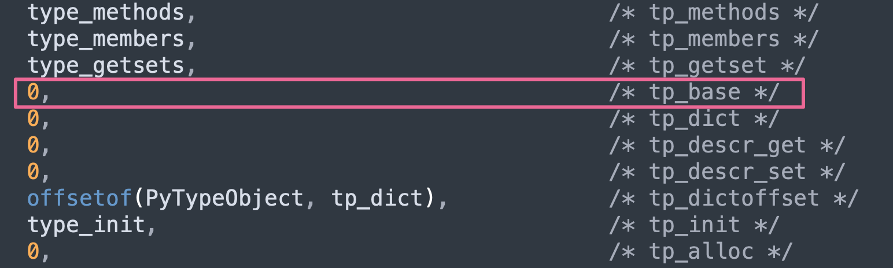
但令我们吃鲸的是，它的 tp_base 居然是个 0，也就是说基类为空。
在 C 中，将指针变量赋值为 0 和赋值为 NULL 是等价的，因为 NULL 就是值为 0 的指针常量。
不是说 type 的基类是 object 吗？为啥 tp_base 是 0 呢。事实上如果你去看其它类型的话，会发现它们内部的 tp_base 也是 0。为 0 的原因就在于我们目前看到的类型对象还不够完善，因为 Python 的动态性，显然不可能在定义的时候就将所有字段属性都设置好、然后解释器一启动就得到我们平时使用的类型对象。
因此目前看到的类型对象还不是最终形态，有一部分字段属性是在解释器启动之后再动态完善的，而这个完善的过程被称为类型对象的初始化，它由函数 PyType_Ready 负责。
// Objects/typeobject.c
int
PyType_Ready(PyTypeObject *type)
{
// ...
// 注意这里的 type 是一个 C 函数的参数，不是 Python 里的 <class 'type'>
// 获取类型对象的基类（指针）
base = type->tp_base;
// 如果类型对象的 tp_base 为空，并且本身也不是 &PyBaseObject_Type
// 那么就将它的 tp_base 设置为 &PyBaseObject_Type
if (base == NULL && type != &PyBaseObject_Type) {
base = type->tp_base = &PyBaseObject_Type;
Py_INCREF(base);
}
// ...
}
当解释器发现类对象还没有初始化时，会将其作为参数传递给 PyType_Ready，进行初始化。
初始化过程会做很多的工作，用于完善类型对象，而其中一项工作就是设置基类。如果发现类型对象的基类为空，那么就将基类设置为 object，因为在 Python3 里面新式类都要继承 object。当然啦，这个类不能是 object 本身，object 的基类是 None，因为继承链向上要有一个终点。
当 PyType_Ready 完成初始化之后，就得到我们平常使用的类型对象了，最终 PyType_Type 和 PyBaseObject_Type 的关系如下。

因此到目前为止，type 和 object 之间的恩怨纠葛算是真相大白了，总结一下：
1）和自定义类不同，内置的类不是由 type 实例化得到的，它们都是在底层预先定义好的，不存在谁创建谁。只是内置的类在定义的时候，它们的类型都被设置成了 type。这样不管是内置的类，还是自定义类，在调用时都可以执行 type 的 __call__ 函数，从而让它们的行为是一致的。
2）虽然内置的类在底层预定义好了，但还有一些瑕疵，因为有一部分逻辑无法以源码的形式体现，只能在解释器启动的时候再动态完善。而这个完善的过程，便包含了基类的填充，会将基类设置成 object。
所以 type 和 object 是同时出现的，它们的存在需要依赖彼此。首先这两者会以不完全体的形式定义在源码中，并且在定义的时候将 object 的类型设置成 type；然后当解释器启动的时候，再经过动态完善，进化成完全体，而进化的过程中会将 type 的基类设置成 object。
因此 object 的类型是 type，type 继承 object 就是这么来的。
小结
至此，我们算是从解释器的角度完全理清了 Python 中对象之间的关系，用之前的一张图总结一下。

当然，目前还远远没有结束，后续还会针对内置的对象进行专门的剖析，如浮点数、整数、字符串、字节串、元组、列表、字典、集合等等，都会一点一点剖析。我们会从 Python 的角度介绍对象该怎么用，然后再看它的底层实现，最后再用 Python 代码进行验证，加深理解。
欢迎大家关注我的公众号：古明地觉的编程教室。
如果觉得文章对你有所帮助，也可以请作者吃个馒头，Thanks♪(･ω･)ﾉ。
楔子
本篇文章来聊一聊对象的创建，一个对象是如何从无到有产生的呢？
>>> n = 123
>>> n
123
比如在终端中执行 n = 123，一个整数对象就创建好了，但它的背后都发生了什么呢？带着这些疑问，开始今天的内容。
Python 为什么这么慢
前面我们介绍了 Python 对象在底层的数据结构，知道了 Python 底层是通过 PyObject 实现了对象的多态。所以我们先来分析一下 Python 为什么慢？
在 Python 中创建一个对象，会分配内存并进行初始化，然后用一个 PyObject * 指针来维护这个对象，当然所有对象都是如此。因为指针是可以相互转化的，所以变量在保存一个对象的指针时，会将指针转成 PyObject * 之后再交给变量保存。
因此在 Python 中，变量的传递（包括函数的参数传递）实际上传递的都是泛型指针 PyObject *。这个指针具体指向什么类型的对象我们并不知道，只能通过其内部的 ob_type 字段进行动态判断，而正是因为这个 ob_type，Python 实现了多态机制。
比如 a.pop()，我们不知道 a 指向的对象是什么类型，它可能是列表、也可能是字典，或者是我们实现了 pop 方法的自定义类的实例对象。至于它到底是什么类型，只能通过 ob_type 动态判断。
如果 a 的 ob_type 为 &PyList_Type，那么 a 指向的对象就是列表，于是会调用 list 类型中定义的 pop 操作。如果 a 的 ob_type 为 &PyDict_Type，那么 a 指向的对象就是字典，于是会调用 dict 类型中定义的 pop 操作。所以变量 a 在不同的情况下，会表现出不同的行为，这正是 Python 多态的核心所在。
再比如列表，它内部的元素也都是 PyObject *，因为类型要保持一致，所以对象的指针不能直接存（因为类型不同），而是需要统一转成泛型指针 PyObject * 之后才可以存储。当我们通过索引获取到该指针进行操作的时候，也会先通过 ob_type 判断它的类型，看它是否支持指定的操作。所以操作容器内的某个元素，和操作一个变量并无本质上的区别，它们都是 PyObject *。
从这里我们也能看出 Python 为什么慢了，因为有一部分时间浪费在类型和属性的查找上面。
以变量 a + b 为例，这个 a 和 b 指向的对象可以是整数、浮点数、字符串、列表、元组、以及实现了 __add__ 方法的类的实例对象。因为 Python 的变量都是 PyObject *，所以它可以指向任意的对象，这就意味着 Python 无法做基于类型的优化。
底层在执行 a + b 时，首先要通过 ob_type 判断变量指向的对象是什么类型，这在 C 的层面需要一次属性查找。然后 Python 将每一个算术操作都抽象成了一个魔法方法，所以实例相加时要在类型对象中找到该方法对应的函数指针，这又是一次属性查找。找到了之后将 a、b 作为参数传递进去，这会产生一次函数调用，将对象维护的值拿出来进行运算，然后根据相加的结果创建一个新的对象，再将新的对象的指针转成 PyObject * 之后返回。
所以一个简单的加法运算，Python 内部居然做了这么多的工作，要是再放到循环里面，那么上面的步骤要重复 N 次。而对于 C 来讲，由于已经规定好了类型，所以 a + b 在编译之后就是一条简单的机器指令，因此两者在效率上差别很大。
当然我们不是来吐槽 Python 效率的问题，因为任何语言都有擅长的一面和不擅长的一面，这里只是通过回顾前面的知识来解释为什么 Python 效率低。因此当别人问你 Python 为什么效率低的时候，希望你能从这个角度来回答它，主要就两点：
- Python 无法基于类型做优化；
- Python 对象基本都存储在堆上；
建议不要一上来就谈 GIL，那是在多线程情况下才需要考虑的问题。而且我相信大部分觉得 Python 慢的人，都不是因为 Python 无法利用多核才觉得慢的。
Python 的 C API
然后来说一说 Python 的 C API，这个非常关键。首先 Python 解释器听起来很高大上，但按照陈儒老师的说法，它不过就是用 C 语言写出的一个开源软件，从形式上和其它软件并没有本质上的不同。
比如你在 Windows 系统中打开 Python 的安装目录，会发现里面有一个二进制文件 python.exe 和一个动态库文件 python38.dll。二进制文件负责执行，动态库文件则包含了相应的依赖，当然编译的时候也可以把动态库里的内容统一打包到二进制文件中，不过大部分软件在开发时都会选择前者。
既然解释器是用 C 写的，那么在执行时肯定会将 Python 代码翻译成 C 代码，这是毫无疑问的。比如创建一个列表，底层就会创建一个 PyListObject 实例，比如调用某个内置函数，底层会调用对应的 C 函数。
所以如果你想搞懂 Python 代码的执行逻辑或者编写 Python 扩展，那么就必须要清楚解释器提供的 API 函数。而按照通用性来划分的话，这些 API 可以分为两种。
- 泛型 API；
- 特定类型 API；
泛型 API
顾名思义，泛型 API 和参数类型无关，属于抽象对象层。这类 API 的第一个参数是 PyObject *，可以处理任意类型的对象，API 内部会根据对象的类型进行区别处理。
而且泛型 API 的名称也是有规律的，格式为 PyObject_###，我们举例说明。
所以泛型 API 一般以 PyObject_ 开头，第一个参数是 PyObject *，表示可以处理任意类型的对象。
特定类型 API
顾名思义，特定类型 API 和对象的类型是相关的，属于具体对象层，只能作用在指定类型的对象上面。因此不难发现，每种类型的对象，都有属于自己的一组特定类型 API。
// 通过 C 的 double 创建 PyFloatObject
PyObject* PyFloat_FromDouble(double v);
// 通过 C 的 long 创建 PyLongObject
PyObject* PyLong_FromLong(long v);
// 通过 C 的 char * 创建 PyLongObject
PyObject* PyLong_FromString(const char *str, char **pend, int base)
以上就是解释器提供的两种 C API，了解完之后我们再来看看对象是如何创建的。
对象是如何创建的
创建对象可以使用泛型 API，也可以使用特定类型 API，比如创建一个浮点数。
使用泛型 API 创建
PyObject* pi = PyObject_New(PyObject, &PyFloat_Type);
通过泛型 API 可以创建任意类型的对象，因为该类 API 和类型无关。那么问题来了，解释器怎么知道要给对象分配多大的内存呢？
在介绍类型对象的时候我们提到，对象的内存大小、支持哪些操作等等，都属于元信息，而元信息会存在对应的类型对象中。其中 tp_basicsize 和 tp_itemsize 负责指定实例对象所需的内存空间。
// Include/objimpl.h
// 创建定长对象
#define PyObject_New(type, typeobj) \
( (type *) _PyObject_New(typeobj) )
// 创建变长对象
#define PyObject_NewVar(type, typeobj, n) \
( (type *) _PyObject_NewVar((typeobj), (n)) )
/* 所以 PyObject* pi = PyObject_New(PyObject, &PyFloat_Type) 等价于如下
* PyObject* pi = (PyObject *)_PyObject_New(&PyFloat_Type)
*/
所以实际申请内存的动作由 _PyObject_New 和 _PyObject_NewVar 负责，看看它的逻辑。
// Objects/object.c
PyObject *
_PyObject_New(PyTypeObject *tp)
{
PyObject *op;
// 通过 PyObject_Malloc 为对象申请内存，大小为 _PyObject_SIZE(tp)
op = (PyObject *) PyObject_MALLOC(_PyObject_SIZE(tp));
if (op == NULL)
return PyErr_NoMemory();
// 设置对象的类型和引用计数
return PyObject_INIT(op, tp);
}
PyVarObject *
_PyObject_NewVar(PyTypeObject *tp, Py_ssize_t nitems)
{
PyVarObject *op;
const size_t size = _PyObject_VAR_SIZE(tp, nitems);
// 通过 PyObject_Malloc 为对象申请内存，大小为 _PyObject_VAR_SIZE(tp, nitems)
op = (PyVarObject *) PyObject_MALLOC(size);
if (op == NULL)
return (PyVarObject *)PyErr_NoMemory();
// 设置对象的类型、引用计数和 ob_size
return PyObject_INIT_VAR(op, tp, nitems);
}
// Include/objimpl.h
#define _PyObject_SIZE(typeobj) ( (typeobj)->tp_basicsize )
#define _PyObject_VAR_SIZE(typeobj, nitems) \
_Py_SIZE_ROUND_UP((typeobj)->tp_basicsize + \
(nitems)*(typeobj)->tp_itemsize, \
SIZEOF_VOID_P)
/* 类型对象的 tp_basicsize 字段表示它的实例对象的基础大小，即底层结构体的大小
* 对于像浮点数这种不可变的定长对象来说，显然大小就等于 PyFloat_Type 的 tp_basicsize
*
* 如果对象内部可以容纳指定数量的元素，比如元组，那么 tp_itemsize 便是每个元素的大小
* 对于元组来说，它的大小等于 tp_basicsize + 元素个数 * tp_itemsize，并且按照 8 字节对齐
*/
以上便是泛型 API 创建对象的流程，但泛型 API 属于通用逻辑，而内置类型的实例对象一般会采用特定类型 API 创建。
使用特定类型 API 创建
// 创建浮点数，值为 2.71
PyObject* e = PyFloat_FromDouble(2.71);
// 创建一个可以容纳 5 个元素的元组
PyObject* tpl = PyTuple_New(5);
// 创建一个可以容纳 5 个元素的列表
// 当然这是初始容量，列表还可以扩容
PyObject* lst = PyList_New(5);
和泛型 API 不同，使用特定类型 API 只能创建指定类型的对象，因为这种 API 是和类型绑定的。比如我们可以用 PyDict_New 创建一个字典，但不可能创建一个集合出来。
如果使用特定类型 API，那么可以直接分配内存。因为内置类型的实例对象，它们的定义在底层都是写死的，解释器对它们了如指掌，因此可以直接分配内存并初始化。
比如通过 e = 2.71 创建一个浮点数，解释器看到 2.71 就知道要创建 PyFloatObject 结构体实例，那么申请多大内存呢？显然是 sizeof(PyFloatObject)，直接计算一下结构体实例的大小即可。
// Include/floatobject.h
typedef struct {
// ob_refcnt 占 8 字节，ob_type 也占 8 字节
PyObject_HEAD
// 占 8 字节
double ob_fval;
} PyFloatObject;
由于 PyFloatObject 只是在 PyObject 的基础上引入了一个 double 字段，用于维护浮点数的值，所以一个 PyFloatObject 实例的大小为 24 字节。既然内存大小知道，那么直接分配就可以了，分配之后再将 ob_refcnt 初始化为 1、将 ob_type 设置为 &PyFloat_Type、将 ob_fval 设置为 2.71 即可。
同理可变对象也是一样，因为字段都是固定的，容纳的元素个数也可以根据赋的值得到，所以内部的所有字段占用了多少内存可以算出来，因此也是可以直接分配内存的。
还是那句话，解释器对内置的数据结构了如指掌，因为这些结构在底层都是定义好的，源码直接写死了。所以解释器根本不需要借助类型对象去创建实例对象，它只需要在实例对象创建完毕之后，再将 ob_type 设置为指定的类型即可（让实例对象和类型对象建立联系）。
所以采用特定类型 API 创建实例的速度会更快，但这只适用于内置的数据结构，而我们自定义类的实例对象显然没有这个待遇。假设通过 class Person: 定义了一个类，那么在实例化的时候，显然不可能通过 PyPerson_New 去创建，因为底层压根就没有这个 API。这种情况下创建 Person 的实例对象就需要 Person 这个类型对象了，因此自定义类的实例对象如何分配内存、如何进行初始化，需要借助对应的类型对象。
总的来说，Python 内部创建一个对象有两种方式：
- 通过特定类型 API，适用于内置数据结构，即内置类型的实例对象。
- 通过调用类型对象去创建（底层会调用泛型 API），多用于自定义类型。
[] 和 list()，应该使用哪种方式
lst = [] 和 lst = list() 都会创建一个空列表，但这两种方式有什么区别呢？
我们说创建实例对象可以通过解释器提供的特定类型 API，用于内置类型；也可以通过实例化类型对象去创建，既可用于自定义类型，也可用于内置类型。
# 通过特定类型 API 创建
>>> lst = []
>>> lst
[]
# 通过调用类型对象创建
>>> lst = list()
>>> lst
[]
还是那句话，解释器对内置数据结构了如指掌，并且做足了优化。
- 看到 123，就知道创建 PyLongObject 实例；
- 看到 2.71，就知道创建 PyFloatObject 实例；
- 看到 ( )，就知道创建 PyTupleObject 实例；
- 看到 [ ]，就知道创建 PyListObject 实例；
- ······
这些都会使用特定类型 API 去创建，直接为结构体申请内存，然后设置引用计数和类型，所以使用 [ ] 创建列表是最快的。但如果使用 list() 创建列表，那么就产生了一个调用，要进行参数解析、类型检测、创建栈帧、销毁栈帧等等，所以开销会大一些。
import time
start = time.perf_counter()
for _ in range(10000000):
lst = []
end = time.perf_counter()
print(end - start)
"""
0.2144167000001289
"""
start = time.perf_counter()
for _ in range(10000000):
lst = list()
end = time.perf_counter()
print(end - start)
"""
0.4079916000000594
"""
通过 [ ] 的方式创建一千万次空列表需要 0.21 秒，但通过 list() 的方式创建一千万次空列表需要 0.40 秒，主要就在于 list() 是一个调用，而 [ ] 会直接被解析成 PyListObject，因此 [ ] 的速度会更快一些。
所以对于内置类型的实例对象而言，使用特定类型 API 创建要更快一些。而且事实上通过类型对象去创建的话，会先调用 tp_new，然后在 tp_new 内部还是调用了特定类型 API。
比如：
- 创建列表：可以是 list()、也可以是 [ ]；
- 创建元组：可以是 tuple()、也可以是 ( )；
- 创建字典：可以是 dict()、也可以是 { }；
前者是通过类型对象创建的，后者是通过特定类型 API 创建的。对于内置类型的实例对象而言，我们推荐使用特定类型 API 创建，会直接解析为对应的 C 一级数据结构，因为这些结构在底层都是已经实现好了的，可以直接用。而无需通过诸如 list() 这种调用类型对象的方式来创建，因为它们内部最终还是使用了特定类型 API，相当于多绕了一圈。
不过以上都是针对内置类型，而自定义的类型就没有这个待遇了，它的实例对象只能通过调用它自己创建。比如 Person 这个类，解释器不可能事先定义一个 PyPersonObject 然后将 API 提供给我们，所以我们只能通过调用 Person 来创建它的实例对象。
另外内置类型被称为静态类，它和它的实例对象在底层已经定义好了，无法动态修改。我们自定义的类型被称为动态类，它是在解释器运行的过程中动态构建的，所以我们可以对其进行动态修改。
事实上 Python 的动态性、GIL 等特性，都是解释器在将字节码翻译成 C 代码时动态赋予的，而内置类型在编译之后已经是指向 C 一级的数据结构，因此也就丧失了相应的动态性。不过与之对应的就是效率上的提升，因为运行效率和动态性本身就是鱼与熊掌的关系。
小结
以上我们就简单分析了 Python 对象的创建过程，当然这只是一个开头，其背后还隐藏了大量的细节，我们后续会慢慢说。
下一篇文章来聊一聊，对象是如何被调用的。
欢迎大家关注我的公众号：古明地觉的编程教室。
如果觉得文章对你有所帮助，也可以请作者吃个馒头，Thanks♪(･ω･)ﾉ。
楔子
在上一篇文章中，我们分析了对象是如何创建的，主要有两种方式，一种是通过特定类型 API，另一种是通过调用类型对象。
对于内置类型的实例对象而言，这两种方式都是支持的，比如列表，我们既可以通过 [ ] 创建，也可以通过 list() 创建，前者是列表的特定类型 API，后者是调用类型对象。但对于自定义类的实例对象而言，我们只能通过调用类型对象的方式来创建。
而一个对象如果可以被调用，那么这个对象就是 callable，否则就不是 callable。那么问题来了，如果一个对象是 callable，那么它都具有哪些特征呢？
- 从 Python 的角度看，如果对象是 callable，那么它的类型对象一定实现了 __call__ 函数；
- 从解释器的角度看，如果对象是 callable，那么它的类型对象的 tp_call 字段一定不为空。
从 Python 的角度看对象的调用
调用 int 可以创建一个整数，调用 str 可以创建一个字符串，调用 tuple 可以创建一个元组，调用自定义的类也可以创建出相应的实例对象，这就说明类型对象是可调用的，也就是 callable。既然类型对象可调用，那么类型对象的类型对象（type）内部一定实现了 __call__ 函数。
# int 可以调用，那么它的类型对象、也就是元类（type）一定实现了 __call__ 函数
print(hasattr(type, "__call__")) # True
# 而调用一个对象，等价于调用其类型对象的 __call__ 函数
# 所以 int(2.71) 实际上就等价于如下
print(type.__call__(int, 2.71)) # 2
我们说 int、str、float 这些都是类型对象（简单来说就是类），而 123、"你好"、2.71 是其对应的实例对象，这些都没问题。但如果相对 type 而言，int、str、float 是不是又成了实例对象呢？因为它们的类型都是 type。
所以 class 具有二象性：
- 如果站在实例对象（如：123、"你好"、2.71）的角度上，它是类型对象；
- 如果站在 type 的角度上，它是实例对象；
同理，由于 type 的类型还是 type，那么 type 既是 type 的类型对象，type 也是 type 的实例对象。虽然这里描述的有一些绕，但应该不难理解，而为了避免后续的描述出现歧义，这里我们做一个申明：
- 整数、浮点数、字符串、列表等等，我们称之为实例对象
- int、float、str、dict，以及自定义的类，我们称之为类型对象
- type 虽然也是类型对象，但我们称它为元类
由于 type 的内部定义了 __call__ 函数，那么说明类型对象都是可调用的，因为调用类型对象就是调用元类 type 的 __call__ 函数。而实例对象能否调用就不一定了，这取决于它的类型对象是否定义了 __call__ 函数，因为调用一个对象，本质上是调用其类型对象内部的 __call__ 函数。
class A:
pass
a = A()
# 因为自定义的类 A 里面没有 __call__
# 所以 a 是不可以被调用的
try:
a()
except Exception as e:
# 告诉我们 A 的实例对象无法被调用
print(e) # 'A' object is not callable
# 如果我们给 A 设置了一个 __call__
type.__setattr__(A, "__call__", lambda self: "这是__call__")
# 发现可以调用了
print(a()) # 这是__call__
这就是动态语言的特性，即便在类创建完毕之后，依旧可以通过 type 进行动态设置，而这在静态语言中是不支持的。所以 type 是所有类的元类，它控制了自定义类的生成过程，因此 type 这个古老而又强大的类可以让我们玩出很多新花样。

但对于内置的类，type 是不可以对其动态增加、删除或者修改属性的，因为内置的类在底层是静态定义好的。从源码中我们看到，这些内置的类、包括元类，它们都是 PyTypeObject 对象，在底层已经被声明为全局变量了，或者说它们已经作为静态类存在了。所以 type 虽然是所有类型对象的类型，但只有面对自定义的动态类，type 才具有对属性进行增删改的能力。
而且在上一篇文章中我们也解释过，Python 的动态性是解释器将字节码翻译成 C 代码的时候赋予的，因此给类对象动态设置属性只适用于动态类，也就是在 py 文件中使用 class 关键字定义的类。而对于静态类，它们在编译之后已经是指向 C 一级的数据结构了，不需要再被解释器解释了，因此解释器自然也就无法在它们身上动手脚，毕竟彪悍的人生不需要解释。
try:
type.__setattr__(dict, "ping", "pong")
except Exception as e:
print(e)
"""
can't set attributes of built-in/extension type 'dict'
"""
try:
type.__setattr__(list, "ping", "pong")
except Exception as e:
print(e)
"""
can't set attributes of built-in/extension type 'list'
"""
同理其实例对象亦是如此，静态类的实例对象也不可以动态设置属性：
lst = list()
try:
lst.name = "古明地觉"
except Exception as e:
print(e) # 'list' object has no attribute 'name'
在介绍 PyTypeObject 结构体的时候我们说过，静态类的实例对象可以绑定哪些属性，已经写死在 tp_members 字段里面了。
从解释器的角度看对象的调用
如果一个对象可以被调用，那么它的类型对象中一定要有 tp_call，更准确的说是 tp_call 字段的值是一个具体的函数指针，而不是 0。由于 PyList_Type 是可以调用的，这就说明 PyType_Type 内部的 tp_call 是一个函数指针，这在 Python 的层面我们已经验证过了，下面再来通过源码看一下。

在创建 PyType_Type 的时候，PyTypeObject 内部的 tp_call 字段被设置成了 type_call。所以当我们调用 PyList_Type 的时候，会执行 type_call 函数。
因此 list() 在 C 的层面上等价于：
(&PyList_Type)->ob_type->tp_call(&PyList_Type, args, kwargs);
// 即：
(&PyType_Type)->tp_call(&PyList_Type, args, kwargs);
// 而在创建 PyType_Type 的时候，给 tp_call 字段传递的是 type_call
// 因此最终等价于
type_call(&PyList_Type, args, kwargs)
如果用 Python 来演示这一过程的话：
# 以 list("abcd") 为例，它等价于
lst1 = list.__class__.__call__(list, "abcd")
# 等价于
lst2 = type.__call__(list, "abcd")
print(lst1) # ['a', 'b', 'c', 'd']
print(lst2) # ['a', 'b', 'c', 'd']
这就是 list() 的秘密，相信其它类型在实例化的时候是怎么做的，你已经知道了，做法是相同的。
# dct = dict([("name", "古明地觉"), ("age", 17)])
dct = dict.__class__.__call__(
dict, [("name", "古明地觉"), ("age", 17)]
)
print(dct) # {'name': '古明地觉', 'age': 17}
# buf = bytes("hello world", encoding="utf-8")
buf = bytes.__class__.__call__(
bytes, "hello world", encoding="utf-8"
)
print(buf) # b'hello world'
当然，目前还没有结束，我们还需要看一下 type_call 的源码实现。
type_call 源码解析
调用类型对象，本质上会调用 type.__call__，在底层对应 type_call 函数，因为 PyType_Type 的 tp_call 字段被设置成了 type_call。当然调用 type 也是如此，因为 type 的类型还是 type。
那么这个 type_call 都做了哪些事情呢？
// Objects/typeobject.c
static PyObject *
type_call(PyTypeObject *type, PyObject *args, PyObject *kwds)
{
// 参数 type 表示类型对象或者元类，假设调用的是 list，那么它就是 &PyList_Type
// 参数 args 和 kwds 表示位置参数和关键字参数，args 是元组，kwds 是字典
// 指向创建的实例对象，当然也可能是类型对象，取决于参数 type
// 如果参数 type 表示元类，那么 obj 会指向类型对象，并且是自定义的动态类
// 如果参数 type 表示类型对象，那么 obj 会指向实例对象
PyObject *obj;
// 执行类型对象（也可能是元类）的 tp_new，也就是 __new__
// 如果不存在，那么会报错，而在 Python 中见到的报错信息就是这里指定的
if (type->tp_new == NULL) {
PyErr_Format(PyExc_TypeError,
"cannot create '%.100s' instances",
type->tp_name);
return NULL;
}
obj = type->tp_new(type, args, kwds);
// 检测调用是否正常，如果调用正常，那么 obj 一定指向一个合法的 PyObject
// 而如果 obj 为 NULL，则表示执行出错，此时解释器会抛出异常
obj = _Py_CheckFunctionResult((PyObject*)type, obj, NULL);
if (obj == NULL)
return NULL;
// 这里要做一个额外判断：
// 如果参数 type 是 &PyType_Type，也就是 Python 中的元类
// 那么它可以接收一个位置参数（查看对象类型），也可以接收三个位置参数（创建自定义类）
// 所以当 type 是 &PyType_Type，位置参数的个数为 1，并且没有传递关键字参数时
// 那么表示查看对象的类型，此时直接返回 obj 即可
if (type == &PyType_Type &&
PyTuple_Check(args) && PyTuple_GET_SIZE(args) == 1 &&
(kwds == NULL ||
(PyDict_Check(kwds) && PyDict_GET_SIZE(kwds) == 0)))
return obj;
// 到这里说明不是查看对象类型，而是创建类或者实例
// 如果参数 type 是元类，那么表示创建类，此时 args 的长度必须为 3
// 如果参数 type 是类型对象，那么表示创建实例对象
// 所以为了描述方便，我们就假设参数 type 是类型对象，但我们知道它也可以是元类
// 总之到这里 __new__ 已经执行完了，那么之后该干啥了？显然是执行 __init__，但需要先做一个检测
// 如果 __new__ 返回的实例对象的类型不是当前类型，那么直接返回，不再执行 __init__
// 比如自定义 class A，那么在 __new__ 里面应该返回 A 的实例对象，但我们故意返回个 123
// 由于返回值的类型不是当前类型，那么不再执行初始化函数 __init__
if (!PyType_IsSubtype(Py_TYPE(obj), type))
return obj;
// 走到这里说明类型一致，那么执行 __init__，将 obj、args、kwds 一起传过去
type = Py_TYPE(obj);
if (type->tp_init != NULL) {
int res = type->tp_init(obj, args, kwds);
if (res < 0) {
assert(PyErr_Occurred());
Py_DECREF(obj);
obj = NULL;
}
else {
assert(!PyErr_Occurred());
}
}
// 返回创建的对象 obj，当然准确来说是对象的泛型指针
// 因为 Python 虽然一切皆对象，但我们拿到的都是对象的泛型指针
// 只是有时为了描述方便，我们会说成是对象，这一点我们心里清楚就好
return obj;
}
所以整个过程就三步：
- 如果传递的是元类，并且只有一个参数，那么直接返回对象的类型；
- 否则先调用 tp_new 为实例对象申请内存；
- 再调用 tp_init（如果有）进行初始化，设置对象属性；
所以这对应了 Python 中的 __new__ 和 __init__，其中 __new__ 负责为实例对象开辟一份内存，然后返回指向对象的指针，并且该指针会自动传递给 __init__ 中的 self。
class Girl:
def __new__(cls, name, age):
print("__new__ 方法执行啦")
# 调用 object.__new__(cls) 创建 Girl 的实例对象
# 然后该对象的指针会自动传递给 __init__ 中的 self
return object.__new__(cls)
def __init__(self, name, age):
print("__init__ 方法执行啦")
self.name = name
self.age = age
g = Girl("古明地觉", 16)
print(g.name, g.age)
"""
__new__ 方法执行啦
__init__ 方法执行啦
古明地觉 16
"""
__new__ 里面的参数要和 __init__ 里面的参数保持一致，因为会先执行 __new__ ，然后解释器再将 __new__ 的返回值和传递的参数组合起来一起传给 __init__。因此从这个角度上讲，设置属性完全可以在 __new__ 里面完成。
class Girl:
def __new__(cls, name, age):
self = object.__new__(cls)
self.name = name
self.age = age
return self
g = Girl("古明地觉", 16)
print(g.name, g.age)
"""
古明地觉 16
"""
这样也是没问题的，不过 __new__ 一般只负责创建实例，设置属性应该交给 __init__ 来做，毕竟一个是构造函数、一个是初始化函数，各司其职。另外由于 __new__ 里面不负责初始化，那么它的参数除了 cls 之外，一般都会写成 *args 和 **kwargs。
然后再回过头来看一下 type_call 中的这两行代码：

tp_new 应该返回该类型对象的实例对象，而且一般情况下我们是不重写 __new__ 的，会默认执行 object 的 __new__。但如果我们重写了，那么必须要手动返回 object.__new__(cls)。可如果我们不返回，或者返回其它的话，会怎么样呢？
class Girl:
def __new__(cls, *args, **kwargs):
print("__new__ 方法执行啦")
instance = object.__new__(cls)
# 打印看看 instance 到底是个啥
print("instance:", instance)
print("type(instance):", type(instance))
# 正确做法是将 instance 返回
# 但是我们不返回，而是返回一个整数 123
return 123
def __init__(self, name, age):
print("__init__ 方法执行啦")
g = Girl()
"""
__new__ 方法执行啦
instance: <__main__.Girl object at 0x0000019A2B7270A0>
type(instance): <class '__main__.Girl'>
"""
这里面有很多可以说的点，首先就是 __init__ 里面需要两个参数，但是我们没有传，却还不报错。原因就在于这个 __init__ 压根就没有执行，因为 __new__ 返回的不是 Girl 的实例对象。
通过打印 instance，我们知道了 object.__new__(cls) 返回的就是 cls 的实例对象，而这里的 cls 就是 Girl 这个类本身。所以我们必须要返回 instance，才会自动执行相应的 __init__。
我们在外部来打印一下创建的实例对象吧，看看结果：
class Girl:
def __new__(cls, *args, **kwargs):
return 123
def __init__(self, name, age):
print("__init__ 方法执行啦")
g = Girl()
print(g)
"""
123
"""
我们看到打印的结果是 123，所以再次总结一下 tp_new 和 tp_init 之间的区别，当然也对应 __new__ 和 __init__ 的区别：
- tp_new：为实例对象申请内存，底层会调用 tp_alloc，至于对象的大小则记录在 tp_basicsize 字段中，而在 Python 里面则是调用 object.__new__(cls)，然后一定要将实例对象返回；
- tp_init：tp_new 的返回值会自动传递给 self，然后为 self 绑定相应的属性，也就是进行实例对象的初始化；
但如果 tp_new 返回的对象的类型不对，比如 type_call 的第一个参数接收的是 &PyList_Type，但 tp_new 返回的却是 PyTupleObject *，那么此时就不会执行 tp_init。对应上面的 Python 代码就是，Girl 的 __new__ 应该返回 Girl 的实例对象（指针）才对，但却返回了整数，因此类型不一致，不会执行 __init__。
所以都说类在实例化的时候会先调用 __new__，再调用 __init__，相信你应该知道原因了，因为在源码中先调用 tp_new，再调用 tp_init。所以源码层面表现出来的，和我们在 Python 层面看到的是一样的。
小结
到此，我们就从 Python 和解释器两个层面剖析了对象是如何调用的，更准确的说，我们是从解释器的角度对 Python 层面的知识进行了验证，通过 tp_new 和 tp_init 的关系，来了解 __new__ 和 __init__ 的关系。
当然对象调用还不止目前说的这么简单，更多的细节隐藏在了幕后。后续我们会循序渐进，一点点地揭开它的面纱，并且在这个过程中还会不断地学习到新的东西。比如说，实例对象在调用方法的时候会自动将实例本身作为参数传递给 self，那么它为什么会传递呢？解释器在背后又做了什么工作呢？这些在之后的文章中都会详细说明。
欢迎大家关注我的公众号：古明地觉的编程教室。
如果觉得文章对你有所帮助，也可以请作者吃个馒头，Thanks♪(･ω･)ﾉ。
之前我们提到了泛型 API，这类 API 的特点是可以处理任意类型的对象，举个例子。
// 返回对象的长度
PyObject_Size
// 返回对象的某个属性的值
PyObject_GetAttr
// 返回对象的哈希值
PyObject_Hash
// 将对象转成字符串后返回
PyObject_Str
对应到 Python 代码中，就是下面这个样子。
# PyObject_Size
print(len("古明地觉"))
print(len([1, 2, 3]))
"""
4
3
"""
# PyObject_GetAttr
print(getattr("古明地觉", "lower"))
print(getattr([1, 2, 3], "append"))
print(getattr({}, "update"))
"""
<built-in method lower of str object at 0x7f081aa7e920>
<built-in method append of list object at 0x7f081adc1100>
<built-in method update of dict object at 0x7f081aa8fd80>
"""
# PyObject_Hash
print(hash("古明地觉"))
print(hash(2.71))
print(hash(123))
"""
8152506393378233203
1637148536541722626
123
"""
# PyObject_Str
print(str("古明地觉"))
print(str(object()))
"""
古明地觉
<object object at 0x7fdfa0209d10>
"""
这些 API 能处理任意类型的对象，这究竟是怎么办到的？要想搞清楚这一点，还是要从 PyObject 入手。
我们知道对象在 C 看来就是一个结构体实例，并且结构体嵌套了 PyObject。
# 创建一个浮点数，让变量 var 指向它
var = 2.71
# 创建一个列表，让变量 var 指向它
var = [1, 2, 3]
浮点数对应的结构体是 PyFloatObject，列表对应的结构体是 PyListObject，变量 var 是指向对象的指针。那么问题来了，凭啥一个变量可以指向不同类型的对象呢？或者说变量和容器里面为什么可以保存不同对象的指针呢？
原因在前面的文章中解释的很详细了，因为对象的指针会统一转成 PyObject * 之后再交给变量保存，以创建列表为例。

当然创建浮点数也是同理，因此变量和容器里的元素本质上就是一个泛型指针 PyObject *。而对象的指针在交给变量保存的时候，也都会先转成 PyObject *，因为不管什么对象，它底层的结构体都嵌套了 PyObject。正是因为这个设计，变量才能指向任意的对象。

所以 Python 变量相当于一个便利贴，可以贴在任意对象上。
不过问题来了，由于对象的指针会统一转成 PyObject * 之后再交给变量保存，那么变量怎么知道自己指向的是哪种类型的对象呢？相信你肯定知道答案：通过 ob_type 字段。

对象对应的结构体可以有很多个字段，比如 PyListObject，但变量能看到的只有前两个字段。至于之后的字段是什么，则取决于对象的类型。
所以变量会先通过 ob_type 字段获取对象的类型，如果 ob_type 字段的值为 &PyList_Type，那么变量指向的就是 PyListObject。如果 ob_type 字段的值为 &PyFloat_Type，那么变量指向的就是 PyFloatObject，其它类型同理。当得到了对象的类型，那么再转成相应的指针即可，假设 ob_type 是 &PyList_Type，那么变量会再转成 PyListObject *，这样就可以操作列表的其它字段了。
所以我们再总结一下：

变量和容器里的元素只能保存相同的指针类型，而不同类型的对象，其底层的结构体是不同的。但这些结构体无一例外都嵌套了 PyObject，因此它们的指针会统一转成 PyObject * 之后再交给变量保存。
然后变量在操作对象时，会先通过 ob_type 判断对象的类型，假如是 &PyList_Type，那么会再转成 PyListObject *，其它类型同理。我们以获取列表元素为例：

相信你已经知道为什么泛型 API 可以处理任意类型的对象了，我们再以 PyObject_GetAttr 为例，它内部会调用类型对象的 tp_getattro。
// Objects/object.c
// 等价于 getattr(v, name)
PyObject *
PyObject_GetAttr(PyObject *v, PyObject *name)
{
// 获取对象 v 的类型对象
PyTypeObject *tp = Py_TYPE(v);
// 属性名称必须是字符串
if (!PyUnicode_Check(name)) {
PyErr_Format(PyExc_TypeError,
"attribute name must be string, not '%.200s'",
name->ob_type->tp_name);
return NULL;
}
// 如果类型对象实现了 tp_getattro，那么进行调用
// 等价于 Python 中的 type(v).__getattr__(v, name)
if (tp->tp_getattro != NULL)
return (*tp->tp_getattro)(v, name);
// 否则会退化为 tp_getattr，它要求属性名称必须是 C 字符串
// 不过 tp_getattr 已经废弃，应该使用 tp_getattro
if (tp->tp_getattr != NULL) {
const char *name_str = PyUnicode_AsUTF8(name);
if (name_str == NULL)
return NULL;
return (*tp->tp_getattr)(v, (char *)name_str);
}
// 否则说明对象 v 没有该属性
PyErr_Format(PyExc_AttributeError,
"'%.50s' object has no attribute '%U'",
tp->tp_name, name);
return NULL;
}
函数先通过 ob_type 找到对象的类型，然后通过类型对象的 tp_getattro 调用对应的属性查找函数。所以对象的类型不同，PyObject_GetAttr 调用的属性查找函数也不同，而这就是泛型 API 能处理任意对象的秘密。
我们再以 Python 代码为例：
class A:
def __getattr__(self, item):
return f"class：A，item：{item}"
class B:
def __getattr__(self, item):
return f"class：B，item：{item}"
a = A()
b = B()
print(getattr(a, "some_attr"))
print(getattr(b, "some_attr"))
"""
class：A，item：some_attr
class：B，item：some_attr
"""
# 以上等价于
print(type(a).__getattr__(a, "some_attr"))
print(type(b).__getattr__(b, "some_attr"))
"""
class：A，item：some_attr
class：B，item：some_attr
"""
在 Python 里的表现和源码是一致的，我们再举个 iter 的例子：
data = [1, 2, 3]
print(iter(data))
print(type(data).__iter__(data))
"""
<list_iterator object at 0x7fb8200f29a0>
<list_iterator object at 0x7fb8200f29a0>
"""
如果一个对象支持创建迭代器，那么它的类型对象一定实现了 __iter__，通过 type(data) 可以获取到类型对象，然后再将 data 作为参数调用 __iter__ 即可。
所以通过 ob_type 字段，这些泛型 API 实现了类似多态的效果，一个函数，多种实现。
欢迎大家关注我的公众号：古明地觉的编程教室。
如果觉得文章对你有所帮助，也可以请作者吃个馒头，Thanks♪(･ω･)ﾉ。
我们知道所有类型对象在底层都由结构体 PyTypeObject 实例化得到，但内部字段接收的值不同，得到的类型对象就不同。类型对象不同，那么实例对象的表现就不同，这也正是一种对象区别于另一种对象的关键所在。
比如 PyLong_Type 的 tp_iter 是空，那么整数就不是可迭代对象，而 PyList_Type 的 tp_iter 不是空，那么列表就是可迭代对象。再比如 PyLong_Type 和 PyFloat_Type，虽然内部都实现了 tp_hash，但它们是不同的类型，所以整数和浮点数的哈希值计算方式也不一样。
因此类型对象决定了实例对象的行为，比如能否调用、能否计算哈希值、能否迭代等等，这些都由类型对象决定。
PyTypeObject 里面定义了很多函数指针，比如 tp_call、tp_hash 等等，它们可能指向某个具体的函数，也可能为空。这些函数指针可以看做是类型对象所定义的操作，这些操作决定了其实例对象在运行时的行为。
class A:
# tp_new
def __new__(cls, *args, **kwargs):
pass
# tp_init
def __init__(self):
pass
# tp_call
def __call__(self):
pass
# tp_getattro
def __getattr__(self, attr):
pass
# tp_setattro
def __setattr__(self, key, value):
pass
...
...
像 tp_call、tp_hash、tp_new 等字段会直接对应 Python 里的魔法函数，它们以双下划线开头、以双下划线结尾。但除了魔法函数之外，每种类型还可以有很多自定义的成员函数。
# 自定义 foo 和 bar
class A:
def foo(self):
pass
def bar(self):
pass
# 当然内置类型也是如此
# 像 str 定义了 join、split、upper 等
print(str.join)
print(str.split)
print(str.upper)
# 像 list 定义了 append、extend，insert 等
print(list.append)
print(list.extend)
print(list.insert)
这些自定义的函数会一起保存在类型对象的 tp_methods 里面，负责让实例对象更具有表现力。另外需要补充的是，类型对象里面定义的是函数，也叫成员函数，但实例对象在获取之后会自动包装成方法。所以当提到魔法函数和魔法方法时，其实表达的是同一个意思，只不过一个是站在类的角度，一个是站在实例的角度。
所以实例对象能调用的方法都定义在类型对象里面，并且通过实例调用本质上就是一个语法糖，但用起来更加优雅。假设有一个类 A，实例对象为 a，那么 a.some() 底层会转成 A.some(a)，至于这背后的细节后续再聊。
但除了以上这些，PyTypeObject 还提供了三个字段。

每个字段分别指向一个结构体实例，结构体实例中有大量的字段，这些字段都是函数指针，指向了具体的函数。所以它们也被称为方法簇，分别应用于如下操作。
- tp_as_number：负责数值型操作，比如整数、浮点数的加减乘除；
- tp_as_sequence：负责序列型操作，比如字符串、列表、元组等通过索引取值的行为；
- tp_as_mapping：负责映射型操作，比如字典通过 key 映射出 value；
我们以 tp_as_number 为例，它指向 PyNumberMethods 类型的结构体实例，那么这个结构体长什么样子呢？
// Include/cpython/object.h
typedef struct {
// __add__，对应 + 操作符，如 a + b
binaryfunc nb_add;
// __sub__，对应 - 操作符，如 a - b
binaryfunc nb_subtract;
// __mul__，对应 * 操作符，如 a * b
binaryfunc nb_multiply;
// __mod__，对应 % 操作符，如 a % b
binaryfunc nb_remainder;
// __divmod__，对应 divmode 函数，如 divmod(a, b)
binaryfunc nb_divmod;
// __power__，对应 ** 操作符，如 a ** b
ternaryfunc nb_power;
// __neg__，对应 - 操作符，如 -a
unaryfunc nb_negative;
// __pos__，对应 + 操作符，如 +a
unaryfunc nb_positive;
// __abs__，对应 abs 函数，如 abs(a)
unaryfunc nb_absolute;
// __bool__，如 bool(a)
inquiry nb_bool;
// __invert__，对应 ~ 操作符，如 ~a
unaryfunc nb_invert;
// __lshift__，对应 << 操作符，如 a << b
binaryfunc nb_lshift;
// __rshift__，对应 >> 操作符，如 a >> b
binaryfunc nb_rshift;
// __and__，对应 & 操作符，如 a & b
binaryfunc nb_and;
// __xor__，对应 ^ 操作符，如 a ^ b
binaryfunc nb_xor;
// __or__，对应 | 操作符，如 a | b
binaryfunc nb_or;
// __int__，如 int(a)
unaryfunc nb_int;
// ...
} PyNumberMethods;
你看到了什么？是不是想到了 Python 里面的魔法方法，所以它们也被称为方法簇。
在 PyNumberMethods 这个方法簇里面定义了作为一个数值对象应该支持的操作，同理，在 PySequenceMethods 和 PyMappingMethods 中分别定义了作为一个序列对象和映射对象应该支持的操作，这两种对象的典型例子就是 list 和 dict。
所以，只要类型对象提供相关操作，实例对象便具备对应的行为，因为实例对象所调用的方法都是由类型对象提供的。
class Girl:
def __init__(self, name, age):
self.name = name
self.age = age
def say(self):
pass
def cry(self):
pass
g = Girl("古明地觉", 16)
print(g.__dict__) # {'name': '古明地觉', 'age': 16}
print("say" in Girl.__dict__) # True
print("cry" in Girl.__dict__) # True
实例对象的属性字典，只包含了一些在 __init__ 里面设置的属性而已，而实例能够调用的 say、cry 都是定义在类型对象中的。
因此一定要记住：类型对象定义的操作，决定了实例对象的行为。
class Int(int):
def __getitem__(self, item):
return item
a = Int(1)
b = Int(2)
print(a + b) # 3
print(a["你好"]) # 你好
继承了 int 的自定义类 Int 在实例化之后自然是一个数值对象，但 a[""] 却是一个类似于字典才具有的行为，那为什么可以实现呢？原因就是我们重写了 __getitem__ 这个魔法函数，它在底层对应 PyMappingMethods 中的 mp_subscript 操作，因此最终 Int 实例对象表现的像一个字典一样。
归根结底就在于这几个方法簇都只是 PyTypeObject 的一个字段罢了，默认使用 PyTypeObject 结构体创建的 PyLong_Type 所生成的实例对象（整数）是不具备列表和字典的属性特征的。但我们通过继承 PyLong_Type，同时指定 __getitem__，使得构建出来的类型对象所生成的实例对象，同时具备多种属性特征，就是因为解释器支持这种做法。
自定义的类在底层也是 PyTypeObject 结构体实例，而在继承 int 的时候，将其内部定义的 PyNumberMethods 方法簇也继承了下来，而我们又单独实现了 PyMappingMethods 中的 mp_subscript。所以自定义类 Int 的实例对象具备了整数的全部行为，以及字典的部分行为（因为我们只实现了 __getitem__）。
下面再通过 PyLong_Type 实际考察一下：

整数对象支持数值操作，所以在创建 PyLong_Type 时，实现了 tp_as_number。但整数显然不支持序列和映射操作，因此字段 tp_as_sequence 和 tp_as_mapping 就是 0，相当于空。
而 tp_as_number 字段被赋值为 long_as_number，看一下它长什么样。

里面的 long_add、long_sub、long_mul 等等显然都是已经定义好的函数指针，在创建 PyNumberMethods 结构体实例 long_as_number 的时候，这些函数指针分别赋值给了字段 nb_add、nb_substract、nb_multiply 等等。然后创建完 long_as_number 之后，再将其指针交给 PyLong_Type 的 tp_as_number 字段。
因此整数在操作的时候，比如相加，会先通过 变量->ob_type->tp_as_number->nb_add 获取该操作对应的函数指针，其中 int 类型对象的 tp_as_number 字段的值是 &long_as_number，因此获取其字段 nb_add 的时候，拿到的就是 long_add 函数指针，然后调用。
同理 float 类型里的 tp_as_number 字段则被赋值成了 &float_as_number，获取 nb_add 字段的时候，拿到的就是 float_add 函数指针。不同类型的对象的行为不同，它们都有属于自己的一组方法簇。
最后再画一张图总结一下，假设有两个变量，分别是 e = 2.71 和 num = 666。

所以对象的行为是由其类型对象定义的操作所决定的，比如一个对象可以计算长度，那么它的类型对象要实现 __len__；一个对象可以转成整数，那么它的类型对象要实现 __int__ 或 __index__。
class A:
def __len__(self):
return 123
def __int__(self):
return 456
a = A()
print(len(a)) # 123
print(int(a)) # 456
# len(a) 在底层会执行 A.__len__(a)
# int(a) 在底层会执行 A.__int__(a)
print(A.__len__(a)) # 123
print(A.__int__(a)) # 456
总之核心就是一句话：类型对象定义了哪些操作，决定了实例对象具有哪些行为。
欢迎大家关注我的公众号：古明地觉的编程教室。
如果觉得文章对你有所帮助，也可以请作者吃个馒头，Thanks♪(･ω･)ﾉ。
楔子
如果对编程语言进行分类的话，一般可以分为静态语言和动态语言，也可以分为编译型语言和解释型语言。但个人觉得还有一种划分标准，就是是否自带垃圾回收。关于有没有垃圾回收，陈儒老师在《Python 2.5源码剖析》中，总结得非常好。
对于像 C 和 C++ 这类语言，程序员被赋予了极大的自由，可以任意地申请内存。但权力的另一面对应着责任，程序员最后不使用的时候，必须负责将申请的内存释放掉，并把无效指针设置为空。可以说，这一点是万恶之源，大量内存泄漏、悬空指针、越界访问的 bug 由此产生。
而现代的开发语言（比如 C#、Java）都带有垃圾回收机制，将开发人员从维护内存分配和清理的繁重工作中解放出来，开发者不用再担心内存泄漏的问题，但同时也被剥夺了和内存亲密接触的机会，并牺牲了一定的程序运行效率。不过好处就是提高了开发效率，并降低了 bug 发生的概率。
由于现在的垃圾回收机制已经非常成熟了，把对性能的影响降到了最低，因此大部分场景选择的都是带垃圾回收的语言。
而 Python 里面同样具有垃圾回收，只不过它是为引用计数机制服务的。所以解释器通过引用计数和垃圾回收，代替程序员进行繁重的内存管理工作，关于垃圾回收我们后面会详细说，先来看一下引用计数。
引用计数
Python 一切皆对象，所有对象都有一个 ob_refcnt 字段，该字段维护着对象的引用计数，从而也决定对象的存在与消亡。下面来探讨一下引用计数，当然引用计数在介绍 PyObject 的时候说的很详细了，这里再回顾一下。
但需要说明的是，比起类型对象，我们更关注实例对象的行为。引用计数也是如此，只有实例对象，我们探讨引用计数才是有意义的。因为内置的类型对象超越了引用计数规则，永远都不会被析构，或者销毁，因为它们在底层是被静态定义好的。同理，自定义的类虽然可以被回收，但是探讨它的引用计数也是没有价值的。我们举个栗子：
class A:
pass
del A
首先 del 关键字只能作用于变量，不可以作用于对象。比如 e = 2.71，可以 del e，但是不可以 del 2.71，这是不符合语法规则的。因为 del 的作用是删除变量，并将其指向的对象的引用计数减 1，所以我们只能 del 变量，不可以 del 对象。
至于 def、class 语句执行完之后拿到的也是变量，前面说了，Python 虽然一切皆对象，但我们拿到的都是对象的泛型指针。比如上面代码中的 class A，它会先创建一个类对象，然后再让变量 A 指向这个类对象。所以我们拿到的 A 也是一个变量，只要是变量，就可以被 del。但是 del 变量只是删除了该变量，换言之就是让该变量无法再被使用，至于变量指向的对象是否会被回收，就看是否还有其它的变量也指向它。
总结：对象是否会被回收，完全由解释器判断它的引用计数是否为 0 所决定。
引用计数的相关操作
操作引用计数无非就是将其加一或减一，至于什么时候加一、什么时候减一，在介绍 PyObject 的时候已经说的很详细了。这里我们通过源码，看看引用计数具体是怎么操作的。
在底层，解释器会通过 Py_INCREF 和 Py_DECREF 两个宏来增加和减少对象的引用计数，而当对象的引用计数为 0 时，会调用对应的析构函数来销毁该对象，这个析构函数由对象的类型对象内部的 tp_dealloc 字段决定。
下面我们来看看底层实现，不过在介绍 Py_INCREF 和 Py_DECREF 之前，先来看几个其它的宏，这些宏非常常见，有必要单独说一下。
// Include/object.h
// 将对象的指针转成 PyObject *
#define _PyObject_CAST(op) ((PyObject*)(op))
// 将对象的指针转成 PyVarObject *
#define _PyVarObject_CAST(op) ((PyVarObject*)(op))
// 返回对象的引用计数，即对象的 ob_refcnt 字段
#define Py_REFCNT(ob) (_PyObject_CAST(ob)->ob_refcnt)
// 返回对象的类型，即对象的 ob_type 字段
#define Py_TYPE(ob) (_PyObject_CAST(ob)->ob_type)
// 返回对象的长度，即对象的 ob_size 字段
#define Py_SIZE(ob) (_PyVarObject_CAST(ob)->ob_size)
然后再来看看 Py_INCREF 和 Py_DECREF，它们负责对引用计数执行加一和减一操作。
// Include/object.h
// 将对象的 ob_refcnt 加 1
#define Py_INCREF(op) _Py_INCREF(_PyObject_CAST(op))
static inline void _Py_INCREF(PyObject *op)
{
_Py_INC_REFTOTAL;
op->ob_refcnt++;
}
// 将对象的 ob_refcnt 减 1
#define Py_DECREF(op) _Py_DECREF(__FILE__, __LINE__, _PyObject_CAST(op))
tatic inline void _Py_DECREF(const char *filename, int lineno,
PyObject *op)
{
(void)filename; /* may be unused, shut up -Wunused-parameter */
(void)lineno; /* may be unused, shut up -Wunused-parameter */
_Py_DEC_REFTOTAL;
// 将引用计数减 1 之后进行判断，如果结果不等于 0，则什么也不做
if (--op->ob_refcnt != 0) {
// 正常情况下，Py_REF_DEBUG 宏不会被定义，因为引用计数不可能小于 0
#ifdef Py_REF_DEBUG
if (op->ob_refcnt < 0) {
_Py_NegativeRefcount(filename, lineno, op);
}
#endif
}
// 否则说明引用计数为 0，意味着对象已经不被任何变量引用了，那么应该被销毁
else {
// 调用 _Py_Dealloc 将对象销毁，这个 _Py_Dealloc 函数内部的逻辑很简单
// 虽然里面存在宏判断，但如果只看编译后的最终结果，那么代码就只有下面两行
/* destructor dealloc = Py_TYPE(op)->tp_dealloc;
* (*dealloc)(op);
*/
// 会获取类型对象的 tp_dealloc，然后调用，销毁实例对象
_Py_Dealloc(op);
}
}
以上就是 Py_INCREF 和 Py_DECREF 两个宏的具体实现，但是它们不能接收空指针，如果希望能接收空指针，那么可以使用另外两个宏。
// Include/object.h
#define Py_XINCREF(op) _Py_XINCREF(_PyObject_CAST(op))
static inline void _Py_XINCREF(PyObject *op)
{
if (op != NULL) {
Py_INCREF(op);
}
}
#define Py_XDECREF(op) _Py_XDECREF(_PyObject_CAST(op))
static inline void _Py_XDECREF(PyObject *op)
{
if (op != NULL) {
Py_DECREF(op);
}
}
所以 Py_XINCREF 和 Py_XDECREF 会额外对指针做一次判断，如果为空则什么也不做，不为空再调用 Py_INCREF 和 Py_DECREF。而当一个对象的引用计数为 0 时，与该对象对应的析构函数就会被调用。
但要特别注意的是，我们上面说调用析构函数之后会回收对象，或者说销毁对象，意思是将这个对象从内存中抹去，但并不意味着要释放空间，也就是对象没了，但对象占用的内存却还在。
如果对象没了，占用的内存也要释放的话，那么频繁申请、释放内存空间会使 Python 的执行效率大打折扣，更何况 Python 已经背负了人们对其执行效率的不满这么多年。
所以 Python 底层大量采用了缓存池的技术，使用这种技术可以避免频繁地申请和释放内存空间。因此在析构的时候，只是将对象占用的空间放到缓存池中，并没有真的释放。
这一点，在后面剖析内置实例对象的实现中，将会看得一清二楚，因为大部分内置的实例对象都会有自己的缓存池。
小结
到此我们就把这些基础概念说完了，后续你会发现目前花费的这些笔墨都是值得的，总之先对 Python 有一个宏观的认识，然后再学习具体的数据结构就简单多了。
所以从下一篇文章开始就要详细剖析内置对象的底层实现了，比如浮点数、复数、整数、布尔值、None、bytes 对象、bytearray 对象、字符串、元组、列表、字典、集合等等，所有的内置对象都会详细地剖析一遍，看看它是如何实现的。
有了目前为止的这些基础，我们后面就会轻松很多。先把对象、变量等概念梳理清楚，然后再来搞这些数据结构的底层实现。
欢迎大家关注我的公众号：古明地觉的编程教室。
如果觉得文章对你有所帮助，也可以请作者吃个馒头，Thanks♪(･ω･)ﾉ。
楔子
从现在开始，我们就来分析 Python 的内置对象，看看它们在底层是如何实现的。但说实话，我们在前面几篇文章中介绍对象的时候，已经说了不少了，不过从现在开始要进行更深入的分析。
除了对象本身，还要看对象支持的操作在底层是如何实现的。我们首先以浮点数为例，因为它是最简单的，没错，浮点数比整数要简单，至于为什么，等我们分析整数的时候就知道了。
浮点数的底层结构
要想搞懂浮点数的实现原理，就要知道它在底层是怎么定义的，当然在这之前我们已经见过它很多遍了。
// Include/floatobject.h
typedef struct {
PyObject_HEAD
double ob_fval;
} PyFloatObject;
它包含了一个公共头部 PyObject 和一个 double 类型的 ob_fval 字段，毫无疑问这个 ob_fval 字段负责存储浮点数的具体数值。
我们以 e = 2.71 为例，底层结构如下。
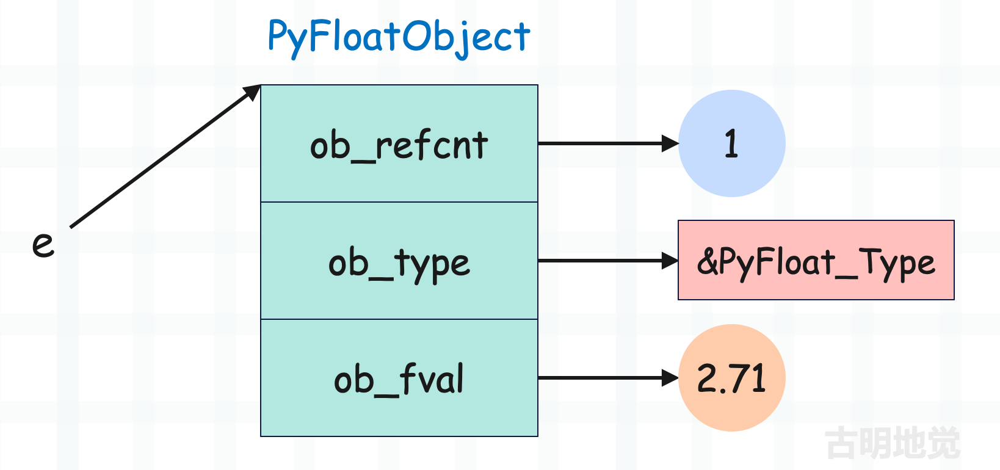
还是很简单的，每个对象在底层都是由结构体表示的，这些结构体中有的字段负责维护对象的元信息，有的字段负责维护具体的值。比如这里的 2.71，总要有一个字段来存储 2.71 这个值，而这个字段就是 ob_fval。所以浮点数的结构非常简单，直接使用一个 C 的 double 来维护。
假设我们要将两个浮点数相加，相信你已经知道解释器会如何做了。通过 PyFloat_AsDouble 将两个浮点数的 ob_fval 抽出来，然后相加，最后再根据相加的结果创建一个新的 PyFloatObject 即可。
浮点数是怎么创建的
下面来看看浮点数是如何创建的，在前面的文章中，我们说内置对象可以使用对应的特定类型 API 创建，也可以通过调用类型对象创建。
调用类型对象 float 创建实例对象，解释器会执行元类 type 的 tp_call，它指向了 type_call 函数。然后 type_call 内部会先调用类型对象（这里是 float）的 tp_new 为其实例对象申请一份空间，申请完毕之后对象就创建好了。然后再调用 tp_init，并将实例对象作为参数传递进去，进行初始化，也就是设置属性。
但是对于 float 来说，它内部的 tp_init 字段为 0，也就是空。

这就说明 float 没有 __init__，因为浮点数太过简单，只需要一个 tp_new 即可。我们举个例子：
class Girl1:
def __init__(self, name, age):
self.name = name
self.age = age
# __new__ 负责开辟空间、生成实例对象
# __init__ 负责给实例对象绑定属性
# 但其实 __init__ 所做的工作可以直接在 __new__ 当中完成
# 换言之有 __new__ 就足够了，其实可以没有__init__
# 我们将上面的例子改写一下
class Girl2:
def __new__(cls, name, age):
instance = object.__new__(cls)
instance.name = name
instance.age = age
return instance
g1 = Girl1("古明地觉", 16)
g2 = Girl2("古明地觉", 16)
print(g1.__dict__ == g2.__dict__) # True
我们看到效果是等价的，因为 __init__ 负责给 self 绑定属性，而这个 self 是 __new__ 返回的。那么很明显，我们也可以在 __new__ 当中绑定属性，而不需要 __init__。
但是按照规范，属性绑定应该放在 __init__ 中执行。只是对于浮点数而言，由于其结构非常简单，所以底层就没有给 float 实现 __init___，所有操作都是在 __new__ 当中完成的。
print(float.__init__ is object.__init__) # True
print(tuple.__init__ is object.__init__) # True
print(list.__init__ is object.__init__) # False
所以 float 没有 __init__，即便获取拿到的也是 object 的 __init__，因为 object 是 float 的基类。同理 tuple 也没有，但 list 是有的。
那么下面就来看一下 PyFloat_Type 的 tp_new，看它是如何创建浮点数的。通过 PyFloat_Type 的定义我们可以看到，在创建的时候给 tp_new 字段设置的是 float_new，那么一切秘密就隐藏在 float_new 里面。
// Objects/clinic/floatobject.c.h
static PyObject *
float_new(PyTypeObject *type, PyObject *args, PyObject *kwargs)
{
PyObject *return_value = NULL;
PyObject *x = _PyLong_Zero;
// float 不接收关键字参数，如果传递了，那么报错
if ((type == &PyFloat_Type) &&
!_PyArg_NoKeywords("float", kwargs)) {
goto exit;
}
// float 只接收 0 到 1 个位置参数，如果不满足，那么报错
if (!_PyArg_CheckPositional("float", PyTuple_GET_SIZE(args), 0, 1)) {
goto exit;
}
// 如果参数个数为 0，说明调用 float 时没传参数，那么直接跳转到 skip_optional 标签
// 由于变量 x 的值初始为 _PyLong_Zero，所以在 Python 中，float() 和 float(0) 是等价的
if (PyTuple_GET_SIZE(args) < 1) {
goto skip_optional;
}
// 否则说明传递了一个参数，那么获取该参数
x = PyTuple_GET_ITEM(args, 0);
skip_optional:
// 调用 float_new_impl，拿到返回值
// 所以核心实现位于 float_new_impl 函数中
return_value = float_new_impl(type, x);
exit:
return return_value;
}
// Objects/floatobject.c
static PyObject *
float_new_impl(PyTypeObject *type, PyObject *x)
{
// 如果 type 不是 &PyFloat_Type，那么必须是它的子类，否则调用 float_subtype_new 会报错
// 但该条件很少触发，因为创建的是浮点数，所以 type 自然是 &PyFloat_Type
if (type != &PyFloat_Type)
return float_subtype_new(type, x);
// 然后检测 x 的类型，如果它是一个字符串，那么就根据字符串创建浮点数，比如 float("3.14")
if (PyUnicode_CheckExact(x))
return PyFloat_FromString(x);
// 不是字符串，则调用 PyNumber_Float
return PyNumber_Float(x);
}
再来看看 PyNumber_Float。
// Objects/abstract.c
PyObject *
PyNumber_Float(PyObject *o)
{
PyNumberMethods *m;
// 如果传递的是 NULL，直接返回错误
if (o == NULL) {
return null_error();
}
// 如果传递的本身就是个浮点数，那么增加引用计数，直接返回
if (PyFloat_CheckExact(o)) {
Py_INCREF(o);
return o;
}
// 走到这里说明对象不是浮点数，那么它必须要能转成浮点数
// 也就是类型对象的内部要有 __float__ 这个魔法函数，即 nb_float
// 获取方法簇
m = o->ob_type->tp_as_number;
// 如果方法簇不为空，并且也实现了 nb_float
if (m && m->nb_float) {
// 那么获取 nb_float 指向的函数并调用，将对像转成浮点数
PyObject *res = m->nb_float(o);
double val;
// 如果 res 不为 NULL，并且是浮点数，那么返回
// PyFloat_CheckExact 负责检测一个对象的类型是否是 <class 'float'>
// 其逻辑等价于 type(res) is float
if (!res || PyFloat_CheckExact(res)) {
return res;
}
// 走到这里说明 __float__ 返回的对象不是浮点数，即对象的类型不是 float
// 如果不是 float，那么 float 的子类目前也是可以的（会抛警告）
// PyFloat_Check 负责检测对象的类型是否是 float 或者其子类
// 其逻辑等价于 isinstance(res, float)
if (!PyFloat_Check(res)) {
// 如果返回的对象的类型不是 float 或者其子类，那么报错
PyErr_Format(PyExc_TypeError,
"%.50s.__float__ returned non-float (type %.50s)",
o->ob_type->tp_name, res->ob_type->tp_name);
Py_DECREF(res);
return NULL;
}
// 到这里说明返回的对象的类型是 float 的子类，此时也是合法的，但会抛出警告
if (PyErr_WarnFormat(PyExc_DeprecationWarning, 1,
"%.50s.__float__ returned non-float (type %.50s). "
"The ability to return an instance of a strict subclass of float "
"is deprecated, and may be removed in a future version of Python.",
o->ob_type->tp_name, res->ob_type->tp_name)) {
Py_DECREF(res);
return NULL;
}
// res 虽然是 float 子类的实例对象，但依旧具备浮点数的特征，因此将内部的数值抽出来
val = PyFloat_AS_DOUBLE(res);
// 减少 res 指向对象的引用计数
Py_DECREF(res);
// 创建 PyFloatObject 实例，并返回它的泛型指针
// 因此即使 __float__ 返回的是 float 子类的实例对象，也会默认转成 float 对象（浮点数）返回
return PyFloat_FromDouble(val);
}
// 如果 float 接收的参数没有实现 nb_float（__float__），那么会去找 nb_index（__index__）
if (m && m->nb_index) {
// 内部会调用对象的 nb_index
PyObject *res = PyNumber_Index(o);
if (!res) {
return NULL;
}
// __index__ 返回的必须是整数
// 所以调用的是 PyLong_AsDouble，表示基于 Python 整数创建 C 浮点数
double val = PyLong_AsDouble(res);
Py_DECREF(res);
if (val == -1.0 && PyErr_Occurred()) {
return NULL;
}
// 通过 C 浮点数创建 Python 浮点数
return PyFloat_FromDouble(val);
}
// 到这里说明对象没有实现 __float__ 和 __index__
// 那么检测传递的对象的类型是不是 float 的子类
// 如果是，证明它的结构和浮点数是一致的
// 直接根据 ob_fval 构建 PyFloatObject
if (PyFloat_Check(o)) {
return PyFloat_FromDouble(PyFloat_AS_DOUBLE(o));
}
// 如果以上条件都不满足，说明它有可能是字节串、字节数组、字符串（但类型是 str 的子类）等等
// 那么直接交给 PyFloat_FromString
return PyFloat_FromString(o);
}
所以一个 float 调用居然要走这么多逻辑，总之解释器为我们考虑了很多。我们用 Python 来演绎一下：
# 2.71 是一个字符串，所以在 float_new_impl 里面直接调用 PyFloat_FromString
print(float("2.71")) # 2.71
class E:
def __float__(self):
return 2.71
# 传递的参数是一个 E 类型，所以会进入 PyNumber_Float 函数
# 由于对象实现了 nb_float，所以会直接调用
print(float(E())) # 2.71
class N:
def __index__(self):
return 3
# N 不是字符串类型，显然也会进入 PyNumber_Float 函数
# 由于对象实现了 nb_index，所以会直接调用
print(float(N())) # 3.0
class PI:
class Float(float):
pass
def __float__(self):
return self.Float(3.14)
# 显然会调用内部的 __float__，但 __float__ 返回的不是 float 实例，而是 float 子类的实例
# 虽然这种做法是允许的，但会抛出警告，警告的内容就是源码中描述的那样
# DeprecationWarning: PI.__float__ returned non-float (type Float).
print(float(PI())) # 3.14
# 参数不是字符串，也没有实现 __float__ 和 __index__，那么直接执行 PyFloat_FromString
print(float(b"1.414")) # 1.414
以上是通过类型对象创建，但在底层实际上也是调用了对象的特定类型 APl。
PyObject *
PyFloat_FromDouble(double);
PyObject *
PyFloat_FromString(PyObject *);
- PyFloat_FromDouble：基于 C 浮点数创建 Python 浮点数；
- PyFloat_FromString：基于字符串创建 Python 浮点数；
如果以 e = 2.71 这种方式创建，那么解释器在编译的时候就知道这是一个浮点数，因此会一步到胃，直接调用 PyFloat_FromDouble，然后在该函数内部会根据 C 的浮点数 2.71 创建对应的 PyFloatObject。而通过类型对象调用的话则会有一些额外的开销，因为这种方式最终也会调用相关的特定类型 API，但是在调用之前会干一些别的事情，比如类型检测等等。

所以 e = 2.71 比 float(2.71)、float("2.71") 都要高效。
因此对于内置对象来说，可以调用它的类型对象去创建，这是最通用的逻辑。但这种做法会先兜个圈子，然后再去使用对象的特定类型 API，肯定没有直接使用特定类型 API 的效率高，也就是说 e = 2.71 这种方式是最快的，底层会直接调用 PyFloat_FromDouble。
对于其它对象也是同理，当然大部分情况下我们也都是使用特定类型 API 来创建的。以列表为例，比起 list()，我们更习惯使用［］。
还没结束，浮点数的实际创建过程我们还没有见到，因为最终还是调用特定类型 API 创建的。那么接下来就以 PyFloat_FromDouble 函数为例，看看浮点数在底层的创建过程。
// Objects/floatobject.c
// 缓存池（链表）的最大长度，也就是缓存池最多能容纳多少个元素
#define PyFloat_MAXFREELIST 100
// 缓存池已经容纳了多少个元素，最多不能超过 PyFloat_MAXFREELIST
static int numfree = 0;
// 指向缓存池（链表）的头结点，因为缓存池是一个由 PyFloatObject 实例组成的链表
static PyFloatObject *free_list = NULL;
// 介绍引用计数时说过，引用计数如果为 0，那么对象会被销毁
// 但是对象所占的内存则不一定释放，而是会缓存起来，浮点数也是如此
// 销毁浮点数时，会将其放入缓存池中，创建浮点数时，也会优先从缓存池里面获取
// 而缓存池是使用链表实现的，每一个节点都是一个 PyFloatObject 实例，然后 free_list 指向链表的头节点
PyObject *
PyFloat_FromDouble(double fval)
{
// 如果 op 不为 NULL，说明缓存池中有可用对象
PyFloatObject *op = free_list;
if (op != NULL) {
// 而一旦获取了，那么要维护 free_list，让它指向下一个节点
// 但问题来了，为啥获取下一个节点要通过 Py_TYPE，它不是负责返回 ob_type 吗？
// 相信你已经猜到原因了，因为 ob_type 充当了链表中的 next 指针
// 关于这里的细节，后续介绍缓存池的时候会详细说
free_list = (PyFloatObject *) Py_TYPE(op);
// 然后还要将缓存池（链表）的节点个数减 1
numfree--;
} else {
// 否则说明缓存池里面没有空闲的可用对象，那么要重新申请内存
// PyObject_MALLOC 是基于 malloc 的一个封装，但对内存碎片做了优化
op = (PyFloatObject*) PyObject_MALLOC(sizeof(PyFloatObject));
if (!op)
return PyErr_NoMemory();
}
// 走到这里说明内存分配好了，PyFloatObject 也创建了
// 但是不是还少了点啥呢？没错，显然内部的字段还没有初始化
// 还是那句话，内置类型的实例对象该分配多少空间，解释器了如指掌
// 因为通过 PyFloatObject 内部的字段一算就出来了
// 所以虽然对象创建了，但是 ob_refcnt、ob_type、以及 ob_fval 三个字段还没有初始化
// 因此还要将其 ob_refcnt 设置为 1，因为新创建的对象的引用计数是 1
// 以及将 ob_type 设置为指向 PyFloat_Type 的指针，因为它的类型是 float
// 而 PyObject_INIT 专们用来设置 ob_refcnt 以及 ob_type，它的源码解释在下面
(void)PyObject_INIT(op, &PyFloat_Type);
// 将内部的 ob_fval 字段设置为参数 fval，此时三个字段都已经初始化完毕
op->ob_fval = fval;
// 变量是泛型指针 PyObject *，所以还要转成 PyObject * 之后才能返回
return (PyObject *) op;
}
// 补充：PyObject_INIT 的定义如下
// Include/objimpl.h
#define PyObject_INIT(op, typeobj) \
_PyObject_INIT(_PyObject_CAST(op), (typeobj))
static inline PyObject*
_PyObject_INIT(PyObject *op, PyTypeObject *typeobj)
{
assert(op != NULL);
// 设置实例对象的 ob_type
Py_TYPE(op) = typeobj;
// 如果 typeobj 是自定义的动态类，那么还要将类型对象的引用计数加 1
// 因为实例对象创建了，意味着类型对象会多一个引用
// 当然这只是针对于动态类，如果 typeobj 是内置的静态类型，那么不做处理
// 因为内置类型超越了引用计数规则，永远不会被析构
if (PyType_GetFlags(typeobj) & Py_TPFLAGS_HEAPTYPE) {
Py_INCREF(typeobj);
}
// 将实例对象的引用计数初始化为 1
_Py_NewReference(op);
return op;
}
// Objects/floatobject.c
void
_Py_NewReference(PyObject *op)
{
if (_Py_tracemalloc_config.tracing) {
_PyTraceMalloc_NewReference(op);
}
_Py_INC_REFTOTAL;
// 初始化为 1
op->ob_refcnt = 1;
_Py_AddToAllObjects(op, 1);
_Py_INC_TPALLOCS(op);
}
所以整体流程如下：
- 为实例对象分配内存空间，空间分配完了对象也就创建了，不过会优先使用缓存池；
- 初始化实例对象内部的引用计数和类型指针；
- 初始化 ob_fval 字段为参数 fval；
另外这里又体现了之前说的一个现象，对于自定义的类而言，想要创建实例对象必须要借助于类型对象。但使用特定类型 API 创建浮点数，却压根不需要类型对象 float，而是直接就创建了。创建完之后再让其 ob_type 字段指向 float，将类型和实例关联起来即可。
而之所以能这么做的根本原因就在于，内置类型的实例对象在底层都是静态定义好的，字段已经写死了，所以创建的时候不需要类型对象。解释器知道创建这样的对象需要分配多少内存，所以会直接创建，创建完之后再对内部字段进行初始化，比如设置引用计数和类型。
但对于我们自定义的类而言，想要创建实例对象就必须要借助于类型对象了。
浮点数是怎么销毁的
当删除一个变量时，解释器会通过函数 Py_DECREF 来减少该变量指向的对象的引用计数，并判断引用计数减一之后是否为 0，如果为 0 则调用其类型对象的 tp_dealloc 回收该对象。
// Include/object.h
#define Py_INCREF(op) _Py_INCREF(_PyObject_CAST(op))
static inline void _Py_DECREF(const char *filename, int lineno,
PyObject *op)
{
// ...
if (--op->ob_refcnt != 0) {
// ...
}
else {
_Py_Dealloc(op);
}
}
// Objects/object.c
void
_Py_Dealloc(PyObject *op)
{
destructor dealloc = Py_TYPE(op)->tp_dealloc;
// 函数里面有个宏判断，编译展开之后就是下面这一行
(*dealloc)(op);
}
所以当浮点数被销毁时，会调用 PyFloat_Type 的 tp_dealloc，这是显然的。而 PyFloat_Type 的 tp_dealloc 被初始化为 float_dealloc。

在 float_dealloc 函数内部我们会清晰地看到一个浮点数被销毁的全部过程，关于它的源代码，我们会在介绍缓存池的时候细说。总之到这里我们已经知道了浮点数被销毁的整个流程，下面来画张图描述一下。

以上就是浮点数对象被销毁的流程图，整个过程很简单。
在将对象的引用计数减 1 之后会判断是否为 0，如果为 0，则调用 _Py_Dealloc 销毁对象。而在 _Py_Dealloc 内部会获取对象的类型对象，然后拿到类型对象的 tp_dealloc 字段指向的函数。对于浮点数来说，这个函数就是 float_dealloc。
然后执行 float_dealloc(obj) 将对象销毁，但占用的空间会被缓存起来（取决于是否有缓存池以及缓存池的容量）。
所以整个流程理解起来没有任何难度，里面唯一没有说的就是 float_dealloc，即浮点数的具体销毁过程，这个等介绍缓存池的时候再一起说。
小结
以上就是浮点数在底层的创建和销毁过程，下一篇文章来聊一聊浮点数的缓存池。当一些占用内存较小的对象在被销毁时，不会释放所占的内存，而是缓存起来。等下一次再使用的时候，直接从缓存池中获取，从而避免了频繁申请内存。
欢迎大家关注我的公众号：古明地觉的编程教室。
如果觉得文章对你有所帮助，也可以请作者吃个馒头，Thanks♪(･ω･)ﾉ。
楔子
浮点数这种对象经常容易被创建和销毁，因为它很简单，使用频率高。如果每次创建都借助操作系统分配内存、每次销毁都借助操作系统回收内存的话，那效率会低到什么程度，可想而知。
因此 Python 解释器在操作系统之上封装了一个内存池，在内存管理的时候会详细介绍，目前可以认为内存池就是解释器预先向操作系统申请的一部分内存，专门用于小对象的快速创建和销毁，从而避免了频繁和操作系统打交道，这便是 Python 的内存池机制。
但浮点数的使用频率很高，并且使用时还会创建和销毁大量的临时对象，举个例子:
a = 95.5
b = 117.3
c = 108.9
avg = (a + b + c) / 3
计算平均值的时候，会先计算 a + b，创建一个临时对象。接着让临时对象和 c 相加再创建一个临时对象，然后除以 3得到结果。最后销毁临时对象，并将结果交给变量 avg。
尽管我们平常很少注意到这些，但运算背后所产生的对象的创建和销毁的次数，比我们想象的要多。特别是在循环的时候，会伴随大量的对象创建和销毁操作， 如果每次创建和销毁对象都要伴随着内存操作，这个时候即便有内存池机制，效率也是不高的，因为使用内存池虽然可以不经过操作系统，但它也会增加解释器系统的开销。
因此解释器在浮点数对象被销毁后，并不急着回收对象所占用的内存，换句话说其实对象还在，只是将该对象放入一个空闲的链表中。之前我们说对象可以理解为一片内存空间，对象如果被销毁，那么理论上内存空间要归还给操作系统，或者回到内存池中。但 Python 考虑到效率，并没有真正地释放内存，而是将对象放入到链表中，占用的内存还在。
后续如果需要创建新的浮点数对象时，那么从链表中直接取出之前放入的对象（我们认为被回收的对象），然后根据新的浮点数对象重新初始化对应的字段即可，这样就避免了内存分配造成的开销。而这个链表就是我们说的缓存池，当然不光浮点数对象有缓存池，Python 的很多其它对象也有对应的缓存池，比如列表。
缓存池的实现细节
下面看一下浮点数的缓存池的具体细节。
// Objects/floatobject.c
// 缓存池（链表）的最大长度
// 因此池子里面最多容纳 100 个 PyFloatobject
#define PyFloat_MAXFREELIST 100
// 缓存池已经容纳了多少个 PyFloatobject
static int numfree = 0;
// 指向缓存池（链表）的头节点
static PyFloatObject *free_list = NULL;
我们观察一下 free_list，发现它是一个 PyFloatObect *，这就说明缓存池（链表）中的每一个节点都是 PyFloatObject 实例。但以我们刷 Leetcode 的经验，链表里的每个节点应该有一个 next 字段指向下一个节点，可 PyFloatObject 里面似乎并没有这样的字段啊。
相信你已经猜到原因了，因为解释器是使用 ob_type 字段来指向下一个对象。本来 ob_type 指向的应该是 PyFloat_Type，但在缓存池中指向的是下一个 PyFloatObject。

以上就是浮点数的缓存池，说白了就是一个链表，free_list 指向链表的头节点，节点之间通过 ob_type 字段充当 next 指针。
再探浮点数的创建与销毁
我们以 PyFloat_FromDouble 这个 API 为例，再回顾一下浮点数的创建,
// Objects/floatobject.c
PyObject *
PyFloat_FromDouble(double fval)
{
// 获取缓存池的头结点指针
PyFloatObject *op = free_list;
// 如果 op 不为 NULL，说明它指向了 PyFloatObject
// 换句话说就是，缓存池里面有可用节点
if (op != NULL) {
// 维护 free_list，让它指向链表的下一个节点
free_list = (PyFloatObject *) Py_TYPE(op);
// 缓存池的节点个数减 1
numfree--;
} else {
op = (PyFloatObject*) PyObject_MALLOC(sizeof(PyFloatObject));
if (!op)
return PyErr_NoMemory();
}
(void)PyObject_INIT(op, &PyFloat_Type);
op->ob_fval = fval;
return (PyObject *) op;
}
在链表中，ob_type 被用于指向下一个节点，换言之 ob_type 保存的是下一个 PyFloatObject 的地址。不过话虽如此，可 ob_type 的类型仍是 PyTypeObject *。因此在存储的时候，PyFloatObject * 一定是先转成了 PyTypeObject *，之后再交给 ob_type 保存。因为对于指针来说，是可以任意转化的，我们一会儿看 float_dealloc 的时候就知道了。
那么同理，这里的 Py_TYPE(op) 在获取下一个节点的指针之后，还要再转成 PyFloatObject *，然后才能交给 free_list 保存。如果没有下一个对象了，那么 free_list 就是 NULL，在下一次分配的时候，上面的 if (op!=NULL) 就会不成立，从而走下面的 else，使用 PyObject_MALLOC 重新分配内存。
既然对象创建时可以从缓存池获取，那么销毁的时候，肯定要放入到缓存池中。而销毁对象时，会调用类型对象的 tp_dealloc（析构函数），对于浮点数而言就是 float_dealloc，我们看一下源代码。
static void
float_dealloc(PyFloatObject *op)
{
// 如果要放入浮点数的缓存池，那么它必须是浮点数
if (PyFloat_CheckExact(op)) {
// 如果缓存池中的节点个数已经达到了 PyFloat_MAXFREELIST，那么直接释放掉
if (numfree >= PyFloat_MAXFREELIST) {
PyObject_FREE(op);
return;
}
// 否则放入到缓存池中
// 缓存池的节点个数加 1
numfree++;
// 因为对象要成为链表的新头结点，那么它的 ob_type（充当 next）要指向当前头结点
// 所以将 ob_type 的值设置为 state->free_list 即可
// 但 ob_type 字段的类型为 PyTypeObject *，而 free_list 是 PyFloatobject *
// 因此赋值之后，要将类型转换一下
Py_TYPE(op) = (struct _typeobject *)free_list;
// 然后将 op 赋值为 state->free_list，也就是让 free_list 指向新的头结点
free_list = op;
}
// 如果销毁的对象不是浮点数，而是 float 子类的实例，那么直接释放内存
else
Py_TYPE(op)->tp_free((PyObject *)op);
}
以上便是浮点数缓存池的具体实现，说白了缓存池的作用只有一个，就是在对象被销毁的时候不释放所占的内存，下次创建新的对象时能够直接拿来用。因为内存没有被释放，因此创建起来就会快很多。
侵入 PyFloatObject
下面我们修改解释器源代码，当创建和销毁浮点数的时候，打印一些日志信息。

日志信息以字典的形式打印，里面有三个 key，含义如下：
- action：如果值为 "from_freelist"，表示从缓存池获取对象；如果值为 "to_freelist" 表示对象放入缓存池。
- numfree：从缓存池获取对象、或将对象放入缓存池之后的元素个数。
- address of object：创建或销毁的对象的地址。
当创建 f1 的时候，指向的浮点数会从缓存池中获取，日志信息中的对象地址显然和 Python 里打印的地址是一样的。然后 del f1，会将对象放入缓存池中。最后新建一个变量 f2，显然它指向的浮点数会复用 f1 指向的浮点数的内存。
再举个例子：

我们重新创建变量 f1、f2，并打印对象地址，然后删除 f1、f2 变量，之后再重新创建 f1、f2 变量并打印对象地址，结果发现地址在删除前后正好是相反的。至于原因，如果思考一下将对象放入缓存池、以及从缓存池获取对象时所采取的策略，那么很容易就明白了。
因为 del f1,f2 的时候会先删除 f1，再删除 f2。删除 f1 的时候，会将 f1 指向的对象作为链表中的头结点，然后删除 f2 的时候，会将 f2 指向的对象作为链表中新的头结点，所以之前 f1 指向的对象就变成了链表中的第二个节点。
浮点数缓存池在添加节点的时候，采用的是头插法。
而获取的时候，也会从链表的头部开始获取，所以当重新创建变量 f1 的时候，其指向的对象使用的是之前变量 f2 指向的对象所占的内存，而一旦获取，那么 free_list 指针会指向下一个节点。然后创建变量 f2 的时候，其指向的对象使用的就是之前变量 f1 指向的对象所占的内存。
因此前后打印的地址是相反的，所以我们算是通过实践从另一个角度印证了之前分析的结论。
通过 ctypes 模拟底层数据结构
有时我们想观察底层数据结构的表现行为时，不一定非要修改解释器，因为那样太麻烦，还要重新编译。Python 在上层提供了一种方式，可以让我们通过 Python 的类轻松地模拟 C 的结构体。
from ctypes import *
class PyObject(Structure):
"""
继承 ctypes.structure，便可以得到c的结构体
然后通过 fields 指定结构体字段
"""
# _fields_ 是一个列表，内部的元组对应结构体的字段
_fields_ = [
("ob_refcnt", c_ssize_t),
("ob_type", c_void_p),
]
# ob_refcnt 是 Py_ssize_t 类型，等价于 c_ssize_t
# 至于 ob_type，我们就指定 void *，因为暂时不用这个字段
class PyFloatObject(PyObject):
"""
继承 Pyobject，相当于结构体的嵌套
"""
_fields_ = [
("ob_fval", c_double)
]
e = 2.71
# 创建 PyFloatObject 实例，返回它的指针
# from_address 表示根据对象的地址创建
f = PyFloatObject.from_address(id(e))
# 此时 e 和 f 都指向了 2.71 这个浮点数
# 注意接下来会发生神奇的一幕
print(e) # 2.71
print(hex(id(e))) # 0x1f94d2382f0
# f 等价于底层的 PyFloatObject *，修改 ob_fval 字段
f.ob_fval = 3.14
print(e) # 3.14
print(hex(id(e))) # 0x1f94d2382f0
我们看到 id(e) 在前后并没有发生改变，证明 e 指向的始终是同一个对象，但是它的值却变了。咦，不是说浮点数是不可变对象吗？如果想变的话只能创建一个新的浮点数，这样一来前后打印的地址应该会变才对啊。
首先说明结论是没错的，可这是从 Python 的角度而言。如果是从解释器的角度来看的话，没有什么可变不可变，只要我们想让它可变，那么它就是可变的。
另外为了更好地观察底层数据结构的表现，我们后面会经常使用这种方式，而且会介绍更多的骚操作，但是切记这种动态修改解释器的做法不可用于生产环境。
小结
以上就是浮点数的缓存池机制，简单来说是一种空间换时间的做法。
为了避免频繁地和内核打交道，CPython 引入了内存池机制，事先会向操作系统申请一部分内存，然后根据大小划分成不同的单元，按需分配。这样就无需频繁和操作系统的内核打交道了，因为系统调用是代价昂贵的操作。
但有了内存池还不够，我们知道 Python 对象是分配在堆上的，而在堆上分配内存效率要比栈差很多。所以又引入了缓存池，对象在被销毁后不释放所占内存，而是通过一个链表串起来，留着下次备用。
欢迎大家关注我的公众号：古明地觉的编程教室。
如果觉得文章对你有所帮助，也可以请作者吃个馒头，Thanks♪(･ω･)ﾉ。
楔子
本篇文章来聊一聊浮点数支持的操作，之前说过实例对象的相关操作都定义在类型对象里面，所以我们需要查看 PyFloat_Type。
// Objects/floatobject.c
PyTypeObject PyFloat_Type = {
PyVarObject_HEAD_INIT(&PyType_Type, 0)
"float",
sizeof(PyFloatObject),
// 浮点数的 __repr__ 方法
(reprfunc)float_repr, /* tp_repr */
// 浮点数作为数值对象拥有的算数操作
&float_as_number, /* tp_as_number */
// ...
// 浮点数的哈希操作
(hashfunc)float_hash, /* tp_hash */
// ...
// 浮点数支持的比较操作
float_richcompare, /* tp_richcompare */
// ...
};
还是之前说的，Python 底层的函数命名以及 API 都是很有规律的，举个例子：
- tp_repr 字段表示实例对象的字符串格式化，在 PyFloat_Type 里面它被赋值为 float_repr。
- tp_hash 字段表示实例对象的哈希操作，在 PyFloat_Type 里面它被赋值为 float_hash。
- tp_richcompare 字段表示实例对象的比较操作，所有的比较运算均由该字段负责实现，在 PyFloat_Type 里面它被赋值为 float_richcompare。
下面我们来通过源码看一下底层实现。
浮点数的字符串打印
由于 PyFloat_Type 没有实现 tp_str（字段的值为 0 ），所以打印一个浮点数会执行 tp_repr，它对应的具体实现为 float_repr 函数。
// Objects/floatobject.c
static PyObject *
float_repr(PyFloatObject *v)
{
PyObject *result; // 返回值
char *buf;
// 将 Python 浮点数转成 C 的浮点数，然后再转成字符串
buf = PyOS_double_to_string(PyFloat_AS_DOUBLE(v),
'r', 0,
Py_DTSF_ADD_DOT_0,
NULL);
if (!buf)
return PyErr_NoMemory();
// 基于 C 字符串创建 Python 字符串
result = _PyUnicode_FromASCII(buf, strlen(buf));
// 释放 buf，然后返回
PyMem_Free(buf);
return result;
}
比较简单，当然具体的转换逻辑由 PyOS_double_to_string 函数负责，内部最终会调用 C 的库函数，感兴趣可以看一下。
浮点数的哈希值
获取浮点数的哈希值会执行 tp_hash，它对应的具体实现为 float_hash。
// Objects/floatobject.c
static Py_hash_t
float_hash(PyFloatObject *v)
{
return _Py_HashDouble(v->ob_fval);
}
具体的哈希计算逻辑由 _Py_HashDouble 负责，通过 v->ob_fval 拿到 C 浮点数，然后传进去计算哈希值。

感兴趣可以看一下具体的哈希值计算逻辑，该函数位于 Python/pyhash.c 中。
浮点数的比较操作
浮点数之间的比较操作由 tp_richcompare 字段负责实现，该字段的值为 float_richcompare。
// Include/object.h
#define Py_LT 0 // 小于
#define Py_LE 1 // 小于等于
#define Py_EQ 2 // 等于
#define Py_NE 3 // 不等于
#define Py_GT 4 // 大于
#define Py_GE 5 // 大于等于
// Objects/floatobject.c
static PyObject*
float_richcompare(PyObject *v, PyObject *w, int op)
{
// 假设在 Python 里面执行了 3.14 == 2.71
// 那么这里的 v 和 w 就会指向 3.14 和 2.71，而 op 就是 Py_EQ
double i, j;
int r = 0;
assert(PyFloat_Check(v));
// 通过 ((PyFloatObject *) v)->ob_fval 拿到具体的 C 浮点数
i = PyFloat_AS_DOUBLE(v);
// 变量只是泛型指针 PyObject *，它究竟指向什么类型的对象是需要判断的
// 对于 v == w 来讲，如果能执行该函数，我们只能确保 v 一定指向浮点数，但 w 则不一定
// 所以需要判断，如果 w 的类型是 float 或者 float 的子类，那么转成 C double 并赋值给 j
if (PyFloat_Check(w))
// 绝大部分情况都会触发此分支
j = PyFloat_AS_DOUBLE(w);
else if (!Py_IS_FINITE(i)) {
// ...
}
else if (PyLong_Check(w)) {
// ...
}
else /* w isn't float or int */
goto Unimplemented;
Compare:
PyFPE_START_PROTECT("richcompare", return NULL)
// 拿到 i 和 j 之后，判断 op 是哪一种操作符，然后执行相应的比较逻辑
switch (op) {
case Py_EQ:
r = i == j;
break;
case Py_NE:
r = i != j;
break;
case Py_LE:
r = i <= j;
break;
case Py_GE:
r = i >= j;
break;
case Py_LT:
r = i < j;
break;
case Py_GT:
r = i > j;
break;
}
PyFPE_END_PROTECT(r)
return PyBool_FromLong(r);
Unimplemented:
Py_RETURN_NOTIMPLEMENTED;
}
该函数的代码量还是有一些大的，但逻辑很好理解，主要是会对 w 做一些类型上的检测。因为 w 不一定是浮点数，比如 3.14 != [] 同样会触发该函数，但函数里的 w 指向的就不是浮点数，而是列表。
不过大部分情况下，两个对象比较的时候，如果符号左侧是浮点数，那么右侧基本也是浮点数。所以基本上都会走开始的 if 分支，然后进入比较逻辑。但如果符号右侧不是浮点数，那么会执行剩下的分支，逻辑会更复杂一些。
浮点数的算数操作
最后是重头戏，来看看浮点数是如何运算的。由于加减乘除等算术操作很常见，所以解释器将其抽象成 PyNumberMethods 方法簇。对于数值型对象来说，它的类型对象会实现此方法簇，并由 tp_as_number 字段指向。
// Include/cpython/object.h
typedef struct {
binaryfunc nb_add;
binaryfunc nb_subtract;
binaryfunc nb_multiply;
binaryfunc nb_remainder;
binaryfunc nb_divmod;
ternaryfunc nb_power;
unaryfunc nb_negative;
unaryfunc nb_positive;
unaryfunc nb_absolute;
inquiry nb_bool;
unaryfunc nb_invert;
binaryfunc nb_lshift;
binaryfunc nb_rshift;
binaryfunc nb_and;
binaryfunc nb_xor;
binaryfunc nb_or;
// ...
} PyNumberMethods;
PyNumberMethods 这个结构体在前面已经介绍过，每个字段都是一个函数指针，对应一个算术操作。而根据参数个数的不同，这些函数可以分为多种。

- unaryfunc： 一元函数，只接收一个参数，返回 PyObject *；
- binaryfunc： 二元函数，接收两个参数，返回 PyObject *；
- ternaryfunc： 三元函数，接收三个参数，返回 PyObject *；
- inquiry：一元函数，接收一个参数，但返回的是 int。
它们本质上就是解释器基于参数的类型和个数而起的别名，除了以上这些，还有很多其它的别名，具体可以查看 Include/object.h。
由于浮点数是数值型对象，所以 PyFloat_Type 实现了该方法簇，值为 float_as_number，来看一下，它位于 Objects/floatobject.c 中。

像 float_add 负责浮点数的加法运算，float_sub 负责浮点数的减法运算，都比较简单。但我们看到有的函数指针被赋值成了 0，如果为 0 则表示不支持相应操作，比如浮点数不支持位运算。
在 C 语言中，给指针类型的字段赋值为 0 和赋值为 NULL 是等价的。
好，下面我们以加法运算为例，看一下具体实现。
// Objects/floatobject.c
static PyObject *
float_add(PyObject *v, PyObject *w)
{
// 显然两个 Python 浮点数相加，一定是先转成 C 的浮点数，然后再相加
// 加完之后再根据结果创建新的 Python 浮点数
double a,b; // 声明两个 double 变量
// CONVERT_TO_DOUBLE 是一个宏，从名字上也能看出来它的作用
// 将 PyFloatObject 里面的 ob_fval 抽出来，赋值给 double 变量
CONVERT_TO_DOUBLE(v, a);
CONVERT_TO_DOUBLE(w, b);
PyFPE_START_PROTECT("add", return 0)
// 将 a 和 b 相加，然后再重新赋值给 a
a = a + b;
PyFPE_END_PROTECT(a)
// 根据相加后的结果创建新的 PyFloatObject 对象
// 并将其指针转成 PyObject * 之后返回
return PyFloat_FromDouble(a);
}
以上就是浮点数的加法运算，核心如下：
- 定义两个 double 变量 a 和 b。
- 将相加的两个 Python 浮点数维护的值（ob_fval）抽出来，交给 a 和 b。
- 让 a 和 b 相加，将相加的结果传入 PyFloat_FromDouble 函数中创建新的 PyFloatObject，然后返回其 PyObject *。
另外 float_add 里面还有两个宏我们没有说，分别是：PyFPE_START_PROTECT 和 PyFPE_END_PROTECT，它们是做什么的呢？首先浮点数计算一般都遵循 IEEE-754 标准，如果计算时出现了错误，那么需要将 IEEE-754 异常转换成 Python 异常，而这两个宏就是用来干这件事情的。
所以我们不需要管它，这两个宏定义在 Include/pyfpe.h 中，并且已经在 Python3.9 的时候被移除了。
以上便是浮点数的加法运算，所谓的浮点数在底层就是一个 PyFloatObject 结构体实例。而结构体实例无法直接相加，所以必须先将结构体中维护的值抽出来，对于浮点数而言就是 ob_fval，然后转成 C 的 double 再进行相加。最后根据相加的结果创建新的结构体实例，于是新的 Python 对象便诞生了。
假设 a, b = 1.1, 2.2，那么 c = a + b 的流程如下所示：
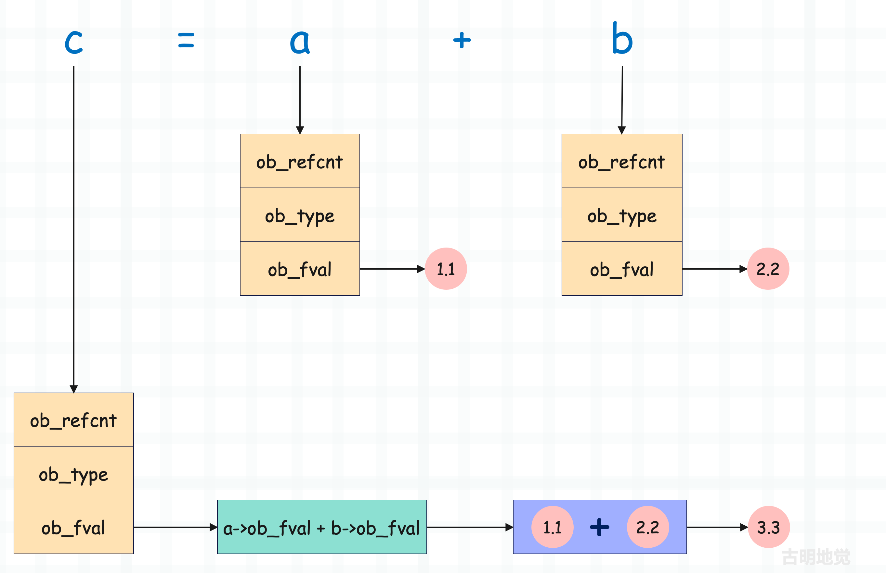
但如果是 C 的两个浮点数相加，那么编译之后就是一条简单的机器指令，然而 Python 则需要额外做很多其它工作。并且后续在介绍整数的时候，你会发现 Python 的整数相加更麻烦，但对于 C 而言同样是一条简单的机器码就可以搞定。
所以为什么 Python 会比 C 慢很多倍，从一个简单的加法上面就可以看出来。
以上是浮点数的加法操作，至于减法、乘法、除法等操作也是类似的。
// Objects/floatobject.c
static PyObject *
float_add(PyObject *v, PyObject *w)
{
double a,b;
CONVERT_TO_DOUBLE(v, a);
CONVERT_TO_DOUBLE(w, b);
PyFPE_START_PROTECT("add", return 0)
a = a + b;
PyFPE_END_PROTECT(a)
return PyFloat_FromDouble(a);
}
static PyObject *
float_sub(PyObject *v, PyObject *w)
{
double a,b;
CONVERT_TO_DOUBLE(v, a);
CONVERT_TO_DOUBLE(w, b);
PyFPE_START_PROTECT("subtract", return 0)
a = a - b;
PyFPE_END_PROTECT(a)
return PyFloat_FromDouble(a);
}
static PyObject *
float_mul(PyObject *v, PyObject *w)
{
double a,b;
CONVERT_TO_DOUBLE(v, a);
CONVERT_TO_DOUBLE(w, b);
PyFPE_START_PROTECT("multiply", return 0)
a = a * b;
PyFPE_END_PROTECT(a)
return PyFloat_FromDouble(a);
}
static PyObject *
float_div(PyObject *v, PyObject *w)
{
double a,b;
CONVERT_TO_DOUBLE(v, a);
CONVERT_TO_DOUBLE(w, b);
if (b == 0.0) {
PyErr_SetString(PyExc_ZeroDivisionError,
"float division by zero");
return NULL;
}
PyFPE_START_PROTECT("divide", return 0)
a = a / b;
PyFPE_END_PROTECT(a)
return PyFloat_FromDouble(a);
}
代码逻辑是类似的，整个过程就是将 Python 浮点数里面的值抽出来，得到 C 浮点数，然后进行运算，再基于运算的结果创建 Python 浮点数，并返回它的泛型指针。
小结
到此浮点数就介绍完了，之所以先介绍浮点数，是因为浮点数最简单。至于整数，其实并没有那么简单，因为它的值在底层是通过数组存储的。而浮点数的值则是用一个 double 类型的字段来维护，会更简单一些，所以我们就先拿浮点数开刀了。
首先我们介绍了浮点数的创建和销毁，创建有两种方式，分别是使用对象的特定类型API 和调用类型对象。前者速度更快，但只适用于内置数据结构，而后者更加通用。
销毁的时候则调用类型对象内部的 tp_dealloc 字段指向的 float_dealloc 函数。当然为了保证效率，避免内存的频繁创建和回收，解释器为浮点数引入了缓存池机制，我们也分析了背后的原理。
最后浮点数还支持数值运算，PyFloat_Type 的 tp_as_number 字段指向了 PyNumberMethods 结构体实例 float_as_number，里面有大量的函数指针，每个指针指向了具体的函数，专门用于浮点数的运算。至于运算的具体逻辑，我们也以加法为例详细介绍了 float_add 函数的实现。核心就是将 Python 对象内部的值抽出来，转成 C 的类型，然后运算，最后再根据运算的结果创建 Python 对象，并返回泛型指针。
关于浮点数，如果你还想知道它的更多内容，可以进入源码中，大肆探索一番。
欢迎大家关注我的公众号：古明地觉的编程教室。
如果觉得文章对你有所帮助，也可以请作者吃个馒头，Thanks♪(･ω･)ﾉ。
楔子
本篇文章来聊一聊复数，尽管在日常开发中基本用不到复数，但对它有一个深刻的认识，知道它是做什么的，个人觉得还是很有必要的。另外，本系列力求精致、详细，因此每一个细节都要到位。
那么下面就来解释一下什么是复数。
什么是复数
复数是一种用来扩展实数的数，它由实数和虚数两部分组成，用来解决实数范围内无法解决的问题，基本形式如下。
形如 a + bi 的数，我们称之为复数，其中 a 和 b 是浮点数（实数），i 是虚数，满足 i 的平方等于 -1。
所以复数不仅包含实数，还包含虚数，形式为 a + bi，然后 a 被称为复数的实部，b 被称为复数的虚部。如果两个复数的实部相同，虚部相反，那么它们互为共轭复数，比如 1 + 3i 和 1-3i。
如果对复数的实部和虚部进行平方和再开根号，便可得到复数的模，比如 3 + 4i 的模便是 5。
复数的引入可以帮助我们更好地理解和解决许多数学以及物理问题，特别是在涉及振动、波动和电路分析等领域，比如：
- 电工程：分析交流电路和信号处理；
- 控制系统：用于系统稳定性分析；
- 量子力学：描述波函数和量子态；
- 流体力学：用于描述流动问题；
当然复数也有自己的运算规则。
加法：两个复数相加等于对应的实部和虚部分别相加
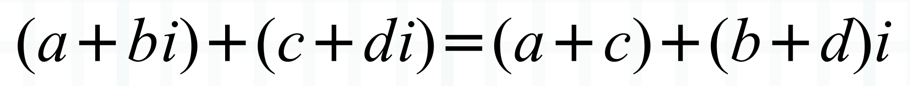
减法：两个复数相减等于对应的实部和虚部分别相减
乘法：两个复数的乘法使用分配率
除法：两个复数的乘法涉及到共轭复数

以上就是复数的基本概念，下面来看看 Python 的复数是怎么实现的。
复数的底层结构
复数的实现比想象中要简单很多，说白了就是维护两个浮点数而已。
// Include/complexobject.h
typedef struct {
double real;
double imag;
} Py_complex;
typedef struct {
PyObject_HEAD
Py_complex cval;
} PyComplexObject;
我们看到复数的结构和浮点数是非常相似的，只不过浮点数只用一个 double 来维护具体的值。而复数因为存在实部和虚部，因此需要两个 double，其中 real 维护复数的实部，imag 维护复数的虚部。
# 在别的语言中，虚数都是用 i 来表示
# 而 Python 觉得 i 是一个很常用的变量，所以使用 j 来表示虚数
cpx = 3 + 4j
# 其中 3 为实部，4 为虚部
print(cpx) # (3+4j)
# 如果虚部为 1，那么要写成 1j，不能只写 j，否则解释器会认为 j 是一个变量
print(3 + 1j) # (3+1j)
# 复数的实部可以为 0
print(2j) # 2j
# 当然虚部也可以为 0，如果虚部为 0，那么要写成 0j，不能不写
# 因为 3 和 3+0j 不是等价的，前者是整数，后者是复数
print(0j) # 0j
print(3 + 0j) # (3+0j)
整个过程非常简单，当解释器看到 3 + 4j 的时候，就知道要创建复数了，因为解释器对内置的数据结构了如指掌，所以在底层会创建一个 PyComplexObject 结构体实例。
没有什么难度，和浮点数是类似的。
复数的行为
类型对象定义的操作，决定了实例对象的行为，所以我们需要查看复数的类型都定义了哪些操作。复数的类型在 Python 里面对应 <class 'complex'>，那么根据解释器的命名规则，它在底层应该由 PyComplex_Type 负责实现。
// Objects/complexobject.c
PyTypeObject PyComplex_Type = {
PyVarObject_HEAD_INIT(&PyType_Type, 0)
"complex",
sizeof(PyComplexObject),
// ...
&complex_as_number, /* tp_as_number */
0, /* tp_as_sequence */
0, /* tp_as_mapping */
// ...
complex_richcompare, /* tp_richcompare */
// ...
complex_methods, /* tp_methods */
complex_members, /* tp_members */
// ...
};
complex 的类型也是 type，它的实例对象的大小就是 PyComplexObject 结构体的大小。然后我们看下它的 tp_members，该字段表示实例对象有哪些属性，它被赋值为 complex_members。

它有两个属性，分别是 real 和 imag，类型为 double，并且是只读的。那么在 Python 里面创建复数之后，便可以获取 real 和 imag 属性。
cpx = 3 + 4j
# 注意：虽然写的是 3 + 4j，但实部和虚部都是浮点数
print(cpx.real) # 3.0
print(cpx.imag) # 4.0
然后 complex 类型还实现了 tp_richcompare，用于复数之间的比较，但对于复数来说，比较操作只支持等于和不等于。
// Objects/complexobject.c
static PyObject *
complex_richcompare(PyObject *v, PyObject *w, int op)
{
PyObject *res; // 比较结果
Py_complex i; // 复数的实部和虚部组成的结构体
int equal; // 两个复数是否相等
// 如果 op 不是 ==、也不是 !=，那么报错
// 因为复数只支持这两种比较操作
if (op != Py_EQ && op != Py_NE) {
goto Unimplemented;
}
assert(PyComplex_Check(v));
// 获取复数 v 的 cval 字段，并赋值给 i
// 即 i = ((PyComplexObject *) v)->cval
TO_COMPLEX(v, i);
if (PyLong_Check(w)) {
// ...
}
else if (PyFloat_Check(w)) {
// ...
}
else if (PyComplex_Check(w)) {
Py_complex j;
// j = ((PyComplexObject *) w)->cval
TO_COMPLEX(w, j);
// 如果实部和虚部都相等，那么两个复数相等
equal = (i.real == j.real && i.imag == j.imag);
}
else {
goto Unimplemented;
}
// equal 为 1，表示两个复数相等，为 0 表示两个复数不相等
// 如果 op 为 Py_EQ，那么相等返回 True，不等返回 False
// 如果 op 为 Py_NE，那么相等返回 False，不等返回 True
if (equal == (op == Py_EQ))
res = Py_True;
else
res = Py_False;
Py_INCREF(res);
return res;
Unimplemented:
Py_RETURN_NOTIMPLEMENTED;
}
以上就是复效的比较，核心就是比较对应的实部和虚部是否均相等。
由于复数也属于数值型对象，所以它也实现了 tp_as_number 方法簇。
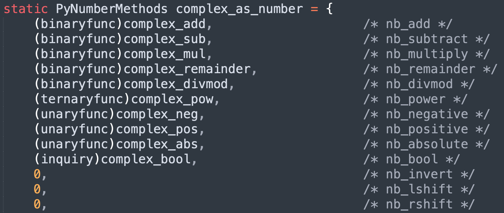
我们以复数的加法和减法为例，看一下源码细节。
// Objects/complexobject.c
// 负责将两个 Py_complex 结构体实例相加
Py_complex
_Py_c_sum(Py_complex a, Py_complex b)
{
// 复数的值由 Py_complex 结构体维护，它里面有 real 和 imag 两个字段
Py_complex r;
// 两个 Py_complex 实例相加的时候，等于内部的 real 和 imag 字段分别相加
r.real = a.real + b.real;
r.imag = a.imag + b.imag;
return r;
}
// 负责将两个 Py_complex 结构体实例相减
Py_complex
_Py_c_diff(Py_complex a, Py_complex b)
{
Py_complex r;
r.real = a.real - b.real;
r.imag = a.imag - b.imag;
return r;
}
// 基于 Py_complex 创建 PyComplexObject
PyObject *
PyComplex_FromCComplex(Py_complex cval)
{
PyComplexObject *op;
// 为 PyComplexObject 结构体实例申请内存
// 我们看到内存大小可以直接计算出来，因为内置数据结构在底层是写死的
// 解释器对它们了如指掌，直接通过 sizeof 算一下即可，不需要借助类型对象
op = (PyComplexObject *) PyObject_MALLOC(sizeof(PyComplexObject));
// 如果 op 为 NULL，表示内存不够，申请失败
if (op == NULL)
return PyErr_NoMemory();
// 初始化引用计数，并将 op->ob_type 初始化为 &PyComplex_Type
// 也就是让实例对象和类型对象建立联系
(void)PyObject_INIT(op, &PyComplex_Type);
// 最后初始化 cval 字段，它是 Py_complex 结构体实例，负责维护复数具体的值
op->cval = cval;
// 转成泛型指针 PyObject * 之后返回
return (PyObject *) op;
}
// 复数的加法
static PyObject *
complex_add(PyObject *v, PyObject *w)
{
Py_complex result;
// 将两个复数的 cval 抽出来，赋值给 a 和 b
Py_complex a, b;
TO_COMPLEX(v, a);
TO_COMPLEX(w, b);
PyFPE_START_PROTECT("complex_add", return 0)
// 调用 _Py_c_sum 进行相加，得到新的 Py_complex
result = _Py_c_sum(a, b);
PyFPE_END_PROTECT(result)
// 基于 Py_complex 创建 PyComplexObject
return PyComplex_FromCComplex(result);
}
// 复数的减法
static PyObject *
complex_sub(PyObject *v, PyObject *w)
{
Py_complex result;
// 将两个复数的 cval 抽出来，赋值给 a 和 b
Py_complex a, b;
TO_COMPLEX(v, a);
TO_COMPLEX(w, b);
PyFPE_START_PROTECT("complex_sub", return 0)
// 调用 _Py_c_diff 进行相减，得到新的 Py_complex
result = _Py_c_diff(a, b);
PyFPE_END_PROTECT(result)
// 基于 Py_complex 创建 PyComplexObject
return PyComplex_FromCComplex(result);
}
以上就是复数的加法和减法，比较简单，至于其它操作，感兴趣可以自己阅读一下源码。
小结
本次我们就介绍了复数的底层结构以及它的一些相关操作，总的来说和浮点数是比较像的。不过还是像上面说的那样，对于我们日常开发来说，复数用的并不多，甚至可以说是几乎不用，但通过它来加深对源码的理解以及感受 Python 对象的设计哲学，还是非常有意义的。
下一篇文章来说一说整数，我们知道 Python 整数不会溢出，那么它是怎么设计的呢？背后有什么黑科技呢？我们下一篇文章再聊。
欢迎大家关注我的公众号：古明地觉的编程教室。
如果觉得文章对你有所帮助，也可以请作者吃个馒头，Thanks♪(･ω･)ﾉ。
楔子
本篇文章来分析一下 Python 整数的实现原理，我们知道 Python 整数是不会溢出的，换句话说它可以计算无穷大的数。只要你的内存足够，它就能计算，但对于 C 来说显然是不行的，C 能保存的整数范围是有限的。
但问题是，Python 的底层是 C 实现的，那么它是怎么做到整数不溢出的呢？想要知道答案，那么看一下整数在底层是怎么定义的就行了。
整数的底层结构
Python 整数在底层由 PyLongObject 结构体负责承载，看一下它的定义。
// Include/longobject.h
typedef struct _longobject PyLongObject;
// Include/longintrepr.h
struct _longobject {
PyObject_VAR_HEAD
digit ob_digit[1];
};
里面每个字段的含义如下：
- ob_refcnt：对象的引用计数；
- ob_type：对象的类型；
- ob_size：数组 ob_digit 的长度；
- ob_digit：digit 类型的数组；
别的先不说，就冲里面的 ob_size 我们就可以思考一番。首先 Python 的整数有大小、但应该没有长度的概念吧，那为什么会有一个 ob_size 呢？从结构体字段来看，这个 ob_size 表示数组 ob_digit 的长度，而这个 ob_digit 显然是用来维护具体的值。
相信你已经猜到 Python 整数不会溢出的秘密了，因为它内部通过数组来存储整数，所以能存储无限大的数。因此答案出来了，虽然整数没有我们生活中的那种长度的概念，但它是个变长对象，因为不同的整数占用的内存可能是不一样的。尽管它没有字符串、列表那种长度的概念，或者说无法对整数使用 len 函数，但它是个变长对象。
接下来的重点就是这个 ob_digit 数组，我们要从它的身上挖掘信息，看看整数是怎么放在里面的，不过首先我们要搞清楚这个 digit 是什么类型。
// Include/longintrepr.h
#if PYLONG_BITS_IN_DIGIT == 30
typedef uint32_t digit;
#elif PYLONG_BITS_IN_DIGIT == 15
typedef unsigned short digit;
#else
#error "PYLONG_BITS_IN_DIGIT should be 15 or 30"
PYLONG_BITS_IN_DIGIT 是一个宏，这个宏是做什么的我们先不管，总之如果机器是 64 位的，那么它会被定义为 30，机器是 32 位的，则会被定义为 15。而现在的机器基本都是 64 位的，所以 PYLONG_BITS_IN_DIGIT 等于 30，因此 digit 等价于 uint32_t，即 unsigned int。
因此 ob_digit 是一个无符号 32 位整型数组，至于长度，虽然声明为 1，但其实没有限制，你可以当成任意长度的数组来用，这是 C 语言的一个常见特性。和 Go 不同，C 数组的长度不属于类型信息。至于数组具体多长，取决于存储的整数有多大，显然整数越大，这个数组就越长，占用的空间也就越大。
探究整数的秘密
了解了 ob_digit 数组之后，来分析一下它是怎么存储整数的？
首先抛出一个问题，如果你是 Python 的设计者，要保证整数不会溢出，你会怎么办？我们不妨再把问题简化一下，假设有一个 8 位无符号整数类型，我们知道它能表示的最大数字是 255，但这时候如果要表示 256，该怎么办呢？
可能有人会想，那用两个数来存储不就好了，一个存储 255，一个存储 1，然后将这两个数放在数组里面。这个答案虽然有些接近，但其实还有偏差：就是我们并不能简单地按照大小拆分，比如 256 拆分成 255 和 1，要是 265 就拆分成 255 和 10，不能这样拆分，而是要通过二进制的方式，也就是用新的整数来模拟更高的位。
如果感到困惑的话没有关系，我们以 Python 整数的底层存储为例，来详细解释一下这个过程。解释器实现整数也是通过我们上面说的这种方式，但考虑的会更加全面一些。
整数 0
注意：当表示的整数为 0 时，ob_digit 数组为空，不存储任何值。而 ob_size 为 0，表示这个整数的值为 0，这是一种特殊情况。

整数 1

整数 -1

我们看到 ob_digit 数组没有变化，但是 ob_size 变成了 -1。没错，整数的正负是通过 ob_size 决定的，ob_digit 存储的其实是绝对值。无论整数 n 是多少，-n 和 n 对应的 ob_digit 是完全一致的，但是 ob_size 则互为相反数。所以 ob_size 除了表示数组的长度之外，还可以表示对应整数的正负。
因此我们之前说整数越大，底层的 ob_digit 数组就越长。更准确地说是绝对值越大，底层数组就越长。所以 Python 在比较两个整数的大小时，会先比较 ob_size，如果 ob_size 不一样则可以直接比较出大小。显然 ob_size 越大，对应的整数越大，不管 ob_size 是正是负，都符合这个结论。
整数 2 ** 30 - 1

如果想表示 2 ** 30 - 1，那么也可以使用一个 digit 表示。话虽如此，但为什么突然说这个数字呢？答案是：虽然 digit 是 4 字节、32 位，但解释器只用 30 个位。
之所以这么做是和加法进位有关系，如果 32 个位全部用来存储其绝对值，那么相加产生进位的时候，可能会溢出。比如 2 ** 32 - 1，此时 32 个位全部占满了，即便它只加上 1，也会溢出。那么为了解决这个问题，就需要先强制转换为 64 位整数再进行运算，从而会影响效率。但如果只用 30 个位的话，那么加法是不会溢出的。
因为 30 个位最大就是 2 ** 30 - 1，即便两个这样的数相加，结果也是 2 ** 31 - 2。而 32 个位最大能表示 2 ** 32 - 1，所以肯定不会溢出的。如果一开始 30 个位就存不下，那么数组中会有两个 digit。
所以虽然将 32 位全部用完，可以只用一个 digit 表示更大的整数，但会面临相加之后一个 digit 存不下的情况，于是只用 30 个位。如果数值大到 30 个位存不下的话，那么就会多使用一个 digit。
这里可能有人发现了，如果使用 31 个位的话，那么相加产生的最大值就是 2 ** 32 - 2，依旧可以使用一个 32 位整型存储啊，那 Python 为啥要牺牲两个位呢？答案是为了乘法运算。
为了方便计算乘法，需要多保留 1 位用于计算溢出。这样当两个整数相乘的时候，可以直接按 digit 计算，并且由于兼顾了"溢出位"，可以把结果直接保存在一个寄存器中，以获得最佳性能。
具体细节就不探究了，只需要知道整数在底层是使用 unsigned int 类型的数组来维护具体的值即可，并且虽然该类型的整数有 32 个位，但解释器只用 30 个位。
然后还记得我们在看 digit 类型的时候，说过一个宏吗？PYLONG_BITS_IN_DIGIT，在 64 位机器上等于 30，在 32 位机器上等于 15。相信这个宏表示的是啥你已经清楚了，它代表的就是使用的 digit 的位数。
整数 2 ** 30
问题来了，我们说 digit 只用 30 个位，所以 2 ** 30 - 1 是一个 digit 能存储的最大值。而现在是 2 ** 30，所以数组中就要有两个 digit 了。
我们看到此时就用两个 digit 来存储了，然后数组里面的元素是 0 和 1，而且充当高位的放在后面，因为是使用新的 digit 来模拟更高的位。由于一个 digit 只用 30 位，那么数组中第一个 digit 的最低位就是 1，第二个 digit 的最低位就是 31，第三个 digit 的最低位就是 61，以此类推。
所以如果 ob_digit 为 [a, b, c]，那么对应的整数就等于：
如果 ob_digit 不止 3 个，那么就按照 30 个位往上加，比如 ob_digit 还有第四个元素 d，那么就再加上 d * 2 ** 90 即可。
以上就是 Python 整数的存储奥秘，说白了就是串联多个小整数来表达大整数。并且这些小整数之间的串联方式并不是简单的相加，而是将各自的位组合起来，共同形成一个具有更高位的大整数，比如将两个 32 位整数串联起来，表示 64 位整数。
整数占的内存大小是怎么计算的
下面我们再分析一下，一个整数要占用多大的内存。
相信所有人都知道可以使用 sys.getsizeof 计算内存大小，但是这大小到底是怎么来的，估计会一头雾水。因为 Python 中对象的大小，是根据底层的结构体计算出来的。
由于 ob_refcnt、ob_type、ob_size 这三个是整数所必备的，它们都是 8 字节，加起来 24 字节，所以任何一个整数所占内存都至少 24 字节。至于具体占多少，则取决于 ob_digit 里面的元素有多少个。
因此整数所占内存等于 24 + 4 * ob_size的绝对值。
import sys
# 如果是 0 的话，ob_digit 数组为空，所以大小就是 24 字节
print(sys.getsizeof(0)) # 24
# 如果是 1 的话，ob_digit 数组有一个元素，所以大小是 24 + 4 = 28 字节
print(sys.getsizeof(1)) # 28
# 同理
print(sys.getsizeof(2 ** 30 - 1)) # 28
# 一个 digit 只用 30 位，所以最大能表示 2 ** 30 - 1
# 如果是 2 ** 30，那么就需要两个元素，所以大小是 24 + 4 * 2 = 32 字节
print(sys.getsizeof(2 ** 30)) # 32
print(sys.getsizeof(2 ** 60 - 1)) # 32
# 如果是两个 digit，那么能表示的最大整数就是 2 ** 60 - 1
# 因此 2 ** 60 需要三个 digit，所以大小是 24 + 4 * 3 = 36 字节
print(sys.getsizeof(1 << 60)) # 36
print(sys.getsizeof((1 << 90) - 1)) # 36
print(sys.getsizeof(1 << 90)) # 40
所以整数的大小就是这么计算的，当然不光整数，其它的对象也是如此，计算的都是底层结构体的大小。
另外我们也可以反推一下，如果有一个整数 88888888888，那么它对应的底层数组 ob_digit 有几个元素呢？每个元素的值又是多少呢？下面来分析一波。
import numpy as np
# 假设占了 n 个位
# 由于 n 个位能表达的最大整数是 2 ** n - 1
a = 88888888888
# 所以只需获取以 2 为底、a + 1 的对数，即可算出 n 的大小
print(np.log2(a + 1)) # 36.371284042320475
计算结果表明，如果想要存下这个整数，那么至少需要 37 个位。而 1 个 digit 用 30 个位，很明显需要两个 digit。
# 如果 ob_digit 有两个元素
# 那么对应的整数就等于 ob_digit[0] + ob_digit[1] * 2 ** 30
a = 88888888888
print(a // 2 ** 30) # 82
print(a - 82 * 2 ** 30) # 842059320
所以整数 88888888888 在底层对应的 ob_digit 数组为 [842059320, 82]，下面修改解释器，来验证这一结论。

我们看到结果和我们分析的是一样的，但这种办法有点麻烦，我们可以通过之前说的 ctypes 来构造底层的结构体，在 Python 的层面模拟 C 的行为。
from ctypes import *
class PyLongObject(Structure):
_fields_ = [
("ob_refcnt", c_ssize_t),
("ob_type", c_void_p),
("ob_size", c_ssize_t),
("ob_digit", c_uint32 * 2)
]
a = 88888888888
# 基于对象的地址构造 PyLongObject 对象
long_obj = PyLongObject.from_address(id(a))
# 打印结果和我们预期的一样
print(long_obj.ob_digit[0]) # 842059320
print(long_obj.ob_digit[1]) # 82
# 如果将 ob_digit[1] 改成 28，那么 a 会变成多少呢？
# 很简单，算一下就知道了
long_obj.ob_digit[1] = 28
print(842059320 + 28 * 2 ** 30) # 30906830392
# 那么 a 会不会也打印这个结果呢？毫无疑问，肯定会的
print(a) # 30906830392
# 并且前后 a 保存的地址没有发生改变，因为我们修改的是底层数组
# 因此所谓的可变和不可变，都只是根据 Python 的表现抽象出来的
# 或者说，对象是否可变，取决于解释器有没有将修改对象的接口暴露出来
# 要是解释器没有提供修改对象的接口，那么对象就是不可变的
# 但如果站在解释器的层面上看，则没啥可变或不可变，一切都由我们决定
通过打印 ob_digit 存储的值，我们验证了得出的结论，原来 Python 是通过数组来存储整数，并且数组的类型虽然是无符号 32 位整数，但是只用 30 个位。
小结
以上我们就探究了 Python 整数的秘密，它是怎么实现的。不过还没有结束，后续还要继续分析小整数对象池，以及整数的行为。
欢迎大家关注我的公众号：古明地觉的编程教室。
如果觉得文章对你有所帮助，也可以请作者吃个馒头，Thanks♪(･ω･)ﾉ。
之前分析过浮点数的创建，而整数的创建与之是类似的，都是基于字面量形式的 C 数据创建 Python 数据。
- 创建浮点数可以使用 PyFloat_FromDouble、PyFloat_FromString 等；
- 创建整数可以使用 PyLong_FromLong、PyLong_FromDouble、PyLong_FromString 等；
创建整数的这些函数直接去 Objects/longobject.c 里面查看即可，这里就不多说了，我们重点来看一下小整数对象池。
我们知道整数属于不可变对象，运算之后会创建新的对象。
>>> a = 666
>>> id(a)
140078521506224
>>> a += 1
>>> id(a)
140078521506096
>>>
显然这种做法一定存在性能缺陷，因为程序运行时会有大量的对象创建和销毁。根据浮点数的经验，我们猜测 Python 应该也对整数使用了缓存池吧。答案是差不多，只不过不是缓存池，而是小整数对象池。
一些使用频率高的整数在创建之后，会被保存在一个静态数组里面，我们称之为小整数对象池。
看一下小整数对象池的实现。
// Objects/longobject.c
#define NSMALLPOSINTS 257
#define NSMALLNEGINTS 5
static PyLongObject small_ints[NSMALLNEGINTS + NSMALLPOSINTS];
数组 small_ints 便是小整数对象池，它是一个类型为 PyLongObject、长度为 262 的数组，里面缓存了 -5 到 256 之间的整数。当然这只是解释器的默认行为，因为 -5 到 256 之间的整数使用频率最高，但你也可以根据自身情况修改源码，让它缓存更多的整数，以提升效率，当然这也会额外占用一些内存。
小整数对象池是预先创建好的，里面的整数全局唯一，我们来验证一下。
>>> n1 = 256
>>> n2 = 256
>>> id(n1), id(n2)
(140078528922016, 140078528922016)
>>>
>>> n1 = 257
>>> n2 = 257
>>> id(n1), id(n2)
(140078521507472, 140078521506704)
>>>
256 位于小整数对象池内，所以全局唯一，需要使用的话直接去取即可，因此它们的地址是一样的。但 257 不在小整数对象池内，所以它们的地址不一样。
另外上面的代码是交互式执行的，但如果有小伙伴不是通过交互式，那么打印地址的时候会得到出乎意料的结果。
a = 257
b = 257
print(id(a) == id(b)) # True
可能有人会好奇，为什么地址又是一样的了，257 明明不在小整数对象池中啊。虽然涉及到了后面的内容，但提前解释一下也是可以的。主要区别就在于一个是交互式执行的，另一个是通过 python3 xxx.py 的方式执行的。
首先 Python 的编译单元是函数，每个函数都有自己的作用域，在这个作用域中出现的所有常量都是唯一的，并且都位于常量池中，由 co_consts 指向。虽然上面的对象不在函数中，而是在全局作用域中，但全局也可以看成是一个函数，它也是一个独立的编译单元。同一个编译单元中，相同的常量只会出现一次。
当执行 a = 257 的时候，会创建 257 这个整数，并放入常量池中。所以 b = 257 的时候就不会再创建了，因为常量池中已经有了，所以会直接从常量池中获取，因此它们的地址是一样的，因为是同一个 PyLongObject。
而对于交互式环境来说，因为输入一行代码就会立即执行一行，所以任何一行可独立执行的代码都是一个独立的编译单元。注意：是可独立执行的代码，比如变量赋值、函数、方法调用等等。但如果是 if、for、while、def 等需要多行表示的逻辑，比如 if 2 > 1:，显然就不是一行可独立执行的代码，它还依赖你输入的下面的内容。
# 此时按下回车，我们看到不再是 >>>，而是 ...
# 这代表还没有结束，还需要你输入下面的内容
>>> if 2 > 1:
... print("2 > 1")
... # 此时这个 if 语句整体才是一个独立的编译单元
2 > 1
>>>
但是像 a = 1、foo()、lst.appned(123) 这些显然是一行可独立执行的代码，因此在交互式中它们是独立的编译单元。
# 此时这行代码已经执行了，它是一个独立的编译单元
>>> a = 257
# 这行代码也是独立的编译单元，所以它里面的常量池为空，因此要重新创建 257
>>> b = 257
# 由于它们是不同常量池内的整数，所以 id 是不一样的
>>> id(a), id(b)
(140078521506768, 140078521506096)
再来看个例子。
>>> a = 666; b = 666
>>> id(a), id(b)
(140078521506512, 140078521506512)
>>>
>>> a, b = 777, 777
>>> id(a), id(b)
(140078521506224, 140078521506224)
666 和 777 明显不在常量池中，为啥 a 和 b 指向对象的地址是一样的呢？相信你能猜到原因，因为上面两种方式无论哪一种，都是在同一行，因此整体会作为一个编译单元。既然是同一个编译单元，那么常量池里面的每个常量只会创建一次，所以地址是一样的。
注意：常量池里面的常量一定在编译期间就可以确定，比如整数、浮点数、字符串等等，解释器在编译期间会静态收集起来，保存在常量池中。但如果编译期间无法确定，就不会静态收集了，举个例子。
>>> a, b = int("257"), int("257")
>>> id(a), id(b)
(140078521506768, 140078521506512)
>>>
>>> a, b = int("123"), int("123")
>>> id(a), id(b)
(140078528917760, 140078528917760)
>>>
>>> a, b = 258, 258
>>> id(a), id(b)
(140078521507632, 140078521507632)
int("257") 需要在运行时执行，因此会创建两个 257，然后赋值给 a 和 b，所以地址不一样。
int("123") 虽然也在运行时执行，但解释器创建完之后发现 123 位于小整数对象池中，于是会直接从池子里面取，所以打印的地址一样。注意：int("123") 肯定是会执行的，只是执行之后发现结果存在于小整数对象池中，会再将创建的对象销毁。
258 属于编译期间可以静态收集的常量，会被保存在常量池中，而常量池里的常量只会出现一次，所以打印的地址一样。
⭐️：常量不仅仅是 123、"hello" 这种，像 2 ** 10、"AAA" + "BBB" 这种也属于常量，它们在编译之后会被替换为 1024、"AAABBB"，这个过程被称为常量折叠。
以上就是小整数对象池相关的内容，比较简单，因为小整数对象池就是一个数组，里面缓存了 -5 到 256 之间的 Python 整数，而这些整数可以直接拿来用。
下一篇文章我们来分析整数的运算，这也是最关键的地方。
欢迎大家关注我的公众号：古明地觉的编程教室。
如果觉得文章对你有所帮助，也可以请作者吃个馒头，Thanks♪(･ω･)ﾉ。
楔子
通过考察整数的底层实现，我们明白了它能够保证不溢出的缘由。整数的值在底层是由 C 数组来维护的，通过组合多个 digit（uint32_t）来实现大整数的存储。这么做的好处就是 Python 整数没有大小限制了，因此不会溢出，而不会溢出是因为数组没有长度限制，所以只要你的内存足够，就可以存任意大的数。
Python 表示：存不下？会溢出？这都不是事儿，直接继续往数组里面塞 digit 就 ok 了。另外数组存的是绝对值，符号是通过 ob_size 体现的。
不过说实话，用数组实现大整数的做法非常普遍，并没有什么神秘的，就是将多个整数组合起来，模拟具有更高位的大整数。但这种实现方式的难点在于大整数的数学运算，它们才是重点，实现的时候比较考验编程技巧以及思维逻辑。
因此 Python 的整数比浮点数要复杂的多，浮点数在底层直接用 C 的 double 来维护具体的值，因此运算的话，比如相加，直接转成 C 的 double 做加法即可。但整数就不行了，在底层不能简单地将数组相加。
下面来看看具体实现。
整数的大小比较
先来看看整数的大小比较，由于整数具体的值是通过数组维护的，显然数组越长，整数的绝对值就越大，这是毫无疑问的。至于整数的正负，则由 ob_size 来体现。
因此可以得出一个结论：当两个整数在比大小时，可以先比较各自的 ob_size，如果 ob_size 不一样，可以直接比较出大小，并且 ob_size 越大，对应的整数越大。但如果两个整数的 ob_size 一样，那么就从数组 ob_digit 的尾部元素开始，不断向前进行比较。只要两个整数的 ob_digit 中有一个对应元素不相同，那么就可以比较出大小。
之所以从数组的尾部开始，是因为数组元素的索引越大，那么充当的位数就越高，而在比较的时候显然要从高位开始比。
# ob_digit = [892311, 32, 3]
a = 3458764548181171607
# ob_digit = [2296, 31, 3]
b = 3458764547106539768
我们以 a 和 b 为例，显然 a 大于 b，那么在底层，它们是如何比较的呢？

如果 ob_size 不相等，那么可以直接比较出大小。但这里两个整数的 ob_size 是相等的，所以需要比较 ob_digit，并且是从后往前比。具体做法就是让索引从 ob_digit 长度减 1 开始，依次往前遍历。
- 因为
a->ob_digit[2]等于b->ob_digit[2]，此时无法比较出大小，因此索引减一，比较上一个元素。 - 因为
a->ob_digit[1]大于b->ob_digit[1]，所以成功比较出大小，可以得出 |a| 大于 |b|。
当然啦，由于数组反映的是绝对值的大小，所以还需要判断符号。
- 如果是正数，那么和绝对值相同。
- 但如果是负数，那么绝对值越大，对应的整数反而越小，因此比较之后的结果还要再乘上 -1。
from ctypes import *
class PyLongObject(Structure):
_fields_ = [
("ob_refcnt", c_ssize_t),
("ob_type", c_void_p),
("ob_size", c_ssize_t),
("ob_digit", c_uint32 * 3)
]
a = 3458764548181171607
b = 3458764547106539768
long_obj1 = PyLongObject.from_address(id(a))
long_obj2 = PyLongObject.from_address(id(b))
print(list(long_obj1.ob_digit)) # [892311, 32, 3]
print(list(long_obj2.ob_digit)) # [2296, 31, 3]
以上就是整数的大小比较逻辑，下面再看一下具体的源码实现。

int 类型对象的 tp_richcompare 字段的值为 long_richcompare，所以具体的比较逻辑便由该函数负责实现。
// Objects/longobject.c
static PyObject *
long_richcompare(PyObject *self, PyObject *other, int op)
{
// 比较结果
int result;
// 类型检测，确保 self 和 other 的类型都是整数
CHECK_BINOP(self, other);
// self 和 other 都是泛型指针 PyObject *
// 如果 self == other，说明指针保存的地址相同，它们指向的是同一个对象
// 因此可以直接判定两者相等
if (self == other)
result = 0;
else
// 否则调用 long_compare，将对象维护的 ob_digit 抽出来，挨个比较
// 如果 self > other，那么 result 为 1
// 如果 self == other，那么 result 为 0
// 如果 self < other，那么 result 为 -1
result = long_compare((PyLongObject*)self, (PyLongObject*)other);
// 一会儿解释
Py_RETURN_RICHCOMPARE(result, 0, op);
}
在 Python 中不同的算术操作符会对应不同的魔法方法，而在 C 中均由 long_richcompare 函数实现。

而在 long_richcompare 里面，不管操作符是什么，result 都是固定的。
- 如果 self > other，那么 result 为 1；
- 如果 self == other，那么 result 为 0；
- 如果 self < other，那么 result 为 -1；
不管我们传入的操作符 op 是什么，都不影响上面的结论，因为 result 只是表达了 self 和 other 之间的关系。然后再看一下结尾的 Py_RETURN_RICHCOMPARE 这个宏，它的定义如下。
// Include/object.h
#define Py_RETURN_RICHCOMPARE(val1, val2, op) \
do { \
switch (op) { \
case Py_EQ: if ((val1) == (val2)) Py_RETURN_TRUE; Py_RETURN_FALSE; \
case Py_NE: if ((val1) != (val2)) Py_RETURN_TRUE; Py_RETURN_FALSE; \
case Py_LT: if ((val1) < (val2)) Py_RETURN_TRUE; Py_RETURN_FALSE; \
case Py_GT: if ((val1) > (val2)) Py_RETURN_TRUE; Py_RETURN_FALSE; \
case Py_LE: if ((val1) <= (val2)) Py_RETURN_TRUE; Py_RETURN_FALSE; \
case Py_GE: if ((val1) >= (val2)) Py_RETURN_TRUE; Py_RETURN_FALSE; \
default: \
Py_UNREACHABLE(); \
} \
} while (0)
这个宏做的事情很简单，就是基于操作符比较 val1 和 val2，如果 if 条件成立，返回 Python 的 True，否则返回 Python 的 False。而在 long_richcompare 里面，最后调用这个宏的时候，给 val1、val2 传的是 result 和 0。注意：这一步稍微有点绕，我们举个例子就简单了。
假设 self = 5，other = 6，我们要判断 self > other 是 True 还是 False。
首先 self 小于 other，因此在 long_richcompare 里面比较之后，result 会等于 -1。那么调用宏的时候，传的三个参数就是 -1、0、Py_GT。然后执行对应分支，发现 val1 > val2 不成立，于是返回 False，因此 self > other 的结果也是 False。
所以 long_richcompare 里面的 result 只是通过 1、0、-1 描述了 self 和 other 之间的关系（C 语言的特点之一），而判断 self > other 最终等价于判断 result > 0，同理其它操作符也是如此。
再举个例子，假设要判断 self <= other，那么最终等价于判断 result <= 0。
- 如果 self > other，那么 result 就是 1，而 1 <= 0 不成立，所以 self <= other 就是 False。
- 如果 self == other，那么 result 就是 0，而 0 <= 0 成立，所以 self <= other 就是 True。
- 如果 self < other，那么 result 就是 -1，而 -1 <= 0 成立，所以 self <= other 就是 True。
因此最后这一步还是很巧妙的，但也稍微有一点绕。估计有人会好奇，为啥不能像浮点数那样直接比较呢？其实原因很好想，因为浮点数在底层使用 double 类型的字段来维护具体的值，比较逻辑非常简单。但整数不同，由于整数的值是通过数组维护的，比较起来非常复杂，如果还按照上面那种做法，那么每个分支里面会存在大量重复代码。
所以整数在比较的时候，先不管指定的操作符是什么，而是先判断两个数的大小关系。如果两个数是大于关系，那么给 result 赋值为 1；等于关系，赋值为 0；小于关系，赋值为 1。
最后将两个整数的比较操作，转成 result 和 0 的比较操作，这个实现思路非常巧妙，你在工作中也可以用起来。
但是还没结束，我们还有最关键的一步没有看。

显然这最关键的一步就在 long_compare 身上，它负责具体的比较逻辑。
// Objects/longobject.c
static int
long_compare(PyLongObject *a, PyLongObject *b)
{
Py_ssize_t sign;
// 如果两个整数的 ob_size 不一样，那么直接可以比较出大小
if (Py_SIZE(a) != Py_SIZE(b)) {
sign = Py_SIZE(a) - Py_SIZE(b);
}
else {
// 否则说明 ob_size 一样，那么获取 ob_size 的绝对值，即数组 ob_digit 的长度
Py_ssize_t i = Py_ABS(Py_SIZE(a));
// 从后往前依次比较数组元素的大小
while (--i >= 0 && a->ob_digit[i] == b->ob_digit[i])
;
// 如果两个数组的元素全部一样，那么 i 最终会等于 -1
if (i < 0)
sign = 0;
// 否则说明两个数组中索引为 i 的元素存在不同
else {
// 那么比较大小
sign = (sdigit)a->ob_digit[i] - (sdigit)b->ob_digit[i];
// 如果 ob_size < 0，说明是负数，那么比较结果还要再乘上 -1
if (Py_SIZE(a) < 0)
sign = -sign;
}
}
// 如果 a < b，那么 sign < 0，直接返回 -1
// 如果 a == b，那么 sign == 0，直接返回 0
// 如果 a > b，那么 sign > 0，直接返回 1
return sign < 0 ? -1 : sign > 0 ? 1 : 0;
}
以上就是 Python 整数的比较逻辑，所以一个简单的整数比较，Python 底层居然做了这么多工作。
小结
以上就是整数的比较逻辑，所以用数组实现大整数的思路没什么特别的，但难点就在于运算。而为了方便大家理解和消化，本篇文章暂时只介绍比较操作，下一篇文章来介绍整数的运算。
欢迎大家关注我的公众号：古明地觉的编程教室。
如果觉得文章对你有所帮助，也可以请作者吃个馒头，Thanks♪(･ω･)ﾉ。
楔子
本篇文章来探讨一下整数的加减法是怎么做的，因为整数在底层采用数组进行存储，所以它的加减法就不像浮点数那么简单。
在介绍浮点数的时候说过，对于数值型对象，它的类型一定实现了 tp_as_number 字段，该字段指向了 PyNumberMethods 结构体实例。结构体里面的每个字段都是一个函数指针，对应数值型对象的一个操作。

比如 nb_add 负责加法操作，nb_substract 负责减法操作等等，本篇文章就来探讨一下。首先整数支持的操作非常多，这里我们只探讨加减法。
整数加减法的运算原理
整数的加法和减法分别由 long_add 和 long_sub 实现，但运算的核心却不在这两个函数上，它们内部会调用另外两个函数。因为数组保存了整数的绝对值，所以 Python 将整数的运算转成了绝对值运算，而底层有两个函数专门用来做这件事情，分别是 x_add 和 x_sub。
- x_add(a, b)：计算 a 和 b 的绝对值之和；
- x_sub(a, b)：计算 a 和 b 的绝对值之差；
所以整数相加就可以这么做，假设两个整数 a 和 b 相加：
- 如果 a 和 b 均为正数，那么通过 x_add 计算 a 和 b 的绝对值之和即可；
- 如果 a 和 b 均为负数，那么通过 x_add 计算两者的绝对值之和，然后再取相反数；
- 如果 a 为负数，b 为正数，那么通过 x_sub 计算 b 和 a 的绝对值之差即可；
- 如果 a 为正数，b 为负数，那么通过 x_sub 计算 a 和 b 的绝对值之差即可；
而整数相减也是同理，还是整数 a 和 b，两者相减：
- 如果 a 为正数，b 为负数，那么通过 x_add 计算两者的绝对值之和即可；
- 如果 a 为负数，b 为正数，那么通过 x_add 计算两者的绝对值之和，然后再取相反数；
- 如果 a 和 b 均为正数，那么通过 x_sub 计算 a 和 b 的绝对值之差即可；
- 如果 a 和 b 均为负数，那么通过 x_sub 计算 b 和 a 的绝对值之差即可；
相加时，符号相同会调用 x_add、符号不同会调用 x_sub。相减时，符号相同会调用 x_sub、符号不同会调用 x_add。
所以这就是 Python 的设计，因为绝对值的加减法不用考虑符号的影响，实现更为简单，所以 Python 将整数运算转化成整数的绝对值运算。那么下面我们的重心就在 x_add 和 x_sub 上面了，看看它们是如何对大整数绝对值进行运算的。到这里你可能会有疑问，大整数运算这么复杂，效率会差吧。显然这是啃腚的，整数数值越大，整数对象的底层数组就越长，运算开销也就越大。
但 Python 底层有一个机制叫做快分支，因为通用逻辑能处理所有情况，那么它的效率必然不高。而快分支则是对那些可以简单运算的情况提前进行处理，比如在对 a 和 b 计算加减法的时候，底层会先判断数组的长度是否均小于等于 1，如果是则说明数组中最多只有一个元素。这样的话，就可以直接转成 C 的整数进行运算了，这样性能损耗就可以忽略不计。
关于快分支，需要再单独解释一下。我们举个生活中的例子：好比你去见女朋友，正常情况下，你需要买花，并且精心打扮。但如果女朋友不在生理期，那么这一切都不需要做，只需买杯奶茶就好了。所以先判断女朋友是否在生理期，如果不在，那么只需买杯奶茶就能牵手便属于快分支。快分支具有命中率高等特点，绝大部分都是这个情况，而一旦命中快分支，那么程序便可快速处理。
回到上面的例子，只要整数不超过 2 ** 30 - 1，都可以走快分支，显然这可以满足绝大部分场景，因为这个数字已经很大了。至于 x_add 和 x_sub 则属于通用逻辑，而通用也意味着平庸，但如果快分支没有命中，那么就只能走通用逻辑了。
而我们的重点就是要研究 x_add 和 x_sub 的实现，感受大整数运算的魅力。不过在介绍之前，不妨想象一下我们平时将两个整数相加的时候是怎么做的。

从最低位开始进行相加，逢十进一，ob_digit 也是同理。我们可以把数组中的每一个元素看成是一个整体，只不过它不再是逢十进一，而是逢 2 ** 30 进一。
# 数组的每个元素最大能表示 2 ** 30 - 1
# 把元素整体想象成我们生活中加法的个位、十位、百位...
# 然后对应的位相加，逢 2 ** 30 进一
a = [1024, 22]
b = [342, 18]
c = [1024 + 342, 22 + 18] # [1366, 40]
print(
a[0] + a[1] * 2 ** 30
+
b[0] + b[1] * 2 ** 30
==
c[0] + c[1] * 2 ** 30
) # True
所以仍旧是对应的位进行相加，和我们生活中的加法并无本质上的区别。只不过生活中的加法，每一位能表示 0~9，逢十进一。而 Python 底层的加法，因为整数使用数组存储，那么每一个位能表示 0 ~ 2 ** 30 - 1，逢 2 ** 30 进一。
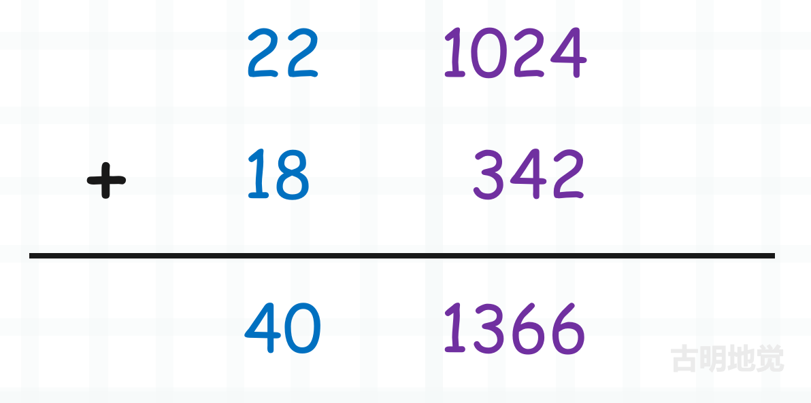
把 1024、342 想象成个位，把 22、18 想象成十位，并且此时不再是逢十进一，而是逢 2 ** 30 进一。
a = [2 ** 30 - 1, 16]
b = [2 ** 30 - 1, 21]
# a[0] + b[0] 超过了 2 ** 30，要进个 1
# 而逢十进一之后，该位要减去十
# 那么逢 2 ** 30 进一之后，显然要减去 2 ** 30
c = [
a[0] + b[0] - 2 ** 30,
a[1] + b[1] + 1
]
print(
a[0] + a[1] * 2 ** 30
+
b[0] + b[1] * 2 ** 30
==
c[0] + c[1] * 2 ** 30
) # True
然后是绝对值减法，和绝对值加法一样，也可以类比生活中的减法，从低位到高位分别相减。如果某一位相减的时候发现不够了，那么要向高位借一位。比如 27 减去 9，由于 7 比 9 小，因此向 2 借一位变成 17，减去 9，得 8。但 2 被借了一位，所以剩下 1，因此结果为 18。
a = [5, 3]
b = [6, 1]
result = []
# 如果计算 a - b，整个过程是怎样的呢？
# 首先是 a[0] - b[0]，由于 a[0] < b[0]
# 所以要借一位，而一个位是 2 ** 30
result.append(a[0] + 2 ** 30 - b[0])
# 然后是 a[1] - b[1]
# 由于 a[1] 被借走了一个位，因此要减 1
result.append(a[1] - 1 - b[1])
print(result) # [1073741823, 1]
# 验证一下
print(
(a[0] + a[1] * 2 ** 30)
-
(b[0] + b[1] * 2 ** 30)
) # 2147483647
print(
result[0] + result[1] * 2 ** 30
) # 2147483647
结果没有问题，以上我们就从原理上介绍了大整数的加减法，下面再看一下源码实现。
整数加减法源码实现
当整数相加时会执行 long_add 函数，看一下它的具体实现。
// Objects/longobject.c
static PyObject *
long_add(PyLongObject *a, PyLongObject *b)
{
PyLongObject *z; // 指向运算后的整数
CHECK_BINOP(a, b); // 确保 a 和 b 都指向整数
// 如果两个整数的 ob_digit 数组最多只有一个元素
// 那么取出来判断正负之后，直接进行运算即可
// 由于 2 ** 30 - 1 已经很大了，所以绝大部分场景，都会执行此分支
if (Py_ABS(Py_SIZE(a)) <= 1 && Py_ABS(Py_SIZE(b)) <= 1) {
// MEDIUM_VALUE 是一个宏，接收一个 abs(ob_size) <= 1 的 PyLongObject *
// 如果 ob_size 等于 0, 那么返回 0
// 如果 ob_size 等于 1, 那么返回 ob_digit[0]
// 如果 ob_size 等于 -1, 那么返回 -ob_digit[0]
// 所以计算出 MEDIUM_VALUE(a) + MEDIUM_VALUE(b) 之后
// 将结果转成 PyLongObject，然后返回其泛型指针即可
// 因此当数组中元素个数不超过 1 的时候，显然是可以直接相加的
return PyLong_FromLong(MEDIUM_VALUE(a) + MEDIUM_VALUE(b));
}
// 否则走通用分支
if (Py_SIZE(a) < 0) {
// 如果 a 是负数、b 是负数，那么先计算 |a| + |b|
if (Py_SIZE(b) < 0) {
z = x_add(a, b);
if (z != NULL) {
// 然后对 z 取相反数
assert(Py_REFCNT(z) == 1);
Py_SIZE(z) = -(Py_SIZE(z));
}
}
// 如果 a 是负数、b 是正数，那么计算 |b| - |a|
else
z = x_sub(b, a);
}
else {
// 如果 a 是正数、b 是负数，那么计算 |a| - |b|
if (Py_SIZE(b) < 0)
z = x_sub(a, b);
// 如果 a 是正数、b 是正数，那么计算 |a| + |b|
else
z = x_add(a, b);
}
return (PyObject *)z;
}
因此 long_add 函数并不长，但是调用了 x_add 和 x_sub，显然核心逻辑是在这两个函数里面。至于 long_add 函数，它的逻辑如下：
- 判断两个整数底层对应的数组的长度是否均小于等于 1，如果是的话那么通过宏 MEDIUM_VALUE 直接将其转成 C 的一个 digit，当然符号也会考虑在内。然后直接相加、返回即可。显然这里走的是快分支，或者说快速通道。
- 但如果其中一方的数组长度（ob_size）大于 1，那么判断两者的符号。如果都为负数，那么通过 x_add 计算两者的绝对值之和，然后取相反数。
- 如果 a 为负数，b 为正数，那么通过 x_sub 计算 b 和 a 的绝对值之差即可；
- 如果 a 为正数，b 为负数，那么通过 x_sub 计算 a 和 b 的绝对值之差即可；
- 如果都为正数，那么通过 x_add 计算 a 和 b 的绝对值之和即可；
所以 Python 整数设计的非常巧妙，ob_digit 虽然用来维护具体数值，但它并没有考虑正负，整数的正负是通过 ob_size 来表示的。通过将运算变成绝对值运算，实现起来会方便很多。
说完了 long_add，再来看看 long_sub，这两者是类似的。
// Objects/longobject.c
static PyObject *
long_sub(PyLongObject *a, PyLongObject *b)
{
PyLongObject *z; // 指向运算后的整数
CHECK_BINOP(a, b); // 确保 a 和 b 都指向整数
// 如果两个整数的 ob_digit 数组最多只有一个元素
// 那么取出来判断正负之后，直接进行运算即可
if (Py_ABS(Py_SIZE(a)) <= 1 && Py_ABS(Py_SIZE(b)) <= 1) {
return PyLong_FromLong(MEDIUM_VALUE(a) - MEDIUM_VALUE(b));
}
// 否则走通用分支
if (Py_SIZE(a) < 0) {
// 如果 a 是负数、b 是负数，那么先计算 |a| - |b|
if (Py_SIZE(b) < 0)
z = x_sub(a, b);
// 如果 a 是负数、b 是正数，那么先计算 |a| + |b|
else
z = x_add(a, b);
// 然后对 z 取相反数
if (z != NULL) {
assert(Py_SIZE(z) == 0 || Py_REFCNT(z) == 1);
Py_SIZE(z) = -(Py_SIZE(z));
}
}
else {
// 如果 a 是正数、b 是负数，那么计算 |a| + |b|
if (Py_SIZE(b) < 0)
z = x_add(a, b);
// 如果 a 是正数、b 是正数，那么计算 |a| - |b|
else
z = x_sub(a, b);
}
return (PyObject *)z;
}
所以 long_add 和 long_sub 的代码是类似的，它们将整数的运算转成了整数的绝对值运算，所以关键要理解什么时候用 x_add，什么时候用 x_sub。
a + b
- 如果 a 是正数，b 是正数，调用 x_add(a, b)，计算 |a| + |b|；
- 如果 a 是负数、b 是负数，调用 x_add(a, b)，计算 |a| + |b|，然后再取反；
- 如果 a 是正数、b 是负数，调用 x_sub(a, b)，计算 |a| - |b|；
- 如果 a 是负数、b 是正数，调用 x_sub(b, a)，计算 |b| - |a|；
所以相加时，符号相同会调用 x_add、符号不同会调用 x_sub。
a - b
- 如果 a 是正数、b 是负数，调用 x_add(a, b)，计算 |a| + |b|；
- 如果 a 是负数、b 是正数，调用 x_add(a, b)，计算 |a| + |b|，然后再取反；
- 如果 a 是正数，b 是正数，调用 x_sub(a, b)，计算 |a| - |b|；
- 如果 a 是负数，b 是负数，调用 x_sub(b, a)，计算 |b| - |a|。当然在源码中调用的是 x_sub(a, b)，计算 |a| - |b|，然后再取相反数；
所以相减时，符号相同会调用 x_sub、符号不同会调用 x_add。
接下来我们的重点就是绝对值加法和绝对值减法的具体实现细节。
绝对值加法：x_add
函数 x_add 负责绝对值加法，但是介绍之前，需要先了解几个宏，它们在 x_add 中会有体现。
// Include/longintrepr.h
#define PyLong_SHIFT 30
#define PyLong_BASE ((digit)1 << PyLong_SHIFT)
#define PyLong_MASK ((digit)(PyLong_BASE - 1))
显然 PyLong_BASE 等于 2 ** 30，PyLong_MASK 等于 2 ** 30 - 1（说明 32 个位，前两个位是 0，后三十个位都是 1）。
然后我们可以看 x_add 的具体实现了。
// Objects/longobject.c
static PyLongObject *
x_add(PyLongObject *a, PyLongObject *b)
{
// 参数 a 和 b 指向了两个要相加的整数对象
// 获取整数在底层的 ob_size
Py_ssize_t size_a = Py_ABS(Py_SIZE(a)), size_b = Py_ABS(Py_SIZE(b));
// 指向两个整数的相加结果
PyLongObject *z;
// 循环变量
Py_ssize_t i;
// 每个部分的运算结果
digit carry = 0;
// 如果 size_a 小于 size_b，说明 |a| < |b|
// 那么将两个整数交换位置，确保操作符左边的数大于右边的数
// 这么做也符合人类习惯，可以想象一下小学时候的加法计算
// 如果一个位数多，一个位数少，也会习惯将位数多的放在左边
if (size_a < size_b) {
{ PyLongObject *temp = a; a = b; b = temp; }
{ Py_ssize_t size_temp = size_a;
size_a = size_b;
size_b = size_temp; }
}
// 申请一个 ob_digit 的长度为 size_a + 1 的 PyLongObject
// 但为什么是 size_a + 1 呢? 由于上面的 if 语句，使得 size_a 一定不小于 size_b
// 那么 a 和 b 相加之后的 z 的 ob_size 一定不小于 size_a
// 但是也可能比 size_a 多 1，比如: a = 2 ** 60 - 1, b = 1
// 那么相加之后结果为 2 ** 60，于是 ob_size 就变成了 3
// 因此在创建 z 的时候，ob_digit 的容量会等于 size_a + 1
z = _PyLong_New(size_a+1);
// 正常情况下, z 是一个 PyLongObject *，但如果 z == NULL, 表示分配失败（程序崩溃）
// 但说实话, 除非你内存不够了, 否则这种情况不会发生
if (z == NULL)
return NULL;
// 重点来了，因为 size_a > size_b，所以会以 size_b 为准，两者从低位向高位依次对应相加
// 当 b 到头了，再单独算 a 的剩余部分
// 因此以 i < size_b 作为条件
for (i = 0; i < size_b; ++i) {
// 将 a->ob_digit[i] + b->ob_digit[i] + carry（初始为 0）作为 carry
// 如果 carry 没有超过 2 ** 30 - 1，那么它就是 z -> ob_digit[i] 的值
carry += a->ob_digit[i] + b->ob_digit[i];
// 但 carry 是可能溢出的，当溢出时，应该要减去 2 ** 30，所以还要判断是否产生了进位
// 但解释器没有使用常规的判断，而是选择了效率更高的位运算（carry & PyLong_MASK）
// 由于 PyLong_MASK 等于 (1 << 30) - 1，所以它的前两个位是 0，后面三十个位全是 1
// 因此当 carry 不超过 2 ** 30 - 1 时，carry & PyLong_MASK 就等于 carry
// 当 carry 超过 2 ** 30 - 1 时，carry & PyLong_MASK 就等于 carry - 2 ** 30
z->ob_digit[i] = carry & PyLong_MASK;
// 然后当 carry 产生进位时，显然不可以丢，它们要作用在数组中下一个元素相加的结果上
// 所以这里将 carry 右移 30 位，得到进位，然后重新赋值给 carry，并作用在下一轮循环中
// 如果没有产生进位，那么 carry 为 0，如果产生了进位，那么 carry 为 1
carry >>= PyLong_SHIFT;
}
// 如果 b 到头了, 那么继续从当前的 i 开始遍历，直到 i == size_a, 逻辑还是和上面一样
for (; i < size_a; ++i) {
// 此时只需要加上 a->ob_digit[i] 和 carry 即可，因为 b 到头了
carry += a->ob_digit[i];
// 这里也要按位与 PyLong_MASK, 因为也可能存在进位的情况
// 拿生活中的 99999 + 1 为例，此时 a = 99999, b = 1，显然第一次循环 b 就到头了
// 但后面单独循环 a 的时候, 依旧会产生进位，所以这里也是同理
z->ob_digit[i] = carry & PyLong_MASK;
// carry 右移 30 位得到进位，然后重新赋值给 carry
carry >>= PyLong_SHIFT;
}
// 两个循环结束之后, 其实还差一步，还拿 99999 + 1 举例子
// 按照顺序相加得到的是 00000，因为最后还进了一个 1，这里的 carry 也是同理
// 因此 z 的 ob_size 要比 size_a 多 1，目的就在于此
// 所以要将 z->ob_digit 的最后一个元素设置成 carry
z->ob_digit[i] = carry;
// 但如果最后的 carry 没有进位的话，显然其结果就是 0
// 所以最后没有直接返回 z，而是返回了 long_normalize(z)
// 这个 long_normalize 函数的作用是从后往前依次检查 ob_digit 的元素
// 如果为 0，那么就将其 ob_size 减去 1, 直到出现一个不为 0 的元素
// 比如 ob_digit 为 [0, 3, 1, 0, 0, 0]，长度为 6，但规范化之后的 ob_size 显然是 3
// 不过对于当前来说，显然最多只会检查一次，因为它的 ob_size 只比 size_a 多 1
// 所以判断数组最后一个元素是否为 0 也可以，如果为 0 则说明没有产生进位
return long_normalize(z);
}
整数在底层实现的很巧妙，不理解的话可以多看几遍，然后我们在 Python 的层面上再反推一下绝对值加法，进一步感受底层的运算过程。
# 假设有 a 和 b 两个整数
# 当然这里是使用列表直接模拟底层数组 ob_digit
a = [1073741744, 999, 765, 123341]
b = [841, 1073741633, 2332]
# 然后创建 z，表示 a 和 b 的相加结果
z = []
# 为了更直观，我们一步步手动相加
# 首先是 a[0] + b[0]，得到 carry
carry = a[0] + b[0]
# 但 carry 可能大于 2 ** 30 - 1，所以要进行判断
# 如果大于，那么要减去 2 ** 30，否则保持不变
# 而这一步可以使用位运算来实现，将 carry 和 (2 ** 30 - 1) 按位与即可
print(carry & (2 ** 30 - 1)) # 761
# 结果是 761，说明 carry 比 2 ** 30 - 1 大
# 然后 z 的第一个元素就是 761
z.append(761)
# 接着计算 a[1] + b[1] 得到新的 carry
# 但是之前的 carry 大于 2 ** 30 - 1，所以还要再加上 carry >> 30，即进位
# 当然，如果没有产生进位，那么 carry >> 30 就是 0
carry = (carry >> 30) + a[1] + b[1]
# 然后 carry & (2 ** 30 - 1) 得到 809，说明 carry 依旧大于 2 ** 30 - 1
print(carry & (2 ** 30 - 1)) # 809
# 所以 z 的第二个元素就是 809
z.append(809)
# 计算 a[2] + b[2] 的时候也是同理
carry = (carry >> 30) + a[2] + b[2]
# 但显然此时的 carry 已经不大于 2 ** 30 - 1 了
print(carry & (2 ** 30 - 1)) # 3098
# 说明 z 的第三个元素是 3098
z.append(3098)
# 此时 b 到头了，所以直接将 a[3] 作为 carry
# 当然还要判断上一步的 carry 是否大于 2 ** 30 - 1
# 所以还是右移 30 位，当不大于 2 ** 30 - 1 时，carry >> 30 就是 0
carry = (carry >> 30) + a[3]
print(carry & (2 ** 30 - 1)) # 123341
z.append(123341)
# 此时 a 也遍历完毕，但是不要忘记再对 carry 进行判断
# 如果大于 2 ** 30 - 1，那么会产生进位，所以 z 还要再 append 一个 1
# 当然这里 carry 没有超过 2 ** 30 - 1
# 此时 z 为 [761, 809, 3098, 123341]
print(z) # [761, 809, 3098, 123341]
# a = [1073741744, 999, 765, 123341]
# b = [841, 1073741633, 2332]
# z = [761, 809, 3098, 123341]
# 因此 ob_digit 为 [1073741744, 999, 765, 123341]
# 和 ob_digit 为 [841, 1073741633, 2332] 的两个 PyLongObject 相加
# 得到的新的 PyLongObject 的 ob_digit 为 [761, 809, 3098, 123341]
print(
a[0] + a[1] * 2 ** 30 + a[2] * 2 ** 60 + a[3] * 2 ** 90
+
b[0] + b[1] * 2 ** 30 + b[2] * 2 ** 60
==
z[0] + z[1] * 2 ** 30 + z[2] * 2 ** 60 + z[3] * 2 ** 90
) # True
以上就是绝对值加法，我们从源码的角度和 Python 代码的角度分别解释了一遍。看完了绝对值加法，再来看看绝对值减法。
绝对值减法：x_sub
和绝对值加法一样，绝对值减法也可以类比生活中的减法，从低位到高位分别相减。如果某一位相减的时候发现不够了，那么要向高位借一位。比如 27 减去 9，7 比 9 小，因此向 2 借一位变成 17，减去 9，得 8。但 2 被借了一位，所以剩下 1，因此结果为 17。
// Objects/longobject.c
static PyLongObject *
x_sub(PyLongObject *a, PyLongObject *b)
{
// 依旧是获取两者的 ob_size 的绝对值
Py_ssize_t size_a = Py_ABS(Py_SIZE(a)), size_b = Py_ABS(Py_SIZE(b));
// z 指向相加之后的 PyLongObject
PyLongObject *z;
// 循环变量
Py_ssize_t i;
// 如果 size_a 小于 size_b，那么 sign 就是 -1，否则就是 1
int sign = 1;
// 之前 carry 保存相加的结果，这里的 borrow 保存相减的结果
// 名字很形象，相加要进位叫 carry，相减要借位叫 borrow
digit borrow = 0;
// 接下来依旧要判断两个整数的大小，确保相减的时候，绝对值大的一方在左边
// 相加的时候，大的一方在左边还是在右边，其实没太大影响
// 而相减的时候如果大的一方在左边，显然会省事很多
// 所以如果 size_a 比 size_b 小，说明 a 的绝对值比 b 小
if (size_a < size_b) {
// 那么令 sign = -1，因为 a 和 b 交换了位置，所以后续相减之后还要再乘上 sign
// 因为计算的是绝对值之差，符号是在绝对值之差计算完毕之后通过 sign 判断的
sign = -1;
// 交换 a 和 b 的位置
{ PyLongObject *temp = a; a = b; b = temp; }
{ Py_ssize_t size_temp = size_a;
size_a = size_b;
size_b = size_temp; }
}
// 如果 size_a == size_b，那么需要依次比较 ob_digit 里的元素，才能判断出大小
else if (size_a == size_b) {
// 所以从 ob_digit 的尾部开始遍历
i = size_a;
while (--i >= 0 && a->ob_digit[i] == b->ob_digit[i])
;
// 如果所有元素都相等，那么 i 会等于 -1，相减的结果为 0，此时直接返回 0 即可
// 所以这一步也是为了能够快速返回结果，而额外做的一层判断
if (i < 0)
return (PyLongObject *)PyLong_FromLong(0);
// 但如果某个对应的元素不相等，那么只需判断这两者谁大谁小即可
// 假设 a 的 ob_digit 是 [2, 3, 4, 5]，b 的 ob_digit 是 [1, 2, 4, 5]
// 那么上面的 while 循环结束之后，i 会等于 1，显然只需要判断索引为 1 时，对应的值谁大谁小即可
if (a->ob_digit[i] < b->ob_digit[i]) {
// 如果 a->ob_digit[i] < b->ob_digit[i]，同样说明 a 小于 b
// 那么将 sign 设置为 -1，并交换 a 和 b 的位置
sign = -1;
{ PyLongObject *temp = a; a = b; b = temp; }
}
// 因为高位在减法的时候会被抵消掉，所以将 size_a 和 size_b 设置成 i + 1 即可
// 假设两个整数的 ob_digit 分别是 [2, 3, 4, 5] 和 [1, 2, 4, 5]
// 因为后两个元素是一样的，所以后续只需要对索引为 [0: i+1] 的部分做差即可
size_a = size_b = i+1;
}
// a 和 b 相减之后，结果一定不超过 a，因此 ob_digit 的长度一定小于等于 size_a
z = _PyLong_New(size_a);
if (z == NULL)
return NULL;
// 然后下面的逻辑和 x_add 是类似的
for (i = 0; i < size_b; ++i) {
// 让 a 的 ob_digit[i] 减去 b 的 ob_digit[i]
// 当然，由于上一个元素在相减的时候，可能会向当前元素借位，因此还要再减去 borrow
// 如果没借位，那么 borrow 是 0，如果借位了，那么 borrow 是 1
// 然后如果当前元素相减的结果也小于 0，那么继续向下一个元素借位
// 但我们似乎没有看到借位的逻辑，这是因为 digit 是无符号 32 位整型，负数会发生环绕
// 假设这里相减得到的是 -100，那么结果就是 2 ** 32 - 100
// 所以存储的负数会变成 "2 ** 32 + 该负数"，相当于自动向数组的下一个元素借了一位
// 但 digit 只用 30 个位，所以借一位之后应该加上 2 ** 30，而目前加的是 2 ** 32
borrow = a->ob_digit[i] - b->ob_digit[i] - borrow;
// 所以还要和 PyLong_MASK 按位与，只保留后 30 个位的值
// 当然如果没有产生借位，borrow & PyLong_MASK 的结果还是 borrow
z->ob_digit[i] = borrow & PyLong_MASK;
// 如果借位了，下一轮循环的时候，肯定要多减个 1，但问题是怎么判断有没有借位呢？
// 很简单，如果没有借位，borrow 一定小于 2 ** 30，第 31 个位一定是 0
// 如果借位了，那么 borrow 一定大于 2 ** 30，第 31 个位一定是 1
// 所以让 borrow 右移 30 个位
borrow >>= PyLong_SHIFT;
// 然后和 1 按位与，如果产生了借位，borrow 就是 1，否则就是 0
// 等到下一轮循环的时候，再减去 borrow
borrow &= 1;
/*
所以 Python 底层的整数只用 30 个位真的非常巧妙，尤其是在减法的时候
由于 digit 是 32 位，借位时会加上 2 ** 32
但底层只用 30 个位，所以再和 PyLong_MASK 按位与，只保留后 30 个位
而当前元素如果借位了，那么数组下一个元素要减去 1，但怎么判断它有没有借位呢？
首先两个不超过 2 ** 30 - 1 的数，相减的结果如果为正（没产生借位）
那么一定也不会超过 2 ** 30 - 1，换句话说其结果对应的第 31 位一定是 0
但如果两个整数相减的结果为负，那么会自动加上 2 ** 32，因此第 31 位一定是 1
所以再让 borrow 右移 30 位，并和 1 按位与
如果结果为 1，证明相减为负数，确实向下一个元素借了 1，因此下一次循环时会多减一个 1
如果结果为 0，那么说明没有借位，下一次循环时相当于多减了一个 0
*/
}
// 如果 size_a 和 size_b 不相等，那么还需要继续处理 a 的 ob_digit 剩余的元素
for (; i < size_a; ++i) {
// 这里的逻辑和之前分析 x_add 是类似的
borrow = a->ob_digit[i] - borrow;
z->ob_digit[i] = borrow & PyLong_MASK;
borrow >>= PyLong_SHIFT;
borrow &= 1;
} // 只不过由于不会产生进位，因此不需要再对 borrow 做额外判断
// 而 x_add 中最后还要判断 carry 有没有进位
assert(borrow == 0);
// 如果 sign < 0，那么证明是负数，因此还要改变 z 的符号
if (sign < 0) {
Py_SIZE(z) = -Py_SIZE(z);
}
// 最后同样要将 z 规范化，将高位的 0 忽略掉
// 比如 100000 - 99999，结果是 000001，显然只需要保留最低位的 1 即可
// 另外如果相减的结果是小整数，那么直接从池子里获取，否则返回新创建的
return long_normalize(z);
}
同样的，关于绝对值减法，我们也用 Python 代码演示一遍，感受底层的运算过程。
a = [5, 3]
b = [6, 1]
result = []
# 如果计算 a - b，整个过程是怎样的呢？
# 首先是 a[0] - b[0]，由于 a[0] < b[0]，所以要借一位，而一个位是 2 ** 30
result.append(a[0] + 2 ** 30 - b[0])
# 注：源码中加的是 2 ** 32，所以之后还要和 PyLong_MASK 按位与
# 因此 a[0] + 2 ** 30 - b[0] 等价于 (a[0] + 2 ** 32 - b[0]) & (2 ** 30 - 1)
# 然后是 a[1] - b[1]，由于 a[1] 被借走了一个位，因此要减 1
result.append(a[1] - 1 - b[1])
print(result) # [1073741823, 1]
# 验证一下
print(
(a[0] + a[1] * 2 ** 30)
-
(b[0] + b[1] * 2 ** 30)
) # 2147483647
print(
result[0] + result[1] * 2 ** 30
) # 2147483647
以上就是绝对值减法，设计的非常巧妙，可以多看几遍，并用列表模拟 ob_digit 数组，然后实际测试一下。
小结
关于整数的内容，我们就介绍完了。回顾一下，首先我们剖析了整数的底层实现，了解了它不会溢出的奥秘，然后又介绍了小整数对象池。但也正如之前所说，使用数组实现大整数并不是什么特别新颖的思路，它的难点在于数学运算，这是非常考验编程技巧的地方。
而我们这里只是分析了加减法，至于乘除则更加复杂，这里就不再分析了。关于乘法，解释器采用的是效率更高的 karatsuba 算法，比较有意思，有兴趣可以自己查看一下。
综上所述不难发现 Python 效率低的原因，毕竟一个简单的整数运算都要做这么多工作。当然了，解释器内部也定义了很多快分支，会提前检测能否使用快速通道进行处理，当无法使用快速通道时，再走通用逻辑。
欢迎大家关注我的公众号：古明地觉的编程教室。
如果觉得文章对你有所帮助，也可以请作者吃个馒头，Thanks♪(･ω･)ﾉ。
楔子
本篇文章来聊一聊布尔值是怎么实现的，在 Python 里面 True 和 False 虽然是关键字，但它们其实也是对象。
下面我们就来详细地解释一下。
布尔类型
先来说一下布尔类型本身，我们知道 bool 继承自 int，所以 True 和 False 也具备整数的特征。
print(bool.__base__) # <class 'int'>
print(isinstance(True, bool)) # True
# True 和 False 可以当成 1 和 0 来用
print(True * 2) # 2
print(3 // 3 == True) # True
print(sum([True, 1, 2])) # 4
print(False + 1) # 1
bool 在底层对应 PyBool_Type，因此我们可以肯定地讲，PyBool_Type 的 tp_base 字段的值一定是 &PyLong_Type。
// Objects/boolobject.c
PyTypeObject PyBool_Type = {
PyVarObject_HEAD_INIT(&PyType_Type, 0)
"bool",
sizeof(struct _longobject),
0,
0, /* tp_dealloc */
0, /* tp_vectorcall_offset */
0, /* tp_getattr */
0, /* tp_setattr */
0, /* tp_as_async */
bool_repr, /* tp_repr */
&bool_as_number, /* tp_as_number */
// ...
&PyLong_Type, /* tp_base */
// ...
};
bool 继承 int，所以它也实现了 tp_as_number。
布尔值的底层结构
既然 bool 继承 int，那么布尔值和整数的底层结构是一样的。
// Objects/boolobject.c
// PyLongObject 是 struct _longobject 的类型别名
struct _longobject _Py_FalseStruct = {
PyVarObject_HEAD_INIT(&PyBool_Type, 0)
{ 0 }
};
struct _longobject _Py_TrueStruct = {
PyVarObject_HEAD_INIT(&PyBool_Type, 1)
{ 1 }
};
我们看到布尔值在底层是静态定义好的 PyLongObject 结构体实例，ob_digit 分别为 [0] 和 [1]，所以 False 和 True 完全可以当成 0 和 1 来用。当然啦，由于变量都是 PyObject *，所以这两个结构体实例一般不直接用，而是用底层提供的两个宏。
// Include/boolobject.h
/* Use these macros */
#define Py_False ((PyObject *) &_Py_FalseStruct)
#define Py_True ((PyObject *) &_Py_TrueStruct)
当返回 Python 的 True 和 False 时，底层会返回 Py_True 和 Py_False，也就是转成 PyObject * 之后再返回。为此解释器还提供了两个宏。
// Include/boolobject.h
#define Py_RETURN_TRUE return Py_INCREF(Py_True), Py_True
#define Py_RETURN_FALSE return Py_INCREF(Py_False), Py_False
当然这些应该比较简单了。
布尔值的创建
创建布尔值有两种方式，一种是基于 C 整数创建，另一种是将 Python 对象转成布尔值。
基于 C 整数创建，会通过 PyBool_FromLong 函数，显然它是布尔对象的特定类型 API。
// Objects/boolobject.c
PyObject *PyBool_FromLong(long ok)
{
PyObject *result;
if (ok)
result = Py_True;
else
result = Py_False;
Py_INCREF(result);
return result;
}
这个特定类型 API 一般都是解释器内部使用，或者编写扩展的时候使用。而除了这种方式，我们还可以调用 bool 类型，将对象转成布尔值。
// Objects/boolobject.c
// 基于 Python 对象创建，比如 bool(obj)
// 显然会调用 PyBool_Type 的 tp_new，在底层该字段被赋值为 bool_new
tatic PyObject *
bool_new(PyTypeObject *type, PyObject *args, PyObject *kwds)
{
// 保存接收的参数，先设置为 False
PyObject *x = Py_False;
long ok;
// bool 类型不接收关键字参数
if (!_PyArg_NoKeywords("bool", kwds))
return NULL;
// 最多接收 1 个位置参数，解析出来赋值给 x
// 如果不传位置参数，那么 x 就是上面设置的 Py_False
if (!PyArg_UnpackTuple(args, "bool", 0, 1, &x))
return NULL;
// 调用 Pyobject_Islrue 判断 x 是真是假
// 如果为真返回 1，否则返回 0
ok = PyObject_IsTrue(x);
if (ok < 0)
return NULL;
// 将整数转成布尔值
return PyBool_FromLong(ok);
}
所以核心就在 PyObject_IsTrue 函数里面，看一下它的内部逻辑。
// Objects/object.c
int
PyObject_IsTrue(PyObject *v)
{
Py_ssize_t res;
// 如果 v 本身是布尔值 True，那么返回 1
if (v == Py_True)
return 1;
// 如果 v 本身是布尔值 False，那么返回 0
if (v == Py_False)
return 0;
// 如果 v 是 None，那么返回 0
if (v == Py_None)
return 0;
// 如果 v 是数值型对象，并且它的类型对象定义了 __bool__，那么调用
else if (v->ob_type->tp_as_number != NULL &&
v->ob_type->tp_as_number->nb_bool != NULL)
res = (*v->ob_type->tp_as_number->nb_bool)(v);
// 如果 v 是映射型对象，并且它的类型对象定义了 __len__，那么调用
// 说白了就是基于内部的键值对个数进行判断
else if (v->ob_type->tp_as_mapping != NULL &&
v->ob_type->tp_as_mapping->mp_length != NULL)
res = (*v->ob_type->tp_as_mapping->mp_length)(v);
// 如果 v 是序列型对象，并且它的类型对象定义了 __len__，那么调用
// 也就是基于内部的元素个数进行判断
else if (v->ob_type->tp_as_sequence != NULL &&
v->ob_type->tp_as_sequence->sq_length != NULL)
res = (*v->ob_type->tp_as_sequence->sq_length)(v);
// 否则默认为真，比如我们自定义类的实例
else
return 1;
// 如果 res 大于 0，返回 1，否则返回 0
return (res > 0) ? 1 : Py_SAFE_DOWNCAST(res, Py_ssize_t, int);
}
当 PyObject_IsTrue 调用完之后，再基于 PyBool_FromLong 创建布尔值即可，我们用 Python 代码演示一下。
# 不传参数，默认返回 False
print(bool()) # False
# 整数实现了 __bool__，所以 bool(1) 会调用 int.__bool__(1)
print(bool(1)) # True
# 字符串实现了 __len__，所以 bool("abc") 会调用 str.__len__("abc")
print(bool("abc")) # True
class A:
pass
# 自定义类没有实现 __bool__、__len__
# 所以在 PyObject_IsTrue 里面最终会走 else 分支，直接为真
print(bool(A())) # True
# 但如果定义了 __len__，那么是否为真取决于 __len__ 的返回值
# 并且 __len__ 要定义在类型对象里面，因为 a.__len__() 其实只是语法糖
# 底层真正执行的是 A.__len__(a)，关于这部分细节后续介绍类的时候会细说
type.__setattr__(A, "__len__", lambda self: 0)
# 因为 __len__ 返回的是 0，所以为假，注意：__len__ 要返回整数
print(bool(A())) # False
# 如果再实现一个 __bool__ 呢？
type.__setattr__(A, "__bool__", lambda self: True)
# 我们发现结果又变成了 True，因为 __bool__ 返回的是 True（必须返回布尔值）
# 并且在源码中，__bool__ 查找的优先级高于 __len__
print(bool(A())) # True
现在你是不是对布尔值有一个更深的印象了呢？一个简单的布尔值，居然有这么多可说的。
但是还没结束，我们还要补充一个知识点，先看一段代码。
name = "satori"
if name:
pass
if bool(name):
pass
这两个 if 判断有啥区别呢？首先 if bool(name) 我们已经分析过了，它会执行 bool_new 函数，将参数解析出来，接着再调用 PyObject_IsTrue，最后得到布尔值。
而对于 if name 来说，它会直接调用 PyObject_IsTrue，后续在分析 if 语句的时候会介绍。所以在工作中，我们使用 if name 即可。
当然啦，获取布尔值除了 bool(obj) 之外，还可以使用 not not obj。
name = "satori"
print(bool(name)) # True
print(not not name) # True
这两者又有什么区别呢？首先 bool(name) 在 Python 里面是一个调用，会进行参数解析，拿到对象之后调用 PyObject_IsTrue 判断真假，正常执行的话，会返回 1 或 0。然后基于 1 和 0 创建布尔值，为 1 返回 True，为 0 返回 False。
而 not name 会对应一条 UNARY_NOT 字节码，它内部也会调用 PyObject_IsTrue，如果结果为 1 返回 False，为 0 返回 True，正好是相反的。所以 not not name 则相当于在 not name 的基础上再反过来一次，这样就和 bool(name) 的结果是一致的了。
当然在工作中，使用哪种都可以，看自己喜好。但为了代码的可读性，显式获取布尔值的时候还是建议使用 bool(name)，效率上没太大差别。
小结
以上就是布尔值相关的内容。
- bool 继承 int，并且布尔值在底层和整数使用同一个结构体，只是 ob_type 不同；
- 布尔值具备整数的所有特征，可以像整数一样参与各种运算，其中 True 会被解释成 1，False 会被解释成 0；
- 布尔值有两种，分别是 True 和 False，它们是单例的，判断时应该使用 is，而不是 ==，除非你把 True 和 False 当成整数使用；
- 在 Python 里面如果要创建布尔值，有三种方式：通过 True 和 False 字面量、调用类型对象 bool、使用 not not；
欢迎大家关注我的公众号：古明地觉的编程教室。
如果觉得文章对你有所帮助，也可以请作者吃个馒头，Thanks♪(･ω･)ﾉ。
楔子
None 在 Python 里面也是一个对象，用于表示空（值不存在的情况）。比如基于主键从数据库获取记录，如果没有查询到，那么一般会返回 None。另外如果函数没有返回值，那么也会隐式地返回 None，表示返回的是空。
本篇文章就来聊一聊 None 是怎么实现的。
None 的底层结构
和其它对象不同，由于 None 没有额外的实体数据，所以它在底层就是一个 PyObject 结构体实例。因此也能看出，None 的大小为 16 字节。
// Objects/object.c
PyObject _Py_NoneStruct = {
_PyObject_EXTRA_INIT
1, &_PyNone_Type
};
None 在底层只包含引用计数和类型，然后类型为 _PyNone_Type。由于变量都是 PyObject *，所以和布尔值一样，解释器也提供了相应的宏，从而方便使用。
// Include/object.h
#define Py_None (&_Py_NoneStruct)
注意：None 是单例的，如果要判断对象是否为空，应该使用 is 关键字。
None 的类型
说完了 None 本身，再来看看它的类型。
print(type(None)) # <class 'NoneType'>
None 的类型是 <class 'NoneType'>，但这个类解释器没有暴露给我们，需要通过 type 去获取。注意：NoneType 无法被继承，当然我们一般也不会去继承它。
class MyType(type(None)):
pass
"""
TypeError: type 'NoneType' is not an acceptable base type
"""
然后看一下 NoneType 的底层结构，它位于 Objects/object.c 中。
PyTypeObject _PyNone_Type = {
PyVarObject_HEAD_INIT(&PyType_Type, 0)
"NoneType",
0,
0,
none_dealloc, /*tp_dealloc*/ /*never called*/
0, /*tp_vectorcall_offset*/
0, /*tp_getattr*/
0, /*tp_setattr*/
0, /*tp_as_async*/
none_repr, /*tp_repr*/
&none_as_number, /*tp_as_number*/
0, /*tp_as_sequence*/
0, /*tp_as_mapping*/
0, /*tp_hash */
0, /*tp_call */
0, /*tp_str */
0, /*tp_getattro */
0, /*tp_setattro */
0, /*tp_as_buffer */
Py_TPFLAGS_DEFAULT, /*tp_flags */
0, /*tp_doc */
0, /*tp_traverse */
0, /*tp_clear */
0, /*tp_richcompare */
0, /*tp_weaklistoffset */
0, /*tp_iter */
0, /*tp_iternext */
0, /*tp_methods */
0, /*tp_members */
0, /*tp_getset */
0, /*tp_base */
0, /*tp_dict */
0, /*tp_descr_get */
0, /*tp_descr_set */
0, /*tp_dictoffset */
0, /*tp_init */
0, /*tp_alloc */
none_new, /*tp_new */
};
NoneType 的类型也是 type，然后它实现了 tp_as_number。
// Objects/object.c
static PyNumberMethods none_as_number = {
// ...
(inquiry)none_bool, /* nb_bool */
// ...
}
但是只实现了里面的 nb_bool，用于生成布尔值。
// Objects/object.c
static int
none_bool(PyObject *v)
{
return 0;
}
函数返回的是 0，因此调用 PyBool_FromLong 的时候，会返回 Py_False。
print(bool(None)) # False
print(not not None) # False
小结
以上我们就简单介绍了 None，当然内容有些过于简单了，因为 None 本身就没多少内容，核心就两点：
- None 是单例的；
- 判断的时候使用 is 关键字；
欢迎大家关注我的公众号：古明地觉的编程教室。
如果觉得文章对你有所帮助，也可以请作者吃个馒头，Thanks♪(･ω･)ﾉ。
楔子
本篇文章来探讨一下切片是如何实现的，因为在操作字符串、元组、列表等数据结构时，我们经常会使用切片截取数据，所以对切片做一个全方位的了解是很有必要的。
data = list(range(10))
print(data[1: 8: 3]) # [1, 4, 7]
以上就是基于切片截取数据，在工作中我们会大量使用切片。但你知道吗，其实切片也是一个对象，类型为 slice，下面我们来看一下切片的底层结构。
切片的底层结构
切片的类型是 slice，那么根据解释器的 API 命名规则，我们猜测：
- 切片（slice 对象）在底层对应 PySliceObject 结构体实例；
- slice 类型本身在底层对应 PySlice_Type；
下面看一下具体实现。
// Include/sliceobject.h
typedef struct {
PyObject_HEAD
PyObject *start, *stop, *step;
} PySliceObject;
切片是不可变对象，除了对象的公共头部之外，还有三个字段，分别表示切片的起始位置、终止位置、步长。这也意味着创建切片时，可以给 slice 传递三个参数。
# 创建一个切片
s = slice(1, 8, 3)
print(s) # slice(1, 8, 3)
问题来了，切片创建的时候，传递的参数绑定在了哪些属性上呢？前面我们说过，实例对象可以绑定哪些属性，会定义在类型对象的 tp_members 字段中。

我们看到切片拥有三个属性，名称也是 start、stop、step。
s = slice(1, 8, 3)
print(s) # slice(1, 8, 3)
print(s.start) # 1
print(s.stop) # 8
print(s.step) # 3
非常简单，你在 Python 里面看到的一切，都能从源码中找到答案。
切片是怎么创建的
切片是内置类型的实例对象，对于这样的对象，有两种创建方式，相信你已经知道我要说什么了。我们在最开始专门用了十篇文章，从宏观的角度介绍了 Python 的对象模型，目的就在于此。
创建内置对象的两种方式：
- 通过对象的特定类型 API 创建，只适用于内置对象；
- 通过调用类型对象创建，所有对象都适用；
解释器对内置对象了如指掌，它们对应的结构体在源码中是写死的，直接 sizeof 一下即可知晓要申请多大内存，完全不需要借助类型对象。
data = list(range(10))
# 通过特定类型 API 创建
print(data[1: 8: 3]) # [1，4，7]
# 通过调用类型对象创建
print(data[slice(1, 8, 3)]) # [1，4，7]
解释器看到 data[1: 8: 3] 就知道要创建一个切片，并且是在数据截取的过程中创建的，我们不能单独写一个 1: 8: 3，这是不符合语法规则的。如果真的想单独创建一个切片，那么需要通过 slice(1, 8, 3) 的方式。
下面通过源码，看一下底层的创建过程。
// Objects/sliceobject.c
static PyObject *
slice_new(PyTypeObject *type, PyObject *args, PyObject *kw)
{
PyObject *start, *stop, *step;
start = stop = step = NULL;
// slice 不接收关键字参数，因此 kw 要指向空字典
if (!_PyArg_NoKeywords("slice", kw))
return NULL;
// slice 接收 1 ~ 3 个位置参数，因此 args 指向的元组必须包含 1 ~ 3 个元素
// 然后解析 args，将内部的元素分别赋值给 start、stop、step
if (!PyArg_UnpackTuple(args, "slice", 1, 3, &start, &stop, &step))
return NULL;
// 如果 stop == NULL，说明只传递了一个参数，按照顺序这个参数会赋值给 start
// 但很明显，如果只有一个参数，那么这个参数应该交给 stop 保存
// 于是让 stop = start，并让 start = NULL，至于这么做的原因可以想象一下 range
// 如果是 range(0, 9)，那么起始位置和终止位置就是 0 和 9
// 但如果是 range(9)，那么这个 9 就是终止位置
if (stop == NULL) {
stop = start;
start = NULL;
}
// 假设传了一个参数 8，那么这里就是 PySlice_New(NULL, 8, NULL)
// 假设传了两个参数 1、8，那么这里就是 PySlice_New(1, 8, NULL)
// 假设传了三个参数 1、8、3，那么这里就是 PySlice_New(1, 8, 3)
return PySlice_New(start, stop, step);
}
// 切片缓存，注：slice_cache 只能缓存一个切片
static PySliceObject *slice_cache = NULL;
PyObject *
PySlice_New(PyObject *start, PyObject *stop, PyObject *step)
{
PySliceObject *obj;
// 如果 slice_cache 不为 NULL，证明缓存了切片，那么赋值给 obj
// 由于 slice_cache 只能缓存一个切片，那么赋值给 obj 之后，自身要重置为 NULL
if (slice_cache != NULL) {
obj = slice_cache;
slice_cache = NULL;
_Py_NewReference((PyObject *)obj);
} else {
// 否则调用 PyObject_GC_New 为 PySliceObject 实例申请内存
obj = PyObject_GC_New(PySliceObject, &PySlice_Type);
if (obj == NULL)
return NULL;
}
// 如果 start、stop、step 是 NULL，那么转成 Python 的 None
if (step == NULL) step = Py_None;
Py_INCREF(step);
if (start == NULL) start = Py_None;
Py_INCREF(start);
if (stop == NULL) stop = Py_None;
Py_INCREF(stop);
// 设置切片的 start、stop、step 属性
obj->step = step;
obj->start = start;
obj->stop = stop;
// 接收 GC 跟踪（在之后的篇章中会解释）
_PyObject_GC_TRACK(obj);
// 转成泛型指针之后返回
return (PyObject *) obj;
}
以上就是切片的创建过程，非常简单，我们用 Python 代码演示一遍。
print(slice(8)) # slice(None, 8, None)
print(slice(1, 8)) # slice(1, 8, None)
print(slice(1, 8, 3)) # slice(1, 8, 3)
结果和源码是一致的。
切片的缓存
从源码中可以看到，切片是有缓存的。
static PySliceObject *slice_cache = NULL;
这个字段用于缓存被回收的切片，并且从切片的创建过程可以看出只会缓存一个，而不是像浮点数那样以链表的形式缓存多个。之所以这么做，是因为在大部分情况下，切片用完之后会立即销毁。
data = list(range(10))
# 创建一个切片，截取完数据之后就销毁
print(data[0: 3]) # [0, 1, 2]
# 创建一个切片，截取完数据之后就销毁
print(data[2: 7]) # [2, 3, 4, 5, 6]
像 data[start: stop: step] 这种形式，当数据截取完毕之后，创建的切片会立即回收，所以对于解释器来说，它只需要缓存一个切片即可。因此你可以认为同一时刻只会存在一个有效切片，那什么时候会存在多个呢？
data = list(range(10))
s1 = slice(0, 3)
s2 = slice(2, 7)
print(data[s1]) # [0, 1, 2]
print(data[s2]) # [2, 3, 4, 5, 6]
在这种情况下，会同时存在多个有效切片，比如 s1 和 s2 都指向了有效的切片。但很明显，我们在工作中不会这么做，而是在截取数据时，让解释器通过切片的特定类型 API 自动创建。
下面我们来打印切片的地址，看看切片是否被缓存起来了。
# 创建一个切片，缓存如果存在，从缓存获取，否则创建新的切片
>>> s1 = slice(0, 3)
>>> id(s1)
140190801666944
# 创建切片，因为 s1 和 s2 是两个独立的切片，所以它们的地址是不一样的
>>> s2 = slice(2, 7)
>>> id(s2)
140190800965120
# 删除 s1，那么它指向的切片会被放到缓存中
>>> del s1
# 创建新的切片，使用缓存，显然它的地址和之前 s1 指向的切片的地址是一样的
>>> s3 = slice(1, 5)
>>> id(s3)
140190801666944
# 由于缓存为空，那么删除 s2，它指向的切片会被放入缓存
>>> del s2
# 创建新的切片，显然它的地址和之前 s2 指向的切片的地址是一样的
>>> s4 = slice(1, 6)
>>> id(s4)
140190800965120
打印结果表明，切片是会被缓存的，但我们怎么证明切片只会缓存一个呢？这个直接看源码即可，根据之前的经验，对象被放入缓存这一步一定发生在对象被销毁的时候，所以我们只需要看切片的销毁过程即可。
对象被销毁时，会调用类型对象的 tp_dealloc，也就是析构函数。

类型对象的 tp_basicsize 保存了实例对象的基础大小，对于切片而言就是 sizeof(PySliceObject)，然后切片又是定长对象，因此 tp_itemsize 是 0。所以切片的大小是固定的，PyObject 占 16 字节，start、end、step 各占 8 字节，总共 40 字节，因此任何一个切片的大小都是固定的 40 字节。
而这个大小即使不借助类型对象也可以计算出来，因为内置对象的定义都是写死的，解释器对它们了如指掌。
为了唤醒大家的记忆，加深理解，以前的内容会时不时回顾一下。我们继续看切片的销毁，对应的析构函数是 slice_dealloc。
// Objects/sliceobject.c
static void
slice_dealloc(PySliceObject *r)
{
// 取消 GC 跟踪，相关内容后续介绍
_PyObject_GC_UNTRACK(r);
// 切片销毁时，减少 start、stop、step 指向对象的引用计数
Py_DECREF(r->step);
Py_DECREF(r->start);
Py_DECREF(r->stop);
// 关键来了，如果 slice_cache 为 NULL，证明没有缓存
// 那么让 slice_cache 保存销毁的切片的指针，而切片的内存不释放
// 这样下一次创建切片时就不需要申请内存了，直接使用缓存即可
// 因为没有申请内存，只是初始化了 start、stop、step 三个字段，所以效率会更高
if (slice_cache == NULL)
slice_cache = r;
// 否则释放切片所占的内存
else
PyObject_GC_Del(r);
}
从源码中可以看到，如果 slice_cache 不为空，说明已经缓存了一个切片，if 条件不成立，于是会选择释放内存，所以切片只会缓存一个。
切片属性的初始化
切片接收 1 到 3 个元素，但我们可能只传一个，那么剩余的属性是怎么初始化的呢？举个例子：
>>> data = list(range(10))
>>> data[: 5]
[0, 1, 2, 3, 4]
>>> data[1:]
[1, 2, 3, 4, 5, 6, 7, 8, 9]
>>> data[1:: 2]
[1, 3, 5, 7, 9]
>>> data[:: 2]
[0, 2, 4, 6, 8]
>>> data[:]
[0, 1, 2, 3, 4, 5, 6, 7, 8, 9]
这些切片都是合法的，当参数不足时，它们的 start、end、step 是怎么设置的呢？
// Objects/sliceobject.c
// 该函数接收指向切片的指针，以及三个整型指针
// 会将切片的起始位置、终止位置、步长解析出来，赋值给 *start、*stop、*step
// 所以该函数会在其它函数的内部被调用，先声明 Py_ssize_t start, stop, step
// 然后将切片指针、&start、&stop、&end 传递给 PySlice_Unpack 进行调用
// 当该函数执行完毕时，外部就拿到了切片的起始位置、终止位置以及步长
int
PySlice_Unpack(PyObject *_r,
Py_ssize_t *start, Py_ssize_t *stop, Py_ssize_t *step)
{
// 将 PyObject * 转成 PySliceObject *
PySliceObject *r = (PySliceObject*)_r;
Py_BUILD_ASSERT(PY_SSIZE_T_MIN + 1 <= -PY_SSIZE_T_MAX);
// 判断步长，如果解析出的步长为空，那么将 *step 赋值为 1
// 所以当不指定步长时，步长会被设置为 1，因此 data[::] 等价于 data[:: 1]
if (r->step == Py_None) {
*step = 1;
}
else {
// 如果步长不为空，那么它应该是整数，或者是实现了 __index__ 的类的实例对象
// 但如果步长的类型不合法，那么 _PyEval_SliceIndex 里面会设置异常
// 合法的话，会将 r->step 赋值给 *step
if (!_PyEval_SliceIndex(r->step, step)) return -1;
// 步长不能为 0，否则设置 ValueError("slice step cannot be zero")
if (*step == 0) {
PyErr_SetString(PyExc_ValueError,
"slice step cannot be zero");
return -1;
}
// 如果步长小于 -PY_SSIZE_T_MAX，那么设置为 -PY_SSIZE_T_MAX
// 显然这一步基本不会发生
if (*step < -PY_SSIZE_T_MAX)
*step = -PY_SSIZE_T_MAX;
}
// 检测起始位置，如果为 None
// 当步长大于 0 时，将 *start 设置为 0
// 当步长小于 0 时，将 *start 设置为 int64 最大值，这背后的原理一会儿解释
if (r->start == Py_None) {
*start = *step < 0 ? PY_SSIZE_T_MAX : 0;
}
// 说明起始位置不为 None
else {
// 如果起始位置的类型不合法，那么设置异常，直接返回，否则赋值给 *start
if (!_PyEval_SliceIndex(r->start, start)) return -1;
}
// 如果终止位置为 None
// 当步长大于 0 时，将 *stop 设置为 PY_SSIZE_T_MAX，即 int64 最大值
// 当步长小于 0 时，将 *stop 设置为 PY_SSIZE_T_MIN，即 int64 最小值
if (r->stop == Py_None) {
*stop = *step < 0 ? PY_SSIZE_T_MIN : PY_SSIZE_T_MAX;
}
// 说明终止位置不为 None
else {
// 如果终止位置不合法，那么设置异常，直接返回，否则赋值给 *stop
if (!_PyEval_SliceIndex(r->stop, stop)) return -1;
}
return 0;
}
代码逻辑有一些绕，虽然我们知道它在做什么，但问题是这么做的意义是什么呢？在解释之前，我们先用 Python 代码将该函数所做的事情再描述一遍，这样更容易理解。
PY_SSIZE_T_MAX = 2 ** 63 - 1
PY_SSIZE_T_MIN = -2 ** 63
# 如果切片同时包含起始位置、终止位置、步长，会直接赋值给 start、end、step
# 这种情况最简单，就不赘述了，我们来讨论未被同时指定的情况
# 步长为空，比如 data[1: 8]
start = 1
end = 8
step = 1
# 起始位置为空，步长大于 0，比如 data[: 8]
start = 0
end = 8
step = 1
# 起始位置为空，步长小于 0，比如 data[: 8: -1]
start = PY_SSIZE_T_MAX
end = 8
step = -1
# 终止位置为空，步长大于 0，比如 data[2:]
start = 2
end = PY_SSIZE_T_MAX
step = 1
# 终止位置为空，步长小于 0，比如 data[2:: -1]
start = 2
end = PY_SSIZE_T_MIN
step = -1
# 起始位置、终止位置均为空，步长大于 0，比如 data[::]
start = 0
end = PY_SSIZE_T_MAX
step = 1
# 起始位置、终止位置均为空，步长小于 0，比如 data[:: -1]
start = PY_SSIZE_T_MAX
end = PY_SSIZE_T_MIN
step = -1
下面来分析一下它为什么要这么做，首先我们要知道，所谓的切片截取数据，本质上就是一层 for 循环。
def slice_data(data: list, start: int, end: int, step: int) -> list:
ret_data = []
assert step != 0
if step > 0:
while start < end and start < len(data):
ret_data.append(data[start])
start += step
else:
while start > end and start >= 0:
ret_data.append(data[start])
start -= step * -1
return ret_data
data = list(range(0, 10))
print(data[: 5])
print(slice_data(data, 0, 5, 1))
"""
[0, 1, 2, 3, 4]
[0, 1, 2, 3, 4]
"""
print(data[8: 3: -1])
print(slice_data(data, 8, 3, -1))
"""
[8, 7, 6, 5, 4]
[8, 7, 6, 5, 4]
"""
所以当步长大于 0 时，从左往右遍历，当步长小于 0 时，从右往左遍历。最后我们再画两张图，看完之后你就彻底理解了。
当步长大于 0 时：

步长大于 0 时，从左往右遍历。
如果 start 未指定，那么设置为 0，表示从头截取，这很好理解，但问题是 end 应该设置为多少。由于 PySlice_Unpack 相当于只是做了一步预处理，它并不包含截取的原始数据的信息，所以 end 如果不指定，直接设置为 int64 最大值。
当步长小于 0 时：

当步长小于 0 时，从右往左遍历。
因为不知道截取的原始数据有多长，所以如果 start 未指定，那么设置为 int64 最大值。但不管是从左往右还是从右往左，end 都是不包含的，所以当 end 为空时，不能指定为 0，否则索引为 0 的元素就取不到了。当然也不能设置为 -1，因为 -1 会被当成是合法的负数索引，后续截取数据时会被解释为最后一个元素的索引，所以它被设置成了 int64 最小值。
我们以使用切片截取列表为例，后续介绍列表的时候还会详细说：

代码中的 item 指向切片，截取数据之前要先获取它内部的 start、stop、step 属性，于是创建三个 Py_ssize_t 变量，并将指针作为参数，调用 PySlice_Unpack。当调用结束后，就拿到了切片的起始位置、终止位置、步长。
但还没有结束，我们说 PySlice_Unpack 只是对切片里面的值做了一些预处理，比如当 step 为 1 并且 end 没有指定时，那么 end 会被设置为 PY_SSIZE_T_MAX。
所以它下面又调用了函数 PySlice_AdjustIndices，会将截取的原始数据的长度也传进去，然后对 start、end、step 做进一步处理，所有的序列对象在基于切片截取数据时都会有这两步。我们看一下该函数的逻辑。
// Objects/sliceobject.c
Py_ssize_t
PySlice_AdjustIndices(Py_ssize_t length,
Py_ssize_t *start, Py_ssize_t *stop, Py_ssize_t step)
{
// 参数 length：截取的原始数据的长度
// 参数 start、stop：指向起始位置和终止位置的指针
// 参数 step：步长
assert(step != 0);
assert(step >= -PY_SSIZE_T_MAX);
// 如果起始位置小于 0
if (*start < 0) {
// 那么加上长度，得到正数索引，因为负数索引就是个语法糖
*start += length;
// 如果加上长度之后还小于 0，那么判断步长
/* 如果 step > 0，表示从前往后遍历，因此当 *start < 0 时，
直接将 *start 设置为 0，最终会从第一个元素开始往后遍历
如果 step < 0，表示从后往前遍历，因此当 *start < 0 时，
显然遍历不到任何元素，因为索引是大于 0 的，所以直接将 *start 设置为 -1 */
if (*start < 0) {
*start = (step < 0) ? -1 : 0;
}
}
// 如果起始位置大于等于长度，继续判断步长
else if (*start >= length) {
/* 如果 step > 0，表示从前往后遍历，因此当 *start >= length 时，
显然遍历不到任何元素，因为最大索引为 length - 1
所以直接将 *start 设置为 length
如果 step < 0，表示从后往前遍历，因此当 *start >= length 时，
直接将 *start 设置为 length - 1，最终会从最后一个元素往前遍历 */
*start = (step < 0) ? length - 1 : length;
}
// 如果终止位置小于 0
if (*stop < 0) {
// 那么加上长度，得到正数索引
*stop += length;
// 如果加上长度之后还小于 0，那么判断步长
/* 如果 step > 0，表示从前往后遍历，因此当 *stop < 0 时，
显然遍历不到任何元素，因此直接将 *stop 设置为 0
如果 step < 0，表示从后往前遍历，因此当 *stop < 0 时，
直接将 *stop 设置为 -1，最终会从后往前遍历到头 */
if (*stop < 0) {
*stop = (step < 0) ? -1 : 0;
}
}
// 如果终止位置大于等于长度，继续判断步长
else if (*stop >= length) {
/* 如果 step > 0，表示从前往后遍历，因此当 *stop >= length 时，
直接设置为 length，会从 start 往后遍历到头
如果 step < 0，表示从后往前遍历，因此当 *stop >= length 时，
此时遍历不到任何元素，直接设置为 length - 1 */
*stop = (step < 0) ? length - 1 : length;
}
// 到这里 *start、*stop 就已经转换好了
// 或者说 PY_SSIZE_T_MIN、PY_SSIZE_T_MAX 已经基于 length 被替换掉了
// 然后计算 *start 和 *stop 之间的距离，也就是应该要遍历多少个元素
if (step < 0) {
if (*stop < *start) {
return (*start - *stop - 1) / (-step) + 1;
}
}
else {
if (*start < *stop) {
return (*stop - *start - 1) / step + 1;
}
}
// 如果不符合条件的话，比如像 data[3: 8: -1]，显然遍历不到任何元素
// 那么直接返回 0
return 0;
}
可以看到，哪有什么岁月静好，我们之所以能够通过各种姿势使用切片，全靠解释器在替我们负重前行，它在背后做了非常多的工作。正如前面提到的，C 是一门很单纯的语言，Python 的花里胡哨的操作回归到 C 里面，就是普通的 if else 以及 while、for。
小结
以上我们就介绍了切片的底层结构，切片也是一个对象，拥有自己的缓存。并且 Python 针对切片提供的语法也非常丰富：
- data[:: 1]，从左往右遍历，或者说从前往后遍历；
- data[:: -1]，从右往左遍历；
- data[:: 2]，只筛选索引为偶数的元素；
- 起始位置和终止位置可以为负数，会自动转成正数；
所以切片用起来很方便，但要明白这背后都是因为解释器做了大量的工作。当然大部分情况下我们使用切片都是无感知的，一般不会刻意地想着要去创建一个切片，只是字符串、列表、元组等数据都支持通过切片截取数据，所以切片还是值得我们深入了解一下的。
欢迎大家关注我的公众号：古明地觉的编程教室。
如果觉得文章对你有所帮助，也可以请作者吃个馒头，Thanks♪(･ω･)ﾉ。
楔子
本篇文章来聊一聊 bytes 对象，也就是字节串，而说到字节串就不得不提字符串。
- 字符串是由任意数量的字符组成的序列，用于表示文本数据。在大多数编程语言中，字符串被视为一种高层数据类型，能够处理和操作文本信息。
- 字节串是由任意数量的字节组成的序列，用于表示二进制数据。
字符串具有特定的字符编码，比如 UTF-8、ASCII 等等，这些编码定义了字符如何在内存中表示。而字节串没有预定义的编码，它只是原始的二进制序列，在处理非文本数据时非常有用。
计算机在存储数据以及通过网络传输数据时，数据格式都是二进制字节串，所以如果你想传输一段文本，那么必须先将它转成字节串。
name = "古明地觉"
print(name.encode("utf-8"))
"""
b'\xe5\x8f\xa4\xe6\x98\x8e\xe5\x9c\xb0\xe8\xa7\x89'
"""
print(name.encode("utf-16"))
"""
b'\xff\xfe\xe4S\x0ef0W\xc9\x89'
"""
print(name.encode("gbk"))
"""
b'\xb9\xc5\xc3\xf7\xb5\xd8\xbe\xf5'
"""
字节串传输之后还需要转成文本数据，这个过程叫做反序列化。但由于字节串不保存编码信息，它只是一坨字节流，因此反序列化时还需要知道指定的编码，如果编码指定错误，那么反序列化会失败。
# name_utf8 和 name_gbk 都只是普通的字节串
name_utf8 = b'\xe5\x8f\xa4\xe6\x98\x8e\xe5\x9c\xb0\xe8\xa7\x89'
name_gbk = b'\xb9\xc5\xc3\xf7\xb5\xd8\xbe\xf5'
# 如果反序列化，必须要知道原始文本使用的编码是什么
print(name_utf8.decode("utf-8"))
print(name_gbk.decode("gbk"))
"""
古明地觉
古明地觉
"""
# 如果指定了错误的编码，那么反序列化会失败
try:
name_utf8.decode("gbk")
except UnicodeDecodeError as e:
print(e)
"""
'gbk' codec can't decode byte 0xa7 in position 10: illegal multibyte sequence
"""
另外我们看到字符串只有 4 个字符，但序列化之后的字节串却明显多于 4 个字节。这是因为一个字节最多能表示 256 个字符，对于英文字符来说已经足够了，但对于非英文字符则力不从心，毕竟光普通的中文字符就好几千个。
所以便有了多字节编码，它使用多个字节来表示一个字符，具体使用多少个，则取决于编码。如果是 GBK 编码，那么两个字节表示一个字符，如果是 UTF-8 编码，那么三个字节表示一个字符，当然这里的字符指的是非英文字符。所以在反序列化的时候，需要指定正确的编码，否则解析一定会失败。
以上就是关于 bytes 对象的一些基础概念，下面来看一下它的底层结构。
字节串的底层结构
字节串的类型是 bytes，那么我们有理由相信它在底层由 PyBytesObject 结构体表示。
// Include/bytesobject.h
typedef struct {
PyObject_VAR_HEAD
Py_hash_t ob_shash;
char ob_sval[1];
} PyBytesObject;
我们看一下里面的字段：
- PyObject_VAR_HEAD：变长对象的公共头部，因为字节串是由若干个字节组成的，具有长度的概念，所以它是变长对象。
- ob_shash：保存字节串的哈希值，因为计算哈希值需要遍历所有的字节，如果每获取一次哈希值都要重新计算的话，性能会有影响。所以第一次计算之后会用 ob_shash 字段保存起来，之后就不再计算了。如果 bytes 对象的哈希值尚未计算，那么 ob_shash 为 -1。
- ob_sval：char 类型的数组，负责保存具体的字节。这个和整数的 ob_digit 字段的声明方式类似，由于数组长度不属于类型的一部分，因此虽然声明的时候长度是 1，但其实长度不受限制，具体是多少取决于 bytes 对象的字节数量。
我们创建几个不同的 bytes 对象，然后通过画图感受一下。
val = b""

我们看到即便是空的字节序列，底层的 ob_sval 也需要一个 '\0'，那么这个结构体实例占多大内存呢？首先 ob_sval 之外的四个成员，每个都占 8 字节，而 ob_sval 是一个 char 类型的数组，一个 char 占 1 字节，所以 bytes 对象的内存大小等于 32 + ob_sval 的长度。
而 ob_sval 里面至少有一个 '\0'，因此一个空的字节序列需要占 33 字节的内存。
>>> sys.getsizeof(b"")
33
注意：ob_size 统计的是 ob_sval 中有效字节的个数，不包括 '\0'，但是计算占用内存的时候，显然是需要考虑在内的，因为它确实占用了一个字节的空间。因此我们说 bytes 对象占的内存等于 33 + ob_size 也是可以的。
val = b"abc"

显然内存大小等于 32 + 4 = 36 字节。
因此 bytes 对象的底层结构还是很好理解的，因为它是字节序列，所以在底层用一个 char 类型的数组来维护具体的值再合适不过了。
创建 bytes 对象
下面来看一下 bytes 对象的创建方式，这里我们暂时先不介绍底层是如何创建的，等到介绍缓存池的时候再说。这里来聊一聊如何在 Python 中创建，虽然该系列是剖析源码，但是光说底层的话可能会有一些无趣，因此这个过程中也会穿插大量的 Python 内容。
先观察 Python 代码执行时的表现，再通过底层的源码进行解析，两者结合起来更容易让人理解。另外该系列也能保证即使你没有相应的 C 语言基础，也一样能收获很多。
b = b"hello"
以上是最简单的创建方式，它使用我们之前说的特定类型 API，但通过这种方式创建的字节串只能包含 ASCII 字符。下面这种方式是不行的：
b = b"古明地觉"
"古明地觉" 包含非 ASCII 字符，所以采用多字节编码，但编码方式也有多种，比如 UTF-8、GBK 等等，解释器不知道你用的是哪一种。因此采用字面量的方式，只能包含 ASCII 字符，因为对于 ASCII 字符而言，不管使用哪种编码，得到的结果都是一样的。但如果包含非 ASCII 字符，那么必须手动指定编码。
b = bytes("古明地觉", encoding="utf-8")
print(b)
"""
b'\xe5\x8f\xa4\xe6\x98\x8e\xe5\x9c\xb0\xe8\xa7\x89'
"""
里面的 \x 表示十六进制，我们知道字符 a 的 ASCII 码是 97，对应十六进制是 61。同理字符 b 是 62，字符 c 是 63，那么 b"abc" 就还可以这么创建。
b = b"\x61\x62\x63"
print(b)
"""
b'abc'
"""
以上是根据十六进制的数字创建 bytes 对象，注意：采用这种方式创建必须指定 \x，然后 b"\x61" 表示的是 1 个字节，并且该字节对应的 ASCII 码的十六进制是 61，也就是字符 a。而 b"61" 表示的是两个字节。
# \x61、\x62、\x63 均表示 1 字节
print(b"\x61\x62\x63")
"""
b'abc'
"""
# 下面这个创建的 bytes 对象是 6 字节
print(b"616263")
"""
b'616263'
"""
可如果有一串字符也是十六进制格式，但开头没有 \x，这个时候要怎么转成 bytes 对象呢？很简单，使用 bytes.fromhex 方法即可。
print(bytes.fromhex("616263"))
"""
b'abc'
"""
# 转成 bytes 对象之后，如果是可打印字符的话
# 那么会显示对应的字符，比如 abc
# 如果是不可打印字符，就原本输出，比如 \xff
print(bytes.fromhex("616263FF"))
"""
b'abc\xff'
"""
该方法会将里面的字符串当成十六进制来解析，得到 bytes 对象。并且使用这种方式的话，字符的个数一定是偶数，每个字符的范围均是 0~9、A~F（或者 a~f）。因为十六进制需要两个字符来表示，范围是 00 到 FF。即便小于 16，也必须用两个字符表示，比如我们可以写 05，但绝不能只写个 5。
总之使用 bytes.fromhex 创建时，字符串的长度一定是一个偶数，从前往后每两个分为一组。使用字面量的方式创建时也是如此，比如我们可以写成 b"\x01\x02"，但不能写成 b"\x1\x2"。
# 不可以写成 b"\x0"，会报错
print(b"\x00") # b'\x00'
# \x 后面至少跟两个字符，但这里跟了 3 个字符
# 所以 \x 会和 61 组合得到 'a'
# 至于后面的那个 1 就单纯的表示字符 '1'
print(b"\x611") # b'a1'
所以 \x 后面可以跟超过两个以上的字符，超过两个以上的部分会被当成普通字符来处理，与十六进制无关。每个 \x 只和它后面的两个字符结合，因此 \x 后面不能少于两个字符。
然后我们通过索引获取的时候，得到的也是一个整数：
b = "古".encode("utf-8")
print(b) # b'\xe5\x8f\xa4'
print([b[0], b[1], b[2]]) # [229, 143, 164]
所以 bytes 对象的每个字节都是 0 ~ 255 之间的一个整数，那么问题来了，如果我有每个字节对应的整数，那么如何再转成 bytes 对象呢？
# 里面的每个整数都必须位于 0 ~ 255 之间
print(bytes([229, 143, 164]))
print(bytes([229, 143, 164, 97, 98, 99]))
"""
b'\xe5\x8f\xa4'
b'\xe5\x8f\xa4abc'
"""
print(bytes([229, 143, 164]).decode("utf-8"))
print(bytes([229, 143, 164, 97, 98, 99]).decode("utf-8"))
"""
古
古abc
"""
以上就是 bytes 对象的几种创建方式，我们再总结一下。
# 1）通过字面量的方式创建
print(b"hello") # b'hello'
# 也可以使用十六进制的 ASCII 码，但要指定 \x 前缀
# \x 会和它后面的两个数字（范围是 0 ~ 9、A ~ F）进行组合，表示一个字符
print(b"\x61\x62\x63") # b'abc'
# 除了十六进制之外，还可以使用八进制的 ASCII 码，前缀是 \
# \ 会和它后面的三个数字（范围是 0 ~ 7）进行组合，表示一个字符
# 97、98、99 对应的八进制为 141、142、143
print(b"\141\142\143") # b'abc'
# 注：\x 要求后面必须跟两个数字，比如可以写 \x05，但不可以写 \x5
# 而八进制的 \ 则不做要求，后面可以跟 1 ~ 3 个数字
# 比如 9 不属于八进制整数，所以下面这个字节串长度为 4
# 分别是 \014、9、\142、\143，而八进制的 14 对应的十六进制是 c
# 所以打印 b"\x0c9bc"
print(b"\149\142\143") # b'\x0c9bc'
# 2）通过调用类型对象 bytes 创建
print(bytes([97, 98, 99])) # b'abc'
# 也可以传一个字符串，并指定编码
print(bytes("嘿嘿", encoding="utf8")) # b'\xe5\x98\xbf\xe5\x98\xbf'
# bytes 还可以接收实现了 __bytes__ 方法的实例对象
class A:
def __bytes__(self):
return b"A"
print(bytes(A())) # b'A'
# 3）调用 bytes.fromhex 方法创建
print(bytes.fromhex("616263")) # b'abc'
通过这些方法，我们可以很轻松地将数据转成 bytes 对象。
小结
本篇文章我们就聊了聊什么是 bytes 对象，以及它的底层结构和几种创建方式。
bytes 对象的含义是字节串，或者字节序列，它由一系列的字节组成。并且随着编码不同、字符范围不同，可能一个字节对应一个字符，也可能两个字节对应一个字符，或者三个字节对应一个字符。
欢迎大家关注我的公众号：古明地觉的编程教室。
如果觉得文章对你有所帮助，也可以请作者吃个馒头，Thanks♪(･ω･)ﾉ。
楔子
介绍完 bytes 对象在底层的数据结构之后，我们来研究一下它支持的操作，由于操作定义在类型对象中，显然我们需要查看 bytes 类型。
bytes 类型
根据解释器 API 的命名规则，bytes 类型在底层应该对应 PyBytes_Type。
// Objects/bytesobject.c
PyTypeObject PyBytes_Type = {
PyVarObject_HEAD_INIT(&PyType_Type, 0)
"bytes",
PyBytesObject_SIZE,
sizeof(char),
// ...
&bytes_as_number, /* tp_as_number */
&bytes_as_sequence, /* tp_as_sequence */
&bytes_as_mapping, /* tp_as_mapping */
// ...
};
实例对象的大小信息保存在类型对象中，由 tp_basicsize 和 tp_itemsize 负责维护。
- tp_basicsize：实例对象的基本大小，对于 bytes 对象来说就是 PyBytesObject_SIZE。
- tp_itemsize：如果实例对象是变长对象，并且结构体本身还保存了具体的元素，那么该字段则表示每个元素的大小，否则为 0。对于 bytes 对象来说就是 sizeof(char)，即 1 字节。
其中 PyBytesObject_SIZE 是一个宏，等于 offsetof(PyBytesObject, ob_sval) + 1，也就是结构体的起始位置到 ob_sval 字段的偏移量再加 1。显然这个大小是固定不变的基础大小，那么它等于多少呢？
typedef struct {
PyObject_VAR_HEAD
Py_hash_t ob_shash;
char ob_sval[1];
} PyBytesObject;
很明显，大小是 32 + 1 = 33 字节，然后再加上 sizeof(char) * ob_size 就是整个 bytes 对象的大小。由于 sizeof(char) 等于 1，所以 bytes 对象的大小等于 PyBytesObject_SIZE 加上 ob_size，我们后面介绍 bytes 对象的创建时会看到。
然后看一下方法簇，我们发现这三个方法簇 bytes 对象居然都支持。
// Objects/bytesobject.c
static PyNumberMethods bytes_as_number = {
0, /*nb_add*/
0, /*nb_subtract*/
0, /*nb_multiply*/
bytes_mod, /*nb_remainder*/
};
static PySequenceMethods bytes_as_sequence = {
// 计算长度，如 len(b"abc")
(lenfunc)bytes_length, /*sq_length*/
// 将两个 bytes 对象相加
// 比如 b"abc" + b"def"
(binaryfunc)bytes_concat, /*sq_concat*/
// 将 bytes 对象重复 N 次
// 比如 "abc" * 3
(ssizeargfunc)bytes_repeat, /*sq_repeat*/
// 基于索引获取 bytes 对象的指定元素
// 比如 b"abc"[1]
(ssizeargfunc)bytes_item, /*sq_item*/
0, /*sq_slice*/
0, /*sq_ass_item*/
0, /*sq_ass_slice*/
// 判断 bytes 对象是否包含某个元素
(objobjproc)bytes_contains /*sq_contains*/
};
static PyMappingMethods bytes_as_mapping = {
// 获取 bytes 对象的长度
(lenfunc)bytes_length,
// 基于切片截取 bytes 对象
(binaryfunc)bytes_subscript,
0,
};
- 对于数值型操作，bytes 对象实现了 nb_remainder，它居然支持求余数，这是怎么回事？好吧，我表现的有些刻意了，其实就是一个字节串的格式化操作。
- 对于序列型操作，bytes 对象支持五个，从名字上看也知道是做什么的，不过这些我们一会儿都会说。
- 对于映射型操作，bytes 对象支持两个。虽然 bytes 对象不是字典，但解释器允许它做一些类似于映射的操作，这种设计使得 bytes 对象具有更加丰富和灵活的操作接口。
下面我们就来详细介绍这些操作的底层实现，它们都位于 Objects/bytesobject.c 中。
bytes 对象的格式化
bytes 对象借用取模运算符 % 实现格式化，它对应 bytes_as_number->nb_remainder 字段，该字段被赋值为 bytes_mod。
static PyObject *
bytes_mod(PyObject *self, PyObject *arg)
{
if (!PyBytes_Check(self)) {
Py_RETURN_NOTIMPLEMENTED;
}
// PyBytes_AS_STRING 会返回 PyBytesObject 的 ob_sval 字段
// PyBytes_GET_SIZE 会返回 PyBytesObject 的 ob_size 字段，即长度
// arg 是传递的参数，它是一个元组
return _PyBytes_FormatEx(PyBytes_AS_STRING(self), PyBytes_GET_SIZE(self),
arg, 0);
}
最终会调用 _PyBytes_FormatEx 进行格式化，我们再以 Python 为例。
info = b"name: %s, age: %d"
print(info % (b"satori", 17)) # b'name: satori, age: 17'
bytes 对象的格式化，在工作中其实用的不多。
计算 bytes 对象的长度
计算字节串的长度会执行 bytes_as_sequence->sq_length，该字段被赋值为 bytes_length。
static Py_ssize_t
bytes_length(PyBytesObject *a)
{
return Py_SIZE(a);
}
Py_SIZE 是一个宏，我们之前说过，它会返回对象的 ob_size。
name = b"satori"
# 直接返回 ob_size
print(len(name)) # 6
ob_size 维护了 bytes 对象的有效字节个数，计算长度的时候直接返回。
将 bytes 对象重复 N 次
bytes 对象支持乘法操作，可以重复指定次数，举个例子。
word = b"abc"
# 重复 3 次
print(word * 3) # b'abcabcabc'
我们看到这里使用了乘法运算符，所以很容易联想到 PyNumberMethods 的 nb_mul，但对于 bytes 对象而言却不是这样，它对应的是 PySequenceMethods 的 sq_repeat。所以 Python 的同一个操作符，在底层会对应不同的函数，比如 long_mul 和 float_mul、以及这里的 bytes_repeat，在 Python 的层面都是 * 这个操作符。
下面我们看一下具体逻辑，它由 bytes_repeat 函数实现。
static PyObject *
bytes_repeat(PyBytesObject *a, Py_ssize_t n)
{
Py_ssize_t i;
Py_ssize_t j;
Py_ssize_t size; // 新创建的 bytes 对象的 ob_size
PyBytesObject *op; // 指向新创建的 bytes 对象
size_t nbytes; // 应该为 bytes 对象内部的 char 数组（ob_sval）申请多大内存
// 如果 bytes 对象乘上一个小于 0 的数，那么等价于乘以 0
if (n < 0)
n = 0;
// Py_SIZE(a) * n 就是新创建的 bytes 对象的长度
// 如果这个长度超过了 PY_SSIZE_T_MAX，那么报错，字节串过长
// 另外注意这里的条件，正常思路是 Py_SIZE(a) * n > PY_SSIZE_T_MAX
// 但为了避免 Py_SIZE(a) * n 发生溢出，所以改成了除法
// 这个和我们写二分查找求平均值是一个道理
if (n > 0 && Py_SIZE(a) > PY_SSIZE_T_MAX / n) {
PyErr_SetString(PyExc_OverflowError,
"repeated bytes are too long");
return NULL;
}
// 将 Py_SIZE(a) * n 赋值给 size
size = Py_SIZE(a) * n;
// 如果 size 和 Py_SIZE(a) 相等，说明 n 为 1，或者 Py_SIZE(a) 为 0
// 但不管哪一种，都意味着新创建的 bytes 对象和原始的 bytes 对象是相同的
// 既然这样的话，就没必要创建了，直接给原始的 bytes 对象的引用计数加一，然后返回即可
if (size == Py_SIZE(a) && PyBytes_CheckExact(a)) {
Py_INCREF(a);
return (PyObject *)a;
}
// 需要为内部的 char 数组申请的内存大小，一个元素一个字节
// 注：严格意义上说，nbytes 应该等于 char 数组的内存大小减 1
// 因为额外存储 '\0' 所需的一字节被算在了 PyBytesObject_SIZE 里面
// 所以这个 nbytes 的含义其实和 bytes 对象的长度是等价的
nbytes = (size_t)size;
// PyBytesObject_SIZE + nbytes 便是 bytes 对象的内存大小了
// 但如果两者相加的结果反而小于等于 nbytes，说明产生溢出了（发生了环绕）
if (nbytes + PyBytesObject_SIZE <= nbytes) {
// 那么报错，字节串太长了
PyErr_SetString(PyExc_OverflowError,
"repeated bytes are too long");
return NULL;
}
// 为新创建的 bytes 对象申请 PyBytesObject_SIZE + nbytes 大小的内存
op = (PyBytesObject *)PyObject_MALLOC(PyBytesObject_SIZE + nbytes);
// 如果 op 为 NULL，说明内存不足
if (op == NULL)
return PyErr_NoMemory();
// 初始化，将 op->ob_type 设置为 &PyBytes_Type，将 op->ob_size 设置为 size
(void)PyObject_INIT_VAR(op, &PyBytes_Type, size);
// 将 ob_shash 初始化为 -1，等到需要计算的时候，再更新 ob_shash
// 一旦更新，后续就不用再计算了，会直接返回 ob_shash
op->ob_shash = -1;
// ob_sval 要额外存储一个 '\0'，显然它位于索引为 size 的位置
// 因此有效字符的数量为 size，但 ob_sval 的大小为 size + 1
// 那么问题来了，既然这样的话，nbytes 应该等于 size + 1 才对，为啥等于 size 呢
// 很简单，原因已经说过了，因为 PyBytesObject_SIZE 为 offsetof(PyBytesObject, ob_sval) + 1
// offsetof(PyBytesObject, ob_sval) 表示从结构体起始位置到 ob_sval 的偏移量
// 或者你也可以理解为 ob_sval 之前的所有字段的大小
// 但它又额外加上了 1，所以 '\0' 需要的空间已经被申请了，因此没有问题
op->ob_sval[size] = '\0';
// 此时对象的内存就已经申请好了，类型、长度等元数据也设置好了，接下来就是拷贝元素了
// 首先做一个快分支判断，如果原始的 bytes 对象的长度为 1，证明新的 bytes 对象的所有字节都是一样的
// 直接将 op->ob_sval 里面的 n 个元素设置为 a->ob_sval[0] 即可
if (Py_SIZE(a) == 1 && n > 0) {
memset(op->ob_sval, a->ob_sval[0] , n);
return (PyObject *) op;
}
// 否则将 a->ob_sval 里面除了 '\0' 之外的有效字符拷贝到 op->ob_sval 里面
// 每次拷贝 Py_SIZE(a) 个字符，直到拷贝的字符个数达到 size
i = 0;
if (i < size) {
memcpy(op->ob_sval, a->ob_sval, Py_SIZE(a));
i = Py_SIZE(a);
}
while (i < size) {
j = (i <= size-i) ? i : size-i;
memcpy(op->ob_sval+i, op->ob_sval, j);
i += j;
}
// 将 PyBytesObject * 类型的 op 转成 PyObject *，然后返回，交给变量保存
return (PyObject *) op;
}
所以通过观察源码，你会发现 Python 里面的操作并没有什么神奇的，简单思考一下就知道它的底层逻辑。再比如后续介绍的切片截取，即使现在还没看具体源码，但也能猜到底层就是单纯的 for 循环。
基于索引和切片获取元素
bytes 对象也支持通过索引和切片截取指定部分的元素。
buf = b"abcde"
# 基于索引获取元素，拿到的是整数
print(buf[0]) # 97
# 基于切片获取元素，拿到的依旧是字节串
print(buf[0: 1]) # b'a'
那么底层是怎么做的呢？
static PyObject*
bytes_subscript(PyBytesObject* self, PyObject* item)
{
// 如果是 buf[0] 这种，那么 self 就是 buf，item 就是 0
// 如果是 buf[0: 3] 这种，那么 self 就是 buf，item 就是 slice(0, 3)
// 所以要对 item 进行检测，判断它到底是索引还是切片
if (PyIndex_Check(item)) {
// 如果 item 是整数或者实现了 tp_as_number->nb_index
// 那么表示索引，会转成 Py_ssize_t，如果转换失败，那么会设置异常回溯栈
Py_ssize_t i = PyNumber_AsSsize_t(item, PyExc_IndexError);
// 如果 PyErr_Occurred() 为真，那么表示有异常发生
// 但问题是这里为什么要多一个 i == -1 呢？我们稍后再说
if (i == -1 && PyErr_Occurred())
return NULL;
// 如果转换之后发现 i 小于 0，表示使用的是负数索引
// 那么要加上长度，变成正数索引，因此负数索引本质上也是 Python 的一个语法糖
if (i < 0)
i += PyBytes_GET_SIZE(self);
// 到这里发现 i 如果还小于 0，或者本身大于等于长度，那么索引越界
if (i < 0 || i >= PyBytes_GET_SIZE(self)) {
PyErr_SetString(PyExc_IndexError,
"index out of range");
return NULL;
}
// 否则说明索引 i 是合法的，那么获取数组 ob_sval 中索引为 i 的元素
// 但拿到的是 C 的整数，所以还要基于 C 整数创建 Python 整数，然后返回
return PyLong_FromLong((unsigned char)self->ob_sval[i]);
}
// 如果 item 是切片
else if (PySlice_Check(item)) {
// 我们知道切片有三个属性，分别是起始位置、终止位置、步长
Py_ssize_t start, stop, step, slicelength, i;
size_t cur;
char* source_buf;
char* result_buf;
PyObject* result;
// 解析切片，将内部属性赋值给 start、stop、step
// 关于 PySlice_Unpack 我们在介绍切片的时候说过
if (PySlice_Unpack(item, &start, &stop, &step) < 0) {
return NULL;
}
// 这个函数在介绍切片的时候也说过
// 它会调整 start 和 stop 的值，比如将负数转成正数，然后返回应该遍历的元素个数
slicelength = PySlice_AdjustIndices(PyBytes_GET_SIZE(self), &start,
&stop, step);
// 如果小于等于 0，说明截取不到任何元素，因此直接返回空字节串
if (slicelength <= 0) {
// 基于 C 的字符数组和拷贝的字节数，创建 Python 的字节串
return PyBytes_FromStringAndSize("", 0);
}
// 如果 start 为 0，step 为 1，并且截取的元素个数和原始字节串的长度相等
// 比如 buf[::] 这种，说明截取之后的字节串和原始字节串相同
// 那么直接给原始字节串增加一个引用计数，然后返回即可
else if (start == 0 && step == 1 &&
slicelength == PyBytes_GET_SIZE(self) &&
PyBytes_CheckExact(self)) {
Py_INCREF(self);
return (PyObject *)self;
}
// 如果步长为 1，那么从索引为 start 的位置截取 slicelength 个字节即可
// PyBytes_AS_STRING(self) 会返回字节串的 ob_sval，即 C 字符数组
// ob_sval + start 会将指针偏移到索引为 start 的位置
// 然后通过 C 的 memcpy 函数从 start 开始拷贝 slicelength 个字节
else if (step == 1) {
return PyBytes_FromStringAndSize(
PyBytes_AS_STRING(self) + start,
slicelength);
}
// 否则说明步长不为 1，此时只能使用循环了
else {
// 拿到原始字节串的 ob_sval
source_buf = PyBytes_AS_STRING(self);
// 创建长度为 slicelength 的字节串
// 注意：此时内部字符数组的容量已经有了，但还没有元素
result = PyBytes_FromStringAndSize(NULL, slicelength);
if (result == NULL)
return NULL;
// 拿到新创建的字节串的 ob_sval
result_buf = PyBytes_AS_STRING(result);
// 从 start 开始遍历，遍历 slicelength 次，指针每次跳 step 个元素
for (cur = start, i = 0; i < slicelength;
cur += step, i++) {
// 将元素设置进去
result_buf[i] = source_buf[cur];
}
// 返回
return result;
}
}
// 如果 item 既不是整数也不是切片，那么报错
else {
PyErr_Format(PyExc_TypeError,
"byte indices must be integers or slices, not %.200s",
Py_TYPE(item)->tp_name);
return NULL;
}
}
虽然代码有点长，但逻辑一点都不难。还是那句话，对于 C 这样朴素的语言来说，就是 if 判断加循环。
聊一聊异常
在看 bytes_subscript 源码时，我们提出了一个问题。

上面代码中为什么要有一个 i == -1 判断呢？要解释这一点，首先必须要理解 Python 的异常是怎么抛出来的。
所谓的抛异常，本质上就是底层的某个 C 函数的代码逻辑出现了问题，不能继续执行了，于是将异常信息设置到回溯栈中，并给出一个表示错误的返回值。当解释器发现返回值不对时，就知道程序出错了，于是将回溯栈的异常写入到 stderr（标准错误输出）中。

比如这里，当检测到索引小于 0 或大于等于长度时，就知道索引越界了，不能再执行了。于是会通过 PyErr_SetString 将异常设置到回溯栈中，并返回了 NULL，表示错误的返回值。
因为对于当前函数来说，它的返回值类型是 PyObject *，如果正常执行，那么返回值应该指向一个合法的 PyObject。但当逻辑出现错误时，就意味着函数不能再执行了，于是设置异常并返回 NULL。而解释器在看到返回值为 NULL 时，就知道该函数执行出现错误了，那么会将回溯栈里的异常信息输出到 stderr 中，
data = []
# data[1] 在底层会执行 bytes_subscript(data, 1)
# 但是发现索引 1 大于等于长度，于是会将异常信息写入到 stderr，并返回 NULL
# 解释器发现返回的是 NULL，就知道执行出错了，否则返回值一定会指向一个合法的 PyObject
# 于是解释器会将回溯栈里的异常写入到 stderr，并终止运行（暂时不考虑异常捕获）
print(data[1])
在 Python 中看到的就是下面这个样子。

所以这就是抛异常的本质，如果 C 函数执行逻辑有问题，那么会以异常的形式将信息写入到回溯栈，并给出一个表示错误的返回值。外界发现返回值有问题时，就知道执行出错了，最终会由解释器将回溯栈里的异常写入到 stderr 当中。
既然 C 函数执行出现问题会设置异常，那么判断函数执行是否有问题，除了看它的返回值是否正常之外，还可以通过检测异常回溯栈。如果回溯栈里面有异常，调用 PyErr_Occurred 会返回真，否则返回假。
但 PyErr_Occurred 的效率稍微低一些，而直接判断返回值会更快，因为只是一个比较操作。比如这里的 bytes_subscript 函数，只需要检测它的返回值是否等于 NULL 即可判断函数执行是否出现异常。因为返回值类型是 PyObject *，如果正常执行，返回值一定不是 NULL，否则说明程序出问题了。
但 PyNumber_AsSsize_t 函数则不同，该函数的返回值类型是整型。

索引要么是整数，要么是实现了 __index__ 的类的实例对象，内部调用的 _PyNumber_Index 会统一将 item 转成 Python 整数并返回，如果转换失败则设置异常并返回 NULL。
而 PyNumber_AsSsize_t 函数则负责将 Python 整数转成 C 的 ssize_t 整数，但当它发现返回的 value 没有指向一个合法的 PyObject，而是 NULL，就知道 _PyNumber_Index 执行失败了。那么对于 PyNumber_AsSsize_t 而言，它也不能再执行了，应该返回一个表示错误的返回值。但 PyNumber_AsSsize_t 的返回值类型不是 PyObject *，而是整型，所以它不能返回 NULL。那么返回多少呢？解释器使用 -1 来充当表示错误的哨兵返回值。
但 -1 除了可以表示出现错误，也可能是函数正常执行，而返回值本身就是 -1。所以和指针类型不同，对于指针类型，通过返回值是否为 NULL 即可判断函数是否执行正常，而返回整型则需要借助 PyErr_Occurred。
比如发现 i 不等于 -1，说明 PyNumber_AsSsize_t 执行正常，不用再判断了。如果 i 等于 -1，那么则需要进一步检查异常回溯栈，如果栈不为空，证明确实发生错误了。如果栈为空，证明此时返回的 -1 不是因出现错误而返回的哨兵值，而是函数正常执行、但返回值本身就是 -1。
假设 PyNumber_AsSsize_t 因为索引类型不合法而返回了 -1，那么 bytes_subscript 就知道调用出现了错误，于是也不能再执行了，于是立即返回。由于它的返回值类型是 PyObject *，所以会返回 NULL。而最后当解释器看到 bytes_subscript 返回的是 NULL 时，就知道程序应该报错，于是会将回溯栈里的异常抛出来，并结束进程。
小结
以上我们就介绍了 bytes 对象（字节串）的一些操作的底层实现，不过还没结束，下一篇文章我们来聊一聊 bytes 对象的加法运算。
当然加法运算本身很简单，之所以单独摘出来是因为背后涉及一个非常重要的概念：缓冲区，它也是 Numpy 得以实现的关键，下一篇文章细聊。
欢迎大家关注我的公众号：古明地觉的编程教室。
如果觉得文章对你有所帮助，也可以请作者吃个馒头，Thanks♪(･ω･)ﾉ。
楔子
bytes 对象支持加法运算，将两个 bytes 对象合并为一个，举个例子。
b1 = b"abc"
b2 = b"def"
print(b1 + b2) # b'abcdef'
这背后是怎么实现的呢？我们通过源码分析一下，并通过 bytes 对象的相加，介绍一下缓冲区的知识。
bytes 对象的加法运算
提到加法，很容易联想到 PyNumberMethods 的 nb_add，比如：PyLongObject 的 long_add 和 PyFloatObject 的 float_add。
但对于 bytes 对象而言却不是这样，加法操作对应的是 PySequenceMethods 的 sq_concat。所以我们将加法运算改成合并，会更合适一些，只是它在 Python 层面对应的也是 + 操作符。对于 bytes 对象而言，sq_concat 字段会被赋值为 bytes_concat。
static PyObject *
bytes_concat(PyObject *a, PyObject *b)
{
// 两个 Py_buffer 结构体类型的变量，用于维护缓冲区
// 关于缓冲区，我们一会儿说
Py_buffer va, vb;
// 相加结果
PyObject *result = NULL;
// 此时缓冲区啥也没有，默认将缓冲区的长度初始化为 -1
va.len = -1;
vb.len = -1;
// 每个 bytes 对象底层都对应一个缓冲区，可以通过 PyObject_GetBuffer 获取
// 这里获取两个 bytes 对象的缓冲区，然后交给变量 va 和 vb
// 获取成功返回 0，获取失败返回非 0
// 如果下面的条件不成功，就意味着获取失败了，说明至少有一个老铁不是 bytes 类型
if (PyObject_GetBuffer(a, &va, PyBUF_SIMPLE) != 0 ||
PyObject_GetBuffer(b, &vb, PyBUF_SIMPLE) != 0) {
// 然后设置异常，PyExc_TypeError 表示 TypeError（类型错误）
// 专门用来表示对一个对象执行了它所不支持的操作
PyErr_Format(PyExc_TypeError, "can't concat %.100s to %.100s",
Py_TYPE(b)->tp_name, Py_TYPE(a)->tp_name);
// 比如 b"123" + 123 就会得到 TypeError: can't concat int to bytes
// 和这里设置的异常信息是一样的，然后当出现异常之后，直接跳转到 done 标签
goto done;
}
// 这里判断是否有一方长度为 0
// 如果 a 的长度为 0，那么相加之后的结果就是 b
if (va.len == 0 && PyBytes_CheckExact(b)) {
result = b;
Py_INCREF(result);
goto done;
}
// 逻辑和上面类似，如果 b 的长度为 0，那么相加之后的结果就是 a
if (vb.len == 0 && PyBytes_CheckExact(a)) {
result = a;
Py_INCREF(result);
goto done;
}
// 判断两个 bytes 对象合并之后，长度是否超过 PY_SSIZE_T_MAX
// 所以 bytes 对象是有长度限制的，因为维护长度的 ob_size 有最大范围
// 但还是之前说的，这个条件基本不可能满足，除非你写恶意代码
// 补充一句，这个 if 条件看起来会有些别扭，更直观的写法应该像下面这样
// if (va.len + vb.len > PY_SSIZE_T_MAX)，但 va.len + vb.len 可能会溢出
if (va.len > PY_SSIZE_T_MAX - vb.len) {
PyErr_NoMemory();
goto done;
}
// 否则的话，创建指定容量的 PyBytesObject
result = PyBytes_FromStringAndSize(NULL, va.len + vb.len);
if (result != NULL) {
// PyBytes_AS_STRING 会获取 PyBytesObject 的 ob_sval 字段
// 将缓冲区 va 里面的内容拷贝到 result->ob_sval 中，拷贝的长度为 va.len
memcpy(PyBytes_AS_STRING(result), va.buf, va.len);
// 将缓冲区 vb 里面的内容拷贝到 result->ob_sval 中，拷贝的长度为 vb.len
// 但是要从 va.len 的位置开始拷贝，不然会把之前的内容覆盖掉
memcpy(PyBytes_AS_STRING(result) + va.len, vb.buf, vb.len);
}
done:
// 拷贝完之后，将 va 和 vb 里的内容释放掉，否则可能会导致内存泄漏
if (va.len != -1)
PyBuffer_Release(&va);
if (vb.len != -1)
PyBuffer_Release(&vb);
return result;
}
代码虽然有点长，但是不难理解，重点是里面的 Py_buffer。我们以 a = b"ab"，b = b"cde" 为例，看一下 a + b 是怎么做的？

说白了整个过程就是将 a->ob_sval 和 b->ob_sval 拷贝到 result->ob_sval 中。但问题是为啥不直接拷贝，而是要搞出来一个 Py_buffer 呢？这就要说一说 Python 的缓冲区了。
详解缓冲区
为了更好地理解缓冲区，我们需要解释一下什么是缓冲区协议。缓冲区协议是一个 C 级协议，它定义了一个具有数据缓冲区和元数据的 C 级结构体，这个结构体就是上面的 Py_buffer。通过 Py_buffer 来描述缓冲区的布局、数据类型和读写权限，并且还定义了支持协议的对象所必须实现的 API。
实现缓冲区协议的对象有 bytes对象、array.array 对象、以及最知名的 numpy.ndarray 对象。
至于缓冲区本身，它就是一个单纯的一维数组，负责存储具体的数据。我们以 numpy 数组为例，不管数组是多少维的，底层的缓冲区永远是一个一维数组。那么问题来了，我们在定义数组时设置的维度信息要如何体现呢？答案是通过 Py_buffer，来看一下它的底层结构。
// Include/cpython/object.h
typedef struct bufferinfo {
// 指针，指向具体的缓冲区，注意：缓冲区就是个一维数组
void *buf;
// 指向实现缓冲区协议的对象本身
PyObject *obj;
// 缓冲区的长度
Py_ssize_t len;
// 缓冲区中每个元素的大小
Py_ssize_t itemsize;
// 缓冲区是否只读，0 表示可读写、1 表示只读
int readonly;
// 维度，比如数组的 shape 为 (3, 4, 5)，那么它的 ndim 就是 3
int ndim;
// 格式化字符串，用于描述缓冲区的元素类型
char *format;
// 等价于 numpy 数组的 shape
// 因此缓冲区永远是个一维数组，由 buf 字段指向
// 而其它字段则负责描述这个一维数组应该怎么使用
Py_ssize_t *shape;
// 在某个维度下，从一个元素到下一个元素所需要跳跃的字节数
Py_ssize_t *strides;
Py_ssize_t *suboffsets;
void *internal;
} Py_buffer;
以上就是 Py_buffer，它的 buf 字段指向了具体的缓冲区，对于 bytes 对象而言就是内部的 ob_sval 字段。再比如 numpy 数组的拷贝，默认情况下在拷贝数组时只会将 Py_buffer 拷贝一份，而 Py_buffer 内部的 buf 字段指向的缓冲区则不会拷贝。
import numpy as np
# Py_buffer.buf 指向了缓冲区
# Py_buffer.shape 为 (6,)
arr1 = np.array([3, 9, 5, 7, 6, 8])
# 将 Py_buffer 拷贝一份，并且 Py_buffer.shape 变成了 (2, 3)
# 但 Py_buffer.buf 指向的缓冲区没有拷贝
arr2 = arr1.reshape((2, 3))
# 然后在通过索引访问的时候，可以认为 numpy 为其创建了虚拟的索引轴
# 由于 arr1 只有一个维度，那么 numpy 会为其创建一个虚拟的索引轴
"""
arr1 = [3 9 5 7 6 8]
index1: 0 1 2 3 4 5
buf: 3 9 5 7 6 8
"""
# arr2 有两个维度，shape 是 (2, 3)
# 那么 numpy 会为其创建两个虚拟的索引轴
"""
arr2 = [[3, 9, 5]
[7, 6, 8]]
index1: 0 0 0 1 1 1
index2: 0 1 2 0 1 2
buf: 3 9 5 7 6 8
"""
# 缓冲区中索引为 4 的元素被修改
arr2[1, 1] = 666
# 由于 arr1 和 arr2 共享一个缓冲区
# 所以 print(arr1[4]) 也会打印 666
print(arr1[4]) # 666
以上就是缓冲区的内容，关于缓冲区在后续还会详细介绍，到时候我们也会让自定义的实例对象支持缓冲区。
回到 bytes 对象，它也实现了缓冲区协议，内部的 ob_sval（一个一维数组）就是对应的缓冲区，Py_buffer 里面的 buf 字段同样指向了这个缓冲区，而其它的字段则负责描述该如何使用这个缓冲区，可以理解为元信息。正如 numpy 的数组，虽然多个数组底层共用一个缓冲区，数据也只有一份，但在 numpy 的层面却可以表现出不同的维度，究其原因就是元信息不同。
相信你现在肯定明白 Py_buffer 存在的意义了，就是共享内存。不管什么对象，只要实现了缓冲区协议，那么就可以直接向彼此暴露自身的缓冲区。并且在操作的时候，统一使用 Py_buffer，保证不同类型的对象的操作是一致的。
import numpy as np
# bytes 对象实现了缓冲区协议，后续操作时会创建 Py_buffer 实例
# Py_buffer.buf 指向的缓冲区便是 bytes 对象的 ob_sval
# 对于当前来说就是 {'a', 'b', 'c', 'd', '\0'}
b = b"abcd"
# np.frombuffer 表示基于已有的缓冲区创建数组，因此会共享 bytes 对象的缓冲区
# 但问题是缓冲区只是一个普通的一维数组，numpy 该怎么解析这个缓冲区呢
# 所以我们必须显式地指定 dtype，而 "S1" 表示按照单个字节来进行解析
arr1 = np.frombuffer(b, dtype="S1")
print(arr1) # [b'a' b'b' b'c' b'd']
# "S2" 表示按照两个字节来进行解析
arr2 = np.frombuffer(b, dtype="S2")
print(arr2) # [b'ab' b'cd']
# 那么问题来了，按照三个字节解析是否可行呢？
# 答案是不可行，因为缓冲区的大小不是 3 的整数倍
# 而 "S4" 显然是可以的
arr3 = np.frombuffer(b, dtype="S4")
print(arr3) # [b'abcd']
# 按照 int8 进行解析
arr4 = np.frombuffer(b, dtype="int8")
print(arr4) # [ 97 98 99 100]
# 按照 int16 进行解析
# 显然 97 98 整体会被解析成一个整数，99 100 整体会被解析成一个整数
# 你想到了什么，这不就类似于 Python 整数的底层实现嘛
"""
97 -> 01100001
98 -> 01100010
那么 97 98 组合起来就是 01100010_01100001
99 -> 01100011
100 -> 01100100
那么 99 100 组合起来就是 01100100_01100011
"""
print(0b01100010_01100001) # 25185
print(0b01100100_01100011) # 25699
print(np.frombuffer(b, dtype="int16")) # [25185 25699]
# 按照 int32 来解析，显然这 4 个字节整体表示一个 int32
print(0b01100100_01100011_01100010_01100001) # 1684234849
print(np.frombuffer(b, dtype="int32")) # [1684234849]
怎么样，是不是有点神奇呢？相信你在使用 numpy 的时候应该会有更加深刻的认识了，这就是缓冲区协议的威力。哪怕是不同的对象，只要都实现了缓冲区协议，那么彼此之间就可以暴露底层的缓冲区，从而实现共享内存。
所以 np.frombuffer 就是直接根据对象的缓冲区来创建数组，然后它底层的 buf 字段也指向这个缓冲区。但它不知道该如何解析这个缓冲区，所以我们需要显式地指定 dtype 来告诉它，相当于告诉它一些元信息。
那么问题来了，我们能不能修改缓冲区呢？
import numpy as np
b = b"abcd"
arr = np.frombuffer(b, dtype="S1")
try:
arr[0] = b"A"
except ValueError as e:
print(e) # assignment destination is read-only
# 答案是不可以的，因为原始的 bytes 对象不可修改，所以缓冲区只读
# 但我们真的就没办法了吗？还记得之前介绍的骚操作吗？
from ctypes import *
class PyBytesObject(Structure):
_fields_ = [
("ob_refcnt", c_ssize_t),
("ob_type", c_void_p),
("ob_size", c_ssize_t),
("ob_shash", c_ssize_t),
("ob_sval", 5 * c_byte),
]
obj = PyBytesObject.from_address(id(b))
# 修改缓冲区之前，打印 arr
print(arr) # [b'a' b'b' b'c' b'd']
# 修改缓冲区之后，打印 arr
obj.ob_sval[0] = ord("A")
print(arr) # [b'A' b'b' b'c' b'd']
我们看到由于共享缓冲区，所以修改 bytes 对象也会影响数组 arr，只是由于 bytes 对象不可变，我们只能出此下策。但其实还有一个办法，就是使用 bytearray 对象。
import numpy as np
# 可以理解为可变的 bytes 对象
b = bytearray(b"abcd")
arr = np.frombuffer(b, dtype="S1")
print(b) # bytearray(b'abcd')
# 此时缓冲区是可修改的，并且修改任何一个对象都会影响另一个，因为它们共享同一个缓冲区
arr[0] = b"A"
# 再次打印
print(b) # bytearray(b'Abcd')
Py_buffer 的实现，也是 numpy 诞生的一个重要原因。
小结
通过两个 bytes 对象相加，我们了解了什么是缓冲区、缓冲区协议，以及存在的作用，并且通过 numpy 进行了解释。了解缓冲区，可以让你更加深刻地理解 numpy。
下面再来总结一下：
- 如果一个类型对象实现了 tp_as_buffer，那么它的实例对象便支持缓冲区协议；
- tp_as_buffer 是一个函数指针，指向的函数负责初始化 Py_buffer；
- 在共享缓冲区的时候，比如 np.frombuffer(obj)，会直接调用 obj 的类型对象的 tp_as_buffer 字段指向的函数，拿到 Py_buffer 实例的 buf 字段指向的缓冲区。但 numpy 不知道该怎么解析这个缓冲区，所以还需要我们指定 dtype 参数。
- 缓冲区存在的最大意义就是共享内存，numpy 的数组在拷贝的时候，默认只拷贝 Py_buffer 实例，至于 Py_buffer 的 buf 字段指向的缓冲区默认是不会拷贝的。比如数组有 100 万个元素，这些元素都存储在缓冲区中，被 Py_buffer 的 buf 字段指向，拷贝的时候这 100 万个元素是不会拷贝的。
- numpy 数组的维度、shape，是借助于 Py_buffer 中的元信息体现的，维度和 shape 不同，访问缓冲区元素的方式也不同。但存储元素的缓冲区，永远是一个一维数组，由 buf 字段指向。
欢迎大家关注我的公众号：古明地觉的编程教室。
如果觉得文章对你有所帮助，也可以请作者吃个馒头，Thanks♪(･ω･)ﾉ。
bytes 对象是不可变对象，那么根据我们对浮点数的了解，可以大胆猜测 bytes 对象也有自己的缓存池。事实上确实如此，为了优化单字节 bytes 对象的创建效率，Python 底层维护了一个缓存池，该缓存池是一个 PyBytesObject * 类型的数组。
// Objects/bytesobject.c
// 保存了 256 个单字节 bytes 对象，对应的 ASCII 码为 0 ~ 255
static PyBytesObject *characters[UCHAR_MAX + 1];
// 保存空 bytes 对象
static PyBytesObject *nullstring;
Python 内部创建单字节 bytes 对象时，会先检查目标对象是否已在缓存池中。PyBytes_FromString 函数是负责创建 bytes 对象的一个常用的 Python/C API，我们看一下它的逻辑。
// Objects/bytesobject.c
// 基于 C 字符串创建 bytes 对象
PyObject *
PyBytes_FromString(const char *str)
{
size_t size; // bytes 对象的长度
PyBytesObject *op; // 指向创建的 bytes 对象
assert(str != NULL);
// 计算 C 字符串的长度，它和对应的 bytes 对象的长度是相等的
size = strlen(str);
if (size > PY_SSIZE_T_MAX - PyBytesObject_SIZE) {
PyErr_SetString(PyExc_OverflowError,
"byte string is too long");
return NULL;
}
// 如果 size 等于 0，并且 nullstring 保存了空 bytes 对象，那么直接返回
if (size == 0 && (op = nullstring) != NULL) {
#ifdef COUNT_ALLOCS
_Py_null_strings++;
#endif
Py_INCREF(op);
return (PyObject *)op;
}
// 如果 size 等于 1，比如 char *str = "a"，证明创建的是单字节对象
// 而 str 是字符串首元素的地址，所以 *str 会得到 'a'，即 97
// 假设 *str 是 97，那么 op 就是 bytes_characters[97]
if (size == 1 && (op = characters[*str & UCHAR_MAX]) != NULL) {
#ifdef COUNT_ALLOCS
_Py_one_strings++;
#endif
Py_INCREF(op);
return (PyObject *)op;
}
// 否则创建新的 PyBytesObject 对象，此时是个空
op = (PyBytesObject *)PyObject_MALLOC(PyBytesObject_SIZE + size);
if (op == NULL)
return PyErr_NoMemory();
// 初始化内部字段
(void)PyObject_INIT_VAR(op, &PyBytes_Type, size);
op->ob_shash = -1;
// 将 C 字符串拷贝到 ob_sval 中
memcpy(op->ob_sval, str, size+1);
// 如果 size == 0，说明创建的是空 bytes 对象，那么赋值给 nullstring
if (size == 0) {
nullstring = op;
Py_INCREF(op);
} else if (size == 1) {
// 如果 size == 1，说明创建的是单字节 bytes 对象，那么放入到缓存池中
// 并且在缓存池中的索引，就是该字节对应的 ASCII 码
characters[*str & UCHAR_MAX] = op;
Py_INCREF(op);
}
// 转成泛型指针之后返回
return (PyObject *) op;
}
整体来说并不难，该 API 会将 C 字符串全部拷贝到 ob_sval 中。但如果 C 字符串长度为 10，而我们只希望基于前 n 个字符创建 bytes 对象，这时候可以使用 PyBytes_FromStringAndSize 函数。
- PyBytes_FromString("Hello World") 会返回 b"Hello World"。
- PyBytes_FromStringAndSize("Hello World", 5) 会返回 b"Hello"，如果传递的第二个参数 size 和 C 字符串长度相同，那么效果和 PyBytes_FromString 是等价的。
至于 PyBytes_FromStringAndSize 的逻辑和 PyBytes_FromString 类似，缓存池部分也是一样的，可以自己看一下。
当 Python 程序开始运行时，字节序列缓存池是空的。但随着单字节 bytes 对象的创建，缓存池中的对象慢慢多了起来。这样一来，单字节序列首次创建后便在缓存池中缓存起来，后续再使用时会直接从缓存池中获取，避免重复创建和销毁。与前面章节介绍的小整数对象池一样，字节序列缓存池也只能容纳为数不多的 256 个单字节序列，但使用频率非常高。

缓存池技术作为一种以空间换时间的优化手段，只需较小的内存为代价，便可明显提升执行效率。
>>> a1 = b"a"
>>> a2 = b"a"
>>> a1 is a2
True
>>>
>>> a1 = b"ab"
>>> a2 = b"ab"
>>> a1 is a2
False
>>>
显然此时不需要解释了，单字节 bytes 对象会缓存起来，放到缓存池中。至于空字节 bytes 对象，则是由专门的 nullstring 变量保存，它们都是单例的。
到目前为止，关于 bytes 对象的内容就说完了。
欢迎大家关注我的公众号：古明地觉的编程教室。
如果觉得文章对你有所帮助，也可以请作者吃个馒头，Thanks♪(･ω･)ﾉ。
楔子
前面我们介绍了 bytes 对象，本篇文章来聊一聊 bytearray 对象，这两者都表示字节串或者字节序列，它们的创建方式和支持的操作也是类似的。
# 基于列表创建，里面的元素为 0 ~ 255 的整数
b1 = bytes([97, 98, 99])
b2 = bytearray([97, 98, 99])
print(b1)
print(b2)
"""
b'abc'
bytearray(b'abc')
"""
# 基于字符串创建
b1 = bytes("hello", encoding='utf-8')
b2 = bytearray("hello", encoding='utf-8')
print(b1)
print(b2)
"""
b'hello'
bytearray(b'hello')
"""
b1 = bytes.fromhex("61626364")
b2 = bytearray.fromhex("61626364")
print(b1)
print(b2)
"""
b'abcd'
bytearray(b'abcd')
"""
但区别在于 bytes 对象是不可变对象，bytearray 对象是可变对象。
# 也可以直接基于 bytes 对象创建 bytearray 对象
# 反过来也是如此
b = bytearray(b"satori")
print(b) # bytearray(b'satori')
# 既然是可变对象，那么就意味着可以本地修改内部元素
# 由于字节序列内部的每个元素都是 0 ~ 255 的整数
# 因此这里修改时，也必须赋值整数
b[0] = ord("S")
print(b) # bytearray(b'Satori')
# 当然，如果基于切片修改，那么需要赋值一个 bytes 对象
b[0: 2] = b"SA"
print(b) # bytearray(b'SAtori')
# 当然也可以赋值一个 bytearray 对象
# 它和 bytes 对象本质一样，无非是 bytes 对象不能本地修改
b[0: 3] = bytearray(b"saT")
print(b) # bytearray(b'saTori')
# 在尾部追加字节
b.append(ord(" "))
b.append(ord("h"))
b.append(ord("e"))
b.append(ord("l"))
b.append(ord("l"))
b.append(ord("o"))
print(b) # bytearray(b'saTori hello')
还是那句话，如果不需要对字节序列做修改的话，那么 bytes 对象和 bytearray 对象是等价的，我们使用 bytes 对象即可。但若是希望字节序列可变，那么只能使用 bytearray 对象。
下面我们来分析一下 bytearray 对象的底层实现。
bytearray 对象的底层实现
bytearray 对象在底层由 PyByteArrayObject 结构体表示，定义如下。
// Include/bytearrayobject.h
typedef struct {
PyObject_VAR_HEAD
Py_ssize_t ob_alloc;
char *ob_bytes;
char *ob_start;
int ob_exports;
} PyByteArrayObject;
解释一下每个字段的含义：
- PyObject_VAR_HEAD：变长对象的公共头部，包含引用计数、类型和长度。
- ob_alloc：底层缓冲区的长度，即最多能容纳多少个字节。注意它和 ob_size 的区别，ob_size 表示 bytearray 对象的长度，也就是缓冲区当前已经容纳了多少个字节。如果 append 的时候发现 ob_size 达到了 ob_alloc，那么要对缓冲区进行扩容。
- ob_bytes：指向缓冲区的指针，缓冲区是一个连续的内存块，用于存储字节序列的所有数据。
- ob_start：ob_bytes 指向缓冲区的物理起始位置，而 ob_start 指向缓冲区的逻辑起始位置。说白了 ob_start 可以指向缓冲区的任意位置，允许字节序列使用部分缓冲区，比如通过切片 [1:] 进行截取，那么 ob_start 便指向缓冲区的第二个元素（逻辑起始位置），而无需重新分配内存。
- ob_exports：缓冲区被外部对象引用的次数。
下面我们来创建几个 bytearray 对象，并通过画图来描述对应的底层结构。
b = bytearray(b"")

每个结构体字段都是 8 字节，所以一个空 bytearray 对象的大小是 56 字节。
>>> b = bytearray()
>>> b
bytearray(b'')
>>> b.__sizeof__()
56
结果和我们分析的一样。
b = bytearray(b"abc")

由于缓冲区长度为 4，因此大小为 56 + 4 = 60 字节。
>>> b = bytearray(b"abc")
>>> b
bytearray(b'abc')
>>> b.__sizeof__()
60
所以我们可以得出结论，bytearray 对象的大小等于 56 + 缓冲区的长度，在不发生扩容的情况下，缓冲区的长度等于 ob_size + 1。
>>> name = "古明地觉"
>>> b = bytearray(name, encoding="utf-8")
>>>
>>> 56 + len(name) * 3 + 1
69
>>> b.__sizeof__()
69
但如果发生扩容会怎么样呢？
>>> b = bytearray(b"abc")
>>> b
bytearray(b'abc')
>>> b.__sizeof__()
60
# 添加一个元素
>>> b.append(100)
>>> b
bytearray(b'abcd')
>>> b.__sizeof__()
63
添加一个元素之后，大小从 60 变成了 63，难道不应该是 61 吗？之所以出现这个现象，就是因为扩容的时候多申请了两个字节，我们画张图来展示一下这个过程。

以上就是 bytearray 对象的底层结构。
bytearray 对象的创建
说完了 bytearray 对象的底层结构之后，再来看看它是怎么创建的？
// Objects/bytearrayobject.c
PyObject *
PyByteArray_FromStringAndSize(const char *bytes, Py_ssize_t size)
{
// 基于 C 的字符数组创建 bytearray 对象
// 参数 size 表示 bytearray 对象的长度
PyByteArrayObject *new;
Py_ssize_t alloc;
// size 必须大于 0
if (size < 0) {
PyErr_SetString(PyExc_SystemError,
"Negative size passed to PyByteArray_FromStringAndSize");
return NULL;
}
// size 必须小于 PY_SSIZE_T_MAX
if (size == PY_SSIZE_T_MAX) {
return PyErr_NoMemory();
}
// 为 PybyteArrayObject 申请内存，此处调用的是泛型 API
new = PyObject_New(PyByteArrayObject, &PyByteArray_Type);
// 申请失败返回 NULL
if (new == NULL)
return NULL;
// 如果 size == 0，表示 bytearray 对象的长度为 0
// 那么将 ob_bytes 设置为 NULL，将 alloc 设置为 0
if (size == 0) {
new->ob_bytes = NULL;
alloc = 0;
}
else {
// 否则将 alloc 设置为 size + 1，因为要多一个 '\0'
alloc = size + 1;
// 申请 alloc 个字节的内存，赋值给 ob_bytes
new->ob_bytes = PyObject_Malloc(alloc);
// 为 NULL 表示申请失败，内存不足
if (new->ob_bytes == NULL) {
Py_DECREF(new);
return PyErr_NoMemory();
}
// 将参数 bytes（这里是 C 字符串）拷贝到 ob_bytes 指向的缓冲区
// 在拷贝的时候，可以指定拷贝的长度，通过 size 参数指定
// 如果希望整个字符串全部拷贝，那么将 size 指定为 strlen(bytes) 即可
if (bytes != NULL && size > 0)
memcpy(new->ob_bytes, bytes, size);
// 将最后一个元素（索引为 size）设置为 '\0'
new->ob_bytes[size] = '\0'; /* Trailing null byte */
}
// 将 ob_size 字段初始化为 size
Py_SIZE(new) = size;
// 将 ob_alloc 字段初始化为 alloc
new->ob_alloc = alloc;
// ob_start 默认等于 ob_bytes
new->ob_start = new->ob_bytes;
// 缓冲区被引用的次数为 0，因为刚创建
new->ob_exports = 0;
// 转成泛型指针之后返回
return (PyObject *)new;
}
之前在创建 bytes 对象的时候介绍过 PyBytes_FromStringAndSize 这个函数，创建 bytearray 对象和它是类似的。但需要注意的是，bytes 对象和 bytearray 对象都实现了缓冲区，但这两者有一个区别。
- bytes 对象的缓冲区存储在 PyBytesObject 结构体内部；
- bytearray 对象则不是这样，PyByteArrayObject 内部存储的是指针，指针指向了缓冲区；
我们回顾一下这两个结构体的定义。

PyBytesObject 里面的 ob_sval 是一个数组，而 PyByteArrayObject 的 ob_bytes 是一个指针。那为什么会出现这种情况呢？原因在这个系列的最开始就说过了，bytes 对象是不可变的，元素会直接存储在对应的结构体内部。
而 bytearray 对象是可变的，那么它内部只能存储指针，指针指向的内存区域负责存储元素。如果发生扩容，只需申请一片更大的内存区域并将元素拷贝过去，然后改变指针（ob_bytes）指向即可。至于 bytearray 对象本身的地址是不会发生任何变化的，它的扩容对引用它的变量来说是无感知的。
小结
以上就是 bytearray 对象，关于它的具体操作就不赘述了，和 bytes 对象是类似的，可以自己尝试读一读。
总之在工作中，如果你不明确需要字节序列可变，那么使用 bytes 对象即可，否则使用 bytearray 对象。
欢迎大家关注我的公众号：古明地觉的编程教室。
如果觉得文章对你有所帮助，也可以请作者吃个馒头，Thanks♪(･ω･)ﾉ。
楔子
接下来我们将分析 Python 的字符串，这应该是使用频率最高的数据结构了，我们会通过多篇文章来详细阐述字符串的实现原理。
首先字符串是一个变长对象，因为不同长度的字符串所占的内存是不一样的。但同时字符串又是一个不可变对象，因为一旦创建就不可以再修改了。
多字节编码
我们知道计算机的存储单位是字节，一个字节可以表示 256 种字符，对于发明计算机的美国人来说足够了。因为英文字母算上大小写只有 52 个，即便再加上一些特殊字符，数量也不会超过 256 个，因此一个字节完全可以表示。
但随着计算机的普及，越来越多的非英文字符出现，导致一个字节已经无法表示了。所以只能曲线救国，对于一个字节无法表示的字符，使用多个字节表示，这便是多字节编码。而多字节编码也存在相应的问题，就是容易出现乱码。
到这里先不继续往下深入，我们先来理清楚一些概念。
字符集和字符编码
估计有很多小伙伴搞不清这两者的区别，我们先来解释一下所谓的字符集和字符编码是怎么一回事？
- 字符集：系统支持的所有字符组成的集合，像 ASCII、GB2312、Big5、unicode 都属于字符集。只不过不同的字符集所能容纳的字符个数不同，比如 ASCII 字符集不包含中文，unicode 则可以容纳世界上的所有字符；
- 多字节编码：负责将每个字符转成一个或多个计算机可以接受的具体数字，该数字可以理解为编号，因此字符编码维护了字符和编号之间的对应关系。而编码也分为多种，比如 ASCII、GBK、UTF-8 等等，字符编码不同，那么字符转换之后的编号也不同，当然能转化的字符种类也不同。比如 ASCII 这种字符编码，它就只能转换 ASCII 字符。
当然，ASCII 比较特殊，它既是字符集、也是字符编码。并且不管采用什么编码，ASCII 字符对应的编号永远是相同的。
将字符串中的每一个字符转成对应的编号，那么得到的就是字节序列（bytes 对象），因为计算机存储和网络通讯的基本单位都是字节，所以字符串必须以字节序列的形式进行存储或传输。
因此字符串和字节序列在某种程度上是很相似的，字符串按照指定的编码进行 encode 即可得到字节序列，也就是将每个字符都转成对应的编号；字节序列按照相同的编码 decode 即可得到字符串，也就是根据编号找到对应的字符。
比如我们写了一段文本，然后在存储的时候必须先进行 encode，也就是将每一个字符都转成一个或多个系统可以接受的数字、即对应的编号之后，才可以进行存储。
name = "古明地觉"
print(name.encode("gbk"))
"""
b'\xb9\xc5\xc3\xf7\xb5\xd8\xbe\xf5'
"""
print(name.encode("utf-8"))
"""
b'\xe5\x8f\xa4\xe6\x98\x8e\xe5\x9c\xb0\xe8\xa7\x89'
"""
采用不同的编码，得到的字节序列是不同的，比如使用 gbk 编码 encode，那么也必须使用 gbk 编码 decode。否则会因为无法解析而报错，因为字符编码不同，字符对应的编号也不同。
再比如每个国家都有自己的字符编码，你在日本的一台计算机上写好的文件拿到中国的计算机上打开，很有可能出现乱码。因为字符编码不同，字符和编号之间的对应关系也不同，采用不同的字符编码进行解析肯定会出问题。
但我们说，对于 ASCII 字符来说，由于不管采用哪一种编码，它们得到的编号都是固定的。所以编码对于 ASCII 字符来说，没有任何影响。
name = "satori"
print(name.encode("gbk"))
"""
b'satori'
"""
print(name.encode("gbk").decode("utf-8"))
"""
satori
"""
# 但如果是非 ASCII 字符，就不行了
try:
"你好".encode("gbk").decode("utf-8")
except UnicodeDecodeError as e:
print(e)
"""
'utf-8' codec can't decode byte 0xc4 in position 0: invalid continuation byte
"""
这里再回忆一下 bytes 对象，创建的时候可以采用字面量的方式，比如 b"abc"，但是 b"憨" 却不可以。原因就是憨这个字符不是 ASCII 字符，那么采用不同的字符编码，其对应的编号是不同的。而解释器又不知道我们使用的是哪一种编码，所以不允许这么做，而是需要通过 "憨".encode() 的方式手动指定字符编码。
但对于 ASCII 字符而言，不管采用哪一种字符编码，得到的编号都是一样的， 所以 Python 针对 ASCII 字符则允许这种做法，比如 b"abc"。并且我们看到，对于汉字来说，在编码之后会对应多个编号，而每个编号占 1 字节，因此不同的字符所占的大小可能不同。
小结
以上就是字符集和字符编码，字符集就是字符组成的集合，不同字符集所能容纳的字符数量是有限的。字符编码是将字符转成对应的编号，比如将一个字符串中的所有字符都转成对应的编号之后，就得到了字节序列。当然和字符集一样，字符编码能转换的字符种类也是有限的，像汉字我们可以使用 GBK 编码、UTF-8 编码，但是不能使用 ASCII 编码。
以上算是理清楚了一些概念，显然过于简单了，主要是为后面的内容做铺垫。那么下一篇文章，我们就从 Python 的角度来分析字符串的存储方式。
欢迎大家关注我的公众号：古明地觉的编程教室。
如果觉得文章对你有所帮助，也可以请作者吃个馒头，Thanks♪(･ω･)ﾉ。
楔子
上一篇文章我们介绍了字符集，它是一系列字符组成的集合，但不同的字符集所能容纳的字符是有限的。于是为了能将全世界的字符统一起来，便诞生了 unicode。
unicode 字符集对世界上出现的所有字符都进行了系统的整理，包括各种 emoji，不管是哪个国家的语言，都可以使用 unicode 字符集。
print(ord("a")) # 97
print(ord("憨")) # 25000
print(ord("て")) # 12390
不管什么文字，都可以用一个 unicode 来表示，它们在字符集中对应一个唯一的码点。所谓码点，就是字符在字符集中的索引，或者说唯一编号。
但是问题来了，unicode 能表示这么多的字符，占用的内存一定不低吧。的确，根据当时的编码，一个 unicode 字符最高会占用到 4 字节，因此对西方人来说就有点苦不堪言了，明明一个字节就够用了，为啥需要那么多。于是又出现了 utf-8，它是为 unicode 提供的一个新的编码规则，具有可变长的功能。不同种类的字符占用的大小不同，比如英文字符使用一个字节存储，汉字使用 3 个字节存储，emoji 使用 4 个字节存储。
但 Python 在表示 unicode 字符串时，使用的却不是 utf-8 编码，至于原因我们下面来分析一下。
unicode 的三种编码
从 Python3 开始，字符串使用的是 unicode。而根据编码的不同，unicode 的每个字符最大可以占用 4 字节，从内存的角度来说，这种编码有时会比较昂贵。为了减少内存消耗并且提高性能，Python 的内部使用了三种编码方式来表示 unicode。
- Latin-1 编码：每个字符占 1 字节;
- UCS2 编码：每个字符占 2 字节；
- UCS4 编码：每个字符占 4 字节；
在 Python 编程中，所有字符串的行为都是一致的，而且大多数时候我们都没有注意到差异。然而在处理大文本的时候，这种差异就会变得异常显著，甚至有些让人出乎意料。为了看到内部表示的差异，我们看一下字符串所占的内存大小。
>>> sys.getsizeof("a")
50
>>> sys.getsizeof("憨")
76
>>> sys.getsizeof("😂")
80
我们看到都是一个字符，但它们占用的内存却是不一样的。因为 Python 面对不同的字符会采用不同的编码，进而导致大小不同。但需要注意的是，Python 的每一个字符串都需要额外占用至少 49 个字节，因为要存储一些元数据，比如：公共的头部、哈希、长度、字节长度、编码类型等等。
import sys
# 对于 ASCII 字符，一个占 1 字节，此时是 Latin-1 编码
print(sys.getsizeof("ab") - sys.getsizeof("a")) # 1
# 对于汉字，日文等等，一个占 2 字节，此时是 UCS2 编码
print(sys.getsizeof("憨憨") - sys.getsizeof("憨")) # 2
print(sys.getsizeof("です") - sys.getsizeof("で")) # 2
# 像 Emoji，则是一个占 4 字节 ，此时是 UCS4 编码
print(sys.getsizeof("😂😂") - sys.getsizeof("😂")) # 4
而采用不同的编码，底层结构体实例的元数据也会占用不同大小的内存。
# 所以一个空字符串占用 49 个字节
# 此时会采用占用内存最小的 Latin-1 编码
print(sys.getsizeof("")) # 49
# 此时使用 UCS2
print(sys.getsizeof("憨") - 2) # 74
# UCS4
print(sys.getsizeof("🍌") - 4) # 76
如果编码是 Latin-1，那么结构体实例的元数据会占 49 个字节；编码是 UCS2，占 74 个字节；编码是 UCS4，占 76 个字节。然后字符串所占的字节数就等于：元数据 + 字符个数 * 单个字符所占的字节。
为什么不使用 utf-8 编码
上面提到的三种编码是 Python 在底层所使用的，但我们知道 unicode 还有一个 utf-8 编码，那 Python 为啥不用呢？
先来抛出一个问题，我们知道 Python 支持通过索引查找一个字符串指定位置的字符（注意不是字节），比如 s[2] 查找的就是字符串 s 中的第 3 个字符。
s = "古明地觉"
print(s[2]) # 地
那么问题来了，通过索引查找字符串的某个字符，时间复杂度为 O(1)，那么 Python 是怎么通过索引瞬间定位到指定字符的呢？显然是通过指针的偏移，用索引乘上每个字符占的字节数，得到偏移量，然后从头部向后偏移指定数量的字节即可，这样就能在定位到指定字符的同时还保证时间复杂度为 O(1)。
但是这需要一个前提：字符串中每个字符所占的大小必须是相同的，如果字符占的大小不同，比如有的占 1 字节、有的占 3 字节，显然就无法通过指针偏移的方式了。这个时候若还想准确定位的话，只能按顺序对所有字符都逐个扫描，但这样的话时间复杂度肯定不是 O(1)，而是 O(n)。
我们以 Go 为例，Go 字符串默认就是使用的 utf-8 编码。
package main
import "fmt"
func main() {
s := "古明地觉"
fmt.Println(s[2]) // 164
fmt.Println(string(s[2])) // ¤
}
惊了，我们看到打印的并不是我们希望的结果。因为 Go 底层使用的是 utf-8 编码，不同的字符可能会占用不同的字节。但 Go 通过索引定位的时间复杂度也是 O(1)，所以定位的时候是以字节为单位、而不是字符。在获取的时候也只会获取一个字节，而不是一个字符。
所以 s[2] 在 Go 里面指的是第 3 个字节，而不是第 3 个字符，而汉字在 utf-8 编码下占 3 个字节，所以 s[2] 指的就是汉字古的第三个字节。我们看到打印的时候，该字节的值为 164。
s = "古明地觉"
print(s.encode("utf-8")[2]) # 164
这就是采用 utf-8 编码带来的弊端，它无法让我们以 O(1) 的时间复杂度去准确地定位字符，尽管它在存储的时候更省内存。
Latin-1、UCS2、UCS4 该使用哪一种
Python 会使用 3 种编码来表示 unicode，所占字节大小分别是 1、2、4 字节。
因此 Python 在创建字符串的时候会先扫描，尝试使用占字节数最少的 Latin-1 编码存储，但是范围肯定有限。如果发现存储不下的字符，只能改变编码，使用 UCS2，然后继续扫描。但如果又发现 UCS2 也无法存储的字符，因为两个字节最多表示 65535 个不同的字符，那么会再次改变编码，使用 UCS4。UCS4 占四个字节，肯定能存下了。
一旦改变编码，字符串中的所有字符都会使用同样的编码，因为它们不具备可变长功能。比如字符串 "hello 古明地觉"，肯定都会使用 UCS2，不存在 "hello " 使用 Latin-1，"古明地觉" 使用 UCS2，因为一个字符串只能有一个编码。
当通过索引获取的时候，会将索引乘上每个字符占的字节数，这样就能跳到准确位置上，因为字符串的所有字符占的字节都是一样的，然后获取的时候也会获取指定的字节数。比如使用 UCS2 编码，那么定位到某个字符的时候，会取两个字节，这样才能表示一个完整的字符。
import sys
# 此时全部是 ascii 字符，那么 Latin-1 编码可以存储
# 所以结构体实例的元数据占 49 个字节
s1 = "hello"
# 有 5 个字符，一个字符一个字节，所以加一起是 54 个字节
print(sys.getsizeof(s1)) # 54
# 出现了汉字，那么 Latin-1 肯定存不下，于是使用 UCS2
# 所以结构体实例的元数据占 74 个字节
# 但是别忘了此时的英文字符也是 UCS2，所以也是一个字符两字节
s2 = "hello憨"
# 6 个字符，74 + 6 * 2 = 86
print(sys.getsizeof(s2)) # 86
# 这个牛逼了，UCS2 也存不下，只能 UCS4 存储了
# 所以结构体实例的元数据占 76 个字节
s3 = "hello憨🍌"
# 此时所有字符一个占 4 字节，总共 7 个字符
# 76 + 7 * 4 = 104
print(sys.getsizeof(s3)) # 104
除此之外，我们再举一个例子更形象地证明这个现象。
import sys
s1 = "a" * 1000
s2 = "a" * 1000 + "🍑"
# 我们看到 s2 只比 s1 多了一个字符
# 但是两者占的内存，s2 却将近是 s1 的 4 倍。
print(sys.getsizeof(s1)) # 1049
print(sys.getsizeof(s2)) # 4080
s2 和 s1 的差别只是 s2 比 s1 多了一个字符，但就是这么一个字符导致 s2 比 s1 多占了 3031 个字节。然而这 3031 个字节不可能是多出来的字符所占的大小，什么字符一个会占到三千多个字节，这是不可能的。
尽管如此，它也是罪魁祸首，但前面的 1000 个字符也是共犯。我们说 Python 会根据字符串选择不同的编码，s1 全部是 ASCII 字符，所以 Latin1 能存下，因此一个字符只占一个字节，所以大小就是 49 + 1000 = 1049。
对于 s2，Python 发现前 1000 个字符 Latin1 能存下，但不幸的是最后一个字符存不下，于是只能使用 UCS4。而字符串的所有字符只能有一个编码，为了保证索引查找的时间复杂度为 O(1)，前面一个字节就能存下的字符，也需要用 4 字节来存储，这是 Python 的设计策略。
而使用 UCS4，结构体的元数据会占 76 个字节，因此 s2 的大小就是 76 + 1001 * 4 = 4080。
# 74 + 7 * 2 = 88
>>> sys.getsizeof("爷的青春回来了")
88
# 76 + 7 * 4 = 104
>>> sys.getsizeof("👴的青春回来了")
104
字符数量相同但是占用内存大小不同，相信原因你肯定能分析出来。
所以如果字符串中的所有字符都是 ASCII 字符，则使用 1 字节 Latin1 编码。Latin1 能表示前 256 个 unicode 字符，它支持多种拉丁语，如英语、瑞典语、意大利语、挪威语。但是它们不能存储非拉丁语言，比如汉语、日语、希伯来语、西里尔语。这是因为它们的码点（数字索引）定义在 1 字节（0 ~ 255）范围之外。
大多数自然语言的文字都采用 2 字节（UCS2）编码，但当字符串包含特殊符号、Emoji 或稀有语言时，则使用 4 字节（UCS4）编码。unicode 标准有将近 300 个块（范围），你可以在 0XFFFF 块之后找到 4 字节块。
假设我们有一个 10G 的 ASCII 文本，想把它加载到内存中，但如果在文本中插入一个表情符号，那么字符串的大小将增加 4 倍。这是一个巨大的差异，你可能会在实践当中遇到，比如处理 NLP 问题。
print(ord("a")) # 97
print(ord("憨")) # 25000
print(ord("😁")) # 128513
所以最著名和最流行的 unicode 编码都是 utf-8，但 Python 不在内部使用它，而是使用 Latin1、UCS2、UCS4。至于原因我们上面已经解释的很清楚了，主要是字符串的索引是基于字符，而不是字节。
当一个字符串使用 utf-8 编码存储时，每个字符会根据自身选择一个合适的大小，这是一种存储效率很高的编码，但它有一个明显的缺点。由于每个字符的字节长度可能不同，就导致无法按照索引瞬间定位到单个字符，即便能定位，也无法定位准确。如果想准，那么只能逐个扫描所有字符。
假设要对使用 utf-8 编码的字符串执行一个简单的操作，比如 s[5]，就意味着解释器需要扫描每一个字符，直到找到需要的字符，这样效率是很低的。但如果是固定长度的编码就没有这样的问题，所以当 Latin1 存储的 "hello"，在和 UCS2 存储的 "古明地觉" 组合之后，整体每一个字符都会向大的方向扩展，变成 2 字节。
这样定位字符的时候，只需要将 索引 * 2 便可计算出偏移的字节数，然后跳转该字节数即可。但如果原来的 "hello" 还是 1字节，而汉字是 2 字节，那么只通过索引是不可能定位到准确字符的，因为不同类型的字符的大小不同，必须要扫描整个字符串才可以。但是扫描字符串，效率又比较低，所以 Python 内部才会使用这个方法，而不是使用 utf-8。
因此对于 Go 来讲，如果想像 Python 一样，那么需要这么做：
package main
import "fmt"
func main() {
s := "hello古明地觉"
// 我们看到长度为 17，因为使用 utf-8 编码，并且 len 函数统计的是字节的数量
fmt.Println(s, len(s)) // hello古明地觉 17
// 如果想像 Python 一样，那么可以使用 Go 提供的 rune，相当于 int32
// 此时每个字符均使用 4 个字节，所以长度变成了 9
r := []rune(s)
fmt.Println(string(r), len(r)) // hello古明地觉 9
// 虽然打印的内容是一样的，但此时每个字符都使用 4 字节存储
// 此时跳转会偏移 5 * 4 个字节，然后获取也会获取 4 个字节，因为一个字符占 4 个字节
fmt.Println(string(r[5])) // 古
}
由于 utf-8 编码的 unicode 字符串里面的字符可能占用不同的字节，显然没办法实现 Python 字符串的索引查找效果，因此 Python 没有使用 utf-8 编码。
Python 的做法是让字符串的所有字符都占用相同的字节，先使用占用内存最少的 Latin1，不行的话再使用 UCS2，还不行则使用 UCS4。但不管使用哪种编码，都会确保每个字符占用的字节是一样的。至于原因上面分析的很透彻了，因为无论是索引还是切片，还是计算长度等等，都是基于字符来的，显然这也符合人类的思维习惯。
小结
以上就是 Python 字符串的存储策略，它并没有使用最为流行的 utf-8，归根结底就在于这种编码不适合 Python 字符串。当然，我们在将字符串转成字节序列的时候，一般使用的都是 utf-8 编码。
下一篇文章来介绍字符串的底层实现，看看字符串在底层是如何设计的。
欢迎大家关注我的公众号：古明地觉的编程教室。
如果觉得文章对你有所帮助，也可以请作者吃个馒头，Thanks♪(･ω･)ﾉ。
楔子
我们之前提到，字符串采用不同的编码，底层的结构体实例的元数据所占用的内存是不一样的。其实本质上是，字符串会根据编码的不同，而选择不同的存储结构。
- PyASCIIObject：字符串仅包含 ASCII 字符；
- PyCompactUnicodeObject：字符串包含非 ASCII 字符，但可以紧凑表示；
- PyUnicodeObject：通用结构，可以表达所有类型的字符串（该结构不做讨论）；
需要强调的是，虽然 ASCII 字符占一字节，但只有码点小于 128 的字符才叫 ASCII 字符。
下面我们来分析一下。
unicode 分类
unicode 会根据编码的不同而分为以下几类。
// Include/cpython/unicodeobject.h
enum PyUnicode_Kind {
// 所有字符的码点均位于 U+0000 ~ U+00FF
PyUnicode_1BYTE_KIND = 1,
// 所有字符的码点均位于 U+0000 ~ U+FFFF
// 且至少有一个大于 U+00FF
PyUnicode_2BYTE_KIND = 2,
// 所有字符的码点均位于 U+0000 ~ U+10FFFF
// 且至少有一个大于 U+FFFF
PyUnicode_4BYTE_KIND = 4
};
而采用不同的编码，每个字符的大小也是不同的。
// Include/unicodeobject.h
typedef uint32_t Py_UCS4;
typedef uint16_t Py_UCS2;
typedef uint8_t Py_UCS1;
Python 有一个内置函数 ord，可以查看字符的码点。
- 如果码点位于 0 ~ 255，那么使用 Py_UCS1，占 1 字节；
- 如果码点位于 256 ~ 65535，那么使用 Py_UCS2，占 2 字节；
- 如果码点大于 65535，那么使用 Py_UCS4，占 4 字节；
通过字符的范围，选择一个最合适的存储单元，从而节省内存。
PyASCIIObject
如果字符串只包含 ASCII 字符，即字符的码点均小于 128，那么底层使用 PyASCIIObject 进行存储。
// Include/cpython/unicodeobject.h
typedef struct {
// 对象的公共头部
PyObject_HEAD
// 字符串的长度，充当了 ob_size
Py_ssize_t length;
// 哈希值，初始为 -1
Py_hash_t hash;
struct {
// 字符串是否开启 intern 机制，后续介绍
unsigned int interned:2;
// 类型，标识每个存储单元的大小，可以有以下几种
// PyUnicode_1BYTE_KIND
// PyUnicode_2BYTE_KIND
// PyUnicode_4BYTE_KIND
unsigned int kind:3;
// 字符串是否紧凑表示，它是针对内存分配方案而言的
/* 紧凑的字符串由 PyASCIIObject 和 PyCompactUnicodeObject 表示
它的特点是对象和文本缓冲区是结合的，只需要一个内存块 */
/* 非紧凑的字符串由 PyUnicodeObject 表示（不是本文的重点）
它的特点是对象和文本缓冲区是分离的，需要两个内存块
一个负责存储 PyUnicodeObject 对象，另一个负责存储文本缓冲区 */
unsigned int compact:1;
// 字符串是否只包含 ASCII 字符，如果是则为 1, 否则为 0
// 虽然一个字节可表示的范围是 0 ~ 255，但只有 0 ~ 127 之间的才是 ASCII 字符
unsigned int ascii:1;
// 对象布局是否已完全初始化，不用关注
unsigned int ready:1;
// 注意上面的字段名后面跟着 :数字，这是 C 语言的位域
// 比如 interned:2 表示使用 unsigned int 的前 2 个位
// 所以 struct state 结构体总共占 4 字节，因为所有字段共用 4 字节内存
// 上面总共使用了 8 个位，显然这里的 :24 负责占满 32 个位
unsigned int :24;
} state;
// 缓存宽字符格式（wide character）的字符串，无需关注，在之后的版本会被移除
wchar_t *wstr;
} PyASCIIObject;
那么问题来了，实际的字符串文本数据存在了什么地方，我们没看到结构体里面有哪个字段负责存储文本啊。答案很简单，字符串文本会直接跟在 PyASCIIObject 结构体实例的后面，也就是紧凑表示。
我们以字符串 "miu" 为例，看一下它的底层结构。

注：为优化内存访问效率，结构体字段会进行内存对齐，所以 state 后面会多出一个 4 字节的空洞。
再来分析一下为什么一个空字符串会占 49 个字节，因为 ob_refcnt、ob_type、length、hash、wstr 都是 8 字节，加起来 40 字节。而 state 是 4 字节，但又留下了 4 字节的空洞，加起来也是 8 字节，所以总共占 40 + 8 = 48 个字节。然后还有一个 '\0'，所以还要加上一个 1，总共 49 字节。
而对于 "miu" 这个 unicode 字符串来说，占的总字节数就是 49 + 3 = 52。
>>> import sys
>>> sys.getsizeof("abc")
52
当字符串只包含 ASCII 字符时，由 PyASCIIObject 结构体表示，大小等于 49 + 字符串长度。当然啦，我们也可以认为大小等于 48 + (字符串长度 + 1)，这样理解起来更直观一些。
PyCompactUnicodeObject
如果字符串包含了非 ASCII 字符，那么由 PyCompactUnicodeObject 结构体表示，假设字符串中码点最大的字符的码点为 maxchar。
if maxchar < 128:
struct = PyASCIIObject
kind = PyUnicode_1BYTE_KIND # 1
ascii = 1
elif maxchar < 256:
struct = PyCompactUnicodeObject
kind = PyUnicode_1BYTE_KIND # 1
ascii = 0
elif maxchar < 65536:
struct = PyCompactUnicodeObject
kind = PyUnicode_2BYTE_KIND # 2
ascii = 0
else:
struct = PyCompactUnicodeObject
kind = PyUnicode_4BYTE_KIND # 4
ascii = 0
看一下 PyCompactUnicodeObject 的底层结构。
// Include/cpython/unicodeobject.h
typedef struct {
PyASCIIObject _base;
// 字符串的 utf-8 编码长度
Py_ssize_t utf8_length;
// 字符串使用 utf-8 编码的结果，这里是缓存起来从而避免重复的编码运算
char *utf8;
// 宽字符的数量
Py_ssize_t wstr_length;
} PyCompactUnicodeObject;
PyCompactUnicodeObject 相当于在 PyASCIIObject 的基础上增加了 3 个字段，那么它实例的大小是多少呢？由于新增的三个字段，每个都是 8 字节，并且字符串文本会紧跟在 PyCompactUnicodeObject 的后面，所以大小一目了然。
PyCompactUnicodeObject 实例的大小等于 48 + 24 + (字符串长度 + 1) * 每个字符的大小，即 72 + (字符串长度 + 1) * 每个字符的大小
因此以后在看到一个字符串时，我们可以很轻松地计算出它的大小。
import sys
# 只包含 ASCII 字符，那么结构体使用 PyASCIIObject
# 这样的字符串所占的内存大小为 48 + (字符串长度 + 1)
only_ascii = "satori"
# 所以结果是 48 + (6 + 1) = 55 字节
print(sys.getsizeof(only_ascii))
"""
55
"""
# 包含非 ASCII 字符，结构体使用 PyCompactUnicodeObject
# 但所有字符的码点均小于 256，因此编码仍使用 Py_UCS1
# 这样的字符串所占的内存大小为 72 + (字符串长度 + 1)
non_ascii_with_ucs1 = "sator¡"
# 所以结果是 72 + (6 + 1) = 79 字节
print(sys.getsizeof(non_ascii_with_ucs1))
"""
79
"""
# 字符的码点达到了 256，但小于 65536，因此编码使用 Py_UCS2
# 这样的字符串所占的内存大小为 72 + (字符串长度 + 1) * 2
# 注意：因为编码使用 Py_UCS2，那么 \0 也要占两个字节
non_ascii_with_ucs2 = "憨pi"
# 所以结果是 72 + (3 + 1) * 2 = 80
print(sys.getsizeof(non_ascii_with_ucs2))
"""
80
"""
# 字符的码点达到了 65536，因此编码使用 Py_UCS4
# 这样的字符串所占的内存大小为 72 + (字符串长度 + 1) * 4
# 因为编码使用 Py_UCS4，那么 \0 也要占 4 个字节
non_ascii_with_ucs4 = "🍌君"
# 所以结果是 72 + (2 + 1) * 4 = 84
print(sys.getsizeof(non_ascii_with_ucs4))
"""
84
"""
所以随着编码的不同，一个 Python 字符串的元数据（包含 '\0'）会占据不同的大小，假设字符串中码点最大的字符的码点为 maxchar。
- 如果 maxchar < 128，那么采用 Latin-1 编码，结构体为 PyASCIIObject，元数据的大小为 48 + 1 = 49。
- 如果 128 <= maxchar < 256，那么采用 Latin-1 编码，结构体为 PyCompactUnicodeObject，元数据的大小为 72 + 1 = 73。
- 如果 256 <= maxchar < 65536，那么采用 USC2 编码，结构体为 PyCompactUnicodeObject，元数据的大小为 72 + 2 = 74。
- 如果 maxchar >= 65536，那么采用 USC4 编码，结构体为 PyCompactUnicodeObject，元数据的大小为 72 + 4 = 76。
所以我们之前说根据编码的不同，字符串的额外部分可能占据 49、74、76字节，这个结论其实不够准确，还漏掉了一个 73。因为 128 <= maxchar < 256 的字符串虽然不是 ASCII 字符串，但它仍然使用 Latin-1 编码，所以 '\0' 占的是 1 字节，而不是 2 字节和 4 字节。
下面通过画图来描述一下这几个字符串的底层结构，由于 ASCII 字符串已经说过了，这里就不再赘述了。
non_ascii_with_ucs1 = "sator¡"
注意结尾的是字符 ¡，不是 i。

每个字符占一字节，所以大小是 72 + 7= 79 字节，然后 kind 为 PyUnicode_1BYTE_KIND。
import sys
print(sys.getsizeof("sator¡")) # 79
只有所有的字符的码点都小于 128，才叫 ASCII 字符串。而 ¡ 的码点是 161，所以 "sator¡" 不是 ASCII 字符串，但它的每个字符仍然只需一个字节存储。
non_ascii_with_ucs2 = "憨pi"

每个字符占两字节，所以大小是 72 + 4 * 2 = 80 字节，然后 kind 为 PyUnicode_2BYTE_KIND。
>>> import sys
>>> print(sys.getsizeof("憨pi"))
80
non_ascii_with_ucs4 = "🍌君"

每个字符占四字节，所以大小是 72 + 3 * 4 = 84 字节，然后 kind 为 PyUnicode_4BYTE_KIND。
>>> import sys
>>> print(sys.getsizeof("🍌君"))
84
以上我们就讨论了不同编码的字符串的底层结构，以及内存计算方式。
字符串的内存申请
我们再来看一下解释器是怎么为字符串申请内存的，这个过程会调用 PyUnicode_New 函数。
该函数接收一个 size 参数和 maxchar 参数，负责申请容纳 size 个字符的 unicode 对象。而 maxchar 表示所有字符的码点中最大的那一个，对象的每个字符占多大空间，则基于 maxchar 进行判断。
// Objects/unicodeobject.c
PyObject *
PyUnicode_New(Py_ssize_t size, Py_UCS4 maxchar)
{
// 声明相关变量
PyObject *obj;
PyCompactUnicodeObject *unicode;
void *data;
enum PyUnicode_Kind kind;
int is_sharing, is_ascii;
Py_ssize_t char_size;
Py_ssize_t struct_size;
// 如果 size 为 0，返回空字符串，注：空字符串是单例的
if (size == 0 && unicode_empty != NULL) {
Py_INCREF(unicode_empty);
return unicode_empty;
}
is_ascii = 0;
is_sharing = 0;
struct_size = sizeof(PyCompactUnicodeObject);
// 如果 maxchar 小于 128，说明全部是 ASCII 字符
// 此时结构体使用 PyASCIIObject
if (maxchar < 128) {
kind = PyUnicode_1BYTE_KIND; // kind 为 1
char_size = 1; // 字符大小为 1
is_ascii = 1; // 是 ASCII 字符串
struct_size = sizeof(PyASCIIObject); // 结构体大小
}
// 否则说明字符串包含非 ASCII 字符，那么 is_ascii 为 0
// 此时结构体一律使用 PyCompactUnicodeObject
else if (maxchar < 256) {
// 如果 maxchar 小于 256，那么 kind 依旧为 1，字符大小为 1
kind = PyUnicode_1BYTE_KIND;
char_size = 1;
}
else if (maxchar < 65536) {
// 如果 maxchar 小于 65536，那么 kind 为 2，字符大小为 2
kind = PyUnicode_2BYTE_KIND;
char_size = 2;
if (sizeof(wchar_t) == 2)
is_sharing = 1;
}
else {
// 否则说明要采用 4 字节存储，此时 kind 为 4，字符大小为 4
// 注意：maxchar 也是有范围的，不能超过 0x10ffff
// 不过目前也没有哪个字符的码点能超过这个值
if (maxchar > MAX_UNICODE) {
PyErr_SetString(PyExc_SystemError,
"invalid maximum character passed to PyUnicode_New");
return NULL;
}
kind = PyUnicode_4BYTE_KIND;
char_size = 4;
if (sizeof(wchar_t) == 4)
is_sharing = 1;
}
// size 不能小于 0
if (size < 0) {
PyErr_SetString(PyExc_SystemError,
"Negative size passed to PyUnicode_New");
return NULL;
}
// (size + 1) * char_size + struct_size 不能超过 PY_SSIZE_T_MAX
if (size > ((PY_SSIZE_T_MAX - struct_size) / char_size - 1))
return PyErr_NoMemory();
// 为 Unicode 对象申请内存，如果返回 NULL 则说明申请失败
// 申请的内存不仅包含结构体本身，还有 size + 1 个字符，每个字符大小为 char_size
// 从这里就体现出 "紧凑" 的含义了，因为结构体和字符串文本是结合的
obj = (PyObject *) PyObject_MALLOC(struct_size + (size + 1) * char_size);
if (obj == NULL)
return PyErr_NoMemory();
// 初始化引用计数和类型
obj = PyObject_INIT(obj, &PyUnicode_Type);
if (obj == NULL)
return NULL;
// 将 obj 转成 PyCompactUnicodeObject *
unicode = (PyCompactUnicodeObject *)obj;
// 注：存储字符串文本的内存（可以理解为一个数组）紧跟在结构体后面
// 而下面的变量 data 会指向数组的首元素
// 那么问题来了，这是怎么做到的呢？我们解释一下，顺便回顾一下 C 的指针
// 假设有一个 int * 类型的指针 a，即 a 指向一个 int
// 而 C 指针是可以运算的，a + 1 会指向下一个 int
// 当然更准确的说，a + 1 会向后偏移 sizeof(int) 个字节
// 同理，如果 a 的类型是 ssize_t *，那么 a + 1 会向后偏移 sizeof(ssize_t) 个字节
if (is_ascii)
// 此时我们就知道这里的代码是做什么的了，如果 is_ascii 等于 1
// 说明结构体是 PyASCIIObject，将泛型指针 obj 转成 PyASCIIObject *
// 加 1 之后会向后偏移 sizeof(PyASCIIObject) 个字节
// 正好指向跟在 PyASCIIObject 结构体实例尾部的首个字符
data = ((PyASCIIObject*)obj) + 1;
else
// 否则说明结构体是 PyCompactUnicodeObject
// 那么 unicode + 1 之后会向后偏移 sizeof(PyCompactUnicodeObject) 个字节
// 同样指向跟在 PyCompactUnicodeObject 结构体实例尾部的首个字符
data = unicode + 1;
// 将 length 字段设置为 size
_PyUnicode_LENGTH(unicode) = size;
// 将 hash 字段初始化为 -1
_PyUnicode_HASH(unicode) = -1;
// 将 state.interned 字段设置为 0
_PyUnicode_STATE(unicode).interned = 0;
// 将 state.kind 字段设置为 kind
_PyUnicode_STATE(unicode).kind = kind;
// 将 state.compact 字段设置为 1
_PyUnicode_STATE(unicode).compact = 1;
// 将 state.ready 字段设置为 1
_PyUnicode_STATE(unicode).ready = 1;
// 将 state.ascii 字段设置为 is_ascii
_PyUnicode_STATE(unicode).ascii = is_ascii;
// 如果 is_ascii 等于 1，即字符串为 ASCII 字符串
// 将字符数组索引为 size 的元素设置为 '\0'
if (is_ascii) {
((char*)data)[size] = 0;
_PyUnicode_WSTR(unicode) = NULL;
}
// 否则说明结构体是 PyCompactUnicodeObject，还要多初始化两个字段
// 将 utf8 设置为 NULL，将 utf8_length 设置为 0
else if (kind == PyUnicode_1BYTE_KIND) {
((char*)data)[size] = 0;
_PyUnicode_WSTR(unicode) = NULL;
_PyUnicode_WSTR_LENGTH(unicode) = 0;
unicode->utf8 = NULL;
unicode->utf8_length = 0;
}
// 结构体是 PyCompactUnicodeObject，并且 kind 不等于 PyUnicode_1BYTE_KIND
else {
unicode->utf8 = NULL;
unicode->utf8_length = 0;
// 如果 kind 等于 PyUnicode_2BYTE_KIND，说明每个字符要占 2 字节
// 将 data 转成 Py_UCS2 *，此时会用两个字节存储 '\0'
if (kind == PyUnicode_2BYTE_KIND)
((Py_UCS2*)data)[size] = 0;
// 否则说明 kind 等于 PyUnicode_4BYTE_KIND，每个字符要占 4 字节
// 将 data 转成 Py_UCS4 *，此时会用四个字节存储 '\0'
else
((Py_UCS4*)data)[size] = 0;
if (is_sharing) {
_PyUnicode_WSTR_LENGTH(unicode) = size;
_PyUnicode_WSTR(unicode) = (wchar_t *)data;
}
else {
_PyUnicode_WSTR_LENGTH(unicode) = 0;
_PyUnicode_WSTR(unicode) = NULL;
}
}
#ifdef Py_DEBUG
unicode_fill_invalid((PyObject*)unicode, 0);
#endif
assert(_PyUnicode_CheckConsistency((PyObject*)unicode, 0));
// 最后返回泛型指针 PyObject *
return obj;
}
通过字符串的内存申请，我们应该对底层结构有了更深刻的认识，说白了就是采用不同的编码，每个字符占用不同数量的字节。
另外 PyUnicode_New 主要负责申请内存，包括结构体本身以及指定数量的字符，至于具体的字符是什么则不得而知。因此 PyUnicode_New 一般会被其它 API 调用，当调用 PyUnicode_New 申请完内存之后，再对字符数组初始化。
小结
以上就是字符串的底层结构，虽然字符串作为最基础的数据结构被大量使用，但它的底层实现却并不简单。
欢迎大家关注我的公众号：古明地觉的编程教室。
如果觉得文章对你有所帮助，也可以请作者吃个馒头，Thanks♪(･ω･)ﾉ。
上一篇文章我们介绍了字符串的底层结构，看到里面有一个 state 字段，该字段也是一个结构体，内部定义了很多的标志位。

如果字符串的 interned 标志位大于 0，那么虚拟机将为其开启 intern 机制。那什么是 intern 机制呢？在 Python 中，某些字符串也可以像小整数对象池里的整数一样，共享给所有变量使用，从而通过避免重复创建来降低内存使用、减少性能开销，这便是 intern 机制。
Python 的做法是在虚拟机内部维护一个全局字典，所有开启 intern 机制的字符串均会保存在这里，后续如果需要使用的话，会尝试在全局字典中获取，从而实现避免重复创建的功能。
另外 intern 机制也分为多种。
// Include/cpython/unicode.h
#define SSTATE_NOT_INTERNED 0
#define SSTATE_INTERNED_MORTAL 1
#define SSTATE_INTERNED_IMMORTAL 2
解释一下这几个字段：
- SSTATE_NOT_INTERNED：字符串未开启 intern 机制；
- SSTATE_INTERNED_MORTAL：字符串开启了 intern 机制，但它不是永久驻留的，在某些情况下可能会被回收；
- SSTATE_INTERNED_IMMORTAL：字符串开启了 intern 机制，会永远存活于内存中；
这些字段定义了字符串在内存管理中的不同驻留状态，从未驻留、短暂驻留到永久驻留，帮助优化字符串的内存使用和管理。
而当一个字符串要开启 intern 机制时，会调用 PyUnicode_InternInPlace 函数，看一下它的逻辑。
// Objects/unicodeobject.c
void
PyUnicode_InternInPlace(PyObject **p)
{
PyObject *s = *p;
PyObject *t;
// 类型检查，因为 intern 共享机制只能用在字符串对象上
// PyUnicode_Check(s) -> isinstance(s, str)
// PyUnicode_CheckExact(s) -> type(s) is str
if (s == NULL || !PyUnicode_Check(s))
return;
if (!PyUnicode_CheckExact(s))
return;
// 执行到这儿，说明 s 一定指向字符串，那么检测它是否已经开启了 intern 机制
// 这个函数的逻辑很简单，内部会获取 state.interned，看它是否大于 0
// 如果已经被 intern 机制处理了，那么直接返回
if (PyUnicode_CHECK_INTERNED(s))
return;
// 所有开启 intern 机制的字符串，都会保存在 interned 字典中
// 如果 interned 字典为空，那么创建
if (interned == NULL) {
interned = PyDict_New();
if (interned == NULL) {
PyErr_Clear(); /* Don't leave an exception */
return;
}
}
// 将字符串同时作为 key 和 value 保存在 interned 字典中，即开启 intern 机制
// PyDict_SetDefault 对应字典的 setdefault 方法
t = PyDict_SetDefault(interned, s, s);
if (t == NULL) {
PyErr_Clear();
return;
}
// 注意这里有一个让人混淆的地方，首先 t 和 s 都是 C 指针
// 如果 t != s，说明它们指向了不同的字符串，如果 t == s，说明它们指向的是同一个字符串
// 由于 s 同时作为 key 和 value，那么不管 s 指向的字符串是否在字典中已存在
// PyObject_RichCompare(t, s, Py_EQ) 永远为真，也就是 t 和 s 指向的字符串的值是相等的
// 只是当 t != s 时，说明它们指向的不是同一个字符串，但值相等
// 这也意味着字典中已经存在某个 key，它指向的字符串维护了相同的文本数据
// 那么增加 t 指向的字符串的引用计数，减少 s 指向的字符串的引用计数
if (t != s) {
Py_INCREF(t);
Py_SETREF(*p, t);
return;
}
// 否则说明 t == s，即 s 在字典中不存在，那么开启 interned 机制
Py_REFCNT(s) -= 2;
_PyUnicode_STATE(s).interned = SSTATE_INTERNED_MORTAL;
}
估计很多人都以为 Python 在创建字符串时，会先检测该字符串是否已经存在，如果有，就不用创建新的，这样可以节省空间。但其实不是这样的，事实上节省内存空间是没错的，可 Python 并不是在创建字符串的时候就通过 intern 机制实现了节省空间的目的。
对于任何一个字符串，Python 总是会为它申请内存，尽管创建出来的字符串在 interned 字典中已经存在了（有另外的字符串对象维护了相同的文本）。而这正是关键所在，通常 Python 在运行时创建了一个字符串对象（假设叫 temp）之后，基本上都会调用 PyUnicode_InternInPlace 对 temp 进行处理。
如果维护的值已经存在于 interned 字典中，那么 temp 指向的对象的引用计数就会减 1，然后会因引用计数为 0 而被销毁，只是昙花一现，然后归于湮灭。
所以现在我们就明白了 intern 机制，并不是说先判断是否存在，如果存在，就不创建。而是先创建，然后发现已经有其它的字符串维护了一个与之相同的文本数据，于是 intern 机制再将引用计数减一，导致引用计数为 0，最终被回收。
然后关于字符串对象的 intern 机制，还有一点需要注意。实际上，被 intern 机制处理过后的字符串分为两类，一类处于 SSTATE_INTERNED_IMMORTAL 状态，另一类处于 SSTATE_INTERNED_MORTAL 状态，这两种状态的区别在 unicode_dealloc 中可以清晰的看到。SSTATE_INTERNED_IMMORTAL 状态的字符串是永远不会被销毁的，它与解释器共存亡。
而 PyUnicode_InternInPlace 只能创建 SSTATE_INTERNED_MORTAL 的字符串对象，如果想创建 SSTATE_INTERNED_IMMORTAL 对象，必须通过另外的接口来强制改变 intern 状态。
void
PyUnicode_InternImmortal(PyObject **p)
{
PyUnicode_InternInPlace(p);
if (PyUnicode_CHECK_INTERNED(*p) != SSTATE_INTERNED_IMMORTAL) {
_PyUnicode_STATE(*p).interned = SSTATE_INTERNED_IMMORTAL;
Py_INCREF(*p);
}
}
但是问题来了，什么样的字符串才会开启 intern 机制呢？
1）如果字符串为 ASCII 字符串，并且长度不超过 4096，那么会开启 intern 机制。
>>> s1 = "a" * 4096
>>> s2 = "a" * 4096
# 会开启 intern 机制，s1 和 s2 指向同一个字符串
>>> s1 is s2
True
# 长度超过了 4096，所以不会开启 intern 机制
>>> s1 = "a" * 4097
>>> s2 = "a" * 4097
>>> s1 is s2
False
2）如果一个字符串只有一个字符，并且码点小于 256（一个字节可以表示），那么也会开启 intern 机制。
>>> hex(128)
'0x80'
# s1 和 s2 指向同一个字符串，因为开启了 intern 机制
>>> s1 = chr(128)
>>> s2 = "\x80"
>>> s1 is s2
True
# ASCII 字符指的是码点小于 128 的字符，显然 s1 和 s2 不是 ASCII 字符串
# 虽然码点小于 256，但长度不等于 1，所以不会开启 intern 机制
>>> s1 = chr(128) + "x"
>>> s2 = chr(128) + "x"
>>> s1 is s2
False
实际上，存储单个字符这种方式有点类似于 bytes 对象的缓存池。是的，正如整数有小整数对象池、bytes 对象有字符缓存池一样，字符串也有其对应的缓存池。
总之 intern 机制并不是大家想的那样：先检测字符串是否已经存在，如果有，就不用创建新的，从而节省内存。但其实不是这样的，节省内存空间是没错的，可 Python 并不是在创建字符串的时候就通过 intern 机制实现了节省空间的目的。对于任何一个字符串，解释器总是会为它创建对应的结构体实例，但如果发现创建出来的实例在 intern 字典中已经存在了，那么再将它销毁。
最后关于 intern 机制，在 Python 里面可以通过 sys.intern 函数强制开启。
>>> s1 = "憨pi-_-||"
>>> s2 = "憨pi-_-||"
>>> s1 is s2
False
>>>
>>> s1 = sys.intern("憨pi-_-||")
>>> s2 = sys.intern("憨pi-_-||")
>>> s1 is s2
True
以上就是字符串的 intern 机制，下一篇文章来介绍字符串的相关操作是怎么实现的。
欢迎大家关注我的公众号：古明地觉的编程教室。
如果觉得文章对你有所帮助，也可以请作者吃个馒头，Thanks♪(･ω･)ﾉ。
楔子
本文来说一说字符串的操作，字符串支持哪些操作，取决于类型对象 str，所以我们来看看 str 在底层的定义。
// Objects/unicodeobject.c
PyTypeObject PyUnicode_Type = {
PyVarObject_HEAD_INIT(&PyType_Type, 0)
"str", /* tp_name */
sizeof(PyUnicodeObject), /* tp_basicsize */
0, /* tp_itemsize */
/* Slots */
(destructor)unicode_dealloc, /* tp_dealloc */
0, /* tp_vectorcall_offset */
0, /* tp_getattr */
0, /* tp_setattr */
0, /* tp_as_async */
unicode_repr, /* tp_repr */
&unicode_as_number, /* tp_as_number */
&unicode_as_sequence, /* tp_as_sequence */
&unicode_as_mapping, /* tp_as_mapping */
// ...
}
bytes 对象和 str 对象的很多行为都是相似的，str 对象可以 encode 成 bytes 对象，bytes 对象可以 decode 成 str 对象。
看一下三个操作簇，字符串都支持，但根据 bytes 对象的经验，我们猜测 tp_as_number 里面实现的函数只有取模，也就是格式化。
// Objects/unicodeobject.c
// 不出所料，只实现了一个取模
static PyNumberMethods unicode_as_number = {
0, /*nb_add*/
0, /*nb_subtract*/
0, /*nb_multiply*/
unicode_mod, /*nb_remainder*/
};
// 我们看到和 bytes 对象是几乎一样的
// 因为 str 对象和 bytes 都是不可变的变长对象，并且可以相互转化
// 因此它们的行为是高度相似的
static PySequenceMethods unicode_as_sequence = {
(lenfunc) unicode_length, /* sq_length */
PyUnicode_Concat, /* sq_concat */
(ssizeargfunc) unicode_repeat, /* sq_repeat */
(ssizeargfunc) unicode_getitem, /* sq_item */
0, /* sq_slice */
0, /* sq_ass_item */
0, /* sq_ass_slice */
PyUnicode_Contains, /* sq_contains */
};
//也和 bytes 对象一样
static PyMappingMethods unicode_as_mapping = {
(lenfunc)unicode_length, /* mp_length */
(binaryfunc)unicode_subscript, /* mp_subscript */
(objobjargproc)0, /* mp_ass_subscript */
};
下面我们就通过源码来考察一下。
获取字符串的长度
获取字符串的长度会执行 unicode_length 函数。
// Objects/unicodeobject.c
static Py_ssize_t
unicode_length(PyObject *self)
{
if (PyUnicode_READY(self) == -1)
return -1;
return PyUnicode_GET_LENGTH(self);
}
// Include/cpython/unicodeobject.h
#define PyUnicode_GET_LENGTH(op) \
(assert(PyUnicode_Check(op)), \
assert(PyUnicode_IS_READY(op)), \
((PyASCIIObject *)(op))->length)
比较简单，没什么可说的，length 字段维护的是字符串的长度。
字符串的相加
字符串相加会执行 PyUnicode_Concat 函数，将两个字符串组合成一个新的字符串。
// Objects/unicodeobject.c
PyObject *
PyUnicode_Concat(PyObject *left, PyObject *right)
{
// 参数 left 和 right 指向两个要相加的字符串
// result 则指向相加之后的字符串
PyObject *result;
// 还记得这个 Py_UCS4 吗，它是一个无符号 32 位整型
Py_UCS4 maxchar, maxchar2;
// left 的长度、right 的长度、相加之后的长度
Py_ssize_t left_len, right_len, new_len;
// 必须是两个字符串相加
if (ensure_unicode(left) < 0)
return NULL;
if (!PyUnicode_Check(right)) {
PyErr_Format(PyExc_TypeError,
"can only concatenate str (not \"%.200s\") to str",
right->ob_type->tp_name);
return NULL;
}
if (PyUnicode_READY(right) < 0)
return NULL;
// 如果 left 指向空字符串，直接返回 right
if (left == unicode_empty)
return PyUnicode_FromObject(right);
// 如果 right 指向空字符串，直接返回 left
if (right == unicode_empty)
return PyUnicode_FromObject(left);
// 获取两个字符串的长度
left_len = PyUnicode_GET_LENGTH(left);
right_len = PyUnicode_GET_LENGTH(right);
// 如果相加的之后的长度超过了 PY_SSIZE_T_MAX，那么报错
if (left_len > PY_SSIZE_T_MAX - right_len) {
PyErr_SetString(PyExc_OverflowError,
"strings are too large to concat");
return NULL;
}
// 计算相加之后的字符串的长度
new_len = left_len + right_len;
// 解释一下 PyUnicode_MAX_CHAR_VALUE，它的逻辑很简单
/* 如果是 ASCII 字符串，返回 0x7f
* 如果 kind 等于 PyUnicode_1BYTE_KIND，返回 0xff
* 如果 kind 等于 PyUnicode_2BYTE_KIND，返回 0xffff
* 如果 kind 等于 PyUnicode_1BYTE_KIND，返回 0x10ffff */
// 所以该函数计算的就是字符串使用的编码所能表示的最大范围
maxchar = PyUnicode_MAX_CHAR_VALUE(left);
maxchar2 = PyUnicode_MAX_CHAR_VALUE(right);
// 显然要取 maxchar 和 maxchar2 之间两者较大的那一个
maxchar = Py_MAX(maxchar, maxchar2);
// PyUnicode_New 我们之前介绍过，它负责为字符串申请内存
// new_len 表示要容纳多少个字符
// maxchar 表示字符的最大码点，内部会基于 maxchar 选择一个合适的编码
result = PyUnicode_New(new_len, maxchar);
if (result == NULL)
return NULL;
// _PyUnicode_FastCopyCharacters 负责字符串之间的拷贝，它的原型如下：
/* void
_PyUnicode_FastCopyCharacters(PyObject *to,
Py_ssize_t to_start,
PyObject *from,
Py_ssize_t from_start,
Py_ssize_t how_many)
如果用 Python 代码举例的话，那么该函数所做的事情就等价于如下：
for i in range(how_many):
to[to_start + i] = from[from_start + i] */
// 相当于 result[0: left_len] = left[0: left_len]
_PyUnicode_FastCopyCharacters(result, 0, left, 0, left_len);
// 相当于 result[left_len: left_len + right_len] = right[0: right_len]
_PyUnicode_FastCopyCharacters(result, left_len, right, 0, right_len);
assert(_PyUnicode_CheckConsistency(result, 1));
return result;
}
可以看到逻辑还是很清晰的，不过和 bytes 对象不同，字符串没有实现缓冲区。但是在操作上，和 bytes 对象是类似的，如果有大量的字符串相加，那么效率会非常低下，官方建议是通过 join 的方式。
字符串的自定义方法
序列型对象除了拥有 tp_as_sequence 里面的方法之外，还可以有很多自定义方法，比如字符串可以转大小写，列表可以追加元素等等。下面来聊一聊字符串的自定义方法，在介绍类型对象的时候说过，实例对象的自定义方法都会放在类型对象的 tp_methods 字段里面。
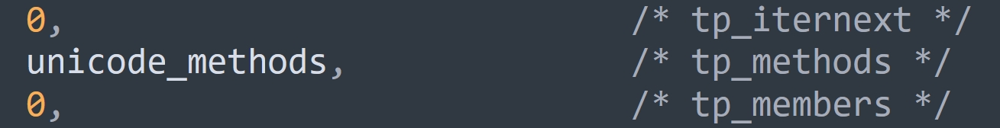
tp_methods 字段的类型是 PyMethodDef 结构体数组，一个 PyMethodDef 结构体实例对应一个可调用方法。那么 PyMethodDef 长什么样子呢？
// Include/methodobject.h
struct PyMethodDef {
// 暴露给 Python 的方法名
const char *ml_name;
// 包含具体实现的 C 函数
PyCFunction ml_meth;
// 函数的参数类型
// 比如函数接收多少参数，是否支持关键字参数，
// 是不是静态方法、类方法等等，这些都需要通过 ml_flags 指定
int ml_flags;
// 函数的 docstring
const char *ml_doc;
};
字符串的自定义方法非常多，我们先从 Python 的角度罗列一下，然后再挑几个看一下源码实现。
# 字符串转小写
print("ABC".lower()) # abc
# 字符串转大写
print("abc".upper()) # ABC
# 每个单词首字母大写，其它字母小写
print("my GRIL".title()) # My Gril
# 第一个单词首字母大写，其它字母小写
print("MY GIRL".capitalize()) # My girl
# 从字符两端开始去除指定的字符，比如位于 "001" 的字符会被去除
print("001古明地觉 1 号001".strip("001")) # 古明地觉 1 号
# 也可以只从一端去除
print("001古明地觉 1 号001".lstrip("001")) # 古明地觉 1 号001
print("001古明地觉 1 号001".rstrip("001")) # 001古明地觉 1 号
# 查找指定的子串，返回子串第一次出现的位置
print("abcabcabc".index("bca")) # 1
# 查找时也支持指定范围，比如从索引为 2 的位置开始查找
print("abcabcabc".index("bca", 2)) # 4
# index 方法如果在没有找到指定的子串时，会抛出 ValueError:
# 如果不希望报错，那么可以使用 find，当字符串不存在时会返回 -1
print("hello".find("ll")) # 2
print("hello".find("lll")) # -1
# find 也支持指定查找范围，并且是从左往右查找
# 如果使用 rfind，则可以实现从右往左查找，同理还有 rindex
print("abc abc".find("abc")) # 0
print("abc abc".rfind("abc")) # 4
# 统计指定子串的数量
print("abc abc abc".count("abc")) # 3
# 是否以某个字符串开头
print("Hello".startswith("Hel")) # True
print("Hello".startswith("hel")) # False
# 是否以某个字符串结尾
print("world".endswith("rld")) # True
print("world".endswith("rlD")) # False
# 按照指定字符串进行分割，并支持传入 maxsplit 参数指定最大分割次数
print("a-b-c-d-e".split("-")) # ['a', 'b', 'c', 'd', 'e']
print("a-b-c-d-e".split("-", 2)) # ['a', 'b', 'c-d-e']
# 如果不传递参数，那么会默认按照空白符（包含空格、Tab、换行等等）分隔
print("a \n b \tc".split()) # ['a', 'b', 'c']
# 还可以从右向左分割，当然在不指定 maxsplit 参数时，效果和 split 一样
print("a-b-c-d-e".rsplit("-")) # ['a', 'b', 'c', 'd', 'e']
print("a-b-c-d-e".rsplit("-", 2)) # ['a-b-c', 'd', 'e']
# 等价于 .split("\n")
print("a b\nc".splitlines()) # ['a b', 'c']
# 按照指定子串进行分割，返回一个三元组：(子串之前的部分, 子串, 子串之后的部分)
print("abcxxdef".partition("xx")) # ('abc', 'xx', 'def')
# 当子串不存在时，会返回 (字符串本身, ""， "")
print("abc".partition("xx")) # ('abc', '', '')
# 大小写交换
print("Hello World".swapcase()) # hELLO wORLD
# 对指定子串进行替换
print("abc abc abc".replace("abc", "ABC")) # ABC ABC ABC
# 也可以指定最大替换次数
print("abc abc abc".replace("abc", "ABC", 2)) # ABC ABC abc
# 和 replace 作用相似，也是用来替换字符串指定部分
# 将 a 替换成 abc，将 x 替换成 xyz
trans = str.maketrans({"a": "abc", "x": "xyz"})
print("aaxx".translate(trans)) # abcabcxyzxyz
# 如果给 str.maketrans 只传一个参数，那么要传字典，并且 key 必须是单字符
# 如果给 str.maketrans 传递两个参数，那么两个参数必须是等长的字符串
trans = str.maketrans("abc", "ABC")
# a -> A，b -> B，c -> C
print("abccc".translate(trans)) # ABCCC
# 如果传三个参数，那么第三个参数也要是字符串
# 此时在替换的时候，还会去除掉位于 "def" 中的字符
trans = str.maketrans("abc", "ABC", "def")
print("abcdefabc".translate(trans)) # ABCABC
这些都属于基础内容了，我们挑几个看一下源码实现。
字符串的 join
字符串在相加时会创建一个新的字符串，所以如果有大量的字符串相加，那么效率会很低下。面对这种情况，官方的建议是通过 join 方法。
字符串的 join 方法在底层对应 PyUnicode_Join 函数。
// Objects/unicodeobject.c
PyObject *
PyUnicode_Join(PyObject *separator, PyObject *seq)
{
PyObject *res; // 拼接结果
PyObject *fseq; // 拼接的字符串的数量
Py_ssize_t seqlen; // 总长度
PyObject **items; // PyObject * 数组首元素的地址
// 遍历参数 seq，将里面的每个字符串拿出来放在列表中
// 如果 seq 本身就是列表或元组，那么直接返回 seq
fseq = PySequence_Fast(seq, "can only join an iterable");
if (fseq == NULL) {
return NULL;
}
// 列表或元组对应的结构体内部都有一个 ob_item 字段
// 该字段是一个 PyObject * 类型的数组，负责保存具体的元素
// 该函数会拿到 ob_item 数组，并赋值给 items
items = PySequence_Fast_ITEMS(fseq);
// 获取要拼接的字符串的数量
seqlen = PySequence_Fast_GET_SIZE(fseq);
// 调用 _PyUnicode_JoinArray 进行拼接
res = _PyUnicode_JoinArray(separator, items, seqlen);
Py_DECREF(fseq);
return res;
}
核心在 _PyUnicode_JoinArray 函数里面，该函数的逻辑很长，但很简单。就是获取要拼接的每一个字符串的长度，然后加在一起，并取最大的存储单元，然后一次性申请对应的内存空间，再逐一进行拷贝。所以拷贝是避免不了的，+ 这种方式导致低效率的主要原因就在于大量临时字符串的创建和销毁。
字符串的 encode
在 Python 里面可以调用字符串的 encode 方法，得到 bytes 对象。那么它在底层是如何实现的呢？
// Objects/unicodeobject.c
PyObject *
PyUnicode_AsEncodedString(PyObject *unicode,
const char *encoding,
const char *errors)
{
PyObject *v;
char buflower[11];
// unicode 参数要指向一个字符串
if (!PyUnicode_Check(unicode)) {
PyErr_BadArgument();
return NULL;
}
// 如果不指定编码，那么使用 UTF-8
if (encoding == NULL) {
return _PyUnicode_AsUTF8String(unicode, errors);
}
// 如果指定了编码，那么进行判断
if (_Py_normalize_encoding(encoding, buflower, sizeof(buflower))) {
char *lower = buflower;
/* Fast paths */
// 快分支，判断是否是 UTF-* 系列
if (lower[0] == 'u' && lower[1] == 't' && lower[2] == 'f') {
lower += 3;
if (*lower == '_') {
/* Match "utf8" and "utf_8" */
lower++;
}
// 如果是 UTF-8
if (lower[0] == '8' && lower[1] == 0) {
return _PyUnicode_AsUTF8String(unicode, errors);
}
// 如果是 UTF-16
else if (lower[0] == '1' && lower[1] == '6' && lower[2] == 0) {
return _PyUnicode_EncodeUTF16(unicode, errors, 0);
}
// 如果是 UTF-32
else if (lower[0] == '3' && lower[1] == '2' && lower[2] == 0) {
return _PyUnicode_EncodeUTF32(unicode, errors, 0);
}
}
// 否则判断是否是 ascii、latin1、iso8859-1 等编码
else {
if (strcmp(lower, "ascii") == 0
|| strcmp(lower, "us_ascii") == 0) {
return _PyUnicode_AsASCIIString(unicode, errors);
}
#ifdef MS_WINDOWS
else if (strcmp(lower, "mbcs") == 0) {
return PyUnicode_EncodeCodePage(CP_ACP, unicode, errors);
}
#endif
else if (strcmp(lower, "latin1") == 0 ||
strcmp(lower, "latin_1") == 0 ||
strcmp(lower, "iso_8859_1") == 0 ||
strcmp(lower, "iso8859_1") == 0) {
return _PyUnicode_AsLatin1String(unicode, errors);
}
}
}
// 如果以上编码都不是，那么执行通用逻辑 _PyCodec_EncodeText
v = _PyCodec_EncodeText(unicode, encoding, errors);
if (v == NULL)
return NULL;
/* The normal path */
if (PyBytes_Check(v))
return v;
/* If the codec returns a buffer, raise a warning and convert to bytes */
if (PyByteArray_Check(v)) {
int error;
PyObject *b;
error = PyErr_WarnFormat(PyExc_RuntimeWarning, 1,
"encoder %s returned bytearray instead of bytes; "
"use codecs.encode() to encode to arbitrary types",
encoding);
if (error) {
Py_DECREF(v);
return NULL;
}
b = PyBytes_FromStringAndSize(PyByteArray_AS_STRING(v),
PyByteArray_GET_SIZE(v));
Py_DECREF(v);
return b;
}
PyErr_Format(PyExc_TypeError,
"'%.400s' encoder returned '%.400s' instead of 'bytes'; "
"use codecs.encode() to encode to arbitrary types",
encoding,
Py_TYPE(v)->tp_name);
Py_DECREF(v);
return NULL;
}
由于现在的主流编码是 utf-8，所以绝大部分情况都会执行 _PyUnicode_AsUTF8String 函数，我们看一下它的逻辑。
// Objects/unicodeobject.c
PyObject *
_PyUnicode_AsUTF8String(PyObject *unicode, const char *errors)
{
return unicode_encode_utf8(unicode, _Py_ERROR_UNKNOWN, errors);
}
static PyObject *
unicode_encode_utf8(PyObject *unicode, _Py_error_handler error_handler,
const char *errors)
{
enum PyUnicode_Kind kind;
void *data;
Py_ssize_t size;
if (!PyUnicode_Check(unicode)) {
PyErr_BadArgument();
return NULL;
}
if (PyUnicode_READY(unicode) == -1)
return NULL;
// 如果是 ASCII 字符串，那么直接获取每个字符的码点，创建 bytes 对象
if (PyUnicode_UTF8(unicode))
return PyBytes_FromStringAndSize(PyUnicode_UTF8(unicode),
PyUnicode_UTF8_LENGTH(unicode));
// 获取字符串的 kind
kind = PyUnicode_KIND(unicode);
// 获取首字符的地址，首字符紧跟在结构体后面
data = PyUnicode_DATA(unicode);
// 获取字符串的长度
size = PyUnicode_GET_LENGTH(unicode);
// 判断 kind 种类
switch (kind) {
default:
Py_UNREACHABLE();
case PyUnicode_1BYTE_KIND:
// 基于不同 kind 调用不同的函数
assert(!PyUnicode_IS_ASCII(unicode));
return ucs1lib_utf8_encoder(unicode, data, size, error_handler, errors);
case PyUnicode_2BYTE_KIND:
return ucs2lib_utf8_encoder(unicode, data, size, error_handler, errors);
case PyUnicode_4BYTE_KIND:
return ucs4lib_utf8_encoder(unicode, data, size, error_handler, errors);
}
}
整个过程还是我们之前说的，通过 utf-8 编码将每个字符转成对应的编号，组合起来得到的就是 bytes 对象。
小结
到目前为止，我们就说完了字符串相关的内容。必须要强调的是，字符串没有想象中的那么简单，而在 CPython 里面，字符串的源码将近两万行。
如果你还对字符串的其它操作感兴趣，想看看它的具体实现，可以自己深入源码探索一番。
欢迎大家关注我的公众号：古明地觉的编程教室。
如果觉得文章对你有所帮助，也可以请作者吃个馒头，Thanks♪(･ω･)ﾉ。
楔子
本篇文章来分析一下列表，在初学列表的时候，可能书上会告诉你列表就是一个大仓库，什么都可以存放。但在最开始的几个章节中，我们花了很大的笔墨介绍了 Python 的对象，并明白了变量的本质。所以到现在列表已经没有什么好神秘的了，它里面存放的元素其实都是泛型指针 PyObject *。
并且根据我们使用列表的经验，可以得出以下两个结论：
- 每个列表的元素个数可以不一样，所以它是一个变长对象
- 可以对列表进行添加、删除、修改等操作，所以它是一个可变对象
列表的底层结构
列表在底层由 PyListObject 结构体表示，看一下它长什么样子。
// Include/listobject.h
typedef struct {
PyObject_VAR_HEAD
/* Vector of pointers to list elements. list[0] is ob_item[0], etc. */
PyObject **ob_item;
/* ob_item contains space for 'allocated' elements. The number
* currently in use is ob_size.
* Invariants:
* 0 <= ob_size <= allocated
* len(list) == ob_size
* ob_item == NULL implies ob_size == allocated == 0
* list.sort() temporarily sets allocated to -1 to detect mutations.
*
* Items must normally not be NULL, except during construction when
* the list is not yet visible outside the function that builds it.
*/
Py_ssize_t allocated;
} PyListObject;
我们看到里面有如下字段：
- PyObject_VAR_HEAD：变长对象的公共头部信息；
- ob_item：一个二级指针，指向 PyObject * 数组的首元素，这个指针数组保存的便是对象的指针，而操作数组都是通过 ob_item 来进行操作的；
- allocated：容量，我们知道列表底层使用了 C 的数组，而底层数组的长度就是列表的容量；
列表之所以要有容量的概念，是因为列表可以动态添加元素，但底层的数组在创建完毕之后，其长度却是固定的。所以当添加新元素时，发现数组已经满了，这个时候只能申请一个更长的数组，同时把原来数组中的元素依次拷贝到新数组里面（这一过程就是列表的扩容），然后再将新元素添加进去。
但是问题来了，总不可能每添加一个元素，就申请一次数组、将所有元素都拷贝一次吧。所以列表在扩容的时候，会将数组申请的长一些，从而在添加元素的时候不用每次都申请新的数组。
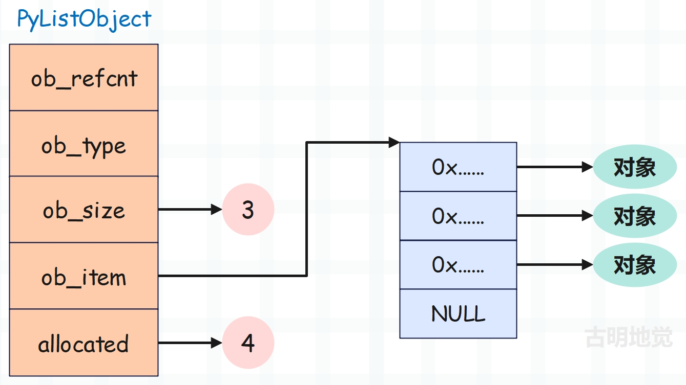
这便是列表的结构示意图，我们看到底层数组的长度为 4，说明此时列表的容量为 4。但是里面有 3 个 PyObject * 指针，说明列表的 ob_size 是 3，或者说列表里面有 3 个元素。
如果这个时候我们往列表中 append 一个元素，那么会将这个新元素设置在数组索引为 ob_size 的位置、或者说第四个位置。一旦设置完，ob_size 会自动加 1，因为 ob_size 要和列表的长度保持一致。

列表的容量是 4，但此时长度也达到了 4，所以列表的长度、或者说元素个数已经达到了容量。这说明当下一次 append 的时候，已经没有办法再容纳新的元素了。当然最直观的还是这里的底层数组，很明显全都占满了。那这个时候如果想再接收新的元素的话，要怎么办呢？显然只能扩容了。

原来的容量是 4，长度也是 4，当再来一个新元素的时候由于没有位置了，所以要扩容。但扩容的时候肯定会将容量申请的大一些、即底层数组申请的长一些，具体申请多长，Python 内部有一个公式，我们后面会说。总之申请的新的底层数组长度是 8，那么说明列表的容量就变成了 8。
新数组申请之后，将原来旧数组中的 PyObject * 按照顺序依次拷贝过去，再让 ob_item 指向新数组。然后把要添加的元素设置在新数组中索引为 ob_size 的位置、即第 5 个位置，并将 ob_size 加 1。最后将旧数组释放掉。
以上便是列表底层在扩容的时候所经历的过程。
由于扩容会申请新数组，然后将旧数组的元素拷贝到新数组中，所以这是一个时间复杂度为 O(n) 的操作。而 append 可能会导致列表扩容，因此 append 最坏情况下也是一个 O(n) 的操作，只不过扩容不会频繁发生，所以 append 方法的平均时间复杂度还是 O(1)。
另外我们还可以看到一个现象，那就是列表在底层是分开存储的，因为 PyListObject 结构体实例并没有存储相应的指针数组，而是存储了指向这个指针数组首元素的二级指针。显然我们添加、删除、修改元素等操作，都是通过 ob_item 二级指针来间接操作指针数组。
至于这么做的原因，我们在介绍 Python 对象的时候就说过了，不记得了的话，可以回去翻一翻。
所以底层对应的 PyListObject 实例的大小其实是不变的，因为指针数组没有存在 PyListObject 里面。但 Python 在计算内存大小的时候是会将这个指针数组也算进去的，所以列表的大小是可变的。
而且我们知道，列表在 append 之后地址是不变的，至于原因上面的几张图已经解释得很清楚了。
如果长度没有达到容量，那么 append 其实就是往底层数组中设置了一个新元素。如果达到容量了，那么会扩容，但扩容只是申请一个新的指针数组，然后让 ob_item 重新指向罢了。所以底层的指针数组会变，但是 PyListObject 结构体实例本身是没有变化的，因此列表在执行 append、extend、pop、insert 等操作时，地址不会发生变化。
下面再来看看列表所占的内存大小是怎么算的，首先 PyListObject 里面的 PyObject_VAR_HEAD 占 24 字节，ob_item 占 8 字节，allocated 占 8 字节，总共 40 字节。但是不要忘记，在计算列表大小的时候，ob_item 指向的指针数组也要算在内。所以：列表的大小 = 40 + 8 * 指针数组长度（或者说列表容量）。注意是指针数组长度，可不是列表长度，因为数组一旦申请了，不管你用没用，大小就摆在那里了。就好比你租了间房子，就算不住，房租该交还是得交。
# 显然一个空数组占 40 个字节
print([].__sizeof__()) # 40
# 40 + 3 * 8 = 64
print([1, 2, "x" * 1000].__sizeof__()) # 64
# 虽然里面有一个长度为 1000 的字符串
# 但我们说列表存放的都是指针，所以大小都是 8 字节
# 注意：我们通过 lst = [1, 2, 3] 这种方式创建列表的话
# 不管内部元素有多少个, 其 ob_size 和 allocated 都是一样的
# 只有当列表在添加元素的时候发现容量不够了才会扩容
lst = list(range(10))
# 40 + 10 * 8 = 120
print(lst.__sizeof__()) # 120
# 长度为 4，此时容量也是 4
lst = ["巭", "孬", "嫑", "睡觉"]
# 大小为 40 + 4 * 8 = 72
print(lst.__sizeof__()) # 72
# 添加一个元素
lst.append("觉得睡啊")
# 大小变成了 40 + 8 * 8 = 104
# 说明当发生扩容时，底层数据可以容纳 8 个元素
print(lst.__sizeof__()) # 104
关于列表的长度和容量的关系，以及扩容的规则，我们后续再聊。总之目前我们知道列表的大小是怎么计算的，以及为什么列表在通过索引定位元素的时候，时间复杂度是 O(1)。因为列表存储的都是对象的指针，不管对象有多大，其指针大小是固定的，都是 8 字节，通过索引可以瞬间计算出偏移量。
print([1, 2, 3].__sizeof__()) # 64
print([[1, 2, 3]].__sizeof__()) # 48
相信上面这个结果，你肯定能分析出原因。因为第一个列表中有 3 个指针，所以大小是 40 + 24 = 64。而第二个列表中有一个指针，所以是 40 + 8 = 48。用一张图来展示一下 [1, 2, 3] 和 [[1, 2, 3]] 的底层结构，看看它们之间的区别：

到此相信你已经彻底掌握列表的结构了，那么下一篇文章我们来介绍一下列表的长度和容量之间的关系，以及扩容是怎么实现的。
欢迎大家关注我的公众号：古明地觉的编程教室。
如果觉得文章对你有所帮助，也可以请作者吃个馒头，Thanks♪(･ω･)ﾉ。
本篇文章来说一说列表的扩容，我们知道列表在添加元素时，如果发现底层的指针数组已经满了，那么会进行扩容，申请一个更大的数组。
下面就来看看底层是怎么实现的，相关操作都位于 Objects/listobject.c 中。
static int
list_resize(PyListObject *self, Py_ssize_t newsize)
{
// 参数 self 就是列表，newsize 指的是元素在添加之后的 ob_size
// 比如列表的 ob_size 和容量都是 4，append 的时候发现容量不够
// 所以会扩容，那么这里的 newsize 就是 5
// 如果是 extend 添加 3 个元素，那么这里的 newsize 就是 7
// 当然 list_resize 这个函数不仅可以扩容，也可以缩容
// 假设列表原来有 1000 个元素，这个时候将列表清空了，那么容量肯定缩小，不然会浪费内存
// 如果清空了列表，那么这里的 newsize 显然就是 0
// 二级指针，指向指针数组的首元素
PyObject **items;
// 新的容量，以及新的指针数组的内存大小
size_t new_allocated, num_allocated_bytes;
// 获取原来的容量
Py_ssize_t allocated = self->allocated;
// 如果 newsize 达到了容量的一半，但还没有超过容量
// 那么意味着 newsize、或者新的 ob_size 和容量是匹配的
// 所以容量不会变化，直接将列表的 ob_size 设置为 newsize 即可
if (allocated >= newsize && newsize >= (allocated >> 1)) {
assert(self->ob_item != NULL || newsize == 0);
Py_SIZE(self) = newsize;
return 0;
}
// 走到这里说明容量和 newsize 不匹配了，所以要进行扩容或者缩容
// 因此要申请新的底层数组，那么长度是多少呢？
// 这里给出了公式，一会儿我们可以通过 Python 进行测试
new_allocated = (size_t)newsize + (newsize >> 3) + (newsize < 9 ? 3 : 6);
// 容量也是有范围的，乘上 8 字节不能超过 PY_SSIZE_T_MAX
if (new_allocated > (size_t)PY_SSIZE_T_MAX / sizeof(PyObject *)) {
PyErr_NoMemory();
return -1;
}
// 如果 newsize 为 0，那么容量也为 0
if (newsize == 0)
new_allocated = 0;
// 分配内存
num_allocated_bytes = new_allocated * sizeof(PyObject *);
items = (PyObject **)PyMem_Realloc(self->ob_item, num_allocated_bytes);
if (items == NULL) {
PyErr_NoMemory();
return -1;
}
// 将 ob_items 字段设置为 items
self->ob_item = items;
// 将 ob_size 字段设置为 newsize
Py_SIZE(self) = newsize;
// 将 allocated 字段设置为 new_allocated
self->allocated = new_allocated;
return 0;
}
我们看到还是很简单的，没有什么黑科技。然后是列表扩容的时候，容量和元素个数之间的规律。其实在 list_resize 函数中是有注释的，其中有这么一行。
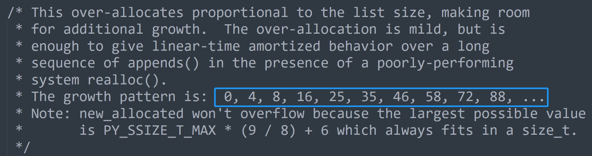
说明我们往一个空列表中不断 append 元素的时候，容量会按照上面的规律进行变化，我们来试一下。
lst = []
allocated = 0
print("此时容量是: 0")
for item in range(100):
lst.append(item) # 添加元素
# 计算 ob_size
ob_size = len(lst)
# 判断 ob_size 和当前的容量
if ob_size > allocated:
# 列表的大小减去空列表的大小，再除以 8 显然就是容量
allocated = (lst.__sizeof__() - [].__sizeof__()) // 8
print(f"列表扩容啦, 新的容量是: {allocated}")
"""
此时容量是: 0
列表扩容啦, 新的容量是: 4
列表扩容啦, 新的容量是: 8
列表扩容啦, 新的容量是: 16
列表扩容啦, 新的容量是: 25
列表扩容啦, 新的容量是: 35
列表扩容啦, 新的容量是: 46
列表扩容啦, 新的容量是: 58
列表扩容啦, 新的容量是: 72
列表扩容啦, 新的容量是: 88
列表扩容啦, 新的容量是: 106
"""
我们看到和官方给的结果是一样的，显然这是毫无疑问的，根据底层的公式也能算出来。
ob_size = 0
allocated = 0
print(allocated, end=" ")
for item in range(100):
newsize = ob_size + 1
if newsize > allocated:
allocated = (newsize + (newsize >> 3) + 6) & ~3
print(allocated, end=" ")
ob_size = newsize
"""
0 4 8 16 24 32 40 52 64 76 92 108
"""
注：扩容是在添加元素的时候发现容量不够发生的，也就是底层数组存储的实际元素的个数（列表长度）等于数组长度，没办法再容纳新的元素了，所以要扩容。
如果我们直接通过 lst = [] 这种形式创建列表的话，那么其长度和容量是一样的。
lst = [0] * 1000
# 长度和容量一致
print(
len(lst), (lst.__sizeof__() - [].__sizeof__()) // 8
) # 1000 1000
# 但再添加一个元素的话, 那么 ob_size 会变成 1001，大于容量 1000
# 所以此时列表就要扩容了, 执行 list_resize，里面的 new_size 就是 1001
# 然后是怎么分配容量来着，new_allocated = (size_t)newsize + (newsize >> 3) + (newsize < 9 ? 3 : 6)
print(
"新容量:", 1001 + (1001 >> 3) + (3 if 1001 < 9 else 6)
) # 新容量: 1132
# append 一个元素，列表扩容
lst.append(123)
# 计算容量
print((lst.__sizeof__() - [].__sizeof__()) // 8) # 1132
结果是一样的，因为底层就是这么实现的，所以结果必须一样。只不过我们通过这种测试的方式证明了这一点，也加深了对列表的认识。
需要注意的是，会影响列表元素个数的操作（append、extend、insert、pop 等等），在执行前都会先执行一下 list_resize 进行容量检测。如果计算之后的 newsize 和 allocated 之间的关系是匹配的，即 allocated//2 <= newsize <= allocated，那么只需要将 ob_size 的大小更新为 newsize 即可。如果不匹配，那么还要进行扩容，此时是一个 O(n) 的操作。
介绍完扩容，再来介绍缩容，因为列表元素个数要是减少到和容量不匹配的话，也要进行缩容。
举个生活中的例子，假设你租了 10 间屋子用于办公，显然你要付 10 间屋子的房租，不管你有没有用，一旦租了肯定是要付钱的。同理底层数组也是一样，只要你申请了，不管有没有元素，内存已经占用了。但有一天你用不到 10 间屋子了，假设要用 8 间或者 9 间，那么会让剩余的屋子闲下来。但由于退租比较麻烦，并且只闲下来一两间屋子，所以干脆就不退了，还是会付 10 间屋子的钱，这样没准哪天又要用的时候就不用重新租了。
对于列表也是如此，在删除元素（相当于屋子不用了）的时候，如果发现长度还没有低于容量的一半，那么也不会缩容。但反之就要缩容了，比如屋子闲了 8 间，也就是只需要两间屋子就足够了，那么此时肯定要退租了，闲了 8 间，可能会退掉 6 间。
lst = [0] * 1000
print(
len(lst), (lst.__sizeof__() - [].__sizeof__()) // 8
) # 1000 1000
# 删除 500 个元素, 此时长度或者说 ob_size 就为 500
lst[500:] = []
# 但 ob_size 还是达到了容量的一半, 所以不会缩容
print(
len(lst), (lst.__sizeof__() - [].__sizeof__()) // 8
) # 500 1000
# 如果再删除一个元素的话, 那么不好意思, 显然就要进行缩容了
# 因为 ob_size 变成了 499, 小于 1000 // 2
# 缩容之后容量怎么算呢? 还是之前那个公式
print(499 + (499 >> 3) + (3 if 499 < 9 else 6)) # 567
# 测试一下, 删除一个元素, 看看会不会按照我们期待的规则进行缩容
lst.pop()
print(
len(lst), (lst.__sizeof__() - [].__sizeof__()) // 8
) # 499 567
一切都和我们想的是一样的，另外在代码中我们还看到一个 if 语句，就是如果 newsize 是 0，那么容量也是 0，来测试一下。
lst = [0] * 1000
print(
len(lst), (lst.__sizeof__() - [].__sizeof__()) // 8
) # 1000 1000
lst[:] = []
print(
len(lst), (lst.__sizeof__() - [].__sizeof__()) // 8
) # 0 0
# 如果按照之前的容量变化公式的话, 会发现结果应该是 3
# 但实际结果是 0, 就是因为多了 if 判断
# 如果 newsize 是 0, 就把容量也设置为 0
print(0 + (0 >> 3) + (3 if 0 < 9 else 6)) # 3
为什么要这么做呢？因为 Python 认为，列表长度为 0 的话，说明你不想用这个列表了，所以多余的 3 个也没有必要申请了。
还以租房为栗，如果你一间屋子都不用了，说明你可能不用这里的屋子办公了，因此直接全部退掉。
以上就是列表在改变容量时所采用的策略，我们从头到尾全部分析了一遍。下一篇文章来看一下列表的创建，以及缓存池。
欢迎大家关注我的公众号：古明地觉的编程教室。
如果觉得文章对你有所帮助，也可以请作者吃个馒头，Thanks♪(･ω･)ﾉ。
楔子
前面我们分析了列表的底层结构和扩容机制，本篇文章来聊一聊列表的创建和销毁，以及缓存池。
列表的创建
创建列表，解释器只提供了唯一的一个 Python/C API，也就是 PyList_New。这个函数接收一个 size 参数，允许我们在创建 PyListObject 对象时指定底层的 PyObject * 数组的长度。
//Objects/listobject.c
PyObject *
PyList_New(Py_ssize_t size)
{
// 声明一个 PyListObject * 变量
// 指向即将创建的 PyListObject 对象
PyListObject *op;
// 底层数组的长度必须大于等于 0
if (size < 0) {
PyErr_BadInternalCall();
return NULL;
}
// numfree 表示缓存池中已缓存的元素个数
// 如果大于 0，证明有可用元素，那么会从缓存池中获取
if (numfree) {
// 可用元素的数量减一
numfree--;
// 获取缓存的列表指针，并将指向的列表的引用计数设置为 1
op = free_list[numfree];
_Py_NewReference((PyObject *)op);
} else {
// 如果缓存池中没有可用元素，那么通过 PyObject_GC_New 申请内存
// 问题来了，之前申请内存不是用的 PyObject_New 吗
// 这里为啥换成 PyObject_GC_New 呢？我们稍后再说
op = PyObject_GC_New(PyListObject, &PyList_Type);
if (op == NULL)
return NULL;
}
// 如果 size <= 0，那么一定等于 0，此时列表不包含任何元素
if (size <= 0)
// 那么 ob_item 直接设置为 NULL
op->ob_item = NULL;
else {
// 否则为底层数组申请内存，因为存储的都是指针
// 所以大小为 size * sizeof(PyObject *)
op->ob_item = (PyObject **) PyMem_Calloc(size, sizeof(PyObject *));
if (op->ob_item == NULL) {
Py_DECREF(op);
return PyErr_NoMemory();
}
}
// 将 ob_size 和 allocated 均设置为 size
Py_SIZE(op) = size;
op->allocated = size;
// 让列表被 GC 跟踪
_PyObject_GC_TRACK(op);
// 转成泛型指针之后返回
return (PyObject *) op;
}
整个过程非常好理解，就是先创建一个 PyListObject 对象，然后再为底层数组申请内存，最后通过 ob_item 字段将两者关联起来。当然这个过程中会使用缓存池，关于缓存池一会儿再聊。
然后还要说一下内存申请函数，在这之前我们看到申请内存用的是 PyObject_New 函数，它和这里的 PyObject_GC_New 有什么区别呢？由于涉及到 Python 的内存管理，我们暂时先不聊那么深，大家先有个基本了解即可，等到介绍内存管理和垃圾回收的时候会详细剖析。
我们知道 Python 对象在底层都是一个结构体，并且结构体内部嵌套了 PyObject。但对于那些能够产生循环引用的可变对象来说，它们除了 PyObject 之外，还包含了一个 PyGC_Head，用于垃圾回收。
所以 PyObject_New 和 PyObject_GC_New 接收的参数是一样的，但后者会多申请 16 字节的内存，这 16 字节是为 PyGC_Head 准备的。那么问题来了，PyGC_Head 在什么地方呢？

PyGC_Head 就在 PyObject 的前面，但是注意：虽然为 PyGC_Head 申请了内存，但返回的是 PyObject 的地址。至于这里面的更多细节，后续在剖析内存管理和垃圾回收的时候细说，目前先简单了解一下即可。
然后再说一下计算内存的两种方式：
import sys
lst = []
# 可以调用 __sizeof__ 方法计算对象的内存
print(lst.__sizeof__()) # 40
# 也可以通过 sys.getsizeof 函数
print(sys.getsizeof(lst)) # 56
我们看到 sys.getsizeof 算出的结果会多出 16 字节，相信你能猜到原因，因为它将 PyGC_Head 也算进去了，而对象的 __sizeof__ 方法则不会算在内。
不过对于字符串、整数、浮点数这种不会产生循环引用的对象来说，由于没有 PyGC_Head，所以两种方式计算的结果是一样的。
import sys
print("".__sizeof__()) # 49
print(sys.getsizeof("")) # 49
print((123).__sizeof__()) # 28
print(sys.getsizeof(123)) # 28
以上就是列表的创建，整个过程不难理解。
列表的销毁
创建 PyListObject 对象时，会先检测缓存池 free_list 里面是否有可用的对象，有的话直接拿来用，否则通过 malloc 在系统堆上申请。列表的缓存池是使用数组实现的，里面最多维护 80 个 PyListObject 对象。
// Objects/listobject.c
#ifndef PyList_MAXFREELIST
#define PyList_MAXFREELIST 80
#endif
// free_list 是一个 PyListObject * 数组，容量为 80
// 添加元素时会从数组的尾部添加，获取元素时也会从数组的尾部获取
static PyListObject *free_list[PyList_MAXFREELIST];
// 缓存池中可用元素数量
static int numfree = 0;
根据之前的经验我们知道，既然创建的时候能从缓存池中获取，那么在执行析构函数的时候也要把列表放到缓存池里面。看一下列表的析构函数，它由 PyList_Type 的 tp_dealloc 字段负责，而该字段被设置为 list_dealloc。
// Objects/listobject.c
static void
list_dealloc(PyListObject *op)
{
Py_ssize_t i;
// 列表可能会产生循环引用，因此创建之后要被 GC 跟踪
// 而现在要被回收了，所以也要取消 GC 跟踪
PyObject_GC_UnTrack(op);
// 这一步的作用，稍后再说
Py_TRASHCAN_BEGIN(op, list_dealloc)
// 先释放底层数组
if (op->ob_item != NULL) {
// 但是释放之前，还有一件重要的事情
// 要将底层数组中每个指针指向的对象的引用计数都减去 1
// 因为它们不再持有对"对象"的引用
i = Py_SIZE(op);
while (--i >= 0) {
Py_XDECREF(op->ob_item[i]);
}
// 然后释放底层数组所占的内存
PyMem_FREE(op->ob_item);
}
// 如果已缓存的元素个数小于 80 个，并且 op 指向的是列表
// 那么将 op 追加到数组中，并将 numfree 自增 1
if (numfree < PyList_MAXFREELIST && PyList_CheckExact(op))
free_list[numfree++] = op;
else
// 否则将列表的内存释放掉
Py_TYPE(op)->tp_free((PyObject *)op);
Py_TRASHCAN_END
}
我们知道创建一个 PyListObject 对象会分为两步，先创建 PyListObject 对象，然后创建底层数组，最后让 PyListObject 对象的 ob_item 字段指向底层数组的首元素。同理，在销毁一个 PyListObject 对象时，会先释放 ob_item 维护的底层数组，然后在缓存池已满的情况下再释放 PyListObject 对象自身。
现在我们算是明白了缓存池的机制，本来在销毁列表时，要将它的内存释放。但因为缓存池机制，解释器并没有这么做，而是将它的指针放在了缓存池里，至于列表对象则依旧驻留在堆上，只是我们已经无法再访问了。
当以后创建新的 PyListObject 对象时，解释器会首先唤醒这些已经死去的 PyListObject 对象，给它们一个洗心革面、重新做人的机会。但需要注意的是，这里缓存的仅仅是 PyListObject 对象，至于底层数组，其 ob_item 已经不再指向了。
从 list_dealloc 中我们可以看到，PyListObject 对象的指针在放进缓存池之前，ob_item 指向的数组就已经被释放掉了，同时数组中指针指向的对象的引用计数会减 1。所以最终数组中这些指针指向的对象也大难临头各自飞了，或生存、或毁灭，总之此时和 PyListObject 之间已经没有任何联系了。
但是为什么要这么做呢？为什么不连底层数组也一起维护呢？可以想一下，如果继续维护的话，数组中指针指向的对象永远不会被释放，那么很可能会产生悬空指针的问题。
但实际上是可以将底层数组进行保留的，做法是只将数组中指针指向的对象的引用计数减 1，然后将数组中的指针都设置为 NULL，不再指向之前的对象，但并不释放底层数组本身所占用的内存空间。这样一来释放的内存不会交给系统堆，那么再次分配的时候，速度会快很多。但这样会带来两个问题。
- 1）这些内存没人用也会一直占着，并且只能供 PyListObject 对象的 ob_item 指向的底层数组使用。
- 2）基于缓存池获取的列表的容量，和新创建的列表的容量不一定匹配。比如底层数组长度为 6 的 PyListObject * 被放入了缓存池，那么表示列表最多容纳 6 个元素，但如果我们要创建一个长度为 8 的列表怎么办？此时依旧要重新为底层数组申请内存。
因此基于以上两个原因，Python 选择将底层数组所占的内存交还给了系统堆，当然也节省了内存。
lst1 = [1, 2, 3]
print(id(lst1)) # 139672412671360
# 扔到缓存池中，放在数组的尾部
del lst1
# 从缓存池中获取，也会从数组的尾部开始拿
lst2 = [1, 2, 3]
print(id(lst2)) # 139672412671360
# 因此打印的地址是一样的
以上就是列表的创建和销毁，以及它的缓存池原理。
trashcan 机制
在看列表的销毁过程时，我们注意到里面有这么一行代码。
Py_TRASHCAN_BEGIN(op, list_dealloc)
这是做什么的呢，首先在 Python 中，我们可以创建具有深度递归的对象，比如：
L = None
for i in range(2 ** 20):
L = [L]
del L
此时的 L 就是一个嵌套了 2 ** 20 层的列表，当我们删除 L 的时候，会先销毁 L[0]、然后销毁 L[0][0]，以此类推，直到递归深度为 2 ** 20。而这样的深度毫无疑问会溢出 C 的调用栈，导致解释器崩溃。但事实上我们在 del L 的时候解释器并没有崩溃，原因就是 CPython 发明了一种名为 trashcan 的机制，它通过延迟销毁的方式来限制销毁的递归深度。关于这一特性，我们知道就好了，不用太关注。
下一篇文章来聊一聊列表的操作在底层是怎么实现的。
欢迎大家关注我的公众号：古明地觉的编程教室。
如果觉得文章对你有所帮助，也可以请作者吃个馒头，Thanks♪(･ω･)ﾉ。
楔子
列表拥有非常多的方法，比如添加元素、查询元素等，这些都属于列表的自定义方法。当然不光是列表，任何对象都可以有自己的自定义方法，而这些方法会保存在类型对象的 tp_methods 里面。
当然列表除了拥有自定义的方法之外，还拥有作为序列型对象所共有的方法，比如合并、基于索引和切片获取元素、基于索引和切片设置元素等等。这些方法会基于种类被抽象成三个方法簇，分别是：
- tp_as_number：数值型对象拥有的方法；
- tp_as_sequence：序列型对象拥有的方法；
- tp_as_mapping：映射型对象拥有的方法；
每个方法簇都包含了大量的 C 函数，每个 C 函数一般会对应 Python 里的一个魔法方法和操作符。比如 tp_as_sequence 的 sq_concat 对应序列型对象的 __add__ 方法，tp_as_number 的 nb_subtract 对应数值型对象的 __sub__ 方法。
那么接下来我们就详细剖析一下这些方法的具体实现过程。
列表的相加
序列型对象都实现了加法运算，比如列表，两个列表相加可以合并为一个新的列表。
print([1, 2, 3] + [4, 5])
"""
[1, 2, 3, 4, 5]
"""
虽然使用了 + 操作符，但它在底层是由 tp_as_sequence 的 sq_concat 负责实现的，该字段被赋值为 list_concat 函数，看一下它的内部逻辑。
// Objects/listobject.c
static PyObject *
list_concat(PyListObject *a, PyObject *bb)
{
// 两个列表相加之后的新列表的长度
Py_ssize_t size;
Py_ssize_t i;
PyObject **src, **dest;
PyListObject *np;
// 如果 bb 不是列表，抛出 TypeError
if (!PyList_Check(bb)) {
PyErr_Format(PyExc_TypeError,
"can only concatenate list (not \"%.200s\") to list",
bb->ob_type->tp_name);
return NULL;
}
#define b ((PyListObject *)bb)
// 两个列表的长度相加一定小于 PY_SSIZE_T_MAX
if (Py_SIZE(a) > PY_SSIZE_T_MAX - Py_SIZE(b))
return PyErr_NoMemory();
// 新列表的长度，等于相加的两个列表的长度之和
size = Py_SIZE(a) + Py_SIZE(b);
// 为 PyListObject 和底层数组申请空间（空间大小为 8 * size）
np = (PyListObject *) list_new_prealloc(size);
if (np == NULL) {
return NULL;
}
// 将第一个列表的元素增加引用计数之后，拷贝到新列表中
src = a->ob_item;
dest = np->ob_item;
for (i = 0; i < Py_SIZE(a); i++) {
PyObject *v = src[i];
Py_INCREF(v);
dest[i] = v;
}
// 将第二个列表的元素增加引用计数之后，拷贝到新列表中
src = b->ob_item;
dest = np->ob_item + Py_SIZE(a);
for (i = 0; i < Py_SIZE(b); i++) {
PyObject *v = src[i];
Py_INCREF(v);
dest[i] = v;
}
// 将新列表的 ob_size 设置为 size
Py_SIZE(np) = size;
// 转成泛型指针之后返回
return (PyObject *)np;
#undef b
}
逻辑非常简单，假设两个列表 a 和 b 相加，过程如下。
- 先申请一个新列表，长度为 len(a) + len(b)；
- 将列表 a 的元素拷贝到新列表中；
- 将列表 b 的元素拷贝到新列表中；
说白了就是两个 for 循环。
列表的重复
列表可以乘上一个整数，将自身重复指定次数，该过程会返回一个新列表。
print([1, 2, 3] * 3)
"""
[1, 2, 3, 1, 2, 3, 1, 2, 3]
"""
虽然使用了 * 操作符，但它在底层是由 tp_as_sequence 的 sq_repeat 负责实现的，该字段被赋值为 list_repeat 函数，看一下它的内部逻辑。
// Objects/listobject.c
static PyObject *
list_repeat(PyListObject *a, Py_ssize_t n)
{
Py_ssize_t i, j;
Py_ssize_t size;
PyListObject *np;
PyObject **p, **items;
PyObject *elem;
// 如果 n 小于 0，那么将 n 设置为 0
if (n < 0)
n = 0;
// 长度有限制，不能超过 PY_SSIZE_T_MAX
if (n > 0 && Py_SIZE(a) > PY_SSIZE_T_MAX / n)
return PyErr_NoMemory();
// 新列表的长度
size = Py_SIZE(a) * n;
// 如果列表长度为 0，那么直接返回空列表即可
if (size == 0)
return PyList_New(0);
// 为新列表和底层数组申请空间，底层数组的长度为 size
np = (PyListObject *) list_new_prealloc(size);
if (np == NULL)
return NULL;
// 如果原始列表的长度为 1，比如 a = [1]，n = 3
// 那么新列表就是 [1, 1, 1]
if (Py_SIZE(a) == 1) {
// 指向新列表的底层数组的首元素
items = np->ob_item;
// 拿到原始列表的第一个元素
elem = a->ob_item[0];
// 将新列表的底层数组的元素全部设置为 elem
for (i = 0; i < n; i++) {
items[i] = elem;
Py_INCREF(elem);
}
}
// 如果原始列表的长度不为 1
else {
// 指向新列表的底层数组的首元素
p = np->ob_item;
// 指向原始列表的底层数组的首元素
items = a->ob_item;
// 两层 for 循环
// 内层循环遍历原始数组，将元素拷贝到新数组，外层循环则是循环 n 次
for (i = 0; i < n; i++) {
for (j = 0; j < Py_SIZE(a); j++) {
*p = items[j];
Py_INCREF(*p);
p++;
}
}
}
// 将新列表的 ob_size 设置为 size
Py_SIZE(np) = size;
return (PyObject *) np;
}
整个过程非常朴实无华。
基于索引和切片获取元素
列表可以基于索引和切片截取元素。
data = [1, 2, 3, 4, 5]
print(data[1]) # 2
print(data[1: 4]) # [2, 3, 4]
在底层它由 tp_as_mapping 的 mp_subscript 实现，该字段被赋值为 list_subscript 函数，看一下它的内部逻辑。
// Objects/listobject.c
static PyObject *
list_subscript(PyListObject* self, PyObject* item)
{
// 在基于索引和切片截取时，所有序列型对象的逻辑都差不多
if (PyIndex_Check(item)) {
Py_ssize_t i;
// 如果 item 是索引，那么转成 Py_ssize_t 整数
i = PyNumber_AsSsize_t(item, PyExc_IndexError);
if (i == -1 && PyErr_Occurred())
return NULL;
// 如果 i 小于 0，那么加上列表长度，转成正数索引
if (i < 0)
i += PyList_GET_SIZE(self);
// 调用 list_item 获取 ob_item 中索引为 i 的元素
return list_item(self, i);
}
// 如果 item 是切片
else if (PySlice_Check(item)) {
// start, stop, step 分别表示起始位置、终止位置、步长
// slicelength 表示切片截取的长度，也就是要截取多少个元素
Py_ssize_t start, stop, step, slicelength, cur, i;
PyObject* result;
PyObject* it;
PyObject **src, **dest;
// 获取切片的 start、stop、step
if (PySlice_Unpack(item, &start, &stop, &step) < 0) {
return NULL;
}
// 传入原始列表的长度，对 start 和 stop 进行调整，并返回 slicelength
slicelength = PySlice_AdjustIndices(Py_SIZE(self), &start, &stop,
step);
// 如果 slicelength <= 0，说明截取不到任何元素
// 比如 data[5: 1] 或者 data[1: 5: -1]，那么直接返回空列表
if (slicelength <= 0) {
return PyList_New(0);
}
// 如果步长为 1，那么直接将列表中 start 到 stop 之间的元素拷过去即可
else if (step == 1) {
return list_slice(self, start, stop);
}
// 否则说明步长不为 1
else {
// 为创建的新列表和底层数组申请空间
result = list_new_prealloc(slicelength);
if (!result) return NULL;
src = self->ob_item;
// 从 start 处开始遍历，将元素拷贝过去
// 然后 cur 每次增加 step，遍历次数为 slicelength
dest = ((PyListObject *)result)->ob_item;
for (cur = start, i = 0; i < slicelength;
cur += (size_t)step, i++) {
it = src[cur];
Py_INCREF(it);
dest[i] = it;
}
// 将新列表的 ob_size 设置为 slicelength
Py_SIZE(result) = slicelength;
return result;
}
}
// 否则说明 item 既不是索引也不是切片，那么报错
else {
PyErr_Format(PyExc_TypeError,
"list indices must be integers or slices, not %.200s",
item->ob_type->tp_name);
return NULL;
}
}
这个和之前介绍的 bytes 对象有点像，因为它们都是序列型对象，在基于索引和切片截取元素时的逻辑也是类似的。但 bytes 对象只能截取元素，却不能设置元素，而列表是可以的，因为列表是可变对象。
基于索引和切片设置元素
列表是可变对象，因为它支持设置元素，即对内部元素进行修改。基于索引设置元素就不说了，我们主要看切片，它背后还是有一些复杂的。
data = [1, 2, 3, 4, 5, 6, 7, 8]
# 通过切片设置元素，右值一定是一个可迭代对象
data[0: 3] = [11, 22, 33]
# 会将 data[0] 设置为 11，将 data[1] 设置为 22，将 data[2] 设置为 33
print(data)
"""
[11, 22, 33, 4, 5, 6, 7, 8]
"""
# 而且它们的长度是可以不相等的，这里表示将 [0: 3] 的元素设置为 [1, 2]
# 即 data[0] 设置成 1，data[1] 设置成 2，那么问题来了，data[2] 咋办？
# 由于右值中已经没有元素与之匹配了，那么 data[2] 就会被删掉
data[0: 3] = [1, 2]
print(data)
"""
[1, 2, 4, 5, 6, 7, 8]
"""
# 所以如果想删除 [0: 3] 的元素，那么只需要执行 data[0: 3] = [] 即可
# 因为 [] 里面没有元素能与之匹配，所以 data 中 [0: 3] 的位置由于匹配不到
# 那么相当于执行了删除操作，当然由于 Python 的动态特性，还可以像下面这么做
# data[0: 3] = []、data[0: 3] = ()、data[0: 3] = "" 等等也是没问题的
data[0: 3] = ""
print(data)
"""
[5, 6, 7, 8]
"""
# 实际上执行 del data[0] 的时候，就是执行了 data[0: 1] = []
# 当然，如果右值元素多的话也是可以的，相当于插入
# 比如这里的 data[0] 匹配 1，然后左边就结束了
# 于是右侧剩余的元素会依次插在后面
data[0: 1] = [1, 2, 3, 4]
print(data)
"""
[1, 2, 3, 4, 6, 7, 8]
"""
# 重点来了，如果切片的步长不等于 1 的话，那么两边一定要匹配
# 由于 data[:: 2] 会得到 4 个元素，那么右边的可迭代对象的长度就必须也是 4
data[:: 2] = ['a', 'b', 'c', 'd']
print(data)
"""
['a', 2, 'b', 4, 'c', 7, 'd']
"""
# 但如果长度不一致，那么会报错
try:
data[:: 2] = ['a', 'b', 'c']
except Exception as e:
# 显然会报错
print(e)
"""
attempt to assign sequence of size 3 to extended slice of size 4
"""
至于它的源码有兴趣可以自己看一下，在底层它由 tp_as_mapping 的 mp_ass_subscript 负责实现，该字段被赋值为 list_ass_subscript 函数。逻辑比较长，但不难理解，我们总结一下。
list_subscript 用于获取元素，list_ass_subscript 用于设置元素。调用这两个函数，我们即可以传入索引，也可以传入切片。
- 获取元素时传入的是索引，那么 list_subscript 内部会调用 list_item，传入的是切片，那么会调用 list_slice。
- 设置元素时传入的是索引，那么 list_ass_subscript 内部会调用 list_ass_item，传入的是切片，那么会调用 list_ass_slice。并且 list_ass_slice 虽然是设置元素，但删除元素也是调用的它，比如通过 data[n: n+1]=[] 便可删除索引为 n 的元素。事实上 remove 和 pop 方法都只是计算出待删除元素的索引，真正的删除操作还是通过 list_ass_slice 来执行的。
- 另外，当传入切片时，只有步长为 1，才会调用 list_slice 和 list_ass_slice。如果步长不为 1，那么就采用循环的方式逐个遍历。
小结
以上我们就介绍了列表作为序列型对象拥有的方法，但除了这些它还有很多自定义的方法。由于列表用得非常广泛，关于它的方法我们都来详细地说上一说，下一篇文章介绍列表的自定义方法。
欢迎大家关注我的公众号：古明地觉的编程教室。
如果觉得文章对你有所帮助，也可以请作者吃个馒头，Thanks♪(･ω･)ﾉ。
楔子
上一篇文章我们介绍了列表作为序列型对象支持的方法，但列表还有很多的自定义方法。作为一名优秀的 Python 工程师，我们必须要知道这些方法的实现过程，以及相应的时间复杂度。
实例对象能够调用的方法都定义在类型对象中，类型对象无一例外都是 PyTypeObject 结构体实例，该结构体有一个 tp_methods 字段，负责维护实例对象能够调用的方法。由于 tp_methods 指向 PyMethodDef 结构体类型的数组，所以一个 PyMethodDef 结构体实例，就是 Python 实例对象能够调用的一个方法。
// Include/methodobject.h
struct PyMethodDef {
// 暴露给 Python 的方法名
const char *ml_name;
// 承载了具体逻辑的 C 函数
PyCFunction ml_meth;
// 指示函数的调用方式和传递参数的方式，比如
/* METH_NOARGS: 表示函数不接收任何参数
* METH_O: 函数只接收一个参数
* METH_VARARGS: 函数支持以元组的形式接收多个位置参数
* METH_KEYWORDS: 函数支持关键字参数
* METH_CLASS: 函数是一个类方法，等价于 Python 里的 @classmethod
* METH_STATIC: 函数是一个静态方法，即 @staticmethod
* METH_FASTCALL: 函数使用优化的快速调用协议，Python 3.7 及以上版本可用
传递参数时使用 C 数组，而不是 Python 元组
* METH_COEXIST: 如果希望存在两个同名函数，但类和实例分别调用不同的函数
那么便可以指定 METH_COEXIST
*/
int ml_flags;
// 函数的 docstring
const char *ml_doc;
};
而 list 在底层对应 PyList_Type，它的 tp_methods 字段被赋值为 list_methods。

里面定义了列表可以调用的方法，相信当你以后想查看某个对象的方法的底层实现时，已经知道该怎么定位了，下面我们就来看看这些方法的实现过程。
append：在尾部追加元素
append 方法可以往列表尾部追加元素。
// Objects/clinic/listobject.c.h
#define LIST_APPEND_METHODDEF \
{"append", (PyCFunction)list_append, METH_O, list_append__doc__},
它由 list_append 函数实现。
// Objects/listobject.c
static PyObject *
list_append(PyListObject *self, PyObject *object)
{
// 调用 app1 添加元素，并返回 None
if (app1(self, object) == 0)
Py_RETURN_NONE;
return NULL;
}
static int
app1(PyListObject *self, PyObject *v)
{
// 获取当前列表的长度
Py_ssize_t n = PyList_GET_SIZE(self);
assert (v != NULL);
if (n == PY_SSIZE_T_MAX) {
PyErr_SetString(PyExc_OverflowError,
"cannot add more objects to list");
return -1;
}
// 追加元素之后 ob_size 会变成 n + 1
// 调用 list_resize 函数，判断 n + 1 和容量之间的关系
// 只要涉及到列表元素个数的改变，都要调用 list_resize 函数
if (list_resize(self, n+1) < 0)
return -1;
// 增加引用计数
Py_INCREF(v);
// 将元素设置在索引为 n 的位置
PyList_SET_ITEM(self, n, v);
return 0;
}
所谓往尾部追加元素，本质上就是将元素设置在索引为 len 的位置。
insert：在任意位置插入元素
接下来是列表的 insert 方法。
// Objects/clinic/listobject.c.h
#define LIST_INSERT_METHODDEF \
{"insert", (PyCFunction)(void(*)(void))list_insert, METH_FASTCALL, list_insert__doc__},
它由 list_insert 函数负责实现。
// Objects/clinic/listobject.c.h
static PyObject *
list_insert(PyListObject *self, PyObject *const *args, Py_ssize_t nargs)
{
// 函数的返回值，但只会返回 None
PyObject *return_value = NULL;
// 插入的位置
Py_ssize_t index;
// 插入的元素
PyObject *object;
// insert 方法精确接收两个参数
if (!_PyArg_CheckPositional("insert", nargs, 2, 2)) {
goto exit;
}
if (PyFloat_Check(args[0])) {
PyErr_SetString(PyExc_TypeError,
"integer argument expected, got float" );
goto exit;
}
{
// 参数 args 是一个元组，里面包含了插入位置和元素
Py_ssize_t ival = -1;
// 插入位置，对象必须实现 __index__
PyObject *iobj = PyNumber_Index(args[0]);
if (iobj != NULL) {
// 转成 Py_ssize_t
ival = PyLong_AsSsize_t(iobj);
Py_DECREF(iobj);
}
if (ival == -1 && PyErr_Occurred()) {
goto exit;
}
// 赋值给 index
index = ival;
}
// 拿到待插入的元素
object = args[1];
// 调用 list_insert_impl 执行元素插入逻辑
return_value = list_insert_impl(self, index, object);
exit:
// 虽然这里返回了 return_value，但我们知道 insert 方法是没有返回值的
// 或者说返回值为 None，所以上面的 list_insert_impl 一定返回了 None
return return_value;
}
// Objects/listobject.c
static PyObject *
list_insert_impl(PyListObject *self, Py_ssize_t index, PyObject *object)
{
// 调用 ins1 插入元素，插入成功之后返回 None
if (ins1(self, index, object) == 0)
Py_RETURN_NONE;
return NULL;
}
static int
ins1(PyListObject *self, Py_ssize_t where, PyObject *v)
{
// 初始化循环变量 i，n 为列表长度
Py_ssize_t i, n = Py_SIZE(self);
// 指向 ob_item 数组的首元素
PyObject **items;
if (v == NULL) {
PyErr_BadInternalCall();
return -1;
}
if (n == PY_SSIZE_T_MAX) {
PyErr_SetString(PyExc_OverflowError,
"cannot add more objects to list");
return -1;
}
// 只要涉及到元素个数的改变，比如添加和删除元素
// 都会先调用 list_resize，在里面检测一下容量
// 比如这里，如果发现 (容量 >= n + 1) && (容量 / 2 <= n + 1)
// 那么说明容量目前是合理的，不需要做任何的扩容或缩容操作（如果条件不满足则需要）
// 然后将列表的 ob_size 修改为 n + 1，直接返回
if (list_resize(self, n+1) < 0)
return -1;
// 判断插入位置，如果 where 小于 0，那么加上列表长度
if (where < 0) {
where += n;
// 加上列表长度之后如果还小于 0，那么让其等于 0
if (where < 0)
where = 0;
}
// 如果插入位置大于列表长度 n，那么让其等于 n，此时相当于 append
if (where > n)
where = n;
items = self->ob_item;
// 将 where 以及之后的元素依次向右移动一个位置
for (i = n; --i >= where; )
items[i+1] = items[i];
// 将待插入元素 v 的引用计数加 1，并设置在底层数组中索引为 where 的位置
Py_INCREF(v);
items[where] = v;
return 0;
}
以上就是 insert 函数的底层逻辑，列表在插入数据的时候是非常灵活的，不管你在什么位置插入，都是合法的。它会自己调整，在确定待插入位置 where 之后，会将 where 以及之后的所有元素都向后挪动一个位置，空出来的地方设置为待插入的值。
另外我们看到 append 和 insert 其实非常像，都是基于索引设置元素。只不过对于 append 来说，索引就是列表长度，而对于 insert 来说，索引是由外界指定的，但函数内部会进行边界调整。
并且由于 insert 会涉及元素的移动，所以它的时间复杂度是 O(n)，而 append 则不会，它的时间复杂度是 O(1)。当然在极端情况下（发生扩容），append 也会退化成 O(n)，只不过这个过程不会频繁发生，所以 append 的复杂度仍然是 O(1) 的。
pop：从尾部弹出一个元素
pop 默认会从尾部弹出一个元素，当然我们也可以指定索引，弹出指定索引对应的元素。如果不指定索引，那么默认是 -1。
// Objects/clinic/listobject.c.h
#define LIST_POP_METHODDEF \
{"pop", (PyCFunction)(void(*)(void))list_pop, METH_FASTCALL, list_pop__doc__},
它由 list_pop 函数负责实现。
// Objects/clinic/listobject.c.h
static PyObject *
list_pop(PyListObject *self, PyObject *const *args, Py_ssize_t nargs)
{
// 返回值
PyObject *return_value = NULL;
Py_ssize_t index = -1;
// pop 接收 0 ~ 1 个参数
if (!_PyArg_CheckPositional("pop", nargs, 0, 1)) {
goto exit;
}
// 如果参数个数小于 1，说白了就是没有传参，直接跳转到 skip_optional 标签
if (nargs < 1) {
goto skip_optional;
}
if (PyFloat_Check(args[0])) {
PyErr_SetString(PyExc_TypeError,
"integer argument expected, got float" );
goto exit;
}
{
// 如果传参了，那么拿到指定的索引
Py_ssize_t ival = -1;
PyObject *iobj = PyNumber_Index(args[0]);
if (iobj != NULL) {
ival = PyLong_AsSsize_t(iobj);
Py_DECREF(iobj);
}
if (ival == -1 && PyErr_Occurred()) {
goto exit;
}
index = ival;
}
skip_optional:
// 将列表和 index 作为参数传进去，如果不指定索引，那么 index 默认为 -1
return_value = list_pop_impl(self, index);
exit:
// 返回弹出的元素
return return_value;
}
// Objects/listobject.c
static PyObject *
list_pop_impl(PyListObject *self, Py_ssize_t index)
{
PyObject *v;
int status;
// 如果列表为空，那么抛出 IndexError: pop from empty list
if (Py_SIZE(self) == 0) {
PyErr_SetString(PyExc_IndexError, "pop from empty list");
return NULL;
}
// 如果 index 小于 0，那么加上列表长度
if (index < 0)
index += Py_SIZE(self);
// 检测索引是否合法，如果索引小于 0 或大于等于列表长度
// 那么抛出 IndexError: pop index out of range
if (!valid_index(index, Py_SIZE(self))) {
PyErr_SetString(PyExc_IndexError, "pop index out of range");
return NULL;
}
// 拿到索引为 index 的元素，这也是一会儿要返回的元素
v = self->ob_item[index];
// 快分支，如果 index == Py_SIZE(self) - 1，证明弹出的是列表的最后一个元素
// 那么说明不涉及元素的移动，直接更新 ob_size 即可
if (index == Py_SIZE(self) - 1) {
status = list_resize(self, Py_SIZE(self) - 1);
if (status >= 0)
return v;
else
return NULL;
}
Py_INCREF(v);
// 删除的不是最后一个元素，那么需要调用 list_ass_slice 进行删除
// 等价于 self[index: index + 1] = []，即删除索引为 index 的元素
status = list_ass_slice(self, index, index+1, (PyObject *)NULL);
if (status < 0) {
Py_DECREF(v);
return NULL;
}
return v;
}
以上就是 pop 方法。
index：查询元素首次出现的位置
index 方法可以接收一个元素，然后返回该元素首次出现的位置。当然还可以额外指定一个 start 和 end，表示查询的范围。
// Objects/clinic/listobject.c.h
#define LIST_INDEX_METHODDEF \
{"index", (PyCFunction)(void(*)(void))list_index, METH_FASTCALL, list_index__doc__},
它由 list_index 负责实现。
// Objects/clinic/listobject.c.h
static PyObject *
list_index(PyListObject *self, PyObject *const *args, Py_ssize_t nargs)
{
PyObject *return_value = NULL;
PyObject *value;
Py_ssize_t start = 0;
Py_ssize_t stop = PY_SSIZE_T_MAX;
// index 方法接收 1 ~ 3 个参数
if (!_PyArg_CheckPositional("index", nargs, 1, 3)) {
goto exit;
}
// args[0] 表示查找的元素
value = args[0];
if (nargs < 2) {
goto skip_optional;
}
// args[1] 表示查找的起始位置
if (!_PyEval_SliceIndexNotNone(args[1], &start)) {
goto exit;
}
if (nargs < 3) {
goto skip_optional;
}
// args[2] 表示查找的结束位置
if (!_PyEval_SliceIndexNotNone(args[2], &stop)) {
goto exit;
}
skip_optional:
// 调用 list_index_impl 查找元素
return_value = list_index_impl(self, value, start, stop);
exit:
// 返回
return return_value;
}
// Objects/listobject.c
static PyObject *
list_index_impl(PyListObject *self, PyObject *value, Py_ssize_t start,
Py_ssize_t stop)
{
Py_ssize_t i;
// 如果 start 小于 0，那么加上列表长度
if (start < 0) {
start += Py_SIZE(self);
// 如果相加之后还小于 0，那么等于 0
if (start < 0)
start = 0;
}
// 如果结束位置小于 0，那么加上列表长度，所以它们都支持负数索引
if (stop < 0) {
stop += Py_SIZE(self);
// 如果相加之后还小于 0，那么等于 0
if (stop < 0)
stop = 0;
}
// 从 start 开始遍历
for (i = start; i < stop && i < Py_SIZE(self); i++) {
// 获取对应元素
PyObject *obj = self->ob_item[i];
Py_INCREF(obj);
// 然后进行比较，这个函数我们之前说过
// 它会先比较地址是否相同，如果地址相同，那么直接判定为相等
// 如果地址不同，那么比较值是否相等
int cmp = PyObject_RichCompareBool(obj, value, Py_EQ);
Py_DECREF(obj);
// 相等返回 1，不相等返回 0，比较失败返回 -1
// 如果 cmp 大于 0，表示两者相等，返回索引
if (cmp > 0)
return PyLong_FromSsize_t(i);
else if (cmp < 0)
return NULL;
}
// 到这里说明元素不存在，那么抛出 ValueError: x is not in list
PyErr_Format(PyExc_ValueError, "%R is not in list", value);
return NULL;
}
所以列表 index 方法的时间复杂度为 O(n)，因为它在底层要循环整个列表，如果运气好，可能第一个元素就是；运气不好，就只能循环整个列表了。
然后需要注意的是，在比较的时候，会先判断地址是否相同，然后再比较值是否相等。
class A:
def __eq__(self, other):
return False
a = A()
data = [a]
print(a == data[0]) # False
print(data.index(a)) # 0
a 和 data[0] 指向的对象不相等，但 data.index(a) 却返回了相应的索引，因为两者保存的地址是相同的。
同理 if v in data 这种也是类似的，先比较地址，地址不同再比较维护的值。
count：查询元素出现的次数
列表有一个 count 方法，可以计算出某个元素出现的次数。
// Objects/clinic/listobject.c.h
#define LIST_COUNT_METHODDEF \
{"count", (PyCFunction)list_count, METH_O, list_count__doc__},
它由 list_count 函数负责实现。
// Objects/listobject.c
static PyObject *
list_count(PyListObject *self, PyObject *value)
{
Py_ssize_t count = 0;
Py_ssize_t i;
// 遍历每一个元素
for (i = 0; i < Py_SIZE(self); i++) {
// 如果地址相同，直接判定为相等，count 自增 1
PyObject *obj = self->ob_item[i];
if (obj == value) {
count++;
continue;
}
Py_INCREF(obj);
// 地址不同（a is b 不成立），则比较维护的值是否相等（看 a == b 是否成立）
int cmp = PyObject_RichCompareBool(obj, value, Py_EQ);
Py_DECREF(obj);
if (cmp > 0)
count++;
else if (cmp < 0)
return NULL;
}
// 返回元素出现的次数
return PyLong_FromSsize_t(count);
}
毫无疑问，count 方法无论在什么情况下，它都是一个时间复杂度为 O(n) 的操作，因为列表必须要从头遍历到尾。
但还是要注意里面判断相等的方式，因为变量只是一个指针，所以 C 的 == 相当于 Python 的 is，但 Python 的 == 则对应 PyObject_RichCompare 函数。而源码里面在比较的时候先执行 ==，所以会先判断两者是不是指向同一个对象。
class A:
def __eq__(self, other):
return False
a = A()
data = [a, a, a]
print(data[0] == a) # False
print(data[1] == a) # False
print(data[2] == a) # False
print(data.count(a)) # 3
我们看到列表里的三个元素和 a 都不相等，但计算数量的时候，结果是 3。原因就是比较的时候是先比较地址，如果地址一样，那么认为元素相同。
当然 PyObject_RichCompareBool 函数里面已经包含了比较地址的逻辑，该函数会先比较地址是否一样，如果一样则认为相等，不一样再比较对象维护的值是否相等。但在 count 方法里面，将比较地址的逻辑又单独拿了出来，可以理解为快分支。当然即遍没有也无所谓，因为在函数 PyObject_RichCompareBool 里面还是会先对地址进行比较。
remove：删除指定元素
除了根据索引删除元素之外，也可以根据值来删除元素，会删除第一个出现的元素。
// Objects/clinic/listobject.c.h
#define LIST_REMOVE_METHODDEF \
{"remove", (PyCFunction)list_remove, METH_O, list_remove__doc__},
它由 list_remove 函数实现。
// Objects/listobject.c
static PyObject *
list_remove(PyListObject *self, PyObject *value)
{
Py_ssize_t i;
// 遍历每一个元素
for (i = 0; i < Py_SIZE(self); i++) {
PyObject *obj = self->ob_item[i];
Py_INCREF(obj);
// 比较是否相等，如果地址相同，那么认为相等
int cmp = PyObject_RichCompareBool(obj, value, Py_EQ);
Py_DECREF(obj);
// 如果相等，那么进行删除
if (cmp > 0) {
// 可以看到在删除元素的时候，调用了 list_ass_slice
// 等价于 self[i: i + 1] = []
if (list_ass_slice(self, i, i+1,
(PyObject *)NULL) == 0)
Py_RETURN_NONE;
return NULL;
}
else if (cmp < 0)
return NULL;
}
// 否则说明元素不在列表中，抛出 ValueError: list.remove(x): x not in list
PyErr_SetString(PyExc_ValueError, "list.remove(x): x not in list");
return NULL;
}
以上就是 remove 函数的底层实现，说白了就是一层 for 循环，依次比较列表的每个元素和待删除元素是否相等。如果出现了相等的元素，则删除，然后直接返回，因为只删除一个；但如果整个循环遍历结束也没有发现满足条件的元素，那么报错，待删除元素不存在。
所以背后的逻辑并没有我们想象中的那么神秘。
reverse：翻转列表
如果是你的话，你会怎么对列表进行翻转呢？显然是采用双指针，头指针指向列表的第一个元素，尾指针指向列表的最后一个元素，然后两两交换。交换完毕之后，头指针后移一位、尾指针前移一位，继续交换。当两个指针相遇时，停止交换，而 Python 底层也是这么做的。
// Objects/clinic/listobject.c.h
#define LIST_REVERSE_METHODDEF \
{"reverse", (PyCFunction)list_reverse, METH_NOARGS, list_reverse__doc__},
它由 list_reverse 负责实现。
// Objects/clinic/listobject.c.h
static PyObject *
list_reverse(PyListObject *self, PyObject *Py_UNUSED(ignored))
{
return list_reverse_impl(self);
}
// Objects/listobject.c
static PyObject *
list_reverse_impl(PyListObject *self)
{
// 如果列表长度不大于 1，那么什么也不做，直接返回 None 即可
if (Py_SIZE(self) > 1)
// 大于 1 的话，执行 reverse_slice，传递了两个参数
// 第一个参数是底层数组首元素的地址
// 而第二个参数则是底层数组中索引为 ob_size 的元素的地址
// 但很明显能访问的最大索引应该是 ob_size - 1 才对啊
// 别急，我们继续往下看，看一下 reverse_slice 函数的实现
reverse_slice(self->ob_item, self->ob_item + Py_SIZE(self));
Py_RETURN_NONE;
}
static void
reverse_slice(PyObject **lo, PyObject **hi)
{
assert(lo && hi);
// 我们看到又执行了一次 --hi
// 让二级指针 hi 指向了索引为 ob_size - 1 的元素
--hi;
// 数组元素的地址，从左往右是依次增大的
// 如果 lo < hi，证明 lo 依旧在 hi 的左边，那么交换指向的元素
// 如果 lo > hi，证明两者相遇了，交换结束
while (lo < hi) {
// 交换指向的元素，下面三步等价于 *lo, *hi = *hi, *lo
// 但 C 不支持这么写，它需要借助一个中间变量
PyObject *t = *lo;
*lo = *hi;
*hi = t;
// 两个指针继续靠近，指向的元素继续交换，直到两个指针相遇
++lo;
--hi;
}
}
所以到现在，你还认为 Python 的列表神秘吗？虽然我们很难自己写出一个 Python 解释器，但是底层的一些思想其实并没有那么难，作为一名程序猿很容易想的到。
clear：清空列表
将列表中的元素全部清空，让列表回到初始状态。
// Objects/clinic/listobject.c.h
#define LIST_CLEAR_METHODDEF \
{"clear", (PyCFunction)list_clear, METH_NOARGS, list_clear__doc__},
它由 list_clear 负责实现。
// Objects/clinic/listobject.c.h
static PyObject *
list_clear(PyListObject *self, PyObject *Py_UNUSED(ignored))
{
return list_clear_impl(self);
}
// Objects/listobject.c
static PyObject *
list_clear_impl(PyListObject *self)
{
_list_clear(self);
Py_RETURN_NONE;
}
static int
_list_clear(PyListObject *a)
{
Py_ssize_t i;
PyObject **item = a->ob_item;
if (item != NULL) {
// 获取列表的长度
i = Py_SIZE(a);
// 将 ob_size 设置为 0
Py_SIZE(a) = 0;
// ob_item 设置为 NULL
a->ob_item = NULL;
// 将容量设置为 0
a->allocated = 0;
// 将列表中每个元素指向的对象的引用计数减 1
while (--i >= 0) {
Py_XDECREF(item[i]);
}
// 释放底层数组所占的内存
PyMem_FREE(item);
}
return 0;
}
过程非常简单，当列表为空时，除了将 ob_size 和 allocated 设置为 0 之外，还会将底层数组释放掉，减少内存占用。
copy：列表的拷贝
调用列表的 copy 方法，可以将列表拷贝一份。
// Objects/clinic/listobject.c.h
#define LIST_COPY_METHODDEF \
{"copy", (PyCFunction)list_copy, METH_NOARGS, list_copy__doc__},
它由 list_copy 负责实现。
// Objects/clinic/listobject.c.h
static PyObject *
list_copy(PyListObject *self, PyObject *Py_UNUSED(ignored))
{
return list_copy_impl(self);
}
// Objects/listobject.c
static PyObject *
list_copy_impl(PyListObject *self)
{
// 调用 list_slice，也就是基于切片获取元素
// 所以 data.copy() 等价于 data[:]
return list_slice(self, 0, Py_SIZE(self));
}
static PyObject *
list_slice(PyListObject *a, Py_ssize_t ilow, Py_ssize_t ihigh)
{
// 指向创建的新列表
PyListObject *np;
// 指向列表的底层数组的首元素
PyObject **src, **dest;
Py_ssize_t i, len;
// 创建的新列表的长度
len = ihigh - ilow;
// 创建底层数组长度为 len 的列表
np = (PyListObject *) list_new_prealloc(len);
if (np == NULL)
return NULL;
src = a->ob_item + ilow;
dest = np->ob_item;
// 将原始列表中的元素依次拷贝到新列表中
for (i = 0; i < len; i++) {
PyObject *v = src[i];
Py_INCREF(v);
dest[i] = v;
}
// 将新列表的 ob_size 设置为 len
Py_SIZE(np) = len;
// 转成泛型指针之后返回
return (PyObject *)np;
}
过程非常简单，但列表的 copy 方法或者说 data[:] 这种叫做列表的浅拷贝。关于列表的深浅拷贝也是初学者容易犯的错误之一，我们看一个 Python 的例子。
data = [[]]
# 默认是浅拷贝，这个过程会创建一个新列表
# 但我们说列表里面的元素都是指针，因此只会将里面的指针拷贝一份
# 而指针指向的内存并没有拷贝
data_cp = data.copy()
# 两个对象的地址是一样的
print(id(data[0]), id(data[0]))
"""
1338344668224 1338344668224
"""
# 操作 data[0], 会改变 data_cp[0]
data[0].append(123)
print(data, data_cp)
"""
[[123]] [[123]]
"""
# 操作 data_cp[0]，会改变 data[0]
data_cp[0].append(456)
print(data, data_cp)
"""
[[123, 456]] [[123, 456]]
"""
之所以会有这样的现象，是因为 Python 的变量、容器里面的元素都是泛型指针 PyObject *，在传递的时候会传递指针， 但是在操作的时候会操作指针指向的内存。所以 data.copy() 就是创建了一个新列表，然后把元素拷贝了过去，只不过元素都是指针。因为只是拷贝指针，没有拷贝指针指向的对象（内存），因此它们指向的是同一个对象。
但如果我们就想在拷贝指针的同时也拷贝指针指向的对象呢？答案是使用一个叫 copy 的模块。
import copy
data = [[]]
# 此时拷贝的时候，会把指针指向的对象也给拷贝一份
data_cp1 = copy.deepcopy(data)
data_cp2 = data[:]
data[0].append(123)
print(data_cp1) # [[]]
print(data_cp2) # [[123]]
# data[:] 这种方式也是浅拷贝，所以修改 data[0]，会影响 data_cp2[0]
# 但是没有影响 data_cp1[0]，证明它们是相互独立的，因为指向的是不同的对象
浅拷贝示意图如下：

里面的两个指针数组存储的元素是一样的，都是同一个对象的地址。
深拷贝示意图如下：

里面的两个指针数组存储的元素是不一样的，因为是不同对象的地址。
注意：copy.deepcopy 虽然在拷贝指针的同时会将指针指向的对象也拷贝一份，但这仅仅是针对可变对象，而不可变对象是不会拷贝的。
import copy
data = [[], "古明地觉"]
data_cp = copy.deepcopy(data)
print(data[0] is data_cp[0]) # False
print(data[1] is data_cp[1]) # True
为什么会这样，其实原因很简单。因为不可变对象是不支持本地修改的，你若想修改只能创建新的对象并指向它。但这对其它的变量而言则没有影响，其它变量该指向谁就还指向谁。
因为 b = a 只是将 a 存储的对象的指针拷贝一份给 b，然后 a 和 b 都指向了同一个对象，至于 a 和 b 本身则是没有任何关系的。如果此时 a 指向了新的对象，是完全不会影响 b 的，b 还是指向原来的对象。
因此，如果一个指针指向的对象不支持本地修改，那么深拷贝不会拷贝对象本身，因为指向的是不可变对象，所以不会有修改一个影响另一个的情况出现。
关于列表还有一些陷阱：
data = [[]] * 5
data[0].append(1)
print(data) # [[1], [1], [1], [1], [1]]
# 列表乘上一个 n，等于把列表里面的元素重复 n 次
# 但列表里面存储的是指针，也就是将指针重复 n 次
# 所以上面的列表里面的 5 个指针存储的地址是相同的
# 也就是说，它们都指向了同一个列表
# 这种方式创建的话，里面的指针都指向了不同的列表
data = [[], [], [], [], []]
data[0].append(1)
print(data) # [[1], [], [], [], []]
# 再比如字典，在后续系列中会说
d = dict.fromkeys([1, 2, 3, 4], [])
print(d) # {1: [], 2: [], 3: [], 4: []}
d[1].append(123)
print(d) # {1: [123], 2: [123], 3: [123], 4: [123]}
# 它们都指向了同一个列表
类似的陷阱还有很多，因此在工作中要注意，否则一不小心就会出现大问题。
总之记住三句话：
- 虽然 Python 一切皆对象，但我们拿到的其实是指向对象的指针；
- 变量在传递的时候本质上是将对象的指针拷贝一份，所以 Python 是变量的赋值传递、对象的引用传递；
- 操作变量（指针）的时候，会自动操作变量（指针）指向的内存。
小结
到此关于列表的内容就介绍完了，作为 Python 中的万能容器，我们可以自由地添加、修改和删除元素。但在使用的时候要了解它的底层结构以及元素是如何存储的，应该在什么场景下使用列表，它的每个方法的时间复杂度是多少。
下一篇文章来介绍元组，或许你觉得自己在代码中很少创建元组，但其实它无处不在。
欢迎大家关注我的公众号：古明地觉的编程教室。
如果觉得文章对你有所帮助，也可以请作者吃个馒头，Thanks♪(･ω･)ﾉ。
楔子
本篇文章来聊一聊元组，元组可以简单理解为不支持元素添加、修改、删除等操作的列表，也就是在列表的基础上移除了增删改操作。
所以从功能上来讲，元组只是列表的子集，那元组存在的意义是什么呢？首先元组可以作为字典的 key 以及集合的元素，因为字典和集合使用的数据结构是哈希表，它存储的元素一定是可哈希的，关于字典和集合我们后续章节会说。
而列表可以动态改变，所以列表不支持哈希。因此当我们希望字典的 key 是一个序列时，显然元组再适合不过了。比如要根据年龄和身高统计人数，那么就可以将年龄和身高组成元组作为字典的 key，人数作为字典的 value。所以元组可哈希，能够作为哈希表的 key，是元组存在的意义之一。当然元组还有其它作用，我们稍后再说。
元组如果可哈希，那么元组存储的元素必须都是可哈希的。只要有一个元素不可哈希，那么元组就会不可哈希。比如元组里面存储了一个列表，由于列表不可哈希，导致存储了列表的元组也会变得不可哈希。
元组的底层结构
根据我们使用元组的经验，可以得出元组是一个变长对象，但同时又是一个不可变对象。
// Include/cpython/tupleobject.h
typedef struct {
PyObject_VAR_HEAD
PyObject *ob_item[1];
} PyTupleObject;
以上是元组在底层对应的结构体，包含引用计数、类型、ob_size、指针数组。然后数组声明的长度虽然是 1，但我们可以当成 n 来用。然后我们再通过结构体的定义，来对比一下它和列表的区别。
- 元组没有 allocated、也就是容量的概念，这是因为它是不可变的，不支持 resize 操作。
- 元组对应的指针数组是定义在结构体里面的，可以直接对数组进行操作。而列表对应的指针数组是定义在结构体外面的，两者通过二级指针进行关联，也就是通过二级指针来间接操作指针数组。
至于为什么要这么定义，我们在最开始介绍对象模型的时候也说得很详细了。可变对象的具体元素不会保存在结构体内部，而是会维护一个指针，指针指向的内存区域负责存储元素。当发生扩容时，只需改变指针指向即可，从而方便内存管理。
基于结构体的定义，我们也能分析出元组所占的内存大小，显然它等于 24 + 8 * 元组长度。
>>> ().__sizeof__()
24
>>> (1,).__sizeof__()
32
>>> (1, 2).__sizeof__()
40
结果没有问题。
元组是怎么创建的？
元组支持的操作我们就不看了，因为它只支持查询操作，并且和列表是高度相似的。这里我们直接来看元组的创建过程。正如列表一样，解释器为创建 PyTupleObject 也提供了类似的初始化方法，即 PyTuple_New。
// Objects/tupleobject.c
PyObject *
PyTuple_New(Py_ssize_t size)
{
// 参数 size 表示元组的长度
// op 指向创建的元组
PyTupleObject *op;
// 循环变量
Py_ssize_t i;
// size 必须大于等于 0
if (size < 0) {
PyErr_BadInternalCall();
return NULL;
}
// PyTuple_MAXSAVESIZE 是一个宏，显然和缓存池相关
// 关于缓存池我们一会儿再说
#if PyTuple_MAXSAVESIZE > 0
if (size == 0 && free_list[0]) {
op = free_list[0];
Py_INCREF(op);
return (PyObject *) op;
}
if (size < PyTuple_MAXSAVESIZE && (op = free_list[size]) != NULL) {
free_list[size] = (PyTupleObject *) op->ob_item[0];
numfree[size]--;
_Py_NewReference((PyObject *)op);
}
else
#endif
// 当不使用缓存池时，要在系统堆上申请内存
{
// size * sizeof(PyObject *) + sizeof(PyTupleObject) 便是元组大小
// 该值不能超过 PY_SSIZE_T_MAX，否则报错
if ((size_t)size > ((size_t)PY_SSIZE_T_MAX - sizeof(PyTupleObject) -
sizeof(PyObject *)) / sizeof(PyObject *)) {
return PyErr_NoMemory();
}
// 为 PyTupleObject 和长度为 size 的指针数组申请内存
// 然后将它的类型设置为 &PyTuple_Type，将 ob_size 设置为 size
op = PyObject_GC_NewVar(PyTupleObject, &PyTuple_Type, size);
if (op == NULL)
return NULL;
}
// 将指针数组中所有元素设置为 NULL
for (i=0; i < size; i++)
op->ob_item[i] = NULL;
#if PyTuple_MAXSAVESIZE > 0
if (size == 0) {
free_list[0] = op;
++numfree[0];
Py_INCREF(op); /* extra INCREF so that this is never freed */
}
#endif
// 让 GC 进行跟踪
_PyObject_GC_TRACK(op);
// 转成泛型指针之后返回
return (PyObject *) op;
}
相信这种代码逻辑现在对你来说已经没有任何难度了，另外源码中还有几个宏，不过不重要，因此这里直接去掉了。
以上就是元组创建的过程，但里面隐藏了很多的细节没有说，下面我们来介绍元组的缓存池，然后将细节一一揭开。
元组的缓存池
元组的缓存池也是通过数组来实现的。
// Objects/tupleobject.c
#define PyTuple_MAXSAVESIZE 20
#define PyTuple_MAXFREELIST 2000
static PyTupleObject *free_list[PyTuple_MAXSAVESIZE];
static int numfree[PyTuple_MAXSAVESIZE];
里面出现了两个宏：
- PyTuple_MAXSAVESIZE：缓存池的大小，默认为 20；
- PyTuple_MAXFREELIST：缓存池的每个元素都对应一条链表，该宏表示每条链表最多容纳多少个节点（稍后解释）；
从定义中可以看到，元组的缓存池大小是 20，而我们之前介绍的列表的缓存池大小是 80。但这里的 20 和 80 还稍微有些不同，80 指的是列表缓存池的大小，除此之外没有别的含义。而 20 除了表示元组缓存池的大小之外，它还表示只有当元组的长度小于 20，回收时才会被放入缓存池。
当元组的长度为 n 时（其中 n < 20)，那么在回收的时候该元组就会放在缓存池中索引为 n 的位置。假设回收的元组长度为 6，那么就会放在缓存池索引为 6 的位置。
但是问题来了，如果要回收两个长度为 6 的元组该怎么办？很简单，像链表一样串起来就好了。所以 free_list 里面虽然存储的是 PyTupleObject *，但每个 (PyTupleObject *)->ob_item[0]都存储了下一个 PyTupleObject *。
因此你可以认为 free_list 存储了 20 条链表的头结点的指针，每条链表上面挂着具有相同 ob_size 的 PyTupleObject。比如 free_list[n] 便指向了长度为 n 的 PyTupleObject 组成的链表的头结点，至于每条链表的节点个数由 numfree 维护，并且最大不能超过 PyTuple_MAXFREELIST，默认是 2000。

这里再来重新捋一下，元组的缓存池是一个数组，并且索引为 n 的位置回收的是元素个数（ob_size）为 n 的元组，并且 n 不超过 20。但这样的话，具有相同长度的元组不就只能缓存一个了吗？比如我们有很多个长度为 2 的元组都要缓存怎么办呢？显然将它们以链表的形式串起来即可，正如图中显示的那样。至于长度为 n 的元组究竟缓存了多少个，则由 numfree[n] 负责维护。假设 free_list[2] 这条链表上挂了 1000 个 PyTupleObject，那么 numfree[2] 就等于 1000，即长度为 2 的元组被缓存了 1000 个。
当再回收一个长度为 2 的元组时，那么会让该元组的 ob_item[0] 等于 free_list[2]，然后 free_list[2] 等于该元组、numfree[2]++。所以这里的每一条链表和浮点数缓存池是类似的，也是采用的头插法。
我们看一下放入缓存池的具体过程，显然这一步发生在元组销毁的时候。
// Objects/tupleobject.c
static void
tupledealloc(PyTupleObject *op)
{
// 循环变量
Py_ssize_t i;
// 回收的元组的长度
Py_ssize_t len = Py_SIZE(op);
// 让 GC 不再跟踪
PyObject_GC_UnTrack(op);
// 延迟释放，和列表是类似的
Py_TRASHCAN_BEGIN(op, tupledealloc)
if (len > 0) {
i = len;
// 减少内部元素指向对象的引用计数，因为元组不再持有对它们的引用
while (--i >= 0)
Py_XDECREF(op->ob_item[i]);
#if PyTuple_MAXSAVESIZE > 0
// 回收的元组的长度必须小于 20，即元组长度不超过 20
// 并且 numfree[index] 必须小于 2000，即每条链表最多缓存 2000 个元组
if (len < PyTuple_MAXSAVESIZE &&
numfree[len] < PyTuple_MAXFREELIST &&
Py_TYPE(op) == &PyTuple_Type)
{
// ob_item[0] 充当了链表的 next 指针
// 这里让 op->ob_item[0] 等于 free_list[index]
// 然后让 free_list[index] 等于 op
// 这样元组就缓存起来了，并成为链表新的头结点，即 free_list[index]
op->ob_item[0] = (PyObject *) free_list[len];
// 然后维护一下链表的节点个数
numfree[len]++;
free_list[len] = op;
goto done; /* return */
}
#endif
}
// 如果元组长度大于等于 20，或者缓存池已满，那么释放内存
Py_TYPE(op)->tp_free((PyObject *)op);
done:
Py_TRASHCAN_END
}
tupledealloc 函数在销毁元组时，会尝试放入缓存池中。那么同理，在创建元组时，也会尝试从缓存池中获取。我们再回过头看一下 PyTuple_New 这个函数，重新解释一下里面的细节。
// Objects/tupleobject.c
PyObject *
PyTuple_New(Py_ssize_t size)
{
// ...
#if PyTuple_MAXSAVESIZE > 0
// 回收的元组的长度为 0 时比较特殊，一会单独说
if (size == 0 && free_list[0]) {
op = free_list[0];
Py_INCREF(op);
return (PyObject *) op;
}
// 当 0 < size < 20 时，直接通过 op = free_list[size] 从缓存池获取
if (size < PyTuple_MAXSAVESIZE && (op = free_list[size]) != NULL) {
// 元组取走后，别忘记让 free_list[size] 指向下一个元素
// 也就是 (PyTupleObject *) op->ob_item[0]
free_list[size] = (PyTupleObject *) op->ob_item[0];
// 维护对应的链表长度
numfree[size]--;
// 引用计数初始化为 1
_Py_NewReference((PyObject *)op);
}
else
#endif
// ...
#if PyTuple_MAXSAVESIZE > 0
if (size == 0) {
free_list[0] = op;
++numfree[0];
Py_INCREF(op);
}
#endif
_PyObject_GC_TRACK(op);
return (PyObject *) op;
}
到此，相信你已经明白元组的缓存池到底是怎么一回事了，说白了就是有 20 条链表，索引为 n 的链表存放长度为 n 的元组，因此可回收的元组的最大长度是 19。然后每条链表的长度小于 2000，也就是具有相同长度的元组最多回收 2000 个。至于链表的 next 指针，则由元组的 ob_item[0] 来充当，通过 ob_item[0] 来获取下一个元素。
>>> tpl = (1, 2, 3)
>>> print(id(tpl))
2279295395264
>>>
>>> del tpl # 放入缓存池
>>>
>>> tpl = ("古明地觉", "古明地恋", "芙兰朵露")
>>> print(id(tpl))
2279295395264
可以看到打印的地址是一样的，因为第一次创建的元组被重复利用了。
另外我们说缓存池的长度为 20，会缓存长度为 0 ~ 19 的元组，每种规格的元组最多缓存 2000 个。其实这个说法不太严谨，应该说长度为 1 ~ 19 的元组会缓存 2000 个。如果元组长度为 0，那么它对应的链表只会容纳一个元素，这也说明了不管我们创建多少个空元组，最终在内存中只会存在一个。
tpl1 = ()
tpl2 = ()
tpl3 = ()
print(id(tpl1) == id(tpl2) == id(tpl3)) # True
再来看看 PyTuple_New 这个函数：

从缓存池中获取之后只是增加了引用计数，因为长度为 0 的元组只会缓存一个。所以空元组可以认为是单例的，只有一份。
那么问题来了，为什么元组缓存池可以缓存的元组个数会这么多，每个链表缓存 2000 个，有 20 条链表，总共可以缓存将近 40000 个。这么做的原因就是，元组的使用频率远比我们想象的广泛，主要是它大量使用在我们看不到的地方。比如多元赋值：
a, b, c, d = 1, 2, 3, 4
在编译时，上面的 1, 2, 3, 4 实际上是作为元组被加载的，整个赋值相当于元组的解包。再比如函数、方法的返回值，如果是多返回值，本质上也是包装成一个元组之后再返回。
所以元组缓存池能缓存的对象个数，要远大于其它对象的缓存池。可以想象一个大型项目，里面的函数、方法不计其数，只要是多返回值，就会涉及到元组的创建，因此每种长度的元组缓存 2000 个是很合理的。当然如果长度达到了 20，就不会缓存了，这种元组的使用频率没有那么高。
然后再回顾一下元组的回收过程，会发现它和列表有一个很大的不同。列表在被回收时，它的指针数组会被释放；但元组不同，它在被回收时，底层的指针数组会保留，并且还巧妙地通过索引来记录了回收的元组的大小规格。元组的这项技术也被称为静态资源缓存，因为元组在执行析构函数时，不仅对象本身没有被回收，连底层的指针数组也被缓存起来了。那么当再次分配时，速度就会快一些。
from timeit import timeit
t1 = timeit(stmt="x1 = [1, 2, 3, 4, 5]", number=1000000)
t2 = timeit(stmt="x2 = (1, 2, 3, 4, 5)", number=1000000)
print(round(t1, 2)) # 0.05
print(round(t2, 2)) # 0.01
可以看到耗时，元组只是列表的五分之一。这便是元组的另一个优势，可以将资源缓存起来。而缓存的原因还是如上面所说，因为涉及大量的创建和销毁，所以这一切都是为了加快内存分配。
由于对象都在堆区，为了效率，Python 不得不大量使用缓存的技术。
小结
以上就是元组相关的内容，因为有了列表相关的经验，再来看元组就会快很多。当然啦，元组的一些操作我们没有说，因为和对应的列表操作是类似的。
最后再补充一下，列表是有 __init__ 方法的，而元组没有。

元组的 __init__ 直接继承 object.__init__。
欢迎大家关注我的公众号：古明地觉的编程教室。
如果觉得文章对你有所帮助，也可以请作者吃个馒头，Thanks♪(･ω･)ﾉ。
楔子
Python 的字典是一种映射型容器对象，保存了键（key）到值（value）的映射关系。通过字典，我们可以实现快速查找，JSON 这种数据结构也是借鉴了 Python 的字典。另外字典是经过高度优化的，因为 Python 底层也在大量地使用字典。
在 Python 里面我们要如何创建一个字典呢？
# 创建一个字典
d = {"a": 1, "b": 2}
print(d) # {'a': 1, 'b': 2}
# 或者我们还可以调用 dict，传入关键字参数即可
d = dict(a=1, b=2, c=3, d=4)
print(d) # {'a': 1, 'b': 2, 'c': 3, 'd': 4}
# 当然 dict 里面还可以接收位置参数，但是最多接收一个
d1 = dict({"a": 1, "b": 2}, c=3, d=4)
d2 = dict([("a", 1), ("b", 2)], c=3, d=4)
print(d1) # {'a': 1, 'b': 2, 'c': 3, 'd': 4}
print(d2) # {'a': 1, 'b': 2, 'c': 3, 'd': 4}
# 还可以根据已有字典创建新的字典
d = {**{"a": 1, "b": 2}, "c": 3, **{"d": 4}}
print(d) # {'a': 1, 'b': 2, 'c': 3, 'd': 4}
# 当然通过调用 dict 也是可以的
# 但是注意：** 这种方式本质上是把字典变成多个关键字参数
# 所以里面的 key 一定要符合 Python 的变量命名规范
d = dict(**{"a": 1, "b": 2}, c=3, **{"d": 4})
print(d) # {'a': 1, 'b': 2, 'c': 3, 'd': 4}
try:
# 这种是不合法的，因为 **{1: 1} 等价于 1=1
d = dict(**{1: 1})
except Exception as e:
print(e) # keywords must be strings
# 但下面是合法的
d = {**{1: 1, 2: 2}}
print(d) # {1: 1, 2: 2}
字典的底层是借助哈希表实现的，关于哈希表我们一会儿说，总之字典添加元素、删除元素、查找元素等操作的平均时间复杂度是 O(1)。
我们来测试一下字典的执行效率吧，看看它和列表之间的区别。
import time
import numpy as np
def test(count: int, value: int):
"""
:param count: 循环次数
:param value: 查询的元素
:return:
"""
# 包含一千个随机数的列表
lst = list(np.random.randint(0, 2 ** 30, size=1000))
# 基于列表构建一个字典
d = dict.fromkeys(lst)
# 查询元素 value 是否在列表中，循环 count 次，并统计时间
t1 = time.perf_counter()
for _ in range(count):
value in lst
t2 = time.perf_counter()
print("列表查询耗时:", round(t2 - t1, 2))
# 查询元素 value 是否在字典中，循环 count 次，并统计时间
t1 = time.perf_counter()
for _ in range(count):
value in d
t2 = time.perf_counter()
print("字典查询耗时:", round(t2 - t1, 2))
# 分别查询一千次、一万次、十万次、二十万次
test(10 ** 3, 22333)
"""
列表查询耗时: 0.13
字典查询耗时: 0.0
"""
test(10 ** 4, 22333)
"""
列表查询耗时: 1.22
字典查询耗时: 0.0
"""
test(10 ** 5, 22333)
"""
列表查询耗时: 12.68
字典查询耗时: 0.01
"""
test(10 ** 5 * 2, 22333)
"""
列表查询耗时: 25.72
字典查询耗时: 0.01
"""
字典的查询速度非常快，从测试中我们看到，随着循环次数越来越多，列表所花费的总时间越来越长。但是字典由于查询所花费的时间极少，查询速度非常快，所以即便循环 50 万次，花费的总时间也不过才 0.01 秒左右。
此外字典还有一个特点，就是它的快不会受到数据量的影响，从含有一万个键值对的字典中查找，和从含有一千万个键值对的字典中查找，两者花费的时间几乎是没有区别的。
那么哈希表到底是什么样的数据结构，为什么能这么快呢？下面来分析一下。
什么是哈希表
映射型容器的使用场景非常广泛，基本上所有的主流语言都支持。例如 C++ 里面的 map 就是一种映射型容器，但它是基于红黑树实现的。红黑树是一种平衡二叉树，元素的插入、删除、查询等操作的时间复杂度均为 O(logN)，另外 Linux 的 epoll 也使用了红黑树。
而对于 Python 来讲，映射型容器指的就是字典，我们说字典在 Python 内部是被高度优化的。因为不光我们在用，虚拟机在运行时也在大量使用，比如类对象、自定义类的实例对象都有自己的属性字典，还有全局变量也是通过字典存储的。因此基于以上种种原因，Python 对字典的性能要求会更加苛刻。
所以 Python 字典采用的数据结构，在添加、删除、查询元素等方面肯定是要优于红黑树的，没错，就是哈希表。其原理是将 key 通过哈希函数进行运算，得到一个哈希值，再将这个哈希值映射成索引。
我们举例说明：
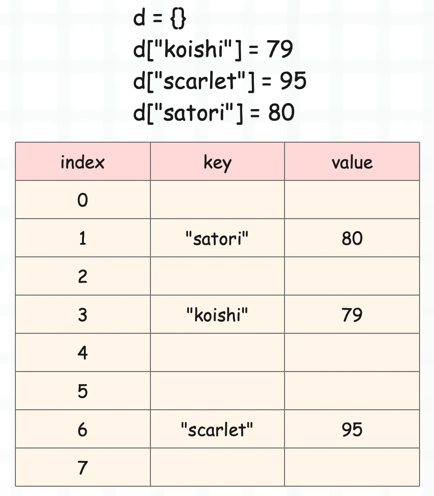
我们发现除了 key、value 之外，还有一个 index，因为哈希表本质上也是使用了索引。虽然数组在遍历的时候是个时间复杂度为 O(n) 的操作，但通过索引定位元素则是一个 O(1) 的操作，不管数组有多长，通过索引总是能瞬间定位到指定元素。
所以哈希表本质上就是一个数组，通过将 key 映射成一个数值，作为数组的索引，然后将键值对存在数组里面。至于它是怎么映射的，我们后面再谈，现在就假设是按照我们接下来说的方法映射的。
比如这里有一个能容纳 8 个元素的字典，如上图所示。我们先设置 d["koishi"]=79，那么会对 "koishi" 这个字符串进行哈希运算，得到一个哈希值，然后再让哈希值对当前的总容量进行取模，这样的话是不是能够得到一个小于 8 的数呢？假设是 3，那么就存在索引为 3 的位置。
然后 d["scarlet"]=95，按照同样的规则运算得到 6，那么就存在索引为 6 的位置；同理第三次设置 d["satori"]=80，对字符串 satori 进行哈希、取模，得到 1，那么存储在索引为 1 的位置。
同理当我们根据键来获取值的时候，比如：d["satori"]，那么同样会对字符串 "satori" 进行哈希、取模，得到索引发现是1，然后就把索引为 1 的 value 给取出来。
当然这种方式肯定存在缺陷，比如：
- 不同的 key 进行哈希、取模运算之后得到的结果一定是不同的吗？
- 在运算之后得到索引的时候，发现这个位置已经有人占了怎么办？
- 取值的时候，索引为 1，可如果索引为 1 对应的 key 和我们指定的 key 不一致怎么办？
所以哈希运算是会冲突的，如果冲突，那么 Python 底层会改变策略重新映射，直到映射出来的索引没有人用。比如我们设置一个新的键值对 d["tomoyo"]=88，可是 "tomoyo" 这个 key 映射之后得到的结果也是 1，而索引为 1 的地方已经被 key 为 "satori" 的键值对给占了，那么 Python 就会改变规则来对 "tomoyo" 重新映射，直到找到一个空位置。
但如果我们再次设置 d["satori"]=100，那么对 satori 映射得到的结果也是 1，而 key 是一致的，那么就会把对应的值进行修改。
同理，当我们获取值的时候，比如 d["tomoyo"]，那么对 key 进行映射，得到索引。但是发现该索引对应的 key 不是 "tomoyo" 而是 "satori"，于是改变规则（这个规则跟设置 key 冲突时，采用的规则是一样的），重新映射，得到新的索引，然后发现 key 是一致的，于是将值取出来。
所以从这里就已经能说明问题了，就是把 key 转换成数组的索引。可能有人问，这些键值对貌似不是连续的啊。对的，肯定不是连续的。并不是说你先存，你的索引就小、就在前面，这是由 key 进行哈希运算之后的结果决定的。
另外哈希表、或者说字典也会扩容，并且它还不是像列表那样，容量不够才扩容，而是当键值对个数达到容量的三分之二的时候就会扩容。
因为字典不可能会像列表那样，键值对之间是连续、一个一个挨在一起的。既然是哈希运算，得到的哈希值肯定是随机的，再根据哈希值映射出的索引也是随机的。那么在键值对个数达到容量三分之二的时候，计算出来的索引发生碰撞的概率会非常大，不可能等到容量不够了再去扩容，而是在键值对个数达到容量的三分之二时就要扩容，也就是申请一个更大的哈希表。
一句话总结：哈希表就是一种空间换时间的方法。
假设容量为 1024，那么就相当于数组有 1024 个位置，每个 key 都会映射成索引，找到自己的位置，将键值对存在里面。但很明显各自的位置是不固定的，肯定会空出来很多，但是无所谓，只要保证通过索引能在相应的位置找到它即可。
大量的文字会有些枯燥，我们用两张图来解释一下设置元素和获取元素的整个过程。

以上是设置元素，还是比较清晰的，果然图像是个好东西。再来看看获取元素：
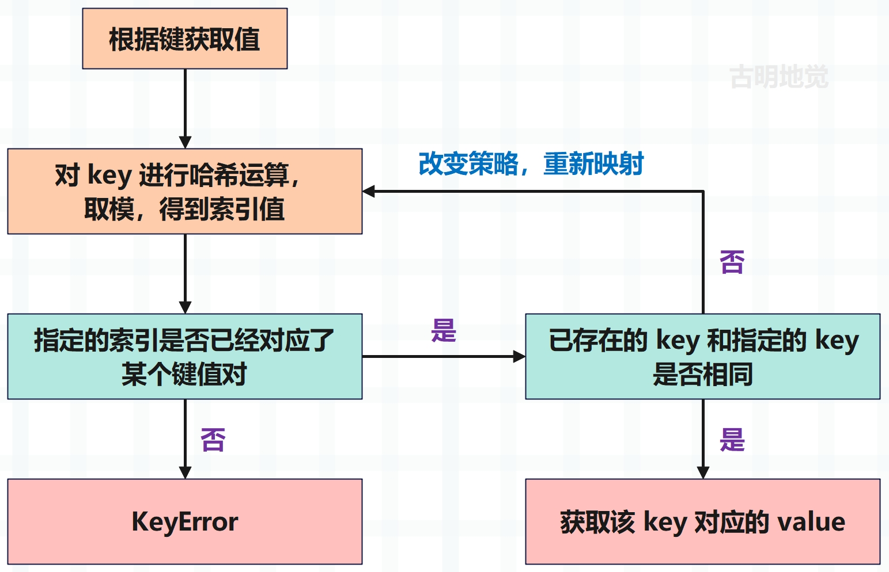
以上就是哈希表的基本原理，说白了它就是个数组。存储键值对的时候，先将 key 映射成索引，然后基于索引找到数组中的指定位置，将键值对存进去。
小结
目前介绍的正是 Python 早期所采用的哈希表，但是它有一个严重的问题，就是内存浪费严重。下一篇文章我们就来看看字典的底层结构，以及 Python 是如何对哈希表进行优化的。
欢迎大家关注我的公众号：古明地觉的编程教室。
如果觉得文章对你有所帮助，也可以请作者吃个馒头，Thanks♪(･ω･)ﾉ。
楔子
本篇文章来剖析一下字典的底层结构，看看它是怎么设计的，以及在设计的过程中都需要做哪些考量。另外字典是基于哈希表实现的，而传统的哈希表存在内存浪费的问题，那么字典又是如何优化的呢？带着这些问题，开始今天的内容。
字典的底层结构
Python 一切皆对象，字典也不例外，它在底层也由某个结构体表示。
// Include/cpython/dictobject.h
typedef struct {
PyObject_HEAD
Py_ssize_t ma_used;
uint64_t ma_version_tag;
PyDictKeysObject *ma_keys;
PyObject **ma_values;
} PyDictObject;
解释一下里面的字段的含义：
- PyObject_HEAD：对象的头部信息，里面包含了对象的引用计数和类型。
- ma_used：字典的长度，它充当了 ob_size。
- ma_version_tag：字典的版本号，对字典的每一次修改都会导致其改变。该字段主要用于字典的迭代器，以检测字典在迭代过程中是否被修改。
- ma_keys：从定义上来看它是一个指针，指向了 PyDictKeysObject。而 Python 里面的哈希表分为两种，分别是 combined table 和 split table，即结合表和分离表。如果是结合表，那么键值对全部由 ma_keys 维护，此时 ma_values 为 NULL。
- ma_values：如果是分离表，那么键由 ma_keys 维护，值由 ma_values 维护。而 ma_values 是一个二级指针，指向 PyObject * 类型的指针数组的首元素。
这里先解释一下结合表和分离表的由来。结合表的话，键和值会存在一起；分离表的话，键和值会存在不同的地方。那么问题来了，为什么要将哈希表分为两种呢？事实上，早期的哈希表只有结合表这一种，并且现在创建一个字典使用的也是结合表。
from ctypes import *
class PyObject(Structure):
_fields_ = [("ob_refcnt", c_ssize_t),
("ob_type", c_void_p)]
class PyDictObject(PyObject):
_fields_ = [("ma_used", c_ssize_t),
("ma_version_tag", c_uint64),
("ma_keys", c_void_p),
("ma_values", c_void_p)]
d = {"a": 1, "b": 2}
print(
PyDictObject.from_address(id(d)).ma_values
) # None
我们看到 ma_values 打印的结果是一个 None，证明是结合表，值不是由 ma_values 维护，而是和键一起，都由 ma_keys 负责维护。
而分离表是在 PEP-0412 中被引入的，主要是为了提高内存使用率，也就是让不同的字典共享相同的一组 key。比如自定义类的实例对象，它们默认都有自己的属性字典，如果对某个类多次实例化，那么改成分离表会更有效率。因为它们的属性名称是相同的，完全可以共享同一组 key；如果是结合表，那么每个实例的属性字典都要将相同的 key 单独保存一次，这显然是一种浪费。
from ctypes import *
class PyObject(Structure):
_fields_ = [("ob_refcnt", c_ssize_t),
("ob_type", c_void_p)]
class PyDictObject(PyObject):
_fields_ = [("ma_used", c_ssize_t),
("ma_version_tag", c_uint64),
("ma_keys", c_void_p),
("ma_values", c_void_p)]
class A:
pass
a1 = A()
a2 = A()
# 因为类型指定的是 void *，所以打印的结果是一串地址
# 但我们看到输出不为 None，说明采用的确实是分离表
print(
PyDictObject.from_address(id(a1.__dict__)).ma_values,
PyDictObject.from_address(id(a2.__dict__)).ma_values
) # 139672411587664 139672411587280
# 然后再查看 ma_keys，既然是共享同一组 key
# 那么打印的地址应该是一样的
print(
PyDictObject.from_address(id(a1.__dict__)).ma_keys,
PyDictObject.from_address(id(a2.__dict__)).ma_keys
) # 139672411702528 139672411702528
# 结果确实是一样的，不同实例对象的属性字典里面的 key 是共享的
# 因为是同一个类的实例对象，属性字典的 key 是相同的，所以没必要将同一组 key 保存多次
以上就是结合表和分离表之间的区别，只需要知道分离表是 Python 为了提高内存使用率而专门引入的即可。我们平时自己创建的字典，使用的都是结合表，因此我们的重点也将会放在结合表身上。
而结合表的话，键值都由 ma_keys 维护，它是一个指向 PyDictKeysObject 的指针，因此玄机就隐藏在这个结构体里面。
// Include/cpython/dictobject.h
typedef struct _dictkeysobject PyDictKeysObject;
// Objects/dict-common.h
struct _dictkeysobject {
// key 的引用计数，也就是 key 被多少个字典所使用
// 如果是结合表，那么该字段始终是 1，因为结合表独占一组 key
// 如果是分离表，那么该字段大于等于 1，因为分离表可以共享一组 key
Py_ssize_t dk_refcnt;
// 哈希表的大小、或者说长度，注意：dk_size 满足 2 的 n 次方
// 这样可将取模运算优化成按位与运算，也就是将 num % dk_size 优化成 num & (dk_size - 1)
Py_ssize_t dk_size;
// 哈希函数，用于计算 key 的哈希值，然后映射成索引
// 一个好的哈希函数应该尽可能少的产生冲突，并且哈希函数对哈希表的性能起着至关重要的作用
// 所以底层的哈希函数有很多种，会根据对象的种类选择最合适的一个
dict_lookup_func dk_lookup;
// 键值对数组还可以添加多少个 entry（键值对）
// 关于什么是键值对数组，以及它和哈希索引数组之间有什么区别，稍后会解释
Py_ssize_t dk_usable;
// 键值对数组里面已经添加了多少个键值对
Py_ssize_t dk_nentries;
// 哈希索引数组
char dk_indices[];
// 注：dk_indices 后面其实还有一个字段 dk_entries，只不过没有写在结构体里面
// 从字段名也可以看出，它表示键值对数组，因此它的类型就是个数组
// 然后数组里面存储的是键值对（entry），而键值对在底层由 PyDictKeyEntry 结构体实现
// 所以你可以认为 char dk_indices[] 的下面还有一个 PyDictKeyEntry dk_entries[]
};
字典的定义还是稍微有点复杂的，如果目前感到困惑，没有关系，稍后我们会一点点解释清楚。这里再来看看键值对长什么样子。
// Objects/dict-common.h
typedef struct {
Py_hash_t me_hash;
PyObject *me_key;
PyObject *me_value;
} PyDictKeyEntry;
显然 me_key 和 me_value 指向了键和值，我们之前说 Python 的变量、以及容器内部的元素都是泛型指针 PyObject *，这里也得到了证明。但是我们看到 entry 除了有键和值之外，还有一个 me_hash，它表示键对应的哈希值，这样可以避免重复计算。
至此，字典的整个底层结构就非常清晰了，我们画一张图，然后再来从头解释一下，并解答之前留下的疑问。
字典的真正实现藏在 PyDictKeysObject 中，它的内部包含两个关键数组：一个是哈希索引数组 dk_indices，另一个是键值对数组 dk_entries。
字典维护的键值对（entry）会按照先来后到的顺序保存在键值对数组中，而哈希索引数组则保存键值对在键值对数组中的索引。另外，哈希索引数组中的一个位置我们称之为一个槽，比如图中的哈希索引数组便有 8 个槽，其数量由 dk_size 字段维护。
假设我们创建一个空字典，注意：虽然字典是空的，但是容量已经有了，然后往里面插入键值对 "komeiji": 99 的时候，Python 会执行以下步骤：
- 将键值对保存在 dk_entries 中，由于初始字典是空的，所以会保存在 dk_entries 数组中索引为 0 的位置。
- 通过哈希函数计算出 "komeiji" 的哈希值，然后将哈希值映射成索引，假设是 6。
- 将 "键值对" 在 "键值对数组" 中的索引 0，保存在哈希索引数组中索引为 6 的槽里面。
然后当我们在查找键 "komeiji" 对应的值的时候，便可瞬间定位。过程如下：
- 通过哈希函数计算出 "komeiji" 的哈希值，然后映射成索引。因为在设置的时候索引是 6，所以在获取时，映射出来的索引肯定也是 6。
- 找到哈希索引数组中索引为 6 的槽，得到其保存的 0，这里的 0 对应键值对数组的索引。
- 找到键值对数组中索引为 0 的位置存储的 entry，然后判断
entry->me_key和查找的 key 是否一致，不一致则重新映射。如果一致，则取出 me_value，然后返回。
由于哈希值计算以及数组索引查找均是 O(1) 的时间复杂度，所以字典的查询速度才会这么快。
另外前面介绍哈希表的时候，为了避免牵扯太多，说得相对简化了。比如 "xxx": 80，假设 "xxx" 映射出来的索引是 2，那么键值对就直接存在索引为 2 的地方。这实际上是简化了，因为这相当于把哈希索引数组和键值对数组组合在一块了，而早期的 Python 也确实是这么做的。
但是从上面字典的结构图中我们看到，实际上是先将键值对按照先来后到的顺序存在一个数组（键值对数组）中，然后再将它在键值对数组中的索引存放在另一个数组（哈希索引数组）的某个槽里面，因为 "xxx" 映射出来的是 2，所以就存在索引为 2 的槽里面。
而在查找的时候，映射出来的索引其实是哈希索引数组的索引。然后索引为 2 的槽又存储了一个索引，这个索引是键值对数组的索引，会再根据该索引从键值对数组里面获取指定的 entry。最后比较 key 是否相同、如果相同则返回指定的 value。
所以能看出两者整体思想是基本类似的，理解起来区别不大，甚至第一种方式实现起来还更简单一些。但为什么要采用后者这种实现方式，以及这两者之间的区别，我们下面来专门分析，之所以采用后者主要是基于内存的考量。
哈希表的内存优化
在早期，哈希表并没有分成两个数组实现，而是只由一个键值对数组实现，这个数组也承担哈希索引数组的角色。

我们看到这种结构不正是我们在介绍哈希表时说的吗？键值对数组不仅负责存储 entry，同时也负责承载映射后的索引，而无需分成两个数组，这种方式似乎更简单、更直观。没错，Python 在早期确实是通过这种方式实现的哈希表，只是这种实现方式有一个弊端，就是太耗费内存了。
前面说了，基于 key 映射出的索引是随机的，所以肯定会存在索引冲突的情况，即不同的 key 映射到了同一个槽。并且随着存储的 entry 增多，冲突也会越频繁，性能也就越差。因此哈希表必须要预留一定的空间，而经过实践表明，预留的空间至少要占总容量的 1/3。换句话说，哈希表存储的 entry 的数量不能超过总容量的 2/3。
// Objects/dictobject.c
#define USABLE_FRACTION(n) (((n) << 1)/3)
宏 USABLE_FRACTION 会根据哈希表的长度，或者说容量，计算出哈希表可存储的元素个数。以长度为 8 的哈希表为例，最多可以保存 5 个键值对，超出则需要扩容，显然这存在严重的内存浪费。
所以 Python 为了节省内存，想出了一个妙招。既然只能用 2/3，那就将键值对数组的空间变为原来的 2/3，只用来存储键值对（entry），而对 key 进行映射得到的索引则由另一个数组（哈希索引数组）来承载。假设映射出的索引是 4，那么就去找哈希索引数组中索引为 4 的槽，该槽存储的便是键值对在键值对数组中的索引。
之所以这么设计，是因为键值对数组里面一个元素要占用 24 字节，而哈希索引数组在容量不超过 255 的时候，里面一个元素只占一个字节，容量不超过 65535 的时候，里面一个元素只占两个字节，其它以此类推。所以哈希索引数组里面的元素大小比键值对数组要小很多，将哈希表分成两个数组（避免键值对数组的浪费）来实现会更加节省内存。我们可以举个例子计算一下，假设有一个容量为 65535 的哈希表。
如果是通过第一种方式，只用一个数组来存储的话：
# 总共需要 1572840 字节
>>> 65535 * 24
1572840
# 除以 3, 会浪费 524280 字节
>>> 65535 * 24 // 3
524280
>>>
如果是通过第二种方式，使用两个数组来存储的话：
# 容量虽然是 65535
# 但键值对数组是容量的 2 / 3
# 然后加上哈希索引数组的大小
>>> 65535 * 24 * 2 // 3 + 65535 * 2
1179630
>>>
所以一个数组存储比两个数组存储要多用 393210 字节的内存，因此 Python 选择使用两个数组来存储。
我们再以长度为 8 的哈希表为例，画一张图对比一下，由于哈希表长度为 8，那么它最多存储 5 个键值对。

如果哈希表只使用一个键值对数组，那么基于 key 映射出的索引就是键值对数组的索引，这种方式简单直观，但内存浪费严重，因为要浪费掉 1/3 的空间。于是为了解决这个问题，哈希表选择使用两个数组实现，分别是哈希索引数组和键值对数组。
哈希索引数组的长度就是哈希表的长度，key 映射之后的索引也是哈希索引数组的索引，只不过它存储的不再是键值对，而是键值对在键值对数组中的索引。那么问题来了，明明多了一个数组，为啥内存占用反而变少了呢？很明显，由于引入了哈希索引数组，键值对数组的长度可以减少到原来的 2/3。
因为相比键值对数组，哈希索引数组的内存占用非常低，引入它需要的成本远小于避免键值对数组浪费 1/3 所带来的收益，所以使用两个数组来实现哈希表是更加合理的。
总结：
- 哈希表本质上就是个数组，只不过 Python 选择使用两个数组实现，其中哈希索引数组的长度便是哈希表的容量，而该长度由 dk_size 字段维护。
- 由于哈希表最多使用 2/3，那么就只为键值对数组申请 2/3 容量的空间。对于容量为 8 的哈希表，那么哈希索引数组的长度就是 8，键值对数组的长度就是 5。
- dk_usable 字段表示键值对数组还可以容纳的 entry 的个数，所以它的初始值也是 5。
- dk_nentries 字段表示当前已存在的 entry 的数量，假设哈希表，或者说键值对数组存储了 3 个键值对，那么 dk_nentries 就是 3。而 dk_usable 则会变成 5 - 3 等于 2，因为它表示键值对数组还可以容纳多少 entry。
咦，前面介绍 PyDictObject 的时候，看到里面有一个 ma_used 字段，表示字典的长度。那么 dk_nentries 和 ma_used 有啥区别呢，从字面意思上看，两者的含义貌似是等价的，关于这一点后续再解释。
最后就是 dk_indices 和 dk_entries，它们表示哈希索引数组和键值对数组。到此我们就把每个字段的含义又重新回顾了一遍，现在再来看是不是就清晰多了呢。
字典遍历的有序性
我们知道 Python 从 3.6 开始，字典的遍历是有序的，那么这是怎么实现的呢？
其实很简单，在存储时，虽然映射之后的索引是随机的，但键值对本身始终是按照先来后到的顺序被添加进键值对数组中。而字典在 for 循环时，会直接遍历键值对数组，所以遍历的结果是有序的。但即便如此，我们也不应该依赖此特性。
还是以之前的图为例，我们顺序写入三个键值对，key 分别是 "a"、"b"、"c"：
早期的哈希表只有一个键值对数组，而键值对在存储时本身就是无序的，那么遍历的结果自然也是无序的。对于当前来说，遍历的结果就是 "b"、"a"、"c"。
但从 3.6 开始，键值对数组中的键值对，和添加顺序是一致的。而遍历时，会直接遍历键值对数组，因此遍历的结果是有序的。对于当前来说，遍历的结果就是 "a"、"b"、"c"。
当然，如果你是 Python 的设计者，希望遍历依旧不保持有序的话，那么该怎么做呢？很简单，可以先遍历哈希索引数组，将存储的有效索引依次取出，对于当前来说就是 1、0、2。然后基于这些索引，从键值对数组中获取键值对，那么遍历的结果也是 "b"、"a"、"c"。
字典的内存大小
下面来分析一下字典占用的内存大小，首先字典和列表一样都有容量的概念，由于空间已经申请了，不管有没有使用，大小都必须算进去。而字典的容量策略相比列表要简单很多，因为大小要满足 2 的 n 次方，所以容量一定按照 8、16、32、64、······ 进行变化。
注意：字典的容量（或者说哈希表的容量）指的是内部哈希索引数组的长度，它要满足 2 的 n 次方，从而将取模运算优化成按位与运算。当哈希索引数组存储的元素（键值对数组的索引）个数达到了总长度的 2/3，同时也意味着键值对数组已经满了，那么说明字典（哈希表）该扩容了。
知道了容量规则，我们来看一下字典的内存大小怎么计算。
typedef struct {
PyObject_HEAD // 16 字节
Py_ssize_t ma_used; // 8 字节
uint64_t ma_version_tag; // 8 字节
PyDictKeysObject *ma_keys; // 8 字节
PyObject **ma_values; // 8 字节
} PyDictObject;
// 所以 PyDictObject 实例占 48 字节
struct _dictkeysobject {
Py_ssize_t dk_refcnt; // 8 字节
Py_ssize_t dk_size; // 8 字节
dict_lookup_func dk_lookup; // 8 字节
Py_ssize_t dk_usable; // 8 字节
Py_ssize_t dk_nentries; // 8 字节
char dk_indices[];
// 隐藏字段 dk_entries
};
// 如果不算哈希索引数组 dk_indices 和键值对数组 dk_entries
// 那么 PyDictKeysObject 实例占 40 个字节
然后是剩余的两个数组，一个是哈希索引数组 dk_indices，里面 1 个元素可能占 1 字节、2 字节、或 4 字节；还有一个键值对数组 dk_entries，里面一个元素占 24 字节。所以对于容量为 n 的字典来说：
- 如果 n < 256，字典大小等于 48 + 40 + n + n * 2 // 3 * 24
- 如果 256 <= n < 65536，字典大小等于 48 + 40 + n * 2 + n * 2 // 3 * 24
- 如果 n >= 65536，字典大小等于 48 + 40 + n * 4 + n * 2 // 3 * 24
所以对于一个容量为 8 的字典，它的大小就是 48 + 40 + 8 + 120 = 216。
# 字典的初始容量为 8，所以大小为 216
>>> dict().__sizeof__()
216
# 注：如果你是通过字面量的方式创建空字典，那么容量是 0
# 显然大小就是 48 字节，因为此时 ma_keys 为 NULL
>>> {}.__sizeof__()
48
那么问题来了，如果一个字典包含 78 个键值对，那么这个字典占多大内存呢？既然有 78 个键值对，那么键值对数组 dk_entries 的长度至少为 78，而它又等于哈希表容量的 2/3，所以哈希表的长度至少为 117。由于哈希表的长度满足 2 的 n 次幂，所以我们只需找到大于等于 117 的最小 2 的幂次方数即可，显然这个数是 128。
所以大小有了，包含 78 个键值对的字典所占的内存大小等于 48 + 40 + 128 + 128 * 2 // 3 * 24。
>>> 48 + 40 + 128 + 128 * 2 // 3 * 24
2256
>>> dict.fromkeys(range(78)).__sizeof__()
2256
结果没有问题，再来个复杂点的，对于包含 12345 个键值对的字典，占用多大内存呢？
>>> import math
>>> math.log2(12345 * 3 / 2)
14.1766017167513
>>> 2 ** 15
32768
计算结果表明，对于包含 12345 个键值对的字典，哈希表的长度至少为 2 的 14.17... 次方，而实际的长度显然是 2 的 15 次方，那么大小就出来了。另外注意：因为长度超过了 255，所以哈希索引数组中的一个元素占两字节。
>>> 48 + 40 + 32768 * 2 + 32768 * 2 // 3 * 24
589904
>>> dict.fromkeys(range(12345)).__sizeof__()
589904
结果和我们分析的一样，以上我们就计算出了字典的内存大小，你也可以自己创建个字典测试一下。
小结
通过研究字典的具体实现，我们可以得出以下结论：
- 字典是一种高效的映射型容器，能够以 O(1) 的时间复杂度执行查询和写入操作；
- 字典之所以这么快，是因为它由哈希表实现。但快是要付出代价的，哈希表必须保证一定的稀疏性，否则会频繁出现索引冲突，导致哈希表性能下降，因为索引映射是随机的；
- 既然哈希表要保证稀疏性，就意味着内存开销大，因为存在内存浪费。
- 但 Python 为优化内存使用，选择基于两个数组来实现哈希表，通过避免键值对数组的浪费，来减少内存占用；
- 键值对数组里的 entry 除了保存 key 和 value 之外，还保存了 key 的哈希值。
以上就是字典的底层实现，但是还没有结束，哈希表的背后还隐藏了很多细节，我们就下一篇文章再聊吧。
欢迎大家关注我的公众号：古明地觉的编程教室。
如果觉得文章对你有所帮助，也可以请作者吃个馒头，Thanks♪(･ω･)ﾉ。
通过研究字典的底层实现，我们找到了字典快速且高效的秘密，就是哈希表。而提到哈希表，必然绕不开哈希值，因为它决定了映射之后的索引。
如果想计算对象的哈希值，那么要保证对象必须是可哈希的。如果不可哈希，那么它就无法计算哈希值，自然也就无法作为字典的 key。那什么样的对象是可哈希的呢？
- 因为哈希值不能发生改变，所以对象必须是不可变对象；
- 当对象的哈希值相等时，要判断对象是否相等，所以对象必须实现 __eq__ 方法；
所以如果对象满足不可变、并且实现了 __eq__ 方法，那么它就是可哈希的，只有这样的对象才能作为字典的 key 或者集合的元素。
像整数、浮点数、字符串等内置的不可变对象都是可哈希的，可以作为字典的 key。而像列表、字典等可变对象则不是可哈希的，它们不可以作为字典的 key。然后关于元组需要单独说明，如果元组里面的元素都是可哈希的，那么该元组也是可哈希的，反之则不是。
# 键是可哈希的就行，值是否可哈希则没有要求
d = {1: 1, "xxx": [1, 2, 3], 3.14: 333}
# 列表是可变对象，因此无法哈希
try:
d = {[]: 123}
except TypeError as e:
print(e)
"""
unhashable type: 'list'
"""
# 元组也是可哈希的
d = {(1, 2, 3): 123}
# 但如果元组里面包含了不可哈希的对象
# 那么整体也会变成不可哈希对象
try:
d = {(1, 2, 3, []): 123}
except TypeError as e:
print(e)
"""
unhashable type: 'list'
"""
而我们自定义类的实例对象也是可哈希的，并且哈希值是通过对象的地址计算得到的。
class Some:
pass
s1 = Some()
s2 = Some()
print(hash(s1), hash(s2))
"""
8744065697364 8744065697355
"""
当然 Python 也支持我们重写哈希函数，比如：
class Some:
def __hash__(self):
return 123
s1 = Some()
s2 = Some()
print(hash(s1), hash(s2))
"""
123 123
"""
print({s1: 1, s2: 2})
"""
{<__main__.Some object at 0x0000029C0ED045E0>: 1,
<__main__.Some object at 0x0000029C5E116F20>: 2}
"""
因为哈希值一样，映射出来的索引自然也是相同的，所以在作为字典的 key 时，会发生冲突。由于类的实例对象之间默认不相等，因此会改变规则重新映射，找一个可以写入的位置。
如果两个对象相等，它们的哈希值一定也相等。
注意：我们自定义类的实例对象默认都是可哈希的，但如果类里面重写了 __eq__，并且没有重写 __hash__ 的话，那么这个类的实例对象就不可哈希了。
class Some:
def __eq__(self, other):
return True
try:
hash(Some())
except TypeError as e:
print(e)
"""
unhashable type: 'Some'
"""
为什么会有这种现象呢？首先上面说了，在没有重写 __hash__ 方法的时候，哈希值默认是根据对象的地址计算得到的。而且对象如果相等，那么哈希值一定是一样的，并且不可变。
但我们重写了 __eq__，相当于控制了 == 操作符的比较结果，两个对象是否相等就由我们来控制了，可哈希值却还是根据地址计算得到的。因为两个对象地址不同，所以哈希值不同，但是对象却可以相等、又可以不相等，这就导致了矛盾。所以在重写了 __eq__、但是没有重写 __hash__ 的情况下，其实例对象便不可哈希了。
但如果重写了 __hash__，那么哈希值就不再通过地址计算了，因此此时是可以哈希的。
class Some:
def __eq__(self, other):
return True
def __hash__(self):
return 123
s1 = Some()
s2 = Some()
print({s1: 1, s2: 2})
"""
{<__main__.Some object at 0x00000202D7D945E0>: 2}
"""
我们看到字典里面只有一个元素，因为重写了 __hash__ 方法之后，计算得到的哈希值都是一样的。如果没有重写 __eq__，实例对象之间默认是不相等的，因此哈希值一样，但是对象不相等，那么会重新映射。但我们重写了 __eq__，返回的结果是 True，所以 Python 认为对象是相等的，那么由于 key 的不重复性，只会保留一个键值对。
但需要注意的是，在比较相等时，会先比较地址是否一样，如果地址一样，那么哈希表会直接认为相等。
class Some:
def __eq__(self, other):
return False
def __hash__(self):
return 123
def __repr__(self):
return "Some Instance"
s1 = Some()
# 我们看到 s1 == s1 为 False
print(s1 == s1)
"""
False
"""
# 但是只保留了一个 key，咦，两个 key 不相等，难道不应该重新映射吗？
# 原因就是刚才说的，在比较是否相等之前，会先判断地址是否一样
# 如果地址一样，那么认为是同一个 key，直接判定相等
print({s1: 1, s1: 2})
"""
{Some Instance: 2}
"""
s2 = Some()
# 此时会保留两个 key，因为 s1 和 s2 地址不同，s1 == s2 也为 False
# 所以哈希表认为这是两个不同的 key
# 但由于哈希值一样，那么映射出来的索引也一样
# 因此写入 s2: 2 时相当于发生了索引冲突，于是会重新映射
# 但总之这两个 key 都会被保留
print({s1: 1, s2: 2})
"""
{Some Instance: 1, Some Instance: 2}
"""
同样的，我们再来看一个 Python 字典的例子。
d = {1: 123}
d[1.0] = 234
print(d) # {1: 234}
d[True] = 345
print(d) # {1: 345}
天哪噜，这是咋回事？首先整数在计算哈希值的时候，得到的结果就是其本身；而浮点数显然不是，但如果浮点数的小数点后面是 0，那么它和整数是等价的。
因此 1 和 1.0 的哈希值一样，并且两者也是相等的，因此它们被视为同一个 key，所以相当于是更新。同理 True 也一样，因为 bool 继承自 int，所以它等价于 1，比如：9 + True = 10。因此 True 和 1 相等，并且哈希值也相等，那么索引 d[True] = 345 同样相当于更新。
但是问题来了，值更新了我们可以理解，字典里面只有一个元素也可以理解，可为什么 key 一直是 1 呢？理论上最终结果应该是 True 才对啊。其实这算是 Python 偷了个懒吧（开个玩笑），因为 key 的哈希值是一样的，并且也相等，所以只会更新 value，而不会修改 key。
为了加深理解，我们再举个例子：
d = {"高老师": 666}
class A:
def __hash__(self):
return hash("高老师")
def __eq__(self, other):
return True
# A() == "高老师" 为 True，两者哈希值也一样
# 所以相当于对 key 进行更新
d[A()] = 777
print(d) # {'高老师': 777}
print(d["高老师"]) # 777
print(d[A()]) # 777
只要两个对象相等，并且哈希值相等，那么对于哈希表来说，它们就是同一个 key。
另外我们反复在提哈希值，而哈希值是通过哈希函数运算得到的，一个理想的哈希函数要保证哈希值尽量均匀地分布于整个哈希空间中，越是相近的值，其哈希值差别应该越大。还是那句话，哈希函数对哈希表的好坏起着至关重要的作用。
以上我们就详细地聊了聊对象的哈希值，如果对象可以计算哈希值，那么它一定实现了 __hash__ 方法，而内置的不可变对象都实现了。另外内置的哈希函数 hash，本质上也是调用了 __hash__。
print(hash("hello"))
print("hello".__hash__())
"""
-7465190714692855315
-7465190714692855315
"""
下一篇文章来聊一聊索引冲突是怎么解决的？
欢迎大家关注我的公众号：古明地觉的编程教室。
如果觉得文章对你有所帮助，也可以请作者吃个馒头，Thanks♪(･ω･)ﾉ。
楔子
两个对象的哈希值相等，那么映射出的索引肯定相同。而如果哈希值不相等，映射出的索引也有可能相同，因为与哈希值空间相比，哈希表的槽位是非常有限的。如果不同的对象在经过映射之后，生成的索引相同，或者说它们被映射到了同一个槽，那么便发生了索引冲突。

解决索引冲突的常用方法有两种：分离链接法和开放寻址法。
分离链接法比较简单，如果有多个键值对映射到同一槽位，那么就用链表将它们串起来。然后是开放寻址法，这也是 Python 使用的方法，我们详细介绍一下。
开放寻址法
首先将 key 映射成索引，但如果发现该索引对应的哈希槽被占了，那么就尝试另一个。

new_key 被映射到了索引为 5 的槽，但是该槽已经存储了键值对数组的索引，即该槽被占了。如果是分离链接法，那么会使用链表将两个 entry 串起来，但开放寻址法则是选择一个新的槽，也就是重新找个坑。
那么问题来了，新的槽要怎么找呢？一般来说，会在首槽的基础上增加一个偏移量，得到新的槽，如果还冲突，那么继续增加偏移量，直到找到一个可用的槽。总的来说就是一个不断探测的过程，每一次探测都会尝试增加偏移量。
所以新的问题又产生了，每次增加的偏移量是多少呢？其实这个问题取决于具体实现，如果偏移量是线性增加的，我们称之为线性探测；如果偏移量是平方增加的，我们称之为平方探测。
但不管是线性探测，还是平方探测，其实都不够好。因为偏移量始终是以一种固定的模式增加，这就导致映射到同一槽位的两个 key 的探测序列是相同的。

比如这里的 key1 和 key2，它们的哈希值不同，但都映射到了索引为 2 的槽，这是完全正常的，因为哈希表的槽位有限。而由于偏移量的增加方式是固定的，比如这里每次都增加 2，再加上首槽相同，因此它们的探测序列也相同，显然这会导致后续出现多次冲突。
所以 Python 对此进行了优化，探测函数在发现索引冲突时，不会简单地增加一个偏移量，而是会参考对象的哈希值，计算下一个候选位置，这就大大降低了冲突的可能性。
Python 的这种做法被称为迭代探测，当然迭代探测也属于开放寻址法的一种。所以当出现索引冲突时，Python 并不是简简单单地加上一个偏移量，而是使用专门设计的探测函数进行二次探查，也就是之前说的改变规则、重新映射，然后在函数内部会参考对象的哈希值来计算出一个新的索引。

在 dictobject.c 文件开头有着大量的注释，对字典进行了全局性的概括，当然具体细节我们都会详细说明。
探测函数
当存储键值对时，要将 key 映射成索引，这个索引就是哈希索引数组的索引。至于具体的映射过程由探测函数负责，即 PyDictKeysObject 结构体内部的 dk_lookup 字段。
Python 为哈希表搜索提供了多种探测函数：
- lookdict_unicode：专门针对 key 为字符串的 entry。
- lookdict_index：专门针对 key 为整数的 entry。
- lookdict：通用逻辑，可以把 lookdict_unicode、lookdict_index 看成 lookdict 的特殊实现，只不过 key 是整数和字符串的场景非常常见，因此为其单独实现了一个函数。
我们这里重点看一下 lookdict 的函数实现，不过在介绍之前，先来看几个宏。
// Objects/dictobject.c
// 获取哈希表的长度，或者说哈希索引数组的长度
#define DK_SIZE(dk) ((dk)->dk_size)
// 哈希表的长度减 1，将 key 的哈希值和它按位与，便可将 key 映射成索引
// 因为 dk_size 满足 2 的 n 次方，所以 hash % dk_size 等价于 hash & (dk_size - 1)
#define DK_MASK(dk) (((dk)->dk_size)-1)
// 获取哈希索引数组中每个元素的大小，数组的长度不同，每个元素的大小不同
// dk_size <= 255，每个元素 1 字节
// 256 <= dk_size <= 65535，每个元素 2 字节
// 65536 <= dk_size <= 4294967295，每个元素 4 字节
// dk_size >= 4294967296，每个元素 8 字节
// 由于字典的键值对个数基本不会超过 4294967295，所以我们认为元素的大小就是 1、2 或者 4 字节
#define DK_IXSIZE(dk) \
(DK_SIZE(dk) <= 0xff ? \
1 : DK_SIZE(dk) <= 0xffff ? \
2 : DK_SIZE(dk) <= 0xffffffff ? \
4 : sizeof(int64_t))
// 获取紧跟在 PyDictKeysObject 结构体后面的键值对数组
// 这个和前面介绍字符串时，获取 PyASCIIObject 结构体后面的字符数组是类似的
// 主要是利用 C 语言指针的技巧（甚至都不能算技巧），这里再来详细介绍一下
// 假设有一个 int *a，那么 a + 3 和 a[3] 是等价的，都会向后偏移 3 个 int，即 12 字节
// 那么问题来了，对于任意类型的指针 T *p，如果想向后偏移 n 个字节，该怎么做呢？
// 很简单，将 p 加上 n / sizeof(T) 即可，但问题是 n / sizeof(T) 不一定是个整数啊
// 因此我们可以将指针转成 int8_t *，然后再加上 n，这样就会偏移 sizeof(int8_t) * n 个字节，即 n 个字节
// 比如 ((int8_t *)p) + n 或者 ((int8_t *)p)[n]
// 然后再来看 DK_ENTRIES 这个宏的逻辑，由于键值对数组紧跟在哈希索引数组后面
// 所以通过 (dk)->dk_indices 获取哈希索引数组，然后转成 int8_t * 类型
// 而 DK_SIZE(dk) * DK_IXSIZE(dk) 显然是哈希索引数组所占的内存大小
// 然后让 (int8_t*)((dk)->dk_indices) 向后偏移这些字节，不就定位到键值对数组的首元素了吗
#define DK_ENTRIES(dk) \
((PyDictKeyEntry*)(&((int8_t*)((dk)->dk_indices))[DK_SIZE(dk) * DK_IXSIZE(dk)]))
// Objects/dict-common.h
#define DKIX_EMPTY (-1)
#define DKIX_DUMMY (-2) /* Used internally */
#define DKIX_ERROR (-3)
以上就是常用的几个宏，然后来看探测函数 lookdict 的逻辑。
// Objects/dictobject.c
#define PERTURB_SHIFT 5
// 基于哈希索引数组的索引，获取指定的哈希槽里面存储的键值对数组的索引
static inline Py_ssize_t
dictkeys_get_index(PyDictKeysObject *keys, Py_ssize_t i)
{
// 哈希表的长度
Py_ssize_t s = DK_SIZE(keys);
// 键值对数组的索引
Py_ssize_t ix;
// 如果哈希表的长度小于 1 << 8，哈希索引数组的每个元素占 1 字节
if (s <= 0xff) {
int8_t *indices = (int8_t*)(keys->dk_indices);
ix = indices[i];
}
// 如果哈希表的长度小于 1 << 16，哈希索引数组的每个元素占 2 字节
// 指针类型要转成 int16_t *，这样获取元素时会获取两个字节
else if (s <= 0xffff) {
int16_t *indices = (int16_t*)(keys->dk_indices);
ix = indices[i];
}
// 如果哈希表的长度大于等于 1 << 32，哈希索引数组的每个元素占 8 字节（no way）
#if SIZEOF_VOID_P > 4
else if (s > 0xffffffff) {
int64_t *indices = (int64_t*)(keys->dk_indices);
ix = indices[i];
}
#endif
// 否则哈希索引数组的每个元素占 4 字节
else {
int32_t *indices = (int32_t*)(keys->dk_indices);
ix = indices[i];
}
assert(ix >= DKIX_DUMMY);
// 返回键值对数组的索引
return ix;
}
// 探测函数
static Py_ssize_t _Py_HOT_FUNCTION
lookdict(PyDictObject *mp, PyObject *key,
Py_hash_t hash, PyObject **value_addr)
{
// 将 key 映射成索引，这个索引就是哈希索引数组的索引
/* 参数 mp：指向字典的指针
* 参数 key：指向键的指针
* 参数 hash：键的哈希值
* 参数 value_addr：值的二级指针
*/
size_t i, mask, perturb;
PyDictKeysObject *dk;
PyDictKeyEntry *ep0;
top:
// 指向 PyDictKeysObject 对象
dk = mp->ma_keys;
// 获取 PyDictKeysObject 内部的 dk_entries，即键值对数组
ep0 = DK_ENTRIES(dk);
// 哈希表的长度减 1
mask = DK_MASK(dk);
// perturb，初始值等于参数 hash，即 key 的哈希值
perturb = hash;
// 将哈希值和 mask 按位与，计算出哈希索引数组的索引
i = (size_t)hash & mask;
for (;;) {
// 基于哈希索引数组的索引，从指定的哈希槽中获取键值对数组的索引
Py_ssize_t ix = dictkeys_get_index(dk, i);
// 哈希索引数组里面的元素初始为 -1，如果 ix == -1
// 证明当前 key 映射出的哈希槽，还没有存储键值对数组的某个索引
// 这就意味着当前要查找的 key 不存在，此时直接返回 -1 即可
if (ix == DKIX_EMPTY) {
*value_addr = NULL;
return ix;
}
// 如果 ix >= 0，说明确实存储了一个合法的键值对数组的索引
if (ix >= 0) {
// ep0 是键值对数组，基于索引 ix 获取里面的键值对
PyDictKeyEntry *ep = &ep0[ix];
assert(ep->me_key != NULL);
// ep->me_key 和变量 key 都是指针
// 如果这两者相等，说明指向了同一个对象（字符串），显然查找的 key 已在字典中
if (ep->me_key == key) {
// 该函数不光要返回索引，还要返回 value，但 C 是单返回值语言，怎么办呢？
// 只需要在调用函数时传个指针过来即可，会在函数内部进行修改
// 由于 Python 的变量、容器存储的元素本身就是指针，所以 value_addr 是个二级指针
*value_addr = ep->me_value;
// 返回键值对数组的索引
return ix;
}
// 如果 ep->me_key != key，说明两者指向的不是同一个对象
// 那么就比较两个对象本身以及哈希值是否相等，如果相等，也表示 key 已存在
if (ep->me_hash == hash) { // 先保证哈希值相等
PyObject *startkey = ep->me_key;
Py_INCREF(startkey);
// cmp 大于 0 说明比较结果为真，等于 0 说明比较结果为假，小于 0 说明比较时出现错误
int cmp = PyObject_RichCompareBool(startkey, key, Py_EQ);
Py_DECREF(startkey);
if (cmp < 0) {
*value_addr = NULL;
return DKIX_ERROR;
}
// 可能有人觉得这里的 if 是不是有点多余，这肯定百分百成立啊
// 其实这一步主要是为了检测字典是否被修改（不用关注）
if (dk == mp->ma_keys && ep->me_key == startkey) {
// 如果 cmp > 0，说明两个对象相等，那么修改 *value_addr，返回 ix
if (cmp > 0) {
*value_addr = ep->me_value;
return ix;
}
}
else {
// 字典如果被修改，那么重头来，这里不用关注
goto top;
}
}
}
// 走到这里说明 ix 是合法的，但是对应的 entry->me_key 和当前要查找的 key 不相等
// 显然出现了索引冲突，于是将哈希值右移 5 位
perturb >>= PERTURB_SHIFT;
// 然后加上 i*5 + 1，并重新和 mask 按位与，得到新的哈希索引数组的索引
// 也就是之前说的，改变规则、重新映射
i = (i*5 + perturb + 1) & mask;
}
Py_UNREACHABLE();
}
以上就是 lookdict 函数的逻辑，至于 lookdict_index 和 lookdict_unicode 与之是类似的。
我们将逻辑再描述一遍，首先 perturb 初始等于 key 的哈希值，mask 等于哈希表的长度减一，然后执行 perturb & mask 便可得到一个索引。这个过程就是我们说的索引映射，映射出的索引便是哈希索引数组的索引，然后该索引对应的哈希槽又存储了一个索引，这个索引是键值对数组的索引。

哈希索引数组里面的一个位置我们称之为一个槽，如果映射出来的索引对应的哈希槽中存储的键值对数组的索引小于 0，说明该 key 对应的键值对还没有被存储过，那么直接返回初始值 -1 即可。
如果存储的键值对数组的索引（源码中的 ix）大于等于 0，说明已经存储了一个键值对，它的 key 和查找的 key 映射出的索引是相同的。然后比较 key 是否相等，如果相等，说明已经找到了，那么直接返回 ix 即可。如果 key 不相等，说明出现索引冲突了，那么要改变策略，重新映射。
perturb >>= PERTURB_SHIFT;
i = mask & (i*5 + perturb + 1);
变量 i 便是映射出的哈希索引数组的索引，但发生冲突了，于是将 perturb 右移 5 位，然后加上 perturb + i * 5 + 1，再和 mask 按位与计算出新的 i。至于为什么要选择这种做法，这是 Python 官方经过多次实践得出来的结论。
当 lookdict 执行完之后，外界就拿到了指定的 key 对应的键值对数组的索引，并且也能拿到 key 对应的 value（key 若不存在就是 NULL）。但是还没结束，我们看到 lookdict 返回的是变量 ix，而变量 i 才是我们需要的。
变量 i 表示槽的索引，变量 ix 表示该槽存储的键值对数组的索引。由于我们是要寻找指定的槽，那么返回的应该是槽的位置、也就是变量 i 才对啊，为啥要返回变量 ix 呢？别急，往下看。
#define DKIX_EMPTY (-1)
初始状态下，槽存储的都是 -1，表示当前槽是可用的。如果存储的索引大于等于 0，则表示该槽已经被占用了，当 key 不相等时会改变规则重新映射。总之最终的结果是：
- 如果 key 存在，那么返回的 ix 就是该 key 对应的键值对在键值对数组中的索引，此时 ix 大于等于 0；
- 如果 key 不存在，那么返回的 ix 就是哈希槽的初始值 -1。
所以 lookdict 函数只是告诉我们当前 key 在哈希表中是否存在，如果要获取槽的索引，即 lookdict 里面的变量 i，那么还需要另外两个函数。
- find_empty_slot：如果 lookdict 返回的 ix 小于 0，说明 key 不存在，那么调用该函数返回槽的索引。
- lookdict_index：如果 lookdict 返回的 ix 大于等于 0，说明 key 存在，那么调用该函数返回槽的索引。
所以这两个函数做的事情是一样的，都是返回槽的索引，我们看一下具体实现。
// Objects/dictobject.c
static Py_ssize_t
find_empty_slot(PyDictKeysObject *keys, Py_hash_t hash)
{
assert(keys != NULL);
const size_t mask = DK_MASK(keys);
// 获取槽的索引 i
size_t i = hash & mask;
// 获取槽存储的索引 ix
Py_ssize_t ix = dictkeys_get_index(keys, i);
// 不停映射，直到 ix 小于 0
// 因为调用该函数时已经说明 key 不存在了
// 所以最终一定会映射到一个空槽
for (size_t perturb = hash; ix >= 0;) {
perturb >>= PERTURB_SHIFT;
// 映射的逻辑是相同的
i = (i*5 + perturb + 1) & mask;
ix = dictkeys_get_index(keys, i);
}
// 当 ix 小于 0 时，便找到了槽的索引
return i;
}
static Py_ssize_t
lookdict_index(PyDictKeysObject *k, Py_hash_t hash, Py_ssize_t index)
{
size_t mask = DK_MASK(k);
size_t perturb = (size_t)hash;
size_t i = (size_t)hash & mask;
for (;;) {
// 基于槽的索引 i，获取槽存储的索引 ix
Py_ssize_t ix = dictkeys_get_index(k, i);
// 参数 index 就是 lookdict 函数返回的 ix
// 如果 ix 和 index 是相等的，说明此时的 i 就是要获取的槽的索引
if (ix == index) {
return i;
}
if (ix == DKIX_EMPTY) {
return DKIX_EMPTY;
}
// 整个映射逻辑都是一样的
// 因为在 lookdict 函数中只返回了 ix，即参数 index
// 所以要按照相同的规则再映射一次，如果映射出的 ix 和 index 相等
// 那么我们就找到了槽的索引 i，并且索引为 i 的槽存储的就是 index
perturb >>= PERTURB_SHIFT;
i = mask & (i*5 + perturb + 1);
}
Py_UNREACHABLE();
}
所以我们说的探测函数应该是 lookdict 和 find_empty_slot、lookdict_index 的组合。
- lookdict 负责返回槽存储的索引，用于判断 key 是否存在。
- find_empty_slot、lookdict_index 则负责返回槽的索引，即 key 最终被映射到了哪一个槽。
另外还有一点，我们之前说索引冲突时，会执行探测函数计算新的存储位置。其实不管有没有发生冲突，即使存储键值对的时候哈希表是空的，也要执行探测函数，毕竟探测函数的目的就是基于哈希值映射出一个合适的槽。如果探测函数执行的时候发现索引冲突了，也就是槽里的索引 ix >= 0，并且 key 还不相等，那么会改变规则重新映射。
因此在存储某个键值对时，无论索引冲突多少次，探测函数只会执行一次。在探测函数里面，会不断尝试解决冲突，直到映射出一个可用的槽。
小结
以上就是索引映射的具体逻辑，以及出现冲突是怎么解决的。就是先用哈希函数计算出 key 的哈希值，然后作为参数传递到探测函数中。在探测函数里面，会将哈希值和 mask 按位与，得到索引。如果索引冲突了，那么会改变规则，这里的规则如下：
// 将哈希值右移 PERTURB_SHIFT 个位
perturb >>= PERTURB_SHIFT;
// 然后将哈希值加上 i*5 + 1，这个 i 就是当前冲突的索引
// 运算之后的结果再和 mask 按位与，得到一个新的 i
// 然后判断变量 i 对应的槽是否可用，不可用则重复当前逻辑，直到出现一个可用的槽
i = (i*5 + perturb + 1) & mask;
所以 Python 在索引冲突时，并不像线性探测和平方探测那样，简单地加一个固定的偏移量，而是参考对象的哈希值计算出一个新的索引。
欢迎大家关注我的公众号：古明地觉的编程教室。
如果觉得文章对你有所帮助，也可以请作者吃个馒头，Thanks♪(･ω･)ﾉ。
哈希表能直接删除元素吗
通过前面的学习，我们知道哈希表这种数据结构的逻辑是先通过哈希函数计算出键（key）的哈希值，然后将哈希值传递到探测函数中，映射成一个索引，最终通过索引去访问连续的内存区域。而哈希表这种数据结构，最终目的就是加速键的搜索过程。
但索引会存在冲突，并且键值对数量越多，映射出的索引出现冲突的概率越高。而如果冲突了，就改变规则重新映射，这种做法叫做开放寻址法。当发生冲突时，在探测函数内部会参考哈希值以及冲突的索引，计算下一个候选位置，并判断是否可用。如果不可用，会继续重复此过程，直到找到一个可用的位置。
通过多次探测，会经过多个位置，我们认为这些位置就形成了一个冲突探测链（探测序列），下面举例说明。
为了描述方便，我们后续偶尔会用 dk_indices 表示哈希索引数组、用 dk_entries 表示键值对数组、用 entry 表示键值对（包含两个字段：me_key 和 me_value，分别表示键和值）。当然在源码中，它们也是这个名字。
key 映射之后的索引是哈希索引数组的索引，我们记作 i，该索引对应的哈希槽中又存储了一个索引（entry 在键值对数组中的索引），我们记作 ix。那么 ix = dk_indices[i]，对应的 entry = dk_entries[ix]。
比如插入一个 key 等于 "satori" 的键值对，它映射到了索引为 a 的槽，但是该槽已经被占用了，那么 dk_entries[dk_indices[a]] 便是使用该槽的 entry，但它的 key 不等于 "satori"，说明出现了索引冲突。于是重新映射，映射到索引为 b 的槽，发现依旧不行。那么只能再次映射，映射到索引为 c 的槽，发现该槽存储的索引是 -1，说明该槽还没有人用，于是将键值对追加到 dk_entries 中，并把它在 dk_entries 中的索引存在该槽中。
那么经过以上流程，a -> b -> c 便形成了一条冲突探测链，同理我们查找的时候也会按照这个顺序进行查找。
显然上面这些东西，现在理解起来已经没什么难度了，我们基于 key 获取 value 时也是这个过程。
当执行 d["satori"] 时，肯定会先映射到索引为 a 的槽，但 dk_entries[dk_indices[a]].me_key 不等于字符串 "satori"，于是重新映射。然后映射到索引为 b 的槽，发现还不相等，再映射到索引为 c 的槽，发现对应的键值对的 key 等于 "satori"，于是就把值取出来了。
显然以上符合我们的预期，但是，我要说但是了。如果我们把索引为 b 的槽对应的 entry 删掉呢？那么老规矩，映射成索引，先走到索引为 a 的槽，但是发现坑被占，于是又走到索引为 b 的槽，结果发现居然没有 entry，那么直接就报出了一个 KeyError。
所以继续寻找的前提是，哈希槽一定存储了某个 entry 在键值对数组中的索引，并且该 entry 的 key 和指定的 key 不相等。但如果发现没有 entry，直接 KeyError。
然而 "satori" 这个 key 确实是存在的，因此这种情况我们称之为探测链断裂。本来应该走到位置 c 的，但是由于位置 b 没有对应 entry，导致探测函数在位置 b 就停止了。
因此我们发现，当一个 entry 只要位于任何一条探测链当中，在删除时都不能执行真正意义上的删除，而是要进行伪删除。那什么是伪删除呢？别着急，先往下看。
哈希槽的几种状态
哈希槽有以下几种状态：
- Unused；
- Active；
- Dummy；
来解释一下它们的含义。
// Objects/dict-common.h
#define DKIX_EMPTY (-1)
#define DKIX_DUMMY (-2) /* Used internally */
#define DKIX_ERROR (-3)
上面几个宏非常重要，当然主要是前两个宏。
Unused 态
如果没有 key 映射到指定的哈希槽，那么该哈希槽存储的索引就是 -1，即 DKIX_EMPTY，表示该槽尚未被使用，那么状态便是 Unused 态。比如一个刚初始化的哈希表，它的哈希索引数组存储的便都是 -1。
Active 态
如果某个 key 映射到了指定的哈希槽，那么该槽便会存储对应 entry 在键值对数组中的索引，这个索引一定是大于等于 0 的，此时该槽就从 Unused 态变成了 Active 态。
后续如果又有 key 映射到了该槽，那么看它和已存在的 entry 的 key，即 entry->me_key 是否相等。如果不相等，那么要改变规则重新映射；如果相等，那么便找到了指定的 entry，此时便可以更新或返回 entry->me_value。
Dummy 态
假设 key="abc" 映射到了索引为 i 的哈希槽，该槽存储了对应的 entry 在键值对数组中的索引 ix，这时如果将 key="abc" 的键值对给删掉，那么索引为 i 的哈希槽存储的值会变成多少呢？
可能有人觉得，键值对都删掉了，那么哈希槽也不用再存储它的索引了，应该会重置为 -1 吧。答案是不对的，原因就是我们刚才说的，这么做会导致探测链断裂。
当 entry 被删掉之后，哈希槽存储的值会变成 -2，即 DKIX_DUMMY，表示该槽之前存储过某个 entry 在键值对数组中的索引，但是该 entry 被删除了。注：删除 entry 也不是直接将它从键值对数组中删掉，而是将它的 me_key 和 me_value 字段设置为 NULL。
图中的 dk_indices 中有一个槽存储的是 -2，但很明显之前它存储的应该是 1，只是后续 dk_entries 中索引为 1 的 entry 被删除了。而删除一个 entry，会将它的 me_key 和 me_value 设置为 NULL，并将哈希槽存储的索引设置为 -2，这便是上面提到的伪删除技术。
所以一个哈希槽有三种状态，我们记哈希槽存储的索引为 ix。
- 1）如果 ix == -1，说明该槽处于 Unused 态，还没有存储任何一个 entry 在键值对数组中的索引。
- 当添加一个 entry 并且 key 映射到了该槽，那么直接将 entry 追加到键值对数组，并让该槽保存它在键值对数组中的索引。
- 当基于 key 获取 value 并且 key 映射到了该槽，那么会 KeyError。
- 2）如果 ix >= 0，说明该槽处于 Active 态，已经保存了某个 entry 在键值对数组中的索引。
- 当添加一个 entry 并且 key 映射到了该槽，那么看已存在的 entry 的 key 和要添加的 entry 的 key 是否相等。如果不相等，索引冲突，要重新映射。如果相等，那么直接更新 value。
- 当基于 key 获取 value 并且 key 映射到了该槽，那么看已存在的 entry 的 key 和要搜索的 key 是否相等。如果不相等，索引冲突，要重新映射。如果相等，那么返回 entry 的 value。
- 3）如果 ix == -2，说明该槽处于 Dummy 态，之前存储了某个 entry 在键值对数组中的索引，但之后该 entry 被删除了。
- 当添加一个 entry 并且 key 映射到了该槽，那么直接将 entry 追加到键值对数组，并让该槽保存它在键值对数组中的索引。
- 当基于 key 获取 value 并且 key 映射到了该槽，发现处于 Dummy 态，会明白虽然当前的槽是无效的，但它不是探测链的终点，所以不会报错，而是会继续搜索，这样就保证了探测链的连续性。至于报错，是发现映射出的哈希槽处于 Unused 态，没有存储任何一个 entry 的索引，这就说明 key 对应的 entry 不存在，此时才会 KeyError。
以上就是哈希槽的三种状态，它们之间可以进行转换，但 Unused 态只能转换为 Active 态；Active 态只能转换为 Dummy 态；Dummy 态只能转换为 Active 态。

如果哈希槽存储的 ix == DKIX_EMPTY，那么它处于 Unused 态。如果后续存储了 entry 在键值对数组中的索引，那么 ix >= 0，此时哈希槽会从 Unused 态转换为 Active 态。如果哈希槽存储的索引对应的 entry 被删除，那么 ix 会变成 DKIX_DUMMY，此时哈希槽会从 Active 态转换为 Dummy 态。
那么问题来了，Dummy 态转换为 Active 态，你能猜到会在什么时候发生吗？
很容易想到，假设新来了一个 entry，它正好撞上了 Dummy 态的哈希槽，那么该槽会从 Dummy 态转为 Active 态。
总结：假设新增一个 entry，它的 key 映射到了索引为 i 的槽，该槽存储的索引为 ix。
- 如果 ix == -1，说明一上来就有位置可用，那么直接将 entry 追加到 dk_entries 中，并把它在 dk_entries 中的索引赋值给 dk_indices[i]。也就是说，Python 默认不关心是否有 Dummy 态的哈希槽。
- 如果 ix >= 0，说明该槽已经有人用了，那么比较 dk_entries[ix].me_key 和要插入的 entry 的 key 是否相等，如果相等，那么更新键值对，不相等则重新映射。
- 如果 ix == -2，说明该槽之前被使用了，但使用它的 entry 后续又被删除了（伪删除，内存还在）。此时会复用该哈希槽，不过被伪删除的旧 entry 不会被复用，新增的 entry 依旧会追加到 dk_entries 中，并把它在 dk_entries 中的索引赋值给 dk_indices[i]。

还是这张图，但做了一些修改。图中索引为 5 的哈希槽存储的索引 ix 等于 4，但它经历了以下几个过程。
- dk_indices[5] 初始为 -1，即 DKIX_EMPTY，此时处于 Unused 态。
- 来了一个 entry，映射到了索引为 5 的槽，发现该槽可用，于是将 dk_indices[5] 修改为 1（它在 dk_entries 中的索引），此时哈希槽变成 Active 态。
- 映射到索引为 5 的哈希槽的 entry 被删除，于是将 dk_indices[5] 修改为 DKIX_DUMMY，即 -2，并将 dk_entries[1] 的 me_key 和 me_value 设置为 NULL，此时哈希槽变成 Dummy 态。
- 后续又来了一个 entry，也映射到了索引为 5 的哈希槽，发现 dk_indices[5] 等于 -2，处于 Dummy 态。于是将新的 entry 追加到 dk_entries 中，并且在 dk_entries 中的索引为 4，然后再将 dk_indices[5] 修改为 4，此时哈希槽再次变成 Active 态。
那么问题来了，被删除的旧 entry 怎么办？显然会留在那里，它是无法被复用的，当它被删除的那一刻，就和哈希索引数组失去了联系，因为对应的哈希槽存储的值被修改成了 -2。即使后续有新的 entry 映射到了同一个槽，它也不知道该槽在存储 -2 之前存储了什么，所以只能选择追加。
而那些被删除的旧 entry 会在哈希表执行扩缩容的时候被处理，比如哈希表满了，会申请新的存储单元，然后将处于 Active 态的哈希槽对应的 entry 搬过去，其它的则直接丢弃。
哈希表删除元素源码解析
下面我们通过源码，来感受一下字典（哈希表）是如何删除元素的。字典有一个 pop 方法，可以基于 key 弹出指定的 entry，我们就来看一下它的源码实现。
// Objects/dictobject.c
#define DICT_POP_METHODDEF \
{"pop", (PyCFunction)(void(*)(void))dict_pop, METH_FASTCALL, dict_pop__doc__},
static PyObject *
dict_pop(PyDictObject *self, PyObject *const *args, Py_ssize_t nargs)
{
// pop 方法的返回值
PyObject *return_value = NULL;
// 指定的 key
PyObject *key;
// pop 方法支持传入一个默认值
// 当 key 不存在时，如果不指定默认值，pop 方法会报错，否则会返回默认值
PyObject *default_value = NULL;
// args 是由参数组成的元组，nargs 表示参数的个数
// 显然参数的个数必须是 1 ~ 2 个
if (!_PyArg_CheckPositional("pop", nargs, 1, 2)) {
goto exit;
}
// args[0] 表示 key
key = args[0];
if (nargs < 2) {
goto skip_optional;
}
// args[1] 表示默认值，如果指定了的话
default_value = args[1];
skip_optional:
// 调用 dict_pop_impl 函数
// 从字典中弹出具有指定 key 的 entry，并返回它的 value
return_value = _PyDict_Pop((PyObject*)self, key, default_value);
exit:
return return_value;
}
具体的逻辑由 _PyDict_Pop 承载，看看它长什么样子？
// Objects/dictobject.c
PyObject *
_PyDict_Pop(PyObject *dict, PyObject *key, PyObject *deflt)
{
Py_hash_t hash;
// 快分支，如果键值对的个数为 0
if (((PyDictObject *)dict)->ma_used == 0) {
// 那么当指定默认值时，直接返回默认值
if (deflt) {
Py_INCREF(deflt);
return deflt;
}
// 否则抛出 KeyError
_PyErr_SetKeyError(key);
return NULL;
}
// 计算 key 的哈希值，这里分两种情况
// key 不是字符串，那么调用 PyObject_Hash 函数进行计算
// key 是字符串，那么直接获取，如果获取的结果为 -1（之前没有计算过），也要重新计算
if (!PyUnicode_CheckExact(key) ||
(hash = ((PyASCIIObject *) key)->hash) == -1) {
// 如果计算的结果是 -1，说明 key 无法被哈希
hash = PyObject_Hash(key);
if (hash == -1)
return NULL;
}
return _PyDict_Pop_KnownHash(dict, key, hash, deflt);
}
PyObject *
_PyDict_Pop_KnownHash(PyObject *dict, PyObject *key, Py_hash_t hash, PyObject *deflt)
{
Py_ssize_t ix, hashpos;
PyObject *old_value, *old_key;
PyDictKeyEntry *ep;
PyDictObject *mp;
assert(PyDict_Check(dict));
mp = (PyDictObject *)dict;
// 如果字典为空，即键值对个数为 0
// 那么当指定默认值时，直接返回默认值，否则抛出 KeyError
if (mp->ma_used == 0) {
if (deflt) {
Py_INCREF(deflt);
return deflt;
}
_PyErr_SetKeyError(key);
return NULL;
}
// mp->ma_keys->dk_lookup 表示探测函数，负责将 key 映射成索引，找到对应的哈希槽
// 然后返回哈希槽存储的 entry 在 dk_entries 中的索引
// 并且在探测函数里面，还会对 old_value 进行修改
ix = (mp->ma_keys->dk_lookup)(mp, key, hash, &old_value);
if (ix == DKIX_ERROR)
return NULL;
// 如果 ix == -1，说明映射之后的哈希槽处于 Unused 态
// 说明该 key 对应的 entry 不存在，或者说 key 不存在
if (ix == DKIX_EMPTY || old_value == NULL) {
// 如果指定了默认值，返回默认值，否则抛出 KeyError
if (deflt) {
Py_INCREF(deflt);
return deflt;
}
_PyErr_SetKeyError(key);
return NULL;
}
// 到这里说明 ix >= 0，即 key 在字典中存在
// 然后检测字典是否是分离表，由于分离表不允许删除 key，所以要重构为结合表
// 分离表就是为了节省内存引入的，因此它的限制较多，这里不做过多讨论
if (_PyDict_HasSplitTable(mp)) {
if (dictresize(mp, DK_SIZE(mp->ma_keys))) {
return NULL;
}
ix = (mp->ma_keys->dk_lookup)(mp, key, hash, &old_value);
assert(ix >= 0);
}
// 这个函数之前也见过，它负责基于哈希槽存储的 entry 的索引，返回哈希槽的索引
hashpos = lookdict_index(mp->ma_keys, hash, ix);
assert(hashpos >= 0);
assert(old_value != NULL);
// 字典的长度减 1
mp->ma_used--;
// 更新字典的版本号
mp->ma_version_tag = DICT_NEXT_VERSION();
// 将索引为 hashpos 的哈希槽的值设置为 DKIX_DUMMY
// 即 dk_indices[hashpos] = DKIX_DUMMY
// 注意：不能设置为 DKIX_EMPTY，因为要保护冲突探测链不断裂
dictkeys_set_index(mp->ma_keys, hashpos, DKIX_DUMMY);
// 获取指定的 entry，即 dk_entries[ix]
ep = &DK_ENTRIES(mp->ma_keys)[ix];
ENSURE_ALLOWS_DELETIONS(mp);
// 将 me_key 和 me_value 设置为 NULL，伪删除
// 并减少它们指向的对象的引用计数
old_key = ep->me_key;
ep->me_key = NULL;
ep->me_value = NULL;
Py_DECREF(old_key);
ASSERT_CONSISTENT(mp);
// 返回弹出的 value
return old_value;
}
整个过程和我们之前的分析一样，这里为了更好地理解，我们再举个实际的例子，将整个流程给串一下。

字典存储了三个键值对，显然它们会按照先来后到的顺序存储在 dk_entries 中。然后 "a": 1 映射到了索引为 4 的哈希槽，"b": 2 映射到了索引为 0 的哈希槽，"c": 3 映射到了索引为 6 的哈希槽。当然实际情况未必是这样，这里只是打个比方。
然后我们再添加一个键值对 mp["d"] = 4，首先要将 "d" 映射成索引，假设映射出的索引为 0，由于 dk_indices[0] 的值为 1，而 dk_entries[1].me_key 不等于 "d"，所以出现冲突，于是哈希值右移 5 位，重新映射。
第二次映射出的索引为 6，由于 dk_indices[6] 的值为 2，而 dk_entries[2].me_key 也不等于 "d"，说明第二次映射出的索引也冲突了，那么哈希值继续右移 5 位，重新映射。
第三次映射出的索引为 4，由于 dk_indices[4] 的值为 0，而 dk_entries[0].me_key 也不等于 "d"，说明第三次映射出的索引也冲突了，那么哈希值继续右移 5 位，重新映射。
第四次映射出的索引为 2，而 dk_indices[2] 的值为 -1，说明该槽没有人用，于是将 entry 追加到键值对数组中，并将它在 dk_entries 中的索引赋值给 dk_indices[2]。还是那句话，实际情况并不一定是这样，这里只是为了方便解释而刻意举的例子。

所以对于 "d": 4 这个键值对来说，0 -> 6 -> 4 -> 2 就是它的冲突探测链，在查找的时候也会按照这个顺序进行查找。比如我们获取 mp["d"]，那么会经历如下过程。
- 将 key="d" 映射成索引，得到 0，但 dk_entries[dk_indices[0]].me_key 不等于 "d"，所以改变策略，重新映射。
- 第二次映射得到索引 6，但 dk_entries[dk_indices[6]].me_key 依旧不等于 "d"，所以改变策略，重新映射。
- 第三次映射得到索引 4，但 dk_entries[dk_indices[4]].me_key 依旧不等于 "d"，所以改变策略，重新映射。
- 第四次映射得到索引 2，发现 dk_entries[dk_indices[2]].me_key 等于 "d"，说明找到了指定的 entry，于是返回它的 value。
以上就是查找的整个过程，这时如果将 key="c" 的 entry 删掉，比如执行 mp.pop("c")，那么会发生什么呢？

因为 "c" 映射到了索引为 6 的槽，当它被删除时，要将 dk_entries[dk_indices[6]] 的 me_key 和 me_value 都设置为 NULL，以及将 dk_indices[6] 设置为 DKIX_DUMMY。然后我们再获取 mp["d"]，第二次映射会得到索引 6，发现该槽存储的值为 -2，就知道该槽并不是探测链的终点，于是会继续映射。
ma_used 和 dk_nentries 的区别
回顾一下字典的结构：
我们说 ma_used 字段表示字典的长度，它充当了 ob_size，而 dk_nentries 字段表示键值对数组中存储的键值对的个数，那么问题来了，这两个字段啥区别呢？从字面意思来看，这两者似乎是等价的。
相信这个问题对你来说没有任何难度，假设当前添加了 4 个键值对，那么 ma_used 和 dk_nentries 就都是 4。但如果再删除一个键值对，那么 ma_used 会变成 3，而 dk_nentries 还是 4。
所以 ma_used 会随着键值对的删除而减少，但 dk_nentries 保持不变，我们验证一下。
from ctypes import *
class PyDictKeysObject(Structure):
_fields_ = [("dk_refcnt", c_ssize_t),
("dk_size", c_ssize_t),
("dk_lookup", c_void_p),
("dk_usable", c_ssize_t),
("dk_nentries", c_ssize_t),
("dk_indices", c_char * 8)]
class PyObject(Structure):
_fields_ = [("ob_refcnt", c_ssize_t),
("ob_type", c_void_p)]
class PyDictObject(PyObject):
_fields_ = [("ma_used", c_ssize_t),
("ma_version_tag", c_uint64),
("ma_keys", POINTER(PyDictKeysObject)),
("ma_values", c_void_p)]
d = {1: 1, 2: 2, 3: 3, 4: 4}
obj = PyDictObject.from_address(id(d))
print(obj.ma_used) # 4
print(obj.ma_keys.contents.dk_nentries) # 4
# 删除一个键值对
d.pop(1)
print(obj.ma_used) # 3
print(obj.ma_keys.contents.dk_nentries) # 4
# 再删除一个
d.pop(2)
print(obj.ma_used) # 2
print(obj.ma_keys.contents.dk_nentries) # 4
结果和我们分析的一样，这就是 ma_used 和 dk_nentries 的区别。
小结
以上我们就介绍了哈希表是怎么删除元素的，以及相关的具体细节，下一篇文章来说一说字典的创建，以及它的一些方法。
欢迎大家关注我的公众号：古明地觉的编程教室。
如果觉得文章对你有所帮助，也可以请作者吃个馒头，Thanks♪(･ω･)ﾉ。
楔子
到目前为止，我们对字典应该已经有了非常细致的了解了，本篇文章来聊一聊字典的创建和相关操作，通过底层的源码实现，来进一步剖析字典。
字典的创建
字典在底层对应 PyDictObject 实例，它是怎么创建的呢？解释器提供了 PyDict_New 函数，会创建一个容量为 8 的字典。
// Objects/dictobject.c
// 对于结合表，键值对均由 PyDictKeysObject 维护
// 它一旦被创建，那么 dk_indices 的长度至少是 8
// 至于 dk_indices 里面的元素初始为 -1，表示哈希槽尚未被使用
static PyDictKeysObject empty_keys_struct = {
1, /* dk_refcnt */
1, /* dk_size */
lookdict_split, /* dk_lookup */
0, /* dk_usable (immutable) */
0, /* dk_nentries */
{DKIX_EMPTY, DKIX_EMPTY, DKIX_EMPTY, DKIX_EMPTY,
DKIX_EMPTY, DKIX_EMPTY, DKIX_EMPTY, DKIX_EMPTY}, /* dk_indices */
};
#define Py_EMPTY_KEYS &empty_keys_struct
static PyObject *empty_values[1] = { NULL };
PyObject *
PyDict_New(void)
{
dictkeys_incref(Py_EMPTY_KEYS);
return new_dict(Py_EMPTY_KEYS, empty_values);
}
static PyObject *
new_dict(PyDictKeysObject *keys, PyObject **values)
{
PyDictObject *mp;
assert(keys != NULL);
// 字典也有缓存池，关于缓存池我们之后再说，这里先不管
if (numfree) {
mp = free_list[--numfree];
assert (mp != NULL);
assert (Py_TYPE(mp) == &PyDict_Type);
_Py_NewReference((PyObject *)mp);
}
else {
// 为字典申请内存
mp = PyObject_GC_New(PyDictObject, &PyDict_Type);
if (mp == NULL) {
// 由于是先为 PyDictKeysObject 申请内存
// 所以当 PyDictObject 的内存申请失败时，还要处理 PyDictKeysObject
dictkeys_decref(keys);
if (values != empty_values) {
free_values(values);
}
return NULL;
}
}
// 字段初始化，而 keys 和 values 都是外界提前创建好，然后传过来的
mp->ma_keys = keys;
mp->ma_values = values;
mp->ma_used = 0;
mp->ma_version_tag = DICT_NEXT_VERSION();
ASSERT_CONSISTENT(mp);
return (PyObject *)mp;
}
所以整个过程分为两步：
- 先创建 PyDictKeysObject 实例，底层默认提供了一个 Py_EMPTY_KEYS。
- 再创建 PyDictObject 实例，然后通过 ma_keys 字段使两者建立联系。
PyDictObject 实例的创建过程我们已经知道了，接下来是 PyDictKeysObject 实例的创建，只有它创建了，才能作为参数传递给 new_dict 函数。
// Objects/dictobject.c
static PyDictKeysObject *new_keys_object(Py_ssize_t size)
{
PyDictKeysObject *dk;
Py_ssize_t es, usable;
assert(size >= PyDict_MINSIZE);
assert(IS_POWER_OF_2(size));
// USABLE_FRACTION(size) 表示键值对数组的长度
// 它等于哈希索引数组长度的 2/3
usable = USABLE_FRACTION(size);
// 基于哈希索引数组的长度，计算每个元素的大小
if (size <= 0xff) {
es = 1;
}
else if (size <= 0xffff) {
es = 2;
}
#if SIZEOF_VOID_P > 4
else if (size <= 0xffffffff) {
es = 4;
}
#endif
else {
es = sizeof(Py_ssize_t);
}
// 不仅是 PyDictObject，PyDictKeysObject 同样也有自己的缓存池
// 关于它的缓存池，同样之后再聊，这里先不关心
if (size == PyDict_MINSIZE && numfreekeys > 0) {
dk = keys_free_list[--numfreekeys];
}
// 为 PyDictKeysObject 申请内存，当然还包括两个数组
// 哈希索引数组的内存大小为 es * size
// 键值对数组的大小为 sizeof(PyDictKeyEntry) * usable
else {
dk = PyObject_MALLOC(sizeof(PyDictKeysObject)
+ es * size
+ sizeof(PyDictKeyEntry) * usable);
if (dk == NULL) {
PyErr_NoMemory();
return NULL;
}
}
_Py_INC_REFTOTAL;
// 字段初始化
dk->dk_refcnt = 1;
dk->dk_size = size;
dk->dk_usable = usable;
dk->dk_lookup = lookdict_unicode_nodummy;
dk->dk_nentries = 0;
// memset 是一个 C 库函数：memset(p, val, size)
// 作用是从指针 p 开始，将之后的 size 个字节的值全部初始化为 val
// 显然这里是将哈希索引数组的元素都设置为 -1，注：(char)0xff == -1
memset(&dk->dk_indices[0], 0xff, es * size);
// 将键值对数组中每个 entry 的字段都设置为 0
// entry 的内存已经申请了，但还没有保存任何的键值对
// 所以将 me_hash、me_key、me_value 全部设置为 0
// 注：对于指针类型来说，赋值为 0 和 NULL 是等价的，因为 NULL 保存的地址就是 0
memset(DK_ENTRIES(dk), 0, sizeof(PyDictKeyEntry) * usable);
return dk;
}
以上就是 PyDictKeysObject 实例的创建，当它创建完毕后，再作为参数传递给 new_dict 函数创建 PyDictObject 实例，整个过程还是比较简单的。
字典都有哪些方法？
首先类型对象定义了三个方法簇：
- tp_as_number：实例对象作为数值型对象拥有的方法；
- tp_as_sequence：实例对象作为序列型对象拥有的方法；
- tp_as_mapping：实例对象作为映射型对象拥有的方法；
当然啦，这三个方法簇对实例对象的类型要求并不严格，比如字符串作为序列型对象，也可以实现 tp_as_number，像字符串实现了里面的取模运算符，用于格式化。
那么字典呢，它的这几个方法簇都定义了哪些方法呢？
// Objects/dictobject.c
static PySequenceMethods dict_as_sequence = {
0, /* sq_length */
0, /* sq_concat */
0, /* sq_repeat */
0, /* sq_item */
0, /* sq_slice */
0, /* sq_ass_item */
0, /* sq_ass_slice */
PyDict_Contains, /* sq_contains */
0, /* sq_inplace_concat */
0, /* sq_inplace_repeat */
};
static PyMappingMethods dict_as_mapping = {
(lenfunc)dict_length, /*mp_length*/
(binaryfunc)dict_subscript, /*mp_subscript*/
(objobjargproc)dict_ass_sub, /*mp_ass_subscript*/
};
以上就是字典的几个方法簇，我们从 Python 的角度来演示一下。
d = {"a": 1, "b": 2, "c": 3, "d": 4}
# dict_as_sequence.sq_contains：判断 key 是否存在
print("a" in d) # True
# dict_as_mapping.dict_length：返回字典长度
print(len(d)) # 4
# dict_as_mapping.dict_subscript：基于 key 获取 value
print(d["a"]) # 1
# dict_as_mapping.dict_ass_sub：设置 key、value
d["高老师"] = "美男子"
print(d["高老师"]) # 美男子
接下来我们就从源码的角度，来看看这些方法是怎么实现的。
设置键值对
设置键值对，比如 d["a"] = 1，那么会调用 dict_as_mapping 的 mp_ass_subscript，看一下它的具体逻辑。
// Objects/dictobject.c
static int
dict_ass_sub(PyDictObject *mp, PyObject *v, PyObject *w)
{
// 参数 mp 指向字典，参数 v 指向 key，参数 w 指向 value
// 虽然是设置键值对，但如果 w == NULL，那么也可以实现删除的效果
if (w == NULL)
return PyDict_DelItem((PyObject *)mp, v);
else
return PyDict_SetItem((PyObject *)mp, v, w);
}
int
PyDict_SetItem(PyObject *op, PyObject *key, PyObject *value)
{
PyDictObject *mp;
Py_hash_t hash;
if (!PyDict_Check(op)) {
PyErr_BadInternalCall();
return -1;
}
assert(key);
assert(value);
mp = (PyDictObject *)op;
// 如果 key 不是字符串，或者 key 是字符串、但哈希值等于 -1（尚未计算）
// 那么计算哈希值
if (!PyUnicode_CheckExact(key) ||
(hash = ((PyASCIIObject *) key)->hash) == -1)
{
hash = PyObject_Hash(key);
if (hash == -1)
return -1;
}
// 如果是一个空字典，那么调用 insert_to_emptydict
if (mp->ma_keys == Py_EMPTY_KEYS) {
return insert_to_emptydict(mp, key, hash, value);
}
// 不是空字典，那么调用 insertdict
return insertdict(mp, key, hash, value);
}
所以最终会调用 insert_to_emptydict 或 insertdict，这里我们直接看 insertdict 函数的具体实现。
// Objects/dictobject.c
static int
insertdict(PyDictObject *mp, PyObject *key, Py_hash_t hash, PyObject *value)
{
PyObject *old_value;
PyDictKeyEntry *ep;
Py_INCREF(key);
Py_INCREF(value);
// 字典有两种结构，分别是分离表和结合表
// 如果是分离表，那么 key 必须全部是字符串，因为它是为对象的属性字典引入的，而属性肯定是字符串
// 所以当字典使用的是分离表，并且插入的 key 不是字符串时，那么要重构为结合表
if (mp->ma_values != NULL && !PyUnicode_CheckExact(key)) {
if (insertion_resize(mp) < 0)
goto Fail;
}
// 探测函数，将 key 的哈希值映射成索引，该索引是哈希槽的索引
// 然后返回该哈希槽存储的键值对数组的索引，同时修改 old_value
Py_ssize_t ix = mp->ma_keys->dk_lookup(mp, key, hash, &old_value);
if (ix == DKIX_ERROR)
goto Fail;
assert(PyUnicode_CheckExact(key) || mp->ma_keys->dk_lookup == lookdict);
MAINTAIN_TRACKING(mp, key, value);
// 分离表不仅要求 key 全部是字符串，并且不能删除，否则要重构为结合表
if (_PyDict_HasSplitTable(mp) &&
((ix >= 0 && old_value == NULL && mp->ma_used != ix) ||
(ix == DKIX_EMPTY && mp->ma_used != mp->ma_keys->dk_nentries))) {
if (insertion_resize(mp) < 0)
goto Fail;
ix = DKIX_EMPTY;
}
// 如果 ix == -1，说明 key 在字典中不存在
if (ix == DKIX_EMPTY) {
assert(old_value == NULL);
// 如果键值对数组的长度小于等于 0，说明还没有为键值对数组分配内存
// 那么依旧调用 insertion_resize，该函数后续解释
if (mp->ma_keys->dk_usable <= 0) {
if (insertion_resize(mp) < 0)
goto Fail;
}
// 按照相同的规则对 key 的哈希值进行映射，并返回哈希槽的索引
// 如果没有撞上 Dummy 态的哈希槽，那么 dk_indices[hashpos] 会等于 ix
// 如果在映射的过程中，撞上了 Dummy 态的哈希槽，那么直接将该槽的索引返回
// 但不管是哪一种情况，我们都找到了一个合法的槽
Py_ssize_t hashpos = find_empty_slot(mp->ma_keys, hash);
// dk_entries[dk_nentries] 便对应新的 entry，由于内存一开始便分配好了
// 因此所谓添加，其实就是修改它的 me_key 和 me_value 字段
// 将这两个字段的值，修改为参数 key 和参数 value
ep = &DK_ENTRIES(mp->ma_keys)[mp->ma_keys->dk_nentries];
// 新的 entry 会添加在键值对数组中索引为 mp->ma_keys->dk_nentries 的位置
// 因为键值对始终是按照先来后到的顺序追加的，然后调用 dictkeys_set_index
// 将 entry 在键值对数组中的索引，赋值给 mp->ma_keys->dk_indices[hashpos]
dictkeys_set_index(mp->ma_keys, hashpos, mp->ma_keys->dk_nentries);
// 更新 me_key 和 me_value
ep->me_key = key;
ep->me_hash = hash;
// 如果 mp->ma_values 不为空，证明字典使用的是分离表
if (mp->ma_values) {
// 分离表的话，value 统一由 mp->ma_values 维护
// 至于 entry 里面的 me_value 字段则始终为 NULL
assert (mp->ma_values[mp->ma_keys->dk_nentries] == NULL);
mp->ma_values[mp->ma_keys->dk_nentries] = value;
}
// 否则说明字典使用的是结合表，将 entry->me_value 的值设置为 value
else {
ep->me_value = value;
}
mp->ma_used++; // 字典长度加 1
mp->ma_version_tag = DICT_NEXT_VERSION(); // 更新字典的版本号
mp->ma_keys->dk_usable--; // 键值对数组还可以容纳的 entry 个数减 1
mp->ma_keys->dk_nentries++; // 键值对已存储的 entry 个数加 1
assert(mp->ma_keys->dk_usable >= 0);
ASSERT_CONSISTENT(mp);
return 0;
}
// 如果程序走到这里，说明 ix >= 0，即 key 已存在
// 那么当 old_value != value 时，要对值进行更新
if (old_value != value) {
// 分离表，更新 mp->ma_values->values[ix]
if (_PyDict_HasSplitTable(mp)) {
mp->ma_values[ix] = value;
if (old_value == NULL) {
/* pending state */
assert(ix == mp->ma_used);
mp->ma_used++;
}
}
else {
// 结合表，获取 entry，更新它的 me_value 字段
assert(old_value != NULL);
DK_ENTRIES(mp->ma_keys)[ix].me_value = value;
}
mp->ma_version_tag = DICT_NEXT_VERSION();
}
Py_XDECREF(old_value); /* which **CAN** re-enter (see issue #22653) */
ASSERT_CONSISTENT(mp);
Py_DECREF(key);
return 0;
Fail:
Py_DECREF(value);
Py_DECREF(key);
return -1;
}
以上就是获取键值对，源码细节和我们之前分析哈希表时说的是一样的。
基于 key 获取 value
如果是获取 value，比如 v = d["a"]，那么会调用 dict_as_mapping 的 mp_subscript，看一下它的具体逻辑。
// Objects/dictobject.c
static PyObject *
dict_subscript(PyDictObject *mp, PyObject *key)
{
Py_ssize_t ix;
Py_hash_t hash;
PyObject *value;
// 如果 key 不是字符串，或者 key 是字符串、但哈希值为 -1，那么计算哈希值
if (!PyUnicode_CheckExact(key) ||
(hash = ((PyASCIIObject *) key)->hash) == -1) {
hash = PyObject_Hash(key);
if (hash == -1)
return NULL;
}
// 探测函数，将 key 映射成索引，并返回对应的哈希槽存储的键值对数组的索引
// 并且在函数内部，还会对参数 value 进行修改，所以这里要传递二级指针
// 如果键值对存在，那么参数 value 就是对应的值，否则 value 会等于 NULL
ix = (mp->ma_keys->dk_lookup)(mp, key, hash, &value);
if (ix == DKIX_ERROR)
return NULL;
// 当 ix == -1 或 value == NULL 时，说明 key 对应的键值对不存在
if (ix == DKIX_EMPTY || value == NULL) {
if (!PyDict_CheckExact(mp)) {
// 但如果 mp 不是字典，即 type(mp) is not dict
// 那么说明 mp 的类型一定继承了 dict
PyObject *missing, *res;
_Py_IDENTIFIER(__missing__);
// 检测 mp 是否定义了 __missing__ 方法，如果定义了则调用
// 所以该方法要定义在继承了 dict 的子类中
missing = _PyObject_LookupSpecial((PyObject *)mp, &PyId___missing__);
if (missing != NULL) {
res = PyObject_CallFunctionObjArgs(missing,
key, NULL);
Py_DECREF(missing);
return res;
}
else if (PyErr_Occurred())
return NULL;
}
// 到这里说明 key 不存在，并且也没有定义 __missing__，那么 KeyError
_PyErr_SetKeyError(key);
return NULL;
}
// 否则说明键值对存在，那么增加引用计数，返回 value
Py_INCREF(value);
return value;
}
所以获取 value 的话，也比较简单，关键在于里面有一个 __missing__ 方法，我们来解释一下。
class Dict(dict):
def __getitem__(self, item):
return super().__getitem__(item)
def __missing__(self, key):
return f"不存在的 key：{key}"
d = Dict({"a": 1, "b": 2})
# 会执行 Dict.__getitem__(d, "a")
# 在内部会调用字典的 __getitem__
print(d["a"]) # 1
print(d["b"]) # 2
# 而在调用字典的 __getitem__ 时，如果发现 key 不存在
# 那么会尝试寻找 __missing__ 方法
print(d["c"]) # 不存在的 key：c
print(d["高老师"]) # 不存在的 key：高老师
以上就是获取键值对。
小结
关于字典是怎么创建的，以及它添加键值对、基于键获取值的源码细节，我们就分析完了。当然还没有结束，字典还有很多的自定义方法，我们下一篇文章来剖析这些自定义方法的实现细节。
欢迎大家关注我的公众号：古明地觉的编程教室。
如果觉得文章对你有所帮助，也可以请作者吃个馒头，Thanks♪(･ω･)ﾉ。
楔子
上一篇文章我们介绍了字典的创建过程，和一些基本操作，这些操作都对应一个魔法方法。但除了这些魔法方法之外，每个对象还可以单独定义很多自己的方法，这些方法统一由类型对象的 tp_methods 字段维护，当然这些之前已经说过了。
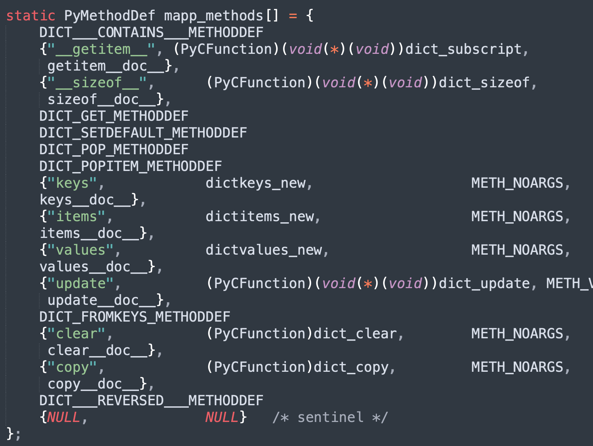
里面有很多的自定义方法，比如 get、pop、setdefault 等等，我们来剖析一下。
字典的 get 方法
获取指定 key 对应的 value，如果 key 不存在，那么返回默认值。
d = {"name": "古明地觉"}
print(d.get("name"))
"""
古明地觉
"""
# key 不存在，返回默认值 None
print(d.get("desc"))
"""
None
"""
# 当然也可以指定默认值
print(d.get("desc", "地灵殿美少女"))
"""
地灵殿美少女
"""
下面看一下源码实现。
// Objects/clinc/dictobject.c.h
#define DICT_GET_METHODDEF \
{"get", (PyCFunction)(void(*)(void))dict_get, METH_FASTCALL, dict_get__doc__},
static PyObject *
dict_get(PyDictObject *self, PyObject *const *args, Py_ssize_t nargs)
{
PyObject *return_value = NULL; // 返回值
PyObject *key; // 指定的 key
PyObject *default_value = Py_None; // 默认值，默认为 None
// get 方法接收 1 ~ 2 个参数
if (!_PyArg_CheckPositional("get", nargs, 1, 2)) {
goto exit;
}
// args[0] 便是指定的 key
key = args[0];
if (nargs < 2) {
goto skip_optional;
}
// args[1] 便是传入的默认值，如果有的话
default_value = args[1];
skip_optional:
// 调用 dict_get_impl
return_value = dict_get_impl(self, key, default_value);
exit:
return return_value;
}
// Objects/dictobject.c
static PyObject *
dict_get_impl(PyDictObject *self, PyObject *key, PyObject *default_value)
{
PyObject *val = NULL;
Py_hash_t hash; // 哈希值
Py_ssize_t ix; // 哈希槽存储的键值对数组的索引
// 计算哈希值
if (!PyUnicode_CheckExact(key) ||
(hash = ((PyASCIIObject *) key)->hash) == -1) {
hash = PyObject_Hash(key);
if (hash == -1)
return NULL;
}
// 获取 key 对应的哈希槽存储的键值对数组的索引
ix = (self->ma_keys->dk_lookup) (self, key, hash, &val);
if (ix == DKIX_ERROR)
return NULL;
// key 不存在，那么将默认值赋值给 val
if (ix == DKIX_EMPTY || val == NULL) {
val = default_value;
}
// 增加 val 的引用计数，然后返回
Py_INCREF(val);
return val;
}
以上就是字典的 get 方法，非常简单。
字典的 setdefault 方法
这是一个非常强大的方法，但是用的人不是很多。它和 get 方法类似，都是传入一个 key 和一个默认值，如果 key 存在，那么返回 key 对应的 value，否则返回默认值。但它和 get 方法不同的是，setdefault 在 key 不存在时，会将 key 和默认值添加到字典中。
d = {"name": "古明地觉"}
# 当 key 存在时，两个方法的效果是一样的，都等价于 d[key]
print(d.get("name"))
print(d.setdefault("name"))
"""
古明地觉
古明地觉
"""
# 但当 key 不存在时，就有差别了
# "desc" 这个 key 不存在，返回默认值
print(d.get("desc", "地灵殿美少女"))
"""
地灵殿美少女
"""
# 并且原始的字典不受影响
print(d)
"""
{'name': '古明地觉'}
"""
# 但对于 setdefault 来说，key 不存在时
# 会将 key 和默认值添加进去，然后返回默认值
print(d.setdefault("desc", "地灵殿美少女"))
"""
地灵殿美少女
"""
# 原始的字典会发生改变
print(d)
"""
{'name': '古明地觉', 'desc': '地灵殿美少女'}
"""
所以当获取的 key 不存在时，v = d.setdefault(key, value) 等价于如下。
- d[key] = value
- v = d[key]
那么 setdefault 一般用在什么地方呢？举个例子。
data = [
("古明地觉", "2020", 5), ("古明地觉", "2020", 2),
("古明地觉", "2021", 1), ("古明地觉", "2021", 4), ("古明地觉", "2021", 3),
("芙兰朵露", "2022", 7), ("芙兰朵露", "2022", 3), ("芙兰朵露", "2022", 3),
("芙兰朵露", "2023", 4), ("芙兰朵露", "2023", 1)
]
# 对于上面这种数据，我们需要变成下面这个样子
"""
{
'古明地觉': {
'2020': [5, 2],
'2021': [1, 4, 3]
},
'芙兰朵露': {
'2022': [7, 3, 3],
'2023': [4, 1]
}
}
"""
# 如果使用 setdefault 方法，就非常好解决了
d = {}
for name, year, cnt in data:
d.setdefault(name, {}).setdefault(year, []).append(cnt)
print(d)
下面来看一下源码实现。
// Objects/clinc/dictobject.c.h
#define DICT_SETDEFAULT_METHODDEF \
{"setdefault", (PyCFunction)(void(*)(void))dict_setdefault, METH_FASTCALL, dict_setdefault__doc__},
static PyObject *
dict_setdefault(PyDictObject *self, PyObject *const *args, Py_ssize_t nargs)
{
// 这部分和 get 方法是类似的
PyObject *return_value = NULL;
PyObject *key;
PyObject *default_value = Py_None;
if (!_PyArg_CheckPositional("setdefault", nargs, 1, 2)) {
goto exit;
}
key = args[0];
if (nargs < 2) {
goto skip_optional;
}
default_value = args[1];
skip_optional:
return_value = dict_setdefault_impl(self, key, default_value);
exit:
return return_value;
}
// Objects/dictobject.c
static PyObject *
dict_setdefault_impl(PyDictObject *self, PyObject *key,
PyObject *default_value)
{
PyObject *val;
val = PyDict_SetDefault((PyObject *)self, key, default_value);
Py_XINCREF(val);
return val;
}
所以核心在于 PyDict_SetDefault 函数，这个函数比较长，但逻辑不难理解。
// Objects/dictobject.c
PyObject *
PyDict_SetDefault(PyObject *d, PyObject *key, PyObject *defaultobj)
{
PyDictObject *mp = (PyDictObject *)d;
PyObject *value;
Py_hash_t hash;
if (!PyDict_Check(d)) {
PyErr_BadInternalCall();
return NULL;
}
// 获取哈希值
if (!PyUnicode_CheckExact(key) ||
(hash = ((PyASCIIObject *) key)->hash) == -1) {
hash = PyObject_Hash(key);
if (hash == -1)
return NULL;
}
// 如果 mp->ma_keys 等于 Py_EMPTY_KEYS，证明字典是空的，那么 key 肯定不存在
// 将 key 和 defaultobj 添加进字典中，并返回 defaultobj
if (mp->ma_keys == Py_EMPTY_KEYS) {
if (insert_to_emptydict(mp, key, hash, defaultobj) < 0) {
return NULL;
}
return defaultobj;
}
// 如果字典使用的是分离表，并且 key 不是字符串
// 意味着字典的结构要发生改变，重构为结合表
if (mp->ma_values != NULL && !PyUnicode_CheckExact(key)) {
if (insertion_resize(mp) < 0)
return NULL;
}
// 获取哈希槽存储的键值对数组的索引
Py_ssize_t ix = (mp->ma_keys->dk_lookup)(mp, key, hash, &value);
if (ix == DKIX_ERROR)
return NULL;
// 分离表不仅要求 key 全部是字符串，并且不能删除，否则要重构为结合表
if (_PyDict_HasSplitTable(mp) &&
((ix >= 0 && value == NULL && mp->ma_used != ix) ||
(ix == DKIX_EMPTY && mp->ma_used != mp->ma_keys->dk_nentries))) {
if (insertion_resize(mp) < 0) {
return NULL;
}
ix = DKIX_EMPTY;
}
// 如果 ix == -1，说明 key 不存在，那么要先添加键值对
if (ix == DKIX_EMPTY) {
PyDictKeyEntry *ep, *ep0;
value = defaultobj;
// 是否还有可用空间，如果没有，调用 insertion_resize
if (mp->ma_keys->dk_usable <= 0) {
if (insertion_resize(mp) < 0) {
return NULL;
}
}
// 返回 key 映射之后的哈希槽的索引
Py_ssize_t hashpos = find_empty_slot(mp->ma_keys, hash);
// 新添加的 entry 在键值对数组中的索引为 mp->ma_keys->dk_nentries
// 将该索引赋值给 dk_indices[hashpose]
ep0 = DK_ENTRIES(mp->ma_keys);
ep = &ep0[mp->ma_keys->dk_nentries];
dictkeys_set_index(mp->ma_keys, hashpos, mp->ma_keys->dk_nentries);
Py_INCREF(key);
Py_INCREF(value);
MAINTAIN_TRACKING(mp, key, value);
ep->me_key = key;
ep->me_hash = hash;
// 如果字典是分离表
if (_PyDict_HasSplitTable(mp)) {
// 值由 mp->ma_values 存储
assert(mp->ma_values[mp->ma_keys->dk_nentries] == NULL);
mp->ma_values[mp->ma_keys->dk_nentries] = value;
}
// 如果字典是结合表，那么键和值均保存在 entry 中
else {
ep->me_value = value;
}
// 字典长度加 1
mp->ma_used++;
// 修改版本号
mp->ma_version_tag = DICT_NEXT_VERSION();
// 键值对数组还可以容纳的 entry 个数减 1
mp->ma_keys->dk_usable--;
// 键值对数组已经容纳的 entry 个数加 1
mp->ma_keys->dk_nentries++;
assert(mp->ma_keys->dk_usable >= 0);
}
// ...
ASSERT_CONSISTENT(mp);
// 返回 value
return value;
}
以上便是 setdefault 方法。
字典的 popitem 方法
字典的 pop 方法之前已经说过了，这里来看一下 popitem 方法。
d = {"x": 1, "y": 2, "z": 3}
# pop 方法可以弹出指定的 key，并返回对应的 value
# 如果 key 不存在，并且没有指定默认值，会抛出 KeyError，否则返回默认值
print(d.pop("x")) # 1
# 而 popitem 方法则是弹出字典的最后一个键值对
d = {"x": 1, "y": 2, "z": 3}
print(d.popitem()) # ('z', 3)
print(d) # {'x': 1, 'y': 2}
下面看一下源码实现。
// Objects/clinc/dictobject.c.h
#define DICT_POPITEM_METHODDEF \
{"popitem", (PyCFunction)dict_popitem, METH_NOARGS, dict_popitem__doc__},
static PyObject *
dict_popitem(PyDictObject *self, PyObject *Py_UNUSED(ignored))
{
return dict_popitem_impl(self);
}
// Objects/dictobject.c
static PyObject *
dict_popitem_impl(PyDictObject *self)
{
Py_ssize_t i, j;
PyDictKeyEntry *ep0, *ep;
PyObject *res;
// 返回值，一个二元组，负责存储 key 和 value
res = PyTuple_New(2);
if (res == NULL)
return NULL;
// 如果字典的长度为 0，那么抛出 KeyError
if (self->ma_used == 0) {
Py_DECREF(res);
PyErr_SetString(PyExc_KeyError, "popitem(): dictionary is empty");
return NULL;
}
// 如果字典使用分离表，那么当 popitem 之后，要重构为结合表
// 分离表要求 key 必须全部是字符串，并且不能删除键值对
if (self->ma_keys->dk_lookup == lookdict_split) {
if (dictresize(self, DK_SIZE(self->ma_keys))) {
Py_DECREF(res);
return NULL;
}
}
ENSURE_ALLOWS_DELETIONS(self);
// 获取键值对数组
ep0 = DK_ENTRIES(self->ma_keys);
// ma_keys->dk_nentries 表示键值对数组中已使用的 entry 个数
// 那么 entry 的最大索引就是 ma_keys->dk_nentries - 1
i = self->ma_keys->dk_nentries - 1;
// 从 i 开始往前遍历，找到第一个 me_value != NULL 的 entry
// 因为被删除的 entry 依旧会驻留在键值对数组中，但 me_key、me_value 被设置为 NULL
while (i >= 0 && ep0[i].me_value == NULL) {
i--;
}
assert(i >= 0);
// 获取 entry
ep = &ep0[i];
// 基于哈希槽存储的索引，获取哈希槽的索引
j = lookdict_index(self->ma_keys, ep->me_hash, i);
assert(j >= 0);
assert(dictkeys_get_index(self->ma_keys, j) == i);
// 因为 entry 被删除了，所以对应的哈希槽存储的值要修改为 DKIX_DUMMY
dictkeys_set_index(self->ma_keys, j, DKIX_DUMMY);
// 将 key 和 value 保存在元组中
PyTuple_SET_ITEM(res, 0, ep->me_key);
PyTuple_SET_ITEM(res, 1, ep->me_value);
// 因为被弹出了，所以 entry 的 me_key 和 me_value 要重置为 NULL
ep->me_key = NULL;
ep->me_value = NULL;
// 这一步一会儿解释
self->ma_keys->dk_nentries = i;
// 键值对个数减 1
self->ma_used--;
self->ma_version_tag = DICT_NEXT_VERSION();
ASSERT_CONSISTENT(self);
return res;
}
以上就是 popitem 方法，但是里面有一行 self->ma_keys->dk_nentries = i 估计让人有些费解，我们解释一下。
首先当键值对数组的空间申请之后，entry 就已经存在了，初始状态下的 entry 的 me_key 和 me_value 均为 NULL。所以一个被伪删除的 entry 和初始的 entry 是等价的，下面假设有这么一个键值对数组。

对于一个容量为 16 的哈希表，它的键值对数组的长度为 10，由于 dk_nentries = 7，说明键值对数组使用了 7 个 entry。而在之后，第 2 个 entry 和第 7 个 entry 被删除了，一旦删除，那么它的 me_key 和 me_value 会被重置为 NULL，和初始 entry 是等价的。
这时候如果执行 popitem，那么会弹出最后一个 me_value 不为 NULL 的 entry，即没有被伪删除的 entry，对于当前来说就是第 6 个 entry。所以源码中的 i 初始等于 dk_nentries - 1，然后往前遍历，最终会找到索引为 5 的 entry，所以循环之后 i = 5。然后将索引为 5 的 entry 的 me_key 和 me_value 设置为 NULL，因为它被删除了。
注意：这里关键来了，既然变量 i 保存的是最后一个 me_value != NULL 的 entry 的索引，那么当它被删除之后，就意味着从索引 i 开始，后面所有的 entry 都相当于回归到了初始状态，那么直接将 dk_nentries 设置为 i。

由于 dk_nentries 被设置为 i，后续再添加键值对时，就会添加到索引为 i 的位置。对于当前来说，添加键值对时，修改的是 dk_entries[5] 的 me_key 和 me_value，而不是 dk_entries[7] 的 me_key 和 me_value。
所以通过 popitem 方法，被删除的 entry 是有可能实现复用的。
小结
以上我们就简单分析了字典的几个自定义方法，下一篇文章来聊一聊字典的扩容。
欢迎大家关注我的公众号：古明地觉的编程教室。
如果觉得文章对你有所帮助，也可以请作者吃个馒头，Thanks♪(･ω･)ﾉ。
在介绍字典的底层结构时我们看到，当已使用的 entry 数量达到总容量的 2/3 时，会发生扩容。
而在早期，哈希表只使用一个键值对数组，这个键值对数组不仅要存储具体的 entry，还要承载哈希索引数组的功能。本来这个方式很简单，但是内存浪费严重，于是后面 Python 官方就将一个数组拆成两个数组来实现。
不是说只能用 2/3 吗？那就只给键值对数组申请 2/3 容量的空间，并且只负责存储键值对。至于索引，则由哈希索引数组来承载。通过将 key 映射成索引，找到指定的哈希槽，再根据槽里面存储的索引，找到键值对数组中存储的 entry。
因此减少内存开销的核心就在于，避免键值对数组的浪费。
所以哈希索引数组的长度就可以看成是哈希表的容量，而键值对数组的长度本身就是哈希索引数组长度的 2/3、或者说容量的 2/3。那么很明显，当键值对数组满了，就说明当前的哈希表要扩容了。
// Objects/dictobject.c
#define GROWTH_RATE(d) ((d)->ma_used*3)
扩容之后的新哈希表的容量要大于等于 ma_used * 3，注意是大于等于 ma_used * 3，不是 dk_nentries * 3。因为 dk_nentries 还包含了被删除的 entry，但哈希表在扩容的候会将其丢弃，所以扩容之后新哈希表的容量取决于 ma_used。
当然啦，哈希表的容量还要等于 2 的幂次方，所以有两个条件：
- 大于等于 ma_used * 3；
- 等于 2 的幂次方；
基于以上两个限制条件，取到的最小值便是扩容之后的容量。而扩容的具体过程我们稍后会介绍，目前先来回顾一下基础知识。

以上是字典的底层结构，假设变量 mp 指向了 PyDictObject 实例，那么可以得到如下信息。
mp->ma_keys->dk_indices便是哈希索引数组，它的长度便是哈希表的容量。mp->ma_keys->dk_entries便是键值对数组，里面的一个 entry 就是一个键值对。- 如果字典使用的是结合表，那么 entry 的 me_key、me_value 字段负责存储键和值，此时
mp->ma_values为 NULL。 - 如果字典使用的是分离表，那么 entry 的 me_key 字段负责存储键，me_value 字段则始终为 NULL，此时由
mp->ma_values负责存储值，这种做法可以让多个字典共享一组 key，从而节省内存。
因为分离表是 Python 针对实例对象的属性字典单独设计的，我们平时创建的都是结合表，所以一开始并没有讨论分离表。但分离表其实非常简单，这里来补充一下吧。现在假设有一个字典，里面有三个键值对 "a": 1, "b": 2, "c": 3，我们看一下分别使用结合表和分离表存储时，字典的结构是什么样子。

所以结合表是键和值存在一起，分离表是键和值分开存储，非常好理解。我们自己创建的字典，使用的都是结合表，分离表是为了减少对象属性字典的内存使用而专门引入的。因此对于一个分离表而言，它的 key 一定都是字符串，否则不可能是分离表。而如果 key 都是字符串，那么既可以是分离表，也可以是结合表。
接着是转换关系：分离表可以重构为结合表，但反过来不行。
好，下面我们来看一下扩容逻辑，它由 dictresize 函数负责。
// Objects/dictobject.c
#define PyDict_MINSIZE 8
static int
dictresize(PyDictObject *mp, Py_ssize_t minsize)
{
// 参数 minsize 表示字典的 ma_used * 3，即长度 * 3
Py_ssize_t newsize, numentries;
// mp->ma_keys
PyDictKeysObject *oldkeys;
// mp->ma_values
PyObject **oldvalues;
// mp->ma_values->dk_entries
PyDictKeyEntry *oldentries, *newentries;
/* Find the smallest table size > minused. */
// 初始容量为 8，如果 newsize < minsize，那么不断循环
// 直到条件不满足时，便找到了大于等于 minsize 的最小 2 的幂次方数
// newsize 便是字典扩容之后的新容量
for (newsize = PyDict_MINSIZE;
newsize < minsize && newsize > 0;
newsize <<= 1)
;
if (newsize <= 0) {
PyErr_NoMemory();
return -1;
}
// 获取扩容之前的 ma_keys
oldkeys = mp->ma_keys;
// 在介绍字典的创建时，我们说过这个函数，它负责为 PyDictKeysObject 实例申请内存
mp->ma_keys = new_keys_object(newsize);
if (mp->ma_keys == NULL) {
mp->ma_keys = oldkeys;
return -1;
}
assert(mp->ma_keys->dk_usable >= mp->ma_used);
// 设置探测函数
if (oldkeys->dk_lookup == lookdict)
mp->ma_keys->dk_lookup = lookdict;
// 字典的长度
numentries = mp->ma_used;
// 扩容之前的键值对数组
oldentries = DK_ENTRIES(oldkeys);
// 扩容之后的键值对数组
newentries = DK_ENTRIES(mp->ma_keys);
// 扩容之前的 ma_values
oldvalues = mp->ma_values;
// 如果 oldvalues 不为 NULL，说明字典使用的是分离表
// 那么当字典发生扩容时，要转成结合表
if (oldvalues != NULL) {
// 将旧的键值对数组的 entry 拷贝到新的键值对数组中
for (Py_ssize_t i = 0; i < numentries; i++) {
assert(oldvalues[i] != NULL);
PyDictKeyEntry *ep = &oldentries[i];
PyObject *key = ep->me_key;
Py_INCREF(key);
// key 始终存储在 entry 中
newentries[i].me_key = key;
// 设置哈希值
newentries[i].me_hash = ep->me_hash;
// 将 mp->ma_values 里面的值，赋值给 entry->me_value
newentries[i].me_value = oldvalues[i];
}
// 旧的 ma_keys 和 ma_values 要释放掉
dictkeys_decref(oldkeys);
mp->ma_values = NULL;
if (oldvalues != empty_values) {
free_values(oldvalues);
}
}
// 说明字典使用的是结合表，重构的结果依旧是结合表
else { // combined table.
// 如果 entry 的数量等于字典的长度，说明没有被删除的 entry，那么直接 memcpy 过去即可
if (oldkeys->dk_nentries == numentries) {
memcpy(newentries, oldentries, numentries * sizeof(PyDictKeyEntry));
}
// 否则遍历 oldentries，将 me_value != NULL 的 entry 拷贝过去
else {
PyDictKeyEntry *ep = oldentries;
for (Py_ssize_t i = 0; i < numentries; i++) {
while (ep->me_value == NULL)
ep++;
newentries[i] = *ep++;
}
}
assert(oldkeys->dk_lookup != lookdict_split);
assert(oldkeys->dk_refcnt == 1);
// 缓存池逻辑，后续聊
if (oldkeys->dk_size == PyDict_MINSIZE &&
numfreekeys < PyDict_MAXFREELIST) {
_Py_DEC_REFTOTAL;
keys_free_list[numfreekeys++] = oldkeys;
}
else {
_Py_DEC_REFTOTAL;
PyObject_FREE(oldkeys);
}
}
// 到此键值对数组的元素就拷贝完了，然后还要进行索引映射，并存储在哈希槽中
build_indices(mp->ma_keys, newentries, numentries);
// dk_usable 表示还可以容纳多少个键值对
// dk_nentries 表示已经容纳了多少个键值对
// 而 numentries 表示字典的长度，所以重构之后
// dk_usable 的大小要减去 numentries，dk_nentries 直接等于 numentries
mp->ma_keys->dk_usable -= numentries;
mp->ma_keys->dk_nentries = numentries;
return 0;
}
因为要对哈希表的种类分情况讨论，所以导致代码有点长，但逻辑不难理解：
- 首先确定哈希表的容量，它要满足 2 的幂次方，并且大于等于 ma_used * 3。
- 为 ma_keys 重新申请内存。
- 根据哈希表的种类分情况讨论，但核心都是将旧的没有被删除的 entry 搬过去。
- 释放 ma_keys，如果字典之前是分离表，还要释放 ma_values。
以上就是哈希表的扩容，或者说字典的扩容，我们就介绍到这儿，下一篇文章来介绍字典的缓存池。
欢迎大家关注我的公众号：古明地觉的编程教室。
如果觉得文章对你有所帮助，也可以请作者吃个馒头，Thanks♪(･ω･)ﾉ。
楔子
本篇文章来聊一聊字典的缓存池，我们知道字典有一个 ma_keys 字段和一个 ma_values 字段。当哈希表为分离表时，键由 ma_keys 维护，值由 ma_values 维护；当哈希表为结合表时，键和值均由 ma_keys 维护。
那么当我们销毁一个 PyDictObject 时，也肯定要先释放 ma_keys 和 ma_values。
- 如果是分离表，会将每个 value 的引用计数减 1，然后释放 ma_values；再将每个 key 的引用计数减 1，然后释放 ma_keys。最后再释放 PyDictObject 本身。
- 如果是结合表，由于 key、value 都在 ma_keys 中，将每个 key、value 的引用计数减 1 之后，只需释放 ma_keys 即可。最后再释放 PyDictObject 本身。
整个过程还是很清晰的，只不过这里面遗漏了点什么东西，没错，就是缓存池。在介绍浮点数的时候，我们说不同的对象都有自己的缓存池，当然字典也不例外。并且除了 PyDictObject 之外，PyDictKeysObject 也有相应的缓存池，毕竟它负责存储具体的键值对。
那么下面我们就来研究一下这两者的缓存池。
PyDictObject 缓存池
字典的缓存池和列表的缓存池高度相似，都是采用数组实现的，并且容量也是 80 个。
// Objects/dictobject.c
#define PyDict_MAXFREELIST 80
static PyDictObject *free_list[PyDict_MAXFREELIST];
static int numfree = 0;
下面看一下字典的销毁过程，因为放入缓存池这个动作，一定是在对象销毁时发生的。
// Objects/dictobject.c
static inline void
dictkeys_decref(PyDictKeysObject *dk)
{
assert(dk->dk_refcnt > 0);
_Py_DEC_REFTOTAL;
// 将 dk_refcnt 减 1
// 如果字典是结合表，那么 dk->dk_refcnt 减 1 之后一定为 0
// 如果字典是分离表，那么 dk->dk_refcnt 减 1 之后则不一定为 0
if (--dk->dk_refcnt == 0) {
// 释放 ma_keys，该函数稍后再聊
free_keys_object(dk);
}
}
static void
dict_dealloc(PyDictObject *mp)
{
PyObject **values = mp->ma_values;
PyDictKeysObject *keys = mp->ma_keys;
Py_ssize_t i, n;
// 因为要被销毁，所以让 GC 不再跟踪
PyObject_GC_UnTrack(mp);
// 用于延迟释放
Py_TRASHCAN_BEGIN(mp, dict_dealloc)
// 如果 values 不为 NULL，说明是分离表
if (values != NULL) {
if (values != empty_values) {
// 将每个 value 的引用计数减 1
for (i = 0, n = mp->ma_keys->dk_nentries; i < n; i++) {
Py_XDECREF(values[i]);
}
// 释放 ma_values
free_values(values);
}
// 将 ma_keys->dk_refcnt 减 1，至于是否会释放 ma_keys
// 则看是否还有其它组的 value 使用它
dictkeys_decref(keys);
}
// 否则说明是结合表
else if (keys != NULL) {
// 结合表的话，dk_refcnt 一定等于 1，因为每组 value 都独占一组 key
assert(keys->dk_refcnt == 1);
// dk_refcnt 减 1 之后等于 0，内部会调用 free_keys_object
// 在里面会先将每个 key、value 的引用计数减 1，然后再释放 ma_keys
dictkeys_decref(keys);
}
// 如果 numfree 没达到 80，那么放入缓存池
if (numfree < PyDict_MAXFREELIST && Py_TYPE(mp) == &PyDict_Type)
// PyDictObject 缓存池是一个数组，直接添加在数组的尾部即可，然后 numfree 自增 1
free_list[numfree++] = mp;
else
// 否则将空间交还给系统堆
Py_TYPE(mp)->tp_free((PyObject *)mp);
Py_TRASHCAN_END
}
同理，当创建字典时，也会优先从缓存池里面获取。
// Objects/dictobject.c
static PyObject *
new_dict(PyDictKeysObject *keys, PyObject **values)
{
PyDictObject *mp;
assert(keys != NULL);
// 如果 numfree != 0，证明缓存池有可用元素
if (numfree) {
// 从缓存池当中获取
mp = free_list[--numfree];
assert (mp != NULL);
assert (Py_TYPE(mp) == &PyDict_Type);
// 将引用计数设置为 1
_Py_NewReference((PyObject *)mp);
}
else {
// 否则从堆区申请内存
mp = PyObject_GC_New(PyDictObject, &PyDict_Type);
// ...
}
// 初始化字段，然后返回 (PyObject *)mp
mp->ma_keys = keys;
mp->ma_values = values;
mp->ma_used = 0;
mp->ma_version_tag = DICT_NEXT_VERSION();
ASSERT_CONSISTENT(mp);
return (PyObject *)mp;
}
因此在缓存池的实现上，字典和列表有着很高的相似性。不仅都由数组实现，在销毁的时候也会放在数组的尾部，创建的时候也会从数组的尾部获取。当然啦，因为这么做符合数组的特性，如果销毁和创建都是在数组的头部操作，那么时间复杂度就从 O(1) 变成了 O(n)。
我们用 Python 来测试一下：
d1 = {k: 1 for k in "abcdef"}
d2 = {k: 1 for k in "abcdef"}
print("id(d1):", id(d1))
print("id(d2):", id(d2))
# 放到缓存池的尾部
del d1
del d2
# 缓存池：[d1, d2]
# 从缓存池的尾部获取
# 显然 id(d3) 和上面的 id(d2) 是相等的
d3 = {k: 1 for k in "abcdefghijk"}
# id(d4) 和上面的 id(d1) 是相等的
d4 = {k: 1 for k in "abcdefghijk"}
print("id(d3):", id(d3))
print("id(d4):", id(d4))
"""
id(d1): 140079181793600
id(d2): 140079181775488
id(d3): 140079181775488
id(d4): 140079181793600
"""
输出结果和我们的预期是相符合的，以上就是 PyDictObject 的缓存池。
PyDictKeysObject 缓存池
PyDictKeysObject 也有自己的缓存池，同样基于数组实现，大小是 80。
// Objects/dictobject.c
#define PyDict_MAXFREELIST 80
// PyDictObject 缓存池以及容量
static PyDictObject *free_list[PyDict_MAXFREELIST];
static int numfree = 0;
// PyDictKeysObject 缓存池以及容量
static PyDictKeysObject *keys_free_list[PyDict_MAXFREELIST];
static int numfreekeys = 0;
来看一下 PyDictKeysObject 的销毁过程：
// Objects/dictobject.c
static inline void
dictkeys_decref(PyDictKeysObject *dk)
{
assert(dk->dk_refcnt > 0);
_Py_DEC_REFTOTAL;
// 分离表：多组 value 可以共享一组 key
// 结合表：每组 value 独占一组 key
// 因此要先将 dk_refcnt 减 1，如果结果为 0，那么才能释放 ma_keys
if (--dk->dk_refcnt == 0) {
free_keys_object(dk);
}
}
static void
free_keys_object(PyDictKeysObject *keys)
{
// 获取键值对数组
PyDictKeyEntry *entries = DK_ENTRIES(keys);
Py_ssize_t i, n;
// 遍历 dk_entries，减少 key、value 的引用计数
for (i = 0, n = keys->dk_nentries; i < n; i++) {
Py_XDECREF(entries[i].me_key);
// 如果是分离表，那么 me_value == NULL
// 而当参数为 NULL 时，Py_XDECREF 不做任何处理
Py_XDECREF(entries[i].me_value);
}
// 放入缓存池，除了要保证缓存池没满之外，还要保证 dk_size = 8
// 也就是说，只有容量为 8 的哈希表的 PyDictKeysObject 才会被缓存
if (keys->dk_size == PyDict_MINSIZE && numfreekeys < PyDict_MAXFREELIST) {
keys_free_list[numfreekeys++] = keys;
return;
}
// 如果条件不满足，释放 ma_keys，将内存交还给系统堆
PyObject_FREE(keys);
}
所以 PyDictKeysObject 的缓存池和列表的缓存池同样是高度相似的，只不过它想要被缓存，除了保证缓存池有剩余空间之外，还要满足哈希表的容量等于 8，这个限制是出于对内存方面的考量。
以上是 ma_keys 的销毁过程，再来看看它的创建过程。
// Objects/dictobject.c
// 为 PyDictKeysObject 实例申请内存
static PyDictKeysObject *new_keys_object(Py_ssize_t size)
{
PyDictKeysObject *dk;
Py_ssize_t es, usable;
assert(size >= PyDict_MINSIZE);
assert(IS_POWER_OF_2(size));
// 获取键值对数组的长度
usable = USABLE_FRACTION(size);
// 计算哈希索引数组中每个元素的大小
if (size <= 0xff) {
es = 1;
}
else if (size <= 0xffff) {
es = 2;
}
#if SIZEOF_VOID_P > 4
else if (size <= 0xffffffff) {
es = 4;
}
#endif
else {
es = sizeof(Py_ssize_t);
}
// 如果容量等于 8，并且缓存池有可用元素，那么从缓存池中获取
if (size == PyDict_MINSIZE && numfreekeys > 0) {
dk = keys_free_list[--numfreekeys];
}
else {
// 否则在堆区申请内存，而内存包含三部分
// sizeof(PyDictKeysObject)：结构体 PyDictKeysObject 的大小
// es * size：哈希索引数组的大小
// sizeof(PyDictKeyEntry) * usable)：键值对数组的大小
dk = PyObject_MALLOC(sizeof(PyDictKeysObject)
+ es * size
+ sizeof(PyDictKeyEntry) * usable);
if (dk == NULL) {
PyErr_NoMemory();
return NULL;
}
}
_Py_INC_REFTOTAL;
// 初始化字段
dk->dk_refcnt = 1;
dk->dk_size = size;
dk->dk_usable = usable;
dk->dk_lookup = lookdict_unicode_nodummy;
dk->dk_nentries = 0;
// 将哈希索引数组中的每个元素都设置成 -1
memset(&dk->dk_indices[0], 0xff, es * size);
// 将键值对数组中的每个元素（entry）的所有字段都设置成 0
memset(DK_ENTRIES(dk), 0, sizeof(PyDictKeyEntry) * usable);
return dk;
}
非常简单，我们来验证一下。
from ctypes import *
class PyObject(Structure):
_fields_ = [("ob_refcnt", c_ssize_t),
("ob_type", c_void_p)]
class PyDictObject(PyObject):
_fields_ = [("ma_used", c_ssize_t),
("ma_version_tag", c_uint64),
("ma_keys", c_void_p),
("ma_values", c_void_p)]
d1 = {k: 1 for k in "komeiji satori"}
print(
"d1.ma_keys:", PyDictObject.from_address(id(d1)).ma_keys
)
# 键值对个数超过了 8，哈希表的容量必然也超过了 8
# 那么当销毁 d1 的时候，d1.ma_keys 不会被缓存，而是会直接释放掉
del d1
d2 = {k: 1 for k in "abc"}
print(
"d2.ma_keys:", PyDictObject.from_address(id(d2)).ma_keys
)
# 容量等于 8，所以 d2.ma_keys 会被缓存
del d2
d3 = {k: 1 for k in "komeiji koishi"}
print(
"d3.ma_keys:", PyDictObject.from_address(id(d3)).ma_keys
)
# 尽管 d2 的 ma_keys 被缓存起来了，但是 d3 的 dk_size 大于 8
# 因此它不会从缓存池中获取，而是重新创建
d4 = {k: 1 for k in "abc"}
print(
"d4.ma_keys:", PyDictObject.from_address(id(d4)).ma_keys
)
# d4 的 dk_size 等于 8，因此它会从缓存池中获取，从而复用被销毁的 d2.ma_keys
# 最终打印结果如下
"""
d1.ma_keys: 94324986272656
d2.ma_keys: 140165216613312
d3.ma_keys: 140165225069456
d4.ma_keys: 140165216613312
"""
从打印的结果来看，由于 d4.ma_keys 和 d2.ma_keys 是相同的，因此证实了我们的结论。不像列表和字典，它们是只要被销毁，就会放到缓存池里面，因为它们没有存储具体的数据，大小是固定的。但 PyDictKeysObject 不同，由于它存储了 entry，每个 entry 占 24 字节，如果内部的 entry 非常多，那么缓存起来会有额外的内存开销。因此 Python 的策略是，只有在哈希表容量等于 8 的时候，才会缓存。当然这三者在缓存池的实现上，是基本一致的。
不难看出，Python 在性能和内存使用方面都做了考量。但如果你追求更高的效率，那么也可以自己定制 Python 解释器，比如增大缓存池的容量等等，用更多的空间去换取时间。
小结
到此，字典相关的内容就全部介绍完了。和元组一样，字典也在我们看不到的地方被大量使用，比如对象的属性字典、名字空间等等。正因为解释器内部也在大量使用字典，所以字典是一个被高度优化的数据结构，不仅要保证搜索效率，还要减少内存使用。
下一篇文章，我们来介绍 Python 的集合。
欢迎大家关注我的公众号：古明地觉的编程教室。
如果觉得文章对你有所帮助，也可以请作者吃个馒头，Thanks♪(･ω･)ﾉ。
楔子
本篇文章来聊一聊 Python 的集合是怎么实现的？前面我们介绍了字典的实现原理，它底层是基于哈希表实现的，而集合也是如此。
事实上，集合就类似于没有 value 的字典。
集合的使用场景
那么集合都有哪些用处呢？
1）去重
chars = ["a", "b", "a", "c", "c"]
print(
list(set(chars))
) # ['b', 'a', 'c']
比如你需要监听一个队列，处理接收到的消息，但每一条消息都有一个编号，要保证具有相同编号的消息只能被处理一次，要怎么做呢？
显然集合此时就派上用场了，我们可以创建一个集合，每来一条消息，就检测它的编号是否在集合中。如果存在，则说明消息已经被处理过了，忽略掉；如果不存在，说明消息还没有被处理，那么就将它的编号添加到集合中，然后处理消息。
2）判断某个序列是否包含指定的多个元素
data = ["S", "A", "T", "O", "R", "I"]
# 现在要判断 data 是否包含 "T"、"R" 和 "I"
# 如果使用列表的话
print(
"T" in data and "R" in data and "I" in data
) # True
# 显然使用列表比较麻烦，并且效率也不高，于是我们可以使用集合
print(
set(data) >= {"T", "R", "I"}
) # True
同理，基于此方式，我们也可以检测一个字典是否包含指定的多个 key。
data = {
"name": "satori",
"age": 17,
"gender": "female"
}
# 判断字典是否包含 name、age、gender 三个 key
print(
data.keys() >= {"name", "age", "gender"}
) # True
# 字典的 keys 方法会返回一个 dict_keys 对象
# 该对象具备集合的性质，可以直接和集合进行运算
显然对于这种需求，有了集合就方便多了。
集合的 API
然后我们来罗列一下集合支持的 API，在使用集合的时候要做到心中有数。
# 如果是创建一个空集合，那么要使用 set()
# 写成 {} 的话，解释器会认为这是一个空字典
s = {1, 2, 3}
# 添加元素，时间复杂度是 O(1)
s.add(4)
print(s) # {1, 2, 3, 4}
# 删除指定的元素，如果元素不存在，会抛出 KeyError
# 时间复杂度为 O(1)
s.remove(2)
print(s) # {1, 3, 4}
# 删除指定的元素，如果元素不存在则什么也不做
# 时间复杂度为 O(1)
s.discard(666)
print(s) # {1, 3, 4}
# 随机弹出一个元素并返回，如果集合为空，会抛出 KeyError
# 时间复杂度为 O(1)
print(s.pop()) # 1
print(s) # {3, 4}
# 清空一个集合
s.clear()
print(s) # set()
# 还有一些 API，但我们更推荐使用操作符的方式
# 两个集合取交集
print({1, 2} & {2, 3}) # {2}
# 两个集合取并集
print({1, 2} | {2, 3}) # {1, 2, 3}
# 两个集合取差集
# s1 - s2，返回在 s1、但不在 s2 当中的元素
print({1, 2, 3} - {2, 3, 4}) # {1}
# 两个集合取对称差集
# s1 ^ s2，返回既不在 s1、也不在 s2 当中的元素
print({1, 2, 3} ^ {2, 3, 4}) # {1, 4}
# 判断两个集合是否相等，也就是内部的元素是否完全一致
# 顺序无所谓，只比较元素是否全部相同
print({1, 2, 3} == {3, 2, 1}) # True
print({1, 2, 3} == {1, 2, 4}) # False
# 判断一个集合是否包含另一个集合的所有元素
# 假设有两个集合 s1 和 s2：
# 如果 s1 的元素都在 s2 中，那么 s2 >= s1；
# 如果 s2 的元素都在 s1 中，那么 s1 >= s2；
# 如果 s1 和元素和 s2 全部相同，那么 s1 == s2；
print({1, 2, 3} > {1, 2}) # True
print({1, 2, 3} >= {1, 2, 3}) # True
以上就是集合支持的一些 API，还是很简单的。
集合的底层结构
集合和字典的内部都使用了哈希表，但字典的哈希表采用两个数组实现，而集合的哈希表采用一个数组实现。因此对于集合来说，这个数组不仅要存储 entry，并且映射出的索引也是该数组的索引。
下面看一下集合的底层结构长什么样子。
// Include/setobject.h
typedef struct {
// 定长对象的头部信息，但集合显然是一个变长对象
// 所以和字典一样，肯定有其它字段充当 ob_size
PyObject_HEAD
// Active 态的 entry 数量加上 Dummy 态的 entry 数量
// 一个 entry 就是哈希表里的一个元素，类型为 setentry
// 因此在集合里面，一个 entry 就是一个 setentry 结构体实例
// 当删除集合的 entry 时，也必须是伪删除，因为要保证探测链不断裂
// 如果 entry 被伪删除了，那么它便处于 Dummy 态
Py_ssize_t fill;
// Active 态的 entry 数量，显然这个 used 充当了 ob_size，也就是集合的元素个数
Py_ssize_t used;
// 在看字典源码的时候，我们也见到了 mask，它用于和哈希值进行按位与、计算索引
// 并且这个 mask 等于哈希表的容量减 1，为什么呢？
// 假设哈希值等于 v，哈希表容量是 n，那么通过 v 对 n 取模即可得到一个位于 0 到 n-1 之间的数
// 然而取模运算的效率不高，应该使用 v&(n-1)，它的作用等价于 v%n，并且速度更快
// 但是注意，只有在 n 为 2 的幂次方的时候，v&(n-1) 和 v%n 才是完全等价的
// 所以哈希表的容量要求是 2 的幂次方，就是为了将取模运算优化成按位与运算
Py_ssize_t mask;
// 指向 setentry 数组首元素的指针
// 这个 setentry 数组可以是下面的 smalltable，也可以是单独申请的一块内存
setentry *table;
// 集合的哈希值，只适用于不可变集合
Py_hash_t hash;
// 用于 pop 方法
Py_ssize_t finger;
// 一个 setentry 类型的数组，集合的元素就存在里面，但记得我们前面说过
// 变长对象的内部不会存储具体的元素，而是会存储一个指针，该指针指向的内存区域才是用来存储具体元素的
// 这样当扩容的时候，只需要让指针指向新的内存区域即可，从而方便维护
// 没错，对于集合而言，只有在容量不超过 8 的时候，元素才会存在里面
// 而一旦超过了 8，那么会使用 malloc 单独申请内存
setentry smalltable[PySet_MINSIZE];
// 弱引用列表，不做深入讨论
PyObject *weakreflist;
} PySetObject;
有了字典的经验，再看集合会简单很多。然后是 setentry，用于承载集合内的元素，那么它的结构长什么样呢？相信你能够猜到。
// Include/setobject.h
typedef struct {
PyObject *key;
Py_hash_t hash;
} setentry;
相比字典少了一个 value，这是显而易见的。
因此集合的结构很清晰了，假设有一个集合 {3.14, "abc", 666}，那么它的结构如下：

由于集合里面只有三个元素，所以它们都会存在 smalltable 数组里面，我们通过 ctypes 来证明这一点。
from ctypes import *
class PyObject(Structure):
_fields_ = [
("ob_refcnt", c_ssize_t),
("ob_type", c_void_p),
]
class SetEntry(Structure):
_fields_ = [
("key", POINTER(PyObject)),
("hash", c_longlong)
]
class PySetObject(PyObject):
_fields_ = [
("fill", c_ssize_t),
("used", c_ssize_t),
("mask", c_ssize_t),
("table", POINTER(SetEntry)),
("hash", c_long),
("finger", c_ssize_t),
("smalltable", (SetEntry * 8)),
("weakreflist", POINTER(PyObject)),
]
s = {3.14, "abc", 666}
# 先来打印一下哈希值
print('hash(3.14) =', hash(3.14))
print('hash("abc") =', hash("abc"))
print('hash(666) =', hash(666))
"""
hash(3.14) = 322818021289917443
hash("abc") = 2548892134347232650
hash(666) = 666
"""
# 获取 PySetObject 结构体实例
py_set_obj = PySetObject.from_address(id(s))
# 遍历 smalltable，打印索引和 key 的哈希值
for index, entry in enumerate(py_set_obj.smalltable):
print(index, entry.hash)
"""
0 0
1 0
2 666
3 322818021289917443
4 0
5 0
6 2548892134347232650
7 0
"""
根据输出的哈希值我们可以断定，这三个元素确实存在了 smalltable 数组里面，并且 666 存在了数组索引为 2 的位置、3.14 存在了数组索引为 3 的位置、"abc" 存在了数组索引为 6 的位置。
当然，由于哈希值是随机的，所以每次执行之后打印的结果都可能不一样，但是整数除外，它的哈希值就是它本身。既然哈希值不一样，那么每次映射出的索引也可能不同，但总之这三个元素是存在 smalltable 数组里面的。
然后我们再考察一下其它字段：
s = {3.14, "abc", 666}
py_set_obj = PySetObject.from_address(id(s))
# 集合里面有 3 个元素，所以 fill 和 used 都是 3
print(py_set_obj.fill) # 3
print(py_set_obj.used) # 3
# 将集合元素全部删除
# 这里不能用 s.clear()，原因一会儿说
for _ in range(len(s)):
s.pop()
# 我们知道哈希表在删除元素的时候是伪删除
# 所以 fill 不变，但是 used 每次会减 1
print(py_set_obj.fill) # 3
print(py_set_obj.used) # 0
fill 字段维护的是 Active 态的 entry 数量加上 Dummy 态的 entry 数量，所以删除元素时它的大小是不变的。但 used 字段的值每次会减 1，因为它维护的是 Active 态的 entry 的数量。所以在不涉及元素的删除时，这两者的大小是相等的。
另外我们说上面不能用 s.clear()，因为该方法表示清空集合，此时会重置为初始状态，然后 fill 和 used 都会是 0，这样就观察不到想要的现象了。
删除集合所有元素之后，我们再往里面添加元素，看看是什么效果：
s = {3.14, "abc", 666}
py_set_obj = PySetObject.from_address(id(s))
for _ in range(len(s)):
s.pop()
# 添加一个元素
s.add(0)
print(py_set_obj.fill) # 3
print(py_set_obj.used) # 1
多次执行的话，会发现打印的结果可能是 3、1，也有可能是 4、1。至于原因，有了字典的经验，相信你肯定能猜到。
首先添加元素之后，used 肯定为 1。至于 fill，如果添加元素的时候，正好撞上了一个 Dummy 态的 entry，那么将其替换掉，此时 fill 不变，仍然是 3。但如果没有撞上 Dummy 态的 entry，而是添加在了新的位置，那么 fill 就是 4。
for i in range(1, 10):
s.add(i)
print(py_set_obj.fill) # 10
print(py_set_obj.used) # 10
s.pop()
print(py_set_obj.fill) # 10
print(py_set_obj.used) # 9
在之前代码的基础上，继续添加 9 个元素，然后 used 变成了 10，这很好理解，因为此时集合有 10 个元素。但 fill 也是 10，这是为什么？很简单，因为哈希表扩容了，扩容时会删除 Dummy 态的 entry，所以 fill 和 used 是相等的。同理，如果再继续 pop，那么 fill 和 used 就又变得不相等了。
集合的创建
集合的结构我们已经清楚了，再来看看它的初始化过程。我们调用类 set，传入一个可迭代对象，便可创建一个集合，这个过程是怎样的呢？
// Objects/setobject.c
PyObject *
PySet_New(PyObject *iterable)
{
return make_new_set(&PySet_Type, iterable);
}
static PyObject *
make_new_set(PyTypeObject *type, PyObject *iterable)
{
PySetObject *so;
// 为 PySetObject 申请内存，初始容量为 8
so = (PySetObject *)type->tp_alloc(type, 0);
if (so == NULL)
return NULL;
// 对字段做初始化
so->fill = 0;
so->used = 0;
so->mask = PySet_MINSIZE - 1;
// 哈希表容量为 8 时，元素会存在 smalltable 里面
// 因此直接将 smalltable 赋值给 table
so->table = so->smalltable;
so->hash = -1;
so->finger = 0;
so->weakreflist = NULL;
// 遍历 iterable，将迭代出的元素添加到集合中
// 关于这个函数，我们之后再介绍
if (iterable != NULL) {
if (set_update_internal(so, iterable)) {
Py_DECREF(so);
return NULL;
}
}
return (PyObject *)so;
}
可以看到，集合的创建过程非常简单。
字典和集合的哈希表的差异
字典和集合都是采用哈希表实现的，但字典的哈希表使用了两个数组，而集合的哈希表使用了一个数组，我们对比一下两者的差异。
假设有一个字典和一个集合，字典包含三个键值对，分别是 "a": 1、"b": 2、"c": 3，集合包含三个元素，分别是 "a"、"b"、"c"，然后映射出的索引分别是 2、5、3。
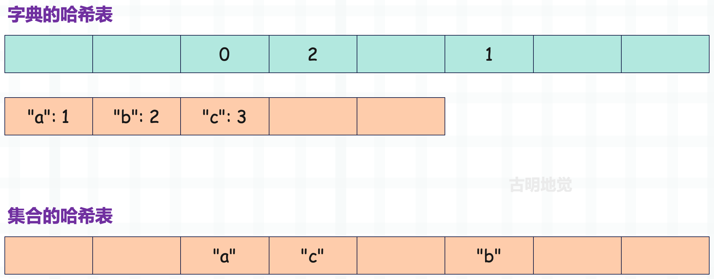
注：为了方便，这里的图画得没有那么严谨。比如集合的哈希表，里面的元素直接用字符串代替了，但其实它存储的是 setentry entry，而 entry 的 key 字段指向的才是字符串。当然这里我们心里清楚就好。
在介绍字典的时候我们说过，早期的字典内部的哈希表也是使用一个数组实现，除了 entry 会多存储一个 value 之外，其它和当前的集合是类似的。
但如果只使用一个数组实现，会导致内存浪费严重，因为哈希表必须要保证一定的稀疏性。所以后续字典内部的哈希表采用两个数组实现，将存储键值对的数组的长度压缩到原来的 2/3，至于映射出的索引则由另一个数组（哈希索引数组）来承载。虽然引入新的数组会带来额外的内存开销（假设大小为 m 字节），但存储键值对的数组不用再浪费 1/3 的空间（假设大小为 n 字节），只要 m 小于 n，那么使用两个数组就会更加节省内存。而在介绍字典的时候我们也看到了，m 是远小于 n 的。
那么问题来了，为什么集合不使用两个数组呢？很简单，因为使用一个数组实现哈希表会更简单，虽然也更加浪费内存。而集合和字典在哈希表的实现上之所以区别对待，还是使用频率的问题，解释器内部极度依赖字典，比如全局变量就是使用字典存储的。
可以说字典的效率高度影响着整个解释器的效率，字典的内存大小高度影响着解释器的内存占用。因此 Python 除了优化字典的搜索性能之外，还要尽可能地减少字典的内存大小。所以字典搞出了分离表、结合表，这一切操作都是为了将字典的内存占用降到最低。
至于集合，解释器对它的依赖就很小了，所以内部的哈希表，只采用了一个数组实现。虽然会有内存浪费，但无伤大雅。
好，回到上面的例子，如果将字典的键值对 "b": 2 和集合的元素 "b" 删掉，那么它们的结构会发生什么变化呢？

"b" 映射出的索引为 5，因此对于字典来说，会将索引为 5 的哈希槽存储的值设置为 dummy。然后是键值对数组，会将指定的 entry 的 me_key 和 me_value 字段全部设置为 NULL，相当于回归到了初始状态。
需要注意的是，数组一旦申请，那么 entry 的空间就已经有了，只是 me_key 和 me_value 字段均为 NULL。而所谓添加键值对，本质上也是修改指定 entry 的 me_key 和 me_value 字段。
对于集合来说，它只有一个数组，这个数组不仅要存储键值对，它的索引还表示 key 映射出的索引，当然这里的 key 指的就是集合的元素。"b" 映射出的索引为 5，所以将数组中索引为 5 的 entry->key 设置为 dummy。
但要注意的是，字典的 dummy 是一个整数，值为 -2（DKIX_DUMMY），因为哈希索引数组存储的是键值对数组的索引，显然这是一个整数。然后 key 映射出的索引是哈希索引数组的索引，如果对应的哈希槽存储的值是 -2，说明当前搜索的 key 对应的 entry 被删除了，应该继续向后搜索。
而集合的 dummy 是一个结构体指针，定义如下：
// Objects/setobject.c
static PyObject _dummy_struct;
#define dummy (&_dummy_struct)
因为集合内部的哈希表只使用了一个数组，该数组存储的是 setentry。如果在查找的时候，发现对应的 entry 的 key 等于 dummy，就知道该 entry 被删除了，应该继续向后搜索。
好，继续回到上面的例子，假设这时候再给字典添加一个键值对 "d": 4，给集合添加一个元素 "d"，而字符串 "d" 映射出的索引也是 5，那么结构是怎样的呢？
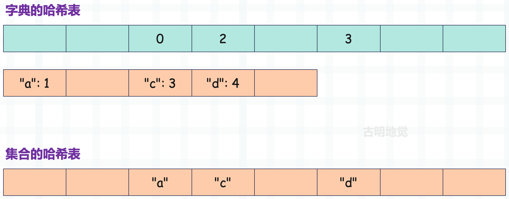
对于字典来说，键值对始终按照先来后到的顺序添加在键值对数组中，然后将它在键值对数组中的索引保存在指定的哈希槽中。由于索引为 5 的哈希槽保存的是 -2，处于 Dummy 态，因此直接将它设置为 3。
同理对于集合来说也是类似的。数组索引为 5 的位置保存的值等于 dummy，处于 Dummy 态，说明该元素被删除了，那么直接替换掉。因此整个过程的逻辑很简单：由于索引会存在冲突，所以元素删除之后，需要写入一个特殊的墓碑值，也就是这里的 dummy，因为要保证探测链不断裂。但如果集合后续添加元素时，正好撞上了一个 Dummy 态的 entry，那么会直接替换掉。
所以不论是字典还是集合，只要处于 Dummy 态，都可以替换掉。因为 Dummy 态存在的目的就是为了保证探测链不断裂，而替换之后探测链依旧是完整的。
小结
以上我们就剖析了集合的底层结构以及它的创建过程，不难发现集合的实现比字典要简单很多，并且集合没有自己的缓存池。
下一篇文章来介绍集合的相关操作。
欢迎大家关注我的公众号：古明地觉的编程教室。
如果觉得文章对你有所帮助，也可以请作者吃个馒头，Thanks♪(･ω･)ﾉ。
楔子
本篇文章来聊一聊集合支持的操作，比如元素的添加、删除，以及集合的扩容等等。并且集合还支持交集、并集、差集等运算，它们又是如何实现的呢？下面就一起来看一看。
add 方法：添加元素
调用 add 方法可以向集合添加一个元素，在底层会执行 set_add 函数。
// Objects/setobject.c
static PyObject *
set_add(PySetObject *so, PyObject *key)
{
// 调用了 set_add_key 函数
if (set_add_key(so, key))
return NULL;
// 返回 None
Py_RETURN_NONE;
}
static int
set_add_key(PySetObject *so, PyObject *key)
{
Py_hash_t hash;
// 计算哈希值，由于字符串内部会缓存自身的哈希值，因此需要判断一下
// 如果 key 不是字符串，或者 key 是字符串、但哈希值为 -1（尚未计算过）
// 那么计算哈希值，但如果计算之后的结果是 -1，说明对象不支持哈希
if (!PyUnicode_CheckExact(key) ||
(hash = ((PyASCIIObject *) key)->hash) == -1) {
hash = PyObject_Hash(key);
if (hash == -1)
return -1;
}
// 调用 set_add_entry
return set_add_entry(so, key, hash);
}
假设有一个集合 so，那么 so.add("abc") 最终等价于 set_add_entry(so, "abc", hash("abc"))，所以核心逻辑位于 set_add_entry 里面，看一下它的实现，代码比较长。
// Objects/setobject.c
static int
set_add_entry(PySetObject *so, PyObject *key, Py_hash_t hash)
{
setentry *table;
setentry *freeslot;
setentry *entry;
size_t perturb;
size_t mask;
size_t i;
size_t j;
int cmp;
// 增加 key 的引用计数，当然这里的 key 指的就是集合的元素
Py_INCREF(key);
restart:
// mask 等于哈希表的容量减 1
mask = so->mask;
// 和字典一样，让 hash & mask 计算出一个索引
i = (size_t)hash & mask;
// 获取对应的 entry，里面包含了元素 key 和哈希值
// 如果 key == NULL，说明该位置还没有存储元素
// 此时就找到了合适的位置，跳转到 found_unused 标签
entry = &so->table[i];
if (entry->key == NULL)
goto found_unused;
freeslot = NULL;
// perturb 初始等于哈希值
perturb = hash;
while (1) {
// 到这里说明指定的位置已经存储了元素，那么判断哈希值是否相同
// 如果哈希值不同，那么 key 一定不相同
// 如果哈希值相同，那么 key 不一定相同
if (entry->hash == hash) {
// 所以当哈希值相等时，还要比较新添加的 key 和已存在的 key 是否相同
PyObject *startkey = entry->key;
assert(startkey != dummy);
、// 这里的 startkey 和 key 都是 C 的变量，它们都是指针
// 如果两者相等，说明指向的是同一个对象，那么直接判定为相等，于是跳转到 found_active 标签
if (startkey == key) // 相当于 Python 的 is
goto found_active;
// 如果 startkey 和 key 不等，说明指向的不是同一个对象
// 那么比较值是否相等，相当于 Python 的 ==
// 这里是针对字符串的一个快分支
if (PyUnicode_CheckExact(startkey)
&& PyUnicode_CheckExact(key)
&& _PyUnicode_EQ(startkey, key))
goto found_active;
table = so->table;
Py_INCREF(startkey);
// 如果 key 不是字符串，则执行通用比较逻辑
cmp = PyObject_RichCompareBool(startkey, key, Py_EQ);
Py_DECREF(startkey);
// cmp > 0，说明结果为真，即两个 key 的值相等
// 跳转到 found_active 标签
if (cmp > 0)
goto found_active;
// cmp < 0 表示执行比较操作时出现错误，基本不会发生
if (cmp < 0)
goto comparison_error;
// 到这里说明两个 key 虽然映射出的索引是一样的，但它们的值不相等
// 那么要怎么办呢？显然要看下一个 entry 是否可用
// 然后下面这三行代码估计让人有些费解，所做的事情如下
// 如果在查询的过程中，哈希表扩容了，或者 key 发生了改变，那么跳转到 restart 标签重新执行
// 但因为 GIL 的存在，实际不会发生
if (table != so->table || entry->key != startkey)
goto restart;
mask = so->mask;
}
/* 如果是 Unused 态的 entry，那么
* entry->key == NULL
* entry->hash == 0
*
* 如果是 Dummy 态的 entry，那么
* entry->key == dummy
* entry->hash == -1
*
* 如果是 Active 态的 entry，那么
* entry->key == some key
* entry->hash == some hash
*/
// 说明 entry 处于 dummy 态，将它赋值给 freeslot
else if (entry->hash == -1)
freeslot = entry;
// 关于这一步是做什么的，一会儿解释
if (i + LINEAR_PROBES <= mask) {
for (j = 0 ; j < LINEAR_PROBES ; j++) {
entry++;
if (entry->hash == 0 && entry->key == NULL)
goto found_unused_or_dummy;
if (entry->hash == hash) {
PyObject *startkey = entry->key;
assert(startkey != dummy);
if (startkey == key)
goto found_active;
if (PyUnicode_CheckExact(startkey)
&& PyUnicode_CheckExact(key)
&& _PyUnicode_EQ(startkey, key))
goto found_active;
table = so->table;
Py_INCREF(startkey);
cmp = PyObject_RichCompareBool(startkey, key, Py_EQ);
Py_DECREF(startkey);
if (cmp > 0)
goto found_active;
if (cmp < 0)
goto comparison_error;
if (table != so->table || entry->key != startkey)
goto restart;
mask = so->mask;
}
else if (entry->hash == -1)
freeslot = entry;
}
}
// 到这里说明 (&so->table[i])->key 和添加的 key 不相等，即出现了索引冲突
// 那么要改变规则，重新映射，直到映射出一个可用的位置
perturb >>= PERTURB_SHIFT;
i = (i * 5 + 1 + perturb) & mask;
entry = &so->table[i];
if (entry->key == NULL)
goto found_unused_or_dummy;
}
found_unused_or_dummy:
// 如果 freeslot == NULL，说明没有撞上 Dummy 态的 entry
// 跳转到 found_unused 标签
if (freeslot == NULL)
goto found_unused;
// 否则说明撞上了 Dummy 态的 entry
// 集合的长度加 1，或者说 Active 态的 entry 个数加 1
so->used++;
// 更新 key 和 hash
freeslot->key = key;
freeslot->hash = hash;
return 0;
found_unused:
// 执行到这里，说明找到了新的可用位置
// 那么不光 used 要加 1，fill 也要加 1
so->fill++;
so->used++;
// 更新 key 和 hash
entry->key = key;
entry->hash = hash;
// 如果哈希表的 entry 的个数（Active 态 + Dummy 态）没超过 mask * 3 / 5
// 那么目前的容量是合理的，直接返回
if ((size_t)so->fill*5 < mask*3)
return 0;
// 否则进行扩容，因为扩容的时候会丢弃 Dummy 的 entry
// 所以扩容之后的容量取决于 used，而不是 fill
// 如果 used 大于 50000，那么 2 倍扩容，否则 4 倍扩容
return set_table_resize(so, so->used>50000 ? so->used*2 : so->used*4);
found_active:
// 执行到这里，说明添加的元素已经存在了
// 那么减少 key 的引用计数，然后返回
Py_DECREF(key);
return 0;
comparison_error:
// 执行比较操作时出现错误，应该抛出异常，但这一步基本不会发生
Py_DECREF(key);
return -1;
}
所以整个过程和字典是类似的，依旧是将哈希值和 mask 按位与，得到索引，通过索引找到对应的 entry。接下来对 entry 分情况讨论。
如果 entry->key == NULL。
说明找到了可用的 entry，那么直接跳转到 found_unused 标签，然后修改 entry 的 key 和 hash 字段，这样新元素就添加成功了。
如果 entry->hash == hash。
说明找到的 entry 处于 Active 态，那么比较两个 key 是否相等。如果相等，证明添加的元素已存在，则不插入，直接减少引用计数，因为不是字典，不存在更新一说。但如果两个 key 不相等，说明出现索引冲突，那么要映射出一个新的索引，并且映射的方式和字典也是一样的。
perturb >>= PERTURB_SHIFT;
i = (i * 5 + 1 + perturb) & mask;
但字典和集合有一处不同，就是集合这里多了一个 for 循环。
// Objects/setobject.c
#define LINEAR_PROBES 9
static int
set_add_entry(PySetObject *so, PyObject *key, Py_hash_t hash)
{
// ...
while (1) {
// ...
// 当前映射出的索引为 i，如果 i + 9 没有超过 mask，那么循环 9 次
if (i + LINEAR_PROBES <= mask) {
for (j = 0 ; j < LINEAR_PROBES ; j++) {
entry++;
if (entry->hash == 0 && entry->key == NULL)
goto found_unused_or_dummy;
if (entry->hash == hash) {
PyObject *startkey = entry->key;
assert(startkey != dummy);
if (startkey == key)
goto found_active;
if (PyUnicode_CheckExact(startkey)
&& PyUnicode_CheckExact(key)
&& _PyUnicode_EQ(startkey, key))
goto found_active;
table = so->table;
Py_INCREF(startkey);
cmp = PyObject_RichCompareBool(startkey, key, Py_EQ);
Py_DECREF(startkey);
if (cmp > 0)
goto found_active;
if (cmp < 0)
goto comparison_error;
if (table != so->table || entry->key != startkey)
goto restart;
mask = so->mask;
}
else if (entry->hash == -1)
freeslot = entry;
}
}
// ...
}
// ...
}
当映射出的索引相同、但 key 不相同时，说明出现了索引冲突，对于字典来说，会立即重新映射，找到一个新的索引。而集合由于只用一个数组存储，可以有更好的做法。我们知道 CPU 是有缓存的，像 L1 Cache 加载数据会一次性加载 64 字节，称为一个 cache line。所以通过索引遍历包含 16 个 int32 的数组，每次 i++ 和每次 i += 4 的耗时是差不多的。
对于集合来说，因为映射出的索引是随机的，使得对应的 entry 可能不在 cache 中，从而导致 CPU 下一次要重新读取。所以 Python 引入了 LINEAR_PROBES，从当前的 entry 开始，向后查找 9 个 entry。如果还找不到可用位置，然后才重新计算，从而提高 cache 的稳定性。
如果 entry->hash == -1，或者说 entry->key == dummy。
说明撞上了一个 Dummy 态的 entry，但估计有人又注意到了一个问题。

就是在发现 Dummy 态的 entry 之后，为啥没有立即跳转到 found_unused_or_dummy 标签，而是要继续循环呢？
很简单，我们假设在发现 Dummy 态的 entry 之后立即跳转，看看会有什么后果。首先向集合添加一个元素 x，再添加一个元素 y，但 y 和 x 映射出的索引相同，那么在添加 y 的时候，会形成一条探测链，对应的元素就是 x->y。然后再将 x 删除，那么 x->y 就变成了 dummy->y。这时候如果再重新添加一个元素 y，那么肯定会撞上 Dummy 态的 entry，于是 dummy->y 就变成了 y->y。
所以当发现 Dummy 态的 entry 之后，如果立即跳转，就会无法消除集合的重复元素。因此正确的做法是先用变量保存起来，这里赋值给了 freeslot，然后继续查找。如果找到了相同的元素，那么就不添加了，因为集合中的元素是唯一的。但如果最后找到的 entry 的 key 为空，说明元素不存在，此时才能跳转到 found_unused_or_dummy 标签，然后对 freeslot 进行判断。如果不为空，说明撞上了 Dummy 态的 entry，那么直接复用该 entry 即可。
以上就是集合添加元素的过程，当然如果找到的是 Unused 态的 entry，还要判断容量的问题。如果 Active 态 + Dummy 态的 entry 个数不小于 3/5*mask，那么扩容，扩容的规则是判断 Active 态的 entry 个数是否大于 50000，是的话就 2 倍扩容，否则 4 倍扩容；
pop 方法：弹出元素
调用 pop 方法，可以从集合中弹出一个元素，在底层会执行 set_pop 方法。
// Objects/setobject.c
static PyObject *
set_pop(PySetObject *so, PyObject *Py_UNUSED(ignored))
{
// so->table 是指向 entry 数组首元素的指针
// so->finger 是做什么的，稍后解释，总之它是一个整数
// so->mask 等于 entry 数组的长度减 1，用于将取模运算优化成按位与运算
// 因此 so->finger & so->mask 会得到一个 0 ~ mask 之间的整数，我们记为 n
// 显然这里的变量 entry 会指向 entry 数组中索引 n 的元素
setentry *entry = so->table + (so->finger & so->mask);
// 变量 limit 则指向 entry 数组中最后一个元素（索引为 mask）
setentry *limit = so->table + so->mask;
PyObject *key;
// 如果集合长度为 0，那么 pop 方法会抛出 KeyError
if (so->used == 0) {
PyErr_SetString(PyExc_KeyError, "pop from an empty set");
return NULL;
}
// entry 有三种状态，但显然弹出的 entry 一定是 Active 态
// 所以如果 entry 处于 Unused 或 Dummy 态，直接下一轮循环
while (entry->key == NULL || entry->key==dummy) {
entry++;
// 我们记 so->finger & so->mask 的结果为 n
// 所以相当于从 entry 数组中索引为 n 的位置开始遍历
// 如果遍历到最后一个位置，也没找到 Active 态的 entry，那么从头开始遍历
if (entry > limit)
entry = so->table; // 让变量 entry 指向 entry 数组的首元素
// 所以不难发现，整个过程是先遍历 entry 数组中 [n: limit] 的部分
// 如果没有找到 Active 态 entry，那么将 entry 重置为 so->table，从头开始遍历
// 因为执行到这里，说明 so->used 大于 0，即集合的长度大于 0
// 那么当 entry > limit 时，在 entry 数组 [0: n] 的部分，一定存在 Active 态的 entry
}
// pop 方法会返回弹出的元素，所以获取 entry->key
key = entry->key;
// 元素被弹出了，对应的 entry 要进行伪删除，所谓的伪删除就是设置一个特殊的墓碑值
// 所以将 entry->key 设置为 dummy，将 entry->hash 设置为 -1
entry->key = dummy;
entry->hash = -1;
// 集合的长度减 1
so->used--;
// 将 finger 更新为被删除的 entry 在 entry 数组中的索引加 1
so->finger = entry - so->table + 1; /* next place to start */
return key;
}
所以删除的过程还是很简单的，如果不考虑 finger 字段，你就可以简单理解为遍历整个 entry 数组，找到 Active 态的 entry，然后删除即可。只是这么做会导致每次 pop 时，都要重头开始遍历数组。
而当引入了 finger 字段之后，由于该字段初始为 0，所以第一次 pop 时，会从数组的头部开始遍历。假设删除的是数组中索引为 n 的 entry，那么删除之后 finger 字段会被赋值为 n + 1，那么下一次 pop 就会从数组中索引为 n + 1 的 entry 开始遍历。
我们通过 ctypes 来验证这一点：
from ctypes import *
class PyObject(Structure):
_fields_ = [
("ob_refcnt", c_ssize_t),
("ob_type", c_void_p),
]
class SetEntry(Structure):
_fields_ = [
("key", POINTER(PyObject)),
("hash", c_longlong)
]
class PySetObject(PyObject):
_fields_ = [
("fill", c_ssize_t),
("used", c_ssize_t),
("mask", c_ssize_t),
("table", POINTER(SetEntry)),
("hash", c_long),
("finger", c_ssize_t),
("smalltable", (SetEntry * 8)),
("weakreflist", POINTER(PyObject)),
]
s = {11, 22, 33, 44}
# 获取 PySetObject 结构体实例
py_set_obj = PySetObject.from_address(id(s))
# 遍历 smalltable，打印索引和 key 的哈希值
# 对于整数来说，它的哈希值等于自身
for index, entry in enumerate(py_set_obj.smalltable):
print(index, entry.hash)
"""
0 0
1 33
2 0
3 11
4 44
5 0
6 22
7 0
"""
# finger 初始为 0，因此在 pop 元素的时候会从头开始遍历数组
# 找到第一个 Active 态的 entry
print(py_set_obj.finger)
"""
0
"""
# 显然第一次 pop 出的元素是 33
print(s.pop())
"""
33
"""
for index, entry in enumerate(py_set_obj.smalltable):
print(index, entry.hash)
"""
0 0
1 -1
2 0
3 11
4 44
5 0
6 22
7 0
"""
# 因为被伪删除了
# 所以索引为 1 的 entry->key 会被设置为 NULL，entry->hash 被设置为 -1
# 至于 finger 则等于 1 + 1，下一次 pop 时，会从索引为 2 的位置开始遍历
print(py_set_obj.finger)
"""
2
"""
# 那么同理，再次 pop 的时候，会弹出 11，然后 finger 变为 3 + 1 = 4
print(s.pop())
"""
11
"""
print(py_set_obj.finger)
"""
4
"""
以上就是 finger 字段的作用，它避免了每次都要从头遍历 entry 数组。从这里也不难发现，当一个集合不断执行 pop 方法，将所有元素依次弹出时，这些元素的顺序和直接遍历 entry 数组拿到的元素的顺序是一致的。
item1 = 22333
item2 = 177
item3 = 520
item4 = 10086
# 将它们映射成索引，由于是 4 个元素，因此哈希表容量为 8
index1 = item1 & 7
index2 = item2 & 7
index3 = item3 & 7
index4 = item4 & 7
print(index1, index2, index3, index4)
"""
5 1 0 6
"""
# 所以如果将 item1、item2、item3、item4 放到集合中
# 不管怎么排列，最终都是下面这个结果
# item3 会位于 entry 数组中索引为 0 的位置
# item2 会位于 entry 数组中索引为 1 的位置
# item1 会位于 entry 数组中索引为 5 的位置
# item4 会位于 entry 数组中索引为 6 的位置
# 所以不管是弹出元素，还是遍历元素，亦或是直接打印集合
# 元素顺序一定是 item3、item2、item1、item4
s1 = {item1, item2, item3, item4}
s2 = {item2, item1, item4, item3}
s3 = {item3, item1, item2, item4}
s4 = {item4, item3, item2, item1}
print(s1) # {520, 177, 22333, 10086}
print(s2) # {520, 177, 22333, 10086}
print(s3) # {520, 177, 22333, 10086}
print(s4) # {520, 177, 22333, 10086}
print(
item3, item2, item1, item4
) # 520 177 22333 10086
怎么样，是不是对集合又有了更深刻的认识了呢？
remove 方法：删除指定元素
remove 方法可以接收参数，删除集合中指定的元素。除了 remove，还有一个 discard 方法，这两个方法的作用一模一样，都是用来删除指定元素。区别就是当删除的元素不存在时，remove 方法会抛出 KeyError，而 discard 方法不会。
remove 方法在底层对应 set_remove 函数，discard 方法在底层对应 set_discard 函数，而 set_remove 函数只比 set_discard 函数多了一个 if 判断，我们来看一下。

以上是 set_remove 函数，注意图中绿色方框的部分，如果要删除的元素不存在，那么 rv 会等于 DISCARD_NOTFOUND，于是抛出 KeyError。
如果将绿色方框里的 if 逻辑删掉，得到的就是 set_discard 函数的源码。所以这两个函数做的事情是一样的，区别就是 set_remove 会多做一层检测，当删除的元素不存在时，set_remove 会主动抛出一个 KeyError，而 set_discard 函数则什么也不做。
所以这里我们只看 set_remove 函数即可。
// Objects/setobject.c
#define DISCARD_NOTFOUND 0
#define DISCARD_FOUND 1
static PyObject *
set_remove(PySetObject *so, PyObject *key)
{
// 要删除的 key，或者说元素
// 当然啦，从 C 的层面来看，删除 key 其实就是删除数组中该 key 对应的 entry
// 只不过这个删除是伪删除，即写入一个特殊的墓碑值
PyObject *tmpkey;
int rv;
// rv 表示删除结果，显然删除逻辑由 set_discard_key 函数实现
// 如果 rv < 0，表示删除元素时出现错误，比如传入了一个不可哈希的对象
// 如果 rv == 0，表示要删除的元素在集合中不存在
// 如果 rv == 1，表示成功将元素从集合中删除
rv = set_discard_key(so, key);
if (rv < 0) {
// 当传入一个不可哈希对象时，会抛出 TypeError
// 我们知道集合也是不可哈希的，但如果要删除的 key 是集合类型
// 那么解释器会额外做一个兜底操作，我们一会儿通过 Python 代码演示
if (!PySet_Check(key) || !PyErr_ExceptionMatches(PyExc_TypeError))
return NULL;
// 将回溯栈里的异常清空
PyErr_Clear();
// 基于集合里的元素创建不可变集合
tmpkey = make_new_set(&PyFrozenSet_Type, key);
if (tmpkey == NULL)
return NULL;
// 然后尝试删除这个不可变集合，如果还删除失败，则报错
rv = set_discard_key(so, tmpkey);
Py_DECREF(tmpkey);
if (rv < 0)
return NULL;
}
// 如果 rv == DISCARD_NOTFOUND，表示要删除的元素不存在
if (rv == DISCARD_NOTFOUND) {
_PyErr_SetKeyError(key); // 抛出 KeyError
return NULL;
}
Py_RETURN_NONE;
}
我们看到当元素删除失败时，如果 key 是集合类型，那么解释器会做一个兜底操作，这是什么意思呢？我们演示一遍。
try:
s = {[1, 2, 3]} # 列表不可哈希
except TypeError as e:
print(e)
"""
unhashable type: 'list'
"""
try:
s = {{1, 2, 3}} # 同样，集合也不可哈希
except TypeError as e:
print(e)
"""
unhashable type: 'set'
"""
# 当我们尝试 remove 列表时，依旧会抛出相同的错误
s = {1, 2, 3}
try:
s.remove([])
except TypeError as e:
print(e)
"""
unhashable type: 'list'
"""
# 但 remove 一个集合就不同了
s = {
frozenset({1, 2, 3}),
frozenset({4, 5, 6}),
}
# 不可变集合是可哈希对象，因此它可以放在集合中，也可以被删除
s.remove(frozenset({1, 2, 3}))
# 但删除可变集合理论上应该和删除列表一样，抛出 TypeError: unhashable type: 'set'
# 而事实上异常也确实产生了，保存在回溯栈中，但是从源码中我们看到，解释器会多做一个检测
# 如果删除的 key 是集合类型，并且栈里的异常是 TypeError，那么将异常清空
# 然后基于集合创建不可变集合，并尝试删除这个不可变集合
s.remove({4, 5, 6})
# 所以这里 s.remove({4, 5, 6}) 等价于 s.remove(frozenset({4, 5, 6}))
print(s)
"""
set()
"""
# 我们看到 s 里面的两个不可变集合被删除了
好，我们回到 set_remove 函数，它在删除元素时会调用 set_discard_key 函数，显然删除指定元素的核心逻辑位于此函数中，我们看一下它做了什么。
// Objects/setobject.c
static int
set_discard_key(PySetObject *so, PyObject *key)
{
Py_hash_t hash;
// 计算哈希值
if (!PyUnicode_CheckExact(key) ||
(hash = ((PyASCIIObject *) key)->hash) == -1) {
hash = PyObject_Hash(key);
if (hash == -1)
return -1;
}
// 调用 set_discard_entry 函数
// 传入三个参数：集合、要删除的 key、以及 key 的哈希值
return set_discard_entry(so, key, hash);
}
static int
set_discard_entry(PySetObject *so, PyObject *key, Py_hash_t hash)
{
setentry *entry;
PyObject *old_key;
// 将 key 映射成索引，并获取该索引对应的 entry 的指针
entry = set_lookkey(so, key, hash);
// 因为 entry 数组申请好之后，内部的每个 entry 都拥有一块合法的内存
// 所以指针不可能为 NULL，如果为 NULL，证明内部出问题了
if (entry == NULL) // 基本不会发生
return -1;
// 如果 entry->key 为 NULL，证明要删除的 key 不存在，返回 DISCARD_NOTFOUND
// 当 set_remove 函数发现返回的是 DISCARD_NOTFOUND，会抛出 KeyError
if (entry->key == NULL)
return DISCARD_NOTFOUND;
// 否则说明 key 存在
old_key = entry->key;
// 因为被删除了，所以将 entry->key、entry->hash 设置为 dummy 和 -1
entry->key = dummy;
entry->hash = -1;
// 集合长度减 1
so->used--;
// 减少 key 指向对象的引用计数，因为集合不再持有对它的引用
Py_DECREF(old_key);
// 返回 DISCARD_FOUND
return DISCARD_FOUND;
}
以上就是 set_remove 函数删除指定元素的具体细节，逻辑并不复杂。但是里面出现了一个 set_lookkey 函数，它的作用是将哈希值映射成索引，并返回指定的 entry。至于该函数的逻辑也很简单，它和 set_add 函数里面的逻辑是重复的。
static setentry *
set_lookkey(PySetObject *so, PyObject *key, Py_hash_t hash)
{
setentry *table;
setentry *entry;
size_t perturb;
size_t mask = so->mask;
size_t i = (size_t)hash & mask; /* Unsigned for defined overflow behavior */
size_t j;
int cmp;
entry = &so->table[i];
if (entry->key == NULL)
return entry;
perturb = hash;
while (1) {
if (entry->hash == hash) {
PyObject *startkey = entry->key;
/* startkey cannot be a dummy because the dummy hash field is -1 */
assert(startkey != dummy);
if (startkey == key)
return entry;
if (PyUnicode_CheckExact(startkey)
&& PyUnicode_CheckExact(key)
&& _PyUnicode_EQ(startkey, key))
return entry;
table = so->table;
Py_INCREF(startkey);
cmp = PyObject_RichCompareBool(startkey, key, Py_EQ);
Py_DECREF(startkey);
if (cmp < 0) /* unlikely */
return NULL;
if (table != so->table || entry->key != startkey) /* unlikely */
return set_lookkey(so, key, hash);
if (cmp > 0) /* likely */
return entry;
mask = so->mask; /* help avoid a register spill */
}
if (i + LINEAR_PROBES <= mask) {
for (j = 0 ; j < LINEAR_PROBES ; j++) {
entry++;
if (entry->hash == 0 && entry->key == NULL)
return entry;
if (entry->hash == hash) {
PyObject *startkey = entry->key;
assert(startkey != dummy);
if (startkey == key)
return entry;
if (PyUnicode_CheckExact(startkey)
&& PyUnicode_CheckExact(key)
&& _PyUnicode_EQ(startkey, key))
return entry;
table = so->table;
Py_INCREF(startkey);
cmp = PyObject_RichCompareBool(startkey, key, Py_EQ);
Py_DECREF(startkey);
if (cmp < 0)
return NULL;
if (table != so->table || entry->key != startkey)
return set_lookkey(so, key, hash);
if (cmp > 0)
return entry;
mask = so->mask;
}
}
}
perturb >>= PERTURB_SHIFT;
i = (i * 5 + 1 + perturb) & mask;
entry = &so->table[i];
if (entry->key == NULL)
return entry;
}
}
显然该函数的逻辑在介绍 set_add 函数的时候就说过了。
- 如果
entry->key为空，说明找到了 Unused 态的 entry，即 key 不存在，那么直接将 entry 返回即可。 - 如果
entry->key不为空，那么比较entry->hash和传入的 hash 是否相等，如果哈希值不相等，那么 key 一定不相等，说明出现了索引冲突。当然啦，如果 entry 处于 Dummy 态，那么哈希值肯定也不相等，但不管哪一种，都要重新映射。 - 如果哈希值相等，那么比较 key 是否相等，如果 key 相等，说明查找的 key 存在于集合中，那么返回对应的 entry。如果 key 不相等，则重新映射。
copy 方法：拷贝一个集合
调用 copy 方法可以拷贝一个集合，在底层会执行 set_copy 方法。
// Objects/setobject.c
static PyObject *
set_copy(PySetObject *so, PyObject *Py_UNUSED(ignored))
{
return make_new_set_basetype(Py_TYPE(so), (PyObject *)so);
}
static PyObject *
make_new_set_basetype(PyTypeObject *type, PyObject *iterable)
{
if (type != &PySet_Type && type != &PyFrozenSet_Type) {
if (PyType_IsSubtype(type, &PySet_Type))
type = &PySet_Type;
else
type = &PyFrozenSet_Type;
}
return make_new_set(type, iterable);
}
static PyObject *
make_new_set(PyTypeObject *type, PyObject *iterable)
{
PySetObject *so;
// 为集合申请内存
so = (PySetObject *)type->tp_alloc(type, 0);
if (so == NULL)
return NULL;
// 字段初始化，显然刚创建的集合的容量为 8
so->fill = 0;
so->used = 0;
so->mask = PySet_MINSIZE - 1;
so->table = so->smalltable;
so->hash = -1;
so->finger = 0;
so->weakreflist = NULL;
// 调用 set_update_internal 函数，将可迭代对象的元素添加到集合中
if (iterable != NULL) {
if (set_update_internal(so, iterable)) {
Py_DECREF(so);
return NULL;
}
}
return (PyObject *)so;
}
static int
set_update_internal(PySetObject *so, PyObject *other)
{
// 参数 so 表示集合，other 表示可迭代对象
PyObject *key, *it;
// 如果 other 的类型也是集合（或者不可变集合），那么调用 set_merge 函数
if (PyAnySet_Check(other))
return set_merge(so, other);
// 否则检测 other 是否为字典
if (PyDict_CheckExact(other)) {
PyObject *value;
Py_ssize_t pos = 0;
Py_hash_t hash;
Py_ssize_t dictsize = PyDict_GET_SIZE(other);
// 判断 so->fill + dictsize 是否达到了 so->mask 的 3/5
// 如果达到了，那么扩容
if (dictsize < 0)
return -1;
if ((so->fill + dictsize)*5 >= so->mask*3) {
if (set_table_resize(so, (so->used + dictsize)*2) != 0)
return -1;
}
// 遍历字典，将字典的 key 和 hash 包装成 entry，添加到数组中，value 丢弃
// 这里调用的是 set_add_entry 函数，我们介绍集合的 add 方法时说过
while (_PyDict_Next(other, &pos, &key, &value, &hash)) {
if (set_add_entry(so, key, hash))
return -1;
}
return 0;
}
// 到这里说明 other 不是字典，那么迭代出来的整体就是 key
// 基于可迭代对象创建迭代器
it = PyObject_GetIter(other);
if (it == NULL)
return -1;
// 将元素迭代出来
while ((key = PyIter_Next(it)) != NULL) {
// 调用 set_add_key 函数，它内部会先计算 key 的哈希值
// 然后调用 set_add_entry 函数，添加元素
if (set_add_key(so, key)) {
Py_DECREF(it);
Py_DECREF(key);
return -1;
}
Py_DECREF(key);
}
Py_DECREF(it);
if (PyErr_Occurred())
return -1;
return 0;
}
以上就是集合的 copy 方法的底层实现，非常简单。说白了就是先创建一个新的集合，然后调用 set_update_internal 函数将老集合里面的元素拷贝过去。当然啦，该函数可以拷贝任意可迭代对象里的元素，不仅仅是集合。只是当可迭代对象是集合时，会单独调用 set_merge 函数，如果不是集合，那么会直接遍历。
update 方法：合并多个可迭代对象
调用 update 方法，可以合并多个可迭代对象，举例说明。
s = {1, 2, 3}
s.update([4, 5, 6], (7, 8, 9))
print(s)
"""
{1, 2, 3, 4, 5, 6, 7, 8, 9}
"""
相信你已经知道底层是怎么做的了，获取每个可迭代对象，然后调用 set_update_internal 函数即可。那么底层是不是这么做的呢？我们来看一下，update 方法在底层对应 set_update 函数。
// Objects/setobject.c
static PyObject *
set_update(PySetObject *so, PyObject *args)
{
Py_ssize_t i;
for (i=0 ; i<PyTuple_GET_SIZE(args) ; i++) {
PyObject *other = PyTuple_GET_ITEM(args, i);
if (set_update_internal(so, other))
return NULL;
}
Py_RETURN_NONE;
}
跟我们分析的一样，非常简单。
另外集合还有一个 union 方法，功能和 update 方法类似，但它会返回一个新的集合。
s1 = {1, 2, 3}
s1.update([4, 5, 6], (7, 8, 9))
print(s1)
"""
{1, 2, 3, 4, 5, 6, 7, 8, 9}
"""
s2 = {1, 2, 3}
s2_new = s2.union([4, 5, 6], (7, 8, 9))
print(s2)
print(s2_new)
"""
{1, 2, 3}
{1, 2, 3, 4, 5, 6, 7, 8, 9}
"""
update 方法会原地修改，而 union 方法会返回新的集合，不会影响原有的集合。
其它的一些方法
集合还有一些常用的方法，只不过我们更倾向于使用操作符的形式。
- s1 & s2：对两个集合做交集运算，返回新的集合，里面包含同时出现在 s1 和 s2 当中的元素；
- s1 | s2：对两个集合做并集运算，返回新的集合，里面包含出现在 s1 或 s2 当中的元素；
- s1 - s2：对两个集合做差集运算，返回新的集合，里面包含出现在 s1 当中、但没有出现在 s2 当中的元素；
- s1 ^ s2：对两个集合做对称差集运算，返回新的集合，里面包含只出现在 s1 当中、或只出现在 s2 当中的元素；
- s1 == s2：判断两个集合的元素是否完全相同；
- s1 >= s2：判断 s2 是否是 s1 的子集，如果是，那么 s2 - s1 == {}。
- s1 <= s2：判断 s1 是否是 s2 的子集，如果是，那么 s1 - s2 == {}。
- s1 > s2：判断 s2 是否是 s1 的真子集；
- s1 < s2：判断 s1 是否是 s2 的真子集；
注意：在使用这些操作符时，两侧的 s1 和 s2 都要求是集合类型。但如果使用操作符对应的方法，那么则不要求 s2 是集合类型，只要是可迭代对象即可。
# 做交集运算
s = {"a", "b", "c"}
print(s.intersection("bcd"))
"""
{'b', 'c'}
"""
# print(s & "bcd") # TypeError
这些方法都非常的有用，可以自己测试一下，加深一遍印象。至于这些方法的底层实现，感兴趣也可以去 Objects/setobject.c 中探索一番，方法都定义在 set_methods 数组中。这里我们就以集合的交集运算为例，看一下实现过程。
// Objects/setobject.c
// 判断集合是否包含某个元素
static int
set_contains_entry(PySetObject *so, PyObject *key, Py_hash_t hash)
{
setentry *entry;
// 调用 set_lookkey，返回 entry
// 如果 entry->key 不为空，证明元素存在，否则不存在
entry = set_lookkey(so, key, hash);
if (entry != NULL)
return entry->key != NULL;
return -1;
}
// 两个集合做交集运算，返回新的集合
static PyObject *
set_intersection(PySetObject *so, PyObject *other)
{
PySetObject *result;
PyObject *key, *it, *tmp;
Py_hash_t hash;
int rv;
// 快分支：如果两个集合相等，那么直接把其中一个拷贝一份
if ((PyObject *)so == other)
return set_copy(so, NULL);
// 否则创建一个新的空集合
result = (PySetObject *)make_new_set_basetype(Py_TYPE(so), NULL);
if (result == NULL)
return NULL;
// 如果 other 是集合
if (PyAnySet_Check(other)) {
Py_ssize_t pos = 0;
setentry *entry;
// 如果 len(other) > len(so)，那么两者交换位置，也就是遍历元素较少的集合
if (PySet_GET_SIZE(other) > PySet_GET_SIZE(so)) {
tmp = (PyObject *)so;
so = (PySetObject *)other;
other = tmp;
}
// 遍历集合 other
while (set_next((PySetObject *)other, &pos, &entry)) {
key = entry->key;
hash = entry->hash;
// 判断 key 是否存在于集合 so 中
rv = set_contains_entry(so, key, hash);
if (rv < 0) {
Py_DECREF(result);
return NULL;
}
// 如果存在，那么添加到新集合 result 中
if (rv) {
if (set_add_entry(result, key, hash)) {
Py_DECREF(result);
return NULL;
}
}
}
return (PyObject *)result;
}
// 如果 other 不是集合，那么获取它的迭代器
it = PyObject_GetIter(other);
if (it == NULL) {
Py_DECREF(result);
return NULL;
}
// 直接迭代内部的元素，以下逻辑和上面类似
while ((key = PyIter_Next(it)) != NULL) {
hash = PyObject_Hash(key);
if (hash == -1)
goto error;
// 如果 key 在 so 中存在，那么添加到 result 中
rv = set_contains_entry(so, key, hash);
if (rv < 0)
goto error;
if (rv) {
if (set_add_entry(result, key, hash))
goto error;
}
Py_DECREF(key);
}
Py_DECREF(it);
if (PyErr_Occurred()) {
Py_DECREF(result);
return NULL;
}
return (PyObject *)result;
error:
Py_DECREF(it);
Py_DECREF(result);
Py_DECREF(key);
return NULL;
}
以上就是集合的交集运算，至于其它的运算操作也是类似的，感兴趣可以看一下。
小结
关于集合相关的内容我们就介绍完了，当然到目前为止，Python 的内置数据结构也基本介绍完了。回顾一下我们介绍了哪些数据结构：
- 浮点数；
- 整数；
- 复数；
- 布尔值
- None；
- 切片；
- bytes 对象；
- bytearray 对象；
- 字符串；
- 列表；
- 元组；
- 字典；
- 集合；
以上这些结构都是内置的，当然还有一些数据结构是定义在标准库里面的，我们后面再说。
下一篇文章来介绍迭代器。
欢迎大家关注我的公众号：古明地觉的编程教室。
如果觉得文章对你有所帮助，也可以请作者吃个馒头，Thanks♪(･ω･)ﾉ。
楔子
只要类型对象实现了 __iter__，那么它的实例对象就被称为可迭代对象（Iterable），比如字符串、元组、列表、字典、集合等等。而整数、浮点数，由于其类型对象没有实现 __iter__，所以它们不是可迭代对象。
from typing import Iterable
print(
isinstance("", Iterable),
isinstance((), Iterable),
isinstance([], Iterable),
isinstance({}, Iterable),
isinstance(set(), Iterable),
) # True True True True True
print(
isinstance(0, Iterable),
isinstance(0.0, Iterable),
) # False False
可迭代对象的一大特点是可以被 for 循环遍历，但能被 for 循环遍历的则不一定是可迭代对象。我们举个例子：
class A:
def __getitem__(self, item):
return f"参数 item: {item}"
a = A()
# 内部定义了 __getitem__
# 首先可以让实例对象像字典一样访问属性
print(a["name"]) # 参数 item: name
print(a["satori"]) # 参数 item: satori
# 此外还可以像可迭代对象一样被 for 循环
# 循环的时候会自动给 item 传值：0 1 2 3 ...
# 如果内部出现了 StopIteration，循环结束
# 否则会一直循环下去，这里我们手动 break
for idx, val in enumerate(a):
print(val)
if idx == 5:
break
"""
参数 item: 0
参数 item: 1
参数 item: 2
参数 item: 3
参数 item: 4
参数 item: 5
"""
所以实现了 __getitem__ 的类的实例，也是可以被 for 循环的，但它并不是可迭代对象。
from typing import Iterable
print(isinstance(a, Iterable)) # False
总之判断一个对象是否是可迭代对象，就看它的类型对象有没有实现 __iter__。可迭代对象我们知道了，那什么是迭代器呢？很简单，调用可迭代对象的 __iter__ 方法，得到的就是迭代器。
迭代器的创建
不同类型的对象，都有自己的迭代器，举个栗子。
data = [1, 2, 3]
# 底层调用的其实是 list.__iter__(data)
# 或者说 PyList_Type.tp_iter(data)
it = data.__iter__()
print(it)
"""
<list_iterator object at 0x102c1cf10>
"""
print(str.__iter__(""))
"""
<str_iterator object at 0x100e623b0>
"""
print(tuple.__iter__(()))
"""
<tuple_iterator object at 0x100e623b0>
"""
# 不难发现，迭代器的种类非常多
# 比如 list_iterator、str_iterator、tuple_iterator 等等
迭代器也是可迭代对象，只不过迭代器内部的 __iter__ 返回的还是它本身。当然啦，在创建迭代器的时候，我们更常用内置函数 iter。
data = [1, 2, 3]
# 等价于 type(data).__iter__(data)
it = iter(data)
但是 iter 函数还有一个鲜为人知的用法，我们来看一下：
val = 0
def foo():
global val
val += 1
return val
# iter 可以接收一个参数: iter(可迭代对象)
# iter 也可以接收两个参数: iter(可调用对象, value)
for i in iter(foo, 5):
print(i)
"""
1
2
3
4
"""
进行迭代的时候，会不停地调用可调用对象，直到返回值等于传递的第二个参数 value（在底层被称为哨兵），然后终止迭代。我们看一下 iter 函数的底层实现。
// Python/bltinmodule.c
static PyObject *
builtin_iter(PyObject *self, PyObject *const *args, Py_ssize_t nargs)
{
PyObject *v;
// 内置函数 iter 接收 1 ~ 2 个参数
if (!_PyArg_CheckPositional("iter", nargs, 1, 2))
return NULL;
// 如果 nargs 等于 1，那么 args[0] 是可迭代对象
// 如果 nargs 等于 2，那么 args[0] 是可调用对象
v = args[0];
// nargs == 1，说明 v 是可迭代对象
if (nargs == 1)
// 调用 PyObject_GetIter 获取对象的迭代器
return PyObject_GetIter(v);
// 否则说明 nargs == 2，那么 v 是可调用对象
// 这里进行检测，如果不是，抛出 TypeError
if (!PyCallable_Check(v)) {
PyErr_SetString(PyExc_TypeError,
"iter(v, w): v must be callable");
return NULL;
}
// 获取哨兵
PyObject *sentinel = args[1];
// 一会儿单独解释
return PyCallIter_New(v, sentinel);
}
以上就是 iter 函数的内部逻辑，既可以接收一个参数，也可以接收两个参数。这里我们只看接收一个可迭代对象的情况，所以核心就在 PyObject_GetIter 函数里面，它是根据可迭代对象生成迭代器的关键，我们来看一下它的逻辑是怎样的？
// Objects/abstract.c
PyObject *
PyObject_GetIter(PyObject *o)
{
// 获取可迭代对象的类型对象，比如 o 是列表，那么 t 就是 list
PyTypeObject *t = o->ob_type;
// 我们说类型对象定义的操作，决定了实例对象的行为
// 实例对象调用的那些方法都是定义在类型对象里面的
// 还是那句话：obj.func() 等价于 type(obj).func(obj)
getiterfunc f;
// 所以这里是获取类型对象的 tp_iter 字段
// 也就是 Python 中的 __iter__
f = t->tp_iter;
// 如果 f 为 NULL，说明类型对象的内部没有定义 __iter__
// 像 str、tuple、list 等类型对象，它们的 tp_iter 字段都是不为 NULL 的
if (f == NULL) {
// 如果 tp_iter 为 NULL，那么解释器会退而求其次
// 检测该类型对象中是否定义了 __getitem__
// 如果定义了，那么直接调用 PySeqIter_New，创建 seqiterobject 对象
// 下面的 PySequence_Check 函数负责检测类型对象是否实现了 __getitem__
// __getitem__ 对应 tp_as_sequence->sq_item
if (PySequence_Check(o))
return PySeqIter_New(o);
// 走到这里说明该类型对象既没有 __iter__、也没有 __getitem__
// 因此它的实例对象不具备可迭代的性质，于是抛出异常
return type_error("'%.200s' object is not iterable", o);
}
else {
// 否则说明定义了 __iter__
// 调用 o->ob_type->tp_iter(o) 返回对应的迭代器
PyObject *res = (*f)(o);
// 但如果返回值 res 不为 NULL、并且还不是迭代器
// 证明 __iter__ 的返回值有问题，于是抛出异常
if (res != NULL && !PyIter_Check(res)) {
PyErr_Format(PyExc_TypeError,
"iter() returned non-iterator "
"of type '%.100s'",
res->ob_type->tp_name);
Py_DECREF(res);
res = NULL;
}
// 返回 res
return res;
}
}
以上便是 iter 函数的底层实现，还是很简单的。然后是里面的 __getitem__，我们说如果类型对象内部没有定义 __iter__，那么解释器会退而求其次，检测内部是否定义了 __getitem__。
因此以上就是迭代器的创建过程，每个可迭代对象都有自己的迭代器，而迭代器本质上就是对原始数据的一层封装罢了。
迭代器的底层结构
由于迭代器的种类非常多，字符串、元组、列表等等，都有自己的迭代器，这里就不一一介绍了。我们就以列表的迭代器为例，看看迭代器在底层的结构是怎么样的。
// Objects/listobject.c
// 列表迭代器的类型对象为 <class 'list_iterator'>
// 但这个类，解释器并没有暴露给我们，所以需要通过 type 获取
// 然后它的 tp_basicsize 字段为 sizeof(listiterobject)
// 这就说明列表迭代器在底层由 listiterobject 结构体表示
PyTypeObject PyListIter_Type = {
PyVarObject_HEAD_INIT(&PyType_Type, 0)
"list_iterator", /* tp_name */
sizeof(listiterobject), /* tp_basicsize */
0, /* tp_itemsize */
// ...
};
typedef struct {
PyObject_HEAD
Py_ssize_t it_index;
// 指向创建该迭代器的列表
PyListObject *it_seq;
} listiterobject;
所以迭代器就是基于可迭代对象进行了一层简单的封装，所谓元素迭代本质上还是基于索引，并且每迭代一次，索引就自增 1。一旦出现索引越界，就将 it_seq 设置为 NULL，表示迭代器迭代完毕。
我们实际演示一下：
from ctypes import *
class PyObject(Structure):
_fields_ = [
("ob_refcnt", c_ssize_t),
("ob_size", c_void_p)
]
class ListIterObject(PyObject):
_fields_ = [
("it_index", c_ssize_t),
("it_seq", POINTER(PyObject))
]
it = iter([1, 2, 3])
it_obj = ListIterObject.from_address(id(it))
# it_seq 指向列表 [1, 2, 3]，it_index 初始为 0
print(it_obj.it_index) # 0
# 进行迭代
next(it)
# 索引自增 1，此时 it_index 等于 1
print(it_obj.it_index) # 1
# 再次迭代
next(it)
# 此时 it_index 等于 2
print(it_obj.it_index) # 2
# 再次迭代
next(it)
# 此时 it_index 等于 3
print(it_obj.it_index) # 3
当 it_index 为 3 的时候，如果再次迭代，那么底层会发现 it_index 已超过最大索引，于是知道迭代器已经迭代完毕了。因此会将 it_seq 设置为 NULL，并抛出 StopIteration。如果是 for 循环，那么会自动捕获此异常，然后停止循环。
所以这就是迭代器，真的没有想象中的那么神秘，甚至在知道它的实现原理之后，还觉得有点 low，因为就是将原始数据包了一层，加了一个索引而已。所谓的迭代仍然是基于索引来做的，并且每迭代一次，索引就自增 1。当索引超出范围时，证明迭代完毕了，于是将 it_seq 字段设置为 NULL，抛出 StopIteration。
迭代器是怎么迭代元素的
迭代器的创建我们知道了，那么它是怎么迭代元素的呢？首先迭代元素可以通过 next 函数，当然它本质上也是调用了对象的 __next__ 方法。
// Python/bltinmodule.c
static PyObject *
builtin_next(PyObject *self, PyObject *const *args, Py_ssize_t nargs)
{
PyObject *it, *res;
// 同样接收 1 ~ 2 个参数
// 因为调用 next 函数时，可以传入一个默认值
// 表示当迭代器没有元素可以迭代的时候，会返回指定的默认值
if (!_PyArg_CheckPositional("next", nargs, 1, 2))
return NULL;
// 迭代器
it = args[0];
// 类型检测，如果不是迭代器，那么抛出异常
if (!PyIter_Check(it)) {
PyErr_Format(PyExc_TypeError,
"'%.200s' object is not an iterator",
it->ob_type->tp_name);
return NULL;
}
// it->ob_type 表示获取类型对象，也就是该迭代器的类型
// 当然具体类型是哪一种并不确定，可能是列表迭代器、元组迭代器、字符串迭代器等等
// 然后再获取 tp_iternext 字段，相当于 __next__
// 拿到函数指针之后，传入迭代器进行调用
res = (*it->ob_type->tp_iternext)(it);
// 如果 res 不为 NULL，那么证明迭代到值了，直接返回
if (res != NULL) {
return res;
} else if (nargs > 1) {
// 否则的话，说明没有迭代到值（返回 NULL），而这时候有两种情况
// 1）迭代器已耗尽，2）在迭代过程中出现异常
// 那么判断 nargs 是否大于 1，如果大于 1，说明设置了默认值
PyObject *def = args[1];
// 检测异常是不是迭代完毕时（或者手动 raise）产生的 StopIteration 异常
if (PyErr_Occurred()) {
if(!PyErr_ExceptionMatches(PyExc_StopIteration))
// 如果不是，说明程序的逻辑有问题，直接 return NULL，结束执行
// 然后在 Python 里面我们会看到打印到 stderr 中的异常信息
return NULL;
// 如果异常是 StopIteration，证明迭代完毕了
// 但我们设置了默认值，那么就应该返回默认值
// 而不应该抛出 StopIteration，于是将异常回溯栈给清空
PyErr_Clear();
}
// 增加默认值的引用计数，然后返回
Py_INCREF(def);
return def;
} else if (PyErr_Occurred()) {
// 走到这里说明 res == NULL，并且没有指定默认值
// 那么当发生异常时，将异常直接抛出
return NULL;
} else {
// 都不是的话，直接抛出 StopIteration
PyErr_SetNone(PyExc_StopIteration);
return NULL;
}
}
以上就是 next 函数的背后逻辑，实际上还是调用了迭代器的 __next__ 方法。
data = [1, 2, 3]
it = iter(data)
# 然后迭代，等价于 next(it)
print(type(it).__next__(it)) # 1
print(type(it).__next__(it)) # 2
print(type(it).__next__(it)) # 3
# 但是 next 可以指定默认值
# 如果不指定默认值，或者还是 type(it).__next__(it)
# 那么就会报错，抛出 StopIteration
print(next(it, 666)) # 666
以上就是元素的迭代，由于内置函数 next 还可以指定一个默认值，所以更强大一些。当然在不指定默认值的情况下，next(it) 和 type(it).__next__(it) 最终是殊途同归的。
我们仍以列表的迭代器为例，看看 __next__ 的具体实现。

由于 tp_iternext 字段指向了 listiter_next，证明迭代的时候调用的是这个函数。
// Objects/listobject.c
static PyObject *
listiter_next(listiterobject *it)
{
// 迭代器只是对可迭代对象的一层封装
// 如果是列表的迭代器，那么内部的 it_seq 字段便指向列表
PyListObject *seq;
PyObject *item;
assert(it != NULL);
// 如果 it->it_seq 等于 NULL，说明迭代器已经迭代完毕了
// 从这里也能看出迭代器不能二次循环迭代
seq = it->it_seq;
if (seq == NULL)
return NULL;
assert(PyList_Check(seq));
// 如果 it->it_index 小于列表的长度
if (it->it_index < PyList_GET_SIZE(seq)) {
// 那么获取元素
item = PyList_GET_ITEM(seq, it->it_index);
// it_index 自增 1
++it->it_index;
// 增加元素的引用计数，并返回
Py_INCREF(item);
return item;
}
// 否则说明 it_index 已经达到了列表的长度
// 再迭代就索引越界了，而对于迭代器来说
// 当 it_index 等于列表长度时，就证明所有元素都迭代完毕了
it->it_seq = NULL; // 将 it_seq 设置为 NULL
Py_DECREF(seq);
return NULL;
}
显然这和之前分析的是一样的，以上我们就以列表为例，考察了迭代器的实现原理和元素迭代的具体过程。当然其它对象也有自己的迭代器，有兴趣可以看一看，实现方式都大同小异。
iter 函数接收两个参数
前面说了，iter 函数如果接收一个参数，那么这个参数必须是可迭代对象。如果接收两个参数，那么第一个参数要是 callable，第二个参数是哨兵。迭代时会调用 callable，当返回值等于哨兵时，迭代结束，那么它的底层是怎么实现的呢？这里简单补充一下。
// Python/bltinmodule.c
static PyObject *
builtin_iter(PyObject *self, PyObject *const *args, Py_ssize_t nargs)
{
// ...
PyObject *sentinel = args[1];
// 如果参数个数等于 2，会调用 PyCallIter_New
return PyCallIter_New(v, sentinel);
}
// Objects/iterobject.c
typedef struct {
PyObject_HEAD
PyObject *it_callable;
PyObject *it_sentinel;
} calliterobject;
PyObject *
PyCallIter_New(PyObject *callable, PyObject *sentinel)
{
// iter(callable, value) 会返回一个 <class 'callable_iterator'> 实例
// 在底层由 calliterobject 结构体实现
calliterobject *it;
// 为 calliterobject 实例申请内存
it = PyObject_GC_New(calliterobject, &PyCallIter_Type);
if (it == NULL)
return NULL;
// 初始化字段
Py_INCREF(callable);
it->it_callable = callable;
Py_INCREF(sentinel);
it->it_sentinel = sentinel;
_PyObject_GC_TRACK(it);
return (PyObject *)it;
}
// 再来看看迭代过程
static PyObject *
calliter_iternext(calliterobject *it)
{
PyObject *result;
// 如果 it_callable 字段为空，说明迭代结束，不能再次迭代
if (it->it_callable == NULL) {
return NULL;
}
// 调用 it_callable，拿到返回值 result
result = _PyObject_CallNoArg(it->it_callable);
if (result != NULL) {
int ok;
// 如果 result 和哨兵相等，那么 ok == 1，否则 ok == 0
ok = PyObject_RichCompareBool(it->it_sentinel, result, Py_EQ);
// ok == 0，说明两者不相等，那么返回 result
if (ok == 0) {
return result;
}
// ok > 0，说明返回值和哨兵相等，那么迭代结束
// 减少引用计数，并将 it_callable 和 it_sentinel 字段设置为 NULL
Py_DECREF(result);
if (ok > 0) {
Py_CLEAR(it->it_callable);
Py_CLEAR(it->it_sentinel);
}
}
else if (PyErr_ExceptionMatches(PyExc_StopIteration)) {
// 如果函数抛出了 StopIteration 异常，同样视为迭代结束
PyErr_Clear();
Py_CLEAR(it->it_callable);
Py_CLEAR(it->it_sentinel);
}
return NULL;
}
还是比较简单的，就是不停地调用可迭代对象，当返回值和哨兵相等时，迭代结束。
小结
通过探究迭代器，我们再次体会到了 Python 的设计哲学，虽然一切皆对象，但是拿到的都是对象的指针。像变量、函数参数等，它们存储的都不是对象本身，而是对象的泛型指针。而基于 PyObject * 和 ob_type，Python 巧妙地实现了多态。
不管变量 obj 指向什么样的可迭代对象，都可以交给 iter 函数，会调用类型对象内部的 __iter__（底层对应 tp_iter 字段），得到迭代器。不管变量 it 指向什么样的迭代器，都可以交给 next 函数进行迭代，会调用迭代器的类型对象的 __next__（底层对应 tp_iternext 字段），将值迭代出来。
至于 __iter__ 和 __next__ 本身，每个迭代器都会有，我们这里只以列表的迭代器为例。所以这是不是实现了多态呢？
这就是 Python 的设计哲学，变量只是一个指针，传递变量的时候相当于传递指针（将指针拷贝一份），但操作一个变量的时候会自动操作变量（指针）指向的内存。
以上就是 Python 迭代器的相关内容，当然你也完全可以自己封装一个迭代器，有兴趣可以试一下。
欢迎大家关注我的公众号：古明地觉的编程教室。
如果觉得文章对你有所帮助，也可以请作者吃个馒头，Thanks♪(･ω･)ﾉ。
楔子
当我们执行一个 py 文件的时候，只需要在命令行中输入 python xxx.py 即可，但你有没有想过这背后的流程是怎样的呢？
首先 py 文件不是一上来就直接执行的，而是会先有一个编译的过程，整个步骤如下：
这里我们看到了 Python 编译器、Python 虚拟机，而且我们平常还会说 Python 解释器，那么三者之间有什么区别呢？

Python 编译器负责将 Python 源代码编译成 PyCodeObject 对象，然后交给 Python 虚拟机来执行。
那么 Python 编译器和 Python 虚拟机都在什么地方呢？如果打开 Python 的安装目录，会发现有一个 python.exe，点击的时候会通过它来启动一个终端。但问题是这个文件大小还不到 100K，不可能容纳一个编译器加一个虚拟机，所以它下面还有一个 python38.dll。没错，编译器、虚拟机都藏身于 python38.dll 当中。
因此 Python 虽然是解释型语言，但也有编译的过程。源代码会被编译器编译成 PyCodeObject 对象，然后再交给虚拟机来执行。而之所以要存在编译，是为了让虚拟机能更快速地执行，比如在编译阶段常量都会提前分配好，而且还可以尽早检测出语法上的错误。
pyc 文件是什么
在 Python 开发时，我们肯定都见过这个 pyc 文件，它一般位于 __pycache__ 目录中，那么 pyc 文件和 PyCodeObject 之间有什么关系呢？
首先我们都知道字节码，虚拟机的执行实际上就是对字节码不断解析的一个过程。然而除了字节码之外，还应该包含一些其它的信息，这些信息也是 Python 运行的时候所必需的，比如常量、变量名等等。
因此我们常听到 py 文件被编译成字节码，这句话其实不太严谨，因为字节码只是一个 PyBytesObject 对象、或者说一段字节序列。但很明显，光有字节码是不够的，还有很多的静态信息也需要被收集起来，它们整体被称为 PyCodeObject，然后 PyCodeObject 对象中有一个字段 co_code，它是一个指针，指向了这段字节序列。但是这个对象除了有指向字节码的 co_code 字段之外，还有很多其它字段，负责保存代码涉及到的常量、变量（名字、符号）等等。
所以虽然编写的是 py 文件，但虚拟机执行的是编译后的 PyCodeObject 对象。但是问题来了，难道每一次执行都要将源文件编译一遍吗？如果没有对源文件进行修改的话，那么完全可以使用上一次的编译结果。相信此时你能猜到 pyc 文件是干什么的了，它就是负责保存编译之后的 PyCodeObject 对象。
现在我们知道了，pyc 文件里面保存的内容是 PyCodeObject 对象。对于 Python 编译器来说，PyCodeObject 对象是对源代码编译之后的结果，而 pyc 文件则是这个对象在硬盘上的表现形式。
当下一次运行的时候，Python 解释器会根据 pyc 文件中记录的编译结果，直接建立内存中的 PyCodeObject 对象，而不需要再重新编译了，当然前提是没有对源文件进行修改。
PyCodeObject 底层结构
既然 PyCodeObject 对象是源代码的编译结果，那么搞清楚它的底层结构就至关重要，下面来看一下它长什么样子。
// Include/cpython/code.h
typedef struct {
PyObject_HEAD
int co_argcount;
int co_posonlyargcount;
int co_kwonlyargcount;
int co_nlocals;
int co_stacksize;
int co_flags;
int co_firstlineno;
PyObject *co_code;
PyObject *co_consts;
PyObject *co_names;
PyObject *co_varnames;
PyObject *co_freevars;
PyObject *co_cellvars;
Py_ssize_t *co_cell2arg;
PyObject *co_filename;
PyObject *co_name;
PyObject *co_lnotab;
void *co_zombieframe;
PyObject *co_weakreflist;
void *co_extra;
unsigned char *co_opcache_map;
_PyOpcache *co_opcache;
int co_opcache_flag;
unsigned char co_opcache_size;
} PyCodeObject;
这里面的每一个字段，我们一会儿都会详细介绍，并通过代码逐一演示。总之 Python 编译器在对源代码进行编译的时候，针对每一个 code block（代码块），都会创建一个 PyCodeObject 与之对应。但多少代码才算得上是一个 block 呢？事实上，Python 有一个简单而清晰的规则：当进入一个新的名字空间，或者说作用域时，就算是进入一个新的 block 了。举个例子：
class A:
a = 123
def foo():
a = []
我们仔细观察一下上面这段代码，它在编译完之后会有三个 PyCodeObject 对象，一个是对应整个 py 文件（模块）的，一个是对应 class A 的，一个是对应 def foo 的。因为这是三个不同的作用域，所以会有三个 PyCodeObject 对象。
所以一个 code block 对应一个作用域、同时也对应一个 PyCodeObject 对象。Python 的类、函数、模块都有自己独立的作用域，因此在编译时也都会有一个 PyCodeObject 对象与之对应。
PyCodeObject 字段解析
PyCodeObject 我们知道它是干什么的了，那如何才能拿到这个对象呢？首先该对象在 Python 里面的类型是 <class 'code'>，但是底层没有将这个类暴露给我们，因此 code 这个名字在 Python 里面只是一个没有定义的变量罢了。
但我们可以通过其它的方式进行获取，比如函数。
def func():
pass
print(func.__code__) # <code object ......
print(type(func.__code__)) # <class 'code'>
我们可以通过函数的 __code__ 属性拿到底层对应的 PyCodeObject 对象，当然也可以获取里面的字段，下面就来演示一下，并详细介绍每个字段的含义。
PyObject_HEAD：对象的头部信息
我们看到 Python 真的一切皆对象，源代码编译之后的结果也是一个对象。
co_argcount：可以通过位置参数传递的参数个数
def foo(a, b, c=3):
pass
print(foo.__code__.co_argcount) # 3
def bar(a, b, *args):
pass
print(bar.__code__.co_argcount) # 2
def func(a, b, *args, c):
pass
print(func.__code__.co_argcount) # 2
函数 foo 中的参数 a、b、c 都可以通过位置参数传递，所以结果是 3。而函数 bar 则是两个，这里不包括 *args。最后函数 func 显然也是两个，因为参数 c 只能通过关键字参数传递。
co_posonlyargcount：只能通过位置参数传递的参数个数，Python3.8 新增
def foo(a, b, c):
pass
print(foo.__code__.co_posonlyargcount) # 0
def bar(a, b, /, c):
pass
print(bar.__code__.co_posonlyargcount) # 2
注意：这里是只能通过位置参数传递的参数个数。对于 foo 而言，里面的三个参数既可以通过位置参数、也可以通过关键字参数传递，所以个数是 0。而函数 bar，里面的 a、b 只能通过位置参数传递，所以个数是 2。
co_kwonlyargcount：只能通过关键字参数传递的参数个数
def foo(a, b=1, c=2, *, d, e):
pass
print(foo.__code__.co_kwonlyargcount) # 2
这里是 d 和 e，它们必须通过关键字参数传递。
co_nlocals：代码块中局部变量的个数，也包括参数
def foo(a, b, *args, c, **kwargs):
name = "xxx"
age = 16
gender = "f"
c = 33
print(foo.__code__.co_varnames)
"""
('a', 'b', 'c', 'args', 'kwargs', 'name', 'age', 'gender')
"""
print(foo.__code__.co_nlocals)
"""
8
"""
co_varnames 保存的是代码块的局部变量，显然 co_nlocals 就是它的长度。并且我们看到在编译之后，函数的局部变量就已经确定了，因为它们是静态存储的。
co_stacksize：执行该段代码块所需要的栈空间
def foo(a, b, c):
name = "xxx"
age = 16
gender = "f"
c = 33
print(foo.__code__.co_stacksize) # 1
这个暂时不需要太关注，后续介绍栈帧的时候会详细说明。
co_flags：函数标识
先来提出一个问题：
def some_func():
return "hello world"
def some_gen():
yield
return "hello world"
print(some_func.__class__)
print(some_gen.__class__)
"""
<class 'function'>
<class 'function'>
"""
print(some_func())
"""
hello world
"""
print(some_gen())
"""
<generator object some_gen at 0x1028a80b0>
"""
调用 some_func 会将代码执行完毕，调用 some_gen 会返回生成器，但问题是这两者都是函数类型，为什么执行的时候会有不同的表现呢？可能有人觉得这还不简单，Python 具有词法作用域，由于 some_func 里面没有出现 yield 关键字，所以是普通函数，而 some_gen 里面出现了 yield，所以是生成器函数。
从源代码来看确实如此，但源代码是要编译成 PyCodeObject 对象的，在编译之后，函数内部是否出现 yield 关键字这一信息要怎么体现呢？答案便是通过 co_flags 字段。
然后解释器内部定义了一系列的标志位，通过和 co_flags 字段按位与，便可判断函数是否具备指定特征。常见的标志位如下：
// Include/code.h
// 函数参数是否包含 *args
#define CO_VARARGS 0x0004
// 函数参数是否包含 **kwargs
#define CO_VARKEYWORDS 0x0008
// 函数是否是内层函数
#define CO_NESTED 0x0010
// 函数是否是生成器函数
#define CO_GENERATOR 0x0020
// 函数是否是协程函数
#define CO_COROUTINE 0x0080
// 函数是否是异步生成器函数
#define CO_ASYNC_GENERATOR 0x0200
我们实际测试一下，比如检测函数的参数类型：
CO_VARARGS = 0x0004
CO_VARKEYWORDS = 0x0008
CO_NESTED = 0x0010
def foo(*args):
pass
def bar():
pass
# 因为 foo 的参数包含 *args，所以和 CO_VARARGS 按位与的结果为真
# 而 bar 的参数不包含 *args，所以结果为假
print(foo.__code__.co_flags & CO_VARARGS) # 4
print(bar.__code__.co_flags & CO_VARARGS) # 0
def foo(**kwargs):
pass
def bar():
pass
print(foo.__code__.co_flags & CO_VARKEYWORDS) # 8
print(bar.__code__.co_flags & CO_VARKEYWORDS) # 0
def foo():
def bar():
pass
return bar
# foo 是外层函数，所以和 CO_NESTED 按位与的结果为假
# foo() 返回的是内层函数，所以和 CO_NESTED 按位与的结果为真
print(foo.__code__.co_flags & CO_NESTED) # 0
print(foo().__code__.co_flags & CO_NESTED) # 16
当然啦，co_flags 还可以检测一个函数的类型。比如函数内部出现了 yield，那么它就是一个生成器函数，调用之后会得到一个生成器；使用 async def 定义，那么它就是一个协程函数，调用之后会得到一个协程。
这些在词法分析的时候就可以检测出来，编译之后会体现在 co_flags 字段中。
CO_GENERATOR = 0x0020
CO_COROUTINE = 0x0080
CO_ASYNC_GENERATOR = 0x0200
# 如果是生成器函数，那么 co_flags & 0x20 为真
def foo1():
yield
print(foo1.__code__.co_flags & 0x20) # 32
# 如果是协程函数，那么 co_flags & 0x80 为真
async def foo2():
pass
print(foo2.__code__.co_flags & 0x80) # 128
# 显然 foo2 不是生成器函数，所以 co_flags & 0x20 为假
print(foo2.__code__.co_flags & 0x20) # 0
# 如果是异步生成器函数，那么 co_flags & 0x200 为真
async def foo3():
yield
print(foo3.__code__.co_flags & 0x200) # 512
# 显然它不是生成器函数、也不是协程函数
# 因此和 0x20、0x80 按位与之后，结果都为假
print(foo3.__code__.co_flags & 0x20) # 0
print(foo3.__code__.co_flags & 0x80) # 0
在判断函数种类时，这种方式是最优雅的。
co_firstlineno：代码块的起始位置在源文件中的哪一行
def foo(a, b, c):
pass
# 显然是文件的第一行
# 或者理解为 def 所在的行
print(foo.__code__.co_firstlineno) # 1
如果函数出现了调用呢？
def foo():
return bar
def bar():
pass
print(foo().__code__.co_firstlineno) # 4
如果执行 foo，那么会返回函数 bar，因此结果是 def bar(): 所在的行数。所以每个函数都有自己的作用域，以及 PyCodeObject 对象。
co_code：指令集，也就是字节码，它是一个 bytes 对象
def foo(a, b, c):
name = "satori"
age = 16
gender = "f"
print(name, age, gender)
# 字节码，一个 bytes 对象，它保存了要操作的指令
# 但光有字节码是肯定不够的，还需要其它的静态信息
# 显然这些信息连同字节码一样，都位于 PyCodeObject 中
print(foo.__code__.co_code)
"""
b'd\x01}\x03d\x02}\x04d\x03}\x05t\x00|\x03|\x04|\x05\x83\x03\x01\x00d\x00S\x00'
"""
co_consts：常量池，一个元组，保存代码块中创建的所有常量
def foo():
a = 122 + 1
b = "hello"
c = (1, 2)
d = ["x", "y"]
e = {"p": "k"}
f = {7, 8}
print(foo.__code__.co_consts)
"""
(None, 123, 'hello', (1, 2), 'x', 'y', 'p', 'k', 7, 8)
"""
co_consts 里面出现的都是编译阶段可以确定的常量，而 ["x", "y"] 和 {"p": "k"} 没有出现，由此我们可以得出，列表和字典绝不是在编译阶段构建的。编译时，只是收集了里面的元素，然后等到运行时再去动态构建。
不过问题来了，在构建的时候解释器怎么知道是要构建列表、还是字典、亦或是其它的什么对象呢？所以这就依赖于字节码了，解释字节码的时候，会判断到底要构建什么样的对象。因此解释器执行的是字节码，核心逻辑都体现在字节码中，但是光有字节码还不够，它包含的只是程序的主干逻辑，至于变量、常量，则从符号表和常量池里面获取。
另外函数里面的变量 a 等于 122 + 1，但常量池里面却存储了 123，这个过程叫做常量折叠。常量之间的加减乘除，结果依旧是一个常量，编译阶段就会计算好。
co_names：符号表，一个元组，保存代码块中引用的其它作用域的变量
c = 1
def foo(a, b):
print(a, b, c)
d = (list, int, str)
print(foo.__code__.co_names)
"""
('print', 'c', 'list', 'int', 'str')
"""
虽然一切皆对象，但看到的都是指向对象的变量，所以 print, c, list, int, str 都是变量，它们都不在当前 foo 函数的作用域中。
co_varnames：符号表，一个元组，保存当前作用域中创建的局部变量
def foo(a, b, c):
name = "satori"
age = 16
gender = "f"
print(name, age, gender)
# 当前作用域中创建的变量，注意它和 co_names 的区别
# co_varnames 保存的是当前作用域中创建的局部变量
# 而 co_names 保存的是当前作用域中引用的其它作用域的变量
print(foo.__code__.co_varnames)
"""
('a', 'b', 'c', 'name', 'age', 'gender')
"""
print(foo.__code__.co_varnames)
"""
('print',)
"""
co_cellvars：一个元组，保存外层函数的作用域中被内层函数引用的变量
co_freevars：一个元组，保存内层函数引用的外层函数的作用域中的变量
def foo(a, b, c):
def bar():
print(a, b, c)
return bar
# co_cellvars：外层函数的作用域中被内层函数引用的变量
# co_freevars：内层函数引用的外层函数的作用域中的变量
print(foo.__code__.co_cellvars)
print(foo.__code__.co_freevars)
"""
('a', 'b', 'c')
()
"""
# foo 里面的变量 a、b、c 被内层函数 bar 引用了
# 所以它的 co_cellvars 是 ('a', 'b', 'c')
# 而 foo 不是内层函数，所以它的 co_freevars 是 ()
bar = foo(1, 2, 3)
print(bar.__code__.co_cellvars)
print(bar.__code__.co_freevars)
"""
()
('a', 'b', 'c')
"""
# bar 引用了外层函数 foo 里面的变量 a、b、c
# 所以它的 co_freevars 是 ('a', 'b', 'c')
# 而 bar 已经是最内层函数了，所以它的 co_cellvars 是 ()
当然目前的函数只嵌套了两层，但嵌套三层甚至更多层也是一样的。
def foo(a, b, c):
def bar(d, e):
print(a)
def func():
print(b, c, d, e)
return func
return bar
# 对于 foo 而言，它的内层函数就是 bar
# 至于最里面的 func，由于定义在 bar 的内部，因此可以看做是 bar 函数体的一部分
# 而 foo 里面的变量 a、b、c 都被内层函数引用了
print(foo.__code__.co_cellvars) # ('a', 'b', 'c')
print(foo.__code__.co_freevars) # ()
bar = foo(1, 2, 3)
# 对于函数 bar 而言，它的内层函数就是 func
# 而显然 bar 里面的变量 d 和 e 被 func 引用了
print(bar.__code__.co_cellvars) # ('d', 'e')
# 然后 bar 引用了外层函数 foo 里面的 a、b、c
print(bar.__code__.co_freevars) # ('a', 'b', 'c')
# 所以 co_cellvars 和 co_freevars 这两个字段的关系有点类似镜像
co_cellvars 和 co_freevars 在后续介绍闭包的时候会用到。
co_filename：代码块所在的文件的路径
# 文件名：main.py
def foo():
pass
print(foo.__code__.co_filename)
"""
/Users/satori/Documents/testing_project/main.py
"""
如果你无法使用 IDE，那么便可通过该字段查看函数定义在哪个文件中。
co_name：代码块的名字
def foo():
pass
print(foo.__code__.co_name) # foo
对于函数来说，代码块的名字就是函数名。
co_lnotab：负责存储指令的偏移量和源代码行号之间的对应关系
PyCodeObject 是源代码编译之后的产物，虽然两者的结构千差万别，但体现出的信息是一致的。像源代码具有行号，那么编译成 PyCodeObject 之后，行号信息也应该要有专门的字段来维护，否则报错时我们就无法快速定位到行号。
def foo():
name = "古明地觉"
hobby = (
"sing",
"dance",
"rap",
"🏀"
)
age = 16
我们通过 dis 模块反编译一下。

第一列数字表示行号，第二列数字表示字节码指令的偏移量，或者说指令在整个字节码指令集中的索引。我们知道字节码指令集就是一段字节序列，由 co_code 字段维护，并且每个指令都带有一个参数，所以偏移量（索引）为 0 2 4 6 8 ··· 的字节表示指令，偏移量为 1 3 5 7 9 ··· 的字节表示参数。
关于反编译的具体细节后续会说，总之一个字节码指令就是一个八位整数。对于当前函数来说，它的字节码偏移量和行号的对应关系如下：

偏移量和源代码行号的对应关系便由 co_lnotab（一个字节序列）维护，只不过 co_lnotab 并没有直接记录这些信息，而是记录的增量值。
- (0, 1) 到 (0, 2)：偏移量增加 0，行号增加 1；
- (0, 2) 到 (4, 3)：偏移量增加 4，行号增加 1；
- (4, 3) 到 (8, 9)：偏移量增加 4，行号增加 6；
所以 co_lnotab 便是 0 1 4 1 4 6，我们验证一下。

结果和我们分析的一样。
以上就是 PyCodeObject 里面的字段的含义，至于剩下的几个字段就无需关注了。
小结
- Python 解释器 = Python 编译器 + Python 虚拟机。
- 编译器先将 .py 源码文件编译成 PyCodeObject 对象，然后再交给虚拟机执行。
- PyCodeObject 对象可以认为是源码文件的另一种等价形式，但经过编译，虚拟机可以更快速地执行。
- 为了避免每次都要对源文件进行编译，因此编译后的结果会序列化在 .pyc 文件中，如果源文件没有做改动，那么下一次执行时会直接从 .pyc 文件中读取。
- Python 的函数、类、模块等，都具有各自的作用域，每个作用域对应一个独立的代码块，在编译时，Python 编译器会为每个代码块都创建一个 PyCodeObject 对象。
欢迎大家关注我的公众号：古明地觉的编程教室。

如果觉得文章对你有所帮助，也可以请作者吃个馒头，Thanks♪(･ω･)ﾉ。
楔子
上一篇文章我们介绍了 PyCodeObject 对象，但是还遗漏了一些内容，这里再单独补充一下。
内置函数 compile
之前通过函数的 __code__ 属性获取了该函数的 PyCodeObject 对象，但是还有没有其它的方法呢？显然是有的，答案是通过内置函数 compile，不过在介绍 compile 之前，先介绍一下 eval 和 exec。
eval：传入一个字符串，然后把字符串里面的内容当做表达式。
a = 1
# 所以 eval("a") 就等价于 a
print(eval("a")) # 1
print(eval("1 + 1 + 1")) # 3
注意：eval 是有返回值的，返回值就是字符串里面的内容。所以 eval 接收的字符串里面一定是一个表达式，表达式计算之后是一个具体的值，比如 a = eval("1 + 2")，等价于 a = 3。
但如果是语句的话，比如 a = eval("b = 3")，这样等价于 a = (b = 3)，显然这会出现语法错误。因此 eval 函数把字符串两边的引号剥掉之后，得到的一定是一个普通的值。
try:
print(eval("xxx"))
except NameError as e:
print(e) # name 'xxx' is not defined
此时等价于 print(xxx)，但是 xxx 没有定义，所以报错。
# 此时是合法的，等价于 print('xxx')
print(eval("'xxx'")) # xxx
以上就是 eval 函数，使用起来还是很方便的。
exec：传入一个字符串，把字符串里面的内容当成语句来执行，这个是没有返回值的，或者说返回值是 None。
# 相当于 a = 1
exec("a = 1")
print(a) # 1
statement = """
a = 123
if a == 123:
print("a 等于 123")
else:
print("a 不等于 123")
"""
exec(statement) # a 等于 123
注意：a 等于 123 并不是 exec 返回的，而是把上面那坨字符串当成普通代码执行的时候 print 出来的。这便是 exec 的作用，将字符串当成语句来执行。
所以使用 exec 可以非常方便地创建多个变量。
import random
for i in range(1, 5):
exec(f"a{i} = {random.randint(1, 100)}")
print(a1) # 72
print(a2) # 21
print(a3) # 38
print(a4) # 32
那么 exec 和 eval 的区别就显而易见了，eval 是要求字符串里面的内容能够当成一个值，并且该值就是 eval 函数的返回值。而 exec 则是直接执行里面的内容，返回值是 None。
print(eval("1 + 1")) # 2
print(exec("1 + 1")) # None
# 相当于 a = 2
exec("a = 1 + 1")
print(a) # 2
try:
# 相当于 a = 2，但很明显 a = 2 是一个语句
# 它无法作为一个值，因此放到 eval 里面就报错了
eval("a = 1 + 1")
except SyntaxError as e:
print(e) # invalid syntax (<string>, line 1)
还是很好区分的，但是 eval 和 exec 在生产中尽量要少用。另外，eval 和 exec 还可以接收第二个参数和第三个参数，我们在介绍名字空间的时候再说。
compile：关键来了，它执行后返回的就是一个 PyCodeObject 对象。
这个函数接收哪些参数呢？
- 参数一：当成代码执行的字符串
- 参数二：可以为这些代码起一个文件名
- 参数三：执行方式，支持三种，分别是 exec、single、eval
我们演示一下。
# exec：将源代码当做一个模块来编译
# single：用于编译一个单独的 Python 语句（交互式）
# eval：用于编译一个 eval 表达式
statement = "a, b = 1, 2"
# 这里我们选择 exec，当成一个模块来编译
co = compile(statement, "古明地觉的编程教室", "exec")
print(co.co_firstlineno) # 1
print(co.co_filename) # 古明地觉的编程教室
print(co.co_argcount) # 0
# 我们是以 a, b = 1, 2 这种方式赋值
# 所以 (1, 2) 会被当成一个元组加载进来
# 因此从这里可以看出，元组在编译阶段就已经确定好了
print(co.co_consts) # ((1, 2), None)
statement = """
a = 1
b = 2
"""
co = compile(statement, "<file>", "exec")
print(co.co_consts) # (1, 2, None)
print(co.co_names) # ('a', 'b')
我们后面在分析 PyCodeObject 的时候，会经常使用 compile 函数。
然后 compile 还可以接收一个 flags 参数，也就是第四个参数，它的默认值为 0，表示按照标准模式进行编译，就是之前说的那几步。
- 对文本形式的源代码进行分词，将其切分成一个个的 Token；
- 对 Token 进行语法解析，生成抽象语法树（AST）；
- 将 AST 编译成 PyCodeObject 对象，简称 code 对象或者代码对象；
但如果将 flags 指定为 1024，那么 compile 函数在生成 AST 之后会直接停止，然后返回一个 _ast.Module 对象。
print(
compile("a = 1", "<file>", "exec").__class__
) # <class 'code'>
print(
compile("a = 1", "<file>", "exec", flags=1024).__class__
) # <class '_ast.Module'>
_ast 模块是和 Python 的抽象语法树相关的，那么问题来了，这个 _ast.Module 对象能够干什么呢？别着急，我们后续在介绍栈帧的时候说。不过由于抽象语法树比较底层，因此知道 compile 的前三个参数的用法即可。
字节码与反编译
关于 Python 的字节码，是后面剖析虚拟机的重点，现在先来看一下。我们知道执行源代码之前会先编译得到 PyCodeObject 对象，里面的 co_code 字段指向了字节码序列，或者说字节码指令集。
虚拟机会根据这些指令集来进行一系列的操作（当然也依赖其它的静态信息），从而完成对程序的执行。关于指令，解释器定义了 100 多种，我们大致看一下。
// Include/opcode.h
#define POP_TOP 1
#define ROT_TWO 2
#define ROT_THREE 3
#define DUP_TOP 4
#define DUP_TOP_TWO 5
#define ROT_FOUR 6
#define NOP 9
#define UNARY_POSITIVE 10
#define UNARY_NEGATIVE 11
#define UNARY_NOT 12
#define UNARY_INVERT 15
#define BINARY_MATRIX_MULTIPLY 16
#define INPLACE_MATRIX_MULTIPLY 17
#define BINARY_POWER 19
#define BINARY_MULTIPLY 20
#define BINARY_MODULO 22
#define BINARY_ADD 23
#define BINARY_SUBTRACT 24
#define BINARY_SUBSCR 25
#define BINARY_FLOOR_DIVIDE 26
#define BINARY_TRUE_DIVIDE 27
#define INPLACE_FLOOR_DIVIDE 28
#define INPLACE_TRUE_DIVIDE 29
#define GET_AITER 50
#define GET_ANEXT 51
#define BEFORE_ASYNC_WITH 52
#define BEGIN_FINALLY 53
#define END_ASYNC_FOR 54
#define INPLACE_ADD 55
#define INPLACE_SUBTRACT 56
#define INPLACE_MULTIPLY 57
#define INPLACE_MODULO 59
#define STORE_SUBSCR 60
#define DELETE_SUBSCR 61
#define BINARY_LSHIFT 62
#define BINARY_RSHIFT 63
#define BINARY_AND 64
#define BINARY_XOR 65
#define BINARY_OR 66
#define INPLACE_POWER 67
#define GET_ITER 68
#define GET_YIELD_FROM_ITER 69
#define PRINT_EXPR 70
#define LOAD_BUILD_CLASS 71
#define YIELD_FROM 72
#define GET_AWAITABLE 73
#define INPLACE_LSHIFT 75
#define INPLACE_RSHIFT 76
// ...
所谓字节码指令其实就是个整数，多个指令组合在一起便是字节码指令集（字节码序列），它是一个 bytes 对象。当然啦，指令集里面不全是指令，索引（偏移量）为偶数的字节表示指令，索引为奇数的字节表示指令参数，后续会细说。
然后我们可以通过反编译的方式查看每行 Python 代码都对应哪些操作指令。
# Python 的 dis 模块专门负责干这件事情
import dis
def foo(a, b):
c = a + b
return c
# 里面接收 PyCodeObject 对象
# 当然函数也是可以的，会自动获取 co_code
dis.dis(foo)
"""
2 0 LOAD_FAST 0 (a)
2 LOAD_FAST 1 (b)
4 BINARY_ADD
6 STORE_FAST 2 (c)
3 8 LOAD_FAST 2 (c)
10 RETURN_VALUE
"""
字节码反编译后的结果多么像汇编语言，其中第一列是源代码行号，第二列是字节码偏移量，第三列是字节码指令（也叫操作码），第四列是指令参数（也叫操作数）。Python 的字节码指令都是成对出现的，每个指令会带有一个指令参数。
另外查看字节码也可以使用 opcode 模块：
from opcode import opmap
opmap = {v: k for k, v in opmap.items()}
def foo(a, b):
c = a + b
return c
code = foo.__code__.co_code
for i in range(0, len(code), 2):
print("操作码: {:<12} 操作数: {}".format(
opmap[code[i]], code[i+1]
))
"""
操作码: LOAD_FAST 操作数: 0
操作码: LOAD_FAST 操作数: 1
操作码: BINARY_ADD 操作数: 0
操作码: STORE_FAST 操作数: 2
操作码: LOAD_FAST 操作数: 2
操作码: RETURN_VALUE 操作数: 0
"""
总之字节码就是一段字节序列，转成列表之后就是一堆数字。偶数位置表示指令本身，而每个指令后面都会跟一个指令参数，也就是奇数位置表示指令参数。
所以指令本质上只是一个整数，而虚拟机会根据不同的指令执行不同的逻辑。说白了 Python 虚拟机执行字节码的逻辑就是把自己想象成一颗 CPU，并内置了一个巨型的 switch case 语句，其中每个指令都对应一个 case 分支。然后遍历整条字节码，拿到每一个指令和指令参数。接着对指令进行判断，不同的指令进入不同的 case 分支，执行不同的处理逻辑，直到字节码全部执行完毕或者程序出错。
关于执行字节码的具体流程，等介绍栈帧的时候细说。
欢迎大家关注我的公众号：古明地觉的编程教室。
如果觉得文章对你有所帮助，也可以请作者吃个馒头，Thanks♪(･ω･)ﾉ。
pyc 文件的触发
上一篇文章我们介绍了字节码，当时提到，py 文件在执行的时候会先被编译成 PyCodeObject 对象，并且该对象还会被保存到 pyc 文件中。
然而事实并不总是这样，有时当我们运行一个简单的程序时，并没有产生 pyc 文件。因此我们猜测：有些 Python 程序只是临时完成一些琐碎的工作，这样的程序仅仅只会运行一次，然后就不会再使用了，因此也就没有保存至 pyc 文件的必要。
如果我们在代码中加上了一个 import abc 这样的语句，再执行你就会发现解释器为 abc.py 生成了 pyc 文件，这就说明 import 语句会触发 pyc 的生成。
实际上，在运行过程中，如果碰到 import abc 这样的语句，那么 Python 会在设定好的 path 中寻找 abc.pyc 或者 abc.pyd 文件。但如果没有这些文件，而是只发现了 abc.py，那么会先将 abc.py 编译成 PyCodeObject，然后写入到 pyc 文件中。
接下来，再对 abc.pyc 进行 import 动作。对的，并不是编译成 PyCodeObject 对象之后就直接使用，而是先写到 pyc 文件里，然后再将 pyc 文件里面的 PyCodeObject 对象重新在内存中复制出来。
当然啦，触发 pyc 文件生成不仅可以通过 import，还可以通过 py_compile 模块手动生成。比如当前有一个 tools.py，代码如下。
a = 1
b = "你好啊"
如何将其编译成 pyc 呢？
import py_compile
py_compile.compile("tools.py")
查看当前目录的 __pycache__ 目录，会发现 pyc 已经生成了。

py文件名.cpython-版本号.pyc 便是编译之后的 pyc 文件名。
pyc 文件的导入
如果有一个现成的 pyc 文件，我们要如何导入它呢？
from importlib.machinery import SourcelessFileLoader
tools = SourcelessFileLoader(
"tools", "__pycache__/tools.cpython-38.pyc"
).load_module()
print(tools.a) # 1
print(tools.b) # 你好啊
以上我们就成功手动导入了 pyc 文件。
pyc 文件都包含哪些内容
pyc 文件在创建的时候都会往里面写入哪些内容呢？
1）magic number
这是解释器内部定义的一个值，不同版本的解释器会定义不同的 magic number，这个值是为了保证能够加载正确的 pyc，比如 Python3.8 不会加载 3.7 版本的 pyc。因为解释器在加载 pyc 文件的时候会检测该 pyc 的 magic number，如果和自身的 magic number 不一致，说明此 pyc 是由其它版本的解释器写入的，因此拒绝加载。
from importlib.util import MAGIC_NUMBER
print(MAGIC_NUMBER) # b'U\r\r\n'
with open("__pycache__/tools.cpython-38.pyc", "rb") as f:
magic_number = f.read(4)
print(magic_number) # b'U\r\r\n'
pyc 文件的前 4 个字节便是 magic number。
2）py 文件的最后修改时间
这个很好理解，在加载 pyc 的时候会比较源代码的实际修改时间和 pyc 文件中存储的修改时间。如果两者不相等，说明在生成 pyc 之后，源代码又被修改了，那么会重新编译并写入 pyc，而反之则会直接加载已存在的 pyc。
3）py 文件的大小
py 文件的大小也会被记录在 pyc 文件中。
4）PyCodeObject 对象
编译之后的 PyCodeObject 对象，这个不用说了，肯定是要存储的，并且是序列化之后再存储。
因此 pyc 文件的结构如下：

我们实际验证一下：
import struct
from importlib.util import MAGIC_NUMBER
from datetime import datetime
with open("__pycache__/tools.cpython-38.pyc", "rb") as f:
data = f.read()
# 0 ~ 4 字节是 MAGIC NUMBER
print(data[: 4]) # b'U\r\r\n'
print(MAGIC_NUMBER) # b'U\r\r\n'
# 4 ~ 8 字节是 4 个 \x00
print(data[4: 8]) # b'\x00\x00\x00\x00'
# 8 ~ 12 字节是 py 文件的最后修改时间（小端存储），一个时间戳
ts = struct.unpack("<I", data[8: 12])[0]
print(ts) # 1734595934
print(datetime.fromtimestamp(ts)) # 2024-12-19 08:12:14
# 12 ~ 16 字节是 py 文件的大小
print(struct.unpack("<I", data[12: 16])[0]) # 22
那么实际的 tools.py 是不是这样呢？我们查看一下。

结果没有问题，实际大小是 22 字节，和 pyc 文件记录的一样。然后是最后修改时间，由于在生成 pyc 之后，没有对源文件做修改，所以它的最后修改时间和 pyc 文件记录的一样，都是 08:12。但如果我们再对 tools.py 做修改的话，那么它的最后修改时间和 pyc 文件记录的就不一样了，此时如果再导入 tools.py 就会重新编译生成 pyc，并写入新的最后修改时间。
以上就是 pyc 文件的前 16 个字节，而 16 个字节往后就是 PyCodeObject 对象，并且是序列化之后的，因为该对象显然无法直接存在文件中。
import marshal
with open("__pycache__/tools.cpython-38.pyc", "rb") as f:
data = f.read()
# 通过 marshal.loads 可以反序列化
# marshal.dumps 则表示序列化
code = marshal.loads(data[16:])
# 此时就拿到了 py 文件编译之后的 PyCodeObject
print(code)
"""
<code object <module> at 0x..., file "tools.py", line 1>
"""
# 查看常量池
print(code.co_consts) # (1, '你好啊', None)
# 符号表
print(code.co_names) # ('a', 'b')
常量池和符号表都是正确的。
pyc 文件的写入
下面通过源码来查看 pyc 文件的写入过程，既然要写入，那么肯定要有文件句柄。
// Python/marshal.c
// FILE 是 C 自带的文件句柄
// 可以把 WFILE 看成是 FILE 的包装
typedef struct {
FILE *fp;
// 下面的字段在写入数据的时候会看到
int error;
int depth;
PyObject *str;
char *ptr;
char *end;
char *buf;
_Py_hashtable_t *hashtable;
int version;
} WFILE;
首先是写入 magic number、创建时间和文件大小，它们会调用 PyMarshal_WriteLongToFile 函数进行写入：
// Python/marshal.c
void
PyMarshal_WriteLongToFile(long x, FILE *fp, int version)
{
// magic number、创建时间和文件大小，只是一个 4 字节整数
// 因此使用 char[4] 来保存
char buf[4];
// 声明一个 WFILE 类型的变量 wf
WFILE wf;
// 内存初始化
memset(&wf, 0, sizeof(wf));
// 初始化内部字段
wf.fp = fp; // 文件句柄
wf.ptr = wf.buf = buf; // buf 数组首元素的地址
wf.end = wf.ptr + sizeof(buf); // buf 数组尾元素的地址
wf.error = WFERR_OK;
wf.version = version;
// 调用 w_long 将信息写到 wf 里面
// 写入的信息可以是 magic number、时间和文件大小
w_long(x, &wf);
// 刷到磁盘上
w_flush(&wf);
}
所以该函数只是初始化了一个 WFILE 对象，真正写入则是调用的 w_long。
// Python/marshal.c
static void
w_long(long x, WFILE *p)
{
w_byte((char)( x & 0xff), p);
w_byte((char)((x>> 8) & 0xff), p);
w_byte((char)((x>>16) & 0xff), p);
w_byte((char)((x>>24) & 0xff), p);
}
w_long 则是调用 w_byte 将 x 逐个字节地写到文件里面去。
当头信息写完之后，就该写 PyCodeObject 对象了，这个过程由 PyMarshal_WriteObjectToFile 函数负责。
// Python/marshal.c
void
PyMarshal_WriteObjectToFile(PyObject *x, FILE *fp, int version)
{
char buf[BUFSIZ];
WFILE wf;
memset(&wf, 0, sizeof(wf));
wf.fp = fp;
wf.ptr = wf.buf = buf;
wf.end = wf.ptr + sizeof(buf);
wf.error = WFERR_OK;
wf.version = version;
if (w_init_refs(&wf, version))
return; /* caller mush check PyErr_Occurred() */
// 写入头信息由 PyMarshal_WriteLongToFile 负责，它内部会调用 w_long
// 写入 PyCodeObject 由当前函数负责，它内部会调用 w_object
w_object(x, &wf);
w_clear_refs(&wf);
w_flush(&wf);
}
然后我们看一下 w_object 函数。
// Python/marshal.c
static void
w_object(PyObject *v, WFILE *p)
{
char flag = '\0';
p->depth++;
if (p->depth > MAX_MARSHAL_STACK_DEPTH) {
p->error = WFERR_NESTEDTOODEEP;
}
else if (v == NULL) {
w_byte(TYPE_NULL, p);
}
else if (v == Py_None) {
w_byte(TYPE_NONE, p);
}
else if (v == PyExc_StopIteration) {
w_byte(TYPE_STOPITER, p);
}
else if (v == Py_Ellipsis) {
w_byte(TYPE_ELLIPSIS, p);
}
else if (v == Py_False) {
w_byte(TYPE_FALSE, p);
}
else if (v == Py_True) {
w_byte(TYPE_TRUE, p);
}
else if (!w_ref(v, &flag, p))
w_complex_object(v, flag, p);
p->depth--;
}
可以看到 w_object 和 w_long 一样，本质上都是调用了 w_byte。当然 w_byte 只能写入一些简单数据，如果是列表、字典之类的数据，那么会调用 w_complex_object 函数，也就是代码中的最后一个 else if 分支。
w_complex_object 这个函数的源代码很长，我们看一下整体结构，具体逻辑就不贴了，后面会单独截取一部分进行分析。
// Python/marshal.c
static void
w_complex_object(PyObject *v, char flag, WFILE *p)
{
Py_ssize_t i, n;
// 如果是整数，执行整数的写入逻辑
if (PyLong_CheckExact(v)) {
// ...
}
// 如果是浮点数，执行浮点数的写入逻辑
else if (PyFloat_CheckExact(v)) {
// ...
}
// 如果是复数，执行复数的写入逻辑
else if (PyComplex_CheckExact(v)) {
// ...
}
// 如果是字节序列，执行字节序列的写入逻辑
else if (PyBytes_CheckExact(v)) {
// ...
}
// 如果是字符串，执行字符串的写入逻辑
else if (PyUnicode_CheckExact(v)) {
// ...
}
// 如果是元组，执行元组的写入逻辑
else if (PyTuple_CheckExact(v)) {
// ...
}
// 如果是列表，执行列表的写入逻辑
else if (PyList_CheckExact(v)) {
// ...
}
// 如果是字典，执行字典的写入逻辑
else if (PyDict_CheckExact(v)) {
// ...
}
// 如果是集合，执行集合的写入逻辑
else if (PyAnySet_CheckExact(v)) {
// ...
}
// 如果是 PyCodeObject 对象，执行 PyCodeObject 对象的写入逻辑
else if (PyCode_Check(v)) {
// ...
}
// 如果是 Buffer，执行 Buffer 的写入逻辑
else if (PyObject_CheckBuffer(v)) {
// ...
}
else {
W_TYPE(TYPE_UNKNOWN, p);
p->error = WFERR_UNMARSHALLABLE;
}
}
源代码虽然长，但是逻辑非常单纯，就是对不同的对象、执行不同的写动作，然而其最终目的都是通过 w_byte 写到 pyc 文件中。了解完函数的整体结构之后，我们再看一下具体细节，看看它在写入对象的时候到底写入了哪些内容？
// Python/marshal.c
static void
w_complex_object(PyObject *v, char flag, WFILE *p)
{
// ......
else if (PyList_CheckExact(v)) {
W_TYPE(TYPE_LIST, p);
n = PyList_GET_SIZE(v);
W_SIZE(n, p);
for (i = 0; i < n; i++) {
w_object(PyList_GET_ITEM(v, i), p);
}
}
else if (PyDict_CheckExact(v)) {
Py_ssize_t pos;
PyObject *key, *value;
W_TYPE(TYPE_DICT, p);
/* This one is NULL object terminated! */
pos = 0;
while (PyDict_Next(v, &pos, &key, &value)) {
w_object(key, p);
w_object(value, p);
}
w_object((PyObject *)NULL, p);
}
// ......
}
以列表和字典为例，它们在写入的时候实际上写的是内部的元素，其它对象也是类似的。
def foo():
lst = [1, 2, 3]
# 把列表内的元素写进去了
print(
foo.__code__.co_consts
) # (None, 1, 2, 3)
但很明显，如果只是将元素收集起来显然是不够的，否则 Python 在加载的时候怎么知道它是一个列表呢？所以在写入的时候不能光写数据，还要将类型信息也写进去。我们再看一下上面列表和字典的写入逻辑，里面都调用了 W_TYPE，它负责写入类型信息。
因此无论对于哪种对象，在写入具体数据之前，都会先调用 W_TYPE 将类型信息写进去。如果没有类型信息，那么当解释器加载 pyc 文件的时候，只会得到一坨字节流，而无法解析字节流中隐藏的结构和蕴含的信息。所以在往 pyc 文件里写入数据之前，必须先写入一个标识，比如 TYPE_LIST、TYPE_TUPLE、TYPE_DICT 等等，这些标识正是对应的类型信息。
如果解释器在 pyc 文件中发现了这样的标识，则预示着上一个对象结束，新的对象开始，并且也知道新对象是什么样的对象，从而也知道该执行什么样的构建动作。至于这些标识都是可以看到的，在底层已经定义好了。

到了这里可以看到，Python 对 PyCodeObject 对象的导出实际上是不复杂的。因为不管什么对象，最后都会归结为两种简单的形式，一种是数值写入，一种是字符串写入。
上面都是对数值的写入，比较简单，仅仅需要按照字节依次写入 pyc 即可。然而在写入字符串的时候，Python 设计了一种比较复杂的机制，有兴趣可以自己阅读源码，这里不再介绍。
字节码混淆
最后再来说一下字节码混淆，我们知道 pyc 是可以反编译的，而且目前也有现成的工具。但这些工具会将每一个指令都解析出来，所以字节码混淆的方式就是往里面插入一些恶意指令（比如加载超出范围的数据），让反编译工具在解析的时候报错，从而失去作用。
但插入的恶意指令还不能影响解释器执行，因此还要插入一些跳转指令，从而让解释器跳过恶意指令。

混淆之后多了两条指令，其中偏移量为 8 的指令，参数为 255，表示加载常量池中索引为 255 的元素。如果常量池没有这么多元素，那么显然会发生索引越界，导致反编译的时候报错。
但对于解释器来说，是可以正常执行的，因为在执行到偏移量为 6 的指令时出现了一个相对跳转，直接跳到偏移量为 6 + 4 = 10 的指令了。
因此对于解释器执行来说，混淆前后是没有区别的，但对于反编译工具而言则无法正常工作，因为它会把每个指令都解析一遍。根据这个思路，我们可以插入很多很多的恶意指令，然后再利用跳转指令来跳过这些不合法的指令。当然混淆的手段并不止这些，我们还可以添加一些虚假的分支，然后在执行时跳转到真实的分支当中。
而这一切的目的，都是为了防止别人根据 pyc 文件反推出源代码。不过这种做法属于治标不治本，如果真的想要保护源代码的话，可以使用 Cython 将其编译成 pyd ，这是最推荐的做法。
欢迎大家关注我的公众号：古明地觉的编程教室。
如果觉得文章对你有所帮助，也可以请作者吃个馒头，Thanks♪(･ω･)ﾉ。
楔子
从现在开始，我们将剖析虚拟机运行字节码的原理。前面说了，Python 解释器可以分为两部分：Python 编译器和 Python 虚拟机。编译器将源代码编译成 PyCodeObject 对象之后，就由虚拟机接手整个工作。虚拟机会从 PyCodeObject 中读取字节码，并在当前的上下文中执行，直到所有的字节码都被执行完毕。
那么问题来了，既然源代码在经过编译之后，字节码指令以及静态信息都存储在 PyCodeObject 当中，那么是不是意味着虚拟机就在 PyCodeObject 对象上进行所有的动作呢？
很明显不是的，因为尽管 PyCodeObject 包含了关键的字节码指令以及静态信息，但有一个东西是没有包含、也不可能包含的，就是程序在运行时的执行环境，这个执行环境在 Python 里面就是栈帧。
栈帧：虚拟机的执行环境
那什么是栈帧呢？我们举个例子。
name = "古明地觉"
def some_func():
name = "八意永琳"
print(name)
some_func()
print(name)
上面的代码当中出现了两个 print(name)，它们的字节码指令相同，但执行的效果却显然是不同的，这样的结果正是执行环境的不同所产生的。因为环境的不同，name 的值也不同。
因此同一个符号在不同环境中可能指向不同的类型、不同的值，必须在运行时进行动态捕捉和维护，这些信息不可能在 PyCodeObject 对象中被静态存储。
所以可以得出结论，虚拟机并不是在 PyCodeObject 对象上执行操作的，而是在栈帧对象上。虚拟机在执行时，会根据 PyCodeObject 对象动态创建出栈帧对象，然后在栈帧里面执行字节码。所以栈帧是虚拟机执行的上下文，执行时依赖的所有信息都存储在栈帧中。
然后对于上面的代码，我们可以大致描述一下流程：
- 首先基于模块的 PyCodeObject 创建一个栈帧，假设叫 A，所有的字节码都会在栈帧中执行，虚拟机可以从栈帧里面获取变量的值，也可以修改；
- 当发生函数调用的时候，这里是 some_func，那么虚拟机会在栈帧 A 之上，为 some_func 创建一个新的栈帧，假设叫 B，然后在栈帧 B 里面执行函数 some_func 的字节码指令；
- 在栈帧 B 里面也有一个名字为 name 的变量，但由于执行环境、或者说栈帧的不同，name 指向的对象也不同；
- 一旦函数 some_func 的字节码指令全部执行完毕，那么会将当前的栈帧 B 销毁（也可以保留），再回到调用者的栈帧中来。就像是递归一样，每当调用函数时，就会在当前栈帧之上创建一个新的栈帧，一层一层创建，一层一层返回；
虚拟机和操作系统
不难发现，Python 虚拟机执行字节码这个过程，就是在模拟操作系统运行可执行文件。比如：
程序加载
- 操作系统：加载可执行文件到内存，设置程序计数器。
- Python 虚拟机：加载 .pyc 文件中的 PyCodeObject 对象，初始化字节码指令指针。
内存管理
- 操作系统：为进程分配内存空间，管理堆和栈。
- Python 虚拟机：创建和管理 Python 对象，处理内存分配和垃圾回收。
指令执行
- 操作系统：CPU 逐条执行机器指令。
- Python 虚拟机：虚拟机逐条执行字节码指令。
资源管理
- 操作系统：管理文件句柄、网络连接等系统资源。
- Python 虚拟机：管理文件对象、套接字等 Python 级别的资源。
异常处理
- 操作系统：处理硬件中断和软件异常。
- Python 虚拟机：捕获和处理 Python 异常。
我们简单地画一张示意图，来看看在一台普通的 x64 机器上，可执行文件是以什么方式运行的，在这里主要关注栈帧的变化。假设有三个函数，函数 f 调用了函数 g，函数 g 又调用了函数 h。

首先 CPU 有两个关键的寄存器，它们在函数调用和栈帧管理中扮演关键角色。
- RSP（Stack Pointer）：栈指针，指向当前栈帧的顶部，或者说最后一个入栈的元素。因此随着元素的入栈和出栈，RSP 会动态变化。由于地址从栈底到栈顶是逐渐减小的，所以 RSP 会随着数据入栈而减小，随着数据出栈而增大。当然不管 RSP 怎么变，它始终指向当前栈的顶部。
- RBP（Base Pointer）：基指针，指向当前栈帧的基址，它的作用是提供一个固定的参考点，用于访问当前函数的局部变量和参数。当新的帧被创建时，它的基址会保存上一个帧的基址，并由 RBP 指向。
我们用一段 C 代码来解释一下。
#include <stdio.h>
int add(int a, int b) {
int c = a + b;
return c;
}
int main() {
int a = 11;
int b = 22;
int result = add(a, b);
printf("a + b = %d\n", result);
}
当执行函数 main 的时候，RSP 指向 main 栈帧的顶部，RBP 指向 main 栈帧的基址。然后在 main 里面又调用了函数 add，那么毫无疑问，系统会在地址空间中，在 main 的栈帧之上为 add 创建栈帧。然后让 RSP 指向 add 栈帧的顶部，RBP 指向 add 栈帧的基址，而 add 栈帧的基址保存了上一级栈帧（main 栈帧）的基址。
当函数 add 执行结束时，会销毁对应栈帧，再将 RSP 和 RBP 恢复为创建 add 栈帧之前的值，这样程序的执行流程就又回到了函数 main 里面，当然程序的运行空间也回到了函数 main 的栈帧中。
不难发现，通过两个 CPU 寄存器 RSP、RBP，以及栈帧中保存的上一级栈帧的基址，完美地维护了函数之间的调用链，这就是可执行文件在 x64 机器上的运行原理。
那么 Python 里面的栈帧是怎样的呢？
栈帧的底层结构
相较于 x64 机器上看到的那个简简单单的栈帧，Python 的栈帧实际上包含了更多的信息。注：栈帧也是一个对象。
// Include/frameobject.h
typedef struct _frame {
PyObject_VAR_HEAD
struct _frame *f_back;
PyCodeObject *f_code;
PyObject *f_builtins;
PyObject *f_globals;
PyObject *f_locals;
PyObject **f_valuestack;
PyObject **f_stacktop;
PyObject *f_trace;
char f_trace_lines;
char f_trace_opcodes;
PyObject *f_gen;
int f_lasti;
int f_lineno;
int f_iblock;
char f_executing;
PyTryBlock f_blockstack[CO_MAXBLOCKS];
PyObject *f_localsplus[1];
} PyFrameObject;
下面来解释一下里面的每个字段都是啥含义，不过在解释之前，我们要先知道如何在 Python 中获取栈帧对象。
import inspect
def foo():
# 返回当前所在的栈帧
# 这个函数实际上是调用了 sys._getframe(1)
return inspect.currentframe()
frame = foo()
print(frame)
"""
<frame at 0x100de0fc0, file '.../main.py', line 6, code foo>
"""
print(type(frame))
"""
<class 'frame'>
"""
我们看到栈帧的类型是 <class 'frame'>，正如 PyCodeObject 对象的类型是 <class 'code'> 一样，这两个类没有暴露给我们，所以不可以直接使用。
同理，还有 Python 的函数，类型是 <class 'function'>，模块的类型是 <class 'module'>。这些解释器都没有给我们提供，如果直接使用的话，那么 frame、code、function、module 只是几个没有定义的变量罢了，这些类我们只能通过这种间接的方式获取。
下面来看一下 PyFrameObject 里面每个字段的含义。
PyObject_VAR_HEAD
变长对象的头部信息，所以栈帧也是一个对象。
struct _frame *f_back
当前栈帧的上一级栈帧，也就是调用者的栈帧。所以 x64 机器是通过 RSP、RBP 两个指针维护函数的调用关系，而 Python 虚拟机则是通过栈帧的 f_back 字段。
import inspect
def foo():
return inspect.currentframe()
frame = foo()
print(frame)
"""
<frame at 0x100de0fc0, file '.../main.py', line 6, code foo>
"""
# foo 的上一级栈帧，显然对应的是模块的栈帧
print(frame.f_back)
"""
<frame at 0x100adde40, file '.../main.py', line 12, code <module>>
"""
# 相当于模块的上一级栈帧，显然是 None
print(frame.f_back.f_back)
"""
None
"""
因此通过栈帧，可以轻松地获取完整的函数调用链路，我们一会儿演示。
PyCodeObject *f_code
栈帧对象是在 PyCodeObject 之上构建的，所以它内部一定有一个字段指向 PyCodeObject，而该字段就是 f_code。
import inspect
def e():
f()
def f():
g()
def g():
h()
def h():
frame = inspect.currentframe() # 获取栈帧
func_names = []
# 只要 frame 不为空，就一直循环，并将函数名添加到列表中
while frame is not None:
func_names.append(frame.f_code.co_name)
frame = frame.f_back
print(f"函数调用链路：{' -> '.join(func_names[:: -1])}")
f()
"""
函数调用链路：<module> -> f -> g -> h
"""
模块 -> f -> g -> h，显然我们获取了整个调用链路，是不是很有趣呢？
PyObject *f_builtins、*f_gloabls、*f_locals
这三者均表示名字空间，其中 f_gloabls 指向全局名字空间（一个字典），它是全局变量的容身之所。是的，Python 的全局变量是通过字典存储的，调用函数 globals 即可拿到该字典。
# 等价于 name = "古明地觉"
globals()["name"] = "古明地觉"
# 等价于 print(name)
print(globals()["name"]) # 古明地觉
def foo():
import inspect
return inspect.currentframe()
frame = foo()
# frame.f_globals 同样会返回全局名字空间
print(frame.f_globals is globals()) # True
# 相当于创建了一个全局变量 age
frame.f_globals["age"] = 18
print(age) # 18
关于名字空间，我们后面会用专门的篇幅详细说明。
然后 f_locals 指向局部名字空间（一个字典），但和全局变量不同，局部变量不存在局部名字空间中，而是静态存储在数组中。该字段先有个印象，后续再详细说。
f_builtins 指向内置名字空间（一个字典），显然一些内置的变量都存在里面。
def foo():
import inspect
return inspect.currentframe()
frame = foo()
print(frame.f_builtins["list"]("abcd"))
"""
['a', 'b', 'c', 'd']
"""
和我们直接使用 list("abcd") 是等价的。
PyObject **f_valuestack
指向运行时栈的栈底，关于什么是运行时栈，后续详细说明。
PyObject **f_stacktop
指向运行时栈的栈顶。
PyObject *f_trace
追踪函数，用于调试。
char f_trace_lines
是否为每一行代码调用追踪函数，当设置为真（非零值）时，每当虚拟机执行到一个新的代码行时，都会调用追踪函数。这允许调试器在每行代码执行时进行干预，比如设置断点、检查变量等。
char f_trace_opcodes
是否为每个字节码指令调用追踪函数，当设置为真时，虚拟机会在执行每个字节码指令之前调用追踪函数。这提供了更细粒度的控制，允许进行指令级别的调试。
所以不难发现，f_trace_lines 是行级追踪，对应源代码的每一行，通常用于普通的调试，如设置断点、单步执行等，并且开销相对较小。f_trace_opcodes 是指令级追踪，对应每个字节码指令，通常用于更深层次的调试，比如分析具体的字节码执行过程，并且开销较大。
import sys
def trace_lines(frame, event, arg):
print(f"行号：{frame.f_lineno}，文件名：{frame.f_code.co_filename}")
return trace_lines
sys.settrace(trace_lines)
设置追踪函数一般需要通过 sys.settrace，不过不常用，了解一下即可。
PyObject *f_gen
是否是基于生成器的 PyCodeObject 构建的栈帧。
int f_lasti
上一条已执行完毕的指令在指令序列中的偏移量。
int f_lineno
获取该栈帧时的源代码行号。
import inspect
def foo():
return inspect.currentframe()
frame = foo()
print(frame.f_lineno) # 4
我们是在第 4 行获取的栈帧，所以打印结果是 4。
int f_iblock
用于跟踪 try / except / finally 代码块的层级深度。具体等介绍异常捕获的时候再说，总之 f_iblock 对于虚拟机的异常捕获来说非常重要，可以在异常处理时确定当前代码在哪个 try 语句块内，帮助确定应该执行哪个 except 或 finally 子句，保证异常处理和清理代码能按正确的嵌套顺序执行。
char f_executing
当前栈帧是否仍在执行。
PyTryBlock f_blockstack[CO_MAXBLOCKS]
一个栈，用于追踪代码块，比如代码块的进入和退出，以及管理代码块的上下文信息。那么都支持哪些代码块呢？
- SETUP_FINALLY：try / finally 块
- SETUP_WITH：with 语句块
- SETUP_ASYNC_WITH：async with 语句块
PyObject *localsplus[1]
一个柔性数组，负责维护 "局部变量 + cell 变量 + free 变量 + 运行时栈"，大小在运行时确定。
以上就是栈帧内部的字段，这些字段先有个印象，后续在剖析虚拟机的时候还会继续细说。
总之我们看到，PyCodeObject 并不是虚拟机的最终目标，虚拟机最终是在栈帧中执行的。每一个栈帧都会维护一个 PyCodeObject 对象，换句话说，每一个 PyCodeObject 对象都会隶属于一个栈帧。并且从 f_back 可以看出，虚拟机在实际执行时，会产生很多的栈帧对象，而这些对象会被链接起来，形成一条执行环境链表，或者说栈帧链表。
而这正是 x64 机器上栈帧之间关系的模拟，在 x64 机器上，栈帧之间通过 RSP 和 RBP 指针建立了联系，使得新栈帧在结束之后能够顺利地返回到旧栈帧中，而 Python 虚拟机则是利用 f_back 来完成这个动作。
当然，获取栈帧除了通过 inspect 模块之外，在捕获异常时，也可以获取栈帧。
def foo():
try:
1 / 0
except ZeroDivisionError:
import sys
# exc_info 返回一个三元组
# 分别是异常的类型、值、以及 traceback
exc_type, exc_value, exc_tb = sys.exc_info()
print(exc_type) # <class 'ZeroDivisionError'>
print(exc_value) # division by zero
print(exc_tb) # <traceback object at 0x00000135CEFDF6C0>
# 调用 exc_tb.tb_frame 即可拿到异常对应的栈帧
# 另外这个 exc_tb 也可以通过下面这种方式获取
# except ZeroDivisionError as e; e.__traceback__
print(exc_tb.tb_frame.f_code.co_name) # foo
print(exc_tb.tb_frame.f_back.f_code.co_name) # <module>
# 显然 tb_frame 是当前函数 foo 的栈帧
# 那么 tb_frame.f_back 就是整个模块对应的栈帧
# 而 tb_frame.f_back.f_back 显然就是 None 了
print(exc_tb.tb_frame.f_back.f_back) # None
foo()
关于栈帧内部的字段的含义，我们就说完了。当然如果有些字段现在不是很理解，也没关系，随着不断地学习，你会豁然开朗。
小结
因为很多动态信息无法静态地存储在 PyCodeObject 对象中，所以 PyCodeObject 对象在交给虚拟机之后，虚拟机会在其之上动态地构建出 PyFrameObject 对象，也就是栈帧。
因此虚拟机是在栈帧里面执行的字节码，它包含了虚拟机在执行字节码时依赖的全部信息。
欢迎大家关注我的公众号：古明地觉的编程教室。
如果觉得文章对你有所帮助，也可以请作者吃个馒头，Thanks♪(･ω･)ﾉ。
楔子
在介绍栈桢的时候，我们看到了 3 个独立的名字空间：f_locals、f_globals、f_builtins。名字空间对 Python 来说是一个非常重要的概念，虚拟机的运行机制和名字空间有着非常紧密的联系。并且在 Python 中，与名字空间这个概念紧密联系在一起的还有名字、作用域这些概念，下面我们就来剖析这些概念是如何体现的。
变量只是一个名字
在这个系列的最开始我们就说过，从解释器的角度来看，变量只是一个泛型指针 PyObject *，而从 Python 的角度来看，变量只是一个名字、或者说符号，用于和对象进行绑定的。
name = "古明地觉"
上面这个赋值语句其实就是将 name 和 "古明地觉" 绑定起来，让我们可以通过 name 这个符号找到对应的 PyUnicodeObject。因此定义一个变量，本质上就是建立名字和对象之间的映射关系。
另外我们说 Python 虽然一切皆对象，但拿到的都是指向对象的指针，因此创建函数和类，以及模块导入，同样是在完成名字和对象的绑定。
def foo(): pass
class A(): pass
创建一个函数也相当于定义一个变量，会先根据函数体创建一个函数对象，然后将名字 foo 和函数对象绑定起来。所以函数名和函数体之间是分离的，同理类也是如此。
import os
导入一个模块，也是在定义一个变量。import os 相当于将名字 os 和模块对象绑定起来，通过 os 可以找到指定的模块对象。
当我们导入一个模块的时候，解释器是这么做的。
import os 等价于 os = __import__("os")，可以看到本质上还是一个赋值语句。
import numpy as np 中的 as 语句同样是在定义变量，将名字 np 和对应的模块对象绑定起来，以后就可以通过 np 这个名字去获取指定的模块了。
总结：无论是普通的赋值语句，还是定义函数和类，亦或是模块导入，它们本质上都是在完成变量和对象的绑定。
name = "古明地觉"
def foo(): pass
class A(): pass
import os
import numpy as np
里面的 name、foo、A、os、np，都只是一个变量，或者说名字、符号，然后通过名字可以获取与之绑定的对象。
作用域和名字空间
正如上面所说，赋值语句、函数定义、类定义、模块导入，本质上只是完成了变量和对象之间的绑定，或者说我们创建了变量到对象的映射，通过变量可以获取对应的对象，而它们的容身之所就是名字空间。
所以名字空间是通过 PyDictObject 对象实现的，这对于映射来说简直再适合不过了。而前面介绍字典的时候，我们说字典是被高度优化的，原因就是虚拟机本身也重度依赖字典，从这里的名字空间即可得到体现。
当然，在一个模块内部，变量还存在可见性的问题，比如：
x = 1
def foo():
x = 2
print(x) # 2
foo()
print(x) # 1
我们看到同一个变量名，打印的确是不同的值，说明指向了不同的对象，换句话说这两个变量是在不同的名字空间中被创建的。
名字空间本质上是一个字典，如果两者在同一个名字空间，那么由于 key 的不重复性，当执行 x = 2 的时候，会把字典里面 key 为 "x" 的 value 给更新成 2。但是在外面还是打印 1，这说明两者所在的不是同一个名字空间，打印的也就自然不是同一个 x。因此对于一个模块而言，内部可以存在多个名字空间，每一个名字空间都与一个作用域相对应。作用域可以理解为一段程序的正文区域，在这个区域里面定义的变量是有意义的，然而一旦出了这个区域，就无效了。
关于作用域这个概念，我们要记住：它仅仅是由源代码的文本所决定。在 Python 中，一个变量在某个位置是否起作用，是由它的文本位置决定的。
因此 Python 具有静态作用域（词法作用域），而名字空间则是作用域的动态体现，一个由程序文本定义的作用域在运行时会转化为一个名字空间、即一个 PyDictObject 对象。比如进入一个函数，显然会进入一个新的作用域，因此函数在执行时，会创建一个名字空间。
在介绍 PyCodeObject 的时候，我们说解释器在对源代码进行编译的时候，对于代码中的每一个 code block，都会创建一个 PyCodeObject 对象与之对应。而当进入一个新的名字空间、或者说作用域时，就算是进入一个新的 block 了。
而根据我们使用 Python 的经验，显然函数、类都是一个新的 block，解释器在执行的时候会为它们创建各自的名字空间。
所以名字空间是名字、或者说变量的上下文环境，名字的含义取决于名字空间。更具体的说，一个变量绑定的对象是不确定的，需要由名字空间来决定。位于同一个作用域的代码可以直接访问作用域中出现的名字，即所谓的直接访问；但不同的作用域，则需要通过访问修饰符 . 进行属性访问。
class A:
x = 1
class B:
y = 2
print(A.x) # 1
print(y) # 2
如果想在 B 里面访问 A 里面的内容，要通过 A.属性的方式，表示通过 A 来获取 A 里面的属性。但是访问 B 的内容就不需要了，因为都是在同一个作用域，所以直接访问即可。
访问名字这样的行为被称为名字引用，名字引用的规则决定了 Python 程序的行为。
x = 1
def foo():
x = 2
print(x) # 2
foo()
print(x) # 1
还是上面的代码，如果我们把函数里面的 x = 2 给删掉，意味着函数的作用域里面已经没有 x 这个变量了，那么再执行程序会有什么结果呢？从 Python 层面来看，显然是会寻找外部的 x。因此我们可以得到如下结论：
- 作用域是层层嵌套的；
- 内层作用域可以访问外层作用域；
- 外层作用域无法访问内层作用域，如果是把外层的 x = 1 给去掉，那么最后面的 print(x) 铁定报错；
- 查找元素会依次从当前作用域向外查找，也就是查找元素时，对应的作用域是按照从小往大、从里往外的方向前进的；
global 名字空间
不光函数、类有自己的作用域，模块对应的源文件本身也有相应的作用域。比如：
name = "古明地觉"
age = 16
def foo():
return 123
class A:
pass
这个文件本身也有自己的作用域，并且是 global 作用域，所以解释器在运行这个文件的时候，也会为其创建一个名字空间，而这个名字空间就是 global 名字空间，即全局名字空间。它里面的变量是全局的，或者说是模块级别的，在当前文件的任意位置都可以直接访问。
而 Python 也提供了 globals 函数，用于获取 global 名字空间。
name = "古明地觉"
def foo():
pass
print(globals())
"""
{..., 'name': '古明地觉', 'foo': <function foo at 0x0000015255143E20>}
"""
里面的 ... 表示省略了一部分输出，我们看到创建的全局变量就在里面。而且 foo 也是一个全局变量，它指向一个函数对象。
注意：我们说函数内部是一个独立的 block，因此它会对应一个 PyCodeObject。然后在解释到 def foo 的时候，会根据 PyCodeObject 对象创建一个 PyFunctionObject 对象，然后将 foo 和这个函数对象绑定起来。
当后续调用 foo 的时候，再根据 PyFunctionObject 对象创建 PyFrameObject 对象、然后执行，至于具体细节留到介绍函数的时候再细说。总之，我们看到 foo 也是一个全局变量，全局变量都在 global 名字空间中。并且 global 名字空间全局唯一，它是程序运行时的全局变量和与之绑定的对象的容身之所。你在任何一个位置都可以访问到 global 名字空间，正如你在任何一个位置都可以访问全局变量一样。
另外我们思考一下，global 名字空间是一个字典，全局变量和对象会以键值对的形式存在里面。那如果我手动地往 global 名字空间里面添加一个键值对，是不是也等价于定义一个全局变量呢？
globals()["name"] = "古明地觉"
print(name) # 古明地觉
def foo1():
def foo2():
def foo3():
globals()["age"] = 16
return foo3
return foo2
foo1()()()
print(age) # 16
我们看到确实如此，往 global 名字空间里面插入一个键值对完全等价于定义一个全局变量。并且 global 名字空间是唯一的，你在任何地方调用 globals() 得到的都是 global 名字空间，正如你在任何地方都可以访问到全局变量一样。
所以即使是在函数中给 global 名字空间添加一个键值对，也等价于定义一个全局变量。

问题来了，如果在函数里面，我们不获取 global 名字空间，怎么创建全局变量呢？
name = "古明地觉"
def foo():
global name
name = "古明地恋"
print(name) # 古明地觉
foo()
print(name) # 古明地恋
很简单，Python 为我们准备了 global 关键字，表示声明的变量是全局的。
local 名字空间
像函数和类拥有的作用域，我们称之为 local 作用域，在运行时会对应 local 名字空间，即局部名字空间。由于不同的函数具有不同的作用域，所以局部名字空间可以有很多个，但全局名字空间只有一个。
对于 local 名字空间来说，它也对应一个字典，显然这个字典就不是全局唯一的了。而如果想获取局部名字空间，Python 也提供了 locals 函数。
def foo():
name = "古明地觉"
age = 17
return locals()
def bar():
name = "雾雨魔理沙"
age = 18
return locals()
print(locals() == globals()) # True
print(foo()) # {'name': '古明地觉', 'age': 17}
print(bar()) # {'name': '雾雨魔理沙', 'age': 18}
对于模块来讲，它的 local 名字空间和 global 名字空间是一样的，也就是说，模块对应的栈桢对象里面的 f_locals 和 f_globals 指向的是同一个 PyDictObject 对象。但对于函数而言，局部名字空间和全局名字空间就不一样了，调用 locals() 是获取自身的局部名字空间，而不同函数的局部名字空间是不同的。但是 globals() 函数的调用结果是一样的，获取的都是全局名字空间，这也符合函数内不存在指定变量的时候会去找全局变量这一结论。
注：关于 local 名字空间，还有一个重要的细节，全局变量会存储在 global 名字空间中，但局部变量却并不存储在 local 名字空间中。函数有哪些局部变量在编译的时候就已经确定了，会被静态存储在数组中，关于这一点，后续会单独详细说明。
builtin 名字空间
Python 有一个所谓的 LGB 规则，指的是在查找一个变量时，会按照自身的 local 空间、外层的 global 空间、内置的 builtin 空间的顺序进行查找。
builtin 名字空间也是一个字典，当 local 名字空间、global 名字空间都查找不到指定变量的时候，会去 builtin 空间查找。而关于 builtin 空间的获取，Python 提供了一个模块。
# 等价于 __builtins__
import builtins
print(builtins is __builtins__) # True
print(builtins) # <module 'builtins' (built-in)>
builtins 是一个模块，那么 builtins.__dict__ 便是 builtin 名字空间，也叫内置名字空间。
import builtins
# builtins.list 表示从 builtin 名字空间中查找 list
# 它等价于 builtins.__dict__["list"]
# 而如果只写 list，那么由于 local 空间、global 空间都没有
# 因此最终还是会从 builtin 空间中查找
# 但如果是 builtins.list，那么就不兜圈子了
# 表示："builtin 空间，就从你这里获取了"
print(builtins.list is list) # True
# 将 builtin 空间的 dict 改成 123
builtins.dict = 123
# 那么此时获取的 dict 就是 123
print(dict + 456) # 579
# 如果是 str = 123，等价于创建全局变量 str = 123
str = 123
# 显然影响的是 global 空间
print(str) # 123
# builtin 空间则不受影响
print(builtins.str) # <class 'str'>
print(builtins.__dict__["str"]) # <class 'str'>
这里提一下在 Python2 中，while 1 比 while True 要快，为什么？
因为 True 在 Python2 中不是关键字，所以它是可以作为变量名的。那么虚拟机在执行的时候就要先看 local 空间和 global 空间里有没有 True 这个变量，有的话使用我们定义的，没有的话再使用内置的 True。
而 1 是一个常量，直接加载就可以，所以 while True 多了符号查找这一过程。但是在 Python3 中两者就等价了，因为 True 在 Python3 中是一个关键字，也会直接作为一个常量来加载。
exec 和 eval
记得之前介绍 exec 和 eval 的时候，我们说这两个函数里面还可以接收第二个参数和第三个参数，它们分别表示 global 名字空间、local 名字空间。
# 如果不指定，默认是当前所在的名字空间
# 显然此时是全局名字空间
exec("name = '古明地觉'")
print(name) # 古明地觉
# 但我们也可以指定某个名字空间
namespace = {}
# 比如将 namespace 作为全局名字空间
# 另外这里没有指定第三个参数，也就是局部名字空间
# 如果指定了第二个参数，但没有指定第三个参数
# 那么第三个参数默认和第二个参数保持一致
exec("name = 'satori'", namespace)
print(namespace["name"]) # satori
至于 eval 也是同理：
namespace = {"seq": [1, 2, 3, 4, 5]}
try:
print(eval("sum(seq)"))
except NameError as e:
print(e) # name 'seq' is not defined
# 告诉我们 seq 没有被定义
# 如果将 namespace 作为名字空间
print(eval("sum(seq)", namespace)) # 15
所以名字空间本质上就是一个字典，所谓的变量不过是字典里面的一个 key。为了进一步加深印象，再举个模块的例子：
# 我们自定义一个模块吧
# 首先模块也是一个对象，类型为 <class 'module'>
# 但底层没有将这个类暴露给我们，所以需要换一种方式获取
import sys
ModuleType = type(sys)
# 以上就拿到了模块的类型对象，调用即可得到模块对象
# 这里我们自定义一个类，继承 ModuleType
class MyModule(ModuleType):
def __init__(self, module_name):
self.module_name = module_name
super().__init__(module_name)
# 也可以定义一些其它的属性
def __str__(self):
return f"<module '{self.module_name}' from '虚无之境'>"
my_module = MyModule("自定义模块")
print(my_module)
"""
<module '自定义模块' from '虚无之境'>
"""
# 此时的 my_module 啥也没有，我们为其添砖加瓦
my_module.__dict__["name"] = "古明地觉"
print(my_module.name) # 古明地觉
# 给模块设置属性，本质上也是操作模块的属性字典，当然获取属性也是如此
# 如果再和 exec 结合的话
code_string = """
age = 16
def foo():
return "我是函数 foo"
from functools import reduce
"""
# 将属性设置在模块的属性字典里面
exec(code_string, my_module.__dict__)
# 然后我们获取它
print(my_module.age) # 16
print(my_module.foo()) # 我是函数 foo
print(my_module.reduce(int.__add__, range(101))) # 5050
# 是不是很神奇呢？由于 my_module 是一个模块对象
# 我们还可以将它注入到 sys.modules 中，然后通过 import 获取
sys.modules["俺滴模块"] = my_module
from 俺滴模块 import name, age, foo
print(name) # 古明地觉
print(age) # 16
print(foo()) # 我是函数 foo
怎么样，是不是很有意思呢？相信你对名字空间已经有了足够清晰的认识，它是变量和与之绑定的对象的容身之所。
小结
名字空间是 Python 的灵魂，它规定了一个变量应该如何查找，关于变量查找，下一篇文章来详细介绍，到时你会对名字空间有更加透彻的理解。
然后是作用域，所谓名字空间其实就是作用域的动态体现。整个 py 文件是一个作用域，也是全局作用域；定义函数、定义类、定义方法，又会创建新的作用域，这些作用域层层嵌套。那么同理，运行时的名字空间也是层层嵌套的，形成一条名字空间链。内层的变量对外层是不可见的，但外层的变量对内层是可见的。
然后全局名字空间是一个字典，它是唯一的，操作里面的键值对等价于操作全局变量；至于局部名字空间则不唯一，每一个函数都有自己的局部名字空间，但我们要知道函数内部在访问局部变量的时候是静态访问的（相关细节后续聊）。
还有内置名字空间，可以通过 __builtins__ 获取，但拿到的是一个模块，再获取它的属性字典，那么就是内置名字空间了。
欢迎大家关注我的公众号：古明地觉的编程教室。
如果觉得文章对你有所帮助，也可以请作者吃个馒头，Thanks♪(･ω･)ﾉ。
楔子
上一篇文章我们介绍了名字空间，并且知道了全局变量都存在 global 名字空间中，往 global 空间添加一个键值对相当于定义一个全局变量。那么问题来了，如果往函数的 local 空间里面添加一个键值对，是不是也等价于创建了一个局部变量呢？
def foo():
locals()["name"] = "古明地觉"
try:
print(name)
except Exception as e:
print(e)
foo() # name 'name' is not defined
全局变量的创建是通过向字典添加键值对实现的，因为全局变量会一直变，需要使用字典来动态维护。
但对于函数来讲，内部的变量是通过静态方式存储和访问的，因为局部作用域中存在哪些变量在编译的时候就已经确定了，我们通过 PyCodeObject 的 co_varnames 即可获取内部都有哪些变量。
所以，虽然我们说变量查找遵循 LGB 规则，但函数内部的变量其实是静态访问的，不过完全可以按照 LGB 的方式理解。关于这方面的细节，后续还会细说。
因此名字空间是 Python 的灵魂，它规定了变量的作用域，使得 Python 对变量的查找变得非常清晰。
LEGB 规则
LGB 是针对 Python2.2 之前的，而从 Python2.2 开始，由于引入了嵌套函数，所以内层函数在找不到某个变量时应该先去外层函数找，而不是直接就跑到 global 空间里面找，那么此时的规则就是 LEGB。
x = 1
def foo():
x = 2
def bar():
print(x)
return bar
foo()()
"""
2
"""
调用了内层函数 bar，如果按照 LGB 的规则来查找的话，由于函数 bar 的作用域没有 a，那么应该到全局里面找，打印的结果是 1 才对。
但我们之前说了，作用域仅仅是由文本决定的，函数 bar 位于函数 foo 之内，所以函数 bar 定义的作用域内嵌于函数 foo 的作用域之内。换句话说，函数 foo 的作用域是函数 bar 的作用域的直接外围作用域。所以应该先从 foo 的作用域里面找，如果没有那么再去全局里面找，而作用域和名字空间是对应的，所以最终打印了 2。
另外在调用 foo() 的时候，会执行函数 foo 中的 def bar(): 语句，这个时候解释器会将 a = 2 与函数 bar 捆绑在一起，然后返回，这个捆绑起来的整体就叫做闭包。
所以：闭包 = 内层函数 + 引用的外层作用域。
而这里显示的规则就是 LEGB，其中 E 表示 Enclosing，代表直接外围作用域。
global 表达式
在初学 Python 时，估计很多人都会对下面的问题感到困惑。
x = 1
def foo():
print(x)
foo()
"""
1
"""
首先这段代码打印 1，这显然是没有问题的，不过下面问题来了。
x = 1
def foo():
print(x)
x = 2
foo()
这段代码在执行 print(x) 的时候是会报错的，会抛出一个 UnboundLocalError: local variable 'x' referenced before assignment，意思是局部变量 x 在赋值之前就被使用了。
那么问题来了，在 print(x) 的下面加一个 x = 2，整体效果不应该是先打印全局变量 x，然后再创建一个局部变量 x 吗？为啥就报错了呢，相信肯定有人为此困惑。如果想弄明白这个错误的原因，需要深刻理解两点：
- 函数中的变量是静态存储、静态访问的，内部有哪些变量在编译的时候就已经确定；
- 局部变量在整个作用域内都是可见的；
在编译的时候，因为 x = 2 这条语句，所以知道函数中存在一个局部变量 x，那么查找的时候就会在当前局部作用域中查找，但还没来得及赋值，就 print(x) 了。换句话说，在打印 x 的时候，它还没有和某个具体的值进行绑定，所以报错：局部变量 x 在赋值之前就被使用了。
但如果没有 x = 2 这条语句则不会报错，因为知道局部作用域中不存在 x 这个变量，所以会找全局变量 x，从而打印 1。
更有趣的东西隐藏在字节码当中，我们可以通过反汇编来查看一下：
import dis
x = 1
def foo():
print(x)
dis.dis(foo)
"""
6 0 LOAD_GLOBAL 0 (print)
2 LOAD_GLOBAL 1 (x)
4 CALL_FUNCTION 1
6 POP_TOP
8 LOAD_CONST 0 (None)
10 RETURN_VALUE
"""
def bar():
print(x)
x = 2
dis.dis(bar)
"""
19 0 LOAD_GLOBAL 0 (print)
2 LOAD_FAST 0 (x)
4 CALL_FUNCTION 1
6 POP_TOP
20 8 LOAD_CONST 1 (2)
10 STORE_FAST 0 (x)
12 LOAD_CONST 0 (None)
14 RETURN_VALUE
"""
第二列的序号代表字节码指令的偏移量，我们看偏移量为 2 的指令，函数 foo 对应的指令是 LOAD_GLOBAL，意思是在 global 空间中查找 x。而函数 bar 的指令是 LOAD_FAST，表示在数组中静态查找 x，但遗憾的是，此时 x 还没有和某个值进行绑定。
因此结果说明 Python 采用了静态作用域策略，在编译的时候就已经知道变量藏身于何处。而且这个例子也表明，一旦函数内有了对某个变量的赋值操作，它会在整个作用域内可见，因为编译时就已经确定。换句话说，会遮蔽外层作用域中相同的名字。
我们看一下函数 foo 和函数 bar 的符号表。
x = 1
def foo():
print(x)
def bar():
print(x)
x = 2
print(foo.__code__.co_varnames) # ()
print(bar.__code__.co_varnames) # ('x',)
在编译的时候，就知道函数 bar 里面存在局部变量 x。
如果想修复这个错误，可以用之前说的 global 关键字，将变量 x 声明为全局的。
x = 1
def bar():
global x # 表示变量 x 是全局变量
print(x)
x = 2
bar() # 1
print(x) # 2
但这样的话，会导致外部的全局变量被修改，如果不想出现这种情况，那么可以考虑直接获取全局名字空间。
x = 1
def bar():
print(globals()["x"])
x = 2
bar() # 1
print(x) # 1
这样结果就没问题了，同样的，类似的问题也会出现在嵌套函数中。
def foo():
x = 1
def bar():
print(x)
x = 2
return bar
foo()()
执行内层函数 bar 的时候，print(x) 也会出现 UnboundLocalError，如果想让它不报错，而是打印外层函数中的 x，该怎么做呢？Python 同样为我们准备了一个关键字：nonlocal。
def foo():
x = 1
def bar():
# 使用 nonlocal 的时候，必须是在内层函数里面
nonlocal x
print(x)
x = 2
return bar
foo()() # 1
如果 bar 里面是 global x，那么表示 x 是全局变量，当 foo()() 执行完毕之后，会创建一个全局变量 x = 2。但这里不是 global，而是 nonlocal，表示 x 是外部作用域中的变量，因此会打印 foo 里面的变量 x。
当然啦，既然声明为 nonlocal，那么 foo 里面的 x 肯定会受到影响。
import inspect
frame = None
def foo():
globals()["frame"] = inspect.currentframe()
x = 1
def bar():
nonlocal x
# print(x)
x = 2
return bar
bar = foo()
# 打印 foo 的局部变量，此时变量 x 的值为 1
print(frame.f_locals)
"""
{'bar': <function foo.<locals>.bar at 0x7fbe3b8664c0>, 'x': 1}
"""
# 调用内层函数 bar
bar()
# 此时 foo 的局部变量 x 的值变成了 2
print(frame.f_locals)
"""
{'bar': <function foo.<locals>.bar at 0x7fbe3b8664c0>, 'x': 2}
"""
不过由于 foo 是一个函数，调用内层函数 bar 的时候，外层函数 foo 已经结束了，所以不管怎么修改它里面的变量，都无所谓了。
另外上面的函数只嵌套了两层，即使嵌套很多层也是可以的。
import inspect
frame = None
def a():
def b():
globals()["frame"] = inspect.currentframe()
x = 123
def c():
def d():
def e():
def f():
nonlocal x
print(x)
x = 456
return f
return e
return d
return c
return b
b = a()
c = b()
d = c()
e = d()
f = e()
print(frame.f_locals)
"""
{'c': <function a.<locals>.b.<locals>.c at 0x7fbe3b82d670>, 'x': 123}
"""
# 调用函数 f 的时候，打印的是函数 b 里面的变量 x
# 当然，最后也会修改它
f()
"""
123
"""
# 可以看到 x 变成了 456
print(frame.f_locals)
"""
{'c': <function a.<locals>.b.<locals>.c at 0x7fbe3b82d670>, 'x': 456}
"""
不难发现，在嵌套多层的情况下，会采用就近原则。如果函数 d 里面也定义了变量 x，那么函数 f 里面的 nonlocal x 表示的就是函数 d 里面的局部变量 x。
属性查找
当我们访问某个变量时，会按照 LEGB 的规则进行查找，而属性查找也是类似的，本质上都是到名字空间中查找一个名字所引用的对象。但由于属性查找限定了范围，所以要更简单，比如 a.xxx，就是到 a 里面去找属性 xxx，这个规则是不受 LEGB 作用域限制的，就是到 a 里面查找，有就是有，没有就是没有。
import numpy as np
# 在 np 指向的对象（模块）中查找 array 属性
print(np.array([1, 2, 3]))
"""
[1 2 3]
"""
# 本质上就是去 np 的属性字典中查找 key = "array" 对应的 value
print(np.__dict__["array"]([11, 22, 33]))
"""
[11 22 33]
"""
class Girl:
name = "古明地觉"
age = 16
print(Girl.name, Girl.age)
"""
古明地觉 16
"""
print(Girl.__dict__["name"], Girl.__dict__["age"])
"""
古明地觉 16
"""
需要补充一点，我们说属性查找会按照 LEGB 规则，但这必须限制在自身所在的模块内，如果是多个模块就不行了。举个例子，假设有两个 py 文件，内容如下：
# girl.py
print(name)
# main.py
name = "古明地觉"
from girl import name
关于模块的导入我们后续会详细说，总之执行 main.py 的时候报错了，提示变量 name 没有被定义，但问题是 main.py 里面定义了变量 name，为啥报错呢？
很明显，因为 girl.py 里面没有定义变量 name，所以导入 girl 的时候报错了。因此结论很清晰了，变量查找虽然是 LEGB 规则，但不会越过自身所在的模块。print(name) 在 girl.py 里面，而变量 name 定义在 main.py 里面，在导入时不可能跨过 girl.py 的作用域去访问 main.py 里的 name，因此在执行 from girl import name 的时候会抛出 NameError。
虽然每个模块内部的作用域规则有点复杂，因为要遵循 LEGB；但模块与模块的作用域之间则划分得很清晰，就是相互独立。
关于模块，我们后续会详细说。总之通过属性操作符 . 的方式，本质上都是去指定的名字空间中查找对应的属性。
属性空间
自定义的类里面如果没有 __slots__，那么这个类的实例对象会有一个属性字典，和名字空间的概念是等价的。
class Girl:
def __init__(self):
self.name = "古明地觉"
self.age = 16
g = Girl()
print(g.__dict__) # {'name': '古明地觉', 'age': 16}
# 对于查找属性而言, 也是去属性字典中查找
print(g.name, g.__dict__["name"]) # 古明地觉 古明地觉
# 同理设置属性, 也是更改对应的属性字典
g.__dict__["gender"] = "female"
print(g.gender) # female
当然模块也有属性字典，本质上和类的实例对象是一致的，因为模块本身就是一个实例对象。
print(__builtins__.str) # <class 'str'>
print(__builtins__.__dict__["str"]) # <class 'str'>
另外这个 __builtins__ 位于 global 名字空间里面，然后获取 global 名字空间的 globals 又是一个内置函数，于是一个神奇的事情就出现了。
print(globals()["__builtins__"].globals()["__builtins__"].
globals()["__builtins__"].globals()["__builtins__"].
globals()["__builtins__"].globals()["__builtins__"]
) # <module 'builtins' (built-in)>
print(globals()["__builtins__"].globals()["__builtins__"].
globals()["__builtins__"].globals()["__builtins__"].
globals()["__builtins__"].globals()["__builtins__"].list("abc")
) # ['a', 'b', 'c']
global 名字空间和 builtin 名字空间，都保存了指向彼此的指针，所以不管套娃多少次，都是可以的。
小结
整个内容很好理解，关键的地方就在于局部变量，它是静态存储的，编译期间就已经确定。而在访问局部变量时，也是基于数组实现的静态查找，而不是使用字典。
关于 local 空间，以及如何使用数组实现静态查找，我们后面还会详细说。
欢迎大家关注我的公众号：古明地觉的编程教室。
如果觉得文章对你有所帮助，也可以请作者吃个馒头，Thanks♪(･ω･)ﾉ。
楔子
当解释器启动后，首先会进行运行时环境的初始化，注意这里的运行时环境，它和之前说的执行环境有很大不同，运行时环境是一个全局的概念，而执行环境是一个栈帧。
关于运行时环境的初始化是一个很复杂的过程，涉及到 Python 进程、线程的创建，类型对象的完善等非常多的内容，我们暂时先不讨论。这里就假设初始化动作已经完成，我们已经站在了虚拟机的门槛外面，只需要轻轻推动第一张骨牌，整个执行过程就像多米诺骨牌一样，一环扣一环地展开。
在介绍字节码的时候我们说过，解释器可以看成是：编译器+虚拟机，编译器负责将源代码编译成 PyCodeObject 对象，而虚拟机则负责执行。所以我们的重点就是虚拟机是怎么执行 PyCodeObject 对象的？整个过程是什么，掌握了这些，你对虚拟机会有一个更深的理解。
虚拟机的运行框架
在介绍栈帧的时候我们说过，Python 是一门动态语言，一个变量指向什么对象需要在运行时才能确定，这些信息不可能静态存储在 PyCodeObject 对象中。所以虚拟机在运行时会基于 PyCodeObject 对象动态创建出栈帧对象，然后在栈帧里面执行字节码。而创建栈帧，主要使用以下两个函数：
// Python/ceval.c
/* 基于 PyCodeObject、全局名字空间、局部名字空间，创建栈帧
* 参数非常简单，所以它一般适用于模块这种参数不复杂的场景
* 前面说了，模块也会对应一个栈帧，并且它位于栈帧链的最顶层
*/
PyObject *
PyEval_EvalCode(PyObject *co, PyObject *globals, PyObject *locals)
{
return PyEval_EvalCodeEx(co,
globals, locals,
(PyObject **)NULL, 0,
(PyObject **)NULL, 0,
(PyObject **)NULL, 0,
NULL, NULL);
}
/* 相比 PyEval_EvalCode 多了很多的参数
* 比如里面有位置参数以及个数，关键字参数以及个数
* 还有默认参数以及个数，闭包等等，显然它用于函数等复杂场景
*/
PyObject *
PyEval_EvalCodeEx(PyObject *_co, PyObject *globals, PyObject *locals,
PyObject *const *args, int argcount,
PyObject *const *kws, int kwcount,
PyObject *const *defs, int defcount,
PyObject *kwdefs, PyObject *closure)
{
return _PyEval_EvalCodeWithName(_co, globals, locals,
args, argcount,
kws, kws != NULL ? kws + 1 : NULL,
kwcount, 2,
defs, defcount,
kwdefs, closure,
NULL, NULL);
}
我们看到 PyEval_EvalCode 也是调用了 PyEval_EvalCodeEx，后者是通用逻辑，只不过为模块创建栈帧时，参数非常简单，所以又封装了 PyEval_EvalCode 函数。
当然啦，上面这两个函数最终都会调用 _PyEval_EvalCodeWithName 函数，创建并初始化栈帧对象，我们来看一下该函数内部的逻辑。
// Python/ceval.c
PyObject *
_PyEval_EvalCodeWithName(PyObject *_co, PyObject *globals, PyObject *locals,
PyObject *const *args, Py_ssize_t argcount,
PyObject *const *kwnames, PyObject *const *kwargs,
Py_ssize_t kwcount, int kwstep,
PyObject *const *defs, Py_ssize_t defcount,
PyObject *kwdefs, PyObject *closure,
PyObject *name, PyObject *qualname)
{
PyCodeObject* co = (PyCodeObject*)_co;
PyFrameObject *f;
PyObject *retval = NULL;
PyObject **fastlocals, **freevars;
// ...
// 调用 _PyFrame_New_NoTrack 函数创建栈帧
f = _PyFrame_New_NoTrack(tstate, co, globals, locals);
if (f == NULL) {
return NULL;
}
fastlocals = f->f_localsplus;
freevars = f->f_localsplus + co->co_nlocals;
// ...
// 调用 PyEval_EvalFrameEx 在栈帧中执行字节码
retval = PyEval_EvalFrameEx(f,0);
fail:
assert(tstate != NULL);
if (Py_REFCNT(f) > 1) {
Py_DECREF(f);
_PyObject_GC_TRACK(f);
}
else {
++tstate->recursion_depth;
Py_DECREF(f);
--tstate->recursion_depth;
}
return retval;
}
这个函数的逻辑比较长，但做的事情很简单。
- 调用 _PyFrame_New_NoTrack 函数创建栈帧，并初始化内部字段。
- 栈帧创建完毕之后，里面的字段都是初始值，所以还要基于当前的 PyCodeObject 对象、位置参数、关键字参数、参数个数等信息修改栈帧字段，而省略掉的大部分代码就是在负责相关逻辑。以上这两步组合起来，就是我们之前说的基于 PyCodeObject 对象构建栈帧对象。
- 栈帧字段设置完毕之后，调用 PyEval_EvalFrameEx 函数，在栈帧中执行字节码。
当然，PyEval_EvalFrameEx 也不是整个流程的终点，它内部还调用了一个函数。
// Python/ceval.c
PyObject *
PyEval_EvalFrameEx(PyFrameObject *f, int throwflag)
{
// interp 表示进程状态对象，它的 eval_frame 字段被设置为 _PyEval_EvalFrameDefault
// 这个 _PyEval_EvalFrameDefault 函数便是虚拟机运行的核心，是一个代码量超级多的函数
PyInterpreterState *interp = _PyInterpreterState_GET_UNSAFE();
return interp->eval_frame(f, throwflag);
}
所以整个流程很清晰了，我们画一张图。
所以 _PyEval_EvalFrameDefault 函数是虚拟机运行的核心，该函数较为复杂，我们会在下一篇文章中分析它的具体实现。至于本篇文章就先从宏观的角度来描述一下虚拟机执行字节码的流程，并对之前的内容做一个补充，将背后涉及的概念阐述一遍，这样后续看源码的时候也会事半功倍。
首先栈帧中有一个 f_code 字段，它指向 PyCodeObject 对象，该对象的 co_code 字段则保存着字节码指令序列。而虚拟机执行字节码就是从头到尾遍历整个 co_code，对指令逐条执行的过程。
另外也不要觉得字节码指令（简称指令）有多神秘，说白了它就是个 uint8 整数，而一个程序肯定会包含多条指令，它们整体便构成了指令集，或者说指令序列。那么显然，使用 bytes 对象来表示指令序列再合适不过了，如果站在 C 的角度，则就是一个普普通通的字符数组，一条指令就是一个字符、或者说一个整数。
当然指令序列里面包含的不仅仅是指令，还有指令参数，因为每个指令都会带一个参数。因此索引为 0 2 4 6 8 ··· 的整数表示指令，索引为 1 3 5 7 9 ··· 的整数表示指令参数。
我们用 Python 来演示一下：
code_string = """
a = 1
b = 2
c = a + b
"""
code_object = compile(code_string, "<file>", "exec")
# 查看常量池
print(code_object.co_consts)
"""
(1, 2, None)
"""
# 查看符号表
print(code_object.co_names)
"""
('a', 'b', 'c')
"""
这些都比较简单，再来看一下反编译的结果，直接 dis.dis(code_object) 即可。
/* 常量池：(1, 2, None)
* 符号表：('a', 'b', 'c')
*/
// 第一列表示源代码行号
// 第二列表示指令的偏移量
// 第三列表示指令，在 C 中它们都是宏，对应一个整数
// 第四列表示指令参数
// 第五列是 dis 模块为了方便我们阅读而补充的提示信息
// 指令：LOAD_CONST，指令参数：0
// 表示从常量池中加载索引为 0 的常量，并压入运行时栈（关于运行时栈，一会儿详细说明）
// 索引为 0 的常量显然是 1，而括号里面的提示信息显示的也是 1
2 0 LOAD_CONST 0 (1)
// 指令：STORE_NAME，指令参数：0
// 表示从符号表中加载索引为 0 的符号，显然结果是 "a"
// 然后弹出运行时栈的栈顶元素，显然是上一条指令压入的 1
// 将 "a" 和 1 组成键值对，存储在当前的名字空间中
// 到此 a = 1 这条语句便完成了，或者说完成了变量和值的绑定
2 STORE_NAME 0 (a)
// 从常量池中加载索引为 1 的常量（结果是 2），并压入运行时栈
3 4 LOAD_CONST 1 (2)
// 从符号表中加载索引为 1 的符号（结果是 "b")
// 然后从栈顶弹出元素 2，将 "b" 和 2 绑定起来
6 STORE_NAME 1 (b)
// 加载符号表中索引为 0 的符号对应的值，并压入运行时栈
4 8 LOAD_NAME 0 (a)
// 加载符号表中索引为 1 的符号对应的值，并压入运行时栈
10 LOAD_NAME 1 (b)
// 将运行时栈的两个元素弹出，并执行加法运算
// 运算之后，再将结果 a + b 压入运行时栈
12 BINARY_ADD
// 从符号表中加载索引为 2 的符号，结果是 "c"
// 将运行时栈的栈顶元素弹出，这里是 a + b 的运算结果
// 然后进行绑定，完成 c = a + b 这条赋值语句
14 STORE_NAME 2 (c)
// 从常量池中加载索引为 2 的元素并返回，有一个隐式的 return None
16 LOAD_CONST 2 (None)
18 RETURN_VALUE
这些指令的源码实现后续都会说，但是不难发现，程序的主干逻辑都体现在字节码中，而依赖的信息则由其它字段来维护。所谓执行源代码，其实就是虚拟机执行编译之后的字节码，通过遍历 co_code，对不同的指令执行不同的逻辑。
然后我们基于上面这些输出信息，看看能否将字节码指令集还原出来，当然在还原之前首先要知道这些指令代表的数值是多少。
下面我们来进行还原。
"""
0 LOAD_CONST 0 (1)
2 STORE_NAME 0 (a)
4 LOAD_CONST 1 (2)
6 STORE_NAME 1 (b)
8 LOAD_NAME 0 (a)
10 LOAD_NAME 1 (b)
12 BINARY_ADD
14 STORE_NAME 2 (c)
16 LOAD_CONST 2 (None)
18 RETURN_VALUE
"""
BINARY_ADD = 23
RETURN_VALUE = 83
STORE_NAME = 90
LOAD_CONST = 100
LOAD_NAME = 101
codes = [
# a = 1
LOAD_CONST, 0,
STORE_NAME, 0,
# b = 2
LOAD_CONST, 1,
STORE_NAME, 1,
# c = a + b
LOAD_NAME, 0, # 加载 a
LOAD_NAME, 1, # 加载 b
BINARY_ADD, 0, # 计算 a + b
STORE_NAME, 2, # 和变量 c 绑定
# 所有代码块都隐式地包含了一个 return None
LOAD_NAME, 2,
RETURN_VALUE, 0
]
print(bytes(codes))
"""
b'd\x00Z\x00d\x01Z\x01e\x00e\x01\x17\x00Z\x02e\x02S\x00'
"""
那么字节码是不是我们还原的这个样子呢？来对比一下。
>>> code_object.co_code
b'd\x00Z\x00d\x01Z\x01e\x00e\x01\x17\x00Z\x02d\x02S\x00'
结果是一样的，到此相信你对 Python 源代码的执行过程应该有更深的了解了，简单来讲，其实就是以下几个步骤。
- 1）源代码被编译成 PyCodeObject 对象，该对象的 co_code 字段指向字节码指令序列，它包含了程序执行的主干逻辑，剩余字段则保存常量池、符号表等其它静态信息。
- 2）虚拟机在 PyCodeObject 对象的基础上构建栈桢对象。
- 3）虚拟机在栈桢对象内部执行字节码（帧评估），具体流程就是遍历指令集和，根据不同指令执行不同的处理逻辑，而这一过程便由 _PyEval_EvalFrameDefault 函数负责完成。
什么是运行时栈
之前一直提到一个概念，叫运行时栈，那什么是运行时栈呢？别急，我们先来回顾一下栈桢的基本结构。
大部分字段都很好理解，因为之前通过 Python 代码演示过。但有几个字段是虚拟机用于执行指令的，后续会遇到，所以这里再拿出来解释一下。
f_lasti
上一条刚执行完的字节码指令的偏移量，因为每个指令要带一个参数，所以当虚拟机要执行偏移量为 n 的指令时，那么 f_lasti 就是 n - 2。当然，如果字节码还没有开始执行，那么 f_lasti 为 -1。
f_localsplus
一个柔性数组，它的内存大小被分为 4 个部分。

注：f_localsplus 是一个数组，所以它是一段连续的内存，只不过按照用途被分成了 4 个部分。如果用新一团团长丁伟的说法：每个部分之间是鸡犬相闻，但又老死不相往来。
然后再着重强调一下运行时栈，虚拟机在执行字节码指令时高度依赖它，因为一个指令只能带一个参数，那么剩余的参数就必须通过运行时栈给出。比如 a = 1 会对应两条字节码：LOAD_CONST 和 STORE_NAME。
STORE_NAME 的作用是从符号表中获取符号，或者说变量名，然后和值绑定起来。而要加载符号，那么必须要知道它在符号表中的索引，显然这可以通过指令参数给出，但问题是与之绑定的值怎么获取？毫无疑问，要通过运行时栈。因此 LOAD_CONST 将值读取进来之后，还要压入运行时栈，然后 STORE_NAME 会将值从运行时栈中弹出，从而完成符号（变量）和值的绑定。
关于运行时栈，我们再看个复杂的例子：

偏移量为 6 的指令表示要构建一个字典，指令参数 2 表示构建的字典的长度为 2，但问题是字典的键值对在什么地方？显然它们已经被提前压入了运行时栈，执行 BUILD_CONST_KEY_MAP 的时候直接弹出即可。
所以这就是运行时栈的作用，如果某个指令需要 n 个参数，那么其中的 n - 1 个必须要提前压入运行时栈，然后在该指令执行的时候依次弹出，因为一个指令只能带一个参数。
f_stacktop
一个指针，指向运行时栈的栈顶。由于运行时栈存储的都是 PyObject *，所以 f_stacktop 的类型是 PyObject **。当然在源码中没有直接操作 f_stacktop 字段，而是定义了一个变量 stack_pointer，它初始等于 f_stacktop。后续操作的都是 stack_pointer，当然操作完之后，还要重新赋值给 f_stacktop。
所以 stack_pointer 始终指向运行时栈的栈顶，而元素的入栈和出栈，显然都是通过操作 stack_pointer 完成的。
- 执行 *stack_pointer++ = v，一个元素就入栈了。
- 执行 v = *--stack_pointer，一个元素就出栈了。
而随着元素的入栈和出栈，运行时栈的栈顶、或者说 stack_pointer 也在不断变化，但无论如何，stack_pointer 始终指向运行时栈的栈顶。当然啦，由于栈顶发生变化，后续还要对 f_stacktop 进行更新。
f_valuestack
一个指针，指向运行时栈的栈底。
另外我们说 f_localsplus 数组被分成了 4 份，最后一份给了运行时栈，因此虽然我们称之为栈，但它其实就是一个数组，而且还是数组的一部分。
而对于数组而言，内存地址从左往右是增大的。
这是 f_localsplus 的示意图，灰色区域表示运行时栈之前的部分，这里我们只看运行时栈，目前栈里面有两个元素，stack_pointer 指向栈顶。
这时如果要添加一个元素 3，那么直接 *stack_pointer++ = 3 即可。

如果要将栈顶元素弹出，那么执行 v = *--stack_pointer 即可。

还是比较清晰的，不过还没结束，我们还要继续探讨运行时栈。
运行时栈的一些宏
相信你已经知道什么是运行时栈了，说白了它就是参数的容身之所，比如虚拟机在执行 a + b 的时候，通过指令和指令参数可以判断这是一个加法操作，但在执行加法的时候，加号两边的值要怎么获取呢？这时候就需要一个栈来专门保存相应的参数。在执行加法之前，先将 a 和 b 压入栈中，等执行加法的时候，再将 a 和 b 从栈里面弹出来即可，非常简单。
然后再来看看和运行时栈相关的一些宏，并加深对运行时栈的理解。
// Python/ceval.c
#define STACK_LEVEL() ((int)(stack_pointer - f->f_valuestack))
#define EMPTY() (STACK_LEVEL() == 0)
#define TOP() (stack_pointer[-1])
#define SECOND() (stack_pointer[-2])
#define THIRD() (stack_pointer[-3])
#define FOURTH() (stack_pointer[-4])
#define PEEK(n) (stack_pointer[-(n)])
#define SET_TOP(v) (stack_pointer[-1] = (v))
#define SET_SECOND(v) (stack_pointer[-2] = (v))
#define SET_THIRD(v) (stack_pointer[-3] = (v))
#define SET_FOURTH(v) (stack_pointer[-4] = (v))
#define SET_VALUE(n, v) (stack_pointer[-(n)] = (v))
#define BASIC_STACKADJ(n) (stack_pointer += n)
#define BASIC_PUSH(v) (*stack_pointer++ = (v))
#define BASIC_POP() (*--stack_pointer)
#define PUSH(v) BASIC_PUSH(v)
#define POP() BASIC_POP()
#define STACK_GROW(n) BASIC_STACKADJ(n)
#define STACK_SHRINK(n) BASIC_STACKADJ(-n)
#define EXT_POP(STACK_POINTER) (*--(STACK_POINTER))
宏还是比较多的，我们来逐一介绍。假设目前运行时栈内部有三个元素，从栈底到栈顶分别是整数 1、2、3，那么运行时栈的结构就是下面这样。

f_localsplus 数组被分成 4 个区域，运行时栈占据最后一个，因此图中的灰色区域便是运行时栈之前的内存。由于我们是研究运行时栈，所以这部分区域后续就不再画了。
然后看一下这些和运行时栈相关的宏都是干嘛的。
STACK_LEVEL()
返回运行时栈的元素个数，显然直接让栈顶指针和栈底指针相减就完事了。
#define STACK_LEVEL() ((int)(stack_pointer - f->f_valuestack))
所以 STACK_LEVEL() 是会动态变化的，因为 stack_pointer 会动态变化。
记得之前在介绍 PyCodeObject 时，我们说它内部的 co_stacksize 字段表示执行代码块所需要的栈空间，而这个栈空间就是运行时栈的长度。当然也可以理解为要想执行这段代码块，后续创建栈桢时，应该给 f_localsplus 数组中表示运行时栈的区域分配能存储多少个元素的内存。
比如 co_stacksize 是 1，那么表示应该给运行时栈分配能存储 1 个元素的内存，即运行时栈的长度为 1。
STACK_LEVEL() 表示当前运行时栈已存储的元素数量，而 co_stacksize 表示运行时栈的长度，即最多能存储多少个元素。
我们通过反编译的方式，实际演示一下。
import dis
def some_func():
a = 1
b = 2
c = 3
# 这里只保留字节码指令
dis.dis(some_func)
"""
LOAD_CONST # 将元素压入运行时栈，栈里的元素个数为 1
STORE_FAST # 将元素从栈顶弹出，栈里的元素个数为 0
LOAD_CONST # 将元素压入运行时栈，栈里的元素个数为 1
STORE_FAST # 将元素从栈顶弹出，栈里的元素个数为 0
LOAD_CONST # 将元素压入运行时栈，栈里的元素个数为 1
STORE_FAST # 将元素从栈顶弹出，栈里的元素个数为 0
LOAD_CONST # 将元素压入运行时栈，栈里的元素个数为 1
RETURN_VALUE # 将元素从栈顶弹出，栈里的元素个数为 0
"""
# 也就是说，运行时栈只要能容纳一个元素，即可执行这段代码
print(some_func.__code__.co_stacksize) # 1
我们再来看个例子。
import dis
def some_func():
a = 1
b = 2
c = 3
lst = [a, b, c]
dis.dis(some_func)
"""
LOAD_CONST # 将元素压入运行时栈，栈里的元素个数为 1
STORE_FAST # 将元素从栈顶弹出，栈里的元素个数为 0
LOAD_CONST # 将元素压入运行时栈，栈里的元素个数为 1
STORE_FAST # 将元素从栈顶弹出，栈里的元素个数为 0
LOAD_CONST # 将元素压入运行时栈，栈里的元素个数为 1
STORE_FAST # 将元素从栈顶弹出，栈里的元素个数为 0
LOAD_FAST # 将元素压入运行时栈，栈里的元素个数为 1
LOAD_FAST # 将元素压入运行时栈，栈里的元素个数为 2
LOAD_FAST # 将元素压入运行时栈，栈里的元素个数为 3
BUILD_LIST # 将栈里的三个元素弹出，构建列表并入栈（此时元素个数为 1）
STORE_FAST # 将元素从栈顶弹出，栈里的元素个数为 0
LOAD_CONST # 将元素压入运行时栈，栈里的元素个数为 1
RETURN_VALUE # 将元素从栈顶弹出，栈里的元素个数为 0
"""
# 不难看出，要想执行这段代码，运行时栈要能容纳 3 个元素
print(some_func.__code__.co_stacksize) # 3
相信你现在应该理解 co_stacksize 的作用了，它表示运行时栈最多能容纳多少个元素，也就是运行时栈的长度。以上面代码为例，由于最多会压入 3 个元素，所以运行时栈的长度就是 3，即最多能容纳 3 个元素。并且这个长度在编译之后就已经确定了，因为可以通过遍历指令集静态计算出来。
我们画一张图描述一下上面的代码在执行时，运行时栈的变化过程。
整个过程应该很清晰，当然上面只是运行时栈的变化，f_localsplus 中存储局部变量的内存区域也在变化。另外如果代码块位于全局作用域，那么变化的就是全局名字空间，相关细节后续详细展开。
EMPTY()
#define EMPTY() (STACK_LEVEL() == 0)
判断运行时栈是否为空，显然只需判断运行时栈的元素个数是否为 0 即可。
TOP()
#define TOP() (stack_pointer[-1])
查看当前运行时栈的栈顶元素。
SECOND()
#define SECOND() (stack_pointer[-2])
查看从栈顶元素开始的第二个元素。
THIRD()
#define THIRD() (stack_pointer[-3])
查看从栈顶元素开始的第三个元素。
FOURTH()
#define FOURTH() (stack_pointer[-4])
查看从栈顶元素开始的第四个元素。
PEEK(n)
#define PEEK(n) (stack_pointer[-(n)])
查看从栈顶元素开始的第 n 个元素。
SET_TOP(v)
#define SET_TOP(v) (stack_pointer[-1] = (v))
将当前运行时栈的栈顶元素设置成 v。
SET_SECOND(v)
#define SET_SECOND(v) (stack_pointer[-2] = (v))
将从栈顶元素开始的第二个元素设置成 v。
SET_THIRD(v)
#define SET_THIRD(v) (stack_pointer[-3] = (v))
将从栈顶元素开始的第三个元素设置成 v。
SET_FOURTH(v)
#define SET_FOURTH(v) (stack_pointer[-4] = (v))
将从栈顶元素开始的第四个元素设置成 v。
SET_VALUE(n, v)
#define SET_VALUE(n, v) (stack_pointer[-(n)] = (v))
将从栈顶元素开始的第 n 个元素设置成 v。
PUSH(v)
#define PUSH(v) BASIC_PUSH(v)
#define BASIC_PUSH(v) (*stack_pointer++ = (v))
往运行时栈中压入一个元素，并且压入之后，栈中已存储的元素个数一定不超过 co_stacksize。假设当前栈里有一个元素 1，然后添加一个元素 2。

Python 的变量都是一个指针，所以 stack_pointer 是一个二级指针，它永远指向栈顶位置，只不过栈顶位置会变。另外要注意：运行时栈的内存一开始就申请好了，初始状态下，里面的元素全部为 NULL。而往栈里面压入一个元素，其实就是修改 stack_pointer 指向的内存单元，然后执行 stack_pointer++。
POP()
#define POP() BASIC_POP()
#define BASIC_POP() (*--stack_pointer)
弹出栈顶元素，注意它和 TOP 的区别，TOP 是返回栈顶元素，但不弹出。

stack_pointer 指向栈顶位置，所以它向栈底移动一个位置，就相当于元素被弹出了。
关于弹出元素需要做一个说明，所谓弹出元素本质上就是将 stack_pointer 向栈底移动一个位置。我们看一下上图，一开始栈里面有两个元素，分别是整数 1 和整数 2，当然准确来说应该是指向它们的指针，但为了描述方便，我们就用对象本身代替了。
然后执行 POP()，将整数 2 弹出，但我们发现 POP() 之后，整数 2 还在栈里面。关于这一点很好理解，因为 stack_pointer 始终指向栈顶位置，而它向栈底移动了一个位置，那么整数 2 就已经不是栈顶元素了。当下一个元素入栈时，会把整数 2 替换掉。因此虽然整数 2 还在运行时栈里面，但和不在没有任何区别，此时我们依旧认为整数 2 被弹出了。
不过在后续的文章中，在画运行时栈的时候，我们也会这么画。
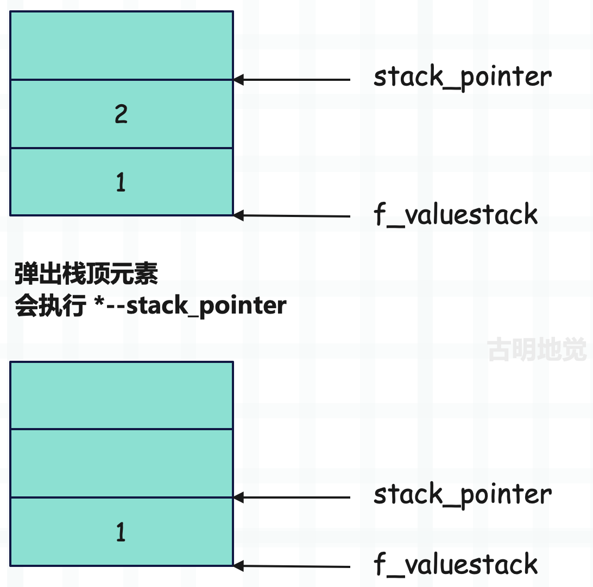
为了阅读清晰，stack_pointer 之后的元素就不写了。另外还要注意一点，运行时栈的内存一开始就已经申请好了，是固定的，弹出元素只是改变栈顶指针 stack_pointer 的指向，而内存区域的大小是不变的。
当然这些内容都比较简单，但为了避免出现歧义，这里单独解释一下。
STACK_GROW(n)
#define STACK_GROW(n) BASIC_STACKADJ(n)
#define BASIC_STACKADJ(n) (stack_pointer += n)
改变运行时栈的栈顶，注：运行时栈的大小是固定的，但栈顶是由 stack_pointer 决定的。

那么问题来了，假设要往运行时栈压入两个元素，分别是 2、3，该怎么做呢？首先肯定可以通过 PUSH 实现。
PUSH(2);
PUSH(3);
但如果不让你用 PUSH，该怎么做呢？
STACK_GROW(2);
// 设置元素
SET_VALUE(1, 3); // stack_pointer[-1] = 3
SET_VALUE(2, 2); // stack_pointer[-2] = 2
两种做法都是可以的。
STACK_SHRINK(n)
#define STACK_SHRINK(n) BASIC_STACKADJ(-n)
#define BASIC_STACKADJ(n) (stack_pointer += n)
它的作用和 STACK_GROWN 正好相反。

注意：STACK_SHRINK(3) 之后，stack_pointer 和 f_valuestack 都指向了运行时栈的栈底，同时也是栈顶。还是之前说的，栈空间是固定的，但栈顶会随着元素的入栈和出栈而动态变化。
另外，对于当前示例来说，如果你不关注栈里的元素的话，那么执行 STACK_SHRINK(3) 和执行三次 POP() 是等价的。当然不管是哪种情况，最终栈里的元素都还是 1、2、3，因为弹出元素只是改变栈顶指针 stack_pointer 的指向，而不会修改栈里的元素。当然啦，既然栈顶是由 stack_pointer 决定的，而它目前指向了栈底位置，所以我们可以认为此时栈是空的。
这么画似乎更清晰一些，但我们要知道这背后的整个过程。另外还要再次强调，运行时栈只是数组 f_localsplus 的一部分，并且是最后一部分，所以它的内存空间事先就申请好了，里面的每个元素都是 NULL。所谓添加元素，就是修改 stack_pointer 指针指向的内存，然后 stack_pointer++。所谓弹出元素，就是 stack_pointer--，然后返回 stack_pointer 指向的内存。
以上就是运行时栈的一些宏，后续阅读源码的时候，会经常遇到。
小结
本篇文章我们就从宏观的角度介绍了虚拟机执行字节码的流程，说白了虚拟机就是把自己当成一个 CPU，在栈桢中执行指令。通过遍历字节码指令集，对不同的指令执行不同的处理逻辑。
然后是运行时栈，因为一个指令只能带一个参数，那么剩余的参数就需要通过运行时栈给出。比如 LOAD_CONST 指令，它在加载完常量之后，会将常量压入运行时栈，然后 STORE_NAME 或 STORE_FAST 指令再将常量从运行时栈的顶部弹出，并和某个符号（变量）绑定起来。
关于这些指令，我们后面会详细说。
最后我们介绍了运行时栈的一些宏，因为执行指令的时候会反复操作运行时栈，所以底层封装了很多的宏。
欢迎大家关注我的公众号：古明地觉的编程教室。
如果觉得文章对你有所帮助，也可以请作者吃个馒头，Thanks♪(･ω･)ﾉ。
楔子
上一篇文章我们介绍了虚拟机是怎么执行字节码指令的，并且还介绍了运行时栈，以及操作运行时栈的一些宏。相信你对字节码执行的整个流程应该有了清晰的认识，那么接下来我们就深入到源码中，进一步考察执行过程。
源码解析字节码指令的执行过程
之前说了，虚拟机就是把自己当成一个 CPU，在栈帧中执行字节码，面对不同的字节码指令，执行不同的处理逻辑。
具体实现由 Python/ceval.c 中的 _PyEval_EvalFrameDefault 函数负责，该函数超级长，并且里面还包含了大量的宏，这些宏完全可以定义在其它的文件中。像我们之前介绍的操作运行时栈的宏，也定义在 _PyEval_EvalFrameDefault 函数里面了。所以为了方便大家理解，我决定先介绍里面出现的宏，等宏说完了之后再看具体的逻辑。
#ifdef HAVE_COMPUTED_GOTOS
#ifndef USE_COMPUTED_GOTOS
#define USE_COMPUTED_GOTOS 1
#endif
#else
#if defined(USE_COMPUTED_GOTOS) && USE_COMPUTED_GOTOS
#error "Computed gotos are not supported on this compiler."
#endif
#undef USE_COMPUTED_GOTOS
#define USE_COMPUTED_GOTOS 0
#endif
// 如果使用 "计算跳转"，导入静态跳转表
#if USE_COMPUTED_GOTOS
/* Import the static jump table */
#include "opcode_targets.h"
里面出现了一个关键词：计算跳转，这是什么意思呢？
首先 _PyEval_EvalFrameDefault（后续简称为帧评估函数）的代码量虽然很大，但它的核心不难理解，就是循环遍历字节码指令集，处理每一条指令。而当一条指令执行完毕时，虚拟机会有以下三种动作之一：
- 停止循环、退出帧评估函数，当执行的指令为 RETURN_VALUE、YIELD_VALUE 等。
- 执行指令的过程中出错了，比如执行 GET_ITER 指令，但对象不具备可迭代的性质。那么要进行异常处理（或者直接抛出异常），然后退出帧评估函数。
- 执行下一条指令。
前面两种动作没啥好说的，关键是第三种，如何执行下一条指令。首先虚拟机内部有一个巨型的 switch 语句，伪代码如下：
int opcode;
int oparg;
for (;;) {
// 循环遍历指令集，获取指令和指令参数
opcode = ...; // 指令
oparg = ...; // 指令参数
// 执行对应的处理逻辑
switch (opcode) {
case LOAD_CONST:
处理逻辑;
case LOAD_FAST:
处理逻辑;
case LOAD_FAST:
处理逻辑;
case BUILD_LIST:
处理逻辑;
case DICT_UPDATE:
处理逻辑;
// ...
}
}
一个 case 分支，对应一个字节码指令的实现，由于指令非常多，所以这个 switch 语句也非常庞大。然后遍历出的指令，会进入这个 switch 语句进行匹配，执行相应的处理逻辑。所以循环遍历 co_code 得到字节码指令，然后交给内部的 switch 语句、执行匹配到的 case 分支，如此周而复始，最终完成了对整个 Python 程序的执行。
其实到这里，你应该已经了解了帧评估函数的整体结构。说白了就是将自己当成一个 CPU，在栈帧中执行一条条指令，而执行过程中所依赖的常量、变量等，则由栈帧的其它字段来维护。因此在虚拟机的执行流程进入了那个巨大的 for 循环，并取出第一条字节码指令交给里面的 switch 语句之后，第一张多米诺骨牌就已经被推倒，命运不可阻挡的降临了。一条接一条的指令如同潮水般涌来，浩浩荡荡，横无际涯。
虽然在概念上很好理解，但很多细节被忽略掉了，本篇文章就将它们深挖出来。还是之前的问题，当一个指令执行完毕时，怎么执行下一条指令。
估计有人对这个问题感到奇怪，在 case 分支的内部加一行 continue 进行下一轮循环不就行了吗？没错，这种做法是行得通的，但存在性能问题。因为 continue 会跳转到 for 循环所在位置，所以遍历出下一条指令之后，会再次进入 switch 语句进行匹配。尽管逻辑上是正确的，但 switch 里面有数百个 case 分支，如果每来一个指令，都要顺序匹配一遍的话，那么效率必然不高。
而事实上整个字节码指令集是已知的，所以不管执行哪个指令，我们都可以提前得知它的下一个指令，只需将指针向后偏移两个字节即可。

那么问题来了，既然知道下一条要执行的指令是什么，那么在当前指令执行完毕时，可不可以直接跳转到下一条指令对应的 case 分支中呢？
答案是可以的，这个过程就叫做计算跳转，通过标签作为值即可实现。关于什么是标签作为值，我们用一段 C 代码解释一下。
#include <stdio.h>
void label_as_value(int jump) {
int num = 4;
void *label;
switch (num) {
case 1:
printf("%d\n", 1);
break;
// 在 case 2 分支里面定义了一个标签叫 two
case 2: two: {
printf("%d\n", 2);
break;
}
// 在 case 3 分支里面定义了一个标签叫 three
case 3: three: {
printf("%d\n", 3);
break;
}
case 4:
printf("%d\n", 4);
// 如果参数 jump 等于 2，保存 two 标签的地址
// 如果参数 jump 等于 3，保存 three 标签的地址
if (jump == 2) label = &&two;
else if (jump == 3) label = &&three;
// 跳转到指定标签
goto *label;
default:
break;
}
}
int main() {
label_as_value(2);
// 4
// 2
label_as_value(3);
// 4
// 3
}
由于变量 num 等于 4，所以会进入 case 4 分支，在里面有一个 goto *label。如果你对 C 不是特别熟悉的话，估计会有些奇怪，觉得不应该是 goto label 吗？如果是 goto label，那么需要显式地定义一个名为 label 的标签，但这里并没有。我们的目的是跳转到 two 标签或 three 标签，具体跳转到哪一个，则由参数控制。因此可以使用 && 运算符，这是 GCC 的一个扩展特性，叫做标签作为值，它允许我们获取标签的地址作为一个值。
所以在开头声明了一个 void *label，然后让 label 保存标签地址，再通过 goto *label 跳转到指定标签。由于 *label 代表哪个标签是在运行时经过计算才能知晓，因此称为计算跳转（在运行时动态决定跳转目标）。
注意：
goto *&&标签名属于高级的、非标准的 C 语言用法。
那么毫无疑问，解释器也一定为处理指令的 case 分支定义了相应的标签，并拿到了这些标签的地址。没错，这些标签地址位于 Python/opcode_targets.h 中，这个 opcode_targets.h 就是上面的帧评估函数导入的头文件。

每个指令的处理逻辑都会对应一个标签，这些标签的地址全部保存在了数组中，执行帧评估函数时导入进来即可。这里可能有人会问，导入数组时，它里面的标签都还没有定义吧。确实如此，不过没关系，对于 C 来说，标签只要定义了，那么它在函数的任何一个位置都可以使用。
假设要执行的下一条指令为 opcode，那么就会跳转到 *opcode_targets[opcode]，因此我们有理由相信，指令和 opcode_targets 数组的索引之间存在某种关联。而这种关联也很好想，opcode_targets[opcode] 指向的标签，其内部的逻辑就是用来处理 opcode 指令的，我们来验证一下。
#define LOAD_CONST 100
#define LOAD_NAME 101
比如 LOAD_CONST 的值为 100，那么 opcode_targets[100] 肯定会指向 TARGET_LOAD_CONST 标签；LOAD_NAME 的值为 101，那么 opcode_targets[101] 肯定会指向 TARGET_LOAD_NAME 标签。

结果没有问题，其它指令也是一样的，通过计算跳转，可以直接 goto 到指定的标签。
好，我们总结一下，首先帧评估函数内部有一个巨型的 switch，每一个指令的处理逻辑都对应一个 case 分支，由于指令有一百多个，所以 case 分支也有一百多个。而当指令进入 switch 后，显然会顺序匹配这一百多个 case 分支，找到符合条件的那一个。
整个过程的逻辑是没问题的，但效率上还可以更进一步优化，因为整个字节码指令集是已知的，既然都提前知道了下一条待处理的指令是什么，那完全可以直接跳转到对应的 case 分支中。所以每个 case 分支都会对应一个标签，我们看一下源码。

这个 TARGET 是一个宏，也定义在帧评估函数中。
#define TARGET(op) \
op: \
TARGET_##op
// 所以 case TARGET(LOAD_CONST): 展开之后就会变成
// case LOAD_CONST: TARGET_LOAD_CONST:
所以在指令的名称前加一个 TARGET_ 就是对应的标签，比如下一条要执行的指令是 YIELD_VALUE，它等于 86，那么 opcode_targets[86] 就等于 &&TARGET_YIELD_VALUE，指向的标签内部便是 YIELD_VALUE 的处理逻辑，至于其它指令也是同理。
因此读取完下一条指令之后，就不用跳转到开头重新走一遍 switch 了。而是将指令作为索引，从 opcode_targets 拿到标签地址直接跳转即可，并且跳转后的标签内部的逻辑就是用来处理该指令的。
所以底层为每个指令的处理逻辑都定义了一个标签，而标签的地址在数组中的索引，和要处理的指令本身是相等的。
不过要想实现计算跳转，需要 GCC 支持标签作为值这一特性，即 goto *标签地址，至于标签地址是哪一个标签的地址，则在运行时动态计算得出。比如 opcode_targets[opcode] 指向哪个标签无从得知，这取决于 opcode 的值。
goto 标签：静态跳转，标签需要显式地定义好，跳转位置在编译期间便已经固定。
goto *标签地址：动态跳转（计算跳转），跳转位置不固定，可以是已有标签中的任意一个。至于具体是哪一个，需要在运行时经过计算才能确定。
以上就是计算跳转，我们继续往下说。
// 如果使用了计算跳转
#define FAST_DISPATCH() \
{ \
if (!_Py_TracingPossible(ceval) && !PyDTrace_LINE_ENABLED()) { \
f->f_lasti = INSTR_OFFSET(); /* 将当前指令的偏移量赋值给 f_lasti */ \
NEXTOPARG(); /* 获取下一条指令 */ \
goto *opcode_targets[opcode]; /* 跳转到对应的标签中 */ \
} \
goto fast_next_opcode; \
}
#define DISPATCH() \
{ \
if (!_Py_atomic_load_relaxed(eval_breaker)) { \
FAST_DISPATCH(); \
} \
continue; \
}
#define TARGET(op) \
op: \
TARGET_##op
// 如果不使用计算跳转
#define TARGET(op) op
#define FAST_DISPATCH() goto fast_next_opcode
#define DISPATCH() continue
每条指令在执行的最后，都会调用 DISPATCH() 或 FAST_DISPATCH()，我们看一下源码。

如果不使用计算跳转，那么 DISPATCH() 就等价于 continue，直接进行下一轮 for 循环，然后进入 switch。而 FAST_DISPATCH() 会跳转到 fast_next_opcode 标签，该标签定义在 for 循环的里面，switch 的外面，所以它虽然不用从 for 循环的位置开始执行，但依然要走一遍完整的 switch。另外由于不使用计算跳转，那么 case 分支里的标签也就没意义了，所以 case TARGET(op) 就等价于 case op。
如果使用计算跳转，那么就是之前说的那样，在指令执行完之后（并且没有中断请求）会调用 NEXTOPARG() 获取下一条指令，然后通过 goto *opcode_targets[opcode] 实现计算跳转，直接跳到下一条指令对应的 case 分支中，从而省去了匹配的时间。
好，我们继续往下看。
// 获取元组 v 中索引为 i 的元素
#define GETITEM(v, i) PyTuple_GetItem((v), (i))
/* 在遍历字节码指令序列时，会用到以下两个变量
* first_instr：永远指向字节码指令序列的第一条指令
* next_instr：永远指向下一条待执行（或正在执行）的字节码指令
* 另外由于每条字节码指令都会带有一个参数
* 所以 first_instr 和 next_instr 的类型都是 _Py_CODEUNIT *，即 uint16_t *
* 其中前 8 位表示指令，后 8 位表示指令参数
*/
// 在调用 NEXTOPARG() 之前，next_instr 指向正在执行的字节码指令
// 如果调用了 NEXTOPARG()，那么 next_instr 就会指向下一条待执行的字节码指令
// 该宏计算的显然就是它和第一条指令（或者说字节码指令序列的起始位置）之间的偏移量
#define INSTR_OFFSET() \
(sizeof(_Py_CODEUNIT) * (int)(next_instr - first_instr))
// 获取 next_instr 指向的 uint16 的前 8 位和后 8 位，也就是拿到指令和指令参数
// 然后执行 next_instr++
#define NEXTOPARG() do { \
_Py_CODEUNIT word = *next_instr; \
opcode = _Py_OPCODE(word); \
oparg = _Py_OPARG(word); \
next_instr++; \
} while (0)
通过 INSTR_OFFSET 和 NEXTOPARG，我们介绍了两个指针变量：first_instr 和 next_instr，虚拟机就是通过它们来完成遍历的。
#define JUMPTO(x) (next_instr = first_instr + (x) / sizeof(_Py_CODEUNIT))
#define JUMPBY(x) (next_instr += (x) / sizeof(_Py_CODEUNIT))
这两个指令等到介绍 if 控制流的时候再说，不过相信你也能猜到它是做什么的，if 控制流的某个分支如果不满足条件，就会跳到下一个分支。而这个跳转过程是怎么实现的呢？显然要借助于这里的 JUMPTO 和 JUMPBY。
// 指令预测
#if defined(DYNAMIC_EXECUTION_PROFILE) || USE_COMPUTED_GOTOS
#define PREDICT(op) if (0) goto PRED_##op
#else
#define PREDICT(op) \
do{ \
_Py_CODEUNIT word = *next_instr; \
opcode = _Py_OPCODE(word); \
if (opcode == op){ \
oparg = _Py_OPARG(word); \
next_instr++; \
goto PRED_##op; \
} \
} while(0)
#endif
#define PREDICTED(op) PRED_##op:
PREDICT 宏和指令预测相关，后续介绍 if 控制流的时候再说。
关于宏就说到这里，至于剩下的一些宏，暂时就先不用看了，我们在后续的部分才会用到它们。
好，既然宏说完了，接下来我们可以看整个帧评估函数都做些什么了，代码有删减。
PyObject* _Py_HOT_FUNCTION
_PyEval_EvalFrameDefault(PyFrameObject *f, int throwflag)
{
// 初始化一些变量，它们的含义等赋值的时候再说
PyObject **stack_pointer;
const _Py_CODEUNIT *next_instr;
int opcode;
int oparg;
PyObject **fastlocals, **freevars;
PyObject *retval = NULL;
_PyRuntimeState * const runtime = &_PyRuntime;
PyThreadState * const tstate = _PyRuntimeState_GetThreadState(runtime);
struct _ceval_runtime_state * const ceval = &runtime->ceval;
_Py_atomic_int * const eval_breaker = &ceval->eval_breaker;
PyCodeObject *co;
int instr_ub = -1, instr_lb = 0, instr_prev = -1;
const _Py_CODEUNIT *first_instr;
PyObject *names;
PyObject *consts;
_PyOpcache *co_opcache;
// ...
// 省略了一堆的宏定义，就是我们上面刚介绍的
// ...
// 检查是否超过递归深度限制
if (Py_EnterRecursiveCall(""))
return NULL;
// tstate->frame 保存当前正在执行的栈桢，所以将 f 赋值给 tstate->frame
// 至于之前的 tstate->frame，则保存在 f.f_back 字段中（在创建栈桢 f 的时候就完成了）
tstate->frame = f;
// 如果启用追踪机制
if (tstate->use_tracing) {
// tstate->c_tracefunc 对应 Python 里的 sys.settrace
// 如果不为空，那么进行调用
// 该函数可以监控每行代码的执行，因此一般用于调试器
if (tstate->c_tracefunc != NULL) {
if (call_trace_protected(tstate->c_tracefunc,
tstate->c_traceobj,
tstate, f, PyTrace_CALL, Py_None)) {
goto exit_eval_frame;
}
}
// tstate->c_profilefunc 对应 Python 里的 sys.setprofile
// 如果不为空，那么进行调用，该函数主要用于性能分析
if (tstate->c_profilefunc != NULL) {
if (call_trace_protected(tstate->c_profilefunc,
tstate->c_profileobj,
tstate, f, PyTrace_CALL, Py_None)) {
goto exit_eval_frame;
}
}
}
// DTrace 是一个强大的动态追踪工具
// 这里检测是否启用了 DTrace 的函数入口探针
if (PyDTrace_FUNCTION_ENTRY_ENABLED())
// 如果启用了 DTrace，则记录函数进入的事件
dtrace_function_entry(f);
// 获取栈桢内部的关键字段
co = f->f_code;
names = co->co_names;
consts = co->co_consts;
fastlocals = f->f_localsplus;
freevars = f->f_localsplus + co->co_nlocals;
assert(PyBytes_Check(co->co_code));
assert(PyBytes_GET_SIZE(co->co_code) <= INT_MAX);
assert(PyBytes_GET_SIZE(co->co_code) % sizeof(_Py_CODEUNIT) == 0);
assert(_Py_IS_ALIGNED(PyBytes_AS_STRING(co->co_code), sizeof(_Py_CODEUNIT)));
// 注意这里的 first_instr，上面已经介绍了，它指向字节码指令序列的起始位置，或者说第一条指令
first_instr = (_Py_CODEUNIT *) PyBytes_AS_STRING(co->co_code);
assert(f->f_lasti >= -1);
// 初始状态下，next_instr 和 first_instr 相等
next_instr = first_instr;
if (f->f_lasti >= 0) {
assert(f->f_lasti % sizeof(_Py_CODEUNIT) == 0);
next_instr += f->f_lasti / sizeof(_Py_CODEUNIT) + 1;
}
stack_pointer = f->f_stacktop;
assert(stack_pointer != NULL);
f->f_stacktop = NULL;
f->f_executing = 1;
// 进入主循环，在这个 for 循环里面一会儿就会看到那个巨型的 switch
main_loop:
// 遍历字节码指令集，处理每一条指令
for (;;) {
// stack_pointer 是栈顶指针，f_valuestack 是栈底指针
// 由于 Python 的运行时栈是基于数组实现的，所以从栈底到栈顶，地址是增大的
// 因此 stack_pointer 一定大于等于 f_valuestack
assert(stack_pointer >= f->f_valuestack);
// STACK_LEVEL() 一定小于等于运行时栈的长度，之前说过的
assert(STACK_LEVEL() <= co->co_stacksize);
// 线程状态对象里面没有异常产生
assert(!_PyErr_Occurred(tstate));
// 检测是否有待处理的中断（比如信号、GIL 释放请求等）
if (_Py_atomic_load_relaxed(eval_breaker)) {
opcode = _Py_OPCODE(*next_instr);
/* 如果指令是以下之一，那么忽略中断，直接跳到 fast_next_opcode 标签进行处理
* SETUP_FINALLY：try / finally 语句的开始
* SETUP_WITH：with 语句的开始
* BEFORE_ASYNC_WITH：async with 语句的开始
* YIELD_FROM：yield from 表达式
*/
// 这种设计主要是为了确保在某些关键操作（如资源管理、异常处理、异步操作）的开始阶段不被中断信号打断
// 从而保证这些操作的正确性和可靠性，进而保证 Python 程序的稳定性和可预测性
if (opcode == SETUP_FINALLY ||
opcode == SETUP_WITH ||
opcode == BEFORE_ASYNC_WITH ||
opcode == YIELD_FROM) {
goto fast_next_opcode;
}
// 使用原子操作检查是否有待处理的信号
// 如果有待处理的信号，那么调用 handle_signals 函数处理它们
// 这个机制允许 Python 程序响应外部事件和系统信号，同时保证执行的正确性
if (_Py_atomic_load_relaxed(&ceval->signals_pending)) {
if (handle_signals(runtime) != 0) {
goto error;
}
}
// 通过原子操作检查是否有待处理的调用需要执行，calls_to_do 是一个计数器，表示待处理的调用的数量
// 如果有待处理的调用，那么执行 make_pending_calls 函数
// pending calls 主要用于垃圾回收（GC）、异步 IO 回调、定时器事件等
// 这个机制是 Python 运行时系统的重要组成部分，允许虚拟机在主循环中处理各种异步任务和周期性任务
// 确保各种后台任务能够得到及时处理，并且不需要使用额外的线程和复杂的调度机制
if (_Py_atomic_load_relaxed(&ceval->pending.calls_to_do)) {
if (make_pending_calls(runtime) != 0) {
goto error;
}
}
// 通过原子操作检查是否有释放 GIL 的请求，如果有，那么该线程就要释放 GIL
if (_Py_atomic_load_relaxed(&ceval->gil_drop_request)) {
// 将当前线程状态设置为 NULL，因为要发生切换了（关于 GIL，后续会单独介绍）
if (_PyThreadState_Swap(&runtime->gilstate, NULL) != tstate) {
Py_FatalError("ceval: tstate mix-up");
}
// 释放 GIL，给其它线程一个机会，不能让某一个线程一直霸占着
// 如果开启了多线程，那么当释放 GIL 的那一刻，就会被其它线程获取
drop_gil(ceval, tstate);
// GIL 释放之后，还要再次获取，但 GIL 已经被其它线程拿走了
// 所以会触发操作系统内核的线程调度机制，进入阻塞状态，等待 GIL 再度回到自己手中
// 因此不难发现，如果有 n 个线程，那么其中的 n - 1 个会陷入阻塞，等待获取 GIL
// 而一旦持有 GIL 的线程执行了 drop_gil 函数，将 GIL 释放了
// 那么这 n - 1 个线程当中就会有一个线程拿到 GIL 并解除阻塞，然后开始执行字节码
// 至于释放 GIL 的线程，则会尝试再次获取 GIL，但会因为获取不到而陷入阻塞（已经被其它线程拿走了）
take_gil(ceval, tstate);
// 检查是否需要快速退出线程（比如在解释器关闭时）
exit_thread_if_finalizing(runtime, tstate);
// 到这里说明 take_gil 返回了（即阻塞状态解除），也意味着拿到了 GIL，那么要恢复线程状态
if (_PyThreadState_Swap(&runtime->gilstate, tstate) != NULL) {
Py_FatalError("ceval: orphan tstate");
}
}
// 检测线程状态中是否存在异步的异常
if (tstate->async_exc != NULL) {
PyObject *exc = tstate->async_exc;
tstate->async_exc = NULL;
UNSIGNAL_ASYNC_EXC(ceval);
_PyErr_SetNone(tstate, exc);
Py_DECREF(exc);
goto error;
}
}
// 以上是一些中断检测逻辑，如果执行顺利，那么会走到这里
fast_next_opcode:
// 保存上一条已执行完毕的字节码的偏移量
f->f_lasti = INSTR_OFFSET();
// 如果启用了 DTrace 行追踪，那么记录行级别的执行信息
if (PyDTrace_LINE_ENABLED())
maybe_dtrace_line(f, &instr_lb, &instr_ub, &instr_prev);
// 检查是否需要执行行级追踪，如果追踪功能可用并且设置了追踪函数，那么执行
// 这是 Python 调试和性能分析功能的核心部分，使得像 pdb 这样的调试器能够逐行执行代码
if (_Py_TracingPossible(ceval) &&
tstate->c_tracefunc != NULL && !tstate->tracing) {
int err;
// 保存当前栈指针
f->f_stacktop = stack_pointer;
// 调用行追踪函数
err = maybe_call_line_trace(tstate->c_tracefunc,
tstate->c_traceobj,
tstate, f,
&instr_lb, &instr_ub, &instr_prev);
// 追踪函数可能改变帧的状态，需要重新加载，并更新栈指针
JUMPTO(f->f_lasti);
if (f->f_stacktop != NULL) {
stack_pointer = f->f_stacktop;
f->f_stacktop = NULL;
}
if (err)
goto error;
}
// 这个宏前面介绍了，它会获取下一条待处理的指令和指令参数
NEXTOPARG();
// 进入 dispatch_opcode 标签
dispatch_opcode:
// 下面这些宏主要用于指令追踪和性能分析，简单了解一下就好
#ifdef DYNAMIC_EXECUTION_PROFILE // 如果启用了动态执行性能分析
#ifdef DXPAIRS // 如果启用了指令对分析
dxpairs[lastopcode][opcode]++; // 记录相邻指令对的出现次数
lastopcode = opcode; // 更新上一个指令
#endif
dxp[opcode]++; // 记录单个指令的执行次数
#endif
#ifdef LLTRACE
// 如果启用了低级追踪，并且追踪开关打开，那么打印偏移量、指令、指令参数等信息
if (lltrace) {
if (HAS_ARG(opcode)) {
printf("%d: %d, %d\n",
f->f_lasti, opcode, oparg);
}
else {
printf("%d: %d\n",
f->f_lasti, opcode);
}
}
#endif
// 好的，关键来了，我们终于来到了这个巨型的 switch
// 一个指令对应一个 case 分支，里面包含了该指令的处理逻辑
// 因为有一百多个 case 分支，所以这个 switch 语句的代码量高达 2300 多行
// 当然啦，也仅仅只是代码量大，但逻辑很单纯，就是定义了一百多条指令的处理逻辑嘛
switch (opcode) {
// NOP 指令的处理逻辑，另外还记得这个 TARGET 宏吗？如果开启了计算跳转，那么分支内部还会定义一个标签
// 此时 case TARGET(NOP) 会展开成 case NOP: TARGET_NOP:
case TARGET(NOP): {
FAST_DISPATCH();
}
// LOAD_FAST 指令的处理逻辑
case TARGET(LOAD_FAST): {
PyObject *value = GETLOCAL(oparg);
if (value == NULL) {
format_exc_check_arg(tstate, PyExc_UnboundLocalError,
UNBOUNDLOCAL_ERROR_MSG,
PyTuple_GetItem(co->co_varnames, oparg));
goto error;
}
Py_INCREF(value);
PUSH(value);
FAST_DISPATCH();
}
// LOAD_CONST 指令的处理逻辑
case TARGET(LOAD_CONST): {
PREDICTED(LOAD_CONST);
PyObject *value = GETITEM(consts, oparg);
Py_INCREF(value);
PUSH(value);
FAST_DISPATCH();
}
// STORE_FAST 指令的处理逻辑
case TARGET(STORE_FAST): {
PREDICTED(STORE_FAST);
PyObject *value = POP();
SETLOCAL(oparg, value);
FAST_DISPATCH();
}
// POP_TOP 指令的处理逻辑
case TARGET(POP_TOP): {
PyObject *value = POP();
Py_DECREF(value);
FAST_DISPATCH();
}
// ...
// ...
// ...
// MAKE_FUNCTION 指令的处理逻辑
case TARGET(MAKE_FUNCTION): {
// ...
PUSH((PyObject *)func);
DISPATCH();
}
// BUILD_SLICE 指令的处理逻辑
case TARGET(BUILD_SLICE): {
// ...
if (slice == NULL)
goto error;
DISPATCH();
}
// FORMAT_VALUE 指令的处理逻辑
case TARGET(FORMAT_VALUE): {
// ...
DISPATCH();
}
// EXTENDED_ARG 指令的处理逻辑
case TARGET(EXTENDED_ARG): {
int oldoparg = oparg;
NEXTOPARG();
oparg |= oldoparg << 8;
goto dispatch_opcode;
}
/* 这些指令内部的具体逻辑，我们后续会聊 */
// 如果执行到这里，说明上面的 case 分支都没有匹配到，意味着出现了一个未知的指令
// 那么打印错误信息：unknown opcde，不过基本不会发生，除非你刻意构造一个不存在的指令
#if USE_COMPUTED_GOTOS
_unknown_opcode:
#endif
default:
fprintf(stderr,
"XXX lineno: %d, opcode: %d\n",
PyFrame_GetLineNumber(f),
opcode);
_PyErr_SetString(tstate, PyExc_SystemError, "unknown opcode");
goto error;
} // 到这里，switch 语句块就结束了
// 这个位置永远不可能到达，因为在每条指令的处理逻辑的最后，要么调用 DISPATCH()，要么 goto error
// 调用 DISPATCH() 会去执行下一条指令，goto error 会跳转到下面的 error 标签
// 当然这里的 Py_UNREACHABLE() 有没有都无所谓，但加上之后会让程序显得更加严谨
Py_UNREACHABLE();
// 如果字节码指令在执行时出错了，那么会设置异常，然后跳转到 error 标签
error:
// 以下是错误处理的防御性代码，用于确保在发生错误时总是设置了适当的异常
// 记得之前介绍过异常的本质，其实就是解释器内部在执行时发现逻辑出问题了（比如索引超出范围）
// 那么会将异常（比如 IndexError）设置在回溯栈中，并立即返回一个表示错误的哨兵值
// 当解释器将返回值传递给 Python 时，会发现返回值为 NULL，知道出异常了
// 于是会将回溯栈里的异常输出到 stderr 当中，就是我们在终端中看到的那一坨红色的东西，然后结束进程
// 但如果解释器发现回溯栈里面没有异常，那么会额外设置一个 SystemError: error return without exception set
// 意思就是："明明发生错误了，为什么回溯栈里面没有设置异常呢？"，一般这个问题会在用 C 编写扩展模块的时候遇到
#ifdef NDEBUG
if (!_PyErr_Occurred(tstate)) {
_PyErr_SetString(tstate, PyExc_SystemError,
"error return without exception set");
}
#else
// 当然如果没有定义 NDEBUG 宏的话，那么就会展开成一个 assert 断言
// 对于解释器本身来说，像这种 assert 断言都是成立的，否则底层源码写的就有问题
assert(_PyErr_Occurred(tstate));
#endif
// 报错时，要生成 traceback，即回溯栈，关于 traceback，等介绍异常捕获的时候再说
PyTraceBack_Here(f);
// 执行追踪函数，用于调试器捕获异常、追踪异常、以及异常处理的监控和分析等
// 在使用 pdb 调试器时，这个机制允许调试器捕获和显示异常信息
if (tstate->c_tracefunc != NULL)
call_exc_trace(tstate->c_tracefunc, tstate->c_traceobj,
tstate, f);
// 这里和异常捕获相关，我们后续再聊
exception_unwind:
while (f->f_iblock > 0) {
// ...
}
break;
} // 到这里，外层的 for 循环就结束了，显然会有两种情况
// 要么字节码都执行完毕了，要么出异常了，但不管是哪种，都意味着要退出栈桢了
assert(retval == NULL);
assert(_PyErr_Occurred(tstate));
// 到这里说明要退出栈桢了，如果运行时栈里面还有元素的话，那么要清空
exit_returning:
while (!EMPTY()) {
PyObject *o = POP();
Py_XDECREF(o);
}
// 生成器在 yield 时的追踪处理逻辑
// 另外像这些追踪函数可以不用太关注，都是用于调试和性能分析的
exit_yielding:
if (tstate->use_tracing) {
if (tstate->c_tracefunc) {
if (call_trace_protected(tstate->c_tracefunc, tstate->c_traceobj,
tstate, f, PyTrace_RETURN, retval)) {
Py_CLEAR(retval);
}
}
if (tstate->c_profilefunc) {
if (call_trace_protected(tstate->c_profilefunc, tstate->c_profileobj,
tstate, f, PyTrace_RETURN, retval)) {
Py_CLEAR(retval);
}
}
}
// 帧评估函数退出时的清理代码
exit_eval_frame:
// 如果启用了 DTrace，记录函数返回事件
if (PyDTrace_FUNCTION_RETURN_ENABLED())
dtrace_function_return(f);
// 退出递归调用，与之前的 Py_EnterRecursiveCall() 相对应
Py_LeaveRecursiveCall();
// 标记帧不再处于执行状态
f->f_executing = 0;
// 当调用一个函数时，会在当前帧的基础上创建新的帧，并将执行权交给新的帧
// 当函数执行完毕时，会销毁栈桢，并将执行权还给上一级栈帧（即调用者的帧），这个过程叫做栈桢回退
// 显然这里要将 f->back 赋值给 tstate->frame，即回退到上一级栈桢
tstate->frame = f->f_back;
// 检查返回值的有效性，确保返回值符合 Python 的调用约定
return _Py_CheckFunctionResult(NULL, retval, "PyEval_EvalFrameEx");
}
以上就是帧评估函数的源码逻辑，总的来说并不难理解，其核心就是通过 for 循环遍历字节码指令集，将遍历出的指令交给内部的 switch 语句，执行对应的 case 分支。当匹配到的 case 分支执行完毕时，会有以下三种情况：
- 停止循环、退出帧评估函数，当执行的指令为 RETURN_VALUE、YIELD_VALUE 等。
- 执行指令的过程中出错了，跳转到 error 标签，然后进行异常处理（或者直接抛出异常）。
- 执行下一条指令，如果开启了计算跳转，那么会精确跳转到下一条指令的处理逻辑中，否则会跳转到 fast_next_opcode 标签的所在位置、或者 for 循环的所在位置。但不管如何，虚拟机接下来的动作就是获取下一条字节码指令和指令参数，完成对下一条指令的执行。
所以通过 for 循环一条一条遍历 co_code 中的字节码指令，然后交给内部的 switch 语句、执行对应的 case 分支，如此周而复始，最终完成了对整个 Python 程序的执行。
相信到此刻你已经彻底了解了 Python 执行引擎的整体结构。说白了虚拟机就是将自己当成一个 CPU，在栈帧中一条条的执行指令，而执行过程中所依赖的常量、变量等，则由栈帧的其它字段来维护。
通过反编译查看字节码
光看源码还是有点枯燥的，下面我们来写一段简单的代码，然后反编译，并通过画图来演示虚拟机是如何执行字节码的。
code = """\
chinese = 89
math = 99
english = 91
avg = (chinese + math + english) / 3
"""
# 将上面的代码以模块的方式进行编译
co = compile(code, "my_module", "exec")
# 查看常量池
print(co.co_consts) # (89, 99, 91, 3, None)
# 查看符号表
print(co.co_names) # ('chinese', 'math', 'english', 'avg')
在编译的时候，常量和符号（变量）都会被静态收集起来。然后我们反编译一下看看字节码，直接通过 dis.dis(co) 即可，结果如下：
1 0 LOAD_CONST 0 (89)
2 STORE_NAME 0 (chinese)
2 4 LOAD_CONST 1 (99)
6 STORE_NAME 1 (math)
3 8 LOAD_CONST 2 (91)
10 STORE_NAME 2 (english)
4 12 LOAD_NAME 0 (chinese)
14 LOAD_NAME 1 (math)
16 BINARY_ADD
18 LOAD_NAME 2 (english)
20 BINARY_ADD
22 LOAD_CONST 3 (3)
24 BINARY_TRUE_DIVIDE
26 STORE_NAME 3 (avg)
28 LOAD_CONST 4 (None)
30 RETURN_VALUE
上面每一列的含义之前说过，这里再重复一下。
- 第一列是源代码的行号；
- 第二列是指令的偏移量，或者说该指令在整个字节码指令序列中的索引。因为每条指令后面都跟着一个参数，所以偏移量是 0 2 4 6 8 ...；
- 第三列是字节码指令，简称指令，它们在宏定义中代表整数；
- 第四列是字节码指令参数，简称指令参数、或者参数，不同的指令参数的含义不同；
- 第五列是 dis 模块给我们额外提供的信息，一会儿说；
我们从上到下依次解释每条指令都干了什么？
0 LOAD_CONST：表示加载一个常量（指针），并压入运行时栈。后面的指令参数 0 表示从常量池中加载索引为 0 的常量，至于 89 则表示加载的常量是 89。所以最后面的括号里面的内容实际上起到的是一个提示作用，告诉你加载的对象是什么。
2 STORE_NAME：表示将 LOAD_CONST 加载的常量用一个名字绑定起来，放在所在的名字空间中。后面的 0 (chinese) 则表示使用符号表中索引为 0 的名字（符号），且名字为 "chinese"。
所以像 chinese = 89 这种简单的赋值语句，会对应两条字节码指令。
然后 4 LOAD_CONST、6 STORE_NAME 和 8 LOAD_CONST、10 STORE_NAME 的作用显然和上面是一样的，都是加载一个常量，然后将某个符号和常量绑定起来，并放在名字空间中。
12 LOAD_NAME：加载一个变量，并压入运行时栈，而后面的 0 (chinese) 表示加载符号表中索引为 0 的变量的值，然后这个变量叫 chinese。14 LOAD_NAME 也是同理，将符号表中索引为 1 的变量的值压入运行时栈，并且变量叫 math。此时栈里面有两个元素，从栈底到栈顶分别是 chinese 和 math。
16 BINARY_ADD：将上面两个变量从运行时栈弹出，然后执行加法操作，并将结果压入运行时栈。
18 LOAD_NAME：将符号表中索引为 2 的变量 english 的值压入运行时栈，此时栈里面有两个元素，从栈底到栈顶分别是 chinese + math 的返回结果和 english。
20 BINARY_ADD：将运行时栈里的两个元素弹出，然后执行加法操作，并将结果压入运行时栈。此时栈里面有一个元素，就是 chinese + math + english 的返回结果。
22 LOAD_CONST：将常量 3 压入运行时栈，此时栈里面有两个元素；
24 BINARY_TRUE_DIVIDE：将运行时栈里的两个元素弹出，然后执行除法操作，并将结果压入运行时栈，此时栈里面有一个元素；
26 STORE_NAME：将元素从运行时栈里面弹出，并用符号表中索引为 3 的变量 avg 和它绑定起来，然后放在名字空间中。
28 LOAD_CONST：将常量 None 压入运行时栈，然后通过 30 RETURN_VALUE 将其从栈中弹出、并返回。
所以 Python 虚拟机就是把自己想象成一个 CPU，在栈帧中一条条执行字节码指令，当指令执行完毕或执行出错时，停止执行。
我们通过几张图展示一下上面的过程，为了阅读方便，这里将相应的源代码再贴一份。
chinese = 89
math = 99
english = 91
avg = (chinese + math + english) / 3
之前说了，模块也有自己的作用域，并且是全局作用域，所以虚拟机也会为它创建栈帧。而在代码还没有执行的时候，栈帧就已经创建好了，整个布局如下。

f_localsplus 下面的箭头方向，代表运行时栈从栈底到栈顶的方向。
这里再强调一下 f_localsplus 字段，它是一个柔性数组。虽然声明的时候写着长度为 1，但实际使用时，长度不受限制，和 Go 语言不同，C 数组的长度不属于类型的一部分。然后 f_localsplus 在逻辑上被分成了四份，分别用于局部变量、cell 变量、free 变量、运行时栈，由于当前示例中的代码是以模块的方式编译的，里面所有的变量都是全局变量，而且也不涉及闭包啥的，所以这里就把 f_localsplus 理解为运行时栈即可。
接下来就开始执行字节码了，next_instr 指向下一条待执行的字节码指令，显然初始状态下，下一条待执行的指令就是第一条指令。
于是虚拟机开始执行 0 LOAD_CONST，该指令表示将常量加载进运行时栈，而要加载的常量在常量池中的索引，由指令参数表示。
在源码中，指令对应的变量是 opcode，指令参数对应的变量是 oparg。
case TARGET(LOAD_CONST): {
PREDICTED(LOAD_CONST);
// 调用元组的 GETITEM 方法，从常量池中加载索引为 oparg 的对象
// 当然啦，为了描述方便我们称之为对象，但其实是指向对象的指针
PyObject *value = GETITEM(consts, oparg);
// 增加引用计数
Py_INCREF(value);
// 压入运行时栈
PUSH(value);
FAST_DISPATCH();
}
该指令的参数为 0，所以会将常量池中索引为 0 的元素 89 压入运行时栈，执行完之后，栈帧的布局就变成了下面这样：

接着虚拟机执行 2 STORE_NAME 指令，从符号表中获取索引为 0 的符号、即 chinese。然后将栈顶元素 89 弹出，再将符号 chinese 和整数对象 89 绑定起来保存到 local 名字空间中。
case TARGET(STORE_NAME): {
// 从符号表中加载索引为 oparg 的符号
// 符号本质上就是一个 PyUnicodeObject 对象
// 这里就是字符串 "chinese"
PyObject *name = GETITEM(names, oparg);
// 从运行时栈的栈顶弹出元素
// 显然是上一步压入的 89
PyObject *v = POP();
// 获取名字空间 namespace
PyObject *ns = f->f_locals;
int err;
// 如果没有名字空间则报错，设置异常
if (ns == NULL) {
_PyErr_Format(tstate, PyExc_SystemError,
"no locals found when storing %R", name);
Py_DECREF(v);
goto error;
}
// 将符号和对象绑定起来放在 ns 中
// 名字空间是一个字典，PyDict_CheckExact 负责检测 ns 是否为字典，等价于 type(ns) is dict
// 除此之外，还有 PyDict_Check(ns)，它等价于 isinstance(ns, dict)
if (PyDict_CheckExact(ns))
// 通过字典的特定类型 API 将键值对 "chinese": 89 设置到字典中
err = PyDict_SetItem(ns, name, v);
else
// 走到这里说明 type(ns) 不是 dict，那么它应该继承 dict
// 通过泛型 API 设置元素
err = PyObject_SetItem(ns, name, v);
// 对象的引用计数减 1，因为从运行时栈中弹出了
Py_DECREF(v);
// 如果 err != 0，证明设置元素出错了，跳转至 error 标签
if (err != 0)
goto error;
// 调用 DISPATCH() 执行下一条指令，如果没有开启计算跳转，那么它就相当于一个 continue
DISPATCH();
}
执行完之后，栈帧的布局就变成了下面这样：

此时运行时栈为空，local 名字空间多了个键值对。
同理剩余的两个赋值语句也是类似的，只不过指令参数不同，比如 6 STORE_NAME 加载的是符号表中索引为 1 的符号，10 STORE_NAME 加载的是符号表中索引为 2 的符号，分别是 math 和 english。它们执行完之后，栈桢布局如下：
然后 12 LOAD_NAME 和 14 LOAD_NAME 负责将符号表中索引为 0 和 1 的变量的值压入运行时栈：
case TARGET(LOAD_NAME): {
// 从符号表 co_names 中加载索引为 oparg 的变量（符号）
// 但是注意：全局变量是通过字典存储的
// 所以这里的 name 只是一个字符串罢了，比如 "chinese"
// 然后还要再根据这个字符串从字典里面查找对应的 value
PyObject *name = GETITEM(names, oparg);
// 对于模块来说，f->f_locals 和 f->f_globals 指向同一个字典
PyObject *locals = f->f_locals;
PyObject *v;
// local 名字空间一定不为 NULL
if (locals == NULL) {
_PyErr_Format(tstate, PyExc_SystemError,
"no locals when loading %R", name);
goto error;
}
// 如果 type(locals) is dict 为真
if (PyDict_CheckExact(locals)) {
// 根据 name 获取 value，所以 print(chinese) 本质上就是下面这样
// print(locals["chinese"])
v = PyDict_GetItemWithError(locals, name);
if (v != NULL) {
Py_INCREF(v);
}
else if (_PyErr_Occurred(tstate)) {
goto error;
}
}
// 否则说明 type(locals) is dict 为假，但 isinstance(locals, dict) 为真
else {
// 通过泛型 API 获取元素
v = PyObject_GetItem(locals, name);
if (v == NULL) {
if (!_PyErr_ExceptionMatches(tstate, PyExc_KeyError))
goto error;
_PyErr_Clear(tstate);
}
}
// 如果 v 等于 NULL，说明 local 空间不存在
if (v == NULL) {
// 那么从全局名字空间（global 名字空间）获取
v = PyDict_GetItemWithError(f->f_globals, name);
// 如果 v 不等于 NULL，说明获取到了
if (v != NULL) {
Py_INCREF(v);
}
// 否则说明 global 空间也不存在指定的 key
// 这里检测一下是否有异常产生，有的话跳转到 error 标签
else if (_PyErr_Occurred(tstate)) {
goto error;
}
// local 空间和 global 空间都没有，那么该去 builtin 空间查找了
else {
// 逻辑和上面是类似的，如果查找不到，跳转到 error 标签，否则增加引用计数
if (PyDict_CheckExact(f->f_builtins)) {
v = PyDict_GetItemWithError(f->f_builtins, name);
if (v == NULL) {
if (!_PyErr_Occurred(tstate)) {
format_exc_check_arg(
tstate, PyExc_NameError,
NAME_ERROR_MSG, name);
}
goto error;
}
Py_INCREF(v);
}
else {
v = PyObject_GetItem(f->f_builtins, name);
if (v == NULL) {
if (_PyErr_ExceptionMatches(tstate, PyExc_KeyError)) {
format_exc_check_arg(
tstate, PyExc_NameError,
NAME_ERROR_MSG, name);
}
goto error;
}
}
}
}
// 压入运行时栈
PUSH(v);
DISPATCH();
}
上面两条指令执行完之后，栈帧的布局就变成了下面这样：
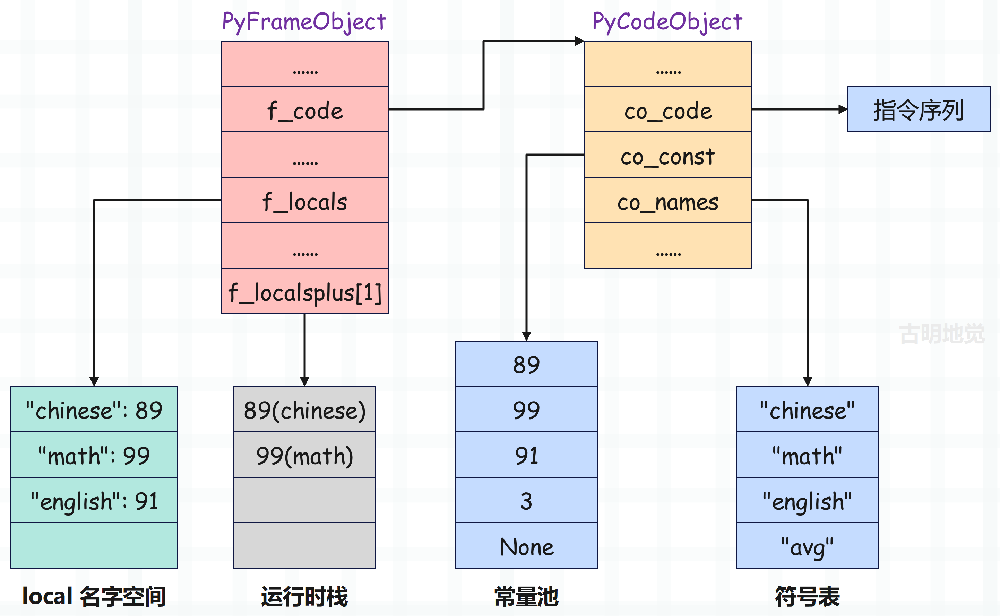
接下来执行 16 BINARY_ADD，它会将栈里的两个元素弹出，然后执行加法操作，最后再将结果入栈。
当然上面这种说法是为了方便理解，其实虚拟机真正执行的时候，只会弹出一个元素，而另一个元素只是使用 TOP() 进行查看，但不弹出。等结果计算完毕之后，再将栈顶元素替换掉。
所以本质上，和弹出两个元素、再将计算结果入栈是一样的。
case TARGET(BINARY_ADD): {
// 从栈顶弹出元素，这里是 99（变量 math）
PyObject *right = POP();
// math 弹出之后，chinese 就成为了新的栈顶元素
// 这里的 TOP() 则是获取栈顶元素 89（变量 chinese）
PyObject *left = TOP();
// 用于保存两者的和
PyObject *sum;
// 如果是字符串，执行专门的函数
if (PyUnicode_CheckExact(left) &&
PyUnicode_CheckExact(right)) {
sum = unicode_concatenate(tstate, left, right, f, next_instr);
}
// 否则通过泛型 API 进行计算
else {
sum = PyNumber_Add(left, right);
Py_DECREF(left);
}
// 减少元素的引用计数
Py_DECREF(right);
// 将栈顶元素替换成 sum
SET_TOP(sum);
if (sum == NULL)
goto error;
DISPATCH();
}
BINARY_ADD 指令执行完之后，栈帧的布局就变成了下面这样：
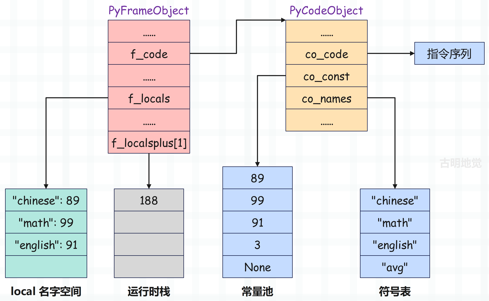
然后 18 LOAD_NAME 负责将符号表中索引为 2 的变量 english 的值压入运行时栈，而指令 20 BINARY_ADD 则是继续执行加法操作，并将结果设置在栈顶，然后 22 LOAD_CONST 将常量 3 再压入运行时栈。
这三条指令执行之后，运行时栈的变化如下：

接着是 24 BINARY_TRUE_DIVIDE，它的逻辑和 BINARY_ADD 类似，只不过一个执行除法，一个执行加法。
case TARGET(BINARY_TRUE_DIVIDE): {
// 从栈顶弹出元素，显然是 3
PyObject *divisor = POP();
// 查看栈顶元素，此时栈顶元素变成了 279
PyObject *dividend = TOP();
// 调用 PyNumber_TrueDivide，执行 279 / 3
PyObject *quotient = PyNumber_TrueDivide(dividend, divisor);
// 减少引用计数
Py_DECREF(dividend);
Py_DECREF(divisor);
// 将栈顶元素替换成 279 / 3 的计算结果
SET_TOP(quotient);
if (quotient == NULL)
goto error;
DISPATCH();
}
当 24 BINARY_TRUE_DIVIDE 执行完之后，运行时栈如下：

然后 26 STORE_NAME 将栈顶元素 93.0 弹出，并将符号表中索引为 3 的变量 avg 和它绑定起来，放到名字空间中。因此最终栈帧关系图如下：

以上就是虚拟机对这几行代码的执行流程，整个过程就像 CPU 执行指令一样。
我们再用 Python 代码描述一遍上面的逻辑：
# LOAD_CONST 将 89 压入栈中，STORE_NAME 将 89 从栈中弹出
# 并将符号 "chinese" 和 89 绑定起来，放在名字空间中
chinese = 89
print(
{k: v for k, v in locals().items() if not k.startswith("__")}
) # {'chinese': 89}
math = 99
print(
{k: v for k, v in locals().items() if not k.startswith("__")}
) # {'chinese': 89, 'math': 99}
english = 91
print(
{k: v for k, v in locals().items() if not k.startswith("__")}
) # {'chinese': 89, 'math': 99, 'english': 91}
avg = (chinese + math + english) / 3
print(
{k: v for k, v in locals().items() if not k.startswith("__")}
) # {'chinese': 89, 'math': 99, 'english': 91, 'avg': 93.0}
现在你是不是对虚拟机执行字节码有更深的了解了呢？当然字节码指令非常多，不止我们上面看到的那几个。你可以随便写一些代码，然后分析一下它的字节码指令是什么。
小结
到此，我们就深入源码，考察了虚拟机执行字节码的流程，帧评估函数虽然很长，也有那么一些复杂，但是核心逻辑不难理解。就是把自己当成一个 CPU，在栈帧中执行字节码指令。
下一篇文章我们来介绍一下常见的几个指令，并探讨不同的变量赋值语句的背后原理。
欢迎大家关注我的公众号：古明地觉的编程教室。
如果觉得文章对你有所帮助，也可以请作者吃个馒头，Thanks♪(･ω･)ﾉ。
楔子
前面我们剖析了字节码的执行流程，本来应该接着介绍一些常见指令的，但因为有几个指令涉及到了局部变量，所以我们单独拿出来说。与此同时，我们还要再度考察一下 local 名字空间，它的背后还隐藏了很多内容。
我们知道函数的参数和函数内部定义的变量都属于局部变量，均是通过静态方式访问的。
x = 123
def foo1():
global x
a = 1
b = 2
# co_nlocals 会返回局部变量的个数
# a 和 b 是局部变量，x 是全局变量，因此是 2
print(foo1.__code__.co_nlocals) # 2
def foo2(a, b):
pass
print(foo2.__code__.co_nlocals) # 2
def foo3(a, b):
a = 1
b = 2
c = 3
print(foo3.__code__.co_nlocals) # 3
无论是参数还是内部新创建的变量，本质上都是局部变量。
按照之前的理解，当访问一个全局变量时，会去访问 global 名字空间（也叫全局名字空间）。
那么问题来了，当操作函数的局部变量时，是不是也等价于操作其内部的 local 名字空间（局部名字空间）呢？我们往下看。
如何访问（创建）一个局部变量
之前我们说过 Python 变量的访问是有规则的，会按照本地、闭包、全局、内置的顺序去查找，也就是 LEGB 规则，所以在查找变量时，local 名字空间应该是第一选择。
但不幸的是，虚拟机在为调用的函数创建栈帧对象时，这个至关重要的 local 名字空间并没有被创建。因为栈帧的 f_locals 字段和 f_globals 字段分别指向了局部名字空间和全局名字空间，而创建栈帧时 f_locals 被初始化成了 NULL，所以并没有创建局部名字空间。这里可能有人会有疑问，因为印象之中函数是有 local 空间的吧。
import inspect
# 模块的栈帧
frame = inspect.currentframe()
# 对于模块而言，局部名字空间和全局名字空间是同一个字典
print(frame.f_locals is frame.f_globals) # True
# 当然啦，局部名字空间和全局名字空间也可以通过内置函数获取
print(
frame.f_locals is locals() is frame.f_globals is globals()
) # True
# 但对于函数而言就不一样了
def foo():
name = "古明地觉"
return inspect.currentframe()
frame = foo()
# global 名字空间全局唯一
# 无论是获取栈帧的 f_globals，还是调用 globals()，得到的都是同一份字典
print(frame.f_globals is globals()) # True
# 但每个函数都有自己独立的局部名字空间
print(frame.f_locals) # {'name': '古明地觉'}
# 咦，不是说局部名字空间被初始化为 NULL 吗？
# 那么在 Python 里面获取的话，结果应该是个 None 才对啊
# 关于这一点，我们稍后会解释
总之对于函数而言，在创建栈帧时，它的 f_locals 被初始化为 NULL。那么问题来了，局部变量到底存储在什么地方呢？当然，由于变量只是一个名字（符号），而局部变量的名字都存储在符号表中，所以更严谨的说法是，局部变量的值存储在什么地方？
在介绍虚拟机执行字节码的时候我们说过，当函数被调用时，虚拟机会为其创建一个栈帧。栈帧是虚拟机的执行环境，包含了执行时所依赖的上下文，而栈帧内部有一个字段叫 f_localsplus，它是一个数组。

这个数组虽然是一段连续内存，但在逻辑上被分成了 4 份，其中局部变量便存储在 f_localsplus 的第一份空间中。现在我们明白了，局部变量是静态存储在数组中的。
我们举个例子。
def foo(a, b):
c = a + b
print(c)
它的字节码如下：
// 加载局部变量 a，压入运行时栈
2 0 LOAD_FAST 0 (a)
// 加载局部变量 b，压入运行时栈
2 LOAD_FAST 1 (b)
// 将 a 和 b 从栈中弹出，然后做加法运算，再将结果压入栈中
4 BINARY_ADD
// 加载符号 c，弹出栈顶元素（a + b 的运算结果）
// 然后将两者绑定起来，完成赋值语句 c = a + b
6 STORE_FAST 2 (c)
// 加载变量 print，优先从 global 空间中加载
// 如果 global 空间里面没有，那么再从 builtin 空间中加载
3 8 LOAD_GLOBAL 0 (print)
// 加载局部变量 c
10 LOAD_FAST 2 (c)
// 执行 print(c)，并将返回值压入栈中，print 的返回值是 None
12 CALL_FUNCTION 1
// 弹出栈顶的返回值，因为没有用变量保存，所以会直接丢弃
14 POP_TOP
// 隐式的 return None
16 LOAD_CONST 0 (None)
18 RETURN_VALUE
注意里面的 LOAD_FAST 和 STORE_FAST，这两个指令对应的逻辑如下。
case TARGET(LOAD_FAST): {
// 通过宏 GETLOCAL 获取局部变量的值
PyObject *value = GETLOCAL(oparg);
// 如果值为 NULL，抛出 UnboundLocalError
if (value == NULL) {
format_exc_check_arg(tstate, PyExc_UnboundLocalError,
UNBOUNDLOCAL_ERROR_MSG,
PyTuple_GetItem(co->co_varnames, oparg));
goto error;
}
// 增加引用计数并压入运行时栈
Py_INCREF(value);
PUSH(value);
FAST_DISPATCH();
}
case TARGET(STORE_FAST): {
PREDICTED(STORE_FAST);
// 获取栈顶元素
PyObject *value = POP();
// 通过宏 SETLOCAL 创建局部变量
SETLOCAL(oparg, value);
FAST_DISPATCH();
}
所以 LOAD_FAST 和 STORE_FAST 分别负责加载和创建局部变量，而核心就是里面的两个宏：GETLOCAL、SETLOCAL，这两个宏也是定义在帧评估函数里面的。
// Python/ceval.c
// 在帧评估函数中，fastlocals 会被赋值为 f->f_localsplus
#define GETLOCAL(i) (fastlocals[i])
#define SETLOCAL(i, value) do { PyObject *tmp = GETLOCAL(i); \
GETLOCAL(i) = value; \
Py_XDECREF(tmp); } while (0)
/* 这里额外再补充一个关于 C 语言的知识点
* 我们看到宏 SETLOCAL 展开之后的结果是 do {...} while (0)
* do while 循环会先执行 do 里面的循环体，然后再判断条件是否满足
* 因此从效果上来说，执行 do {...} while (0) 和直接执行 ... 是等价的
* 那么问题来了，既然效果等价，为啥还要再套一层 do while 呢
* 其实原因很简单，如果宏在展开之后会生成多条语句，那么这些语句要成为一个整体
* 另外由于 C 程序的语句要以分号结尾，所以在调用宏时，我们也会习惯性地在结尾加上分号
* 因此我们希望有这样一种结构，能同时满足以下要求：
* 1）可以将多条语句包裹起来，作为一个整体；
* 2）程序的语义不能发生改变；
* 3）在语法上，要以分号结尾；
* 显然 do while 完美满足以上三个要求，只需将 while 里的条件设置为 0 即可
* 并且当编译器看到 while (0) 时，也会进行优化，去掉不必要的循环控制结构
* 因此以后看到 do {...} while (0) 时，不要觉得奇怪，这是宏的一个常用技巧
*/
我们看到操作局部变量，就是在基于索引操作数组 f_localsplus，显然这个过程比操作字典要快。尽管字典是经过高度优化的，但显然再怎么优化，也不可能快过数组的静态操作。
所以此时我们对局部变量的藏身之处已经了然于心，它们就存放在栈帧的 f_localsplus 字段中，而之所以没有使用 local 名字空间的原因也很简单。因为函数内部的局部变量在编译时就已经确定了，个数是不会变的，因此编译时也能确定局部变量占用的内存大小，以及访问局部变量的字节码指令应该如何访问内存。
def foo(a, b):
c = a + b
print(c)
print(
foo.__code__.co_varnames
) # ('a', 'b', 'c')
比如变量 c 位于符号表中索引为 2 的位置，这在编译时就已确定。
- 当创建变量 c 时，只需修改数组 f_localsplus 中索引为 2 的元素即可。
- 当访问变量 c 时，只需获取数组 f_localsplus 中索引为 2 的元素即可。
这个过程是基于数组索引实现的静态查找，所以操作局部变量和操作全局变量有着异曲同工之妙。操作全局变量本质上是基于 key 操作字典的 value，其中 key 是变量的名称，value 是变量的值；而操作局部变量本质上是基于索引操作数组 f_localsplus 的元素，这个索引就是变量名在符号表中的索引，对应的数组元素就是变量的值。
所以我们说 Python 的变量其实就是个名字，或者说符号，到这里是不是更加深刻地感受到了呢？
但对于局部变量来说，如果想实现静态查找，显然要满足一个前提：变量名在符号表中的索引和与之绑定的值在 f_localsplus 中的索引必须是一致的。毫无疑问，两者肯定是一致的，并且索引是多少在编译阶段便已经确定，会作为指令参数保存在字节码指令序列中。
好，到此可以得出结论，虽然虚拟机为函数实现了 local 名字空间（初始为 NULL），但在操作局部变量时却没有使用它，原因就是为了更高的效率。当然还有所谓的 LEGB，都说变量查找会遵循这个规则，但我们心里清楚，局部变量其实是静态访问的，不过完全可以按照 LEGB 的方式来理解。
解密 local 名字空间
先来看一下全局名字空间：
x = 1
def foo():
globals()["x"] = 2
foo()
print(x) # 2
global 空间全局唯一，在 Python 层面上就是一个字典，在任何地方操作该字典，都相当于操作全局变量，即使是在函数内部。因此在执行完 foo() 之后，全局变量 x 就被修改了。但 local 名字空间也是如此吗？我们尝试一下。
def foo():
x = 1
locals()["x"] = 2
print(x)
foo() # 1
我们按照相同的套路，却并没有成功，这是为什么？原因就是上面解释的那样，函数内部有哪些局部变量在编译时就已经确定了，查询的时候是从数组 f_localsplus 中静态查找的，而不是从 local 名字空间中查找。
然后我们打印一下 local 名字空间，看看里面都有哪些内容。
def foo():
name = "satori"
print(locals())
age = 17
print(locals())
gender = "female"
print(locals())
foo()
"""
{'name': 'satori'}
{'name': 'satori', 'age': 17}
{'name': 'satori', 'age': 17, 'gender': 'female'}
"""
我们看到打印 locals() 居然也会显示内部的局部变量，相信聪明如你已经猜到 locals() 是怎么回事了。符号表里面存储了局部变量的符号（或者说名字），f_localsplus 里面存储了局部变量的值，当执行 locals() 的时候，会基于符号表和 f_localsplus 创建一个字典出来。
def foo():
name = "satori"
age = 17
gender = "female"
print(locals())
# 符号表：保存了函数中创建的局部变量的名字
print(foo.__code__.co_varnames)
"""
('name', 'age', 'gender')
"""
# 调用函数时会创建栈帧，局部变量的值都保存在 f_localsplus 里面
# 并且符号表中变量名的顺序和 f_localsplus 中变量值的顺序是一致的
f_localsplus = ["satori", 17, "female"]
# 这里就用一个列表来模拟了
我们来看一下变量的创建。
- 由于符号 name 位于符号表中索引为 0 的位置，那么执行 name = "satori" 时，就会将 "satori" 放在 f_localsplus 中索引为 0 的位置。
- 由于符号 age 位于符号表中索引为 1 的位置，那么执行 age = 17 时，就会将 17 放在 f_localsplus 中索引为 1 的位置。
- 由于符号 gender 位于符号表中索引为 2 的位置，那么执行 gender = "female" 时，就会将 "female" 放在 f_localsplus 中索引为 2 的位置。
后续在访问变量的时候，比如访问变量 age，由于它位于符号表中索引为 1 的位置，那么就会通过 f_localsplus[1] 获取它的值，这些符号对应的索引都是在编译阶段确定的。所以在运行时才能实现静态查找，指令 LOAD_FAST 和 STORE_FAST 都是基于索引来静态操作底层数组。
我们用一张图来描述这个过程：

符号表负责存储局部变量的名字，f_localsplus 负责存储局部变量的值（里面的元素初始为 NULL），而在给局部变量赋值的时候，本质上就是将值写在了 f_localsplus 中。并且变量名在符号表中的索引，和变量值在 f_localsplus 中的索引是一致的，因此操作局部变量本质上就是在操作 f_localsplus 数组。至于 locals() 或者说局部名字空间，它是基于符号表和 f_localsplus 动态创建的，为了方便我们获取已存在的局部变量，执行 locals() 会临时创建一个字典（只会创建一次）。
所以我们通过 locals() 获取局部名字空间之后，访问里面的局部变量是可以的，只不过此时将静态访问变成了动态访问。
def foo():
name = "satori"
# 会从 f_localsplus 中静态查找
print(name)
# 先基于已有的变量和值创建一个字典
# 然后通过字典实现变量的动态查找
print(locals()["name"])
foo()
"""
satori
satori
"""
两种方式都是可以的，但基于 locals() 来访问，在效率上明显会低一些。
另外基于 locals() 访问一个变量是可以的，但无法创建一个变量。
def foo():
name = "satori"
locals()["age"] = 17
try:
print(age)
except NameError as e:
print(e)
foo()
"""
name 'age' is not defined
"""
局部变量是静态存储在数组里的，locals() 只是做了一个拷贝而已。往局部名字空间里面添加一个键值对，不等于创建一个局部变量，因为局部变量不是从它这里查找的，因此代码中打印 age 报错了。但如果外部还有一个全局变量 age 的话，那么会打印全局变量 age。
然后再补充一点，我们说全局名字空间在任何地方都是唯一的，而对于函数而言，它的局部名字空间在整个函数内部也是唯一的。不管调用 locals 多少次，拿到的都是同一个字典。
def foo():
name = "satori"
# 执行 locals() 的时候，内部只有一个键值对
d = locals()
print(d) # {'name': 'satori'}
# 再次获取，此时有两个键值对
print(locals()) # {'name': 'satori', 'd': {...}}
# 但两者的 id 相同，因为一个函数只有一个局部名字空间
# 不管调用多少次 locals()，拿到的都是同一个字典
print(id(d) == id(locals())) # True
foo()
所以 locals() 和 globals() 指向的名字空间都是唯一的，只不过 locals() 是在某个函数内部唯一，而 globals() 在所有地方都唯一。
因此局部名字空间初始为 NULL，但在第一次执行 locals() 时，会以符号表中的符号作为 key，f_localsplus 中的值作为 value，创建一个字典作为函数的局部名字空间。而后续再执行 locals() 的时候，由于名字空间已存在，就不会再次创建了，直接基于当前的局部变量对字典进行更新即可。
def foo():
# 创建一个字典，由于当前还没有定义局部变量，因此是空字典
print(locals()) # {}
# 往局部名字空间添加一个键值对
locals()["a"] = "b"
print(locals()) # {'a': 'b'}
# 定义一个局部变量
name = "satori"
# 由于局部名字空间已存在，因此不会再次创建
# 直接将局部变量的名字作为 key、值作为 value，拷贝到字典中
print(locals()) # {'a': 'b', 'name': 'satori'}
foo()
注意：虽然局部名字空间里面存在 "a" 这个 key，但 a 这个局部变量是不存在的。
local 名字空间的创建过程
目前我们已经知道 local 名字空间是怎么创建的了，也熟悉了它的特性，下面通过源码来看一下它的构建过程。
// Python/bltinmodule.c
static PyObject *
builtin_locals_impl(PyObject *module)
{
PyObject *d;
// Python 内置函数的源码实现位于 bltinmodule.c 中
// 这里又调用了 PyEval_GetLocals
d = PyEval_GetLocals();
Py_XINCREF(d);
return d;
}
// Python/ceval.c
PyObject *
PyEval_GetLocals(void)
{
// 获取线程状态对象
PyThreadState *tstate = _PyThreadState_GET();
// 拿到当前栈桢
PyFrameObject *current_frame = _PyEval_GetFrame(tstate);
if (current_frame == NULL) {
_PyErr_SetString(tstate, PyExc_SystemError, "frame does not exist");
return NULL;
}
// 调用 PyFrame_FastToLocalsWithError 创建 local 名字空间
// 并赋值给 current_frame->f_locals
if (PyFrame_FastToLocalsWithError(current_frame) < 0) {
return NULL;
}
assert(current_frame->f_locals != NULL);
// 返回 current_frame->f_locals
return current_frame->f_locals;
}
// Objects/frameobject.c
int
PyFrame_FastToLocalsWithError(PyFrameObject *f)
{
PyObject *locals, *map;
PyObject **fast;
PyCodeObject *co;
Py_ssize_t j;
Py_ssize_t ncells, nfreevars;
// 栈桢不能为空
if (f == NULL) {
PyErr_BadInternalCall();
return -1;
}
// 获取局部名字空间
locals = f->f_locals;
// 如果为 NULL，那么创建一个新字典，作为名字空间
// 所以局部名字空间只会创建一次，后续不会再创建
if (locals == NULL) {
locals = f->f_locals = PyDict_New();
if (locals == NULL)
return -1;
}
// 获取 PyCodeObject 对象
co = f->f_code;
// 拿到内部的符号表（一个元组），里面保存了函数局部变量的名字
map = co->co_varnames;
if (!PyTuple_Check(map)) {
PyErr_Format(PyExc_SystemError,
"co_varnames must be a tuple, not %s",
Py_TYPE(map)->tp_name);
return -1;
}
// 获取 f_localsplus，它里面保存了局部变量的值
// 只不过除了局部变量的值之外，还保存了其它的
fast = f->f_localsplus;
// 那么 f_localsplus 里面到底有多少个局部变量的值呢？显然这要基于符号表来判断
// co_varnames 里面保存了多少个符号，f_localsplus 里面就保存了多少个局部变量的值
j = PyTuple_GET_SIZE(map);
if (j > co->co_nlocals)
// 理论上符号表的长度和局部变量的个数（co_nlocals）是相等的
// 但如果超过了 co_nlocals，那么让它等于 co_nlocals
j = co->co_nlocals;
// 如果 co_nlocals 大于 0，证明存在局部变量，那么调用 map_to_dict
// 将 co_varnames 和 f_localsplus 里的元素组成键值对，添加到局部名字空间中
if (co->co_nlocals) {
// 相当于 locals.update(zip(co_varnames, f_localsplus))
if (map_to_dict(map, j, locals, fast, 0) < 0)
return -1;
}
// 如果里面有 cell 变量和 free 变量的话，也会添加到局部名字空间中
// 关于 cell 变量和 free 变量，由于它们和闭包相关，所以等介绍闭包的时候再说
ncells = PyTuple_GET_SIZE(co->co_cellvars);
nfreevars = PyTuple_GET_SIZE(co->co_freevars);
if (ncells || nfreevars) {
if (map_to_dict(co->co_cellvars, ncells,
locals, fast + co->co_nlocals, 1))
return -1;
if (co->co_flags & CO_OPTIMIZED) {
if (map_to_dict(co->co_freevars, nfreevars,
locals, fast + co->co_nlocals + ncells, 1) < 0)
return -1;
}
}
return 0;
}
可以看到，源码的实现逻辑和我们之前分析的是一样的。
- 变量 map 是符号表 co_varnames，保存了局部变量的名字；
- 变量 fast 是 f_localsplus，保存了局部变量的值；
- 变量 j 是局部变量的个数；
- 变量 locals 是局部名字空间；
然后将它们作为参数，传递给 map_to_dict 函数，该函数内部会进行遍历，按照顺序将变量名和变量值依次添加到局部名字空间中。然后我们再来看一下 map_to_dict 函数，它内部有一处细节非常之关键。
// Objects/frameobject.c
static int
map_to_dict(PyObject *map, Py_ssize_t nmap, PyObject *dict, PyObject **values,
int deref)
{
Py_ssize_t j;
assert(PyTuple_Check(map));
assert(PyDict_Check(dict));
assert(PyTuple_Size(map) >= nmap);
// nmap 表示局部变量的个数
for (j=0; j < nmap; j++) {
// 从符号表中获取符号（变量名）
PyObject *key = PyTuple_GET_ITEM(map, j);
// values 就是 f_localsplus，然后获取变量的值
PyObject *value = values[j];
assert(PyUnicode_Check(key));
// 闭包变量相关，等介绍闭包的时候再说，由于当前不存在闭包，所以先忽略掉
if (deref && value != NULL) {
assert(PyCell_Check(value));
value = PyCell_GET(value);
}
// 注意这一步：检测 value 是否等于 NULL，那么问题来了，什么时候 value 会等于 NULL 呢？
// 之前说了，局部变量有哪些在编译的时候就确定了，保存在符号表中，局部变量的值保存在 f_localsplus 中
// 在局部变量还没有赋值的时候，它在 f_localsplus 中对应的值就是 NULL
// 而给一个局部变量赋值，本质上就是在修改 f_localsplus
// 假设一个函数的符号表为 ("a", "b", "c")，在给变量 c 赋值之前调用了 locals()
// 那么在获取变量 c 对应的值时，拿到的就是一个 NULL
if (value == NULL) {
// 如果某个符号对应的值为 NULL，则说明在获取名字空间时，该变量还没有被赋值
// 那么当该符号在 local 空间中已存在时，还要将它删掉。这一步非常关键，它的作用我们稍后会说
if (PyObject_DelItem(dict, key) != 0) {
if (PyErr_ExceptionMatches(PyExc_KeyError))
PyErr_Clear();
else
return -1;
}
}
// 如果 value 不等于 NULL，说明变量已经完成了和某个值的绑定，于是将它们组成键值对拷贝到 local 空间中
else {
if (PyObject_SetItem(dict, key, value) != 0)
return -1;
}
}
return 0;
}
以上就是 local 名字空间的获取过程在源码层面的体现。
local 名字空间与 exec 函数
我们再来搭配 exec 关键字，结果会更加明显。首先 exec 函数可以将一段字符串当成代码来执行，并将执行结果体现在当前的名字空间中。
def foo():
print(locals()) # {}
exec("x = 1")
print(locals()) # {'x': 1}
try:
print(x)
except NameError as e:
print(e) # name 'x' is not defined
foo()
尽管 locals() 变了，但是依旧访问不到 x，因为虚拟机并不知道 exec("x = 1") 是创建一个局部变量，它只知道这是一个函数调用。
事实上 exec 会作为一个独立的编译单元来执行，并且有自己的作用域。
所以 exec("x = 1") 执行完之后，效果就是改变了局部名字空间，里面多了一个 "x": 1 键值对。但关键的是，局部变量 x 不是从局部名字空间中查找的，exec 终究还是错付了人。而由于函数 foo 对应的 PyCodeObject 对象的符号表中并没有 x 这个符号，所以报错了。
补充：exec 默认影响的是 local 名字空间，如果在执行时发现 local 名字空间为 NULL，那么会自动创建一个。所以调用 exec 也可以创建名字空间（当它为 NULL 时）。
exec("x = 1")
print(x) # 1
如果放在模块里面是可以的，因为模块的 local 名字空间和 global 名字空间指向同一个字典，所以 global 名字空间会多一个 key 为 "x" 的键值对。而全局变量是从 global 名字空间中查找的，所以这里没有问题。
def foo():
# 此时 exec 影响的是 global 名字空间
exec("x = 123", globals())
# 所以这里不会报错, 但此时的 x 不是局部变量, 而是全局变量
print(x)
foo()
print(x)
"""
123
123
"""
可以给 exec 指定要影响的名字空间，代码中 exec 影响的是全局名字空间，打印的 x 也是全局变量。
变量名冲突的问题
我们说 exec 的执行效果会体现在 local 名字空间中，但是需要考虑变量名冲突的问题。举个例子：
def foo():
exec("x = 1")
print(locals()["x"])
foo()
"""
1
"""
def bar():
exec("x = 1")
print(locals()["x"])
x = 123
bar()
"""
Traceback (most recent call last):
File .....
bar()
File .....
print(locals()["x"])
KeyError: 'x'
"""
这是什么情况？函数 bar 只是多了一行赋值语句，为啥就报错了呢？要想搞懂这个问题，首先要明确两点：
- 1）函数的局部变量在编译的时候就已经确定，并存储在对应的 PyCodeObject 对象的符号表 (co_varnames) 中，这是由语法规则所决定的；
- 2）函数内的局部变量在其整个作用域范围内都是可见的；
对于 foo 函数来说，exec 执行完之后相当于往 local 名字空间中添加一个键值对，这没有问题。对于 bar 函数而言也是如此，在执行完 exec("x = 1") 之后，local 名字空间中也会存在 "x": 1 这个键值对，但下面执行 locals() 的时候又把字典更新了。因为局部变量可以在函数的任意位置创建，或者修改，所以每一次执行 locals() 的时候，都会遍历符号表和 f_localsplus，组成键值对将原来的字典更新一遍。
在 bar 函数里面有一行 x = 123，所以知道函数里面存在局部变量 x，符号表里面也会有 "x" 这个符号，这是在编译时就确定的。但我们是在 x = 123 之前调用的 locals，所以此时符号 x 在 f_localsplus 中对应的值还是一个 NULL，没有指向一个合法的 PyObject。换句话说就是，知道里面存在局部变量 x，但是还没有来得及赋值。
然后在更新名字空间的时候，如果发现值是个 NULL，那么就把名字空间中该变量对应的键值对给删掉。
我们回顾一下 map_to_dict 函数：
所以 bar 函数执行 locals()["x"] 的时候，会先获取名字空间，原本里面是有 "x": 1 这个键值对的。但因为赋值语句 x = 123 的存在，导致符号表里面存在 "x" 这个符号，但执行 locals() 的时候又尚未完成赋值，所以值为 NULL，于是又把这个键值对给删掉了。所以执行 locals()["x"] 的时候，出现了 KeyError。
因为局部名字空间体现的是局部变量的值，而调用 locals 的时候，局部变量 x 还没有被创建。所以 locals() 里面不应该存在 key 为 "x" 的键值对，于是会将它删除。
我们将名字空间打印一下：
def foo():
# 创建局部名字空间，并写入键值对 "x": 1
# 此时名字空间为 {"x": 1}
exec("x = 1")
# 获取名字空间，会进行更新
# 但当前不存在局部变量，所以名字空间仍是 {"x": 1}
print(locals())
def bar():
# 创建局部名字空间，并写入键值对 "x": 1
# 此时名字空间为 {"x": 1}
exec("x = 1")
# 获取名字空间，会进行更新
# 由于里面存在局部变量 x，但尚未赋值
# 于是将字典中 key 为 "x" 的键值对给删掉
# 所以名字空间变成了 {}
print(locals())
x = 123
foo() # {'x': 1}
bar() # {}
上面代码中，局部变量的创建发生在 exec 之后，如果发生在 exec 之前也是相同的结果。
def foo():
exec("x = 2")
print(locals())
foo() # {'x': 2}
def bar():
x = 1
exec("x = 2")
print(locals())
bar() # {'x': 1}
在 exec("x = 2") 执行之后，名字空间也变成了 {"x": 2}。但从源码中我们看到，每次调用 locals，都会遍历符号表和 f_localsplus，对字典进行更新，所以在 bar 函数里面获取名字空间的时候，又把 "x" 对应的 value 给更新回来了。
当然这是在变量冲突的情况下，会保存真实存在的局部变量的值。但如果不冲突，比如 bar 函数里面是 exec("y = 2")，那么 locals() 里面就会存在两个键值对。但只有 x 才是真正的局部变量，而 y 则不是。
将 exec("x = 2") 换成 locals()["x"] = 2 也是一样的效果，它们都是往局部名字空间中添加一个键值对，但不会创建一个局部变量。
薛定谔的猫
当 Python 中混进一只薛定谔的猫……，这是猫哥在 19 年更新的一篇文章，里面探讨的内容我们本文的主题是重叠的。猫哥在文章中举了几个疑惑重重的例子，看看用上面学到的内容能不能合理地解释。
# 例 0
def foo():
exec('y = 1 + 1')
z = locals()['y']
print(z)
foo()
# 输出：2
# 例 1
def foo():
exec('y = 1 + 1')
y = locals()['y']
print(y)
foo()
# 报错：KeyError: 'y'
以上是猫哥文章中举的示例，首先例 0 很简单，因为 exec 影响了所在的局部名字空间，里面存在 "y": 2 这个键值对。至于里面的变量 z 则不影响，因为我们获取的是 "y" 这个 key 对应的 value。
但例 1 则不同，因为 Python 在语法解析的时候发现了 y = ... 这样的赋值语句，那么它在编译的时候就知道函数里面存在 y 这个局部变量，并写入符号表中。既然符号表中存在，那么调用 locals 的时候就会对它进行更新。但是对 y 赋值是发生在调用 locals 之后，所以在调用 locals 的时候，y 的值还是一个 NULL，也就是变量还没有赋值。所以会将名字空间中的 "y": 2 这个键值对给删掉，于是报出 KeyError 错误。
再来看看猫哥文章的例 2：
# 例 2
def foo():
y = 1 + 1
y = locals()['y']
print(y)
foo()
# 输出：2
locals() 是对真实存在的局部变量的一个拷贝，在调用 locals 之前 y 就已经创建好了。符号表里面有 "y"，f_localsplus 里面有一个数值 2，所以调用 locals() 的时候，会得到 {"y": 2}，因此函数执行正常。
猫哥文章的例 3：
# 例3
def foo():
exec('y = 1 + 1')
boc = locals()
y = boc['y']
print(y)
foo()
# KeyError: 'y'
这个例3 和例1 是一样的，只不过用变量 boc 将局部名字空间保存起来了。执行 exec 的时候，会创建局部名字空间，写入键值对 "y": 2。但调用 locals 的时候，发现函数内部存在局部变量 y 并且还尚未赋值，于是又会将 "y": 2 这个键值对给删掉，因此 boc 变成了一个空字典。
所以在执行 y = boc["y"] 的时候会出现 KeyError。
猫哥文章的例 4：
# 例4
def foo():
boc = locals()
exec('y = 1 + 1')
y = boc['y']
print(y)
foo()
# 输出：2
显然在调用 locals 的时候，会返回一个空字典，因为此时的局部变量都还没有赋值。但需要注意的是：boc 已经指向了局部名字空间（字典），而局部名字空间在一个函数里面也是唯一的。所以 exec("y = 1 + 1") 执行之后，会往局部名字空间里面写入一个键值对，而变量 boc 指向的字典也会发生改变，因为是同一个字典，所以程序正常执行。
猫哥文章的例 5：
# 例5
def foo():
boc = locals()
exec('y = 1 + 1')
print(locals())
y = boc['y']
print(y)
foo()
# {'boc': {...}}
# KeyError: 'y'
首先在执行 boc = locals() 之后，boc 会指向一个空字典，然后 exec 函数执行之后会往字典里面写入一个键值对 "y": 2。如果在 exec 执行之后，直接执行 y = boc["y"]，那么代码是没有问题的，但问题是执行之前插入了一个 print(locals())。
我们说过，当调用 locals 的时候，会对名字空间进行更新，然后返回更新之后的名字空间。由于函数内部存在 y = ... 这样的赋值语句，所以符号表中就存在 "y" 这个符号，于是会进行更新。但更新的时候，发现 y 还没有被赋值，于是又将字典中的键值对 "y": 2 给删掉了。
由于局部名字空间只有一份，所以 boc 指向的字典也会发生改变，换句话说在 print(locals()) 之后，boc 就指向了一个空字典，因此执行 y = boc["y"] 时会出现 KeyError。
小结
以上我们就探讨了 local 名字空间相关的内容，它是一个字典，是对真实存在的局部变量的一个拷贝，每当我们调用 locals，都会拷贝一次（但字典只会存在一份）。
然后函数的局部变量都是静态存储的，编译时就已经确定，无法在运行时动态添加。我们往局部名字空间里面添加键值对，并不等价于创建局部变量。
欢迎大家关注我的公众号：古明地觉的编程教室。
如果觉得文章对你有所帮助，也可以请作者吃个馒头，Thanks♪(･ω･)ﾉ。
楔子
前面我们考察了虚拟机执行字节码指令的原理，那么本篇文章就来看看这些指令对应的逻辑是怎样的，每个指令都做了哪些事情。当然啦，由于字节码指令有一两百个，我们没办法逐一分析，这里会介绍一些常见的。至于其它的指令，会随着学习的深入，慢慢揭晓。
介绍完常见指令之后，我们会探讨 Python 赋值语句的背后原理，并分析它们的差异。
常用指令
有一部分指令出现的频率极高，非常常用，我们来看一下。
- LOAD_CONST：加载一个常量；
- LOAD_FAST：在局部作用域中加载一个局部变量；
- LOAD_GLOBAL：在局部作用域中加载一个全局变量或内置变量；
- LOAD_NAME：在全局作用域中加载一个全局变量或内置变量；
- STORE_FAST：在局部作用域中定义一个局部变量，来建立和某个对象之间的映射关系；
- STORE_GLOBAL：在局部作用域中定义一个使用 global 关键字声明的全局变量，来建立和某个对象之间的映射关系；
- STORE_NAME：在全局作用域中定义一个全局变量，来建议和某个对象之间的映射关系；
我们举例说明：
import dis
name = "古明地觉"
def foo():
age = 16
print(age)
global name
print(name)
name = "古明地恋"
dis.dis(foo)
"""
6 0 LOAD_CONST 1 (16)
2 STORE_FAST 0 (age)
7 4 LOAD_GLOBAL 0 (print)
6 LOAD_FAST 0 (age)
8 CALL_FUNCTION 1
10 POP_TOP
9 12 LOAD_GLOBAL 0 (print)
14 LOAD_GLOBAL 1 (name)
16 CALL_FUNCTION 1
18 POP_TOP
10 20 LOAD_CONST 2 ('古明地恋')
22 STORE_GLOBAL 1 (name)
24 LOAD_CONST 0 (None)
26 RETURN_VALUE
"""
我们看到 age = 16 对应两条字节码指令。
- LOAD_CONST：加载一个常量，这里是 16；
- STORE_FAST：在局部作用域中创建一个局部变量，这里是 age；
print(age) 对应四条字节码指令。
- LOAD_GLOBAL：在局部作用域中加载一个全局变量或内置变量，这里是 print；
- LOAD_FAST：在局部作用域中加载一个局部变量，这里是 age；
- CALL_FUNCTION：函数调用；
- POP_TOP：从栈顶弹出返回值；
print(name) 对应四条字节码指令。
- LOAD_GLOBAL：在局部作用域中加载一个全局变量或内置变量，这里是 print；
- LOAD_GLOBAL：在局部作用域中加载一个全局变量或内置变量，这里是 name；
- CALL_FUNCTION：函数调用；
- POP_TOP：从栈顶弹出返回值；
name = "古明地恋" 对应两条字节码指令。
- LOAD_CONST：加载一个常量，这里是 "古明地恋"；
- STORE_GLOBAL：在局部作用域中创建一个 global 关键字声明的全局变量，这里是 name；
这些指令非常常见，因为它们和常量、变量的加载，以及变量的定义密切相关，你写的任何代码在反编译之后都少不了它们的身影。
注：不管加载的是常量、还是变量，得到的永远是指向对象的指针。
变量赋值的具体细节
这里再通过变量赋值感受一下字节码的执行过程，首先关于变量赋值，你平时是怎么做的呢？

这些赋值语句背后的原理是什么呢？我们通过字节码来逐一回答。
1）a, b = b, a 的背后原理是什么？
想要知道背后的原理，查看它的字节码是我们最好的选择。
1 0 LOAD_NAME 0 (b)
2 LOAD_NAME 1 (a)
4 ROT_TWO
6 STORE_NAME 1 (a)
8 STORE_NAME 0 (b)
10 LOAD_CONST 0 (None)
12 RETURN_VALUE
里面关键的就是 ROT_TWO 指令，虽然我们还没看这个指令，但也能猜出来它负责交换栈里面的两个元素。假设 a 和 b 的值分别为 22、33，看一下运行时栈的变化过程。

示意图还是很好理解的，关键就在于 ROT_TWO 指令，它是怎么交换元素的呢？
case TARGET(ROT_TWO): {
// 获取栈顶元素
PyObject *top = TOP();
// 获取从栈顶开始的第二个元素（栈底元素）
PyObject *second = SECOND();
// 将栈顶元素设置为 second，将栈的第二个元素设置为 top
// 完成两个元素之间的交换
SET_TOP(second);
SET_SECOND(top);
FAST_DISPATCH();
}
执行 ROT_TWO 指令之前，栈里有两个元素，栈顶元素是 a，栈底元素是 b。执行 ROT_TWO 指令之后，栈顶元素是 b，栈底元素是 a。然后后面的两个 STORE_NAME 会将栈里面的元素 b、a 依次弹出，赋值给 a、b，从而完成变量交换。
2）a, b, c = c, b, a 的背后原理是什么？
老规矩，还是查看字节码，因为一切真相都隐藏在字节码当中。
1 0 LOAD_NAME 0 (c)
2 LOAD_NAME 1 (b)
4 LOAD_NAME 2 (a)
6 ROT_THREE
8 ROT_TWO
10 STORE_NAME 2 (a)
12 STORE_NAME 1 (b)
14 STORE_NAME 0 (c)
16 LOAD_CONST 0 (None)
18 RETURN_VALUE
整个过程和 a, b = b, a 是相似的，首先 LOAD_NAME 将变量 c、b、a 依次压入栈中。由于栈先入后出的特性，此时栈的三个元素按照顺序（从栈顶到栈底）分别是 a、b、c。然后是 ROT_THREE 和 ROT_TWO，毫无疑问，这两个指令执行完之后，会将栈的三个元素调换顺序，也就是将 a、b、c 变成 c、b、a。最后 STORE_NAME 将栈的三个元素 c、b、a 依次弹出，分别赋值给 a、b、c，从而完成变量的交换。
因此核心就在 ROT_THREE 和 ROT_TWO 上面，由于后者上面已经说过了，所以我们看一下 ROT_THREE。
case TARGET(ROT_THREE): {
PyObject *top = TOP();
PyObject *second = SECOND();
PyObject *third = THIRD();
SET_TOP(second);
SET_SECOND(third);
SET_THIRD(top);
FAST_DISPATCH();
}
栈顶元素是 top、栈的第二个元素是 second、栈的第三个元素是 third，然后将栈顶元素设置为 second、栈的第二个元素设置为 third、栈的第三个元素设置为 top。所以栈里面的 a、b、c 在经过 ROT_THREE 之后就变成了 b、c、a，显然这还不是正确的结果。于是继续执行 ROT_TWO，将栈的前两个元素进行交换，执行完之后就变成了 c、b、a。
假设 a、b、c 的值分别为 "a"、"b"、"c"，整个过程如下：

对于多元赋值来说，解释器的做法是固定的，首先按照从左往右的顺序，将等号右边的变量依次压入栈中，然后在栈里面对元素做处理，最后再将栈里的元素弹出，仍旧按照从左往右的顺序，依次赋值给等号左边的变量。
另外这里为了交换栈里的三个元素，使用了两个指令，但其实一个指令就够了，只需将栈顶元素和栈底元素进行交换即可，因为中间的元素是不需要动的。而在之后的版本中，官方优化了这个逻辑。
3）a, b, c, d = d, c, b, a 的背后原理是什么？它和上面提到的 1）和 2）有什么区别呢？
我们还是看一下字节码。
1 0 LOAD_NAME 0 (d)
2 LOAD_NAME 1 (c)
4 LOAD_NAME 2 (b)
6 LOAD_NAME 3 (a)
8 BUILD_TUPLE 4
10 UNPACK_SEQUENCE 4
12 STORE_NAME 3 (a)
14 STORE_NAME 2 (b)
16 STORE_NAME 1 (c)
18 STORE_NAME 0 (d)
20 LOAD_CONST 0 (None)
22 RETURN_VALUE
将等号右边的变量，按照从左往右的顺序，依次压入栈中，但此时没有直接将栈里面的元素做交换，而是构建一个元组。因为往栈里面压入了四个元素，所以 BUILD_TUPLE 后面的 oparg 是 4，表示构建长度为 4 的元组。
case TARGET(BUILD_TUPLE): {
// 元素从栈顶到栈底依次是 a、b、c、d
PyObject *tup = PyTuple_New(oparg);
if (tup == NULL)
goto error;
// 将元素依次弹出，弹出的顺序也是 a、b、c、d
// 但是注意循环，元素是从后往前设置的
// 所以 item[3], item[2], item[1], item[0] = a, b, c, d
while (--oparg >= 0) {
PyObject *item = POP();
PyTuple_SET_ITEM(tup, oparg, item);
}
// 将元组 item 压入栈中，元组为 (d, c, b, a)
PUSH(tup);
DISPATCH();
}
此时栈里面只有一个元素，指向一个元组。接下来是 UNPACK_SEQUENCE，负责对序列进行解包，它的指令参数也是 4，表示要解包的序列的长度为 4，我们来看看它的逻辑。
case TARGET(UNPACK_SEQUENCE): {
PREDICTED(UNPACK_SEQUENCE);
// seq：从栈里面弹出的元组 (d, c, b, a)
// item：用于遍历元素
// items：指向一个 PyObject * 类型的数组
PyObject *seq = POP(), *item, **items;
if (PyTuple_CheckExact(seq) &&
PyTuple_GET_SIZE(seq) == oparg) {
// 获取元组内部的 ob_item 字段，元素就存储在它指向的数组中
items = ((PyTupleObject *)seq)->ob_item;
// 遍历内部的每一个元素，并依次压入栈中
// 由于是从后往前遍历的，所以遍历的元素依次是 a b c d
// 但在压入栈中之后，元素从栈顶到栈底就变成了 d c b a
while (oparg--) {
item = items[oparg];
Py_INCREF(item);
PUSH(item);
}
} else if (PyList_CheckExact(seq) &&
PyList_GET_SIZE(seq) == oparg) {
// 该指令同样适用于列表，逻辑一样（一会儿会看到）
items = ((PyListObject *)seq)->ob_item;
while (oparg--) {
item = items[oparg];
Py_INCREF(item);
PUSH(item);
}
}
// ...
Py_DECREF(seq);
DISPATCH();
}
最后 STORE_NAME 将 d c b a 依次弹出，赋值给变量 a b c d，从而完成变量交换。所以当交换的变量多了之后，不会直接在运行时栈里面操作，而是将栈里面的元素挨个弹出，构建元组；然后再按照指定顺序，将元组里面的元素重新压到栈里面。
假设变量 a b c d 的值分别为 1 2 3 4，我们画图来描述一下整个过程。

不管是哪一种做法，Python 在进行变量交换时所做的事情是不变的，核心分为三步走。首先将等号右边的变量，按照从左往右的顺序，依次压入栈中；然后对运行时栈里面元素的顺序进行调整；最后再将运行时栈里面的元素挨个弹出，还是按照从左往右的顺序，再依次赋值给等号左边的变量。
只不过当变量不多时，调整元素位置会直接基于栈进行操作；而当达到四个时，则需要额外借助于元组。
然后多元赋值也是同理，比如 a, b, c = 1, 2, 3，看一下它的字节码。
1 0 LOAD_CONST 0 ((1, 2, 3))
2 UNPACK_SEQUENCE 3
4 STORE_NAME 0 (a)
6 STORE_NAME 1 (b)
8 STORE_NAME 2 (c)
10 LOAD_CONST 1 (None)
12 RETURN_VALUE
元组直接作为一个常量被加载进来了，然后解包，再依次赋值。
4）a, b, c, d = d, c, b, a 和 a, b, c, d = [d, c, b, a] 有区别吗？
答案是没有区别，两者在反编译之后对应的字节码指令只有一处不同。
1 0 LOAD_NAME 0 (d)
2 LOAD_NAME 1 (c)
4 LOAD_NAME 2 (b)
6 LOAD_NAME 3 (a)
8 BUILD_LIST 4
10 UNPACK_SEQUENCE 4
12 STORE_NAME 3 (a)
14 STORE_NAME 2 (b)
16 STORE_NAME 1 (c)
18 STORE_NAME 0 (d)
20 LOAD_CONST 0 (None)
22 RETURN_VALUE
前者是 BUILD_TUPLE，现在变成了 BUILD_LIST，其它部分一模一样，并且解包用的依旧是 UNPACK_SEQUENCE 指令，所以两者的效果是相同的。当然啦，由于元组的构建比列表快一些，因此还是推荐第一种写法。
5）a = b = c = 123 背后的原理是什么？
如果变量 a、b、c 指向的值相同，比如都是 123，那么便可以通过这种方式进行链式赋值。那么它背后是怎么做的呢？
1 0 LOAD_CONST 0 (123)
2 DUP_TOP
4 STORE_NAME 0 (a)
6 DUP_TOP
8 STORE_NAME 1 (b)
10 STORE_NAME 2 (c)
12 LOAD_CONST 1 (None)
14 RETURN_VALUE
出现了一个新的字节码指令 DUP_TOP，只要搞清楚它的作用，事情就简单了。
case TARGET(DUP_TOP): {
// 获取栈顶元素，注意是获取、不是弹出
// TOP：查看元素，POP：弹出元素
PyObject *top = TOP();
// 增加指向对象的引用计数
Py_INCREF(top);
// 压入栈中
PUSH(top);
FAST_DISPATCH();
}
所以 DUP_TOP 干的事情就是将栈顶元素拷贝一份，再重新压到栈里面。另外不管链式赋值语句中有多少个变量，模式都是一样的。
我们以 a = b = c = d = e = 123 为例：
1 0 LOAD_CONST 0 (123)
2 DUP_TOP
4 STORE_NAME 0 (a)
6 DUP_TOP
8 STORE_NAME 1 (b)
10 DUP_TOP
12 STORE_NAME 2 (c)
14 DUP_TOP
16 STORE_NAME 3 (d)
18 STORE_NAME 4 (e)
20 LOAD_CONST 1 (None)
22 RETURN_VALUE
将常量压入运行时栈，然后拷贝一份，赋值给 a；再拷贝一份，赋值给 b；再拷贝一份，赋值给 c；再拷贝一份，赋值给 d；最后自身赋值给 e。
当然啦，虽然 Python 一切皆对象，但拿到的都是指向对象的指针，所以这里拷贝的是指针。
以上就是链式赋值的秘密，其实没有什么好神奇的，就是将栈顶元素进行拷贝，再依次赋值。但是这背后有一个坑，就是给变量赋的值不能是可变对象，否则容易造成 BUG。
a = b = c = {}
a["ping"] = "pong"
print(a) # {'ping': 'pong'}
print(b) # {'ping': 'pong'}
print(c) # {'ping': 'pong'}
虽然 Python 一切皆对象，但对象都是通过指针来间接操作的。所以 DUP_TOP 是将字典的地址拷贝一份，而字典只有一个，因此最终 a、b、c 会指向同一个字典。
6）a is b 和 a == b 的区别是什么？
is 用于判断两个变量是不是引用同一个对象，也就是保存的对象的地址是否相等；而 == 则是判断两个变量引用的对象是否相等，等价于 a.__eq__(b) 。
Python 的变量在 C 看来只是一个指针，因此两个变量是否指向同一个对象，等价于 C 中的两个指针存储的地址是否相等；
而 Python 的 ==，则需要调用 PyObject_RichCompare，来比较它们指向的对象所维护的值是否相等。
这两个语句的字节码指令是一样的，唯一的区别就是指令 COMPARE_OP 的参数不同。
// a is b
1 0 LOAD_NAME 0 (a)
2 LOAD_NAME 1 (b)
4 COMPARE_OP 8 (is)
6 POP_TOP
8 LOAD_CONST 0 (None)
10 RETURN_VALUE
// a == b
1 0 LOAD_NAME 0 (a)
2 LOAD_NAME 1 (b)
4 COMPARE_OP 2 (==)
6 POP_TOP
8 LOAD_CONST 0 (None)
10 RETURN_VALUE
我们看到指令参数一个是 8、一个是 2，然后是 COMPARE_OP 指令的背后逻辑：
case TARGET(COMPARE_OP): {
// 弹出栈顶元素，这里是 b
PyObject *right = POP();
// 显然 left 就是 a，因为 b 被弹出之后，a 就成为了新的栈顶元素
PyObject *left = TOP();
// 进行比较，比较结果为 res
PyObject *res = cmp_outcome(tstate, oparg, left, right);
// 减少 left 和 right 引用计数
Py_DECREF(left);
Py_DECREF(right);
// 将栈顶元素替换为 res
SET_TOP(res);
if (res == NULL)
goto error;
// 指令预测，暂时不用管，等介绍 if 控制流的时候再说
PREDICT(POP_JUMP_IF_FALSE);
PREDICT(POP_JUMP_IF_TRUE);
DISPATCH();
}
所以逻辑很简单，核心就在 cmp_outcome 函数中。
// Python/ceval.c
static PyObject *
cmp_outcome(PyThreadState *tstate, int op, PyObject *v, PyObject *w)
{
int res = 0;
// op 就是 COMPARE_OP 指令的参数
switch (op) {
// PyCmp_IS 是一个枚举变量，等于 8，定义在 Include/opcode.h 中
// 而 is 关键字，在 C 的层面就是一个 == 判断
case PyCmp_IS:
res = (v == w);
break;
// is not 则对应 !=
case PyCmp_IS_NOT:
res = (v != w);
break;
// in 关键字
case PyCmp_IN:
res = PySequence_Contains(w, v);
if (res < 0)
return NULL;
break;
// not in 关键字
case PyCmp_NOT_IN:
res = PySequence_Contains(w, v);
if (res < 0)
return NULL;
res = !res;
break;
// except 关键字
case PyCmp_EXC_MATCH:
if (PyTuple_Check(w)) {
Py_ssize_t i, length;
length = PyTuple_Size(w);
for (i = 0; i < length; i += 1) {
PyObject *exc = PyTuple_GET_ITEM(w, i);
if (!PyExceptionClass_Check(exc)) {
_PyErr_SetString(tstate, PyExc_TypeError,
CANNOT_CATCH_MSG);
return NULL;
}
}
}
else {
if (!PyExceptionClass_Check(w)) {
_PyErr_SetString(tstate, PyExc_TypeError,
CANNOT_CATCH_MSG);
return NULL;
}
}
res = PyErr_GivenExceptionMatches(v, w);
break;
default:
// 剩下的走 PyObject_RichCompare 逻辑
// 这是一个函数调用，比较对象维护的值是否相等
return PyObject_RichCompare(v, w, op);
}
v = res ? Py_True : Py_False;
Py_INCREF(v);
return v;
}
我们实际举个栗子：
a = 3.14
b = float("3.14")
print(a is b) # False
print(a == b) # True
a 和 b 都是 3.14，两者是相等的，但不是同一个对象。
反过来也是如此，如果 a is b 成立，那么 a == b 也不一定成立。可能有人好奇，a is b 成立说明 a 和 b 指向的是同一个对象，那么 a == b 表示该对象和自己进行比较，结果应该始终是相等的呀，为啥也不一定成立呢？以下面两种情况为例：
class Girl:
def __eq__(self, other):
return False
g = Girl()
print(g is g) # True
print(g == g) # False
__eq__ 返回 False，此时虽然是同一个对象，但是两者不相等。
import math
import numpy as np
a = float("nan")
b = math.nan
c = np.nan
print(a is a, a == a) # True False
print(b is b, b == b) # True False
print(c is c, c == c) # True False
nan 是一个特殊的浮点数，意思是 not a number（不是一个数字），用于表示空值。而 nan 和所有数字的比较结果均为 False，即使是和它自身比较。
但需要注意的是，在使用 == 进行比较的时候虽然是不相等的，但如果放到容器里面就不一定了。举个例子：
import numpy as np
lst = [np.nan, np.nan, np.nan]
print(lst[0] == np.nan) # False
print(lst[1] == np.nan) # False
print(lst[2] == np.nan) # False
# lst 里面的三个元素和 np.nan 均不相等
# 但是 np.nan 位于列表中，并且数量是 3
print(np.nan in lst) # True
print(lst.count(np.nan)) # 3
出现以上结果的原因就在于，元素被放到了容器里，而容器的一些 API 在比较元素时会先判定它们存储的对象的地址是否相同，即：是否指向了同一个对象。如果是，直接认为相等；否则，再去比较对象维护的值是否相等。可以理解为先进行 is 判断，如果结果为 True，直接判定两者相等；如果 is 操作的结果不为 True，再去进行 == 判断。
因此 np.nan in lst 的结果为 True，lst.count(np.nan) 的结果是 3，因为它们会先比较对象的地址。地址相同，则直接认为对象相等。
在用 pandas 做数据处理的时候，nan 是一个非常容易坑的地方。
提到 is 和 ==，那么问题来了，在和 True、False、None 比较时，是用 is 还是用 == 呢？由于 True、False、None 它们不仅是关键字，而且也被看做是一个常量，最重要的是它们都是单例的，所以我们应该用 is 判断。
另外 is 在底层只需要一个 == 即可完成，但 Python 的 ==，在底层则需要调用 PyObject_RichCompare 函数。因此 is 在速度上也更有优势，== 操作肯定比函数调用要快。
补充：判断对象是否相等，底层有两个常用的函数，分别是 PyObject_RichCompare 和 PyObject_RichCompareBool。
PyObject_RichCompare 是直接比较对象的值是否相等。而 PyObject_RichCompareBool 会先比较地址是否相等（即是否是同一个对象），如果是同一个对象，那么直接认为相等，否则再调用 PyObject_RichCompare 判断值是否相等。
对于容器的一些 API，在比较对象是否相等时，调用的都是 PyObject_RichCompareBool。
小结
以上我们就分析了常见的几个指令，以及变量赋值的底层逻辑，怎么样，是不是对 Python 有更深的理解了呢。
欢迎大家关注我的公众号：古明地觉的编程教室。
如果觉得文章对你有所帮助，也可以请作者吃个馒头，Thanks♪(･ω･)ﾉ。
楔子
前面我们分析了虚拟机执行字节码的原理，并且也介绍了不少指令，但这些指令都是从上往下顺序执行的，不涉及任何的跳转。而像流程控制语句，比如 if、for、while、try 等等，它们在执行时会发生跳转，因此 Python 底层一定还存在相应的跳转指令。
那么从现在开始，就来分析一下这些流程控制语句的实现原理，本文先来介绍 if 语句。
if 字节码
if 语句应该是最简单也是最常用的流程控制语句，那么它的字节码是怎么样的呢？当然这里的 if 语句指的是 if elif else 整体，里面的某个条件叫做该 if 语句的分支。
我们看一下 if 语句的字节码长什么样子。
import dis
code_string = """
score = 90
if score >= 85:
print("Good")
elif score >= 60:
print("Normal")
else:
print("Bad")
"""
dis.dis(compile(code_string, "<file>", "exec"))
反编译得到的字节码指令比较多，我们来慢慢分析。另外为了阅读方便，源代码行号就不显示了。
// 加载常量 90 并压入运行时栈
0 LOAD_CONST 0 (90)
// 加载符号表中索引为 0 的符号 "score"，弹出运行时栈的栈顶元素 90
// 然后将两者绑定起来，存放在当前的名字空间中
2 STORE_NAME 0 (score)
// 加载变量 score
4 LOAD_NAME 0 (score)
// 加载常量 85
6 LOAD_CONST 1 (85)
// 进行比较，操作符是 >=，这个指令之前介绍过的
8 COMPARE_OP 5 (>=)
// 如果比较结果为 False，就进行跳转，从名字也能看出指令的含义
// 那么跳转到什么地方呢？指令参数 22 表示跳转到偏移量为 22 的指令
// 很明显，就是当前分支的下一个分支。关于具体是怎么跳转的，一会儿说
10 POP_JUMP_IF_FALSE 22
// 如果走到这里说明没有跳转，当前分支的条件为真，那么开始执行该分支内部的逻辑
// 以下 4 条指令对应 print("Good")
12 LOAD_NAME 1 (print)
14 LOAD_CONST 2 ('Good')
16 CALL_FUNCTION 1
18 POP_TOP
// if 语句只有一个分支会被执行，如果执行了某个分支，那么整个 if 语句就结束了
// 于是向前跳转 26 个偏移量，来到偏移量为 48 的指令
20 JUMP_FORWARD 26 (to 48)
// 对应 score >= 60
>> 22 LOAD_NAME 0 (score)
24 LOAD_CONST 3 (60)
26 COMPARE_OP 5 (>=)
// 如果比较结果为假，跳转到偏移量为 40 的指令
28 POP_JUMP_IF_FALSE 40
// 以下 4 条指令对应 print("Normal")
30 LOAD_NAME 1 (print)
32 LOAD_CONST 4 ('Normal')
34 CALL_FUNCTION 1
36 POP_TOP
// 向前跳转 8 个偏移量，来到偏移量为 48 的指令
38 JUMP_FORWARD 8 (to 48)
// 最后一个是 else 分支，而 else 分支没有判断条件
>> 40 LOAD_NAME 1 (print)
42 LOAD_CONST 5 ('Bad')
44 CALL_FUNCTION 1
46 POP_TOP
// 到这里说明 if 语句结束了，而下面也没有代码了，于是返回
// 每个代码块对应的指令的最后都有一个 return
>> 48 LOAD_CONST 6 (None)
50 RETURN_VALUE
我们看到字节码偏移量之前有几个 >> 这样的符号，显然这是 if 语句中的每一个分支开始的地方。
经过分析，整个 if 语句的字节码指令还是很简单的。就是从上到下依次判断每一个分支，如果某个分支条件成立，就执行该分支的代码，执行完毕后结束整个 if 语句；否则跳转到下一个分支。
显然核心就在于 POP_JUMP_IF_FALSE 指令，我们看一下它的逻辑。
POP_JUMP_IF_FALSE
COMPARE_OP 执行完之后会将比较的结果压入运行时栈，而 POP_JUMP_IF_FALSE 指令则是将结果从栈顶弹出并判断真假。如果为假，那么跳到下一个分支，否则执行此分支的代码。
case TARGET(POP_JUMP_IF_FALSE): {
PREDICTED(POP_JUMP_IF_FALSE);
// 从栈顶弹出比较结果
PyObject *cond = POP();
int err;
// 如果 cond is True，说明当前分支的条件成立，那么执行下一条指令
if (cond == Py_True) {
Py_DECREF(cond);
FAST_DISPATCH();
}
// 如果 cond is False，那么通过 JUMPTO 跳转到 if 语句的下一个分支
// 关于 JUMPTO 一会儿介绍
if (cond == Py_False) {
Py_DECREF(cond);
JUMPTO(oparg);
FAST_DISPATCH();
}
// 到这里说明 cond 不是布尔值，那么调用 PyObject_IsTrue 并判断结果是否为真
// PyObject_IsTrue(cond)：等价于 Python 的 bool(cond) is True
err = PyObject_IsTrue(cond);
Py_DECREF(cond);
// 如果 cond 的布尔值为真，那么返回 1，此时什么也不做
// 最后会调用 DISPATCH()，去执行下一条指令
if (err > 0)
;
// 如果 cond 的布尔值为假，那么返回 0，跳转到下一个 if 分支
else if (err == 0)
JUMPTO(oparg);
else
goto error;
DISPATCH();
}
逻辑不难理解，但是里面出现了判断对象布尔值的函数，我们补充一下。
// Objects/object.c
// 等价于 Python 的 bool(v) is True
int
PyObject_IsTrue(PyObject *v)
{
Py_ssize_t res;
// 如果 v 本身就是布尔值 True，返回 1
if (v == Py_True)
return 1;
// 如果 v 本身就是布尔值 False，返回 0
if (v == Py_False)
return 0;
// 如果 v 是 None，返回 0
if (v == Py_None)
return 0;
// 如果 v 是数值型对象，并且实现了 nb_bool（对应 __bool__）
// 那么调用，如果结果不为 0，返回 1，否则返回 0
else if (v->ob_type->tp_as_number != NULL &&
v->ob_type->tp_as_number->nb_bool != NULL)
res = (*v->ob_type->tp_as_number->nb_bool)(v);
// 如果 v 是映射型对象，并且实现了 mp_length（对应 __len__)
// 那么调用，返回对象的长度
else if (v->ob_type->tp_as_mapping != NULL &&
v->ob_type->tp_as_mapping->mp_length != NULL)
res = (*v->ob_type->tp_as_mapping->mp_length)(v);
// 如果 v 是序列型对象，并且实现了 sq_length（对应 __len__)
// 那么调用，返回对象的长度
else if (v->ob_type->tp_as_sequence != NULL &&
v->ob_type->tp_as_sequence->sq_length != NULL)
res = (*v->ob_type->tp_as_sequence->sq_length)(v);
// 如果以上条件都不满足，直接返回 1，比如自定义类的实例对象（默认为真）
else
return 1;
// 如果 res > 0 返回 1，否则返回 0
return (res > 0) ? 1 : Py_SAFE_DOWNCAST(res, Py_ssize_t, int);
}
// not 底层也调用了 PyObject_IsTrue
int
PyObject_Not(PyObject *v)
{
int res;
// 如果 v 是真，res == 1，那么 res == 0 结果是 0
// 如果 v 是假，res == 0，那么 res == 0 结果是 1
// 相当于取反
res = PyObject_IsTrue(v);
if (res < 0)
return res;
return res == 0;
}
// Objects/boolobject.c
static PyObject *
bool_new(PyTypeObject *type, PyObject *args, PyObject *kwds)
{
// <class 'bool'> 是一个 Python 类，这里的 bool_new 便是它的构造函数
PyObject *x = Py_False;
long ok;
// 不接收关键字参数
if (!_PyArg_NoKeywords("bool", kwds))
return NULL;
// 只接收 0 ~ 1 个参数，如果不传，那么默认返回 False
if (!PyArg_UnpackTuple(args, "bool", 0, 1, &x))
return NULL;
// 调用 PyObject_IsTrue，所以我们说 if v 和 if bool(v) 是等价的
// 因为当 v 不是布尔值时，if v 对应的指令内部会调用 PyObject_IsTrue
// 而 bool(v) 也会调用 PyObject_IsTrue，所以两者是等价的
ok = PyObject_IsTrue(x);
if (ok < 0)
return NULL;
// 调用 PyBool_FromLong 创建布尔值，ok 为 1 返回 True，为 0 返回 False
return PyBool_FromLong(ok);
}
PyObject *PyBool_FromLong(long ok)
{
PyObject *result;
if (ok)
result = Py_True;
else
result = Py_False;
Py_INCREF(result);
return result;
}
相信你现在明白了为什么 if 后面不跟布尔值也是可以的，因为有一个 C 函数 PyObject_IsTrue，可以判断任意对象的真假。如果 if 后面跟着的不是布尔值，那么会自动调用该函数。另外由于 bool(v) 也会调用该函数，所以 if v 和 if bool(v) 是等价的。
注：没有 PyObject_IsFalse。
说完了 POP_JUMP_IF_FALSE 指令，再补充一个和它相似的指令叫 POP_JUMP_IF_TRUE，它表示当比较结果为真时，跳到下一个分支，否则执行当前分支的代码。可能有人觉得，这不对吧，比较结果为真，难道不应该执行当前分支的逻辑吗？所以 POP_JUMP_IF_TRUE 指令似乎本身就是矛盾的。

仔细想想你应该能够猜到原因，答案就是使用了 not。
import dis
code_string = """
if 2 > 1:
print("古明地觉")
"""
# 只打印部分字节码
dis.dis(compile(code_string, "<file>", "exec"))
"""
0 LOAD_CONST 0 (2)
2 LOAD_CONST 1 (1)
4 COMPARE_OP 4 (>)
6 POP_JUMP_IF_FALSE 16
"""
code_string = """
if not 2 > 1:
print("古明地觉")
"""
dis.dis(compile(code_string, "<file>", "exec"))
"""
0 LOAD_CONST 0 (2)
2 LOAD_CONST 1 (1)
4 COMPARE_OP 4 (>)
6 POP_JUMP_IF_TRUE 16
"""
正常情况下如果比较结果为 False，则跳转到 if 语句的下一个分支，所以 POP_JUMP_IF_FALSE 指令是合理的。至于 POP_JUMP_IF_TRUE 指令从逻辑上似乎就不该存在，因为它和 if 语句本身是相矛盾的。但现在我们明白了，该指令其实是为 not 关键字准备的。如果比较结果为真，那么 not 取反就是假，于是跳转到 if 语句的下一个分支，所以整个逻辑依旧是正确的。
当然这里只有一个 not，即使有很多个 not 也是可以的，尽管这没太大意义。
import dis
# 这里有 4 个 not，因为是偶数个，两两相互抵消
# 所以结果等价于 if 2 > 1
code_string = """
if not not not not 2 > 1:
print("古明地觉")
"""
# 只打印部分字节码
dis.dis(compile(code_string, "<file>", "exec"))
"""
0 LOAD_CONST 0 (2)
2 LOAD_CONST 1 (1)
4 COMPARE_OP 4 (>)
6 POP_JUMP_IF_FALSE 16
"""
# 这里有 5 个 not，因为是奇数个，两两相互抵消之后还剩下一个
# 所以结果等价于 if not 2 > 1
code_string = """
if not not not not not 2 > 1:
print("古明地觉")
"""
dis.dis(compile(code_string, "<file>", "exec"))
"""
0 LOAD_CONST 0 (2)
2 LOAD_CONST 1 (1)
4 COMPARE_OP 4 (>)
6 POP_JUMP_IF_TRUE 16
"""
然后再看一下 POP_JUMP_IF_TRUE 指令的内部逻辑，显然它和 POP_JUMP_IF_FALSE 是类似的。
case TARGET(POP_JUMP_IF_TRUE): {
PREDICTED(POP_JUMP_IF_TRUE);
// 弹出栈顶元素
PyObject *cond = POP();
int err;
// 如果 cond is False，那么 not 之后就是 True
// 所以当前 if 分支成立，于是执行下一条指令
if (cond == Py_False) {
Py_DECREF(cond);
FAST_DISPATCH();
}
// 如果 cond is True，那么 not 之后就是 False
// 因此跳转到下一个分支
if (cond == Py_True) {
Py_DECREF(cond);
JUMPTO(oparg);
FAST_DISPATCH();
}
// 说明 cond 不是布尔值，那么通过 PyObject_IsTrue 判断是否为真
// 为真返回 1，为假返回 0，出现错误的话返回 -1（基本不会发生）
err = PyObject_IsTrue(cond);
Py_DECREF(cond);
// 如果 err > 0，说明布尔值为真，但还要进行 not 取反，因此最终整体为假
// 所以会跳转到下一个分支
if (err > 0) {
JUMPTO(oparg);
}
// 如果 err == 0，说明布尔值为假，那么 not 取反之后整体为真
// 因此会执行当前分支内的逻辑，所以此处什么也不用做，直接 DISPATCH() 到下一条指令即可
else if (err == 0)
;
else
goto error;
DISPATCH();
}
以上就是 POP_JUMP_IF_FALSE 和 POP_JUMP_IF_TRUE 的内部逻辑，可以说非常简单。
JUMPTO
指令跳转是由 JUMPTO 实现的，它内部的逻辑长啥样呢？并且跳转除了 JUMPTO 之外，还有一个 JUMPBY，这两者有啥区别呢？
// Python/ceval.c
#define JUMPTO(x) (next_instr = first_instr + (x) / sizeof(_Py_CODEUNIT))
#define JUMPBY(x) (next_instr += (x) / sizeof(_Py_CODEUNIT))
字节码指令的遍历是通过 next_instr 实现的，如果将指令执行的方向代表前进的方向。
- JUMPTO(x)：表示从头开始向前跳转 x 个偏移量。
- JUMPBY(x)：表示从当前指令所在的位置向前跳转 x 个偏移量。
所以 JUMPTO 表示绝对跳转，JUMPBY 表示相对跳转。不难发现，JUMPTO 既可以向前跳转（偏移量增大），也可以向后跳转（偏移量减小）；而 JUMPBY 只能向前跳转。
假设参数为 n，当前指令的偏移量为 m。对于 JUMPTO 而言，跳转之后的偏移量始终为 2n，如果 m < 2n 就是向前跳转，m > 2n 就是向后跳转。但对于 JUMPBY 而言，由于它是从当前待执行的指令开始跳转的，所以只能向前跳转（偏移量增大）。
另外在看字节码指令的时候，我们还看到了一个 JUMP_FORWARD 指令，当某个分支执行完毕之后，会直接跳转到 if 语句结束的下一条指令。并且不同分支对应的 JUMP_FORWARD 指令的参数是不同的，所以它内部一定使用了相对跳转。
case TARGET(JUMP_FORWARD): {
JUMPBY(oparg);
FAST_DISPATCH();
}
我们分析的没错，它内部就是调用了一个 JUMPBY，因为终点相同、但跳转的偏移量不同，所以只能是相对跳转。
指令预测
通过引入计算跳转，可以避免不必要的匹配。因为整个指令集合是已知的，这就说明某条指令在执行时，便可知道它的下一条指令是什么。所以当前指令处理完后，可以直接跳转到下一条指令对应的处理逻辑中，这就是计算跳转。但如果不使用计算跳转，那么每次读取到指令后，都要进入 switch，顺序匹配一百多个 case 分支，找到匹配成功的那一个。
因此使用计算跳转可以避免不必要的匹配，既然提前知道下一条指令是啥了，那么直接精确跳转就行，无需多走一遍 switch。不过要想实现计算跳转，需要 GCC 支持标签作为值，即 goto *label_addr 用法，由于 label_addr 是一个标签地址，那么解引用之后就是标签了。至于具体会跳转到哪一个标签，取决于 label_addr 保存了哪一个标签的地址，因此这种跳转是动态的，在运行时决定跳转目标。
goto 标签：静态跳转，标签需要显式地定义好，跳转位置在编译期间便已经固定。
goto *标签地址：动态跳转（计算跳转），跳转位置不固定，可以是已有标签中的任意一个。至于具体是哪一个，需要在运行时经过计算才能确定。
虚拟机为每个指令的处理逻辑都定义了一个标签，对于计算跳转来说，goto 的结果是 *标签地址，这个地址是运行时计算得出的。我们举个例子，随便看一段字节码指令集。
比如当前正在执行 LOAD_FAST 指令，那么下一条指令可以是 STORE_FAST、LOAD_FAST 以及 BUILD_LIST 等。当开启计算跳转时：
- 如果下一条指令是 STORE_FAST，那么之后就会跳转到 STORE_FAST 对应的标签；
- 如果下一条指令是 LOAD_FAST，那么之后就会跳转到 LOAD_FAST 对应的标签；
- 如果下一条指令是 BUILD_LIST，那么之后就会跳转到 BUILD_LIST 对应的标签；
所以在运行时判断指令的值，获取对应的标签，从而实现精确跳转，这就是计算跳转。当然这些内容在剖析虚拟机执行字节码时已经说过了，这里再回顾一下。
接下来说一说指令预测，不难发现，如果是计算跳转，那么指令预测功能貌似没啥用，因为总是能精确跳转到下一条指令对应的标签中。没错，指令预测只有在不使用计算跳转的情况下有用，那什么是指令预测呢？
在不使用计算跳转时，goto 后面必须是一个静态的标签，跳转位置在编译阶段便已经固定，换句话说一个指令执行完毕后要跳转到哪一个标签是写死的，不能保证跳转后的标签正好对应下一条指令的处理逻辑。比如 LOAD_FAST 的下一条指令可以是 STORE_FAST 和 BUILD_LIST，那么应该跳转到哪一个指令对应的标签中呢？
正因为这种不确定性，绝大部分指令在执行完毕后都会直接跳转到 fast_next_opcode 标签，然后顺序匹配 case 分支。
但也有那么几个指令，由于彼此的关联性很强，很多时候都是成对出现的，面对这样的指令，虚拟机会进行预测。比如 A 和 B 两个指令的关联性很强，尽管 A 的下一条指令除了是 B 之外，也有可能是其它指令，但 B 出现的概率是最大的，因此虚拟机会预测下一条指令是 B 指令。于是在执行完 A 指令之后，会验证自己的预测是否正确，即检测下一条指令是否是 B 指令。如果预测对了，可以实现精确跳转，如果预测错了，就只能回到 switch 语句逐一匹配 case 分支了。
总结一下：指令在执行时，它的下一条指令是已知的，但是不固定，有多种可能。如果不使用计算跳转，由于 goto 后面必须是一个写死的标签，而下一条指令却不固定，那么只能选择进入 switch、顺序匹配 case 分支。但也有那么几对指令，关联性很强，虽然不能保证百分百，但值得做一次尝试，这便是指令预测。
当然啦，如果使用计算跳转，情况则不一样了，此时压根用不到指令预测。因为 goto 后面是 *标签地址，而地址是可以动态获取的。由于所有标签的地址都保存在了一个数组中，不管接下来要处理哪一条指令，都可以获取到对应的标签地址，实现精确跳转。
好，关于指令预测我们已经知道是啥了，那么在源码层面又是如何体现的呢？在 POP_JUMP_IF_FALSE 指令中，我们看到有这么一行逻辑。
里面有一个宏 PREDICTED。
// Python/ceval.c
#define PREDICTED(op) PRED_##op:
这个宏展开之后又是一个标签，由于调用时结尾加了分号，所以这还是一个空标签。整体效果如下：
那么展开成一个标签有什么用呢？首先肯定是为了跳转，至于具体过程我们再看一下 COMPARE_OP 指令就明白了。

COMPARE_OP 指令上面已经介绍了，它会对两个对象进行比较，并将比较结果压入运行时栈。之后它做了指令预测，并且还预测了两次，因为虚拟机认为 COMPARE_OP 执行完之后大概率会执行 POP_JUMP_IF_FALSE 或 POP_JUMP_IF_TRUE，所以做了一个预测。而相关逻辑位于 PREDICT 中，看一下它长什么样子。
// Python/ceval.c
// 如果开启计算跳转，那么指令预测不生效，因为本身就知道该跳转到哪个指令对应的标签
#if defined(DYNAMIC_EXECUTION_PROFILE) || USE_COMPUTED_GOTOS
#define PREDICT(op) if (0) goto PRED_##op
#else
// 如果不开启计算跳转，那么会比较预测的指令和实际的指令是否相等
// 所以 COMPARE_OP 指令处理逻辑里面的 PREDICT(POP_JUMP_IF_FALSE)
// 就是在判断下一条指令是不是自己预测的 POP_JUMP_IF_FALSE
// 如果是，说明预测成功，那么 goto PRED_POP_JUMP_IF_FALSE
// 否则说明预测失败，那么会执行 DISPATCH()，然后 goto 到 switch 语句所在位置
#define PREDICT(op) \
do{ \
_Py_CODEUNIT word = *next_instr; \
opcode = _Py_OPCODE(word); \
if (opcode == op){ \
oparg = _Py_OPARG(word); \
next_instr++; \
goto PRED_##op; \
} \
} while(0)
#endif
以上便是指令预测，说白了就是如果指令 A 和指令 B 具有极高的关联性（甚至百分百），那么执行完 A 指令后会判断下一条指令是不是 B。如果是，那么直接跳转即可，就省去了匹配 case 分支的时间，如果不是，那就只能挨个匹配了。
因为是静态跳转，goto 后面的标签是写死的，编译阶段就确定了，所以只有那种关联度极高的指令才会开启预测功能，因为预测成功的概率比较高。但如果指令 A 的下一条指令有多种可能（假设有 6 种），并且每种指令出现的概率还差不多，那么这时不管预测哪一个，成功的概率都只有 1/6。显然这就不叫预测了，这是在掷骰子，因此对于这样的指令，虚拟机不会为它开启预测功能。

比如 LOAD_FAST 的下一个指令可以是 STORE_FAST、LOAD_FAST、BUILD_LIST 等等，不管预测哪一种，成功的概率都不是特别高，因此它没有进行指令预测。
所以就一句话：只有 A 和 B 两个指令的关联度极高的时候，执行 A 之后才会预测下一条指令是否是 B。预测成功直接跳转，预测失败执行 DISPATCH()，跳转到 fast_next_opcode 标签，进入 switch 语句。
但如果使用了计算跳转，情况就不一样了，此时不会开启指令预测，或者说指令预测里的逻辑会变得无效。

很明显，使用计算跳转后，PREDICT(op) 不会产生任何效果，因此也可以理解为没有开启指令预测。而之所以不用预测，是因为执行 DISPATCH() 的时候，本身就可以精确跳转到指定位置。
小结
本篇文章我们就分析了 if 语句的实现原理，总的来说不难理解。依旧是在栈桢中执行字节码，只是多了一个指令跳转罢了，至于怎么跳转、跳转到什么地方，全部都体现在字节码中。
欢迎大家关注我的公众号：古明地觉的编程教室。
如果觉得文章对你有所帮助，也可以请作者吃个馒头，Thanks♪(･ω･)ﾉ。
楔子
在介绍 if 语句的时候，我们看到了最基本的控制流，其核心就是跳转。但是 if 只能向前跳转，而接下来介绍的 for、while 循环，指令是可以回退的，也就是向后跳转。
for 控制流
我们看一个简单的 for 循环的字节码。
import dis
code_string = """
lst = [1, 2]
for item in lst:
print(item)
"""
dis.dis(compile(code_string, "<file>", "exec"))
反编译之后，字节码指令如下。
// 加载常量 1，压入运行时栈
0 LOAD_CONST 0 (1)
// 加载常量 2，压入运行时栈
2 LOAD_CONST 1 (2)
// 将运行时栈的元素弹出，构建长度为 2 的列表，并压入栈中
4 BUILD_LIST 2
// 将上一步构建的列表从栈顶弹出，并用符号 lst 与之绑定
// 到此 lst = [1, 2] 便完成了
6 STORE_NAME 0 (lst)
// 从全局名字空间中加载 lst
8 LOAD_NAME 0 (lst)
// 获取对应的迭代器，即 iter(lst)
10 GET_ITER
// 开始 for 循环，将里面的元素依次迭代出来
// 如果迭代结束，向前跳转 12 个偏移量，来到偏移量为 26 的指令
>> 12 FOR_ITER 12 (to 26)
// 到这里说明上一步迭代出元素了
// 用符号 item 和迭代出的元素进行绑定
14 STORE_NAME 1 (item)
// 对应 print(item)
16 LOAD_NAME 2 (print)
18 LOAD_NAME 1 (item)
20 CALL_FUNCTION 1
22 POP_TOP
// 到此，一次遍历就完成了，那么跳转到偏移量为 12 的指令，进行下一轮循环
// 注意：上面的 FOR_ITER 指令和这里的 JUMP_ABSOLUTE 指令的参数都是 12
// 但它们有着不同，FOR_ITER 指令的参数 12 表示从当前位置向前跳转 12 个偏移量
// 而 JUMP_ABSOLUTE 指令的参数 12 表示跳转到偏移量为 12 个位置（或者说从开头跳转 12 个偏移量）
24 JUMP_ABSOLUTE 12
>> 26 LOAD_CONST 2 (None)
28 RETURN_VALUE
我们直接从 10 GET_ITER 开始看起，首先 for 循环遍历的对象必须是可迭代对象，然后会调用它的 __iter__ 方法，得到迭代器。再不断地调用迭代器的 __next__ 方法，一步一步将里面的值全部迭代出来，当出现 StopIteration 异常时，for 循环捕捉，最后退出。
另外，我们说 Python 里面是先有值，后有变量，for 循环也不例外。循环的时候，先将迭代器中的元素迭代出来，然后再让变量 item 指向。因此包含 10 个元素的迭代器，需要迭代 11 次才能结束。因为 for 循环事先是不知道迭代 10 次就能结束的，它需要再迭代一次，发现没有元素可以迭代、并捕获抛出的 StopIteration 之后，才能结束。
for 循环遍历可迭代对象时，会先拿到对应的迭代器，那如果遍历的就是一个迭代器呢？答案是依旧调用 __iter__，只不过由于本身就是一个迭代器，所以返回的还是其本身。
将元素迭代出来之后，就开始执行 for 循环体的逻辑了。
执行完一轮循环之后，通过 JUMP_ABSOLUTE 跳转到字节码偏移量为 12、也就是 FOR_ITER 的位置开始下一次循环。这里我们发现它没有跳到 GET_ITER 那里，所以可以得出结论，for 循环在遍历的时候只会创建一次迭代器。
下面来看指令对应的具体逻辑：
case TARGET(GET_ITER): {
// 获取栈顶元素，即上一步压入的列表指针
PyObject *iterable = TOP();
// 调用 PyObject_GetIter，获取对应的迭代器
// 这个函数在介绍迭代器的时候已经说过了
// 等价于 iter = type(iterable).__iter__(iterable)
PyObject *iter = PyObject_GetIter(iterable);
Py_DECREF(iterable);
// 将迭代器 iter 设置为栈顶元素
SET_TOP(iter);
if (iter == NULL)
goto error;
// 指令预测，解释器认为下一条指令大概率是 FOR_ITER 或 CALL_FUNCTION
PREDICT(FOR_ITER);
PREDICT(CALL_FUNCTION);
DISPATCH();
}
当创建完迭代器之后，就正式进入 for 循环了。所以从 FOR_ITER 开始，进入了虚拟机层面上的 for 循环。
源代码中的 for 循环，在虚拟机层面也一定对应着一个相应的循环控制结构。因为无论进行怎样的变换，都不可能在虚拟机层面利用顺序结构来实现源码层面上的循环结构，这也可以看作是程序的拓扑不变性。
因此源代码是宏观的，虚拟机执行字节码是微观的，尽管两者的层级不同，但本质上等价的，是程序从一种形式到另一种形式的等价转换。
我们来看一下 FOR_ITER 指令对应的具体实现：
case TARGET(FOR_ITER): {
PREDICTED(FOR_ITER);
// 从栈顶获取迭代器对象（指针）
PyObject *iter = TOP();
// 调用迭代器类型对象的 tp_iternext，将迭代器内的元素迭代出来
PyObject *next = (*iter->ob_type->tp_iternext)(iter);
// 如果 next != NULL，说明迭代到元素了，那么压入运行时栈
if (next != NULL) {
PUSH(next);
PREDICT(STORE_FAST);
PREDICT(UNPACK_SEQUENCE);
DISPATCH();
}
// 否则说明迭代出现异常
if (_PyErr_Occurred(tstate)) {
// 如果异常还不是 StopIteration，那么跳转到 error 标签
if (!_PyErr_ExceptionMatches(tstate, PyExc_StopIteration)) {
goto error;
}
else if (tstate->c_tracefunc != NULL) {
call_exc_trace(tstate->c_tracefunc, tstate->c_traceobj, tstate, f);
}
// 否则说明是 StopIteration，那么证明迭代完毕，将异常清空
_PyErr_Clear(tstate);
}
// 迭代结束了，但运行时栈里面还有一个迭代器对象
// 那么要将它弹出，因此这里执行了 STACK_SHRINK(1)
STACK_SHRINK(1);
Py_DECREF(iter);
// 跳转到 for 循环结束后的下一条指令
// 当前的指令为：12 FOR_ITER 12 (to 26)
// 所以会通过 JUMPBY 实现一个相对跳转
// 从当前位置向前跳转 12 个偏移量，来到偏移量为 26 的指令
JUMPBY(oparg);
PREDICT(POP_BLOCK);
DISPATCH();
}
在执行 FOR_ITER 的时候，如果迭代器没有耗尽，那么会迭代出元素，压入运行时栈，然后调用 DISPATCH() 去执行下一条指令。当一轮循环结束后，还要进行指令回退，从字节码中也看到了，for 循环遍历一次之后，会再次跳转到 FOR_ITER，而跳转所使用的指令就是 JUMP_ABSOLUTE，从名字也能看出这个指令会使用绝对跳转。
case TARGET(JUMP_ABSOLUTE): {
PREDICTED(JUMP_ABSOLUTE);
// 跳转到偏移量为 oparg 的指令
JUMPTO(oparg);
#if FAST_LOOPS
FAST_DISPATCH();
#else
DISPATCH();
#endif
}
之前介绍过 JUMPTO 和 JUMPBY 两个宏，
#define JUMPTO(x) (next_instr = first_instr + (x) / sizeof(_Py_CODEUNIT))
#define JUMPBY(x) (next_instr += (x) / sizeof(_Py_CODEUNIT))
这两个宏都表示跳转 x 个偏移量，但 JUMPTO 是从头开始跳转，所以只要 x 固定，那么跳转位置就始终是固定的。而 JUMPBY 表示从当前位置开始跳转，所以位置不同，跳转的结果也不同。
然后天下没有不散的宴席，随着迭代的进行，for 循环总有退出的那一刻，而这个退出的动作只能落在 FOR_ITER 的身上。在 FOR_ITER 指令执行的过程中，如果遇到了 StopIteration，就意味着迭代结束了。这个结果将导致虚拟机会将迭代器从运行时栈中弹出，同时执行一个 JUMPBY 动作，向前跳跃，在字节码的层面是向下，也就是偏移量增大的方向。
while 控制流
看完了 for，再来看看 while，并且我们还要分析两个关键字：break、continue。
import dis
code_string = """
a = 0
while a < 10:
a += 1
if a == 5:
continue
if a == 7:
break
print(a)
"""
dis.dis(compile(code_string, "<file>", "exec"))
看一下它的指令：
// a = 0
0 LOAD_CONST 0 (0)
2 STORE_NAME 0 (a)
// 比较 a < 10
>> 4 LOAD_NAME 0 (a)
6 LOAD_CONST 1 (10)
8 COMPARE_OP 0 (<)
// 如果 a < 10 为假，说明循环结束
// 跳转到偏移量为 50 的指令，内部会使用绝对跳转
10 POP_JUMP_IF_FALSE 50
// 到这里说明 while 条件成立，进入循环体
// 执行 a += 1
12 LOAD_NAME 0 (a)
14 LOAD_CONST 2 (1)
16 INPLACE_ADD
18 STORE_NAME 0 (a)
// 比较 a == 5
20 LOAD_NAME 0 (a)
22 LOAD_CONST 3 (5)
24 COMPARE_OP 2 (==)
// 如果 a == 5 为假，跳转到偏移量为 30 的指令
26 POP_JUMP_IF_FALSE 30
// 否则说明 a == 5 为真，执行 continue
// 由于 continue 是立即进入下一轮循环
// 所以直接跳转到偏移量为 4 的指令，即 while 循环的开始位置
// 所以在虚拟机的层面，continue 就是一个跳转指令
28 JUMP_ABSOLUTE 4
// 比较 a == 7
>> 30 LOAD_NAME 0 (a)
32 LOAD_CONST 4 (7)
34 COMPARE_OP 2 (==)
// 如果 a == 7 为假，跳转到偏移量为 40 的指令
36 POP_JUMP_IF_FALSE 40
// 否则说明 a == 7 为真，执行 break
// 因此直接跳转到偏移量为 50 的位置，即 while 循环结束后的下一条指令
38 JUMP_ABSOLUTE 50
// print(a)
>> 40 LOAD_NAME 1 (print)
42 LOAD_NAME 0 (a)
44 CALL_FUNCTION 1
46 POP_TOP
// 到这里说明一轮循环结束了，那么跳转到偏移量为 4 的位置，即 while 循环的开始位置
48 JUMP_ABSOLUTE 4
// 隐式的 return None
>> 50 LOAD_CONST 5 (None)
52 RETURN_VALUE
有了 for 循环，再看 while 循环就简单多了，整体逻辑和 for 高度相似，当然里面还结合了 if。
刚才说了，尽管源代码和字节码的层级不同，但本质上是等价的，是程序从一种形式到另一种形式的等价转换。在源码中能看到的，在字节码当中也能看到。比如源代码中的 continue 会跳转到循环所在位置，那么在字节码中自然也会对应一个跳转指令。
小结
以上我们就探讨了 Python 的两种循环，总的来说没什么难度，本质上还是跳转。只不过有时会通过 JUMPTO 进行绝对跳转，有时会通过 JUMPBY 进行相对跳转。
欢迎大家关注我的公众号：古明地觉的编程教室。
如果觉得文章对你有所帮助，也可以请作者吃个馒头，Thanks♪(･ω･)ﾉ。
楔子
程序在运行的过程中，总是会不可避免地产生异常，此时为了让程序不中断，必须要将异常捕获掉。如果能提前得知可能会发生哪些异常，建议使用精确捕获，如果不知道会发生哪些异常，则使用 Exception 兜底。
另外异常也可以用来传递信息，比如生成器。
def gen():
yield 1
yield 2
return "result"
g = gen()
next(g)
next(g)
try:
next(g)
except StopIteration as e:
print(f"返回值: {e.value}") # 返回值: result
如果想要拿到生成器的返回值，我们需要让它抛出 StopIteration，然后进行捕获，再通过 value 属性拿到返回值。所以，Python 是将生成器的返回值封装到了异常里面。
之所以举这个例子，目的是想说明，异常并非是让人嗤之以鼻的东西，它也可以作为信息传递的载体。特别是在 Java 语言中，引入了 checked exception，方法的所有者还可以声明自己会抛出什么异常，然后调用者对异常进行处理。在 Java 程序启动时，抛出大量异常都是司空见惯的事情，并在相应的调用堆栈中将信息完整地记录下来。至此，Java 的异常不再是异常，而是一种很普遍的结构，从良性到灾难性都有所使用，异常的严重性由调用者来决定。
虽然在 Python 里面，异常还没有达到像 Java 异常那么高的地位，但使用频率也是很高的，下面我们就来剖析一下异常是怎么实现的？
异常的本质是什么？
Python 解释器 = Python 编译器 + Python 虚拟机，所以异常可以由编译器抛出，也可以由虚拟机剖出。如果是编译器抛出的异常，那么基本上都是 SyntaxError，即语法错误。
try:
>>>
except Exception as e:
print(e)
比如上面这段代码，你会发现异常捕获根本没用，因为这是编译阶段就发生的错误，而异常捕获是在运行时进行的。当然语法不对属于低级错误，所以不会留到运行时。
然后是运行时产生的异常：
try:
1 / 0
except ZeroDivisionError:
print("Division by zero")
像这种语法正确，但程序执行时因逻辑出现问题而导致的异常，是可以被捕获的。对于我们来说，关注的显然是运行时产生的异常，比如 TypeError、IndexError 等等。
那么问题来了，异常本质上是什么呢？我们以列表为例，看看 IndexError 是怎么产生的。
lst = [1, 2, 3]
print(lst[3])
"""
IndexError: list index out of range
"""
列表的最大索引是 2，但我们访问了索引为 3 的元素，虚拟机就知道不能再执行下去了，否则会访问非法内存。因此虚拟机的做法是：输出异常信息，结束进程。我们通过源码来验证一下：

在获取列表元素时发现索引不合法，就知道要抛出 IndexError 了，于是将异常写入到回溯栈中，并返回 NULL。正常情况下，返回值应该指向一个合法的对象，如果为 NULL，证明出现异常了。
此时虚拟机会将回溯栈里的异常抛出来（就是我们在控制台看到的那一抹鲜红），然后结束进程，这就是异常的本质。当然异常也是一个 Python 对象，虚拟机在退出前，会写入到 stderr 中。
异常写入的一些 C API
当我们用 C 编写 Python 扩展时，如果想设置异常的话，该怎么做呢？首先设置异常之前，我们要知道有哪些异常。在 pyerrors.h 中，虚拟机内置了大量的异常，另外 Python 一切皆对象，因此异常也是一个对象。

有了异常之后，怎么写入呢？关于异常写入，底层也提供了相应的 C API。
- PyErr_SetNone：设置异常，不包含提示信息。
- PyErr_SetObject：设置异常，包含提示信息（Python 字符串）。
- PyErr_SetString：设置异常，包含提示信息（C 字符串）。
- PyErr_Occurred：检测回溯栈中是否有异常产生。
- PyErr_Clear：将回溯栈中的异常清空，相当于 Python 的异常捕获。
- PyErr_Fetch：将回溯栈中的异常清空，同时拿到它的 exc_type、exc_value、exc_tb。
- PyErr_Restore：基于 exc_type、exc_value、exc_tb 设置异常。
我们以 PyErr_Restore 为例，看看异常的具体设置过程。
// Python/errors.c
// PyErr_SetObject、PyErr_SetString 等等，最终都会调用 PyErr_Restore
void
PyErr_Restore(PyObject *type, PyObject *value, PyObject *traceback)
{
// 获取线程状态对象
PyThreadState *tstate = _PyThreadState_GET();
_PyErr_Restore(tstate, type, value, traceback);
}
// 将异常设置在线程状态对象中
void
_PyErr_Restore(PyThreadState *tstate, PyObject *type, PyObject *value,
PyObject *traceback)
{
PyObject *oldtype, *oldvalue, *oldtraceback;
if (traceback != NULL && !PyTraceBack_Check(traceback)) {
Py_DECREF(traceback);
traceback = NULL;
}
// 获取线程状态对象中已存在的异常（可能为空）
oldtype = tstate->curexc_type;
oldvalue = tstate->curexc_value;
oldtraceback = tstate->curexc_traceback;
// 将新异常设置在线程状态对象中
tstate->curexc_type = type;
tstate->curexc_value = value;
tstate->curexc_traceback = traceback;
// 减少旧异常的引用计数
Py_XDECREF(oldtype);
Py_XDECREF(oldvalue);
Py_XDECREF(oldtraceback);
}
注意这里的 PyThreadState 对象，它是与线程相关的，但它只是线程信息的一个抽象描述，而真实的线程及状态肯定是由操作系统来维护和管理的。
但虚拟机在运行的时候总需要另外一些与线程相关的状态和信息，比如是否发生了异常等等，而这些信息显然操作系统是没办法提供的。而 PyThreadState 对象正是 Python 为线程准备的、在虚拟机层面保存线程状态信息的对象（后面简称线程状态对象、或者线程对象）。
当前活动线程（OS 原生线程）对应的 PyThreadState 对象可以通过 PyThreadState_GET 获得，在得到了线程状态对象之后，就将异常信息存放在里面。
关于线程相关的内容，后续会详细说。
traceback 是什么？
帧评估函数里面有一个巨型的 switch，负责执行字节码指令，如果执行出错，那么跳转到 error 标签。

如果在执行指令的时候出现了异常，那么会跳转到 error 这里，否则会跳转到其它地方。另外当出现异常时，会在线程状态对象中将异常信息记录下来，包括异常类型、异常值、回溯栈（traceback），这个 traceback 就是在 error 标签中调用 PyTraceBack_Here 创建的。
另外可能有人不清楚 traceback 是做什么的，我们举个 Python 的例子。
def h():
1 / 0
def g():
h()
def f():
g()
f()
"""
Traceback (most recent call last):
File "/Users/.../main.py", line 10, in <module>
f()
File "/Users/.../main.py", line 8, in f
g()
File "/Users/.../main.py", line 5, in g
h()
File "/Users/.../main.py", line 2, in h
1 / 0
ZeroDivisionError: division by zero
"""
这是脚本运行时产生的错误输出，我们看到了函数调用的信息：比如在源代码的哪一行调用了哪一个函数，那么这些信息是从何而来的呢？没错，显然是 traceback 对象。虚拟机在处理异常的时候，会创建 traceback 对象，在该对象中记录栈帧的信息。虚拟机利用该对象来将栈帧链表中每一个栈帧的状态进行可视化，可视化的结果就是上面输出的异常信息。
而且我们发现输出的信息也是一个链状的结构，因为每一个栈帧都会对应一个 traceback 对象，这些 traceback 对象之间也会组成一个链表。
所以当虚拟机开始处理异常的时候，它首先的动作就是创建 traceback 对象，用于记录异常发生时活动栈帧的状态。创建方式是通过 PyTraceBack_Here 函数，它接收一个栈帧作为参数。
// Python/traceback.c
int
PyTraceBack_Here(PyFrameObject *frame)
{
// 获取当前的异常对象，拿到它的 exc_type、exc_val、exc_tb
PyObject *exc, *val, *tb, *newtb;
PyErr_Fetch(&exc, &val, &tb);
// 创建新的 traceback 对象，并和旧的 traceback 对象组成链表
newtb = _PyTraceBack_FromFrame(tb, frame);
if (newtb == NULL) {
_PyErr_ChainExceptions(exc, val, tb);
return -1;
}
// 将异常设置在线程状态对象中
// 并且异常的 exc_type 和 exc_val 保持不变，但 traceback 是新的 traceback
PyErr_Restore(exc, val, newtb);
Py_XDECREF(tb);
return 0;
}
那么这个 traceback 对象究竟长什么样呢？
// Include/cpython/traceback.h
typedef struct _traceback {
PyObject_HEAD
struct _traceback *tb_next;
struct _frame *tb_frame;
int tb_lasti;
int tb_lineno;
} PyTracebackObject;
里面有一个 tb_next，所以很容易想到 traceback 也是一个链表结构。其实 traceback 对象的链表结构跟栈帧对象的链表结构是同构的、或者说一一对应的，即一个栈帧对象对应一个 traceback 对象。
traceback 创建
在 PyTraceBack_Here 函数中我们看到，traceback 对象是通过 _PyTraceBack_FromFrame 创建的，那么秘密就隐藏在这个函数中。
// Python/traceback.c
_PyTraceBack_FromFrame(PyObject *tb_next, PyFrameObject *frame)
{
assert(tb_next == NULL || PyTraceBack_Check(tb_next));
assert(frame != NULL);
return tb_create_raw((PyTracebackObject *)tb_next, frame, frame->f_lasti,
PyFrame_GetLineNumber(frame));
}
static PyObject *
tb_create_raw(PyTracebackObject *next, PyFrameObject *frame, int lasti,
int lineno)
{
PyTracebackObject *tb;
if ((next != NULL && !PyTraceBack_Check(next)) ||
frame == NULL || !PyFrame_Check(frame)) {
PyErr_BadInternalCall();
return NULL;
}
// 为 traceback 对象申请内存
tb = PyObject_GC_New(PyTracebackObject, &PyTraceBack_Type);
if (tb != NULL) {
// 设置属性
Py_XINCREF(next);
tb->tb_next = next;
Py_XINCREF(frame);
tb->tb_frame = frame;
tb->tb_lasti = lasti;
tb->tb_lineno = lineno;
PyObject_GC_Track(tb);
}
return (PyObject *)tb;
}
tb_next 将两个 traceback 连接了起来，不过这个和栈帧的 f_back 正好相反，f_back 指向的是上一个栈帧，而 tb_next 指向的是下一个 traceback。
另外在 traceback 中，还通过 tb_frame 字段和对应的 PyFrameObject 对象建立了联系，当然还有最后执行完毕时的字节码偏移量、以及在源代码中对应的行号。
栈帧展开
traceback 的创建我们知道了，那么它和栈帧对象是怎么联系起来的呢？我们还以之前的代码为例，来解释一下。
def h():
1 / 0
def g():
h()
def f():
g()
f()
当执行到函数 h 的 1 / 0 这行代码时，底层会执行 BINARY_TRUE_DIVIDE 指令。
case TARGET(BINARY_TRUE_DIVIDE): {
PyObject *divisor = POP();
PyObject *dividend = TOP();
// 调用了数值型对象的泛型 API
PyObject *quotient = PyNumber_TrueDivide(dividend, divisor);
Py_DECREF(dividend);
Py_DECREF(divisor);
SET_TOP(quotient);
if (quotient == NULL)
goto error;
DISPATCH();
}
// Objects/abctract.c
PyObject *
PyNumber_TrueDivide(PyObject *v, PyObject *w)
{
return binary_op(v, w, NB_SLOT(nb_true_divide), "/");
}
#define NB_SLOT(x) offsetof(PyNumberMethods, x)
// 最终会执行 (&PyLong_Type) -> tp_as_methods -> nb_true_divide
// 即 long_true_divice 函数，看一下它的逻辑
// Objects/longobject.c
static PyObject *
long_true_divide(PyObject *v, PyObject *w)
{
// ...
a_size = Py_ABS(Py_SIZE(a));
b_size = Py_ABS(Py_SIZE(b));
negate = (Py_SIZE(a) < 0) ^ (Py_SIZE(b) < 0);
// 如果除数为 0，设置 ZeroDivisionError
if (b_size == 0) {
PyErr_SetString(PyExc_ZeroDivisionError,
"division by zero");
goto error;
}
// ...
error:
return NULL;
}
由于除数为 0，因此会通过 PyErr_SetString 设置一个异常进去，最终将异常类型、异常值、以及 traceback 保存到线程状态对象中。然后跳转到 error 标签，注意：当前是 long_true_divide 的 error 标签，然后会返回 NULL。
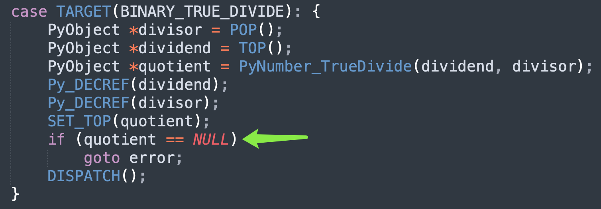
当 long_true_divide 返回 NULL 时，那么变量 quotient 拿到的就是 NULL，由于没有指向一个合法的 PyObject，虚拟机就意识到发生异常了，这时候会跳转到 error 标签。注意：这个 error 标签是帧评估函数里的 error 标签。

在里面会先取出线程状态对象中已有的 traceback 对象，然后以函数 h 的栈帧为参数，创建一个新的 traceback 对象，将两者通过 tb_next 关联起来。最后，再替换掉线程状态对象里面的 traceback 对象。
在虚拟机意识到有异常抛出，并创建了 traceback 之后，它会在当前栈帧中寻找 try except 语句，来执行开发人员指定的异常捕捉动作。如果没有找到，那么虚拟机将退出当前的活动栈帧，并沿着栈帧链回退到上一个栈帧（这里是函数 g 的栈帧），在上一个栈帧中寻找 try except 语句。
就像我们之前说的，函数调用会创建栈帧，当函数执行完毕或者出现异常时，会回退到上一级栈帧。一层一层创建、一层一层返回。至于回退的这个动作，则是在 _PyEval_EvalFrameDefault 的最后完成。

当出现异常时，虚拟机会进入 exception_unwind 标签寻找异常捕获逻辑，相关细节下一篇文章再说，这里就让它抛出去。然后来到 exit_returning 标签，将运行时栈清空。最后进入 exit_eval_frame 标签，将当前线程状态对象中的活跃栈帧设置为上一级栈帧，从而完成栈帧回退的动作。
当栈帧回退时，会进入函数 g 的栈帧，由于返回值为 NULL，所以知道自己调用的函数 h 的内部发生异常了（否则返回值一定会指向一个合法的 PyObject），那么继续寻找异常捕获语句。对于当前这个例子来说，显然是找不到的，于是会从线程状态对象中取出已有的 traceback 对象（函数 h 的栈帧对应的 traceback），然后以函数 g 的栈帧为参数，创建新的 traceback 对象，再将两者通过 tb_next 关联起来，并重新设置到线程状态对象中。
异常会沿着栈帧链进行反向传播，函数 h 出现的异常被传播到了函数 g 中，显然接下来函数 g 要将异常传播到函数 f 中。因为函数 g 在无法捕获异常时，那么返回值也是 NULL，而函数 f 看到返回值为 NULL 时，同样会去寻找异常捕获语句。但是找不到，于是会从线程状态对象中取出已有的 traceback 对象（此时是函数 g 的栈帧对应的 traceback），然后以函数 f 的栈帧为参数，创建新的 traceback 对象，再将两者通过 tb_next 关联起来，并重新设置到线程状态对象中。
最后再传播到模块对应的栈帧中，如果还无法捕获发生的异常，那么虚拟机就要将异常抛出来了。
这个沿着栈帧链不断回退的过程我们称之为栈帧展开，在栈帧展开的过程中，虚拟机不断地创建与各个栈帧对应的 traceback，并将其链接成链表。
由于没有异常捕获，那么接下来会调用 PyErr_Print。然后在 PyErr_Print 中，虚拟机取出维护的 traceback 链表，并进行遍历，将里面的信息逐个输出到 stderr 当中，最终就是我们在 Python 中看到的异常信息。
并且打印顺序是：.py文件、函数f、函数g、函数h。因为每一个栈帧对应一个 traceback，而栈帧又是往后退的，因此显然会从 .py文件对应的 traceback 开始打印，然后通过 tb_next 找到函数 f 对应的 traceback，依次下去。当异常信息全部输出完毕之后，解释器就结束运行了。
因此从链路的开始位置到结束位置，将整个调用过程都输出出来，可以很方便地定位问题出现在哪里。

另外，虽然 traceback 一直在更新（因为要对整个调用链路进行追踪），但是异常类型和异常值始终是不变的，就是函数 h 中抛出的 ZeroDivisionError: division by zero。
小结
以上就是虚拟机抛异常的过程，异常在 Python 里面也是一个对象，和其它的实例对象并无本质区别。
exc = StopIteration("迭代结束了")
print(exc.value) # 迭代结束了
print(exc.args) # ('迭代结束了',)
exc = IndexError("索引越界了")
print(exc.args) # ('索引越界了',)
exc = Exception("不知道是啥异常，总之出问题了")
print(exc.args) # ('不知道是啥异常，总之出问题了',)
# 异常都有一个 args 属性，以元组的形式保存传递的参数
所谓抛出异常，就是将错误信息输出到 stderr 中，然后停止进程。并且除了虚拟机内部会抛出异常之外，我们还可以使用 raise 关键字手动引发一个异常。
def judge_score(score: int):
if score > 100 or score < 0:
raise ValueError("Score must be between 0 and 100")
站在虚拟机的角度，score 取任何值都是合理的，但对于我们来说，希望 score 位于 0 ~ 100。那么当 score 不满足 0 ~ 100 时，就可以手动 raise 一个异常。
欢迎大家关注我的公众号：古明地觉的编程教室。
如果觉得文章对你有所帮助，也可以请作者吃个馒头，Thanks♪(･ω･)ﾉ。
楔子
上一篇文章我们介绍了 Python 的异常是怎么实现的，抛出异常这个动作在虚拟机层面上是怎样的一个行为，以及虚拟机在处理异常时的栈帧展开行为。
既然虚拟机内建的异常处理动作我们已经了解了，那么接下来就看看异常捕获是如何实现的，还有它又是如何影响虚拟机的异常处理流程的。毕竟在大部分情况下，我们都不会将异常抛出去，而是将它捕获起来。
异常捕获语句
这里先来回顾一下异常捕获语句，首先一个完整的异常捕获语句如下。
try:
pass
except IndexError as e:
pass
except Exception as e:
pass
else:
pass
finally:
pass
情况可以分为以下几种：
1）如果 try 里面的代码在执行时没有出现异常，那么会执行 else ，然后执行 finally。
try:
print("我是 try")
except Exception as e:
print("我是 except")
else:
print("我是 else")
finally:
print("我是 finally")
"""
我是 try
我是 else
我是 finally
"""
2）如果 try 里面的代码在执行时出现异常了（异常会被设置在线程状态对象中），那么会依次判断 except（可以有多个）能否匹配发生的异常。如果某个 except 将异常捕获了，那么会将异常给清空，然后执行 finally。
try:
raise IndexError("IndexError Occurred")
except ValueError as e:
print("ValueError 匹配上了异常")
except IndexError as e:
print("IndexError 匹配上了异常")
except Exception as e:
print("Exception 匹配上了异常")
else:
print("我是 else")
finally:
print("我是 finally")
"""
IndexError 匹配上了异常
我是 finally
"""
except 子句可以有很多个，发生异常时会从上往下依次匹配。但是注意：多个 except 子句最多只有一个被执行，比如当前的 IndexError 和 Exception 都能匹配发生的异常，但只会执行匹配上的第一个 except 子句。
另外只要发生异常了，else 就不会执行了。不管 except 有没有将异常捕获到，都不会执行 else，因为 else 只有在 try 里面没有发生异常的时候才会执行。
3）如果 try 里面的代码在执行时出现异常了，但 except 没有将异常捕获掉，那么异常仍然被保存在线程状态对象中，然后执行 finally。如果 finally 子句中没有出现 return、break、continue 等关键字，再将异常抛出来。
try:
raise IndexError("IndexError Occurred")
except ValueError:
print("ValueError 匹配上了异常")
finally:
print("我是 finally")
"""
我是 finally
Traceback (most recent call last):
File "......", line 2, in <module>
raise IndexError("IndexError Occurred")
IndexError: IndexError Occurred
"""
except 没有将异常捕获掉，所以执行完 finally 之后，异常又被抛出来了。但如果 finally 里面出现了 return、break、continue 等关键字，也不会抛出异常，而是将异常丢弃掉。
def f():
try:
raise IndexError("IndexError Occurred")
except ValueError:
print("ValueError 匹配上了异常")
finally:
print("我是 finally")
return
f()
"""
我是 finally
"""
def g():
for i in range(3):
try:
raise IndexError("IndexError Occurred")
except ValueError:
print("ValueError 匹配上了异常")
finally:
print(f"我是 finally，i = {i}")
continue
g()
"""
我是 finally，i = 0
我是 finally，i = 1
我是 finally，i = 2
"""
由于 finally 里面出现了 return 和 continue，所以异常并没有发生，而是被丢弃掉了。这个特性相信有很多小伙伴之前还是没有发现的。
然后 try、except、else、finally 这几个关键字不需要同时出现，可以有以下几种组合。
try ... except
try ... finally
try ... except ... else
try ... except ... else ... finally
注意里面的 except，可以出现多次，但其它关键字在一个 try 语句内只能出现一次。
返回值问题
如果这几个关键字对应的代码块都指定了返回值，那么听谁的呢？下面解释一下。
def retval():
try:
return 123
except Exception:
return 456
print(retval()) # 123
由于没有发生异常，所以返回了 try 指定的返回值。
def retval():
try:
return 123
except Exception:
return 456
else:
return 789
print(retval()) # 123
虽然指定了 else，但是 try 里面已经执行 return 了，所以打印的仍是 try 的返回值。
def retval():
try:
1 / 0
return 123
except Exception:
return 456
print(retval()) # 456
由于发生异常，所以返回了 except 指定的返回值。
def retval():
try:
1 / 0
return 123
except Exception:
return 456
else:
return 789
print(retval()) # 456
一旦发生异常，else 就不可能执行，所以此时仍然返回 456。
def retval():
try:
return 123
except Exception:
return 456
finally:
pass
print(retval()) # 123
finally 永远会执行，但它没有指定返回值，所以此时返回的是 123。
def retval():
try:
return 123
except Exception:
return 456
finally:
return
print(retval()) # None
一旦 finally 中出现了 return，那么返回的都是 finally 指定的返回值。并且此时即便出现了没有捕获的异常，也不会报错，因为会将异常丢弃掉。
def retval():
try:
return 123
except Exception:
return 456
finally:
pass
return 789
print(retval()) # 123
函数一旦 return，就表示要返回了，但如果这个 return 是位于出现了 finally 的异常捕获语句中，那么会先执行 finally，然后再返回。所以最后的 return 789 是不会执行的，因为已经出现 return 了，finally 执行完毕之后就直接返回了。
def retval():
try:
pass
except Exception:
return 456
finally:
pass
return 789
print(retval()) # 789
没有异常，所以 except 里的 return 不会执行，而 try 和 finally 里面也没有 return，因此返回 789。
一个简单的异常捕获，总结起来还稍微有点绕呢。
从 Python 的层面理解完异常捕获之后，再来看看虚拟机是如何实现这一机制的？想要搞清楚这一点，还是得从字节码入手。
异常捕获对应的字节码
随便写一段代码，然后反编译一下。
import dis
code_string = """
try:
raise Exception("抛出一个异常")
except Exception as e:
print(e)
finally:
print("我一定会被执行的")
"""
dis.dis(compile(code_string, "exception", "exec"))
抛异常有两种方式，一种是虚拟机执行的时候出现错误而抛出异常，另一种是使用 raise 关键字手动抛出异常。这里我们就用第二种方式，来看一下反编译的结果（为了清晰，省略掉了源代码行号）。
0 SETUP_FINALLY 60 (to 62)
2 SETUP_FINALLY 12 (to 16)
4 LOAD_NAME 1 (Exception)
6 LOAD_CONST 1 ('抛出一个异常')
8 CALL_FUNCTION 1
10 RAISE_VARARGS 1
12 POP_BLOCK
14 JUMP_FORWARD 42 (to 58)
>> 16 DUP_TOP
18 LOAD_NAME 1 (Exception)
20 COMPARE_OP 10 (exception match)
22 POP_JUMP_IF_FALSE 56
24 POP_TOP
26 STORE_NAME 2 (e)
28 POP_TOP
30 SETUP_FINALLY 12 (to 44)
32 LOAD_NAME 0 (print)
34 LOAD_NAME 2 (e)
36 CALL_FUNCTION 1
38 POP_TOP
40 POP_BLOCK
42 BEGIN_FINALLY
>> 44 LOAD_CONST 2 (None)
46 STORE_NAME 2 (e)
48 DELETE_NAME 2 (e)
50 END_FINALLY
52 POP_EXCEPT
54 JUMP_FORWARD 2 (to 58)
>> 56 END_FINALLY
>> 58 POP_BLOCK
60 BEGIN_FINALLY
>> 62 LOAD_NAME 0 (print)
64 LOAD_CONST 0 ('我一定会被执行的')
66 CALL_FUNCTION 1
68 POP_TOP
70 END_FINALLY
72 LOAD_CONST 2 (None)
74 RETURN_VALUE
指令集还是有点复杂的，因为要分好几种情况。
- try 里面没有出现异常。
- try 里面出现了异常，但是 except 没有捕获到。
- try 里面出现了异常，except 捕获到了。
但我们知道无论是哪种情况，都要执行 finally，所以开头有两个 SETUP_FINALLY 指令，但为什么会有两个呢？因为在 Python 的异常处理机制中，try-except-finally 结构会被编译成两个嵌套的异常处理块：
- 第一个 SETUP_FINALLY 是为了处理 finally 块，会把 finally 块的地址压入栈中，它确保无论 try 块中是否发生异常，finally 块中的代码都会被执行；
- 第二个 SETUP_FINALLY 实际上是在处理 except 块，在 Python 的字节码层面，except 块也是通过 SETUP_FINALLY 实现的；
我们来看一下 SETUP_FINALLY 指令都干了什么。
case TARGET(SETUP_FINALLY): {
PyFrame_BlockSetup(f, SETUP_FINALLY, INSTR_OFFSET() + oparg,
STACK_LEVEL());
DISPATCH();
}
该指令内部仅仅是调用了 PyFrame_BlockSetup 函数，但是参数我们需要解释一下。
- f：当前的栈帧对象。
- SETUP_FINALLY：指令本身，一个整数，值为 122。
- INSTR_OFFSET()：一个宏，下一条待执行指令的偏移量，如果再加上 oparg，那么会对应 finally 子句（或 except 子句）。
- STACK_LEVEL()：返回运行时栈的元素个数。
下面看看 PyFrame_BlockSetup 函数的本体。
// Objects/frameobject.c
void
PyFrame_BlockSetup(PyFrameObject *f, int type, int handler, int level)
{
// 关于 PyTryBlock 我们稍后再聊，总之 except 和 finally 都会对应 SETUP_FINALLY 指令
// 虚拟机都会为它们创建 PyTryBlock
PyTryBlock *b;
// 一会儿解释
if (f->f_iblock >= CO_MAXBLOCKS)
Py_FatalError("XXX block stack overflow");
// 栈帧有一个 f_blockstack 字段，它是 PyTryBlock 类型的数组
// 当栈帧创建完毕后，f_blockstack 的内存就已经申请好了
// 因此当需要创建 PyTryBlock 实例时，只需从 f_blockstack 里面获取即可
b = &f->f_blockstack[f->f_iblock++];
// 设置 PyTryBlock 实例的字段，这个结构体一会儿说
b->b_type = type;
b->b_level = level;
b->b_handler = handler;
}
当解释器发现 except 和 finally 时，在进入 try 语句块之前会先执行 SETUP_FINALLY 指令，通过索引 f_iblock 从 f_blockstack 数组中获取 PyTryBlock。
- 每获取一个 PyTryBlock，f_iblock 会自增 1；
- 当 except 或 finally 执行完毕时，要交还对应的 PyTryBlock，所以 f_iblock 会自减 1。
然后注意一下上面代码中的 if 条件，CO_MAXBLOCKS 是一个宏，值为 20，所以 f_iblock 的值必须小于 20。这也意味着，try 语句不能嵌套太深。我们举例说明：

每个 try 都对应一个 except，因为屏幕不够，这里只截取了一半。每次进入 try 之前，会提前执行 SETUP_FINALLY，获取 PyTryBlock。由于每获取一个，f_iblock 自增 1，而这里嵌套了 20 层，导致 f_iblock 达到了 20，所以报错了，这是一个在编译阶段就能检测出的错误。
如果我们去掉一层呢？看看报不报错。
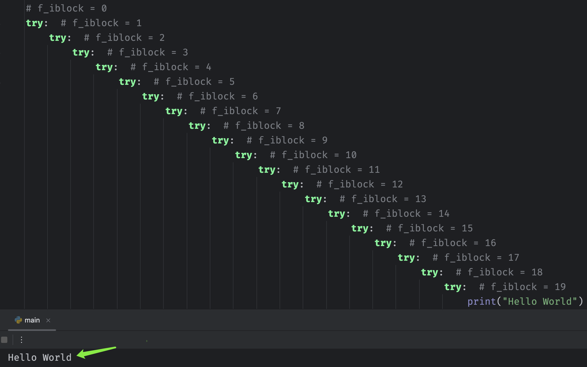
结果没有问题，当然啦，如果不是恶意代码，我个人认为不会存在嵌套层级如此之深的异常捕获。
然后再来看看里面的 f_iblock，它表示对应的 PyTryBlock 在 f_blockstack 数组中的索引。栈帧刚创建时，f_iblock 的值为 0，每当执行 SETUP_FINALLY 指令时，就会从 f_blockstack 数组中获取一个 PyTryBlock，然后 f_iblock 自增 1。那么 PyTryBlock 长什么样子呢？
// Include/frameobject.h
typedef struct {
int b_type;
int b_handler;
int b_level;
} PyTryBlock;
b_type 表示 block 的种类，因为存在多种用途的 PyTryBlock 对象，除了 SETUP_FINALLY 之外还有 SETUP_WITH 等。然后在 PyFrame_BlockSetup 中我们看到它被设置成了参数 type，而参数 type 接收的就是当前虚拟机正在执行的字节码指令。因此 PyTryBlock 具有多种用途，具体用于哪种则基于字节码指令进行判断。
b_handler 表示处理程序的字节码偏移量，即跳转目标，比如当前的 try 语句块，当 try 执行完了或者执行出错后，要跳转到什么位置呢？在 SETUP_FINALLY 指令中我们看到它被设置成了 INSTR_OFFSET() + oparg，所以它会跳转到 finally 或 except 所在的位置。
b_level 表示进入 try 语句块时的 STACK_LEVEL()，即运行时栈的深度，或者说当前运行时栈的元素个数，因为当发生异常时，要把运行时栈恢复到进入 try 语句块时的状态。
# 假设此时运行时栈的深度是 n
try: # SETUP_FINALLY 执行时 b_level = n
... # 执行内部逻辑
raise Exception("error") # 在这里不幸发生异常，那么要将栈恢复到 b_level 记录的深度 n
except Exception:
pass
所以 b_level 相当于一个检查点，通过 b_level，可以在发生异常时将运行时栈恢复到进入 try 时的状态。这种检查点机制确保了异常处理的可靠性，因为无论 try 块中发生什么，我们总能回到一个已知的、正确的栈状态。
然后我们再回头看开头的两个指令：
0 SETUP_FINALLY 60 (to 62)
2 SETUP_FINALLY 12 (to 16)
执行之后，f_blockstack 数组的布局如下：

取出两块 PyTryBlock，第一块对应 finally，会无条件执行，第二块对应 except，异常捕获的时候用。至于具体怎么做的稍后再说，我们先回到抛异常的地方看看。
// 加载 <class 'Exception'>
4 LOAD_NAME 1 (Exception)
// 加载字符串
6 LOAD_CONST 1 ('抛出一个异常')
// 尽管 Exception 是一个类，但调用的指令也同样是 CALL_FUNCTION
// 至于这个指令的具体细节后面会介绍
// 这里只需要知道一个异常对象已经被创建出来了，并被压入了运行时栈
8 CALL_FUNCTION 1
// 从运行时栈中弹出异常对象，然后抛出
10 RAISE_VARARGS 1
下面我们来看一下 RAISE_VARARGS 指令。
case TARGET(RAISE_VARARGS): {
PyObject *cause = NULL, *exc = NULL;
// raise 一个异常有三种方式
// 1）重新抛出当前异常，只写一个 raise 即可，此时 oparg = 0
// 2）抛出指定异常：raise exc，此时 oparg = 1
// 3）抛出指定异常并指定原因：raise exc from cause，此时 oparg = 2
// 所以当前的 oparg = 1
switch (oparg) {
case 2:
cause = POP(); /* cause */
/* fall through */
case 1:
exc = POP(); /* exc */
/* fall through */
case 0:
// 调用 do_raise 函数，将异常设置在线程状态对象中
if (do_raise(tstate, exc, cause)) {
goto exception_unwind;
}
break;
default:
_PyErr_SetString(tstate, PyExc_SystemError,
"bad RAISE_VARARGS oparg");
break;
}
goto error;
}
当异常设置完毕后，我们看到它跳转到了帧评估函数的 exception_unwind 标签，执行异常捕获。
exception_unwind:
// 虚拟机在进入 try 代码块之前，会为 except 和 finally 块创建 PyTryBlock
// 对于当前来说，由于同时指定了 except 和 finally，因此会存在两个 PyTryBlock
// 所以 f->f_iblock 的值为 2
while (f->f_iblock > 0) {
// 弹出 PyTryBlock，因为 except 在后面，所以要从后往前获取
PyTryBlock *b = &f->f_blockstack[--f->f_iblock];
// EXCEPT_HANDLER 定义在 opcode.h 中，值为 257，用于异常处理
// 但比较特殊的是，它不是一个指令，至于相关细节后续会看到
if (b->b_type == EXCEPT_HANDLER) { // 如果两者相等的话
// 这是一个宏，所做的事情如下
// 从线程状态对象中拿到 exc_info，这个和 python 里的 sys.exc_info() 等价
// 然后从栈顶弹出 exc_type、exc_value、exc_traceback，并设置在 exc_info 中
UNWIND_EXCEPT_HANDLER(b);
continue;
}
// UNWIND_BLOCK 是一个宏，所做的事情如下
/*
// 如果当前栈深度大于进入 try 块时记录的深度
// 不断从栈顶弹出对象，并减少引用计数
#define UNWIND_BLOCK(b) \
while (STACK_LEVEL() > (b)->b_level) { \
PyObject *v = POP(); \
Py_XDECREF(v); \
}
*/
// 这个 b_level 我们上面说过的，它保存了进入 try 块时的运行时栈的深度
// 因此这个宏就是用来倒掉多余的栈内容，把栈恢复到之前保存的检查点状态
UNWIND_BLOCK(b);
// 对于当前的代码而言，第一次弹出的 PyTryBlock 用于 except
// 它的 b_type = SETUP_FINALLY，b_handler = 16
if (b->b_type == SETUP_FINALLY) {
// 异常类型、异常值、回溯栈
PyObject *exc, *val, *tb;
// 拿到 b_handler，一会要跳转的目标位置，也就是 except 所在位置
int handler = b->b_handler;
// 从线程状态对象中拿到 exc_info，这个 exc_info 保存的还是旧异常的 exc_info
// 然后 exc_info 有三个字段，假设抛出的异常是 ValueError("值错了")
// exc_info->exc_type 就是 <class 'ValueError'>
// exc_info->exc_value 就是抛出的异常对象本身
// exc_info->exc_traceback 就是回溯栈
// exc_info->previous_item 指向上一个 _PyErr_StackItem 实例
_PyErr_StackItem *exc_info = tstate->exc_info;
// 将当前 PyTryBlock 的 b_type 设置为 EXCEPT_HANDLER
PyFrame_BlockSetup(f, EXCEPT_HANDLER, -1, STACK_LEVEL());
// 将旧异常的 exc_type、exc_value、exc_traceback 压入运行时栈
PUSH(exc_info->exc_traceback);
PUSH(exc_info->exc_value);
if (exc_info->exc_type != NULL) {
PUSH(exc_info->exc_type);
}
else {
Py_INCREF(Py_None);
PUSH(Py_None);
}
// 在 RAISE_VARARGS 指令中调用了 do_raise，设置了新异常
// 这里是拿到新异常的 exc_type、exc_value、exc_traceback
_PyErr_Fetch(tstate, &exc, &val, &tb);
// 对异常规范化处理，不用关注
_PyErr_NormalizeException(tstate, &exc, &val, &tb);
if (tb != NULL)
PyException_SetTraceback(val, tb);
else
PyException_SetTraceback(val, Py_None);
// 用新异常的 exc_type、exc_value、exc_traceback 更新 exc_info
Py_INCREF(exc);
exc_info->exc_type = exc;
Py_INCREF(val);
exc_info->exc_value = val;
exc_info->exc_traceback = tb;
if (tb == NULL)
tb = Py_None;
Py_INCREF(tb);
// 将新异常的 exc_type、exc_value、exc_traceback 也压入运行时栈
PUSH(tb);
PUSH(val);
PUSH(exc);
// 绝对跳转，跳转到偏移量为 handler 的指令
JUMPTO(handler);
/* Resume normal execution */
goto main_loop;
}
} /* unwind stack */
/* End the loop as we still have an error */
break;
} /* main loop */
assert(retval == NULL);
assert(_PyErr_Occurred(tstate));
我们看到虚拟机调用 PUSH 将旧异常和新异常的 exc_traceback、exc_value、exc_type 分别压入运行时栈中，并且知道此时开发者已经为异常处理做好了准备，所以接下来的异常处理工作，则需要交给开发者指定的代码来解决。于是内部调用了 JUMPTO(b->b_handler)，将虚拟机要执行的下一条指令设置为异常处理代码编译后所得到的第一条字节码指令。
因为第一个弹出的 PyTryBlock 的 b_handler 为 16，那么虚拟机将要执行的下一条指令就是偏移量为 16 的指令，而这条指令就是 DUP_TOP。
// 在上面的 exception_unwind 标签中调用了 6 个 PUSH
// 按照从栈顶到栈底顺序，目前运行时栈的元素如下
/* 新异常的 exc_type
* 新异常的 exc_value
* 新异常的 exc_traceback
* 旧异常的 exc_type
* 旧异常的 exc_value
* 旧异常的 exc_traceback
*/
// DUP_TOP 指令之前介绍过，它会将栈顶元素拷贝一份，然后重新压入运行时栈
// 显然这里就是新异常的 exc_type，即 <class 'Exception'>
>> 16 DUP_TOP
// 因为是 except Excepion as e，所以将 <class 'Exception'> 压入运行时栈
18 LOAD_NAME 1 (Exception)
// 将前两个元素从运行时栈中弹出，分别是 except 后面指定的异常类型、新异常的 exc_type
// 然后比较产生的异常的类型是否是 except 指定的异常类型的子类
20 COMPARE_OP 10 (exception match)
// 因为 raise 了一个 Exception 对象，所以 exc_type 就是 Exception
// 而 except 子句后面指定的也是 Exception，所以是匹配的
// 如果不匹配，那么跳转到偏移量为 56 的指令，去执行 finally
22 POP_JUMP_IF_FALSE 56
// 这个指令内部负责弹出栈顶元素，减少引用计数，直接丢弃
// 目前栈里面有 6 个元素，栈顶元素是新异常的 exc_type
// 所以 POP_TOP 之后，栈顶元素就变成了新异常的 exc_value
24 POP_TOP
// 弹出栈顶的 exc_value，赋值给变量 e，到此 except Exception as e 完成
// 我们看到这个过程其实也是一个变量赋值，字节码为 STORE_NAME
26 STORE_NAME 2 (e)
// 继续弹出栈顶元素，此时是新异常的 exc_traceback
28 POP_TOP
// 这里为啥又出现一个 SETUP_FINALLY 指令？很简单
/*
try:
pass
except Exception as e:
pass
上面这段代码，在内部会变成下面这样
try:
pass
except Exception as e:
try:
pass
finally:
del e
*/
// 所以这里会多出一个 SETUP_FINALLY，因为内部又嵌套了一个 try ... finally
// 至于这么做的原因，我们稍后解释
30 SETUP_FINALLY 12 (to 44)
// 以下四条指令对应 except 子句内的 print(e)
32 LOAD_NAME 0 (print)
34 LOAD_NAME 2 (e)
36 CALL_FUNCTION 1
38 POP_TOP
// except 子句里的代码执行完毕，调用 POP_BLOCK
// 该指令内部会交还 PyTryBlock，然后 f_iblock--
// 注意：这一步交还的 PyTryBlock，是 except 内部的 finally 对应的 PyTryBlock
40 POP_BLOCK
// BEGIN_FINALLY 会往栈顶 PUSH 一个 NULL 进去，标识 finally 的开始
// 注意：这个 finally 是 except 子句内部的 finally，是解释器自动生成的
42 BEGIN_FINALLY
// 将 e 赋值为 None，然后将 e 删除掉
>> 44 LOAD_CONST 2 (None)
46 STORE_NAME 2 (e)
48 DELETE_NAME 2 (e)
50 END_FINALLY
// 到此整个 except 执行完毕，然后执行 POP_EXCEPT，交还对应的 PyTryBlock
// 然后在该指令内部还会恢复之前保存的异常状态，我们上面看到，解释器往运行时栈里面推了 6 个元素
// 前 3 个已经被弹出了，还剩下旧异常的 exc_type、exc_value、exc_traceback
// 那么将它们继续弹出，赋值给 exc_info 里面的字段，相当于恢复成之前的异常状态
52 POP_EXCEPT
// 跳转到第 58 条指令
54 JUMP_FORWARD 2 (to 58)
上面的内容有点多，我们再单独解释一下，首先在 exception_unwind 标签内部获取 tstate->exc_info 的三个字段，它们是旧异常的 exc_type、exc_value、exc_traceback，然后压入运行时栈。再通过 _PyErr_Fetch 获取 tstate 里面的新异常的 exc_type、exc_value、exc_traceback，用它们更新 tstate->exc_info，然后再压入运行时栈。
所以此时运行时栈里面有 6 个元素。

然后使用 JUMPTO 跳转到偏移量为 b->b_handler 的指令，对于当前来说就是 except 子句对应的指令，然后执行。
- 通过 DUP_TOP 将栈顶元素拷贝一份并入栈。
- 通过 LOAD_NAME 将 except 子句指定的异常类型入栈。
- 通过 COMPARE_OP 将栈顶的两个元素弹出，进行比较，将比较结果入栈。
- 再通过 POP_JUMP_IF_FALSE 将比较结果弹出，进行判断，由于新异常的 exc_type 和 except 子句指定的异常类型都是 Exception，所以结果为 True。
我们画张图，展示一下运行时栈的变化过程。

然后是 30 SETUP_FINALLY，至于为什么会多出这条指令，原因我们也解释了。
e = 2.71
try:
raise Exception("Some Error")
except Exception as e:
# 一些逻辑
...
print(e)
"""
NameError: name 'e' is not defined
"""
# 打印 print(e) 的时候居然 NameError 了
# 因为上面的代码会被转成下面这个样子
try:
raise Exception("Some Error")
except Exception as e:
try:
# 一些逻辑
...
finally:
del e
所以又产生了一个 SETUP_FINALLY 指令，至于解释器这么做的动机我们稍后解释。
然后偏移量为 32、34、36、38 的指令就无需解释了，这几条指令执行完毕后，except 语句块里的代码就执行完了。然后执行 40 POP_BLOCK，它会交还当前 except 内部的 finally 语句块对应的 PyTryBlock，然后将 f_iblock 自减 1。
case TARGET(POP_BLOCK): {
PREDICTED(POP_BLOCK);
PyFrame_BlockPop(f);
DISPATCH();
}
// Objects/frameobject.c
PyTryBlock *
PyFrame_BlockPop(PyFrameObject *f)
{
PyTryBlock *b;
if (f->f_iblock <= 0)
Py_FatalError("XXX block stack underflow");
b = &f->f_blockstack[--f->f_iblock];
return b;
}
接着将变量 e 赋值为 None，然后删除变量 e，完事之后再执行 52 POP_EXCEPT。
case TARGET(POP_EXCEPT): {
PyObject *type, *value, *traceback;
_PyErr_StackItem *exc_info;
// 同样调用 PyFrame_BlockPop，拿到 except 对应的 PyTryBlock
PyTryBlock *b = PyFrame_BlockPop(f);
// 在 exception_unwind 标签中，将 b_type 设置成了 EXCEPT_HANDLER
// 所以这里一定等于 EXCEPT_HANDLER，否则不应该执行 POP_EXCEPT 指令
if (b->b_type != EXCEPT_HANDLER) {
_PyErr_SetString(tstate, PyExc_SystemError,
"popped block is not an except handler");
goto error;
}
assert(STACK_LEVEL() >= (b)->b_level + 3 &&
STACK_LEVEL() <= (b)->b_level + 4);
// 此时 exc_info 里面保存的是新异常的 exc_info、exc_type、exc_value
// 但是新异常被捕获了
exc_info = tstate->exc_info;
type = exc_info->exc_type;
value = exc_info->exc_value;
traceback = exc_info->exc_traceback;
// 那么应该将 exc_info 的字段改成之前的旧异常的 exc_info、exc_type、exc_value
exc_info->exc_type = POP();
exc_info->exc_value = POP();
exc_info->exc_traceback = POP();
// 减少引用计数
Py_XDECREF(type);
Py_XDECREF(value);
Py_XDECREF(traceback);
DISPATCH();
}
到此整个 except 语句块我们就分析完了，接下来是 finally 语句块。
// 交还 finally 语句块对应的 PyTryBlock，将 f_iblock 自减 1
>> 58 POP_BLOCK
// finally 语句块的开始
60 BEGIN_FINALLY
// 内部的代码逻辑
>> 62 LOAD_NAME 0 (print)
64 LOAD_CONST 0 ('我一定会被执行的')
66 CALL_FUNCTION 1
68 POP_TOP
// 如果异常未被捕获掉，那么向上传播，让外层的异常处理程序去处理它
70 END_FINALLY
72 LOAD_CONST 2 (None)
74 RETURN_VALUE
因此在异常机制的实现中，最重要的就是线程状态以及栈帧对象的 f_blockstack 字段里面存放的 PyTryBlock 对象。首先根据线程状态可以判断当前是否发生了异常，而 PyTryBlock 对象则告诉虚拟机，开发者是否为异常设置了 except 和 finally，虚拟机异常处理的流程就是在线程所处的状态和 PyTryBlock 的共同作用下完成的。
当然啦，我们这里分析的是异常能捕获的情况，如果不能捕获呢？具体细节可以自己写段代码测试一下，这里我们直接画张图总结一下。

另外这张图只适用于一个 except 子句的情况，如果有多个 except 子句，那么当第一个不匹配时，应该要顺序匹配下一个。
总之 Python 中一旦出现异常了，那么会将异常类型、异常值、异常回溯栈设置在线程状态对象中，然后栈帧一步一步地回退，寻找异常捕获代码（从内向外）。如果退到了模块级别还没有发现异常捕获，那么从外向内打印 traceback 中的信息，当走到最内层的时候再将线程中设置的异常类型和异常值打印出来。
def h():
1 / 0
def g():
h()
def f():
g()
f()
# traceback 回溯栈
Traceback (most recent call last):
# 打印模块的 traceback
# 并提示：发生错误是因为在第 10 行调用了 f()
File "/Users/.../main.py", line 10, in <module>
f()
# 打印函数 f 的 traceback
# 并提示：发生错误是因为在第 8 行调用了 g()
File "/Users/.../main.py", line 8, in f
g()
# 打印函数 g 的 traceback
# 并提示：发生错误是因为在第 5 行调用了 h()
File "/Users/.../main.py", line 5, in g
h()
# 打印函数 h 的 traceback
# 并提示：发生错误是因为在第 2 行执行了 1 / 0
File "/Users/.../main.py", line 2, in h
1 / 0
# 函数 h 的 traceback->tb_next 为 None，证明错误是发生在函数 h 中
# 而在模块中调用函数 f 相当于导火索，然后一层一层输出，最终定位到函数 h
# 最后再将之前设置在线程状态对象中的异常类型和异常值打印出来即可
ZeroDivisionError: division by zero
模块中调用了函数 f，函数 f 调用了函数 g，函数 g 调用了函数 h。然后在函数 h 中执行出错了，但又没有异常捕获，那么会将执行权交给函数 g 对应的栈帧，但是函数 g 也没有异常捕获，那么再将执行权交给函数 f 对应的栈帧。所以调用的时候，栈帧一层层创建，当执行完毕或者出现异常时，栈帧再一层层回退。

因此栈帧的遍历顺序是从函数 h 到模块，traceback 的遍历顺序是从模块到函数 h。
为什么要执行 del
前面说了，在 except 语句块内，如果将异常赋给了某个变量，那么 except 结束时会将变量删掉。
e = 2.71
def get_e():
return e
try:
raise Exception("我要引发异常了")
except Exception as e:
# 因为 except Exception as e 位于全局作用域
# 所以执行完之后，全局变量 e 就被修改了
print(get_e()) # 我要引发异常了
# 但是在最后还会隐式地执行 del e，那为什么要这么做呢？
# 因为 except 子句结束后，变量 e 指向的异常对象就没用了
# 而如果不 del e 的话，那么异常对象不会被销毁
# 此外还有一个原因，通过 __traceback__ 可以拿到当前的回溯栈，即 traceback 对象
print(e.__traceback__) # <traceback object at 0x104a98b80>
# 而 traceback 对象保存了当前的栈帧，然后栈帧又保存了包含变量 e 的名字空间
print(e.__traceback__.tb_frame.f_locals["e"] is e) # True
# 相信你能猜到这会带来什么后果，没错，就是循环引用
# 因此在 except 结束时会隐式地 del e
# 显然当 except 结束后，全局变量 e 就无法访问了
print(e)
"""
NameError: name 'e' is not defined
"""
所以在附加了回溯信息的情况下，它们会形成堆栈帧的循环引用，在下一次垃圾回收执行之前，会使所有变量都保持存活。
小结
本篇文章我们就分析了异常捕获的实现原理，总的来说并不难。另外在更高的版本中，所有的信息会静态保存在一张异常跳转表中，速度会更快。当然啦，在没有报错时，异常捕获对程序性能没有任何影响，所以放心使用。
欢迎大家关注我的公众号：古明地觉的编程教室。
如果觉得文章对你有所帮助，也可以请作者吃个馒头，Thanks♪(･ω･)ﾉ。
楔子
函数是任何一门编程语言都具备的基本元素，它可以将多个动作组合起来，一个函数代表了一系列的动作。而且在调用函数时会干什么来着，没错，要创建栈帧，用于函数的执行。
那么下面就来看看函数在 C 中是如何实现的，生得一副什么模样。
PyFunctionObject
Python 一切皆对象，函数也不例外，函数这种抽象机制在底层是通过 PyFunctionObject 结构体实现的。
// Include/funcobject.h
typedef struct {
PyObject_HEAD
PyObject *func_code;
PyObject *func_globals;
PyObject *func_defaults;
PyObject *func_kwdefaults;
PyObject *func_closure;
PyObject *func_doc;
PyObject *func_name;
PyObject *func_dict;
PyObject *func_weakreflist;
PyObject *func_module;
PyObject *func_annotations;
PyObject *func_qualname;
vectorcallfunc vectorcall;
} PyFunctionObject;
我们来解释一下这些字段，并实际获取一下，看看它们在 Python 中是如何表现的。
func_code：函数对应的 PyCodeObject 对象
def foo(a, b, c):
pass
code = foo.__code__
print(code) # <code object foo at ......>
print(code.co_varnames) # ('a', 'b', 'c')
函数便是基于 PyCodeObject 构建的。
func_globals：global 名字空间
def foo(a, b, c):
pass
name = "古明地觉"
print(foo.__globals__) # {..., 'name': '古明地觉'}
# 拿到的其实就是外部的 global 名字空间
print(foo.__globals__ is globals()) # True
函数内部之所以可以访问全局变量，就是因为它保存了全局名字空间。
func_defaults：函数参数的默认值
def foo(name="古明地觉", age=16):
pass
# 打印的是默认值
print(foo.__defaults__) # ('古明地觉', 16)
def bar():
pass
# 没有默认值的话，__defaults__ 为 None
print(bar.__defaults__) # None
注：默认值只会创建一次，所以默认值不应该是可变对象。
func_kwdefaults：只能通过关键字参数传递的 "参数" 和 "该参数的默认值" 组成的字典
def foo(name="古明地觉", age=16):
pass
# 打印为 None，这是因为虽然有默认值
# 但并不要求必须通过关键字参数的方式传递
print(foo.__kwdefaults__) # None
def bar(name="古明地觉", *, age=16):
pass
print(bar.__kwdefaults__) # {'age': 16}
加上一个 * 表示后面的参数必须通过关键字的方式传递。
func_closure：一个元组，包含了内层函数使用的外层作用域的变量，即 cell 变量。
def foo():
name = "古明地觉"
age = 17
def bar():
print(name, age)
return bar
# 内层函数 bar 使用了外层作用域中的 name、age 变量
print(foo().__closure__)
"""
(<cell at 0x7f3f4398ac70: int object at 0x7f3f442413c0>,
<cell at 0x7f3f439e38b0: str object at 0x7f3f43b0ded0>)
"""
print(foo().__closure__[0].cell_contents) # 17
print(foo().__closure__[1].cell_contents) # 古明地觉
注意：查看闭包属性使用的是内层函数。
func_doc：函数的 docstring
def foo():
"""
hi，欢迎来到我的小屋
遇见你真好
"""
pass
print(foo.__doc__)
"""
hi，欢迎来到我的小屋
遇见你真好
"""
当我们在写 Python 扩展的时候，由于编译之后是一个 pyd，那么就会通过 docstring 来描述函数的相关信息。
func_name：函数的名字
def foo(name, age):
pass
print(foo.__name__) # foo
当然不光是函数，还有方法、类、模块等都有自己的名字。
import numpy as np
print(np.__name__) # numpy
print(np.ndarray.__name__) # ndarray
print(np.array([1, 2, 3]).transpose.__name__) # transpose
除了 func_name 之外，函数还有一个 func_qualname 字段，表示全限定名。
print(str.join.__name__) # join
print(str.join.__qualname__) # str.join
函数如果定义在类里面，那么它就叫类的成员函数，当然它本质上依旧是个函数，和普通函数并无区别。只是在获取全限定名的时候，会带上类名。
func_dict：函数的属性字典
def foo(name, age):
pass
print(foo.__dict__) # {}
函数在底层也是由一个类实例化得到的，所以它也可以有自己的属性字典，只不过这个字典一般为空。
func_weakreflist：弱引用列表
这里不做讨论。
func_module：函数所在的模块
import numpy as np
print(np.array.__module__) # numpy
除了函数之外，类、方法、协程也有 __module__ 属性。
func_annotations：函数的类型注解
def foo(name: str, age: int):
pass
# Python3.5 新增的语法，但只能用于函数参数
# 而在 3.6 的时候，声明变量也可以使用这种方式
# 特别是当 IDE 无法得知返回值类型时，便可通过类型注解的方式告知 IDE
# 这样就又能使用 IDE 的智能提示了
print(
foo.__annotations__
) # {'name': <class 'str'>, 'age': <class 'int'>}
像 FastAPI、Pydantic 等框架，都大量应用了类型注解。
vectorcall：矢量调用协议
函数本质上也是一个实例对象，在调用时会执行类型对象的 tp_call，对应 Python 里的 __call__。但 tp_call 属于通用逻辑，而通用往往也意味着平庸，tp_call 在执行时需要创建临时元组和临时字典来存储位置参数、关键字参数，这些临时对象增加了内存分配和垃圾回收的开销。
如果只是一般的实例对象倒也没什么，但函数不同，它作为实例对象注定是要被调用的。所以底层对它进行了优化，引入了速度更快的 vectorcall，即矢量调用。而一个实例对象如果支持矢量调用，那么它也必须支持普通调用，并且两者的结果是一致的，如果对象不支持矢量调用，那么会退化成普通调用。
小结
以上就是函数的底层结构，在 Python 里面是由 <class 'function'> 实例化得到的。
def foo(name, age):
pass
# <class 'function'> 就是 C 里面的 PyFunction_Type
print(foo.__class__) # <class 'function'>
但这个类底层没有暴露给我们，所以不能直接用，因为函数通过 def 创建即可，不需要通过类型对象来创建。
后续会介绍更多关于函数相关的知识。
欢迎大家关注我的公众号：古明地觉的编程教室。
如果觉得文章对你有所帮助，也可以请作者吃个馒头，Thanks♪(･ω･)ﾉ。
楔子
前面我们介绍了函数的基本结构，它在底层由 PyFunctionObject 结构体表示，那么本篇文章来看看函数的创建过程。
函数是何时创建的
介绍函数结构时，我们看到内部有一个 func_code 字段，指向一个 PyCodeObject 对象，而函数就是根据 PyCodeObject 对象创建的。
因为一个 PyCodeObject 是对一段代码的静态表示，Python 编译器将源代码编译之后，针对里面的每一个代码块（code block）都会生成相应的 PyCodeObject 对象，该对象包含了这个代码块的一些静态信息，也就是可以从源代码中看到的信息。
比如某个函数对应的代码块里面有一个 a = 1 这样的表达式，那么符号 a 和整数 1、以及它们之间的联系就是静态信息。这些信息会被静态存储起来，符号 a 被存在符号表 co_varnames 中，整数 1 被存在常量池 co_consts 中。然后 a = 1 是一条赋值语句，因此会有两条指令 LOAD_CONST 和 STORE_FAST 存在字节码指令序列 co_code 中。
这些信息是在编译的时候就可以得到的，因此 PyCodeObject 对象是编译之后的结果。
但 PyFunctionObject 对象是何时产生的呢？显然它是 Python 代码在运行时动态产生的，更准确的说，是在执行一个 def 语句的时候创建的。当虚拟机发现了 def 语句，那么就代表发现了新的 PyCodeObject 对象，因为它们是可以层层嵌套的。
然后虚拟机会根据这个 PyCodeObject 对象创建对应的 PyFunctionObject 对象，并将变量名和 PyFunctionObject 对象（函数体）组成键值对放在当前的 local 空间中。而在 PyFunctionObject 对象中，也需要拿到相关的静态信息，因此会有一个 func_code 字段指向 PyCodeObject。
除此之外，PyFunctionObject 对象还包含了一些函数在执行时所必需的动态信息，即上下文信息。比如 func_globals，就是函数在执行时关联的 global 名字空间，如果没有这个空间的话，函数就无法访问全局变量了。
由于 global 作用域中的符号和值必须在运行时才能确定，所以这部分必须在运行时动态创建，无法静态存储在 PyCodeObject 中。因此要基于 PyCodeObject 对象和 global 名字空间来创建 PyFunctionObject 对象，相当于一个封装。总之一切的目的，都是为了更好地执行字节码。
我们举个例子：
# 首先虚拟机从上到下执行字节码
name = "古明地觉"
age = 17
# 啪，很快啊，出现了一个 def
def foo():
pass
# 出现了 def，虚拟机就知道源代码进入了一个新的作用域了
# 也就是遇到一个新的 PyCodeObject 对象了
# 而通过 def 关键字知道这是一个函数，于是会进行封装
# 将 PyCodeObject 封装成 PyFunctionObject，同时包含了全局名字空间
# 所以当执行完 def 语句之后，一个函数就被创建了
# 然后将变量名 foo 和函数体（PyFunctionObject）组成键值对存放在当前的 local 空间中
# 当然对于模块而言，local 空间也是 global 空间
print({k: v for k, v in locals().items() if k == "foo"})
"""
{'foo': <function foo at 0x7f3f43b135e0>}
"""
# 函数内部也保存了 global 空间
print(foo.__globals__ is globals() is locals())
"""
True
"""
print(foo.__globals__["foo"] is foo is locals()["foo"])
"""
True
"""
调用的时候，会从 local 空间中取出符号 foo 对应的 PyFunctionObject 对象（函数对象）。然后根据函数对象创建栈帧对象，也就是为函数创建一个栈帧，随后将执行权交给新创建的栈帧，并在新创建的栈帧中执行字节码。
函数是怎么创建的
经过分析我们知道，当执行到 def 语句时会创建函数，并保存在 local 空间中。而通过函数名() 进行调用时，会从 local 空间取出和函数名绑定的函数对象，然后执行。
那么问题来了，函数（对象）是怎么创建的呢？或者说虚拟机是如何完成 PyCodeObject 对象到 PyFunctionObject 对象之间的转变呢？显然想了解这其中的奥秘，就必须从字节码入手。
import dis
code_string = """
name = "satori"
def foo(a, b):
print(a, b)
foo(1, 2)
"""
dis.dis(compile(code_string, "<func>", "exec"))
源代码很简单，定义一个变量 name 和一个函数 foo，然后调用函数。显然这里面会产生两个 PyCodeObject，我们来看一下。
// name = "satori"
0 LOAD_CONST 0 ('satori')
2 STORE_NAME 0 (name)
// 我们看到 PyCodeObject 也会作为常量被静态收集
// 这里是将常量池中索引为 1 的 PyCodeObject 压入运行时栈
4 LOAD_CONST 1 (<code object foo at 0x7f3f43b12c90...>)
// 加载字符串常量 "foo"，也就是函数名
6 LOAD_CONST 2 ('foo')
// 从栈中弹出函数名和 PyCodeObject，构建函数对象
// 然后将函数对象（的指针）再压入运行时栈
8 MAKE_FUNCTION 0
// 从栈中弹出函数对象，并用符号 foo 绑定起来，到此函数就创建完毕了
10 STORE_NAME 1 (foo)
// 以下是 foo(1, 2) 对应的字节码
// 加载全局变量 foo 并入栈
12 LOAD_NAME 1 (foo)
// 加载常量 1 和 2 并入栈
14 LOAD_CONST 3 (1)
16 LOAD_CONST 4 (2)
// 从栈中弹出函数和参数，然后调用，并将调用结果、即函数的返回值压入栈中
18 CALL_FUNCTION 2
// 从栈顶弹出返回值，因为我们没有使用变量保存，所以会直接丢弃
// 如果使用变量保存了，比如 res = foo(1, 2)，那么这里的字节码就是 STORE_NAME
20 POP_TOP
22 LOAD_CONST 5 (None)
24 RETURN_VALUE
// 以上是模块对应的字节码指令，下面是函数对应的字节码指令
Disassembly of <code object foo at 0x7f3f43b12c90, file "<func>", line 4>:
// 比较简单，就是 print(a, b) 对应的字节码
0 LOAD_GLOBAL 0 (print)
2 LOAD_FAST 0 (a)
4 LOAD_FAST 1 (b)
6 CALL_FUNCTION 2
8 POP_TOP
10 LOAD_CONST 0 (None)
12 RETURN_VALUE
通过字节码我们看到，def 关键字实际上还是在定义变量，正所谓函数即变量，我们可以把函数当成普通的变量来处理。函数名就是变量名，它位于模块对应的 PyCodeObject 的符号表中。函数体就是变量指向的值，它是基于一个独立的 PyCodeObject 构建的。
至此，函数的结构就已经非常清晰了。

分析完结构之后，重点就要落在 MAKE_FUNCTION 指令上了，我们说当遇到 def 关键字的时候，就知道要创建函数了。在语法上这是函数的声明语句，但从虚拟机的角度来看，这其实是函数对象的创建语句。
所以函数是怎么创建的，就是执行 MAKE_FUNCTION 指令创建的，该指令执行完毕后，一个函数对象就被压入了运行时栈。等到 STORE_NAME 执行时，再将它从栈中弹出，然后和变量（函数名）绑定起来。
MAKE_FUNCTION 指令
下面我们就来分析一下 MAKE_FUNCTION 指令，看看它是怎么将一个 PyCodeObject 对象变成一个 PyFunctionObject 对象的。
case TARGET(MAKE_FUNCTION): {
// 弹出函数的全限定名
PyObject *qualname = POP();
// 弹出 PyCodeObject 对象
PyObject *codeobj = POP();
// 创建 PyFunctionObject 对象，接收三个参数
// 分别是 PyCodeObject 对象、global 名字空间、函数的全限定名
PyFunctionObject *func = (PyFunctionObject *)
PyFunction_NewWithQualName(codeobj, f->f_globals, qualname);
Py_DECREF(codeobj);
Py_DECREF(qualname);
// 如果函数创建失败会返回 NULL，那么跳转至 error 标签
if (func == NULL) {
goto error;
}
// 编译时，解释器能够静态检测出函数有没有闭包变量、类型注解等属性，并体现在 oparg 中
// 构建函数时，通过 oparg 和一系列标志位做按位与，来判断函数是否包含指定属性
// 由于 oparg 是指令参数，所以这些属性是否存在、以及如何访问，在编译阶段就已经确定了
if (oparg & 0x08) {
assert(PyTuple_CheckExact(TOP()));
func ->func_closure = POP();
}
if (oparg & 0x04) {
assert(PyDict_CheckExact(TOP()));
func->func_annotations = POP();
}
if (oparg & 0x02) {
assert(PyDict_CheckExact(TOP()));
func->func_kwdefaults = POP();
}
if (oparg & 0x01) {
assert(PyTuple_CheckExact(TOP()));
func->func_defaults = POP();
}
// 函数创建之后，压入运行时栈
PUSH((PyObject *)func);
DISPATCH();
}
整个步骤很好理解，先通过 LOAD_CONST 将 PyCodeObject 对象和符号 foo 压入栈中。然后执行 MAKE_FUNCTION，将两者从栈中弹出，再加上当前栈帧对象中维护的 global 名字空间，三者作为参数传入 PyFunction_NewWithQualName 函数中，从而构建出相应的 PyFunctionObject 对象。
下面来看看 PyFunction_NewWithQualName 是如何构造出一个 Python 函数的。
// Objects/funcobject.c
PyObject *
PyFunction_NewWithQualName(PyObject *code, PyObject *globals, PyObject *qualname)
{
// 要返回的 PyFunctionObject 对象的指针
PyFunctionObject *op;
// 函数的 doc、常量池、函数所在的模块
PyObject *doc, *consts, *module;
static PyObject *__name__ = NULL;
// 将变量 __name__ 赋值为 "__main__"
// 另外由于 __name__ 是静态变量，所以只会初始化一次
if (__name__ == NULL) {
__name__ = PyUnicode_InternFromString("__name__");
if (__name__ == NULL)
return NULL;
}
// 从 global 空间中获取 __name__ 的值
// 如果创建 Python 函数时所在的文件是被导入的，那么它的值就是对应的模块名
// 如果创建 Python 函数时所在的文件是直接执行的，那么它的值就是 __main__
module = PyDict_GetItemWithError(globals, __name__);
if (module) {
Py_INCREF(module);
}
else if (PyErr_Occurred()) {
return NULL;
}
// 通过 PyObject_GC_New 为函数对象申请空间，这里我们看到了 gc
// 因为函数是可以发生循环引用的，因此需要被 GC 跟踪
// 而想被 GC 跟踪，则需要有一个 PyGC_Head
// 所以此处使用 PyObject_GC_New，同时也会为 PyGC_Head 申请内存
op = PyObject_GC_New(PyFunctionObject, &PyFunction_Type);
if (op == NULL) {
Py_XDECREF(module);
return NULL;
}
// 下面就是设置 PyFunctionObject 对象的字段属性了
op->func_weakreflist = NULL;
Py_INCREF(code);
op->func_code = code;
Py_INCREF(globals);
op->func_globals = globals;
op->func_name = ((PyCodeObject *)code)->co_name;
Py_INCREF(op->func_name);
op->func_defaults = NULL;
op->func_kwdefaults = NULL;
op->func_closure = NULL;
// 以后会通过 _PyFunction_Vectorcall 来实现函数的调用
op->vectorcall = _PyFunction_Vectorcall;
op->func_module = module;
// 通过 PyCodeObject 对象获取常量池
consts = ((PyCodeObject *)code)->co_consts;
// 函数的 docstring 其实就是一个字符串，显然它也是常量池的一个常量，并且是常量池的第一个常量
// 如果函数没有 docstring，那么常量池里的第一个元素会是 None，而不是字符串
if (PyTuple_Size(consts) >= 1) {
// 所以如果 consts 的长度 >=1，并且第一个元素是字符串，那么它就是函数的 docstring
doc = PyTuple_GetItem(consts, 0);
if (!PyUnicode_Check(doc))
doc = Py_None;
}
else
doc = Py_None;
Py_INCREF(doc);
// 下面也是设置 PyFunctionObject 对象的字段
op->func_doc = doc;
op->func_dict = NULL;
op->func_annotations = NULL;
if (qualname)
op->func_qualname = qualname;
else
op->func_qualname = op->func_name;
Py_INCREF(op->func_qualname);
// 让函数对象被 GC 跟踪
_PyObject_GC_TRACK(op);
// 返回其泛型指针
return (PyObject *)op;
}
以上就是函数对象的创建过程，说白了就是对 PyCodeObject 进行了一个封装。等函数对象创建完毕后会回到 MAKE_FUNCTION，然后设置闭包、注解等属性，并将函数对象压入栈中。接着执行 STORE_NAME 从符号表中加载符号（函数名），并从栈顶弹出函数对象，然后将两者组成键值对存储在当前栈帧的 local 名字空间中，整体还是比较简单的。
但如果再加上类型注解、以及默认值，会有什么效果呢？
import dis
code_string = """
name = "satori"
def foo(a: int = 1, b: int = 2):
print(a, b)
"""
dis.dis(compile(code_string, "<func>", "exec"))
我们看看加上了类型注解和默认值之后，它的字节码指令会有什么变化？
0 LOAD_CONST 0 ('satori')
2 STORE_NAME 0 (name)
4 LOAD_CONST 7 ((1, 2))
6 LOAD_NAME 1 (int)
8 LOAD_NAME 1 (int)
10 LOAD_CONST 3 (('a', 'b'))
12 BUILD_CONST_KEY_MAP 2
14 LOAD_CONST 4 (<code object foo at 0x7f3f4...>)
16 LOAD_CONST 5 ('foo')
18 MAKE_FUNCTION 5 (defaults, annotations)
20 STORE_NAME 2 (foo)
// ......
不难发现，在构建函数时会先将默认值以元组的形式压入运行时栈；然后再将使用了类型注解的参数和类型也组成一个元组，并压入运行时栈。后续创建函数的时候，会将默认值保存在 func_defaults 字段中，类型注解对应的字典会保存在 func_annotations 字段中。

验证一下：
def foo(a: int = 1, b: int = 2):
print(a, b)
print(foo.__defaults__)
"""
(1, 2)
"""
print(foo.__annotations__)
"""
{'a': <class 'int'>, 'b': <class 'int'>}
"""
基于类型注解，我们便可以额外施加一些手段，让 Python 像静态语言一样，实现函数参数的类型约束。
聊一聊函数名
这里再说一下函数名，举个例子。
def foo():
pass
print(foo.__name__) # foo
bar = foo
print(bar.__name__) # foo
我们定义了一个函数 foo，那么函数名就是 foo，这是没问题的，但怎么理解 bar 呢？
所以严格意义上讲，代码中的 foo 应该是一个变量。之前说过，定义函数、类、导入模块，其实都是创建了一个变量。所以代码中的 foo 也是一个变量，它指向了函数对象，而函数的名字是保存在函数对象里面的。
code_string = """
def foo():
pass
"""
code_obj = compile(code_string, "<func>", "exec")
# 我们是以模块的形式编译的，它里面只有一个变量 foo
# 所以符号表就是 ('foo',)
print(code_obj.co_names) # ('foo',)
# 然后常量池里面存在一个 PyCodeObject
# 这个 PyCodeObject 便是函数对应的 PyCodeObject
print(code_obj.co_consts[0]) # <code object foo ...>
print(code_obj.co_consts[0].co_name) # foo
# 构建函数时，PyCodeObject 的 co_name 会被赋值给函数的 func_name
# 所以严格意义上讲，def foo() 中的 foo 只能算做是变量名
# 而真正的函数名是函数对象的 func_name，它来自于 co_name
# 只不过在编译成 PyCodeObject 对象时，会进行词法分析
# 因为 def 后面是 foo，所以编译之后的 PyCodeObject 的 co_name 也是 foo
# 当然其它对象也是如此
class A:
pass
# 这里的 A 指向了类型对象，但类型对象的名称是保存在类型对象里面的
print(A.__name__) # A
# A.__name__ 才是类名，class 后面的 A 只是一个变量名
# 这里同样创建了一个类
B = type("B1", (object,), {})
print(B.__name__) # B1
# 但是我们看到类名不是 B，而是 B1
# 所以我们需要明白，不管是变量赋值、还是定义函数、类、方法，导入模块
# 我们得到的只是一个变量，这个变量指向了具体的对象（它们是字典中的一个键值对）
# 而对象的名称、类型等信息，都保存在对象里面，和变量无关
# 因为变量只是一个符号，或者理解为代号，每个对象都可以有不同的代号
def foo():
pass
# 名称也可以自由更改
foo.__name__ = "foo1"
# 在更改过后，函数的名字就变成了 foo1
print(foo.__name__) # foo1
# bar = foo 之后，这个函数对象就有了两个代号，你通过 foo 和 bar 都可以找到它
# 但函数对象的名字是不变的，还是 foo1，因为它的 __name__ 属性的值是 foo1
bar = foo
print(bar.__name__) # foo1
我们之前说变量只是一个和对象绑定的符号，或者说代号，运行时会和某个对象（的地址）组成键值对保存在字典中。虚拟机通过变量可以找到它代表的对象，本质上就是将变量名作为 key，去字典中检索 value。至于获取到的对象叫什么名字，是保存在对象里面的。
如果变量指向的是整数、字符串等，那么该对象就没有名字。如果指向的是函数、类、模块，那么对象的 __name__ 就是对象的名字。只不过在默认情况下，定义函数（以及类）时，变量名默认和函数名是一样的，所以我们会把指向函数对象的变量的名称也叫做函数名。
关于这一点，大家一定要清晰。
name = "古明地觉"
def foo():
pass
class A:
pass
import os
print("name" in locals()) # True
print("foo" in locals()) # True
print("A" in locals()) # True
print("os" in locals()) # True
这里的 name、foo、A、os 都是变量，站在虚拟机的角度，它们没有任何的不同，只不过指向的对象不同罢了。而站在 Python 的角度，它们也是一样的，其名称都是字典里的一个 key，只不过关联的 value 不同罢了。

比如 name 指向的是字符串对象，foo 指向的是函数对象，A 指向的是类对象，os 指向的是模块对象。但我们也可以改变指向，比如让 foo 指向类对象，A 指向字符串对像等等，都是可以的。
总结：变量只是一个指针，可以保存任意对象的地址，也就是可以指向任意的对象。而对象的名字、类型等一切信息，都保存在对象中，和变量无关。
当然这些都是之前说过的内容，再来回顾一下，总之一定要了解 Python 变量的本质。
函数的一些骚操作
我们通过一些骚操作，来更好地理解一下函数。之前说 <class 'function'> 是函数的类型对象，而这个类底层没有暴露给我们，但我们依旧可以通过曲线救国的方式进行获取。
def foo():
pass
print(type(foo)) # <class 'function'>
# lambda 匿名函数的类型也是 function
print(type(lambda: None)) # <class 'function'>
那么下面就来创建函数：
gender = "female"
def foo(name, age):
return f"name: {name}, age: {age}, gender: {gender}"
# 得到 PyCodeObject 对象
code = foo.__code__
# 根据 class function 创建函数对象
# 接收三个参数：PyCodeObject 对象、global 名字空间、函数名
new_foo = type(foo)(code, globals(), "根据 foo 创建的 new_foo")
# 打印函数名
print(new_foo.__name__)
"""
根据 foo 创建的 new_foo
"""
# 调用函数
print(new_foo("古明地觉", 17))
"""
name: 古明地觉, age: 17, gender: female
"""
是不是很神奇呢？另外函数之所以能访问全局变量，是因为在创建函数的时候将 global 名字空间传进去了，如果我们不传递呢？
gender = "female"
def foo(name, age):
return f"name: {name}, age: {age}, gender: {gender}"
code = foo.__code__
# 第二个参数必须是一个字典，不能传 None
new_foo = type(foo)(code, {}, "根据 foo 创建的 new_foo")
try:
print(new_foo("古明地觉", 17))
except NameError as e:
print(e) # name 'gender' is not defined
因此现在我们又从 Python 的角度理解了一遍，为什么在函数内部能够访问全局变量。原因就在于构建函数的时候，将 global 名字空间交给了函数，使得函数可以在 global 空间中进行变量查找，所以它才能够找到全局变量。而我们这里给了一个空字典，那么显然就找不到 gender 这个变量了。
gender = "female"
def foo(name, age):
return f"name: {name}, age: {age}, gender: {gender}"
code = foo.__code__
new_foo = type(foo)(code, {"gender": "萌妹子"}, "根据 foo 创建的 new_foo")
# 我们可以手动传递一个字典进去
# 此时传递的字典对于函数来说就是 global 名字空间
print(new_foo("古明地觉", 17))
"""
name: 古明地觉, age: 17, gender: 萌妹子
"""
# 所以此时的 gender 不再是外部的 "female", 而是我们指定的 "萌妹子"
此外也可以为函数指定默认值：
def foo(name, age, gender):
return f"name: {name}, age: {age}, gender: {gender}"
# 必须接收一个 PyTupleObject 对象
foo.__defaults__ = ("古明地觉", 17, "female")
print(foo())
"""
name: 古明地觉, age: 17, gender: female
"""
我们看到函数 foo 明明接收三个参数，但是调用时不传递居然也不会报错，原因就在于我们指定了默认值。而默认值可以在定义函数的时候指定，也可以通过 __defaults__ 指定，但很明显我们应该通过前者来指定。
如果你使用的是 PyCharm，那么会在 foo() 这个位置给你加波浪线，提示你参数没有传递。但我们知道，由于通过 __defaults__ 设置了默认值，所以这里是不会报错的。只不过 PyCharm 没有检测到，当然基本上所有的 IDE 都无法做到这一点，毕竟动态语言。
另外如果 __defaults__ 接收的元组里面的元素个数和参数个数不匹配怎么办？
def foo(name, age, gender):
return f"name: {name}, age: {age}, gender: {gender}"
foo.__defaults__ = (15, "female")
print(foo("古明地恋"))
"""
name: 古明地恋, age: 15, gender: female
"""
由于元组里面只有两个元素，意味着我们在调用时需要至少传递一个参数，而这个参数会赋值给 name。原因就是在设置默认值的时候是从后往前设置的，也就是 "female" 会赋值给 gender，15 会赋值给 age。而 name 没有得到默认值，那么它就需要调用者显式传递了。
如果返回值从前往后设置的话，会出现什么后果？显然 15 会赋值给 name，"female" 会赋值给 age，此时函数就等价于如下：
def foo(name=15, age="female", gender):
return f"name: {name}, age: {age}, gender: {gender}"
这样的函数显然无法通过编译，因为默认参数必须在非默认参数的后面。所以 Python 的这个做法是完全正确的，必须要从后往前进行设置。
另外我们知道默认值的个数是小于等于参数个数的，如果大于会怎么样呢？
def foo(name, age, gender):
return f"name: {name}, age: {age}, gender: {gender}"
foo.__defaults__ = ("古明地觉", "古明地恋", 15, "female")
print(foo())
"""
name: 古明地恋, age: 15, gender: female
"""
依旧是从后往前进行设置，当所有参数都有默认值时，就结束了，多余的默认值会丢弃。当然，如果不使用 __defaults__，是不可能出现默认值个数大于参数个数的。可要是 __defaults__ 指向的元组先结束，那么没有得到默认值的参数就必须由调用者显式传递了。
最后，再来说一下如何深拷贝一个函数。首先如果是你的话，你会怎么拷贝一个函数呢？不出意外的话，你应该会使用 copy 模块。
import copy
def foo(a, b):
return [a, b]
# 但是问题来了，这样能否实现深度拷贝呢？
new_foo = copy.deepcopy(foo)
# 修改 foo 的默认值
foo.__defaults__ = (2, 3)
# 但是 new_foo 也会受到影响
print(new_foo()) # [2, 3]
打印结果提示我们并没有实现函数的深度拷贝，事实上 copy 模块无法对函数、方法、回溯栈、栈帧、模块、文件、套接字等类型的数据实现深度拷贝。那我们应该怎么做呢？
from types import FunctionType
def foo(a, b):
return "result"
# FunctionType 就是函数的类型对象，它也是通过 type 得到的
new_foo = FunctionType(foo.__code__,
foo.__globals__,
foo.__name__,
foo.__defaults__,
foo.__closure__)
# 显然 function 还可以接收第四个参数和第五个参数
# 分别是函数的默认值和闭包
# 然后别忘记将属性字典也拷贝一份
new_foo.__dict__ = {**foo.__dict__}
foo.__defaults__ = (2, 3)
print(foo.__defaults__) # (2, 3)
print(new_foo.__defaults__) # None
此时修改 foo 不会影响 new_foo，当然在拷贝的时候也可以自定义属性。
其实上面实现的深拷贝，本质上就是定义了一个新的函数。由于是两个不同的函数，那么自然就没有联系了。
判断函数都有哪些参数
最后再来看看如何检测一个函数有哪些参数，首先函数的局部变量（包括参数）在编译时就已经确定，会存在符号表 co_varnames 中。
def foo(a, b, /, c, d, *args, e, f, **kwargs):
g = 1
h = 2
print(foo.__code__.co_varnames)
"""
('a', 'b', 'c', 'd', 'e', 'f', 'args', 'kwargs', 'g', 'h')
"""
在定义函数的时候，* 和 ** 最多只能出现一次。然后这里的 a 和 b 必须通过位置参数传递，c 和 d 可以通过位置参数或者关键字参数传递，e 和 f 必须通过关键字参数传递。
而从打印的符号表来看，里面的符号是有顺序的。参数永远在函数内部定义的局部变量的前面，比如 g 和 h 就是函数内部定义的局部变量，所以它在所有参数的后面。而对于参数，* 和 ** 会位于最后面，其它参数位置不变。所以除了 g 和 h，最后面的就是 args 和 kwargs。
有了这些信息，我们就可以进行检测了。
def foo(a, b, /, c, d, *args, e, f, **kwargs):
g = 1
h = 2
varnames = foo.__code__.co_varnames
# 1. 寻找必须通过位置参数传递的参数
posonlyargcount = foo.__code__.co_posonlyargcount
print(posonlyargcount) # 2
print(varnames[: posonlyargcount]) # ('a', 'b')
# 2. 寻找可以通过位置参数（或关键字参数）传递的参数
argcount = foo.__code__.co_argcount
# 注：co_argcount 里面包含了 co_posonlyargcount
print(argcount) # 4
print(varnames[: argcount]) # ('a', 'b', 'c', 'd')
print(varnames[posonlyargcount: argcount]) # ('c', 'd')
# 3. 寻找必须通过关键字参数传递的参数
kwonlyargcount = foo.__code__.co_kwonlyargcount
print(kwonlyargcount) # 2
print(varnames[argcount: argcount + kwonlyargcount]) # ('e', 'f')
# 4. 寻找 *args 和 **kwargs
flags = foo.__code__.co_flags
# 在介绍 PyCodeObject 的时候，我们说里面有一个 co_flags 字段
# 它是函数的标识，可以对函数类型和参数进行检测
# 如果 co_flags 和 4 按位与的结果为真，那么就代表有 *args，否则没有
# 如果 co_flags 和 8 按位与的结果为真，那么就代表有 **kwargs，否则没有
step = argcount + kwonlyargcount
if flags & 0x04:
print(varnames[step]) # args
step += 1
if flags & 0x08:
print(varnames[step]) # kwargs
以上我们就检测出了函数都有哪些参数，你也可以自己试一试。另外还要注意一点，如果定义的时候，指定的不是 *args，而只是一个 *，那么它就不是参数了。
def f(a, b, *, c):
pass
# 符号表里面只有 a、b、c
print(f.__code__.co_varnames) # ('a', 'b', 'c')
# 显然此时也都为假
print(f.__code__.co_flags & 0x04) # 0
print(f.__code__.co_flags & 0x08) # 0
单独的一个 * 只是为了强制要求后面的参数必须通过关键字参数的方式传递。
小结
这一次我们简单地分析了一下函数是如何创建的，并且还在 Python 的层面上做了一些小 trick。最后我们也分析了如何通过 PyCodeObject 对象来检索函数的参数，以及相关种类，标准库中的 inspect 模块也是这么做的。准确的说，是我们模仿人家的思路做的。
现在你是不是对函数有了一个更深刻的认识了呢？当然目前介绍的只是函数的一部分内容，还有更多内容等待我们挖掘，比如：
- 函数如何调用。
- 位置参数和关键字参数如何解析。
- 对于有默认值的参数，如何在不传参的时候使用默认值、在传参的时候使用我们传递的值。
- *args 和 **kwargs 如何解析。
- 闭包怎么实现。
- 装饰器怎么实现
- ......
这些内容我们接下来慢慢说。
欢迎大家关注我的公众号：古明地觉的编程教室。
如果觉得文章对你有所帮助，也可以请作者吃个馒头，Thanks♪(･ω･)ﾉ。
楔子
上一篇文章我们说了 Python 函数的底层实现，并且还演示了如何通过函数的类型对象自定义一个函数，以及如何获取函数的参数。虽然这在工作中没有太大意义，但是可以让我们深刻理解函数的行为。
那么接下来看看函数是如何调用的。
PyCFunctionObject
在介绍调用之前，我们需要补充一个知识点。
def foo():
pass
class A:
def foo(self):
pass
print(type(foo)) # <class 'function'>
print(type(A().foo)) # <class 'method'>
print(type(sum)) # <class 'builtin_function_or_method'>
print(type("".join)) # <class 'builtin_function_or_method'>
如果采用 Python 实现，那么函数的类型是 function，方法的类型是 method。而如果采用原生的 C 实现，那么函数和方法的类型都是 builtin_function_or_method。
关于方法，等我们介绍类的时候再说，先来看看函数。

所以函数分为两种：
- Python 实现的函数，在底层由 PyFunctionObject 结构体实例表示，其类型对象 <class 'function'> 在底层由 PyFunction_Type 表示。
- C 实现的函数（还有方法），在底层由 PyCFunctionObject 结构体实例表示，其类型对象 <class 'builtin_function_or_method'> 在底层由 PyCFunction_Type 表示。
像我们使用 def 关键字定义的就是 Python 实现的函数，而内置函数则是 C 实现的函数，它们在底层对应不同的结构，因为 C 实现的函数可以有更快的执行方式。
函数的调用
我们来调用一个函数，看看它的字节码是怎样的。
import dis
code_string = """
def foo(a, b):
return a + b
foo(1, 2)
"""
dis.dis(compile(code_string, "<file>", "exec"))
字节码指令如下：
// 加载 PyCodeObject 对象，压入运行时栈
0 LOAD_CONST 0 (<code object foo at 0x7f69...>)
// 加载函数名 foo，压入运行时栈
2 LOAD_CONST 1 ('foo')
// 从栈顶弹出函数名和 PyCodeObject 对象，构建函数
4 MAKE_FUNCTION 0
// 将符号 foo 和函数对象绑定起来，存储在名字空间中
6 STORE_NAME 0 (foo)
// 加载全局变量 foo，压入运行时栈
8 LOAD_NAME 0 (foo)
// 加载常量 1，压入运行时栈
10 LOAD_CONST 2 (1)
// 加载常量 2，压入运行时栈
12 LOAD_CONST 3 (2)
// 弹出 foo 和参数，进行调用，指令参数 2，表示给调用的函数传递了两个参数
// 函数调用结束后，将返回值压入栈中
14 CALL_FUNCTION 2
// 因为没有用变量保存，所以从栈顶弹出返回值并丢弃
16 POP_TOP
// 隐式的 return None
18 LOAD_CONST 4 (None)
20 RETURN_VALUE
// 函数内部逻辑对应的字节码，比较简单，就不说了
Disassembly of <code object foo at 0x7f69...>:
0 LOAD_FAST 0 (a)
2 LOAD_FAST 1 (b)
4 BINARY_ADD
6 RETURN_VALUE
我们看到函数调用使用的是 CALL_FUNCTION 指令，那么这个指令都做了哪些事情呢？
case TARGET(CALL_FUNCTION): {
PREDICTED(CALL_FUNCTION);
PyObject **sp, *res;
// 指向运行时栈的栈顶
sp = stack_pointer;
// 调用函数，将返回值赋值给 res
// tstate 表示线程状态对象，&sp 是一个三级指针，oparg 表示指令参数
res = call_function(tstate, &sp, oparg, NULL);
// 函数执行完毕之后，sp 会指向运行时栈的栈顶
// 所以再将修改之后的 sp 赋值给 stack_pointer
stack_pointer = sp;
// 将 res 压入栈中：*stack_pointer++ = res
PUSH(res);
if (res == NULL) {
goto error;
}
DISPATCH();
}
所以函数调用会执行 CALL_FUNCTION 指令，但是函数的核心执行流程是在 call_function 里面，它位于 ceval.c 中，我们来看一下。
Py_LOCAL_INLINE(PyObject *) _Py_HOT_FUNCTION
call_function(PyThreadState *tstate, PyObject ***pp_stack, Py_ssize_t oparg, PyObject *kwnames)
{
// pp_stack 参数是在 CALL_FUNCTION 指令中传入的栈顶指针的指针
// 由于栈里面的元素都是 PyObject *，所以栈顶指针 stack_pointer 是 PyObject **
// 而 pp_stack 是栈顶指针的指针，所以它的类型是 PyObject ***
// 对于当前运行时栈来说，从栈底到栈顶的元素依次是：函数、参数1、参数2、...、参数n
// 而 *pp_stack 指向栈顶元素，所以通过 (*pp_stack) - oparg - 1 即可拿到函数指针
PyObject **pfunc = (*pp_stack) - oparg - 1;
// 我们在 Python 中定义的 foo 就对应这里的 func
// 可能有人好奇，为什么要搞一个三级指针出来，直接传 stack_pointer 不好吗
// 原因很简单，因为函数执行完毕之后，运行时栈的元素会发生改变
// 这也意味着 stack_pointer 会发生改变，因为必须把它的指针传进去
PyObject *func = *pfunc;
// 两个 PyObject *
PyObject *x, *w;
// 通过关键字参数传递的参数个数，对于当前函数来说是 0
Py_ssize_t nkwargs = (kwnames == NULL) ? 0 : PyTuple_GET_SIZE(kwnames);
// 通过位置参数参数传递的参数个数，对于当前函数来说是 2
Py_ssize_t nargs = oparg - nkwargs;
// 移动栈指针，这里相当于 stack_pointer - oparg
// 所以在移动之后，stack 会指向第一个参数
PyObject **stack = (*pp_stack) - nargs - nkwargs;
// 到此函数和参数都已经获取完毕，那么开始调用了，通过调用 C 函数来实现 Python 函数的调用
// 如果通过 threading.settrace 或 sys.settrace 绑定了追踪函数，那么调用 trace_call_function
if (tstate->use_tracing) {
x = trace_call_function(tstate, func, stack, nargs, kwnames);
}
// 而我们这里没有绑定追踪函数，所以会调用 _PyObject_Vectorcall
// 当然啦，trace_call_function 只是一个包装器，它内部依旧调用了 _PyObject_Vectorcall
// 所谓的追踪函数只是为了在执行时收集一些堆栈信息，用于调试和性能分析
else {
x = _PyObject_Vectorcall(func, stack, nargs | PY_VECTORCALL_ARGUMENTS_OFFSET, kwnames);
}
// 执行完毕之后，将返回值赋值给 x，而在 CALL_FUNCTION 指令中，有下面一行代码：
// res = call_function(tstate, &sp, oparg, NULL);
// 里面的 res 就是这里返回的 x，后续会将 res 压入运行时栈
// 如果没有接收返回值，那么再执行 POP_TOP 将其从栈顶弹出、丢弃
// 如果接收了返回值，那么执行 STORE_FAST 将其保存起来
assert((x != NULL) ^ (_PyErr_Occurred(tstate) != NULL));
// 在后续将返回值 res 压入运行时栈之前，要先将栈里的函数参数清空
while ((*pp_stack) > pfunc) {
w = EXT_POP(*pp_stack);
Py_DECREF(w);
}
// 循环结束之后，栈顶也发生了改变，因此在 CALL_FUNCTION 指令中，还要将 *pp_stack 赋值给 stack_pointer
// 所以会有一行 stack_pointer = sp，而 sp 就是这里的 *pp_stack
// 相信你明白在调用 call_function 时为什么要传递三级指针了，因为需要在调用完毕后，外部的 sp 能够被影响
// 所以必须传递 &sp，即三级指针，当 *pp_stack 在变化时，外部的 sp 也在变化
// 而 call_function 执行完毕后，sp 会指向新的栈顶，因此再将它赋值给 stack_pointer
// 然后执行 PUSH(res)，也就是 *stack_pointer++ = res，将返回值压入运行时栈
return x;
}
因此接下来重点就在 _PyObject_Vectorcall 函数上面，它都做了哪些事情呢？
// Include/cpython/abstract.h
static inline PyObject *
_PyObject_Vectorcall(PyObject *callable, PyObject *const *args,
size_t nargsf, PyObject *kwnames)
{
PyObject *res;
vectorcallfunc func;
assert(kwnames == NULL || PyTuple_Check(kwnames));
assert(args != NULL || PyVectorcall_NARGS(nargsf) == 0);
// 获取对象的 vectorcallfunc
func = _PyVectorcall_Function(callable);
// 如果 func 为空，说明对象不支持矢量调用
if (func == NULL) {
// 那么执行 tp_call，也就是退化为常规调用
Py_ssize_t nargs = PyVectorcall_NARGS(nargsf);
return _PyObject_MakeTpCall(callable, args, nargs, kwnames);
}
// 否则执行矢量调用函数
res = func(callable, args, nargsf, kwnames);
// 检查返回值的有效性，是否符合 Python 协议
return _Py_CheckFunctionResult(callable, res, NULL);
}
// 获取对象内部的矢量调用函数
static inline vectorcallfunc
_PyVectorcall_Function(PyObject *callable)
{
// 获取对象的类型对象
PyTypeObject *tp = Py_TYPE(callable);
// 类型对象的 tp_vectorcall_offset
// 它记录了对象的矢量调用函数相对于对象首地址的偏移量
Py_ssize_t offset = tp->tp_vectorcall_offset;
vectorcallfunc ptr;
// 先判断对象是否支持矢量调用，如果类型对象没有设置 _Py_TPFLAGS_HAVE_VECTORCALL 标志位
// 即 tp->tp_flags & _Py_TPFLAGS_HAVE_VECTORCALL == 0
// 说明变量 callable 指向的对象不支持矢量调用，因此返回 NULL，然后退化为常规调用
if (!PyType_HasFeature(tp, _Py_TPFLAGS_HAVE_VECTORCALL)) {
return NULL;
}
assert(PyCallable_Check(callable));
assert(offset > 0);
// 否则说明对象支持矢量调用，从对象的首地址向后偏移 offset 个字节，会得到一个函数指针
// 这个函数指针符合矢量调用协议，由于我们调用的是 Python 函数，所以它肯定是支持的
memcpy(&ptr, (char *) callable + offset, sizeof(ptr));
return ptr;
}
Python 函数在底层对应的结构体是 PyFunctionObject，所以它内部一定有一个字段指向了符合矢量调用协议的函数，该字段便是 vectorcall。在介绍 Python 函数的创建时，我们看到它被赋值为 _PyFunction_Vectorcall。
// Objects/funcobject.c
PyTypeObject PyFunction_Type = {
PyVarObject_HEAD_INIT(&PyType_Type, 0)
"function", /* tp_name */
sizeof(PyFunctionObject), /* tp_basicsize */
0, /* tp_itemsize */
(destructor)func_dealloc, /* tp_dealloc */
// PyFunctionObject 内部的 vectorcall 字段便是矢量函数指针
// 而在类型对象 PyFunction_Type 中记录了它相对于 PyFunctionObject 的偏移量
offsetof(PyFunctionObject, vectorcall), /* tp_vectorcall_offset */
0, /* tp_getattr */
// ...
}
PyObject *
PyFunction_NewWithQualName(PyObject *code, PyObject *globals, PyObject *qualname)
{
PyFunctionObject *op;
PyObject *doc, *consts, *module;
static PyObject *__name__ = NULL;
// ...
// 被赋值为 _PyFunction_Vectorcall
op->vectorcall = _PyFunction_Vectorcall;
// ...
_PyObject_GC_TRACK(op);
return (PyObject *)op;
}
所以最终 _PyObject_Vectorcall 内部会通过 _PyFunction_Vectorcall 来执行 Python 函数，显然执行的关键就落在了 _PyFunction_Vectorcall 上面，看一下它的逻辑。
// Objects/call.c
PyObject *
_PyFunction_Vectorcall(PyObject *func, PyObject* const* stack,
size_t nargsf, PyObject *kwnames)
{
// 获取函数的 PyCodeObject 对象
PyCodeObject *co = (PyCodeObject *)PyFunction_GET_CODE(func);
// 获取函数的 global 名字空间
PyObject *globals = PyFunction_GET_GLOBALS(func);
// 获取函数的默认值参数
PyObject *argdefs = PyFunction_GET_DEFAULTS(func);
PyObject *kwdefs, *closure, *name, *qualname;
PyObject **d;
Py_ssize_t nkwargs = (kwnames == NULL) ? 0 : PyTuple_GET_SIZE(kwnames);
Py_ssize_t nd;
assert(PyFunction_Check(func));
// 获取实际的参数个数
Py_ssize_t nargs = PyVectorcall_NARGS(nargsf);
assert(nargs >= 0);
assert(kwnames == NULL || PyTuple_CheckExact(kwnames));
assert((nargs == 0 && nkwargs == 0) || stack != NULL);
// 如果没有仅限位置参数、没有关键字参数、没有闭包，那么走快速通道
if (co->co_kwonlyargcount == 0 && nkwargs == 0 &&
(co->co_flags & ~PyCF_MASK) == (CO_OPTIMIZED | CO_NEWLOCALS | CO_NOFREE))
{
// 如果参数没有默认值，co_argcount 和传递的位置参数相等
// 那么执行 function_code_fastcall
if (argdefs == NULL && co->co_argcount == nargs) {
return function_code_fastcall(co, stack, nargs, globals);
}
// 如果参数有默认值，但当参数和个数和默认值个数相等时（此时外界一个参数都不传）
// 那么也会执行 function_code_fastcall
else if (nargs == 0 && argdefs != NULL
&& co->co_argcount == PyTuple_GET_SIZE(argdefs)) {
stack = _PyTuple_ITEMS(argdefs);
return function_code_fastcall(co, stack, PyTuple_GET_SIZE(argdefs),
globals);
}
// 所以 function_code_fastcall 对应的便是快速通道，既然是快速通道，那么自然是要求的
// 首先定义函数时，不可以出现 / 和 *，比如像 def foo(a, b, /, c, *, d) 这种
// 也就是要这么定义：def foo(a, b, c, d)，不能有任何多余的东西
// 然后传参的时候，也必须都通过位置参数传递，比如 foo(1, 2, 3, 4)，这种情况下会走快速通道
// 第二种走快速通道的方式是，所有参数都有默认值，比如 def foo(a=1, b=2, c=3, d=4)
// 然后调用时不额外传值，也就是让所有参数都使用默认值
// 以上两种情况都会执行快速通道，而在 function_code_fastcall
}
// 否则执行通用逻辑
// 获取仅限默认值参数、闭包、函数名等
kwdefs = PyFunction_GET_KW_DEFAULTS(func);
closure = PyFunction_GET_CLOSURE(func);
name = ((PyFunctionObject *)func) -> func_name;
qualname = ((PyFunctionObject *)func) -> func_qualname;
if (argdefs != NULL) {
d = _PyTuple_ITEMS(argdefs);
nd = PyTuple_GET_SIZE(argdefs);
}
else {
d = NULL;
nd = 0;
}
// 执行通用逻辑 _PyEval_EvalCodeWithName
return _PyEval_EvalCodeWithName((PyObject*)co, globals, (PyObject *)NULL,
stack, nargs,
nkwargs ? _PyTuple_ITEMS(kwnames) : NULL,
stack + nargs,
nkwargs, 1,
d, (int)nd, kwdefs,
closure, name, qualname);
}
无论是快速通道 function_code_fastcall，还是通用通道 _PyEval_EvalCodeWithName，它们内部做的事情都是一样的。
- 调用 _PyFrame_New_NoTrack 函数创建栈帧，并初始化内部字段。
- 栈帧创建完毕之后，里面的字段都是初始值，所以还要基于函数的参数信息修改栈帧字段（主要是修改 f_localsplus）。
- 栈帧字段设置完毕之后，调用 PyEval_EvalFrameEx 函数，在栈帧中执行字节码。
而这两者的区别就在于第二步，如果走快速通道，那么它的参数处理会非常简单，我们看一下 function_code_fastcall 的逻辑。
// Objects/call.c
static PyObject* _Py_HOT_FUNCTION
function_code_fastcall(PyCodeObject *co, PyObject *const *args, Py_ssize_t nargs,
PyObject *globals)
{
PyFrameObject *f;
PyThreadState *tstate = _PyThreadState_GET();
PyObject **fastlocals;
Py_ssize_t i;
PyObject *result;
assert(globals != NULL);
assert(tstate != NULL);
// 基于 PyCodeObject 对象、全局名字空间创建栈桢
f = _PyFrame_New_NoTrack(tstate, co, globals, NULL);
if (f == NULL) {
return NULL;
}
// 获取 f_localsplus，它用于局部变量、cell 变量、free 变量、运行时栈
// 不过这里不会存在 cell 变量和 free 变量，否则无法进入快速通道
fastlocals = f->f_localsplus;
// 将传递的位置参数拷贝到 f_localsplus 的第一段内存（局部变量）
for (i = 0; i < nargs; i++) {
Py_INCREF(*args);
fastlocals[i] = *args++;
}
// 调用 PyEval_EvalFrameEx，然后执行帧评估函数 _PyEval_EvalFrameDefault
result = PyEval_EvalFrameEx(f,0);
if (Py_REFCNT(f) > 1) {
Py_DECREF(f);
_PyObject_GC_TRACK(f);
}
else {
++tstate->recursion_depth;
Py_DECREF(f);
--tstate->recursion_depth;
}
return result;
}
所以快速通道的整个过程非常简单，如果是走通用通道 _PyEval_EvalCodeWithName，它的逻辑也是一样的，只是在处理参数处理方面要复杂很多。比如要考虑位置参数、关键字参数、*args、**kwargs、哪些参数使用默认值、哪些参数不使用默认值等等。但快速通道和通用通道做的事情是一样的，都是先为调用的函数创建栈桢、然后设置栈桢字段、最后调用帧评估函数。
所以当调用一个 Python 函数时，底层 C 函数的调用链路就很清晰了。

因此我们看到，总共有两条途径，这两条途径的区别就在于一个参数复杂、一个参数不复杂。但最终两者是殊途同归的，都会走到 PyEval_EvalFrameEx 那里，然后在新的栈帧中执行字节码。
小结
以上就是整个函数的调用逻辑，还是非常清晰的，至于这两条执行途径的具体细节，以及参数是如何解析的，我们下一篇文章再说。
另外再补充一点，我们说 PyFrameObject 是根据 PyCodeObject 创建的，而 PyFunctionObject 也是根据 PyCodeObject 创建的，那么 PyFrameObject 和 PyFunctionObject 之间有啥关系呢？
很简单，如果把 PyCodeObject 比喻成妹子的话，那么 PyFunctionObject 就是妹子的备胎，PyFrameObject 就是妹子的心上人。其实在栈帧中执行指令的时候，PyFunctionObject 的影响就已经消失了。
也就是说，最终是 PyFrameObject 和 PyCodeObject 两者如胶似漆，跟 PyFunctionObject 没有关系。所以 PyFunctionObject 辛苦一场，实际上是为别人做了嫁衣，PyFunctionObject 主要是对 PyCodeObject 和 global 名字空间的一种打包和运输方式。
欢迎大家关注我的公众号：古明地觉的编程教室。
如果觉得文章对你有所帮助，也可以请作者吃个馒头，Thanks♪(･ω･)ﾉ。
楔子
函数最大的特点就是可以接收参数，如果只是单纯的封装，未免太无趣了。对于函数来说，参数会传什么，事先是不知道的，函数体内部只是利用参数做一些事情，比如调用参数的 get 方法。但是到底能不能调用 get 方法，就取决于给参数传的值是什么了。
因此可以把参数看成是一个占位符，调用的时候，将值传进去赋给相应的参数，然后将函数内部的逻辑走一遍即可。
参数的类别
调用函数时传递的参数，根据形式的不同可以分为四种类别：
- 位置参数（positional argument）；
- 关键字参数（keyword argument）；
- 扩展位置参数（excess positional argument）；
- 扩展关键字参数（excess keyword argument）；
参数分为形参和实参，在英文中形参叫做 parameter，实参叫做 argument。但在中文里区分的不是那么明显，我们一般统一称为参数。
然后我们看一下 call_function。
Py_LOCAL_INLINE(PyObject *) _Py_HOT_FUNCTION
call_function(PyThreadState *tstate, PyObject ***pp_stack, Py_ssize_t oparg, PyObject *kwnames)
{
PyObject **pfunc = (*pp_stack) - oparg - 1;
PyObject *func = *pfunc;
PyObject *x, *w;
Py_ssize_t nkwargs = (kwnames == NULL) ? 0 : PyTuple_GET_SIZE(kwnames);
Py_ssize_t nargs = oparg - nkwargs;
PyObject **stack = (*pp_stack) - nargs - nkwargs;
// ...
}
CALL_FUNCTION 指令的 oparg 记录了函数的参数个数，包括位置参数和关键字参数。虽然扩展位置参数和扩展关键字参数是更高级的用法，但本质上也是由多个位置参数、多个关键字参数组成的。这就意味着，虽然函数中存在四种参数，但是只要记录位置参数和关键字参数的个数，就能知道一共有多少个参数，进而知道一共需要多大的内存来维护。
因此 call_function 里面的 nkwargs 就是调用函数时传递的关键字参数的个数，nargs 就是传递的位置参数的个数，两者加起来等于 oparg。然后是函数内部的局部变量的个数，可以通过 co_nlocals 来获取。
注意：局部变量包括了参数，因为函数参数也是局部变量，它们在内存中是连续放置的，局部变量的名称都存储在符号表 co_varnames 中。当虚拟机为函数申请局部变量的内存空间时，就需要通过 co_nlocals 知道局部变量的总数。
可能会有人将 co_nlocals 和 co_argcount 搞混，前者表示局部变量的个数，后者表示可以通过位置参数或关键字参数传递的参数个数。
def foo(a, b, c, d=1):
pass
print(foo.__code__.co_argcount) # 4
print(foo.__code__.co_nlocals) # 4
def foo(a, b, c, d=1):
a = 1
b = 1
print(foo.__code__.co_argcount) # 4
print(foo.__code__.co_nlocals) # 4
def foo(a, b, c, d=1):
e = 1
print(foo.__code__.co_argcount) # 4
print(foo.__code__.co_nlocals) # 5
co_nlocals 等于参数的个数加上函数体中新创建的局部变量的个数，注意：函数参数也是局部变量，比如有一个参数 a，但函数体里面新建了一个变量也叫 a，这是重新赋值，因此还是相当于一个参数。
但是 co_argcount 只记录参数的个数，因此一个很明显的结论：对于任意一个函数，co_nlocals 一定大于等于 co_argcount。
def foo(a, b, c, d=1, *args, **kwargs):
pass
print(foo.__code__.co_argcount) # 4
print(foo.__code__.co_nlocals) # 6
我们看到，对于扩展位置参数和扩展关键字参数来说，co_argcount 是不算在内的，因为完全可以不传递，所以直接当成 0 来算。但我们在函数体内部肯定能拿到 args 和 kwargs，这也是两个局部变量，因此 co_argcount 是 4，co_nlocals 是 6。
所有的扩展位置参数都存储在一个 PyTupleObject 对象中，所有的扩展关键字参数都存储在一个 PyDictObject 对象中。
co_argcount 和 co_nlocals 的值在编译的时候就已经确定。
位置参数的传递
下面来看看位置参数是如何传递的：
import dis
code = """
def foo(name, age):
gender = "female"
print(name, age)
foo("satori", 17)
"""
dis.dis(compile(code, "<func>", "exec"))
相信对于现在的我们来说，下面的字节码已经没有任何难度了。
0 LOAD_CONST 0 (<code object foo at 0x7f3>)
2 LOAD_CONST 1 ('foo')
4 MAKE_FUNCTION 0
6 STORE_NAME 0 (foo)
8 LOAD_NAME 0 (foo)
10 LOAD_CONST 2 ('satori')
12 LOAD_CONST 3 (17)
14 CALL_FUNCTION 2
16 POP_TOP
18 LOAD_CONST 4 (None)
20 RETURN_VALUE
Disassembly of <code object foo at 0x7f3...>:
0 LOAD_CONST 1 ('female')
2 STORE_FAST 2 (gender)
4 LOAD_GLOBAL 0 (print)
6 LOAD_FAST 0 (name)
8 LOAD_FAST 1 (age)
10 CALL_FUNCTION 2
12 POP_TOP
14 LOAD_CONST 0 (None)
16 RETURN_VALUE
这里我们先看 foo("satori", 17) 的字节码：
8 LOAD_NAME 0 (foo)
10 LOAD_CONST 2 ('satori')
12 LOAD_CONST 3 (17)
14 CALL_FUNCTION 2
16 POP_TOP
首先将函数以及相关参数压入运行时栈：

然后执行 CALL_FUNCTION 指令，由于在调用时全部都是位置参数，那么根据之前介绍的函数调用链路，我们知道它最终会执行 function_code_fastcall，即快速通道。这个函数之前介绍过了，这里再拿出来解释一遍。
static PyObject* _Py_HOT_FUNCTION
function_code_fastcall(PyCodeObject *co, PyObject *const *args, Py_ssize_t nargs,
PyObject *globals)
{
// 栈帧对象
PyFrameObject *f;
// 线程状态对象
PyThreadState *tstate = _PyThreadState_GET();
// f->localsplus
PyObject **fastlocals;
Py_ssize_t i;
PyObject *result;
assert(globals != NULL);
assert(tstate != NULL);
// 为调用的函数创建 PyFrameObject，参数是 PyCodeObject 和 global 空间
// 因此最后执行的时候其实没有 PyFunctionObject 什么事，它只是起到一个打包和输送的作用
f = _PyFrame_New_NoTrack(tstate, co, globals, NULL);
if (f == NULL) {
return NULL;
}
// 获取函数栈帧的 f_localsplus
fastlocals = f->f_localsplus;
// 调用函数时传递的参数会被提前压入运行时栈，注意：此时的运行时栈是模块的运行时栈
// 因为加载参数入栈时，函数还没调用呢。所以对于当前来说，参数被压入了模块的运行时栈
// 其中 nargs 表示参数个数，args 指向运行时栈的第一个参数
// 然后将运行时栈中的参数拷贝到局部变量对应的内存中
for (i = 0; i < nargs; i++) {
Py_INCREF(*args);
fastlocals[i] = *args++;
}
// 调用 PyEval_EvalFrameEx、进而调用 _PyEval_EvalFrameDefault
// 以新创建的栈帧为执行环境，执行内部的字节码，执行完毕后将返回值赋给 result
result = PyEval_EvalFrameEx(f,0);
// 如果 f 的引用计数大于 1，说明栈帧被保存起来了
// 引用计数减一之后，由于不会被销毁，所以还要被 GC 跟踪
if (Py_REFCNT(f) > 1) {
Py_DECREF(f);
_PyObject_GC_TRACK(f);
}
else {
++tstate->recursion_depth;
Py_DECREF(f);
--tstate->recursion_depth;
}
// 返回 result
return result;
}
从源码中可以看到，虚拟机首先通过 _PyFrame_New_NoTrack 创建了函数 foo 对应的栈帧对象。随后将参数逐个拷贝到新创建的栈帧对象的 f_localsplus 中，f_localsplus 是一个数组，在概念上被分成了四部分，而源码中的索引是从 0 开始的，所以运行时栈中的参数被拷贝到了局部变量对应的内存中。
再次强调：上面说的运行时栈指的是模块栈帧的运行时栈，因为加载参数的时候还没有涉及函数的调用。
// 函数、以及参数都位于模块栈帧的运行时栈里面
8 LOAD_NAME 0 (foo)
10 LOAD_CONST 2 ('satori')
12 LOAD_CONST 3 (17)
// 加载完毕之后，在模块的栈帧中调用函数
14 CALL_FUNCTION 2
16 POP_TOP
调用函数 foo 时，为其创建新的栈帧，并将参数从模块栈帧的运行时栈拷贝到函数栈帧的 f_localsplus（局部变量对应的内存）里面。而在拷贝之后，函数 foo 栈帧的 f_localsplus 布局如下：

栈帧 f_localsplus 的第一段内存用于存储局部变量，不管是函数参数，还是函数内部新创建的局部变量，它们都是局部变量，都保存在 f_localsplus 的第一段内存中。其中 name 和 age 是参数，它们在创建栈帧之后、执行帧评估函数之前，就已经被设置在函数栈帧的 f_localsplus 中了。
至于图中的第三个位置，显然它用于存储局部变量 gender 的值，只不过 gender 是函数内部创建的局部变量，它需要等到函数执行时才会设置。当执行到 gender = "female" 时，通过 f->f_localsplus[2] = "female" 进行设置。
总结：在调用函数时，要提前确定参数，而参数会被压入运行时栈，由于此时函数还没有调用，所以这里的运行时栈是模块栈帧的 f_localsplus 的运行时栈。当参数确定完毕后，开始执行 CALL_FUNCTION 指令，经过一系列操作之后，最终会为调用的函数创建一个新的栈帧。
然后是参数拷贝，因为参数还位于模块栈帧的 f_localsplus 的运行时栈里面，所以要将它们拷贝到函数栈帧的 f_localsplus 的局部变量对应的内存里面。这样的话，函数在执行时就可以通过 f_localsplus[0] 和 f_localsplus[1] 获取变量 name 和 age 的值了，我们看一下函数对应的字节码。
// 此时开启了函数 foo 内部代码的执行
// 将字符串常量压入运行时栈
0 LOAD_CONST 1 ('female')
// 将元素从栈顶弹出，并和变量 gender 进行绑定
// 由于 "gender" 位于符号表中索引为 2 的位置
// 所以执行 f_localsplus[2] = "female"
2 STORE_FAST 2 (gender)
4 LOAD_GLOBAL 0 (print)
// 将局部变量 name 和 age 压入运行时栈
// 或者说将 f_localsplus[0] 和 f_localsplus[1] 压入运行时栈
// 那么问题来了，这两个变量是什么时候创建的呢？
// 很明显，在执行帧评估函数之前，name 和 age 的值就已经被设置在函数栈帧的 f_localsplus 中了
6 LOAD_FAST 0 (name)
8 LOAD_FAST 1 (age)
10 CALL_FUNCTION 2
12 POP_TOP
14 LOAD_CONST 0 (None)
16 RETURN_VALUE
所以函数的参数在执行帧评估函数之前就确定了，它们的值位于函数栈帧的 f_localsplus 里面。
位置参数的访问
当参数拷贝的动作完成之后，就会进入 PyEval_EvalFrameEx，然后进入 _PyEval_EvalFrameDefault 真正开始 foo 的调用动作。会抽出栈帧里的 f_code，对指令逐条执行，而这个过程会涉及参数的访问。当然这就很简单了，我们之前介绍过局部变量是如何创建和访问的，而参数也是局部变量，这里我们再来复习一下。
case TARGET(LOAD_FAST): {
// oparg 表示变量名在符号表中的索引
// 同时也是变量值在 f_localsplus 中的索引，这两者是对应的
// 所以这行代码等价于 PyObject *value = f_localsplus[oparg]
PyObject *value = GETLOCAL(oparg);
// f_localsplus 里面的元素初始为 NULL，当创建局部变量时，会修改 f_localsplus
// 所以如果获取到的 value 为 NULL，这就说明在访问变量时，它还没有完成赋值
// 此时会抛出 UnboundLocalError
if (value == NULL) {
format_exc_check_arg(tstate, PyExc_UnboundLocalError,
UNBOUNDLOCAL_ERROR_MSG,
PyTuple_GetItem(co->co_varnames, oparg));
goto error;
}
Py_INCREF(value);
// 将局部变量的值压入运行时栈
PUSH(value);
FAST_DISPATCH();
}
case TARGET(STORE_FAST): {
PREDICTED(STORE_FAST);
// STORE_FAST 用于变量赋值，但在赋值之前，它的值一定已经被压入了运行时栈
// 所以要将值从栈顶弹出
PyObject *value = POP();
// oparg 表示变量名在符号表中的索引，那么它也是变量值在 f_localsplus 中的索引
// 所以这行代码等价于 f_localsplus[oparg] = value
SETLOCAL(oparg, value);
FAST_DISPATCH();
}
// 然后我们看一下 GETLOCAL 和 SETLOCAL 这两个宏
// 在帧评估函数中，会创建变量 fastlocals，并将其赋值为 f->f_localsplus
#define GETLOCAL(i) (fastlocals[i])
#define SETLOCAL(i, value) do { PyObject *tmp = GETLOCAL(i); \
GETLOCAL(i) = value; \
Py_XDECREF(tmp); } while (0)
非常简单，都是之前说过的内容。我们再总结一下变量的创建和访问：
- 全局变量是通过字典存储的，这个字典也叫 global 名字空间，变量名就是里面的 key，变量值就是里面的 value。创建一个全局变量，本质上就是往 global 空间中添加一个键值对；访问一个全局变量，本质上就是将变量名作为 key、从 global 空间中查询 value。
- 局部变量是通过数组静态存储的，函数内部的局部变量有哪些在编译时就确定了，变量的名称都保存在符号表中，变量的值都保存在 f_localsplus 中，并且变量名在符号表中的索引，和变量值在 f_localsplus 中的索引是一致的。创建一个局部变量，本质上就是基于变量名在符号表中的索引去修改 f_localsplus；访问一个局部变量，本质上就是基于变量名在符号表中的索引去查询 f_localsplus，如果查询到的结果为 NULL，说明该局部变量在赋值之前就被访问了，于是会抛出 UnboundLocalError。
前面说了，函数参数和函数内部新创建的变量都属于局部变量，它们的访问逻辑是完全一致的，没有任何区别。只是创建的时候，函数参数在执行帧评估函数之前就已经创建了，被设置在了 f_localsplus 中，执行的时候直接访问即可。
小结
关于位置参数在函数调用时是如何传递的、在函数执行时又是如何被访问的，现在已经真相大白了。
在调用函数时，虚拟机将函数和参数依次压入调用者栈帧的运行时栈中，而在 function_code_fastcall 里面会为函数创建新的栈帧，也就是被调用者栈帧。然后将调用者栈帧的运行时栈中的参数依次拷贝到被调用者栈帧的 f_localsplus 中。
所以在访问函数参数时（或者说局部变量），虚拟机并没有按照通常访问符号的做法，去查什么名字空间，而是根据索引访问 f_localsplus 中和符号绑定的值（指针）。而这种基于索引（偏移位置）来访问参数的方式也正是位置参数的由来，并且这种访问方式的速度也是最快的。
调用函数 foo 时会创建新的栈帧，而等函数 foo 执行完之后，也会回退到模块的栈帧中，并拿到函数 foo 的返回值。然后再将运行时栈里的函数参数清空，回到 CALL_FUNCTION 指令，通过 PUSH(res) 将函数的返回值入栈，接着在模块栈帧中继续执行下一条指令。
欢迎大家关注我的公众号：古明地觉的编程教室。
如果觉得文章对你有所帮助，也可以请作者吃个馒头，Thanks♪(･ω･)ﾉ。
楔子
上一篇文章介绍了位置参数，下面来看一看关键字参数。另外函数还支持默认值，我们就放在一起介绍吧。
函数的默认值
简单看一个函数：
import dis
code = """
def foo(a=1, b=2):
print(a + b)
foo()
"""
dis.dis(compile(code, "<func>", "exec"))
字节码指令如下：
// 构造函数的时候，默认值会被提前压入运行时栈
0 LOAD_CONST 5 ((1, 2))
2 LOAD_CONST 2 (<code object foo at 0x7f3...>)
4 LOAD_CONST 3 ('foo')
6 MAKE_FUNCTION 1 (defaults)
8 STORE_NAME 0 (foo)
// ...
相比无默认值的函数，有默认值的函数在加载 PyCodeObject 和函数名之前，会先将默认值以元组的形式给加载进来。
然后再来观察一下构建函数用的 MAKE_FUNCTION 指令，我们发现指令参数是 1，而之前都是 0，那么这个 1 代表什么呢？根据提示，我们看到了一个 defaults，它和函数的 func_defaults 有什么关系吗？带着这些疑问，我们再来回顾一下这个指令：
case TARGET(MAKE_FUNCTION): {
// 对于当前例子来说，栈里面有三个元素
// 从栈顶到栈底分别是：函数名、PyCodeObject、默认值
PyObject *qualname = POP(); // 弹出函数名
PyObject *codeobj = POP(); // 弹出 PyCodeObject
// ...
if (oparg & 0x08) {
assert(PyTuple_CheckExact(TOP()));
func ->func_closure = POP();
}
if (oparg & 0x04) {
assert(PyDict_CheckExact(TOP()));
func->func_annotations = POP();
}
if (oparg & 0x02) {
assert(PyDict_CheckExact(TOP()));
func->func_kwdefaults = POP();
}
// 当前 oparg 是 1，和 0x01 按位与的结果为真，所以知道函数有默认值
// 于是将其从栈顶弹出，保存在函数的 func_defaults 字段中
if (oparg & 0x01) {
assert(PyTuple_CheckExact(TOP()));
func->func_defaults = POP();
}
PUSH((PyObject *)func);
DISPATCH();
}
通过以上命令可以很容易看出，该指令创建函数对象时，还会处理参数的默认值、以及类型注解等。另外当前 MAKE_FUNCTION 的指令参数只能表示要构建的函数存在默认值，但具体有多少个是看不到的，因为所有的默认值会按照顺序塞到一个 PyTupleObject 对象里面。
然后将默认值组成的元组用 func_defaults 字段保存，在 Python 层面可以通过 __defaults__ 访问。如此一来，默认值也成为了 PyFunctionObject 对象的一部分，它和 PyCodeObject 对象、global 名字空间一样，也被塞进了 PyFunctionObject 这个大包袱。
所以说 PyFunctionObject 这个嫁衣做的是很彻底的，工具人 PyFunctionObject，给个赞。
def foo(a=1, b=2):
print(a + b)
然后我们还是以这个 foo 函数为例，看看不同的调用方式对应的底层实现。
执行 foo()
由于函数参数都有默认值，此时可以不传参，看看这种方式在底层是如何处理的？
// Objects/call.c
PyObject *
_PyFunction_Vectorcall(PyObject *func, PyObject* const* stack,
size_t nargsf, PyObject *kwnames)
{
// ...
// 判断能否进入快速通道，首先要满足函数定义时，参数不可以出现 / 和 *，并且内部不能出现闭包变量
// 然后调用时不能使用关键字参数
if (co->co_kwonlyargcount == 0 && nkwargs == 0 &&
(co->co_flags & ~PyCF_MASK) == (CO_OPTIMIZED | CO_NEWLOCALS | CO_NOFREE))
{
// 上面的 if 虽然满足了，但是还不够，还要保证函数参数不能有默认值
if (argdefs == NULL && co->co_argcount == nargs) {
return function_code_fastcall(co, stack, nargs, globals);
}
// 但很明显上面的要求有点苛刻了，毕竟参数哪能没有默认值呢？
// 所以底层还提供了另外一种进入快速通道的方式
// 如果所有的参数都有默认值，然后调用的时候不传参，让参数都使用默认值，此时也会进入快速通道
else if (nargs == 0 && argdefs != NULL
&& co->co_argcount == PyTuple_GET_SIZE(argdefs)) {
/* function called with no arguments, but all parameters have
a default value: use default values as arguments .*/
stack = _PyTuple_ITEMS(argdefs);
return function_code_fastcall(co, stack, PyTuple_GET_SIZE(argdefs),
globals);
}
// 总的来说，以上两个条件都挺苛刻的
}
// ...
// 否则进入通用通道
return _PyEval_EvalCodeWithName((PyObject*)co, globals, (PyObject *)NULL,
stack, nargs,
nkwargs ? _PyTuple_ITEMS(kwnames) : NULL,
stack + nargs,
nkwargs, 1,
d, (int)nd, kwdefs,
closure, name, qualname);
}
对于当前执行的 foo() 来说，由于参数都有默认值，并且此时也没有传参，因此会进入快速通道。而快速通道之前已经介绍过了，这里就不再说了，总之想要进入快速通道，条件还是蛮苛刻的。
执行 foo(1)
显然此时就走不了快速通道了，会进入通用通道。此时重点就落在了 _PyEval_EvalCodeWithName 函数中，我们看一下它的逻辑。注意：该函数的逻辑较为复杂，理解起来会比较累，可能需要多读几遍。
// Python/ceval.c
PyObject *
_PyEval_EvalCodeWithName(PyObject *_co, PyObject *globals, PyObject *locals,
PyObject *const *args, Py_ssize_t argcount,
PyObject *const *kwnames, PyObject *const *kwargs,
Py_ssize_t kwcount, int kwstep,
PyObject *const *defs, Py_ssize_t defcount,
PyObject *kwdefs, PyObject *closure,
PyObject *name, PyObject *qualname)
{
// PyCodeObject 对象
PyCodeObject* co = (PyCodeObject*)_co;
// 栈桢对象
PyFrameObject *f;
// 函数的返回值
PyObject *retval = NULL;
// 和闭包相关，暂时不做讨论
PyObject **fastlocals, **freevars;
PyObject *x, *u;
// co->co_argcount：可以通过位置参数（或关键字参数）传递的参数个数
// co->co_kwonlyargcount：只能通过关键字参数传递的参数个数
// 两者相加便是参数总个数
const Py_ssize_t total_args = co->co_argcount + co->co_kwonlyargcount;
Py_ssize_t i, j, n;
PyObject *kwdict;
// 线程状态对象
PyThreadState *tstate = _PyThreadState_GET();
assert(tstate != NULL);
// global 名字空间不能为 NULL
if (globals == NULL) {
_PyErr_SetString(tstate, PyExc_SystemError,
"PyEval_EvalCodeEx: NULL globals");
return NULL;
}
// 为调用的函数创建栈桢对象
f = _PyFrame_New_NoTrack(tstate, co, globals, locals);
if (f == NULL) {
return NULL;
}
// 获取 f_localsplus
fastlocals = f->f_localsplus;
// 闭包相关，后续再聊
freevars = f->f_localsplus + co->co_nlocals;
// 还记得这个 co_flags 吗?
// 如果它和 0x08 按位与的结果为真，说明参数定义了 **kwargs
// 如果它和 0x04 按位与的结果为真，说明参数定义了 *args
if (co->co_flags & CO_VARKEYWORDS) {
// 申请字典，用于 kwargs
kwdict = PyDict_New();
if (kwdict == NULL)
goto fail;
i = total_args;
// 参数是有顺序的，*args 和 **kwargs 在最后面
// 如果不存在 *args，那么将 fastlocals[total_args] 设置为 kwdict
// 如果存在 *args，那么将 fastlocals[total_args + 1] 设置为 kwdict
if (co->co_flags & CO_VARARGS) {
i++;
}
// 所以如果 co->co_flags & CO_VARARGS 为真，那么 i++
// 然后将 kwdict 设置在 fastlocals 中索引为 i 的位置
SETLOCAL(i, kwdict);
}
else {
kwdict = NULL;
}
// argcount 是实际传递的位置参数的个数，co->co_argcount 是可以通过位置参数传递的参数个数
// 如果 argcount > co->co_argcount，证明有扩展位置参数，即 *args，否则没有
if (argcount > co->co_argcount) {
// 如果有 *args，那么让 n 等于 co->co_argcount
n = co->co_argcount;
}
else {
// 没有 *args, 那么调用者通过位置参数的方式传了几个参数，n 就是几
n = argcount;
}
// 然后我们仔细看一下这个 n，假设有一个函数 def bar(a, b, c=1, d=2, *args)
// 如果 argcount > co->co_argcount，说明传递的位置参数的个数超过了 4，于是 n 为 4
// 但如果我们只传递了两个，比如 bar('a', 'b')，那么 n 显然为 2
// 下面就是将已经传递的参数的值依次设置到 f_localsplus 里面去
for (j = 0; j < n; j++) {
x = args[j];
Py_INCREF(x);
SETLOCAL(j, x);
}
// 如果有 *args
if (co->co_flags & CO_VARARGS) {
u = _PyTuple_FromArray(args + n, argcount - n);
if (u == NULL) {
goto fail;
}
// 设置在索引为 total_args 的位置，也就是 **kwargs 的前面
SETLOCAL(total_args, u);
}
// 关键字参数，后面说
kwcount *= kwstep;
for (i = 0; i < kwcount; i += kwstep) {
// ...
}
// 条件判断：如果 argcount > co->co_argcount，并且还没有定义 *args
// 说明我们传递了超过指定数量的位置参数
if ((argcount > co->co_argcount) && !(co->co_flags & CO_VARARGS)) {
// 那么会直接报错：takes m positional arguments but n were given
too_many_positional(tstate, co, argcount, defcount, fastlocals);
goto fail;
}
// 如果 argcount < co->co_argcount，说明传递的参数不够，那么证明有默认值
if (argcount < co->co_argcount) {
// defcount 表示设置了默认值的参数个数，显然 m 就是需要传递的没有默认值的参数的个数
// 比如一个函数接收 6 个参数，但是有两个参数有默认值
// 这就意味着调用者通过位置参数的方式传递的话，需要至少传递 4 个，那么 m 就是 4
Py_ssize_t m = co->co_argcount - defcount;
Py_ssize_t missing = 0;
// i = argcount 是我们调用函数时传递的位置参数的总个数
// 很明显如果参数足够，那么 i < m 是不会满足的
for (i = argcount; i < m; i++) {
// 但如果传递的参数不足，那么 GETLOCAL 从 f_localsplus 中就获取不到值
// 而一旦找不到，missing++，缺少的参数个数加一
if (GETLOCAL(i) == NULL) {
missing++;
}
}
// 如果 missing 不为 0，表示缺少参数，直接抛出异常
if (missing) {
// {func} missing {n} required positional arguments:
missing_arguments(tstate, co, missing, defcount, fastlocals);
goto fail;
}
// 下面可能有点难理解，m 是调用者使用位置参数的方式至少需要传递的参数个数
// 而 n 是使用位置参数的方式实际传递的参数个数，比如：
/*
def bar(a, b, c, d=1, e=2, f=3):
pass
函数有 6 个参数，其中 3 个有默认值，显然 m 是 3，因为使用位置参数的方式至少要传递 3 个参数
实际上函数定义好了，m 就是一个不变的值了，就是没有默认值的参数个数
但我们调用时可以是 bar(1,2,3)，也就是只传递 3 个，那么这里的 n 就是 3
也可以是 bar(1, 2, 3, 4, 5)，那么显然 n = 5，而 m 依旧是 3
*/
if (n > m)
// 因此现在这里的逻辑就很好理解了，假设调用的是 bar(1, 2, 3, 4, 5)
// 由于其中 3 个参数有默认值，那么调用时只传递 6 - 3 = 3 个就可以了，但这里传递了 5 个
// 说明有两个参数我们不想使用默认值，想重新传递，而使用默认值的只有最后一个参数
// 因此这个 i 就是明明可以使用默认值、但却没有使用的参数的个数
i = n - m;
else
// 如果按照位置参数传递能走到这一步，说明已经不存在少传的情况了
// 因此这个 n 至少是 >= m 的，如果 n == m 的话，那么 i 就是 0
i = 0;
for (; i < defcount; i++) {
// 默认参数的值一开始就已经被压入栈中，整体作为一个元组，赋值给了 func_defaults 字段
// 但对于函数的参数来讲，肯定还要设置到 f_localsplus 里面
// 并且要在后面，因为默认参数的顺序在非默认参数之后
// 所以要从索引 i 开始，将 func_defaults 内部的元素，拷贝到 f_localsplus 中
if (GETLOCAL(m+i) == NULL) {
// 还是之前的例子，假设函数接收 6 个参数，其中三个有默认值，但是我们传了 5 个
// 说明 n = 5，m = 3，那么 i 就等于 n - m = 2，因此有两个参数可以使用默认值，但我们没有使用
// 所以只需从索引 i 开始，将 func_defaults 里的元素拷贝到 f_localsplus 即可，显然此时只会拷贝最后一个
// 那么问题来了，如果我们传递了 3 个位置参数呢？显然此时 i 是 0，因为 n == m
// 这就意味着参数都使用默认值，既然这样，那就从头开始拷
// 同理如果传了 4 个参数，证明第一个参数的默认值是不需要的，只把后面两个拷贝过去就可以了
// 显然要从索引为 1 的位置开始拷贝，而此时 n - m、也就是 i，正好为 1
// 所以 n - m 就是"默认值组成的元组中需要拷贝到 f_localsplus 的第一个值的索引"
// 然后 i < defcount; i++，一直拷贝到结尾
PyObject *def = defs[i];
Py_INCREF(def);
// 将值设置到 f_localsplus 里面，因为已经传了 n 个参数
// 所以要从 f_localsplus[n] 开始设置，而 n 初始正好是 m + i，然后不断执行 i++
// 因此当前这个 for 循环做的事情就是将 func_defaults[i] 赋值给 f_localsplus[m + i]
SETLOCAL(m+i, def);
}
}
}
// 关键字参数，稍后说
if (co->co_kwonlyargcount > 0) {
// ...
}
// 闭包相关，后续再聊
for (i = 0; i < PyTuple_GET_SIZE(co->co_cellvars); ++i) {
// ...
}
for (i = 0; i < PyTuple_GET_SIZE(co->co_freevars); ++i) {
// ...
}
// 生成器、协程、异步生成器相关，后续再聊
if (co->co_flags & (CO_GENERATOR | CO_COROUTINE | CO_ASYNC_GENERATOR)) {
// ...
}
// 到此函数参数就已经设置完毕，拷贝到了栈桢的 f_localsplus 中
// 然后执行帧评估函数，之后会在 CALL_FUNCTION 指令中拿到返回值，压入运行时栈
retval = PyEval_EvalFrameEx(f,0);
fail:
assert(tstate != NULL);
if (Py_REFCNT(f) > 1) {
Py_DECREF(f);
_PyObject_GC_TRACK(f);
}
else {
++tstate->recursion_depth;
Py_DECREF(f);
--tstate->recursion_depth;
}
return retval;
}
以上我们就知道了位置参数的默认值是怎么一回事了，还是那句话，逻辑理解起来不是很容易。主要是因为涉及到默认值的处理，但核心就是先将调用者传递的参数拷贝到 f_localsplus 中，然后判断传递的参数个数和默认值个数之间的关系，再将默认值从 func_defaults 拷贝到 f_localsplus 中。
所以快速通道和通用通道做的事情是一样的，都是创建栈桢、修改栈桢字段（主要是修改 f_localsplus）、执行帧评估函数，但通用通道在处理函数参数方面要复杂很多，因为要考虑多种情况。
执行 foo(b=2)
这里我们传递了一个关键字参数，此时也会走通用通道。并且在调用函数之前，会先将符号 b 和对象 3 压入运行时栈。
PyObject *
_PyEval_EvalCodeWithName(PyObject *_co, PyObject *globals, PyObject *locals,
PyObject *const *args, Py_ssize_t argcount,
PyObject *const *kwnames, PyObject *const *kwargs,
Py_ssize_t kwcount, int kwstep,
PyObject *const *defs, Py_ssize_t defcount,
PyObject *kwdefs, PyObject *closure,
PyObject *name, PyObject *qualname)
{
PyCodeObject* co = (PyCodeObject*)_co;
PyFrameObject *f;
// ...
f = _PyFrame_New_NoTrack(tstate, co, globals, locals);
// ...
// 遍历关键字参数
kwcount *= kwstep;
for (i = 0; i < kwcount; i += kwstep) {
PyObject **co_varnames; // 符号表
PyObject *keyword = kwnames[i]; // 参数名
PyObject *value = kwargs[i]; // 参数值
Py_ssize_t j;
// 函数参数必须是字符串，比如你可以这么做: {**{1: "a", 2: "b"}}
// 但不可以这么做: dict(**{1: "a", 2: "b"})
if (keyword == NULL || !PyUnicode_Check(keyword)) {
_PyErr_Format(tstate, PyExc_TypeError,
"%U() keywords must be strings",
co->co_name);
goto fail;
}
co_varnames = ((PyTupleObject *)(co->co_varnames))->ob_item;
// 遍历符号表，看看符号表中是否存在和关键字参数相同的符号
// 注意：这里的 j 不是从 0 开始的, 而是从 posonlyargcount 开始
// 因为在 Python3.8 中引入了 /, 在 / 前面的参数只能通过位置参数传递
for (j = co->co_posonlyargcount; j < total_args; j++) {
// 比如传递了 b=3，那么要保证符号表中存在 "b" 这个符号
// 如果有，那么该参数就是合法的关键字参数，如果没有，再看是否存在 **kwargs
// 要是没有 **kwargs，报错：got an unexpected keyword argument
PyObject *name = co_varnames[j];
if (name == keyword) {
// 找到了，跳转到 kw_found 标签
goto kw_found;
}
}
/* Slow fallback, just in case */
// 逻辑和上面一样，只是比较符号时用的是 PyObject_RichCompareBool
for (j = co->co_posonlyargcount; j < total_args; j++) {
PyObject *name = co_varnames[j];
int cmp = PyObject_RichCompareBool( keyword, name, Py_EQ);
if (cmp > 0) {
goto kw_found;
}
else if (cmp < 0) {
goto fail;
}
}
assert(j >= total_args);
// 到这里说明符号表中不存在指定的符号
if (kwdict == NULL) { // 没有定义 **kwargs
// 说明指定了一个不存在的关键字参数
if (co->co_posonlyargcount
&& positional_only_passed_as_keyword(tstate, co,
kwcount, kwnames))
{
goto fail;
}
_PyErr_Format(tstate, PyExc_TypeError,
"%U() got an unexpected keyword argument '%S'",
co->co_name, keyword);
goto fail;
}
// 到这里说明虽然符号表中不存在指定的符号，但函数定义了 **kwargs
// 那么将参数名和参数值设置到字典 kwargs 中
if (PyDict_SetItem(kwdict, keyword, value) == -1) {
goto fail;
}
continue;
kw_found:
// 索引 j 就是该参数在 f_localsplus 中的索引
// 但如果 GETLOCAL(j) != NULL，说明已经通过位置参数指定了
if (GETLOCAL(j) != NULL) {
_PyErr_Format(tstate, PyExc_TypeError,
"%U() got multiple values for argument '%S'",
co->co_name, keyword);
goto fail;
}
// 否则增加引用计数，设置在 f_localsplus 中
Py_INCREF(value);
SETLOCAL(j, value);
}
// 判断函数是否定义了仅限关键字参数
// 而仅限关键字参数的默认值是不包含在 func_defaults 里面的，它位于 func_kwdefaults 里面
if (co->co_kwonlyargcount > 0) {
Py_ssize_t missing = 0;
// 同样是遍历符号表，获取默认值，如果有，设置在 f_localsplus 中
for (i = co->co_argcount; i < total_args; i++) {
PyObject *name;
if (GETLOCAL(i) != NULL)
continue;
name = PyTuple_GET_ITEM(co->co_varnames, i);
if (kwdefs != NULL) {
PyObject *def = PyDict_GetItemWithError(kwdefs, name);
if (def) {
Py_INCREF(def);
SETLOCAL(i, def);
continue;
}
else if (_PyErr_Occurred(tstate)) {
goto fail;
}
}
missing++;
}
if (missing) {
missing_arguments(tstate, co, missing, -1, fastlocals);
goto fail;
}
}
// ...
return retval;
}
总结一下，虚拟机会将函数中出现的符号都记录在符号表（co_varnames）里面。对于 foo(b=2) 来说，虚拟机在执行 CALL_FUNCTION 指令之前会将关键字参数的名字都压入到运行时栈，那么在执行 _PyEval_EvalCodeWithName 时就能利用运行时栈中保存的关键字参数的名字在 co_varnames 里面进行查找。
最妙的是，变量名在 co_varnames 中的索引，和变量值在 f_localsplus 中的索引是一致的。所以在 co_varnames 中搜索到关键字参数的名字时，就可以根据对应的索引直接修改 f_localsplus，这就为默认参数设置了函数调用者希望的值。
为了理解清晰，我们再举个简单例子，总结一下。
def foo(a, b, c, d=1, e=2, f=3):
pass
对于上面这个函数，首先虚拟机知道调用者至少要给 a、b、c 传递参数。如果是 foo(1)，那么 1 会传递给 a，但是 b 和 c 是没有接收到值的，所以报错。
如果是 foo(1, e=11, c=22, b=33)，还是老规矩先将 1 传递给 a，发现依旧不够，这时就会把希望寄托在关键字参数上。并且由于 f_localsplus 中变量值的顺序，和 co_varnames 中变量名的顺序是一致的，所以关键字参数是不讲究顺序的。当找到了 e=11，那么虚拟机通过符号表，就知道把 e 的值设置在 f_localsplus 中索引为 4 的地方。为什么索引是 4 呢？因为符号 e 在符号表中的索引是 4。而 c=22，显然设置在索引为 2 的地方，b=3，设置在索引为 1 的地方。等位置参数和关键字参数都设置完毕之后，虚拟机会再检测需要传递的参数、也就是没有默认值的参数，调用者有没有全部传递。
小结
这一篇的内容稍微有点枯燥，因为从 Python 的角度来看的话，就是一个传参罢了。
参数的传递可以使用位置参数、也可以使用关键字参数；如果带有默认值，我们也可以只给一部分参数传值，然后没收到值的参数使用默认值，收到值的参数使用我们传递的值。而我们这里所做的事情，就是在看这些参数解析具体是怎么实现的。
最后再给出两个思考题：
- 1）经过分析我们知道，关键字参数具体设置在 f_localsplus 中的哪一个地方，是通过将参数名代入到 co_varnames 里面查找所得到的。但如果这个关键字参数的参数名不在 co_varnames 里面，怎么办？
- 2）如果传递的位置参数的个数比 co_argcount 还要多，怎么办？
这里直接给出答案，首先是问题一，如果出现这种情况，说明指定了不存在的关键字参数，会报错，如果不想报错，意味着函数要定义 **kwargs。然后是问题二，说明位置参数传多了，显然也会报错，如果不想报错，意味着函数要定义 *args。
关于 *args 和 **kwargs，我们下一篇文章介绍。
欢迎大家关注我的公众号：古明地觉的编程教室。
如果觉得文章对你有所帮助，也可以请作者吃个馒头，Thanks♪(･ω･)ﾉ。
本篇文章再来补充一下扩展位置参数和扩展关键字参数，即 *args 和 **kwargs。
def foo(a, b, *args, **kwargs):
pass
print(foo.__code__.co_nlocals) # 4
print(foo.__code__.co_argcount) # 2
对于 co_nlocals 来说，它统计的是所有局部变量的个数，而当前的 foo 函数内部存在 4 个局部变量：a、b、args、kwargs，所以结果是 4。但对于 co_argcount 来说，统计的结果不包括 args 和 kwargs，因此结果是 2。
然后 *args 可以接收多个位置参数，这些位置参数会放在一个由 args 指向的元组中；**kwargs 则可以接收多个关键字参数，而这些关键字参数（名字和值）会放在一个由 kwargs 指向的字典中。当然这些即使不从源码的角度来分析，从 Python 的实际使用中我们也能得出这个结论。
def foo(*args, **kwargs):
print(args)
print(kwargs)
foo(1, 2, 3, a=1, b=2, c=3)
"""
(1, 2, 3)
{'a': 1, 'b': 2, 'c': 3}
"""
foo(*(1, 2, 3), **{"a": 1, "b": 2, "c": 3})
"""
(1, 2, 3)
{'a': 1, 'b': 2, 'c': 3}
"""
当然啦，在调用的时候如果对一个元组或者列表、甚至是字符串使用 *，那么会将这个可迭代对象直接打散，相当于传递了多个位置参数。同理如果对一个字典使用 **，那么相当于传递了多个关键字参数。
下面我们就来看看扩展参数是如何实现的，还是进入到 _PyEval_EvalCodeWithName 这个函数里面来。
PyObject *
_PyEval_EvalCodeWithName(PyObject *_co, PyObject *globals, PyObject *locals,
PyObject *const *args, Py_ssize_t argcount, // 位置参数的相关信息
PyObject *const *kwnames, PyObject *const *kwargs, // 关键字参数的相关信息
Py_ssize_t kwcount, int kwstep, // 关键字参数的个数
PyObject *const *defs, Py_ssize_t defcount, // 默认值等信息
PyObject *kwdefs, PyObject *closure, // 闭包相关信息
PyObject *name, PyObject *qualname) // 函数的名称信息
{
// ...
// 判断是否出现了 **kwargs
if (co->co_flags & CO_VARKEYWORDS) {
// 创建一个字典，用于 kwargs
kwdict = PyDict_New();
if (kwdict == NULL)
goto fail;
// i 是参数总个数
i = total_args;
// 如果还有 *args，那么 i 要加上 1，因为 **kwargs 要定义在 *args 的后面
if (co->co_flags & CO_VARARGS) {
i++;
}
// 如果没有 *args，那么 kwdict 要位于索引为 i 的位置
// 如果有 *args，那么 kwdit 位于索引为 i + 1 的位置
SETLOCAL(i, kwdict);
}
else {
// 如果没有 **kwargs 的话，那么 kwdict 就是 NULL
kwdict = NULL;
}
// 这段逻辑之前介绍了，是将位置参数（不包含扩展位置参数）拷贝到 f_localsplus 中
if (argcount > co->co_argcount) {
n = co->co_argcount;
}
else {
n = argcount;
}
for (j = 0; j < n; j++) {
x = args[j];
Py_INCREF(x);
SETLOCAL(j, x);
}
// 关键来了，这里是负责将多余的位置参数拷贝到 args 里面去
if (co->co_flags & CO_VARARGS) {
// 申请一个容量为 argcount - n 的元组
u = _PyTuple_FromArray(args + n, argcount - n);
if (u == NULL) {
goto fail;
}
// 放到 f -> f_localsplus 里面去，索引为 total_args
SETLOCAL(total_args, u);
}
// 下面就是拷贝扩展关键字参数，使用索引遍历，按照顺序依次取出
// 通过判断传递的关键字参数的符号是否出现在函数定义的参数中
// 来判断传递的这个参数究竟是普通的关键字参数，还是扩展关键字参数
// 比如 def foo(a, b, c, **kwargs)，调用方式为 foo(1, 2, c=3, d=4)
// 由于 c 出现在了函数定义的参数中，所以 c 是一个普通的关键字参数
// 但是 d 没有，因此 d 是扩展关键字参数，要设置到 kwargs 这个字典里面
kwcount *= kwstep;
// 按照索引遍历，将参数名和参数值依次取出
for (i = 0; i < kwcount; i += kwstep) {
PyObject **co_varnames;
PyObject *keyword = kwnames[i];
PyObject *value = kwargs[i];
Py_ssize_t j;
// 参数名必须是字符串
if (keyword == NULL || !PyUnicode_Check(keyword)) {
_PyErr_Format(tstate, PyExc_TypeError,
"%U() keywords must be strings",
co->co_name);
goto fail;
}
// 拿到符号表，得到所有的符号，这样就知道函数参数都有哪些
co_varnames = ((PyTupleObject *)(co->co_varnames))->ob_item;
// 我们看到内部又是一层 for 循环
// 首先外层循环是遍历所有的关键字参数，也就是我们传递的参数
// 而内层循环则是遍历符号表，看指定的参数名在符号表中是否存在
for (j = co->co_posonlyargcount; j < total_args; j++) {
PyObject *name = co_varnames[j];
// 如果相等，说明参数在符号表中已存在
if (name == keyword) {
// 然后跳转到 kw_found，将参数值设置在 f_localsplus 中索引为 j 的位置
// 并且在标签内部，还会检测该参数有没有通过位置参数传递
// 如果已经通过位置参数传递了，那么显然该参数就被传递了两次
goto kw_found;
}
}
/* Slow fallback, just in case */
/* 逻辑和上面一样 */
for (j = co->co_posonlyargcount; j < total_args; j++) {
PyObject *name = co_varnames[j];
int cmp = PyObject_RichCompareBool( keyword, name, Py_EQ);
if (cmp > 0) {
goto kw_found;
}
else if (cmp < 0) {
goto fail;
}
}
assert(j >= total_args);
// 走到这里，说明上面的 for 循环不成立，参数不在符号表中，也就是传入了不存在的关键字参数
// 那么这时候要检测 **kwargs，如果 kwdict 是 NULL，说明函数没有 **kwargs，那么直接报错
if (kwdict == NULL) {
if (co->co_posonlyargcount
&& positional_only_passed_as_keyword(tstate, co,
kwcount, kwnames))
{
goto fail;
}
// 也就是下面这个错误，{func} 收到了一个预料之外的关键字参数
_PyErr_Format(tstate, PyExc_TypeError,
"%U() got an unexpected keyword argument '%S'",
co->co_name, keyword);
goto fail;
}
// kwdict 不为 NULL，证明定义了 **kwargs，那么将参数名和参数值设置到这个字典里面去
// 然后 continue 进入下一个关键字参数的判断逻辑
if (PyDict_SetItem(kwdict, keyword, value) == -1) {
goto fail;
}
continue;
kw_found:
// 获取符号对应的值，但是发现不为 NULL，说明已经通过位置参数传递了
if (GETLOCAL(j) != NULL) {
// 那么这里就抛出一个 TypeError，表示某个参数接收了多个值
_PyErr_Format(tstate, PyExc_TypeError,
"%U() got multiple values for argument '%S'",
co->co_name, keyword);
// 比如说：def foo(a, b, c=1, d=2)，调用方式是 foo(1, 2, c=3)，那么肯定没问题
// 因为开始会把位置参数拷贝到 f_localsplus 里面
// 所以此时 f_localsplus（第一段内存）是 [1, 2, NULL, NULL]
// 然后设置关键字参数的时候，j 对应的索引为 2
// 那么 GETLOCAL(j) 就是 NULL，上面的 if 不成立，所以不会报错
// 但如果这样传递：foo(1, 2, 3, c=3)，那么 f_localsplus 就是 [1, 2, 3, NULL]
// 而 GETLOCAL(j) 就是 3，不为 NULL，说明 j 这个位置已经通过位置参数传递了
// 既然有值了，那么关键字参数就不能传递了，否则就重复了
goto fail;
}
// 将 value 设置在 f_localsplus 中索引为 j 的位置
// 还是那句话，f_localsplus 存储的值（PyObject *）和符号表存储的符号，在顺序上是一致的
// 比如变量 c 在符号表中索引为 2 的位置，那么 f_localsplus[2] 保存的就是变量 c 的值
Py_INCREF(value);
SETLOCAL(j, value);
}
// ...
}
总的来说，虚拟机对参数进行处理的时候，机制还是有点复杂的。其实扩展关键字参数的传递机制和普通关键字参数有很大的关系，我们之前分析参数的默认值时，已经看到了关键字参数的传递机制，这里又再次看到了。
对于关键字参数，不论是否扩展，都会把符号和值按照对应顺序分别放在两个数组里面。然后虚拟机按照索引依次遍历存放符号的数组，对遍历出的每一个符号都会和符号表 co_varnames 中的符号逐个进行比对，如果发现在符号表中找不到传递的关键字参数的符号，那么就说明这是一个扩展关键字参数。然后就是我们在源码中看到的那样，如果函数定义了 **kwargs，那么 kwdict 就不为空，会把扩展关键字参数直接设置进去，否则报错：提示接收到了一个不期待的关键字参数。
_PyEval_EvalCodeWithName 里面的内容还是蛮多的，我们每次都是截取指定的部分进行分析，可以自己再对着源码仔细读一遍。总之核心逻辑如下：
- 1）获取所有通过位置参数传递的参数个数，然后循环遍历将它们从运行时栈依次拷贝到 f_localsplus 中；
- 2）计算出可以通过位置参数传递的参数个数，如果"实际传递的位置参数的个数" 大于 "可以通过位置参数传递的参数个数"，那么会检测是否存在 *args。如果存在，那么将多余的位置参数拷贝到 args 指向的元组中；如果不存在，则报错：TypeError: function() takes 'm' positional argument but 'n' were given，其中 n 大于 m，表示接收了多个位置参数；
- 3）如果"实际传递的位置参数的个数" 小于等于 "可以通过位置参数传递的参数个数"，那么程序继续往下执行，检测关键字参数，它是通过两个数组来实现的，参数名和参数值是分开存储的；
- 4）然后进行遍历，两层 for 循环，第一层 for 循环遍历存放关键字参数名的数组，第二层 for 循环遍历符号表，会将传递的参数名和符号表中的每一个符号进行比较；
- 5）如果指定了不在符号表中的参数名，那么会检测是否定义了 **kwargs，如果没有则报错：TypeError: function() got an unexpected keyword argument 'xxx'，表示接收了一个不期望的关键字参数 xxx；如果定义了 **kwargs，那么会设置在字典中；
- 6）如果参数名在符号表中存在，那么跳转到 kw_found 标签，然后获取该符号对应的 value。如果 value 不为 NULL，那么证明该参数已经通过位置参数传递了，会报错：TypeError: function() got multiple values for argument 'xxx'，提示函数的参数 xxx 接收了多个值；
- 7）最终所有的参数都会存在 f_localsplus 中，然后检测是否存在对应的 value 为 NULL 的符号，如果存在，那么检测是否具有默认值，有则使用默认值，没有则报错；
以上就是函数参数的处理流程，用起来虽然简单，但分析具体实现时还是有点头疼的。当然啦，这部分内容其实也没有深挖的必要，大致了解就好。
欢迎大家关注我的公众号：古明地觉的编程教室。
如果觉得文章对你有所帮助，也可以请作者吃个馒头，Thanks♪(･ω･)ﾉ。
楔子
在之前的文章中一直反复提到四个字：名字空间。一段代码的执行结果不光取决于代码中的符号，更多的是取决于代码中符号的语义，而这个运行时的语义正是由名字空间决定的。
名字空间由虚拟机在运行时动态维护，但有时我们希望将名字空间静态化。换句话说，我们希望有的代码不受名字空间变化带来的影响，始终保持一致的功能该怎么办呢？随便举个例子：
def login(user_name, password, user):
if not (user_name == "satori" and password == "123"):
return "用户名密码不正确"
else:
return f"欢迎: {user}"
print(login("satori", "123", "古明地觉")) # 欢迎: 古明地觉
print(login("satori", "123", "古明地恋")) # 欢迎: 古明地恋
我们注意到每次都需要输入 username 和 password，因此可以通过嵌套函数来设置一个基准值。
def deco(user_name, password):
def login(user):
if not (user_name == "satori" and password == "123"):
return "用户名密码不正确"
else:
return f"欢迎: {user}"
return login
login = deco("satori", "123")
print(login("古明地觉")) # 欢迎: 古明地觉
print(login("古明地恋")) # 欢迎: 古明地恋
尽管函数 login 里面没有 user_name 和 password 这两个局部变量，但是不妨碍我们使用它，因为外层函数 deco 里面有。
也就是说，函数 login 作为函数 deco 的返回值被返回的时候，有一个名字空间就已经和 login 紧紧地绑定在一起了。执行内层函数 login 的时候，对于自身 local 空间中不存在的变量，会从和自己绑定的 local 空间里面去找，这就是一种将名字空间静态化的方法。这个名字空间和内层函数捆绑之后的结果我们称之为闭包（closure）。
为了描述方便，上面说的是 local 空间，但我们知道，局部变量不是从那里查找的，而是从 f_localsplus 里面。只是我们可以按照 LEGB 的规则去理解，这一点心理清楚就行。
也就是说：闭包=外部作用域+内层函数。并且在介绍函数的时候提到，PyFunctionObject 是虚拟机专门为字节码指令的传输而准备的大包袱，global 名字空间、默认参数等都和字节码指令捆绑在一起，同样的，也包括闭包。
实现闭包的基石
闭包的创建通常是利用嵌套函数来完成的，我们说过局部变量是通过数组静态存储的，而闭包也是如此。前面说过，栈桢的 f_localsplus 字段是一个柔性数组，既然是数组，那么就是一段连续的内存，只是这段内存在概念上分成了四个部分，分别用于：局部变量、cell 变量、free 变量、运行时栈。

怎么证明这一点呢？我们看一下栈桢创建函数 _PyFrame_New_NoTrack 就好了，里面有几行代码泄漏了天机。
Py_ssize_t extras, ncells, nfrees;
// cell 变量的个数
ncells = PyTuple_GET_SIZE(code->co_cellvars);
// free 变量的个数
nfrees = PyTuple_GET_SIZE(code->co_freevars);
// code->co_nlocals 表示局部变量的个数
// code->co_stacksize 表示运行时栈的长度
// 这几个加起来便是 f_localsplus 数组的长度，再乘以 8 就是应该为 f_localsplus 申请的内存大小
extras = code->co_stacksize + code->co_nlocals + ncells + nfrees;
局部变量和运行时栈对应的内存我们已经剖析过了，本次来聊一聊 cell 变量和 free 变量，它们是和闭包相关的。老规矩，先来看一段代码：
def foo():
name = "古明地觉"
age = 17
gender = "female"
def bar():
nonlocal name
nonlocal age
print(gender)
return bar
print(foo.__code__.co_cellvars) # ('age', 'gender', 'name')
print(foo().__code__.co_freevars) # ('age', 'gender', 'name')
print(foo.__code__.co_freevars) # ()
print(foo().__code__.co_cellvars) # ()
和闭包相关的两个字段是 co_cellvars 和 co_freevars，其中 co_cellvars 保存了外层作用域中被内层作用域引用的变量的名字，co_freevars 保存了内层作用域中引用的外层作用域的变量的名字。
所以对于外层函数来说，应该使用 co_cellvars，对于内层函数来说，应该使用 co_freevars。当然无论是外层函数还是内层函数都有 co_cellvars 和 co_freevars，这是肯定的，因为都是函数。只不过外层函数需要使用 co_cellvars 获取，因为它包含的是外层函数中被内层函数引用的变量的名称；内层函数需要使用 co_freevars 获取，它包含的是内层函数中引用的外层函数的变量的名称。
如果使用外层函数 foo 获取 co_freevars 的话，那么得到的结果显然就是个空元组了，除非 foo 也作为某个函数的内层函数，并且内部引用了外层函数的变量。同理内层函数 bar 也是一样的道理，它获取 co_cellvars 得到的也是空元组，因为对于 bar 而言不存在内层函数。
我们再看个例子：
def foo():
name = "古明地觉"
age = 17
def bar():
nonlocal name
nonlocal age
gender = "female"
def inner():
nonlocal gender
return inner
return bar
print(foo().__code__.co_cellvars) # ('gender',)
print(foo().__code__.co_freevars) # ('age', 'name')
对于函数 bar 而言，它是函数 inner 的外层函数，同时也是函数 foo 的内层函数。所以它在获取 co_cellvars 和 co_freevars 属性时，得到的元组都不为空。因为内层函数 inner 引用了函数 bar 里面的变量 gender，同时函数 bar 也作为内层函数引用了函数 foo 里的 name 和 age。
那么问题来了，闭包变量所需要的空间申请在哪个地方呢？没错，显然是 f_localsplus，它是一个柔性数组，在概念上被分成了四份，分别用于：局部变量、cell 变量、free 变量、运行时栈。所以闭包变量同样是以静态的方式实现的。
闭包的实现过程
介绍完实现闭包的基石之后，我们可以开始追踪闭包的具体实现过程了，当然还是要先看一下闭包对应的字节码。
import dis
code_string = """
def some_func():
name = "satori"
age = 17
gender = "female"
def inner():
print(name, age)
return inner
func = some_func()
func()
"""
dis.dis(compile(code_string, "<file>", "exec"))
字节码指令如下，为了阅读方便，我们省略了源代码行号。
// 加载函数 some_func 对应的 PyCodeObject，压入运行时栈
0 LOAD_CONST 0 (<code object some_func at 0x7f9...>)
// 加载函数的名称 "some_func"，压入运行时栈
2 LOAD_CONST 1 ('some_func')
// 从栈顶弹出函数名和 PyCodeObject，构造 PyFunctionObject，并压入运行时栈
4 MAKE_FUNCTION 0
// 从栈顶弹出 PyFunctionObject，然后使用变量 some_func 保存
6 STORE_NAME 0 (some_func)
// 加载全局变量 some_func
8 LOAD_NAME 0 (some_func)
// 调用
10 CALL_FUNCTION 0
// 弹出栈顶的返回值，并使用变量 func 保存
12 STORE_NAME 1 (func)
// 加载全局变量 func
14 LOAD_NAME 1 (func)
// 调用
16 CALL_FUNCTION 0
// 从栈顶弹出返回值，丢弃
18 POP_TOP
// 隐式地 return None
20 LOAD_CONST 2 (None)
22 RETURN_VALUE
// ********** 外层函数 some_func 对应的字节码 **********
Disassembly of <code object some_func at 0x7f9...>:
// 加载字符串常量 "satori"
0 LOAD_CONST 1 ('satori')
// 注意这里不是 STORE_FAST，而是 STORE_DEREF
// 它的作用肯定是将符号 "name" 和字符串常量绑定起来
// STORE_NAME、STORE_FAST、STORE_DEREF 做的事情是一样的
// 都是将符号和值绑定起来，只是绑定的方式不一样
// 比如 STORE_NAME 是通过字典完成绑定，STORE_FAST 是通过数组完成绑定
// 那么 STORE_DEREF 是怎么绑定的呢？稍后分析
2 STORE_DEREF 1 (name)
// 加载常量 17
4 LOAD_CONST 2 (17)
// 使用变量 age 保存
6 STORE_DEREF 0 (age)
// name 和 age 被内层函数引用了，所以是 STORE_DEREF
// 但 gender 没有，所以它对应的是 STORE_FAST
8 LOAD_CONST 3 ('female')
10 STORE_FAST 0 (gender)
// 加载 cell 变量，压入运行时栈
12 LOAD_CLOSURE 0 (age)
14 LOAD_CLOSURE 1 (name)
// 弹出 cell 变量，构建元组并入栈
16 BUILD_TUPLE 2
// 加载函数 inner 对应的 PyCodeObject
18 LOAD_CONST 4 (<code object inner at 0x7f9...>)
// 加载函数名
20 LOAD_CONST 5 ('some_func.<locals>.inner')
// 构造函数
22 MAKE_FUNCTION 8 (closure)
// 将函数使用变量 inner 保存
24 STORE_FAST 1 (inner)
// return inner
26 LOAD_FAST 1 (inner)
28 RETURN_VALUE
// ********** 内层函数 inner 对应的字节码 **********
Disassembly of <code object inner at 0x7f9...>:
// 加载内置变量 print
0 LOAD_GLOBAL 0 (print)
// 显然它和 LOAD_NAME、LOAD_FAST 的关系也是类似的
// 也是负责加载变量，然后压入运行时栈
2 LOAD_DEREF 1 (name)
4 LOAD_DEREF 0 (age)
// 调用 print 函数
6 CALL_FUNCTION 2
// 从栈顶弹出返回值，丢弃
8 POP_TOP
10 LOAD_CONST 0 (None)
12 RETURN_VALUE
字节码的内容并不难，里面的大部分指令都见过了，但是有三个例外，分别是 STORE_DEREF、LOAD_CLOSURE、LOAD_DEREF。
首先 STORE_DEREF 和 LOAD_DEREF 也是用来创建和加载变量，对于当前这个例子来说，变量就是 name 和 age。因此很容易得出结论，如果一个局部变量被内层函数所引用，那么指令将不再是 LOAD_FAST 和 STORE_FAST，而是 LOAD_DEREF 和 STORE_DEREF。至于 LOAD_CLOSURE 是做什么用的，稍后会解释。
我们先来分析一下外层函数 some_func 对应的字节码。

函数 some_func 里面有三个局部变量，但只有 name 和 age 被内层函数引用了，所以创建时使用的指令是 STORE_DEREF，我们看一下该指令都做了什么。
// 所以 freevars 指向了 f_localsplus 的第二段内存的起始位置
freevars = f->f_localsplus + co->co_nlocals;
case TARGET(STORE_DEREF): {
// 从栈顶弹出元素
PyObject *v = POP();
// 获取 cell 变量，它指向了 PyCellObject 结构体实例
PyObject *cell = freevars[oparg];
// 获取 PyCellObject 实例内部维护的值（初始为 NULL）
PyObject *oldobj = PyCell_GET(cell);
// 将 PyCellObject 实例内部维护的值设置成 v
PyCell_SET(cell, v);
Py_XDECREF(oldobj);
DISPATCH();
}
再来看一下 PyCellObject 的定义。
// Include/cellobject.h
typedef struct {
PyObject_HEAD
PyObject *ob_ref;
} PyCellObject;
#define PyCell_GET(op) (((PyCellObject *)(op))->ob_ref)
#define PyCell_SET(op, v) (((PyCellObject *)(op))->ob_ref = v)
因此在两个 STORE_DEREF 执行完之后，f_localsplus 会变成下面这样：

相信你明白 STORE_FAST 和 STORE_DEREF 之间的区别了，如果是 STORE_FAST，那么中间就没有 PyCellObject 这一层，f_localsplus 保存的 PyObject * 指向的就是具体的对象。
另外创建变量 name 时，STORE_DEREF 的指令参数为 1，创建变量 age 时，STORE_DEREF 的指令参数为 0，所以 name 的值会设置在 cell 变量的内存区域中索引为 1 的位置，age 的值则是设置在索引为 0 的位置。
然后是 gender = "female"，它就很简单了，由于符号 "gender" 对应局部变量，在符号表中的索引为 0，那么直接让 f_localsplus[0] 指向字符串 "female" 即可。

f_localsplus 保存了局部变量的值，而符号在符号表中的索引，和对应的值在 f_localsplus 中的索引是一致的，所以正常情况下，局部变量赋值就是 f_localsplus[i] = v。但对于 cell 变量来说，它指向的是 PyCellObject，所以赋值是 f_localsplus[i]->ob_ref = v。
到此变量 name、age、gender 均已赋值完毕，f_localsplus[0]、f_localsplus[2]、f_localsplus[3] 分别对应变量 gender、age、name。可能有人觉得这个索引好奇怪啊，我们实际测试一下。
def some_func():
name = "satori"
age = 17
gender = "female"
def inner():
print(name, age)
return inner
print(
some_func.__code__.co_varnames
) # ('gender', 'inner')
我们看到 some_func 的符号表里面只有 gender 和 inner，因此 f_localsplus[0] 表示变量 gender。至于 f_localsplus[1] 则表示变量 inner，只不过此时它指向的对象还没有创建，所以暂时为 NULL。
至于变量 name 和 age，由于它们被内层函数引用了，所以它们是 cell 变量，并且位置是相对于 f_localsplus + co_nlocals 开始的，而 co_nlocals 表示局部变量的个数。所以在 f_localsplus 中，cell 变量的位置是在局部变量之后的，这完全符合我们之前说的 f_localsplus 的内存布局。并且我们看到无论是局部变量还是 cell 变量，都是通过数组索引访问的，并且索引在编译时就确定了，以指令参数的形式保存在字节码指令集中。
接下来执行偏移量为 12 和 14 的两条指令，它们都是 LOAD_CLOSURE。
case TARGET(LOAD_CLOSURE): {
// 加载 PyCellObject *，即 cell 变量
PyObject *cell = freevars[oparg];
// 增加引用计数，然后压入运行时栈
Py_INCREF(cell);
PUSH(cell);
DISPATCH();
}
LOAD_CLOSURE 执行完毕后，接着执行 16 BUILD_TUPLE，将 cell 变量从栈中弹出，构建元组并入栈。然后继续执行 18 LOAD_CONST 和 20 LOAD_CONST，将内层函数 inner 对应的 PyCodeObject 和函数名压入运行时栈。
接着执行 22 MAKE_FUNCTION，开始构建函数，我们看一下 MAKE_FUNCTION 指令，它的指令参数为 8。
case TARGET(MAKE_FUNCTION): {
// 弹出函数名
PyObject *qualname = POP();
// 弹出 PyCodeObject 对象
PyObject *codeobj = POP();
// 构建函数
PyFunctionObject *func = (PyFunctionObject *)
PyFunction_NewWithQualName(codeobj, f->f_globals, qualname);
Py_DECREF(codeobj);
Py_DECREF(qualname);
if (func == NULL) {
goto error;
}
// 由于指令参数为 8，所以 oparg & 0x08 为真
// 那么在加载函数名和 PyCodeObject 对象入栈之前，一定先加载了一个元组入栈
// 元组里面包含了内层函数 inner 使用的外层函数的变量
// 当然这里的变量已经不再是普通的变量了，而是 cell 变量，它内部的 ob_ref 字段才是我们需要的
if (oparg & 0x08) {
assert(PyTuple_CheckExact(TOP()));
func ->func_closure = POP();
}
if (oparg & 0x04) {
assert(PyDict_CheckExact(TOP()));
func->func_annotations = POP();
}
if (oparg & 0x02) {
assert(PyDict_CheckExact(TOP()));
func->func_kwdefaults = POP();
}
if (oparg & 0x01) {
assert(PyTuple_CheckExact(TOP()));
func->func_defaults = POP();
}
PUSH((PyObject *)func);
DISPATCH();
}
所以 PyFunctionObject 再一次承担了工具人的角色，创建内层函数 inner 时，会将包含 cell 变量的元组赋值给 func_closure 字段。此时便将内层函数需要使用的变量和内层函数绑定在了一起，而这个绑定的结果我们就称之为闭包。
但是从结构上来看，闭包仍是一个函数，所谓绑定，其实只是修改了它的 func_closure 字段。当内层函数创建完毕后，当前栈桢的 f_localsplus 布局如下。

函数即变量，对于函数 some_func 而言，内层函数 inner 也是一个局部变量，由于符号 inner 位于符号表中索引为 1 的位置。因此当函数对象创建完毕时，会修改 f_localsplus[1]，让它保存函数对象的地址。不难发现，对于局部变量来说，如何访问内存在编译阶段就确定了。
然后是内层函数 inner，它内部的 func_closure 字段指向一个元组，元组里面的每个元素会指向 PyCellObject。
调用闭包
闭包的创建过程我们已经了解了，下面用 Python 代码再解释一下。
def some_func():
name = "satori"
age = 17
gender = "female"
def inner():
print(name, age)
return inner
func = some_func()
# some_func 调用之后会返回内层函数 inner
# 只不过 inner 的 func_closure 字段保存了 cell 变量
# 而 cell 变量指向的 PyCellObject 对外层作用域的局部变量进行了冻结
# 所以我们也会称呼 inner 函数为闭包，但要知道闭包仍然是个函数
print(func.__name__) # inner
print(func.__class__) # <class 'function'>
print(
func.__closure__[0]
) # <cell at 0x7f9f445b2c70: int object at 0x7f9f44e693c0>
print(
func.__closure__[1]
) # <cell at 0x7f9f446d4f10: str object at 0x7f9f445a20b0>
print(func.__closure__[0].cell_contents) # 17
print(func.__closure__[1].cell_contents) # satori
# 同理我们也可以修改
func.__closure__[0].cell_contents = 16
func.__closure__[1].cell_contents = "koishi"
print(func.__closure__[0].cell_contents) # 16
print(func.__closure__[1].cell_contents) # koishi
调用 inner 函数时，外层函数 some_func 已经执行结束，但它的局部变量 name 和 age 仍可被内层函数 inner 访问，背后的原因我们算是彻底明白了。因为 name 和 age 被内层函数引用了，所以虚拟机将它们封装成了 PyCellObject *，即 cell 变量，而 cell 变量指向的 cell 对象内部的 ob_ref 字段对应原来的变量。当创建内层函数时，会将引用的 cell 变量组成元组，保存在内层函数的 func_closure 字段中。
所以当内层函数在访问 name 和 age 时，访问的其实是 PyCellObject 的 ob_ref 字段，至于变量 name 和 age 分别对应哪一个 PyCellObject，这些在编译阶段便确定了，同样是基于索引访问的。
由于 inner 函数属于内层函数，所以调用时会走通用通道（当然外层函数也是如此），在里面会对闭包做一些处理。
PyObject *
_PyEval_EvalCodeWithName(PyObject *_co, PyObject *globals, PyObject *locals,
PyObject *const *args, Py_ssize_t argcount,
PyObject *const *kwnames, PyObject *const *kwargs,
Py_ssize_t kwcount, int kwstep,
PyObject *const *defs, Py_ssize_t defcount,
PyObject *kwdefs, PyObject *closure,
PyObject *name, PyObject *qualname)
{
// ...
// 在执行外层函数 some_func 时，创建变量 name 和 age 使用的是 STORE_DEREF 指令
// 该指令内部会操作 PyCellObject，那么问题来了，PyCellObject 所需的内存是什么时候申请的呢
// 显然就是在这里，由于编译时已经知道了 cell 变量的个数，所以会提前申请内存
for (i = 0; i < PyTuple_GET_SIZE(co->co_cellvars); ++i) {
PyObject *c;
Py_ssize_t arg;
if (co->co_cell2arg != NULL &&
(arg = co->co_cell2arg[i]) != CO_CELL_NOT_AN_ARG) {
c = PyCell_New(GETLOCAL(arg));
SETLOCAL(arg, NULL);
}
else {
// 创建一个 PyCellObject，内部 ob_ref 字段的值为 NULL
// 所以如果是局部变量在未完成赋值时，它在 f_localsplus 中的值就是 NULL
// 而如果是 cell 变量，不管有没有完成赋值，它在 f_localsplus 中的值都是 PyCellObject *
// 只不过在没完成赋值时，PyCellObject 的 ob_ref 字段会是 NULL
// 而等到完成赋值时，PyCellObject 的 ob_ref 字段会指向具体的值
c = PyCell_New(NULL);
}
if (c == NULL)
goto fail;
// 原本 f_localsplus 中的值全部为 NULL，但那些被内层函数引用的变量，成为了 cell 变量
// 所以要将它在 f_localsplus 中的值，从 NULL 替换成 PyCellObject *
// 而 cell 变量位于局部变量之后，所以从 co_nlocals 开始设置
SETLOCAL(co->co_nlocals + i, c);
}
// co_cellvars 针对的是外层函数，co_freevars 针对的是内层函数
// 所以外层函数 some_func 的 co_cellvars 为 2，co_freevars 为 0
// 内层函数 inner 的 co_cellvars 为 0，co_freevars 为 2
// 因此在调用外层函数 some_func 时，会进入上面的 for 循环，而下面的 for 循环则不会进入
// 在调用内层函数 inner 时，会进入下面的 for 循环，而上面的 for 循环则不会进入
for (i = 0; i < PyTuple_GET_SIZE(co->co_freevars); ++i) {
// 而针对内层函数的这层 for 循环所做的事情也很简单
// 首先获取元组 closure 里面的 cell 变量
PyObject *o = PyTuple_GET_ITEM(closure, i);
Py_INCREF(o);
// 拷贝到 f_localsplus 的第三段内存，即位于 cell 变量之后的内存
freevars[PyTuple_GET_SIZE(co->co_cellvars) + i] = o;
}
}
总结：外层函数在执行时，会将那些被内层函数引用的变量变成 cell 变量，然后放在 f_localsplus 的第二段内存中，注意：此时的 f_localsplus 是外层函数的 f_localsplus。然后在构建内层函数时，会将 cell 变量打包成一个元组，交给内层函数的 func_closure 字段。
等执行内层函数创建栈帧的时候，再将 func_closure 字段中的 cell 变量拷贝到 f_localsplus 的第三段内存中，成为 free 变量。当然不管是 cell 变量还是 free 变量，它指向的都是 PyCellObject。只不过对于外层函数而言，它位于 f_localsplus 的第二段内存，所以叫 cell 变量；对于内层函数而言，它位于 f_localsplus 的第三段内存，所以叫 free 变量。
处理完之后，内层函数 inner 的 f_localsplus 的布局如下：

我们看一下内层函数 inner 的字节码指令。

对于内层函数 inner 来说，显然关键就在于 LOAD_DEREF，它和 LOAD_NAME、LOAD_FAST、LOAD_GLOBAL 一样，都是加载变量的值，只是加载方式不同，我们看一下该指令。
case TARGET(LOAD_DEREF): {
// 加载 PyCellObject *
PyObject *cell = freevars[oparg];
// 获取 PyCellObject 对象的 ob_ref 字段的值
PyObject *value = PyCell_GET(cell);
if (value == NULL) {
format_exc_unbound(tstate, co, oparg);
goto error;
}
Py_INCREF(value);
PUSH(value);
DISPATCH();
}
STORE_DEREF 是设置 PyCellObject 的 ob_ref，那么 LOAD_DEREF 自然就是获取 PyCellObject 的 ob_ref。
另外再补充一点，我们说 f_localsplus 是一个连续的数组，只是按照用途被划分成了四个区域：保存局部变量的内存空间、保存 cell 变量的内存空间、保存 free 变量的内存空间、运行时栈。但对于当前的内层函数 inner 来说，它是没有局部变量和 cell 变量的，所以 f_localsplus 开始的位置便是 free 区域。
当然不管是局部变量、cell 变量，还是 free 变量，它们都按照顺序保存在 f_localsplus 中，并且在编译阶段便知道它们在 f_localsplus 中的位置。比如我们将内层函数 inner 的逻辑修改一下。
def some_func():
name = "satori"
age = 17
gender = "female"
def inner():
a, b, c = 1, 2, 3
print(a, b, c, name, age)
return inner
在 inner 里面创建了三个局部变量，那么它的字节码会变成什么样子呢？这里我们直接看 print 函数执行时的字节码即可。

因为 inner 里面没有函数了，所以它不存在 cell 变量，里面只有局部变量和 free 变量。

所以虽然我们说 f_localsplus 被分成了四份，但是 cell 区域和 free 区域很少会同时存在。对于外层函数 some_func 来说，它没有 free 变量，所以 free 区域长度为 0。而对于内层函数 inner 来说，它没有 cell 变量，所以 cell 区域长度为 0。只有函数的里面存在内层函数，并且外面存在外层函数，那么它才有可能同时包含 cell 变量和 free 变量。
但为了方便描述，我们仍然认为 f_localsplus 被分成了四个区域，只不过对于外层函数 some_func 而言，它的 free 区域长度为 0；对于内层函数 inner 而言，它的 cell 区域长度为 0。
当然这些都是概念上的东西，大家理解就好。但不管在概念上 f_localsplus 怎么划分，它本质上就是一个 C 数组，是一段连续的内存，用于存储局部变量、cell 变量、free 变量（这三种变量不一定同时存在），以及作为运行时栈。最重要的是，这三种变量都是基于数组实现的静态访问，并且怎么访问在编译阶段就已经确定，因为访问数组的索引会作为指令参数存储在字节码指令集中。
- 比如访问变量 a，底层会访问
f_localsplus[0]； - 比如访问变量 age，底层会访问
f_localsplus[3]->ob_ref；
这便是静态访问。
装饰器
装饰器是 Python 的一个亮点，但并不神秘，因为它本质上就是高阶函数加上闭包，只不过给我们提供了一个优雅的语法糖。至于为什么要有装饰器，我觉得有句话说的非常好，装饰器存在的最大意义就是可以在不改动原函数的代码和调用方式的情况下，为函数增加一些新的功能。
def deco(func):
print("都闪开，我要开始装饰了")
def inner(*args, **kwargs):
print("开始了")
ret = func(*args, **kwargs)
print("结束")
return ret
return inner
# 这一步等价于 foo = deco(foo)
# 因此上来就会打印 deco 里面的 print
@deco
def foo(a, b):
print(f"a = {a}，b = {b}")
print("---------")
"""
都闪开，我要开始装饰了
---------
"""
# 此时再调用 foo，已经不再是原来的 foo 了
# 而是 deco 里面的闭包 inner
foo(1, 2)
"""
开始了
a = 1，b = 2
结束
"""
如果不使用装饰器的话：
def deco(func):
print("都闪开，我要开始装饰了")
def inner(*args, **kwargs):
print("开始了")
ret = func(*args, **kwargs)
print("结束")
return ret
return inner
def foo(a, b):
print(f"a = {a}，b = {b}")
foo = deco(foo)
"""
都闪开，我要开始装饰了
"""
foo(1, 2)
"""
开始了
a = 1，b = 2
结束
"""
打印结果告诉我们，装饰器只是类似于 foo=deco(foo) 的一个语法糖罢了。
至于字节码这里就不看了，还是那句话，@ 只是个语法糖，它和我们直接调用 foo=deco(foo) 是等价的，所以理解装饰器（decorator）的关键就在于理解闭包（closure）。
另外函数在被装饰器装饰之后，整个函数其实就已经变了，而为了保留原始信息我们一般会从 functools 模块中导入一个 wraps 函数。当然装饰器还可以写的更复杂，比如带参数的装饰器、类装饰器等等，不过这些都属于 Python 层级的东西了，我们就不说了。
另外装饰器还可以不止一个，如果一个函数被多个装饰器装饰，会有什么表现呢？
def deco1(func):
def inner():
return f"<deco1>{func()}</deco1>"
return inner
def deco2(func):
def inner():
return f"<deco2>{func()}</deco2>"
return inner
def deco3(func):
def inner():
return f"<deco3>{func()}</deco3>"
return inner
@deco1
@deco2
@deco3
def foo():
return "古明地觉"
print(foo())
解释器还是从上到下解释，当执行到 @deco1 的时候，肯定要装饰了，但它下面不是函数，也是一个装饰器，于是表示：要不哥们，你先装饰。然后执行 @deco2，但它下面还是一个装饰器，于是重复了刚才的话，把皮球踢给 @deco3。当执行 @deco3 的时候，发现下面终于是一个普通的函数了，于是装饰了。
deco3 装饰完毕之后，foo = deco3(foo)。然后 deco2 发现 deco3 已经装饰完毕，那么会对 deco3 装饰的结果再进行装饰，此时 foo = deco2(deco3(foo))；同理，再经过 deco1 的装饰，最终得到了 foo = deco1(deco2(deco3(foo)))。
于是最终输出：
<deco1><deco2><deco3>古明地觉</deco3></deco2></deco1>
所以当有多个装饰器的时候，会从下往上装饰；然后执行的时候，会从上往下执行。
小结
本篇文章我们就介绍了闭包，比想象中的要更加简单。因为闭包仍是一个函数，只是将外层作用域的局部变量变成了 cell 变量，然后保存在内部的 func_closure 字段中。
然后执行内层函数的时候，再将 func_closure 里的 PyCellObject * 拷贝到 f_localsplus 的 free 区域，此时我们叫它 free 变量。但不管什么变量，虚拟机在编译时便知道应该如何访问指定的内存。
当然还有装饰器，它本质上就是一个语法糖，理解装饰器的关键就在于理解闭包。
欢迎大家关注我的公众号：古明地觉的编程教室。
如果觉得文章对你有所帮助，也可以请作者吃个馒头，Thanks♪(･ω･)ﾉ。
楔子
下面来聊一聊 Python 的生成器，它是我们后续理解协程的基础。生成器的话，估计大部分人在写程序的时候都不怎么用，但其实生成器一旦用好了，确实能给程序带来性能上的提升，那么下面就来看一看吧。
生成器的基础知识
我们知道，如果函数的内部出现了 yield 关键字，那么它就不再是普通的函数了，而是一个生成器函数，调用之后会返回一个生成器对象。比如：我们读取一个大文件。
def read_file(file):
return open(file, encoding="utf-8").readlines()
print(read_file("假装是大文件.txt"))
"""
['人生是什么?\n', '大概是闪闪发光的同时\n', '又让人感到痛苦的东西吧']
"""
当前版本的 read_file 函数，将文件内容全部读取出来了，并返回一个列表。在文件不大的情况下，这种做法没有任何问题，但如果文件大小高达几百 GB，那么这种做法就不合适了。于是我们可以通过 yield 关键字，将普通函数变成一个生成器函数。
from typing import Iterator, Generator
def read_file(file):
with open(file, encoding="utf-8") as f:
for line in f:
yield line
data = read_file("假装是大文件.txt")
# 返回一个生成器对象
print(data)
"""
<generator object read_file at 0x0000019B4FA8BAC0>
"""
# 使用 for 循环遍历
for line in data:
# 文件每一行自带换行符，所以这里的 print 就不用换行符了
print(line, end="")
"""
人生是什么?
大概是闪闪发光的同时
又让人感到痛苦的东西吧
"""
由于生成器是一种特殊的迭代器，所以也可以使用它的 __next__ 方法。
def gen():
yield 123
yield 456
yield 789
return "result"
# 调用生成器函数时，会创建一个生成器
# 生成器虽然创建了，但是里面的代码并没有执行
g = gen()
# 调用 __next__ 方法时才会执行
# 当遇到 yield，会将生成器暂停、并返回 yield 后面的值
print(g.__next__()) # 123
# 此时生成器处于暂停状态，如果我们不驱动它的话，它是不会前进的
# 再次执行 __next__，生成器恢复执行，并在下一个 yield 处暂停
print(g.__next__()) # 456
# 生成器会记住自己的执行进度，它总是在遇到 yield 时暂停
# 调用 __next__ 时恢复执行，直到遇见下一个 yield
print(g.__next__()) # 789
# 显然再调用 __next__ 时，已经找不到下一个 yield 了
# 那么生成器会抛出 StopIteration，并将返回值设置在里面
try:
g.__next__()
except StopIteration as e:
print(f"返回值：{e.value}") # 返回值：result
可以看到，基于生成器，我们能够实现惰性求值。当然啦，生成器不仅仅有 __next__ 方法，它还有 send 和 throw 方法，我们先来说一说 send。
def gen():
res1 = yield "yield 1"
print(f"***** {res1} *****")
res2 = yield "yield 2"
return res2
g = gen()
# 此时程序在第一个 yield 处暂停
print(g.__next__())
"""
yield 1
"""
# 调用 g.send(val) 依旧可以驱动生成器执行
# 同时还可以传递一个值，交给第一个 yield 左边的 res1
# 然后寻找第二个 yield
print(g.send("嘿嘿"))
"""
***** 嘿嘿 *****
yield 2
"""
# 上面输出了两行，第一行是生成器里面的 print 打印的
try:
# 此时生成器在第二个 yield 处暂停，调用 g.send 驱动执行
# 同时传递一个值交给第二个 yield 左边的 res2，然后寻找第三个 yield
# 但是生成器里面没有第三个 yield 了，于是抛出 StopIteration
g.send("蛤蛤")
except StopIteration as e:
print(f"返回值：{e.value}")
"""
返回值：蛤蛤
"""
生成器永远在 yield 处暂停，并将 yield 后面的值返回。如果想驱动生成器继续执行，可以调用 __next__ 或 send，会去寻找下一个 yield，然后在下一个 yield 处暂停。依次往复，直到找不到 yield 时，抛出 StopIteration，并将返回值包在里面。
但是这两者的不同之处在于，send 可以接收参数，假设生成器在 res = yield 123 这里停下来了。当调用 __next__ 和 send 的时候，都可以驱动执行，但调用 send 时可以传递一个 value，并将 value 赋值给变量 res。而 __next__ 没有这个功能，如果是调用 __next__ 的话，那么 res 得到的就是一个 None。
所以 res = yield 123 这一行语句需要两次驱动生成器才能完成，第一次驱动会让生成器执行到 yield 123，然后暂停执行，将 123 返回。第二次驱动才会给变量 res 赋值，此时会寻找下一个 yield 然后暂停。
生成器的预激
刚创建生成器的时候，里面的代码还没有执行，它的 f_lasti 是 -1。还记得这个 f_lasti 吗？它表示最近一条执行完毕的字节码指令的偏移量。
def gen():
res1 = yield 123
res2 = yield 456
return "result"
g = gen()
# 生成器函数和普通函数一样，执行时也会创建栈帧
# 通过 g.gi_frame 可以很方便的获取
print(g.gi_frame.f_lasti) # -1
f_lasti 是 -1，表示生成器刚被创建，还没有执行任何指令。而第一次驱动生成器执行，叫做生成器的预激。但在生成器还没有被预激时，我们调用 send，里面只能传递一个 None，否则报错。
def gen():
res1 = yield 123
res2 = yield 456
return "result"
g = gen()
try:
g.send("小云同学")
except TypeError as e:
print(e)
"""
can't send non-None value to a just-started generator
"""
对于尚未被预激的生成器，我们只能传递一个 None，也就是 g.send(None)。或者调用 g.__next__()，因为不管何时它传递的都是 None。其实也很好理解，我们之所以传值是为了赋给 yield 左边的变量，这就意味着生成器必须至少被驱动一次、在某个 yield 处停下来才可以。而未被预激的生成器，它里面的代码压根就没有执行，所以第一次驱动的时候只能传递一个 None 进去。
如果查看生成器的源代码的话，也能证明这一点：
源码中的 arg 就是驱动生成器执行时传递的值，如果它不为 None，那么报错。
生成器的 throw 方法
除了 __next__ 和 send 方法之外，生成器还有一个 throw 方法，该方法的作用和前两者类似，也是驱动生成器执行，并在下一个 yield 处暂停。但它在调用的时候，需要传递一个异常进去。
def gen():
try:
yield 123
except ValueError as e:
print(f"异常：{e}")
yield 456
return "result"
g = gen()
# 生成器在 yield 123 处暂停
g.__next__()
# 向生成器传递一个异常
# 如果当前生成器的暂停位置处无法捕获传递的异常，那么会将异常抛出来
# 如果能够捕获，那么会驱动生成器执行，并在下一个 yield 处暂停
# 当前生成器位于 yield 123 处，而它所在的位置能够捕获异常
# 所以不会报错，结果就是 456 会赋值给 val
val = g.throw(ValueError("一个 ValueError"))
"""
异常：一个 ValueError
"""
print(val)
"""
456
"""
关于生成器的 __next__、send、throw 三个方法的用法我们就说完了，还是比较简单的。
关闭生成器
生成器也是可以关闭的，我们来看一下。
def gen():
yield 123
yield 456
return "result"
g = gen()
# 生成器在 yield 123 处停止
print(g.__next__()) # 123
# 关闭生成器
g.close()
# 生成器一旦关闭，就代表执行完毕了，它的栈帧会被重置为 None
print(g.gi_frame) # None
try:
# 再次调用 __next__，会抛出 StopIteration
g.__next__()
except StopIteration as e:
# 此时 e.value 为 None
print(e.value) # None
无论是显式地关闭生成器，还是正常情况下生成器执行完毕，内部的栈帧都会被重置为 None。而驱动一个已经执行结束的生成器，会抛出 StopIteration 异常，并且异常的 value 属性为 None。
GeneratorExit 异常
这里再来说一说 GeneratorExit 异常，如果我们关闭一个生成器（或者生成器被删除时），那么会往里面扔一个 GeneratorExit 进去。
def gen():
try:
yield 123
except GeneratorExit as e:
print("生成器被删除了")
g = gen()
# 生成器在 yield 123 处暂停
g.__next__()
# 关闭生成器，会往里面扔一个 GeneratorExit
g.close()
"""
生成器被删除了
"""
这里我们捕获了传递的 GeneratorExit，所以 print 语句执行了，但如果没有捕获呢？
def gen():
yield 123
g = gen()
g.__next__()
g.close()
此时无事发生，但是注意：如果是手动调用 throw 方法扔一个 GeneratorExit 进去，异常还是会抛出来的。
那么问题来了，生成器为什么要提供这样一种机制呢？直接删就完了，干嘛还要往生成器内部丢一个异常呢？答案是为了资源的清理和释放。在 Python 还未提供原生协程，以及 asyncio 还尚未流行起来的时候，很多开源的协程框架都是基于生成器实现的协程。而创建连接的逻辑，一般都会写在 yield 后面。
def _create_connection():
# 一些逻辑
yield conn
# 一些逻辑
但是这些连接在不用的时候，要不要进行释放呢？答案是肯定的，所以便可以这么做。
def _create_connection():
# 一些逻辑
try:
yield conn
except GeneratorExit:
conn.close()
# 一些逻辑
这样当我们关闭或删除生成器的时候，就能够自动对连接进行释放了。
不过还有一个需要注意的点，就是在捕获 GeneratorExit 之后，不可以再执行 yield，否则会抛出 RuntimeError。
def gen():
try:
yield 123
except GeneratorExit:
print("生成器被删除")
yield
g = gen()
g.__next__()
g.close()
"""
生成器被删除
Traceback (most recent call last):
File "...", line 10, in <module>
g.close()
RuntimeError: generator ignored GeneratorExit
"""
调用 close 方法时，如果没有成功捕获 GeneratorExit，那么生成器会直接关闭，不会有任何事情发生。但如果捕获了 GeneratorExit，那么可以在对应的语句块里做一些资源清理逻辑，但不应该再出现 yield。
而上面的例子中出现了 yield，所以解释器会抛出 RuntimeError，因为没捕获 GeneratorExit 还好，解释器不会有什么抱怨。但如果捕获了 GeneratorExit，说明我们知道生成器是被关闭了，既然知道，那里面还出现 yield 的意义何在呢？
当然啦，如果出现了 yield，但没有执行到，则不会抛 RuntimeError。
def gen():
try:
yield 123
except GeneratorExit:
print("生成器被删除")
return
yield
g = gen()
g.__next__()
g.close()
print("------------")
"""
生成器被删除
------------
"""
遇见 yield 之前就返回了，所以此时不会出现 RuntimeError。
注意：GeneratorExit 继承自 BaseException，它无法被 Exception 捕获。
yield from 的用法
当函数内部出现了 yield 关键字，那么它就是一个生成器函数，对于 yield from 而言亦是如此。那么问题来了，这两者之间有什么区别呢？
from typing import Generator
def gen1():
yield [1, 2, 3]
def gen2():
yield from [1, 2, 3]
g1 = gen1()
g2 = gen2()
# 两者都是生成器
print(isinstance(g1, Generator)) # True
print(isinstance(g2, Generator)) # True
print(g1.__next__()) # [1, 2, 3]
print(g2.__next__()) # 1
结论很清晰，yield 对后面的值没有要求，会直接将其返回。而 yield from 后面必须跟一个可迭代对象（否则报错），然后每次返回可迭代对象的一个值。
def gen():
yield from [1, 2, 3]
return "result"
g = gen()
print(g.__next__()) # 1
print(g.__next__()) # 2
print(g.__next__()) # 3
try:
g.__next__()
except StopIteration as e:
print(e.value) # result
除了要求必须跟一个可迭代对象，然后每次只返回一个值之外，其它表现和 yield 是类似的。而对于当前这个例子来说，yield from [1, 2, 3] 等价于 for item in [1, 2, 3]: yield item。
所以有人觉得 yield from 貌似没啥用啊，它完全可以用 for 循环加 yield 进行代替。很明显不是这样的，yield from 背后做了非常多的事情，我们稍后说。这里先出一道思考题：
这时候便可以通过 yield 和 yield from 来实现这一点。
def flatten(data):
for item in data:
if isinstance(item, list):
yield from flatten(item)
else:
yield item
data = [1, [[[[[3, 3], 5]]], [[[[[[[[[[[[6]]]]], 8]]], "aaa"]]]], 250]]
print(list(flatten(data))) # [1, 3, 3, 5, 6, 8, 'aaa', 250]
怎么样，是不是很简单呢？
委托生成器
如果单从语法上来看的话，会发现 yield from 貌似没什么特殊的地方，但其实 yield from 还可以作为委托生成器。委托生成器会在调用方和子生成器之间建立一个双向通道，什么意思呢？我们举例说明。
def gen():
yield 123
yield 456
return "result"
def middle():
res = yield from gen()
print(f"接收到子生成器的返回值: {res}")
# middle 里面出现了 yield from gen()
# 此时 middle() 便是委托生成器，gen() 是子生成器
g = middle()
# 而 yield from 会在调用方和子生成器之间建立一个双向通道
# 两者是可以互通的，调用 g.send、g.throw 都会直接传递给子生成器
print(g.__next__()) # 123
print(g.__next__()) # 456
# 问题来了，如果再调用一次 __next__ 会有什么后果呢？
# 按照之前的理解，应该会抛出 StopIteration
print(g.__next__())
"""
接收到子生成器的返回值: result
Traceback (most recent call last):
File "...", line 21, in <module>
print(g.__next__())
StopIteration
"""
在第三次调用 __next__ 的时候，确实抛了异常，但是委托生成器收到了子生成器的返回值。也就是说，委托生成器在调用方和子生成器之间建立了双向通道，两者是直接通信的，并且当子生成器出现 StopIteration 时，委托生成器还要负责兜底。
委托生成器会将子生成器抛出的 StopIteration 里面的 value 取出来，然后赋值给左侧的变量 res，并在自己内部继续寻找 yield。换句话说，当子生成器 return 之后，委托生成器会拿到返回值，并将子生成器抛出的异常给捕获掉。但是还没完，因为还要找到下一个 yield，那么从哪里找呢？显然是从委托生成器的内部寻找，于是接下来就变成了调用方和委托生成器之间的通信。
如果在委托生成器内部能找到下一个 yield，那么会将值返回给调用方。如果找不到，那么就重新构造一个 StopIteration，将异常抛出去。此时异常的 value 属性，就是委托生成器的返回值。
def gen():
yield 123
return "result"
def middle():
res = yield from gen()
return f"委托生成器返回了子生成器的返回值：{res}"
g = middle()
print(g.__next__()) # 123
try:
g.__next__()
except StopIteration as e:
print(e.value) # 委托生成器返回了子生成器的返回值：result
大部分情况下，我们并不关注委托生成器的返回值，我们更关注的是子生成器。于是可以换种写法：
def gen():
yield 123
yield 456
yield 789
return "result"
def middle():
yield (yield from gen())
g = middle()
for v in g:
print(v)
"""
123
456
789
result
"""
所以委托生成器负责在调用方和子生成器之间建立一个双向通道，通道一旦建立，调用方可以和子生成器直接通信。虽然调用的是委托生成器的 __next__、send、throw 等方法，但影响的都是子生成器。
并且委托生成器还可以对子生成器抛出的 StopIteration 异常进行兜底，会捕获掉该异常，然后拿到返回值，这样就无需手动捕获子生成器的异常了。但问题是委托生成器还要找到下一个 yield，并将值返回给调用方，此时这个重担就落在了它自己头上。
如果找不到，还是要将异常抛出来的，只不过抛出的 StopIteration 是委托生成器构建的。而子生成器抛出的 StopIteration，早就被委托生成器捕获掉了。于是我们可以考虑在 yield from 的前面再加上一个 yield，这样就不会抛异常了。
为什么要有委托生成器
我们上面已经了解了委托生成器的用法，不过问题来了，这玩意为啥会存在呢？上面的逻辑，即便不使用 yield from 也可以完成啊。
其实是因为我们上面的示例代码比较简单（为了演示用法），当需求比较复杂时，将生成器内部的部分操作委托给另一个生成器是有必要的，这也是委托生成器的由来。而委托生成器不仅要能保证调用方和子生成器之间直接通信，还要能够以一种优雅的方式获取子生成器的返回值，于是新的语法 yield from 就诞生了。
但其实 yield from 背后为我们做得事情还不止这么简单，它不单单是建立双向通道、获取子生成器的返回值，它还会处理子生成器内部出现的异常，详细内容可以查看 PEP380。
https://peps.python.org/pep-0380/
这里我们直接给出结论，并通过代码演示一下。
1）子生成器 yield 后面的值，会直接返回给调用方；调用方 send 发送的值，也会直接传给子生成器。
def gen():
res = yield 123
yield [res]
return "result"
def middle():
yield (yield from gen())
g = middle()
# 子生成器 yield 后面的值，会直接返回给调用方
print(g.__next__()) # 123
# 调用方 send 发送的值，也会直接传给子生成器
print(g.send("小云同学")) # ['小云同学']
另外还要补充一个细节，如果 yield from 一个已经消耗完毕的生成器，会直接返回 None。
def gen():
yield 123
return "result"
def middle():
sub = gen()
res = yield from sub
yield res + " from gen()"
# 到这里的话，sub = gen() 这个生成器已经被消耗完毕了
# 如果我们继续 yield from 的话，会直接返回 None
res = yield from sub
yield f"res: {res}"
g = middle()
print(g.__next__()) # 123
print(g.__next__()) # result from gen()
# 此处执行 g.__next__() 时
# 委托生成器内部会执行第二个 res = yield from sub
# 但问题是 sub 之前就已经被消耗完了，所以会直接返回 None，然后寻找下一个 yield
print(g.__next__()) # res: None
所以不要对生成器做二次消费。
2）子生成器结束时，最后的 return value 等价于 raise StopIteration(value)。然后该异常会被 yield from 捕获，并将 value 赋值给 yield from 左侧的变量。并且在拿到子生成器的返回值时，委托生成器会继续运行，寻找下一个 yield。
def gen():
yield 123
return "result"
def middle():
res = yield from gen()
yield res + " from middle()"
g = middle()
print(g.__next__()) # 123
# 子生成器 gen() 在 return 时会抛出 StopIteration
# 然后在委托生成器内部被捕获，并将返回值赋给 res
# 接着继续寻找下一个 yield
print(g.__next__()) # result from middle()
另外补充一点，生成器在 return 时，等价于抛出一个 StopIteration。但异常必须在 return 的时候隐式抛出，如果是在生成器内部 raise StopIteration 则是不合法的。
def gen():
yield 123
raise StopIteration("result")
g = gen()
print(g.__next__()) # 123
print(g.__next__())
"""
Traceback (most recent call last):
File "......", line 3, in gen
raise StopIteration("result")
StopIteration: result
The above exception was the direct cause of the following exception:
Traceback (most recent call last):
File "......", line 7, in <module>
print(g.__next__())
RuntimeError: generator raised StopIteration
"""
此时会引发一个 RuntimeError。
3）如果子生成器在执行的过程中，内部出现了异常，那么会将异常丢给委托生成器。委托生成器会尝试处理该异常，如果处理不了，那么再调用子生成器的 throw 方法将异常扔回去。
def gen():
yield 123
raise ValueError("出了个错")
return "result"
def middle():
yield from gen()
g = middle()
print(g.__next__()) # 123
# 此时子生成器会抛出 ValueError，而委托生成器没有异常捕获逻辑，无法处理
# 于是会调用子生成器的 throw 方法，将异常重新扔回去，最终由调用方来处理
try:
print(g.__next__()) # 123
except ValueError as e:
print(e) # 出了个错
那如果委托生成器可以处理子生成器抛出的异常呢？
def gen():
yield 123
raise ValueError("出了个错")
return "result"
def middle():
try:
yield from gen()
except ValueError as e:
yield f"异常：{e}"
# 当子生成器抛出异常时，它就已经结束了
yield "result from middle()"
g = middle()
print(g.__next__()) # 123
print(g.__next__()) # 异常：出了个错
print(g.__next__()) # result from middle()
如果委托生成器可以处理子生成器抛出的异常，那么接下来就是调用方和委托生成器之间的事情了。再比如我们将生成器 close 掉，看看结果会怎样，我们知道它会 throw 一个 GeneratorExit。
def gen():
yield 123
return "result"
def middle():
try:
yield from gen()
except GeneratorExit as e:
print(f"子生成器结束了")
g = middle()
print(g.__next__()) # 123
# 关闭子生成器，会 throw 一个 GeneratorExit
# 然后这个 GeneratorExit 会向上透传给委托生成器
g.close()
"""
子生成器结束了
"""
# 注意：委托生成器也是同理
# 一旦捕获了 GeneratorExit，后续不应该再出现 yield
yield from 算是 Python 里面特别难懂的一个语法了，但如果理解了 yield from，后续理解 await 就会简单很多。
生成器表达式
Python 里面还有一个生成器表达式，我们来看一下。
from typing import Generator
g = (x for x in range(10))
print(isinstance(g, Generator)) # True
print(g) # <generator object <genexpr> at 0x...>
print(g.__next__()) # 0
print(g.__next__()) # 1
如果表达式是在一个函数里面，那么生成器表达式周围的小括号可以省略掉。
import random
d = [random.randint(1, 10) for _ in range(100)]
# 我们想统计里面大于 5 的元素的总和
# 下面两种做法都是可以的
print(
sum((x for x in d if x > 5)),
sum(x for x in d if x > 5)
) # 397 397
这两种做法是等价的，字节码完全一样。
但要注意，生成器表达式还存在一些陷阱，一不小心就可能踩进去。至于是什么陷阱呢？很简单，一句话：使用生成器表达式创建生成器的时候，in 后面的变量就已经确定了，但其它的变量则不会。举个栗子：
g = (巭孬嫑夯烎 for x in [1, 2, 3])
执行这段代码不会报错，尽管 for 前面那一坨没有定义，但不要紧，因为生成器是惰性执行的。可如果我们又调用了 g.__next__()，那么很明显就会报错了，会抛出 NameError。
g = (x for x in lst)
但是这段代码会报错：NameError: name 'lst' is not defined，因为 in 后面的变量在创建生成器的时候就已经确定好了。而在创建生成器的时候，发现 lst 没有定义，于是抛出 NameError。
所以，陷阱就来了：
i = 1
g = (x + i for x in [1, 2, 3])
i = 10
# 输出的不是 (2, 3, 4)
print(tuple(g)) # (11, 12, 13)
因为生成器只有在执行的时候，才会去确定变量 i 究竟指向谁，而调用 tuple(g) 的时候 i 已经被修改了。
lst = [1, 2, 3]
g = (x for x in lst)
lst = [4, 5, 6]
print(tuple(g)) # (1, 2, 3)
但这里输出的又是 (1, 2, 3)，因为在创建生成器的时候，in 后面的变量就已经确定了，这里会和 lst 指向同一个列表。而第三行改变的只是变量 lst 的指向，和生成器无关。
g = (x for x in [1, 2, 3, 4])
for i in [1, 10]:
g = (x + i for x in g)
print(tuple(g))
思考一下，上面这段代码会打印啥？来分析一下。
- 初始的 g，可以看成是 (1, 2, 3, 4)，因为 in 后面是啥，在创建生成器的时候就确定了；
- 第一次循环之后，g 就相当于 (1+i, 2+i, 3+i, 4+i)；
- 第二次循环之后，g 就相当于 (1+i+i, 2+i+i, 3+i+i, 4+i+i)；
而循环结束后，变量 i 会指向 10，所以打印结果就是 (21, 22, 23, 24)。
生成器与协程
在 Python 还没有引入原生协程的时候，很多开源框架都是基于生成器模拟的协程，最经典的莫过于 Tornado。然而事实上，即便是原生协程，在底层也是基于生成器实现的。
async def native_coroutine():
return "古明地觉"
try:
native_coroutine().__await__().__next__()
except StopIteration as e:
print(e.value) # 古明地觉
这里没有创建事件循环，而是直接驱动协程执行。我们再演示一段代码，看看让生成器协程和原生协程混合使用会是什么效果。
import asyncio
import time
import types
async def some_task():
"""
某个耗时较长的任务
"""
await asyncio.sleep(3)
return "task result"
async def native_coroutine():
"""
原生协程
"""
result = await some_task()
return f"{result} from native coroutine"
@types.coroutine # 或者使用 @asyncio.coroutine
def generator_coroutine():
"""
生成器模拟的协程
"""
result = yield from some_task()
return f"{result} from generator coroutine"
async def main():
start = time.time()
result = await asyncio.gather(
native_coroutine(), generator_coroutine()
)
end = time.time()
print(result)
print(f"耗时：{end - start}")
asyncio.run(main())
"""
['task result from native coroutine', 'task result from generator coroutine']
耗时：3.0016210079193115
"""
从效果上来看，两种方式是等价的。yield from 会驱动协程对象执行，当协程执行 return 的时候，会抛出一个 StopIteration 异常。然后 yield from 再将异常捕获掉，并取出里面的返回值。
但使用装饰器 + yield from 这种方式不够优雅，并且 yield from 即用于生成器，又用于协程，容易给人造成困惑。为此 Python 从 3.5 开始引入了原生协程，使用 async def 定义协程，使用 await 驱动协程执行。
关于协程的更多细节，后续在介绍协程的时候再说，总之我们现在应该使用原生协程，至于 yield from 就让它留在历史的尘埃中吧，我们只需要知道整个演进过程即可。
小结
以上我们就从 Python 的角度梳理了一遍生成器相关的知识，下一篇文章我们将从源码的角度来分析生成器的具体实现。
欢迎大家关注我的公众号：古明地觉的编程教室。
如果觉得文章对你有所帮助，也可以请作者吃个馒头，Thanks♪(･ω･)ﾉ。
楔子
上一篇文章我们介绍了生成器的基本概念和相关用法，如果一个函数内部出现了 yield 关键字，那么它就是生成器函数，调用之后会返回生成器。生成器可以通过 yield 关键字暂停执行，并且还可以通过 __next__ 方法从上一次暂停的位置重新恢复执行。
关于普通函数和生成器函数，我们举一个生动的例子。
普通函数可以想象成一匹马，只要调用了，那么不把里面的代码执行完毕誓不罢休，而函数内部的 return xxx，就是调用之后的返回值。
生成器函数则好比一头驴，调用的时候并没有动，只是返回一个生成器对象，然后需要每次拿鞭子抽一下（调用一次 __next__），才往前走一步。通过不断地驱动生成器，最终将里面的代码执行完毕，然后将设置了返回值的 StopIteration 抛出来。
另外我们也可以把生成器看成是可以暂停的函数，其中 yield 就类似于 return，只不过可以有多个 yield。当执行到一个 yield 时，将值返回、同时暂停在此处。然后当调用 __next__ 驱动时，从暂停的地方继续执行，直到找到下一个 yield。如果找不到下一个 yield，就会抛出 StopIteration 异常。
def gen():
print("生成器开始执行了")
name = "古明地觉"
print("创建了一个局部变量 name")
yield name
age = 16
print("创建了一个局部变量age")
yield age
gender = "female"
print("创建了一个局部变量gender")
yield gender
# 生成器函数也是一个函数
print(gen) # <function gen at 0x7f31171ac550>
print(type(gen)) # <class 'function'>
# 调用生成器函数并不会立刻执行，而是会返回一个生成器对象
g = gen()
print(g) # <generator object gen at 0x7f31170b0740>
print(g.__class__) # <class 'generator'>
那么本次就来看看生成器底层是怎么实现的？
生成器函数的创建
调用生成器函数会返回生成器，那么我们就要先看看生成器函数是如何构建的，它和普通函数有什么区别？
import dis
code_string = """
def gen():
yield 123
"""
dis.dis(compile(code_string, "<file>", "exec"))
看一下字节码指令：
0 LOAD_CONST 0 (<code object gen at 0x7f3...>)
2 LOAD_CONST 1 ('gen')
4 MAKE_FUNCTION 0
6 STORE_NAME 0 (gen)
8 LOAD_CONST 2 (None)
10 RETURN_VALUE
Disassembly of <code object gen at 0x7f3...>:
0 LOAD_CONST 1 (123)
2 YIELD_VALUE
4 POP_TOP
6 LOAD_CONST 0 (None)
8 RETURN_VALUE
>>>
字节码指令依旧分为两部分，这里我们只看模块对应的字节码指令。可以发现，构建生成器函数时的指令和构建普通函数是一模一样的，原因也很好解释，因为生成器函数也是函数。当然啦，还有协程函数、异步生成器函数，它们在构建时的字节码指令都是一样的，因为它们都是函数，类型都是 <class 'function'>。
然后调用生成器函数，返回生成器对象；调用协程函数，返回协程对象；调用异步生成器函数，返回异步生成器对象；调用普通函数，会立刻执行内部代码，返回的就是函数的返回值。
那么问题来了，既然它们都是函数，那虚拟机在调用时是如何区分彼此的呢？毕竟返回的对象不同。还记得 PyCodeObject 的 co_flags 吗？它除了可以判断一个函数是否定义了 *args、**kwargs，更重要的是它还可以判断函数的类型。
def gen():
yield
# 生成器函数，co_flags & 0x20 为真
# 调用会得到生成器，而生成器的类型是 <class 'generator'>
print(gen.__code__.co_flags & 0x20) # 32
async def coro():
return
# 协程函数，co_flags & 0x80 为真
# 调用会得到协程，而协程的类型是 <class 'coroutine'>
print(coro.__code__.co_flags & 0x80) # 128
async def async_gen():
yield
# 异步生成器函数，co_flags & 0x200 为真
# 调用会得到异步生成器，而异步生成器的类型是 <class 'async_generator'>
print(async_gen.__code__.co_flags & 0x200) # 512
这些都是在语法解析的时候确定的，当编译器看到一个函数里面出现了 yield，那么它就知道这是生成器函数。于是创建 PyCodeObject 的时候，会设置 co_flags，让它 & 0x20 为真。
//Include/code.h
#define CO_OPTIMIZED 0x0001
#define CO_NEWLOCALS 0x0002
#define CO_VARARGS 0x0004
#define CO_VARKEYWORDS 0x0008
#define CO_NESTED 0x0010
#define CO_GENERATOR 0x0020
我们看到 CO_GENERATOR 的值为 0x20，如果想判断一个函数是否是生成器函数，那么就可以通过 co_flags & 0x20 是否为真来判断。
当生成器函数创建完毕后就要调用了，会得到一个生成器。还记得函数的调用流程吗？
由于这是一个生成器函数，因此调用时不会进入快速通道，而是会进入通用通道。
PyObject *
_PyEval_EvalCodeWithName(PyObject *_co, PyObject *globals, PyObject *locals,
PyObject *const *args, Py_ssize_t argcount,
PyObject *const *kwnames, PyObject *const *kwargs,
Py_ssize_t kwcount, int kwstep,
PyObject *const *defs, Py_ssize_t defcount,
PyObject *kwdefs, PyObject *closure,
PyObject *name, PyObject *qualname)
{
// ...
// 根据 co_flags 检测函数的种类，如果是生成器函数、协程函数、异步生成器函数三者之一
if (co->co_flags & (CO_GENERATOR | CO_COROUTINE | CO_ASYNC_GENERATOR)) {
PyObject *gen;
int is_coro = co->co_flags & CO_COROUTINE;
Py_CLEAR(f->f_back);
if (is_coro) {
// 如果是协程函数，创建协程
gen = PyCoro_New(f, name, qualname);
} else if (co->co_flags & CO_ASYNC_GENERATOR) {
// 如果是异步生成器函数，创建异步生成器
gen = PyAsyncGen_New(f, name, qualname);
} else {
// 否则说明是生成器函数，那么创建生成器
gen = PyGen_NewWithQualName(f, name, qualname);
}
if (gen == NULL) {
return NULL;
}
// 被 GC 跟踪
_PyObject_GC_TRACK(f);
// 返回
return gen;
}
// ...
}
在编译时将函数种类体现在 co_flags 中，调用时再根据 co_flags 创建不同的对象。
生成器的底层结构
通过源码我们得知，生成器对象是通过调用 PyGen_NewWithQualName 创建的，不过在看这个函数之前，我们先看一下生成器的底层结构。
// Include/genobject.h
#define _PyGenObject_HEAD(prefix) \
PyObject_HEAD \
struct _frame *prefix##_frame; \
char prefix##_running; \
PyObject *prefix##_code; \
PyObject *prefix##_weakreflist; \
PyObject *prefix##_name; \
PyObject *prefix##_qualname; \
_PyErr_StackItem prefix##_exc_state;
typedef struct {
_PyGenObject_HEAD(gi)
} PyGenObject;
如果我们将其整理一下，等价于如下：
typedef struct {
// 头部信息
PyObject_HEAD
// 生成器执行时对应的栈帧对象
struct _frame *gi_frame;
// 标识生成器是否在运行当中
char gi_running;
// 生成器函数的 PyCodeObject 对象
PyObject *gi_code;
// 弱引用相关，不深入讨论
PyObject *gi_weakreflist;
// 生成器的名字
PyObject *gi_name;
// 生成器的全限定名
PyObject *gi_qualname;
// 生成器执行出现异常时的异常栈，更准确的说，其实是异常栈的一个 entry
// 里面包含了 exc_type、exc_value、exc_traceback
// 以及通过 previous_item 指针指向上一个 entry
_PyErr_StackItem *gi_exc_state;
} PyGenObject;
所以生成器在底层对应 PyGenObject，它的类型则是 PyGen_Type。至此，生成器的结构就非常清晰了，我们来画一张图：
无论是普通函数还是生成器函数，在调用时，虚拟机都会为其创建栈帧，因为栈帧是函数执行的上下文。只是对于生成器函数来说，由于它的 co_flags 带有 CO_GENERATOR 标识，所以知道这是一个生成器函数。在调用时不会立刻执行里面的字节码，而是会创建一个生成器对象，并将栈帧交由 gi_frame 字段保存，然后将生成器返回。
我们可以从 Python 层面来验证得到的结论。
def gen():
yield
# 在内部会创建栈帧，但是和普通函数不同
# 虚拟机不会立即执行字节码，而是创建一个生成器
# 然后让 "生成器 -> gi_frame = 栈帧"
g = gen()
# 通过 gi_frame 即可拿到栈帧
print(g.gi_frame) # <frame at 0x7f3...>
# 由于生成器还没有运行，所以栈帧的 f_back 是 None
# 如果是普通函数的栈帧，那么它的 f_back 应该是模块对应的栈帧
# 因为对于普通函数而言，能拿到它的栈帧，说明一定执行了
# 而生成器则不同，它还没有运行，所以 f_back 是 None
print(g.gi_frame.f_back) # None
# f_lasti 表示上一条已执行完毕的字节码指令的偏移量
# -1 代表尚未执行
print(g.gi_frame.f_lasti) # -1
# 所以 gi_running 也是 False
print(g.gi_running) # False
# 还可以获取 PyCodeObject，有三种方式
print(
g.gi_code is g.gi_frame.f_code is gen.__code__
) # True
所以生成器相当于对栈帧进行了一个封装，当我们驱动它执行时，会将内部的栈帧插入到栈帧链中执行。一旦遇到 yield，停止运行，将栈帧从栈帧链中移除。
然后再次驱动执行，继续将内部的栈帧插入到栈帧链中执行字节码指令，由于 f_lasti 记录了上一条已执行完毕的指令的偏移量，所以会从上次中断的位置开始执行。如果又遇到了 yield，那么依旧停止运行，将栈帧从栈帧链中移除。
就这样不断重复，直到执行完毕。而生成器一旦执行完毕（return 之后），会将栈帧设置为 None。
def gen():
yield
g = gen()
print(g.gi_frame is None) # False
for _ in g:
pass
print(g.gi_frame is None) # True
所以生成器只能顺序遍历一次，从这里我们也可以看出原因，因为遍历完之后栈帧都没了。
g = (x for x in [1, 2, 3])
print(tuple(g)) # (1, 2, 3)
print(tuple(g)) # ()
还是很好理解的。
生成器的创建
然后再来看看生成器的创建过程，我们上面提到，生成器是在通用通道里面调用 PyGen_NewWithQualName 创建的，来看看这个函数长什么样子。
// Objects/genobject.c
PyObject *
PyGen_NewWithQualName(PyFrameObject *f, PyObject *name, PyObject *qualname)
{
return gen_new_with_qualname(&PyGen_Type, f, name, qualname);
}
该函数接收三个参数，分别是栈帧对象、__name__、__qualname__。注意这个栈帧对象，它是在通用通道里面创建好的，然后将其作为参数传递到 PyGen_NewWithQualName 里面进行调用。
而该函数又调用了 gen_new_with_qualname，所以具体逻辑在这个函数里面，来看一下。
// Objects/genobject.c
static PyObject *
gen_new_with_qualname(PyTypeObject *type, PyFrameObject *f,
PyObject *name, PyObject *qualname)
{
// 为生成器对象申请内存
PyGenObject *gen = PyObject_GC_New(PyGenObject, type);
if (gen == NULL) {
Py_DECREF(f);
return NULL;
}
// 将栈帧交给 gi_frame 保存，所以普通函数和生成器函数调用时都会创建栈帧
// 但普通函数调用时，会在栈帧里面将字节码全部执行完毕
// 而生成器函数调用时，会返回生成器对象，并将栈帧保存在里面
gen->gi_frame = f;
// 注意这里，又让栈帧的 f_gen 字段保存生成器对象
// 如果是普通函数，那么 f_gen 显然为空
f->f_gen = (PyObject *) gen;
Py_INCREF(f->f_code);
// 让生成器的 gi_code 也保存 PyCodeObject
gen->gi_code = (PyObject *)(f->f_code);
// 初始时，gi_running 为 0
gen->gi_running = 0;
// 弱引用列表为空
gen->gi_weakreflist = NULL;
// gi_exc_state 和异常栈相关，内部字段初始为 NULL
gen->gi_exc_state.exc_type = NULL;
gen->gi_exc_state.exc_value = NULL;
gen->gi_exc_state.exc_traceback = NULL;
gen->gi_exc_state.previous_item = NULL;
// 设置 gi_name
if (name != NULL)
gen->gi_name = name;
else
gen->gi_name = ((PyCodeObject *)gen->gi_code)->co_name;
Py_INCREF(gen->gi_name);
// 设置 gi_qualname
if (qualname != NULL)
gen->gi_qualname = qualname;
else
gen->gi_qualname = gen->gi_name;
Py_INCREF(gen->gi_qualname);
// 让生成器对象被 GC 跟踪
_PyObject_GC_TRACK(gen);
// 返回
return (PyObject *)gen;
}
所以生成器就是对栈帧进行了一个封装，通过 yield 和 __next__、send，我们可以操控栈帧的执行。但普通函数没有给我们这个机会，它在创建完栈帧之后，不将字节码全执行完是不会罢休的。
生成器的执行
由于调用 __next__、send 方法可以驱动生成器执行，因此相关细节就隐藏在这两个函数当中。

__next__ 对应类型对象 PyGen_Type 的 tp_iternext，而 send 是一个普通的方法，所以它位于 tp_methods 中。通过源码可以看出，如果调用 __next__，底层会执行 gen_iternext，如果调用 send，底层会执行 _PyGen_Send。
// Objects/genobject.c
static PyObject *
gen_iternext(PyGenObject *gen)
{
return gen_send_ex(gen, NULL, 0, 0);
}
PyObject *
_PyGen_Send(PyGenObject *gen, PyObject *arg)
{
return gen_send_ex(gen, arg, 0, 0);
}
无论哪种方式，在底层最终都是通过 gen_send_ex 函数完成的，只是 __next__ 不接收参数，因此 gen_iternext 在调用时传递了一个空。而 send 接收一个参数，因此 _PyGen_Send 在调用时传了一个 arg。
所以核心逻辑显然在 gen_send_ex 函数里面。
static PyObject *
gen_send_ex(PyGenObject *gen, PyObject *arg, int exc, int closing)
{
// 获取线程状态对象
PyThreadState *tstate = _PyThreadState_GET();
// 获取生成器内部保存的栈帧对象
PyFrameObject *f = gen->gi_frame;
// 返回值
PyObject *result;
// ...
// 重点来了，f 就是生成器内部的栈帧，f->f_back 表示生成器内部栈帧的上一级栈帧
// 而 tstate->frame 表示当前栈帧，也就是调用 __next__ 或者 send 时所在的栈帧
// 假设我们是在模块作用域中调用了生成器的 __next__ 方法，那么 tstate->frame 就是模块对应的栈帧
// 而当下面这行代码执行完毕后，tstate->frame 就变成了生成器内部栈帧的上一级栈帧
// 生成器内部的栈帧则变成了当前栈帧，所以这是不是就相当于将生成器内部的栈帧插入到栈帧链当中了呢？
f->f_back = tstate->frame;
// 生成器正在运行
gen->gi_running = 1;
gen->gi_exc_state.previous_item = tstate->exc_info;
tstate->exc_info = &gen->gi_exc_state;
// 而插入到栈帧链之后要干啥？显然是在栈帧中执行字节码
// 栈帧对象保存着生成器的执行上下文，f_lasti 字段则跟踪生成器内部代码的执行进度
// 当遇到 yield 之后，将后面的值返回给 result
result = PyEval_EvalFrameEx(f, exc);
tstate->exc_info = gen->gi_exc_state.previous_item;
gen->gi_exc_state.previous_item = NULL;
gen->gi_running = 0;
// ...
}
至于剩下的逻辑我们显然再清楚不过了，最终会调用帧评估函数在栈帧对象中执行字节码。每执行完一条指令就自增 f_lasti 字段、next_instr 字段，直到字节码全部执行完毕、或者中间出现异常时结束循环。当然啦，遇到 yield 也会结束循环。
举例说明：
def gen():
yield 1
yield 2
yield 3
g = gen()
print(g.gi_frame.f_back) # None
g.__next__()
g = gen() 之后会创建一个生成器，但此时生成器的代码还没有执行，所以生成器内部栈帧的上一级栈帧为空。等到调用生成器的 __next__ 方法时，会接入到栈帧链并开始执行。另外，由于我们是在模块作用域中调用的 __next__，所以当前栈帧链里面其实只有一个栈帧，就是模块的栈帧。

所以接入栈帧链，其实就是让生成器内部栈帧的 f_back 字段，指向调用 __next__ 或 send 时所在的栈帧。比如当前是在模块作用域中调用的 __next__，那么就让 f_back 字段指向模块栈帧。就好像在模块的栈帧之上，创建了一个新的栈帧一样，开始执行，直到遇见 yield。
生成器的暂停
先看看生成器内部的字节码长什么样子？
def gen():
name = "古明地觉"
yield name
age = 16
res = yield age
gender = "female"
yield gender
字节码如下：
// 加载字符串常量 "古明地觉"
0 LOAD_CONST 1 ('古明地觉')
// 使用局部变量 name 保存
2 STORE_FAST 0 (name)
// 对应 yield name
// 加载局部变量 name，然后将值 yield 出去
// 注意：执行完 YIELD_VALUE 之后，生成器会暂停
4 LOAD_FAST 0 (name)
6 YIELD_VALUE
// 这里为啥会出现 POP_TOP 呢？
// 因为驱动生成器执行时，我们是可以传值的
// 但是 yield name 左边没有变量接收，所以是 POP_TOP
8 POP_TOP
// 加载整数常量 16
10 LOAD_CONST 2 (16)
// 使用局部变量 age 保存
12 STORE_FAST 1 (age)
// 加载局部变量 age，然后将值 yield 出去
14 LOAD_FAST 1 (age)
16 YIELD_VALUE
// 但这里需要注意，因为是 res = yield age
// 所以这里是 STORE_FAST，会将调用方传递的值使用 res 变量保存
18 STORE_FAST 2 (res)
// 加载字符串常量 "female"
20 LOAD_CONST 3 ('female')
// 使用局部变量 gender 保存
22 STORE_FAST 3 (gender)
// 加载局部变量 gender，然后将值 yield 出去
24 LOAD_FAST 3 (gender)
26 YIELD_VALUE
// 弹出调用方传递的值
28 POP_TOP
// return None
30 LOAD_CONST 0 (None)
32 RETURN_VALUE
指令很好理解，显然重点是在 YIELD_VALUE 上面，我们看一下这个指令：
case TARGET(YIELD_VALUE): {
// 执行 yield value 之前，会先将 value 压入运行时栈
// 然后这里再将 value 从栈里面弹出
retval = POP();
// 异步生成器逻辑，当前不用关注
if (co->co_flags & CO_ASYNC_GENERATOR) {
PyObject *w = _PyAsyncGenValueWrapperNew(retval);
Py_DECREF(retval);
if (w == NULL) {
retval = NULL;
goto error;
}
retval = w;
}
// stack_pointer 指向运行时栈的栈顶
// 因为要跳出循环了，所以赋值给 f->f_stacktop
f->f_stacktop = stack_pointer;
// 直接通过 goto 语句跳出 for 循环，来到 exit_yielding 标签
goto exit_yielding;
}
紧接着，帧评估函数会将当前栈帧（也就是生成器内部的栈帧）从栈帧链中移除，至于移除方式也很简单，只需要将它的 f_back 设置为 None 即可，然后回退到上一级栈帧。
同理，当再次调用 __next__ 或者 send 方法时，生成器将恢复执行，底层会调用 gen_send_ex 函数。然后虚拟机会把生成器的栈帧对象挂到栈帧链中，并最终调用帧评估函数逐条执行字节码。

通过不断调用 __next__，最终将整个生成器内部的代码执行完毕，我们实际演示一下这个过程。
def gen():
name = "古明地觉"
yield name
age = 16
res = yield age
gender = "female"
yield gender
g = gen()
# 生成器尚未执行，f_lasti 初始为 -1
print(g.gi_frame.f_lasti) # -1
# 调用 __next__，会将生成器内部栈帧插入到栈帧链中，开始执行
# 那什么时候暂停呢？如果站在 Python 的角度，肯定是在 yield 处暂停
# 但如果从虚拟机的角度，应该是在 YIELD_VALUE 的结束位置暂停
g.__next__()
# f_lasti 表示上一条已执行的指令的偏移量，而上一条执行的指令是 YIELD_VALUE，因此是 6
print(g.gi_frame.f_lasti) # 6
print(g.gi_frame.f_locals) # {'name': '古明地觉'}
# 第二个 YIELD_VALUE 的偏移量是 16
g.__next__()
print(g.gi_frame.f_lasti) # 16
print(g.gi_frame.f_locals) # {'name': '古明地觉', 'age': 16}
# 第三个 YIELD_VALUE 的偏移量是 26
g.__next__()
print(g.gi_frame.f_lasti) # 26
print(g.gi_frame.f_locals) # {'name': '古明地觉', 'age': 16, 'res': None, 'gender': 'female'}
# 再次调用 g.__next__()，生成器执行完毕
try:
g.__next__()
except StopIteration:
pass
# 一旦执行完毕，gi_frame 会设置为 None，因此生成器只能顺序遍历一次
print(g.gi_frame) # None
遇见 yield 产生中断，调用 __next__、send 恢复执行，并且在这个过程中，f_lasti 也在不断变化，并始终维护着生成器的执行进度。而基于 f_lasti，生成器就可以记住自己的中断位置，并在下一次被驱动的时候，能够从中断的位置恢复执行。
而以上也正是协程能够实现的理论基础，虽然 Python 在 3.5 提供了基于 async def 的原生协程，但它底层依旧是使用了生成器。
小结
以上我们就从源码的角度剖析了生成器的实现原理，下面总结一下。
1）Python 具有词法作用域，当函数内部出现 yield 关键字时，会给对应的 PyCodeObject 增加一个 CO_GENERATOR 标识。这个标识让虚拟机在调用时能够分辨出是普通函数、还是生成器函数。
2）和普通函数一样，生成器函数在调用时，也会由虚拟机创建栈帧，作为执行上下文。但和普通函数不同的是，调用生成器函数时创建的栈帧不会立即进入帧评估函数执行字节码。而是以栈帧为参数，创建生成器对象。
3）可以调用 __next__、send 方法驱动生成器执行，虚拟机会将生成器的栈帧插入栈帧链，也就是将它的 f_back 设置为调用 __next__、send 时所在的栈帧。然后生成器的栈帧就变成了当前栈帧，于是开始执行字节码。
4）执行到 YIELD_VALUE 指令时，说明生成器该暂停了。于是修改 f_stacktop，通过一个 goto 语句跳出执行指令的 for 循环，回退到上一级栈帧，然后将 yield 右边的值压入运行时栈。并且还会将生成器内部栈帧的 f_back 设置为空，以及设置 f_lasti 等字段。
5）当再次调用 __next__ 或者 send 方法时，虚拟机仍会修改 f_back，将生成器的栈帧重新插入到栈帧链中，然后继续执行生成器内部的字节码。但是从什么地方开始执行呢？显然是从上一次中断的位置，那么上一次中断的位置虚拟机要如何得知呢？没错，显然是通过 f_lasti，直接从偏移量为 f_lasti + 2 的指令开始执行即可。所以执行时，会从上一个 YIELD_VALUE 的下一条指令开始执行，另外由于要获取调用者传递的值，因此 YIELD_VALUE 的下一条指令一般是 POP_TOP 或者 STORE_FAST。
6）随着不断驱动生成器执行，总有执行完毕的那一刻。而当生成器执行完毕后，gi_frame 会被设置为 None，因此生成器只能顺序遍历一次。
欢迎大家关注我的公众号：古明地觉的编程教室。
如果觉得文章对你有所帮助，也可以请作者吃个馒头，Thanks♪(･ω･)ﾉ。
从现在开始，我们将进入新的篇章，来分析 Python 的类是怎么实现的？我们知道 Python 是一个面向对象的语言，而 C 不是，那么在 Python 的底层，是如何使用 C 来支持面向对象功能的呢？带着这些疑问，我们下面开始剖析类的实现机制。
另外，在 Python2 中存在着经典类（classic class）和新式类（new style class），但是到 Python3，经典类已经消失了，因此我们只介绍新式类。
下面先来重温一下对象的关系模型。
在面向对象的理论中，有两个核心概念：类和实例。类可以看成是一个模板，那么实例就是根据这个模板创建出来的对象，可以想象成 Docker 的镜像和容器。但是在 Python 里面，类和实例都是对象，类叫做类对象、或者类型对象，实例叫做实例对象。
而对象之间存在以下两种关系：
- is-kind-of：对应面向对象理论中父类和子类之间的关系；
- is-instance-of：对应面向对象理论中类和实例之间的关系；
class Girl(object):
def say(self):
return "古明地觉"
girl = Girl()
print(girl.say()) # 古明地觉
显然 Girl 和 object 之间是 is-kind-of 关系，即 object 是 Girl 的父类。另外 Python3 里面所有的类（除了 object）都是默认继承 object，即便这里不显式继承 object，也会默认继承，为了说明我们就写上了。
除了 object 是 Girl 的父类，我们还能看出 girl 和 Girl 之间存在 is-instance-of 关系，即 girl 是 Girl 的实例。当然如果再进一步的话，girl 和 object 之间也存在 is-instance-of 关系，girl 也是 object 的实例。
class Girl(object):
pass
girl = Girl()
print(issubclass(Girl, object)) # True
print(type(girl)) # <class '__main__.Girl'>
print(isinstance(girl, Girl)) # True
print(isinstance(girl, object)) # True
girl 是 Girl 这个类实例化得到的，所以 type(girl) 得到的是类对象 Girl。但 girl 也是 object 的实例对象，因为 Girl 继承了 object。至于这其中的原理，后面会慢慢介绍到。
Python 也提供了一些手段可以探测这些关系，除了上面的 type 之外，还可以使用对象的 __class__ 属性探测一个对象和其它的哪些对象之间存在 is-instance-of 关系。而通过对象的 __bases__ 属性则可以探测一个对象和其它的哪些对象之间存在着 is-kind-of 关系。
当然 Python 还提供了两个内置函数 issubclass 和 isinstance 来验证两个对象之间是否存在着我们期望的关系。
class Girl(object):
pass
girl = Girl()
print(girl.__class__) # <class '__main__.Girl'>
print(Girl.__class__) # <class 'type'>
# __base__ 只显示直接继承的第一个类
print(Girl.__base__) # <class 'object'>
# __bases__ 会显示直接继承的所有类
print(Girl.__bases__) # (<class 'object'>,)
我们画一张图：

关于 type 和 object 的关系，我们在最开始介绍对象模型的时候已经说过了。
type 在底层的结构体是 PyType_Type、object 在底层的结构体是 PyBaseObject_Type。在创建 object 的时候，将内部的 ob_type 设置成了 &PyType_Type；在创建 type 的时候，将内部的 tp_base 设置成了 &PyBaseObject_Type。
因此这两者的定义是彼此依赖的，两者是同时出现的，我们后面还会看到。
紧接着我们考察一下类对象 Girl 的行为，我们看到它支持属性设置：
class Girl(object):
pass
print(hasattr(Girl, "name")) # False
Girl.name = "古明地觉"
print(hasattr(Girl, "name")) # True
print(Girl.name) # 古明地觉
类都已经定义完了，我们后续还可以进行属性添加，这在其它的静态语言中是不可能做到的。那 Python 是如何做到的呢？我们说能够对属性进行动态添加，你会想到什么？是不是字典呢？正如 global 名字空间一样，我们猜测类应该也有自己的属性字典，往类里面设置属性的时候，等价于向字典中添加键值对，同理其它操作也与之类似。
class Girl(object):
pass
print(Girl.__dict__.get("name", "不存在")) # 不存在
Girl.name = "古明地觉"
print(Girl.__dict__.get("name")) # 古明地觉
和操作全局变量是类似的，但是有一点需要注意：我们不能直接通过类的属性字典来设置属性。
try:
Girl.__dict__["name"] = "古明地觉"
except Exception as e:
print(e) # 'mappingproxy' object does not support item assignment
虽然叫做属性字典，但其实是 mappingproxy 对象，该对象本质上是对字典进行了封装，在字典的基础上移除了增删改操作，也就是只保留了查询功能。如果我们想给类增加属性，可以采用直接赋值的方式，或者调用 setattr 函数也是可以的。
- Girl.age = 17
- setattr(Girl, "age", 17)
这两种做法都可以，但是 Girl.__dict__["age"] = 17 这种做法不行，因为 Girl.__dict__ 返回的不是字典，而是封装了字典的 mappingproxy 对象。不过 Python 的标准库提供了一个 gc 模块，可以拿到 mappingproxy 内部的字典。
import gc
class Girl(object):
pass
# gc.get_referents(obj)：返回 obj 引用的对象
# 对于 mappingproxy 来说，它引用的显然就是内部的字典
gc.get_referents(Girl.__dict__)[0]["name"] = "古明地觉"
print(Girl.name) # 古明地觉
并且这种做法除了适用于自定义类对象，还适用于内置类对象，但是工作中不要这么做，知道有这么个操作就行。除了设置属性之外，我们还可以设置函数。
class Girl(object):
pass
Girl.info = lambda name: f"我是{name}"
print(Girl.info("古明地觉")) # 我是古明地觉
# 如果是实例调用的话，会和我们想象的不太一样
# 因为实例调用的时候会将函数包装成方法
try:
Girl().info("古明地觉")
except TypeError as e:
print(e)
"""
<lambda>() takes 1 positional argument but 2 were given
"""
# 实例在调用的时候会将自身也作为参数传进去
# 所以第一个参数 name 实际上接收的是 Girl 的实例对象
# 只不过第一个参数按照规范来讲应该叫做 self
# 但即便你起别的名字也是无所谓的
print(Girl().info())
"""
我是<__main__.Girl object at 0x000001920BB88760>
"""
所以我们可以有两种做法：
class Girl(object):
pass
# 将其包装成一个静态方法，这样类和实例都可以调用
Girl.info = staticmethod(lambda name: f"我是{name}")
print(Girl.info("古明地觉")) # 我是古明地觉
print(Girl().info("古明地觉")) # 我是古明地觉
# 如果是给实例用的，那么带上一个 self 参数即可
Girl.info = lambda self, name: f"我是{name}"
print(Girl().info("古明地觉")) # 我是古明地觉
此外还可以通过 type 来动态地往类里面进行属性的增加、修改和删除。
class Girl(object):
def say(self):
pass
print(hasattr(Girl, "say")) # True
# delattr(Girl, "say") 与之等价
type.__delattr__(Girl, "say")
print(hasattr(Girl, "say")) # False
# 我们设置一个属性吧，以下等价于 Girl.name = "古明地觉"
setattr(Girl, "name", "古明地觉")
print(Girl.name) # 古明地觉
事实上调用 getattr、setattr、delattr 等价于调用其类型对象的 __getattr__、__setattr__、__delattr__。
所以，一个对象支持哪些行为，取决于其类型对象定义了哪些操作。并且通过对象的类型对象，可以动态地给该对象进行属性的设置。Python 所有类型对象的类型对象都是 type，通过 type 我们便可以控制类的生成过程，即便类已经创建完毕了，也依旧可以进行属性设置。
但是注意：上面说的仅仅针对我们自定义的类，内置的类是不行的。
try:
int.name = "古明地觉"
except Exception as e:
print(e)
"""
can't set attributes of built-in/extension type 'int'
"""
try:
int.__add__ = "xxx"
except Exception as e:
print(e)
"""
can't set attributes of built-in/extension type 'int'
"""
通过报错信息可以看到，不可以设置内置类和扩展类的属性。因为内置类对象在解释器启动之后，就已经初始化好了。至于扩展类就是我们使用 Python/C API 编写的扩展模块中的类，它和内置类是等价的。
因此内置的类和使用 class 定义的类本质上是一样的，都是 PyTypeObject 对象，它们的类型在 Python 里面都是 type。但区别就是内置的类在底层是静态初始化的，我们不能进行属性的动态设置。
但是为什么不可以对内置类和扩展类进行属性设置呢？首先我们要知道 Python 的动态特性是虚拟机赐予的，而虚拟机的工作是将 PyCodeObject 对象翻译成 C 的代码进行执行，所以 Python 的动态特性就是在这一步发生的。
而内置的类（int、str、list 等等）在解释器启动之后就已经静态初始化好了，直接指向 C 一级的数据结构，同理扩展类也是如此。它们相当于绕过了解释执行这一步，所以它们的属性不可以动态添加。
不光内置的类本身，还有它的实例对象也是如此。
a = 123
print(hasattr(a, "__dict__")) # False
我们看到它连自己的属性字典都没有，因为内置类对象的实例对象，其内部有哪些属性，解释器记得清清楚楚。它们在底层都已经写死了，并且不允许修改，因此虚拟机完全没有必要为其实现属性字典（节省了内存占用）。
欢迎大家关注我的公众号：古明地觉的编程教室。
如果觉得文章对你有所帮助，也可以请作者吃个馒头，Thanks♪(･ω･)ﾉ。
Python 的类里面有很多以双下划线开头、双下划线结尾的函数，我们称之为魔法函数。Python 的每一个操作符，都被抽象成了一个魔法函数。
比如整数可以相减，这就代表 int 这个类里面肯定定义了 __sub__ 函数；字符串不能相减，代表 str 这个类里面没有 __sub__ 函数；而整数和字符串都可以执行加法操作，显然 int、str 内部都定义了__add__ 函数。
class MyInt(int):
def __sub__(self, other):
return int.__sub__(self, other) * 3
a = MyInt(4)
b = MyInt(1)
print(a - b) # 9
我们自己实现了一个类，继承自 int。当执行 a - b 的时候，肯定执行 MyInt 的 __sub__，然后调用 int 的 __sub__，得到结果之后再乘上3，逻辑上完全正确。
但是问题来了，首先调用 int.__sub__ 的时候，我们知道底层肯定是调用 long_as_number 中的 long_sub 函数。而 int.__sub__(self, other) 里面的参数类型显然都应该是 int，但我们传递的是 MyInt，那么虚拟机是怎么做的呢？
目前带着这些疑问，先来看一张草图，后面会一点一点揭开：

图中的 "__sub__" 对应的 value 并不是一个直接指向 long_sub 函数的指针，而是指向一个结构体，至于指向 long_sub 函数的指针则在该结构体内部。而这个结构体是谁，以及具体细节，我们后面会详细说。
另外我们知道，一个对象能否被调用，取决于它的类对象（或者说类型对象）中是否定义了__call__ 函数。因此：所谓调用，就是执行类型对象的 tp_call 指向的函数。
class Girl:
def __call__(self, *args, **kwargs):
return "古明地觉的编程教室"
girl = Girl()
print(girl()) # 古明地觉的编程教室
而整数对象是不可调用的，这意味着 int 这个类里面没有 __call__ 函数，换言之 PyLong_Type 里面的 tp_call 为 NULL。
# 但我们通过反射，发现 int 是有 __call__ 函数的啊
print(hasattr(int, "__call__")) # True
# 其实这个 __call__ 不是 int 里面的，而是 type 的
print("__call__" in dir(int)) # False
print("__call__" in dir(type)) # True
如果一个对象不存在某个属性，那么会自动到对应的类型对象里面去找。int 的类型是 type，而 type 里面有 __call__，因此 hasattr(int, "__call__") 结果为 True。
a1 = int("123")
a2 = type.__call__(int, "123")
a3 = int.__call__("123")
print(a1, a2, a3) # 123 123 123
里面的 a1 和 a2 是等价的，因为调用某个对象等价于调用其类型对象的 __call__ 函数；而 a3 和 a2 也是等价的，因为 type 是 int 的类型对象，而 int 没有 __call__，所以会去类型对象 type 里面查找。
观察 a3 和 a2，我们发现这是不是就类似于类型对象和实例对象之间的关系呢？所以我们说 class 具有二象性，站在实例对象的角度上，它就是类型对象；站在元类 type 的角度上，它就是实例对象。
而实例对象在调用方法时，会将自身作为第一个参数传进去，所以 int.__call__("123") 等价于 type.__call__(int, "123")。
那么问题来了，为啥整数在调用的时候会报错呢？首先整数在调用的时候，会执行 int 里面的 __call__，而 int 里面没有 __call__，所以报错了。可能这里有人好奇，难道不会到 type 里面找吗？答案是不会的，因为 type 是元类，是用来生成类的。
类对象在调用时，会执行 type.__call__。实例对象在调用时，会执行类对象.__call__，但如果类对象没有 __call__，就不会再去元类里面找了，而是会去父类里面找。
class A:
def __call__(self, *args, **kwargs):
print(self)
return "古明地觉的编程教室"
class B(A):
pass
class C(B):
pass
c = C()
print(c())
"""
<__main__.C object at 0x104d7e7a0>
古明地觉的编程教室
"""
可以看到，给 C 的实例对象加括号的时候，会调用 C 里面的 __call__ 函数。但是 C 里面没有 __call__，那么这个时候会从父类里面找，而不是元类。因此最终执行 A 的 __call__，但 self 仍是 C 的实例对象，关于这个 self 是我们后续的重点，会详细剖析。
结论：在属性查找时，首先从对象本身进行查找，没有的话会从该对象的类型对象中进行查找，还没有的话就从类型对象所继承的父类中进行查找。
class A:
def __call__(self, *args, **kwargs):
print(self)
return "古明地觉的编程教室"
class B(A):
pass
class C(B):
pass
c = C()
print(c())
还是以这段代码为例：当调用类型对象 C 的时候，本质上是执行 C.__class__（也就是 type）里面的 __call__ 函数。
当调用实例对象 c 的时候，本质上是执行 c.__class__（也就是类型对象 C）里面的 __call__ 函数，但是 C 里面没有，这个时候怎么做呢？显然是沿着继承链进行属性查找，去找 C 继承的类里面的 __call__ 函数。

可能有人好奇，为什么没有 object？答案是 object 内部没有 __call__，object 和 int 一样，都是调用了 type.__call__。
# 因为 object 的类型是 type
# 所以 object.__call__() 会执行 type.__call__(object)
print(object.__call__)
# <method-wrapper '__call__' of type object 0x1034641a0>
所以，所有的类对象都是可以调用的，因为 type 是类对象的类对象，而 type 内部有 __call__ 函数。至于实例对象能否调用，就看其类对象、以及类对象所继承的父类是否定义了 __call__ 函数。
比如 str("xxx") 是合法的，因为 str 的类对象 type 里面定义了 __call__。但 "xxx"() 则不合法、会报错，因为字符串的类对象 str、以及 str 所继承的父类里面没有 __call__。但是注意，虽然 "xxx"() 会报错，但这不是一个在编译时就能够检测出来的错误，而是在运行时才能检测出来。至于原因，下面解释一下。
我们知道类对象都会有 tp_dict，这个字段指向一个 PyDictObject，表示该对象支持哪些操作，而这个 PyDictObject 必须要在运行时动态构建。所以都说 Python 效率慢，一个原因是所有对象都分配在堆上；还有一个原因就是类型无法在编译期间确定，导致大量操作都需要在运行时动态化处理，从而也就造成了 Python 运行时效率不高。
而且我们发现，像 int、str、dict 等内置类对象可以直接使用，这是因为解释器在启动时，会对这些内置类对象进行初始化的动作。这个初始化的动作会动态地在这些类对象对应的 PyTypeObject 中填充一些重要的东西，其中就包括 tp_dict，从而让这些类对象具备生成实例对象的能力。
而初始化的动作就从函数 PyType_Ready 拉开序幕，虚拟机会调用 PyType_Ready 对内置类对象进行初始化。实际上 PyType_Ready 不仅仅会处理内置类对象，还会处理自定义类对象，并且 PyType_Ready 对内置类对象和自定义类对象的作用还不同。
内置类对象在底层是已经被静态定义好了的，所以在解释器启动的时候会直接创建。只不过我们说它还不够完善，因为有一部分属性需要在运行时设置，比如 tp_base，所以还需要再打磨一下，而这一步就交给了 PyType_Ready。
但是对于我们自定义的类就不同了，PyType_Ready 做的工作只是很小的一部分，因为使用 class 自定义的类（假设是 class A），解释器一开始是不知道的。解释器在启动的时候，不可能直接就创建一个 PyA_Type 出来，因此对于自定义的类来说，需要在解释执行的时候进行内存申请、创建、初始化等等一系列步骤。
下一篇文章我们来分析类型对象是如何初始化的。
欢迎大家关注我的公众号：古明地觉的编程教室。
如果觉得文章对你有所帮助，也可以请作者吃个馒头，Thanks♪(･ω･)ﾉ。
楔子
在上一篇文章中我们说到，内置类对象虽然在底层静态定义好了，但还不够完善。解释器在启动之后还要再打磨一下，然后才能得到我们平时使用的类型对象，而这个过程被称为类型对象的初始化。
类型对象的初始化，是通过 Objects/typeobject.c 中的 PyType_Ready 函数实现的，它主要完成以下三个工作：
- 给类型对象设置类型和基类信息；
- 类对象属性字典的填充；
- 类对象 MRO 的设置与属性继承；
我们来逐一解释。
给类型对象设置类型和基类信息
介绍 type 和 object 之间的恩怨纠葛时，我们说类对象的基类是在初始化的时候设置的，来看一下。
int
PyType_Ready(PyTypeObject *type)
{
// 注意：参数 type 只是一个普通的 C 变量，和 Python 的 <class 'type'> 无关
// dict：属性字典，即 __dict__，bases：继承的所有基类，即 __bases__
PyObject *dict, *bases;
// 继承的第一个基类，即 __base__
PyTypeObject *base;
Py_ssize_t i, n;
// ...
// 获取类型对象中 tp_base 字段指定的基类
base = type->tp_base;
// 如果基类为空、并且该类本身不是 <class 'object'>
if (base == NULL && type != &PyBaseObject_Type) {
// 那么将该类的基类设置为 <class 'object'>、即 &PyBaseObject_Type
base = type->tp_base = &PyBaseObject_Type;
Py_INCREF(base);
}
// 如果基类不是 NULL，也就是指定了基类，但是基类的属性字典是 NULL
// 说明该类的基类尚未初始化，那么会先对基类进行初始化
// 注意这里的 tp_dict，它表示每个类都会有的属性字典
// 而属性字典不等于 NULL，是类型对象初始化完成的重要标志
if (base != NULL && base->tp_dict == NULL) {
if (PyType_Ready(base) < 0)
goto error;
}
// Py_TYPE 是一个宏，会返回对象的 ob_type
// 如果该类型对象的 ob_type 为空，但是基类不为空（显然这里是针对于自定义类型对象）
// 那么将该类型对象的 ob_type 设置为基类的 ob_type
// 为什么要做这一步，我们后面会详细说
if (Py_TYPE(type) == NULL && base != NULL)
Py_TYPE(type) = Py_TYPE(base);
// 获取 __bases__，检测是否为空
bases = type->tp_bases;
// 如果为空，则根据 __base__ 进行设置
if (bases == NULL) {
// 如果 base 也为空，说明当前的类对象一定是 <class 'object'>
// 那么 bases 就是空元祖
if (base == NULL)
bases = PyTuple_New(0);
// 如果 base 不为空，那么 bases 就是 (base,)
else
bases = PyTuple_Pack(1, base);
if (bases == NULL)
goto error;
// 设置 tp_bases
type->tp_bases = bases;
}
// 设置属性字典，后续再聊
dict = type->tp_dict;
if (dict == NULL) {
dict = PyDict_New();
if (dict == NULL)
goto error;
type->tp_dict = dict;
}
// ...
}
对于指定了 tb_base 的类对象，当然就使用指定的基类，而对于没有指定 tp_base 的类对象，虚拟机会为其设置一个默认的基类：&PyBaseObject_Type ，也就是 Python 的 object。
所以对于 PyType_Type 而言，它的 tp_base 会指向 PyBaseObject_Type，这在 Python 中体现的就是 type 继承 object、或者说 object 是 type 的父类。但是所有的类的 ob_type 又都指向了 PyType_Type，包括 object，因此我们又说 type 是包括 object 在内的所有类对象的类对象（元类）。
而在获得了基类之后，会判断基类是否被初始化，如果没有，则需要先对基类进行初始化，而判断初始化是否完成的条件是 tp_dict 是否不等于 NULL。对于内置类对象来说，在解释器启动的时候，就已经作为全局对象存在了，所以它们的初始化不需要做太多工作，只需小小的完善一下即可，比如设置基类、类型、以及对 tp_dict 进行填充。
在基类设置完毕后，会继续设置 ob_type，而源码是这么设置的：Py_TYPE(type) = Py_TYPE(base)，也就是将基类的 ob_type 设置成了当前类的 ob_type，那么这一步的意义何在呢？直接设置成 <class 'type'> 不就完了吗？
class MyType(type):
pass
class A(metaclass=MyType):
pass
class B(A):
pass
print(type(A)) # <class '__main__.MyType'>
print(type(B)) # <class '__main__.MyType'>
我们看到 B 继承了 A，而 A 的类型是 MyType，那么 B 的类型也成了 MyType。也就是说 A 是由 XX 生成的，那么 B 在继承 A 之后，B 也会由 XX 生成，所以源码中的那一步就是用来做这件事情的。另外，这里之所以用 XX 代替，是因为 Python 里面不仅仅只有 type 是元类，那些继承了 type 的子类也可以是元类。
而且如果你熟悉 flask 的话，你会发现 flask 源码里面就有类似于这样的操作：
class MyType(type):
def __new__(mcs, name, bases, attrs):
# 关于第一个参数我们需要说一下，对于一般的类来说这里应该是 cls
# 但这里是元类，所以应该用 mcs，意思就是 metaclass
# 我们额外设置一些属性吧，关于元类后续会介绍
# 虽然目前还没有看底层实现，但至少使用方法应该知道
attrs.update({"name": "古明地觉"})
return super().__new__(mcs, name, bases, attrs)
def with_metaclass(meta, bases=(object,)):
return meta("", bases, {})
class Girl(with_metaclass(MyType, (int,))):
pass
print(type(Girl)) # <class '__main__.MyType'>
print(getattr(Girl, "name")) # 古明地觉
print(Girl("123")) # 123
所以逻辑很清晰了，虚拟机就是将基类的 metaclass 设置为子类的 metaclass。以 PyType_Type 为例，其 metaclass 就是 object 的 metaclass，也是它自己。而在源码的 PyBaseObject_Type 定义中也可以看到，其 ob_type 被设置成了 &PyType_Type。
tb_base 和 ob_type 设置完毕之后，会设置 tb_bases。tb_base 对应 __base__，tb_bases 对应 __bases__，我们用 Python 演示一下，这两者的区别。
class A:
pass
class B(A):
pass
class C:
pass
class D(B, C):
pass
print(D.__base__) # <class '__main__.B'>
print(D.__bases__) # (<class '__main__.B'>, <class '__main__.C'>)
print(C.__base__) # <class 'object'>
print(C.__bases__) # (<class 'object'>,)
print(B.__base__) # <class '__main__.A'>
print(B.__bases__) # (<class '__main__.A'>,)
我们看到 D 同时继承多个类，那么 tp_base 就是先出现的那个基类。而 tp_bases 则是继承的所有基类，但是基类的基类是不会出现的，比如 object。然后我们看看 C，因为 C 没有显式地继承任何类，那么 tp_bases 就是 NULL。但是 Python3 里面所有的类都默认继承了object，所以 tp_base 就是 object，而 tp_bases 显然是 (object,)。
以上就是 tp_base、ob_type、tp_bases 的设置，还是比较简单的，它们在设置完毕之后，就要对 tp_dict 进行填充了。而填充 tp_dict 是一个极其繁复的过程，我们继续往下看。
类对象属性字典（tp_dict）的填充
在给类对象设置完基类、以及类型信息之后，就开始填充属性字典了，这是一个非常复杂的过程。
int
PyType_Ready(PyTypeObject *type)
{
PyObject *dict, *bases;
PyTypeObject *base;
Py_ssize_t i, n;
// ...
// 初始化 tp_dict
dict = type->tp_dict;
if (dict == NULL) {
dict = PyDict_New();
if (dict == NULL)
goto error;
type->tp_dict = dict;
}
// 将与 type 相关的操作加入到 tp_dict 中
// 注意：这里的 type 是 PyType_Ready 的参数 type
// 它可以是 Python 的 <class 'type'>、也可以是 <class 'int'>
if (add_operators(type) < 0)
goto error;
if (type->tp_methods != NULL) { // 类的成员函数
if (add_methods(type, type->tp_methods) < 0)
goto error;
}
if (type->tp_members != NULL) { // 实例对象可以绑定的属性
if (add_members(type, type->tp_members) < 0)
goto error;
}
if (type->tp_getset != NULL) { // 类似于 @property
if (add_getset(type, type->tp_getset) < 0)
goto error;
}
// ...
}
在这个阶段，完成了将魔法函数的函数名和函数体加入 tp_dict 的过程，里面的 add_operators 、 add_methods 、 add_members 、 add_getset 都是完成填充 tp_dict 的动作。
那么这时候一个问题就出现了，以整数的 __sub__ 为例，我们知道它会对应底层的 C 函数 long_sub，可虚拟机是如何知道 __sub__ 和 long_sub 之间存在关联的呢？其实这种关联显然是一开始就已经定好了的，存放在一个名为 slotdefs 的数组中。
slot 与操作排序
在进入填充 tp_dict 的复杂操作之前，我们先来看一个概念：slot。slot 可以视为 PyTypeObject 中定义的操作，一个魔法函数对应一个 slot，比如 __add__、__sub__ 等等，都会对应一个 slot。我们看看 slot 的底层结构，它是由 slotdef 这个结构体来实现的，内部除了函数指针之外，它还包含了其它信息。
// Objects/typeobject.c
typedef struct wrapperbase slotdef;
//Include/descrobject.h
struct wrapperbase {
const char *name;
int offset;
void *function;
wrapperfunc wrapper;
const char *doc;
int flags;
PyObject *name_strobj;
};
// 从定义上看，slot 不是一个 PyObject
slot 中存储着 PyTypeObject 的操作对应的各种信息，并且 PyTypeObject 对象中的每一个操作都会有一个 slot 与之对应。然后是里面每个字段的含义：
- name：暴露给 Python 的名称，比如 "__sub__"、"__str__" 等等。
- offset：承载具体实现的 C 函数在 XXX 中的偏移量，至于这个 XXX 是什么，一会儿说。
- function：承载具体实现的 C 函数。
这里又整出来一个 PyHeapTypeObject，它是做什么的，别着急，我们先来看看如何创建一个 slot。Python 在底层提供了多个宏，其中最基本的是 TPSLOT 和 ETSLOT。
// Objects/typeobject.c
#define TPSLOT(NAME, SLOT, FUNCTION, WRAPPER, DOC) \
{NAME, offsetof(PyTypeObject, SLOT), (void *)(FUNCTION), WRAPPER, \
PyDoc_STR(DOC)}
#define ETSLOT(NAME, SLOT, FUNCTION, WRAPPER, DOC) \
{NAME, offsetof(PyHeapTypeObject, SLOT), (void *)(FUNCTION), WRAPPER, \
PyDoc_STR(DOC)}
所以 slot 里面的 offset 字段表示承载具体实现的 C 函数在 PyTypeObject 或 PyHeapTypeObject 中的偏移量。
// Include/cpython/object.h
typedef struct _heaptypeobject {
PyTypeObject ht_type;
PyAsyncMethods as_async;
PyNumberMethods as_number;
PyMappingMethods as_mapping;
PySequenceMethods as_sequence;
PyBufferProcs as_buffer;
PyObject *ht_name, *ht_slots, *ht_qualname;
struct _dictkeysobject *ht_cached_keys;
} PyHeapTypeObject;
这个 PyHeapTypeObject 是为自定义类对象准备的，它的第一个字段就是 PyTypeObject，至于其它的则是操作簇。至于为什么要有这么一个对象，原因是自定义类对象和相关的操作簇在内存中是连续的，必须在运行时动态分配内存，所以它是为自定义类准备的（具体细节后续剖析）。
那么这里就产生了一个问题，假设我们定义了一个类继承自 int，根据继承关系，显然自定义的类是具有 PyNumberMethods 这个操作簇的，它可以使用 __add__、__sub__ 之类的魔法函数。
但操作簇是定义在 PyTypeObject 里面的，而此时的 offset 却是基于 PyHeapTypeObject 得到的偏移量，那么通过这个 offset 显然无法准确找到操作簇里面的函数指针，比如 long_add、long_sub 等等。那我们要这个 offset 还有何用呢？答案非常诡异，这个 offset 是用来对操作进行排序的。排序？我整个人都不好了。

不过在理解为什么要对操作进行排序之前，需要先看看底层预定义的 slot 集合 slotdefs。
// Objects/typeobject.c
#define BINSLOT(NAME, SLOT, FUNCTION, DOC) \
ETSLOT(NAME, as_number.SLOT, FUNCTION, wrap_binaryfunc_l, \
NAME "($self, value, /)\n--\n\nReturn self" DOC "value.")
#define RBINSLOT(NAME, SLOT, FUNCTION, DOC) \
ETSLOT(NAME, as_number.SLOT, FUNCTION, wrap_binaryfunc_r, \
NAME "($self, value, /)\n--\n\nReturn value" DOC "self.")
#define SQSLOT(NAME, SLOT, FUNCTION, WRAPPER, DOC) \
ETSLOT(NAME, as_sequence.SLOT, FUNCTION, WRAPPER, DOC)
#define MPSLOT(NAME, SLOT, FUNCTION, WRAPPER, DOC) \
ETSLOT(NAME, as_mapping.SLOT, FUNCTION, WRAPPER, DOC)
static slotdef slotdefs[] = {
// ...
/* name = "__repr__"
* offset = offsetof(PyTypeObject, tp_repr)
* function = slot_tp_repr
* wrapper = wrap_unaryfunc
*/
TPSLOT("__repr__", tp_repr, slot_tp_repr, wrap_unaryfunc,
"__repr__($self, /)\n--\n\nReturn repr(self)."),
/* name = "__hash__"
* offset = offsetof(PyTypeObject, tp_hash)
* function = slot_tp_hash
* wrapper = wrap_hashfunc
*/
TPSLOT("__hash__", tp_hash, slot_tp_hash, wrap_hashfunc,
"__hash__($self, /)\n--\n\nReturn hash(self)."),
FLSLOT("__call__", tp_call, slot_tp_call, (wrapperfunc)(void(*)(void))wrap_call,
"__call__($self, /, *args, **kwargs)\n--\n\nCall self as a function.",
PyWrapperFlag_KEYWORDS),
TPSLOT("__str__", tp_str, slot_tp_str, wrap_unaryfunc,
"__str__($self, /)\n--\n\nReturn str(self)."),
TPSLOT("__getattribute__", tp_getattro, slot_tp_getattr_hook,
wrap_binaryfunc,
"__getattribute__($self, name, /)\n--\n\nReturn getattr(self, name)."),
// ...
/* name = "__new__"
* offset = offsetof(PyTypeObject, tp_new)
* function = slot_tp_new
* wrapper = NULL
*/
TPSLOT("__new__", tp_new, slot_tp_new, NULL,
"__new__(type, /, *args, **kwargs)\n--\n\n"
"Create and return new object. See help(type) for accurate signature."),
/* name = "__del__"
* offset = offsetof(PyTypeObject, tp_finalize)
* function = slot_tp_finalize
* wrapper = wrap_del
*/
TPSLOT("__del__", tp_finalize, slot_tp_finalize, (wrapperfunc)wrap_del, ""),
// ...
/* name = "__add__"
* offset = offsetof(PyHeapTypeObject, as_number.nb_add)
* function = slot_nb_add
* wrapper = wrap_binaryfunc_l
*/
BINSLOT("__add__", nb_add, slot_nb_add,
"+"),
/* name = "__radd__"
* offset = offsetof(PyHeapTypeObject, as_number.nb_add)
* function = slot_nb_add
* wrapper = wrap_binaryfunc_r
*/
RBINSLOT("__radd__", nb_add, slot_nb_add,
"+"),
BINSLOT("__sub__", nb_subtract, slot_nb_subtract,
"-"),
RBINSLOT("__rsub__", nb_subtract, slot_nb_subtract,
"-"),
BINSLOT("__mul__", nb_multiply, slot_nb_multiply,
"*"),
RBINSLOT("__rmul__", nb_multiply, slot_nb_multiply,
"*"),
BINSLOT("__mod__", nb_remainder, slot_nb_remainder,
"%"),
RBINSLOT("__rmod__", nb_remainder, slot_nb_remainder,
"%"),
// ...
/* name = "__getitem__"
* offset = offsetof(PyHeapTypeObject, as_mapping.mp_subscript)
* function = slot_mp_subscript
* wrapper = wrap_binaryfunc
*/
MPSLOT("__getitem__", mp_subscript, slot_mp_subscript,
wrap_binaryfunc,
"__getitem__($self, key, /)\n--\n\nReturn self[key]."),
// ...
/* name = "__getitem__"
* offset = offsetof(PyHeapTypeObject, as_sequence.sq_item)
* function = slot_sq_item
* wrapper = wrap_sq_item
*/
SQSLOT("__getitem__", sq_item, slot_sq_item, wrap_sq_item,
"__getitem__($self, key, /)\n--\n\nReturn self[key]."),
}
在 slotdefs 中可以发现，操作名和操作并不是一一对应的，存在多个操作对应同一个操作名、或者多个操作名对应同一个操作的情况。那么在填充 tp_dict 时，就会出现问题，比如 __getitem__，在 tp_dict 中与其对应的是 mp_subscript 还是 sq_item 呢？这两者都是通过 [] 进行操作的，比如字典根据 key 获取 value、列表基于索引获取元素，对应的都是 __getitem__。
为了解决这个问题，就需要利用 slot 中的 offset 信息对 slot（也就是操作）进行排序。回顾一下 PyHeapTypeObject 的定义，与一般的 struct 定义不同，它的各个字段的顺序是非常关键的，在顺序中隐含着操作优先级的问题。
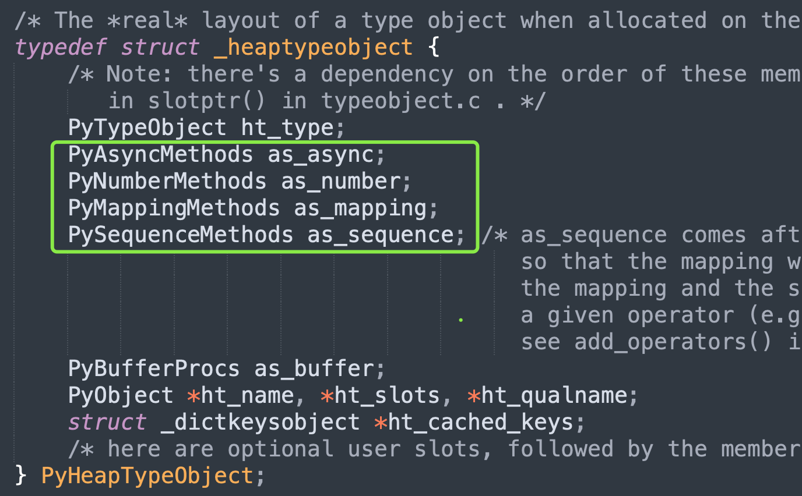
在 PyHeapTypeObject 中，PyMappingMethods 的位置在 PySequenceMethods 之前，mp_subscript 是 PyMappingMethods 中的一个函数指针，而 sq_item 又是 PySequenceMethods 中的一个函数指针。那么最终计算出来的偏移量就存在如下关系：
offset(mp_subscript) < offset(sq_item)
因此如果在一个 PyTypeObject 中，既定义了 mp_subscript，又定义了 sq_item，那么虚拟机将选择 mp_subscript 与 __getitem__ 建立联系。我们举个栗子：
class A(list):
def __getitem__(self, item):
return item
a = A([])
print(a) # []
print(a[0]) # 0
print(a["xxx"]) # xxx
我们自定义的类实现了 __getitem__，所以会对应 mp_subscript 或 sq_item，那么到底是哪一种呢？显然根据偏移量的关系，虚拟机最终选择了让 mp_subscript 和 __getitem__ 建立联系。
事实上不看偏移量我们也知道答案，因为 sq_item 表示基于索引取值，如果 [] 里面的值是字符串，那么铁定报错。但这里没有报错，说明和 __getitem__ 建立联系的不是 sq_item。
注：如果是针对内置类对象，则没有这么复杂，因为它们的操作在底层是静态写死的。但对于自定义类对象来说，需要有一个基于偏移量排序、查找的过程。
slot 变成 descriptor
看一下之前的一张图：
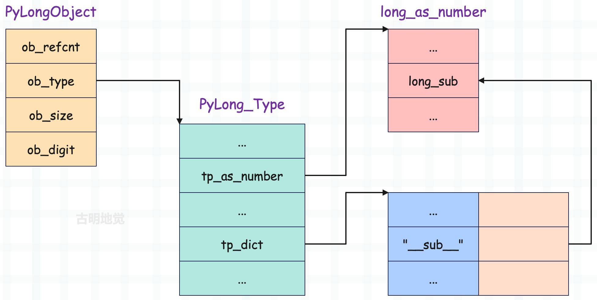
当时说 "__sub__" 对应的 value 并不是一个直接指向 long_sub 函数的指针，而是指向一个结构体，至于指向 long_sub 函数的指针则在该结构体内部。那么问题来了，这个结构体是不是上面的 slot 呢？
我们知道在 slot 中，包含了一个操作的相关信息。但是很可惜，在 tp_dict 中，与 "__sub__" 关联在一起的，一定不会是 slot，因为它不是一个 PyObject，无法将其指针放在字典中。如果再深入思考一下，会发现 slot 也无法被调用。因为它不是一个 PyObject，那么它就没有 ob_type 这个字段，也就无从谈起什么 tp_call 了，所以 slot 是无论如何也无法满足 Python 中可调用（callable）这一条件的。
前面我们说过，虚拟机在 tp_dict 中找到对应的操作后，会调用该操作，所以 tp_dict 中与 "__sub__" 对应的只能是包装了 slot 的 PyObject（的指针），我们称之为 wrapper descriptor。在 Python 内部存在多种 wrapper descriptor，它在底层对应的结构体为 PyWrapperDescrObject。
// Include/descrobject.h
typedef struct {
PyObject_HEAD
PyTypeObject *d_type;
PyObject *d_name;
PyObject *d_qualname;
} PyDescrObject;
#define PyDescr_COMMON PyDescrObject d_common
typedef struct {
// 相当于 PyDescrObject d_common
PyDescr_COMMON;
// slot
struct wrapperbase *d_base;
// 函数指针
void *d_wrapped;
} PyWrapperDescrObject;
以上就是 wrapper descriptor 在底层的定义，一个 wrapper descriptor 包含一个 slot，其创建是通过 PyDescr_NewWrapper 完成的。
// Objects/descrobject.c
PyObject *
PyDescr_NewWrapper(PyTypeObject *type, struct wrapperbase *base, void *wrapped)
{
// 声明 wrapper descriptor 指针
PyWrapperDescrObject *descr;
// 调用 descr_new 申请内存
descr = (PyWrapperDescrObject *)descr_new(&PyWrapperDescr_Type,
type, base->name);
// 设置字段属性
if (descr != NULL) {
descr->d_base = base;
descr->d_wrapped = wrapped;
}
return (PyObject *)descr;
}
static PyDescrObject *
descr_new(PyTypeObject *descrtype, PyTypeObject *type, const char *name)
{
PyDescrObject *descr;
// 为 PyDescrObject 申请内存
descr = (PyDescrObject *)PyType_GenericAlloc(descrtype, 0);
// 设置字段属性
if (descr != NULL) {
Py_XINCREF(type);
descr->d_type = type;
descr->d_name = PyUnicode_InternFromString(name);
if (descr->d_name == NULL) {
Py_DECREF(descr);
descr = NULL;
}
else {
descr->d_qualname = NULL;
}
}
return descr;
}
Python 内部的各种 wrapper descriptor 都会包含 PyDescrObject，也就是类型对象相关的一些信息；d_base 对应 slot；而 d_wrapped 则存放着最重要的东西：操作对应的函数指针，比如 PyLong_Type，其 tp_dict["__sub__"].d_wrapped 就是 &long_sub。
print(int.__sub__)
print(str.__add__)
print(str.__getitem__)
print(tuple.__hash__)
"""
<slot wrapper '__sub__' of 'int' objects>
<slot wrapper '__add__' of 'str' objects>
<slot wrapper '__getitem__' of 'str' objects>
<slot wrapper '__hash__' of 'tuple' objects>
"""
我们看到这些魔法函数都是一个 wrapper descriptor 对象，也就是对 slot 包装之后的描述符。wrapper descriptor 对象在底层对应 PyWrapperDescrObject，其类型是 PyWrapperDescr_Type，tp_call 为 wrapperdescr_call。
print(int.__sub__.__class__)
print(str.__add__.__class__)
print(str.__getitem__.__class__)
print(tuple.__hash__.__class__)
"""
<class 'wrapper_descriptor'>
<class 'wrapper_descriptor'>
<class 'wrapper_descriptor'>
<class 'wrapper_descriptor'>
"""
# int.__sub__ 等价于 int.__dict__["__sub__"]
print(int.__dict__["__sub__"].__class__)
"""
<class 'wrapper_descriptor'>
"""
打印的结果是 <class 'wrapper_descriptor'>，说明类型对象 wrapper_descriptor 在底层对应 PyWrapperDescr_Type。

所以内置类对象的属性字典中存储的是字符串到 wrapper descriptor 的映射。
建立联系
slotdefs 里面包含了一堆 slot，每个 slot 对应类型对象定义的一个操作，比如 __getattr__、__new__、__add__、__getitem__ 等等。当然啦，虚拟机还会对 slotdefs 进行排序，排序之后再从头到尾遍历 slotdefs，基于每个 slot 创建一个 wrapper descriptor。然后在 tp_dict 中再建立从操作名到 wrapper descriptor 的映射，这个过程是在 add_operators 中完成的。
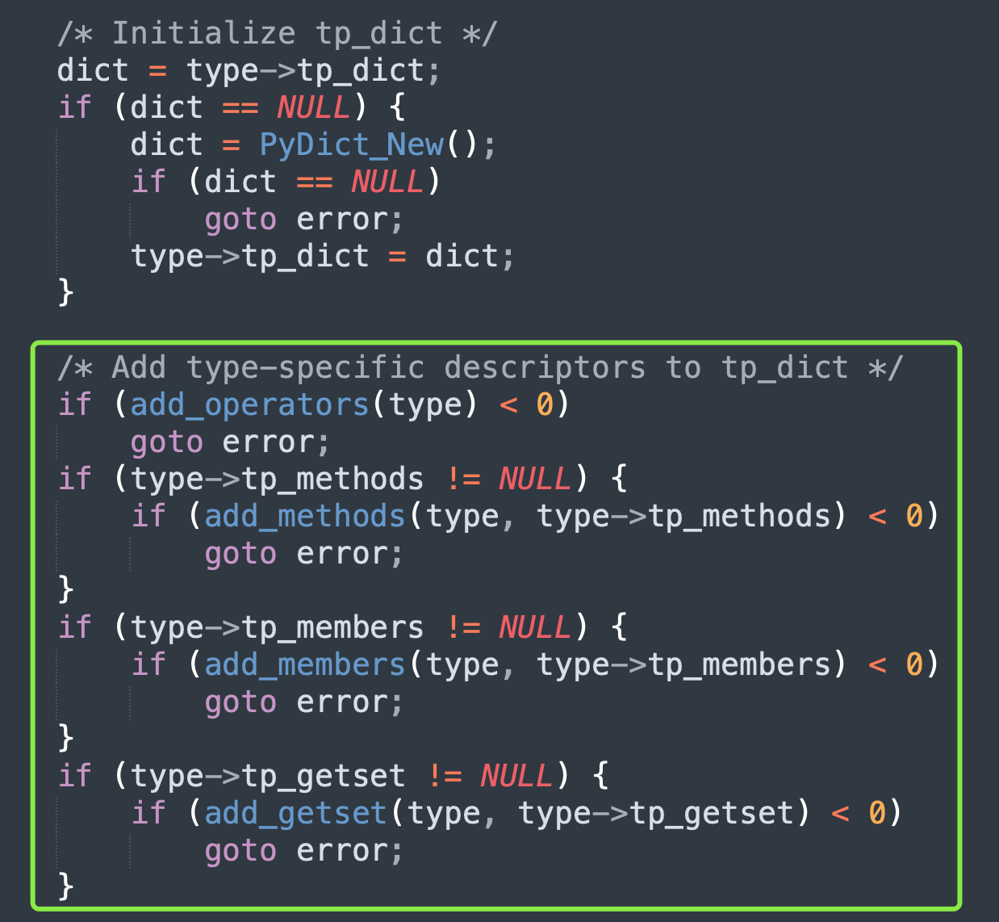
我们看一下 add_operators 的逻辑。
static int slotdefs_initialized = 0;
static void
init_slotdefs(void)
{
slotdef *p;
if (slotdefs_initialized)
return;
for (p = slotdefs; p->name; p++) {
assert(!p[1].name || p->offset <= p[1].offset);
// slot 有一个 name 字段和一个 name_strobj 字段
// 它们都是暴露给 Python 的操作名，只不过一个是 C 字符串，一个是 Python 字符串
// 基于 C 字符串创建 Python 字符串
p->name_strobj = PyUnicode_InternFromString(p->name);
if (!p->name_strobj || !PyUnicode_CHECK_INTERNED(p->name_strobj))
Py_FatalError("Out of memory interning slotdef names");
}
// 该操作只会执行一次
slotdefs_initialized = 1;
}
static int
add_operators(PyTypeObject *type)
{
// 属性字典
PyObject *dict = type->tp_dict;
// slot，在底层是一个 slotdef 结构体
slotdef *p;
// wrapper descriptor
PyObject *descr;
void **ptr;
// 而 init_slotdefs 就是基于 C 字符串创建 Python 字符串
// p->name_strobj = PyUnicode_InternFromString(p->name);
init_slotdefs();
for (p = slotdefs; p->name; p++) {
// 如果 slot 中没有指定 wrapper，则无需处理
if (p->wrapper == NULL)
continue;
// 获取 slot 对应的操作在 PyTypeObject 中的函数指针
ptr = slotptr(type, p->offset);
if (!ptr || !*ptr)
continue;
// 如果 tp_dict 中已经存在操作名，则放弃
if (PyDict_GetItemWithError(dict, p->name_strobj))
continue;
if (PyErr_Occurred()) {
return -1;
}
if (*ptr == (void *)PyObject_HashNotImplemented) {
if (PyDict_SetItem(dict, p->name_strobj, Py_None) < 0)
return -1;
}
else {
// 创建 wrapper descriptor
descr = PyDescr_NewWrapper(type, p, *ptr);
if (descr == NULL)
return -1;
// 将 "操作名": wapper descriptor 放入 tp_dict 中
if (PyDict_SetItem(dict, p->name_strobj, descr) < 0) {
Py_DECREF(descr);
return -1;
}
Py_DECREF(descr);
}
}
if (type->tp_new != NULL) {
if (add_tp_new_wrapper(type) < 0)
return -1;
}
return 0;
}
在 add_operators 中，首先调用 init_slotdefs，然后遍历 slotdefs 数组，通过 slotptr 获取该 slot 对应的操作在 PyTypeObject 中的函数指针。紧接着创建 wrapper descriptor，然后在 tp_dict 中建立从操作名（slotdef.name_strobj）到操作（wrapper descriptor）的映射。
但需要注意的是，在创建 wrapper descriptor 之前，虚拟机会检查在 tp_dict 中是否存在同名操作，如果存在了，则不会再次建立从操作名到操作的关联。也正是这种检查机制与排序机制相结合，虚拟机才能在拥有相同操作名的多个操作中选择优先级最高的操作。
add_operators 里面的大部分动作都很简单、直观，而最难的动作隐藏在 slotptr 这个函数当中，它的功能是完成从 slot 到 slot 对应操作的真实函数指针的转换。我们知道在 slot 中存放着用来操作的 offset，但不幸的是，对于自定义类的操作簇来说，这个 offset 是相对于 PyHeapTypeObject 的偏移，而操作的真实函数指针却是在 PyTypeObject 中指定的。
此外 PyTypeObject 和 PyHeapTypeObject 也不是同构的，因为 PyHeapTypeObject 中包含了 PyNumberMethods 结构体，但 PyTypeObject 只包含了 PyNumberMethods * 指针。所以 slot 中存储的关于操作的 offset 对 PyTypeObject 来说，不能直接用，必须先转换。
举个栗子，假如有以下调用（slotptr 一会说）：
slotptr(&PyLong_Type, offset(PyHeapTypeObject, long_sub))
首先会判断这个偏移量是否大于 offset(PyHeapTypeObject, as_number)，所以会从 PyHeapTypeObject 对象中获取 as_number 字段的指针 p，然后在 p 的基础上进行偏移就可以得到实际的函数地址。所以偏移量 delta 为：
offset(PyHeapTypeObject, long_sub) - offset(PyHeapTypeObject, as_number)
而这个复杂的过程就在 slotptr 中完成：
static void **
slotptr(PyTypeObject *type, int ioffset)
{
char *ptr;
long offset = ioffset;
/* Note: this depends on the order of the members of PyHeapTypeObject! */
assert(offset >= 0);
assert((size_t)offset < offsetof(PyHeapTypeObject, as_buffer));
// 从 PyHeapTypeObject 中排在后面的 PySequenceMethods 开始判断
// 然后向前，依次判断 PyMappingMethods 和 PyNumberMethods
/*
* 为什么要这么做呢？假设我们首先从 PyNumberMethods 开始判断
* 如果一个操作的 offset 大于 as_numbers 在 PyHeapTypeObject 中的偏移量
* 那么我们还是没办法确认这个操作到底是属于谁的
* 只有从后往前进行判断，才能解决这个问题。
*/
if ((size_t)offset >= offsetof(PyHeapTypeObject, as_sequence)) {
ptr = (char *)type->tp_as_sequence;
offset -= offsetof(PyHeapTypeObject, as_sequence);
}
else if ((size_t)offset >= offsetof(PyHeapTypeObject, as_mapping)) {
ptr = (char *)type->tp_as_mapping;
offset -= offsetof(PyHeapTypeObject, as_mapping);
}
else if ((size_t)offset >= offsetof(PyHeapTypeObject, as_number)) {
ptr = (char *)type->tp_as_number;
offset -= offsetof(PyHeapTypeObject, as_number);
}
else if ((size_t)offset >= offsetof(PyHeapTypeObject, as_async)) {
ptr = (char *)type->tp_as_async;
offset -= offsetof(PyHeapTypeObject, as_async);
}
else {
ptr = (char *)type;
}
if (ptr != NULL)
ptr += offset;
return (void **)ptr;
}
好了，到现在我们应该能够摸清楚虚拟机在改造 PyTypeObject 对象时，对 tp_dict 做了什么了，我们以 PyLong_Type 举例说明：

在 add_operators 完成之后，PyLong_Type 如图所示。
从 PyLong_Type.tp_as_number 中延伸出去的部分是在编译时就已经确定好了的，而从 tp_dict 中延伸出去的部分则是在 Python 运行时环境初始化的时候才建立的。这个运行时环境初始化后面会单独说，现在就把它理解为解释器启动时做的准备工作即可。
另外， PyType_Ready 在通过 add_operators 添加了 PyTypeObject 中定义的一些 operator 后，还会通过 add_methods、add_numbers 和 add_getsets 添加 PyTypeObject 中定义的 tp_methods、tp_members 和 tp_getset 函数集。
这些过程和 add_operators 类似，不过最后添加到 tp_dict 中的就不再是 PyWrapperDescrObject ，而分别是 PyMethodDescrObject、PyMemberDescrObject、PyGetSetDescrObject 。
print(int.__add__)
print((123).__add__)
"""
<slot wrapper '__add__' of 'int' objects>
<method-wrapper '__add__' of int object at 0x100be5030>
"""
print(int.__add__.__class__)
print((123).__add__.__class__)
"""
<class 'wrapper_descriptor'>
<class 'method-wrapper'>
"""
实例在调用函数的时候，会将函数包装成方法，它是一个 wrapper method。所以 __add__ 对于 int 类型对象而言，叫魔法函数，对于整数对象而言，叫魔法方法。
// 像 str.__add__、int.__sub__，它们都是 wrapper descriptor
// 在底层对应 PyWrapperDescrObject 结构体实例
// 而像 "hello".__add__、(123).__sub__，它们都是 wrapper method
// 在底层对应 wrapperobject 结构体实例
// 但是我们看到 wrapperobject 只是多了一个 self 而已
// 所以 "hello".upper() 等价于 str.upper("hello")
typedef struct {
PyObject_HEAD
PyWrapperDescrObject *descr;
PyObject *self;
} wrapperobject;
// 关于函数和方法的区别后续还会细说
从目前来看，基本上算是解析完了，但是还有一点：
class A(int):
def __sub__(self, other):
return self, other
a = A(123)
print(a - 456) # (123, 456)
从结果上很容易看出，进行减法操作时，调用的是我们重写的 __sub__。这意味着虚拟机在初始化 A 的时候，对 tp_as_number 中的 nb_subtract 进行了特殊处理。那为什么虚拟机会知道要对 nb_subtract 进行特殊处理呢？当然肯定有小伙伴会说：这是因为我们重写了 __sub__ 啊，确实如此，但这是 Python 层面上的，如果站在虚拟机层面的话，答案还是在 slot 身上。

虚拟机在初始化类对象 A 时，会检测出 A 的 tp_dict 中存在 __sub__。在后面剖析自定义类对象的创建时会看到，因为在定义 class A 的时候，重写了 __sub__ 这个操作，所以在 A 的 tp_dict 中，__sub__ 一开始就会存在，虚拟机会检测到。
然后再根据 __sub__ 对应的 slot 顺藤摸瓜，找到 nb_substract，并且将这个函数指针替换为 slot 中指定的 &slot_nb_subtract。所以当后来虚拟机找 A 的 nb_substract 的时候，实际上找到的是 slot_nb_subtract。而在 slot_nb_subtract 中，会寻找 __sub__ 对应的描述符，然后找到在 A 中重写的函数（一个 PyFunctionObject *）。这样一来，就完成了对 int 的 __sub__ 行为的替换。
所以对于 A 来说，内存布局就是下面这样。

当然这仅仅是针对于 __sub__，至于其它操作还是会指向 PyLong_Type 中指定的函数。所以如果某个函数在 A 里面没有重写的话，那么会从 PyLong_Type 中寻找。
以上就是属性字典的填充，这个过程还是稍微有点复杂的。
类对象 MRO 的设置与属性继承
当完成属性字典的设置，就开始确定 MRO 了，即 method resolve order。
类对象 MRO 的设置
MRO 表示类继承之后，属性或方法的查找顺序。如果 Python 是单继承的话，那么这不是问题，直接一层一层向上找即可。但 Python 是支持多继承的，那么在多继承时，继承的顺序就成为了一个必须考虑的问题。
class A:
def foo(self):
print("A")
class B(A):
def foo(self):
print("B")
class C(A):
def foo(self):
print("C")
self.bar()
def bar(self):
print("bar C")
class D(C, B):
def bar(self):
print("bar D")
d = D()
d.foo()
"""
C
bar D
"""
首先打印的是字符串 "C"，表示调用的是 C 的 foo，说明把 C 写在前面，会先从 C 里面查找。但是下面打印了 "bar D"，这是因为 C 里面的 self 实际上是 D 的实例对象。
因为 D 在找不到 foo 函数的时候，会到父类里面找，但是同时也会将 self 传递过去。调用 self.bar 的时候，这个 self 是 D 的实例对象，所以还是会先到 D 里面找，如果找不到再去父类里面找。
而对于虚拟机而言，则是会在 PyType_Ready 中通过 mro_internal 函数确定 mro。虚拟机将创建一个 PyTupleObject 对象，里面存放一组类对象，这些类对象的顺序就是虚拟机确定的 mro。而这个元组，最终会被交给 tp_mro 字段保存。
由于确定 MRO 的 mro_internal 函数非常复杂，这里我们就不看源码了，只要能从概念上理解它即可。另外 Python 早期有经典类和新式类两种，现在则只存在新式类，而经典类和新式类采用的搜索策略是不同的，举个例子：

图中的箭头表示继承关系，比如：A 同时继承 B 和 C、B 继承 D、C 继承 E。
对于上图来说，经典类和新式类的查找方式是一样的，至于两边是否一样多则不重要。查找方式是先从 A 找到 I，再从 C 查找到 G。我们实际演示一下，由于经典类只在 Python2 中存在，所以下面只演示新式类。
I = type("I", (), {})
H = type("H", (I,), {})
F = type("F", (H,), {})
G = type("G", (), {})
D = type("D", (F,), {})
E = type("E", (G,), {})
B = type("B", (D,), {})
C = type("C", (E,), {})
A = type("A", (B, C), {})
for _ in A.__mro__:
print(_)
"""
<class '__main__.A'>
<class '__main__.B'>
<class '__main__.D'>
<class '__main__.F'>
<class '__main__.H'>
<class '__main__.I'>
<class '__main__.C'>
<class '__main__.E'>
<class '__main__.G'>
<class 'object'>
"""
A 继承两个类，然后这两个类分别继续继承，如果最终没有继承公共的类（忽略 object），那么经典类和新式类是一样的。像这种泾渭分明、各自继承各自的，都是先一条路找到黑，然后再去另外一条路找。
但如果是下面这种，分久必合、两者最终又继承了同一个类，那么经典类还是跟以前一样，按照每一条路都走到黑的方式。但是对于新式类，则是先从 A 找到 H，而 I 这个两边最终都继承的类不找了，然后从 C 找到 I，也就是在另一条路找到头。

我们测试一下：
# 新式类
I = type("I", (), {})
H = type("H", (I,), {})
F = type("F", (H,), {})
G = type("G", (I,), {}) # 这里让 G 继承 I
D = type("D", (F,), {})
E = type("E", (G,), {})
B = type("B", (D,), {})
C = type("C", (E,), {})
A = type("A", (B, C), {})
for _ in A.__mro__:
print(_)
"""
<class '__main__.A'>
<class '__main__.B'>
<class '__main__.D'>
<class '__main__.F'>
<class '__main__.H'>
<class '__main__.C'>
<class '__main__.E'>
<class '__main__.G'>
<class '__main__.I'>
<class 'object'>
"""
但是 Python 的多继承比我们想象的要复杂，原因就在于可以任意继承，如果 B 和 C 再分别继承两个类呢？那么我们这里的线路就又要多出两条了。不过既然要追求刺激，就贯彻到底喽，我们来看一下，如何从混乱不堪的继承关系中，找到正确的继承顺序。
由于 Python3 只有新式类，因此下面我们会以介绍新式类为主，经典类了解一下即可。
很多文章可能告诉你经典类采用深度优先算法，新式类采用广度优先算法，真的是这样吗？我们举一个例子：

假设我们调用 A() 的 foo 方法，但是 A 里面没有，那么理所应当会去 B 里面找。但是 B 里面也没有，而 C 和 D 里面有，那么这个时候是去 C 里面找还是去 D 里面找呢？根据我们之前的结论，显然是去 D 里面找，可如果按照广度优先的逻辑来说，那么应该是去 C 里面找啊。所以广度优先理论在这里就不适用了，因为 B 继承了 D，而 B 和 C 并没有直接关系，我们应该把 B 和 D 看成一个整体。
而 Python 的 MRO 实际上是采用了一种叫做 C3 的算法，这个 C3 算法比较复杂（其实也不算复杂），但是我个人总结出一个更加好记的结论，如下：
当沿着一条继承链寻找类时，默认会沿着该继承链一直找下去。但如果发现某个类出现在了另一条继承链当中，那么当前的继承链的搜索就会结束，然后在"最开始"出现分歧的地方转向下一条继承链的搜索。
这是我个人总结的，或许光看字面意思的话会比较难理解，但是通过例子就能明白了。

箭头表示继承关系，继承顺序是从左到右，比如这里的 A 就相当于 class A(B, C)，下面我们来从头到尾分析一下 A 的 MRO。
- 1）因为是 A 的 MRO，所以查找时，第一个类就是 A；
- 2）然后 A 继承 B 和 C，由于是两条路，因此我们说 A 这里就是一个分歧点。但由于 B 在前，所以接下来是 B，而现在 MRO 的顺序就是 A B；
- 3）但是 B 这里也出现了分歧点，不过不用管，因为我们说会沿着继承链不断往下搜索，现在 MRO 的顺序是A B D；
- 4）然后从 D 开始继续寻找，这里注意了，按理说会找到 G 的。但是 G 不止被一个类继承，也就是说沿着当前的继承链查找 G 时，发现 G 还出现在了其它的继承链当中。怎么办？显然要回到最初的分歧点，转向下一条继承链的搜索；
- 5）最初的分歧点是 A，那么该去找 C 了，现在 MRO 的顺序就是 A B D C；
- 6）注意 C 这里也出现了分歧点，而 A 的两条分支已经结束了，所以现在 C 就是最初的分歧点了。而 C 继承自 E 和 F，显然要搜索 E，那么此时 MRO 的顺序就是 A B D C E；
- 7）然后从 E 开始搜索，显然要搜索 G，此时 MRO 顺序变成 A B D C E G；
- 8）从 G 要搜索 I，此时 MRO 的顺序是 A B D C E G I；
- 9）从 I 开始搜索谁呢？由于 J 出现在了其它的继承链中，那么要回到最初的分歧点，也就是 C。那么下面显然要找 F，此时 MRO 的顺序是 A B D C E G I F；
- 10）F 只继承了 H，那么肯定要找 H，此时 MRO 的顺序是 A B D C E G I F H；
- 11）H 显然只能找 J 了，因此最终 A 的 MRO 的顺序就是 A B D C E G I F H J object；
我们实际测试一下：
J = type("J", (object, ), {})
I = type("I", (J, ), {})
H = type("H", (J, ), {})
G = type("G", (I, ), {})
F = type("F", (H, ), {})
E = type("E", (G, H), {})
D = type("D", (G, ), {})
C = type("C", (E, F), {})
B = type("B", (D, E), {})
A = type("A", (B, C), {})
# A B D C E G I F H J
for _ in A.__mro__:
print(_)
"""
<class '__main__.A'>
<class '__main__.B'>
<class '__main__.D'>
<class '__main__.C'>
<class '__main__.E'>
<class '__main__.G'>
<class '__main__.I'>
<class '__main__.F'>
<class '__main__.H'>
<class '__main__.J'>
<class 'object'>
"""
为了加深理解，我们再举个更复杂的例子：

- 1）首先是 A，A 继承 B1、B2、B3，会先走 B1，此时 MRO 是 A B1。并且现在 A 是分歧点；
- 2）从 B1 处本来应该去找 C1，但是 C1 还被其它类继承，也就是出现在了其它的继承链当中。因此要回到最初的分歧点 A，从下一条继承链开始找，显然要找 B2，此时 MRO 就是 A B1 B2；
- 3）从 B2 开始，显然要找 C1，此时 MRO 的顺序就是 A B1 B2 C1；
- 4）从C1开始，显然要找 D1，因为 D1 只被 C1 继承，也就是说，它没有出现在另一条继承链当中，因此此时 MRO 的顺序是 A B1 B2 C1 D1；
- 5）对于 D1 而言，显然接下来是不会去找 E 的，因为 E 还出现在另外的继承链当中。咋办? 回到最初的分歧点，注意这里的分歧点还是 A，因为 A 的分支还没有走完。显然此时要走 B3，那么 MRO 的顺序就是 A B1 B2 C1 D1 B3；
- 6）从 B3 开始找，显然要找 C2，注意：A 的分支已经走完，此时 B3 就成了新的最初分歧点。现在 MRO 的顺序是 A B1 B2 C1 D1 B3 C2；
- 7）C2 会找 D2吗？显然不会，因为 D2 还被 C3 继承，所以它出现在了其它的继承链中。于是要回到最初的分歧点，这里是 B3，显然下面要找 C3。另外由于 B3 的分支也已经走完，所以现在 C3 就成了新的最初分歧点。此时 MRO 的顺序是 A B1 B2 C1 D1 B3 C2 C3；
- 8）从 C3 开始，显然要找 D2，此时 MRO 的顺序是 A B1 B2 C1 D1 B3 C2 C3 D2；
- 9）但是 D2 不会找 E，因此回到最初分歧点 C3，下面要找 D3。而 D3 找完之后显然只能再找 E 了，因此最终 MRO 的顺序是 A B1 B2 C1 D1 B3 C2 C3 D2 D3 E object；
下面测试一下：
E = type("E", (), {})
D1 = type("D1", (E,), {})
D2 = type("D2", (E,), {})
D3 = type("D3", (E,), {})
C1 = type("C1", (D1, D2), {})
C2 = type("C2", (D2,), {})
C3 = type("C3", (D2, D3), {})
B1 = type("B1", (C1,), {})
B2 = type("B2", (C1, C2), {})
B3 = type("B3", (C2, C3), {})
A = type("A", (B1, B2, B3), {})
for _ in A.__mro__:
print(_)
"""
<class '__main__.A'>
<class '__main__.B1'>
<class '__main__.B2'>
<class '__main__.C1'>
<class '__main__.D1'>
<class '__main__.B3'>
<class '__main__.C2'>
<class '__main__.C3'>
<class '__main__.D2'>
<class '__main__.D3'>
<class '__main__.E'>
<class 'object'>
"""
以上就是计算 MRO 所采用的策略，关于源码部分我们就不看了，复杂是一方面，重点是没什么太大必要。个人觉得，关于多继承从目前这个层面上来理解已经足够了。另外通过以上可以看出，Python 支持非常复杂的继承关系。但是实际使用多继承的时候，我们最好还是要斟酌一下，因为多继承如果设计的不好，容易使得类的继承关系变得非常混乱。
为此，Python 提供了一种模式叫做 Mixin，可以网上搜索一下。比较简单，这里就不展开了。
self 在多继承里面的一些坑
在执行父类函数时传入的 self 参数，是很多初学者容易犯的错误。
class A:
def foo(self):
print("A: foo")
self.bar()
def bar(self):
print("A: bar")
class B:
def bar(self):
print("B: bar")
class C(A, B):
def bar(self):
print("C: bar")
C().foo()
"""
A: foo
C: bar
"""
C 的实例对象在调用 foo 的时候，首先会去 C 里面查找，但是 C 没有，所以按照 MRO 的顺序会去 A 里面找。而 A 里面存在，所以调用，但是调用时传递的 self 是 C 的实例对象，因为是 C 的实例对象调用的。所以里面的 self.bar，这个 self 还是 C 的实例对象，那么调用 bar 的时候，会去哪里找呢？显然还是从 C 里面找，所以 self.bar() 的时候打印的是字符串 C: bar，而不是 A: bar。
同理再来看一个关于 super 的栗子：
class A:
def foo(self):
super(A, self).foo()
class B:
def foo(self):
print("B: foo")
class C(A, B):
pass
try:
A().foo()
except Exception as e:
print(e) # 'super' object has no attribute 'foo'
# 首先 A 的父类是 object
# 所以 super(A, self).foo() 的时候会去执行 object 的 foo
# 而 object 没有 foo，所以报错
# 但如果是 C 的实例调用呢？
C().foo() # B: foo
如果是 C() 调用 foo 的话，最终却执行了 B 的 foo，这是什么原因呢？首先 C 里面没有 foo，那么会去执行 A 的 foo，但是执行时候的 self 是 C 的实例对象，super 里面的 self 也是 C 里面的 self。
然后我们知道对于 C 而言，其 MRO 是 C、A、B、object。所以此时的 super(A, self).foo() 就表示：沿着 C 的 MRO 去找 foo 函数，但是 super 里面有一个 A，表示不要从头开始找，而是从 A 的后面开始找，所以下一个就找到 B 了。
所以说 super 不一定就是父类，而是要看里面的 self 是谁。总之：super(xxx, self) 一定是 type(self) 对应的 MRO 中，xxx 的下一个类。再举个栗子：
class A:
def foo(self):
# 从 B 里面找 foo
super(A, self).foo()
# 从 C 里面找 foo
super(B, self).foo()
class B:
def foo(self):
print("B: foo")
class C:
def foo(self):
print("C: foo")
class D(A, B, C):
pass
D().foo()
"""
B: foo
C: foo
"""
当 D() 调用 foo 的时候，D 里面没有，那么按照继承关系一定是去 A 里面找。而 self 是 D 的 self，那么 super(A, self) 就是 D 对应的 MRO 中，A 的下一个类，也就是 B；super(B, self) 就是 D 对应的 MRO 中，B 的下一个类，也就是 C。
基类冲突
虽然可以继承多个类，但是这些类之间有可能发生冲突，举个栗子：
class A(int, str):
pass
# TypeError: multiple bases have instance lay-out conflict
我们发现执行的时候报错了，这个类虚拟机压根就不会让你创建，原因很简单，它们的实例对象在内存布局上发生冲突了。
比如 A("123") 这个实例，虚拟机是把它看成整数呢？还是字符串呢？因为 A 同时继承 int 和 str，就意味着其实例既可以像整数一样使用除法，也可以像字符串一样调用 join 方法。但是整数没有 join，字符串也无法使用除法，因此这个类是不合理的。继承的多个基类，在实例对象的内存布局上产生了冲突。
虽然上面给出了解释，但如果仔细推敲，会发现这个解释有些站不住脚，因为我们自定义的类没有这个问题。如果是自定义的类，别说继承两个，就算继承十个毫无关系的类，也不会出现冲突，这又是什么原因呢？其实两者的差别，就在于内置类对象的实例对象是没有属性字典的，但是自定义类对象的实例对象有。
class Base1:
__slots__ = ("a",)
class Base2:
__slots__ = ("a",)
class A(Base1, Base2):
pass
# TypeError: multiple bases have instance lay-out conflict
此时 Base1 和 Base2 的实例，和内置类对象的实例是类似的，都没有属性字典，或者说实例对象可以绑定哪些属性已经定好了。同时继承 Base1 和 Base2 也会发生冲突。
结论：对于实例对象没有属性字典的类对象，最多同时继承一个。但是也有特例，如果类对象不接收任何参数，即使它的实例对象没有属性字典，也没有影响。
class Base1:
__slots__ = ("a",)
class Base2:
__slots__ = ()
# 合法
class A(Base2, int):
pass
# 不合法
class B(Base1, int):
pass
Base1 的实例对象显然可以绑定一个属性 a，意味着 Base1 可以接收一个参数；Base2 的实例对象无法绑定任何属性，意味着 Base2 不接收任何参数。
因此 class A(Base1, int) 是不合法的，因为 Base1 和 int 的实例没有属性字典，但它们都接收参数。同理 class A (Base1, str)、class A(Base1, dict) 也一样。但是 class A(Base2, str) 没有影响，因为 Base2 的实例无法绑定任何属性，因此也就不存在内存布局上的冲突。
当继承的基类之间存在父子关系时
看个栗子：
class Base:
pass
class A(Base):
pass
class B(Base, A):
pass
"""
TypeError: Cannot create a consistent method resolution
order (MRO) for bases Base, A
"""
这个错误的原因应该不难理解，B 继承了 Base 和 A，但是 Base 和 A 之间又是父子关系。比如 B 在找不到某个方法时，会到 Base 里面找，Base 找不到再去 A 里面找。但如果 A 再找不到，就又回到了 Base，因为 A 继承 Base，那么此时就出现了闭环，这是不允许的。
但如果把 B 的创建改成 class B(A, Base) 则没问题，所以当继承的多个类之间也存在继承关系时，子类要在父类的前面。当然啦，最正确的做法应该是只继承子类，比如这里的 class B(A)。因为 A 已经继承了 Base，所以 B 只需继承 A 即可，无需再继承 Base。像 class B(A, Base) 这种做法虽然不会报错，但明显有些画蛇添足。
继承基类操作
子类在找不到某个属性或方法时，会去基类里面找，但这背后的原理是什么呢？答案简单到超乎你想象，就是单纯的拷贝。虚拟机在确定 MRO 之后，就会遍历 MRO 顺序列表，里面存储了该类的所有直接基类、间接基类（也就是基类的基类）。而虚拟机会将自身没有、但是基类中存在的操作拷贝到该类当中，从而完成对基类操作的继承动作。
而这个继承的动作是发生在 inherit_slots 中。
int
PyType_Ready(PyTypeObject *type)
{
// 计算 MRO
if (mro_internal(type, NULL) < 0)
goto error;
// inherit_special 会从基类继承 tp_new、tp_traverse、tp_clear 等
if (type->tp_base != NULL)
inherit_special(type, type->tp_base);
// 获取 MRO 顺序列表
bases = type->tp_mro;
assert(bases != NULL);
assert(PyTuple_Check(bases));
n = PyTuple_GET_SIZE(bases);
// 遍历所有的基类，包括直接基类、间接基类
// 由于 MRO 的第一个类是其本身，所以遍历是从第二项开始的
for (i = 1; i < n; i++) {
PyObject *b = PyTuple_GET_ITEM(bases, i);
if (PyType_Check(b))
// 继承基类操作
inherit_slots(type, (PyTypeObject *)b);
}
// ...
}
在 inherit_slots 中会拷贝相当多的操作，这里就以整型为例：
static void
inherit_slots(PyTypeObject *type, PyTypeObject *base)
{
PyTypeObject *basebase;
#undef SLOTDEFINED
#undef COPYSLOT
#undef COPYNUM
#undef COPYSEQ
#undef COPYMAP
#undef COPYBUF
#define SLOTDEFINED(SLOT) \
(base->SLOT != 0 && \
(basebase == NULL || base->SLOT != basebase->SLOT))
#define COPYSLOT(SLOT) \
if (!type->SLOT && SLOTDEFINED(SLOT)) type->SLOT = base->SLOT
#define COPYASYNC(SLOT) COPYSLOT(tp_as_async->SLOT)
#define COPYNUM(SLOT) COPYSLOT(tp_as_number->SLOT)
#define COPYSEQ(SLOT) COPYSLOT(tp_as_sequence->SLOT)
#define COPYMAP(SLOT) COPYSLOT(tp_as_mapping->SLOT)
#define COPYBUF(SLOT) COPYSLOT(tp_as_buffer->SLOT)
if (type->tp_as_number != NULL && base->tp_as_number != NULL) {
basebase = base->tp_base;
if (basebase->tp_as_number == NULL)
basebase = NULL;
COPYNUM(nb_add);
COPYNUM(nb_subtract);
COPYNUM(nb_multiply);
COPYNUM(nb_remainder);
COPYNUM(nb_divmod);
COPYNUM(nb_power);
COPYNUM(nb_negative);
COPYNUM(nb_positive);
COPYNUM(nb_absolute);
COPYNUM(nb_bool);
COPYNUM(nb_invert);
COPYNUM(nb_lshift);
COPYNUM(nb_rshift);
COPYNUM(nb_and);
COPYNUM(nb_xor);
COPYNUM(nb_or);
COPYNUM(nb_int);
COPYNUM(nb_float);
COPYNUM(nb_inplace_add);
COPYNUM(nb_inplace_subtract);
COPYNUM(nb_inplace_multiply);
COPYNUM(nb_inplace_remainder);
COPYNUM(nb_inplace_power);
COPYNUM(nb_inplace_lshift);
COPYNUM(nb_inplace_rshift);
COPYNUM(nb_inplace_and);
COPYNUM(nb_inplace_xor);
COPYNUM(nb_inplace_or);
COPYNUM(nb_true_divide);
COPYNUM(nb_floor_divide);
COPYNUM(nb_inplace_true_divide);
COPYNUM(nb_inplace_floor_divide);
COPYNUM(nb_index);
COPYNUM(nb_matrix_multiply);
COPYNUM(nb_inplace_matrix_multiply);
}
// ...
}
我们在里面看到了很多熟悉的东西，这些都是在继承时需要拷贝的操作。比如布尔类型，PyBool_Type 中并没有设置 nb_add，但是 PyLong_Type 中设置了，而 bool 继承 int。所以布尔值是可以直接进行运算的，当然和整数、浮点数运算也是可以的。因此在 Numpy 中，判断一个数组里面有多少个满足条件的元素，可以使用 Numpy 提供的向量化操作进行比较，会得到一个具有相同长度的数组，里面的每一个元素为表示是否满足条件的布尔值。然后直接通过 sum 运算即可，因为运算的时候，True 会被解释成 1，False 会被解释成 0。
import numpy as np
arr = np.array([2, 4, 7, 3, 5])
print(arr > 4) # [False False True False True]
print(np.sum(arr > 4)) # 2
# 也可以和整数直接运算
print(2.2 + True) # 3.2
所以在 Python 中，整数可以和布尔值进行运算，看似不可思议，但又在情理之中。
填充基类的子类列表
到这里，PyType_Ready 还剩下最后一个重要的动作：设置基类的子类列表。
在 PyTypeObject 中，有一个 tp_subclasses，这个字段在 PyType_Ready 完成之后，将会是一个 list 对象，其中存放着所有直接继承该类的类对象。
class Base:
pass
class A(Base):
pass
class B(A):
pass
# A 继承 Base
print(Base.__subclasses__())
"""
[<class '__main__.A'>]
"""
tp_subclasses 对应 Python 的 __subclasses__，当调用的时候会打印直接继承自己的类。注意是直接继承，间接继承不算，所以上面打印的列表里面只有 A 没有 B。那么问题来了，这一步是何时发生的呢？Base 怎么知道 A 继承了它呢？很简单，A 在继承 Base 的操作之后，也会将自身设置到 Base 的 tp_subclasses 中。
而在 PyType_Ready 中，这一步是通过调用 add_subclass 实现的。
int
PyType_Ready(PyTypeObject *type)
{
// ...
// 拿到所有的基类
bases = type->tp_bases;
n = PyTuple_GET_SIZE(bases);
// 挨个遍历，将自身加入到基类的 tp_subclasses 中
// 因为一个类可以直接继承很多基类，而每个基类都要添加
for (i = 0; i < n; i++) {
PyObject *b = PyTuple_GET_ITEM(bases, i);
if (PyType_Check(b) &&
add_subclass((PyTypeObject *)b, type) < 0)
goto error;
}
// ...
}
当然啦，一个类可以继承多个基类，一个基类也可以被多个子类继承，比如 object。
print(object.__subclasses__())
打印会输出非常多的内容，因为 Python 里面所有的类都继承 object，而在创建这些类的时候，都会将自身加入到 object 的 tp_subclasses 里面。
小结
到这里，我们算是完整地剖析了 PyType_Ready 的动作，可以看到，虚拟机对类对象进行了多种繁杂的改造工作，主要包括以下几部分：
- 设置类型信息、基类以及基类列表；
- 填充属性字典；
- 确定 MRO 顺序列表；
- 基于 MRO 顺序列表从基类继承操作；
- 设置基类的子类列表，或者说，将自身加入到基类的 tp_subclasses 中；
除了以上这些，还会继承 tp_as_number 等方法簇。
不同的类型，有些操作也会有一些不同的行为，但整体是一致的。因此具体到某个特定类型，可以自己跟踪 PyType_Ready 的具体过程。
欢迎大家关注我的公众号：古明地觉的编程教室。
如果觉得文章对你有所帮助，也可以请作者吃个馒头，Thanks♪(･ω･)ﾉ。
楔子
Python 除了提供很多内置的类之外，还支持我们定义属于自己的类，那么底层是如何做的呢？下面就来看看。
老规矩，如果想知道底层是怎么做的，那么就必须要通过观察字节码来实现。这里我们随便定义一个类，然后反编译一下：
class Girl:
name = "古明地觉"
def __init__(self):
print(f"__init__: {self.name}")
def foo(self):
print("foo")
def bar(self, name):
self.name = name
print(self.name)
girl = Girl()
girl.foo()
girl.bar("古明地恋")
"""
__init__: 古明地觉
foo
古明地恋
"""
通过之前对函数机制的分析，我们知道对于一个包含函数定义的 Python 源文件，在编译之后会得到一个和源文件对应的 PyCodeObject 对象，其内部的常量池中存储了和函数对应的 PyCodeObject 对象。那么对于包含类的 Python 源文件，编译之后的结果又是怎么样的呢？
显然可以照葫芦画瓢，根据以前的经验我们可以猜测模块对应的 PyCodeObject 对象的常量池中肯定存储了类对应的 PyCodeObject 对象，类对应的 PyCodeObject 对象的常量池中则存储了 __init__、foo、bar 三个函数对应的 PyCodeObject 对象。然而事实也确实如此。
在介绍函数的时候，我们看到函数的声明（def 语句）和函数的实现虽然在逻辑上是一个整体，但它们的字节码指令却是分离在两个 PyCodeObject 对象中的。
在类中，同样存在这样的分离现象。声明类的 class 语句，编译后的字节码指令存储在模块对应的 PyCodeObject 中；而类的实现、也就是类里面的逻辑，编译后的字节码指令则存储在类对应的 PyCodeObject 中。所以我们在模块级别中只能找到类，无法直接找到类里面的属性。
另外还可以看到，类的成员函数和一般的函数相同，也会有这种声明和实现分离的现象。正所谓函数即变量，类也是如此，def、class 本质上都是定义一个变量，该变量指向具体的 PyFunctionObject 或者 PyTypeObject。
code_string = """
class Girl:
name = "古明地觉"
def __init__(self):
print(f"__init__: {self.name}")
def foo(self):
print("foo")
def bar(self, name):
self.name = name
print(self.name)
"""
# 模块对应的 PyCodeObject 对象
code = compile(code_string, "<file>", "exec")
# 常量池里面存储了 Girl 对应的 PyCodeObject 对象
print(code.co_consts[0]) # <code object Girl at 0x1029d80e0, ...>
# Girl 对应的 PyCodeObject 对象的常量池里面存储了几个函数对应的 PyCodeObject 对象
print(code.co_consts[0].co_consts[2]) # <code object __init__ at 0x102905580, ...>
print(code.co_consts[0].co_consts[4]) # <code object foo at 0x102906290, ...>
print(code.co_consts[0].co_consts[6]) # <code object bar at 0x1029d8030, ...>
相信这些内容已经没有什么难度了，总之函数、类在编译之后都会对应一个 PyCodeObject。由于函数、类可以嵌套，那么 PyCodeObject 也是可以嵌套的，并且也会作为一个常量被收集起来，存储在外层的 PyCodeObject 的常量池当中。
自定义类对象的动态元信息
自定义类对象的元信息指的就是关于这个类的信息描述，比如名称、所拥有的属性、方法，该类实例化时要为实例对象申请的内存空间大小等。有了这些元信息，才能创建自定义类对象，否则我们是没办法创建的。
注意：元信息是一个非常重要的概念，在很多框架中都会出现。比如说 Hive，数据的元信息就是存储在 MySQL 里面。而在编程语言中，也正是通过元信息才实现了反射等动态特性，尤其是 Python，将元信息的概念发挥地淋漓尽致，因此 Python 也提供了其它编程语言所不具备的高度灵活的动态特征。
我们将类简化一下，看看它的字节码长什么样子。
code_string = """
class Girl:
def foo(self):
print("Hi foo")
def bar(self):
print("Hi bar")
"""
code = compile(code_string, "<file>", "exec")
for const in code.co_consts:
print(const)
"""
<code object Girl at 0x10643e290, ...>
Girl
None
"""
for const in code.co_consts[0].co_consts:
print(const)
"""
Girl
<code object foo at 0x1033d23f0, ...>
Girl.foo
<code object bar at 0x1033d1580, ...>
Girl.bar
None
"""
观察一下类的常量池，第一个元素显然是类名，一个字符串；第二和第三个元素则是函数 foo 对应的 PyCodeObject 以及全限定名；第四和第五个元素则是函数 bar 对应的 PyCodeObject 以及全限定名；最后一个是 None，而 None 是一定会有的。
然后是字节码如下：
// 模块对应的字节码
0 LOAD_BUILD_CLASS
2 LOAD_CONST 0 (<code object Girl at 0x7f1...>)
4 LOAD_CONST 1 ('Girl')
6 MAKE_FUNCTION 0
8 LOAD_CONST 1 ('Girl')
10 CALL_FUNCTION 2
12 STORE_NAME 0 (Girl)
14 LOAD_CONST 2 (None)
16 RETURN_VALUE
// class Girl 对应的字节码
Disassembly of <code object Girl at 0x7f1...>:
0 LOAD_NAME 0 (__name__)
2 STORE_NAME 1 (__module__)
4 LOAD_CONST 0 ('Girl')
6 STORE_NAME 2 (__qualname__)
8 LOAD_CONST 1 (<code object foo at 0x7f1...>)
10 LOAD_CONST 2 ('Girl.foo')
12 MAKE_FUNCTION 0
14 STORE_NAME 3 (foo)
16 LOAD_CONST 3 (<code object bar at 0x7f1...>)
18 LOAD_CONST 4 ('Girl.bar')
20 MAKE_FUNCTION 0
22 STORE_NAME 4 (bar)
24 LOAD_CONST 5 (None)
26 RETURN_VALUE
// Girl.foo 对应的字节码
Disassembly of <code object foo at 0x7f1...>:
0 LOAD_GLOBAL 0 (print)
2 LOAD_CONST 1 ('Hi foo')
4 CALL_FUNCTION 1
6 POP_TOP
8 LOAD_CONST 0 (None)
10 RETURN_VALUE
// Girl.bar 对应的字节码
Disassembly of <code object bar at 0x7f1...>:
0 LOAD_GLOBAL 0 (print)
2 LOAD_CONST 1 ('Hi bar')
4 CALL_FUNCTION 1
6 POP_TOP
8 LOAD_CONST 0 (None)
10 RETURN_VALUE
结构很清晰，总共 4 个 PyCodeObject，分别对应模块、类 Girl、函数 Girl.foo、函数 Girl.bar。

下面我们来对字节码逐一分析，首先是模块的字节码：
// 一条新指令，会将内置函数 __build_class__ 压入栈中
// 至于这个 __build_class__ 是干啥的，一会说
0 LOAD_BUILD_CLASS
// 加载 Girl 对应的 PyCodeObject 对象
2 LOAD_CONST 0 (<code object Girl at 0x7f1...>)
// 加载字符串 "Girl"
4 LOAD_CONST 1 ('Girl')
// 问题来了，我们看到是 MAKE_FUNCTION
// 不是说要构建类吗？为什么是 MAKE_FUNCTION 呢？
6 MAKE_FUNCTION 0
// 再次加载字符串 "Girl"
8 LOAD_CONST 1 ('Girl')
// 以构建的 PyFunctionObject 和字符串 "Girl" 为参数
// 调用 __build_class__，创建一个类
10 CALL_FUNCTION 2
// 将创建的类使用变量 Girl 进行保存
12 STORE_NAME 0 (Girl)
// 隐式地 return None
14 LOAD_CONST 2 (None)
16 RETURN_VALUE
关键指令是 LOAD_BUILD_CLASS，它的逻辑很简单，就是将内置函数 __build_class__ 压入运行时栈。紧接着通过两个 LOAD_CONST 将 Girl 对应的 PyCodeObject 对象和字符串 "Girl" 压入栈中，再用 MAKE_FUNCTION 将其弹出，构造一个 PyFunctionObject 并入栈。
所以此时栈里面还剩下两个元素，也就是刚入栈的函数和内置函数 __build_class__。而这个刚入栈的函数指针，就是基于 Girl 的 PyCodeObject 构建的。不过还是那个问题，Girl 明明是个类，为啥要 MAKE_FUNCTION 呢？接下来的两条指令会告诉你答案。
构建完函数之后又通过 LOAD_CONST 将字符串 "Girl" 压入栈中，显然它代表类名。而此时栈里面有三个元素：

然后接着执行 CALL_FUNCTION，指令参数是 2。不用想，肯定是以构建的函数和字符串"Girl" 为参数，调用 __build_class__。而 __build_class__ 会创建一个类并返回，然后压入运行时栈，最后再通过 STORE_NAME 将创建的类对象使用变量 Girl 保存。
所以类不是上来就构建的，根据 PyCodeObject 和名称构造出来的实际上是一个 PyFunctionObject，尽管使用的是类的 PyCodeObject。当 PyFunctionObject 构造完毕时，再在其之上构造 PyTypeObject，而这一步由 __build_class__ 负责。

所以，可以得出如下结论：
class A:
pass
# 在底层将会被翻译成
A = __build_class__(<PyFunctionObject A>, "A")
# 如果是
class A(int):
pass
# 在底层将会被翻译成
A = __build_class__(<PyFunctionObject A>, "A", int)
我们实际操作一下：
MyInt = __build_class__(lambda: None, "MyInt", int)
print(MyInt) # <class '__main__.MyInt'>
print(MyInt.__base__) # <class 'int'>
print(MyInt(3) + 5) # 8
有点意思。

如果参数类型不正确的话，会报出如下错误：
try:
__build_class__()
except TypeError as e:
print(e)
"""
__build_class__: not enough arguments
"""
try:
# 第一个参数 func 必须是函数
__build_class__("", "")
except TypeError as e:
print(e)
"""
__build_class__: func must be a function
"""
try:
# 第二个参数 name 必须是字符串
__build_class__(lambda: None, 123)
except TypeError as e:
print(e)
"""
__build_class__: name is not a string
"""
记住这几个报错信息，后面会看到。此外我们也能看出，__build_class__ 的第一个参数叫 func、第二个参数叫 name。总之 __build_class__ 的作用就是将一个函数对象变成一个类对象。
再来看看类对象的字节码：
Disassembly of <code object Girl at 0x7f1...>:
// 将 __name__、即模块的名字压入栈中
0 LOAD_NAME 0 (__name__)
// 使用类的 __module__ 进行保存
// 所以通过类的 __module__，能找到该类属于哪一个模块
2 STORE_NAME 1 (__module__)
// 加载字符串 "Girl"
4 LOAD_CONST 0 ('Girl')
// 作为类的全限定名
6 STORE_NAME 2 (__qualname__)
// 加载 Girl.foo 函数的 PyCodeObject 和字符串 "Girl.foo"
8 LOAD_CONST 1 (<code object foo at 0x7f1...>)
10 LOAD_CONST 2 ('Girl.foo')
// 构造函数
12 MAKE_FUNCTION 0
// 使用变量 foo 保存
14 STORE_NAME 3 (foo)
// 和上面构造 foo 类似
16 LOAD_CONST 3 (<code object bar at 0x7f1...>)
18 LOAD_CONST 4 ('Girl.bar')
20 MAKE_FUNCTION 0
22 STORE_NAME 4 (bar)
24 LOAD_CONST 5 (None)
26 RETURN_VALUE
我们在介绍函数的时候提过："函数的局部变量是不可变的，在编译的时候就已经确定了，以一种静态的方式存放在 f_localsplus 中。而 f_locals 初始为 NULL，函数里面的局部变量是通过静态的方式来访问的"。
但是类则不一样，类是可以动态修改的，可以随时增加属性、方法，这就意味着类是不可能通过静态方式来查找属性的。事实上也确实如此，类有一个属性字典，而对于类来说，变量是从属性字典中查找的。
class Girl:
def foo(self):
print("Hi foo")
def bar(self):
print("Hi bar")
print(__name__) # __main__
print(Girl.__module__) # __main__
print(Girl.__qualname__) # Girl
print(Girl.foo is Girl.__dict__["foo"]) # True
所以整体过程就是：先将 PyCodeObject 构建成函数，再通过 __build_class__ 将函数变成一个类，当 __build_class__ 结束之后我们的自定义类就破茧而出了。
因此剩下的问题就是 __build_class__ 是如何将一个函数变成类的，想要知道答案，那么只能去源码中一探究竟了。不过在看源码之前，我们还需要了解一样东西：metaclass。
metaclass
元类，被誉为是深度的魔法，但是个人觉得有点夸张了。首先元类是做什么的，它是用来控制我们自定义类的生成过程的，默认情况下，自定义的类都是由 type 创建的。但是我们可以手动指定某个类的元类，不过在介绍元类之前，我们还需要看一下 Python 的两个特殊的魔法方法：__new__ 和 __init__。
__new__ 和 __init__
类在实例化的时候会自动调用 __init__，但其实在调用 __init__ 之前会先调用 __new__。
- __new__：为实例对象申请一片内存；
- __init__：为实例对象设置属性；
class A:
def __new__(cls, *args, **kwargs):
print("__new__")
def __init__(self):
print("__init__")
A()
"""
__new__
"""
然而我们看到只有 __new__ 被调用了，__init__ 则没有。原因就在于 __new__ 里面必须将 A 的实例对象返回，才会执行 __init__，并且执行的时候会自动将 __new__ 的返回值作为参数传给 __init__ 当中的 self。
class A:
def __new__(cls, *args, **kwargs):
print("__new__")
# 这里的参数 cls 就表示 A 这个类本身
# object.__new__(cls) 便是根据 cls 创建 cls 的实例对象
return object.__new__(cls)
def __init__(self):
# 然后执行 __init__，里面的 self 指的就是实例对象
# 执行 __init__ 时，__new__ 的返回值会自动作为参数传递给 self
print("__init__")
A()
"""
__new__
__init__
"""
所以一个对象是什么，取决于其类型对象的 __new__ 返回了什么。
class A:
def __new__(cls, *args, **kwargs):
print("__new__")
# 这里必须返回 A 的实例对象，否则 __init__ 函数是不会执行的
return 123
def __init__(self):
print("__init__")
a = A()
print(a + 1)
"""
__new__
124
"""
我们看到 A 在实例化之后得到的是一个整数，原因就是 __new__ 返回了 123。
创建类的另一种方式
创建类的时候除了通过 class 关键字之外，我们还可以使用 type 这个古老却又强大的类来创建。
# type 这个类里面可以接收一个参数或者三个参数
# 如果接收一个参数，那么表示查看类型
# 如果接收三个参数，那么表示创建一个类
try:
A = type("A", "")
except Exception as e:
print(e) # type() takes 1 or 3 arguments
查看类型就不说了，下面看看如何用 type 创建一个类：
# type 接收三个参数：类名、继承的基类、属性
class A(list):
name = "古明地觉"
# 上面这个类翻译过来就是
A = type("A", (list,), {"name": "古明地觉"})
print(A) # <class '__main__.A'>
print(A.__name__) # A
print(A.__base__) # <class 'list'>
print(A.name) # 古明地觉
所以还是很简单的，我们还可以自定义一个类继承 type。
class MyType(type):
def __new__(mcs, name, bases, attr):
print(name)
print(bases)
print(attr)
# 指定 metaclass，表示 A 这个类由 MyType 创建
# 我们说 __new__ 是为实例对象开辟内存的
# 那么 MyType 的实例对象是谁呢？显然就是这里的 A
# 因为 A 指定了 metaclass 为 MyType，所以 A 的类型就是 MyType
class A(int, object, metaclass=MyType):
name = "古明地觉"
"""
A
(<class 'int'>, <class 'object'>)
{'__module__': '__main__', '__qualname__': 'A', 'name': '古明地觉'}
"""
# 我们看到一个类在创建的时候会向元类的 __new__ 中传递三个值
# 分别是类名、继承的基类、类的属性
# 但此时 A 并没有被创建出来
print(A) # None
我们说 __new__ 一定要将创建的实例对象返回才可以，这里的 MyType 是元类，所以类对象 A 就是 MyType 的实例对象，MyType 的 __new__ 就负责为类对象 A 分配空间。但是显然这里并没有分配，而且返回的还是一个 None，如果我们返回的是 123，那么 print(A) 就是 123。
class MyType(type):
def __new__(mcs, name, bases, attr):
return []
class A(metaclass=MyType):
pass
# A 是由 MyType 生成的，MyType 返回的是 []
# 因此 A 就是 []
print(A) # []
所以元类和类的关系与类和实例对象的关系，之间是很相似的，因为完全可以把类对象看成是元类的实例对象。因此 A 既然指定了 metaclass 为 MyType，就表示 A 这个类由 MyType 创建，那么 MyType 的 __new__ 函数返回了什么，A 就是什么。
class MyType(type):
def __new__(mcs, name, bases, attr):
return "嘿嘿嘿"
class A(metaclass=MyType):
pass
print(A + "哟哟哟") # 嘿嘿嘿哟哟哟
这便是 Python 语言具备的高度动态特性，那么问题来了，如果我想把 A 创建出来、像普通的类一样使用的话，该咋办呢？因为默认情况下类由 type 创建，底层帮你做好了，但现在则需要我们来手动指定。
显然，这里创建还是要依赖于 type，只不过需要我们手动指定，而且在手动指定的同时还可以增加一些我们自己的操作。
class MyType(type):
def __new__(mcs, name, bases, attr):
name = name * 2
bases = (list,)
attr.update({"name": "古明地觉", "nickname": "小五萝莉"})
# 这里直接交给 type 即可，然后 type 来负责创建
# 所以 super().__new__ 实际上会调用 type.__new__
return super().__new__(mcs, name, bases, attr)
# 但是我们将第一个参数换成了 mcs，就是这里的 MyType
# 等价于 type.__new__(mcs, name, bases, attr)，表示将元类指定为 MyType
# 注意：不能写 type(name, bases, attr)，因为这样的话类还是由 type 创建的
# type(name, bases, attr) 等价于 type.__new__(type, name, bases, attr)
class Girl(metaclass=MyType):
pass
# 我们看到类的名字变了，默认情况下是 "Girl"
# 但创建的时候将 name 乘了个 2
print(Girl.__name__) # GirlGirl
# 显然 Girl 也继承 list
print(Girl("你好呀")) # ['你', '好', '呀']
# 同理 Girl 还有两个属性
print(Girl.name, Girl.nickname) # 古明地觉 小五萝莉
记得前面说过，一个类在没有指定 metaclass 的时候，如果它的父类指定了，那么这个类的 metaclass 等于父类的 metaclass。
class MyType(type):
def __new__(mcs, name, bases, attr):
name = name * 2
bases = (list,)
attr.update({"name": "古明地觉", "nickname": "小五萝莉"})
return super().__new__(mcs, name, bases, attr)
class Girl(metaclass=MyType):
pass
class A(Girl):
pass
print(A.__class__) # <class '__main__.MyType'>
print(A.__name__) # AA
并且当时还举了个 flask 的例子，提到了一种更加优雅的写法。
class MyType(type):
def __new__(mcs, name, bases, attr):
return super().__new__(mcs, name, bases, attr)
def with_metaclass(meta, bases):
return meta("tmp", bases, {"gender": "female"})
# with_metaclass(MyType, (list,)) 会返回一个类
# 这个类由 MyType 创建，并且继承自 list
# 那么 Girl 再继承这个类，等价于 Girl 也由 MyType 创建
class Girl(with_metaclass(MyType, (list,))):
pass
print(Girl.__class__) # <class '__main__.MyType'>
# 所以 with_metaclass(meta, bases) 本身没有太大意义，只是为了帮助我们找到元类和继承的类
# 但毕竟继承它了，就意味着也可以找到它的属性
print(Girl.gender) # female
注意：我们说负责创建类对象的是元类，而元类要么是 type、要么是继承自 type 的子类。
class MyType(type):
def __new__(mcs, name, bases, attr):
return super().__new__(mcs, name, bases, attr)
# type 直接加括号表示由 type 创建，所以需要通过 __new__ 手动指定
# 并且将 __new__ 的第一个参数换成 MyType
Girl = type.__new__(MyType,
"GirlGirlGirl",
(list,),
{"add": lambda self, value: value + 123})
print(Girl.__name__) # GirlGirlGirl
g = Girl()
print(g.add(123)) # 246
try:
type.__new__(int, "A", (object,), {})
except TypeError as e:
# 指定为 int 则报错，告诉我们 int 不是 type 的子类
# 因为只有两种情况：要么是 type、要么是 type 的子类
print(e) # type.__new__(int): int is not a subtype of type
怎么样，是不是觉得元类很简单呢？其实元类没有什么复杂的，只需要把元类和类对象之间的关系，想象成类对象和实例对象即可。类对象的 __new__ 里面返回了啥，实例就是啥。那么同理，元类的 __new__ 里面返回了啥，类对象就是啥。
为了更好地理解这一点，我们再举个栗子：
class MyType(type):
def __new__(mcs, name, bases, attr):
if "foo" in attr:
attr.pop("foo")
return super().__new__(mcs, name, bases, attr)
class Girl(metaclass=MyType):
def foo(self):
return "foo"
def bar(self):
return "bar"
print(Girl().bar()) # bar
try:
print(Girl().foo())
except AttributeError as e:
print(e) # 'Girl' object has no attribute 'foo'
惊了，我们看到居然没有 foo 这个属性，我们明显定义了啊，显然原因就是我们在创建类的时候将其 pop 掉了。首先创建一个类需要三个元素：类名、继承的基类、类的一些属性（以字典的形式），然后会将这三个元素交给元类进行创建。但是我们在创建的时候偷偷地将 foo 从 attr 里面给 pop 掉了，因此创建出来的类是没有 foo 这个成员函数的。
元类确实蛮有趣的，而且也没有想象中的那么难，可以多了解一下。基于元类，我们可以实现很多高级操作，可以让代码逻辑变得更加优雅。
特殊的魔法函数
此外我们再来看两个和元类有关的魔法函数，分别是 __prepared__ 和 __init_sublcass__，先来看第一个。
class MyType(type):
@classmethod
def __prepare__(mcs, name, bases):
print("__prepared__")
# 必须返回一个 mapping，至于它是干什么的我们后面说
return {}
def __new__(mcs, name, bases, attr):
print("__new__")
return super().__new__(mcs, name, bases, attr)
class Girl(metaclass=MyType):
pass
"""
__prepared__
__new__
"""
我们看到 __prepare__ 会在 __new__ 之前被调用，那么它是做什么的呢？答案是添加属性，我们解释一下。
class MyType(type):
@classmethod
def __prepare__(mcs, name, bases):
return {"name": "古明地觉"}
def __new__(mcs, name, bases, attr):
return super().__new__(mcs, name, bases, attr)
class Girl(metaclass=MyType):
pass
print(Girl.name) # 古明地觉
现在应该知道 __prepare__ 是干什么的了，它接收一个 name、一个 bases，返回一个 mapping。我们知道 name、bases、attr 会传递给 __new__，但是在 __new__ 之前会先经过 __prepared__。而 __prepared__ 会返回一个映射，假设叫 m，那么会将 attr 和 m 合并，相当于执行了 attr.update(m)，然后再将 name、bases、attr 交给 __new__。
此外 __prepared__ 这个方法是被 @classmethod 装饰的，并且里面一定要返回一个 mapping，否则报错：TypeError: MyType.__prepared__() must return a mapping, not xxx。
说完了 __prepare__ 之后，再来看看 __init_sublcass__，它类似于一个钩子函数，在一些简单的场景下可以代替元类。
class Base:
def __init_subclass__(cls, **kwargs):
print(cls)
print(kwargs)
# 当类被创建的时候，会触发其父类的__init_subclass__
class A(Base):
pass
"""
<class '__main__.A'>
{}
"""
class B(Base, name="古明地觉", age=16):
pass
"""
<class '__main__.B'>
{'name': '古明地觉', 'age': 16}
"""
所以父类的 __init_sublcass__ 里面的 cls 并不是父类本身，而是继承它的类。kwargs 就是额外设置的一些属性，因此我们可以实现一个属性添加器。
class Base:
def __init_subclass__(cls, **kwargs):
for k, v in kwargs.items():
setattr(cls, k, v)
class A(Base, name="古明地觉", age=16,
__str__=lambda self: "hello world"):
pass
print(A.name, A.age) # 古明地觉 16
print(A()) # hello world
当然除了属性添加器，我们还可以实现一个属性拦截器。
class Base:
def __init_subclass__(cls, **kwargs):
if hasattr(cls, "shit") and hasattr(cls.shit, "__code__"):
raise Exception(f"{cls.__name__} 不允许定义 'shit' 函数")
class A(Base):
def shit(self):
pass
"""
Traceback (most recent call last):
File "...", line 9, in <module>
class A(Base):
File "...", line 5, in __init_subclass__
raise Exception(f"{cls.__name__} 不允许定义 'shit' 函数")
Exception: A 不允许定义 'shit' 函数
"""
以上就是元类相关的知识，记得在前面的文章中已经说过了，这里再啰嗦一遍，这样一会儿看源码的时候会轻松一些。
源码解密类的创建过程
回顾一下类是怎么创建的，首先会通过指令 LOAD_BUILD_CLASS 将内置函数 __build_class__ 压入运行时栈，然后将类对应的 PyCodeObject 包装成一个 PyFunctionObject，最后再调用 __build_class__ 将 PyFunctionObject 变成 PyTypeObject，也就是我们使用的类对象。
class A: pass
class B: pass
class C: pass
class D: pass
class E: pass
class F: pass
MyClass = __build_class__(lambda: None, "MyClass", A, B, C, D, E, F)
print(MyClass) # <class '__main__.MyClass'>
for cls in MyClass.__mro__:
print(cls)
"""
<class '__main__.MyClass'>
<class '__main__.A'>
<class '__main__.B'>
<class '__main__.C'>
<class '__main__.D'>
<class '__main__.E'>
<class '__main__.F'>
<class 'object'>
"""
我们以运行时栈的变化，来描述一下上述过程：

那么接下来的重点就是 __build_class__，它是如何将一个函数变成类的，我们来看一下。内置函数的相关实现，位于 Python/bitinmodule.c 中。

builtins 是一个模块，__build_class__ 是该模块里的一个函数，所以它位于 PyModuleDef 的 m_methods 字段中。关于模块的相关细节后续聊，总之我们看到 __build_class__ 在底层对应 builtin__build_class__。
static PyObject *
builtin___build_class__(PyObject *self, PyObject *const *args, Py_ssize_t nargs,
PyObject *kwnames)
{
PyObject *func, *name, *bases, *mkw, *meta, *winner, *prep, *ns, *orig_bases;
PyObject *cls = NULL, *cell = NULL;
int isclass = 0; /* initialize to prevent gcc warning */
// class A: 会被翻译成 builtin.__build_class__(PyFunctionObject, "A")
// 所以这个函数至少需要两个参数
if (nargs < 2) {
// 参数不足，报错，还记得这个报错信息吗？之前测试过的
PyErr_SetString(PyExc_TypeError,
"__build_class__: not enough arguments");
return NULL;
}
// 类对应的 PyFunctionObject
func = args[0]; /* Better be callable */
if (!PyFunction_Check(func)) {
// 如果不是 PyFunctionObject，报错
PyErr_SetString(PyExc_TypeError,
"__build_class__: func must be a function");
return NULL;
}
// 类对应的名字，__build_class__ 的时候，类肯定要有名字
name = args[1];
if (!PyUnicode_Check(name)) {
// 必须是一个 PyUnicodeObject，否则报错
PyErr_SetString(PyExc_TypeError,
"__build_class__: name is not a string");
return NULL;
}
// args[0]表示 PyFunctionObject *，args[1] 表示 class name
// 从 args + 2 开始是继承的基类，至于个数显然是 nargs - 2，所以这里是拿到所有的基类
orig_bases = _PyTuple_FromArray(args + 2, nargs - 2);
if (orig_bases == NULL)
return NULL;
// 这个 update_bases 比较有趣，我们一会儿单独说
bases = update_bases(orig_bases, args + 2, nargs - 2);
if (bases == NULL) {
Py_DECREF(orig_bases);
return NULL;
}
// 获取 metaclass
if (kwnames == NULL) {
meta = NULL;
mkw = NULL;
}
else {
mkw = _PyStack_AsDict(args + nargs, kwnames);
if (mkw == NULL) {
Py_DECREF(bases);
return NULL;
}
meta = _PyDict_GetItemIdWithError(mkw, &PyId_metaclass);
if (meta != NULL) {
Py_INCREF(meta);
if (_PyDict_DelItemId(mkw, &PyId_metaclass) < 0) {
Py_DECREF(meta);
Py_DECREF(mkw);
Py_DECREF(bases);
return NULL;
}
/* metaclass is explicitly given, check if it's indeed a class */
isclass = PyType_Check(meta);
}
else if (PyErr_Occurred()) {
Py_DECREF(mkw);
Py_DECREF(bases);
return NULL;
}
}
// 如果 meta 为 NULL，这意味着没有指定 metaclass
if (meta == NULL) {
// 然后尝试获取基类，如果没有基类，那么元类就是 &PyType_Type
if (PyTuple_GET_SIZE(bases) == 0) {
meta = (PyObject *) (&PyType_Type);
}
// 否则获取第一个继承的基类的 metaclass
else {
// 拿到第一个基类
PyObject *base0 = PyTuple_GET_ITEM(bases, 0);
// 拿到第一个基类的 __class__
meta = (PyObject *) (base0->ob_type);
}
// meta 也是一个类
Py_INCREF(meta);
isclass = 1;
}
// 如果设置了元类，那么 isclass 为 1，if 为真
if (isclass) {
// 选择出了元类，下面这一步就要解决元类冲突
// 假设有两个继承 type 的元类 MyType1 和 MyType2
// 然后 Base1 的元类是 MyType1，而 Base2 的元类是 MyType2
// 那么如果 class A(Base1, Base2) 的话，就会报错
// 因为在 Python 中有一个要求，假设 class A(Base1, Base2, ..., BaseN)
// Base1 的元类叫 MyType1、...、BaseN 的元类叫 MyTypeN
// 那么必须满足：
/*
MyType1 是 MyType2 的子类或者父类;
MyType1 是 MyType3 的子类或者父类;
MyType1 是 MyType4 的子类或者父类;
....
MyType1 是 MyTypeN 的子类或者父类;
*/
// 而之所以存在这一限制，原因是为了避免属性冲突
winner = (PyObject *)_PyType_CalculateMetaclass((PyTypeObject *)meta,
bases);
if (winner == NULL) {
Py_DECREF(meta);
Py_XDECREF(mkw);
Py_DECREF(bases);
return NULL;
}
if (winner != meta) {
Py_DECREF(meta);
meta = winner;
Py_INCREF(meta);
}
}
// 寻找 __prepare__
if (_PyObject_LookupAttrId(meta, &PyId___prepare__, &prep) < 0) {
ns = NULL;
}
// 如果 __prepare__ 为 NULL，那么等价于返回一个空字典
else if (prep == NULL) {
ns = PyDict_New();
}
else {
// 否则调用 __prepare__，将字典返回
PyObject *pargs[2] = {name, bases};
ns = _PyObject_FastCallDict(prep, pargs, 2, mkw);
Py_DECREF(prep);
}
if (ns == NULL) {
Py_DECREF(meta);
Py_XDECREF(mkw);
Py_DECREF(bases);
return NULL;
}
// 如果 __prepare__ 返回的不是一个字典，那么报错，这个错误信息我们也见过了
if (!PyMapping_Check(ns)) {
PyErr_Format(PyExc_TypeError,
"%.200s.__prepare__() must return a mapping, not %.200s",
isclass ? ((PyTypeObject *)meta)->tp_name : "<metaclass>",
Py_TYPE(ns)->tp_name);
goto error;
}
// ...
return cls;
}
可以看到，一个简单的类定义，虚拟机究竟做了多少事情啊，不过显然这还没完。自定义类对象的元信息分为两部分，分别是动态元信息和静态元信息。虚拟机在获得了属性表（动态元信息）之后，就知道了所有的属性。
但对于自定义类对象的类型是什么，应该如何创建、要分配多少内存，却没有任何的头绪，因为这部分隐藏在 metaclass 里面。
而在 builtin___build_class__中，metaclass 正是关于自定义类对象的另一部分元信息，我们称之为静态元信息。在静态元信息中，隐藏着所有的类对象应该如何创建的信息，注意：是所有的类对象。从源码中我们可以看到，如果指定了 metaclass，那么会选择指定的 metaclass；如果没有指定，那么会使用第一个继承的基类的 metaclass 作为该 class 的 metaclass。
对于实例对象，所有的元信息都存储在对应的类对象中。但是对于类对象来说，其元信息的静态元信息存储在对应的元类中，动态元信息则存储在本身的 local 名字空间中。
可为什么这么做呢？为什么对于类对象来说，其元信息要游离成两部分呢？都存在 metaclass 里面不香吗？这是因为用户在 .py 文件中可以定义不同的 class，这个元信息必须、且只能是动态的，所以它不适合保存在 metaclass 中。而存储在 metaclass 里面的，一定是诸如类对象的创建策略等所有 class 都会共用的元信息。
注意：我们说元信息游离成两部分指的是自定义类对象，内置类对象的元信息都存储在 metaclass 中。
因为内置类对象是静态提供的，它们都具备相同的接口集合（底层都是 PyTypeObject 结构体实例），支持什么操作一开始就定义好了。只不过有的可以用，有的不能用。比如 PyLongObject 可以使用 nb_add，但是 PyDictObject 不能，而 PyDictObject 可以使用 mp_subscript，但是 PyLongObject 不可以。
尽管如此，但这不影响它们的所有元信息都存储在元类中。而用户自定义的类对象，接口是动态的，不可能在 metaclass 中静态指定。
update_bases
然后再来说一说源码中的 update_bases，它比较有意思。
class Foo:
name = "古明地觉"
class Bar:
def __mro_entries__(self, bases):
return Foo, tuple
class MyClass(Bar()):
pass
print(MyClass("123")) # ('1', '2', '3')
print(MyClass.name) # 古明地觉
我们在继承的时候，都是继承一个类，但是这里的 MyClass 居然继承了一个实例对象。相信结果你已经猜出来了，如果继承的是实例，那么会去调用实例的 __mro_entries__。因此 MyClass 继承的其实是 Foo、tuple，并且 __mro_entries__ 必须返回一个元组，否则报错。
另外，如果一个类继承了一个拥有 __mro_entries__ 的实例，那么该类会多出一个属性叫 __orig_bases__。我们回顾一下 builtin___build_class__ 里面的几行关键代码：

里面有两个变量 orig_bases 和 bases，我们知道 Python 的类都有 __bases__ 属性，对应这里的 bases；但鲜为人知的是，它还有一个属性叫 __orig_bases__，对应这里的 orig_bases。
class Foo:
name = "古明地觉"
class Bar:
def __mro_entries__(self, bases):
return Foo, tuple
class MyClass(Bar()):
pass
print(MyClass.__orig_bases__)
print(MyClass.__bases__)
"""
(<__main__.Bar object at 0x0000014FCC387E80>,)
(<class '__main__.Foo'>, <class 'tuple'>)
"""
__orig_bases__ 和 __bases__ 的区别显而易见，__orig_bases__ 在经过 update_bases 函数处理之后，得到的就是 __bases__。
__orig_bases__ 表示继承的对象，该对象可以是一个类对象，也可以是一个实例对象；如果是实例对象，那么在 update_bases 函数中，会调用它的 __mro_entries__ 方法，该方法返回一个包含类对象的元组，然后设置到 __bases__ 中。
以上就是函数 update_bases 的作用，但有两点需要注意。
- 1）只有继承了拥有
__mro_entries__方法的实例的类，才有 __orig_bases__ 属性； - 2）这样的类，在 Python 里面不能手动调用 type 来创建；
我们来解释一下，首先是第一点：
print(hasattr(MyClass, "__orig_bases__"))
print(hasattr(Foo, "__orig_bases__"))
print(hasattr(Bar, "__orig_bases__"))
"""
True
False
False
"""
我们看到只有 MyClass 有 __orig_bases__ 属性，因为它继承了拥有 __mro_entries__ 方法的实例，而 Foo 和 Bar 则没有。
然后是第二点，这样的类不可以手动调用 type 来创建。
class Foo:
name = "古明地觉"
class Bar:
def __mro_entries__(self, bases):
return Foo, tuple
try:
MyClass = type("MyClass", (Bar(),), {})
except TypeError as e:
print(e) # type() doesn't support MRO entry resolution; use types.new_class()
# 所以这样的类应该通过 class 关键字创建
# 如果必须手动创建的话，那么可以使用 types.new_class
import types
MyClass = types.new_class("MyClass", (Bar(),), {})
print(MyClass.name) # 古明地觉
print(MyClass("123")) # ('1', '2', '3')
以上就是 update_bases 函数所干的事情，但是问题来了，如果继承的实例对象没有 __mro_entries__ 方法怎么办？
class Base:
def __init__(self, *args):
if len(args) == 0:
return
elif len(args) == 3:
name, bases, attrs = args
else:
raise ValueError("args 的长度必须是 0 或 3")
self.name = name
self.bases = bases
self.attrs = attrs
base = Base()
class MyClass(base):
pass
print(type(MyClass) is Base) # True
print(MyClass.name) # MyClass
print(MyClass.bases == (base,)) # True
print(MyClass.attrs) # {'__module__': '__main__', '__qualname__': 'MyClass'}
显然 MyClass 继承的是 Base 的实例对象，并且 Base 里面也没有定义 __mro_entries__，那么虚拟机就不会再使用 type 来创建 MyClass 了。而是会使用 Base 来创建，所以得到的 MyClass 就是一个 Base 的实例对象。
现在算是彻底理解 update_bases 的作用了，因为不能保证继承的都是类，所以还需要进行检测，如果不是类，那么就执行上面的逻辑。但是说实话，这个特性几乎不用，因为既然要继承，那么就应该继承类。虽然通过 __mro_entries__ 可以整一些花活，甚至也能简化逻辑，但最好还是不要用，因为它会让代码变得难以理解。
type_call
builtin___build_class__ 的逻辑我们上面省略了一部分，至于省略部分的逻辑也很简单，既然元类以及相关参数都准备好了，那么接下来就是对类进行创建了。
我们知道调用一个对象，本质上会执行其类对象的 __call__。所以调用类对象创建实例对象，会执行 type.__call__(cls, ...)。调用元类创建类对象，会执行 type.__call__(type, ...)，因为元类的类对象还是它本身。所以不管调用的是元类、还是类对象，都会执行元类的 __call__，在底层对应 &PyType_Type 的 tp_call 字段，它指向了 type_call 函数。
// Objects/typeobject.c
static PyObject *
type_call(PyTypeObject *type, PyObject *args, PyObject *kwds)
{
PyObject *obj;
// tp_new 负责创建实例，所以它不能为空
if (type->tp_new == NULL) {
PyErr_Format(PyExc_TypeError,
"cannot create '%.100s' instances",
type->tp_name);
return NULL;
}
// 调用 tp_new 为实例对象申请内存
obj = type->tp_new(type, args, kwds);
// 确保返回值符合 Python 的调用约定
obj = _Py_CheckFunctionResult((PyObject*)type, obj, NULL);
if (obj == NULL)
return NULL;
// 如果调用的是 &PyType_Type，并且只接收了一个位置参数
// 那么显然是查看对象类型，执行完 __new__ 之后直接返回
if (type == &PyType_Type &&
PyTuple_Check(args) && PyTuple_GET_SIZE(args) == 1 &&
(kwds == NULL ||
(PyDict_Check(kwds) && PyDict_GET_SIZE(kwds) == 0)))
return obj;
// 记得我们之前说过，__new__ 里面一定要返回类的实例对象
// 否则是不会执行 __init__ 函数的，从这里我们也看到了
// 如果 obj 的类型不是对应的类、或者其子类，那么直接返回
if (!PyType_IsSubtype(Py_TYPE(obj), type))
return obj;
//然后获取 obj 的类型
type = Py_TYPE(obj);
// 如果内部存在 __init__ 函数，那么执行
if (type->tp_init != NULL) {
int res = type->tp_init(obj, args, kwds);
if (res < 0) {
assert(PyErr_Occurred());
Py_DECREF(obj);
obj = NULL;
}
else {
assert(!PyErr_Occurred());
}
}
// 执行完构造函数之后，再将对象返回
// 返回的 obj 可以是类对象、也可以是实例对象
return obj;
}
type_call 里面的逻辑非常简单，就是先调用对象的 tp_new 创建实例，然后执行 tp_init（如果有）。至于返回的是类对象还是实例对象，则取决于 type_call 的第一个参数，如果第一个参数是元类，那么返回的就是类对象，否则是实例对象。因此创建的核心逻辑就隐藏在对象的 tp_new 中，不同对象的 tp_new 指向的函数不同。但对于创建类对象而言，显然执行的是 &PyType_Type 的 tp_new，它指向的是 type_new 函数。
这个 type_new 就是我们创建自定义类对象的第一案发现场，源码位于 typeobject.c 中。这个函数的代码比较长，我们会有删减，像那些检测的代码就省略掉了。
static PyObject *
type_new(PyTypeObject *metatype, PyObject *args, PyObject *kwds)
{
// 都是类的一些动态元信息
PyObject *name, *bases = NULL, *orig_dict, *dict = NULL;
PyObject *qualname, *slots = NULL, *tmp, *newslots, *cell;
PyTypeObject *type = NULL, *base, *tmptype, *winner;
PyHeapTypeObject *et;
PyMemberDef *mp;
Py_ssize_t i, nbases, nslots, slotoffset, name_size;
int j, may_add_dict, may_add_weak, add_dict, add_weak;
_Py_IDENTIFIER(__qualname__);
_Py_IDENTIFIER(__slots__);
_Py_IDENTIFIER(__classcell__);
//如果 metatype 是 <class 'type'> 的话
if (metatype == &PyType_Type) {
// 获取位置参数和关键字参数个数
const Py_ssize_t nargs = PyTuple_GET_SIZE(args);
const Py_ssize_t nkwds = kwds == NULL ? 0 : PyDict_GET_SIZE(kwds);
// 位置参数的个数为 1，关键字参数的个数为 0，你想到了什么？是不是 type(xxx) 呢
if (nargs == 1 && nkwds == 0) {
PyObject *x = PyTuple_GET_ITEM(args, 0);
Py_INCREF(Py_TYPE(x));
// 这显然是初学 Python 时就知道的，查看一个变量指向的对象的类型
return (PyObject *) Py_TYPE(x);
}
// 如果上面的 if 不满足，会走这里，表示现在不再是查看类型了，而是创建类
// 那么要求位置参数必须是 3 个，否则报错
if (nargs != 3) {
PyErr_SetString(PyExc_TypeError,
"type() takes 1 or 3 arguments");
return NULL;
}
}
// 确定参数类型，因为传递的三个参数是有类型要求的
// 必须是 PyUnicodeObject、PyTupleObject、PyDictObject
if (!PyArg_ParseTuple(args, "UO!O!:type.__new__", &name, &PyTuple_Type,
&bases, &PyDict_Type, &orig_dict))
return NULL;
// 处理基类
nbases = PyTuple_GET_SIZE(bases);
// 如果没有继承基类，那么会默认继承 object
// 所以将 __base__ 设置为 object，将 __bases__ 设置为 (object,)
if (nbases == 0) {
base = &PyBaseObject_Type;
bases = PyTuple_Pack(1, base);
if (bases == NULL)
return NULL;
nbases = 1;
}
else {
_Py_IDENTIFIER(__mro_entries__);
// 如果继承了基类，那么循环遍历 bases
for (i = 0; i < nbases; i++) {
// 拿到每一个基类
tmp = PyTuple_GET_ITEM(bases, i);
// 如果基类的类型为 &PyType_Type，进行下一次循环
if (PyType_Check(tmp)) {
continue;
}
// 如果基类的类型不是 &PyType_Type，说明继承的不是类
// 于是寻找 __mro_entries__
if (_PyObject_LookupAttrId(tmp, &PyId___mro_entries__, &tmp) < 0) {
return NULL;
}
if (tmp != NULL) {
PyErr_SetString(PyExc_TypeError,
"type() doesn't support MRO entry resolution; "
"use types.new_class()");
Py_DECREF(tmp);
return NULL;
}
}
// 计算应该使用的元类，该函数会查看当前类使用的元类（metatype）和所有基类使用的元类
// 根据元类继承规则选择最"具体"的元类作为 winner
// 例如基类使用了自定义元类，而当前类使用默认的 type，那么自定义元类会胜出
winner = _PyType_CalculateMetaclass(metatype, bases);
if (winner == NULL) {
return NULL;
}
// 胜出的元类（winner）和原始元类（metatype）比较
// 如果胜出的元类和原始元类不同，并且胜出的元类有自己的 tp_new（不是默认的 type_new）
if (winner != metatype) {
if (winner->tp_new != type_new) /* Pass it to the winner */
// 那么就调用胜出的元类的 tp_new 方法来创建类
return winner->tp_new(winner, args, kwds);
// 否则就用胜出的元类替换原始元类继续执行
metatype = winner;
}
// 每个类都有 __base__ 和 __bases__，前者表示直接继承的第一个类，后者表示直接继承的所有类
// 那么下面这行代码是做什么呢？直接 base = bases[0] 就好了
// 其实这个 best_base 所做的事情没有这么简单，它还负责检测基类之间是否发生了冲突
base = best_base(bases);
if (base == NULL) {
return NULL;
}
Py_INCREF(bases);
}
dict = PyDict_Copy(orig_dict);
if (dict == NULL)
goto error;
// 处理定义了 __slots__ 的逻辑，一旦定义了__slots__，那么类的实例对象就没有属性字典了
slots = _PyDict_GetItemIdWithError(dict, &PyId___slots__);
nslots = 0;
add_dict = 0;
add_weak = 0;
may_add_dict = base->tp_dictoffset == 0;
may_add_weak = base->tp_weaklistoffset == 0 && base->tp_itemsize == 0;
if (slots == NULL) {
// ...
}
else {
// ...
}
// 为自定义类对象申请内存
type = (PyTypeObject *)metatype->tp_alloc(metatype, nslots);
if (type == NULL)
goto error;
/* Keep name and slots alive in the extended type object */
et = (PyHeapTypeObject *)type;
Py_INCREF(name);
et->ht_name = name;
et->ht_slots = slots;
slots = NULL;
/* 初始化 tp_flags */
type->tp_flags = Py_TPFLAGS_DEFAULT | Py_TPFLAGS_HEAPTYPE |
Py_TPFLAGS_BASETYPE | Py_TPFLAGS_HAVE_GC;
// 设置 PyTypeObject 的各个字段
type->tp_as_async = &et->as_async;
type->tp_as_number = &et->as_number;
type->tp_as_sequence = &et->as_sequence;
type->tp_as_mapping = &et->as_mapping;
type->tp_as_buffer = &et->as_buffer;
type->tp_name = PyUnicode_AsUTF8AndSize(name, &name_size);
if (!type->tp_name)
goto error;
if (strlen(type->tp_name) != (size_t)name_size) {
PyErr_SetString(PyExc_ValueError,
"type name must not contain null characters");
goto error;
}
/* 设置基类和基类列表 */
type->tp_bases = bases;
bases = NULL;
Py_INCREF(base);
type->tp_base = base;
/* 设置属性字典 */
Py_INCREF(dict);
type->tp_dict = dict;
// 设置 __module__
if (_PyDict_GetItemIdWithError(dict, &PyId___module__) == NULL) {
// ...
}
// 设置 __qualname__，即 "全限定名"
qualname = _PyDict_GetItemIdWithError(dict, &PyId___qualname__);
if (qualname != NULL) {
if (!PyUnicode_Check(qualname)) {
PyErr_Format(PyExc_TypeError,
"type __qualname__ must be a str, not %s",
Py_TYPE(qualname)->tp_name);
goto error;
}
}
else if (PyErr_Occurred()) {
goto error;
}
// ...
// 如果自定义的 class 中重写了 __new__
// 将 __new__ 对应的函数改造为静态方法，并替换掉默认的 __new__
tmp = _PyDict_GetItemIdWithError(dict, &PyId___new__);
if (tmp != NULL && PyFunction_Check(tmp)) {
tmp = PyStaticMethod_New(tmp);
if (tmp == NULL)
goto error;
if (_PyDict_SetItemId(dict, &PyId___new__, tmp) < 0) {
Py_DECREF(tmp);
goto error;
}
Py_DECREF(tmp);
}
else if (tmp == NULL && PyErr_Occurred()) {
goto error;
}
// 获取 __init_subclass__，如果子类继承了父类，那么会触发父类的__init_subclass__
tmp = _PyDict_GetItemIdWithError(dict, &PyId___init_subclass__);
if (tmp != NULL && PyFunction_Check(tmp)) {
tmp = PyClassMethod_New(tmp);
if (tmp == NULL)
goto error;
if (_PyDict_SetItemId(dict, &PyId___init_subclass__, tmp) < 0) {
Py_DECREF(tmp);
goto error;
}
Py_DECREF(tmp);
}
else if (tmp == NULL && PyErr_Occurred()) {
goto error;
}
// 设置 __class_getitem__，这个类似于 __getitem__
// __class_getitem__ 支持类通过 cls["xxx"] 的方式访问
tmp = _PyDict_GetItemIdWithError(dict, &PyId___class_getitem__);
if (tmp != NULL && PyFunction_Check(tmp)) {
tmp = PyClassMethod_New(tmp);
if (tmp == NULL)
goto error;
if (_PyDict_SetItemId(dict, &PyId___class_getitem__, tmp) < 0) {
Py_DECREF(tmp);
goto error;
}
Py_DECREF(tmp);
}
else if (tmp == NULL && PyErr_Occurred()) {
goto error;
}
// ...
// 为自定义类对象的实例对象设置内存大小信息
type->tp_basicsize = slotoffset;
type->tp_itemsize = base->tp_itemsize;
type->tp_members = PyHeapType_GET_MEMBERS(et);
// ...
// 调用 PyType_Ready 对自定义类对象进行初始化
if (PyType_Ready(type) < 0)
goto error;
/* Put the proper slots in place */
fixup_slot_dispatchers(type);
if (type->tp_dictoffset) {
et->ht_cached_keys = _PyDict_NewKeysForClass();
}
if (set_names(type) < 0)
goto error;
if (init_subclass(type, kwds) < 0)
goto error;
Py_DECREF(dict);
return (PyObject *)type;
error:
Py_XDECREF(dict);
Py_XDECREF(bases);
Py_XDECREF(slots);
Py_XDECREF(type);
return NULL;
}
我们看到，如果是内置的类对象，那么不会走当前的 type_new，因为它们本身就已经定义好了，只需调用 PyType_Ready 初始化一下即可。但是对于自定义类对象来说，在初始化之前要先做很多工作。
虚拟机首先会解析出类名、基类列表和属性字典，然后根据基类列表以及传入的 metaclass 确定最佳的 metaclass 和 base。
随后，虚拟机会调用 metatype->tp_alloc 为要创建的类对象分配内存，需要注意的是，在 &PyType_Type 中，我们会发现 tp_alloc 是一个 NULL，这显然不正常。但是不要忘记，虚拟机会通过 PyType_Ready 对所有的类对象进行初始化，在这个初始化过程中，有一项动作是从基类继承各种操作。由于 type.__bases__中的第一个基类是 object，所以 type 会继承 object 的 tp_alloc 操作，即 PyType_GenericAlloc。
对于所有继承 object 的类对象来说， PyType_GenericAlloc 将申请 metatype->tp_basicsize + metatype->tp_itemsize 大小的内存空间，而这个大小实际就是 sizeof(PyHeapTypeObject) + sizeof(PyMemerDef)。因此到这里应该明白 PyHeapTypeObject 这个老铁到底是干嘛用的了，之前因为偏移量的问题，折腾了不少功夫，甚至让人觉得这有啥用啊，但是现在意识到了，这个老铁是为自定义类对象准备的。
接下来就是设置自定义类对象的各个字段，其中包括了在 tp_dict 上设置属性字典，也就是 __dict__。另外要注意的是，这里还计算了类对象对应的实例对象所需要的内存大小信息，换言之，自定义类在创建实例对象时，需要为这个实例对象申请多大的内存空间呢？对于任意一个继承了 object 的自定义类对象来说，这个大小为 PyBaseObject_Type->tp_basicsize + 16，其中的 16 是 2 * sizeof(PyObject *)。
而之所以后面要跟着两个 PyObject * 的大小，是因为这些空间的地址被设置给了 tp_dictoffset 以及 tp_weaklistoffset。这一点将在介绍实例对象时进行解析，它是和实例对象的属性字典密切相关的。
最后，虚拟机还会调用 PyType_Ready 对自定义类对象进行和内置类对象一样的初始化动作，到此自定义类对象才算正式创建完毕。因此内置类对象是底层静态定义好的，启动之后再调用 PyType_Ready 完善一下即可；但自定义类对象则不同，它需要运行时动态创建，这是一个复杂的过程。但最后，两者都会调用 PyType_Ready。
那么内置类对象和自定义类对象在内存布局上有什么区别呢？毕竟都是类对象。

本质上，无论是自定义类对象还是内置类对象，在虚拟机内部，都可以用一个 PyTypeObject 来表示。
但不同的是，内置类对象对应的 PyTypeObject 以及关联的操作簇的内存位置都是在编译时确定的，它们在内存中的位置是分离的。而自定义类对象对应的 PyTypeObject 以及关联的操作簇的内存位置是连续的，必须在运行时动态分配内存。
另外，自定义类对象对应的 PyTypeObject 和相关操作簇组合起来，被称为 PyHeapTypeObject。
typedef struct _heaptypeobject {
PyTypeObject ht_type;
PyAsyncMethods as_async;
PyNumberMethods as_number;
PyMappingMethods as_mapping;
PySequenceMethods as_sequence;
PyBufferProcs as_buffer;
PyObject *ht_name, *ht_slots, *ht_qualname;
struct _dictkeysobject *ht_cached_keys;
} PyHeapTypeObject;
内置类对象有哪些操作是静态定义好的，所以相关操作是分离的。但自定义类对象的相关操作簇必须紧随其后，且顺序也有讲究，只有这样才能通过偏移量 offset 准确找到指定的操作。
现在我们也对 Python 的可调用（callable）这个概念有一个感性认识了，可调用这个概念是一个相当通用的概念，不拘泥于对象、大小，只要类型对象定义了 tp_call，就能进行调用操作。我们已经看到，调用 metaclass 得到类对象，调用类对象得到实例对象，如果类对象也定义了 tp_call，那么还可以继续对实例对象进行调用。
小结
以上我们就聊了聊自定义类对象的底层实现与 metaclass，还是有点复杂的，有兴趣可以多读一读源码。
欢迎大家关注我的公众号：古明地觉的编程教室。
如果觉得文章对你有所帮助，也可以请作者吃个馒头，Thanks♪(･ω･)ﾉ。
楔子
介绍完类对象之后，我们来介绍实例对象。之前费了老鼻子劲将类对象剖析了一遍，但这仅仅是万里长征的第一步，因为虚拟机执行时，在内存中兴风作浪的是一个个的实例对象，而类对象只是幕后英雄。
但是在源码分析实例对象之前，我们需要先补充一些描述符相关的知识，因为后续会涉及到。所以这一篇文章暂时不涉及任何的 CPython 源码，先从 Python 的层面理解它，然后再看底层实现会轻松很多。
问世间描述符为何物？
什么是描述符呢？很简单，一个类中，只要出现了 __get__、__set__、__delete__ 三者中的任意一个，那么它的实例就被称之为描述符。
class Descriptor:
def __get__(self, instance, owner):
print("__get__")
print(instance)
print(owner)
def __set__(self, instance, value):
print("__set__")
print(instance)
print(value)
class Girl:
# 此时的 name 属性就被描述符代理了
name = Descriptor()
def __init__(self, name, age):
self.name = name
self.age = age
g = Girl("satori", 16)
"""
__set__
<__main__.Girl object at 0x0000021D8D225E40>
satori
"""
当程序执行 self.name = name 的时候，并没有把值设置到 self 的属性字典里面，而是执行了描述符的 __set__ 方法。参数 instance 是调用时的实例对象，也就是这里的 g，至于 value 显然就是给 self.name 赋的值。
print(g.age) # 16
对于 self.age，由于它没有被代理，所以会正常设置到属性字典里面去，因此打印 16。但如果是 g.name 呢？
g.name
"""
__get__
<__main__.Girl object at 0x0000016C4C565E40>
<class '__main__.Girl'>
"""
由于实例的 name 属性被代理了，那么获取的时候，会触发描述符的 __get__ 方法。参数 instance 就是调用时的实例对象，也就是这里的 g，至于 owner 则是 g 的类型，也就是 Girl。
现在我们可以得到如下结论，如果实例的属性被具有 __get__ 和 __set__ 方法的描述符代理了。那么给被代理的属性赋值的时候，会执行描述符的 __set__ 方法，获取属性则会执行描述符的 __get__ 方法。
属性字典
我们给实例添加属性的时候，本质上都是添加到了实例的属性字典 __dict__ 中。
class Descriptor:
def __get__(self, instance, owner):
print("__get__")
print(instance)
print(owner)
def __set__(self, instance, value):
print("__set__")
print(instance)
print(value)
class Girl:
name = Descriptor()
def __init__(self, name, age):
self.name = name
self.age = age
g = Girl("satori", 16)
"""
__set__
<__main__.Girl object at 0x000001D07DA35E40>
satori
"""
print(g.__dict__)
"""
{'age': 16}
"""
可以看到，由于实例的 name 属性被代理了，所以它没有设置在属性字典中。如果没有被代理，按照 Python 的逻辑，会自动设置到实例的属性字典里面，但是现在被代理了，因此走的是描述符的 __set__ 方法，所以没有设置到字典里面去。
g.__dict__["name"] = "satori"
# 其实，不光实例对象，类也是，属性都在对应的属性字典里面
# self.name = "xxx" 就等价于 self.__dict__["name"] = "xxx"
# self.__dict__ 里面的属性，都可以通过 self. 的方式来获取
print(g.__dict__) # {'age': 16, 'name': 'satori'}
因此可以通过获取属性字典的方式，来给实例对象设置值。所以虽然实例对象的 name 属性被代理了，但我们通过属性字典的方式绕过去了，让它没有走描述符的 __set__ 方法。如果是获取属性呢？
name = g.name
"""
__get__
<__main__.Girl object at 0x00000155235E5E40>
<class '__main__.Girl'>
"""
print(name) # None
可以看到还是跟之前一样，因为被代理了，无法通过 self. 的方式来获取。而 name 打印的是 None，因为 __get__ 返回的是 None。那怎么办呢？还是使用字典的方式。
print(g.__dict__["name"]) # satori
因此对于类和实例对象来说，都有各自的属性字典，操作属性本质上就是操作属性字典。
class A:
def add(self, a, b):
return a + b
a = A()
print(A.add(a, 10, 20)) # 30
# A.add 等价于 A.__dict__["add"]
print(A.__dict__["add"](a, 10, 20)) # 30
print(a.add(10, 20)) # 30
那么问题来了，a.__dict__["add"] 可不可以呢？答案是不可以的，因为这只能表示从自身的属性字典中查找，但 a 的属性字典里面没有 "add"，所以会报错的。而 a.add 虽然也是操作自身的属性字典，但它还隐含了当自身的属性字典中没有 "add" 时，会去类里面查找这一逻辑。
try:
a.__dict__["add"]
except KeyError as e:
print(f"没有 {e} 这个属性") # 没有 'add' 这个属性
# 我们可以手动添加，注意这个 add 是实例里面的，不是类里面的
# 所以调用时不会将自身作为第一个参数传递过去
a.__dict__["add"] = lambda a, b, c: a + b + c
print(a.add(10, 20, 30)) # 60
所以当实例对象里面已经有了，就不会再到类里面找了。当然啦，函数也有自己的属性字典，只不过一般都是空的。
再来补充一个点：
class Seq:
def __len__(self):
return 123
s = Seq()
# 之前说过，如果 cls 是 obj 的类对象，那么 obj.xxx() 本质上是 cls.xxx(obj)
# 前者是后者的语法糖，之后介绍实例对象的时候还会说
# 因此这里的 s.__len__()，本质上是 Seq.__len__(s)
print(Seq.__len__(s)) # 123
print(s.__len__()) # 123
# 而对于 len(s) 而言，本质上也是 Seq.__len__(s)
print(len(s)) # 123
# 但是 len(s) 和 s.__len__() 之间没有任何关系
# len(s) 执行的是 Seq.len(s)，不是 s.__len__()
s.__len__ = lambda: 456
print(s.__len__()) # 456
print(len(s)) # 123
所以即便 s 有 __len__，但如果 Seq 没有 __len__ 的话，那么 len(s) 也是会报错的。当然啦，不光是这里的 len 和 __len__，像 getattr 和 __getattr__、setattr 和 __setattr__、iter 和 __iter__、next 和 __next__，它们之间都是类似的。
描述符的优先级
描述符也是有优先级的，我们说当一个类里面出现了 __get__、__set__、__delete__ 任意一种，就被称为描述符。
class Descriptor:
def __get__(self, instance, owner):
print("__get__")
print(instance)
print(owner)
# def __set__(self, instance, value):
# print("__set__")
# print(instance)
# print(value)
class Girl:
name = Descriptor()
def __init__(self, name, age):
self.name = name
self.age = age
这里将描述符的 __set__ 去掉了，如果描述符内部有 __set__，那么称这个描述符为数据描述符。如果只出现了 __get__ 或 __delete__，而没有 __set__，那么称之为非数据描述符。
g = Girl("satori", 16)
print(g.name, g.age) # satori 16
由于没有 __set__，显然属性和值会被正常设置到属性字典里面去，这没有问题。但是我们发现，在获取属性的时候居然没有走 __get__，它明明定义了啊。其实原因很简单，这里代理属性的描述符是非数据描述符，所以没有执行 __get__。
也就是说，当一个实例对象去访问被代理的某个属性的时候（通过 . 的方式），如果是数据描述符，那么会走描述符的 __get__ 方法；如果是非数据描述符，那么会优先从属性字典里面获取，所以 self.name 打印的结果是字符串 "satori"。
因此我们得出了一个结论，优先级：非数据描述符 < 实例属性 < 数据描述符。
现在我们知道了，描述符和实例属性之间的关系。但如果是类属性呢？
class Descriptor:
def __get__(self, instance, owner):
print("__get__")
print(instance)
print(owner)
def __set__(self, instance, value):
print("__set__")
print(instance)
print(value)
class Girl:
name = Descriptor()
def __init__(self, name, age):
self.name = name
self.age = age
name = Girl.name
"""
__get__
None
<class '__main__.Girl'>
"""
Girl.name = "satori"
print(Girl.name) # satori
我们注意到，类去访问的话，由于 name 被代理了，访问依旧会触发 __get__ 方法。但是，我们通过类来设置的时候却没有触发 __set__ 方法，所以类的优先级大于数据描述符。
并且，由于类已经将 name 给替换掉了，所以它变成了一个普通的类属性，不再被描述符所代理。因此，此时实例也不会受到描述符的影响，因为 Girl 这个类已经将描述符替换成普通的字符串了。
g = Girl("koishi", 15)
print(g.name, g.age) # koishi 15
因此结论如下：非数据描述符 < 实例属性 < 数据描述符 < 类属性 < 未设置。
咦，这个未设置是什么鬼？首先类是可以更改被代理的属性的，类有权利将这个属性替换成别的，并且在替换的过程中不会触发描述符的 __set__，所以我们说优先级：类属性 > 数据描述符。但如果类没有将被代理的属性替换成别的，还是让它等于一个描述符，那么类调用的时候就会触发描述符的 __get__，所以优先级：类属性 < 未设置。
对于实例而言，如果是数据描述符，设置属性会走 __set__，获取属性会走 __get__。即使我们通过手动获取属性字典的方式，绕过了 __set__，但通过 . 的方式获取属性的时候依旧会触发 __get__。所以优先级：实例属性 < 数据描述符。
如果是非数据描述符，由于没有 __set__，那么实例属性会被设置到属性字典里面。而一旦设置到属性字典里面，那么访问的时候发现在属性字典中能找到该属性，就不会再走描述符的 __get__ 了。所以优先级：非数据描述符 < 实例属性。
不过还遗漏了一点，如果实例属性没有被设置到属性字典里面，会是什么情况呢？举个栗子：
class Descriptor:
def __get__(self, instance, owner):
print("__get__")
print(instance)
print(owner)
class Girl:
name = Descriptor()
def __init__(self, name, age):
# self.name = name
self.age = age
g = Girl("koishi", 15)
g.name
"""
__get__
<__main__.Girl object at 0x00000164BF366410>
<class '__main__.Girl'>
"""
g.name = "satori"
print(g.name) # satori
# 添加一个 __set__
Descriptor.__set__ = lambda *args: None
g.name
"""
__get__
<__main__.Girl object at 0x00000164BF366410>
<class '__main__.Girl'>
"""
由于是非数据描述符，所以实例优先去自身的属性字典里面查找 name，但是没有，因为 name 这个属性我们并没有将它设置到属性字典中，所以在访问的时候还是走描述符的 __get__。
但是当设置完 g.name 之后，属性字典里面有 name 了，那么就不会再走 __get__ 了。而后面又手动给 Descriptor 增加了一个 __set__，那么描述符就从非数据描述符变成了数据描述符，这时候再执行 g.name，就又走 __get__ 方法了。所以不愧是动态语言，但也是导致性能问题的根源之一。
到目前为止可能有一些绕，再总结一下（一会还会啰嗦一遍）。
首先这里的优先级指的是能否正常修改被描述符代理的属性，由于类在修改的时候不会触发描述符的 __set__，但是实例修改时会触发，所以优先级：实例属性 < 数据描述符 < 类属性。而如果是非数据描述符，实例在修改的时候则不会触发 __set__，因为非数据描述符压根没有 __set__，所以优先级：非数据描述符 < 实例属性。
因此这个优先级是这么来的，最后还有一个未设置。
以实例对象为例，虽然它的优先级高于非数据描述符，但如果没有将属性设置到属性字典里面去的话，那么由于自身找不到，会去类里面找，结果发现这个属性被描述符代理了，那么依旧会触发描述符的 __get__。
再以类为例：
class Descriptor:
def __get__(self, instance, owner):
print("__get__")
print(instance)
print(owner)
class Girl:
name = Descriptor()
def __init__(self, name, age):
# self.name = name
self.age = age
Girl.name
"""
__get__
None
<class '__main__.Girl'>
"""
类的优先级肯定高于非数据描述符，但这个优先级指的是能否正常修改被描述符代理的属性，虽然类可以修改，但是它没有修改。因此在获取 Girl.name 时，发现它被代理了，那么依旧会触发描述符的 __get__。
被代理的属性
可能有人好奇 name = Descriptor() 里的 name，到底是实例的 name，还是类的 name。
首先既然是 name = Descriptor()，那么这肯定是一个类属性。但我们无论是使用类还是使用实例，貌似都可以触发描述符的方法啊。那么从描述符的角度来说，这个 name 到底是针对谁的呢？其实，答案可以说两者都是吧，我们举例说明。
class Descriptor:
def __get__(self, instance, owner):
print("__get__")
print(instance)
print(owner)
def __set__(self, instance, value):
print("__set__")
print(instance)
print(value)
class Girl:
name = Descriptor()
def __init__(self, name, age):
self.name = name
self.age = age
Girl.name
"""
__get__
None
<class '__main__.Girl'>
"""
print(Girl.__dict__["name"])
"""
<__main__.Descriptor object at 0x000002885D16F670>
"""
可以看到，直接访问的话会触发 __get__，但是通过属性字典获取的话，拿到的就是一个 Descriptor 对象，这是毫无疑问的。然后再看实例：
g = Girl("satori", 16)
"""
__set__
<__main__.Girl object at 0x0000020A57C75E40>
satori
"""
用大白话解释就是，实例去访问自身的 name 属性，但是发现类里面有一个和自己同名、而且被数据描述符代理的属性，所以实例自身的这个属性也相当于被描述符代理了。
Girl.name = "satori"
g = Girl("satori", 16)
此时设置属性、访问属性没有再触发描述符的方法，这是因为类属性的优先级比两种描述符的优先级都要高，从而把 name 给修改了。那么此时再去设置实例属性的话，类里面已经没有和自己同名并且被描述符代理的 name 了，所以会直接设置到属性字典里面。
我们再进一步验证上面的结论。
class Descriptor:
def __get__(self, instance, owner):
print("__get__")
print(instance)
print(owner)
def __set__(self, instance, value):
print("__set__")
print(instance)
print(value)
class Girl:
name = Descriptor()
def __init__(self, age):
self.age = age
# 此时实例已经没有 name 属性了
g = Girl(16)
print(g.age) # 16
g.name
"""
__get__
<__main__.Girl object at 0x00000274FBA45E40>
<class '__main__.Girl'>
"""
# 但依旧触发描述符的 __get__ 方法，这是肯定的
# 因为实例根本没有 name 这个属性，于是会到类里面找
# 但是被代理了，那么走描述符的 __get__ 方法
# 通过属性字典的方式，向实例里面设置一个 name 属性
g.__dict__["name"] = "satori"
g.name
"""
__get__
<__main__.Girl object at 0x00000274FBA45E40>
<class '__main__.Girl'>
"""
# 此时获取属性又触发了描述符的方法，显然不需要解释了
# 因为类里面有一个和自己同名、且被描述符代理的属性
但上面的是数据描述符，如果是非数据描述符就另当别论了。
class Descriptor:
def __get__(self, instance, owner):
print("__get__")
print(instance)
print(owner)
class Girl:
name = Descriptor()
def __init__(self, name, age):
self.name = name
self.age = age
g = Girl("satori", 16)
print(g.name) # satori
因为是非数据描述符，所以实例的优先级更高。虽然在获取属性时发现类中有一个和自己同名，并且被描述符代理的属性（这里是 name），但是这个描述符是非数据描述符，所以会先到自己的属性字典里面找，如果找到了直接返回。
如果是数据描述符，那么无论实例的属性字典里有没有 name，都会无条件走描述符的 __get__，因为实例的优先级低于数据描述符。
Girl.name
"""
__get__
None
<class '__main__.Girl'>
"""
但是类在调用的时候，依旧触发了 __get__，因为类的优先级小于未设置。或者说 Girl.name 拿到的依旧是一个描述符，那么当然会触发 __get__，可如果将 Girl.name 改成别的，就不会触发了。
类和实例获取被代理属性的区别？
首先 name = Descriptor()，类和实例都可以访问，如果访问 name 时发现它是一个描述符，那么就会触发 __get__ 方法。但是这两者有什么区别呢？
class Descriptor:
def __get__(self, instance, owner):
print("__get__")
print(instance)
print(owner)
class Girl:
name = Descriptor()
Girl.name
"""
__get__
None
<class '__main__.Girl'>
"""
Girl().name
"""
__get__
<__main__.Girl object at 0x000001B4D7F95DB0>
<class '__main__.Girl'>
"""
不难发现 __get__ 里面的 instance 就是实例，owner 就是类。如果实例获取，那么 instance 就是实例，如果类去获取 instance 就是 None。对于 __set__ 来说，instance 依旧是实例，value 就是我们给实例被代理的属性设置的值。
如何获取被代理属性的名称？
相信到这里，描述符的原理已经清楚了，但还有一些内容没有说。
我们知道，如果是数据描述符，只能使用属性字典的方式，但那是在描述符不做逻辑处理的情况下。现在我们来看看如何让描述符支持实例对象通过 . 的方式访问自身被代理的属性。
class Descriptor:
def __get__(self, instance, owner):
print("获取值")
return instance.__dict__["name"]
def __set__(self, instance, value):
print("设置值")
instance.__dict__["name"] = value
class Girl:
name = Descriptor()
g = Girl()
g.name = "satori"
"""
设置值
"""
print(g.name)
"""
获取值
satori
"""
如果我们不加那两个 print，那么表现出来的结果和不使用描述符是一样的。
但是这里有一个问题，那就是描述符中的 instance.__dict__["name"]，这里我们把 key 写死了，如果我们想对 age 进行代理呢？举个栗子：
class Descriptor:
def __get__(self, instance, owner):
return instance.__dict__["name"]
def __set__(self, instance, value):
instance.__dict__["name"] = value
class Girl:
age = Descriptor()
g = Girl()
g.age = 16
print(g.__dict__) # {'name': 16}
print(g.name) # 16
我们明明是给 age 设置属性，但影响的却是 name，原因是描述符中已经将 key 写死了。所以我们需要让描述符获取到它代理的属性的名称，此时 __set_name__ 的作用就来了。
class Descriptor:
def __get__(self, instance, owner):
return instance.__dict__["name"]
def __set__(self, instance, value):
instance.__dict__["name"] = value
def __set_name__(self, owner, name):
print(owner)
print(name)
class Girl:
age = Descriptor()
"""
<class '__main__.Girl'>
age
"""
当 Girl 这个类被创建时，__set_name__ 就执行了，所以它是在 __get__ 和 __set__ 之前执行的。参数 owner 依旧是类本身，参数 name 指的就是被代理的属性的名称。
class Descriptor:
def __get__(self, instance, owner):
return instance.__dict__[self.name]
def __set__(self, instance, value):
instance.__dict__[self.name] = value
def __set_name__(self, owner, name):
# 此时的 name 就是字符串 "gender"
# 因为被代理的属性是 gender
self.name = name
class Girl:
gender = Descriptor()
g = Girl()
g.gender = "female"
print(g.__dict__) # {'gender': 'female'}
此时的实例属性就被正确地设置进去了，但就我个人而言，更喜欢 __init__ 的方式。
class Descriptor:
def __init__(self, name):
self.name = name
def __get__(self, instance, owner):
return instance.__dict__[self.name]
def __set__(self, instance, value):
instance.__dict__[self.name] = value
class Girl:
name = Descriptor("name")
age = Descriptor("age")
def __init__(self, name, age):
self.name = name
self.age = age
g = Girl("satori", 16)
print(g.name, g.age) # satori 16
到此描述符的内容就全部介绍完毕了。
描述符的作用
虽然上面花了很大的笔墨介绍了描述符的原理以及使用方式，但是这个描述符有啥用呢？我们用描述符能够实现什么功能呢？
其实描述符能够做的事情非常多，比如做 web 开发时的表单验证。当然啦，描述符和字典一样，不光我们在用，底层也在大量使用描述符，比如 property、staticmethod、classmethod 等等。至于这些内容后续再说，下面我们就简单举个小例子，演示一下描述符的用法。
众所周知，Python 创建变量的时候，不需要指定类型，原因就是类型是和对象绑定的，而不是和变量。虽然现在有了类型注解，但这只是一个规范，并没有实际的约束力，比如：
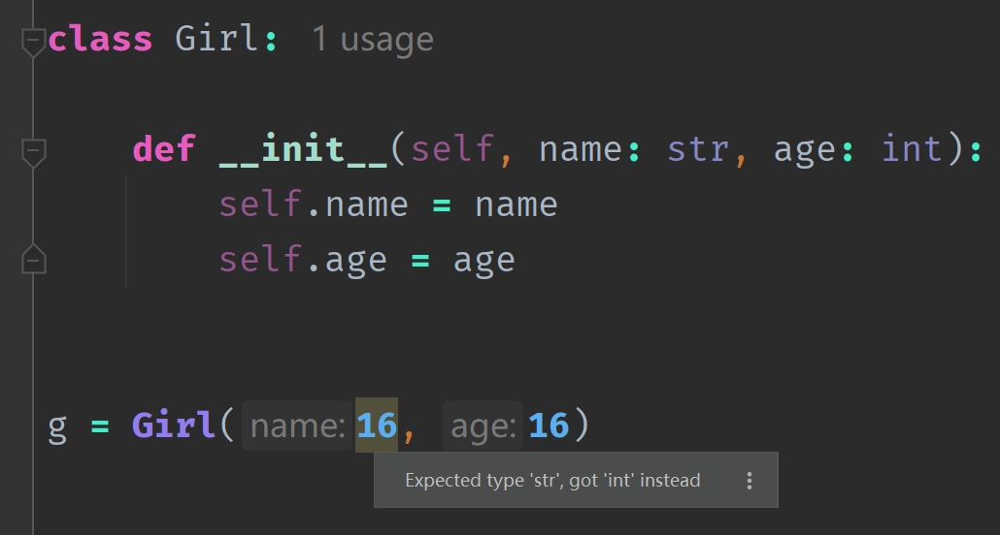
这里要求 name 是 str 类型，然而我们传入的值却是 int 类型，PyCharm 也很智能地提示我们类型不对。但我们就传入 int 类型的值，解释器能拿我们怎么样吗？显然不能，这个程序是可以正常执行的，因此类型注解并没有在语法层面上限制你。
但由于类型不对，导致的 bug 数不胜数。比如判断两个字符串是否相等，但其中一个是 bytes 类型，我们忘记 decode 了，那么显然就永远不会相等了。而在 Python 里面，这种做法又是合法的，因此就很容易产生意想不到的效果。比如 Instagram 公司在从 Python2 切换到 Python3 时就遇到过这个问题，这是该公司的工程师在 PyCon 2017 大会上分享的，有兴趣可以去看一看。
而对于静态语言来说，比如 Golang，就不会出现这个问题。因为在 Golang 里面 []byte 和 string 是不能比较的，编译时就不会通过。当然啦，这是由于语言的特性不同导致的，并没有说谁好谁坏。那么下面我们就来改造一下，让 Python 的类在实例化的时候也能像静态语言一样进行类型检查。
class TypeChecker:
def __init__(self, name, excepted_type):
self.name = name
self.excepted_type = excepted_type
def __get__(self, instance, owner):
return instance.__dict__[self.name]
def __set__(self, instance, value):
# 在赋值的时候，对 value 进行判断
# 如果 value 的类型是 self.excepted_type，那么合法，否则类型错误
if not isinstance(value, self.excepted_type):
tp = type(value).__name__
excepted_tp = self.excepted_type.__name__
raise TypeError(f"{self.name} 接收的值应该是 {excepted_tp} 类型，而不是 {tp} 类型")
instance.__dict__[self.name] = value
class Girl:
name = TypeChecker("name", str)
age = TypeChecker("age", int)
def __init__(self, name: str, age: int):
self.name = name
self.age = age
try:
g = Girl(16, 16)
except TypeError as e:
print(e) # name 接收的值应该是 str 类型, 而不是 int 类型
但是这么做还不够优雅，如果我们有大量的类都需要进行类型检测，那么每一个类里面都要提前声明好被描述符代理的属性。这会比较麻烦，于是可以考虑使用装饰器。
class TypeChecker:
def __init__(self, name, excepted_type):
self.name = name
self.excepted_type = excepted_type
def __get__(self, instance, owner):
return instance.__dict__[self.name]
def __set__(self, instance, value):
if not isinstance(value, self.excepted_type):
tp = type(value).__name__
excepted_tp = self.excepted_type.__name__
raise TypeError(f"{self.name} 接收的值应该是 {excepted_tp} 类型，而不是 {tp} 类型")
instance.__dict__[self.name] = value
def type_checker(cls):
# cls 就是要被 type_checker 装饰的类
# 拿到 __init__ 函数
__init__ = getattr(cls, "__init__", None)
# 如果 __init__ 为空，或者它不是一个函数，那么直接将类返回
if __init__ is None or not hasattr(__init__, "__code__"):
return cls
# 拿到 __init__ 函数的 __annotations__
annotations = cls.__init__.__annotations__
# 进行遍历，给类设置被描述符代理的属性
for name, excepted_type in annotations.items():
setattr(cls, name, TypeChecker(name, excepted_type))
return cls
# 以后在创建类的时候，直接打上这个装饰器就行了
# 但是显然这个装饰器依赖类型注解
# 如果没有类型注解的话，那么该属性是不会被代理的
@type_checker
class Girl:
def __init__(self, name: str, age: int):
self.name = name
self.age = age
try:
g = Girl(16, 16)
except TypeError as e:
print(e) # name 接收的值应该是 str 类型, 而不是 int 类型
怎么样，现在实现起来是不是更优雅一点了呢？
对了，我们上面一直在说 __get__、__set__，而把 __delete__ 忽略了。
class Descriptor:
def __get__(self, instance, owner):
print("__get__")
def __set__(self, instance, value):
print("__set__")
def __delete__(self, instance):
print("__delete__")
class Girl:
name = Descriptor()
g = Girl()
g.name = "satori"
"""
__set__
"""
g.name
"""
__get__
"""
del g.name
"""
__delete__
"""
显然在删除一个属性时，会执行 __delete__，比较简单，就不多说了。__delete__ 一般不会单独出现，而且事实上 __delete__ 用的也不多。
小结
以上就是描述符的全部内容了，这个功能总是容易被遗忘，但通过描述符我们可以实现很多炫酷的功能。所以 Python 里面的花活还是很多的，深入起来会发现不是那么简单，而像 Golang 虽然是静态语言，但它真的要比 Python 简单很多。
欢迎大家关注我的公众号：古明地觉的编程教室。
如果觉得文章对你有所帮助，也可以请作者吃个馒头，Thanks♪(･ω･)ﾉ。
本篇文章来聊一聊实例对象是如何创建的，这部分内容其实在最开始介绍对象关系模型的时候说过了，这里再来回顾一遍。我们知道创建实例对象有两种方式：
- 通过 Python / C API 创建，只适用于内置类对象的实例对象；
- 通过调用类型对象创建，适用于所有的实例对象；
以创建列表为例：
lst1 = []
lst2 = list()
这两种都是合法的，但 lst1 指向的列表是通过 Python / C API 创建的，lst2 指向的列表是通过调用类型对象创建的。
在工作中，更推荐使用 Python / C API 创建。因为内置类对象的实例对象，在底层是预先定义好的，结构体内部有哪些字段已经写死了，直接创建就行了，所以它的速度比调用类型对象要快。而解释器也能区分出实例对象的种类，比如看到 [] 时，就知道是列表；看到 () 时，就知道是元组；看到 {} 时，就知道是字典。
而通过 Python / C API 创建虽然更快，但这是内置类对象的实例对象才享有的特权。对于自定义类而言，想创建其实例对象，只能通过调用类型对象的方式。这是显而易见的，因为解释器不可能把我们自定义类的实例对象在底层预先定义好。
相信实例对象的创建应该大致了解了，下面我们就来看一下具体的实现细节，这里针对的是第二种创建方式。因为通过 Python / C API 创建没什么复杂的，调用类型对象创建才是我们的重点，而这种方式也是所有的实例对象都支持的。
下面就以自定义类对象为例，看看实例对象是如何创建的。
class Girl:
def __init__(self, name, age):
self.name = name
self.age = age
g = Girl("satori", 16)
编译之后的字节码如下，这里只看模块的字节码。
// 加载内置函数 __build_class__
0 LOAD_BUILD_CLASS
// 加载 Girl 的 PyCodeObject
2 LOAD_CONST 0 (<code object Girl at 0x7f9...>)
// 加载名称 "Girl"
4 LOAD_CONST 1 ('Girl')
// 构建函数
6 MAKE_FUNCTION 0
// 再次加载名称 "Girl"
8 LOAD_CONST 1 ('Girl')
// 以 PyFunctionObject 和 "Girl" 为参数
// 调用 __build_class__ 构建 PyTypeObject
10 CALL_FUNCTION 2
// 将构建的类使用变量 Girl 保存
12 STORE_NAME 0 (Girl)
// 这里对应 g = Girl("satori", 16)
// 加载变量 Girl，指向一个类对象
14 LOAD_NAME 0 (Girl)
// 加载参数 "satori" 和 16
16 LOAD_CONST 2 ('satori')
18 LOAD_CONST 3 (16)
// 调用，即便调用的是类，指令也是 CALL_FUNCTION
20 CALL_FUNCTION 2
// 将返回值（实例）交给变量 g 保存
22 STORE_NAME 1 (g)
// return None
24 LOAD_CONST 4 (None)
26 RETURN_VALUE
字节码非常简单，而且调用一个类和调用一个函数，字节码是类似的。都是将自身和参数依次 LOAD 进来，然后 CALL_FUNCTION。执行完毕之后，模块的名字空间如下：

调用对象，本质上是执行对应类对象的 __call__。因此，在 Python 里面调用类对象会执行 type.__call__，而在 __call__ 里面会执行类对象的 __new__ 创建实例对象，然后执行 __init__（如果存在）给实例绑定属性，最后返回。
而对应虚拟机的层面，在 CALL_FUNCTION 中，显然会执行 &PyType_Type 的 tp_call，而在 tp_call 中会执行类对象的 tp_new 创建实例对象，然后执行 tp_init（如果存在）给实例绑定属性，最后返回。
但需要注意的是，Girl 这个类本身是没有 __new__ 的。在创建它时，虚拟机会调用 PyType_Ready 进行初始化，而其中一项动作就是继承基类，所以 Girl.__new__ 实际上就是 object.__new__。
class Girl:
def __init__(self, name, age):
self.name = name
self.age = age
print(Girl.__new__ is object.__new__) # True
而当我们重写 __new__ 时，最后也需要调用 object.__new__(cls) 来为实例开辟内存。
object 在底层对应 &PyBaseObject_Type，object.__new__ 对应 object_new。
因此创建类对象和创建实例对象的不同之处就在于 tp_new 不同。创建类对象，虚拟机调用的是 type_new；创建实例对象，虚拟机则调用 object_new。至于字节码指令，两者是一致的。下面我们看一下源码，由于调用类对象会执行元类的 tp_call（对应 type_call），我们就从这看起。话说这部分源码记得之前看过了，这里再简单回顾一下。
static PyObject *
type_call(PyTypeObject *type, PyObject *args, PyObject *kwds)
{
// ...
// 调用类型对象的 __new__ 为实例申请内存
obj = type->tp_new(type, args, kwds);
// ...
// 判断是否定义了初始化函数 __init__
type = Py_TYPE(obj);
if (type->tp_init != NULL) {
// 如果有 __init__，则执行
int res = type->tp_init(obj, args, kwds);
if (res < 0) {
assert(PyErr_Occurred());
Py_DECREF(obj);
obj = NULL;
}
else {
assert(!PyErr_Occurred());
}
}
// 返回实例
return obj;
}
注意里面的 tp_init，因为新式类都继承 object，所以在执行 PyType_Ready 时也会继承 &PyBaseObject_Type 的 object_init 操作。
但正如我们之前说的那样，因为类重写了 __init__，所以会调用 fixup_slot_dispatchers ，让 tp_init 指向 slotdef 中与 __init__ 对应的 slot_tp_init。并且还会设置tp_alloc，这与内存分配有关，而这些都是在 type_new 中发生的，来看一下。
static PyObject *
type_new(PyTypeObject *metatype, PyObject *args, PyObject *kwds)
{
// ........
// 调用 type_new 创建类对象，这里的变量 type 便指向创建的类
// 然后注意 tp_alloc 字段，它维护一个内存分配函数
// 当为实例对象分配内存时，使用的就是 tp_alloc
// 调用类对象会执行 object_new，在里面会执行内存分配函数 tp_alloc
// 而在代码中，它被设置为 PyType_GenericAlloc，接收一个类型作为参数
// 调用时会根据传入的类型为其实例分配内存，因为类型包含了实例的元信息
// 另外创建完实例之后，还会将实例的 ob_type 设置为传入的类型
type->tp_alloc = PyType_GenericAlloc;
type->tp_free = PyObject_GC_Del;
type->tp_traverse = subtype_traverse;
type->tp_clear = subtype_clear;
// ...
// 将 object 的 tp_init 改成 slot_tp_init
fixup_slot_dispatchers(type);
// ...
}
经过 fixup_slot_dispatchers 改造之后，自定义类的 tp_init 会指向 slot_tp_init，而在 slot_tp_init 中会去寻找我们自定义的 __init__。
static int
slot_tp_init(PyObject *self, PyObject *args, PyObject *kwds)
{
_Py_IDENTIFIER(__init__);
int unbound;
// 虚拟机会调用 lookup_method 函数，从自定义类对象的 MRO 中搜索属性 __init__
PyObject *meth = lookup_method(self, &PyId___init__, &unbound);
PyObject *res;
if (meth == NULL)
return -1;
// 调用
if (unbound) {
res = _PyObject_Call_Prepend(meth, self, args, kwds);
}
else {
res = PyObject_Call(meth, args, kwds);
}
Py_DECREF(meth);
if (res == NULL)
return -1;
// 如果返回的不是 None，那么报错，这个信息熟悉不
if (res != Py_None) {
PyErr_Format(PyExc_TypeError,
"__init__() should return None, not '%.200s'",
Py_TYPE(res)->tp_name);
Py_DECREF(res);
return -1;
}
Py_DECREF(res);
return 0;
}
所以在定义类时，如果重写了 __init__ 函数，那么创建实例对象时搜索的结果就是重写后的函数；如果没有重写那么执行 object 的 __init__ 操作，而在 object 的 __init__ 中，虚拟机则什么也不做，会直接返回。
到了这里可以小结一下，类对象创建实例对象的两个步骤：
- instance = cls.__new__(cls, *args, **kwargs)
- cls.__init__(instance, *args, **kwargs)，如果一个类没有 __init__，那么就没有这一步，比如 tuple
需要注意的是，对于 metaclass（元类）创建类对象，这两个步骤同样是适用的。因为 metaclass 创建类对象的过程和类对象创建实例对象是一样的，我们说 class 具有二象性。
欢迎大家关注我的公众号：古明地觉的编程教室。
如果觉得文章对你有所帮助，也可以请作者吃个馒头，Thanks♪(･ω･)ﾉ。
楔子
之前在讨论名字空间的时候提到，在 Python 中，形如 x.y 样式的表达式被称之为属性引用，其中 x 指向某个对象，y 为对象的某个属性。
那么下面来看看虚拟机是怎么实现属性引用的？
属性引用
还是看一个简单的类，然后观察它的字节码。
class Girl:
def __init__(self):
self.name = "satori"
self.age = 16
def get_info(self):
return f"name: {self.name}, age: {self.age}"
g = Girl()
# 获取 name 属性
name = g.name
# 获取 get_info 方法并调用
g.get_info()
想要了解背后都发生了什么，最直接的途径就是查看字节码，这里只看模块对应的字节码。
// class Girl: 对应的字节码，这里就不赘述了
0 LOAD_BUILD_CLASS
2 LOAD_CONST 0 (<code object Girl at 0x7f9562476240, file "", line 2>)
4 LOAD_CONST 1 ('Girl')
6 MAKE_FUNCTION 0
8 LOAD_CONST 1 ('Girl')
10 CALL_FUNCTION 2
12 STORE_NAME 0 (Girl)
// g = Girl() 对应的字节码，不再赘述
14 LOAD_NAME 0 (Girl)
16 CALL_FUNCTION 0
18 STORE_NAME 1 (g)
// name = g.name 对应的字节码
// 加载变量 g
20 LOAD_NAME 1 (g)
// 获取 g.name，加载属性用的是 LOAD_ATTR
22 LOAD_ATTR 2 (name)
// 将结果交给变量 name 保存
24 STORE_NAME 2 (name)
// g.get_info() 对应的字节码
// 加载变量 g
26 LOAD_NAME 1 (g)
// 获取方法 g.get_info，加载方法用的是 LOAD_METHOD
28 LOAD_METHOD 3 (get_info)
// 调用方法，注意指令是 CALL_METHOD，不是 CALL_FUNCTION
// 但显然 CALL_METHOD 内部也是调用了 CALL_FUNCTION
30 CALL_METHOD 0
// 从栈顶弹出返回值
32 POP_TOP
34 LOAD_CONST 2 (None)
36 RETURN_VALUE
除了 LOAD_METHOD 和 LOAD_ATTR，其它的指令我们都见过了，因此下面重点分析这两条指令。
case TARGET(LOAD_METHOD): {
// 从符号表中获取符号，因为是 g.get_info
// 那么这个 name 就指向字符串对象 "get_info"
PyObject *name = GETITEM(names, oparg);
// 获取栈顶元素 obj，显然这个 obj 就是代码中的实例对象 g
PyObject *obj = TOP();
// meth 是一个 PyObject * 指针，显然它要指向一个方法
PyObject *meth = NULL;
// 这里是获取和 "get_info" 绑定的方法，然后让 meth 指向它
// 具体做法是调用 _PyObject_GetMethod，传入二级指针 &meth
// 然后让 meth 存储的地址变成指向具体方法的地址
int meth_found = _PyObject_GetMethod(obj, name, &meth);
//如果 meth == NULL，raise AttributeError
if (meth == NULL) {
/* Most likely attribute wasn't found. */
goto error;
}
// 注意：无论是 Girl.get_info、还是 g.get_info，对应的指令都是 LOAD_METHOD
// 类去调用的话，说明得到的是一个未绑定的方法，说白了就等价于函数
// 实例去调用的话，会得到一个绑定的方法，相当于对函数进行了封装
// 关于绑定和未绑定我们后面会详细介绍
if (meth_found) {
// 如果 meth_found 为 1，说明 meth 是一个绑定的方法，obj 就是 self
// 将 meth 设置为栈顶元素，然后再将 obj 压入栈中
SET_TOP(meth);
PUSH(obj); // self
}
else {
// 否则说明 meth 是一个未绑定的方法
// 那么将栈顶元素设置为 NULL，然后将 meth 压入栈中
SET_TOP(NULL);
Py_DECREF(obj);
PUSH(meth);
}
DISPATCH();
}
获取方法是 LOAD_METHOD 指令 ，获取属性则是 LOAD_ATTR 指令，来看一下。
case TARGET(LOAD_ATTR): {
// 可以看到和 LOAD_METHOD 本质上是类似的，但更简单一些
// name 依旧是符号，这里指向字符串对象 "name"
PyObject *name = GETITEM(names, oparg);
// 从栈顶获取变量 g
PyObject *owner = TOP();
// res 显然就是属性的值了，即 g.name
// 通过 PyObject_GetAttr 进行获取
PyObject *res = PyObject_GetAttr(owner, name);
Py_DECREF(owner);
// 设置为栈顶元素
SET_TOP(res);
if (res == NULL)
goto error;
DISPATCH();
}
所以这两个指令本身是很简单的，而核心在 PyObject_GetAttr 和 _PyObject_GetMethod 上面，前者用于获取属性、后者用于获取方法。先来看一下 PyObject_GetAttr 具体都做了什么事情。
// Objects/object.c
PyObject *
PyObject_GetAttr(PyObject *v, PyObject *name)
{
// v: 对象，name: 属性名
// 获取实例对象 v 的类型对象
PyTypeObject *tp = Py_TYPE(v);
// name 必须是一个字符串
if (!PyUnicode_Check(name)) {
PyErr_Format(PyExc_TypeError,
"attribute name must be string, not '%.200s'",
name->ob_type->tp_name);
return NULL;
}
// 通过类型对象的 tp_getattro 字段获取实例对应的属性
if (tp->tp_getattro != NULL)
return (*tp->tp_getattro)(v, name);
// tp_getattr 和 tp_getattro 功能一样，但后者可以支持中文
if (tp->tp_getattr != NULL) {
const char *name_str = PyUnicode_AsUTF8(name);
if (name_str == NULL)
return NULL;
return (*tp->tp_getattr)(v, (char *)name_str);
}
// 属性不存在，抛出异常
PyErr_Format(PyExc_AttributeError,
"'%.50s' object has no attribute '%U'",
tp->tp_name, name);
return NULL;
}
PyTypeObject 里面定义了两个与属性访问相关的操作：tp_getattro 和 tp_getattr。其中前者是优先选择的属性访问动作，而后者已不推荐使用。这两者的区别在 PyObject_GetAttr 中已经显示得很清楚了，主要在属性名的使用上。
- tp_getattro 所使用的属性名是一个 PyUnicodeObject *；
- 而 tp_getattr 所使用的属性名是一个 char *。
如果这两个字段同时被定义，那么优先使用 tp_getattro。问题来了，自定义类对象的 tp_getattro 对应哪一个 C 函数呢？显然我们要去找 object。
object 在底层对应 PyBaseObject_Type，它的 tp_getattro 为 PyObject_GenericGetAttr，因此虚拟机在创建 Girl 这个类时，也会将此操作继承下来。
// Objects/object.c
PyObject *
PyObject_GenericGetAttr(PyObject *obj, PyObject *name)
{
return _PyObject_GenericGetAttrWithDict(obj, name, NULL, 0);
}
PyObject *
_PyObject_GenericGetAttrWithDict(PyObject *obj, PyObject *name,
PyObject *dict, int suppress)
{
// 拿到 obj 的类型对象，对于当前的例子来说，显然是 class Girl
PyTypeObject *tp = Py_TYPE(obj);
// 描述符
PyObject *descr = NULL;
// 返回值
PyObject *res = NULL;
// 描述符的 __get__
descrgetfunc f;
Py_ssize_t dictoffset;
PyObject **dictptr;
// name 必须是字符串
if (!PyUnicode_Check(name)){
PyErr_Format(PyExc_TypeError,
"attribute name must be string, not '%.200s'",
name->ob_type->tp_name);
return NULL;
}
Py_INCREF(name);
// 属性字典不为空，是初始化是否完成的重要标志
// 如果为空，说明还没有初始化，那么需要先初始化
if (tp->tp_dict == NULL) {
if (PyType_Ready(tp) < 0)
goto done;
}
// 从 mro 顺序列表中获取属性对应的值，并检测是否为描述符
// 如果属性不存在、或者存在但对应的值不是描述符，则返回 NULL
descr = _PyType_Lookup(tp, name);
f = NULL;
if (descr != NULL) {
Py_INCREF(descr);
// 如果 descr 不为 NULL，说明该属性被代理了
// descr 是描述符，f 就是它的 __get__ 方法
// f = descr.__class__.__get__
f = descr->ob_type->tp_descr_get;
// __get__ 对应 PyTypeObject 的 tp_descr_get
// __set__ 对应 PyTypeObject 的 tp_descr_set
// 如果 f 不为 NULL，并且 descr 是数据描述符
if (f != NULL && PyDescr_IsData(descr)) {
// 那么直接调用描述符的 __get__ 方法，返回结果
res = f(descr, obj, (PyObject *)obj->ob_type);
if (res == NULL && suppress &&
PyErr_ExceptionMatches(PyExc_AttributeError)) {
PyErr_Clear();
}
goto done;
}
}
// 走到这里说明要获取的属性没有被代理，或者说代理它的是非数据描述符
// 当然还有一种情况，这种情况上一篇文章貌似没提到
// 就是属性被数据描述符代理，但是该数据描述符没有 __get__
// 那么仍会优先从实例对象自身的 __dict__ 中寻找属性
if (dict == NULL) {
/* Inline _PyObject_GetDictPtr */
dictoffset = tp->tp_dictoffset;
// 如果 dict 为 NULL，并且 dictoffset 不为 0
// 说明继承自变长对象，那么要调整 tp_dictoffset
if (dictoffset != 0) {
if (dictoffset < 0) {
Py_ssize_t tsize;
size_t size;
tsize = ((PyVarObject *)obj)->ob_size;
if (tsize < 0)
tsize = -tsize;
size = _PyObject_VAR_SIZE(tp, tsize);
_PyObject_ASSERT(obj, size <= PY_SSIZE_T_MAX);
dictoffset += (Py_ssize_t)size;
_PyObject_ASSERT(obj, dictoffset > 0);
_PyObject_ASSERT(obj, dictoffset % SIZEOF_VOID_P == 0);
}
dictptr = (PyObject **) ((char *)obj + dictoffset);
dict = *dictptr;
}
}
// dict 不为 NULL，从属性字典中获取
if (dict != NULL) {
Py_INCREF(dict);
res = PyDict_GetItemWithError(dict, name);
if (res != NULL) {
Py_INCREF(res);
Py_DECREF(dict);
goto done;
}
else {
Py_DECREF(dict);
if (PyErr_Occurred()) {
if (suppress && PyErr_ExceptionMatches(PyExc_AttributeError)) {
PyErr_Clear();
}
else {
goto done;
}
}
}
}
// 程序走到这里，说明什么呢？显然意味着实例的属性字典里面没有要获取的属性
// 但如果下面的 f != NULL 成立，说明属性被代理了
// 并且代理属性的描述符是非数据描述符，它的优先级低于实例
// 所以实例会先到自身的属性字典中查找，找不到再去执行描述符的 __get__
if (f != NULL) {
// 第一个参数是描述符本身，也就是 __get__ 里面的 self
// 第二个参数是实例对象，也就是 __get__ 里面的 instance
// 第三个参数是类对象，也就是 __get__ 里面的 owner
res = f(descr, obj, (PyObject *)Py_TYPE(obj));
if (res == NULL && suppress &&
PyErr_ExceptionMatches(PyExc_AttributeError)) {
PyErr_Clear();
}
goto done;
}
// 程序能走到这里，说明属性字典里面没有要找的属性，并且也没有执行描述符的 __get__
// 但如果 describe 还不为 NULL，这说明什么呢？
// 显然该属性仍被描述符代理了，只是这个描述符没有 __get__，如果是这种情况，那么会返回描述符本身
if (descr != NULL) {
res = descr;
descr = NULL;
goto done;
}
// 找不到，就报错
if (!suppress) {
PyErr_Format(PyExc_AttributeError,
"'%.50s' object has no attribute '%U'",
tp->tp_name, name);
}
done:
Py_XDECREF(descr);
Py_DECREF(name);
return res;
}
这里面有两个我们上一篇文章没有提到的地方，下面补充一下：
class Descriptor:
def __set__(self, instance, value):
print("__set__")
class B:
name = Descriptor()
b = B()
# b 的属性字典没有 name，描述符也没有 __get__
# 那么这个时候会返回描述符本身
print(b.name) # <__main__.Descriptor object at 0x0...>
# 此时属性字典里面有 name 了
b.__dict__["name"] = "古明地觉"
# 由于 name 是被数据描述符代理的，按理说获取属性时会执行数据描述符的 __get__
# 但是这个数据描述符压根没有 __get__，因此还是会从属性字典中查找
print(b.name) # 古明地觉
以上就是获取属性的逻辑，很好理解，用一张流程图总结一下。

获取方法也与之类似，调用的是 _PyObject_GetMethod，这里就不再看了。
再论描述符
前面我们看到，在 PyType_Ready 中，虚拟机会填充 tp_dict，其中与操作名对应的是一个个的描述符。那时我们看到的是描述符这个概念在 Python 内部是如何实现的，现在我们将要剖析的是描述符在 Python 的类机制中究竟会起到怎样的作用。
虚拟机对自定义类对象或实例对象进行属性访问时，描述符将对属性访问的行为产生重大影响。一般而言，如果一个类存在 __get__、__set__、__delete__ 操作（不要求三者同时存在），那么它的实例便可以称之为描述符。在 slotdefs 中，我们会看到这三种魔法方法对应的操作。
TPSLOT("__get__", tp_descr_get, slot_tp_descr_get, wrap_descr_get,
"__get__($self, instance, owner, /)\n--\n\nReturn an attribute of instance, which is of type owner."),
TPSLOT("__set__", tp_descr_set, slot_tp_descr_set, wrap_descr_set,
"__set__($self, instance, value, /)\n--\n\nSet an attribute of instance to value."),
TPSLOT("__delete__", tp_descr_set, slot_tp_descr_set,
wrap_descr_delete,
"__delete__($self, instance, /)\n--\n\nDelete an attribute of instance."),
而在虚拟机访问实例对象的属性时，描述符的一个作用就是影响虚拟机对属性的选择。从 PyObject_GenericGetAttr 源码中可以看到，虚拟机会先在实例对象自身的 __dict__ 中寻找属性，也会在实例对象的类型对象的 mro 顺序列表中寻找属性，我们将前一种属性称之为实例属性，后一种属性称之为类属性。所以在属性的选择上，有如下规律：
- 虚拟机优先按照实例属性、类属性的顺序选择属性，即实例属性优先于类属性；
- 如果发现有一个同名、并且被数据描述符代理的类属性，那么该描述符会优先于实例属性被虚拟机选择；
这两条规则在对属性进行设置时仍然会被严格遵守，换句话说，如果执行 ins.xxx = yyy 时，在 type(ins) 中也出现了 xxx 属性、并且还被数据描述符代理了。那么不好意思，此时虚拟机会选择描述符，并执行它的 __set__ 方法；如果是非数据描述符，那么就不再走 __set__ 了，而是设置属性（因为压根没有 __set__），也就是 a.__dict__['xxx'] = yyy。
小结
以上就是实例对象的属性访问，但是还没结束，我们下一篇文章来重点讨论一下 self。
欢迎大家关注我的公众号：古明地觉的编程教室。
如果觉得文章对你有所帮助，也可以请作者吃个馒头，Thanks♪(･ω･)ﾉ。
楔子
上一篇文章介绍了实例对象的属性访问，那么本篇文章来讨论一下 self。我们知道实例在调用方法时，会自动将自身传给 self 参数，那么你有没有想过这背后的原理呢？下面就来详细分析一下。
函数变身
还是以之前的代码为例：
class Girl:
def __init__(self, name, age):
self.name = name
self.age = age
def get_info(self):
return f"name = {self.name}, age = {self.age}"
g = Girl("satori", 16)
res = g.get_info()
print(res) # name = satori, age = 16
我们在调用 g.get_info 的时候，并没有给 self 传递参数，那么 self 到底是不是真正有效的参数呢？还是说它仅仅只是一个语法意义上的占位符而已？
不用想，self 肯定是货真价实的参数，只不过自动帮你传递了。根据使用 Python 的经验，我们知道第一个参数就是实例本身，那么这是怎么实现的呢？想要弄清这一点，还是要从字节码入手。而调用方法的字节码是 CALL_METHOD，那么玄机就隐藏在这里面。

调用时的指令参数是 0，表示不需要传递参数。注意：这里说的不需要传递参数，指的是不需要我们手动传递。
case TARGET(CALL_METHOD): {
PyObject **sp, *res, *meth;
// 栈指针，指向运行时栈的栈顶
sp = stack_pointer;
meth = PEEK(oparg + 2);
// 如果 meth 为 NULL，说明是函数
if (meth == NULL) {
// 运行时栈从栈底到栈顶：NULL、callable、arg1、arg2、...、argN
res = call_function(tstate, &sp, oparg, NULL);
stack_pointer = sp;
(void)POP(); /* POP the NULL. */
}
// 否则说明是方法
else {
// 运行时栈从栈底到栈顶：method、self、arg1、arg2、...、argN
res = call_function(tstate, &sp, oparg + 1, NULL);
stack_pointer = sp;
}
PUSH(res);
if (res == NULL)
goto error;
DISPATCH();
}
为了对比，我们再把 CALL_FUNCTION 指令的源码贴出来。
case TARGET(CALL_FUNCTION): {
PREDICTED(CALL_FUNCTION);
PyObject **sp, *res;
sp = stack_pointer;
res = call_function(tstate, &sp, oparg, NULL);
stack_pointer = sp;
PUSH(res);
if (res == NULL) {
goto error;
}
DISPATCH();
}
通过对比发现了端倪，这两者都调用了 call_function，但是传递的参数不一样。如果是类调用，那么这两个指令是等价的；但如果是实例调用，CALL_METHOD 的第三个参数是 oparg + 1，而 CALL_FUNCTION 是 oparg。
背后的原因不需要多说，因为实例在调用时会将自身传给 self，所以参数个数应该是 oparg + 1。但是这还不足以支持我们找出问题所在，如果你仔细看一下函数的类型对象 PyFunction_Type，会发现里面隐藏着一个秘密。
PyTypeObject PyFunction_Type = {
PyVarObject_HEAD_INIT(&PyType_Type, 0)
"function",
sizeof(PyFunctionObject),
//...
//...
//注意注意注意，看下面这行
func_descr_get, /* tp_descr_get */
0, /* tp_descr_set */
offsetof(PyFunctionObject, func_dict), /* tp_dictoffset */
0, /* tp_init */
0, /* tp_alloc */
func_new, /* tp_new */
};
我们说 tp_descr_get 对应 __get__，而它被设置成了 func_descr_get，这意味着函数是一个描述符，因为它的类型对象实现了 __get__。
def func():
pass
print(func.__get__)
"""
<method-wrapper '__get__' of function object at 0x...>
"""
同理，实例对象 g 在调用 get_info 之前，肯定要先获取 get_info。而在获取的时候，显然会执行 get_info 的 __get__。也就是说，g.get_info 会得到什么，取决于 get_info 的 __get__ 会返回什么。那么函数的 __get__ 会返回什么呢？显然这要去 func_descr_get 函数中一探究竟。
// Objects/funcobject.c
static PyObject *
func_descr_get(PyObject *func, PyObject *obj, PyObject *type)
{
// 如果是类获取函数：那么 obj 为 NULL，type 为类对象本身
// 如果是实例获取函数：那么 obj 为实例，type 仍是类对象本身
// 如果 obj 为空，说明是类获取
// 那么直接返回 func 本身, 也就是原来的函数
if (obj == Py_None || obj == NULL) {
Py_INCREF(func);
return func;
}
// 如果是实例对象，那么调用 PyMethod_New
// 将函数和实例绑定在一起，得到一个 PyMethodObject 对象
return PyMethod_New(func, obj);
}
函数对应的结构体是 PyFunctionObject，那么 PyMethodObject 是啥应该不需要我说了，显然就是方法对应的结构体。所以类里面定义的就是单纯的函数，通过类去调用的话，和调用一个普通函数并无区别。
但是实例调用就不一样了，实例在拿到类的成员函数时，会先调用 PyMethod_New 将函数包装成方法，然后再对方法进行调用。
class Girl:
def __init__(self, name, age):
self.name = name
self.age = age
def get_info(self):
return f"name = {self.name}, age = {self.age}"
g = Girl("satori", 16)
print(Girl.get_info.__class__)
print(g.get_info.__class__)
"""
<class 'function'>
<class 'method'>
"""
在获取 get_info 时，会发现它被描述符代理了，而描述符就是成员函数本身。因为类型对象 PyFunction_Type 实现了 tp_descr_get，即 __get__，所以它的实例对象（函数）本质上就是个描述符。
因此无论是类还是实例，在调用时都会执行 func_descr_get。如果是类调用，那么实例 obj 为空，于是会将成员函数直接返回，因此类调用的就是函数本身。如果是实例调用，则执行 PyMethod_New，将 PyFunctionObject 包装成 PyMethodObject，然后调用，因此实例调用的是方法。
那么问题来了，方法在底层长什么样呢？可以肯定的是，方法也是一个对象，一个 PyObject。
// Include/classobject.h
typedef struct {
PyObject_HEAD
// 可调用的 PyFunctionObject 对象
PyObject *im_func;
// self 参数，即实例对象
PyObject *im_self;
// 弱引用列表，不做深入讨论
PyObject *im_weakreflist;
// 速度更快的矢量调用，因为方法和函数一样，肯定是要被调用的
// 所以它们都自己实现了一套调用方式：vectorcallfunc
// 而没有走类型对象的 tp_call
vectorcallfunc vectorcall;
} PyMethodObject;
所以方法就是对函数的一个封装，我们用 Python 举例说明：
class Girl:
def __init__(self, name, age):
self.name = name
self.age = age
def get_info(self):
return f"name = {self.name}, age = {self.age}"
g = Girl("satori", 16)
# 方法是对函数的封装
# 只不过里面不仅仅有函数，还有实例
method = g.get_info
# 拿到的是实例本身
print(method.__self__ is g) # True
# 拿到的是成员函数，也就是 Girl.get_info
print(method.__func__ is Girl.get_info) # True
print(
method()
==
Girl.get_info(g)
==
method.__func__(method.__self__)
) # True
而方法是在 PyMethod_New 中创建的，再来看看这个函数。
// Objects/classobjet.c
PyObject *
PyMethod_New(PyObject *func, PyObject *self)
{
PyMethodObject *im;
if (self == NULL) {
PyErr_BadInternalCall();
return NULL;
}
// 缓存池
im = free_list;
if (im != NULL) {
free_list = (PyMethodObject *)(im->im_self);
(void)PyObject_INIT(im, &PyMethod_Type);
numfree--;
}
// 缓冲池如果空了，直接创建 PyMethodObject 对象
else {
// 可以看到方法的类型在底层是 &PyMethod_Type
im = PyObject_GC_New(PyMethodObject, &PyMethod_Type);
if (im == NULL)
return NULL;
}
im->im_weakreflist = NULL;
Py_INCREF(func);
// im_func 指向 PyFunctionObject 对象
im->im_func = func;
Py_XINCREF(self);
// im_self 指向实例对象
im->im_self = self;
// 会通过 method_vectorcall 来对方法进行调用
im->vectorcall = method_vectorcall;
// 被 GC 跟踪
_PyObject_GC_TRACK(im);
return (PyObject *)im;
}
在 PyMethod_New 中，分别将 im_func，im_self 设置为函数、实例。因此通过 PyMethod_New 将函数、实例结合在一起，得到的 PyMethodObject 就是方法。并且我们还看到了 free_list，说明方法也使用了缓存池。
所以不管是类还是实例，获取成员函数时都会走描述符的 func_descr_get，然后在里面会判断是类获取还是实例获取。如果是类获取，直接返回函数本身；如果是实例获取，则通过 PyMethod_New 将函数和实例绑定起来得到方法，这个过程称为成员函数的绑定。

当然啦，调用方法本质上还是调用方法里面的 im_func，也就是函数。只不过会处理自动传参的逻辑，将内部的 im_self（实例）和我们传递的参数组合起来（如果没有传参，那么只有一个 im_self），然后整体传递给 im_func。
所以为什么实例调用方法的时候会自动传递第一个参数，此刻算是真相大白了。当然啦，以上只能说从概念上理解了，但是源码还没有看，下面就来看看具体的实现细节。
方法调用
通过字节码，我们知道 LOAD_METHOD 指令结束之后，便开始执行 CALL_METHOD。它和 CALL_FUNCTION 之间最大的区别就是：
- CALL_METHOD 针对的是 PyMethodObject 对象；
- CALL_FUNCTION 针对的是 PyFunctionObject 对象。
但是这两个指令调用的都是 call_function 函数，然后内部执行的也都是 Girl.get_info。因为执行方法，本质上还是执行方法里面的 im_func，只不过会自动将 im_self 和我们传递的参数组合起来，一起传给 im_func。
假设 obj 是 cls 的实例对象，那么 obj.xxx() 在底层会被翻译成 cls.xxx(obj)，前者只是后者的语法糖。
然后在 PyMethod_New 中，我们看到虚拟机给 im->vectorcall 赋值为 method_vectorcall，而方法调用的秘密就隐藏在里面。
// Objects/classobject.c
static PyObject *
method_vectorcall(PyObject *method, PyObject *const *args,
size_t nargsf, PyObject *kwnames)
{
assert(Py_TYPE(method) == &PyMethod_Type);
PyObject *self, *func, *result;
// 实例对象 self
self = PyMethod_GET_SELF(method);
// 方法里的成员函数
func = PyMethod_GET_FUNCTION(method);
// 参数个数
Py_ssize_t nargs = PyVectorcall_NARGS(nargsf);
//...
// 这里的代码比较有趣，一会单独说
// 总之它的逻辑就是将 self 和我们传递的参数组合起来
// 通过 _PyObject_Vectorcall 对 func 进行调用
// 所以 method_vectorcall 只是负责组装参数
// 真正执行的依旧是 PyFunctionObjec 的 _PyObject_Vectorcall
PyObject **newargs = (PyObject**)args - 1;
nargs += 1;
PyObject *tmp = newargs[0];
newargs[0] = self;
result = _PyObject_Vectorcall(func, newargs, nargs, kwnames);
newargs[0] = tmp;
//...
return result;
}
再来说说里面的具体细节，假设我们调用的不是方法，而是一个普通的函数，并且依次传入了 name、age、gender 三个参数，那么此时的运行时栈如下：

_PyObject_Vectorcall 的第一个参数就是要调用的函数 func；第二个参数是 args，指向给函数 func 传递的首个参数，至于到底给 func 传了多少个，则由第三个参数 nargs 指定。
但如果调用的不是函数，而是方法呢？我们仍以传入 name、age、gender 三个参数为例，解释一下源码的具体细节。
首先是 PyObject **newargs = (PyObject **)args - 1; ，这意味着什么呢？

然后 nargs += 1; 表示参数个数加 1，这很好理解，因为多了一个 self。
PyObject *tmp = newargs[0]; 做的事情也很简单，相当于将 name 的前一个元素保存了起来，赋值为 tmp。
关键来了，newargs[0] = self; 会将 name 的前一个元素设置为实例 self，此时运行时栈如下：

然后调用 _PyObject_Vectorcall，显然第二个参数就变成了 newargs，因为 name 前面多了一个 self，所以现在是 newargs 指向函数 func 的首个参数。而从 Python 的角度来说，就是将实例和我们给 func 传入的参数组装了起来。
调用完之后拿到返回值，非常 Happy。但需要注意的是，从内存布局上来讲，参数 name 的前面是没有 self 的容身之处的。而 self 之所以能挤进去，是因为它把参数 name 的前一个元素给顶掉了，至于被顶掉的元素到底是啥我们不得而知，也无需关注，它有可能是 free 区域里面的某个元素。总之关键的是，函数 func 调用完之后，还要再换回来，否则在逻辑上就相当于越界了。
所以通过 newargs[0] = tmp; 将 name 的前一个元素再替换回来。
但相比上面这种做法， 其实还有一个更通用的办法。

将我们传递的参数都向后移动一个位置，然后空出来的第一个位置留给 self，这样也是可以的。但很明显，此做法的效率不高，因为这是一个 O(N) 操作，而源码中的做法是 O(1)。所以底层实现一定要讲究效率，采用各种手段极限优化。因为 Python 语言的设计模式就决定了它的运行效率注定不高，如果虚拟机源码再写的不好的话，那么运行速度就真的不能忍了。
总结一下上面的内容，函数调用和方法调用本质上是一样的。方法里面的 im_func 字段指向一个函数，调用方法的时候底层还是会调用函数，只不过在调用的时候会自动把方法里面的 im_self 作为第一个参数传到函数里面去。而类在调用的时候，所有的参数都需要手动传递。
还是那句话：obj.xxx() 本质上就是 cls.xxx(obj)；而 cls.xxx() 仍是 cls.xxx()。
因此到了这里，我们可以在更高的层次俯视一下 Python 的运行模型了，最核心的模型非常简单，可以简化为两条规则：
- 1）在某个名字空间中寻找符号对应的对象
- 2）对得到的对象进行某些操作
抛开面向对象这些花里胡哨的外表，其实我们发现自定义类对象就是一个名字空间，实例对象也是一个名字空间。只不过这些名字空间通过一些特殊的规则连接在一起，使得符号的搜索过程变得复杂，从而实现了面向对象这种编程模式。
bound method 和 unbound method
当对成员函数进行引用时，会有两种形式：bound method 和 unbound method。
- bound method：被绑定的方法，说白了就是方法，PyMethodObject。比如实例获取成员函数，拿到的就是方法。
- unbound method：未被绑定的方法，说白了就是成员函数本身。比如类获取成员函数，拿到的还是成员函数本身，只不过对应的指令也是 LOAD_METHOD，所以叫未被绑定的方法。
因此 bound method 和 unbound method 的本质区别就在于成员函数有没有和实例绑定在一起，成为方法。前者完成了绑定动作，而后者没有完成绑定动作。
// Objects/funcobject.c
static PyObject *
func_descr_get(PyObject *func, PyObject *obj, PyObject *type)
{
// obj：相当于 __get__ 里面的 instance
// type：相当于 __get__ 里面的 owner
// 类获取成员函数，obj 为空，直接返回成员函数
// 所以它也被称为是 "未被绑定的方法"
if (obj == Py_None || obj == NULL) {
Py_INCREF(func);
return func;
}
// 实例获取，则会先通过 PyMethod_New 将成员函数 func 和实例 obj 绑定在一起
// 返回的结果被称为 "被绑定的方法"，简称方法
// 而 func 会交给方法的 im_func 字段保存，obj 则会交给方法的 im_self 字段保存
// im_func 和 im_self 对应 Python 里面的 __func__ 和 __self__
return PyMethod_New(func, obj);
}
我们用 Python 演示一下：
class Girl(object):
def get_info(self):
print(self)
g = Girl()
Girl.get_info(123) # 123
# 我们看到即便传入一个 123 也是可以的
# 这是我们自己传递的，传递什么就是什么
g.get_info() # <__main__.A object at 0x00...>
# 但 g.get_info() 就不一样了，它是 Girl.get_info(g) 的语法糖
# 被绑定的方法，说白了就是方法
# 方法的类型为 <class 'method'>，在底层对应 &PyMethod_Type
print(g.get_info) # <bound method Girl.get_info of ...>
print(g.get_info.__class__) # <class 'method'>
# 未被绑定的方法，这个叫法只是为了和"被绑定的方法"形成呼应
# 说白了它就是个成员函数，类型为 <class 'function'>
print(Girl.get_info) # <function Girl.get_info at 0x00...>
print(Girl.get_info.__class__) # <class 'function'>
我们说成员函数和实例绑定，会得到方法，这是没错的。但是成员函数不仅仅可以和实例绑定，和类绑定也是可以的。
class Girl(object):
@classmethod
def get_info(cls):
print(cls)
print(Girl.get_info)
print(Girl().get_info)
"""
<bound method Girl.get_info of <class '__main__.Girl'>>
<bound method Girl.get_info of <class '__main__.Girl'>>
"""
# 无论是实例调用还是类调用，第一个参数传进去的都是类
Girl.get_info()
Girl().get_info()
"""
<class '__main__.Girl'>
<class '__main__.Girl'>
"""
此时通过类去调用得到的不再是一个函数，而是一个方法，这是因为我们加上了 classmethod 装饰器。加上装饰器之后，get_info 就不再是原来的函数了，而是 classmethod(get_info)，也就是 classmethod 的实例对象。
然后 classmethod 在 Python 里面是一个类，它在底层对应的是 &PyClassMethod_Type，而 classmethod 的实例对象在底层对应的结构体也叫 classmethod。
// Objects/funcobject.c
typedef struct {
PyObject_HEAD
PyObject *cm_callable;
PyObject *cm_dict;
} classmethod;
由于 &PyClassMethod_Type 内部实现了 tp_descr_get，所以它的实例对象是一个描述符。

此时调用 get_info 会执行 <class 'classmethod'> 的 __get__，看一下 cm_descr_get 的具体实现：
// Objects/funcobject.c
static PyObject *
cm_descr_get(PyObject *self, PyObject *obj, PyObject *type)
{
// 这里的 self 就是 Python 里面的类 classmethod 的实例
// 只不过在虚拟机中，它的实例对应的结构体也叫 classmethod
classmethod *cm = (classmethod *)self;
if (cm->cm_callable == NULL) {
PyErr_SetString(PyExc_RuntimeError,
"uninitialized classmethod object");
return NULL;
}
// 如果 type 为空，让 type = Py_TYPE(obj)
// 所以不管是类调用还是实例调用，第一个参数都是类
if (type == NULL)
type = (PyObject *)(Py_TYPE(obj));
return PyMethod_New(cm->cm_callable, type);
}
所以当类在调用的时候，类也和函数绑定起来了，因此也会得到一个方法。不过被 classmethod 装饰之后，即使是实例调用，第一个参数传递的还是类本身，因为和函数绑定的是类、而不是实例。
但不管和函数绑定的是类还是实例，绑定之后的结果都叫方法。所以得到的究竟是函数还是方法，就看这个函数有没有和某个对象进行绑定，只要绑定了，那么它就会变成方法。至于调用我们就不赘述了，上面已经说过了。不管和函数绑定的是类还是实例，调用方式不变，唯一的区别就是第一个参数不同。
千变万化的描述符
当我们通过对象调用成员函数时，最关键的一个动作就是从 PyFunctionObject 对象到 PyMethodObject 对象的转变，而这个关键的转变就取决于描述符。当我们访问对象的被代理属性时，由于描述符的存在，这种转变自然而然地就发生了。
事实上，Python 的描述符很强大，我们可以使用它做很多事情。而在虚拟机层面，也存在各种各样的描述符，比如 property 实例、staticmethod 实例、classmethod 实例等等。这些描述符给 Python 的类机制赋予了强大的力量，具体源码就不分析了，可以参照上面介绍的 classmethod，我们直接在 Python 的层面，演示一下这三种描述符的具体用法。
property
property 可以让我们像访问属性一样去调用一个方法，举个栗子：
class Girl:
def __init__(self):
self.name = "satori"
self.age = 16
@property
def get_info(self):
return f"name: {self.name}, age: {self.age}"
g = Girl()
print(g.get_info) # name: satori, age: 16
print(Girl.get_info) # <property object at 0x00...>
我们并没有调用 get_info，结果它自动就调用了，就像访问属性一样。并且 property 是为实例对象准备的，如果是类调用，返回的就是描述符本身。那么这是怎么实现的呢？我们来演示一下。
class MyProperty:
def __init__(self, func):
self.func = func
def __get__(self, instance, owner):
# 当实例访问 get_info 的时候，本来应该被包装成方法的
# 但是现在被新的描述符代理了，所以会执行此处的 __get__
if instance is None:
# 如果 instance 为 None，证明是类调用，直接返回描述符本身
return self
# 否则调用 self.func，也就是 Girl 里面的 get_info
# 等价于 Girl.get_info(g)
self.func(instance)
class Girl:
def __init__(self):
self.name = "satori"
self.age = 16
# 等价于 get_info = MyProperty(get_info)
# 所以此时的 get_info 就被描述符代理了
@MyProperty
def get_info(self):
return f"name: {self.name}, age: {self.age}"
g = Girl()
print(g.get_info) # name: satori, age: 16
print(Girl.get_info) # <__main__.MyProperty object at 0x00...>
但是内置的 property 功能远不止这么简单。
class Girl:
def __init__(self):
self.__name = None
def fget(self):
return self.__name
def fset(self, value):
self.__name = value
def fdelete(self):
print("属性被删了")
del self.__name
user_name = property(fget, fset, fdelete, doc="这是 property")
g = Girl()
# 执行 fget
print(g.user_name) # None
# 执行 fset
g.user_name = "satori"
print(g.user_name) # satori
# 执行 fdelete
del g.user_name # 属性被删了
如果我们也想实现这个功能，该怎么做呢？
class MyProperty:
def __init__(self, fget=None, fset=None,
fdelete=None, doc=None):
self.fget = fget
self.fset = fset
self.fdelete = fdelete
self.doc = doc
def __get__(self, instance, owner):
# Girl.fget(g)
if isinstance is None:
return self
return self.fget(instance)
def __set__(self, instance, value):
# Girl.fset(g, value)
return self.fset(instance, value)
def __delete__(self, instance):
# Girl.fdelete(g)
return self.fdelete(instance)
class Girl:
def __init__(self):
self.__name = None
def fget(self):
return self.__name
def fset(self, value):
self.__name = value
def fdelete(self):
print("属性被删了")
del self.__name
user_name = MyProperty(fget, fset, fdelete, doc="这是property")
g = Girl()
# 执行 fget
print(g.user_name) # None
# 执行 fset
g.user_name = "satori"
print(g.user_name) # satori
# 执行 fdelete
del g.user_name # 属性被删了
可以看到，自定义的 MyProperty 和内置的 property 的表现是一致的。但是 property 还支持使用装饰器的方式。
class Girl:
def __init__(self):
self.__name = None
@property
def user_name(self):
return self.__name
@user_name.setter
def user_name(self, value):
self.__name = value
@user_name.deleter
def user_name(self):
print("属性被删了")
del self.__name
g = Girl()
print(g.user_name) # None
g.user_name = "satori"
print(g.user_name) # satori
del g.user_name # 属性被删了
如果我们想实现这一点也很简单。
class MyProperty:
def __init__(self, fget=None, fset=None,
fdelete=None, doc=None):
self.fget = fget
self.fset = fset
self.fdelete = fdelete
self.doc = doc
def __get__(self, instance, owner):
# 执行 @MyProperty 的时候
# 被 MyProperty 装饰的 user_name 会赋值给 self.fget
# 然后返回的 MyProperty(user_name) 会重新赋值给 user_name
if instance is None:
return self
return self.fget(instance)
def __set__(self, instance, value):
return self.fset(instance, value)
def __delete__(self, instance):
return self.fdelete(instance)
def setter(self, func):
# 调用 @user_name.setter，创建一个新的描述符
# 其它参数不变，但是第二个参数 fset 变为接收的 func
return type(self)(self.fget, func, self.fdelete, self.doc)
def deleter(self, func):
# 调用 @user_name.deleter，创建一个新的描述符
# 其它参数不变，但是第三个参数 fdelete 变为接收的 func
return type(self)(self.fget, self.fset, func, self.doc)
class Girl:
def __init__(self):
self.__name = None
# user_name = MyProperty(user_name)
# 调用时会触发描述符的 __get__
@MyProperty
def user_name(self):
return self.__name
# 被一个新的描述符所代理，这个描述符实现了__set__
# 给 g.user_name 赋值时，会触发 __set__
@user_name.setter
def user_name(self, value):
self.__name = value
# 被一个新的描述符所代理，这个描述符实现了 __delete__
# 删除 g.user_name 时，会触发 __delete__
@user_name.deleter
def user_name(self):
print("属性被删了")
del self.__name
g = Girl()
print(g.user_name) # None
g.user_name = "satori"
print(g.user_name) # satori
del g.user_name # 属性被删了
# 当然啦，user = MyProperty(...) 这种方式也是支持的
以上我们就手动实现了 property，虽然都知道怎么用，但当让你手动实现的时候，一瞬间是不是有点懵呢？
staticmethod
实例在获取成员函数时，会将其包装成方法，并在调用时将自身作为第一个参数传进去。但如果函数被 staticmethod 装饰，那么实例和类一样，在获取的时候拿到的就是函数本身。
class Girl:
def __init__(self):
self.name = "satori"
self.age = 16
# 被装饰之后，就是一个普通的函数
@staticmethod
def get_info():
return "info"
g = Girl()
print(g.get_info is Girl.get_info) # True
print(g.get_info) # <function Girl.get_info at 0x00...>
print(g.get_info()) # info
并且实例在调用的时候也不会将自身传进去了。然后我们来看看如何手动实现 staticmethod。
class StaticMethod:
def __init__(self, func):
self.func = func
def __get__(self, instance, owner):
# 静态方法的话，类和实例都可以用
# 因此不管是实例还是类，调用时直接返回 self.func 即可
# 这里的 self.func 就是 Girl.get_info
return self.func
class Girl:
def __init__(self):
self.name = "satori"
self.age = 16
@StaticMethod
def get_info():
return "info"
g = Girl()
print(g.get_info is Girl.get_info) # True
print(g.get_info) # <function Girl.get_info at 0x00...>
print(g.get_info()) # info
如果不是静态方法的话，那么 g.get_info() 本质上就是 Girl.get_info(g)。但现在我们不希望实例调用时将自身传过去，那么就让 g 在获取 get_info 时，返回 Girl.get_info 即可。
由于静态方法在调用时不会自动传参，那么也就意味着不需要使用 self 内部的属性。换言之，如果一个方法里面没有使用 self，那么它应该被声明为静态的。

在 get_info 里面直接返回了一个字符串，没有用到 self，那么第一个参数就是个摆设。所以 PyCharm 提示你，这个方法可以考虑声明为静态的。当然啦，此时是否静态都不影响，都能够正常调用。
classmethod
这个之前已经介绍过了，直接看代码吧。
class Girl:
name = "koishi"
age = 15
def __init__(self):
self.name = "satori"
self.age = 16
@classmethod
def get_info(cls):
# 此时拿到的是类属性
return f"name: {cls.name}, age: {cls.age}"
g = Girl()
print(g.get_info()) # name: koishi, age: 15
print(Girl.get_info()) # name: koishi, age: 15
一旦被 classmethod 装饰，那么就变成了类方法，此时无论是实例调用还是类调用，都会将类作为第一个参数传进去。由于传递的第一个参数是类，所以第一个参数的名称不再叫 self，而是叫 cls。当然，名字啥的都无所谓，没有影响，只是按照规范应该这么做。
然后我们用 Python 来模拟一下。
from functools import wraps
class ClassMethod:
def __init__(self, func):
self.func = func
def __get__(self, instance, owner):
# 返回一个闭包，然后当调用的时候，接收参数
@wraps(self.func)
def inner(*args, **kwargs):
# 调用的时候，手动将类、也就是 owner 传递进去
# 所以我们看到，函数被 classmethod 装饰之后
# 即使是实例调用，第一个参数传递的还是类本身
return self.func(owner, *args, **kwargs)
return inner
class Girl:
name = "koishi"
age = 15
def __init__(self):
self.name = "satori"
self.age = 16
@ClassMethod
def get_info(cls):
return f"name: {cls.name}, age: {cls.age}"
g = Girl()
print(g.get_info()) # name: koishi, age: 15
print(Girl.get_info()) # name: koishi, age: 15
类方法是为类准备的，但是实例也可以调用。
另外，类方法一般都用在初始化上面，举个栗子：
class Girl:
def __init__(self, name, age):
self.name = name
self.age = age
@classmethod
def create_girl(cls, name, age):
return cls(name, age)
def get_info(self):
return f"name: {self.name}, age: {self.age}"
g1 = Girl("satori", 16)
g2 = Girl.create_girl("koishi", 15)
print(g1.get_info()) # name: satori, age: 16
print(g2.get_info()) # name: koishi, age: 15
然后静态方法和类方法在继承的时候，也会直接继承过来。比如在调用父类的方法时，发现这是一个静态方法，那么得到的也是静态方法；同理，类方法和 property 亦是如此。
小结
以上我们就探讨了为什么实例调用方法时，会自动将自身传给 self，说白了就是因为描述符机制。像 property、staticmethod、classmethod 等等都是通过描述符来实现的，描述符在 Python 里面是一个很强大的机制，但使用的频率却不高，更多的是在一些框架的源码中出现。
到此，类相关的内容就算全部介绍完了，算是历经九九八十一难吧。当然啦，由于虚拟机是一个非常庞大的工程，这里无法涉及到边边角角的每一处细节。有兴趣的话，可以进入源码中自己探索一番，加深一遍印象。
欢迎大家关注我的公众号：古明地觉的编程教室。
如果觉得文章对你有所帮助，也可以请作者吃个馒头，Thanks♪(･ω･)ﾉ。
楔子
下面来聊一聊模块的导入机制，我们之前考察的所有内容都具有一个相同的特征，那就是它们都局限在一个 .py 文件中。然而现实中不可能只有一个 .py 文件，而是存在多个，而多个 .py 文件之间又存在引用和交互，这些也是程序的一个重要组成部分。那么这里我们就来分析一下，Python 中模块的导入机制。
首先在这里我们必须强调一点，一个单独的 .py 文件、或者 .pyc 文件、.pyd 文件，我们称之为一个模块 ；而多个模块组合起来放在一个目录中，这个目录我们称之为包。但不管是模块，还是包，在虚拟机的眼中，它们都是 PyModuleObject 结构体实例，类型为 PyModule_Type，而在 Python 中则都是一个 <class 'module'> 对象。
// Objects/moduleobject.c
PyTypeObject PyModule_Type = {
PyVarObject_HEAD_INIT(&PyType_Type, 0)
"module", /* tp_name */
sizeof(PyModuleObject), /* tp_basicsize */
0, /* tp_itemsize */
(destructor)module_dealloc, /* tp_dealloc */
0, /* tp_vectorcall_offset */
0, /* tp_getattr */
0, /* tp_setattr */
0, /* tp_as_async */
(reprfunc)module_repr, /* tp_repr */
0, /* tp_as_number */
0, /* tp_as_sequence */
0, /* tp_as_mapping */
0, /* tp_hash */
0, /* tp_call */
0, /* tp_str */
(getattrofunc)module_getattro, /* tp_getattro */
PyObject_GenericSetAttr, /* tp_setattro */
0, /* tp_as_buffer */
Py_TPFLAGS_DEFAULT | Py_TPFLAGS_HAVE_GC |
Py_TPFLAGS_BASETYPE, /* tp_flags */
module___init____doc__, /* tp_doc */
(traverseproc)module_traverse, /* tp_traverse */
(inquiry)module_clear, /* tp_clear */
0, /* tp_richcompare */
offsetof(PyModuleObject, md_weaklist), /* tp_weaklistoffset */
0, /* tp_iter */
0, /* tp_iternext */
module_methods, /* tp_methods */
module_members, /* tp_members */
0, /* tp_getset */
0, /* tp_base */
0, /* tp_dict */
0, /* tp_descr_get */
0, /* tp_descr_set */
offsetof(PyModuleObject, md_dict), /* tp_dictoffset */
module___init__, /* tp_init */
PyType_GenericAlloc, /* tp_alloc */
PyType_GenericNew, /* tp_new */
PyObject_GC_Del, /* tp_free */
};
// Python 的 <class 'module'> 对应底层的 PyModule_Type
// 而导入进来的模块对象则对应底层的 PyModuleObject
所以模块和包导入进来之后也是一个对象，下面我们通过 Python 来演示一下。
import os
import pandas
print(os)
print(pandas)
"""
<module 'os' from 'C:\\python38\\lib\\os.py'>
<module 'pandas' from 'C:\\python38\\lib\\site-packages\\pandas\\__init__.py'>
"""
print(type(os)) # <class 'module'>
print(type(pandas)) # <class 'module'>
因此不管是模块还是包，在 Python 中都是一样的，我们后面会详细说。总之它们都是一个 PyModuleObject，只不过为了区分，我们把单独的文件叫做模块，把包含文件的目录叫做包。但是在底层则并没有区分那么明显，它们都是一样的。
所以为了后续不产生歧义，我们这里做一个约定，从现在开始本系列中出现的模块，指的是单独的可导入文件；出现的包，指的是目录。而模块和包，我们都可以称之为 module 对象，因为这两者本来就是 <class 'module'> 的实例对象。
import 前奏曲
我们以一个简单的 import 为序幕，看看相应的字节码。
import dis
code_string = "import sys"
dis.dis(compile(code_string, "<file>", "exec"))
"""
1 0 LOAD_CONST 0 (0)
2 LOAD_CONST 1 (None)
4 IMPORT_NAME 0 (sys)
6 STORE_NAME 0 (sys)
8 LOAD_CONST 1 (None)
10 RETURN_VALUE
"""
字节码非常简单，import sys 这行代码对应指令 IMPORT_NAME，可以类比之前的 LOAD_NAME，表示将名字为 "sys" 的 module 对象加载进来，然后用变量 sys 保存。
当我们访问 sys.path 的时候，虚拟机就能很轻松地通过 sys 来获取 path 这个属性对应的值了。因此就像我们之前说的那样，创建函数、类、导入模块等等，它们本质上和通过赋值语句创建一个变量是没有什么区别的。
关键就是这个 IMPORT_NAME，我们看看它的实现，还记得从哪里看吗？我们说所有指令的实现都在 ceval.c 的那个无限 for 循环的巨型 switch 中。
case TARGET(IMPORT_NAME): {
// PyUnicodeObject 对象，比如 import sys，那么这个 name 就是字符串 "sys"
PyObject *name = GETITEM(names, oparg);
// 再看一下上面的字节码
// 在 IMPORT_NAME 之前有两个 LOAD_CONST，将 0 和 None 压入了运行时栈
// 因此这里会从运行时栈中获取到 None 和 0，然后分别赋值给 fromlist 和 level
// 至于这两个是干啥的，我们后面说
PyObject *fromlist = POP();
PyObject *level = TOP();
// 一个 PyModuleObject *，指向模块对象
PyObject *res;
// 调用 import_name，将该函数的返回值赋值给 res
res = import_name(tstate, f, name, fromlist, level);
Py_DECREF(level);
Py_DECREF(fromlist);
// 设置为栈顶元素，后续通过 STORE_NAME 将其弹出，交给变量 sys 保存
SET_TOP(res);
if (res == NULL)
goto error;
DISPATCH();
}
因此重点在 import_name 这个函数中，但是在此之前我们需要先关注一下 fromlist 和 level，而这一点可以从 Python 的层面来介绍。我们知道在 Python 里面导入一个模块直接通过 import 关键字即可， 但是除了 import，还可以使用内置函数 __import__ 来进行导入。这个 __import__ 是解释器使用的一个函数，不推荐我们直接使用，但 import os 在虚拟机看来就是 os = __import__("os")。
os = __import__("os")
SYS = __import__("sys")
print(os) # <module 'os' from 'C:\\python38\\lib\\os.py'>
print(SYS.prefix) # C:\python38
但是问题来了：
m1 = __import__("os.path")
print(m1) # <module 'os' from 'C:\\python38\\lib\\os.py'>
# 我们惊奇地发现，返回的居然还是 os 模块
# 按理说应该是 os.path（windows 系统对应 ntpath）才对啊
m2 = __import__("os.path", fromlist=[""])
print(m2) # <module 'ntpath' from 'C:\\python38\\lib\\ntpath.py'>
# 你看到了什么，我们加上一个 fromlist，就能导入子模块
为什么会这样呢？我们来看看 __import__ 这个函数的解释，这个是 PyCharm 给抽象出来的。

大意就是，此函数会由 import 语句调用，当执行 import 的时候，解释器底层会调用 __import__。比如 import os 表示将 "os" 这个字符串传入 __import__ 函数中，从指定目录加载 os.py，当然也可能是 os.pyd、或者一个名为 os 的目录，然后得到一个 module 对象，并将返回值赋值给变量 os，也就是 os = __import__("os")。虽然可以通过这种方式来导入模块，但是 Python 不建议我们这么做。
然后 globals 参数则是确定 import 语句包的上下文，一般直接传 globals() 即可，而 locals 参数基本不用，不过一般情况下 globals 和 locals 我们都不用管。
总之 __import__("os.path") 导入的不是 os.path，而还是 os 这个外层模块。如果想导入 os.path，那么只需要给 fromlist 传入一个非空列表即可，当然不仅仅是非空列表，只要是一个非空的可迭代对象就行。然后是 level 参数，如果 level 是 0，那么表示仅执行绝对导入；如果是一个正整数，表示要搜索的父目录的数量，也就是相对导入。
因此当包名是一个动态字符串的时候，我们就没办法使用 import 关键字了，这时就可以使用 __import__ 手动导入。但是官方不推荐这么做，因为这是给解释器用的，官方推荐我们用 importlib。
import importlib
a = "pandas"
pd = importlib.import_module(a)
# 很方便地就导入了，直接通过字符串的方式导入一个 module 对象
print(pd)
"""
<module 'pandas' from 'C:\\python38\\lib\\site-packages\\pandas\\__init__.py'>
"""
# 如果想导入 "模块中导入的模块"
# 比如: 模块 a 中导入了模块 b，我们希望导入 a.b
# 或者导入一个包下面的子模块，比如 pandas.core.frame
sub_mod = importlib.import_module("pandas.core.frame")
# 我们看到可以自动导入 pandas.core.frame
print(sub_mod)
"""
<module 'pandas.core.frame' from 'C:\\python38\\lib\\site-packages\\pandas\\core\\frame.py'>
"""
# 但如果是 __import__，默认的话是不行的，导入的依旧是最外层的 pandas
print(__import__("pandas.core.frame"))
"""
<module 'pandas' from 'C:\\python38\\lib\\site-packages\\pandas\\__init__.py'>
"""
# 可以通过给 fromlist 指定一个非空列表来实现
print(__import__("pandas.core.frame", fromlist=[""]))
"""
<module 'pandas.core.frame' from 'C:\\python38\\lib\\site-packages\\pandas\\core\\frame.py'>
"""
上面的导入方式虽然很方便，但有一个要求，就是导入的模块必须位于搜索路径之下。举个栗子，假设我们的项目在 D 盘，但是有一个 test.py 模块位于 F 盘，这时候该怎么做呢？
# 有一个文件 F:\mashiro\test.py，我们如何才能将它导入进来呢？
from importlib.machinery import SourceFileLoader
# 第一个参数是模块名，第二个参数是模块的路径
# 这样就可以实现导入了，所以这是基于文件路径进行加载的
# 这个做法能够保证无论文件在什么地方，都可以进行导入
test = SourceFileLoader("test", r"F:\mashiro\test.py").load_module()
# 但有一点需要注意，如果是导入包的话，那么要导入包里面的 __init__.py 文件
pd = SourceFileLoader(
"我是 pandas 模块",
r"C:\python38\lib\site-packages\pandas\__init__.py"
).load_module()
print(pd.DataFrame({"a": [1, 2, 3], "b": [4, 5, 6]}))
"""
a b
0 1 4
1 2 5
2 3 6
"""
# 如果只写到 pandas，那么会抛出 PermissionError，因为我们不能把目录当成文件来读取
# 至于 import 一个包，本质上也是加载包内部的 __init__.py
# 但上面这个类只能加载 py 文件，如果想加载 pyc、pyd 文件，需要用下面两个类
# 但需要注意的是，加载普通文件和 pyc 文件时，我们可以随便起名字，也就是第一个参数任意
# 但对于 pyd 文件，第一个参数必须和 pyd 文件的名字保持一致。
from importlib.machinery import SourcelessFileLoader # pyc
from importlib.machinery import ExtensionFileLoader # pyd
或者我们还可以通过 exec 的方式创建。
# ModuleType = type(sys)
from types import ModuleType
print(ModuleType) # <class 'module'>
# 类对象有了，下面就可以创建了，module 类接收两个参数
# 参数一：模块的名字，必须传递
# 参数二：模块的 doc，不传默认为 None
os = ModuleType("我是 os 模块") # 此时的 os 里面啥也没有
with open(r"C:\python38\Lib\os.py", encoding="utf-8") as f:
source = f.read()
# 通过 exec 执行读取出来的字符串，然后将名字空间换成 os 的属性字典
exec(source, os.__dict__)
print(os.__name__) # 我是 os 模块
print(os.path.join("x", "y", "z")) # x\y\z
print(hasattr(os, "嘿")) # False
exec("嘿 = '蛤'", os.__dict__)
print(os.嘿) # 蛤
当然啦，也可以把一个自定义的类的实例变成模块，举个栗子：
import sys
from types import ModuleType
class MyModule(ModuleType):
def __init__(self, module_name):
super().__init__(module_name)
def __getattr__(self, item):
return f"不存在的属性: {item}"
def __setattr__(self, key, value):
self.__dict__[key] = value
def __str__(self):
return f"<module '{self.__name__}' from '我来自于虚无'>"
m = MyModule("MyModule")
print(m) # <module 'MyModule' from '我来自于虚无'>
print(m.__name__) # MyModule
print(m.hello) # 不存在的属性: hello
m.hello = "world"
print(m.hello) # world
# 加入到 sys.modules 中
sys.modules["嘿嘿"] = m
import 嘿嘿
print(嘿嘿.hello) # world
print(嘿嘿.xxx) # 不存在的属性: xxx
from 嘿嘿 import hello, a, b, c
print(hello) # world
print(a) # 不存在的属性: a
print(b) # 不存在的属性: b
print(c) # 不存在的属性: c
是不是很好玩呢？关于里面的一些细节，比如 sys.modules 是什么，后续会详细说。好了，扯了这么多，我们回到 IMPORT_NAME 这个指令，它是加载模块时对应的指令。在里面确定完参数之后，会调用 import_name，我们看看这个函数长什么样子。
// Python/ceval.c
static PyObject *
import_name(PyThreadState *tstate, PyFrameObject *f,
PyObject *name, PyObject *fromlist, PyObject *level)
{
_Py_IDENTIFIER(__import__);
PyObject *import_func, *res;
PyObject* stack[5];
// 获取内置函数 __import__
import_func = _PyDict_GetItemIdWithError(f->f_builtins, &PyId___import__);
// 为 NULL 表示获取失败，显然这些都是 Python 底层做的检测
// 我们使用时不会出现，如果出现，只能说明解释器出问题了
if (import_func == NULL) {
if (!_PyErr_Occurred(tstate)) {
_PyErr_SetString(tstate, PyExc_ImportError, "__import__ not found");
}
return NULL;
}
// 判断 __import__ 是否被重载了
if (import_func == tstate->interp->import_func) {
int ilevel = _PyLong_AsInt(level);
if (ilevel == -1 && _PyErr_Occurred(tstate)) {
return NULL;
}
// 未重载的话，调用 PyImport_ImportModuleLevelObject
res = PyImport_ImportModuleLevelObject(
name,
f->f_globals,
f->f_locals == NULL ? Py_None : f->f_locals,
fromlist,
ilevel);
return res;
}
Py_INCREF(import_func);
// 否则调用重载后的 __import__
stack[0] = name;
stack[1] = f->f_globals;
stack[2] = f->f_locals == NULL ? Py_None : f->f_locals;
stack[3] = fromlist;
stack[4] = level;
res = _PyObject_FastCall(import_func, stack, 5);
Py_DECREF(import_func);
return res;
}
然后我们看到底层又调用了 PyImport_ImportModuleLevelObject ，显然核心隐藏在这里面，来看一下它的实现。
//Python/import.c
PyObject *
PyImport_ImportModuleLevelObject(PyObject *name, PyObject *globals,
PyObject *locals, PyObject *fromlist,
int level)
{
_Py_IDENTIFIER(_handle_fromlist);
PyObject *abs_name = NULL;
PyObject *final_mod = NULL;
PyObject *mod = NULL;
PyObject *package = NULL;
PyInterpreterState *interp = _PyInterpreterState_GET_UNSAFE();
int has_from;
// 名字不可以为空
if (name == NULL) {
PyErr_SetString(PyExc_ValueError, "Empty module name");
goto error;
}
// 名字必须是 PyUnicodeObject
if (!PyUnicode_Check(name)) {
PyErr_SetString(PyExc_TypeError, "module name must be a string");
goto error;
}
if (PyUnicode_READY(name) < 0) {
goto error;
}
// level 不可以小于 0
if (level < 0) {
PyErr_SetString(PyExc_ValueError, "level must be >= 0");
goto error;
}
// level 大于 0，在相应的父目录中寻找，得到 abs_name
if (level > 0) {
abs_name = resolve_name(name, globals, level);
if (abs_name == NULL)
goto error;
}
else {
// 否则的话，说明 level == 0，因为 level 要求是一个大于等于 0 的整数
if (PyUnicode_GET_LENGTH(name) == 0) {
PyErr_SetString(PyExc_ValueError, "Empty module name");
goto error;
}
// 直接将 name 赋值给 abs_name，说明此时是绝对导入
abs_name = name;
Py_INCREF(abs_name);
}
// 优先从 sys.modules 中获取
mod = PyImport_GetModule(abs_name);
if (mod == NULL && PyErr_Occurred()) {
goto error;
}
// ...
// ...
// ...
else {
_Py_IDENTIFIER(__path__);
PyObject *path;
if (_PyObject_LookupAttrId(mod, &PyId___path__, &path) < 0) {
goto error;
}
if (path) {
Py_DECREF(path);
// 调用函数，导入模块
final_mod = _PyObject_CallMethodIdObjArgs(
interp->importlib, &PyId__handle_fromlist,
mod, fromlist, interp->import_func, NULL);
}
else {
final_mod = mod;
Py_INCREF(mod);
}
}
error:
Py_XDECREF(abs_name);
Py_XDECREF(mod);
Py_XDECREF(package);
if (final_mod == NULL) {
remove_importlib_frames(interp);
}
return final_mod;
}
还是很好理解的，关于 module 对象的导入，Python 也提供了非常丰富的写法。
import numpy
import numpy as np
import numpy.random as _random
from numpy import random
from numpy import random as _random
from numpy import *
从 import 的目标来说，可以是包，也可以是模块。而模块可以通过 .py 文件作为载体，也可以通过 .pyc 或者 .pyd 等二进制文件作为载体。
欢迎大家关注我的公众号：古明地觉的编程教室。
如果觉得文章对你有所帮助，也可以请作者吃个馒头，Thanks♪(･ω･)ﾉ。
楔子
同 C++ 的 namespace，Python 通过模块和包来实现对系统复杂度的分解，以及保护名字空间不受污染。通过模块和包，我们可以将某个功能、某种抽象进行独立的实现和维护，在 module 对象的基础之上构建软件。这样不仅使得软件的架构清晰，而且也能很好地实现代码复用。
标准 import
sys 这个模块恐怕是使用最频繁的 module 对象之一了，我们就从这位老铁入手。Python 有一个内置函数 dir，这个小工具是我们探测 import 的杀手锏。如果你在交互式环境下输入 dir()，那么会打印当前 local 名字空间里的所有符号，如果有参数，比如 dir(xx)，则输出 xx 指向对象的所有属性。我们先来看看 import 动作对当前名字空间的影响：
>>> dir()
['__annotations__', '__builtins__', '__doc__', '__loader__', '__name__', '__package__', '__spec__']
>>>
>>> import sys
>>>
>>> dir()
['__annotations__', '__builtins__', '__doc__', '__loader__', '__name__', '__package__', '__spec__', 'sys']
我们看到进行了 import 动作之后，当前的 local 名字空间增加了一个 sys 符号。
>>> type(sys)
<class 'module'>
而且通过 type 操作，我们看到这个 sys 符号指向一个 module对象，在底层它是一个 PyModuleObject。当然啦，虽然写着类型是 <class 'module'>，但是这个类无法直接使用，因为解释器没有将它暴露出来。不过它既然是一个 class，那么就一定继承 object，并且元类为 type。
>>> sys.__class__.__class__
<class 'type'>
>>> sys.__class__.__base__
<class 'object'>
这与我们的分析是一致的。言归正传，我们看到 import 机制影响了当前的 local 名字空间，使得加载的 module 对象在 local 空间成为可见的。而引用该 module 的方法正是通过 module 的名字，即这里的 sys。
实际上，这和我们创建一个变量是等价的，比如 a = 123，会先创建一个 PyLongObject，然后让变量 a 指向它。而上面的 import sys 也是同理，先创建一个 PyModuleObject，然后让变量 sys 指向它。
不过这里还有一个问题，来看一下：
>>> sys
<module 'sys' (built-in)>
我们看到 sys 是内置的，说明模块除了可以是真实存在的文件之外，还可以内嵌在解释器里面。但既然如此，那为什么不能直接使用，还需要导入呢？其实不光是 sys，在 Python 初始化的时候，就已经将一大批的 module 对象加载到了内存中。这些 module 对象都是使用 C 编写，并内嵌在解释器里面的，因为它们对性能的要求比较严苛，比如 _random、gc、_pickle 等等。
但是为了让当前 local 名字空间能够达到最干净的效果，Python 并没有将这些符号暴露在 local 名字空间中。而是需要开发者显式地通过 import 机制将符号引入到 local 名字空间之后，才能让程序使用符号背后的对象。
凡是加载进内存的 module 对象都会保存在 sys.modules 里面，尽管当前的 local 空间里面没有，但 sys.modules 里面是跑不掉的。
import sys
# sys.modules 是一个字典，里面保存了 "module 对象的名字" 到 "module 对象" 的映射
# 里面有很多模块，这里就不打印了，但令我感到意外的是，居然把 numpy 也加载进来了
modules = sys.modules
np = modules["numpy"]
arr = np.array([1, 2, 3, 4, 5])
print(np.sum(arr)) # 15
# os 模块我们没有导入，但是它已经在内存中了
# 虽然当前 local 空间没有，但它在 sys.modules 里面
os_ = modules["os"]
# 手动导入，会从 sys.modules 里面加载
import os
print(id(os) == id(os_)) # True
一开始这些 module 对象是不在 local 空间里面的，除非显式导入，但即便我们导入，这些 module 对象也不会被二次加载。因为在解释器启动后，它们就已经被加载到内存里面了，存放在 sys.modules 中。
因此对于已经在 sys.modules 里面的 module 对象来说，导入的时候只是将符号暴露到 local 空间里面去，所以代码中的 os 和 os_ 指向同一个 module对象。如果我们在 Python 启动之后，导入一个 sys.modules 中不存在的 module 对象，那么才会进行加载、然后同时进入 sys.modules 和 local 空间。
自定义 module
对于那些内嵌在解释器里面的 module 对象，如果 import，只是将符号暴露在了 local 名字空间中。下面我们看看对那些在初始化的时候没有加载到内存的 module 对象进行 import 的时候，会出现什么样的动作。
这里就以模块为例，当然正如我们之前说的，一个模块的载体可以是 py 文件或者二进制文件，而 py 文件可以是自己编写的、也可以是标准库中的、或者第三方库中的。那么下面我们就自己编写一个 py 文件作为例子，探探路。
# a.py
a = 1
b = 2
以上是 a.py，里面定义了两个变量，然后导入它。
import sys
print("a" in sys.modules) # False
import a
print("a" in sys.modules) # True
print(dir()) # [..., 'a', 'sys']
print(id(a)) # 2653299804976
print(id(sys.modules["a"])) # 2653299804976
print(type(a)) # <class 'module'>
type(a) 的结果表明 import 机制确实创建了一个新的 module对象，而且也正如我们之前所说，解释器对 a 指向的 module 对象进行导入时，会同时将其引入到 sys.modules 和当前的 local 名字空间中，它们指向的是同一个 PyModuleObject。然后我们再来看看这个 module对象：
import a
# 查看 a 里面的属性
print(dir(a))
"""
['__builtins__', '__cached__', '__doc__', '__file__', '__loader__',
'__name__', '__package__', '__spec__', 'a', 'b']
"""
print(a.__name__) # a
print(a.__file__) # D:\satori\a.py
可以看到，module 对象内部实际上是通过一个字典来维护所有的属性，里面有 module 的元信息（名字、文件路径）、以及 module 对象的内容。因为 module 对象本身就是 <class 'module'> 的实例对象，它有自己的属性字典，用来维护内部的属性。
另外，如果此时你查看 a.py 所在目录的 __pycache__ 目录，会发现里面有一个 a.pyc，说明解释器在导入的时候先生成了 pyc，然后再导入 pyc。
并且我们通过 dir(a) 查看的时候，发现里面有一个 __builtins__ 符号，那么这个 __builtins__ 和我们之前说的那个 __builtins__ 是一样的吗？
# 获取 builtins 可以通过 import builtins 的方式导入
# 但其实也可以通过 __builtins__ 获取
print(
id(__builtins__), type(__builtins__)
) # 140265846506256 <class 'module'>
print(
id(a.__dict__["__builtins__"]), type(a.__dict__["__builtins__"])
) # 140265846500608 <class 'dict'>
尽管它们都叫 __builtins__，但一个是 module对象，一个是字典。直接访问 __builtins__ 获取的是一个 module 对象，int、str、globals 和 __builtins__.int，__builtins__.str，__builtins__.globals 是等价的。
但 a.__dict__["__builtins__"] 是一个字典，这就说明两者从性质上就是不同的东西，但即便如此，就真的一点关系也没有吗？
import a
print(id(__builtins__.__dict__)) # 2791398177216
print(id(a.__dict__["__builtins__"])) # 2791398177216
我们看到还是有一点关系的，和类、类的实例对象一样，每一个 module 对象也有自己的属性字典 __dict__，记录了自身的元信息、里面存放的内容等等。对于 a.__dict__["__builtins__"] 来说，拿到的就是 __builtins__.__dict__。所以说 __builtins__ 是一个模块，但这个模块有一个属性字典，而这个字典可以通过 module对象.__dict__["__builtins__"] 来获取。
因为任何一个模块都可以使用 __builtins__ 里面的内容，并且所有模块对应的 __builtins__ 都是一样的。所以当你直接打印 a.__dict__ 的时候会输出一大堆内容，因为输出的内容里面不仅有当前模块的内容，还有 __builtins__.__dict__。
import a
# a.__dict__["__builtins__"] 就是 __builtins__.__dict__ 这个属性字典
# 而 __builtins__.__dict__["list"] 又是 __builtins__.list
# 说白了，就是我们直接输入的 list
print(a.__dict__["__builtins__"]["list"] is list) # True
print(
# 等价于 __builtins__.__dict__["list"]("abcd")
# 等价于 __builtins__.list("abcd")
# 等价于 list("abcd")
a.__dict__["__builtins__"]["list"]("abcd"),
) # ['a', 'b', 'c', 'd']
# 回顾之前的内容
# 我们说，模块名是在模块的属性字典里面
print(a.__dict__["__name__"] == a.__name__ == "a") # True
# __builtins__ 里面的 __name__ 就是 builtins
print(__builtins__.__dict__["__name__"]) # builtins
# 对于当前文件来说也是一个模块，它的 local 空间也有 __name__
# 并且如果它做为启动文件，那么 __name__ 会等于 "__main__"
# 如果是被导入的，那么它的 __name__ 会等于文件名
print(__name__) # __main__
# __main__ 也是一个模块
# 注意：如果这么做的话，那么该文件必须是启动文件
name = "古明地觉"
from __main__ import name as NAME
print(NAME) # 古明地觉
所以可以把模块的属性字典，看成是 local 空间（也是 global空间）、内置空间的组合。
嵌套 import
我们下面来看一下 import 的嵌套，所谓 import 的嵌套就是指 import a、但是在 a 中又 import b，我们来看看这个时候会发生什么有趣的动作。
# a.py
import tornado
在 a.py 中我们导入了 tornado 模块，然后再来导入 a。
import a
import sys
import tornado
print(
a.tornado is tornado is sys.modules["tornado"] is a.__dict__["tornado"]
) # True
首先 import a 之后，我们通过 a 这个符号是可以直接拿到其对应的模块的。但是在 a 中我们又 import tornado，那么通过 a.tornado 可以拿到 tornado 模块。
但第二次导入 tornado 的时候，会怎么样呢？首先在 a 中已经导入了 tornado，那么 tornado 就已经在 sys.modules 里面了。因此当再次导入 tornado 的时候，会直接从 sys.modules 里面查找，而不会二次加载。为了更直观的验证，我们再举一个例子：
# a.py
print(123)
# b.py
import a
# c.py
import a
以上是三个文件，每个文件只有一行代码，我们来导入 a、b、c。
import a
import b
import c
"""
123
"""
当导入一个不在 sys.modules 里面的模块时，会先从硬盘中加载相应的文件，然后逐行解释执行里面的内容，构建 PyModuleObject 对象，最后加入到 sys.modules 和 local 空间中。当第二次导入的时候，对应的模块已经存在 sys.modules 当中了，因此直接将符号暴露到当前的 local 空间里面即可，不会再执行里面的内容。
所以我们可以把 sys.modules 看成是一个大仓库，里面保存了模块名到模块对象的映射，任何导入的模块都在这里面。如果导入时，发现 sys.modules 里面已存在，那么直接通过字典获取即可，这样可以避免重复加载。

导入包
我们写的多个逻辑或者功能上相关的函数、类可以放在一个模块里面，那么多个模块是不是也可以组成一个包呢？如果说模块是管理 class、函数、变量的机制，那么包就是管理模块的机制。当然啦，多个小的包又可以聚合成一个更大的包。
因此在 Python 中，模块是由一个单独的文件来实现的，可以是 .py 文件、或者二进制文件。而对于包来说，则是一个目录，里面容纳了模块对应的文件，这种方式就是把多个模块聚合成一个包的具体实现。但不管是模块还是包，它们都是一个 module 对象，在虚拟机看来则都是 PyModuleObject 对象。关于这一点，一会儿会看的更加明显。
假设现在有一个名为 test_import 的包，里面有一个 a.py，内容如下。
a = 123
b = 456
print(">>>")
现在我们来导入它。
import test_import
print(test_import) # <module 'test_import' (namespace)>
在 Python2 中，这样是没办法导入的，因为如果一个目录要成为 Python 的包，那么里面必须要有一个 __init__.py 文件，但是在 Python3 中则没有此要求。而且我们发现 print 之后，显示的也是一个 module 对象，因此 Python 对模块和包的底层定义其实是很灵活的，并没有那么僵硬。
import test_import
print(test_import.a)
"""
AttributeError: module 'test_import' has no attribute 'a'
"""
然而此时神奇的地方出现了，调用 test_import.a 的时候，告诉我们没有 a 这个属性。很奇怪，test_import 里面不是有 a.py 吗？
原因是 Python 导入一个包，等价于导入包里的 __init__.py，只有属性在 __init__.py 文件中被导入了，我们才可以通过包名来访问。如果这个包里面没有 __init__.py 文件，那么你导入这个包，是什么属性也用不了的。
光说可能比较难理解，我们来演示一下。我们在 test_import 里面创建一个 __init__.py 文件，但是文件里面什么也不写。
import test_import
print(test_import)
"""
<module 'test_import' from 'D:\\satori\\test_import\\__init__.py'>
"""
此时又看到了神奇的地方，我们在 test_import 目录里面创建了 __init__.py 之后，再打印 test_import，得到的结果又变了，告诉我们这个包来自于包里面的 __init__.py 文件。所以就像之前说的，Python 对包和模块的概念区分的不是很明显，我们就把包当做该包下面的 __init__.py 文件即可，__init__.py 中定义了什么，那么这个包里面就有什么。
我们往 __init__.py 里面写点内容：
# test_import/__init__.py
import sys
from . import a
name = "satori"
from . import a 表示在 __init__.py 的同级目录中导入 a.py，但是问题来了，直接像 import sys 那样 import a 不行吗？答案是不行的，至于为什么我们后面说。
总之我们在 __init__.py 中导入了 sys 模块、a 模块，定义了 name 变量，那么就等于将 sys、a、name 加入到 test_import 这个包的 local 空间里面了。因为 Python 的包等价于它里面的 __init__.py 文件，这个文件有什么，那么这个包就有什么。
既然在 __init__.py 中导入了 sys、a，定义了 name，那么这个文件的属性字典里面、或者也可以说 local 空间里面就多了三个 entry，key 分别为 "sys"、"a"、"name"。而 __init__.py 里面有什么，那么通过包名就能够获取什么。
# 导入一个包会执行内部的 __init__.py
# 而在 __init__.py 里面导入了 a
# a 里面有一个 print，所以会直接执行
import test_import
"""
>>>
"""
print(test_import.a)
"""
<module 'test_import.a' from 'D:\\satori\\test_import\\a.py'>
"""
print(test_import.a.a) # 123
print(test_import.a.b) # 456
print(test_import.sys) # <module 'sys' (built-in)>
print(test_import.name) # satori
# 二次导入
import test_import
# 我们看到 a 里面的 print 没有打印，证明模块、包不管以怎样的方式被导入
# 对应的文件只会被加载一遍，第二次导入只是从 sys.modules 里面进行了一次键值对查找
相对导入与绝对导入
我们刚才使用了 from . import a 的方式导入模块 a，这个 . 表示当前文件所在的目录。因此这行代码的含义就是，我要导入 a 这个模块，不是从别的地方导入，而是从该文件所在的目录里面导入。如果是 .. 就表示当前文件所在目录的上一层目录，... 和 .... 依次类推。
另外模块 a 里面还有一个变量 a，那如果我想在 __init__.py 中导入这个变量该怎么办呢？很简单，直接 from .a import a 即可，表示导入当前目录里面的模块 a 里面的变量 a。
但如果我们导入的时候没有 . 的话，则表示绝对导入，虚拟机就会按照 sys.path 定义的路径进行查找。那么问题来了，假设我们在 __init__.py 中写的不是 from . import a，而是 import a，那么会发生什么后果呢？
import test_import
"""
import a
ModuleNotFoundError: No module named 'a'
"""
我们发现报错了，提示没有 a 这个模块，可是我们明明在包里面定义了呀。还记得之前说的导入一个模块、导入一个包会做哪些事情吗？导入一个模块，会将该模块里面的内容 "拿过来" 执行一遍，导入包会将该包里面的 __init__.py 文件 "拿过来" 执行一遍。注意：这里把 "拿过来" 三个字加上了引号。
我们在和 test_import 目录同级的 py 文件中导入了 test_import，那么就相当于把里面的 __init__ 拿过来执行一遍（当然只有第一次导入的时候才会这么做）。但是它们具有单独的空间，是被隔离的，访问时需要使用符号 test_import 来访问。
但是正如之前所说，是 "拿过来" 执行，所以这个 __init__.py 里面的内容是"拿过来"，在当前的 .py 文件（在哪里导入的就是哪里）中执行的。所以由于 import a 这行代码表示绝对导入，就相当于在当前模块里面导入，会从 sys.path 里面搜索，但模块 a 是在 test_import 包里面，那么此时还能找到这个 a 吗？显然是不能的，除非我们将 test_import 所在路径加入到 sys.path 中。
那 from . import a 为什么就好使呢？因为这种导入方式是相对导入，表示要在 __init__.py 所在目录里面找，那么不管在什么地方导入这个包，由于 __init__.py 的位置是不变的，所以 from . import a 这种相对导入的方式总能找到对应的 a。
至于标准库、第三方模块、第三方包，因为它们在 sys.path 里面，在哪儿都能找得到，所以直接绝对导入即可。并且我们知道每一个模块都有一个 __file__ 属性（除了内嵌在解释器里面的模块），当然包也是。如果你在一个模块里面 print(__file__)，那么不管在哪里导入这个模块，打印的永远是这个模块的路径；包的话，则是指向内部的 __init__.py 文件。
另外关于相对导入，一个很重要的一点，一旦一个模块出现了相对导入，那么这个模块就不能被执行了，它只可以被导入。
import sys
from . import a
name = "satori"
"""
from . import a
ImportError: attempted relative import with no known parent package
"""
此时如果试图执行 __init__.py，那么就会报出这个错误，所以出现相对导入的模块不能被执行，只能被导入。此外，导入一个内部具有"相对导入"的模块，还要求当前模块和被导入模块不能在同一个包内，我们要执行的当前模块至少在被导入模块的上一级，否则执行当前模块也会报出这种错误。
因此出现相对导入的模块要在一个包里面，然后在包外面使用，所以当前模块和出现相对导入的被导入模块绝对不能在同一个包里面。
import 的另一种方式
我们要导入 test_import 包里面的 a 模块，除了可以 import test_import（前提是 __init__.py 里面导入了 a）之外，还可以直接 import test_import.a。
另外如果是这种导入方式，那么包里面可以没有 __init__.py 文件。因为之前导入 test_import 包的时候，是通过 test_import 来获取 a，所以必须要有 __init__.py、并且里面导入 a。但是在导入 test_import.a 的时候，就是找 test_import.a，所以此时是可以没有 __init__.py文件的。
# test_import/__init__.py
__version__ = "1.0"
# test_import/a.py
name = "古明地觉"
print("古明地恋")
此时 test_import 包的 __init__.py 里面只定义了一个变量，下面我们来通过 test_import.a 的形式导入。
import test_import.a
print(test_import.a.name)
"""
古明地恋
古明地觉
"""
# 当 import test_import.a 的时候，会执行里面的 print
# 然后可以通过 test_import.a 获取 a.py 里面的属性，这很好理解
# 但是，没错，我要说但是了
print(test_import.__version__) # 1.0
惊了，我们在导入 test_import.a 的时候，也把 test_import 导入进来了，为了更直观地看到现象，我们在 __init__.py 里面打印一句话。
import test_import.a
"""
我是 test_import 下面的 __init__
古明地恋
"""
导入一个包等价于导入包里面的 __init__.py，而 __init__.py 里面的内容都可以通过包来获取。而打印结果显示在导入 test_import.a 时，会先把 test_import 导入进来。如果我们在 __init__.py 中也导入了 a 会怎么样？
# test_import/__init__.py
print("我是 test_import 下面的 __init__")
from . import a
# test_import/a.py
print("我是 test_import 下面的 a")
导入一下看看：
import test_import.a
"""
我是 test_import 下面的 __init__
我是 test_import 下面的 a
"""
我们看到 a.py 里面的内容只被打印了一次，说明没有进行二次加载，在 __init__.py 中将 a 导入进来之后，就加入到 sys.modules 里面了。再看一下 sys.modules：
import sys
import test_import.a
"""
我是 test_import 下面的 __init__
我是 test_import 下面的 a
"""
print(sys.modules["test_import"])
print(sys.modules["test_import.a"])
"""
<module 'test_import' from 'D:\\satori\\test_import\\__init__.py'>
<module 'test_import.a' from 'D:\\satori\\test_import\\a.py'>
"""
通过 test_import.a 的方式来导入，即使 test_import 里面没有 __init__.py 文件依旧可以访问。
不过问题来了，为什么在导入 test_import.a 的时候，会将 test_import 也导入进来呢？并且还可以直接使用 test_import，毕竟这不是我们期望的结果。因为导入 test_import.a 的话，那么我们只是想使用 test_import.a，不打算使用 test_import，那 Python 为什么要这么做呢？
事实上，这对 Python 而言是必须的，根据我们对虚拟机执行原理的了解，要想获取 test_import.a，那么肯定要先从 local 空间中找到 test_import，然后才能找到 a。如果不找到 test_import 的话，那么对 a 的查找也就无从谈起。
虽然 sys.modules 里面有一个 test_import.a，但并不是说有一个模块叫 test_import.a。准确的说 import test_import.a 表示先导入 test_import，然后再将 test_import 下面的 a 加入到 test_import 的属性字典里面。
我们说当包里面没有 __init__.py 的时候，那这个包是无法使用的，因为属性字典里面啥也没有。但是当 import test_import.a 的时候，虚拟机会先导入 test_import 这个包，然后再把 a 这个模块加入到包的属性字典里面。而 sys.modules 里面之所以会有 "test_import.a" 这个 key，显然也是为了解决重复导入的问题。
假设 test_import 里面有 a 和 b 两个 .py 文件，那么执行 import test_import.a 和 import test_import.b 会进行什么样的动作应该了如指掌了。
执行 import test_import.a，会先导入 test_import，然后把 a 加入到 test_import 的属性字典里面。执行 import test_import.b，还是会先导入包 test_import，但是 test_import 在上一步已经被导入了，所以此时会直接从 sys.modules 里面获取，然后再把 b 加入到 test_import 的属性字典里面。
所以如果 __init__.py 里面有一个 print 的话，那么两次导入显然只会 print 一次，这种现象是由 Python 对包内模块的动态加载机制决定的。还是那句话，一个包你就看成是里面的 __init__.py 文件即可，Python 对于包和模块的区分不是特别明显。
# test_import 目录下有 __init__.py 文件
import test_import
print(test_import.__file__)
print(test_import)
"""
D:\satori\test_import\__init__.py
<module 'test_import' from 'D:\\satori\\test_import\\__init__.py'>
"""
# test_import 目录下没有 __init__.py 文件
import test_import
print(test_import.__file__)
print(test_import)
"""
None
<module 'test_import' (namespace)>
"""
如果包里面有 __init__.py 文件，那么这个包的 __file__ 属性就是其内部的 __init__.py 文件的完整路径。如果没有 __init__.py 文件，那么这个包的 __file__ 就是 None。
一个模块（即使里面什么也不写）的属性字典里面肯定是有 __builtins__ 属性的，因此可以直接使用内置函数等等。而 __init__.py 也属于一个模块，所以它也有 __builtins__ 属性，由于一个包指向了内部的 __init__.py，所以这个包的属性字典也是有 __builtins__ 属性的。但如果这个包没有 __init__.py 文件，那么就没有 __builtins__ 属性了。
# 没有 __init__.py 文件
import test_import
print(
test_import.__dict__.get("__builtins__")
) # None
# 有 __init__.py 文件
import test_import
print(
test_import.__dict__.get("__builtins__")["int"]
) # <class 'int'>
路径搜索树
假设有这样一个目录结构：

那么 Python 会将这个结构进行分解，得到一个类似于树状的节点集合：

然后从左到右依次去 sys.modules 中查找每一个符号所对应的 module 对象是否已经被加载，如果一个包被加载了，比如说包 test_import 被加载了，那么在包 test_import 对应的 PyModuleObject 中会维护一个元信息 __path__，表示这个包的路径。比如搜索 A.a，当 A 加载进来之后，对 a 的搜索只会在 A.__path__ 中进行，而不会在 Python 的所有搜索路径中进行了。
import test_import
print(test_import.__path__) # ['D:\\satori\\test_import']
# 导入 sys 模块
try:
import test_import.sys
except ImportError as e:
print(e) # No module named 'test_import.sys'
显然这样是错的，因为导入的是 test_import.sys，那么就将搜索范围只限定在 test_import 的 __path__ 下面了，而它下面没有 sys 模块，因此报错。
from 与 import
在 Python 的 import 中，有一种方法可以精确控制所加载的对象，通过 from 和 import 的结合，可以只将我们期望的 module 对象、甚至是 module 对象中的某个符号，动态地加载到内存中。这种机制使得虚拟机在当前名字空间中引入的符号可以尽可能地少，从而更好地避免名字空间遭到污染。
按照我们之前所说，导入 test_import 下面的模块 a，可以使用 import test_import.a 的方式，但此时 a 是在 test_import 的名字空间中，不是在我们当前模块的名字空间中。也就是说我们希望能直接通过符号 a 来调用，而不是 test_import.a，此时通过 from ... import ... 联手就能完美解决。
import sys
# test_import 是一个目录，里面有一个 __init__.py 和一个 a.py
# 在 __init__.py 中导入了 a.py
from test_import import a
print(sys.modules.get("test_import") is not None) # True
print(sys.modules.get("test_import.a") is not None) # True
print(sys.modules.get("a") is not None) # False
我们看到，确确实实将 a 这个符号加载到当前的名字空间里面了，但是在 sys.modules 里面却没有 a。还是之前说的，a 这个模块在 test_import 这个包里面，我们不可能不通过包就直接拿到包里面的模块，因此在 sys.modules 里面的形式其实还是 test_import.a。
只不过在当前模块的名字空间中是 a，并且 a 被映射到 sys.modules["test_import.a"]。另外除了 test_import.a，test_import 也导入了，这个原因之前也说过了，不再赘述。所以我们发现即便是 from ... import ...，还是会触发整个包的导入，只不过包在导入之后，没有暴露在当前的 local 空间中。
所以我们导入谁，就把谁加入到了当前模块的 local 空间里面，假设从 a 导入 b，那么会把 b 加入到当前的 local 空间中。但是在 sys.modules 里面是没有 "b" 这个 key 的，key 应该是 "a.b"，这么做的原因就是为了防止模块重复加载。当然，此时名字空间中的符号 b，和 sys.modules["a.b"] 都会指向同一个 module 对象。
此外我们 from test_import import a，导入的这个 a 是一个模块，但是模块 a 里面还有一个变量也叫 a。如果不加 from，只通过 import 的话，那么最深也只能 import 到一个模块，不可能说直接 import 模块里面的某个变量、函数什么的。但是 from ... import ... 的话，却是可以的，比如我们 from test_import.a import a，这就表示要导入 test_import.a 模块里面的变量 a。
import sys
from test_import.a import a
modules = sys.modules
print("a" in modules) # False
print("test_import.a" in modules) # True
print("test_import" in modules) # True
此时导入的 a 是一个变量，并不是模块，所以 sys.modules 里面不会有 test_import.a.a 这样的东西存在。但是这个 a 毕竟是从 test_import.a 里面导入的，所以 test_import.a 会在 sys.modules 里面，同理 test_import.a 表示从 test_import 的属性字典里面查找 a，所以 test_import 也会进入 sys.modules 里面。
最后还可以使用 from test_import.a import * 这样的机制把一个模块里面所有的内容全部导入进来。但是在 Python 中还有一个特殊的机制，如果模块里面定义了 __all__，那么只会导入 __all__ 里面指定的属性。
# test_import/a.py
a = 123
b = 456
c = 789
__all__ = ["a", "b"]
我们注意到在 __all__ 里面只指定了 a 和 b，那么后续通过 from test_import.a import * 的时候，只会导入 a 和 b，而不会导入 c。
from test_import.a import *
print("a" in locals() and "b" in locals()) # True
print("c" in locals()) # False
from test_import.a import c
print("c" in locals()) # True
通过 from ... import * 导入的时候，是无法导入 c 的，因为 c 没有在 __all__ 中。但即便如此，我们也可以通过单独导入的方式，把 c 导入进来。只是不推荐这么做，像 PyCharm 也会提示：'c' is not declared in __all__。因为既然没有在 __all__ 里面，就证明这个变量是不希望被导入的，但是一般导入了也没关系。
符号重命名
导入模块的时候一般为了解决符号冲突，往往会起别名，或者说符号重命名。比如包 a 和包 b 下面都有一个模块叫做 m，如果是 from a import m 和 from b import m 的话，那么两者就冲突了，后面的 m 会把前面的 m 覆盖掉，不然 Python 怎么知道要找哪一个 m 呢。
所以这个时候我们会起别名，比如 from a import m as m1、from b import m as m2。所以符号重命名是一种通过 as 关键字控制包、模块、变量暴露给 local 空间的方式，但是 from a import * 是不支持 as 的。
import sys
import test_import.a as a
print(a) # <module 'test_import.a' from 'D:\\satori\\test_import\\a.py'>
print("test_import.a" in sys.modules) # True
print("test_import" in sys.modules) # True
print("test_import" in locals()) # False
到这里我相信就应该心里有数了，不管我们有没有 as，既然 import test_import.a，那么 sys.modules 里面就一定有 test_import.a 和 test_import。其实理论上有 test_import 就够了，但 a 是一个模块，为了避免多次导入所以也要加到 sys.modules 里面，由于 a 在 test_import 下面，因此 sys.modules 里面还会有一个 key 叫 "test_import.a"。
而 import test_import.a 后面还有个 as a，那么 a 这个符号就暴露在了当前模块的 local 空间里面，而且这个 a 跟之前的 test_import.a 一样，都指向了 test_import 包下面的 a 模块，无非是名字不同罢了。
当然这不是重点，之前 import test_import.a 的时候，会自动把 test_import 也加入到当前模块的 local 空间里面，也就是说通过 import test_import.a 是可以直接使用 test_import 的。但是当我们加上了 as 之后，发现 test_import 已经不能访问了。尽管都在 sys.modules 里面，但是对于加了 as 来说，此时的 test_import 已经不在 local 空间里面了。
符号的销毁和重载
为了使用一个模块，无论是内置的还是自己写的，都需要先通过 import 动态加载。使用之后，我们也可能会删除，删除的原因一般是释放内存啊等等。而在 Python 中，删除一个变量可以使用 del 关键字，遇事不决 del。
l = [1, 2, 3]
d = {"a": 1, "b": 2}
del l[0]
del d["a"]
print(l) # [2, 3]
print(d) # {'b': 2}
class A:
def foo(self):
pass
print("foo" in dir(A)) # True
del A.foo
print("foo" in dir(A)) # False
不光是列表、字典，好多东西 del 都能删除，当然这里的删除不是直接删掉了，而是将对象的引用计数减一。或者说符号的销毁和符号关联的对象的销毁不是一个概念，del 只能删除某个符号，无法删除一个具体的对象，比如 del 123 就是非法的。而 import 本质上也是创建一个变量，所以它同样可以被删除，至于变量指向的模块对象是否被删除，则看它的引用计数是否为 0。
因此 Python 向我们隐藏了太多的动作，也采取了太多的缓存策略，当然对于使用者来说是好事情，因为把复杂的特性隐藏起来了。但是当我们想彻底地了解 Python 的行为时，则必须要把这些隐藏的东西挖掘出来。
import sys
import test_import.a as a
# 对于模块来说，dir()、locals()、globals() 的 keys 是一致的
print("a" in dir()) # True
del a
print("a" in locals()) # False
print(id(sys.modules["test_import.a"])) # 1576944838432
import test_import.a as 我不叫a了
print(id(我不叫a了)) # 1576944838432
在 del 之后，a 这个符号确实从 local 空间消失了，或者说 dir 已经看不到了。但是我们发现，消失的仅仅是 a 这个符号，至于指向的 PyModuleObject 依旧在 sys.modules 里面岿然不动。然而，尽管它还存在于 Python 系统中，但程序再也无法感知到。所以此时 Python 就成功地隐藏了这一切，我们的程序认为： test_import.a 已经不存在了。
不过为什么 Python 要采用这种看上去类似模块池的缓存机制呢？答案很简单，因为组成一个完整系统的多个 .py 文件可能都要对某个 module 对象进行 import 动作。所以要是从 sys.modules 里面删除了，那么就意味着需要重新从文件里面读取，如果不删除，那么只需要将其从 sys.modules 里面暴露给当前的 local 空间即可。
所以 import 实际上并不等同于我们所说的动态加载，它的真实含义是希望某个模块被感知，也就是将这个模块以某个符号的形式引入到某个名字空间。这些都是同一个模块，如果 import 等同于动态加载，那么就等于 Python 对同一个模块执行多次导入，并且内存中保存一个模块的多个镜像，这显然是非常愚蠢的。
为此 Python 引入了全局的 module 对象集合 sys.modules 作为模块池，保存了模块的唯一值。当通过 import 声明希望感知到某个 module 对象时，虚拟机将在这个池子里面查找，如果被导入的模块已经存在于池子中，那么就引入一个符号到当前模块的名字空间中，并将其关联到导入的模块，使得被导入的模块可以透过这个符号被当前模块感知到。而如果被导入的模块不在池子里，Python 这才执行动态加载的动作。
不过这就产生了一个问题，这不等于说一个模块在被加载之后，就不能改变了吗？假如在加载了模块 a 之后，我们修改了模块 a，难道 Python 程序只能先暂停再重启，然后才能使用修改之后的模块 a 吗？显然不是这样的，Python 的动态特性不止于此，它提供了一种重新加载的机制，使用 importlib 模块，通过 importlib.reload(module)，可以实现重新加载。并且这个函数是有返回值的，会返回加载之后的模块。
>>> import sys
>>> sys.path.append(r"D:\satori")
>>>
>>> from test_import import a
>>> a.name # 不存在 name 属性
Traceback (most recent call last):
File "<stdin>", line 1, in <module>
AttributeError: module 'test_import.a' has no attribute 'name'
>>>
>>>
>>> import importlib
# 增加一个赋值语句 name = "古明地觉"
>>> a = importlib.reload(a)
>>> a.name
'古明地觉'
>>>
# 将 name = "古明地觉" 语句删除
>>> a = importlib.reload(a)
>>> a.name
'古明地觉'
>>>
首先模块 test_import.a 里面没有 name 变量，但之后在 a.py 里面增加了 name，然后重新加载模块，发现 a.name 正常打印。接着在 a.py 里面再删除 name，然后重新加载，但我们看到 name 还在里面，还可以被访问。
那么根据这个现象我们是不是可以大胆猜测，Python 在 reload 一个模块的时候，只是将模块里面新的符号加载进来，而删除的则不管了。那么这个猜测到底正不正确呢，别急我们下一篇文章就来揭晓，并通过源码来剖析 import 的实现机制。
欢迎大家关注我的公众号：古明地觉的编程教室。
如果觉得文章对你有所帮助，也可以请作者吃个馒头，Thanks♪(･ω･)ﾉ。
楔子
通过上一篇的 import 黑盒探测，我们已经对 import 机制有了一个非常清晰的认识，Python 的 import 机制基本上可以分为三个不同的功能。
- Python 运行时的全局模块池的维护和搜索；
- 解析与搜索模块路径的树状结构；
- 对不同文件格式的模块执行动态加载机制；
尽管 import 的表现形式千变万化，但是都可以归结为：import x.y.z 的形式，当然 import sys 也可以看成是 x.y.z 的一种特殊形式。而诸如 from、as 与 import 的结合，实际上同样会进行 import x.y.z 的动作，只是最后在当前名字空间中引入的符号各有不同。
__import__
导入模块，虚拟机会调用 __import__，那么我们就来看看这个函数长什么样子。
// Python/bitinmodule.c
static PyObject *
builtin___import__(PyObject *self, PyObject *args, PyObject *kwds)
{
static char *kwlist[] = {"name", "globals", "locals", "fromlist",
"level", 0};
PyObject *name, *globals = NULL, *locals = NULL, *fromlist = NULL;
int level = 0; // 默认绝对导入
// 从 PyTupleObject 和 PyDictObject 中解析出需要的信息
if (!PyArg_ParseTupleAndKeywords(args, kwds, "U|OOOi:__import__",
kwlist, &name, &globals, &locals, &fromlist, &level))
return NULL;
// 导入模块
return PyImport_ImportModuleLevelObject(name, globals, locals,
fromlist, level);
}
里面有一个 PyArg_ParseTupleAndKeywords 函数，我们需要提一下，它在虚拟机中是一个被广泛使用的函数，原型如下：
// Python/getargs.c
int PyArg_ParseTupleAndKeywords(PyObject *, PyObject *,
const char *, char **, ...);
这个函数的作用是解析参数，负责将 args 和 kwds 中所包含的所有对象（指针）按指定的 format 解析成各种目标对象，可以是 Python 的对象，例如 PyListObject、PyLongObject，也可以是 C 的原生对象。我们知道 builtin__import__ 里面的参数 args 指向一个 PyTupleObject ，包含了 __import__ 函数运行所需要的参数和信息，它是虚拟机在执行 IMPORT_NAME 指令的时候打包产生的。
然而在这里虚拟机进行了一个逆动作，将打包后的 PyTupleObject 拆开，重新获得当初的参数。Python 在自身的实现中大量使用了这样的打包、拆包策略，使得可变数量的对象能够很容易地在函数之间传递。
而在完成了对参数的拆包动作之后，会进入 PyImport_ImportModuleLevelObject ，这个我们在 import_name 中已经看到了，当然它内部也是调用了 __import__。
另外每个包和模块都有一个 __name__ 和 __path__ 属性。
import six
import numpy as np
import numpy.core
print(np.__name__, np.__path__)
"""
numpy ['C:\\python38\\lib\\site-packages\\numpy']
"""
print(np.core.__name__, np.core.__path__)
"""
numpy.core ['C:\\python38\\lib\\site-packages\\numpy\\core']
"""
print(six.__name__, six.__path__)
"""
six []
"""
__name__ 就是模块名或者包名，如果是包下面的包或者模块，那么就是包名.包名或者包名.模块名。至于 __path__ 则是导入包内模块时会搜索的目录列表，对于模块而言， __path__ 为空列表。
此外还有一个 __file__ 属性，对于模块而言就是其自身的完整路径；对于包而言则分两种情况，如果包内部存在 __init__.py 文件，那么得到的就是 __init__.py 文件的完整路径，没有则为 None。
下面来看一下不同的导入方式对应的字节码，然后在虚拟机的层面来理解这些导入方式。
单模块导入
以一个简单的模块导入为例：
import sys
"""
0 LOAD_CONST 0 (0)
2 LOAD_CONST 1 (None)
4 IMPORT_NAME 0 (sys)
6 STORE_NAME 0 (sys)
8 LOAD_CONST 1 (None)
10 RETURN_VALUE
"""
这是一开始考察的例子，现在我们已经很清楚地了解了 IMPORT_NAME 的行为。在 IMPORT_NAME 指令的最后，虚拟机会将 PyModuleObject 对象（指针）压入运行时栈，随后会将 "sys": <PyModuleObject *> 存放到当前的 local 名字空间中。
级联导入
级联导入就是类似于 import a.b.c 这种导入方式。
import sklearn.linear_model.ridge
"""
0 LOAD_CONST 0 (0)
2 LOAD_CONST 1 (None)
4 IMPORT_NAME 0 (sklearn.linear_model.ridge)
6 STORE_NAME 1 (sklearn)
8 LOAD_CONST 1 (None)
10 RETURN_VALUE
"""
如果是级联导入，那么 IMPORT_NAME 的指令参数则是完整的路径信息，该指令的内部将解析这个路径，并为 sklearn、sklearn.linear_model、sklearn.linear_model.ridge 都创建一个 PyModuleObject 对象，这三者都存在于 sys.modules 里面。
但我们看到 STORE_NAME 是 sklearn，表示只有 sklearn 这个符号暴露在了当前模块的 local 空间里面。可为什么是 sklearn 呢？难道不应该是 sklearn.linear_model.ridge 吗？
其实经过之前的分析这一点已经不再是问题了，因为 import sklearn.linear_model.ridge 并不是说导入一个模块或包叫做 sklearn.linear_model.ridge，而是先导入 sklearn，然后把 linear_model 放在 sklearn 的属性字典里面，再把 ridge 放在 linear_model 的属性字典里面。
同理 sklearn.linear_model.ridge 代表的是先从 local 空间里面找到 sklearn，再从 sklearn 的属性字典中找到 linear_model，然后在 linear_model 的属性字典中找到 ridge。因为 linear_model 和 ridge 已经在相应的属性字典里面，我们通过 sklearn 一级一级往下找是可以找到的，因此只需要将符号 skearn 暴露给 local 空间即可。
或者说暴露 sklearn.linear_model.ridge 本身就是不合理的，因为这表示导入一个名字就叫做 sklearn.linear_model.ridge 的模块或者包，但显然不存在。而即便我们创建了这样的一个模块或包，但由于 Python 的语法解析规则依旧不会得到想要的结果。不然的话，假设 import test_import.a，那是导入名为 test_import.a 的模块或包呢？还是导入 test_import 下的 a 呢？
也正如我们之前分析的 test_import.a，在导入 test_import.a 的时候，会把 test_import 加载进来，然后把 a 加到 test_import 的属性字典里面，最后只需要把 test_import 返回即可。因为通过 test_import 可以找到 a，或者说 test_import.a 代表的含义就是从 test_import 的属性字典里面获取 a，所以 import test_import.a 必须要返回 test_import，而且只需返回 test_import。
至于 sys.modules 里面虽然存在字符串为 "test_import.a" 的 key，但这是为了避免重复加载所采取的策略，它依旧表示从 test_import 的属性字典里面获取 a。
import pandas.core
print(pandas.DataFrame({"a": [1, 2, 3]}))
"""
a
0 1
1 2
2 3
"""
# 显然 pandas.DataFrame 是可以调用的
导入 pandas.core 会先导入 pandas，也就是执行 pandas 内部的 __init__ 文件。虽然 sys.modules 里面同时有 "pandas" 和 "pandas.core"，但是暴露在 local 空间的只有 pandas，所以调用 pandas.DataFrame 是完全合理的。至于 pandas.core 显然它无法暴露，因为这不符合 Python 的变量命名规范，变量的名称里面不能出现小数点，它只是单纯地表示从 pandas 的属性字典中加载 core。
from & import
基于 from & import 可以实现精确导入，看一下字节码。
from sklearn.linear_model import ridge
"""
0 LOAD_CONST 0 (0)
2 LOAD_CONST 1 (('ridge',))
4 IMPORT_NAME 0 (sklearn.linear_model)
6 IMPORT_FROM 1 (ridge)
8 STORE_NAME 1 (ridge)
10 POP_TOP
12 LOAD_CONST 2 (None)
14 RETURN_VALUE
"""
注意此时的 2 LOAD_CONST 不再是 None 了，而是一个元组，虚拟机将 ridge 放到了当前模块的 local 空间中。并且 sklearn.linear_model 和 sklearn 都被导入了，存在 sys.modules 里面。
但是 sklearn 却并不在当前的 local 空间中，尽管它被创建了，但是又被隐藏了。IMPORT_NAME 的指令参数是 sklearn.linear_model，也表示导入 sklearn，然后把 sklearn 下面的 linear_model 加入到 sklearn 的属性字典里面。
而之所以 sklearn 没在 local 空间里面，可以这样理解。当只出现 import 的时候，由于必须从头开始一级一级向下调用，所以顶层的包必须加入到 local 空间里面。但这里通过 from ... import ... 把 ridge 导出了，此时 ridge 已经指向了 sklearn 下面的 linear_model 下面的 ridge，那么就不需要 sklearn 了，或者说 sklearn 就没必要暴露在 local 空间里面了，但它确实被导入进来了。
并且 sys.modules 里面也不存在 "ridge" 这个key，存在的是 "sklearn.linear_model.ridge"，暴露给 local 空间的符号是 ridge。所以正如上面所说，不管什么导入，都可以归结为 import x.y.z 的形式，只是暴露出来的符号不同罢了。
import & as
通过 import & as 可以在导入的时候给模块起一个别名。
import sklearn.linear_model.ridge as xxx
"""
0 LOAD_CONST 0 (0)
2 LOAD_CONST 1 (None)
4 IMPORT_NAME 0 (sklearn.linear_model.ridge)
6 IMPORT_FROM 1 (linear_model)
8 ROT_TWO
10 POP_TOP
12 IMPORT_FROM 2 (ridge)
14 STORE_NAME 3 (xxx)
16 POP_TOP
18 LOAD_CONST 1 (None)
20 RETURN_VALUE
"""
这个和上面的 from & import 类似，"sklearn"、"sklearn.linear_model"、"sklearn.linear_model.ridge" 都在 sys.modules 里面。但是我们加上了 as xxx，那么这个 xxx 就直接指向了 sklearn 下面的 linear_model 下面的 ridge，此时就不需要 sklearn 了。
因此只有 xxx 暴露在了当前模块的 local 空间里面，而 sklearn 虽然也被导入了，但它只在 sys.modules 里面，没有暴露给当前模块的 local 空间。
from & import & as
通过 from & import & as 可以在精确导入的同时起别名。
from sklearn.linear_model import ridge as xxx
"""
0 LOAD_CONST 0 (0)
2 LOAD_CONST 1 (('ridge',))
4 IMPORT_NAME 0 (sklearn.linear_model)
6 IMPORT_FROM 1 (ridge)
8 STORE_NAME 2 (xxx)
10 POP_TOP
12 LOAD_CONST 2 (None)
14 RETURN_VALUE
"""
这个和之前的 from & import 一样，只是最后暴露给 local 空间的 ridge 变成了我们指定的 xxx。
与 module 对象有关的名字空间问题
同函数、类一样，每个 PyModuleObject 也有自己的名字空间。一个模块不能直接访问另一个模块的内容，尽管模块内部的作用域比较复杂，比如 LEGB 规则，但是模块与模块之间的划分则是很明显的。
# test.py
name = "古明地觉"
def print_name():
return name
# main.py
from test import name, print_name
name = "古明地恋"
print(print_name()) # 古明地觉
执行 main.py 之后，发现打印的依旧是"古明地觉"。我们说 Python 是根据 LEGB 规则进行查找，而 print_name 函数里面没有 name，那么去外层找。可 main.py 里面的 name 是"古明地恋"，但打印的依旧是 test.py 里面的"古明地觉"。为什么？
还是那句话，模块与模块之间的作用域划分地非常明显，print_name 是 test.py 里面的函数，所以在返回 name 的时候，只会从 test.py 中搜索，无论如何都不会跳过 test.py、跑到 main.py 里面。
再来看个例子：
# test.py
name = "古明地觉"
nicknames = ["小五", "少女觉"]
# main.py
import test
test.name = "❤古明地觉❤"
test.nicknames = ["觉大人"]
from test import name, nicknames
print(name) # ❤古明地觉❤
print(nicknames) # ['觉大人']
此时打印的结果变了，很简单，这里是直接把 test.py 里面的变量修改了。因为这种方式，相当于直接修改 test.py 的属性字典。那么后续再导入的时候，打印的就是修改之后的值。
# test.py
name = "古明地觉"
nicknames = ["小五", "少女觉"]
# main.py
from test import name, nicknames
name = "古明地恋"
nicknames.remove("小五")
from test import name, nicknames
print(name) # 古明地觉
print(nicknames) # ["少女觉"]
如果是 from test import name, nicknames，那么相当于在当前的 local 空间中新创建变量 name 和 nicknames，它们和 test.py 中的 name 和 nicknames 指向相同的对象。
而 name = "古明地觉" 相当于重新赋值了，所以不会影响 test.py 里的 name。而 nicknames.remove 则是在本地进行修改，所以会产生影响。
模块的 reload 问题
在上一篇文章中我们说到，如果模块在导入之后，源文件被修改了，那么可以通过 importlib.reload 更新模块。但 reload 的行为和我们想的不太一样，reload 会重新执行模块的代码，但是它会重用同一个模块对象，而不是创建新的。
# test.py
print("模块被加载")
x = 1
我们来导入 test.py 测试一下。
>>> import test
模块被加载
>>> id(test) # 记录模块对象的 id
140712834927872
>>> test.x
1
>>> test.y = 2 # 手动添加一个属性（但源文件里面是没有 y = 2 的）
>>>
# 修改 test.py，将 x = 1 改成 x = 11
>>> import importlib
>>> test = importlib.reload(test)
模块被加载
>>> id(test) # reload 后是同一个对象
140712834927872
>>> test.x # 模块中定义的变量被更新了
11
>>> test.y # 手动添加的属性仍然存在
2
所以 reload 不会创建新的模块对象，它会重新执行模块代码，更新模块的 __dict__，但不会清除模块对象中已存在的属性。如果我们真的想完全重新加载一个模块（包括删除旧属性），需要先将模块从 sys.modules 中删掉，然后重新 import。
>>> import sys
>>> del sys.modules['test']
>>> import test # 完全重新加载
模块被加载
>>> test.y # 之前手动添加的属性不存在了
AttributeError: module 'test' has no attribute 'y'
这种设计保持了模块级别的状态，可以避免破坏其它持有该模块引用的代码，但可能导致"幽灵属性"存在。所以实际开发中如果需要完全重新加载一个模块，最好使用删除 sys.modules["xxx"] 的方式，而不是依赖 reload。当然啦，重新加载模块这个需求本身就不常见，大家了解一下就好。
小结
以上就是模块（包）相关的内容，虽然一个项目可以有很多个文件，但是每个文件的执行原理是一致的。无论一个文件是作为模块被导入，还是直接作为启动文件被执行，虚拟机的执行流程都没有变化。
通过模块和包，我们便可以对项目进行功能上的划分，从而更好地组织项目。
欢迎大家关注我的公众号：古明地觉的编程教室。
如果觉得文章对你有所帮助，也可以请作者吃个馒头，Thanks♪(･ω･)ﾉ。
楔子
我们之前完成了 Python 的字节码、以及虚拟机的剖析工作，但这仅仅只是一部分，而其余的部分则被遮在了幕后。记得在分析虚拟机的时候，曾这么说过：
解释器启动时，首先会进行 "运行时环境" 的初始化，关于 "运行时环境" 的初始化是一个非常复杂的过程。并且 "运行时环境" 和 "执行环境" 是不同的，"运行时环境" 是一个全局的概念，而 "执行环境" 是一个栈帧。关于 "运行时环境" 后面会单独分析，这里就假设初始化动作已经完成，我们已经站在了虚拟机的门槛外面，只需要轻轻推动第一张骨牌，整个执行过程就会像多米诺骨牌一样，一环扣一环地展开。
所以这次，我们将回到时间的起点，从 Python 的应用程序被执行开始，一步一步紧紧跟随 Python 的轨迹，完整地展示解释器在启动之初的所有动作。当我们了解所有的初始化动作之后，也就能对 Python 引擎执行字节码指令时的整个运行环境了如指掌了。
线程模型
我们知道线程是操作系统调度的最小单元，那么 Python 的线程又是怎样的呢？
启动一个 Python 线程，底层会启动一个 C 线程，然后启动操作系统的一个原生线程（OS 线程）。所以 Python 线程实际上是对 OS 线程的一个封装，因此 Python 的线程是货真价实的。
然后 Python 还提供了一个 PyThreadState 对象，也就是线程状态对象，维护 OS 线程执行的状态信息，相当于是 OS 线程的一个抽象描述。虽然真正用来执行的线程及其状态肯定是由操作系统进行维护的，但 Python 虚拟机在运行的时候总需要另外一些与线程相关的状态和信息，比如是否发生了异常等等，这些信息显然操作系统是没有办法提供的。
而 PyThreadState 对象正是为 OS 线程准备的、在虚拟机层面保存其状态信息的对象，也就是线程状态对象。在 Python 中，当前活动的 OS 线程对应的 PyThreadState 对象可以通过调用 PyThreadState_GET 函数获得，有了线程状态对象之后，就可以设置一些额外信息了。具体内容，我们后面会说。
当然除了线程状态对象之外，还有进程状态对象，我们来看看两者在底层的定义是什么？它们位于 Include/pystate.h 中。
// ts 是 thread state 的简写
typedef struct _ts PyThreadState;
// is 是 interpreter state 的简写
typedef struct _is PyInterpreterState;
里面的 PyThreadState 表示线程状态对象，PyInterpreterState 表示进程状态对象，但它们都是 typedef 起的一个别名。前者是 struct _ts 的别名，后者是 struct _is 的别名，来看一下它们长什么样。
// Include/cpython/pystate.h
// Python 的异常信息有三个属性
// exc_type：异常类型；exc_value：异常值，说白了就是异常本身；exc_traceback：异常的回溯栈
// 而 _PyErr_StackItem 相当于对这三个属性做了封装，并且还通过 previous_item 形成了一个链表
typedef struct _err_stackitem {
PyObject *exc_type, *exc_value, *exc_traceback;
struct _err_stackitem *previous_item;
} _PyErr_StackItem;
struct _ts {
// 指向上一个线程状态对象
struct _ts *prev;
// 指向下一个线程状态对象
struct _ts *next;
// 进程状态对象，因为每个线程都隶属于一个进程
PyInterpreterState *interp;
// 当前正在执行的栈桢
struct _frame *frame;
// 递归深度
int recursion_depth;
// 标记栈是否溢出，如果溢出，还允许 50 次调用来处理运行时错误
char overflowed;
// 标记当前调用不能导致栈溢出的标志位
char recursion_critical;
// 栈检查计数器
int stackcheck_counter;
// 追踪和性能分析时的执行深度计数器
int tracing;
// 是否启用追踪
int use_tracing;
// C 级性能分析的函数指针
Py_tracefunc c_profilefunc;
// C 级追踪函数指针
Py_tracefunc c_tracefunc;
// Python 级性能分析对象
PyObject *c_profileobj;
// Python 级追踪对象
PyObject *c_traceobj;
// 当前抛出的异常信息
PyObject *curexc_type;
PyObject *curexc_value;
PyObject *curexc_traceback;
// 当前正在处理的异常状态（如果没有协程/生成器）
_PyErr_StackItem exc_state;
// 指向当前正在处理的异常栈的栈顶
// 估计有人好奇 exc_state 和 exc_info 啥区别，我们稍后说
_PyErr_StackItem *exc_info;
// 存储线程状态信息的字典
PyObject *dict;
// GIL 状态计数器
int gilstate_counter;
// 待抛出的异步异常
PyObject *async_exc;
// 创建该线程状态对象的线程 ID
unsigned long thread_id;
// 嵌套层级，用于延迟删除
int trash_delete_nesting;
// 延迟删除的对象，关于延迟删除，我们介绍列表的时候说过
PyObject *trash_delete_later;
// 线程状态正常删除时的回调函数
void (*on_delete)(void *);
// 回调函数的数据参数（实现为一个指向锁的弱引用）
void *on_delete_data;
// 协程起源追踪深度
int coroutine_origin_tracking_depth;
// 当异步生成器首次迭代时，用于存储相关状态和处理异常
PyObject *async_gen_firstiter;
// 当异步生成器被垃圾回收时，用于执行必要的清理工作
PyObject *async_gen_finalizer;
// 上下文对象
PyObject *context;
// 上下文版本号
uint64_t context_ver;
// 线程状态对象的唯一标识符
uint64_t id;
};
以上是线程状态对象，然后我们再来看看进程状态对象。需要补充的是，struct _is、或者说 PyInterpreterState 在严格意义上应该叫做解释器状态对象。我们知道当解释器启动后会创建一个进程，但这两者并不是一对一的，因为 CPython 支持多解释器模式。也就是说可以在一个进程中启动多个解释器，这种模式一般应用在嵌入式 Python 或需要隔离环境的情况。
但是多解释器模式只能通过手动调用 Python/C API 实现，Python 代码层面无法直接创建和管理多个解释器，所以默认一个进程只会对应一个解释器实例。因此为了和线程对应，我们这里称 PyInterpreterState 为进程状态对象。
// Include/internal/pycore_pystate.h
struct _is {
// Python 支持多进程，多个进程状态对象也会以链表的形式进行组织
// next 字段会指向下一个进程状态对象
struct _is *next;
// 每个进程内部可以有很多个线程，那么自然就会有很多个线程状态对象
// 这些线程状态对象会以链表的形式串起来，而 tstate_head 指向链表的头节点
struct _ts *tstate_head;
// 进程状态对象的 ID
int64_t id;
// 进程状态对象的引用计数
int64_t id_refcount;
// 指示解释器是否需要引用计数跟踪
// 当多个子解释器共享同一个 ID 时，此标志用于确保 ID 的正确管理和清理
int requires_idref;
// ID 相关的互斥锁
PyThread_type_lock id_mutex;
// 终止标志
int finalizing;
// sys.modules，所以可以看出，多个线程共用一个 sys.modules
PyObject *modules;
// 按模块索引存储的缓存，它允许通过数字索引快速访问模块
// 而不是每次都通过模块名在 modules 字典中查找，提高了模块访问性能
PyObject *modules_by_index;
// sys 模块的属性字典
PyObject *sysdict;
// 内置名称空间
PyObject *builtins;
// 导入机制
PyObject *importlib;
// 线程切换检查间隔
int check_interval;
// 进程内部的线程数量
long num_threads;
// 线程栈大小
size_t pythread_stacksize;
// 编解码器搜索路径
PyObject *codec_search_path;
// 编解码器缓存
PyObject *codec_search_cache;
// 存储自定义的编解码错误处理器
// 允许通过 codecs.register_error() 注册新的错误处理策略，用于处理编解码过程中遇到的错误
PyObject *codec_error_registry;
// 表示编解码系统是否已经完成初始化，为 1 时表示已初始化，0 表示未初始化
int codecs_initialized;
// 文件系统编码设置
struct {
char *encoding; /* Filesystem encoding (encoded to UTF-8) */
char *errors; /* Filesystem errors (encoded to UTF-8) */
_Py_error_handler error_handler;
} fs_codec;
// 解释器的配置参数结构体
// 包含：路径设置、命令行参数、环境变量设置、编码设置、性能和调试选项、内存分配器设置、隔离选项等
PyConfig config;
// 控制动态库加载行为的标志位，用于 dlopen() 函数调用
// 这个标志决定了动态库加载时的符号解析策略和可见性
#ifdef HAVE_DLOPEN
int dlopenflags;
#endif
// 存储进程状态信息的字典
PyObject *dict;
// 内置名字空间的备份副本，用于在必要时恢复到内置名字空间的默认状态
// 这是一个安全措施，防止内置名字空间被意外修改。
PyObject *builtins_copy;
// 存储当前解释器使用的导入函数，通常是 __import__ 函数
// 因此解释器也允许自定义模块导入行为，用于实现特殊的导入逻辑
PyObject *import_func;
// 帧评估函数，默认是 _PyEval_EvalFrameDefault
// 所以解释器也支持自定义帧评估函数，即自定义字节码执行逻辑
_PyFrameEvalFunction eval_frame;
Py_ssize_t co_extra_user_count;
freefunc co_extra_freefuncs[MAX_CO_EXTRA_USERS];
#ifdef HAVE_FORK
PyObject *before_forkers;
PyObject *after_forkers_parent;
PyObject *after_forkers_child;
#endif
/* AtExit module */
void (*pyexitfunc)(PyObject *);
PyObject *pyexitmodule;
uint64_t tstate_next_unique_id;
struct _warnings_runtime_state warnings;
PyObject *audit_hooks;
};
所以 PyInterpreterState 对象可以看成是对进程的模拟， PyThreadState 对象可以看成是对线程的模拟。我们之前分析虚拟机的时候说过执行环境，如果再将运行时环境加进去的话。

进程状态对象的 tstate_head 指向了线程状态对象，对应当前活跃的 Python 线程；而每个线程状态对象的 frame 都指向当前正在执行的栈帧对象。
线程环境的初始化
在解释器启动之后，初始化的动作是从 Py_NewInterpreter 函数开始的，然后这个函数调用了 new_interpreter 函数完成初始化。至于这两个函数长什么样一会儿再聊，先往后看。
我们知道当操作系统在运行一个可执行文件时，首先会创建一个进程内核。同理在 Python 中亦是如此，会在 new_interpreter 中调用 PyInterpreterState_New 创建一个崭新的 PyInterpreterState 对象，该函数位于 Python/pystate.c 中。
PyInterpreterState *
PyInterpreterState_New(void)
{
// 触发审计事件
if (PySys_Audit("cpython.PyInterpreterState_New", NULL) < 0) {
return NULL;
}
// 为进程状态对象分配内存
PyInterpreterState *interp = PyMem_RawMalloc(sizeof(PyInterpreterState));
if (interp == NULL) {
return NULL;
}
// 初始化内存
memset(interp, 0, sizeof(*interp));
interp->id_refcount = -1;
// 每个线程执行 100 条字节码后进行切换
interp->check_interval = 100;
// 初始化 Python 配置
PyConfig_InitPythonConfig(&interp->config);
// 设置帧评估函数，默认为 _PyEval_EvalFrameDefault
interp->eval_frame = _PyEval_EvalFrameDefault;
// 设置动态库加载标志
#ifdef HAVE_DLOPEN
#if HAVE_DECL_RTLD_NOW
interp->dlopenflags = RTLD_NOW;
#else
interp->dlopenflags = RTLD_LAZY;
#endif
#endif
// _PyRuntimeState 是 Python 解释器的全局运行时状态结构体，管理以下内容
// GIL 锁相关的状态、解释器链表、垃圾回收系统状态、核心模块和类型
// 信号处理、内存分配器、线程状态追踪、全局审计钩子等
// 注：每个进程只有一个全局运行时（_PyRuntime），它是最高级的运行时状态容器
_PyRuntimeState *runtime = &_PyRuntime;
// struct pyinterpreters 内部有四个字段
// PyThread_type_lock mutex：互斥锁
// PyInterpreterState *head：进程状态对象的头结点
// PyInterpreterState *main：主进程对应的进程状态对象
// int64_t next_id：下一个可用的解释器 ID，注意：主解释器 ID、或者说主进程状态对象的 ID 永远是 0
struct pyinterpreters *interpreters = &runtime->interpreters;
// 获取全局解释器锁，用于保护解释器链表的操作
// 它确保在多线程环境下，解释器的创建和管理是线程安全的
HEAD_LOCK(runtime);
// next_id 必须大于等于 0
if (interpreters->next_id < 0) {
PyErr_SetString(PyExc_RuntimeError,
"failed to get an interpreter ID");
PyMem_RawFree(interp);
interp = NULL;
}
else {
// 分配新 ID 并更新 next_id
interp->id = interpreters->next_id;
interpreters->next_id += 1;
// 让新创建的进程状态对象 interp，成为进程状态对象链表的头结点
// 所以它的 next 要等于 interpreters->head
interp->next = interpreters->head;
// 如果 interpreters->main 等于 NULL，说明当前的进程是第一个进程
// 那么显然它就是主进程，而之后创建的进程就是子进程了
if (interpreters->main == NULL) {
interpreters->main = interp;
}
// 然后再让 interpreters->head 等于 interp
interpreters->head = interp;
}
HEAD_UNLOCK(runtime);
if (interp == NULL) {
return NULL;
}
interp->tstate_next_unique_id = 0;
interp->audit_hooks = NULL;
return interp;
}
所以解释器在启动时，会创建一个 PyInterpreterState 对象。如果开启了多进程，那么内部会继续创建，然后通过 next 指针将多个 PyInterpreterState 串成一个链表结构。
在调用 PyInterpreterState_New 成功创建 PyInterpreterState 之后，会再接再厉，调用 PyThreadState_New 创建一个全新的线程状态对象，相关函数定义同样位于 Python/pystate.c 中。
PyThreadState *
PyThreadState_New(PyInterpreterState *interp)
{
return new_threadstate(interp, 1);
}
我们注意到这个函数接收一个 PyInterpreterState，这说明线程是依赖进程的，因为需要进程给自己分配资源，然后这个函数又调用了 new_threadstate。除了传递 PyInterpreterState 之外，还传了一个 1，想也不用想这肯定是创建的线程数量。这里创建 1 个，也就是主线程（main thread）。
static PyThreadState *
new_threadstate(PyInterpreterState *interp, int init)
{
_PyRuntimeState *runtime = &_PyRuntime;
// 为线程状态对象申请内存
PyThreadState *tstate = (PyThreadState *)PyMem_RawMalloc(sizeof(PyThreadState));
if (tstate == NULL) {
return NULL;
}
// 设置从线程中获取函数调用栈的操作
if (_PyThreadState_GetFrame == NULL) {
_PyThreadState_GetFrame = threadstate_getframe;
}
// 下面就是设置内部的字段属性
// 该线程所在的进程
tstate->interp = interp;
// 当前正在执行的栈桢，初始为 NULL
tstate->frame = NULL;
// 递归深度，初始为 0
tstate->recursion_depth = 0;
tstate->overflowed = 0;
tstate->recursion_critical = 0;
tstate->stackcheck_counter = 0;
tstate->tracing = 0;
tstate->use_tracing = 0;
tstate->gilstate_counter = 0;
tstate->async_exc = NULL;
tstate->thread_id = PyThread_get_thread_ident();
tstate->dict = NULL;
tstate->curexc_type = NULL;
tstate->curexc_value = NULL;
tstate->curexc_traceback = NULL;
tstate->exc_state.exc_type = NULL;
tstate->exc_state.exc_value = NULL;
tstate->exc_state.exc_traceback = NULL;
tstate->exc_state.previous_item = NULL;
tstate->exc_info = &tstate->exc_state;
tstate->c_profilefunc = NULL;
tstate->c_tracefunc = NULL;
tstate->c_profileobj = NULL;
tstate->c_traceobj = NULL;
tstate->trash_delete_nesting = 0;
tstate->trash_delete_later = NULL;
tstate->on_delete = NULL;
tstate->on_delete_data = NULL;
tstate->coroutine_origin_tracking_depth = 0;
tstate->async_gen_firstiter = NULL;
tstate->async_gen_finalizer = NULL;
tstate->context = NULL;
tstate->context_ver = 1;
if (init) {
_PyThreadState_Init(runtime, tstate);
}
HEAD_LOCK(runtime);
tstate->id = ++interp->tstate_next_unique_id;
tstate->prev = NULL;
// 当前线程状态对象的 next，我们看到指向了线程状态对象链表的头结点
tstate->next = interp->tstate_head;
// 因为每个线程状态对象的 prev 指针都要指向上一个线程状态对象
// 如果是头结点的话，那么 prev 就是 NULL
// 但由于新的线程状态对象在插入之后变成了链表的新的头结点
// 因此还需要将插入之前的头结点的 prev 指向新插入的线程状态对象
if (tstate->next)
tstate->next->prev = tstate;
// 将 tstate 设置为线程状态对象链表的新的头结点
interp->tstate_head = tstate;
HEAD_UNLOCK(runtime);
// 返回线程状态对象
return tstate;
}
和 PyInterpreterState_New 相同， PyThreadState_New 会申请内存，创建线程状态对象，并且对每个字段进行初始化。其中 prev 指针和 next 指针分别指向了上一个线程状态对象和下一个线程状态对象。而且也肯定会存在某一时刻，会有多个 PyThreadState 对象组成一个链表，那什么时刻会发生这种情况呢？显然用鼻子想也知道这是在启动多线程的时候。
Python 在插入线程状态对象的时候采用的是头插法。
从源码中我们看到，虚拟机设置了从线程中获取函数调用栈的操作，所谓函数调用栈就是前面说的 PyFrameObject 对象链表。而且在源码中，PyThreadState 关联了 PyInterpreterState，PyInterpreterState 也关联了 PyInterpreterState 。
到目前为止，仅有的两个对象建立起了联系。而对应到操作系统，就是进程和线程建立了联系。
而在两者建立了联系之后，那么就很容易在 PyInterpreterState 和 PyThreadState 之间穿梭。并且在 Python 运行时环境中，会有一个变量（先卖个关子）一直维护着当前活动的线程，更准确的说是当前活动线程（OS 线程）对应的 PyThreadState 对象。初始时，该变量为 NULL，在 Python 启动并创建了第一个 PyThreadState 之后，会调用 PyThreadState_Swap 函数来设置这个变量。
// Python/pystate.c
PyThreadState *
PyThreadState_Swap(PyThreadState *newts)
{
// 调用了 _PyThreadState_Swap，里面传入了两个参数
// 第一个我们后面说，从名字上看显然这是和 GIL 相关的
// 第二个参数就是新创建的线程状态对象
return _PyThreadState_Swap(&_PyRuntime.gilstate, newts);
}
PyThreadState *
_PyThreadState_Swap(struct _gilstate_runtime_state *gilstate, PyThreadState *newts)
{
// 获取当前的线程状态对象，并且保证线程的安全
PyThreadState *oldts = _PyRuntimeGILState_GetThreadState(gilstate);
// 将 GIL 交给 newts，也就是新创建、即将获取执行权的线程状态对象
_PyRuntimeGILState_SetThreadState(gilstate, newts);
// ...
return oldts;
}
所以逻辑很容易理解，有一个变量始终维护着当前活跃线程对应的线程状态对象，初始时它是个 NULL。而一旦解释器启动，并创建了第一个线程状态对象（显然对应主线程），那么就会将创建的线程状态对象交给这个变量保存。
如果调用 _PyThreadState_Swap 的时候，发现保存线程状态对象的变量不为 NULL，那么说明开启了多线程。变量保存的就是代码中的 oldts，也就是当前活动线程对应的线程状态对象，可由于它的时间片耗尽，解释器会剥夺它的执行权，然后交给 newts。那么 newts 就成为了新的当前活跃线程对应的线程状态对象，那么它也要交给变量进行保存。
而通过 _PyThreadState_Swap 可以看到，想要实现这一点，主要依赖两个宏。
// 通过 &(gilstate)->tstate_current 获取当前活动线程（的线程状态对象）
#define _PyRuntimeGILState_GetThreadState(gilstate) \
((PyThreadState*)_Py_atomic_load_relaxed(&(gilstate)->tstate_current))
// 将 newts 设置为新的活跃线程，可以理解为发生了线程切换
#define _PyRuntimeGILState_SetThreadState(gilstate, value) \
_Py_atomic_store_relaxed(&(gilstate)->tstate_current, \
(uintptr_t)(value))
然后这两个宏里面出现了 _Py_atomic_load_relaxed、_Py_atomic_store_relaxed 和 &(gilstate)->tstate_current ，这些又是什么呢？还有到底是哪个变量在维护着当前活动线程对应的线程状态对象呢？其实那两个宏已经告诉你了。
//Include/internal/pycore_pystate.h
struct _gilstate_runtime_state {
// GIL 检查是否启用
int check_enabled;
// 持有 GIL 的活动线程对应的线程状态对象
_Py_atomic_address tstate_current;
// 函数指针，用于获取栈桢
PyThreadFrameGetter getframe;
PyInterpreterState *autoInterpreterState;
Py_tss_t autoTSSkey;
};
//Include/internal/pycore_atomic.h
#define _Py_atomic_store_relaxed(ATOMIC_VAL, NEW_VAL) \
_Py_atomic_store_explicit((ATOMIC_VAL), (NEW_VAL), _Py_memory_order_relaxed)
#define _Py_atomic_load_relaxed(ATOMIC_VAL) \
_Py_atomic_load_explicit((ATOMIC_VAL), _Py_memory_order_relaxed)
#define _Py_atomic_store_explicit(ATOMIC_VAL, NEW_VAL, ORDER) \
atomic_store_explicit(&((ATOMIC_VAL)->_value), NEW_VAL, ORDER)
#define _Py_atomic_load_explicit(ATOMIC_VAL, ORDER) \
atomic_load_explicit(&((ATOMIC_VAL)->_value), ORDER)
不难发现：
- _Py_atomic_load_relaxed 调用了 _Py_atomic_load_explicit，_Py_atomic_load_explicit 又调用了 atomic_load_explicit。
- _Py_atomic_store_relaxed 调用了 _Py_atomic_store_explicit，_Py_atomic_store_explicit 调用了 atomic_store_explicit。
而 atomic_load_explicit 和 atomic_store_explicit 是系统头文件 stdatomic.h 中定义的 api，这是在系统的 api 中修改的，所以说是线程安全的。
介绍完中间部分的内容，那么我们可以从头开始分析 Python 运行时环境的初始化了，我们说它是从 Py_NewInterpreter 开始的。
// Python/pylifecycle.c
PyThreadState *
Py_NewInterpreter(void)
{
// 线程状态对象
PyThreadState *tstate = NULL;
// 传入线程状态对象，调用 new_interpreter
PyStatus status = new_interpreter(&tstate);
if (_PyStatus_EXCEPTION(status)) {
Py_ExitStatusException(status);
}
// 返回线程状态对象
return tstate;
}
然后我们的重点是 new_interpreter 函数，进程状态对象的创建就是在这个函数里面发生的。
// Include/cpython/initconfig.h
// 程序执行的状态
typedef struct {
enum {
_PyStatus_TYPE_OK=0, // 正常
_PyStatus_TYPE_ERROR=1, // 错误
_PyStatus_TYPE_EXIT=2 // 退出
} _type;
const char *func; // 发生错误的函数名
const char *err_msg; // 错误消息
int exitcode; // 退出码
} PyStatus;
// Python/pylifecycle.c
static PyStatus
new_interpreter(PyThreadState **tstate_p)
{
PyStatus status;
// 运行时初始化，如果出现异常直接返回
status = _PyRuntime_Initialize();
if (_PyStatus_EXCEPTION(status)) {
return status;
}
// 获取运行时
_PyRuntimeState *runtime = &_PyRuntime;
if (!runtime->initialized) {
return _PyStatus_ERR("Py_Initialize must be called first");
}
// GIL API 在多解释器环境下存在问题，无法正常工作，因此需要禁用 PyGILState_Check() 来避免问题
_PyGILState_check_enabled = 0;
// 创建进程状态对象
PyInterpreterState *interp = PyInterpreterState_New();
if (interp == NULL) {
*tstate_p = NULL;
return _PyStatus_OK();
}
// 根据进程状态对象创建线程状态对象，维护对应的 OS 线程的状态
PyThreadState *tstate = PyThreadState_New(interp);
if (tstate == NULL) {
PyInterpreterState_Delete(interp);
*tstate_p = NULL;
return _PyStatus_OK();
}
// 将 GIL 的控制权交给创建的线程
PyThreadState *save_tstate = PyThreadState_Swap(tstate);
// 从当前或主进程状态对象复制配置到新的进程状态对象
PyConfig *config;
if (save_tstate != NULL) {
config = &save_tstate->interp->config;
} else {
PyInterpreterState *main_interp = PyInterpreterState_Main();
config = &main_interp->config;
}
status = _PyConfig_Copy(&interp->config, config);
if (_PyStatus_EXCEPTION(status)) {
return status;
}
config = &interp->config;
// 异常系统初始化
status = _PyExc_Init();
if (_PyStatus_EXCEPTION(status)) {
return status;
}
status = _PyErr_Init();
if (_PyStatus_EXCEPTION(status)) {
return status;
}
// 创建模块字典
PyObject *modules = PyDict_New();
if (modules == NULL) {
return _PyStatus_ERR("can't make modules dictionary");
}
interp->modules = modules;
// 初始化 sys 模块
PyObject *sysmod = _PyImport_FindBuiltin("sys", modules);
if (sysmod != NULL) {
interp->sysdict = PyModule_GetDict(sysmod);
if (interp->sysdict == NULL) {
goto handle_error;
}
Py_INCREF(interp->sysdict);
PyDict_SetItemString(interp->sysdict, "modules", modules);
if (_PySys_InitMain(runtime, interp) < 0) {
return _PyStatus_ERR("can't finish initializing sys");
}
}
else if (PyErr_Occurred()) {
goto handle_error;
}
// 初始化 builtins 模块
PyObject *bimod = _PyImport_FindBuiltin("builtins", modules);
if (bimod != NULL) {
interp->builtins = PyModule_GetDict(bimod);
if (interp->builtins == NULL)
goto handle_error;
Py_INCREF(interp->builtins);
}
else if (PyErr_Occurred()) {
goto handle_error;
}
if (bimod != NULL && sysmod != NULL) {
// 添加内置异常
status = _PyBuiltins_AddExceptions(bimod);
if (_PyStatus_EXCEPTION(status)) {
return status;
}
status = _PySys_SetPreliminaryStderr(interp->sysdict);
if (_PyStatus_EXCEPTION(status)) {
return status;
}
status = _PyImportHooks_Init();
if (_PyStatus_EXCEPTION(status)) {
return status;
}
// 初始化导入系统
status = init_importlib(interp, sysmod);
if (_PyStatus_EXCEPTION(status)) {
return status;
}
status = init_importlib_external(interp);
if (_PyStatus_EXCEPTION(status)) {
return status;
}
// 初始化编码
status = _PyUnicode_InitEncodings(tstate);
if (_PyStatus_EXCEPTION(status)) {
return status;
}
// 设置标准流
status = init_sys_streams(interp);
if (_PyStatus_EXCEPTION(status)) {
return status;
}
// 添加 main 模块
status = add_main_module(interp);
if (_PyStatus_EXCEPTION(status)) {
return status;
}
// 初始化 site 导入
if (config->site_import) {
status = init_import_size();
if (_PyStatus_EXCEPTION(status)) {
return status;
}
}
}
if (PyErr_Occurred()) {
goto handle_error;
}
*tstate_p = tstate;
return _PyStatus_OK();
handle_error:
// 错误处理，如果失败则清理所有资源并恢复原状态
PyErr_PrintEx(0);
PyThreadState_Clear(tstate);
PyThreadState_Swap(save_tstate);
PyThreadState_Delete(tstate);
PyInterpreterState_Delete(interp);
*tstate_p = NULL;
return _PyStatus_OK();
}
Python 在初始化运行时环境时，肯定也要对类型系统进行初始化等等，整体是一个非常庞大的过程。
到这里，我们对 new_interpreter 的探索算是有了一个阶段性的成功，我们创建了代表进程和线程概念的 PyInterpreterState 和 PyThreadState 对象，并在它们之间建立了联系。下面 new_interpreter 将进入另一个环节，设置系统 module。
创建 builtins 模块
在 new_interpreter 中创建了 PyInterpreterState 和 PyThreadState 对象之后，就会开始设置系统的 builtins 了。
static PyStatus
new_interpreter(PyThreadState **tstate_p)
{
// ...
// 申请一个 PyDictObject 对象，用于 sys.modules
PyObject *modules = PyDict_New();
if (modules == NULL) {
return _PyStatus_ERR("can't make modules dictionary");
}
// 然后让 interp -> modules 维护 modules
// 由于 interp 表示的是进程状态对象，这说明什么?
// 显然是该进程内的多个线程共享同一个 sys.modules
interp->modules = modules;
// 加载 sys 模块，所有的 module 对象都在 sys.modules 中
PyObject *sysmod = _PyImport_FindBuiltin("sys", modules);
if (sysmod != NULL) {
interp->sysdict = PyModule_GetDict(sysmod);
if (interp->sysdict == NULL) {
goto handle_error;
}
Py_INCREF(interp->sysdict);
PyDict_SetItemString(interp->sysdict, "modules", modules);
if (_PySys_InitMain(runtime, interp) < 0) {
return _PyStatus_ERR("can't finish initializing sys");
}
}
else if (PyErr_Occurred()) {
goto handle_error;
}
// 加载内置模块 builtins
PyObject *bimod = _PyImport_FindBuiltin("builtins", modules);
if (bimod != NULL) {
// 设置内置名字空间
interp->builtins = PyModule_GetDict(bimod);
if (interp->builtins == NULL)
goto handle_error;
Py_INCREF(interp->builtins);
}
// ...
}
整体还是比较清晰和直观的，另外我们说内置名字空间是由进程来维护的，因为进程就是用来为线程提供资源的。但是也能看出，一个进程内的多个线程共享同一个内置名字空间。显然这是非常合理的，不可能每开启一个线程，就为其创建一个 builtins。我们来从 Python 的角度证明这一点：
import threading
import builtins
def foo1():
builtins.list, builtins.tuple = builtins.tuple, builtins.list
def foo2():
print(f"猜猜下面代码会输出什么：")
print("list:", list([1, 2, 3, 4, 5]))
print("tuple:", tuple([1, 2, 3, 4, 5]))
f1 = threading.Thread(target=foo1)
f1.start()
f1.join()
threading.Thread(target=foo2).start()
"""
猜猜下面代码会输出什么：
list: (1, 2, 3, 4, 5)
tuple: [1, 2, 3, 4, 5]
"""
所有的内置对象和内置函数都在内置名字空间里面，可以通过 import builtins 获取、也可以直接通过 __builtins__ 这个变量来获取，当然这种方式拿到的是模块，再获取模块的 __dict__ 就是内置名字空间了。
我们在 foo1 中把 list 和 tuple 互换了，而这个结果显然也影响了 foo2 函数，这也说明了 builtins 模块是属于进程级别的，它被多个线程共享。当然不止内置名字空间，所有的 module 对象都是被多个线程共享的，所以是 interp->modules = modules。
至于对 builtins 模块的初始化是在 _PyBuiltin_Init 函数中进行的。
// Python/bltinmodule.c
PyObject *
_PyBuiltin_Init(void)
{
PyObject *mod, *dict, *debug;
const PyConfig *config = &_PyInterpreterState_GET_UNSAFE()->config;
if (PyType_Ready(&PyFilter_Type) < 0 ||
PyType_Ready(&PyMap_Type) < 0 ||
PyType_Ready(&PyZip_Type) < 0)
return NULL;
// 获取 builtins 模块
mod = _PyModule_CreateInitialized(&builtinsmodule, PYTHON_API_VERSION);
if (mod == NULL)
return NULL;
// 拿到模块内部的属性字典
dict = PyModule_GetDict(mod);
// ...
// 将所有内置对象加入到 builtins 模块的属性字典中，下面这些东西应该不陌生吧
SETBUILTIN("None", Py_None);
SETBUILTIN("Ellipsis", Py_Ellipsis);
SETBUILTIN("NotImplemented", Py_NotImplemented);
SETBUILTIN("False", Py_False);
SETBUILTIN("True", Py_True);
SETBUILTIN("bool", &PyBool_Type);
SETBUILTIN("memoryview", &PyMemoryView_Type);
SETBUILTIN("bytearray", &PyByteArray_Type);
SETBUILTIN("bytes", &PyBytes_Type);
SETBUILTIN("classmethod", &PyClassMethod_Type);
SETBUILTIN("complex", &PyComplex_Type);
SETBUILTIN("dict", &PyDict_Type);
SETBUILTIN("enumerate", &PyEnum_Type);
SETBUILTIN("filter", &PyFilter_Type);
SETBUILTIN("float", &PyFloat_Type);
SETBUILTIN("frozenset", &PyFrozenSet_Type);
SETBUILTIN("property", &PyProperty_Type);
SETBUILTIN("int", &PyLong_Type);
SETBUILTIN("list", &PyList_Type);
SETBUILTIN("map", &PyMap_Type);
SETBUILTIN("object", &PyBaseObject_Type);
SETBUILTIN("range", &PyRange_Type);
SETBUILTIN("reversed", &PyReversed_Type);
SETBUILTIN("set", &PySet_Type);
SETBUILTIN("slice", &PySlice_Type);
SETBUILTIN("staticmethod", &PyStaticMethod_Type);
SETBUILTIN("str", &PyUnicode_Type);
SETBUILTIN("super", &PySuper_Type);
SETBUILTIN("tuple", &PyTuple_Type);
SETBUILTIN("type", &PyType_Type);
SETBUILTIN("zip", &PyZip_Type);
debug = PyBool_FromLong(config->optimization_level == 0);
if (PyDict_SetItemString(dict, "__debug__", debug) < 0) {
Py_DECREF(debug);
return NULL;
}
Py_DECREF(debug);
return mod;
#undef ADD_TO_ALL
#undef SETBUILTIN
}
整个 _PyBuiltin__Init 函数的功能就是设置内置名字空间，不过设置的东西似乎少了很多，比如 dir、hasattr、setattr 等等，这些明显也是内置的，但是它们到哪里去了呢。其实，设置内置名字空间这个过程是分为两步的：
- 通过 _PyModule_CreateInitialized 函数创建 PyModuleObject 对象，即 builtins 模块。
- 获取 builtins 模块的属性字典（即内置名字空间），将 Python 的内置对象塞到里面。
我们上面只看到了第二步，其实在第一步创建 builtins 模块时就已经完成了大部分的属性设置工作。
// Include/moduleobject.h
// 包含了模块的核心信息
typedef struct PyModuleDef{
PyModuleDef_Base m_base;
// 模块名称
const char* m_name;
// 模块的文档字符串
const char* m_doc;
// 模块的额外内存大小，用于单进程多解释器
// 如果不是多解释器模式，那么写 -1 即可
Py_ssize_t m_size;
// 模块内部定义的函数
PyMethodDef *m_methods;
// 用于定义模块导入时的特殊行为，比如多阶段初始化等高级特性
struct PyModuleDef_Slot* m_slots;
// 用于垃圾回收，负责遍历模块引用的对象
traverseproc m_traverse;
// 用于垃圾回收，负责清理模块状态
inquiry m_clear;
// 模块被销毁时调用的清理函数
freefunc m_free;
} PyModuleDef;
// Object/moduleobject.c
PyObject *
_PyModule_CreateInitialized(struct PyModuleDef* module, int module_api_version)
{
const char* name;
PyModuleObject *m;
// 初始化
if (!PyModuleDef_Init(module))
return NULL;
// 拿到 module 的 name，对于当前来说就是 builtins
name = module->m_name;
// 这里比较有意思，这是检测模块版本的，针对的是需要被导入的 py 文件
// 解释器在导入 py 文件时，会优先从当前目录的 __pycache__ 里面加载 pyc
// 而 pyc 文件包含了编译时解释器的 MAGIC NUMBER，所以要比较是否一致
// 如果不一致，说明解释器版本不对，则不导入 pyc 文件，而是会重新编译 py 文件
if (!check_api_version(name, module_api_version)) {
return NULL;
}
if (module->m_slots) {
PyErr_Format(
PyExc_SystemError,
"module %s: PyModule_Create is incompatible with m_slots", name);
return NULL;
}
// ...
// 创建一个 PyModuleObject 实例
if ((m = (PyModuleObject*)PyModule_New(name)) == NULL)
return NULL;
// 如果 m_size > 0，说明当前是多解释器模式，这个不需要关注
// 因为多解释器模式只能手动调用 Python/C API 开启（用得也很少）
// 像我们平时在使用 Python 时，都是一个进程对应一个解释器
if (module->m_size > 0) {
m->md_state = PyMem_MALLOC(module->m_size);
if (!m->md_state) {
PyErr_NoMemory();
Py_DECREF(m);
return NULL;
}
memset(m->md_state, 0, module->m_size);
}
// 这里的变量 module 指向 PyModuleDef，它包含了模块的核心信息
// 而变量 m 指向的 PyModuleObject 才是模块对象，它是基于 PyModuleDef 构建的
if (module->m_methods != NULL) {
// module->m_methods 指向 builtin_methods 数组，该数组中包含了大量的内置函数
// 调用 PyModule_AddFunctions 将它们添加到模块中
if (PyModule_AddFunctions((PyObject *) m, module->m_methods) != 0) {
Py_DECREF(m);
return NULL;
}
}
if (module->m_doc != NULL) {
// 设置 docstring
if (PyModule_SetDocString((PyObject *) m, module->m_doc) != 0) {
Py_DECREF(m);
return NULL;
}
}
m->md_def = module;
return (PyObject*)m;
}
所以在创建模块之后，就已经将大量的内置函数添加到 builtins 模块里面了。然后来看一下模块的具体创建过程。
创建 module 对象
Python 的 module 对象在底层对应 PyModuleObject 结构体，来看看它长什么样子。
// Objects/moduleobject.c
typedef struct {
// 头部信息
PyObject_HEAD
// 属性字典，所有的属性和值都在里面
PyObject *md_dict;
// module 对象的核心信息
struct PyModuleDef *md_def;
void *md_state;
PyObject *md_weaklist;
PyObject *md_name;
} PyModuleObject;
而这个对象是通过 PyModule_New 创建的。
// Objects/moduleobject.c
PyObject *
PyModule_New(const char *name)
{
PyObject *nameobj, *module;
// 模块的名称
nameobj = PyUnicode_FromString(name);
if (nameobj == NULL)
return NULL;
// 创建 PyModuleObject
module = PyModule_NewObject(nameobj);
Py_DECREF(nameobj);
return module;
}
PyObject *
PyModule_NewObject(PyObject *name)
{
PyModuleObject *m;
// 为模块对象申请内存空间
m = PyObject_GC_New(PyModuleObject, &PyModule_Type);
if (m == NULL)
return NULL;
// 初始化内部字段
m->md_def = NULL;
m->md_state = NULL;
m->md_weaklist = NULL;
m->md_name = NULL;
// 属性字典
m->md_dict = PyDict_New();
// 调用 module_init_dict 初始化属性字典
if (module_init_dict(m, m->md_dict, name, NULL) != 0)
goto fail;
PyObject_GC_Track(m);
return (PyObject *)m;
fail:
Py_DECREF(m);
return NULL;
}
static int
module_init_dict(PyModuleObject *mod, PyObject *md_dict,
PyObject *name, PyObject *doc)
{
_Py_IDENTIFIER(__name__);
_Py_IDENTIFIER(__doc__);
_Py_IDENTIFIER(__package__);
_Py_IDENTIFIER(__loader__);
_Py_IDENTIFIER(__spec__);
if (md_dict == NULL)
return -1;
if (doc == NULL)
doc = Py_None;
// 模块的一些属性，如 __name__、__doc__等等
if (_PyDict_SetItemId(md_dict, &PyId___name__, name) != 0)
return -1;
if (_PyDict_SetItemId(md_dict, &PyId___doc__, doc) != 0)
return -1;
if (_PyDict_SetItemId(md_dict, &PyId___package__, Py_None) != 0)
return -1;
if (_PyDict_SetItemId(md_dict, &PyId___loader__, Py_None) != 0)
return -1;
if (_PyDict_SetItemId(md_dict, &PyId___spec__, Py_None) != 0)
return -1;
if (PyUnicode_CheckExact(name)) {
Py_INCREF(name);
Py_XSETREF(mod->md_name, name);
}
return 0;
}
这里虽然创建了一个 module 对象，但这仅仅是一个空的 module 对象，并没有包含相应的操作和数据。我们看到只设置了 name 和 doc 等属性。
设置 module 对象的属性
在 _PyModule_CreateInitialized 函数中调用 PyModule_New 创建了一个模块，然后通过 PyModule_AddFunctions 完成了对 builtins 大部分属性的设置。这个设置的属性依赖于第二个参数 module->m_methods，在这里为 builtin_methods。
// Python/bltinmodule.c
static PyMethodDef builtin_methods[] = {
{"__build_class__", (PyCFunction)(void(*)(void))builtin___build_class__,
METH_FASTCALL | METH_KEYWORDS, build_class_doc},
{"__import__", (PyCFunction)(void(*)(void))builtin___import__, METH_VARARGS | METH_KEYWORDS, import_doc},
BUILTIN_ABS_METHODDEF
BUILTIN_ALL_METHODDEF
BUILTIN_ANY_METHODDEF
BUILTIN_ASCII_METHODDEF
BUILTIN_BIN_METHODDEF
{"breakpoint", (PyCFunction)(void(*)(void))builtin_breakpoint, METH_FASTCALL | METH_KEYWORDS, breakpoint_doc},
BUILTIN_CALLABLE_METHODDEF
BUILTIN_CHR_METHODDEF
BUILTIN_COMPILE_METHODDEF
BUILTIN_DELATTR_METHODDEF
{"dir", builtin_dir, METH_VARARGS, dir_doc},
BUILTIN_DIVMOD_METHODDEF
BUILTIN_EVAL_METHODDEF
BUILTIN_EXEC_METHODDEF
BUILTIN_FORMAT_METHODDEF
{"getattr", (PyCFunction)(void(*)(void))builtin_getattr, METH_FASTCALL, getattr_doc},
BUILTIN_GLOBALS_METHODDEF
BUILTIN_HASATTR_METHODDEF
BUILTIN_HASH_METHODDEF
BUILTIN_HEX_METHODDEF
BUILTIN_ID_METHODDEF
BUILTIN_INPUT_METHODDEF
BUILTIN_ISINSTANCE_METHODDEF
BUILTIN_ISSUBCLASS_METHODDEF
{"iter", (PyCFunction)(void(*)(void))builtin_iter, METH_FASTCALL, iter_doc},
BUILTIN_LEN_METHODDEF
BUILTIN_LOCALS_METHODDEF
{"max", (PyCFunction)(void(*)(void))builtin_max, METH_VARARGS | METH_KEYWORDS, max_doc},
{"min", (PyCFunction)(void(*)(void))builtin_min, METH_VARARGS | METH_KEYWORDS, min_doc},
{"next", (PyCFunction)(void(*)(void))builtin_next, METH_FASTCALL, next_doc},
BUILTIN_OCT_METHODDEF
BUILTIN_ORD_METHODDEF
BUILTIN_POW_METHODDEF
{"print", (PyCFunction)(void(*)(void))builtin_print, METH_FASTCALL | METH_KEYWORDS, print_doc},
BUILTIN_REPR_METHODDEF
BUILTIN_ROUND_METHODDEF
BUILTIN_SETATTR_METHODDEF
BUILTIN_SORTED_METHODDEF
BUILTIN_SUM_METHODDEF
{"vars", builtin_vars, METH_VARARGS, vars_doc},
{NULL, NULL},
};
怎么样，是不是看到了玄机。
总结一下就是：在 Py_NewInterpreter 里面调用 new_interpreter 函数，然后在 new_interpreter 函数里面，通过 PyInterpreterState_New 创建 PyInterpreterState 对象，然后以 PyInterpreterState 对象为参数，调用 PyThreadState_New 函数创建 PyThreadState 对象。
接着就是执行各种初始化动作，然后调用 _PyBuiltin_Init 设置内置属性。然而在 _PyBuiltin_Init 函数的最后设置的都是一些内置的类对象，而内置函数（比如 getattr、exec 等）却没有设置。
所以 _PyBuiltin_Init 函数中间调用的 _PyModule_CreateInitialized 不仅仅是初始化一个 module 对象，还会在初始化之后将我们没有看到的一些属性设置进去。在里面先使用 PyModule_New 创建一个 PyModuleObject，此时它内部只有 __name__ 和 __doc__ 等属性，之后再通过 PyModule_AddFunctions 设置 builtin_methods，在 builtin_methods 里面我们看到了 dir、getattr 等内置函数。当这些属性设置完之后，退回到 _PyBuiltin_Init 函数中，再设置剩余的部分属性（内置的类对象和一些常量）。之后，builtins 模块就完成了。

另外 builtin_methods 是一个 PyMethodDef 类型的数组，里面是一个个的 PyMethodDef 结构体实例。
// Include/methodobject.h
typedef PyObject *(*PyCFunction)(PyObject *, PyObject *);
typedef PyObject *(*_PyCFunctionFast) (PyObject *, PyObject *const *, Py_ssize_t);
typedef PyObject *(*PyCFunctionWithKeywords)(PyObject *, PyObject *, PyObject *);
struct PyMethodDef {
// 内置函数的名称
const char *ml_name;
// 具体实现对应的 C 函数
PyCFunction ml_meth;
// 函数类型
/* #define METH_VARARGS 0x0001 支持扩展位置参数
* #define METH_KEYWORDS 0x0002 支持扩展关键字参数
* #define METH_NOARGS 0x0004 不需要参数
* #define METH_O 0x0008 精确接收一个位置参数
* #define METH_CLASS 0x0010 被 classmethod 装饰的类方法
* #define METH_STATIC 0x0020 被 staticmethod 装饰的静态方法
*/
int ml_flags;
// 函数的 __doc__
const char *ml_doc;
};
typedef struct PyMethodDef PyMethodDef;
对于这里面每一个 PyMethodDef 实例，_PyModule_CreateInitialized 都会基于它创建一个 PyCFunctionObject 对象，我们说过内置函数以及内置实例对象的方法在底层会对应 PyCFunctionObject。
// Include/methodobject.h
typedef struct {
// 头部信息
PyObject_HEAD
// PyMethodDef 实例
PyMethodDef *m_ml;
// self
PyObject *m_self;
// __module__
PyObject *m_module;
// 弱引用列表，不讨论
PyObject *m_weakreflist;
// 为了效率而单独实现的矢量调用函数
vectorcallfunc vectorcall;
} PyCFunctionObject;
然后 PyCFunctionObject 的创建则是通过 PyCFunction_New 完成的。
// Objects/methodobject.c
PyObject *
PyCFunction_New(PyMethodDef *ml, PyObject *self)
{
return PyCFunction_NewEx(ml, self, NULL);
}
PyObject *
PyCFunction_NewEx(PyMethodDef *ml, PyObject *self, PyObject *module)
{
vectorcallfunc vectorcall;
// 判断参数类型，决定调用方式
switch (ml->ml_flags & (METH_VARARGS | METH_FASTCALL | METH_NOARGS | METH_O | METH_KEYWORDS))
{
case METH_VARARGS:
case METH_VARARGS | METH_KEYWORDS:
/* For METH_VARARGS functions, it's more efficient to use tp_call
* instead of vectorcall. */
vectorcall = NULL;
break;
case METH_FASTCALL:
vectorcall = cfunction_vectorcall_FASTCALL;
break;
case METH_FASTCALL | METH_KEYWORDS:
vectorcall = cfunction_vectorcall_FASTCALL_KEYWORDS;
break;
case METH_NOARGS:
vectorcall = cfunction_vectorcall_NOARGS;
break;
case METH_O:
vectorcall = cfunction_vectorcall_O;
break;
default:
PyErr_Format(PyExc_SystemError,
"%s() method: bad call flags", ml->ml_name);
return NULL;
}
PyCFunctionObject *op;
// 我们看到 PyCFunctionObject 也采用了缓存池
op = free_list;
if (op != NULL) {
free_list = (PyCFunctionObject *)(op->m_self);
(void)PyObject_INIT(op, &PyCFunction_Type);
numfree--;
}
else {
op = PyObject_GC_New(PyCFunctionObject, &PyCFunction_Type);
if (op == NULL)
return NULL;
}
// 设置属性
op->m_weakreflist = NULL;
op->m_ml = ml;
Py_XINCREF(self);
op->m_self = self;
Py_XINCREF(module);
op->m_module = module;
op->vectorcall = vectorcall;
_PyObject_GC_TRACK(op);
return (PyObject *)op;
}
以上就是 _PyBuiltin__Init 所做的事情，再之后虚拟机会把 PyModuleObject 对象的属性字典抽取出来，赋值给 interp -> builtins。
// Python/pylifecycle.c
static PyStatus
new_interpreter(PyThreadState **tstate_p)
{
// ...
PyObject *bimod = _PyImport_FindBuiltin("builtins", modules);
if (bimod != NULL) {
// 通过 PyModule_GetDict 获取属性字典，赋值给 builtins
interp->builtins = PyModule_GetDict(bimod);
if (interp->builtins == NULL)
goto handle_error;
Py_INCREF(interp->builtins);
}
else if (PyErr_Occurred()) {
goto handle_error;
}
// ...
}
以后 Python 在访问内置名字空间时，直接访问 interp->builtins 就可以了，因为内置属性的使用会很频繁，所以这种加速机制是很有效的。
创建 sys 模块
Python 在创建 builtins 模块、设置内置名字空间之前，会先创建 sys 模块，流程是一样的，只是我们将介绍的顺序颠倒了一下。
static PyStatus
new_interpreter(PyThreadState **tstate_p)
{
// ...
// 创建 sys 模块
PyObject *sysmod = _PyImport_FindBuiltin("sys", modules);
if (sysmod != NULL) {
// 获取 sys 模块的属性字典，并赋值给 interp->sysdict
interp->sysdict = PyModule_GetDict(sysmod);
if (interp->sysdict == NULL) {
goto handle_error;
}
Py_INCREF(interp->sysdict);
// 将 "modules": modules 添加到 sys 模块的属性字典中
// 在 Python 里面便可通过 sys.modules 拿到所有的模块
PyDict_SetItemString(interp->sysdict, "modules", modules);
if (_PySys_InitMain(runtime, interp) < 0) {
return _PyStatus_ERR("can't finish initializing sys");
}
}
else if (PyErr_Occurred()) {
goto handle_error;
}
// ...
}
创建 sys module 之后，还会额外添加一个 __main__ 模块。
static PyStatus
new_interpreter(PyThreadState **tstate_p)
{
// ...
status = add_main_module(interp);
if (_PyStatus_EXCEPTION(status)) {
return status;
}
// ...
}
static PyStatus
add_main_module(PyInterpreterState *interp)
{
PyObject *m, *d, *loader, *ann_dict;
// 将 __main__ 添加进 sys.modules 中
m = PyImport_AddModule("__main__");
if (m == NULL)
return _PyStatus_ERR("can't create __main__ module");
d = PyModule_GetDict(m);
ann_dict = PyDict_New();
if ((ann_dict == NULL) ||
(PyDict_SetItemString(d, "__annotations__", ann_dict) < 0)) {
return _PyStatus_ERR("Failed to initialize __main__.__annotations__");
}
Py_DECREF(ann_dict);
if (PyDict_GetItemString(d, "__builtins__") == NULL) {
PyObject *bimod = PyImport_ImportModule("builtins");
if (bimod == NULL) {
return _PyStatus_ERR("Failed to retrieve builtins module");
}
if (PyDict_SetItemString(d, "__builtins__", bimod) < 0) {
return _PyStatus_ERR("Failed to initialize __main__.__builtins__");
}
Py_DECREF(bimod);
}
loader = PyDict_GetItemString(d, "__loader__");
if (loader == NULL || loader == Py_None) {
PyObject *loader = PyObject_GetAttrString(interp->importlib,
"BuiltinImporter");
if (loader == NULL) {
return _PyStatus_ERR("Failed to retrieve BuiltinImporter");
}
if (PyDict_SetItemString(d, "__loader__", loader) < 0) {
return _PyStatus_ERR("Failed to initialize __main__.__loader__");
}
Py_DECREF(loader);
}
return _PyStatus_OK();
}
这个 __main__ 估计不用我多说了。之前在 PyModule_New 中，创建一个 PyModuleObject 对象之后，会在其属性字典中插入一个名为 "__name__" 的 key，value 就是 "__main__"。但是对于当前模块来说，这个模块也叫做 __main__。
name = "古明地觉"
import __main__
print(__main__.name) # 古明地觉
import sys
print(sys.modules["__main__"] is __main__) # True
因此我们算是知道了，为什么执行 python xxx.py 的时候，__name__ 是 "__main__" 了，因为这里设置了。而 Python 沿着名字空间寻找的时候，最终会在 __main__ 的 local 空间中发现 __name__，且值为字符串 "__main__"。但如果是以 import 的方式加载的，那么 __name__ 则不是 "__main__"，而是模块名。
其实这个 __main__ 我们再熟悉不过了，当输入 dir() 的时候，就会显示 __main__ 的内容。dir 可以不加参数，如果不加参数，那么默认访问当前的 local 空间，也就是 __main__。
>>> __name__
'__main__'
>>>
>>> __builtins__.__name__
'builtins'
>>>
>>> import numpy as np
>>> np.__name__
'numpy'
所以说，访问模块就类似访问变量一样，modules 里面存放了所有的 <模块名, 模块对象>。当我们访问 np 的时候，会找到 name 为 "numpy" 的模块，然后这个值里面也维护了一个字典，其中也有一个 key 为 "__name__" 的 entry，value 为 "numpy"。
设置 site-specific 的 module 搜索路径
Python 是一个非常开放的体系，它的强大来源于丰富的第三方库，这些库由外部的 py 文件来提供。当使用这些第三方库的时候，只需要简单地进行 import 即可。一般来说，这些第三方库都放在 Lib/site-packages 中，如果程序想使用这些库，直接导入即可。
但是到目前为止，我们好像也没看到 Python 将 site-packages 路径设置到搜索路径里面去啊。其实在完成了 __main__ 的创建之后，Python 才腾出手来收拾这个 site-package。这个关键的动作在于 Python 的一个标准库：site.py。
我们先将 Lib 目录下的 site.py 删掉，然后导入一个第三方模块，看看会有什么后果。
因此 Python 在初始化的过程中确实导入了 site.py，所以才有了如下的输出。而这个 site.py 也正是 Python 能正确加载位于 site-packages 目录下第三方包的关键所在。我们可以猜测，应该就是这个 site.py 将 site-packages 目录加入到了 sys.path 中，而这个动作是由 init_import_size 完成的。
static PyStatus
new_interpreter(PyThreadState **tstate_p)
{
// ...
if (config->site_import) {
status = init_import_size();
if (_PyStatus_EXCEPTION(status)) {
return status;
}
}
// ...
}
static PyStatus
init_import_size(void)
{
PyObject *m;
// 导入 site 模块，在 site 模块里面会将 site-packages 加入到 sys.path 中
m = PyImport_ImportModule("site");
// 如果导入失败，抛出异常
if (m == NULL) {
// 这里的报错信息是不是和上图中显示的一样呢？
return _PyStatus_ERR("Failed to import the site module");
}
Py_DECREF(m);
return _PyStatus_OK();
}
在 init_import_size 中，只调用了 PyImport_ImportModule 函数，这个函数是 import 机制的核心所在。比如 PyImport_ImportModule("numpy") 就等价于 import numpy。
小结
以上就是运行时环境的初始化所做的事情，但需要注意：此时虚拟机还没有完全启动。对，上面的那些工作都只是前戏，是虚拟机启动之前所做的一些准备工作。而在准备工作做完之后，虚拟机就会正式启动。那么怎么启动呢？我们下一篇文章再聊。
欢迎大家关注我的公众号：古明地觉的编程教室。
如果觉得文章对你有所帮助，也可以请作者吃个馒头，Thanks♪(･ω･)ﾉ。
楔子
Python 的运行方式有两种，一种是在命令行中输入 python 进入交互式环境，另一种则是以 python xxx.py 的方式运行脚本文件。尽管方式不同，但最终殊途同归，进入相同的处理逻辑。
而 Python 在初始化（Py_Initialize）完成之后，会执行 pymain_run_file。
// Modules/main.c
static int
pymain_run_file(PyConfig *config, PyCompilerFlags *cf)
{
// 获取文件名
const wchar_t *filename = config->run_filename;
if (PySys_Audit("cpython.run_file", "u", filename) < 0) {
return pymain_exit_err_print();
}
// 打开文件
FILE *fp = _Py_wfopen(filename, L"rb");
// 如果 fp 为 NULL，证明文件打开失败
if (fp == NULL) {
char *cfilename_buffer;
const char *cfilename;
int err = errno;
cfilename_buffer = _Py_EncodeLocaleRaw(filename, NULL);
if (cfilename_buffer != NULL)
cfilename = cfilename_buffer;
else
cfilename = "<unprintable file name>";
fprintf(stderr, "%ls: can't open file '%s': [Errno %d] %s\n",
config->program_name, cfilename, err, strerror(err));
PyMem_RawFree(cfilename_buffer);
return 2;
}
// ...
// 调用 PyRun_AnyFileExFlags
int run = PyRun_AnyFileExFlags(fp, filename_str, 1, cf);
Py_XDECREF(bytes);
return (run != 0);
}
// Python/pythonrun.c
int
PyRun_AnyFileExFlags(FILE *fp, const char *filename, int closeit,
PyCompilerFlags *flags)
{
if (filename == NULL)
filename = "???";
// 根据 fp 是否代表交互式环境，对程序进行流程控制
if (Py_FdIsInteractive(fp, filename)) {
// 如果是交互环境，调用 PyRun_InteractiveLoopFlags
int err = PyRun_InteractiveLoopFlags(fp, filename, flags);
if (closeit)
fclose(fp);
return err;
}
else
// 否则说明是一个普通的 python 脚本，执行 PyRun_SimpleFileExFlags
return PyRun_SimpleFileExFlags(fp, filename, closeit, flags);
}
我们看到交互式和执行 py 脚本方式调用的是两个不同的函数，但是别着急，最终你会看到它们又分久必合、走到一起。
交互式环境
看看交互式运行时候的情形，不过在此之前先来看一下提示符。
>>> name = "satori"
>>> if name == "satori":
... pass
...
>>> import sys
>>> sys.ps1 = "+++ "
+++ sys.ps2 = "--- "
+++
+++ if name == "satori":
--- pass
---
+++
我们每输入一行，开头都是 >>>，这个是 sys.ps1。而输入语句块，没输入完的时候，那么显示 ...，这个是 sys.ps2。而这两者都支持修改，如果修改了，那么就是我们自己定义的了。
交互式环境会执行 PyRun_InteractiveLoopFlags 函数。
// Python/pythonrun.c
int
PyRun_InteractiveLoopFlags(FILE *fp, const char *filename_str, PyCompilerFlags *flags)
{
// ...
// 创建交互式提示符，sys.ps1
v = _PySys_GetObjectId(&PyId_ps1);
if (v == NULL) {
_PySys_SetObjectId(&PyId_ps1, v = PyUnicode_FromString(">>> "));
Py_XDECREF(v);
}
// 同理这个也是一样，sys.ps2
v = _PySys_GetObjectId(&PyId_ps2);
if (v == NULL) {
_PySys_SetObjectId(&PyId_ps2, v = PyUnicode_FromString("... "));
Py_XDECREF(v);
}
err = 0;
do {
// 这里就进入了交互式环境
// 我们看到每次都调用了 PyRun_InteractiveOneObjectEx
// 直到下面的 ret != E_EOF 不成立，停止循环，一般情况就是我们输入 exit() 退出了
ret = PyRun_InteractiveOneObjectEx(fp, filename, flags);
if (ret == -1 && PyErr_Occurred()) {
if (PyErr_ExceptionMatches(PyExc_MemoryError)) {
if (++nomem_count > 16) {
PyErr_Clear();
err = -1;
break;
}
} else {
nomem_count = 0;
}
PyErr_Print();
flush_io();
} else {
nomem_count = 0;
}
#ifdef Py_REF_DEBUG
if (show_ref_count) {
_PyDebug_PrintTotalRefs();
}
#endif
} while (ret != E_EOF);
Py_DECREF(filename);
return err;
}
static int
PyRun_InteractiveOneObjectEx(FILE *fp, PyObject *filename,
PyCompilerFlags *flags)
{
PyObject *m, *d, *v, *w, *oenc = NULL, *mod_name;
mod_ty mod;
PyArena *arena;
const char *ps1 = "", *ps2 = "", *enc = NULL;
int errcode = 0;
_Py_IDENTIFIER(encoding);
_Py_IDENTIFIER(__main__);
mod_name = _PyUnicode_FromId(&PyId___main__); /* borrowed */
if (mod_name == NULL) {
return -1;
}
if (fp == stdin) {
// ...
}
v = _PySys_GetObjectId(&PyId_ps1);
if (v != NULL) {
// ...
}
w = _PySys_GetObjectId(&PyId_ps2);
if (w != NULL) {
// ...
}
arena = PyArena_New();
if (arena == NULL) {
Py_XDECREF(v);
Py_XDECREF(w);
Py_XDECREF(oenc);
return -1;
}
// 编译用户在交互式环境下输入的 Python 语句，生成抽象语法树
mod = PyParser_ASTFromFileObject(fp, filename, enc,
Py_single_input, ps1, ps2,
flags, &errcode, arena);
Py_XDECREF(v);
Py_XDECREF(w);
Py_XDECREF(oenc);
if (mod == NULL) {
PyArena_Free(arena);
if (errcode == E_EOF) {
PyErr_Clear();
return E_EOF;
}
return -1;
}
// 获取 <module '__main__'> 中维护的 dict
m = PyImport_AddModuleObject(mod_name);
if (m == NULL) {
PyArena_Free(arena);
return -1;
}
d = PyModule_GetDict(m);
// 执行用户输入的 Python 语句
v = run_mod(mod, filename, d, d, flags, arena);
PyArena_Free(arena);
if (v == NULL) {
return -1;
}
Py_DECREF(v);
flush_io();
return 0;
}
在 run_mod 之前，Python 会将 __main__ 中维护的 PyDictObject 对象取出，作为参数传递给 run_mod 函数。
脚本文件运行方式
然后是脚本文件运行方式。
// Python/pythonrun.c
int
PyRun_SimpleFileExFlags(FILE *fp, const char *filename, int closeit,
PyCompilerFlags *flags)
{
PyObject *filename_obj = PyUnicode_DecodeFSDefault(filename);
if (filename_obj == NULL) {
return -1;
}
// 调用了 pyrun_simple_file
int res = pyrun_simple_file(fp, filename_obj, closeit, flags);
Py_DECREF(filename_obj);
return res;
}
static int
pyrun_simple_file(FILE *fp, PyObject *filename, int closeit,
PyCompilerFlags *flags)
{
PyObject *m, *d, *v;
int set_file_name = 0, ret = -1;
// __main__ 就是当前文件
m = PyImport_AddModule("__main__");
if (m == NULL)
return -1;
Py_INCREF(m);
// 模块的属性字典，同时也作为 local 空间和 global 空间
d = PyModule_GetDict(m);
// 在 __main__ 中设置 __file__ 属性
if (PyDict_GetItemString(d, "__file__") == NULL) {
if (PyDict_SetItemString(d, "__file__", filename) < 0) {
goto done;
}
if (PyDict_SetItemString(d, "__cached__", Py_None) < 0) {
goto done;
}
set_file_name = 1;
}
int pyc = maybe_pyc_file(fp, filename, closeit);
if (pyc < 0) {
goto done;
}
// 如果是 pyc，那么以二进制模式打开
if (pyc) {
FILE *pyc_fp;
/* Try to run a pyc file. First, re-open in binary */
if (closeit) {
fclose(fp);
}
pyc_fp = _Py_fopen_obj(filename, "rb");
if (pyc_fp == NULL) {
fprintf(stderr, "python: Can't reopen .pyc file\n");
goto done;
}
if (set_main_loader(d, filename, "SourcelessFileLoader") < 0) {
fprintf(stderr, "python: failed to set __main__.__loader__\n");
ret = -1;
fclose(pyc_fp);
goto done;
}
v = run_pyc_file(pyc_fp, d, d, flags);
} else {
if (PyUnicode_CompareWithASCIIString(filename, "<stdin>") != 0 &&
set_main_loader(d, filename, "SourceFileLoader") < 0) {
fprintf(stderr, "python: failed to set __main__.__loader__\n");
ret = -1;
goto done;
}
// 执行脚本文件
v = pyrun_file(fp, filename, Py_file_input, d, d,
closeit, flags);
}
// ...
return ret;
}
static PyObject *
pyrun_file(FILE *fp, PyObject *filename, int start, PyObject *globals,
PyObject *locals, int closeit, PyCompilerFlags *flags)
{
PyArena *arena = PyArena_New();
if (arena == NULL) {
return NULL;
}
mod_ty mod;
// 编译文件
mod = PyParser_ASTFromFileObject(fp, filename, NULL, start, 0, 0,
flags, NULL, arena);
if (closeit) {
fclose(fp);
}
PyObject *ret;
if (mod != NULL) {
// 执行，依旧是调用了 run_mod
ret = run_mod(mod, filename, globals, locals, flags, arena);
}
else {
ret = NULL;
}
PyArena_Free(arena);
return ret;
}
很显然，脚本文件和交互式之间的执行流程是不同的，但最终都进入了 run_mod，而且同样将 __main__ 中维护的 PyDictObject 对象作为 local 名字空间和 global 名字空间传给了 run_mod。
启动虚拟机
前面的都是准备工作，到这里才算是真正开始启动虚拟机。
// Python/pythonrun.c
static PyObject *
run_mod(mod_ty mod, PyObject *filename, PyObject *globals, PyObject *locals,
PyCompilerFlags *flags, PyArena *arena)
{
PyCodeObject *co;
PyObject *v;
// 基于 ast 编译字节码指令序列，创建 PyCodeObject 对象
co = PyAST_CompileObject(mod, filename, flags, -1, arena);
if (co == NULL)
return NULL;
if (PySys_Audit("exec", "O", co) < 0) {
Py_DECREF(co);
return NULL;
}
// 创建 PyFrameObject，执行 PyCodeObject 对象中的字节码指令序列
v = run_eval_code_obj(co, globals, locals);
Py_DECREF(co);
return v;
}
run_mod 接手传来的 ast，然后再传到 PyAST_CompileObject 中，创建了一个我们已经非常熟悉的 PyCodeObject 对象。此时，Python 已经做好一切工作，于是开始通过 run_eval_code_obj 着手唤醒虚拟机。
static PyObject *
run_eval_code_obj(PyCodeObject *co, PyObject *globals, PyObject *locals)
{
PyObject *v;
// ...
v = PyEval_EvalCode((PyObject*)co, globals, locals);
if (!v && PyErr_Occurred() == PyExc_KeyboardInterrupt) {
_Py_UnhandledKeyboardInterrupt = 1;
}
return v;
}
函数中调用了 PyEval_EvalCode，根据前面的介绍，我们知道最终一定会调用 _PyEval_EvalFrameDefault，然后进入那个拥有巨型 switch 的 for 循环，不停地执行字节码指令，而运行时栈就是参数的容身之所。
所以整个流程就是先创建进程，进程创建线程，设置 builtins（包括设置 __name__、内置对象、内置函数等等)、设置缓存池，然后各种初始化，设置搜索路径。最后分词、编译、激活虚拟机执行。而执行方式就是调用曾经与我们朝夕相处的帧评估函数 ，掌控 Python 世界中无数对象的生生灭灭。参数 f 就是 PyFrameObject 对象，我们曾经探索了很久，现在一下子就回到了当初，有种梦回栈帧对象的感觉。
目前的话，Python 的骨架我们已经看清了，虽然还有很多细节隐藏在幕后，至少神秘的面纱已经被撤掉了。
小结
当我们在控制台输入 python 的那一刻，背后真的是做了大量的工作。因为 Python 是动态语言，很多操作都要发生在运行时。关于运行时环境的初始化和虚拟机的启动就说到这里，接下来我们就要介绍 Python 的多线程了，以及被称为万恶之源的 GIL。
欢迎大家关注我的公众号：古明地觉的编程教室。
如果觉得文章对你有所帮助，也可以请作者吃个馒头，Thanks♪(･ω･)ﾉ。
楔子
这次我们来说一下 Python 的多线程，上篇文章提到了 Python 线程是对 OS 线程的一个封装，并提供了相应的线程状态对象 PyThreadState，来记录 OS 线程的一些状态信息。
那什么是多线程呢？首先线程是操作系统调度 CPU 工作的最小单元，进程则是操作系统资源分配的最小单元，线程是需要依赖于进程的，并且每一个进程内部至少有一个线程，这个线程我们称之为主线程。然后主线程可以创建子线程，而一个进程中如果有多个线程在工作，我们就称之为多线程。
开发一个多线程应用程序是很常见的事情，很多语言都支持多线程，有的是原生支持，有的是通过库来支持。而 Python 毫无疑问也支持多线程，并且它是通过标准库 threading 实现的。
当然标准库 threading 底层依赖了 _thread，而 _thread 是一个用 C 实现的库，位于 Modules/_threadmodule.c 中。还记得这个 Modules 目录是做什么的吗？它也是 CPython 源码的一部分，里面存放的都是一些用 C 实现、并且对性能要求较为苛刻的库，编译之后就内嵌在解释器里面了。
另外提到多线程，总会让人想到 GIL（global interpreter lock）这个万恶之源，我们后面会详细介绍。目前我们知道 Python 多线程是不能利用多核的，因为虚拟机使用一个全局解释器锁（GIL）来控制线程对程序的执行，这个结果就使得无论你的 CPU 有多少核，但是同时被线程调度的 CPU 只有一个。不过底层是怎么做的呢？我们下面就来分析一下。
GIL 与线程调度
如果讨论基于线程的并⾏，那么全局解释器锁（GIL）是⼀个绕不开的话题。我们知道 GIL 是⼀个施加在解释器之上的互斥锁，⽤于防⽌本机多个线程同时执⾏字节码。换句话说 ，GIL 确保解释器在程序执⾏期间，同⼀时刻只会使⽤操作系统的⼀个线程。不管你的 CPU 是多少核，以及你开了多少个线程，同⼀时刻只会使⽤操作系统的⼀个线程、去调度⼀个 CPU。⽽且 GIL 不仅影响 Python 代码，也会影响 Python/C API。
⾸先我们来分析⼀下为什么会有 GIL 这个东⻄存在？举个例⼦：
import dis
dis.dis("del obj")
"""
0 DELETE_NAME 0 (obj)
2 LOAD_CONST 0 (None)
4 RETURN_VALUE
"""
当使⽤ del 删除⼀个变量的时候，对应的指令是 DELETE_NAME，这条指令做的事情⾮常简单：通过宏 Py_DECREF 将对象的引⽤计数减 1，并且判断减少之后其引⽤计数是否为 0，如果为 0 就进⾏回收。伪代码如下:
--obj->ob_refcnt
if (obj -> ob_refcnt == 0){
销毁obj
}
所以总共是两步：第⼀步先将对象的引⽤计数减 1；第⼆步判断引⽤计数是否为 0，为 0 则进⾏销毁。那么问题来了，假设有两个线程 A 和 B，内部都引⽤了某个变量 obj，此时 obj 指向的对象的引⽤计数为 2，然后让两个线程都执⾏ del obj 这⾏代码。
其中 A 线程先执⾏，A 线程在执⾏完 --obj -> ob_refcnt 之后，会将对象的引⽤计数减⼀，但不幸的是，这个时候调度机制将 A 挂起了，唤醒了 B。⽽ B 也执⾏ del obj，但它⽐较幸运，将两步⼀块执⾏完了。⽽由于之前 A 已经将引⽤计数减 1，所以 B 再减 1 之后会发现对象的引⽤计数为 0，从⽽执⾏了对象的销毁动作（tp_dealloc），内存被释放。
然后 A ⼜被唤醒了，此时开始执⾏第⼆个步骤，但由于 obj->ob_refcnt 已经被减少到 0，所以条件满⾜，那么 A 依旧会对 obj 指向的对象进⾏释放。但问题是这个对象所占的内存已经被释放了，所以 obj 此时就成了悬空指针。如果再对 obj 指向的对象进⾏释放，最终会引发什么后果，只有天知道，这也是臭名昭著的⼆次释放。
关键来了，所以 CPython 引⼊了 GIL，GIL 是解释器层⾯上的⼀把超级⼤锁，它是字节码级别的互斥锁。作⽤就是：在同时⼀刻，只让⼀个线程执⾏字节码，并且保证每⼀条字节码在执⾏的时候都不会被打断。
因此由于 GIL 的存在，会使得线程只有把当前的某条字节码指令执⾏完毕之后才有可能发⽣调度。所以⽆论是 A 还是 B，线程调度时，要么发⽣在 DELETE_NAME 这条指令执⾏之前，要么发⽣在 DELETE_NAME 这条指令执⾏完毕之后，但是不存在指令（不仅是 DELETE_NAME，⽽是所有指令）执⾏到⼀半的时候发⽣调度。
所以 GIL 才被称之为是字节码级别的互斥锁，它保护每条字节码指令只有在执⾏完毕之后才会发⽣线程调度，或者说线程切换。
回到上⾯那个 del obj 的例⼦当中，由于引⼊了 GIL，所以就不存在我们之前说的：在 A 将引⽤计数减⼀之后，挂起 A、唤醒 B 这⼀过程。因为 A 已经开始了 DELETE_NAME 这条指令的执⾏，⽽在没执⾏完之前是不会发⽣线程调度的，所以此时不会出现悬空指针的问题。
因此 Python 的⼀条字节码指令会对应多⾏ C 代码，这其中可能会涉及很多个 C 函数的调⽤，我们举个例⼦：

这是 FOR_ITER 指令，Python 的 for 循环对应的就是这条指令。可以看到⾥⾯的逻辑⾮常多，当然也涉及了多个函数调⽤，⽽且函数内部⼜会调⽤其它的函数。如果没有 GIL，那么这些逻辑在执⾏的时候，任何⼀处都可能被打断，发⽣线程调度。
但是有了 GIL 就不同了，它是施加在字节码层⾯上的互斥锁，保证每次只有⼀个线程执⾏字节码指令。并且不允许指令执⾏到⼀半时发⽣调度，因此 GIL 就保证了每条指令内部的 C 逻辑整体都是原⼦的。⽽如果没有 GIL，那么即使是简单的引⽤计数，在计算上都有可能出问题。事实上，GIL 最初的⽬的就是为了解决引⽤计数的安全性问题。
因此 GIL 对于 Python 对象的内存管理来说是不可或缺的，但是还有⼀点需要注意，GIL 和 Python 语⾔本身没有什么关系，它只是官⽅在实现 CPython 时，为了⽅便管理内存所引⼊的⼀个实现。⽽其它种类的 Python 解释器则不⼀定需要 GIL，⽐如 JPython。
GIL 有没有可能被移除
那么 CPython 中的 GIL 将来是否会被移除呢？因为对于现在的多核 CPU 来说，GIL ⽆疑是进⾏了限制。关于能否移除 GIL，就我本⼈来看短时间内不可能（针对 CPython），这都⼏⼗年了，能移除早就移除了。事实上在 Python 诞⽣没多久，就有⼈发现了这⼀诡异之处，因为当时的⼈发现使⽤多线程在计算上居然没有任何的性能提升，反⽽还⽐单线程慢了⼀点。
⽽ Python 的官⽅⼈员回复的是：不要使⽤多线程，去使⽤多进程。此时站在上帝视⻆的我们知道，因为 GIL 的存在使得同⼀时刻只有⼀个核被使⽤，所以对于纯计算的代码来说，理论上多线程和单线程是没有区别的。但由于多线程涉及上下⽂的切换，会有⼀些额外开销，反⽽还慢⼀些。
因此在得知 GIL 的存在之后，有两位勇⼠站了出来表示要移除 GIL，当时 Python 还是 1.5 的版本，⾮常古⽼了。当他们在去掉 GIL 之后，发现多线程的效率相⽐之前确实提升了，但是单线程的效率只有原来的⼀半，这显然是不能接受的。因为把 GIL 去掉了，就意味着需要更细粒度的锁来解决共享数据的安全问题，这就会导致⼤量的加锁、解锁。⽽加锁、解锁对于操作系统来说是⼀个⽐较重量级的操作，所以 GIL 的移除是极其困难的。
另外还有⼀个关键，就是当 GIL 被移除之后，会使得扩展模块的编写难度⼤⼤增加。因为 GIL 保护的不仅仅是解释器，还有 Python/C API。像很多现有的 C 扩展，在很⼤程度上都依赖 GIL 提供的解决⽅案，如果要移除 GIL，就需要重新解决这些库的线程安全问题。
⽐如我们熟知的 numpy，numpy 的速度之所以这么快，就是因为底层是 C 写的，然后封装成 Python 的扩展模块。⽽其它的库，像 pandas、scipy、sklearn 都是在 numpy 之上开发的，如果把 GIL 移除了，那么这些库就都不能⽤了。还有深度学习，像 tensorflow、pytorch 等框架所使⽤的底层算法也都不是 Python 编写的，⽽是 C 和 C++，Python 只是起到了⼀个包装器的作⽤。Python 在深度学习领域很⽕，主要是它可以和 C ⽆缝结合，如果 GIL 被移除，那么这些框架也没法⽤了。
因此在 2024 年的今天，⽣态如此成熟的 Python，⼏乎是不可能摆脱 GIL 了。否则这些知名的科学计算相关的库就要重新洗牌了，可想⽽知这是⼀个什么样的⼯作量。
补充：这⾥我说 GIL ⽆法被移除其实有⼀些过于绝对，如果在移除 GIL 之后能够保证以下三点，那么 GIL 的移除就是成功的。
- GIL 移除之后不能影响单线程的运⾏速度；
- GIL 移除之后不能影响 IO 密集场景下的多线程运⾏速度；
- GIL 移除之后不能破坏现有的 C 扩展；
如果这三点能够保证的话，那么 GIL 是可以被移除的，⽽只要有⼀点⽆法保证，那么就⽆法移除 GIL。⽽关于移除 GIL 的尝试，也从来都没有停⽌，但⽆⼀例外都失败了，原因也都是因为在移除 GIL 之后会有性能问题、以及要改变很多的 C API。
图解 GIL
Python 启动⼀个线程，底层会启动⼀个 C 线程，最终启动⼀个操作系统的线程。所以 Python 的线程实际上是封装了 C 的线程，进⽽封装了 OS 线程，⼀个 Python 线程对应⼀个 OS 线程。
实际执⾏的肯定是 OS 线程，⽽ OS 线程 Python 解释器是没有权限控制的，它能控制的只有 Python 线程。假设有 4 个 Python 线程，那么肯定对应 4 个 OS 线程，但是解释器每次只让⼀个 Python 线程调⽤ OS 线程去执⾏，其它的线程只能⼲等着，只有当前的 Python 线程将 GIL 释放了，其它的某个线程在拿到 GIL 时，才可以调⽤相应的 OS 线程去执⾏。
总结⼀下就是，没有拿到 GIL 的 Python 线程，对应的 OS 线程会处于休眠状态。拿到 GIL 的 Python 线程，对应的 OS 线程会从休眠状态被唤醒。

所以 Python 线程是调⽤ C 的线程、进⽽调⽤操作系统的 OS 线程，⽽ OS 线程在执⾏过程中解释器是控制不了的。因为解释器的控制范围只有 Python 线程，它⽆权⼲预 C 的线程、更⽆权⼲预 OS 线程。
再次强调：GIL 并不是 Python 语⾔的特性，它是 CPython 开发⼈员为了⽅便内存管理才加上去的。只不过解释器我们⼤部分⽤的都是 CPython，所以很多⼈认为 GIL 是 Python 语⾔本身的⼀个特性，但其实不是的。
Python 是⼀⻔语⾔，⽽ CPython 是对使⽤ Python 语⾔编写的源代码进⾏解释执⾏的⼀个解释器。⽽解释器不⽌ CPython ⼀种，还有 JPython，但 JPython 就没有 GIL。因此 Python 语⾔本身是和 GIL ⽆关的，只不过我们平时在说 Python 的 GIL 的时候，指的都是 CPython ⾥⾯的 GIL，这⼀点要注意。

所以就类似于上图，⼀个线程执⾏⼀会⼉，另⼀个线程执⾏⼀会⼉，⾄于线程怎么切换、什么时候切换，我们后⾯会说。
对于 Python ⽽⾔，解释执⾏字节码是其核⼼所在，所以通过 GIL 来互斥不同线程执⾏字节码。如果⼀个线程想要执⾏，就必须拿到 GIL，⽽⼀旦拿到 GIL，其它线程就⽆法执⾏了，如果想执⾏，那么只能等 GIL 释放、被⾃⼰获取之后才可以。并且我们说 GIL 保护的不仅仅是 Python 解释器，还有 Python 的 C API，在使⽤ C/C++ 和 Python 混合开发，涉及到原⽣线程和 Python 线程相互合作时，也需要通过 GIL 进⾏互斥。
那么问题来了，有了 GIL，在编写多线程代码的时候是不是就意味着不需要加锁了呢？
答案显然不是的，因为 GIL 保护的是每条字节码不会被打断，⽽很多代码都是⼀⾏对应多条字节码，所以每⾏代码是可以被打断的。⽐如：a = a + 1 这样⼀条语句，它对应 4 条字节码：LOAD_NAME、LOAD_CONST、BINARY_ADD、STORE_NAME。
假设此时 a = 8，两个线程 A 和 B 同时执⾏ a = a + 1，线程 A 执⾏的时候已经将 a 和 1 压⼊运⾏时栈，栈⾥⾯的 a 指向的是 8。但还没有执⾏ BINARY_ADD 的时候，发⽣线程切换，轮到线程 B 执⾏，此时 B 得到的 a 显然还是指向 8，因为线程 A 还没有对变量 a 做加法操作。然后 B ⽐较幸运，它⼀次性将这 4 条字节码全部执⾏完了，所以 a 会指向 9。
然后线程调度再切换回 A，此时会执⾏ BINARY_ADD，不过注意：栈⾥⾯的 a ⽬前指向的还是 8，因此加完之后是 9。所以问题就出现了，本来 a 应该指向10，但是却指向 9，就是因为在执⾏的时候发⽣了线程调度。
所以我们在编写多线程代码的时候还是需要加锁的，GIL 只是保证每条字节码执⾏的时候不会被打断，但是⼀⾏代码往往对应多条字节码，所以我们会通过 threading.Lock() 再加上⼀把锁。这样即便发⽣了线程调度，但由于在 Python 的层⾯上⼜加了⼀把锁，别的线程依旧⽆法执⾏，这样就保证了数据的安全。
GIL 何时被释放
那么问题来了，GIL 啥时候会被释放呢？关于这⼀点，Python 有⼀个⾃⼰的调度机制：
- 当遇⻅ IO 阻塞的时候会释放，因为 IO 阻塞是不耗费 CPU 的，所以此时虚拟机会把该线程的锁释放；
- 即便是耗费 CPU 的运算，也不会⼀直执⾏，会在执⾏⼀⼩段时间之后释放锁，为了保证其它线程都有机会执⾏，就类似于 CPU 时间⽚轮转的⽅式；
调度机制虽然简单，但是这背后还隐藏着两个问题：
- 在何时挂起线程，选择处于等待状态的下⼀个线程？
- 在众多处于等待状态的候选线程中，选择激活哪⼀个线程？
在 Python 的多线程机制中，这两个问题分别是由不同的层次解决的。对于何时进⾏线程调度的问题，是由 Python ⾃身决定的。思考⼀下操作系统是如何进⾏进程切换的，当⼀个进程运⾏了⼀段时间之后，发⽣了时钟中断，操作系统响应时钟，并开始进⾏进程的调度。
同样，Python 也是模拟了这样的时钟中断，来激活线程的调度。解释器内部维护着⼀个数值，这个数值就是 Python 内部的时钟，在 Python2 中如果⼀个线程执⾏的字节码指令数达到了这个值，那么会进⾏线程切换，并且这个值在 Python3 中仍然存在。
import sys
# 默认执⾏ 100 条字节码之后，启动线程调度机制，进⾏切换
print(sys.getcheckinterval()) # 100
# 但是在 Python3 中，改成了时间间隔
# 表示⼀个线程在执⾏ 0.005s 之后进⾏切换
print(sys.getswitchinterval()) # 0.005
# 上⾯的⽅法我们都可以⼿动设置
# sys.setcheckinterval(N) # sys.setswitchinterval(N)
sys.getcheckinterval 和 sys.setcheckinterval 在 Python3.8 的时候已经废弃了，因为线程发⽣调度不再取决于执⾏的字节码条数，⽽是时间间隔。
除了执⾏时间之外，还有就是之前说的遇⻅ IO 阻塞的时候会进⾏切换，所以多线程在 IO 密集型的场景下还是很有⽤处的。说实话如果 IO 都不会⾃动切换的话，那么 Python 的多线程才是真的没有⽤。
然后⼀个问题就是，Python 在切换的时候会从等待的线程中选择哪⼀个呢？很简单，Python 直接借⽤了底层操作系统提供的调度机制来决定下⼀个获取 GIL 的线程究竟是谁。
所以⽬前为⽌可以得到如下结论：
- GIL 对于 Python 对象的内存管理来说是不可或缺的；
- GIL 和 Python 语⾔本身没有什么关系，它只是 CPython 为了⽅便管理内存所引⼊的⼀个实现，只不过 CPython 是使⽤最为⼴泛的⼀种 Python 解释器，我们默认指的就是它。但是别的 Python 解释器则不⼀定需要 GIL，⽐如 JPython；
关于 GIL 到底是个什么东⻄（底层就是⼀个结构体实例），以及为什么要有 GIL，我们已经清楚了。那么重点来了，我们能不能⼿动释放 GIL 呢？
在 Python ⾥⾯不可以，但在 C ⾥⾯是可以的。因为 GIL 是为了解决 Python 的内存管理⽽引⼊的，但如果是那些不需要和 Python 代码⼀起⼯作的纯 C 代码，那么是可以在没有 GIL 的情况下运⾏的。
因为 GIL 是字节码级别的互斥锁，显然这是在解释执⾏字节码的时候所施加的。⽽且不仅是 GIL，还有 Python 的动态性，都是在解释字节码的时候动态赋予的。⽽ C 代码经过编译之后直接就是⼆进制码了，所以它相当于绕过了解释执⾏这⼀步，因此也就失去了相应的动态性（换来的是速度的提升）。那么同理，既然能绕过解释执⾏这⼀步，那么就意味着也能绕过 GIL 的限制，因为 GIL 也是在解释执⾏字节码的时候施加的。
因此当我们在 C 中创建了不绑定任何 Python 对象的 C 级结构时，也就是在处理 C-Only 部分时，可以将全局解释器锁给释放掉。换句话说，我们可以使⽤ C 绕过 GIL，实现基于线程的并⾏。
注意：GIL 是为了保护 Python 对象的内存管理⽽设置的，如果我们要释放 GIL，那么⼀定⼀定⼀定不能和 Python 对象发⽣任何的交互，必须是纯 C 的数据结构。
GIL 在 C 的层⾯要如何释放
⾸先必须澄清⼀点，GIL 只有在多线程的情况下才会出现，如果是单线程，那么 CPython 是不会创建 GIL 的。⽽⼀旦我们启动了多线程，那么 GIL 就被创建了。线程如果想安全地访问 Python 对象，就必须要持有全局解释器锁（GIL），如果没有这个锁，那么多线程基本上算是废了，即便是最简单的操作都有可能发⽣问题。例如两个线程同时引⽤了⼀个对象，那么这个对象的引⽤计数应该增加 2，但可能出现只增加 1 的情况。
因此存在⼀个铁打不动的规则：单线程除外，如果是多线程，只有获得了 GIL 的线程才能操作 Python 对象或者调⽤ Python / C API。⽽为了保证每个线程都能有机会执⾏，解释器有着⾃⼰的⼀套规则，可以定期迫使线程释放 GIL，让其它线程也有机会执⾏，因为线程都是抢占式的。但当出现了 IO 阻塞，会⽴即强制释放。
那么问题来了，如果在 C 里面有一段 Python 无关的逻辑，那么这段逻辑完全可以并行执行，此时便可主动释放 GIL，该怎么做呢？用大白话解释就是：

以上在编写扩展模块的时候⾮常常⽤，因此 Python 底层提供了两个宏：
// 从名字上来看，直译就是开始允许多线程（并⾏执⾏）
// 这⼀步就是释放 GIL，表示这 GIL 不要也罢
Py_BEGIN_ALLOW_THREADS
/* 做⼀些耗时的纯 C 操作，当然 IO 操作也是如此
⽽我们使⽤这两个宏很明显是为了耗时的 C 操作 */
// 执⾏完毕之后，如果要和 Python 对象进⾏交互
// 那么必须要再度获取 GIL，相当于结束多线程的并⾏执⾏
Py_END_ALLOW_THREADS
// 除了上⾯这两个宏之外，还可以使⽤下⾯这两个宏，效果是⼀样的
// Py_UNBLOCK_THREADS、Py_BLOCK_THREADS
我们来看⼀下这两个宏在底层是怎么定义的？
// Include/ceval.h
#define Py_BEGIN_ALLOW_THREADS { \
PyThreadState *_save; \
_save = PyEval_SaveThread();
#define Py_END_ALLOW_THREADS PyEval_RestoreThread(_save); \
}
所以，如果将这两个宏展开的话，那么就是下⾯这个样⼦。

浅蓝⾊的部分就是 Py_BEGIN_ALLOW_THREADS，⻩⾊的部分则是 Py_END_ALLOW_THREADS，它们组成了⼀个新的代码块，我们的纯 C 逻辑也会写在⾥⾯。很明显，这两者必须同时出现，如果只出现⼀个，那么编译时就会出现语法错误，因为⼤括号没有成对出现。
- 所以 Py_BEGIN_ALLOW_THREADS 宏会打开⼀个新的代码块（⼤括号的左半部分），并定义⼀个隐藏的局部变量；
- Py_END_ALLOW_THREADS 宏则是关闭这个代码块（⼤括号的右半部分）。
如果 Python 编译为不⽀持线程的版本（⼏乎没⻅过），它们定义为空。如果⽀持线程，那么代码块会进⾏展开，⽽展开的结果就是上图展示的样⼦。
{
PyThreadState *_save;
_save = PyEval_SaveThread();
// ... ...
PyEval_RestoreThread(_save);
}
我们也可以使⽤更低级的 API 来实现这⼀点：
{
PyThreadState *_save;
_save = PyThreadState_Swap(NULL);
PyEval_ReleaseLock();
// ... ...
PyEval_AcquireLock();
PyThreadState_Swap(_save);
}
当然低级的 API 会有⼀些微妙的差异，因为锁操作不⼀定保持变量的⼀致性，⽽ PyEval_RestoreThread 可以对这个变量进⾏保存和恢复。同样，如果是不⽀持线程的解释器，那么 PyEval_SaveThread 和 PyEval_RestoreThread 就会不操作锁，然后让 PyEval_ReleaseLock 和 PyEval_AcquireLock 不可⽤，这就使得不⽀持线程的解释器可以动态加载⽀持线程的扩展。
如果不是很理解没有关系，我们梳理⼀下整个过程。⾸先有⼀个全局变量，它保存了当前活跃线程的线程状态对象（指针），这⾥的活跃线程显然就是获取到 GIL 的线程。换句话说，这个关键的全局变量保存的是谁的状态对象，那么获取到 GIL 的活跃线程就是谁。
然后是释放 GIL：
{
PyThreadState *_save;
// PyThreadState_Swap(NULL) 会将保存线程状态对象指针的全局变量设置为 NULL
// 也就是不让全局变量再保存⾃身的线程状态对象，因为要释放 GIL 了
// 并且该函数设置的时候，还会返回之前保存的线程状态对象（显然对应当前线程）
// 这⾥⽤局部变量 _save 保存起来
_save = PyThreadState_Swap(NULL);
// 释放锁，⽽锁⼀旦释放，就会⽴刻被其它线程获取
// 其它线程在获取之后，还会将⾃身的线程状态对象设置给那个关键的全局变量
// 设置的⽅式依旧是通过 PyThreadState_Swap 函数
PyEval_ReleaseLock();
// ... 当前线程在释放锁之后，就可以和其它线程并⾏执⾏了 ...
// ... 但当前线程执⾏的操作，⼀定是不涉及 Python/C API 的纯 C 操作 ...
// 当 C 级操作执⾏完毕之后，需要使⽤ Python/C API 了，那么显然要再度获取锁
// 此处会等待获取全局锁
PyEval_AcquireLock();
// ⼀旦获取到锁，还要将⾃身的线程状态对象设置给专⻔负责保存的全局变量
PyThreadState_Swap(_save);
}
所以过程就是这个样⼦，简化⼀下就是五个步骤，⽤⼤⽩话解释就是：
- 通过 PyThreadState_Swap 获取当前活跃线程的线程状态对象，同时将保存线程状态对象的全局变量设置为 NULL；
- 释放全局锁；
- 做⼀些需要并⾏的纯 C 操作；
- 获取全局锁；
- 调⽤ PyThreadState_Swap 再将全局变量设置为⾃身的线程状态对象；
以上就是全局解释器锁的释放逻辑，它⽤于保护当前的线程状态对象。但需要注意的是，1 和 2 两个步骤不能颠倒，当然 4 和 5 也是如此。也就是说，我们必须在拿到当前线程状态对象并⽤局部变量保存之后，才能释放锁（因为另⼀个线程会获取锁，全局变量会保存新的线程状态对象）。同理在重新获取锁时，锁必须要先获取，然后才能恢复线程状态对象（将其设置给全局变量）。
小结
到目前为止，我们算是以高维的视角理解了什么是 GIL，以及线程切换又是怎么一回事。那么下一篇文章，我们就从源代码的角度，来分析 GIL 到底是如何实现的。
欢迎大家关注我的公众号：古明地觉的编程教室。
如果觉得文章对你有所帮助，也可以请作者吃个馒头，Thanks♪(･ω･)ﾉ。
楔子
上一篇文章我们从宏观的角度了解了什么是 GIL，以及线程调度是怎么一回事，那么接下来就从源码的角度，来分析 GIL 的实现原理以及整个 Python 线程的生命周期。
初识 _thread 模块
我们在创建多线程的时候会使用 threading 这个标准库，这个库以一个 py 文件的形式存在，不过它依赖于 _thread 模块，来看一下。

_thread 是真正用来创建线程的模块，这个模块由 C 编写，内嵌在解释器里面。我们可以 import 导入，但是在 Python 安装目录里面则是看不到的。像这种底层由 C 编写、内嵌在解释器里面的模块，以及那些无法使用文本打开的 pyd 文件，PyCharm 都会给你做一个抽象，并且把注释写好。
记得之前说过 Python 源码中的 Modules 目录，这个目录里面存放了大量使用 C 编写的模块，它们在编译完 Python 之后就内嵌在解释器里面了。而这些模块都是针对那些性能要求比较高的，而要求不高的则由 Python 语言编写，存放在 Lib 目录下。
像我们平时调用 random、collections、threading，其实它们背后会调用 C 实现的 _random、_collections、_thread。再比如我们使用的 re 模块，真正用来做正则匹配的逻辑实际上位于 Modules/_sre.c 里面。
而 _thread 的底层实现是在 Modules/_threadmodule.c 中，我们来看看它都提供了哪些接口。

显然 PyCharm 抽象出来的 _thread.py，和底层的这些接口是一样的。而创建一个线程会调用 start_new_thread，在底层对应 thread_PyThread_start_new_thread。
线程的创建
当我们使用 threading 模块创建一个线程的时候，threading 会调用 _thread 模块的 start_new_thread 来创建。而它对应 thread_PyThread_start_new_thread，下面我们就来看看这个函数。
// Modules/_threadmodule.c
static PyObject *
thread_PyThread_start_new_thread(PyObject *self, PyObject *fargs)
{
PyObject *func, *args, *keyw = NULL;
struct bootstate *boot;
unsigned long ident;
// thread.Thread() 里面一般传递 target、args、kwargs
if (!PyArg_UnpackTuple(fargs, "start_new_thread", 2, 3,
&func, &args, &keyw))
return NULL;
// target 必须可调用
if (!PyCallable_Check(func)) {
PyErr_SetString(PyExc_TypeError,
"first arg must be callable");
return NULL;
}
// args 是个元组
if (!PyTuple_Check(args)) {
PyErr_SetString(PyExc_TypeError,
"2nd arg must be a tuple");
return NULL;
}
// kwargs 是个字典
if (keyw != NULL && !PyDict_Check(keyw)) {
PyErr_SetString(PyExc_TypeError,
"optional 3rd arg must be a dictionary");
return NULL;
}
// 创建 bootstate 结构体实例
/*
struct bootstate {
PyInterpreterState *interp;
PyObject *func;
PyObject *args;
PyObject *keyw;
PyThreadState *tstate;
};
*/
boot = PyMem_NEW(struct bootstate, 1);
if (boot == NULL)
return PyErr_NoMemory();
// 获取进程状态对象、函数、args、kwargs
boot->interp = _PyInterpreterState_Get();
boot->func = func;
boot->args = args;
boot->keyw = keyw;
boot->tstate = _PyThreadState_Prealloc(boot->interp);
if (boot->tstate == NULL) {
PyMem_DEL(boot);
return PyErr_NoMemory();
}
Py_INCREF(func);
Py_INCREF(args);
Py_XINCREF(keyw);
// 初始化多线程环境，记住这一步
PyEval_InitThreads();
// 创建子线程，返回 id
ident = PyThread_start_new_thread(t_bootstrap, (void*) boot);
if (ident == PYTHREAD_INVALID_THREAD_ID) {
PyErr_SetString(ThreadError, "can't start new thread");
Py_DECREF(func);
Py_DECREF(args);
Py_XDECREF(keyw);
PyThreadState_Clear(boot->tstate);
PyMem_DEL(boot);
return NULL;
}
return PyLong_FromUnsignedLong(ident);
}
在这个函数中，我们看到虚拟机通过三个主要的动作来完成线程的创建。
- 创建并初始化 struct bootstate 结构体实例 boot，在 boot 中会保存一些相关信息；
- 初始化 Python 的多线程环境；
- 以 boot 为参数，创建子线程，子线程也会对应操作系统的原生线程；
在源码中有这么一行：boot->interp = _PyInterpreterState_Get()，说明 boost 保存了 PyInterpreterState 对象，这个对象中携带了 Python 的模块对象池（module pool）等全局信息，而所有的 thread 都可以使用这些全局信息。
然后我们还看到了多线程环境的初始化动作，从这里可以看出，在开启多线程之前，支持多线程的数据结构、以及 GIL 都还没有创建。因为对多线程的支持是需要代价的，如果上来就激活了多线程，但是程序却只有一个主线程，那么 Python 仍然会执行所谓的线程调度机制，只不过调度完了还是它自己，所以这无异于在做无用功。因此 Python 将开启多线程的权利交给了程序员，自己在启动的时候是单线程，既然是单线程，自然就不存在线程调度了，当然也没有 GIL。
而一旦调用了 threading.Thread(...).start()，底层对应 _thread.start_new_thread()，则代表明确地指示虚拟机要创建新的线程。这个时候虚拟机就知道自己该创建与多线程相关的东西了，比如数据结构、环境、以及那个至关重要的 GIL。
建立多线程环境
多线程环境的建立，说的直白一点，主要就是创建 GIL。我们已经知道了 GIL 对 Python 多线程机制的重要意义，但这个 GIL 是如何实现的呢？这是一个比较有趣的问题，下面就来看看 GIL 长什么样子。
// include/internal/pycore_pystate.h
struct _ceval_runtime_state {
// 递归的最大深度，可以通过 sys.getrecursionlimit() 查看
int recursion_limit;
// 是否对线程进行追踪/调试
int tracing_possible;
// 原子整型变量，表示执行是否被中断
// 当需要中断 Python 代码执行时（比如响应信号或 GIL 请求）会设置这个标志
_Py_atomic_int eval_breaker;
// 是否被要求放弃 GIL
_Py_atomic_int gil_drop_request;
// 保存待处理的调用，比如一些信号处理函数、回调等
struct _pending_calls pending;
// 表示是否有待处理的信号，用于检测是否有外部事件（如定时器、用户中断等）需要处理
_Py_atomic_int signals_pending;
// GIL 相关，我们看到 GIL 就是一个 struct _gil_runtime_state 结构体实例
struct _gil_runtime_state gil;
};
所以 GIL 在 Python 的底层就是一个 _gil_runtime_state 结构体实例，来看看这个结构体长什么样子。
// Python/ceval_gil.h
#define DEFAULT_INTERVAL 5000
// Include/internal/pycore_gil.h
struct _gil_runtime_state {
// 一个线程拥有 GIL 的间隔，默认是 5000 微妙
// 也就是调用 sys.getswitchinterval() 得到的 0.005
unsigned long interval;
// 最后一个持有 GIL 的 PyThreadState
// 这有助于我们知道在释放 GIL 后是否还有其它线程被调度
_Py_atomic_address last_holder;
// GIL 的当前状态
// 1 表示已锁定，即 GIL 已被某个线程获取
// 0 表示未锁定，即 GIL 已被释放，可以去获取了
// -1 表示未初始化
_Py_atomic_int locked;
// 记录 GIL 发生切换的总次数，用于统计和诊断目的
unsigned long switch_number;
// cond 和 mutex 两者需要搭配使用
// 想获取 GIL 的线程在 cond 上等待，mutex 保护结构体中的共享变量
PyCOND_T cond;
PyMUTEX_T mutex;
#ifdef FORCE_SWITCHING // 在强制切换模式下使用
// 在 "GIL 等待线程" 被调度并获取 GIL 之前，会迫使 "GIL 释放线程" 一直处于等待状态
// 这样可以确保 GIL 确实转移到了其它线程，防止同一个线程反复获得 GIL
PyCOND_T switch_cond;
PyMUTEX_T switch_mutex;
#endif
};
所以我们看到 GIL 就是 _gil_runtime_state 结构体实例，而该结构体又内嵌在结构体 _ceval_runtime_state 里面。
GIL 有一个 locked 字段用于判断 GIL 有没有被获取，这个 locked 字段可以看成是一个布尔变量，其访问受到 mutex 字段保护，是否改变则取决于 cond 字段。在持有 GIL 的线程中，主循环（_PyEval_EvalFrameDefault）必须能通过另一个线程来按需释放 GIL。
而在创建多线程的时候，首先需要调用 PyEval_InitThreads 进行初始化，那么接下来就来看看它的具体逻辑。
// Python/ceval.c
void
PyEval_InitThreads(void)
{
// 获取运行时状态对象
_PyRuntimeState *runtime = &_PyRuntime;
// 拿到 ceval, 它是 struct _ceval_runtime_state 类型
// 而 GIL 对应的字段就内嵌在里面
struct _ceval_runtime_state *ceval = &runtime->ceval;
// 获取 GIL
struct _gil_runtime_state *gil = &ceval->gil;
// 如果 GIL 已经创建，那么直接返回
if (gil_created(gil)) {
return;
}
// 线程初始化
PyThread_init_thread();
// 创建 GIL
create_gil(gil);
// 获取线程状态对象
PyThreadState *tstate = _PyRuntimeState_GetThreadState(runtime);
// GIL 创建了，那么就要拿到这个 GIL
take_gil(ceval, tstate);
struct _pending_calls *pending = &ceval->pending;
// 如果拿到 GIL 了，其它线程就不能获取了，那么不好意思这个时候要加锁
pending->lock = PyThread_allocate_lock();
if (pending->lock == NULL) {
Py_FatalError("Can't initialize threads for pending calls");
}
}
关于 GIL 有四个比较重要的函数，分别如下：
- gil_created：GIL 是否已被创建；
- create_gil：创建 GIL；
- take_gil：获取创建的 GIL；
- drop_gil：释放持有的 GIL；
// Python/ceval_gil.h
// 检测 GIL 是否已创建
static int gil_created(struct _gil_runtime_state *gil)
{
return (_Py_atomic_load_explicit(&gil->locked, _Py_memory_order_acquire) >= 0);
}
// 创建 GIL
static void create_gil(struct _gil_runtime_state *gil)
{
// 初始化互斥锁和条件变量
MUTEX_INIT(gil->mutex);
#ifdef FORCE_SWITCHING
MUTEX_INIT(gil->switch_mutex);
#endif
COND_INIT(gil->cond);
#ifdef FORCE_SWITCHING
COND_INIT(gil->switch_cond);
#endif
// 初始化其它字段
_Py_atomic_store_relaxed(&gil->last_holder, 0);
_Py_ANNOTATE_RWLOCK_CREATE(&gil->locked);
_Py_atomic_store_explicit(&gil->locked, 0, _Py_memory_order_release);
}
// 获取 GIL
static void
take_gil(struct _ceval_runtime_state *ceval, PyThreadState *tstate)
{
if (tstate == NULL) {
Py_FatalError("take_gil: NULL tstate");
}
struct _gil_runtime_state *gil = &ceval->gil;
int err = errno; // 保存当前的错误码
MUTEX_LOCK(gil->mutex); // 获取互斥锁
// 判断 GIL 是否被释放，如果被释放（或者说未被锁定），那么直接跳转到_ready
if (!_Py_atomic_load_relaxed(&gil->locked)) {
goto _ready;
}
// 走到这里说明 GIL 没有被释放，还被某个线程所占有
// 那么会阻塞在这里，一直请求获取 GIL，直到 GIL 被释放，while 条件为假，结束循环
while (_Py_atomic_load_relaxed(&gil->locked)) {
int timed_out = 0;
unsigned long saved_switchnum;
saved_switchnum = gil->switch_number;
// 计算等待间隔（最小为 1 微秒）
unsigned long interval = (gil->interval >= 1 ? gil->interval : 1);
// 等待指定时间
COND_TIMED_WAIT(gil->cond, gil->mutex, interval, timed_out);
// 如果等待超时，GIL 仍然没有释放，并且没有发生切换
if (timed_out &&
_Py_atomic_load_relaxed(&gil->locked) &&
gil->switch_number == saved_switchnum)
{
// 请求当前 GIL 持有者释放 GIL，也就是将 ceval->gil_drop_request 设置为 1
SET_GIL_DROP_REQUEST(ceval);
}
}
_ready:
// ...
/* We now hold the GIL */
// GIL 一次只能被一个线程获取，因此获取到 GIL 的时候，要进行独占
// 于是会通过 _Py_atomic_store_relaxed 对其再次上锁
_Py_atomic_store_relaxed(&gil->locked, 1);
_Py_ANNOTATE_RWLOCK_ACQUIRED(&gil->locked, /*is_write=*/1);
// ...
}
// 释放 GIL
static void
drop_gil(struct _ceval_runtime_state *ceval, PyThreadState *tstate)
{
struct _gil_runtime_state *gil = &ceval->gil;
// 如果要释放 GIL，那么 GIL 此刻一定处于锁定状态，或者说未被释放
// 因为不能对已经释放的 GIL 二次释放
if (!_Py_atomic_load_relaxed(&gil->locked)) {
Py_FatalError("drop_gil: GIL is not locked");
}
// 更新最后的持有者信息
if (tstate != NULL) {
// 处理子解释器的情况：线程可能在执行时通过 PyThreadState_Swap() 发生切换
// 更新最后持有者以确保切换后正常工作
_Py_atomic_store_relaxed(&gil->last_holder, (uintptr_t)tstate);
}
// 释放 GIL
MUTEX_LOCK(gil->mutex);
_Py_ANNOTATE_RWLOCK_RELEASED(&gil->locked, /*is_write=*/1);
_Py_atomic_store_relaxed(&gil->locked, 0); // 标记 GIL 为未锁定
COND_SIGNAL(gil->cond); // 通知等待的线程
MUTEX_UNLOCK(gil->mutex);
// 强制切换处理
#ifdef FORCE_SWITCHING
if (_Py_atomic_load_relaxed(&ceval->gil_drop_request) && tstate != NULL) {
MUTEX_LOCK(gil->switch_mutex);
// 检查是否真的发生了线程切换
if (((PyThreadState*)_Py_atomic_load_relaxed(&gil->last_holder)) == tstate)
{
RESET_GIL_DROP_REQUEST(ceval);
// 等待其它线程获取 GIL
COND_WAIT(gil->switch_cond, gil->switch_mutex);
}
MUTEX_UNLOCK(gil->switch_mutex);
}
#endif
}
Python 线程在获取 GIL 的时候会调用 take_gil 函数，在里面会检查当前 GIL 是否可用。而其中的 locked 字段就是指示当前 GIL 是否可用，如果这个值为 0，则代表可用，那么获取之后就必须要将 GIL 的 locked 字段设置为 1，表示当前 GIL 已被占用。而当该线程释放 GIL 的时候，也一定要将 locked 字段设置为 0，这样才能被其它线程使用，所以官方把 GIL 的 locked 字段说成是布尔类型也不是没有道理的。
另外，由于获取到 GIL，就将 locked 字段更新为 1，并且获取 GIL 之前，也会先检测 locked 字段是否为 1。这就说明，GIL 每次只能被一个线程获取，而一旦被某个线程获取，那么其它线程会因 locked 字段为 1，而阻塞在 while 循环处。
等持有 GIL 的线程释放 GIL 之后，会通知所有在等待 GIL 的线程。但是会选择哪一个线程呢？之前说了，这个时候 Python 会直接借用操作系统的调度机制随机选择一个。
线程状态对象的保护机制
线程状态对象中都保存着当前正在执行的栈帧对象、线程 id 等信息，因为这些信息是需要被线程访问的。但是要考虑到安全问题，比如线程 A 访问线程状态对象，但是里面存储的却是线程 B 的 id，这样的话就完蛋了。
因此 Python 内部必须有一套机制，这套机制与操作系统管理进程的机制非常类似。在线程切换的时候，会保存当前线程的上下文，并且还能够进行恢复。而在 Python 内部，会维护一个变量（上一篇文章提到过），负责保存当前活动线程所对应的线程状态对象。当 Python 调度线程时，会将新的被激活线程所对应的线程状态对象赋给这个变量，总之它始终保存活动线程的状态对象。
但是这样就引入了一个问题：Python 在调度线程时，如何获得被激活线程对应的状态对象呢？其实 Python 内部会通过一个链表来管理所有的线程状态对象，当需要寻找一个线程对应的状态对象时，就会遍历这个链表。

另外对这个状态对象链表的访问，不必在 GIL 的保护下进行，因为 Python 会专门创建一个独立的锁，专职对这个链表进行保护，而且这个锁的创建是在 Python 初始化的时候就完成的。
从 GIL 到字节码
我们知道线程状态对象是通过 PyThreadState_New 函数创建的：
// Python/pystate.c
PyThreadState *
PyThreadState_New(PyInterpreterState *interp)
{
return new_threadstate(interp, 1);
}
static PyThreadState *
new_threadstate(PyInterpreterState *interp, int init)
{
_PyRuntimeState *runtime = &_PyRuntime;
// 创建线程状态对象
PyThreadState *tstate = (PyThreadState *)PyMem_RawMalloc(sizeof(PyThreadState));
if (tstate == NULL) {
return NULL;
}
// 用于获取当前线程的 frame
if (_PyThreadState_GetFrame == NULL) {
_PyThreadState_GetFrame = threadstate_getframe;
}
// 下面是线程的相关属性
tstate->interp = interp;
tstate->frame = NULL;
tstate->recursion_depth = 0;
tstate->overflowed = 0;
tstate->recursion_critical = 0;
tstate->stackcheck_counter = 0;
tstate->tracing = 0;
tstate->use_tracing = 0;
tstate->gilstate_counter = 0;
tstate->async_exc = NULL;
tstate->thread_id = PyThread_get_thread_ident();
tstate->dict = NULL;
tstate->curexc_type = NULL;
tstate->curexc_value = NULL;
tstate->curexc_traceback = NULL;
tstate->exc_state.exc_type = NULL;
tstate->exc_state.exc_value = NULL;
tstate->exc_state.exc_traceback = NULL;
tstate->exc_state.previous_item = NULL;
tstate->exc_info = &tstate->exc_state;
tstate->c_profilefunc = NULL;
tstate->c_tracefunc = NULL;
tstate->c_profileobj = NULL;
tstate->c_traceobj = NULL;
tstate->trash_delete_nesting = 0;
tstate->trash_delete_later = NULL;
tstate->on_delete = NULL;
tstate->on_delete_data = NULL;
tstate->coroutine_origin_tracking_depth = 0;
tstate->async_gen_firstiter = NULL;
tstate->async_gen_finalizer = NULL;
tstate->context = NULL;
tstate->context_ver = 1;
// 注意这个 _PyThreadState_Init
// 它便负责将线程对应的线程状态对象，放入到刚才说的那个"线程状态对象链表"中
if (init) {
_PyThreadState_Init(runtime, tstate);
}
HEAD_LOCK(runtime);
tstate->id = ++interp->tstate_next_unique_id;
tstate->prev = NULL;
tstate->next = interp->tstate_head;
if (tstate->next)
tstate->next->prev = tstate;
interp->tstate_head = tstate;
HEAD_UNLOCK(runtime);
return tstate;
}
这里有一个特别需要注意的地方，就是当前活动的 Python 线程不一定获得了 GIL。比如主线程获得了 GIL ，但是子线程还没有申请 GIL，那么操作系统也不会将其挂起。由于主线程和子线程都对应操作系统的原生线程，所以操作系统是可能在主线程和子线程之间切换的，因为操作系统级别的线程调度和 Python 级别的线程调度是不同的。
而当所有的线程都完成了初始化动作之后，操作系统的线程调度和 Python 的线程调度才会统一。那时 Python 的线程调度会迫使当前活动线程释放 GIL，而这一操作会触发操作系统内核用于管理线程调度的对象，进而触发操作系统对线程的调度。
所以我们说，Python 对线程的调度是交给操作系统的，它使用的是操作系统内核的线程调度机制，当操作系统随机选择一个 OS 线程的时候，Python 就会根据这个 OS 线程去线程状态对象链表中找到对应的线程状态对象，并赋值给那个保存当前活动线程的状态对象的变量。从而获取 GIL，执行字节码。
在执行一段时间之后，该线程会被强迫释放 GIL，然后操作系统再次调度，选择一个线程。而 Python 也会再次获取对应的线程状态对象，然后获取 GIL，执行一段时间字节码。而执行一段时间后，同样又会被被强迫释放 GIL，然后操作系统同样继续随机选择，依次往复······。
不过这里有一个问题，线程是如何得知自己被要求释放 GIL 呢？还记得 gil_drop_request 这个字段吗？线程在执行字节码之前，会检测这个字段的值是否为 1，如果为 1，那么就知道自己要释放 GIL 了。
显然，当子线程还没有获取 GIL 的时候，一切相安无事。然而一旦 PyThreadState_New 之后，多线程机制初始化完成，那么子线程就开始争夺话语权了。
// Modules/_threadmodule.c
static void
t_bootstrap(void *boot_raw)
{
struct bootstate *boot = (struct bootstate *) boot_raw;
PyThreadState *tstate;
PyObject *res;
// 获取线程状态对象
tstate = boot->tstate;
// 拿到线程id
tstate->thread_id = PyThread_get_thread_ident();
_PyThreadState_Init(&_PyRuntime, tstate);
// 很重要，一会儿说
PyEval_AcquireThread(tstate);
// 进程内部的线程数量加 1
tstate->interp->num_threads++;
// 启动子线程，执行函数
res = PyObject_Call(boot->func, boot->args, boot->keyw);
if (res == NULL) {
if (PyErr_ExceptionMatches(PyExc_SystemExit))
/* SystemExit is ignored silently */
PyErr_Clear();
else {
_PyErr_WriteUnraisableMsg("in thread started by", boot->func);
}
}
else {
Py_DECREF(res);
}
Py_DECREF(boot->func);
Py_DECREF(boot->args);
Py_XDECREF(boot->keyw);
PyMem_DEL(boot_raw);
tstate->interp->num_threads--;
PyThreadState_Clear(tstate);
PyThreadState_DeleteCurrent();
PyThread_exit_thread();
}
这里面有一个 PyEval_AcquireThread ，来看一下它长什么样子。
// Python/ceval.c
void
PyEval_AcquireThread(PyThreadState *tstate)
{
if (tstate == NULL) {
Py_FatalError("PyEval_AcquireThread: NULL new thread state");
}
_PyRuntimeState *runtime = &_PyRuntime;
struct _ceval_runtime_state *ceval = &runtime->ceval;
/* Check someone has called PyEval_InitThreads() to create the lock */
assert(gil_created(&ceval->gil));
take_gil(ceval, tstate);
exit_thread_if_finalizing(runtime, tstate);
if (_PyThreadState_Swap(&runtime->gilstate, tstate) != NULL) {
Py_FatalError("PyEval_AcquireThread: non-NULL old thread state");
}
}
可以看到在里面子线程进行了最后的冲刺，并通过 take_gil 函数争取 GIL。但由于 GIL 现在被主线程持有，所以子线程会发现自己获取不到，于是将自己挂起。而操作系统没办法靠自己的力量将其唤醒，只能等待 Python 的线程调度机制强迫主线程放弃 GIL、被子线程获取，然后触发操作系统内核的线程调度之后，子线程才会被唤醒。
然而当子线程被唤醒时，主线程却又陷入了苦苦的等待当中，同样等待着解释器强迫子线程放弃 GIL 的那一刻，假设我们这里只有一个主线程和一个子线程。
另外当子线程被线程调度机制唤醒之后，它所做的第一件事就是通过 PyThreadState_Swap 将维护当前线程状态对象的变量设置为其自身的状态对象，就如同操作系统进程的上下文环境恢复一样。这个 PyThreadState_Swap 我们就不展开说了，我们只需要知道是干什么的就行。
子线程获取了 GIL 之后，还不算成功，因为它还没有进入帧评估函数，于是子线程将回到 t_bootstrap，并进入 PyObject_Call ，从这里一路往前，最终调用帧评估函数（_PyEval_EvalFrameDefault） ，此时才算是成功。
而当进入帧评估函数的那一刻，子线程就和主线程一样，完全受 Python 线程调度机制控制了。
Python 的线程调度
当主线程和子线程都进入了帧评估函数时，Python 线程之间的切换就完全由 Python 线程调度机制掌控了，而调度机制肯定是在帧评估函数里面的。因为线程是在执行字节码的时候切换的，那么肯定是在 _PyEval_EvalFrameDefault 里面。
当然啦，之前在介绍帧评估函数的时候，其实就已经把这里的内容给说了，我们再回顾一遍。
PyObject* _Py_HOT_FUNCTION
_PyEval_EvalFrameDefault(PyFrameObject *f, int throwflag)
{
// ...
main_loop:
// 大大的 for 循环，会遍历字节码指令集，处理每一条指令
for (;;) {
// ...
// 检测是否有待处理的中断（比如信号、GIL 释放请求等）
if (_Py_atomic_load_relaxed(eval_breaker)) {
opcode = _Py_OPCODE(*next_instr);
/* 如果指令是以下之一，那么忽略中断，直接跳到 fast_next_opcode 标签进行处理
* SETUP_FINALLY：try / finally 语句的开始
* SETUP_WITH：with 语句的开始
* BEFORE_ASYNC_WITH：async with 语句的开始
* YIELD_FROM：yield from 表达式
*/
// 这种设计主要是为了确保在某些关键操作（如资源管理、异常处理、异步操作）的开始阶段不被中断信号打断
// 从而保证这些操作的正确性和可靠性，进而保证 Python 程序的稳定性和可预测性
if (opcode == SETUP_FINALLY ||
opcode == SETUP_WITH ||
opcode == BEFORE_ASYNC_WITH ||
opcode == YIELD_FROM) {
goto fast_next_opcode;
}
// 使用原子操作检查是否有待处理的信号
// 如果有待处理的信号，那么调用 handle_signals 函数处理它们
// 这个机制允许 Python 程序响应外部事件和系统信号，同时保证执行的正确性
if (_Py_atomic_load_relaxed(&ceval->signals_pending)) {
if (handle_signals(runtime) != 0) {
goto error;
}
}
// 通过原子操作检查是否有待处理的调用需要执行，calls_to_do 是一个计数器，表示待处理的调用的数量
// 如果有待处理的调用，那么执行 make_pending_calls 函数
// pending calls 主要用于垃圾回收（GC）、异步 IO 回调、定时器事件等
// 这个机制是 Python 运行时系统的重要组成部分，允许虚拟机在主循环中处理各种异步任务和周期性任务
// 确保各种后台任务能够得到及时处理，并且不需要使用额外的线程和复杂的调度机制
if (_Py_atomic_load_relaxed(&ceval->pending.calls_to_do)) {
if (make_pending_calls(runtime) != 0) {
goto error;
}
}
// 通过原子操作检查 gil_drop_request 是否为 1，即是否有释放 GIL 的请求
// 如果有，那么该线程就要释放 GIL，否则还可以继续执行字节码
if (_Py_atomic_load_relaxed(&ceval->gil_drop_request)) {
// 将当前线程状态设置为 NULL，因为要发生切换了
if (_PyThreadState_Swap(&runtime->gilstate, NULL) != tstate) {
Py_FatalError("ceval: tstate mix-up");
}
// 释放 GIL，给其它线程一个机会，不能让某一个线程一直霸占着
// 如果开启了多线程，那么当释放 GIL 的那一刻，就会被其它线程获取
drop_gil(ceval, tstate);
// GIL 释放之后，还要再次获取，但 GIL 已经被其它线程拿走了
// 所以会触发操作系统内核的线程调度机制，进入阻塞状态，等待 GIL 再度回到自己手中
// 因此不难发现，如果有 n 个线程，那么其中的 n - 1 个会陷入阻塞，等待获取 GIL
// 而一旦持有 GIL 的线程执行了 drop_gil 函数，将 GIL 释放了
// 那么这 n - 1 个线程当中就会有一个线程拿到 GIL 并解除阻塞，然后开始执行字节码
// 至于释放 GIL 的线程，则会尝试再次获取 GIL，但会因为获取不到而陷入阻塞（已经被其它线程拿走了）
take_gil(ceval, tstate);
// 检查是否需要快速退出线程（比如在解释器关闭时）
exit_thread_if_finalizing(runtime, tstate);
// 到这里说明 take_gil 返回了（即阻塞状态解除），也意味着拿到了 GIL，那么要恢复线程状态
if (_PyThreadState_Swap(&runtime->gilstate, tstate) != NULL) {
Py_FatalError("ceval: orphan tstate");
}
}
// 检测线程状态中是否存在异步的异常
if (tstate->async_exc != NULL) {
PyObject *exc = tstate->async_exc;
tstate->async_exc = NULL;
UNSIGNAL_ASYNC_EXC(ceval);
_PyErr_SetNone(tstate, exc);
Py_DECREF(exc);
goto error;
}
}
// ...
}
所以相信现在应该明白，为什么 GIL 被称为是字节码层面上的互斥锁了。因为虚拟机就是以字节码为核心一条一条执行的，也就是说字节码是虚拟机执行的基本单元，但线程在执行字节码之前要先判断 gil_drop_request 是否为 1，也就是自己还能不能继续执行字节码指令。
如果不能执行，那么该线程就调用 drop_gil 函数将 GIL 释放掉（还会将那个维护线程状态对象的变量设置为 NULL），然后调用 take_gil 再次获取 GIL，等待下一次被调度。但是当该线程调用 drop_gil 之后，早已阻塞在 take_gil 处的等待线程会有一个获取到 GIL（并且会将那个变量设置为自身对应的线程状态对象）。而等到该线程再调用 take_gil 时，GIL 已被别的线程获取，那么该线程就会成为等待线程中新的一员。
也正因为如此，Python 才无法利用多核，因为 GIL 的存在使得每次只能有一个线程去执行字节码，而字节码又是执行的基本单元。并且还可以看出，每条字节码执行的时候不会被打断，因为一旦开始了字节码的执行，那么就必须等到当前的字节码指令执行完毕、进入下一次循环时才有可能释放 GIL。所以线程切换要么发生在字节码执行之前，要么发生在字节码执行之后，不会存在字节码执行到一半时被打断。
另外，释放 GIL 并不是立刻就让活跃线程停下来，因为活跃线程此时正在执行字节码指令，而字节码在执行的过程中不允许被打断。其实释放 GIL 的本质是线程调度机制发现活跃线程的执行时间达到 0.05 秒，于是将其 gil_drop_request 设置为 1。这样等到活跃线程将当前的字节码指令执行完毕、进入下一次循环时，看到 gil_drop_request 为 1、调用 drop_gil 之后，才会真正释放 GIL（将 locked 字段设置为 0）。
就这样通过 GIL 的释放、获取，每个线程都执行一会，依次往复。于是，Python 中无法利用多核的多线程机制，就这么实现了。
最后再补充一下，当一个 Python 线程在失去 GIL 时，它对应的 OS 线程依旧是活跃线程（此时会存在一个短暂的并行时间）。然后继续申请 GIL，但是 GIL 已被其它线程持有，于是触发操作系统的线程调度机制，将线程进行休眠。所以我们发现，线程释放 GIL 之后并不是马上就被挂起的，而是在释放完之后重新申请 GIL、但发现申请不到的时候才被挂起。
而当它再次申请到 GIL 时，那么又会触发操作系统的线程调度机制，将休眠的 OS 线程唤醒。然后遍历线程状态对象链表，找到对应的线程状态对象，并交给变量进行保存。
线程调度之阻塞调度
上面的线程调度被称为标准调度，标准调度是 Python 的调度机制掌控的，每个线程都是相当公平的，它适用于 CPU 密集型。
但如果仅仅只有标准调度的话，那么可以说 Python 的多线程没有任何意义，但为什么又有很多场合适合使用多线程呢？就是因为调度方式除了标准调度之外，还存在阻塞调度。
阻塞调度是指，当某个线程遇到 IO 阻塞时，会主动释放 GIL，让其它线程执行，因为 IO 是不耗费 CPU 的。比如 time.sleep，或者从网络上请求数据等等，这些都是 IO 阻塞，那么会发生线程调度。当阻塞的线程可以执行了，比如 sleep 结束、请求的数据成功返回，那么再切换回来。除了这一种情况之外，还有一种情况，也会导致线程不得不挂起，那就是 input 函数等待用户输入，这个时候也不得不释放 GIL。
阻塞调度，是借助操作系统实现的。
子线程的销毁
创建一个子线程的时候，往往是执行一个函数，或者重写一个类继承自 threading.Thread。而当一个子线程执行结束之后，Python 肯定要把对应的子线程销毁，当然销毁主线程和销毁子线程是不同的。销毁主线程必须要销毁 Python 的运行时环境，因为销毁主线程就意味着程序执行完毕了，而子线程的销毁则不需要这些动作，因此我们只看子线程的销毁。
通过前面的分析我们知道，线程的主体框架是在 t_bootstrap 中：
// Modules/_threadmodule.c
static void
t_bootstrap(void *boot_raw)
{
// ...
// 进程内部的线程数加 1
tstate->interp->num_threads++;
// 子线程执行
res = PyObject_Call(boot->func, boot->args, boot->keyw);
if (res == NULL) {
if (PyErr_ExceptionMatches(PyExc_SystemExit))
/* SystemExit is ignored silently */
PyErr_Clear();
else {
_PyErr_WriteUnraisableMsg("in thread started by", boot->func);
}
}
else {
Py_DECREF(res);
}
// 执行完毕后要进行销毁
Py_DECREF(boot->func);
Py_DECREF(boot->args);
Py_XDECREF(boot->keyw);
// 释放内存
PyMem_DEL(boot_raw);
// 进程内部的线程数减 1
tstate->interp->num_threads--;
// 清理当前线程对应的线程状态对象
PyThreadState_Clear(tstate);
// 释放 GIL
PyThreadState_DeleteCurrent();
PyThread_exit_thread();
}
过程很简单，首先会释放内存，删除当前的线程状态对象，然后释放 GIL。不过这只是完成了绝大部分的销毁工作，而剩下的收尾工作就依赖于对应的操作系统了，当然这跟我们也就没关系了。
Python 线程的用户级互斥与同步
在 GIL 的控制之下，线程之间对 Python 提供的 C API 访问都是互斥的，并且在字节码执行的过程中不会被打断，这可以看做是 Python 内核级的互斥。但是这种互斥不是我们能够控制的，内核级通过 GIL 的互斥保护了内核共享资源，比如 del obj，它对应的指令是 DELETE_NAME，这个是不会被打断的。
但是像 n = n + 1 这种一行代码对应多条字节码，是可以被打断的，因为 GIL 是字节码层面的互斥锁，不是代码层面的互斥锁。如果在执行到一半的时候，碰巧 GIL 释放了，比如执行完 n + 1，但还没有赋值给 n，那么也会出岔子。所以我们还需要一种互斥，也就是用户级互斥。
实现用户级互斥的一种方法就是加锁，我们来看看 Python 提供的锁。

这些方法我们肯定都见过，acquire 表示上锁、release 表示解锁。假设有两个线程 A 和 B，线程 A 先执行了 lock.acquire()，然后继续执行后面的代码。
这个时候依旧会进行线程调度，等到线程 B 执行的时候，也遇到了 lock.acquire()，那么不好意思线程 B 就只能在这里等着了。没错，是轮到线程 B 执行了，但由于我们在用户级层面上又设置了一把锁，而这把锁已经被线程 A 获取了。那么即使切换到线程 B，但只要 A 还没有 lock.release()，B 也只能卡在 lock.acquire() 上面。因为 A 先拿到了锁，那么只要 A 不释放，B 就拿不到锁。
所以 GIL 是内核层面上的锁，我们使用 Python 开发时是控制不了的，把握不住，并且它提供的是以字节码为粒度的保护。而 threading.Lock 是用户层面上的锁，它提供的是以代码为粒度的保护，什么时候释放也完全由我们来控制，并且可以保护的代码数量没有限制。也就是说，在 lock.acquire() 和 lock.release() 之间写多少行代码都是可以的，而 GIL 每次只能保护一条字节码。
一句话，用户级互斥就是即便你拿到了 GIL，也无法执行。
小结
以上就是 Python 的线程，以及 GIL 的实现原理。现在是不是对 GIL 有一个清晰的认识了呢？其实 GIL 没有什么神秘的，非常简单，就是一把字节码层面上的互斥锁。
而且通过 GIL，我们也知道了为什么 Python 不能利用多核。另外这里再提一个框架叫 Dpark，是模仿 Spark 的架构设计的，但由于 Python 多线程利用不了多核，于是将多线程改成了多进程。但根据测试，Dpark 的表现还不如 Hadoop 的 MapReduce，所以 Python 的性能劣势抵消了 Spark 架构上带来的优势。
当然啦，Python 慢归慢，但是凭借着语法灵活、和 C 的完美兼容，以及丰富的第三方库，依旧走出了自己的社会主义道路，在编程语言排行榜上一直独领风骚。
欢迎大家关注我的公众号：古明地觉的编程教室。
如果觉得文章对你有所帮助，也可以请作者吃个馒头，Thanks♪(･ω･)ﾉ。
楔子
在程序开发中，map、filter、zip 可以说是非常常见了，下面来从源码的角度分析一下它们的实现原理。首先需要说明的是，这几个不是函数，而是类。
map
map 是将一个序列中的每个元素都作用于同一个函数（类、方法也可以），当然，我们知道调用 map 的时候并没有马上执行，而是返回一个 map 对象。既然是对象，那么底层必有相关的定义。
// Python/bltinmodule.c
typedef struct {
PyObject_HEAD
PyObject *iters;
PyObject *func;
} mapobject;
解释一下里面的字段含义：
- PyObject_HEAD：见过很多次了，它是任何对象都会有的头部信息。包含一个引用计数 ob_refcnt，和一个指向类型对象的指针 ob_type；
- iters：一个指向 PyTupleObject 的指针。以 map(lambda x: x + 1, [1, 2, 3]) 为例，那么这里的 iters 就相当于是 ([1, 2, 3].__iter__(),)。至于为什么，分析源码的时候就知道了；
- func：显然就是函数指针了，PyFunctionObject *；
通过底层的结构体定义，我们也可以得知在调用 map 时并没有真正的执行，对于函数和可迭代对象，只是维护了两个指针去指向它。而一个 PyObject 占用 16 字节，再加上两个 8 字节的指针总共 32 字节。因此在 64 位机器上，任何一个 map 对象所占的大小都是 32 字节。
numbers = list(range(100000))
strings = ["abc", "def"]
# 都占 32 字节
print(map(lambda x: x * 3, numbers).__sizeof__()) # 32
print(map(lambda x: x * 3, strings).__sizeof__()) # 32
再来看看 map 的用法，Python 中的 map 不仅可以作用于一个序列，还可以作用于任意多个序列。
# x 就是列表里面的每一个元组
# x => (1, 2, 3)
# x => (4, 5, 6)
# x => (7, 8, 9)
m1 = map(
lambda x: x[0] + x[1] + x[2],
[(1, 2, 3), (4, 5, 6), (7, 8, 9)]
)
print(list(m1)) # [6, 15, 24]
# map 还可以接收任意多个可迭代对象
# (x, y, z) => (1, 4, 7)
# (x, y, z) => (2, 5, 8)
# (x, y, z) => (3, 6, 9)
m2 = map(
lambda x, y, z: x + y + z,
[1, 2, 3], [4, 5, 6], [7, 8, 9]
)
print(list(m2)) # [12, 15, 18]
# 所以底层结构体中的 iters 在这里就相当于
# ([1, 2, 3].__iter__(), [4, 5, 6].__iter__(), [7, 8, 9].__iter__())
# 我们说 map 的第一个参数是函数，后面可以接收任意多个可迭代对象
# 但是注意：可迭代对象的数量 和 函数的参数个数 一定要匹配
m3 = map(
lambda x, y, z: str(x) + y + z,
[1, 2, 3], ["a", "b", "c"], "abc"
)
print(list(m3)) # ['1aa', '2bb', '3cc']
# 但是可迭代对象之间的元素个数不要求相等，会以最短的为准
m3 = map(
lambda x, y, z: str(x) + y + z,
[1, 2, 3], ["a", "b", "c"], "ab"
)
print(list(m3)) # ['1aa', '2bb']
# 当然也支持更加复杂的形式
# (x, y) => ((1, 2), 3)
# (x, y) => ((2, 3), 4)
m5 = map(
lambda x, y: x[0] + x[1] + y,
[(1, 2), (2, 3)], [3, 4]
)
print(list(m5)) # [6, 9]
所以 map 会将后面所有可迭代对象中的每一个元素按照顺序依次取出，然后传递到函数中，因此函数的参数个数和可迭代对象的个数一定要相等。
那么 map 对象在底层是如何创建的呢？很简单，因为 map 是一个类，那么调用的时候一定会执行里面的 __new__ 方法。
// Python/bltinmodule.c
static PyObject *
map_new(PyTypeObject *type, PyObject *args, PyObject *kwds)
{
PyObject *it, *iters, *func;
mapobject *lz;
Py_ssize_t numargs, i;
// map 对象在底层对应的是 mapobject
// map 类本身在底层对应的则是 PyMap_Type
// _PyArg_NoKeywords 表示检验是否没有传递关键字参数
// 如果没传递，那么结果为真，传递了，结果为假
if (type == &PyMap_Type && !_PyArg_NoKeywords("map", kwds))
// 可以看到 map 不接收关键字参数，如果传递了，那么会报如下错误
// TypeError: map() takes no keyword arguments
return NULL;
// args 指向一个 PyTupleObject，位置参数都在这里面
// 包含了 1 个函数，以及 numargs - 1 个可迭代对象，显然 args 的长度至少为 2
numargs = PyTuple_Size(args);
// 如果 args 的长度小于 2，抛出 TypeError
if (numargs < 2) {
PyErr_SetString(PyExc_TypeError,
"map() must have at least two arguments.");
return NULL;
}
// 申请一个元组，容量为 numargs - 1
// 用于存放传递的所有可迭代对象对应的迭代器
iters = PyTuple_New(numargs-1);
if (iters == NULL)
return NULL;
// 依次循环
for (i=1 ; i<numargs ; i++) {
// 获取索引为 i 的可迭代对象，调用 __iter__，然后拿到对应的迭代器
it = PyObject_GetIter(PyTuple_GET_ITEM(args, i));
// 为 NULL 表示获取失败，说明遍历出的不是可迭代对象
// 但是 iters 这个元组已经申请了，所以减少其引用计数，将其销毁
if (it == NULL) {
Py_DECREF(iters);
return NULL;
}
// 将对应的迭代器设置在元组 iters 中
PyTuple_SET_ITEM(iters, i-1, it);
}
// 调用 PyMap_Type 的 tp_alloc，为其实例对象申请空间
lz = (mapobject *)type->tp_alloc(type, 0);
// 为 NULL 表示申请失败，减少 iters 的引用计数
if (lz == NULL) {
Py_DECREF(iters);
return NULL;
}
// 将 iters 赋值给 lz->iters
lz->iters = iters;
// 获取第一个参数，也就是函数
func = PyTuple_GET_ITEM(args, 0);
// 增加引用计数，因为该函数作为参数传递给 map 了
Py_INCREF(func);
// 将 func 赋值给 lz->func
lz->func = func;
// 转成泛型指针 PyObject *，然后返回
return (PyObject *)lz;
}
所以我们看到 map_new 做的工作很简单，就是实例化一个 map 对象，然后对内部的字段进行赋值。我们用 Python 来模拟一下上述过程：
class MyMap:
def __new__(cls, *args, **kwargs):
if kwargs:
raise TypeError("MyMap 不接收关键字参数")
numargs = len(args)
if numargs < 2:
raise TypeError("MyMap 至少接收两个参数")
# 元组内部的元素不可以改变，所以这里使用列表来模拟
# 创建一个长度为 numargs - 1 的列表，元素都是 None，模拟 C 中的 NULL
iters = [None] * (numargs - 1)
i = 1
while i < numargs: # 逐步循环
it = iter(args[i]) # 获取可迭代对象，得到其迭代器
iters[i - 1] = it # 设置在 iters 中
i += 1
# 为实例对象申请空间
instance = object.__new__(cls)
# 设置字段
instance.iters = iters
instance.func = args[0]
# 返回实例对象
return instance
m = MyMap(lambda x, y: x + y, [1, 2, 3], [11, 22, 33])
print(m) # <__main__.MyMap object at 0x7fa5dadcfc10>
print(m.func) # <function <lambda> at 0x7fa5dae36550>
print(m.func(2, 3)) # 5
print(
m.iters
) # [<list_iterator object at 0x7fa5dadcfc40>, <list_iterator object at 0x7fa5dadcf7c0>]
print([list(it) for it in m.iters]) # [[1, 2, 3], [11, 22, 33]]
我们看到非常简单，另外这里没有设置构造函数 __init__，这是因为 map 内部没有 __init__，它的成员字段都是在 __new__ 里面设置的。
# map 的 __init__ 实际上就是 object 的 __init__
print(map.__init__ is object.__init__) # True
调用 map 只是得到一个 map 对象，整个过程并没有进行任何的计算。如果要计算的话，我们可以调用 __next__、或者使用 for 循环等等。
m = map(lambda x: x + 1, [1, 2, 3, 4, 5])
print([i for i in m]) # [2, 3, 4, 5, 6]
# for 循环的背后本质上会调用迭代器的 __next__
# map 对象也是一个迭代器
m = map(lambda x: int(x) + 1, "12345")
while True:
try:
print(m.__next__())
except StopIteration:
break
"""
2
3
4
5
6
"""
当然上面都不是最好的方式，如果只是单纯地将元素迭代出来，而不做任何处理的话，那么交给 tuple、list、set 等类型对象才是最佳的方式，像 tuple(m)、list(m)、set(m) 等等。
所以如果你是 [x for x in it] 这种做法的话，那么更建议你使用 list(it)，效率会更高，因为它用的是 C 中的 for 循环。当然不管是哪种做法，底层都是一个不断调用 __next__、逐步迭代的过程。
下面我们来看看 map 底层是怎么做的？
static PyObject *
map_next(mapobject *lz)
{
// small_stack 是一个 C 的栈数组，里面存放 PyObject *
// 显然它用来存放 map 中所有可迭代对象迭代出来的元素
// 而这个 _PY_FASTCALL_SMALL_STACK 是一个宏
// 定义在 Include/cpython/abstract.h 中，值为 5
// 如果函数参数的个数小于等于 5 的话，便可申请在栈中
// 之所以将其设置成 5，是为了不滥用 C 的栈，从而减少栈溢出的风险
PyObject *small_stack[_PY_FASTCALL_SMALL_STACK];
// 二级指针，指向 small_stack 数组的首元素，所以是 PyObject **
PyObject **stack;
Py_ssize_t niters, nargs, i;
// 函数调用的返回值
PyObject *result = NULL;
// 获取 iters 的长度，也就是迭代器的数量，当然同时也是调用函数时的参数数量
niters = PyTuple_GET_SIZE(lz->iters);
// 如果小于等于 5，那么获取这些迭代器中的元素之后
// 直接使用在 C 栈里面申请的数组进行存储
if (niters <= (Py_ssize_t)Py_ARRAY_LENGTH(small_stack)) {
stack = small_stack;
}
else {
// 如果超过了 5，那么不好意思，只能在堆区重新申请了
stack = PyMem_Malloc(niters * sizeof(stack[0]));
// 返回 NULL 表示申请失败，说明没有内存了，于是报错
if (stack == NULL) {
PyErr_NoMemory();
return NULL;
}
}
// 走到这里说明一切顺利，那么下面就开始迭代了
nargs = 0;
// 依次遍历，得到每一个迭代器
for (i=0; i < niters; i++) {
// 获取索引为 i 对应的迭代器
PyObject *it = PyTuple_GET_ITEM(lz->iters, i);
// 拿到 __next__，进行调用
PyObject *val = Py_TYPE(it)->tp_iternext(it);
// 如果 val 为 NULL，说明有一个迭代器迭代结束了，或者出错了
// 那么直接跳转到 exit 标签
if (val == NULL) {
goto exit;
}
// 将 val 设置在数组索引为 i 的位置，然后进行下一轮循环
// 也就是获取下一个迭代器中的元素
stack[i] = val;
// 如果可迭代对象的个数小于 5，比如 3，那么 stack 会申请在栈区
// 但是在栈区申请的话，stack 的长度固定为 5，此时后两个元素是无效的
// 所以要通过变量 nargs 记录有效参数的个数
nargs++;
}
/*
以 map(func, [1, 2, 3], ["xx", "yy", "zz"], [11, 22, 33]) 为例
那么 lz -> iters 就是 ([1, 2, 3].__iter__(),
["xx", "yy", "zz"].__iter__(),
[11, 22, 33].__iter__())
第一次迭代，for 循环结束时，stack 指向数组 [1, "xx", 11]
第二次迭代，for 循环结束时，stack 指向数组 [2, "yy", 22]
第三次迭代，for 循环结束时，stack 指向数组 [3, "zz", 33]
*/
// 进行调用，lz->func 就是函数，stack 指向函数的首个参数，nargs 就是参数个数
result = _PyObject_FastCall(lz->func, stack, nargs);
exit:
// 调用完毕之后，将 stack 里面指针指向的对象的引用计数减 1
for (i=0; i < nargs; i++) {
Py_DECREF(stack[i]);
}
// 如果 stack != small_stack，说明该 stack 是在堆区申请的，要释放
if (stack != small_stack) {
PyMem_Free(stack);
}
// 返回 result
return result;
}
我们用 Python 举例说明：
m = map(
lambda x, y, z: str(x) + y + str(z),
[1, 2, 3], ["xx", "yy", "zz"], [11, 22, 33]
)
# 第一次迭代，stack 指向 [1, "xx", 11]
print(m.__next__()) # 1xx11
# 第二次迭代，stack 指向 [2, "yy", 22]
print(m.__next__()) # 2yy22
# 第三次迭代，stack 指向 [3, "zz", 33]
print(m.__next__()) # 3zz33
以上就是 map 的用法。
filter
然后是 filter 的实现原理，看完了 map 之后，再看 filter 就简单多了。
lst = [1, 2, 3, 4, 5]
print(
list(filter(lambda x: x % 2 != 0, lst))
) # [1, 3, 5]
filter 接收两个参数，第一个是函数（类、方法），第二个是可迭代对象。然后当我们迭代的时候，会将可迭代对象中的每一个元素都传入到函数中，如果返回的结果为真，则该元素保留，为假则丢弃。
另外第一个参数除了可以是可调用对象之外，它还可以是 None。
lst = ["古明地觉", "", [], 123, 0, {}, [1]]
# 会自动选择结果为真的元素
print(list(filter(None, lst))) # ['古明地觉', 123, [1]]
至于为什么，一会看 filter 的实现就清楚了。首先来看看 filter 对象的底层结构：
typedef struct {
PyObject_HEAD
PyObject *func;
PyObject *it;
} filterobject;
我们看到和 map 对象是一致的，没有什么区别。因为 map、filter 都不会立刻调用，而是返回一个相应的对象。
static PyObject *
filter_new(PyTypeObject *type, PyObject *args, PyObject *kwds)
{
// 函数和可迭代对象
PyObject *func, *seq;
// 可迭代对象的迭代器
PyObject *it;
// 返回值，filter 对象（指针）
filterobject *lz;
// filter 也不接收关键字参数
if (type == &PyFilter_Type && !_PyArg_NoKeywords("filter", kwds))
return NULL;
// 只接收两个参数
if (!PyArg_UnpackTuple(args, "filter", 2, 2, &func, &seq))
return NULL;
// 获取 seq 对应的迭代器
it = PyObject_GetIter(seq);
if (it == NULL)
return NULL;
// 为 filter 对象申请空间
lz = (filterobject *)type->tp_alloc(type, 0);
if (lz == NULL) {
Py_DECREF(it);
return NULL;
}
// 增加函数的引用计数
Py_INCREF(func);
// 初始化字段
lz->func = func;
lz->it = it;
// 返回泛型指针
return (PyObject *)lz;
}
和 map 是类似的，因为本质上它们做的事情都是差不多的，下面看看迭代过程。
static PyObject *
filter_next(filterobject *lz)
{
// 从迭代器中迭代出来的每一个元素
PyObject *item;
// 迭代器
PyObject *it = lz->it;
// 是否为真，1 表示真、0 表示假
long ok;
// 指针，用于保存 __next__
PyObject *(*iternext)(PyObject *);
// 如果 func == None 或者 func == bool，那么 checktrue 为真
// 后续会走单独的方法，所以给 func 传递一个 None 是完全合法的
int checktrue = lz->func == Py_None || lz->func == (PyObject *)&PyBool_Type;
// 迭代器的 __next__ 方法
iternext = *Py_TYPE(it)->tp_iternext;
// 无限循环
for (;;) {
// 迭代出的元素
item = iternext(it);
if (item == NULL)
return NULL;
// 如果 checkture，或者说如果 func == None || func == bool
if (checktrue) {
// 那么直接走 PyObject_IsTrue，判断 item 是否为真
ok = PyObject_IsTrue(item);
} else {
PyObject *good;
// 否则的话，调用我们传递的 func
good = PyObject_CallFunctionObjArgs(lz->func, item, NULL);
if (good == NULL) {
Py_DECREF(item);
return NULL;
}
// 判断返回值 good 是否为真
ok = PyObject_IsTrue(good);
// 减少其引用计数，因为它不被外界所使用
Py_DECREF(good);
}
// 如果 ok 大于 0，说明 func(item) 的结果为真，那么将 item 返回
if (ok > 0)
return item;
// 同时减少其引用计数
Py_DECREF(item);
// 小于 0 的话，表示 PyObject_IsTrue 调用失败了，返回 -1
// 但这种情况基本不会发生，除非解释器本身出 bug 了
if (ok < 0)
return NULL;
// 否则说明 ok 等于 0，item 为假
// 那么进行下一轮循环，直到找到一个为真的元素
}
}
我们用 Python 测试一下：
f = filter(None, [None, "", (), False, 123])
# 会从可迭代对象里面找到一个为真的元素并返回
# 但只有最后一个元素为真，所以返回 123
print(f.__next__()) # 123
# 这里所有的元素全部为假，于是第一次迭代就会抛异常
f = filter(None, [None, "", (), False])
try:
print(f.__next__())
except StopIteration:
print("迭代结束") # 迭代结束
所以看到这里你还觉得 Python 神秘吗，从源代码的层面我们看的非常流畅，只要你有一定的 C 语言基础即可。还是那句话，尽管我们不可能写一个解释器，因为背后涉及的东西太多了，但至少我们在看的过程中，很清楚底层到底在做什么。而且这背后的实现，如果让你设计一个方案的话，那么相信你也一样可以做到。
zip
最后看看 zip，它的中文意思是拉链，很形象，就是将多个可迭代对象的元素按照顺序依次组合起来。
print(
list(zip([1, 2, 3], [11, 22, 33], [111, 222, 333]))
) # [(1, 11, 111), (2, 22, 222), (3, 33, 333)]
# 其实 zip 完全可以用 map 实现
print(
list(map(lambda x, y, z: (x, y, z), [1, 2, 3], [11, 22, 33], [111, 222, 333]))
) # [(1, 11, 111), (2, 22, 222), (3, 33, 333)]
print(
list(map(lambda *args: args, [1, 2, 3], [11, 22, 33], [111, 222, 333]))
) # [(1, 11, 111), (2, 22, 222), (3, 33, 333)]
所以 zip 的底层实现同样很简单，我们来看一下：
typedef struct {
PyObject_HEAD
Py_ssize_t tuplesize;
PyObject *ittuple;
PyObject *result;
} zipobject;
以上便是 zip 对象的底层定义，这些字段的含义暂时先不讨论，它们会体现在 zip_new 方法中，我们到时候再说。
目前根据结构体里面的字段，可以得出一个 zipobject 实例占 40 字节，16 + 8 + 8 + 8，那么结果是不是这样呢？我们来试一下就知道了。
z1 = zip([1, 2, 3], [11, 22, 33])
z2 = zip([1, 2, 3, 4], [11, 22, 33, 44])
z3 = zip([1, 2, 3], [11, 22, 33], [111, 222, 333])
print(z1.__sizeof__()) # 40
print(z2.__sizeof__()) # 40
print(z3.__sizeof__()) # 40
分析的没有错，任何一个 zip 对象所占的大小都是 40 字节。所以在计算内存大小的时候，有人会好奇这到底是怎么计算的，其实就是根据底层的结构体进行计算的。
下面看看 zip 对象是如何被实例化的。
static PyObject *
zip_new(PyTypeObject *type, PyObject *args, PyObject *kwds)
{
zipobject *lz; // 指向创建的 zip 对象
Py_ssize_t i; // 循环变量
PyObject *ittuple; // 所有可迭代对象的迭代器组成的元组
PyObject *result; // 代码中有体现
Py_ssize_t tuplesize; // 可迭代对象的数量
// zip 同样不需要关键字参数，但是在 3.10 的时候将会提供一个关键字参数 strict
// 如果为 True，表示可迭代对象之间的长度必须相等, 否则报错
// strict 如果为 False，则和目前是等价的，会自动以短的为准
if (type == &PyZip_Type && !_PyArg_NoKeywords("zip", kwds))
return NULL;
assert(PyTuple_Check(args));
// 获取可迭代对象的数量
tuplesize = PyTuple_GET_SIZE(args);
// 申请一个元组，长度为 tuplesize，用于存放可迭代对象对应的迭代器
ittuple = PyTuple_New(tuplesize);
if (ittuple == NULL)
return NULL;
// 然后依次遍历
for (i=0; i < tuplesize; ++i) {
// 获取传递的可迭代对象
PyObject *item = PyTuple_GET_ITEM(args, i);
// 通过 PyObject_GetIter 获取对应的迭代器
PyObject *it = PyObject_GetIter(item);
if (it == NULL) {
Py_DECREF(ittuple);
return NULL;
}
// 设置在 ittuple 中
PyTuple_SET_ITEM(ittuple, i, it);
}
// 这里又申请一个元组 result，长度也为 tuplesize
result = PyTuple_New(tuplesize);
if (result == NULL) {
Py_DECREF(ittuple);
return NULL;
}
// 然后将内部的所有元素都设置为 None
for (i=0 ; i < tuplesize ; i++) {
Py_INCREF(Py_None);
PyTuple_SET_ITEM(result, i, Py_None);
}
// 申请一个 zip 对象
lz = (zipobject *)type->tp_alloc(type, 0);
if (lz == NULL) {
Py_DECREF(ittuple);
Py_DECREF(result);
return NULL;
}
// 初始化字段
lz->ittuple = ittuple;
lz->tuplesize = tuplesize;
lz->result = result;
// 转成泛型指针 PyObject * 之后返回
return (PyObject *)lz;
}
再来看看 zip 对象的定义：
typedef struct {
PyObject_HEAD
Py_ssize_t tuplesize;
PyObject *ittuple;
PyObject *result;
} zipobject;
如果以 zip([1, 2, 3], [11, 22, 33], [111, 222, 333]) 为例的话，那么：
- tuplesize 为 3。
- ittuple 为 ([1, 2, 3].__iter__(), [11, 22, 33].__iter__(), [111, 222, 333].__iter__())。
- result 为 (None, None, None)。
所以目前来说，其它的很好理解，唯独这个 result 让人有点懵，搞不懂它是干什么的（不用想肯定是每次迭代得到的值）。不过既然有这个字段，那就说明它肯定有用武之地，而派上用场的地方显然是在迭代的时候。
static PyObject *
zip_next(zipobject *lz)
{
// 循环变量
Py_ssize_t i;
// 可迭代对象的数量，或者说迭代器的数量
Py_ssize_t tuplesize = lz->tuplesize;
// (None, None, ....)
PyObject *result = lz->result;
// 每一个迭代器
PyObject *it;
// 代码中体现
PyObject *item;
PyObject *olditem;
// 如果 tuplesize == 0, 直接返回
if (tuplesize == 0)
return NULL;
// 如果 result 的引用计数为 1，证明该元组的空间已经被申请了
if (Py_REFCNT(result) == 1) {
// 要作为返回值返回，所以引用计数加 1
Py_INCREF(result);
// 遍历
for (i=0 ; i < tuplesize ; i++) {
// 依次获取每一个迭代器
it = PyTuple_GET_ITEM(lz->ittuple, i);
// 迭代出相应的元素
item = (*Py_TYPE(it)->tp_iternext)(it);
// 如果出现了 NULL，证明迭代结束了，会直接停止
// 所以会以元素最少的可迭代对象（迭代器）为准
if (item == NULL) {
Py_DECREF(result);
return NULL;
}
// 设置在 result 里面
// 但是要先获取 result 中原来的元素，并将其引用计数减 1
// 因为元组不再持有对它的引用
olditem = PyTuple_GET_ITEM(result, i);
PyTuple_SET_ITEM(result, i, item);
Py_DECREF(olditem);
}
if (!_PyObject_GC_IS_TRACKED(result)) {
_PyObject_GC_TRACK(result);
}
} else {
// 否则重新申请一个元组，以下逻辑是类似的
result = PyTuple_New(tuplesize);
if (result == NULL)
return NULL;
for (i=0 ; i < tuplesize ; i++) {
it = PyTuple_GET_ITEM(lz->ittuple, i);
item = (*Py_TYPE(it)->tp_iternext)(it);
if (item == NULL) {
Py_DECREF(result);
return NULL;
}
PyTuple_SET_ITEM(result, i, item);
}
}
// 返回元组 result
return result;
}
因为 zip 对象每次迭代出来的是一个元组，所以 result 是一个元组。如果 zip 接收了 3 个可迭代对象，那么每次迭代出来的元组会包含 3 个元素。
z = zip([1, 2, 3], [11, 22, 33])
print(z.__next__()) # (1, 11)
# 即使只有一个可迭代对象，依旧是一个元组
# 因为底层返回的 result 就是一个元组
z = zip([1, 2, 3])
print(z.__next__()) # (1,)
# 可迭代对象的嵌套也是一样的规律
# 直接把里面的列表看成一个标量即可
z = zip([[1, 2, 3], [11, 22, 33]])
print(z.__next__()) # ([1, 2, 3],)
以上就是 zip 的用法。
map、filter 和列表解析式的区别
其实在使用 map、filter 的时候，我们完全可以使用列表解析来实现。比如：
lst = [1, 2, 3, 4]
print([str(_) for _ in lst]) # ['1', '2', '3', '4']
print(list(map(str, lst))) # ['1', '2', '3', '4']
这两者之间实际上是没有什么太大区别的，都是将 lst 中的元素一个一个迭代出来、然后调用 str 、返回结果。只不过先有的 map、filter，后有的列表解析式，但 map、filter 依旧保留了下来。
如果非要找出区别话，就是列表解析使用的是 Python 的 for 循环，而调用 map 使用的是 C 的 for 循环。从这个角度来说，使用 map 的效率会更高一些。
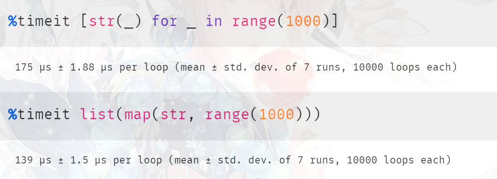
所以后者的效率稍微更高一些，因为列表解析用的是 Python 的 for 循环，list(map(func, iter)) 用的是 C 的 for 循环。
但是注意：如果是下面这种做法的话，会得到相反的结果。
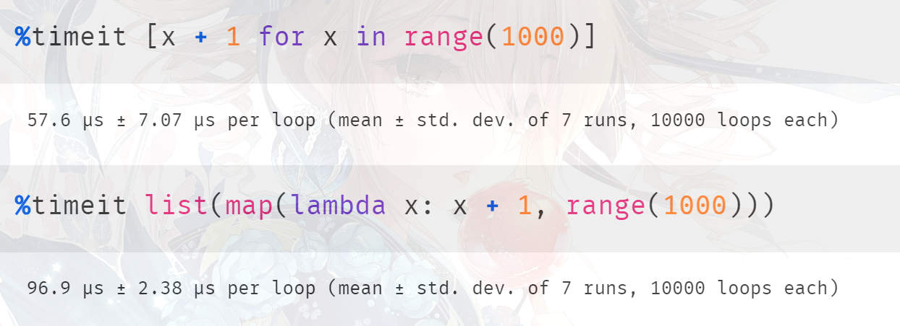
我们看到 map 变慢了，其实原因很简单，后者多了一层匿名函数的调用，所以速度变慢了。如果列表解析也是函数调用的话：

会发现速度更慢了，当然这种做法完全是吃饱了撑的。之所以说这些，是想说明在同等条件下，list(map) 这种形式是要比列表解析快的。当然在工作中，这两者都可以使用，这点效率上的差别其实不用太在意，如果真的到了需要在乎这点差别的时候，那么你应该考虑的是换一门更有效率的静态语言。
filter 和列表解析之间的差别，也是如此。因为 map 和 filter 用的都是 C 的循环，所以都会比列表解析快一点。
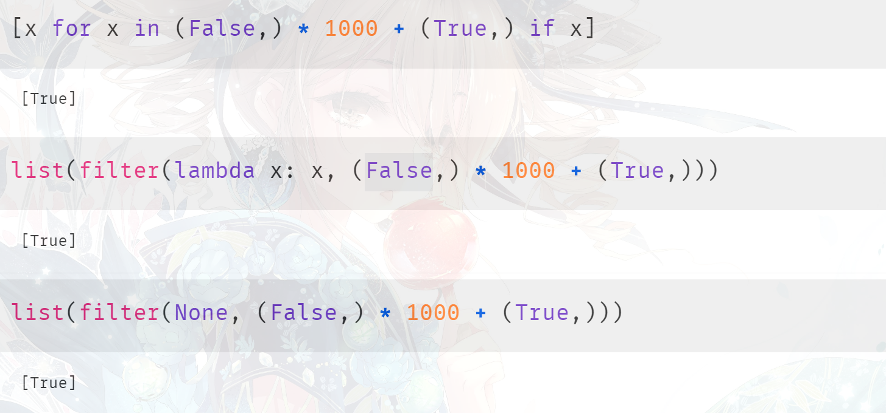
对于过滤含有 1000 个 False 和 1 个 True 的元组，它们的结果都是一样的，但是谁的效率更高呢？首先第一种方式肯定比第二种方式快，因为第二种方式涉及到函数的调用。但是第三种方式，我们知道它在底层会走单独的分支，所以再加上之前的结论，我们认为第三种方式是最快的。

结果也确实是我们分析的这样，另外在底层 None 和 bool 都会走相同的分支，所以这里将 None 换成 bool 也是可以的。虽然 bool 是一个类，但是通过 filter_next 函数我们知道，底层不会进行调用，也是直接使用 PyObject_IsTrue，可以将 None 换成 bool 看看结果如何，应该是差不多的。
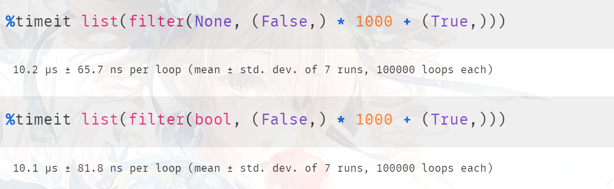
当然啦，还是那句话，工作中用哪种方式都可以。
小结
以上我们就从源码的角度介绍了 map、filter、zip 三个内置类，它们在工作中绝对会出现。
并且 map、filter 也可以使用列表解析替代，如果逻辑简单的话，比如获取为真的元素，那么通过 list(filter(None, data)) 实现即可，效率更高，因为它走的是 C 的循环。
但如果执行的逻辑比较复杂，那么对于 map、filter 而言就要写匿名函数。比如获取大于 3 的元素，那么就需要使用 list(filter(lambda x: x > 3, data)) 这种形式了。而我们说它的效率此时是不如列表解析 [x for x in lst if x > 3] 的，因为前者多了一层函数调用。
但是在工作中，这两种方式都是可以的，使用哪一种就看个人喜好。到此我们发现，如果排除那一点点效率上的差异，那么有列表解析式就完全足够了，因为列表解析式可以同时实现 map、filter 的功能，而且表达上也更加地直观。只不过是 map、filter 先出现，然后才有的列表解析式，但是前者依旧被保留了下来。
当然 map、filter 返回的是一个可迭代对象，它不会立即计算，可以节省资源。只不过这个功能，我们也可以通过生成器表达式来实现。
欢迎大家关注我的公众号：古明地觉的编程教室。
如果觉得文章对你有所帮助，也可以请作者吃个馒头，Thanks♪(･ω･)ﾉ。
楔子
如果你需要访问多个服务来完成一个请求的处理，比如实现文件上传功能时，首先访问 Redis 缓存，验证用户是否登录，再接收 HTTP 消息中的 body 并保存在磁盘上，最后把文件路径等信息写入 MySQL 数据库中，你会怎么做？
首先可以使用阻塞 API 编写同步代码，直接一步步串行即可，但很明显这时一个线程只能同时处理一个请求。而我们知道线程数是有限制的，有限的线程数导致无法实现上万级别的并发连接，过多的线程切换也抢走了 CPU 的时间，从而降低了每秒能够处理的请求数量。
于是为了达到高并发，你可能会选择一个异步框架，用非阻塞 API 把业务逻辑打乱到多个回调函数中，通过多路复用实现高并发。但此时就要求业务代码过度关注并发细节，需要维护很多中间状态，一旦代码逻辑出现错误就会陷入回调地狱。因此这么做不但 Bug 率会很高，项目的开发速度也上不去，产品及时上线存在风险。如果想兼顾开发效率，又能保证高并发，协程就是最好的选择。它可以在保持异步化运行机制的同时，还能用同步的方式编写代码，这既实现了高并发，又缩短了开发周期，是高性能服务未来的发展方向。
这里我们必须要指出，在并发量方面，使用「协程」的方式并不优于「非阻塞+回调」的方式，而我们之所以选择协程是因为它的编程模型更简单，类似于同步，也就是可以让我们以同步的方式编写异步的代码。至于「非阻塞+回调」这种方式则非常考验编程技巧，一旦出现错误，不好定位问题，容易陷入回调地狱、栈撕裂等困境。
所以你会发现，解决高并发问题的技术一直在变化，从多进程、多线程，到异步化、协程，面对不同的场景，它们都在用各自不同的方式解决问题。下面我们就来看看，高并发的解决方案是怎么演进的，协程到底解决了什么问题，它又该如何应用。
非阻塞 + 回调 + IO 多路复用
一台主机的资源有限，一颗 CPU、一块磁盘、一张网卡，如何同时服务上百个请求呢？多进程模式是最初的解决方案。内核把 CPU 的执行时间切分成许多时间片（timeslice），比如 1 秒钟可以切分为 100 个 10 毫秒的时间片，每个时间片再分发给不同的进程，通常，每个进程需要多个时间片才能完成一个请求。
这样虽然微观上，比如说就这 10 毫秒的时间 CPU 只能执行一个进程，但宏观上 1 秒钟执行了 100 个时间片，于是每个时间片所属进程中的请求也得到了执行，这就实现了请求的并发执行。
不过每个进程的内存空间都是独立的，因此使用多进程实现并发就有两个缺点：一是内核的管理成本高，二是无法简单地通过内存同步数据，很不方便。于是，多线程模式就出现了，多线程模式通过共享内存地址空间，解决了这两个问题。然而共享地址空间虽然可以方便地共享对象，但这也导致一个问题，那就是任何一个线程出错时，进程中的所有线程会跟着一起崩溃。这也是如 Nginx 等强调稳定性的服务坚持使用多进程模式的原因。
但事实上无论基于多进程还是多线程，都难以实现高并发，主要有以下两个原因。
- 首先，单个线程消耗的内存过多，比如 64 位的 Linux 为每个线程的栈分配了 8MB 的内存，此外为了提升后续内存分配的性能，还为每个线程预分配了 64MB 的内存作为堆内存池（Thread Area），所以我们没有足够的内存去开启几万个线程实现并发。
- 其次，切换请求是内核通过切换线程实现的，什么时候会切换线程呢？不只时间片用尽，当调用阻塞方法时，内核为了让 CPU 充分工作，也会切换到其它线程执行。而一次上下文切换的成本在几十纳秒到几微秒之间，当线程繁忙且数量众多时，这些切换会消耗绝大部分的 CPU 运算能力。
下图以磁盘 IO 为例，描述了多线程中使用阻塞方法读磁盘时，两个线程间的切换方式。

通过多线程的方式，一个线程处理一个请求，从而实现并发。但很明显，操作系统能创建的线程数是有限的，因为线程越多资源占用就越多，而且线程之间的切换成本也比较大，因为涉及到内核态和用户态之间的切换。
那么问题来了，怎么才能实现高并发呢？答案是「把上图中由内核实现的请求切换工作，交由用户态的代码来完成就可以了」。异步化编程通过应用层代码实现了请求切换，降低了切换成本和内存占用空间。
异步化依赖于 IO 多路复用机制，比如 Linux 的 epoll，同时，必须把阻塞方法更改为非阻塞方法，才能避免内核切换带来的巨大消耗。Nginx、Redis 等高性能服务都依赖异步化实现了百万量级的并发。
下图描述了异步 IO 的非阻塞读和异步框架结合后，是如何切换请求的。
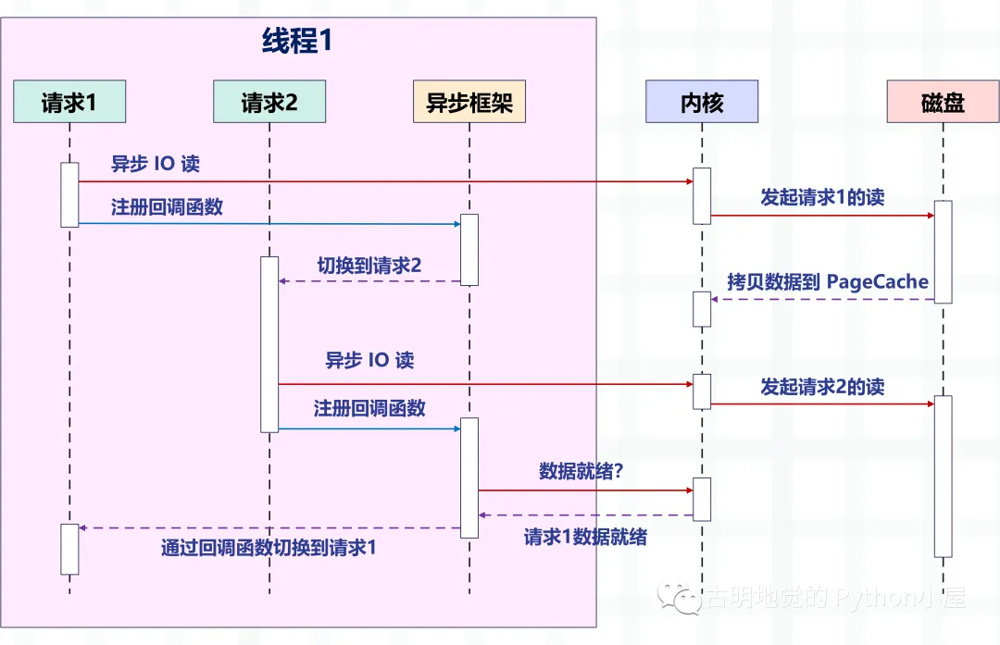
注意图中的变化，之前是一个线程处理一个请求，现在是一个线程处理多个请求，这就是我们之前说的「非阻塞+回调」的方式。它依赖操作系统提供的 IO 多路复用，比如 Linux 的 epoll，BSD 的 kqueue。
此时的读写操作都相当于一个事件，并为每一个事件都注册相应的回调函数，然后线程不会阻塞（因为读写操作此时是非阻塞的），而是可以做其它事情，然后由 epoll 来对这些事件进行统一管理。一旦事件发生（满足可读、可写时），那么 epoll 就会告知线程，然后线程执行为该事件注册的回调函数。
为了更好地理解，我们再以 Redis 为例，介绍一下非阻塞 IO 和 IO 多路复用。
127.0.0.1:6379> get name
"satori"
Redis 支持使用 get 命令，获取一个 key 对应的 value，那么问题来了，以上对于 Redis 服务端而言，都发生了哪些事情呢？
服务端必须要先监听客户端请求（bind/listen），然后当客户端到来时与其建立连接（accept），从 socket 中读取客户端的请求（recv），对请求进行解析（parse），这里解析出的请求类型是 get，key 是 "name"，再根据 key 获取对应的 value，最后返回给客户端，也就是向 socket 写入数据（send）。

以上所有操作都是由 Redis 主线程依次执行的，但是里面会有潜在的阻塞点，分别是 accept 和 recv。
如果是阻塞 IO，当 Redis 监听到一个客户端有连接请求、但却一直未能成功建立连接，那么主线程会一直阻塞在 accept 函数这里，导致其它客户端无法和 Redis 建立连接。类似的，当 Redis 通过 recv 从客户端读取数据时，如果数据一直没有到达，那么 Redis 主线程也会一直阻塞在 recv 这一步，因此这就导致了 Redis 的效率会变得低下。
非阻塞 IO
但很明显，Redis 不会允许这种情况发生，因为以上都是阻塞 IO 会面临的情况，而 Redis 采用的是非阻塞 IO，也就是将 socket 设置成了非阻塞模式。首先在 socket 模型中，调用 socket() 方法会返回主动套接字；调用 bind() 方法绑定 IP 和 端口，再调用 listen() 方法将主动套接字转化为监听套接字；最后监听套接字调用 accept() 方法等待客户端连接的到来，当和客户端建立连接时再返回已连接套接字，而后续就通过已连接套接字来和客户端进行数据的接收与发送。
但是注意：我们说在 listen() 这一步，会将主动套接字转化为监听套接字，而此时的监听套接字的类型是阻塞的，阻塞类型的监听套接字在调用 accept() 方法时，如果没有客户端来连接的话，就会一直处于阻塞状态，那么此时主线程就没法干其它事情了。所以在 listen() 的时候可以将其设置为非阻塞，而非阻塞的监听套接字在调用 accept() 时，如果没有客户端连接请求到达时，那么主线程就不会傻傻地等待了，而是会直接返回，然后去做其它的事情。
类似的，在创建已连接套接字的时候也可以将其类型设置为非阻塞，因为阻塞类型的已连接套接字在调用 send() / recv() 的时候也会处于阻塞状态，比如当客户端一直不发数据的时候，已连接套接字就会一直阻塞在 rev() 这一步。如果是非阻塞类型的已连接套接字，那么当调用 recv() 但却收不到数据时，也不用处于阻塞状态，同样可以直接返回去做其它事情。

但是有两点需要注意：
1）虽然 accept() 不阻塞了，在没有客户端连接时 Redis 主线程可以去做其它事情，但如果后续有客户端来连接，Redis 要如何得知呢？因此必须要有一种机制，能够继续在监听套接字上等待后续连接请求，并在请求到来时通知 Redis。
2）send() / recv() 不阻塞了，相当于 IO 的读写流程不再是阻塞的，读写方法都会瞬间完成并且返回，也就是它会采用能读多少就读多少、能写多少就写多少的策略来执行 IO 操作，这显然更符合我们对性能的追求。但这样同样会面临一个问题，就是当执行读取操作时，有可能只读取了一部分数据，剩余的数据客户端还没发过来，那么这些数据何时可读呢？同理写数据也是这种情况，当缓冲区满了，而我们的数据还没有写完，那么剩下的数据又何时可写呢？因此同样要有一种机制，能够在 Redis 主线程做别的事情的时候继续监听已连接套接字，并且当有数据可读写的时候通知 Redis。
这样才能保证 Redis 线程既不会像基本 IO 模型中一直在阻塞点等待，也不会无法处理实际到达的客户端连接请求和可读写的数据，而上面所提到的机制便是 IO 多路复用。
IO 多路复用
I/O 多路复用机制是指一个线程处理多个 IO 流，也就是我们经常听到的 select/poll/epoll。关于这三者的区别以后再聊，它们所做的事情都一样，无非是性能和实现原理上有差异。select 是所有系统都支持，而 epoll 只有 Linux 支持。
简单来说，在 Redis 只运行单线程的情况下，该机制允许内核中同时存在多个监听套接字和已连接套接字。内核会一直监听这些套接字上的连接请求和数据请求，一旦有请求到达就会交给 Redis 线程处理，这样就实现了一个 Redis 线程处理多个 IO 流的效果。

上图就是基于多路复用的 Redis IO 模型，图中的 FD 就是套接字，可以是监听套接字，也可以是已连接套接字，Redis 会通过 epoll 机制来让内核帮忙监听这些套接字。而此时 Redis 线程或者说主线程，不会阻塞在某一个特定的套接字上，也就是说不会阻塞在某一个特定的客户端请求处理上。因此 Redis 可以同时和多个客户端连接并处理请求，从而提升并发性。
但为了在请求到达时能够通知 Redis 线程，epoll 提供了基于事件的回调机制，即针对不同事件的发生，调用相应的处理函数。
那么回调机制是怎么工作的呢？以上图为例，首先 epoll 一旦监测到 FD 上有请求到达，就会触发相应的事件。这些事件会被放进一个队列中，Redis 主线程会对该事件队列不断进行处理，这样一来 Redis 就无需一直轮询是否有请求发生，从而避免资源的浪费。同时，Redis 在对事件队列中的事件进行处理时，会调用相应的处理函数，这就实现了基于事件的回调。因为 Redis 一直在对事件队列进行处理，所以能及时响应客户端请求，提升 Redis 的响应性能。
我们以实际的连接请求和数据读取请求为例，再解释一下。连接请求和数据读取请求分别对应 Accept 事件和 Read 事件，Redis 分别对这两个事件注册 accept 和 get 回调函数，当 Linux 内核监听到有连接请求或数据读取请求时，就会触发 Accept 事件或 Read 事件，然后通知主线程调用注册的 accept 函数或 get 函数。
就像病人去医院看病，在医生实际诊断之前每个病人（类似于请求）都需要先分诊、测体温、登记等等。如果这些工作都由医生完成，那么医生的工作效率就会很低。所以医院设置了分诊台，分诊台会一直处理这些诊断前的工作（类似于 Linux 内核监听请求），然后再转交给医生做实际诊断，这样即使一个医生（相当于 Redis 的主线程）也能有很高的效率。
这里需要再补充一下：我们上面提到的异步 IO 不是真正意义上的异步 IO，而是基于 IO 多路复用实现的异步化。但 IO 多路复用本质上是同步 IO，只是它可以同时监听多个文件描述符，一旦某个描述符的读写操作就绪，就能够通知应用程序进行相应的读写操作。至于真正意义的异步 IO，操作系统也是支持的，但支持的不太理想，所以现在使用的都是 IO 多用复用，并代指异步 IO。
为什么不推荐这种编程模式？
必须要承认的是，编写这种异步化代码能够带来很高的性能收益，Redis、Nginx 已经证明了这一点。但是这种编程模式在实际工作中很容易出错，因为所有的阻塞函数都需要通过非阻塞的系统调用加上回调注册的方式拆分成两个函数。说白了就是我们的逻辑不能直接执行，必须把它们放在一个单独的函数里面，然后这个函数以回调的方式注册给 IO 多路复用。
这种编程模式违反了软件工程的内聚性原则，函数之间同步数据也更复杂。特别是条件分支众多、涉及大量系统调用时，异步化的改造工作会非常困难，尽管它的性能很高。
下面我们用 Python 编写一段代码，实际体验一下这种编程模式，看看它复杂在哪里。
from urllib.parse import urlparse
import socket
from io import BytesIO
# selectors 里面提供了多种"多路复用器"
# 除了 select、poll、epoll 之外，还有 kqueue，这个是针对 BSD 平台的
try:
from selectors import (
SelectSelector,
PollSelector,
EpollSelector,
KqueueSelector
)
except ImportError:
pass
# 由于种类比较多，所以提供了 DefaultSelector
# 会根据当前的系统种类，自动选择一个合适的多路复用器
from selectors import (
DefaultSelector,
EVENT_READ, # 读事件
EVENT_WRITE, # 写事件
)
class RequestHandler:
"""
向指定的 url 发请求，获取返回的内容
"""
selector = DefaultSelector()
tasks = {"unfinished": 0}
def __init__(self, url):
"""
:param url: http://localhost:9999/v1/index
"""
self.tasks["unfinished"] += 1
url = urlparse(url)
# 根据 url 解析出域名、端口、查询路径
self.netloc = url.netloc # 域名:端口
self.path = url.path or "/" # 查询路径
self.client = socket.socket() # 创建 socket
self.client.setblocking(False) # 设置成非阻塞
self.buffer = BytesIO() # 用于接收数据的缓存
def get_result(self):
"""
发送请求，进行下载
:return:
"""
# 连接到指定的服务器
# 如果没有 : 说明只有域名没有端口，那么默认访问 80 端口
if ":" not in self.netloc:
host, port = self.netloc, 80
else:
host, port = self.netloc.split(":")
# 由于 socket 非阻塞，所以连接可能尚未建立好
try:
self.client.connect((host, int(port)))
except BlockingIOError:
pass
# 我们上面是建立连接，连接建立好就该发请求了
# 但是连接什么时候建立好我们并不知道，只能交给操作系统
# 所以需要通过 register 给 socket 注册一个回调函数
# 参数一：socket 的文件描述符
# 参数二：事件
# 参数三：当事件发生时执行的回调函数
self.selector.register(self.client.fileno(),
EVENT_WRITE,
self.send)
# 表示当 self.client 这个 socket 满足可写时，就去执行 self.send
# 翻译过来就是连接建立好了，就去发请求
# 可以看到，一个阻塞调用，我们必须拆成两个函数去写
def send(self, key):
"""
连接建立好之后，执行的回调函数
回调需要接收一个参数，这是一个 namedtuple
内部有如下字段：'fileobj', 'fd', 'events', 'data'
key.fd 就是 socket 的文件描述符
key.data 就是给 socket 绑定的回调
:param key:
:return:
"""
payload = (f"GET {self.path} HTTP/1.1\r\n"
f"Host: {self.netloc}\r\n"
"Connection: close\r\n\r\n")
# 执行此函数，说明事件已经触发，我们要将绑定的回调函数取消
self.selector.unregister(key.fd)
# 发送请求
self.client.send(payload.encode("utf-8"))
# 请求发送之后就要接收了，但是啥时候能接收呢？
# 还是要交给操作系统，所以仍然需要注册回调
self.selector.register(self.client.fileno(),
EVENT_READ,
self.recv)
# 表示当 self.client 这个 socket 满足可读时，就去执行 self.recv
# 翻译过来就是数据返回了，就去接收数据
def recv(self, key):
"""
数据返回时执行的回调函数
:param key:
:return:
"""
# 接收数据，但是只收了 1024 个字节
# 如果实际返回的数据超过了 1024 个字节怎么办？
data = self.client.recv(1024)
# 很简单，只要数据没收完，那么数据到来时就会可读
# 那么会再次调用此函数，直到数据接收完为止
# 注意：此时是非阻塞的，数据有多少就收多少
# 没有接收的数据，会等到下一次再接收，所以这里不能写 while True
if data:
# 如果有数据，那么写入到 buffer 中
self.buffer.write(data)
else:
# 否则说明数据读完了，那么将注册的回调取消
self.selector.unregister(key.fd)
# 此时就拿到了所有的数据
all_data = self.buffer.getvalue()
# 按照 \r\n\r\n 进行分隔得到列表
# 第一个元素是所有的响应头，第二个元素是响应体
result = all_data.split(b"\r\n\r\n")[1]
print(f"result: {result.decode('utf-8')}")
self.client.close()
self.tasks["unfinished"] -= 1
@classmethod
def run_until_complete(cls):
# 基于 IO 多路复用创建事件循环
# 驱动内核不断轮询 socket，检测事件是否发生
# 当事件发生时，调用相应的回调函数
while cls.tasks["unfinished"]:
# 轮询，返回事件已经就绪的 socket
ready = cls.selector.select()
# 这个 key 就是回调里面的 key
for key, mask in ready:
# 拿到回调函数并调用，这一步需要我们手动完成
callback = key.data
callback(key)
# 因此当事件发生时，调用绑定的回调，就是这么实现的
# 整个过程就是给 socket 绑定一个事件 + 回调
# 事件循环不停地轮询检测，一旦事件发生就会告知我们
# 但是调用回调不是内核自动完成的，而是由我们手动完成的
# "非阻塞 + 回调 + 基于 IO 多路复用的事件循环"
# 所有框架基本都是这个套路
一个简单的 url 获取，居然要写这么多代码，而它的好处就是性能高，因为不用把时间浪费在建立连接、等待数据上面。只要有事件发生，就会执行相应的回调，极大地提高了 CPU 利用率。而且这是单线程，也没有线程切换带来的开销。
那么下面测试一下吧。
import time
start = time.perf_counter()
for _ in range(10):
# 这里面只是注册了回调，但还没有真正执行
RequestHandler(url="http://localhost:9999/index").get_result()
# 创建事件循环，驱动执行
RequestHandler.run_until_complete()
end = time.perf_counter()
print(f"costs: {end - start}")
我用 FastAPI 编写了一个服务，监听 9999 端口，并提供了一个 /index 接口。为了更好地看到现象，服务里面刻意 sleep 了 1 秒，然后发送十次请求，看看效果如何。
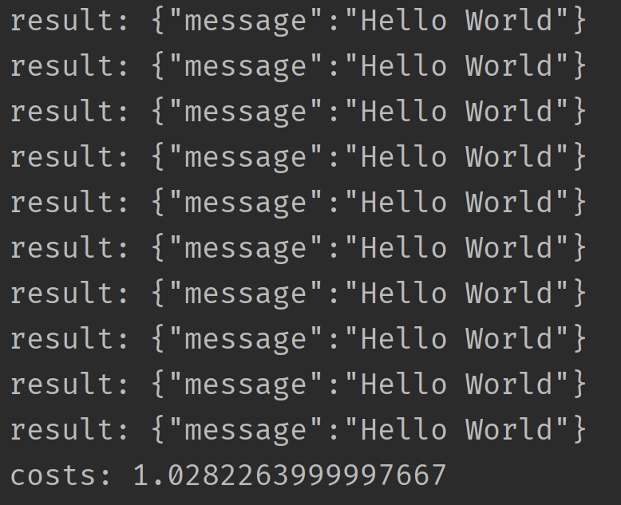
总共耗时 1 秒钟，我们再采用同步的方式进行编写，看看效果如何。

通过对比可以发现回调的这种写法性能非常高，但是它和我们传统的同步代码的写法大相径庭。如果是同步代码，那么会先建立连接、然后发送数据、再接收数据，这显然更符合我们人类的思维，逻辑自上而下，非常自然。
但是回调的方式就让人很不适应，我们在建立完连接之后，不能直接发送数据，必须要将发送数据的逻辑放在一个单独的函数（方法）中，然后再将这个函数以回调的方式注册进去。同理，在发送完数据之后也不能立刻接收，同样要将接收数据的逻辑放在一个单独的函数中，然后再以回调的方式注册进去。
所以好端端的自上而下的逻辑，因为回调而被分割的四分五裂，这种代码在编写和维护的时候是非常痛苦的。比如回调可能会层层嵌套，容易陷入回调地狱，如果某一个回调执行出错了怎么办？代码的可读性差导致不好排查，即便排查到了也难处理。
另外，如果多个回调需要共享一个变量该怎么办？因为回调是通过事件循环调用的，在注册回调的时候很难把变量传过去。简单的做法是把该变量设置为全局变量，或者说多个回调都是某个实例的方法，然后把共享的变量作为一个属性绑定在 self 上面。但当逻辑复杂时，就很容易导致全局变量满天飞的问题。
所以这种模式就使得开发人员在编写业务逻辑的同时，还要关注并发细节。
因此使用回调的方式编写异步化代码，虽然并发量能上去，但是对开发者很不友好；而使用同步的方式编写同步代码，虽然很容易理解，可并发量却又上不去。那么问题来了，有没有一种办法，能够让我们在享受异步化带来的高并发的同时，又能以同步的方式去编写代码呢？也就是我们能不能以同步的方式去编写异步化的代码呢？
答案是可以的，使用「协程」便可以办到。协程在异步化之上包了一层外衣，兼顾了开发效率与运行效率。
协程是如何实现高并发的？
协程与异步编程相似的地方在于，它们必须使用非阻塞的系统调用与内核交互，把切换请求的权力牢牢掌握在用户态的代码中。但不同的地方在于，协程把异步化中的两段函数，封装为一个阻塞的协程函数。
这个函数执行时，会使调用它的协程无感知地放弃执行权，由协程框架切换到其它就绪的协程继续执行。当这个函数的结果满足后，协程框架再选择合适的时机，切换回它所在的协程继续执行。我们还是以读取磁盘文件为例，看一张协程的示意图：

看起来非常棒，所以异步化是通过回调函数来完成请求切换的，业务逻辑与并发实现关联在一起，很容易出错。而协程不需要什么「回调函数」，它允许用户调用「阻塞的」协程方法，用同步编程方式写业务逻辑。
再回到之前的那个 socket 发请求的例子，我们用协程的方式重写一遍，看看它和基于回调的异步化编程有什么区别？
import time
from urllib.parse import urlparse
import asyncio
async def download(url):
url = urlparse(url)
# 域名:端口
netloc = url.netloc
if ":" not in netloc:
host, port = netloc, 80
else:
host, port = netloc.split(":")
path = url.path or "/"
# 创建连接
reader, writer = await asyncio.open_connection(host, port)
# 发送数据
payload = (f"GET {path} HTTP/1.1\r\n"
f"Host: {netloc}\r\n"
"Connection: close\r\n\r\n")
writer.write(payload.encode("utf-8"))
await writer.drain()
# 接收数据
result = (await reader.read()).split(b"\r\n\r\n")[1]
writer.close()
print(f"result: {result.decode('utf-8')}")
# 以上就是发送请求相关的逻辑
# 我们看到代码是自上而下的，没有涉及到任何的回调，完全就像写同步代码一样
async def main():
# 发送 10 个请求
await asyncio.gather(
*[download("http://localhost:9999/index")
for _ in range(10)]
)
start = time.perf_counter()
# 同样需要创建基于 IO 多路复用的事件循环
# 协程会被丢进事件循环中，依靠事件循环驱动执行
loop = asyncio.get_event_loop()
loop.run_until_complete(main())
end = time.perf_counter()
print(f"costs: {end - start}")
代码逻辑很好理解，和我们平时编写的同步代码没有太大的区别，那么它的效率如何呢？

我们看到用了 1 秒钟，比同步的方式快，和异步化的方式差不多。但还是开始说的，协程并不比异步化的方式快，但我们之所以选择它，是因为它的编程模型更简单，能够让我们以同步的方式编写异步的代码。如果是基于回调方式的异步化，虽然性能很高（比如 Redis、Nginx），但对开发者是一个挑战。
回到上面那个协程的例子中，我们一共发了 10 个请求，并在可能阻塞的地方加上了 await。意思就是，在执行某个协程的 await 后面的代码时如果阻塞了，那么该协程会主动将执行权交给事件循环，然后事件循环再选择其它的协程执行。并且协程本质上也是个单线程，虽然协程可以有多个，但是背后的线程只有一个。
协程是如何切换的？
那么问题来了，协程的切换是如何完成的呢？
实际上，用户态的代码切换协程，与内核切换线程的原理是一样的。内核通过管理 CPU 的寄存器来切换线程，我们以最重要的栈寄存器和指令寄存器为例，看看协程切换时如何切换程序指令与内存。
每个线程有独立的栈，而栈既保留了变量的值，也保留了函数的调用关系、参数和返回值，CPU 中的栈寄存器 SP 指向了当前线程的栈，而指令寄存器 IP 保存着下一条要执行的指令地址。因此从线程 1 切换到线程 2 时，首先要把 SP、IP 寄存器的值为线程 1 保存下来，再从内存中找出线程 2 上一次切换前保存好的寄存器的值，并写入 CPU 的寄存器，这样就完成了线程切换（其它寄存器也需要管理、替换，原理与此相同，不再赘述）。
协程的切换与此相同，只是把内核的工作转移到协程框架来实现而已，下图是协程切换前的状态：

当遇到阻塞时会进行协程切换，从协程 1 切换到协程 2 后的状态如下图所示：

创建协程时，会从进程的堆中分配一段内存作为协程的栈。线程的栈有 8MB，而协程栈的大小通常只有几十 KB。而且，C 库内存池也不会为协程预分配内存，它感知不到协程的存在。这样，更低的内存占用空间为高并发提供了保证，毕竟十万并发请求，就意味着 10 万个协程。
另外栈缩小后，就尽量不要使用递归函数，也不能在栈中申请过多的内存，这是实现高并发必须付出的代价。当然啦，如果能像 Go 一样，协程栈可以自由伸缩的话，就不用担心了。
由此可见，协程就是用户态的线程。然而，为了保证所有切换都在用户态进行，协程必须重新封装所有的阻塞系统调用，否则一旦线程进入休眠状态，那么会导致所有的协程都得不到执行。
比如普通的 sleep 函数会让当前线程休眠，由内核来唤醒线程，而协程化改造后，sleep 只会让当前协程休眠，由协程框架在指定时间后唤醒协程，所以在 Python 的协程里面我们不能写 time.sleep，而是应该写 asyncio.sleep。再比如，线程间的互斥锁是使用信号量实现的，而信号量也会导致线程休眠，协程化改造互斥锁后，同样由框架来协调、同步各协程的执行。
所以协程高性能的基础是切换必须由用户态的代码完成，这要求协程生态是完整的，要尽量覆盖常见的组件。
还是以 Python 为例，我经常看见有人在 async def 里面写 requests.get 发请求，这是不对的。requests.get 底层调用的是同步阻塞的 socket，这会使得线程阻塞，而线程一旦阻塞，就会导致所有的协程阻塞，此时就等价于串行。所以把它放在 async def 里面没有任何意义，正确的做法是使用 aiohttp 或 httpx。因此如果想使用协程，那么需要重新封装底层的系统调用，如果实在没办法就扔到线程池中运行。
再比如 MySQL 官方提供的客户端 SDK，它使用了阻塞 socket 做网络访问，会导致线程休眠，必须用非阻塞 socket 把 SDK 改造为协程函数后，才能在协程中使用。
当然，并不是所有的函数都能用协程改造，比如磁盘的异步 IO 读，它虽然是非阻塞的，但无法使用 PageCache，反而降低了系统吞吐量。如果使用缓存 IO 读文件，在没有命中 PageCache 时是可能发生阻塞的。这个时候，如果对性能有更高的要求，就需要把线程与协程结合起来用，把可能阻塞的操作扔到线程池中执行，通过生产者 / 消费者模型与协程配合工作。
实际上，面对多核系统，也需要协程与线程配合工作。因为协程的载体是线程，而一个线程同一时刻只能使用一颗 CPU，所以通过开启更多的线程，将所有协程分布在这些线程中，就能充分使用 CPU 资源，有过 Go 语言开发经验的话，应该很清楚这一点。除此之外，为了让协程获得更多的 CPU 时间，还可以设置所在线程的优先级，比如在 Linux 中把线程的优先级设置到 -20，就可以每次获得更长的时间片。另外 CPU 缓存对程序性能也是有影响的，为了减少 CPU 缓存失效的比例，还可以把线程绑定到某个 CPU 上，增加协程执行时命中 CPU 缓存的机率。
虽然这里一直说协程框架在调度协程，然而你会发现，很多协程库只提供了创建、挂起、恢复执行等基本方法，并没有协程框架的存在，而是需要业务代码自行调度协程。这是因为，这些通用的协程库（比如 asyncio）并不是专为服务器设计的，服务器中可以由客户端网络连接的建立，驱动着创建出协程，同时伴随着请求的结束而终止。而在协程的运行条件不满足时，多路复用框架会将它挂起，并根据优先级策略选择另一个协程执行。因此，使用协程实现服务器端的高并发服务时，并不只是选择协程库，还要从其生态中找到结合 IO 多路复用的协程框架（比如 Tornado），这样可以加快开发速度。
一句话总结协程
从广义上讲，协程是一种轻量级的并发模型，说的比较高大上。但从狭义上讲，协程就是调用一个可以暂停并切换的函数。像我们使用 async def 定义的就是一个协程函数，本质上也是个函数，而调用协程函数就会得到一个协程。将协程丢进事件循环，由事件循环驱动执行，一旦发生阻塞，便将执行权主动交给事件循环，事件循环再驱动其它协程执行。所以自始至终都只有一个线程，而协程只不过是我们参考线程的结构，在用户态模拟出来的。
所以调用一个普通函数，会一直将内部的代码逻辑全部执行完；而调用一个协程函数，在内部出现了阻塞，那么会切换到其它的协程。
但是协程出现阻塞能够切换有一个重要的前提，就是这个阻塞不能涉及任何的系统调用，比如 time.sleep、同步的 socket 等等。这些都需要内核参与，而内核一旦参与了，那么造成的阻塞就不单单是阻塞某个协程那么简单了（OS 也感知不到协程），而是会使线程阻塞。线程一旦阻塞，在其之上的所有协程都会阻塞，由于协程是以线程作为载体的，实际执行的肯定是线程，如果每个协程都会使线程阻塞，那么这不就相当于串行了吗？
所以想使用协程，必须将阻塞的系统调用重新封装，我们举个栗子：
@app.get(r"/index1")
async def index1():
time.sleep(30)
return "index1"
@app.get(r"/index2")
async def index2():
return "index2"
这是一个基于 FastAPI 编写的服务，我们只看视图函数。如果先访问 /index1，然后访问 /index2，那么必须等到 30 秒之后，/index2 才会响应。因为这是单线程，/index1 里面的 time.sleep 会触发系统调用，使得整个线程都陷入阻塞，而线程一旦阻塞了，所有的协程就都别想执行了。
如果将上面的例子改一下：
@app.get(r"/index1")
async def index():
await asyncio.sleep(30)
return "index1"
@app.get(r"/index2")
async def index():
return "index2"
访问 /index1 依旧会进行 30 秒的休眠，但此时再访问 /index2 的话则是立刻返回。原因是 asyncio.sleep(30) 重新封装了阻塞的系统调用，此时的休眠是在用户态完成的，没有经过内核。换句话说，此时只会导致协程休眠，不会导致线程休眠，那么当访问 /index2 的时候，对应的协程会立刻执行，然后返回结果。
同理我们在发网络请求的时候，也不能使用 requests.get，因为它会导致线程阻塞。当然，还有一些数据库的驱动，例如 pymysql、psycopg2 等等，这些阻塞的都是线程。为此，在开发协程项目时，我们应该使用 aiohttp、asyncmy、asyncpg 等等。
为什么早期 Python 的协程都没有人用，原因就是协程想要运行，必须基于协程库 asyncio，但问题是 asyncio 只支持发送 TCP 请求（对于协程库而言足够了）。如果你想通过网络连接到某个组件（比如数据库、Redis），只能手动发 TCP 请求，而且这些组件对发送的数据还有格式要求，返回的数据也要手动解析，可以想象这是多么麻烦的事情。
如果想解决这一点，那么必须基于 asyncio 重新封装一个 SDK。所以同步 SDK 和协程 SDK 最大的区别就是，一个是基于同步阻塞的 socket，一个是基于 asyncio。比如 pymysql 和 asyncmy，连接的都是 MySQL，只是在 TCP 层面发送数据的方式不同，至于其它方面则是类似的。
而早期还没有出现这些协程 SDK，自己封装的话又是一个庞大的工程，所以 Python 的协程用起来就很艰难，因为达不到期望的效果。不像 Go 在语言层面上就支持协程，一个 go 关键字就搞定了。而且 Python 里面一处异步、处处异步，如果某处的阻塞切换不了，那么协程也就没有意义了。
不过现在协程相关的生态已经越来越完善，感谢这些开源的作者们，发送网络请求、连接数据库、编写 web 服务等等，都有协程化的 SDK 和框架，现在完全可以开发以协程为主导的项目了。
小结
本次我们从高并发的应用场景入手，分析了协程出现的背景和实现原理，以及它的应用范围。你会发现，协程融合了多线程与异步化编程的优点，既保证了开发效率，也提升了运行效率。有限的硬件资源下，多线程通过微观上时间片的切换，实现了同时服务上百个用户的能力。多线程的开发成本虽然低，但内存消耗大，切换次数过多，无法实现高并发。
异步编程方式通过非阻塞系统调用和多路复用，把原本属于内核的请求切换能力，放在用户态的代码中执行。这样不仅减少了每个请求的内存消耗，也降低了切换请求的成本，最终实现了高并发。然而异步编程违反了代码的内聚性，还需要业务代码关注并发细节，开发成本很高。
协程参考内核通过 CPU 寄存器切换线程的方法，在用户态代码中实现了协程的切换，既降低了切换请求的成本，也使得协程中的业务代码不用关注自己何时被挂起，何时被执行。相比异步编程中要维护一堆数据结构表示中间状态，协程直接用代码表示状态，大大提升了开发效率。但是在协程中调用的所有 API，都需要做非阻塞的协程化改造。优秀的协程生态下，常用服务都有对应的协程 SDK，方便业务代码使用。开发高并发服务时，与 IO 多路复用结合的协程框架可以与这些 SDK 配合，自动挂起、切换协程，进一步提升开发效率。
最后，协程并不是完全与线程无关。因为线程可以帮助协程充分使用多核 CPU 的计算力（Python 除外），而且遇到无法协程化、会触发系统调用的阻塞函数，或者计算太密集从而长时间占用 CPU 的任务，还是要放在独立的线程中，以防止它影响别的协程执行。
所以在使用协程的时候，最好再搭配一个线程池，如果某些阻塞必须要经过内核，实在无法协程化，那么就把它丢到线程池里面，在线程的层面完成切换。虽然开启多个线程会占用资源，还有线程切换会带来开销，但是为了让经过内核的阻塞能够切换，这是无法避免的，只能将希望寄托于线程；当然，CPU 过度密集的任务，也可以考虑扔到线程池。可能有人好奇，如果能利用多核，那么扔到线程池是理所应当的，但是 Python 的多线程用不了多核呀，为什么要这么做呢？原因很简单，如果只有单个线程，那么这种 CPU 过度密集的任务会长时间霸占 CPU 资源，导致其它任务得不到执行。而开启多线程，虽然还是只有一个核，但是由于 GIL 会使得线程切换，所以不会出现「楚王好细腰，后宫多饿死」的情况，CPU 能够雨露均沾，让所有任务都得到执行。
本文参考自：
- 极客时间，陶辉《系统性能调优必知必会》
- 极客时间，蒋德钧《Redis 核心技术与实战》
欢迎大家关注我的公众号：古明地觉的编程教室。
如果觉得文章对你有所帮助，也可以请作者吃个馒头，Thanks♪(･ω･)ﾉ。
楔子
上一篇文章我们介绍了协程，明白了为什么要有协程，以及协程的实现原理。当然协程的出现也不是一蹴而就的，它同样有一个演进的过程。而提到 Python 的协程，那么必然绕不过标准库 asyncio，它最初是在 Python3.4 中引入的，作为除多进程和多线程之外，处理这些高并发工作负载的另一种方式。
那么接下来我们将用几篇文章来介绍 asyncio，同时学习 Python 的协程。
什么是 asyncio？
许多应用程序，尤其是在当今的 Web 领域，严重依赖 IO 操作，比如下载网页的内容、和微服务进行通信、查询数据库等。而 IO 会阻塞应用程序，那么当有大量的 IO 请求时，会导致严重的性能问题。假设现在要下载 100 个网页，每个网页的下载时间是 1 秒，那么程序就需要 100 秒才能完成，显然我们无法接受这种情况。
解决这个问题的方案之一是引入并发，而并发意味着允许同时处理多个任务，所以下载这 100 个网页理论上只需要 1 秒就可以完成。而提到并发 IO，必然绕不开 asyncio，它是 Python3.4 中引入的标准库，允许使用异步编程模型运行代码，这让我们可以一次处理多个 IO 操作，同时仍然允许应用程序保持对外界的响应。
也就是说，特定的长时间运行的任务可以在后台运行，与主应用程序分开。系统可以自由地执行不依赖于该任务的其它工作，一旦长时间运行的任务完成，那么程序会收到它已经完成的通知，以便对结果进行处理。
另外，虽然 asyncio 这个名字可能会让我们认为这个库只适用于 IO 操作，但其实它也可以和多进程、多线程相互配合来处理其它类型的操作。这意味着这个库不仅适用于基于 IO 的并发，还可以用于 CPU 密集型代码。为了更好地理解 asyncio 可以帮助我们处理何种类型的工作负载，以及哪种并发模型最适合，下面介绍一下 IO 密集型和 CPU 密集型操作之间的差异。
IO 密集型和 CPU 密集型
将一个操作称为 IO 密集型或 CPU 密集型时，指的是阻止该操作运行更快的限制因素。这意味着，如果提高操作所绑定的对象的性能，该操作将在更短时间内完成。
在 CPU 密集型操作的情况下，如果 CPU 更强大，它将更快地完成任务，例如将其时钟速度从 2GHz 提高到 3GHz。在 IO 密集型操作的情况下，如果 IO 设备能在更短的时间内处理更多数据，程序将变得更快，这可通过 ISP 增加网络带宽或升级到更快的网卡来实现。
CPU 密集型操作通常是 Python 中的计算和处理代码，例如对数组进行求和，或者循环遍历字典的内容。在 IO 密集型操作中，大部分时间将花在等待网络或其它 IO 设备上，例如向 Web 服务器发出请求或从机器的硬盘驱动器读取文件。
import httpx
res = httpx.get("http://www.baidu.com") # IO 密集型（web 请求）
items = res.headers.items()
headers = [f"{key}: {val}" for key, val in items] # CPU 密集型（响应处理）
formatted_headers = "\n".join(headers) # CPU 密集型（字符串连接）
with open("headers.txt", "w", encoding="utf-8") as f:
f.write(formatted_headers) # IO 密集型（磁盘写入）
IO 密集型和 CPU 密集型操作通常并存，我们首先发出一个 IO 密集型请求来下载 http://www.baidu.com 的内容。一旦得到响应，将执行一个 CPU 密集型循环来格式化响应头，并将它们转成一个由换行符分隔的字符串。然后打开一个文件，并将字符串写入该文件，这也是一个 IO 密集型操作。
异步 IO 允许在执行 IO 操作时暂停特定程序的执行，可在后台等待初始 IO 完成时运行其它代码。这允许同时执行许多 IO 操作，从而潜在地加快应用程序的运行速度。
了解并发、并行和多任务处理
并发
当我们说两个任务并发时，是指它们在一个时间段内同时执行。例如一个面包师要烘焙两种不同的蛋糕，要烘焙这些蛋糕，需要预热烤箱。根据烤箱和烘焙温度的不同，预热可能需要几十分钟，但不需要等烤箱完成预热后才开始其它工作，比如把面粉、糖和鸡蛋混合在一起。在烤箱预热过程中可以做其它工作，直到烤箱发出提示音，告诉我们它已经预热完成了。
此外也不需要限制自己在完成第一个蛋糕之后才开始做第二个蛋糕。比如做蛋糕面糊，将其放进搅拌机，当第一团面糊搅拌完毕，就开始准备第二团面糊。在这个模型中，同时在不同的任务之间切换，这种任务之间的切换（烤箱加热时做其它事情，在两个不同的蛋糕之间切换）是并发行为。
并行
当我们说两个任务并行时，是指它们在同一个时间点同时执行。回到蛋糕烘焙示例，假设有第二个面包师的帮助，这种情况下，第一个面包师可以制作第 1 个蛋糕，而第二个面包师同时制作第 2 个蛋糕。两个人同时制作属于并行运行，因为有两个不同的任务同时运行。
一句话总结并发和并行之间的区别：
- 并发：有多个任务在运行，但在特定的时间点，只有一个任务在运行；
- 并行：有多个任务在运行，但在特定的时间点，仍然有多个任务同时运行；
回到操作系统和应用程序，想象有两个应用程序在运行。在只有并发的系统中，可以在这些应用程序之间切换，先让一个应用程序运行一会儿，然后再让另一个应用程序运行一会儿。如果切换的速度足够快，就会出现两件事同时发生的现象（或者说是假象）。但在一个并行的系统中，两个应用程序同时运行，系统同时全力运行两个任务，而不是在两个任务之间来回切换。
并发和并行的概念相似，并且经常容易混淆，一定要对它们之间的区别有清楚的认识。

并发关注的是彼此独立发生的多个任务，可以在只有一个内核的 CPU 上实现并发，因为该操作将采用抢占式多任务的方式在任务之间切换。然而并行意味着必须同时执行两个或多个任务，如果想实现，那么必须要具备多个 CPU 核心。
什么是多任务
多任务处理在当今世界无处不在，人们一边做早餐一边看电视，一边接电话一边等水烧开来泡茶。甚至在旅行途中，人们也可以多任务处理，例如在搭乘飞机时读自己喜欢的书。本节讨论两种主要的多任务处理：抢占式多任务处理和协同多任务处理。
- 抢占式多任务处理：在这个模型中，由操作系统决定如何通过一个称为时间片的过程，在当前正在执行的任务之间切换。当操作系统在任务之间切换时，我们称之为抢占。这种机制如何在后台工作取决于操作系统本身，它主要是通过使用多个线程或多个进程来实现的。
- 协同多任务处理：在这个模型中，不依赖操作系统来决定何时在当前正在执行的任务之间切换，而是在应用程序中显式地编写代码，来让其它任务先运行。应用程序中的任务会在它们协同的模型中运行，会主动发生切换："暂停我的任务一段时间，让其它任务先执行"。
asyncio 使用协同多任务来实现并发性，当应用程序达到可以等待一段时间以返回结果的时间点时，在代码中显式地标记它，并让其它代码执行。一旦标记的任务完成，应用程序就"醒来"并继续执行该任务。这是一种并发形式，因为可同时启动多个任务，但重要的是，这不是并行模式，因为它们不会同时执行代码。
单线程并发
提到并发我们首先会想到开启多个线程，但有了 asyncio 之后，就可以在一个进程和一个线程的范围内完成这一切。因为我们利用了这样一个事实：在系统级别，IO 操作可以并发完成。为了更好地理解这一点，我们需要研究套接字是如何工作的，特别是非阻塞套接字是如何工作的。
套接字（socket）是通过网络发送和接收数据的低级抽象，是在服务器之间传输数据的基础，套接字支持两种主要操作：发送字节和接收字节。我们将字节写入套接字，然后将其发送到一个远程地址，通常是某种类型的服务器。一旦发送了这些字节，就等待服务器将其响应写回套接字，然后读取结果。
套接字是一个低级概念，如果你把它们看作邮箱，就很容易理解了。你可以把信放在邮箱里，然后邮差拿起信，并递送到收件人的邮箱。收件人打开邮箱，打开信，然后读取内容并回信。在这个类比中，可以将信里面的文字看作是要发送的数据，将信件放入邮箱的操作看作是将字节写入套接字，将打开邮箱读取信件的操作看作是从套接字读取字节，将信件载体看作互联网上的传输机制（将数据路由到正确地址）。
在前面看到的从 baidu.com 获取内容的例子中，会打开一个连接到 baidu.com 服务器的套接字。然后编写一个请求来获取该套接字的内容，并等待服务器返回结果。
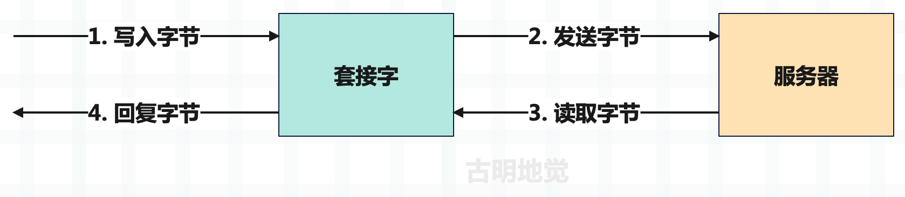
套接字在默认情况下是阻塞的，这意味着等待服务器返回数据时，会暂停应用程序或阻塞它，直到获得数据并进行读取。因此表现就是应用程序会停止运行任何其它任务，直到从服务器获取数据、发生错误或出现超时。
在操作系统级别，不需要使用阻塞，套接字可在非阻塞模式下运行。在非阻塞模式下，当我们向套接字写入字节时，可以直接触发，而不必在意写入或读取操作，应用程序可以继续执行其它任务。之后可以让操作系统告知：我们收到了字节，并开始处理它。这使得应用程序可在等待字节返回的同时做其它事情，不再阻塞和等待数据的返回，从而让程序响应更迅速，并让操作系统通知何时有数据可供操作。
在后台，这是由几个不同的事件通知系统执行的，具体取决于运行的操作系统。asyncio 已经足够抽象，可在不同的通知系统之间切换，这取决于操作系统具体支持哪一个。以下是特定操作系统使用的事件通知系统：
- kqueue：FreeBSD 和 macOS
- epoll：Linux
- IOCP：Windows
这些系统会跟踪非阻塞套接字，并在准备好让我们做某事时通知我们。这个通知系统是 asyncio 实现并发的基础，在 asyncio 的并发模型中，只有一个线程在特定时间执行 Python 代码。当遇到 IO 操作时，将它交给操作系统的事件通知系统来跟踪它，之后 Python 线程就可以继续自由执行其它代码，或者为操作系统添加更多的非阻塞套接字。IO 操作完成时，唤醒正在等待结果的任务，然后继续运行该 IO 操作之后的代码。下图通过几个单独的操作来可视化这个流程，每个操作都依赖于一个套接字。

发出的非阻塞 IO 请求会立即返回，并告诉 OS 监视套接字中的数据，这允许 execute_other_code() 可以立刻执行，而不是等待 IO 请求完成。等到 IO 请求真正完成时，会收到通知，然后应用程序再去处理即可。
但这里又产生了一个问题，在跟踪的过程中如何区分哪些是正在等待 IO 的任务，哪些是作为常规 Python 代码运行的任务呢？答案在于一个被称为事件循环的构造。
事件循环的工作原理
事件循环是每个 asyncio 应用程序的核心，事件循环是许多系统中相当常见的设计模式，并且已经存在了相当长的一段时间。如果你曾在浏览器中使用 JavaScript 发送异步 Web 请求，那么你已经在事件循环上创建了一个任务。再比如 Windows GUI 应用程序在幕后使用所谓的消息循环作为处理键盘输入等事件的主要机制，同时允许 UI 进行绘制。
最基本的事件循环非常简单，创建一个包含事件或消息的队列，然后启动循环，在消息进入队列时一次处理一条消息。在 Python 中，一个基本的事件循环可能看起来像下面这样：
from collections import deque
messages = deque()
while True:
if messages:
message = messages.pop()
process_message(message)
只不过在 asyncio 中，事件循环处理的不是消息，而是任务。任务是协程的包装器，协程可以在遇到 IO 密集型操作时暂停执行，并让事件循环运行其它不等待 IO 操作完成的任务。
创建一个事件循环时，会创建一个空的任务队列，然后将任务添加到要运行的队列中。事件循环的每次迭代都会检查需要运行的任务，并一次运行一个，直到任务遇到 IO 操作。然后将任务暂停，指示操作系统监视相应的套接字以完成 IO，并寻找下一个要运行的任务。在事件循环的每次迭代中，会检查是否有 IO 操作已完成的任务，如果有则唤醒，并让它们继续运行。

主线程将任务提交给事件循环，此后事件循环可以运行它们。
为说明这一点，我们假设有三个任务，每个任务都发出一个异步 Web 请求。想象一下，这些任务有一些代码负责完成一些 CPU 密集型的准备工作，然后它们发出 Web 请求（IO 密集型），之后又是一些 CPU 密集型的后处理代码。现在同时将这些任务提交给事件循环，在伪代码中，可以这样写。
async def make_request():
cpu_bound_setup()
await io_bound_web_request()
cpu_bound_postprocess()
task_one = event_loop.create_task(make_request())
task_two = event_loop.create_task(make_request())
task_three = event_loop.create_task(make_request())
三个任务都以 CPU 密集型工作开始，并且使用单线程，因此只有第一个任务开始执行代码，其它两个任务则在等待。一旦任务 1 中的 CPU 密集型设置工作完成，则会遇到一个 IO 密集型操作，然后暂停自己："我正在等待 IO，由于 IO 是操作系统负责的，并且不耗费 CPU，所以我要将执行权交出去，此时其它任何等待运行的任务都可以运行。"
当任务遇见 IO 阻塞的时候，会将执行权交给事件循环，事件循环再去找其它可以运行的任务。
一旦发生这种情况，任务 2 就可以开始执行了，任务 2 同样会先执行其 CPU 密集型代码，然后暂停等待 IO。此时任务 1 和任务 2 在同时等待它们的网络请求完成，由于任务 1 和任务 2 都暂停等待 IO，于是开始运行任务 3。任务 3 同样也会暂停以等待其 IO 完成，此时三个任务都处于 IO 等待状态。
然后某一时刻任务 1 的 Web 请求完成了，那么操作系统的事件通知系统会提醒此 IO 已完成（IO 操作不耗费 CPU，只要 IO 操作发起，剩下的交给操作系统。这时候线程可以去执行其它任务，当 IO 完成之后操作系统会自动通知），可以在任务 2 和任务 3 都在等待 IO 时，继续执行任务 1。
如果 CPU 密集型代码的耗时忽略不计，IO 密集型代码需要 2 秒钟，那么这三个任务执行完毕也只需要 2 秒钟，因为三个 web 请求是同时发出的。如果是同步代码，那么在返回响应之前，CPU 做不了其它事情，必须等到响应返回之后，才能发送下一个请求，那么整个过程就需要 6 秒钟的时间。
当任务一执行 cpu_bound_setup 的时候，任务二和任务三只能处于等待状态。当任务一进入 IO 的时候，任务二也开始执行 cpu_bound_setup，此时任务一和任务三需要处于等待状态。但对于任务一来说，由于它当前正处于 IO，CPU 给它也没法执行，不过也正因为它处于 IO（要 CPU 也没用），才将 CPU 交出去。
当任务二执行完 cpu_bound_setup 进入 IO 的时候，任务三开始执行 cpu_bound_setup，执行完之后进入 IO。
可以看到整个过程 CPU 没有处于空闲状态，在任务阻塞的时候立刻切换到其它任务上执行。然后当任务一、任务二、任务三都处于 IO 阻塞时，由于已经没有准备就绪的任务了，那么此时 CPU 就只能处于空闲了。接下来的某一时刻，任务一的 IO 结束了，操作系统会通知程序，然后执行任务一的 cpu_bound_postprocess。
所以任务之间等待 IO 的重叠部分是 asyncio 真正节省时间的地方。
小结
1）CPU 密集型的工作主要使用计算机处理器，而 IO 密集型的工作主要使用网络或其它输入/输出设备。asyncio 可以让 IO 密集型工作并发执行，并且通过和进程、线程搭配，也提供了可以让 CPU 密集型工作并发执行的 API。
2）进程是操作系统资源分配的基本单元，线程是操作系统调度操作 CPU 的基本单元。
3）在使用非阻塞套接字时，可指示操作系统告诉我们何时有数据传入，而不是在等待数据传入时停止应用程序。这是允许 asyncio 仅使用单个线程实现并发的部分原因。
4）事件循环是 asyncio 应用程序的核心，事件循环会一直运行下去，寻找 CPU 密集型任务，同时暂停正在等待 IO 的任务。注意：这里的暂停，不是说任务就完全处于静止状态了，而是指不需要在该任务上浪费 CPU 了。因为 IO 操作一旦发起，就由操作系统接管，程序可以去执行其它任务了，但 IO 操作的过程是不会中断的，因为它不耗费 CPU。而当 IO 操作完成后，会收到操作系统通知，然后可以再切换回该任务，继续执行该任务剩余的 CPU 密集型代码。这样就保证了 CPU 的利用率，其实说白了核心就一句话：在任务陷入 IO 阻塞的时候，不要傻傻地等待，而是去执行其它的任务。
比如你同时和三个女孩聊天，当给某个女孩发出消息之后，不要一直处于等待状态，而是继续给别的女孩发消息。当女孩回你消息之后，你再切换回来，继续发。
因此操作系统提供的非阻塞 IO + IO 多路复用，是事件循环的核心。
欢迎大家关注我的公众号：古明地觉的编程教室。
如果觉得文章对你有所帮助，也可以请作者吃个馒头，Thanks♪(･ω･)ﾉ。
楔子
上一篇文章我们讨论了并发，以及如何使用非阻塞 IO 和事件循环来实现只有一个线程的并发，接下来我们将继续讨论在 asyncio 中使用单线程并发模型编写程序的基础知识。比如协程、任务、Future，它们之间的区别是啥，事件循环在 asyncio 中是如何体现的等等，本篇文章会全部说清楚。
关于协程
调用协程函数便可得到协程，协程本质上还是基于生成器实现的，它具备一个超能力：在遇到可能需要一段时间才能完成的操作时，能够暂停执行，当长时间运行的操作完成时，可唤醒暂停的协程，并执行该协程的后续代码。要定义协程函数，我们需要使用 Python 的 async 关键字，def 定义一个普通函数，调用之后直接执行，而 async def 会定义一个协程函数，调用之后得到协程。当有一个长时间运行的操作时，可以通过 await 关键字暂停当前协程，将执行权交出去。
# async 关键字将函数标记为协程函数，而不是普通的 Python 函数
async def coroutine():
print("hello world")
这是一个简单的协程函数，不执行任何长时间的操作，它只是输出信息并返回。这意味着，将协程放在事件循环中时，它将立即执行，因为没有任何阻塞 I/O，没有任何操作暂停执行。
async def coroutine_add_one(number):
return number + 1
def add_one(number):
return number + 1
function_result = add_one(1)
coroutine_result = coroutine_add_one(1)
print(function_result)
print(type(function_result))
"""
2
<class 'int'>
"""
print(coroutine_result)
print(type(coroutine_result))
"""
<coroutine object coroutine_add_one at 0x7fc5c9094ec0>
<class 'coroutine'>
"""
调用普通的 add_one 函数时，它会立即执行并返回期望的一个整数。但当调用 coroutine_add_one 时，并不会执行协程中的代码，而是得到一个协程对象。这一点很重要，调用协程函数时，只是创建了一个可以稍后执行的协程对象，要执行协程，需要在事件循环中执行。那么如何创建事件循环并执行协程呢？
在 Python3.7 之前的版本中，如果不存在事件循环，那么必须显式地创建一个事件循环。但从 3.7 开始，asyncio 库添加了几个抽象事件循环管理的函数，其中一个便是 asyncio.run，我们可以使用它来运行协程。
import asyncio
async def coroutine_add_one(number):
return number + 1
coroutine_result = asyncio.run(coroutine_add_one(1))
print(coroutine_result) # 2
正如期望的一样，我们正确地将协程放在了事件循环中，并执行了它。
那么 asyncio.run 都做了哪些事情呢？首先创建了一个全新的事件循环，一旦成功创建，就会运行传递给它的任何协程，直到完成，然后返回结果。最后 asyncio.run 还会对主协程完成后可能继续运行的内容进行清理，一切完成后，再关闭并结束事件循环。
既然 asyncio.run 最后会关闭事件循环，说明它适用于那些一次性的任务。而在实际项目中，我们都会手动创建事件循环，具体细节一会儿再说。
由于上面的例子中没有任何阻塞代码，所以也不一定非要使用协程，定义成普通函数也是可以的。asyncio 的真正优势是能暂停执行，让事件循环在长时间运行的操作期间，运行其它任务。如果要实现这一点，可以使用 await 关键字。
await 关键字之后通常会跟一个协程，更具体地说是一个被称为 awaitable 的对象，我们将在后续学习中了解关于 awaitable 的更多内容。
使用 await 关键字会运行它后面的协程，这与直接调用协程不同，因为直接调用只会产生一个协程对象。而 await 表达式会暂停它所在的协程，直到等待的协程完成并返回结果，然后唤醒 await 所在的协程。
import asyncio
async def add_one(number):
return number + 1
async def main():
# main() 协程将暂停执行，直到 add_one(1) 运行完毕
one_plus_one = await add_one(1)
# main() 协程将暂停执行，直到 add_one(2) 运行完毕
two_plus_one = await add_one(2)
print(one_plus_one)
print(two_plus_one)
asyncio.run(main())
"""
2
3
"""
在上面的代码中，我们两次暂停执行。首先等待对 add_one(1) 的调用，一旦得到结果，主函数将取消暂停并将 add_one(1) 的返回值分配给变量 one_plus_one。然后对 add_one(2) 执行相同的操作，并输出结果。我们将应用程序的执行流程可视化一下，如下图所示。

如果只从代码逻辑来看，目前该段代码的运行方式与正常的顺序代码并没有什么不同，实际上就是在模仿正常的调用堆栈。接下来，让我们看一个简单示例，说明如何通过在等待时引入虚拟休眠操作来运行其它代码。
使用 asyncio.sleep 引入长时间运行的协程
之前的例子没有使用任何长时间运行的操作，但为了充分了解协程的优势，并展示如何同时运行多个任务，需要引入一些长时间运行的操作。当然我们不会立即进行 Web API 或数据库查询，因为它们花费的时间是不确定的，我们会通过指定想要等待的时间来模拟长时间运行的操作。而实现这一点，可以通过 asyncio.sleep 函数，该函数可以让协程休眠指定的秒数，从而模拟对 Web API 或数据库进行长时间运行的调用情况。
由于 asyncio.sleep 本身是一个协程，所以必须将它与 await 关键字一起使用，如果单独调用它，会得到一个协程对象。既然 asyncio.sleep 是一个协程，这意味着当协程等待它时，其它代码也能够运行。
import asyncio
async def hello_world():
# 暂停 hello_world 协程一秒钟
await asyncio.sleep(1)
return "hello world"
async def main():
# 暂停 main 协程，直到 hello_world 协程运行完毕
message = await hello_world()
print(message)
asyncio.run(main())
"""
hello world
"""
运行这个应用程序时，程序将等待 1 秒钟，然后输出打印信息。由于 hello_world 是一个协程，使用 asyncio.sleep 将其暂停 1 秒，因此现在有 1 秒的时间可以同时运行其它代码。
import asyncio
async def delay(seconds):
print("开始休眠")
await asyncio.sleep(seconds)
print("休眠完成")
async def add_one(number):
return number + 1
async def hello_world():
await delay(1)
return "hello world"
async def main():
# 暂停 main()，直到 add_one(1) 返回
one_plus_one = await add_one(1)
# 暂停 main()，直到 hello_world() 返回
message = await hello_world()
print(one_plus_one)
print(message)
asyncio.run(main())
"""
开始休眠
休眠完成
2
hello world
"""
在 main 协程里面分别通过 await 驱动 add_one(1) 和 hello_world() 两个协程执行，然后打印它们的返回值，但是在打印 one_plus_one 之前需要等待一秒，因为在 hello_world() 协程里面 sleep 了一秒。但我们真正想要的结果是，在 await sleep 的时候，立刻执行其它的代码，比如立刻打印 one_plus_one，但实际情况却没有。
这是为什么呢？首先要搞清楚 await 关键字的含义，await hello_world() 表示暂停所在的协程，然后运行 hello_world() 协程，并等待它运行完成，而在此之前不会执行该协程中的任何其它代码。因为 hello_world() 内部 sleep 了 1 秒，所以主协程将暂停 1 秒，这种情况下代码表现得像是串行的一样。

事实上从源代码本身也能够理解，因为代码是一行一行写的，所以自然也要一行一行执行。而 await 后面跟一个协程之后，会驱动协程执行，并等到驱动的协程运行完毕之后才往下执行。因此这个逻辑就决定了，await 是串行的，一个 await 执行完毕之后才能执行下一个 await。如果想摆脱这种顺序模型，同时运行 add_one 和 hello_world，那么需要引入一个被称为 "任务" 的概念。
通过任务实现并行
前面我们看到，直接调用协程时，并没有把它放在事件循环中运行，相反会得到一个协程对象。如果想运行，要么通过 asyncio.run，要么在一个协程里面通过 await 关键字进行驱动（在 A 协程里面 await B 协程，如果 A 协程运行了，那么 B 协程也会被驱动）。虽然通过这些工具，可编写异步代码，但无法同时运行协程，要想同时运行，需要将协程包装成任务。
任务是协程的包装器，它安排协程尽快在事件循环上运行，并提供一系列的方法来获取协程的运行状态和返回值。这种调度和执行以非阻塞的方式发生，这意味着一旦创建一个任务，那么任务就会立刻运行。并且由于是非阻塞的，我们可以同时运行多个任务。
创建任务
创建任务是通过 asyncio.create_task 函数来实现的，当调用这个函数时，需要给它传递一个协程，然后返回一个任务对象。
import asyncio
async def delay(seconds):
print("开始休眠")
await asyncio.sleep(seconds)
print("休眠完成")
return f"睡了 {seconds} 秒"
async def main():
# 将 delay(3) 包装成任务，注：包装完之后就直接丢到事件循环里面运行了
# 因此这里会立即返回，而返回值是一个 asyncio.Task 对象
sleep_for_three = asyncio.create_task(delay(3))
print(f"sleep_for_three：{sleep_for_three.__class__}")
# 至于协程究竟有没有运行完毕，我们可以通过 Task 对象来查看
# 当协程运行完毕或者报错，都看做是运行完毕了，那么调用 Task 对象的 done 方法会返回 True
# 由于代码是立即执行，还没有到 3 秒钟，因此目前的打印结果为 False
print(f"协程（任务）是否执行完毕：{sleep_for_three.done()}")
# 这里则保证必须等到 Task 对象里面的协程运行完毕后，才能往下执行
result = await sleep_for_three
print(f"协程（任务）是否执行完毕：{sleep_for_three.done()}")
print(f"返回值：{result}")
asyncio.run(main())
"""
sleep_for_three：<class '_asyncio.Task'>
协程（任务）是否执行完毕：False
开始休眠
休眠完成
协程（任务）是否执行完毕：True
返回值：睡了 3 秒
"""
如果直接 await delay(3)，那么在打印之前需要至少等待 3 秒，但通过将它包装成任务，会立即扔到事件循环里面运行。此时主程序可以直接往下执行，至于协程到底什么时候执行完毕、有没有执行完毕，则通过 Task 对象（任务）来查看。当然你也可以 await 一个 Task 对象，保证里面的协程运行完毕后才能往下执行。
同时运行多个任务
由于任务是立即创建并计划尽快运行，这允许同时运行许多长时间的任务。
import asyncio
async def delay(seconds):
print("开始休眠")
await asyncio.sleep(seconds)
print("休眠完成")
async def main():
sleep_for_three = asyncio.create_task(delay(3))
sleep_again = asyncio.create_task(delay(3))
sleep_once_more = asyncio.create_task(delay(3))
await sleep_for_three
await sleep_again
await sleep_once_more
asyncio.run(main())
"""
开始休眠
开始休眠
开始休眠
休眠完成
休眠完成
休眠完成
"""
在上面的代码中启动了三个任务，每个任务需要 3 秒才能完成。但由于对 create_task 的每次调用都会立即返回，因此会立即到达 await sleep_for_three 函数，并且三个任务都丢到了事件循环，开启执行。由于 asyncio.sleep 属于 IO，因此会进行切换，所以三个任务是并发执行的，这也意味着整个程序会在 3 秒钟左右完成，而不是 9 秒钟。
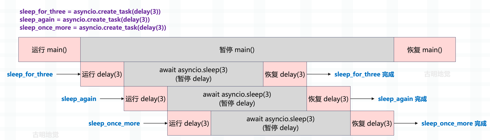
随着我们添加更多任务，性能提升效果会更明显，比如启动了 10 个这样的任务，仍然只需要大约 3 秒，从而使速度提高 10 倍。我们再看个例子：
import asyncio
async def delay(seconds):
print("开始休眠")
await asyncio.sleep(seconds)
print("休眠完成")
return seconds
async def hello_from_second():
for i in range(10):
await asyncio.sleep(1)
print("你好，我每秒钟负责打印一次")
async def main():
sleep_for_three = asyncio.create_task(delay(3))
sleep_again = asyncio.create_task(delay(3))
await hello_from_second()
asyncio.run(main())
"""
开始休眠
开始休眠
你好，我每秒钟负责打印一次
你好，我每秒钟负责打印一次
休眠完成
休眠完成
你好，我每秒钟负责打印一次
你好，我每秒钟负责打印一次
你好，我每秒钟负责打印一次
你好，我每秒钟负责打印一次
你好，我每秒钟负责打印一次
你好，我每秒钟负责打印一次
你好，我每秒钟负责打印一次
你好，我每秒钟负责打印一次
"""
一旦协程被包装成任务，那么运行就开始了（被丢到事件循环中），而主程序依旧可以往下执行。然后执行 await hello_from_second()，此时程序会阻塞在这里，不管 await 后面跟的是协程对象还是基于协程封装的 Task 对象（任务），它都要求 await 后面的对象运行完毕并返回一个值之后，才能继续往下执行。
最终结果就如打印的那样，但需要注意的是，我们不能这样写。
async def main():
await hello_from_second()
sleep_for_three = asyncio.create_task(delay(3))
sleep_again = asyncio.create_task(delay(3))
如果是这种方式的话，那么必须等到 hello_from_second() 运行完毕后，下面的两个任务才能执行，因为 await 是阻塞的。同理下面的编写方式也不行：
async def main():
sleep_for_three = await asyncio.create_task(delay(3))
sleep_again = await asyncio.create_task(delay(3))
await hello_from_second()
还是那句话，协程被包装成 Task 对象的时候就已经开始运行了，你可以让主程序继续往下执行，也可以使用 await 让主程序等任务执行完毕，就像这段代码一样。但很明显，此时就相当于串行了，无法达到并发的效果。
最佳实践：在实际工作中，不要直接 await 一个协程，而是将协程包装成任务来让它运行。当你的代码逻辑依赖某个任务的执行结果时，再对该任务执行 await，拿到它的返回值。
取消任务和设置超时
网络连接可能不可靠，用户的连接可能因为网速变慢而中断，或者服务器崩溃导致现有的请求无法处理。因此对于发出的请求，需要特别小心，不要无限等待。如果无限等待一个不会出现的结果，可能导致应用程序挂起，从而导致精糕的用户体验。
在之前的示例中，如果任务一直持续下去，我们将被困在等待 await 语句完成而没有反馈的情况，也没有办法阻止这样的事情发生。因此 asyncio 提供了一个机制，允许我们手动取消任务，或者超时之后自动取消。
取消任务
取消任务很简单，每个任务对象都有一个名为 cancel 的方法，可以在想要停止任务时调用它。取消一个任务将导致该任务在执行 await 时引发 CancelledError，然后再根据需要处理它。
为说明这一点，假设启动了一个长时间运行的任务，但我们不希望它运行的时间超过 5 秒。如果任务没有在 5 秒内完成，就可以停止该任务，并向用户报告：该任务花费了太长时间，我们正在停止它。另外还可以每秒钟都输出一个状态更新，为用户提供最新信息，这样就可以让用户了解任务的运行状态。
import asyncio
async def delay(seconds):
print("开始休眠")
await asyncio.sleep(seconds)
print("休眠完成")
async def main():
long_task = asyncio.create_task(delay(10))
seconds_elapsed = 0
while not long_task.done():
print("检测到任务尚未完成，一秒钟之后继续检测")
await asyncio.sleep(1)
seconds_elapsed += 1
# 时间超过 5 秒，取消任务
if seconds_elapsed == 5:
long_task.cancel()
try:
# 等待 long_task 完成，显然执行到这里的时候，任务已经被取消
# 不管是 await 一个已经取消的任务，还是 await 的时候任务被取消
# 都会引发 asyncio.CancelledError
await long_task
except asyncio.CancelledError:
print("任务被取消")
asyncio.run(main())
"""
检测到任务尚未完成，一秒钟之后继续检测
开始休眠
检测到任务尚未完成，一秒钟之后继续检测
检测到任务尚未完成，一秒钟之后继续检测
检测到任务尚未完成，一秒钟之后继续检测
检测到任务尚未完成，一秒钟之后继续检测
检测到任务尚未完成，一秒钟之后继续检测
任务被取消
"""
在代码中我们创建了一个任务，它需要花费 10 秒的时间才能运行完成。然后创建一个 while 循环来检查该任务是否已完成，任务的 done 方法在任务完成时返回 True，否则返回 False。每一秒，我们检查任务是否已经完成，并记录到目前为止经历了多少秒。如果任务已经花费了 5 秒，就取消这个任务。然后来到 await long_task，输出 "任务被取消"，这表明捕获了一个 CancelledError。
关于取消任务需要注意的是，CancelledError 只能从 await 语句抛出。这意味着如果任务在执行普通 Python 代码时被取消，那么该代码将一直运行，直到触发下一个 await 语句（如果存在），才能引发 CancelledError。
import asyncio
async def delay(seconds):
print("开始休眠")
await asyncio.sleep(seconds)
print("休眠完成")
async def main():
long_task = asyncio.create_task(delay(3))
# 立刻取消
long_task.cancel()
# 但 CancelledError 只有在 await 一个取消的任务时才会触发
# 所以下面的语句会正常执行
print("我会正常执行")
print("Hello World")
print(list(range(10)))
await asyncio.sleep(5)
try:
# 引发 CancelledError
await long_task
except asyncio.CancelledError:
print("任务被取消")
asyncio.run(main())
"""
我会正常执行
Hello World
[0, 1, 2, 3, 4, 5, 6, 7, 8, 9]
任务被取消
"""
但是注意：如果任务在取消的时候已经运行完毕了，那么 await 的时候就不会抛 CancelledError 了。
import asyncio
async def delay(seconds):
print("开始休眠")
await asyncio.sleep(seconds)
print("休眠完成")
return seconds
async def main():
long_task = asyncio.create_task(delay(3))
await asyncio.sleep(5)
# 显然执行到这里，任务已经结束了
long_task.cancel()
try:
await long_task
print("任务执行完毕")
except asyncio.CancelledError:
print("任务被取消")
asyncio.run(main())
"""
开始休眠
休眠完成
任务执行完毕
"""
所以对一个已完成的任务调用 cancel 方法，没有任何影响。
设置超时并使用 wait_for 执行取消
每秒（或其它时间间隔）执行检查然后取消任务，并不是处理超时的最简单方法。理想情况下，我们应该有一个辅助函数，它允许指定超时时间，当任务在规定时间内没有完成时自动取消。asyncio 提供了一个 wait_for 函数实现此功能，该函数接收协程或任务对象，以及以秒为单位的超时时间。如果任务完成所需的时间超过了设定的超时时间，则会引发 TimeoutError，任务将自动取消。
为说明 wait_for 的工作原理，我们使用一个案例来说明：有一个任务需要 2 秒才能完成，但我们将它的超时时间设定为 1 秒。当得到一个 TimeoutError 异常时，我们将捕获异常，并检查任务是否被取消。
import asyncio
async def delay(seconds):
print("开始休眠")
await asyncio.sleep(seconds)
print("休眠完成")
return f"休眠了 {seconds} 秒"
async def main():
delay_task = asyncio.create_task(delay(2))
try:
result = await asyncio.wait_for(delay_task, 1)
print(f"返回值：{result}")
except asyncio.TimeoutError:
print("超时啦")
# delay_task.cancelled() 用于判断任务是否被取消
# 任务被取消：返回 True，没有被取消：返回 False
print(f"任务是否被取消：{delay_task.cancelled()}")
asyncio.run(main())
"""
开始休眠
超时啦
任务是否被取消：True
"""
应用程序运行 1 秒后，wait_for 函数将引发 TimeoutError，然后我们对其进行处理，并且 delay_task 被取消了。所以当一个任务超时的时候，会被自动取消。
所以通过 wait_for 函数就很方便，如果直接 await 一个任务，那么必须等到任务完成之后才能继续往下执行。如果任务一直完成不了，那么就会一直陷入阻塞。我们的目的是希望这个任务的执行时间是可控的，那么便可以使用 wait_for 并指定超时时间。注：使用 wait_for 必须要搭配 await，阻塞等待任务完成并拿到返回值、或者达到超时时间引发 TimeoutError 之后，程序才能往下执行。
因此 await 任务 和 await asyncio.wait_for(任务, timeout) 的效果是类似的，都是等待后面的任务完成并拿到它的返回值。但使用 wait_for 可以指定超时时间，在规定时间内如果没有完成，则抛出 TimeoutError，而不会一直陷入阻塞。
如果任务花费的时间比预期的长，在引发 TimeoutError 之后自动取消任务通常是个好主意，否则可能会有一个无限等待的任务，占用永远不会释放的资源。但在某些情况下，我们可能希望保持任务运行。例如，我们可能想通知用户：某任务花费的时间比预期的要长，但即便超过了规定的超时时间，也不取消该任务。为此，可使用 asyncio.shield 函数包装任务，这个函数将防止传入的任务被取消，会给它一个屏蔽，将取消请求忽略掉。
import asyncio
async def delay(seconds):
print("开始休眠")
await asyncio.sleep(seconds)
print("休眠完成")
return f"休眠了 {seconds} 秒"
async def main():
delay_task = asyncio.create_task(delay(2))
try:
# 通过 asyncio.shield 将 delay_task 保护起来
result = await asyncio.wait_for(asyncio.shield(delay_task), 1)
print(f"返回值：{result}")
except asyncio.TimeoutError:
print("超时啦")
# 如果超时依旧会引发 TimeoutError，但和之前不同的是
# 此时任务不会被取消了，因为 asyncio.shield 会将取消请求忽略掉
print(f"任务是否被取消：{delay_task.cancelled()}")
# 从出现超时的地方，继续执行，并等待它完成
result = await delay_task
print(f"返回值：{result}")
asyncio.run(main())
"""
开始休眠
超时啦
任务是否被取消：False
休眠完成
返回值：休眠了 2 秒
"""
取消和屏蔽会让人感到有些棘手，因为有几种值得注意的情况。下面来介绍一些基础但又很核心的知识，并随着讲解的案例越来越复杂，我们将更深入地探讨取消的工作原理。
任务、协程、Future 和 awaitable
相信你已经了解了协程和任务之间的关系，但任务和协程具体是如何关联的呢？要理解这一点，我们需要先了解 Future 和 awaitable。
Future 是 asyncio 提供的一个类，它的实例对象（future）我们称之为未来对象，future 包含一个你希望在未来某个时间点获得、但目前还不存在的值。通常当创建 future 时，它内部还没有任何值，在这种状态下，future 被认为是不完整的、未解决的或没有完成的。然后一旦得到结果，就可以设置 future 的值，这将完成 future。那时我们可以认为 future 已经完成，并可从中提取结果。
让我们尝试创建一个 future，然后设置它的值并提取该值。
import asyncio
# asyncio 里面有一个类 Future，实例化之后即可得到 future 对象
# 然后 asyncio 里面还有一个类 Task，实例化之后即可得到 task 对象（也就是任务）
# 这个 Task 是 Future 的子类，所以我们用的基本都是 task 对象，而不是 future 对象
# 但 Future 这个类和 asyncio 的实现有着密不可分的关系，所以必须单独拿出来说一说
future = asyncio.Future()
print(future) # <Future pending>
print(future.__class__) # <class '_asyncio.Future'>
print(f"future 是否完成：{future.done()}") # future 是否完成：False
# 设置一个值，通过 set_result
future.set_result("古明地觉")
print(f"future 是否完成：{future.done()}") # future 是否完成：True
print(future) # <Future finished result='古明地觉'>
print(f"future 的返回值：{future.result()}") # future 的返回值：古明地觉
调用类型对象 Future 便可创建一个未来对象 future，此时 future 内部还没有结果集，因此调用其 done 方法将返回 False。之后用 set_result 方法设置 future 的值，这将把 future 标记为已完成。或者还可以调用 set_exception，在 future 中设置一个异常。
必须在调用 set_result（设置结果）之后才能调用 result（获取结果），并且 set_result 只能调用一次，但 result 可以调用多次。
然后我们来看一下 Future 的源码，这里先只展示和当前介绍的内容相关的部分。
class Future:
def cancel(self):
# cancel 方法，负责取消一个 future
# 并且该方法有返回值，取消成功返回 True，取消失败返回 False
self.__log_traceback = False
# 检测状态是否为 PENDING，不是 PENDING，说明 future 已经运行完毕或取消了
# 那么返回 False 表示取消失败，但对于 future 而言则无影响
if self._state != _PENDING:
return False
# 如果状态是 PENDING，那么将其改为 CANCELLED
self._state = _CANCELLED
self.__schedule_callbacks()
return True
def cancelled(self):
# 判断 future 是否被取消，那么检测它的状态是否为 CANCELLED 即可
return self._state == _CANCELLED
def done(self):
# 判断 future 是否已经完成，那么检测它的状态是否不是 PENDING 即可
# 注意：CANCELLED 和 FINISHED 都表示 future 运行结束
return self._state != _PENDING
def result(self):
# 调用 result 方法相当于获取 future 设置的结果
# 但如果它的状态为 CANCELLED，表示取消了，那么抛出 CancelledError
if self._state == _CANCELLED:
raise exceptions.CancelledError
# 如果状态不是 FINISHED（说明还没有设置结果）
# 那么抛出 asyncio.InvalidStateError 异常
# 所以我们不能在 set_result 之前调用 result
if self._state != _FINISHED:
raise exceptions.InvalidStateError('Result is not ready.')
self.__log_traceback = False
# 走到这里说明状态为 FINISHED
# 但不管是正常执行、还是出现异常，都会将状态标记为 FINISHED
# 如果是出现异常，那么调用 result 会将异常抛出来
if self._exception is not None:
raise self._exception
# 否则返回设置的结果
return self._result
def exception(self):
# 无论是调用 set_result 还是 set_exception，都会将 future 的状态标记为 FINISHED
# 如果是前者，那么 self._result 就是结果，self._exception 为 None
# 如果是后者，那么 self._result 为 None，self._exception 就是异常本身
# 因此调用 result 和 exception 都要求 future 的状态为 FINISHED
# 如果为 CANCELLED，那么同样抛出 CancelledError
if self._state == _CANCELLED:
raise exceptions.CancelledError
# 如果为 PENDING，那么抛出 asyncio.InvalidStateError 异常
if self._state != _FINISHED:
raise exceptions.InvalidStateError('Exception is not set.')
self.__log_traceback = False
# 返回异常本身
# 因此如果你不确定 future 内部到底是普通的结果值，还是异常
# 那么可以先调用 future.exception()，看它是否为 None
# 如果 future.exception() 不为 None，那么内部就是异常，否则是结果值
return self._exception
def set_result(self, result):
# 通过 set_result 设置结果
# 显然在设置结果的时候，future 的状态应该为 PENDING
if self._state != _PENDING:
raise exceptions.InvalidStateError(f'{self._state}: {self!r}')
# 然后设置 self._result，当程序调用 future.result() 时会返回 self._result
self._result = result
# 并将状态标记为 FINISHED，表示一个 future 从 PENDING 变成了 FINISHED
# 所以我们不能对一个已完成的 future 再次调用 set_result
# 因为第二次调用 set_result 的时候，状态已经不是 PENDING 了
self._state = _FINISHED
self.__schedule_callbacks()
def set_exception(self, exception):
# 和 set_result 类似，调用时 future 的状态必须为 PENDING
if self._state != _PENDING:
raise exceptions.InvalidStateError(f'{self._state}: {self!r}')
# exception 必须是异常，且不能是 StopIteration 异常
if isinstance(exception, type):
exception = exception()
if type(exception) is StopIteration:
raise TypeError("StopIteration interacts badly with generators "
"and cannot be raised into a Future")
# 将 self._exception 设置为 exception
# 调用 future.exception() 的时候，会返回 self._exception
self._exception = exception
# 将状态标记为已完成
self._state = _FINISHED
self.__schedule_callbacks()
self.__log_traceback = True
整个过程应该很好理解，我们通过一段代码再演示一下：
import asyncio
future = asyncio.Future()
# future 是否已完成
print(future.done()) # False
print(future._state != "PENDING") # False
print(future._state) # PENDING
# 获取结果
try:
future.result()
except asyncio.InvalidStateError:
print("future 尚未完成，不能获取结果")
"""
future 尚未完成，不能获取结果
"""
# 但是我们可以通过 future._result 去获取（不推荐）
# 显然拿到的是 None
print(future._result) # None
print(future._exception) # None
future.set_result("我是返回值")
print(future.done()) # True
print(future._state) # FINISHED
print(future.result() == future._result == "我是返回值") # True
非常简单，但是我们在设置结果或设置异常的时候，应该通过 set_result() 和 set_exception()，不要通过类似 future._result = "..." 的方式。同理获取返回值或异常时，也要用 future.result() 和 future.exception()，不要直接用 future._result 或 future._exception，因为这背后还涉及状态的维护。
然后 future 也可以用在 await 表达式中，如果对一个 future 执行 await 操作，那么会处于阻塞，直到 future 有一个可供使用的值。这和 await 一个任务是类似的，当任务里面的协程 return 之后会解除阻塞，并拿到返回值。而 await future，那么当 future 有了值，await 同样会拿到它，并解除阻塞。
为理解这一点，让我们考虑一个返回 future 的 Web 请求的示例。发出一个返回 future 的请求应该立即完成，但由于请求需要一些时间，所以 future 还处于 PENDING 状态。然后一旦请求完成，结果将被设置，那么 future 会变成 FINISHED 状态，我们就可以访问它了，这个概念类似于 JavaScript 中的 Promise，而在 Java 中这些被称为 completable future。
import asyncio
async def set_future_value(future):
await asyncio.sleep(1)
future.set_result("Hello World")
def make_request():
future = asyncio.Future()
# 创建一个任务来异步设置 future 的值
asyncio.create_task(set_future_value(future))
return future
async def main():
# 注意这里的 make_request，它是一个普通的函数，如果在外部直接调用肯定是会报错的
# 因为没有事件循环，在执行 set_future_value 时会报错
# 但如果在协程里面调用是没问题的，因为协程运行时，事件循环已经启动了
# 此时在 make_request 里面，会启动一个任务
future = make_request()
print(f"future 是否完成：{future.done()}")
# 阻塞等待，直到 future 有值，什么时候有值呢？
# 显然是当协程 set_future_value 里面执行完 future.set_result 的时候
value = await future # 暂停 main()，直到 future 的值被设置完成
print(f"future 是否完成：{future.done()}")
print(value)
asyncio.run(main())
"""
future 是否完成：False
future 是否完成：True
Hello World
"""
在代码中我们定义了一个函数 make_request，该函数里面创建了一个 future 和一个任务，该任务将在 1 秒后异步设置 future 的结果。然后在主函数中调用 make_request，当调用它时，将立即得到一个没有结果的 future，然后 await future 会让主协程陷入等待，并将执行权交出去。一旦当 future 有值了，那么再恢复 main() 协程，拿到返回值进行处理。
但在 asyncio 中，你应该很少主动创建 future。更多时候，你将遇到一些返回 future 的异步 API，并可能需要使用基于回调的代码。举个例子：
import asyncio
def callback(future):
print(f"future 已完成，值为 {future.result()}")
async def main():
future = asyncio.Future()
# 绑定一个回调，当 future 有值时会自动触发回调的执行
future.add_done_callback(callback)
future.set_result("666")
asyncio.run(main())
"""
future 已完成，值为 666
"""
asyncio API 的实现很大程度上依赖于 future，因此最好对它们的工作原理有基本的了解，后续我们还会深入介绍。
然后再来说一说 future、任务和协程之间的关系，事实上任务直接继承自 future，准确来说是 asyncio.Task 继承自 asyncio.Future。future 可以被认为代表了暂时不会拥有的值，而一个任务可以被认为是一个协程和一个 future 的组合。创建一个任务时，会创建一个空的 future，并运行协程，然后当协程运行完毕返回结果或出现异常时，再将结果或异常设置在 future 中。
所以 await 任务 什么时候结束，显然是当协程执行完毕并将返回值设置在 future 里面的时候。如果直接 await future，那么需要我们手动调用 future.set_result。如果 await 任务，那么当协程执行完毕时会自动调用 future.set_result（执行出错则自动调用 future.set_exception），因为任务是基于协程包装得到的，它等价于一个协程加上一个 future。
但不管 await 后面跟的是任务还是 future，本质上都是等到 future 里面有值之后，通过 future.result() 拿到里面的值。
所以当 await 任务的时候，如果任务执行出错了，会怎么样呢？首先出错了，那么任务里面的 future 会调用 set_exception 设置异常。而前面在看 future 源码的时候，我们看到：如果没有出现异常，那么调用 result 会返回结果，调用 exception 会返回 None。如果出现异常，那么调用 exception 会返回异常，调用 result 会将异常抛出来。而 await 任务，本质上就是在调用内部 future 的 result 方法，显然如果任务执行出错，那么会将出错时产生的异常抛出来。
然后协程，任务、future 这三者都可以跟在 await 关键字后面，那么它们有没有什么共同之处呢？很简单，它们之间的共同点是 awaitable 抽象基类，这个类定义了一个抽象的魔法函数 __await__，任何实现了 __await__ 方法的对象都可以在 await 表达式中使用。协程直接继承自 awaitable，future 也是如此，而任务则是对 future 进行了扩展。

我们将可以在 await 表达式中使用的对象称为 awaitable 对象，你会经常在 asyncio 文档中看到 awaitable 的术语，因为很多 API 并不关心你传的是协程、任务还是 future。
现在我们了解了任务、协程和 future 的基础知识，那如何评估它们的性能呢？到目前为止，我们只是推测了它们运行所需的时间。为了使代码更严谨，让我们添加一些功能来测量执行时间。
使用装饰器测量协程执行时间
到目前为止，我们已经大致讨论了应用程序在不计时的情况下需要运行多长时间。为了真正理解和描述，我们需要引入一些代码来跟踪程序的运行时间，显然可以使用装饰器。
from functools import wraps
import time
from typing import Callable, Any
def async_timed(func: Callable) -> Callable:
@wraps(func)
async def wrapper(*args, **kwargs) -> Any:
print(f"协程 {func.__name__} 开始执行")
start = time.perf_counter()
try:
return await func(*args, **kwargs)
finally:
end = time.perf_counter()
total = end - start
print(f"协程 {func.__name__} 用 {total} 秒执行完毕")
return wrapper
在这个装饰器中，我们创建了一个名为 wrapped 的新协程，这是原始协程的包装器，它接收参数 *args 和 **kwargs，调用 await 语句，然后返回结果。可将此注解放在任何协程上，并且任何时候，都可以看到运行了多长时间。
由于这部分代码还是有点多的，所以为了清晰，我们定义一个 utils.py，然后将这部分代码拷贝到里面。后续在使用的时候，直接从 utils 里面导入即可。
import asyncio
from utils import async_timed
@async_timed
async def delay(seconds):
await asyncio.sleep(seconds)
return seconds
@async_timed
async def main():
task_one = asyncio.create_task(delay(2))
task_two = asyncio.create_task(delay(3))
await task_one
await task_two
asyncio.run(main())
"""
协程 main 开始执行
协程 delay 开始执行
协程 delay 开始执行
协程 delay 用 2.00174262499786 秒执行完毕
协程 delay 用 3.0011654580011964 秒执行完毕
协程 main 用 3.0012566249934025 秒执行完毕
"""
可以看到，两个 delay 调用分别需要大约 2 秒和 3 秒才能完成，总共加起来是 5 秒。但是主协程只花了 3 秒就完成了，原因就是在等待期间使用了并发。
协程和任务的陷阱
虽然通过将协程包装成任务来并发执行，可以获得一些性能改进，但有些场景下却得不到提升。
- 第一个场景：代码是 CPU 密集；
- 第二个场景：代码虽然是 IO 密集，但 IO 是阻塞 IO，而不是非阻塞 IO；
运行 CPU 密集型代码
当有好几个执行大量计算的函数时，你或许会想到包装成任务并发执行。从概念上讲，这是一个好主意，但请记住 asyncio 使用的是单线程模型，这意味着仍然受到单线程和全局解释器锁的限制。为证明这一点，让我们尝试同时运行多个 CPU 密集型函数。
import asyncio
from utils import async_timed
@async_timed
async def cpu_bound_work():
counter = 0
for i in range(100000000):
counter += 1
return counter
@async_timed
async def main():
task_one = asyncio.create_task(cpu_bound_work())
task_two = asyncio.create_task(cpu_bound_work())
await task_one
await task_two
asyncio.run(main())
"""
协程 main 开始执行
协程 cpu_bound_work 开始执行
协程 cpu_bound_work 用 1.6934128000000002 秒执行完毕
协程 cpu_bound_work 开始执行
协程 cpu_bound_work 用 1.6872372000000002 秒执行完毕
协程 main 用 3.3807809 秒执行完毕
"""
尽管创建了两个任务，代码仍然是串行执行。首先运行任务 1，然后运行任务 2，这意味着总运行时间将是对 cpu_bound_work 的两次调用的总和。如果里面再包含一个 IO 密集呢？
import asyncio
from utils import async_timed
@async_timed
async def cpu_bound_work():
counter = 0
for i in range(100000000):
counter += 1
return counter
@async_timed
async def main():
task_one = asyncio.create_task(cpu_bound_work())
task_two = asyncio.create_task(cpu_bound_work())
task_three = asyncio.create_task(asyncio.sleep(4))
await task_one
await task_two
await task_three
asyncio.run(main())
"""
协程 main 开始执行
协程 cpu_bound_work 开始执行
协程 cpu_bound_work 用 1.6811338999999998 秒执行完毕
协程 cpu_bound_work 开始执行
协程 cpu_bound_work 用 1.6776507 秒执行完毕
协程 main 用 7.3698892 秒执行完毕
"""
可以看到 task_three 没有并发执行，而是等到 task_one 和 task_two 执行完之后才开始执行，因为总耗时用了 7 秒多。我们说当调用 create_task 时，协程就被扔到事件循环当中运行了，但 asyncio 本质上是一个单线程，对于 CPU 密集型代码是不存在切换的。只有在遇见 IO（并且是非阻塞 IO）的时候，才会切换，但 cpu_bound_task 里面没有阻塞。
如果我们将任务的顺序换一下：
import asyncio
from utils import async_timed
@async_timed
async def cpu_bound_work():
counter = 0
for i in range(100000000):
counter += 1
return counter
@async_timed
async def main():
task_three = asyncio.create_task(asyncio.sleep(4))
task_one = asyncio.create_task(cpu_bound_work())
task_two = asyncio.create_task(cpu_bound_work())
await task_one
await task_two
await task_three
asyncio.run(main())
"""
协程 main 开始执行
协程 cpu_bound_work 开始执行
协程 cpu_bound_work 用 1.6812271 秒执行完毕
协程 cpu_bound_work 开始执行
协程 cpu_bound_work 用 1.6808239999999999 秒执行完毕
协程 main 用 4.0173675 秒执行完毕
"""
此时总耗时就是 4 秒了，创建 task_three 的时候，依旧会将协程丢到事件循环里面运行。但由于出现了阻塞，所以会将控制权交出去，事件循环能够继续运行主协程，因此总耗时是 4 秒。
总之对于 CPU 密集型任务，如果还想放在协程里面，那么应该和进程池搭配使用，具体细节后续再聊。
运行阻塞 API
在协程中执行阻塞 IO 密集型操作，会产生和 CPU 密集型操作相同的问题，因为这些 API 会阻塞主线程。所以在协程中运行阻塞 API 调用时，会阻塞事件循环线程本身，这意味着其它的任何协程或任务都将暂停。比如使用 requests 发请求或 time.sleep 等，通常执行任何非协程的 IO 操作或执行耗时的 CPU 操作都可视为阻塞。
IO 也分两种：一种是阻塞 IO，比如 requests.get()、time.sleep() 等，这会阻塞整个线程，导致所有任务都得不到执行；另一种是非阻塞 IO，比如协程的 IO 操作，这只会阻塞协程，但线程不阻塞，线程可以执行其它已经准备就绪的任务。
我们举个例子：
import asyncio
import requests
from utils import async_timed
@async_timed
async def get_baidu_status():
return requests.get("http://www.baidu.com").status_code
@async_timed
async def main():
task_one = asyncio.create_task(get_baidu_status())
task_two = asyncio.create_task(get_baidu_status())
task_three = asyncio.create_task(get_baidu_status())
await task_one
await task_two
await task_three
asyncio.run(main())
"""
协程 main 开始执行
协程 get_baidu_status 开始执行
协程 get_baidu_status 用 0.08913283300353214 秒执行完毕
协程 get_baidu_status 开始执行
协程 get_baidu_status 用 0.05750529198849108 秒执行完毕
协程 get_baidu_status 开始执行
协程 get_baidu_status 用 0.06008695799391717 秒执行完毕
协程 main 用 0.2068691669992404 秒执行完毕
"""
可以看到 main() 协程的耗时，是所有任务的总和，这是因为 requests 库是阻塞的，这意味着它将阻塞运行它的线程。由于 asyncio 只有一个线程，因此 requests 库会阻止事件循环，此时阻塞期间，事件循环无法做其它的任何事情。
通常，你现在使用的大多数 API 都是阻塞的，且无法与 asyncio 一起使用。如果想和 asyncio 搭配，那么你需要使用支持协程、并利用非阻塞套接字的库，否则就只能进行阻塞调用了。
而对于上面这个例子，我们可以将 requests 换成 aiohttp 或 httpx，它们可以使用非阻塞套接字，并返回协程，从而获得适当的并发性。但如果你只能使用同步库，并且还想和 asyncio 搭配使用的话，那么应该要引入线程池，后续再聊。
手动创建和访问事件循环
到目前为止，我们一直使用简便的 asyncio.run 来运行应用程序，并在幕后创建事件循环。考虑到易用性，这是创建事件循环的首选方法。但某些情况下，我们希望执行自定义逻辑来完成与 asyncio.run 不同的任务，因此可以手动创建事件循环。
创建一个事件循环可以通过 asyncio.new_event_loop 方法，这将返回一个事件循环实例。有了这个实例，便可访问事件循环中的所有低级方法。
import asyncio
async def main():
await asyncio.sleep(1)
loop = asyncio.new_event_loop()
try:
loop.run_until_complete(main())
finally:
loop.close()
上面代码与我们调用 asyncio.run 时发生的情况相似，但不同之处在于此时不会取消任何剩余的任务，如果想要特殊的清理逻辑，可在 finally 子句中完成。
有时我们也需要访问当前正在运行的事件循环，asyncio 公开了允许获取当前事件循环的 asyncio.get_running_loop 函数。比如我们看一下事件循环的 call_soon 方法，它设定一个函数在事件循环的下一次迭代中运行。
import asyncio
def some_func():
print("我将稍后被调用")
async def main():
print("-------------")
# 协程需要扔到事件循环里面运行，而当协程运行的时候，也可以获取所在的事件循环
loop = asyncio.get_running_loop()
loop.call_soon(some_func)
await asyncio.sleep(1)
loop = asyncio.new_event_loop()
try:
loop.run_until_complete(main())
finally:
loop.close()
"""
-------------
我将稍后被调用
"""
loop.call_soon 接收一个函数，虽然叫 call_soon，但它接收的函数不会立即运行，而是当事件循环下一次迭代的时候运行。说白了就是当出现 IO 进行切换的时候运行。
然后在 main() 协程里面，如果我们想获取事件循环，可以通过 get_running_loop 函数。因为 asyncio 是单线程的，所以对于一个线程来说，只会有一个事件循环。而在外部，事件循环已经创建好了，所以在驱动 main() 执行的时候，事件循环肯定是存在的，因此通过 get_running_loop 获取即可。
但如果像下面这样肯定是不行的：
import asyncio
def some_func():
print("我将稍后被调用")
async def main():
loop = asyncio.get_running_loop()
loop.call_soon(some_func)
await asyncio.sleep(1)
# 不可以在外部调用
loop = asyncio.get_running_loop()
"""
loop = asyncio.get_running_loop()
RuntimeError: no running event loop
"""
get_running_loop 是获取当前的事件循环，所以它不可以在外面调用，而是要在协程里面调用。因为协程是靠事件循环驱动的，所以当协程运行的时候，事件循环一定创建好了。
除了 get_running_loop 和 new_event_loop 之外还有 get_event_loop 和 set_event_loop，关于这几个函数的更详细区别，我们来好好聊一聊，以及深度探讨一下事件循环。
解密事件循环
asyncio 框架使用事件循环来编排回调函数（callback）和异步任务（asynchronous task），事件循环位于事件循环策略的上下文中，协程、事件循环和策略之间的相互关系如下所示：

按照 Go 语言之父的说法，协程是一种轻量级的并发模型，这是从广义上来讲的。如果从狭义上来讲，协程就是一个可以暂停、后续还能从暂停处恢复执行的函数，至于在什么地方暂停，则通过专门的语法标记进行确定。而协程不能直接运行，必须由事件循环负责驱动，而事件循环在驱动协程执行之前，会先将协程包装成任务。
任务对象可以跟踪协程的状态，并由相应的事件循环进行实例化，事件循环跟踪当前正在运行的任务，并将空闲协程的 CPU 时间片委托给处于挂起（pending）状态的协程。
定位当前运行的循环
定位当前的事件循环有两种方式，上面已经说了。
import asyncio
# 方案一
loop = asyncio.get_event_loop()
# 方案二
try:
loop = asyncio.get_running_loop()
except RuntimeError:
print("没有事件循环在运行")
在 Python3.7 以后的版本中有两种方式来获取当前正在运行的事件循环实例，先来看看 asyncio.get_event_loop() 做了什么。
- 1）检查在调用函数时是否有循环在运行；
- 2）如果有，则返回其 pid 与当前进程 pid 匹配的循环；
- 3）如果没有，获取存储在 asyncio 中的事件循环策略，它以一个全局变量的形式存在；
- 4）如果没有设置策略（为 None），则在加锁的情况下以 DefaultEventLoopPolicy 实例化它，需要注意：DefaultEventLoopPolicy 依赖于操作系统，它提供了一个默认的循环实现，称为 get_event_loop。所以通过调用事件循环策略的 get_event_loop 方法，即可创建一个事件循环实例。
注意：事件循环策略的 get_event_loop 方法只在主线程上实例化事件循环并分配给线程局部变量，如果不在主线程上并且没有通过其它方法实例化正在运行的循环，那么将引发一个 RuntimeError。光看文字的话，可能不太好理解，我们看一下源代码。

asyncio.get_event_loop 的逻辑很简单，就是检测当前有没有正在运行的事件循环，有就返回，没有就创建一个。而创建事件循环需要先拿到事件循环策略，策略不为空，那么直接调用它的 get_event_loop 方法。策略为空，那么就实例化 DefaultEventLoopPolicy，创建一个策略，整个过程很好理解。
而 get_running_loop 就更简单了，它表示获取当前正在运行的事件循环。
def get_running_loop():
loop = _get_running_loop()
if loop is None:
raise RuntimeError('no running event loop')
return loop
通常来说，get_running_loop 应该放在协程里面调用，因为协程要想执行，需要由事件循环驱动。
创建新的循环实例
如果开启一个子线程，那么在子线程中调用 get_event_loop 是会报错的。
import asyncio
import threading
def create_loop():
asyncio.get_event_loop()
threading.Thread(target=create_loop).start()
"""
RuntimeError: There is no current event loop in thread 'Thread-1'.
"""
这是啥原因呢？首先事件循环是通过调用事件循环策略的 get_event_loop 方法创建的，事件循环策略是通过实例化 DefaultEventLoopPolicy 得到的，我们看一下源码。
"""
我当前使用的系统是 macOS
不同的系统，DefaultEventLoopPolicy 对应的类不同，会根据操作系统选择一个合适的
"""
# asyncio/unix_events.py
DefaultEventLoopPolicy = _UnixDefaultEventLoopPolicy
class _UnixDefaultEventLoopPolicy(events.BaseDefaultEventLoopPolicy):
...
# asyncio/events.py
class BaseDefaultEventLoopPolicy(AbstractEventLoopPolicy):
_loop_factory = None
class _Local(threading.local):
_loop = None
_set_called = False
def __init__(self):
# 注意这里的 self._local 它是线程隔离的
self._local = self._Local()
def get_event_loop(self):
# 调用策略的 get_event_loop 方法创建事件循环，严格意义上讲，应该是获取事件循环
# 从源码中可以看到事件循环其实是通过 new_event_loop 实现的
# 事件循环创建完毕之后，再通过 set_event_loop 设置在策略当中
# 而创建循环是有条件的，除了循环不存在之外，还有一个就是当前所在线程必须是主线程
if (self._local._loop is None and
not self._local._set_called and
isinstance(threading.current_thread(), threading._MainThread)):
self.set_event_loop(self.new_event_loop())
# 如果不是主线程，那么不会创建循环，然后 self._local 又是线程隔离的
# 因此 self._local._loop 为 None，于是调用 get_event_loop 报错
if self._local._loop is None:
raise RuntimeError('There is no current event loop in thread %r.'
% threading.current_thread().name)
return self._local._loop
def set_event_loop(self, loop):
# 设置事件循环，本质上就是 self._local 的一个属性
self._local._set_called = True
assert loop is None or isinstance(loop, AbstractEventLoop)
self._local._loop = loop
def new_event_loop(self):
# 真正用来创建事件循环，创建完了还要通过 set_event_loop 设置进去
# 不然无法通过 get_event_loop 获取
return self._loop_factory()
当然啦，这几个方法在 asyncio 模块中都对应同名的全局函数。
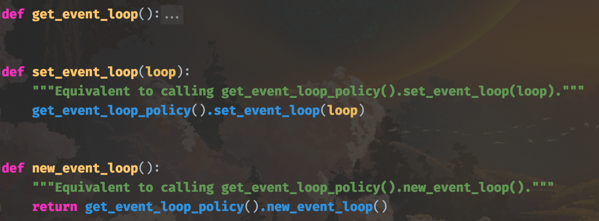
如果想创建一个事件循环，可以通过 asyncio.new_event_loop 或 get_event_loop_policy().new_event_loop，两者是一样的。并且在刚才的源码中我们看到，get_event_loop_policy 在调用时，如果发现事件循环策略不为空，那么就不会再创建了（直接返回已存在的策略），否则才会实例化 DefaultEventLoopPolicy。这就说明，不管事件循环有多少个，但是策略只有一个，而这些循环都保存在策略的 _local 属性中。
所以策略的 _local 里面可以有很多事件循环，而通过 get_event_loop 获取事件循环，本质上就是通过 策略._local._loop 的方式获取。而不同的线程会获取不同的 _loop，因为 _local 里面保存了线程 ID 到事件循环的映射，会根据线程 ID 获取对应的事件循环。至于 set_event_loop 的原理也很简单，就是将 new_event_loop 创建好的事件循环赋值给 策略._local._loop 。
import asyncio
import threading
def create_loop():
# 获取事件循环策略，如果没创建，那么就实例化 DefaultEventLoopPolicy 创建一个
# 这个 DefaultEventLoopPolicy 也不是一个具体的类，它根据操作系统会对应不同的类
loop_policy = asyncio.get_event_loop_policy()
# 通过策略的 new_event_loop 方法创建事件循环
loop = loop_policy.new_event_loop()
# 但以上两步可以通过 asyncio.new_event_loop 直接合成一步
# 设置循环，将循环设置在策略的 _local 中，这样才能通过 get_event_loop 获取
asyncio.set_event_loop(loop)
loop.close()
threading.Thread(target=create_loop).start()
threading.Thread(target=create_loop).start()
threading.Thread(target=create_loop).start()
以上我们就创建了 3 个事件循环，并保存在了策略的 _local 属性下面。
总结：事件循环策略在整个进程内是单例的，所有的线程共享一个策略。事件循环在所在的线程内是单例的，一个线程内部只会有一个事件循环。所有线程对应的循环均位于策略的 _local 属性中，获取的时候根据线程 ID 区分。
- 策略的 new_event_loop 方法：创建事件循环；
- 策略的 set_event_loop 方法：设置事件循环；
- 策略的 get_event_loop 方法：获取事件循环，会先检测策略的 _local 中是否有当前线程对应的事件循环，有则获取，没有则通过 new_event_loop 创建、set_event_loop 设置，然后返回；
但是 get_event_loop、set_event_loop、new_event_loop 我们一般不会手动通过策略去调用，而是会通过 asyncio 去调用，比如 asyncio.get_event_loop。当然在 asyncio.get_event_loop 内部，也是先通过 get_event_loop_policy() 获取策略，然后调用策略的 get_event_loop 方法来获取线程对应的循环，两者本质是一样的，因为策略是单例的。
所以无论主线程还是子线程，毫无疑问都是可以创建事件循环的。只不过主线程既可以手动调用 new_event_loop 和 set_event_loop 来创建，也可以调用 get_event_loop（当循环不存在时自动创建）。但对于子线程而言，只能采用第一种方式，也就是手动创建，如果直接调用 get_event_loop 是会报错的，至于原因，源码中写的很清楚了。

当循环不存在时，必须是主线程才会自动创建，而子线程不会。所以结果就是因为循环为空，导致程序报错。
最佳实践：对于主线程，在外部我们会调用 get_event_loop，在协程内部我们会调用 get_running_loop。如果是子线程，那么在外部则需要 new_event_loop + set_event_loop 来实现。
import asyncio
from asyncio import get_event_loop_policy
# 创建事件循环
loop = asyncio.new_event_loop()
# 设置在策略的 _local 属性中
# 调用 asyncio.get_event_loop 时，会直接返回
# 因为循环存在，就不会再创建了
asyncio.set_event_loop(loop)
print(
asyncio.get_event_loop() is loop is get_event_loop_policy()._local._loop
) # True
到目前为止描述的有些啰嗦，但这些知识如果不掌握好的话，后面学起来会很费劲。所以只要能掌握它，我们还是愿意啰嗦一些的。
然后还要补充一点就是：对于新创建的事件循环，还要附加到事件循环策略监视器中，以确保我们的事件循环可以监视在 UNIX 系统上新生成的子进程的终止状态。
import asyncio
from asyncio import get_event_loop_policy
import platform
loop = asyncio.new_event_loop()
asyncio.set_event_loop(loop)
if platform.system() != "Windows":
watcher = asyncio.get_child_watcher()
watcher.attach_loop(loop)
这个一般在子线程创建事件循环时才会用到，所以了解一下即可。
运行一个事件循环
回调函数和协程每次只能在预先设计好、并正在运行的事件循环上被调度，我们需要知道究竟该调用哪个循环的 API，以便将事件循环状态机（state machine）转换为运行状态，所以还需要确定正确的位置来调度回调函数和协程。
import asyncio
async def main():
print("Hello World")
# 获取事件循环直接通过 get_event_loop 即可
# 在没有的时候会自动创建
loop = asyncio.get_event_loop()
# 注：asyncio.create_task 只能在协程里面用
# 而 loop.create_task 在任何地方都可以，当然它们返回的都是 Task 对象
loop.create_task(main())
# 注意：此时事件循环虽然创建了，但是还没有运行
# 我们随便驱动一个协程，这样事件循环就运行起来了
# 然后会检测事件循环里面的任务，并驱动它们执行
loop.run_until_complete(asyncio.sleep(1))
"""
Hello World
"""
或者我们也可以显式地启动事件循环：
import asyncio
async def main():
print("Hello World")
loop = asyncio.get_event_loop()
loop.create_task(main())
try:
loop.run_forever()
finally:
loop.close()
"""
Hello World
"""
任务可以先添加到事件循环中，然后调用 loop.run_forever() 启动事件循环，这样之前添加的任务会自动执行。并且这个 run_forever() 将处于阻塞状态，直到我们显式调用 loop.stop() / loop.close() 或出现异常时才会停止。
关于 loop.stop() 和 loop.close() 的区别：loop.stop() 之后仍然可以调用 loop.run_* 方法，但 loop.close() 不行，它会直接关闭事件循环。
除了 loop.run_forever，也可以通过 loop.run_until_complete 调度协程来启动事件循环，就像上面的代码那样。并且这么做有一个好处，就是我们不必显式调用 loop.stop()，循环会一直运行直到传递给 run_until_complete 的协程执行结束。
import asyncio
async def main():
await asyncio.sleep(3)
print("Hello World")
loop = asyncio.get_event_loop()
loop.create_task(main())
loop.run_until_complete(asyncio.sleep(1))
此时不会有任何输出，因为当 asyncio.sleep(1) 这个协程结束后，事件循环就直接停止了。
查看事件循环中没有运行完的任务
任务被添加到事件循环里面，但如果任务还没有运行完，事件循环就结束了该怎么办？就像上面那样，如何才能查看那些没有运行完的任务呢？
import asyncio
async def main1():
await asyncio.sleep(1)
print("我是 main1")
async def main2():
await asyncio.sleep(2)
print("我是 main2")
async def main3():
await asyncio.sleep(3)
print("我是 main3")
loop = asyncio.get_event_loop()
# 启动三个任务，并丢到事件循环中
# 但事件循环还没有启动，所以任务也不会执行
loop.create_task(main1(), name="main1") # 创建任务时可以给任务起个名字
loop.create_task(main2(), name="main2")
loop.create_task(main3(), name="main3")
# 当调用 loop.for_ever 时，会启动事件循环，无限运行
# 直到我们调用 loop.stop 或 loop.close 时停止
# 当然也可以通过 loop.run_until_complete 运行一个协程，来启动事件循环
# 但这种方式启动的事件循环，会在 run_until_complete 里面的任务执行完毕后自动停止
loop.run_until_complete(asyncio.sleep(1.5))
"""
我是 main1
"""
# 所以此时 main1() 一定运行完了，但 main2() 和 main3() 显然没有
# 通过 asyncio.all_tasks(loop) 可以查看当前尚未运行完毕的所有任务
unfinished_tasks = asyncio.all_tasks(loop)
print(unfinished_tasks)
"""
{<Task pending name='main2' coro=<main2() running at .../main.py:8> wait_for=<Future pending...,
<Task pending name='main3' coro=<main3() running at .../main.py:12> wait_for=<Future pending...}
"""
# 返回一个集合，显然里面就是 main2 和 main3 两个没有完成的任务
t1 = unfinished_tasks.pop()
t2 = unfinished_tasks.pop()
print(t1.get_name(), t2.get_name())
"""
main2 main3
"""
# 继续让它完成
loop.run_until_complete(t1)
"""
我是 main2
"""
async def contiune_run():
await t2
loop.run_until_complete(contiune_run())
"""
我是 main3
"""
还是很有趣的，由于 Task 是 Future 的子类，所以我们也可以调用任务的 add_done_callback 方法绑定一个回调，当任务执行完毕时自动触发回调。
asyncio.run 源码解析
如果你的需求非常简单，只想运行一个协程直到它完成，那么可以使用 asyncio.run。这个 API 之前一直在用，那么它是怎么实现的呢？
def run(main, *, debug=None):
if events._get_running_loop() is not None:
raise RuntimeError(
"asyncio.run() cannot be called from a running event loop")
if not coroutines.iscoroutine(main):
raise ValueError("a coroutine was expected, got {!r}".format(main))
# 不管当前是否存在事件循环，都会创建一个新的事件循环
loop = events.new_event_loop()
try:
# 并把之前的事件循环替换掉，因为一个线程只会有一个事件循环
events.set_event_loop(loop)
if debug is not None:
loop.set_debug(debug)
# 运行指定的协程
return loop.run_until_complete(main)
finally:
try:
_cancel_all_tasks(loop)
# 将所有的异步生成器给清理掉
loop.run_until_complete(loop.shutdown_asyncgens())
finally:
# 将事件循环替换为 None
events.set_event_loop(None)
# 关闭事件循环（不是停止、是关闭）
loop.close()
所以这里面存在一个问题，就是使用 asyncio.run 之后，就不能再调用 get_event_loop 了。
import asyncio
async def main():
pass
asyncio.run(main())
loop = asyncio.get_event_loop()
"""
RuntimeError: There is no current event loop in thread 'MainThread'.
"""
来解释一下原因，问题还是出现在 get_event_loop 里面。

策略的 _local 属性里面除了有表示事件循环的 _loop 之外，还有一个 _set_called，它表示该线程是否设置过事件循环。当调用 asyncio.run 的时候，将该字段设置成了 True，然后执行完毕把事件循环设置成 None 了，但 _set_called 却没有设置成 False。因此当我们再调用 get_event_loop 的时候，第一个 if 不满足，于是不会再创建事件循环了，但事件循环又已经被设置为 None 了，于是第二个 if 条件满足，程序报错。
总结：asyncio.run 只适合一次性的简单任务，但 asyncio.run 本身是可以调用多次的，因为它每次都会创建新的循环。
小结
在本篇文章中，我们学习了以下内容：
- 使用 async 关键字创建协程函数，调用协程函数会得到协程，协程可在阻塞操作上暂停执行，并允许其它协程运行。一旦暂停的操作完成，协程将唤醒并从中断的地方恢复；
- 通过 await 来驱动协程执行，此时 await 所在的协程将暂停执行，并等待 await 后面所驱动的协程的结果；
- 可以使用任务同时运行多个长时间运行的操作，任务是围绕协程的包装器，创建一个任务时，它会尽快安排在事件循环上运行；
- 当一个任务的运行时间可能过长，那么可以为任务添加超时，以防止它们一直占用资源。添加超时的方式是通过 asyncio.wait_for，一旦超时则引发 TimeoutError，同时也会将任务取消掉。当然我们也可以在不超时的情况下，手动取消任务，任务取消后会在 await 处引发 CancelledError；
- 避免在使用 asyncio 时遇到的常见问题，第一个是在协程中运行 CPU 密集型代码，由于 asyncio 是单线程的，CPU 密集型的代码将阻止事件循环运行其它协程。第二个是同步阻塞 IO，因为同步阻塞，阻塞的是整个线程而不是协程。
欢迎大家关注我的公众号：古明地觉的编程教室。
如果觉得文章对你有所帮助，也可以请作者吃个馒头，Thanks♪(･ω･)ﾉ。
楔子
我们前面介绍了协程、任务和事件循环，研究了如何同时运行长耗时的操作，并探索了一些可以优化这些操作的 asyncio API。然而到目前为止，我们只是用 asyncio.sleep 函数模拟长时间的操作，显然这是不够的，接下来将使用一些真实的阻塞操作来演示如何创建一个可同时处理多个用户请求的服务器。
既然要处理用户请求，那就必须了解什么是套接字。
使用阻塞套接字
套接字听起来稍微有点陌生，但如果说 Socket 你是不是就熟悉了呢？Socket 是对 TCP/IP 协议栈的一个封装，可以让我们更方便地使用 TCP/IP 协议，而不用关注背后的原理。像我们经常使用的 Web 框架，本质上就是一个 Socket。
Socket 是操作系统对 TCP/IP 网络协议栈的封装，并提供了一系列的接口，我们通过这些接口可以实现网络通信，而不用关注网络协议的具体细节。

按照现有的网络模型，Socket 并不属于其中的任何一层，但我们可以简单地将 Socket 理解为传输层之上的抽象层，负责连接应用层和传输层。Socket 提供了大量的 API，基于这些 API 我们可以非常方便地使用网络协议栈，在不同主机间进行网络通信。
Linux 一切皆文件，Socket 也不例外，它被称为套接字文件，在使用上和普通文件是类似的。
Socket 是什么我们已经知道了，下面来看看如何使用 Socket 进行编程。

整个过程如下：
- 服务端初始化 socket，此时会得到「主动套接字」；
- 服务端调用 bind，将套接字绑定在某个 IP 和端口上；
- 服务端调用 listen 进行监听，此时「主动套接字」会变成「监听套接字」；
- 服务端调用 accept，等待客户端连接，此时服务端会阻塞在这里（调用的是阻塞的 API）；
- 客户端同样初始化 socket，得到主动套接字；
- 客户端调用主动套接字的 connect，向服务器端发起连接请求，如果连接成功，后续客户端就用这个主动套接字进行数据的传输；
- 当客户端来连接时，那么服务端的 accept 将不再阻塞，并返回「已连接套接字」，后续服务端便用这个已连接套接字和客户端进行数据传输；
- 如果客户端断开连接，那么服务端读取数据的时候就会出现 EOF，知道客户端断开连接了。待数据处理完毕后，服务端也要调用 close 来关闭连接；
我们使用 Python 来演示一下这个过程，首先是服务端：
import socket
# socket.socket() 会返回一个「主动套接字」
server = socket.socket(
# 表示使用 IPv4，如果是 socket.AF_INET6，则表示使用 IPv6
socket.AF_INET,
# 表示建立 TCP 连接，如果是 socket.SOCK_DGRAM，则表示建立 UDP 连接
socket.SOCK_STREAM
)
# 当然这两个参数也可以不传，因为默认就是它们
# 设置套接字属性，这里让端口释放后立刻就能再次使用
server.setsockopt(socket.SOL_SOCKET, socket.SO_REUSEADDR, True)
# 将「主动套接字」绑定在某个 IP 和端口上
server.bind(("localhost", 12345))
# 监听，此时「主动套接字」会变成「监听套接字」
# 里面的参数表示 backlog，代表的含义后面说
server.listen(5)
# 调用 accept，等待客户端连接，此时会阻塞在这里
# 如果客户端连接到来，那么会返回「已连接套接字」，也就是这里的 conn
# 至于 addr 则是一个元组，保存了客户端连接的信息（IP 和端口）
conn, addr = server.accept()
# 下面通过「已连接套接字」conn 和客户端进行消息的收发
# 收消息使用 recv、发消息使用 send，和 read、write 本质是一样的
while True:
msg = conn.recv(1024)
# 当客户端断开连接时，msg 会收到一个空字节串
if not msg:
print("客户端已经断开连接")
conn.close()
break
print("客户端发来消息:", msg.decode("utf-8"))
# 然后我们加点内容之后，再给客户端发过去
conn.send("服务端收到, 你发的消息是: ".encode("utf-8") + msg)
接下来编写客户端：
import socket
# 返回主动套接字
client = socket.socket(socket.AF_INET,
socket.SOCK_STREAM)
# 连接服务端
client.connect(("localhost", 12345))
while True:
# 发送消息
data = input("请输入内容: ")
if data.strip().lower() in ("q", "quit", "exit"):
client.close()
print("Bye~~~")
break
client.send(data.encode("utf-8"))
print(client.recv(1024).decode("utf-8"))
启动服务端和客户端进行测试：

还是比较简单的，当然我们这里的服务端每次只能和一个客户端通信，如果想服务多个客户端的话，那么需要为已连接套接字单独开一个线程和客户端进行通信，然后主线程继续执行 accept 等待下一个客户端。
下面来编写一下多线程的版本，这里只需要编写服务端即可，客户端代码不变。
import socket
import threading
server = socket.socket()
server.setsockopt(socket.SOL_SOCKET, socket.SO_REUSEADDR, True)
server.bind(("localhost", 12345))
server.listen(5)
def handle_message(conn, addr):
while True:
msg = conn.recv(1024)
if not msg:
print(f"客户端(ip: {addr[0]}, port: {addr[1]}) 已经断开连接")
conn.close()
break
print(f"客户端(ip: {addr[0]}, port: {addr[1]}) 发来消息:",
msg.decode("utf-8"))
conn.send("服务端收到, 你发的消息是: ".encode("utf-8") + msg)
while True:
conn, addr = server.accept()
threading.Thread(
target=handle_message, args=(conn, addr)
).start()
代码很简单，就是把已连接套接字和客户端的通信逻辑写在了单独的函数中，每来一个客户端，服务端都会启动一个新的线程去执行该函数，然后继续监听，等待下一个客户端连接到来。
然后客户端代码不变，我们启动三个客户端去和服务端通信，看看结果如何。

结果一切正常，当然我们这里的代码比较简单，就是普通的消息收发。你也可以实现一个更复杂的功能，比如文件下载器，把服务端当成网盘，支持客户端上传和下载文件，并不难。
socketserver
另外 Python 标准库还提供了一个模块叫 socketserver，它是 socket 的更高级封装，可以简化服务端的代码逻辑。并且 socketserver 的内部会自动使用多线程，服务多个客户端。
import socketserver
# 自定义一个类，必须继承 BaseRequestHandler
class ServiceHandler(socketserver.BaseRequestHandler):
"""
内部提供了三个重要属性
self.request: 已连接套接字 conn
self.client_address: 客户端信息 addr
self.server: 服务端实例（稍后会创建它）
然后我们必须要实现 handle 方法，处理客户端连接时会自动调用
此外还有两个方法，分别是 setup 和 finish，实不实现均可
"""
def setup(self) -> None:
"""在执行 handle 之前调用，用于提前做一些连接相关的设置"""
def finish(self) -> None:
"""在执行 handle 之后调用，用于资源释放等等"""
self.request.close()
def handle(self) -> None:
"""
处理客户端连接，这里的 self.request 就相当于之前的 conn
"""
client_ip, client_port = self.client_address
while True:
msg = self.request.recv(1024)
if not msg:
print(f"客户端(ip: {client_ip}, port: {client_port}) 已经断开连接")
self.request.close()
break
print(f"客户端(ip: {client_ip}, port: {client_port}) 发来消息:",
msg.decode("utf-8"))
self.request.send("服务端收到, 你发的消息是: ".encode("utf-8") + msg)
# 绑定 IP 和端口，以及用于处理的 Handler
# 这里的 ThreadingTCPServer 实例就是 ServiceHandler 里面的 self.server
server = socketserver.ThreadingTCPServer(
("localhost", 12346),
ServiceHandler
)
# 开启无限循环，监听连接
server.serve_forever()
# 如果关闭监听，那么调用 server.shutdown()
可以测试一下，结果没有问题。并且当前支持多个客户端连接，每来一个客户端就会实例化一个 ServiceHandler，并开启多线程执行 handle 方法，与客户端通信。
以上我们就简单提了一下 socketserver，了解一下即可。
listen 方法的意义？
在创建完 socket 之后，我们调用了 listent 方法，该方法接收一个 backlog 参数。
server = socket.socket()
...
server.listen(5)
那么该方法的意义是什么呢？我们调用时传的数字 5 又有什么作用呢？根据上面的 socket 流程图，我们可以得知在三次握手的时候，Linux 内核会维护两个队列：
- 半连接队列，也称 SYN 队列；
- 全连接队列，也称 Accept 队列；
服务端收到客户端发起的 SYN 请求后，内核会把该连接存储到半连接队列，并向客户端响应 SYN+ACK。接着客户端会回复 ACK，服务端收到后，内核会从半连接队列里面将连接取出，然后添加到全连接队列，等待进程调用 accept 函数时把连接取出来。

所以整个过程如下：
- 1）客户端发送 SYN 报文；
- 2）服务端将连接插入到半连接队列；
- 3）服务端向客户端返回 SYN + ACK；
- 4）客户端收到之后再向服务端返回 ACK；
- 5）服务端将连接从半连接队列中取出，移入全连接队列；
- 6）进程调用 accept 函数，从全连接队列中取出已完成连接建立的 socket 连接；
因此半连接队列（SYN 队列）用来存储 SYN_RECV 状态、未完成建立的连接；全连接队列（Accept 队列）用来存储 ESTABLISH 状态、已完成建立的连接。
而我们也可以很容易得出结论，客户端返回成功是在第二次握手之后，服务端 accept 成功是在三次握手之后，因为调用 accept 就相当于从全连接队列中取出连接和客户端进行通信。
那么如何查看 SYN 队列和 Accept 队列的大小呢？
- net.ipv4.tcp_max_syn_backlog：查看半连接队列的长度；
- net.core.somaxconn：查看全连接队列的长度；

Linux 一切皆文件，如果想要修改队列大小的话，直接修改相应的文件即可。当然准确来说：
- max(64, tcp_max_syn_backlog) 才是半连接队列的长度；
- min(backlog, somaxconn) 才是全连接队列的长度，这里的 backlog 就是我们编写 socket 代码时，在 listen 方法里面指定的值。我们之前指定了 5，那么全连接队列的长度就是 5；
但是在服务端并发处理大量请求时，如果 TCP Accpet 队列过小，或者应用程序调用 accept 方法不及时，就会造成 Accpet 队列已满。这时后续的连接就会被丢弃，从而导致服务端并发量上不去。

以上就是 listen 方法存在的意义，它接收一个 backlog 参数。如果觉得服务端支持的并发量不够，那么可以增大 backlog 的值。
使用非阻塞套接字
先回顾一下阻塞的 socket 模型：

在 listen() 这一步，会将主动套接字转化为监听套接字，但此时的监听套接字的类型是阻塞的。阻塞类型的监听套接字在调用 accept() 方法时，如果没有客户端来连接的话，就会一直处于阻塞状态，那么此时主线程就没法干其它事情了。所以我们应该设置为非阻塞，而非阻塞的监听套接字在调用 accept() 时，如果没有客户端来连接，那么主线程不会傻傻地等待，而是会直接返回，然后去做其它事情。
类似的，在创建已连接套接字的时候默认也是阻塞的，阻塞类型的已连接套接字在调用 send() 和 recv() 时也会处于阻塞状态。比如当客户端一直不发数据的时候，已连接套接字就会一直阻塞在 recv() 这一步。如果是非阻塞类型的已连接套接字，那么当调用 recv() 但却收不到数据时，也不会处于阻塞状态，同样可以直接返回去做其它事情。
import socket
server = socket.socket()
server.bind(("localhost", 12345))
# 调用 setblocking 方法，传入 False
# 表示将监听套接字和已连接套接字的类型设置为非阻塞
server.setblocking(False)
server.listen(5)
while True:
try:
# 非阻塞的监听套接字调用 accept() 时
# 如果发现没有客户端连接，则会立刻抛出 BlockingIOError
# 因此这里写了个死循环
conn, addr = server.accept()
except BlockingIOError:
pass
else:
break
while True:
try:
# 同理，非阻塞的已连接套接字在调用 recv() 时
# 如果发现客户端没有发数据，那么同样会报错
msg = conn.recv(1024)
except BlockingIOError:
pass
else:
print(msg.decode("utf-8"))
conn.send(b"data from server")
很明显，虽然上面的代码在运行的时候正常，但存在两个问题：
- 虽然 accept() 不阻塞了，在没有客户端连接时主线程可以去做其它事情，但如果后续有客户端连接，主线程要如何得知呢？因此必须要有一种机制，能够继续在监听套接字上等待后续连接请求，并在请求到来时通知主线程。我们上面的做法是写了一个死循环，但很明显这是没有意义的，这种做法还不如使用阻塞的套接字。
- send() / recv() 不阻塞了，相当于 I/O 读写流程不再是阻塞的，读写方法都会瞬间完成并返回，也就是说它会采用能读多少就读多少、能写多少就写多少的策略来执行 I/O 操作，这显然更符合我们对性能的追求。
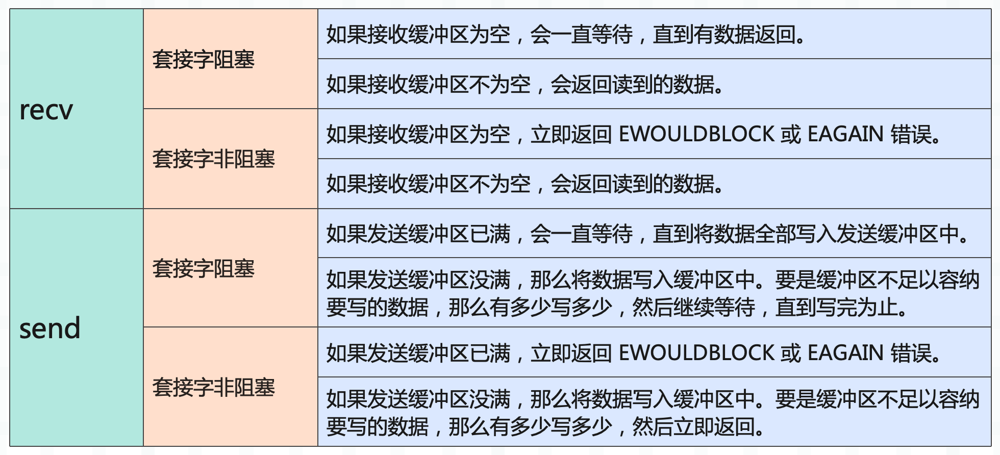
但对于非阻塞套接字而言，会面临一个问题，那就是当我们执行读取操作时，有可能只读了一部分数据，剩余的数据客户端还没发过来，那么这些数据何时可读呢？同理写数据也是这种情况，当缓冲区满了，而我们的数据还没有写完，那么剩下的数据又何时可写呢？因此同样要有一种机制，能够在主线程做别的事情的时候继续监听已连接套接字，并且在有数据可读写的时候通知主线程。
这样才能保证主线程既不会像基本 IO 模型一样，一直在阻塞点等待，也不会无法处理实际到达的客户端连接请求和可读写的数据，而上面所提到的机制便是 I/O 多路复用。
I/O 多路复用
I/O 多路复用机制是指一个线程处理多个 IO 流，也就是我们经常听到的 select/poll/epoll，而 Linux 默认采用的是 epoll。
简单来说，在只运行单线程的情况下，该机制允许内核中同时存在多个监听套接字和已连接套接字（套接字必须是非阻塞的）。内核会一直监听这些套接字上的连接请求和数据请求，一旦有请求到达就会交给主线程处理，这样就实现了一个线程处理多个 IO 流的效果。

上图就是基于多路复用的 IO 模型，我们以 epoll 为例。图中的 FD 是套接字，可以是监听套接字、也可以是已连接套接字，程序会通过 epoll 机制来让内核帮忙监听这些套接字。而此时主线程不会阻塞在某一个特定的套接字上，也就是说不会阻塞在某一个特定的客户端请求处理上。因此基于 epoll，服务端可以同时和多个客户端建立连接并处理请求，从而提升并发性。
但为了在请求到达时能够通知主线程，epoll 提供了基于事件的回调机制，即针对不同事件的发生，调用相应的处理函数。
那回调机制是怎么工作的呢？以上图为例，首先 epoll 一旦监测到 FD 上有请求到达，就会触发相应的事件。这些事件会被放进一个队列中，主线程对该事件队列不断进行处理，这样一来就无需一直轮询是否有请求发生，从而避免资源的浪费。
而在对事件队列中的事件进行处理时，会调用相应的处理函数，这就实现了基于事件的回调。因为主线程一直在对事件队列进行处理，所以能及时响应客户端请求，提升服务的响应性能。
比如连接请求和数据读取请求分别对应 Accept 事件和 Recv 事件，主线程分别对这两个事件注册 accept 和 recv 回调函数。当 Linux 内核监听到有连接请求或数据读取请求时，就会触发 Accept 事件或 Recv 事件，然后通知主线程执行 accept 函数或 recv 函数。
不好理解的话，举个通俗易懂的例子。小明要去怡红院，去找小红、小花和小翠，于是他问老鸨，这些姑娘来了没有啊，老鸨说没有。过一会儿小明又来问，这些姑娘来了没有啊，老鸨说没有。然后小明又问，这个过程就是在不断地轮询。最后老鸨无奈了，问小明：你要找这些姑娘做什么，等她们来了我通知你，不用一直问。
在这个例子中，小明相当于主线程，小红、小花和小翠就相当于套接字，老鸨相当于 epoll，负责监听这些套接字，并且可以同时监听很多个。如果她们来怡红院了，就说明套接字有事件发生了，老鸨就会通知小明，谁谁谁已经来了，你赶快做你想做的事情吧（相当于执行事件处理函数）。
比如小红来了，送她一只口红；小花来了，送她一朵玫瑰；小翠来了，送她一条手链。针对不同的事件执行相应的处理函数，而整个过程小明不需要一直轮询，它完全可以去做别的事情，当套接字有事件发生时，epoll 会通知他。
所以通过将非阻塞 I/O 和 I/O 多路复用技术搭配使用，在非阻塞 I/O 事件发生时，调用对应事件的处理函数，这种方式极大地提高了程序的健壮性和稳定性，是 Linux 系统高性能网络编程的首选。
然后我们就来看看如何在 Python 里面使用 IO 多路复用，而且 IO 多路复用有多种，最常见的就是 select、poll 和 epoll，而它们之间又有什么区别呢？下面来一点一点介绍。
多路复用之 select
Python 有一个 select 模块，它内部有一个 select 函数，对应 select IO 多路复用。进程指定内核监听哪些文件描述符，当没有文件描述符事件发生时，进程被阻塞。当一个或多个文件描述符事件发生时，进程被唤醒。
import select
"""
select 函数接收四个参数
rlist：一个列表，监听那些可读的 socket
wlist：一个列表，监听那些可写的 socket
xlist：一个列表，监听那些出错的 socket
timeout：超时时间
"""
select.select()
这里需要特别指出的是，Linux 一切皆文件，套接字也不例外。每一个套接字（文件）都有一个文件描述符（非负整数），用来标识唯一的套接字。如果用 C 实现多路复用，那么会以文件描述符作为参数，有了文件描述符，函数就能找到对应的套接字，进而进行监听、读写等操作。
但在 Python 里面，则是直接使用套接字本身作为参数，而不是使用文件描述符。当然啦，Python 的 select 也是封装了底层的 select。然后我们来看一下如何使用 select。
import socket
import select
from queue import Queue
from typing import Dict
server = socket.socket()
server.bind(("localhost", 12345))
server.setsockopt(socket.SOL_SOCKET, socket.SO_REUSEADDR, True)
# 必须设置为非阻塞，IO 多路复用要搭配非阻塞套接字
server.setblocking(False)
server.listen(5)
# 以上我们就创建了监听套接字，它负责监听是否有客户端连接
# 所以当事件发生时，属于可读事件，代表客户端连接过来了
# 因此 server 应该放在 rlist 里面
rlist = [server]
wlist = []
xlist = rlist
# 因为可以监听多个套接字，所以 rlist、wlist、xlist 都是列表
# 但在初始状态下，select 只需要监听一个套接字（server）即可
message_queues: Dict[socket.socket, Queue] = {}
while True:
# 开启 select 监听，返回三个元素
# readable： rlist 中发生可读事件的 socket
# writeable： wlist 中发生可写事件的 socket
# exceptional：xlist 中发生异常的 socket
readable, writeable, exceptional = select.select(rlist, wlist, xlist)
# 遍历 readable
for r in readable:
# 如果 r is server，则代表监听套接字有事件发生，显然是客户端连接来了
if r is server:
# 监听套接字是非阻塞的，那么已连接套接字默认也是非阻塞的
# 当然你也可以调用 conn.setblocking(False) 显式地设置一下
conn, addr = server.accept()
print(f"和客户端 {addr[0]}:{addr[1]} 建立连接")
# 将已连接套接字添加到 rlist 中，让它也被 select 监听
# 当客户端发消息时，它会进入活跃状态，有事件发生
# 然后被 select 监测到，放到 readable 中，这样遍历的时候就可以处理它了
rlist.append(conn)
# 由于客户端连接之后要发消息，那么我们是不是要将消息保存起来呢？
message_queues[conn] = Queue() # 负责保存后续客户端发的消息
else:
# 如果 r is not server，则代表是已连接套接字有事件发生
# 说明是某个客户端发送消息了，我们要处理它
data = r.recv(1024)
if data:
# 这里的 r 就是活跃的已连接套接字
# 调用它的 getpeername 方法，也可以获取到客户端连接的 ip 和 端口
addr = r.getpeername()
print(f"收到客户端 {addr[0]}:{addr[1]} 发来的消息:",
f"`{data.decode('utf-8')}`")
# message_queues 保存了所有的已连接套接字
# 每一个套接字都对应一个队列，找到该活跃套接字对应的队列
message_queues[r].put(data) # 将消息放进去
# 消息放进去了，服务端是不是也要回复呢？显然这属于可写事件
# 我们还要将 r 放到 wlist 中，这样 select 就会监测到
if r not in wlist:
wlist.append(r)
else:
# 走到这里说明 data 为假，说明客户端断开连接了，发来一个 b''
addr = r.getpeername()
print(f"客户端 {addr[0]}:{addr[1]} 已断开连接")
# 将套接字从 rlist、wlist 当中移除
# 客户端都断开连接了，那么 select 也就不需要再监听了
rlist.remove(r)
if r in wlist:
wlist.remove(r)
# 对了，还要将它从 message_queues 里面移除
message_queues.pop(r)
r.close() # 关闭套接字连接
# 以上是遍历可读事件，可读事件可以发生在监听套接字上面（和客户端建立连接）
# 也可以发生在已连接套接字上面（客户端发信息了）
# 如果没有事件发生或者处理完毕，那么接下来就要遍历可写事件
# 而可写事件一定发生在已连接套接字上面（要回消息给客户端）
for w in writeable:
message_queue = message_queues[w]
# 一开始队列里面肯定是有消息的，因为我们手动往里面放了一条
# 但如果队列为空，说明服务端已经回复过了，那么要将该套接字从 wlist 里面移除
# 让它变为非活跃状态，不再满足可写
# 等到下一次客户端发消息时，再将它添加到 wlist 中，让它变得可写
if message_queue.empty():
wlist.remove(w)
continue
# 获取消息
data = message_queue.get()
# 发送给客户端
w.send("服务端收到，你发的消息是: ".encode("utf-8") + data)
# 然后遍历 xlist，如果在跟某个客户端通信的过程中，出现了错误
# 那么将套接字从 rlist、wlist、xlist、message_queue 当中都删除
# 然后再关闭套接字连接
for x in exceptional:
addr = x.getpeername()
print(f"和客户端 {addr[0]}:{addr[1]} 通信出现错误")
rlist.remove(x)
if x in wlist:
wlist.remove(x)
message_queues.pop(x)
x.close()
客户端代码还和之前一样，保持不变，然后来测试一下：
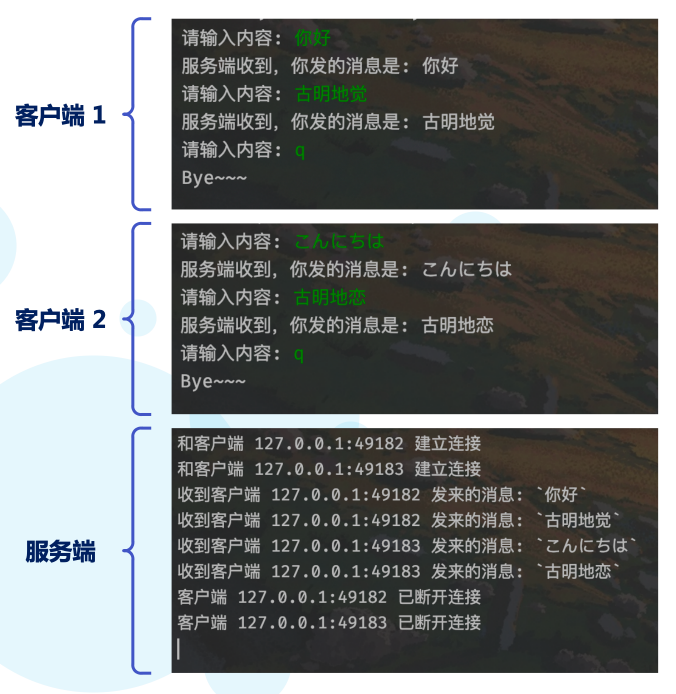
代码应该不难理解，但我们调用 select 背后都发生了什么呢？
- 上下文从用户态进入内核态，把要监听的文件描述符从用户空间拷贝到内核空间；
- 内核通过文件描述符找到所有的套接字，然后遍历，查看套接字是否有对应的事件发生；
- 如果没发生，那么让进程阻塞，当到达规定的超时时间（通过 select 函数的第四个参数指定，不设置则一直阻塞），再将进程唤醒。然后再次进行遍历，直到有事件发生（设备驱动产生中断）。这些都由内核帮我们完成；
- 当事件发生时，对套接字进行遍历，找到那些发生事件的套接字并返回，就是我们代码中的 readable、writeable、exceptional；
- 程序对这些活跃的套接字进行处理；
上面的五个步骤就完成了一次 select 监听流程，但很明显我们要一直监听，所以写一个死循环。当 select 监听结束时，立刻开启下一轮 select 监听，因为服务是要不断运行的。
因此通过以上几个步骤不难看出，select 有两个致命的缺陷：
- 每一次监听都要将所有的文件描述符拷贝到内核态，如果描述符非常多的话，这种拷贝会很耗时；
- 当事件发生时，还要将所有的文件描述符都遍历一次，才能找到那些有事件发生的套接字。如果描述符非常多，遍历也需要时间；
- 然后 select 多路复用其实还有一个缺陷，就是它最多同时监听 1024 个文件描述符。
所以 select 多路复用有三个缺陷，因此在工作中我们很少用它。
多路复用之 poll
第二个要介绍的多路复用是 poll，相比 select，它的最大改进就是取消了最多同时监听 1024 个文件描述符这一限制，但其它的两个缺陷却没有得到改善。
多路复用，Windows 只支持 select，macOS 支持 select、poll，而 Linux 则是 select、poll 和 epoll 都支持。
下面先来简单看一下 poll，它在 select 模块里面是一个类。
import select
from select import POLLIN, POLLOUT, POLLERR, POLLHUP
# select.poll 是一个类
# 我们实例化一个 poll 对象
poll = select.poll()
# 给指定的套接字绑定事件
# 第一个参数可以是描述符，也可以是套接字
# 第二个参数是要绑定的事件
# POLLIN：可读事件（rlist）
# POLLOUT：可写事件（wlist）
# POLLERR：出现异常（xlist）
# POLLHUP：连接中断
poll.register(..., POLLIN | POLLERR)
# 取消某个套接字的事件绑定
poll.unregister(...)
有了 select 的经验，poll 应该不难理解，我们将上面使用 select 的服务端代码，用 poll 重写一下。
import socket
import select
from select import POLLIN, POLLOUT, POLLERR, POLLHUP
from typing import Dict
from queue import Queue
server = socket.socket()
server.bind(("localhost", 12345))
server.setsockopt(socket.SOL_SOCKET,
socket.SO_REUSEADDR, True)
server.setblocking(False)
server.listen(5)
# 描述符到套接字的映射
fd2sk = {server.fileno(): server}
# 保存套接字接收到的客户端发来的消息
message_queues: Dict[int, Queue] = {}
# 实例化一个 poll 对象
poll = select.poll()
# 首先要对 server 进行注册，正如我们使用 select.select 时，要先将 server 放在 rlist 里面
# 然后事件为可读，不过由于可能发生错误，因此事件类型为 POLLIN | POLLERR
poll.register(server, POLLIN | POLLERR)
# 开启无限循环
while True:
# poll 方法接收一个 timeout，不传则表示不设置超时
# 它和 select.select 的第四个参数的含义相同
# 当有事件发生时，会返回相应的文件描述符和事件
events = poll.poll() # 正式开启监听
# 进行遍历
for fd, event in events:
# 说明是监听套接字活跃了
if fd == server.fileno():
conn, addr = fd2sk[fd].accept()
print(f"和客户端 {addr[0]}:{addr[1]} 建立连接")
# 对 conn 进行注册，下一轮循环的时候也会对它进行监听
# 这里可以传文件描述符、也可以传套接字
# 如果传套接字，那么会自动调用 fileno 获取描述符
poll.register(conn, POLLIN | POLLHUP | POLLERR)
# 维护文件描述符到套接字的映射
fd2sk[conn.fileno()] = conn
# 为每个文件描述符维护一个队列，用于保存客户端发来的消息
message_queues[conn.fileno()] = Queue()
# 否则说明是已连接套接字有事件发生
# 那么事件是可读还是可写呢？显然要通过 event 判断
elif event & POLLIN: # 可读
data = fd2sk[fd].recv(1024)
if data: # 有数据
addr = fd2sk[fd].getpeername()
print(f"收到客户端 {addr[0]}:{addr[1]} 发来的消息:",
f"`{data.decode('utf-8')}`")
# 客户端发消息，服务端也要回消息，因此要给它注册一个可写事件
poll.register(fd, POLLOUT | POLLHUP | POLLERR)
# 然后将消息保存起来
message_queues[fd].put(data)
else: # 客户端断开连接
addr = fd2sk[fd].getpeername()
print(f"客户端 {addr[0]}:{addr[1]} 已断开连接")
# 取消监听，会将所有事件全部取消
poll.unregister(fd)
# 关闭连接
fd2sk[fd].close()
# 从字典中移除
fd2sk.pop(fd)
elif event & POLLOUT: # 已连接套接字可写
message_queue = message_queues[fd]
if message_queue.empty():
# 队列为空，说明消息已经发出去了
# 那么套接字就不再可写了，因此要取消监听
# 等到下一次客户端发消息时，再变得可写
poll.unregister(fd)
# 但 unregister 会取消所有事件的监听
# 因此还要重新注册可读事件，不然后续客户端发消息时，就无法处理了
poll.register(fd, POLLIN | POLLHUP | POLLERR)
else:
data = message_queue.get()
fd2sk[fd].send(
"服务端收到，你发的消息是: ".encode("utf-8") + data
)
elif event & POLLERR: # 发生错误
addr = fd2sk[fd].getpeername()
print(f"和客户端 {addr[0]}:{addr[1]} 通信出现错误")
poll.unregister(fd)
fd2sk[fd].close()
message_queues.pop(fd)
这里使用 poll 多路复用实现的服务端，和上面使用 select 多路复用实现的服务端，在效果上一模一样，可以测试一下。不过从使用上讲，poll 的话要方便一些。
然后是性能问题，poll 相比 select，只是改善了支持的最大描述符的数量，因此这两种多路复用基本都不用。于是 Linux 内核在 2.4 的时候引入了 epoll，它是 IO 多路复用的终极形态，我们来看一下。
多路复用之 epoll
通过非阻塞 IO 和 IO 多路复用，单线程的服务端可以同时和多个客户端通信。我们给每个套接字绑定好相应的事件，然后让内核帮忙监听这些套接字，一旦有事件发生就及时通知。目前使用的多路复用是 select 和 poll，但这两种多路复用存在性能问题。
- 每一次监听都要将文件描述符拷贝到内核空间，当描述符很多的时候，就会很耗时。那么有没有一种机制，只需要拷贝一次就好了呢？后续就交给内核来维护。虽然要交给内核，导致拷贝无法避免，但能不能不要每次都拷贝。
- 当有套接字活跃的时候，select 和 poll 会被唤醒，但它们醒来之后只知道有套接字活跃了，却不知道是哪些套接字活跃，只能挨个遍历所有的套接字。所以有没有一种机制，负责告知活跃的套接字呢？
为了解决上面两个问题，Linux 引入了 epoll，这也是我们的重点。不过关于 epoll 的原理一会再说，先来看看如何在 Python 里面使用 epoll。
在使用上，epoll 和 poll 高度相似。
我们将之前的服务端代码，使用 epoll 重写一下。
import select
import socket
from queue import Queue
from select import (
# epoll 和 poll 的用法相似
# 把事件换成 epoll 的事件即可
EPOLLIN,
EPOLLOUT,
EPOLLERR,
EPOLLHUP
)
from typing import Dict
server = socket.socket()
server.bind(("localhost", 12345))
server.setsockopt(socket.SOL_SOCKET, socket.SO_REUSEADDR, True)
server.setblocking(False)
server.listen(5)
fd2sk = {server.fileno(): server}
message_queues: Dict[int, Queue] = {}
# 实例化一个 epoll 对象
epoll = select.epoll()
# 给 server 注册读事件
epoll.register(server, EPOLLIN | EPOLLERR)
while True:
# 仍然是调用 poll 方法，开始轮询
events = epoll.poll()
for fd, event in events:
if fd == server.fileno():
conn, addr = fd2sk[fd].accept()
print(f"和客户端 {addr[0]}:{addr[1]} 建立连接")
# 给已连接套接字注册读事件
# 第一个参数可以传文件描述符、也可以传套接字
epoll.register(conn, EPOLLIN | EPOLLHUP | EPOLLERR)
fd2sk[conn.fileno()] = conn
message_queues[conn.fileno()] = Queue()
elif event & EPOLLIN: # 可读
data = fd2sk[fd].recv(1024)
if data: # 有数据
addr = fd2sk[fd].getpeername()
print(f"收到客户端 {addr[0]}:{addr[1]} 发来的消息:",
f"`{data.decode('utf-8')}`")
# 客户端发消息了，那么套接字要回复消息，因此满足可写
# 但是和 poll 不同，epoll 只能给一个套接字注册一次
# 而之前已经注册过一次了（已连接套接字创建时，注册了读事件）
# 因此再注册就会报错，因为不能连续注册
# 所以我们需要将 fd 上的事件取消掉，然后重新注册
epoll.unregister(fd)
# 重新注册，此时要同时注册读事件和写事件
epoll.register(fd, EPOLLIN | EPOLLOUT | EPOLLHUP | EPOLLERR)
message_queues[fd].put(data)
else:
# 客户端断开连接了
addr = fd2sk[fd].getpeername()
print(f"客户端 {addr[0]}:{addr[1]} 已断开连接")
epoll.unregister(fd)
fd2sk[fd].close()
fd2sk.pop(fd)
elif event & EPOLLOUT: # 可写
message_queue = message_queues[fd]
if message_queue.empty():
# 队列是空的，说明消息已经发走了，那么应该取消写事件
# 做法也很简单：先将事件全部取消，然后重新注册读事件
# 但也可以通过 modify 方法，直接修改事件类型
epoll.modify(fd, EPOLLIN | EPOLLHUP | EPOLLERR)
else:
data = message_queue.get()
fd2sk[fd].send(
"服务端收到，你发的消息是: ".encode("utf-8") + data
)
elif event & EPOLLERR:
addr = fd2sk[fd].getpeername()
print(f"和客户端 {addr[0]}:{addr[1]} 通信出现错误")
epoll.unregister(fd)
fd2sk[fd].close()
message_queues.pop(fd)
代码和 poll 高度相似，但它的性能要比 select 和 poll 高很多。经过测试，epoll 在监听 10 个描述符的时候，耗时大概 0.4 秒，而 poll 耗时大概 0.6 秒，两者差别不是很大。但如果监听 10000 个描述符，那么 epoll 耗时大概 0.7 秒，而 poll 的耗时要 990 秒。所以 epoll 的性能是碾压 select 和 poll 的，那么 epoll 的内部用了哪些黑魔法呢？我们来介绍一下。
首先必须要说明的是，Python select 模块里面的 epoll 实际上是封装了底层操作系统的 epoll，但是让使用变得更简单了，当然 select 和 poll 也是同理。所以接下来我们分析的是，操作系统提供的 epoll。
关于 epoll，操作系统提供了三个 API，分别是 epoll_create，epoll_ctl 和 epoll_wait。
epoll_create
调用 epoll_create 即可创建一个 epoll 实例，函数原型如下：
int epoll_create(int size);
该函数返回一个整型，也就是文件描述符，通过描述符可以找到相应的 epoll 实例。而 Python 在调用 select.epoll() 的时候，底层也会调用 epoll_create，只不过 Python 会封装成一个 epoll 对象再返回，我们直接操作内部的方法即可。
正如打开文件一样，底层在打开文件的时候也是返回一个描述符，而 Python 则是封装成一个文件对象再返回。调用文件对象的方法，来操作文件，因为 Python 是面向对象的语言。
函数的 size 参数，在一开始的 epoll_create 实现中，是用来告知期望内核监控的文件描述符的数量，然后内核使用该信息来初始化数据结构。但在新的实现中，这个参数不再被需要，因为内核可以动态分配需要的数据结构。我们在使用的时候，将 size 设置成一个大于 0 的整数就可以了。
epoll_ctl
在创建完 epoll 实例之后，可以通过调用 epoll_ctl 往这个 epoll 实例增加或删除监控的事件。函数 epll_ctl 原型如下：
int epoll_ctl(int epfd, int op, int fd,
struct epoll_event *event);
第一个参数 epfd 是 epoll 实例的描述符，也就是 epoll_create 的返回值。
第二个参数表示注册事件、还是取消注册的事件，它有三个选项可供选择：
- EPOLL_CTL_ADD： 给 epoll 实例注册事件；
- EPOLL_CTL_DEL：取消给 epoll 实例注册的事件；
- EPOLL_CTL_MOD： 修改给 epoll 实例注册的事件；
第三个参数表示套接字对应的文件描述符。
第四个参数表示注册的事件类型，有以下几种：
- EPOLLIN：读事件；
- EPOLLOUT：写事件；
- EPOLLERR：出现错误；
- EPOLLHUP：连接关闭；
- EPOLLET：触发方式为边缘触发，默认为水平触发（一会解释）；
所以该函数就等价于，Python 中 epoll 对象的 register 和 unregister 方法。
epoll_wait
该函数相当于 Python 里面 epoll 对象的 poll 方法，调用之后即可开启监听。
int epoll_wait(int epfd, struct epoll_event *events,
int maxevents, int timeout);
这种类型的 C 函数，一般返回的都是整型，用来表示成功还是失败。至于真正意义上的返回值，则在调用之前先声明好，然后将指针传进去，函数在内部修改指针指向的值。
所以这里的第二个参数，就相当于 Python 里面 poll 方法返回的 events，里面包含了套接字的描述符和发生的事件。至于第一个参数，就是 epoll 实例的描述符。第三个参数表示 epoll 可以处理的最大事件数量。第四个参数则表示超时时间，不设置的话会一直等待，直到有事件发生。如果设置了，那么当抵达超时时间，无论有没有事件都会立即返回，然后进入下一轮循环，重新开启监听。
epoll 为什么高效？
说完了 epoll 的相关 API，接着我们来聊一聊它为什么高效？
首先是描述符的查找，我们在给某个描述符对应的套接字增加、删除和修改事件的时候，epoll 肯定要找到指定的描述符，那么 epoll 使用什么数据结构来管理这些描述符呢？答案是红黑树，这是一个非常高效的数据结构，操作元素的时间复杂度为 O(logN)，C++ 的 map 也是基于红黑树实现的。
然后再来看看 select 的三个缺点，epoll 是如何改善的，还记得 select 函数的三个缺点吗？
- 每次调用 select.select() 或者 poll.poll() 的时候，都要将描述符从用户空间拷贝到内核空间，当描述符非常多时开销会很大；
- 当有事件发生时，需要遍历所有的描述符，一个一个检测，才能知道是哪些套接字有事件发生。在描述符非常多时，开销同样很大；
- select 支持的文件描述符太少了，默认是 1024；
首先第三个缺点不用多说，epoll 采用红黑树管理描述符，所以它能支持的描述符的数量非常多，就看操作系统能打开多少文件了。
然后是第一个缺点，epoll 在给套接字注册事件、也就是调用 epoll_ctl 的时候就会将其描述符拷贝到内核空间中，而不是等到监听的时候再拷贝。这样的话，每个描述符只需要拷贝一次即可。
最后是第二个缺点，epoll 是通过回调解决的。在给套接字注册事件时，还会为它绑定一个回调函数。当有事件发生时，就会调用该回调函数，将对应的描述符放在一个专门的就绪队列（由双向链表实现）里面，然后唤醒 epoll。
所以就绪队列里面的描述符对应的套接字都是活跃的，不在就绪队列里面则不活跃，也就是没有事件发生，这样就不用遍历了。内核只需要将就绪队列里的描述符返回即可，并且这个过程还使用了 mmap，省略了拷贝的开销。
Linux 一切皆文件，套接字也不例外，而文件支持很多操作，比如我们熟知的 read, write, fsync, close 等等。但除了这些还有一个 poll 操作，它负责自定制事件的监听逻辑，事件发生时，将描述符添加到就绪队列这一逻辑就由 poll 操作实现。
所以 epoll 管理的描述符对应的文件必须支持 poll 操作，如果文件没有实现，那么它就无法被 epoll 管理。支持 poll 操作的最常见的文件种类就是套接字，而像我们平常使用的文件系统则是不支持的。
因此基于 epoll，单线程也能实现高并发，Redis 和 Nginx 已经证明了这一点。
水平触发和边缘触发
epoll 的工作模式有两种，分别是 LT 和 ET。
- LT（level trigger）：水平触发，当 epoll_wait 检测到描述符有事件发生，并将事件通知给应用程序时，应用程序可以不立即处理该事件。下次调用 epoll_wait 时，会再次响应并通知事件。
- ET（edge trigger）：边缘触发，当 epoll_wait 检测到描述符有事件发生，并将事件通知给应用程序时，应用程序必须立即处理该事件。如果不处理，下次调用 epoll_wait 时，就不会再通知了。
LT 是默认模式，但 ET 模式在很大程度上减少了事件被重复触发的次数，因此效率要比 LT 模式高。
selectors：select 模块的封装
操作系统有高效的 API，可以让我们观察套接字的数据传入和其它内置事件，虽然实际 API 依赖于操作系统提供的多路复用（kqueue、epoll） ，但所有的这些 IO 通知系统都以类似的方式运行。我们提供一个想要监视事件的套接字列表，而不必时刻检查每个套接字是否有数据，操作系统会明确地告诉我们套接字何时包含数据。
因为这是在硬件级别实现的，所以在监视期间使用的 CPU 资源非常低，从而可以有效地使用资源。这些通知系统是 asyncio 实现并发的核心，了解它是如何工作的，可以让我们了解 asyncio 的底层机制。
asyncio 的核心是事件循环，而事件循环本质上就是对操作系统提供的 IO 多路复用（通知系统）的一个封装。
但不同的系统提供的多路复用是不同的，于是便有了 selectors 模块，它是对 select 模块的一个封装。selectors 公开了一个名为 BaseSelector 的抽象基类，它对每个事件通知系统都有多个实现，此外它还包含一个 DefaultSelector 类，该类会自动选择对系统最有效的实现。
我们还是将之前的 server 端，重写一下。
import socket
from queue import Queue
# selectors 里面提供了多种"多路复用器"
# 除了 select、poll、epoll 之外，还有 kqueue，这个是针对 BSD 平台的
try:
from selectors import (
SelectSelector,
PollSelector,
EpollSelector,
KqueueSelector
)
except ImportError:
pass
# 由于种类比较多，所以提供了 DefaultSelector
# 会根据当前的系统种类，自动选择一个合适的多路复用器
from selectors import (
DefaultSelector,
EVENT_READ, # 读事件
EVENT_WRITE, # 写事件
)
server = socket.socket()
server.bind(("localhost", 12345))
server.setsockopt(socket.SOL_SOCKET,
socket.SO_REUSEADDR, True)
server.setblocking(False)
server.listen(5)
message_queues = {}
# 实例化一个多路复用器
sel = DefaultSelector()
def accept(server: socket.socket):
"""和客户端建立连接"""
conn, addr = server.accept()
print(f"和客户端 {addr[0]}:{addr[1]} 建立连接")
# 一旦建立连接，那么就要接收客户端消息
# 所以我们要绑定事件，register 方法接收三个参数
# 参数一：传一个套接字即可
# 参数二：事件类型，这里是读事件
# 参数三：事件发生时，执行的回调函数
sel.register(conn, EVENT_READ, recv)
# 表示当 conn 可读时，就去执行 recv 函数
message_queues[conn] = Queue()
def recv(conn: socket.socket):
"""接收客户端数据"""
data = conn.recv(1024)
addr = conn.getpeername()
if data: # 有数据
print(f"收到客户端 {addr[0]}:{addr[1]} 发来的消息:",
f"`{data.decode('utf-8')}`")
# 收到数据了，那么要给客户端回复，所以要绑定可写事件
# 当事件发生时，执行 send 函数
sel.modify(conn, EVENT_READ | EVENT_WRITE, send)
message_queues[conn].put(data)
else:
print(f"客户端 {addr[0]}:{addr[1]} 已断开连接")
conn.close()
# 取消监听
sel.unregister(conn)
message_queues.pop(conn)
def send(conn: socket.socket):
"""给客户端发送数据"""
message_queue = message_queues[conn]
if message_queue.empty():
# 队列为空说明已经发送过了，将事件改成可读
# 继续监听客户端发来的消息
sel.modify(conn, EVENT_READ, recv)
else:
data = message_queue.get()
conn.send(
"服务端收到，你发的消息是: ".encode("utf-8") + data
)
# 给监听套接字注册可读事件
# 当有客户端连接，去执行 accept 函数
sel.register(server, EVENT_READ, accept)
# 在 accept 函数里面创建已连接套接字 conn
# 然后给 conn 绑定可读事件，当客户端发消息时，去执行 recv 函数
# 在 recv 函数里面给套接字绑定可写事件，然后去执行 send 函数
while True:
# 内部会根据操作系统，选择一个合适的多路复用
events = sel.select()
# key 是一个 namedtuple
# 内部有如下字段：'fileobj', 'fd', 'events', 'data'
# key.fd 是套接字的文件描述符
# key.fileobj 是套接字本身
# key.data 是给套接字绑定的回调
# key.event 是事件
for key, mask in events:
# 事件发生时，获取回调，然后调用
# 回调显然就是这里的 accept、recv、send
callback = key.data
callback(key.fileobj)
通过 selectors 模块我们将服务端重新实现了，效果和之前是一样的。整个过程就是给 socket 绑定一个事件 + 回调，当事件发生时会告知我们，但是调用回调不是内核自动完成的，而是由我们手动完成的。"非阻塞 + 回调 + 基于 IO 多路复用的事件循环"，所有框架基本都是这个套路。
需要说明的是，这种写法的性能非常高，Redis 和 Nginx 都是基于这种方式实现了高并发，但它和我们传统的同步代码的写法大相径庭。如果是同步代码，那么会先建立连接、然后接收数据、再发送数据，这显然更符合我们人类的思维，逻辑自上而下，非常自然。
但是多路复用加回调的方式，就让人很不适应，我们在建立完连接之后，不能直接收数据，必须将接收数据的逻辑放在一个单独的函数（方法）中，然后再将这个函数以回调的方式注册进去。同理，在接收完数据之后，也不能立刻发送，同样要将发送数据的逻辑放在一个单独的函数中，然后再以回调的方式注册进去。
所以好端端的自上而下的逻辑，因为回调而被分割的四分五裂，这种代码在编写和维护的时候是非常痛苦的。
还是之前提到的问题，回调可能会层层嵌套，容易陷入回调地狱，如果某一个回调执行出错了怎么办？代码的可读性差导致不好排查，即便排查到了也难处理。
另外，如果多个回调需要共享一个变量该怎么办？因为回调是通过事件循环调用的，在注册回调的时候很难把变量传过去。简单的做法是把该变量设置为全局变量，或者说多个回调都是某个类的实例的方法，然后把共享的变量作为一个属性绑定在 self 上面。但当逻辑复杂时，就很容易导致全局变量满天飞的问题。
所以这种模式就使得开发人员在编写业务逻辑的同时，还要关注并发细节。
因此使用回调的方式编写异步化代码，虽然并发量能上去，但是对开发者很不友好；而使用同步的方式编写同步代码，虽然很容易理解，可并发量却又上不去。那么问题来了，有没有一种办法，能够让我们在享受异步化带来的高并发的同时，又能以同步的方式去编写代码呢？也就是我们能不能以同步的方式去编写异步化的代码呢？
答案是可以的，使用「协程」便可以办到，协程在这种模式的基础之上又批了一层外衣，兼顾了开发效率与运行效率。
在 asyncio 中使用套接字
asyncio 的事件循环提供了处理套接字的一些方法，我们主要会用到三个：sock_accept、sock_recv、sock_sendall。这些方法类似于前面使用的套接字方法，但不同之处在于，它们接收套接字作为参数并返回协程，我们可以等待协程，直到有数据可供操作。
先来看一下 sock_accept，它类似于 server.accept。
conn，add = await loop.sock_accept(sock)
sock_recv 和 sock_sendall 的调用方式与 sock_accept 类似，它们接收一个套接字，然后等待结果。
- sock_recv 接收一个套接字并陷入阻塞，直到套接字有可以处理的字节；
- sock_sendall 接收一个套接字和要发送的数据，同样会陷入阻塞，直到要发送给套接字的所有数据都发送完毕，成功时返回 None。
data = await loop.sock_recv(sock)
await loop.sock_sendall(socket, data)
下面我们就基于 asyncio 设计一个回显服务器。
import asyncio
import socket
async def echo(conn: socket.socket):
loop = asyncio.get_running_loop()
try:
# 无限循环等待来自客户端连接的数据
while data := await loop.sock_recv(conn, 1024):
# 收到数据之后再将其发送给客户端
# 为了区别，我们发送的时候在结尾加一个 b"~"
await loop.sock_sendall(conn, data + b"~")
finally:
conn.close()
async def listen_for_conn(server: socket.socket):
loop = asyncio.get_running_loop()
while True:
conn, addr = await loop.sock_accept(server)
conn.setblocking(False)
print(f"收到客户端 {addr} 的连接")
# 每当获得连接时，创建一个任务来监听客户端的数据
asyncio.create_task(echo(conn))
async def main():
server = socket.socket()
server.setsockopt(socket.SOL_SOCKET, socket.SO_REUSEADDR, True)
server.setblocking(False)
server.bind(("localhost", 12345))
server.listen()
await listen_for_conn(server)
asyncio.run(main())
代码非常简单，我们可以创建多个 socket 连接本地的 12345 端口，服务端能够并发处理。
最后再补充一下关于信号的知识，比如我们想在应用程序关闭时对剩余任务进行清理该怎么办？或者说我们希望在程序关闭时，等现有的传输任务完成之后再关闭，而这需要用到信号的功能。
信号是 UNIX 操作系统中的一个概念，用于异步通知进程，告知发生在操作系统级别的事件。你可能对某些信号很熟悉，例如一个常见的信号是 SIGINT（信号中断的缩写），当你按 CTRL+C 终止命令行应用程序时会触发此事件。在 Python 中，可通过捕获 KeyboardInterrupt 异常来处理这个问题。另一个常见的信号是 SIGTERM（信号终止的缩写），当我们在特定进程上运行 kill 命令停止执行时，就会触发这种情况。
为实现自定义关闭逻辑，我们在应用程序中为 SIGINT 信号实现监听器，当收到信号时，取消未完成的任务。
import asyncio
import signal
def cancel_tasks():
print("捕获到信号 SIGINT")
# all_tasks 接收一个事件循环
# 如果在协程里面调用，那么不需要传，默认使用当前所在的事件循环
unfinished_tasks = asyncio.all_tasks()
print(f"要取消 {len(unfinished_tasks)} 个任务")
for t in unfinished_tasks:
t.cancel()
async def main():
# 这里可以用 get_running_loop，也可以用 get_event_loop
# 因为 get_event_loop 内部也会先调用 get_running_loop
# 如果事件循环已存在，那么直接返回，否则创建一个新的
# 不过建议在协程里面直接使用 get_running_loop 即可
loop = asyncio.get_event_loop()
# 添加信号处理事件
loop.add_signal_handler(signal.SIGINT, cancel_tasks)
await asyncio.sleep(10)
asyncio.run(main())
运行这个应用程序后，如果在 10 秒内按下 CTRL+C，那么会看到 "捕获到信号 SIGINT" 被输出显示，然后是我们正在取消任务的消息。之后还会看到从 asyncio.run(main()) 处抛出的 CancelledError，因为 asyncio.run 里面会 await main() 直到执行完毕，但我们已经取消了该任务，所以在 await 处会抛出 CancelledError。
小结
在本篇文章中，我们介绍了阻塞和非阻塞套接字，并更深入地探索了异步事件循环。
- 如果使用阻塞套接字创建应用程序，那么阻塞套接字将在等待数据时停止整个线程。这阻止了并发实现，因为一次只能从一个客户端获取数据；
- 使用非阻塞套接字构建应用程序，这些套接字总是会立即返回，而结果有两种：要么已经准备好了数据，要么因为没有数据而出现异常。这些套接字可以实现并发，因为它们的方法从不阻塞，会立即返回；
- 使用 selectors 模块有效监听套接字上的事件，通过这个模块可以注册想要跟踪的套接字，并告诉我们非阻塞套接字何时准备好数据。注册感兴趣的套接字，并且进行无限循环，一旦套接字有数据可用于操作，就执行我们指定的代码；
- 使用 asyncio 的事件循环方法来构建具有非阻塞套接字的应用程序，这些方法接收一个套接字并返回一个协程，然后可在 await 表达式中使用它。这将暂停父协程，直到套接字带有数据。事件循环就是基于 IO 多路复用做的一个封装，而 IO 多路复用能够实现的前提之一就是：套接字必须是非阻塞的；
欢迎大家关注我的公众号：古明地觉的编程教室。
如果觉得文章对你有所帮助，也可以请作者吃个馒头，Thanks♪(･ω･)ﾉ。
楔子
关于 Future 和 Task 在之前的文章中已经说过了，但由于这两个概念非常重要，我们单独再说一遍，并做一些补充。虽然内容和之前会有很多重复，但不妨碍我们再复习一遍。
Future
Future 是 asyncio 提供的一个类，它的实例对象（future）我们称之为未来对象，future 包含一个你希望在未来某个时间点获得、但目前还不存在的值。通常当创建 future 时，它内部还没有任何值，在这种状态下，future 被认为是不完整的、未解决的或没有完成的。然后一旦得到结果，就可以设置 future 的值，这将完成 future。那时我们可以认为 future 已经完成，并可从中提取结果。
让我们尝试创建一个 future，然后设置它的值并提取该值。
import asyncio
# asyncio 里面有一个类 Future
# 实例化之后即可得到未来对象 future
future = asyncio.Future()
print(future)
"""
<Future pending>
"""
print(future.__class__)
"""
<class '_asyncio.Future'>
"""
# 注意这里是 _asyncio.Future，不是 asyncio.Future
# 因为解释器自带了一个 C 实现的 _asyncio，编译之后就内嵌在解释器里面了
# 它提供了 asyncio 需要的核心功能，比如这里的 Future
# 当然 asyncio 本身也实现了 Future，只不过运行时会使用 C 实现的
由于 future 内部还没有结果，所以打印的时候显示 pending 状态。
import asyncio
future = asyncio.Future()
print("future 是否完成:", future.done())
"""
future 是否完成: False
"""
# 调用 set_result 设置结果
future.set_result("古明地觉")
print("future 是否完成:", future.done())
"""
future 是否完成: True
"""
print(future)
"""
<Future finished result='古明地觉'>
"""
print("future 的返回值:", future.result())
"""
future 的返回值: 古明地觉
"""
future 有一个 done 方法，调用之后会返回布尔值，标记此 future 是否已经运行完成。运行完成返回 True，否则返回 False。
而当调用 future.set_result() 之后，就代表它运行完成了，该方法会给 future 设置一个结果。因为它的含义是未来对象，包含一个从未来某个时刻才存在的值，当它内部还没有这个值的时候，就代表它还处于未完成（pending）状态，一旦有值了，那么就会变成已完成（finished）状态。
而当状态变成已完成时，便可以调用 result 方法拿到相应的结果。
import asyncio
from asyncio import Future
async def set_result(future: Future, result):
await asyncio.sleep(3) # sleep 3 秒
future.set_result(result)
async def get_result(future: Future):
while future.done() is False:
print("future 处于未完成状态，sleep 1 秒")
await asyncio.sleep(1)
else:
print("future 状态变为已完成")
print("future 内部的值为:", future.result())
async def main():
future = Future()
# 并发运行两个协程
await asyncio.gather(
set_result(future, "Some Value"),
get_result(future)
)
asyncio.run(main())
"""
future 处于未完成状态，sleep 1 秒
future 处于未完成状态，sleep 1 秒
future 处于未完成状态，sleep 1 秒
future 状态变为已完成
future 内部的值为: Some Value
"""
future 的概念应该还是很好理解的，你就把它想象成一个容器，容器里面就是你所需要的值，只不过目前还没有。一旦有了，就会通过 set_result() 方法放到容器里，然后再通过 result() 方法拿到它。
注意：我们只能调用一次 set_result，但是 result 可以多次调用。
from asyncio import Future
from asyncio import InvalidStateError
future = Future()
future.set_result("古明地觉")
# 可以获取任意多次
print(future.result()) # 古明地觉
print(future.result()) # 古明地觉
print(future.result()) # 古明地觉
# 但是 set_result 只能调用一次
# 否则报错，会提示我们 future 的状态无效
try:
future.set_result("古明地觉")
except InvalidStateError as e:
print(e) # invalid state
future 对象除了有 set_result 方法之外，还有一个 set_exception 方法。因为在未来的某个时刻，我们本应该把结果值设置给 future，但由于某些原因执行出错了，我们并没有拿到结果值，那么这时候就应该将异常设置给 future。
首先 set_result 方法是可以接收异常的，因为异常本身也是一个对象，也可以作为一个结果。但为了区分，我们会使用 set_exception，因为如果还使用 set_result 方法的话，那么我们就无法判断这个异常是因为报错产生的，还是某个函数本身就返回了异常。
注：set_exception 方法必须接收一个异常对象。
from asyncio import Future
future = Future()
# 注意：不管是调用 set_result 还是 set_exception
# 都会将 future 的状态标记为已完成（finished）
future.set_exception(ValueError("o_O"))
print(future.done())
"""
True
"""
# 调用 exception() 方法会拿到相应的异常
print(future.exception())
"""
o_O
"""
那么问题来了，当 future 的状态为已完成时，我们怎么知道它接收的是正常的结果值，还是异常呢？很简单：
- 调用 future.set_result() 之后：
- 调用 future.result() 会返回设置的结果；
- 调用 future.exception() 会返回 None；
- 调用 future.set_exception() 之后：
- 调用 future.exception() 会返回设置的异常；
- 调用 future.result() 会将异常抛出来；
from asyncio import Future
future1 = Future()
future2 = Future()
print(future1.done())
print(future2.done())
"""
False
False
"""
# 不管是 set_result 还是 set_exception，都表示 future 已完成
future1.set_result("Some Value")
future2.set_exception(ValueError("Some Error"))
print(future1.done())
print(future2.done())
"""
True
True
"""
# 如果 future 内部是正常的结果值
# 那么调用 result 返回结果，调用 exception 返回 None
print(future1.result())
print(future1.exception())
"""
Some Value
None
"""
# 但如果 future 内部是异常，调用 exception 会返回异常
print(future2.exception())
"""
Some Error
"""
# 调用 result 会将异常抛出来
future2.result()
"""
Traceback (most recent call last):
File "...", line 36, in <module>
future2.result()
ValueError: Some Error
"""
所以当你不确定 future 内部是否是正常的结果值，那么可以先调用 exception 方法，如果它返回的是 None，那么再调用 result。
然后 future 还可以绑定回调，当它处于已完成状态时，会触发回调的执行。
from asyncio import Future
def callback(future: Future):
if (exc := future.exception()) is not None:
print("出现异常:", exc)
else:
print("future 的结果值:", future.result())
async def main():
future1 = Future()
future2 = Future()
# 调用回调时，会自动将 future 本身作为参数传递过去
future1.add_done_callback(callback)
future2.add_done_callback(callback)
# 状态为 finished 时，会触发回调的执行
future1.set_result("Some Value")
future2.set_exception(RuntimeError("Some Value"))
asyncio.run(main())
"""
future 的结果值: Some Value
出现异常: Some Value
"""
另外 future 也可以用在 await 表达式中，如果对一个 future 执行 await 操作，那么会处于阻塞，直到该 future 有一个可供使用的值。
import asyncio
from asyncio import Future
def set_result(future: Future):
future.set_result("古明地觉")
async def main():
future = Future()
loop = asyncio.get_running_loop()
# 3 秒后调用 set_result
loop.call_later(3, set_result, future)
print("我会阻塞在这里，直到 3 秒后 set_value 调用完毕")
# 当 future.set_result() 的时候解除阻塞
result = await future
print("拿到结果:", result)
asyncio.run(main())
"""
我会阻塞在这里，直到 3 秒后 set_value 调用完毕
拿到结果: 古明地觉
"""
所以 await future 会阻塞等待，当 future 状态为已完成时，自动调用 future.result() 方法，将结果值返回。
你可以简单理解为我们发出了一个请求，由于请求需要一些时间，所以 future 还处于 pending 状态。当请求完成时，结果将被设置，那么 future 会变成 finished 状态，我们就可以访问它了，这个概念类似于 JavaScript 中的 Promise。而在 Java 中，这些被称为 completable future。
另外我们还可以取消一个 future，通过调用它的 cancel 方法。
from asyncio import Future
future = Future()
print("是否被取消:", future.cancelled())
"""
是否被取消: False
"""
future.cancel()
print("是否被取消:", future.cancelled())
"""
是否被取消: True
"""
# 一旦被取消，就不能再调用 set_result 和 set_exception 了
在 asyncio 中，你很少会直接创建 Future 对象，但 asyncio API 的实现在很大程度上依赖于它，比如锁、事件等等，都依赖 Future，所以我们必须要理解它。
源码解密 Future
前面说了，Future 这个类是 C 实现的，但在 asyncio 中也有相应的纯 Python 实现，两者功能是一样的。下面我们就通过 Python 源码，看一下 Future 的实现过程（代码略有删减）。
首先 Future 实例有三个非常重要的属性：_state、_result、_exception，含义如下。
- _state 表示运行状态，总共三种，分别是：PENDING（正在运行）、CANCELLED（已取消）、FINISHED（已完成）。
- _result：调用 future.set_result() 时，本质上就是将结果值设置给了该属性。
- _exception：调用 future.set_exception() 时，本质上就是将异常设置给了该属性。
下面来看一下源码：
class Future:
def cancel(self):
# cancel 方法，负责取消一个 future
# 并且该方法有返回值，取消成功返回 True，取消失败返回 False
self.__log_traceback = False
# 检测状态是否为 PENDING，不是 PENDING，说明 future 已经运行完毕或取消了
# 那么返回 False 表示取消失败，但对于 future 而言则无影响
if self._state != _PENDING:
return False
# 如果状态是 PENDING，那么将其改为 CANCELLED
self._state = _CANCELLED
self.__schedule_callbacks()
return True
def cancelled(self):
# 判断 future 是否被取消，那么检测它的状态是否为 CANCELLED 即可
return self._state == _CANCELLED
def done(self):
# 判断 future 是否已经完成，那么检测它的状态是否不是 PENDING 即可
# 注意：CANCELLED 和 FINISHED 都表示 future 运行结束
return self._state != _PENDING
def result(self):
# 调用 result 方法相当于获取 future 设置的结果
# 但如果它的状态为 CANCELLED，表示取消了，那么抛出 CancelledError
if self._state == _CANCELLED:
raise exceptions.CancelledError
# 如果状态不是 FINISHED（说明还没有设置结果）
# 那么抛出 asyncio.InvalidStateError 异常
# 所以我们不能在 set_result 之前调用 result
if self._state != _FINISHED:
raise exceptions.InvalidStateError('Result is not ready.')
self.__log_traceback = False
# 走到这里说明状态为 FINISHED
# 但不管是正常执行、还是出现异常，都会将状态标记为 FINISHED
# 如果是出现异常，那么调用 result 会将异常抛出来
if self._exception is not None:
raise self._exception
# 否则返回设置的结果
return self._result
def exception(self):
# 无论是调用 set_result 还是 set_exception，都会将 future 的状态标记为 FINISHED
# 如果是前者，那么 self._result 就是结果，self._exception 为 None
# 如果是后者，那么 self._result 为 None，self._exception 就是异常本身
# 因此调用 result 和 exception 都要求 future 的状态为 FINISHED
# 如果为 CANCELLED，那么同样抛出 CancelledError
if self._state == _CANCELLED:
raise exceptions.CancelledError
# 如果为 PENDING，那么抛出 asyncio.InvalidStateError 异常
if self._state != _FINISHED:
raise exceptions.InvalidStateError('Exception is not set.')
self.__log_traceback = False
# 返回异常本身
# 因此如果你不确定 future 内部到底是普通的结果值，还是异常
# 那么可以先调用 future.exception()，看它是否为 None
# 如果 future.exception() 不为 None，那么内部就是异常，否则是结果值
return self._exception
def set_result(self, result):
# 通过 set_result 设置结果
# 显然在设置结果的时候，future 的状态应该为 PENDING
if self._state != _PENDING:
raise exceptions.InvalidStateError(f'{self._state}: {self!r}')
# 然后设置 self._result，当程序调用 future.result() 时会返回 self._result
self._result = result
# 并将状态标记为 FINISHED，表示一个 future 从 PENDING 变成了 FINISHED
# 所以我们不能对一个已完成的 future 再次调用 set_result
# 因为第二次调用 set_result 的时候，状态已经不是 PENDING 了
self._state = _FINISHED
self.__schedule_callbacks()
def set_exception(self, exception):
# 和 set_result 类似，调用时 future 的状态必须为 PENDING
if self._state != _PENDING:
raise exceptions.InvalidStateError(f'{self._state}: {self!r}')
# exception 必须是异常，且不能是 StopIteration 异常
if isinstance(exception, type):
exception = exception()
if type(exception) is StopIteration:
raise TypeError("StopIteration interacts badly with generators "
"and cannot be raised into a Future")
# 将 self._exception 设置为 exception
# 调用 future.exception() 的时候，会返回 self._exception
self._exception = exception
# 将状态标记为已完成
self._state = _FINISHED
self.__schedule_callbacks()
self.__log_traceback = True
整个过程应该很好理解，我们通过一段代码再演示一下：
import asyncio
future = asyncio.Future()
# future 是否已完成
print(future.done())
"""
False
"""
print(future._state)
"""
PENDING
"""
# 获取结果
try:
future.result()
except asyncio.InvalidStateError:
print("future 尚未完成，不能获取结果")
"""
future 尚未完成，不能获取结果
"""
# 但是我们可以通过 future._result 去获取（不推荐）
# 显然拿到的是 None
print(future._result)
"""
None
"""
print(future._exception)
"""
None
"""
future.set_result("我是返回值")
print(future.done())
"""
True
"""
print(future._state)
"""
FINISHED
"""
print(future.result() == future._result == "我是返回值")
"""
True
"""
非常简单，但是我们在设置结果或设置异常的时候，应该通过 set_result() 和 set_exception()，不要通过类似 future._result = "..." 的方式。同理获取返回值或异常时，也要用 future.result() 和 future.exception()，不要直接用 future._result 或 future._exception，因为这背后还涉及状态的维护。
当然 future 也可以用在 await 表达式中，如果对一个 future 执行 await 操作，那么会处于阻塞，直到 future 有一个可供使用的值。
Task
在 asyncio 中，如果协程想要并发运行，那么它必须被包装为 Task 对象，也就是任务。那么任务 task 和未来对象 future 之间有什么关系呢？首先在源码中，Task 是 Future 的子类，而一个任务可以看做是一个 future 和一个协程的组合。
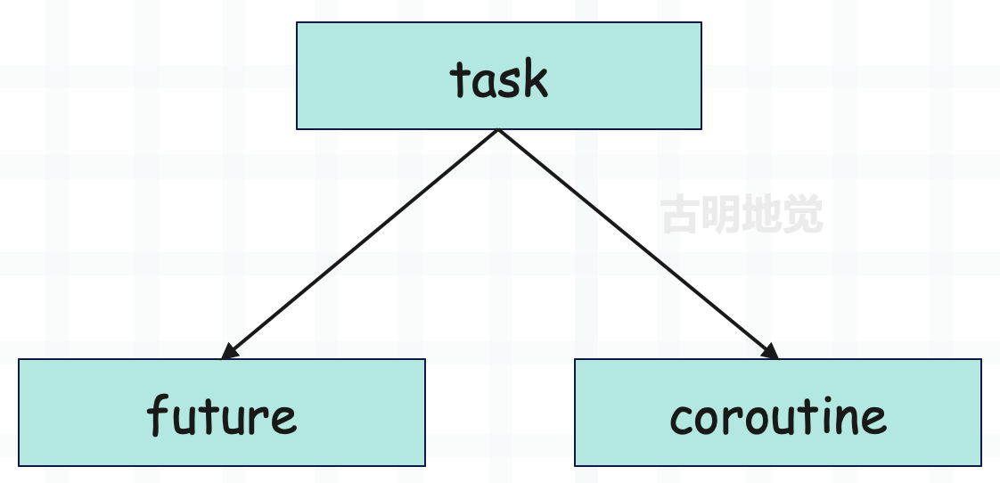
future 可以被认为代表了我们暂时不会拥有的值，而一个任务可以被认为是一个协程和一个 future 的组合。创建一个任务时，我们正在创建一个空的 future，并运行协程，然后当协程运行得到结果或出现异常时，将其设置给 future。当然任务也可以使用 await 表达式，await 一个任务时同样会陷入阻塞，那什么时候解除阻塞呢？显然是当协程执行完毕并将返回值设置在 future 里面的时候。
如果 await future，那么需要我们手动调用 future.set_result()。如果 await 任务，那么当协程执行完毕时会自动调用 future.set_result（执行出错则自动调用 future.set_exception），因为任务是基于协程包装得到的，它等价于一个协程加上一个 future。
但不管 await 后面跟的是任务还是 future，本质上都是等到 future 里面有值之后，通过 future.result() 拿到里面的值。
import asyncio
async def coro():
return "Some Value"
async def main():
# 将协程包装成任务，并且还可以起个名字
# 需要注意的是，当协程被包装成任务的时候，就已经开始运行了
task = asyncio.create_task(coro(), name="任务 1")
print(task)
print(task.__class__)
# 如果你希望拿到返回值，程序才能继续执行，那么使用 await 阻塞等待
result = await task
print("返回值:", result)
asyncio.run(main())
"""
<Task pending name='任务 1' coro=<coro() running at ...>>
<class '_asyncio.Task'>
返回值: Some Value
"""
问题来了，当 await 任务的时候，如果协程执行出错了，会怎么样呢？首先出错了，那么任务里面的 future 会调用 set_exception 设置异常。而前面在看 future 源码的时候，我们看到：如果没有出现异常，那么调用 result 会返回结果，调用 exception 会返回 None；如果出现异常，那么调用 exception 会返回异常，调用 result 会将异常抛出来。
而 await 任务，本质上就是在调用内部 future 的 result 方法，显然如果任务内部的协程执行出错，那么会将出错时产生的异常抛出来。
import asyncio
async def coro():
raise Exception("出错了")
async def main():
task = asyncio.create_task(coro())
# Task 继承 Future，所以 await task 和 await future 的表现是一致的
# 协程在执行完毕时会调用 task.set_result() 设置结果值
# 如果协程执行出错，会调用 task.set_exception() 设置异常
# 而 await task 等价于 "阻塞等待 + task.result()"
try:
result = await task
print("返回值:", result)
except Exception:
exc = task.exception()
print("出现异常:", exc)
asyncio.run(main())
"""
出现异常: 出错了
"""
相信你现在已经了解任务是怎么回事了，它是协程对象的容器，并且也是一个 future，因为 Task 继承 Future。
不同的是，future 需要我们手动设置结果或异常，而任务不需要，内部的协程在运行完毕或出现异常时会自动设置。我们前面之所以花费很大笔墨介绍 Future，就是为了给任务做铺垫，因为我们实际在编写代码时，也是直接和任务打交道，而不是 future。
基于任务实现并发
使用 async def 可以定义一个协程函数，调用协程函数会得到一个协程对象。
async def coro():
return "Some Value"
# 如何判断它是不是一个协程函数呢？
if coro.__code__.co_flags & 0x80:
print("协程函数")
else:
print("非协程函数")
# 无论是协程函数还是普通函数，它们都是函数
# 通过 type 查看类型得到的都是 <class 'function'>
# 因此我们需要通过 co_flags 进行判断，解释器在编译时会设置不同的标识
# 同理如果 co_flags & 0x20 为真，那么就是生成器函数
# 调用协程函数，会得到协程对象
c = coro()
print(c.__class__)
"""
协程函数
<class 'coroutine'>
sys:1: RuntimeWarning: coroutine 'coro' was never awaited
"""
然后我们看到它抛出了一个警告，意思是协程没有被 await。因为协程需要扔到事件循环中运行，或者在一个协程里面通过 await 关键字进行驱动（在 A 协程里面 await B 协程，如果 A 协程运行了，那么 B 协程也会被驱动）。
虽然通过这些工具，可编写异步代码，但不能同时运行，要想同时运行协程，需要将它包装成任务。上面说了，任务是协程的包装器，它会安排协程尽快在事件循环中运行，并提供一系列的方法来获取协程的运行状态和返回值。这种调度和执行以非阻塞方式发生，这意味着一旦创建一个任务，那么任务就会立刻运行。
import asyncio
async def get_html(n):
# 模拟从网站下载页面
await asyncio.sleep(n)
return f"{n} 秒后，页面被下载"
async def main():
# 通过 asyncio.create_task 函数创建任务
# 调用时需要给它传递一个协程，然后返回一个任务对象
task1 = asyncio.create_task(get_html(3))
task2 = asyncio.create_task(get_html(2))
# 此时 task1 和 task2 均已开始运行
print("task1 是否运行完毕", task1.done())
print("task2 是否运行完毕", task2.done())
# sleep 2.5 秒
await asyncio.sleep(2.5)
print("sleep 2.5 秒后")
print("task1 是否运行完毕", task1.done())
print("task2 是否运行完毕", task2.done())
asyncio.run(main())
"""
task1 是否运行完毕 False
task2 是否运行完毕 False
sleep 2.5 秒后
task1 是否运行完毕 False
task2 是否运行完毕 True
"""
从打印的结果不难看出，协程被包装成任务之后就已经开始运行了，并且两个任务是并发运行的。需要注意的是，由于 task1 的睡眠时间稍长一些，所以在它还没有运行完毕之前，主协程就已经结束了。
import asyncio
async def get_html(n):
print("开始下载页面")
await asyncio.sleep(n)
print(f"{n} 秒后，页面被下载")
async def main():
task1 = asyncio.create_task(get_html(3))
task2 = asyncio.create_task(get_html(2))
await asyncio.sleep(2.5)
asyncio.run(main())
"""
开始下载页面
开始下载页面
2 秒后，页面被下载
"""
从结果可以看出，只有 task2 完成了，而 task1 还没运行完，主协程就结束了。如果我希望等待所有任务都完成呢？那么可以使用 await。
import asyncio
async def get_html(n):
await asyncio.sleep(n)
print(f"get_html({n})")
return f"{n} 秒后，页面被下载"
async def main():
task1 = asyncio.create_task(get_html(3))
task2 = asyncio.create_task(get_html(2))
result1 = await task1
result2 = await task2
print(result1)
print(result2)
asyncio.run(main())
"""
get_html(2)
get_html(3)
3 秒后，页面被下载
2 秒后，页面被下载
"""
不难看出，get_html(2) 会先运行完毕，但我们先 await task1，所以在这个过程中，task2 已经运行完毕了。只不过代码是串行执行的，必须等待 await task1 结束之后才能 await task2。但 task2 先 task1 结束，所以 await task1 之后，await task2 会立即得到结果。
但如果先 await task2，那么 await task1 的时候则需要再等待 1 秒，才能拿到结果，非常好理解。当然不管是哪一种方式，两个任务运行结束所花费的总时间都是 3 秒，但如果我们直接运行协程就不一样了。
import time
import asyncio
async def get_html(n):
await asyncio.sleep(n)
print(f"get_html({n})")
return f"{n} 秒后，页面被下载"
async def main():
# 得到两个协程对象
c1 = get_html(3)
c2 = get_html(2)
# 协程如果想运行，需要扔到事件循环中进行调度
# 可以包装成任务，或者在协程内部通过 await 进行驱动
result1 = await c1
result2 = await c2
print(result1)
print(result2)
start = time.perf_counter()
asyncio.run(main())
print("总耗时:", time.perf_counter() - start)
"""
get_html(3)
get_html(2)
3 秒后，页面被下载
2 秒后，页面被下载
总耗时: 5.0024129
"""
我们发现总耗时需要 5 秒，因为不管 await 后面跟的是 future、任务还是协程，都会产生阻塞。但很明显 await c1 的时候 c2 并没有开始运行，它必须在 await c1 之后才会进入事件循环，所以它们是串行的。
因此我们不要直接 await 一个协程，而是将它包装成任务，一旦包装成任务后，就自动进入事件循环开始运行了。如果你希望程序必须等到某个任务完成之后才能继续，那么再 await 它即可。
取消任务
网络连接可能不可靠，用户的连接可能因为网速变慢而中断，或者网络服务器崩溃导致现有的请求无法处理。因此对于用户发出的请求，需要特别小心，不要无限等待。如果无限等待一个不会出现的结果，可能导致应用程序挂起，从而导致精糕的用户体验。
在之前的示例中，如果任务一直持续下去，我们将被困在等待 await 语句完成而没有反馈的情况，也没有办法阻止这样的事情发生。因此 asyncio 提供了一个机制，允许我们手动取消任务，或者超时之后自动取消。
取消任务很简单，每个任务对象都有一个名为 cancel 的方法，可以在想要停止任务时调用它。取消一个任务将导致该任务被 await 时引发 CancelledError，然后再根据需要处理它。
为说明这一点，我们启动一个长时间运行的任务，但不希望它运行的时间超过 5 秒。如果任务没有在 5 秒内完成，就停止该任务。
import asyncio
async def get_html(seconds):
print("开始下载页面")
await asyncio.sleep(seconds)
return f"{seconds} 秒后下载完成"
async def main():
long_task = asyncio.create_task(get_html(10))
seconds_elapsed = 0
while not long_task.done():
print("检测到任务尚未完成，一秒钟之后继续检测")
await asyncio.sleep(1)
seconds_elapsed += 1
# 时间超过 5 秒，取消任务
if seconds_elapsed == 5:
long_task.cancel()
try:
# 等待 long_task 完成，显然执行到这里的时候，任务已经被取消
# 不管是 await 一个已经取消的任务，还是 await 的时候任务被取消
# 都会引发 asyncio.CancelledError
await long_task
except asyncio.CancelledError:
print("任务被取消")
asyncio.run(main())
"""
检测到任务尚未完成，一秒钟之后继续检测
开始下载页面
检测到任务尚未完成，一秒钟之后继续检测
检测到任务尚未完成，一秒钟之后继续检测
检测到任务尚未完成，一秒钟之后继续检测
检测到任务尚未完成，一秒钟之后继续检测
检测到任务尚未完成，一秒钟之后继续检测
任务被取消
"""
在代码中我们创建了一个任务，它需要花费 10 秒的时间才能运行完成。然后创建一个 while 循环来检查该任务是否已完成，任务的 done 方法在任务完成时返回 True，否则返回 False。每一秒，我们检查任务是否已经完成，并记录到目前为止经历了多少秒，如果任务已经花费了 5 秒，就取消这个任务。然后来到 await long_task，将输出 "任务被取消"，这表明捕获了一个 CancelledError。
关于取消任务需要注意的是，CancelledError 只能从 await 语句抛出。这意味着如果任务是在执行普通 Python 代码时被取消，那么该代码将一直运行，直到触发下一个 await 语句（如果存在），才能引发 CancelledError。
import asyncio
async def get_html(seconds):
print("开始下载页面")
await asyncio.sleep(seconds)
returnf"{seconds} 秒后下载完成"
async def main():
long_task = asyncio.create_task(get_html(3))
# 立刻取消
long_task.cancel()
# 但 CancelledError 只有在 await 一个被取消的协程时才会触发
# 所以下面的语句会正常执行
print("我会正常执行")
print("Hello World")
print(list(range(10)))
await asyncio.sleep(5)
try:
# 引发 CancelledError
await long_task
except asyncio.CancelledError:
print("任务被取消")
asyncio.run(main())
"""
我会正常执行
Hello World
[0, 1, 2, 3, 4, 5, 6, 7, 8, 9]
任务被取消
"""
但是注意：如果任务在取消的时候已经运行完毕了，那么 await 的时候就不会抛 CancelledError 了。
import asyncio
async def get_html(seconds):
print("开始下载页面")
await asyncio.sleep(seconds)
returnf"{seconds} 秒后下载完成"
async def main():
long_task = asyncio.create_task(get_html(3))
await asyncio.sleep(5)
# 显然执行到这里，任务已经结束了
long_task.cancel()
try:
print(await long_task)
print("任务执行完毕")
except asyncio.CancelledError:
print("任务被取消")
asyncio.run(main())
"""
开始下载页面
3 秒后下载完成
任务执行完毕
"""
所以对一个已完成的任务调用 cancel 方法，没有任何影响。
给任务设置超时时间
我们上面判断任务是否超时，是通过不断地循环来进行检测的，但显然这种做法是很笨的。我们应该有一个辅助函数，它允许指定超时时间，并在超时后自动取消任务。
asyncio 通过名为 wait_for 的函数提供此功能，该函数接收协程或任务，以及以秒为单位的超时时间。如果任务完成所需的时间超过了设定的超时时间，则会引发 TimeoutError，任务将自动取消。
import asyncio
async def get_html(seconds):
print("开始下载页面")
await asyncio.sleep(seconds)
return f"{seconds} 秒后下载完成"
async def main():
task = asyncio.create_task(get_html(2))
try:
result = await asyncio.wait_for(task, 1)
print("返回值:", result)
except asyncio.TimeoutError:
print("超时啦")
# task.cancelled() 用于判断任务是否被取消
# 任务被取消：返回 True，没有被取消：返回 False
print("任务是否被取消:", task.cancelled())
asyncio.run(main())
"""
开始下载页面
超时啦
任务是否被取消: True
"""
应用程序运行 1 秒后，wait_for 函数将引发 TimeoutError，然后我们对其进行处理，并且 task 被取消了。所以当一个任务超时的时候，会被自动取消。
因此通过 wait_for 函数就很方便，如果直接 await 一个任务，那么必须等到任务完成之后才能继续往下执行。如果任务一直完成不了，那么就会一直陷入阻塞。我们的目的是希望这个任务的执行时间是可控的，那么便可以使用 wait_for 并指定超时时间。注：使用 wait_for 必须要搭配 await，阻塞等待任务完成并拿到返回值、或者达到超时时间引发 TimeoutError 之后，程序才能往下执行。
因此 await 任务和 await asyncio.wait_for(任务, timeout) 的效果是类似的，都是等待后面的任务完成并拿到它的返回值。但使用 wait_for 可以指定超时时间，在规定时间内如果没有完成，则抛出 TimeoutError，而不会一直陷入阻塞。
如果任务花费的时间比预期的长，在引发 TimeoutError 之后自动取消任务通常是个好主意，否则可能会有一个无限等待的任务，占用永远不会释放的资源。但在某些情况下，我们可能希望保持任务运行。例如，我们可能想通知用户：某任务花费的时间比预期的要长，但即便超过了规定的超时时间，也不取消该任务。为此，可使用 asyncio.shield 函数包装任务，这个函数将防止传入的任务被取消，会给它一个屏蔽，将取消请求忽略掉。
import asyncio
async def get_html(seconds):
print("开始下载页面")
await asyncio.sleep(seconds)
return f"{seconds} 秒后下载完成"
async def main():
task = asyncio.create_task(get_html(2))
try:
# 通过 asyncio.shield 将 task 保护起来
result = await asyncio.wait_for(asyncio.shield(task), 1)
print("返回值:", result)
except asyncio.TimeoutError:
print("超时啦")
# 如果超时依旧会引发 TimeoutError，但和之前不同的是
# 此时任务不会被取消了，因为 asyncio.shield 会将取消请求忽略掉
print("任务是否被取消:", task.cancelled())
# 从出现超时的地方，继续执行，并等待它完成
result = await task
print("返回值:", result)
asyncio.run(main())
"""
开始下载页面
超时啦
任务是否被取消: False
返回值: 2 秒后下载完成
"""
以上就是任务的超时。
awaitable
我们说 Task 继承 Future，因此任务的很多方法都来自 future，而一个任务可以看做是一个 future 和一个协程的组合。然后协程、future 和任务，都可以使用 await 表达式，那么它们有没有什么共同之处呢？
很简单，它们之间的共同点是 awaitable 抽象基类，这个类定义了一个抽象的魔法函数 __await__，任何实现了 __await__ 方法的对象都可以在 await 表达式中使用。

协程、future 和任务，它们的内部都实现了 __await__，当然我们自己定义的类也可以。
import asyncio
class Girl:
def __init__(self):
self.name = "古明地觉"
self.address = "地灵殿"
async def get_info(self):
await asyncio.sleep(1)
return f"name: {self.name}, address: {self.address}"
def __await__(self):
return asyncio.create_task(self.get_info()).__iter__()
async def main():
g = Girl()
return await g
result = asyncio.run(main())
print(result)
"""
name: 古明地觉, address: 地灵殿
"""
我们将可在 await 表达式中使用的对象称为 awaitable 对象，你会经常在 asyncio 文档中看到 awaitable 的术语，因为许多 API 并不关心你传入的是协程还是任务。但最佳实践应该是将协程包装成任务，然后将任务传给内置的 API 方法。
协程和任务的陷阱
虽然通过将协程包装成任务来并发执行，可以获得一些性能改进，但面对以下场景却得不到提升。
- 第一个场景：代码是 CPU 密集；
- 第二个场景：代码虽然是 IO 密集，但 IO 是同步阻塞 IO，而不是异步非阻塞 IO；
当有好几个执行大量计算的函数时，你或许会想到包装成任务并发执行。从概念上讲这是一个好主意，但 asyncio 使用的是单线程并发模型，这意味着仍然受到单线程和全局解释器锁的限制。为证明这一点，让我们尝试同时运行多个 CPU 密集型函数。
import asyncio
import time
from functools import wraps
from typing import Callable, Any
# 一个函数，用于度量协程的运行时间
def async_timed(func: Callable) -> Callable:
@wraps(func)
async def wrapper(*args, **kwargs) -> Any:
start = time.perf_counter()
try:
return await func(*args, **kwargs)
finally:
end = time.perf_counter()
total = end - start
print(f"协程 {func.__name__} 用 {total} 秒执行完毕")
return wrapper
@async_timed
async def cpu_bound_work():
counter = 0
for i in range(100000000):
counter += 1
return counter
@async_timed
async def main():
task_one = asyncio.create_task(cpu_bound_work())
task_two = asyncio.create_task(cpu_bound_work())
await task_one
await task_two
asyncio.run(main())
"""
协程 cpu_bound_work 用 1.7002373 秒执行完毕
协程 cpu_bound_work 用 1.7006968 秒执行完毕
协程 main 用 3.401072 秒执行完毕
"""
尽管创建了两个任务，但代码仍然是串行执行。首先运行任务 1，然后运行任务 2，这意味着总运行时间将是对 cpu_bound_work 的两次调用的总和。对于 CPU 密集型任务，如果还想放在协程里面，那么应该和进程池搭配使用，后续再聊。
然后在协程中使用阻塞 IO 密集型操作，会产生和 CPU 密集型操作相同的问题，因为这些 API 会阻塞线程。所以在协程中运行阻塞 API 调用时，会阻塞事件循环线程本身，这意味其它的任何协程或任务都将暂停。阻塞 API 调用的示例包括使用 requests 发请求、使用 time.sleep 休眠等，通常执行任何非协程的 IO 操作或执行耗时的 CPU 操作都可视为阻塞。
同步阻塞 IO：比如 requests.get()、time.sleep() 等，这会阻塞整个线程，导致所有任务都得不到执行；异步非阻塞 IO：比如协程的 IO 操作，这只会阻塞协程，但线程不阻塞，线程可以执行其它已经准备就绪的任务。
我们举个例子：
@async_timed
async def get_baidu_status():
return requests.get("http://www.baidu.com").status_code
@async_timed
async def main():
task_one = asyncio.create_task(get_baidu_status())
task_two = asyncio.create_task(get_baidu_status())
task_three = asyncio.create_task(get_baidu_status())
await task_one
await task_two
await task_three
asyncio.run(main())
"""
协程 get_baidu_status 用 0.11206920000000001 秒执行完毕
协程 get_baidu_status 用 0.09500720000000001 秒执行完毕
协程 get_baidu_status 用 0.11085439999999996 秒执行完毕
协程 main 用 0.3180584 秒执行完毕
"""
可以看到 main() 协程的耗时，是所有任务的总和。这是因为 requests 库是同步阻塞的，这意味着它将阻塞运行它的线程。由于 asyncio 是单线程，因此 requests 库会阻塞事件循环，而阻塞期间事件循环无法做其它任何事情。
通常，你现在使用的大多数 API 都是同步阻塞的，且无法与 asyncio 一起使用。如果想和 asyncio 搭配，那么你需要使用支持协程、并利用非阻塞套接字的库，否则就只能进行阻塞调用了。
而对于上面这个例子，我们可以将 requests 换成 aiohttp 或 httpx，它们可以使用非阻塞套接字，并返回协程，从而获得适当的并发性。如果你只能使用同步库，并且还想和 asyncio 搭配使用的话，那么应该要引入线程池，后续再聊。
小结
到目前为止，我们就简单地剖析了 Future 和 Task，并介绍了它们的区别。Future 和 asyncio 的实现密切相关，比如锁和事件都是基于 Future 实现的，但在工作中我们很少会直接使用 Future，都是定义协程，然后将协程包装成任务。
当然关于任务，还有很多东西没有介绍，比如如何同时等待一组任务？如何给一组任务指定超时时间？以及如何优先处理已经完成的任务等等？关于这些内容，我们之后再说。
欢迎大家关注我的公众号：古明地觉的编程教室。
如果觉得文章对你有所帮助，也可以请作者吃个馒头，Thanks♪(･ω･)ﾉ。
楔子
之前我们了解了如何创建多个任务来并发运行程序，方式是通过 asyncio.create_task 将协程包装成任务，如下所示：
import asyncio, time
async def main():
task1 = asyncio.create_task(asyncio.sleep(3))
task2 = asyncio.create_task(asyncio.sleep(3))
task3 = asyncio.create_task(asyncio.sleep(3))
await task1
await task2
await task3
start = time.perf_counter()
asyncio.run(main())
end = time.perf_counter()
print("总耗时:", end - start)
"""
总耗时: 3.003109625
"""
但这种代码编写方式只适用于简单情况，如果在同时发出数百、数千甚至更多 Web 请求的情况下，这种编写方式将变得冗长且混乱。所以 asyncio 提供了许多便利的函数，支持我们一次性等待多个任务。
等待一组任务全部完成
一个被广泛用于等待一组任务的方式是使用 asyncio.gather，这个函数接收一系列的可等待对象，允许我们在一行代码中同时运行它们。如果传入的 awaitable 对象是协程，gather 函数会自动将其包装成任务，以确保它们可以同时运行。这意味着不必像之前那样，用 asyncio.create_task 单独包装，但即便如此，还是建议手动包装一下。
asyncio.gather 同样返回一个 awaitable 对象，在 await 表达式中使用它时，它将暂停，直到传递给它的所有 awaitable 对象都完成为止。一旦所有任务都完成，asyncio.gather 将返回这些任务的结果所组成的列表。
import asyncio
import time
from aiohttp import ClientSession
async def fetch_status(session: ClientSession, url: str):
async with session.get(url) as resp:
return resp.status
async def main():
async with ClientSession() as session:
# 注意：requests 里面是 100 个协程
# 传递给 asyncio.gather 之后会自动被包装成任务
requests = [fetch_status(session, "http://www.baidu.com")
for _ in range(100)]
# 并发运行 100 个任务，并等待这些任务全部完成
# 相比写 for 循环再单独 await，这种方式就简便多了
status_codes = await asyncio.gather(*requests)
print(f"{len(status_codes)} 个任务已全部完成")
start = time.perf_counter()
asyncio.run(main())
end = time.perf_counter()
print("总耗时:", end - start)
"""
100 个任务已全部完成
总耗时: 0.552532458
"""
完成 100 个请求只需要 0.55 秒钟，由于网络问题，测试的结果可能不准确，但异步肯定比同步要快。
另外传给 gather 的每个 awaitable 对象可能不是按照确定性顺序完成的，例如将协程 a 和 b 按顺序传递给 gather，但 b 可能会在 a 之前完成。不过 gather 的一个很好的特性是，不管 awaitable 对象何时完成，都保证结果会按照传递它们的顺序返回。
import asyncio
import time
async def main():
# asyncio.sleep 还可以接收一个 result 参数，作为 await 表达式的值
tasks = [asyncio.sleep(second, result=f"我睡了 {second} 秒")
for second in (5, 3, 4)]
print(await asyncio.gather(*tasks))
start = time.perf_counter()
asyncio.run(main())
end = time.perf_counter()
print("总耗时:", end - start)
"""
['我睡了 5 秒', '我睡了 3 秒', '我睡了 4 秒']
总耗时: 5.002968417
"""
然后 gather 还可以实现分组，什么意思呢？
import asyncio
import time
async def main():
gather1 = asyncio.gather(
*[asyncio.sleep(second, result=f"我睡了 {second} 秒")
for second in (5, 3, 4)]
)
gather2 = asyncio.gather(
*[asyncio.sleep(second, result=f"我睡了 {second} 秒")
for second in (3, 3, 3)]
)
results = await asyncio.gather(
gather1, gather2, asyncio.sleep(6, "我睡了 6 秒")
)
print(results)
start = time.perf_counter()
asyncio.run(main())
end = time.perf_counter()
print("总耗时:", end - start)
"""
[['我睡了 5 秒', '我睡了 3 秒', '我睡了 4 秒'],
['我睡了 3 秒', '我睡了 3 秒', '我睡了 3 秒'],
'我睡了 6 秒']
总耗时: 6.002826208
"""
asyncio.gather 里面可以通过继续接收 asyncio.gather 返回的对象，从而实现分组功能，还是比较强大的。
如果 gather 里面啥都不传的话，那么会返回一个空列表。
问题来了，在上面的例子中，我们假设所有请求都不会失败或抛出异常，这是理想情况。但如果请求失败了呢？我们来看一下，当 gather 里面的任务出现异常时会发生什么？
import asyncio
async def normal_running():
await asyncio.sleep(3)
return "正常运行"
async def raise_error():
raise ValueError("出错啦")
async def main():
results = await asyncio.gather(normal_running(), raise_error())
print(results)
loop = asyncio.get_event_loop()
loop.run_until_complete(main())
"""
Traceback (most recent call last):
......
raise ValueError("出错啦")
ValueError: 出错啦
"""
我们看到抛异常了，其实 gather 函数的原理就是等待一组任务运行完毕，当某个任务完成时，就调用它的 result 方法，拿到返回值。但我们之前介绍 Future 和 Task 的时候说过，如果出错了，调用 result 方法会将异常抛出来。
import asyncio
async def normal_running():
await asyncio.sleep(3)
return "正常运行"
async def raise_error():
raise ValueError("出错啦")
async def main():
try:
await asyncio.gather(normal_running(), raise_error())
except Exception:
print("执行时出现了异常")
# 但剩余的任务仍在执行，拿到当前所有正在执行的任务
all_tasks = asyncio.all_tasks()
# task 相当于对协程做了一个封装，那么通过 get_coro 方法也可以拿到对应的协程
print(f"当前剩余的任务:", [task.get_coro().__name__ for task in all_tasks])
# 继续等待剩余的任务完成
results = await asyncio.gather(
*[task for task in all_tasks if task.get_coro().__name__ != "main"]
)
print(results)
loop = asyncio.get_event_loop()
loop.run_until_complete(main())
"""
执行时出现了异常
当前剩余的任务: ['main', 'normal_running']
['正常运行']
"""
可以看到在 await asyncio.gather() 的时候，raise_error() 协程抛异常了，那么异常会向上传播，在 main() 里面 await 处产生 ValueError。我们捕获之后查看剩余未完成的任务，显然只剩下 normal_running() 和 main()，因为任务执行出现异常也代表它完成了。
需要注意的是，一个任务出现了异常，并不影响剩余未完成的任务，它们仍在后台运行。我们举个例子证明这一点：
import asyncio, time
async def normal_running():
await asyncio.sleep(5)
return "正常运行"
async def raise_error():
await asyncio.sleep(3)
raise ValueError("出错啦")
async def main():
try:
await asyncio.gather(normal_running(), raise_error())
except Exception:
print("执行时出现了异常")
# raise_error() 会在 3 秒后抛异常，然后向上抛，被这里捕获
# 而 normal_running() 不会受到影响，它仍然在后台运行
# 显然接下来它只需要再过 2 秒就能运行完毕
time.sleep(2) # 注意：此处会阻塞整个线程
# asyncio.sleep 是不耗费 CPU 的，因此即使 time.sleep 将整个线程阻塞了，也不影响
# 因为执行 time.sleep 时，normal_running() 里面的 await asyncio.sleep(5) 已经开始执行了
results = await asyncio.gather(*[task for task in asyncio.all_tasks()
if task.get_coro().__name__ != "main"])
print(results)
loop = asyncio.get_event_loop()
start = time.perf_counter()
loop.run_until_complete(main())
end = time.perf_counter()
print("总耗时:", end - start)
"""
执行时出现了异常
['正常运行']
总耗时: 5.004949666
"""
这里耗时是 5 秒，说明一个任务抛异常不会影响其它任务，因为 time.sleep(2) 执行完毕之后，normal_running() 里面的 asyncio.sleep(5) 也已经执行完毕了，说明异常捕获之后，剩余的任务没有受到影响。
并且这里我们使用了 time.sleep，在工作中千万不要这么做，因为它会阻塞整个线程，导致主线程无法再做其它事情了。而这里之所以用 time.sleep，主要是想说明一个任务出错，那么将异常捕获之后，其它任务不会受到影响。
那么问题来了，如果发生异常，我们不希望它将异常向上抛，该怎么办呢？可能有人觉得这还不简单，直接来一个异常捕获不就行了？这是一个解决办法，但 asyncio.gather 提供了一个参数，可以更优雅地实现这一点。
import asyncio
async def normal_running():
await asyncio.sleep(3)
return "正常运行"
async def raise_error():
raise ValueError("出错啦")
async def main():
results = await asyncio.gather(
normal_running(), raise_error(),
return_exceptions=True
)
print(results)
loop = asyncio.get_event_loop()
loop.run_until_complete(main())
"""
['正常运行', ValueError('出错啦')]
"""
之前在介绍任务的时候我们说了，不管正常执行结束还是出错，都代表任务已完成，会将结果和异常都收集起来，只不过其中肯定有一个为 None。然后根据不同的情况，选择是否将异常抛出来。所以在 asyncio 里面，异常只是一个普通的属性，会保存在任务对象里面。
对于 asyncio.gather 也是同理，它里面有一个 return_exceptions 参数，默认为 False，表示当任务出现异常时，会抛给 await 所在的位置。如果该参数设置为 True，那么出现异常时，会直接把异常本身返回（此时任务也算是结束了）。
在 asyncio 里面，异常变成了一个可控的属性。因为执行是以任务为单位的，当出现异常时，也会作为任务的一个普通的属性。我们可以选择将它抛出来，也可以选择隐式处理掉。
至于我们要判断哪些任务是正常执行，哪些任务是抛了异常，便可以通过返回值来判断。如果 isinstance(res, Exception) 为 True，那么证明任务出现了异常，否则正常执行。虽然这有点笨拙，但也能凑合用，因为 API 并不完美。
当然以上这些都不能算是缺点，gather 真正的缺点有两个：
- 如果我希望所有任务都执行成功，只要有一个任务失败就算失败了，其它任务立刻自动取消，该怎么实现呢？比如发送 Web 请求，如果一个请求失败，其它所有请求也会失败（要取消请求以释放资源）。显然要做到这一点不容易，因为协程被包装在后台的任务中；
- 必须等待所有任务都执行完成，才能处理结果，这会存在问题。例如有一个请求需要 100 毫秒，而另一个请求需要 20 秒，那么在处理 100 毫秒完成的那个请求之前，我们将等待 20 秒。
而 asyncio 也提供了用于解决这两个问题的 API。
在任务完成时立即处理
如果想在某个结果生成之后就对其进行处理，这是一个问题；如果有一些可以快速完成的等待对象，和一些可能需要很长时间完成的等待对象，这也可能是一个问题。因为 gather 需要等待所有对象执行完毕，这就导致应用程序可能变得无法响应。
想象一个用户发出 100 个请求，其中两个很慢，但其余的都很快完成。如果一旦有请求完成，可以向用户输出一些信息，来提升用户的使用体验。
为处理这种情况，asyncio 公开了一个名为 as_completed 的 API 函数，这个函数接收一个可等待对象（awaitable）组成的列表，并返回一个生成器。通过遍历，等待它们中的每一个对象都完成，并且哪个先完成，哪个就先被迭代。这意味着可以在结果可用时立即就处理它们，但很明显此时就没有所谓的顺序了，因为无法保证哪些请求先完成。
import asyncio
import time
async def delay(seconds):
await asyncio.sleep(seconds)
return f"我睡了 {seconds} 秒"
async def main():
# asyncio 提供的用于等待一组 awaitable 对象的 API 都很智能
# 如果检测到你传递的是协程，那么会自动包装成任务，不过还是建议手动包装一下
tasks = [asyncio.create_task(delay(seconds))
for seconds in (3, 5, 2, 4, 6, 1)]
for finished in asyncio.as_completed(tasks):
print(await finished)
loop = asyncio.get_event_loop()
start = time.perf_counter()
loop.run_until_complete(main())
end = time.perf_counter()
print("总耗时:", end - start)
"""
我睡了 1 秒
我睡了 2 秒
我睡了 3 秒
我睡了 4 秒
我睡了 5 秒
我睡了 6 秒
总耗时: 6.000872417
"""
和 gather 不同，gather 是等待一组任务全部完成之后才返回，并且会自动将结果取出来，结果值的顺序和添加任务的顺序是一致的。对于 as_completed 而言，它会返回一个生成器，我们遍历它，哪个任务先完成则哪个就先被处理。
那么问题来了，如果出现异常了该怎么办？很简单，直接异常捕获即可。
然后我们再来思考一个问题，任何基于 Web 的请求都存在花费很长时间的风险，服务器可能处于过重的资源负载下，或者网络连接可能很差。之前我们看到了通过 wait_for 函数可以为特定请求添加超时，但如果想为一组请求设置超时怎么办？as_completed 函数通过提供一个可选的 timeout 参数来处理这种情况，它允许以秒为单位指定超时时间。如果花费的时间超过设定的时间，那么迭代器中的每个可等待对象都会在等待时抛出 TimeoutError。
import asyncio
async def delay(seconds):
await asyncio.sleep(seconds)
return f"我睡了 {seconds} 秒"
async def main():
tasks = [asyncio.create_task(delay(seconds))
for seconds in (1, 5, 6)]
for finished in asyncio.as_completed(tasks, timeout=3):
try:
print(await finished)
except asyncio.TimeoutError:
print("超时啦")
loop = asyncio.get_event_loop()
loop.run_until_complete(main())
"""
我睡了 1 秒
超时啦
超时啦
"""
as_completed 非常适合用于尽快获得结果，但它也有缺点。
第一个缺点是没有任何方法可快速了解我们正在等待哪个协程或任务，因为运行顺序是完全不确定的。如果不关心顺序，这可能没问题，但如果需要以某种方式将结果与请求相关联，那么将面临挑战。
第二个缺点是超时，目前虽然会正确地抛出异常并继续运行程序，但创建的所有任务仍在后台运行。如果想取消它们，那么要确定是哪些任务在运行，而这是我们面临的另一个挑战。
import asyncio
async def delay(seconds):
await asyncio.sleep(seconds)
return f"我睡了 {seconds} 秒"
async def main():
tasks = [asyncio.create_task(delay(seconds))
for seconds in (1, 5, 6)]
for finished in asyncio.as_completed(tasks, timeout=3):
try:
print(await finished)
except asyncio.TimeoutError:
print("超时啦")
# tasks[1] 还需要 2 秒运行完毕，tasks[2] 还需要 3 秒运行完毕
print(tasks[1].done(), tasks[2].done())
await asyncio.sleep(2)
# 此时只剩下 tasks[2]，还需要 1 秒运行完毕
print(tasks[1].done(), tasks[2].done())
await asyncio.sleep(1)
# tasks[2] 也运行完毕
print(tasks[1].done(), tasks[2].done())
loop = asyncio.get_event_loop()
loop.run_until_complete(main())
"""
我睡了 1 秒
超时啦
超时啦
False False
True False
True True
"""
根据输出结果可以发现，虽然因为抵达超时时间， await 会导致 TimeoutError，但未完成的任务不会受到影响，它们仍然在后台执行。而这对我们来说，有时却不是一件好事，因为我们希望如果抵达超时时间，那么未完成的任务就别在执行了，这时候如何快速找到那些未完成的任务呢？为处理这种情况，asyncio 提供了另一个 API 函数：wait。
使用 wait 进行细粒度控制
gather 和 as_completed 的缺点之一是，当我们看到异常时，没有简单的方法可以取消已经在运行的任务。这在很多情况下可能没问题，但是想象一个场景：同时发送大批量 Web 请求（参数格式是相同的），如果某个请求的参数格式错误（说明所有请求的参数格式都错了），那么剩余的请求还有必要执行吗？显然是没有必要的，而且还会消耗更多资源。另外 as_completed 的另一个缺点是，由于迭代顺序是不确定的，因此很难准确跟踪已完成的任务。
于是 asyncio 提供了 wait 函数，注意它和 wait_for 的区别，wait_for 针对的是单个任务，而 wait 针对的是一组任务（不限数量）。
注：wait 函数接收的是一组 awaitable 对象，但未来的版本会改为仅接收任务对象。因此对于 gather、as_completed、wait 等函数，虽然它们会自动包装成任务，但我们更建议先手动包装成任务，然后再传过去。
并且 wait 和 as_completed 接收的都是任务列表，而 gather 则要求将列表打散，以多个位置参数的方式传递，因此这些 API 的参数格式不要搞混了。
然后是 wait 函数的返回值，它会返回两个集合：一个由已完成的任务（执行结束或出现异常）组成的集合，另一个由未完成的任务组成的集合。而 wait 函数的参数，它除了可以接收一个任务列表之外，还可以接收一个 timeout（超时时间）和一个 return_when（用于控制返回条件）。光说很容易乱，我们来实际演示一下。
等待所有任务完成
如果未指定 retun_when，则此选项使用默认值，并且它的行为与 asyncio.gather 最接近，但也存在一些差异。
import asyncio
async def delay(seconds):
await asyncio.sleep(seconds)
return f"我睡了 {seconds} 秒"
async def main():
tasks = [asyncio.create_task(delay(seconds)) for seconds in (3, 2, 4)]
# 和 gather 一样，默认会等待所有任务都完成
done, pending = await asyncio.wait(tasks)
print(f"已完成的任务数: {len(done)}")
print(f"未完成的任务数: {len(pending)}")
for done_task in done:
print(await done_task)
loop = asyncio.get_event_loop()
loop.run_until_complete(main())
"""
已完成的任务数: 3
未完成的任务数: 0
我睡了 2 秒
我睡了 4 秒
我睡了 3 秒
"""
await asynio.wait 时，会返回两个集合，分别保存已完成的任务和仍然运行的任务。并且由于返回的是集合，所以是无序的。默认情况下，asyncio.wait 会等到所有任务都完成后才返回，所以待处理集合的长度为 0。
然后还是要说一下异常，如果某个任务执行时出现异常了该怎么办呢？
import asyncio
async def delay(seconds):
await asyncio.sleep(seconds)
if seconds == 3:
raise ValueError("我出错了(second is 3)")
return f"我睡了 {seconds} 秒"
async def main():
tasks = [asyncio.create_task(delay(seconds)) for seconds in range(1, 6)]
done, pending = await asyncio.wait(tasks)
print(f"已完成的任务数: {len(done)}")
print(f"未完成的任务数: {len(pending)}")
loop = asyncio.get_event_loop()
loop.run_until_complete(main())
"""
已完成的任务数: 5
未完成的任务数: 0
Task exception was never retrieved
future: <Task finished ... coro=<delay() done, defined at .../main.py:3>
exception=ValueError('我出错了(second is 3)')>
......
raise ValueError("我出错了(second is 3)")
ValueError: 我出错了(second is 3)
"""
对于 asyncio.gather 而言，如果某个任务出现异常，那么异常会向上抛给 await 所在的位置。如果不希望它抛，那么可以将 gather 里面的 return_exceptions 参数指定为 True，这样当出现异常时，会将异常返回。
而 asyncio.wait 也是如此，如果任务出现异常了，那么会直接视为已完成，异常同样不会向上抛。但是从程序开发的角度来讲，返回值可以不要，但异常不能不处理。所以当任务执行出错时，虽然异常不会向上抛，但 asyncio 会将它打印出来，于是就有了：Task exception was never retrieved。意思就是该任务出现异常了，但你没有处理它。
import asyncio
async def delay(seconds):
await asyncio.sleep(seconds)
if seconds == 3:
raise ValueError("我出错了(second is 3)")
return f"我睡了 {seconds} 秒"
async def main():
tasks = [asyncio.create_task(delay(seconds)) for seconds in range(1, 6)]
# done 里面保存的都是已完成的任务
done, pending = await asyncio.wait(tasks)
print(f"已完成的任务数: {len(done)}")
print(f"未完成的任务数: {len(pending)}")
# 所以我们直接遍历 done 即可
for done_task in done:
# 这里不能使用 await done_task，因为当任务完成时，它就等价于 done_task.result()
# 而任务出现异常时，调用 result() 是会将异常抛出来的，所以我们需要先检测异常是否为空
exc = done_task.exception()
if exc:
print(exc)
else:
print(done_task.result())
loop = asyncio.get_event_loop()
loop.run_until_complete(main())
"""
已完成的任务数: 5
未完成的任务数: 0
我睡了 5 秒
我睡了 2 秒
我出错了(second is 3)
我睡了 4 秒
我睡了 1 秒
"""
这里调用 result 和 exception 有一个前提，就是任务必须处于已完成状态，否则会抛异常：InvalidStateError: Result is not ready.。但对于当前是没有问题的，因为 done 里面的都是已完成的任务。
这里能再次看到和 gather 的区别，gather 会帮你把返回值都取出来，放在一个列表中，并且顺序就是任务添加的顺序。而 wait 返回的是集合，集合里面是任务，我们需要手动拿到返回值。
某个任务出现异常时取消其它任务
从目前来讲，wait 的作用和 gather 没有太大的区别，都是等到任务全部结束再解除等待（出现异常也视作任务完成，并且其它任务不受影响）。那如果我希望当有任务出现异常时，立即取消其它任务该怎么做呢？显然这就依赖 wait 函数里面的 return_when，它有三个可选值：
- asyncio.ALL_COMPLETED：等待所有任务完成后返回；
- asyncio.FIRST_COMPLETED：有一个任务完成就返回；
- asyncio.FIRST_EXCEPTION：当有任务出现异常时返回；
显然为完成这个需求，我们应该将 return_when 指定为 FIRST_EXCEPTION。
import asyncio
async def delay(seconds):
await asyncio.sleep(seconds)
if seconds == 3:
raise ValueError("我出错了(second is 3)")
return f"我睡了 {seconds} 秒"
async def main():
tasks = [asyncio.create_task(delay(seconds), name=f"睡了 {seconds} 秒的任务")
for seconds in range(1, 6)]
done, pending = await asyncio.wait(tasks, return_when=asyncio.FIRST_EXCEPTION)
print(f"已完成的任务数: {len(done)}")
print(f"未完成的任务数: {len(pending)}")
print("都有哪些任务完成了？")
for t in done:
print(" " + t.get_name())
print("还有哪些任务没完成？")
for t in pending:
print(" " + t.get_name())
loop = asyncio.get_event_loop()
loop.run_until_complete(main())
"""
已完成的任务数: 3
未完成的任务数: 2
都有哪些任务完成了？
睡了 2 秒的任务
睡了 3 秒的任务
睡了 1 秒的任务
还有哪些任务没完成？
睡了 4 秒的任务
睡了 5 秒的任务
"""
当 delay(3) 失败时，显然 delay(1)、delay(2) 已完成，而 delay(4) 和 delay(5) 未完成。此时集合 done 里面的就是已完成的任务，pending 里面则是未完成的任务。当 wait 返回时，未完成的任务仍在后台继续运行，如果我们希望将剩余未完成的任务取消掉，那么直接遍历 pending 集合即可。
import asyncio
async def delay(seconds):
await asyncio.sleep(seconds)
if seconds == 3:
raise ValueError("我出错了(second is 3)")
print(f"我睡了 {seconds} 秒")
async def main():
tasks = [asyncio.create_task(delay(seconds))
for seconds in range(1, 6)]
done, pending = await asyncio.wait(tasks, return_when=asyncio.FIRST_EXCEPTION)
print(f"已完成的任务数: {len(done)}")
print(f"未完成的任务数: {len(pending)}")
# 此时未完成的任务仍然在后台运行，这时候可以将它们取消掉
for t in pending:
t.cancel()
# 阻塞 3 秒
await asyncio.sleep(3)
loop = asyncio.get_event_loop()
loop.run_until_complete(main())
"""
我睡了 1 秒
我睡了 2 秒
已完成的任务数: 3
未完成的任务数: 2
"""
在 await asyncio.sleep(3) 的时候，剩余两个任务并没有输出，所以任务确实被取消了。注：出现异常的任务会被挂在已完成集合里面，如果没有任务在执行时出现异常，那么效果等价于 ALL_COMPLETED。
当任务完成时处理结果
ALL_COMPLETED 和 FIRST_EXCEPTION 都有一个缺点，在任务成功且不抛出异常的情况下，必须等待所有任务完成。对于之前的用例，这是可以接受的，但如果想要在某个协程成功完成后立即处理结果，那么现在的情况将不能满足我们的需求。
虽然这个场景可使用 as_completed 实现，但 as_completed 的问题是没有简单的方法可以查看哪些任务还在运行，哪些任务已经完成。因为遍历的时候，无法得知哪个任务先完成，所以 as_completed 无法完成我们的需求。
好在 wait 函数的 return_when 参数可以接收 FIRST_COMPLETED 选项，表示只要有一个任务完成就立即返回，而返回的可以是执行出错的任务，也可以是成功运行的任务。然后我们可以取消其它正在运行的任务，或者让某些任务继续运行，具体取决于用例。
import asyncio
async def delay(seconds):
await asyncio.sleep(seconds)
if seconds == 3:
raise ValueError("我出错了(second is 3)")
print(f"我睡了 {seconds} 秒")
async def main():
tasks = [asyncio.create_task(delay(seconds))
for seconds in range(1, 6)]
done, pending = await asyncio.wait(tasks, return_when=asyncio.FIRST_COMPLETED)
print(f"已完成的任务数: {len(done)}")
print(f"未完成的任务数: {len(pending)}")
loop = asyncio.get_event_loop()
loop.run_until_complete(main())
"""
我睡了 1 秒
已完成的任务数: 1
未完成的任务数: 4
"""
当 return_when 参数为 FIRST_COMPLETED 时，那么只要有一个任务完成就会立即返回，然后我们处理完成的任务即可。至于剩余的任务，它们仍在后台运行，我们可以继续对其使用 wait 函数。
import asyncio
async def delay(seconds):
await asyncio.sleep(seconds)
if seconds == 3:
raise ValueError("我出错了(second is 3)")
return f"我睡了 {seconds} 秒"
async def main():
tasks = [asyncio.create_task(delay(seconds))
for seconds in range(1, 6)]
while True:
done, pending = await asyncio.wait(tasks, return_when=asyncio.FIRST_COMPLETED)
for t in done:
exc = t.exception()
print(exc) if exc else print(t.result())
if pending: # 还有未完成的任务，那么继续使用 wait
tasks = pending
else:
break
loop = asyncio.get_event_loop()
loop.run_until_complete(main())
"""
我睡了 1 秒
我睡了 2 秒
我出错了(second is 3)
我睡了 4 秒
我睡了 5 秒
"""
整个行为和 as_completed 是一致的，但这种做法有一个好处，就是我们每一步都可以准确地知晓哪些任务已经完成，哪些任务仍然运行，并且也可以做到精确取消指定任务。
处理超时
除了允许对如何等待任务完成进行更细粒度的控制外，wait 还允许设置超时，以指定我们希望等待完成的时间。要启用此功能，可将 timeout 参数设置为所需的最大秒数，如果超过了这个超时时间，wait 将立即返回 done 和 pending 任务集。
不过与目前所看到的 wait_for 和 as_completed 相比，超时在 wait 中的行为方式存在一些差异。
- 1）任务不会被取消。当使用 wait_for 时，如果任务超时，则引发 TimeouError，并且任务也会自动取消。但使用 wait 的情况并非如此，它的行为更接近我们在 as_completed 中看到的情况。如果想因为超时而取消任务，必须显式地遍历任务并取消，否则它们仍在后台运行。
- 2）不会引发超时错误。如果发生超时，则 wait 会立即返回所有已完成的任务，以及在发生超时的时候仍处于运行状态的任务。
import asyncio
async def delay(seconds):
await asyncio.sleep(seconds)
return f"我睡了 {seconds} 秒"
async def main():
tasks = [asyncio.create_task(delay(seconds))
for seconds in range(1, 6)]
done, pending = await asyncio.wait(tasks, timeout=3.1)
print(f"已完成的任务数: {len(done)}")
print(f"未完成的任务数: {len(pending)}")
loop = asyncio.get_event_loop()
loop.run_until_complete(main())
"""
已完成的任务数: 3
未完成的任务数: 2
"""
wait 调用将在 3 秒后返回 done 和 pending 集合，在 done 集合中，会有三个已完成的任务。而耗时 4 秒和 5 秒的任务，由于仍在运行，因此它们将出现在 pending 集合中。我们可以继续等待它们完成并提取返回值，也可以将它们取消掉。
需要注意：和之前一样，pending 集合中的任务不会被取消，并且继续运行，尽管超时了。对于要终止待处理任务的情况，我们需要显式地遍历 pending 集合，并在每个任务上调用 cancel。
为什么要先将协程包装成任务
我们说协程在传给 wait 的时候会自动包装成任务，那为什么我们还要手动包装呢？
import asyncio
async def delay(seconds):
await asyncio.sleep(seconds)
return f"我睡了 {seconds} 秒"
async def main():
tasks = [asyncio.create_task(delay(seconds))
for seconds in range(1, 6)]
done, pending = await asyncio.wait(tasks, timeout=3.1)
print(all(map(lambda t: t in tasks, done)))
print(all(map(lambda t: t in tasks, pending)))
loop = asyncio.get_event_loop()
loop.run_until_complete(main())
"""
True
True
"""
如果 wait 函数接收的就是任务，那么 wait 函数就不会再包装了，所以 done 和 pending 里面的任务和 tasks 里面的任务是相同的。基于这个条件，我们后续可以做一些比较之类的。
比如有很多 Web 请求任务，但如果当未完成的任务是 task1、task2、task3，那么就取消掉，于是可以这么做。
for t in pending:
if t in (task1, task2, task3):
t.cancel()
如果返回的 done 和 pending 里的任务，是在 wait 函数中自动创建的，那么我们就无法进行任何比较来查看 pending 集合中的特定任务。
小结
1）asyncio.gather 函数允许同时运行多个任务，并等待它们完成。一旦传递给它的所有任务全部完成，这个函数就会返回。由于 gather 会拿到里面每个任务的返回值，所以它要求每个任务都是成功的，如果有任务执行出错（没有返回值），那么获取返回值的时候会将异常抛出来，然后向上传递给 await asyncio.gather。
为此，可以将 return_exceptions 设置为 True，这将返回成功完成的可等待对象的结果，以及产生的异常（异常会作为一个普通的属性返回，和返回值是等价的）。
2）可使用 as_completed 函数在可等待对象列表完成时处理它们的结果，它会返回一个可以循环遍历的生成器。一旦某个协程或任务完成，就能访问结果并处理它。
3）如果希望同时运行多个任务，并且还希望能了解哪些任务已经完成，哪些任务在运行，则可以使用 wait。这个函数还允许在返回结果时进行更多控制，返回时，我们会得到一组已经完成的任务和一组仍在运行的任务。
然后可以取消任何想取消的任务，或执行其它任何需要执行的任务。并且 wait 里面的任务出现异常，也不会影响其它任务，异常会作为任务的一个属性，只是在没有处理的时候会给出警告。至于具体的处理方式，直接通过 exception 方法判断是否发生了异常即可，没有异常返回 result()，有异常返回 exception()。
欢迎大家关注我的公众号：古明地觉的编程教室。
如果觉得文章对你有所帮助，也可以请作者吃个馒头，Thanks♪(･ω･)ﾉ。
楔子
使用多线程和多进程编写应用程序时，需要考虑非原子操作时的竞态条件，因为即使是并发增加整数这样的简单操作也可能导致微妙的、难以重现的 bug。而 asyncio 是单线程的，这是否意味着我们就不用考虑竞态条件呢？事实证明，事情并非那么简单。
虽然 asyncio 的单线程特性消除了多线程或多进程应用程序中可能出现的某些并发错误，但并未完全消除，因此 asyncio 也提供了相应的同步原语（synchronization primitives）帮助我们防止单线程并发模型特有的错误。
了解单线程并发错误
当处理在不同进程和线程之间共享的数据时，我们不得不考虑竞态条件，这是因为数据被一个线程修改时，也可能被另一个线程读取，从而导致状态不一致，引起数据损坏。这种损坏部分是由于某些操作是非原子性的，这意味着虽然它们看起来像一个操作，但其实它们在底层包含多个独立的操作。就比如整型变量进行自增，首先读取当前值，然后将其递增，最后再重新分配给变量，而这为其它线程和进程提供了足够的机会来获取处于不一致状态的数据。
但在单线程并发模型中，避免了由非原子性操作引起的竞态条件。因为在 asyncio 的单线程模型中，只会有一个线程在给定时间执行 Python 代码，并且遇见非阻塞 IO 之前不会切换。这说明即使一个操作是非原子性的，也将始终运行直到完成，而不会让其它协程读取不一致的状态信息。
为证明这一点，我们创建一个计数器，并启动多个任务，同时修改计数器。
import asyncio
counter: int = 0
async def increment():
global counter
await asyncio.sleep(0.01)
counter += 1
async def main():
global counter
for _ in range(100):
tasks = [asyncio.create_task(increment()) for _ in range(100)]
await asyncio.gather(*tasks)
assert counter == 100
# 将 counter 重置为 0，重新开始循环
counter = 0
asyncio.run(main())
在代码中创建了一个协程函数，它负责将全局计数器加 1，然后添加 1 毫秒的延迟来模拟慢速操作。在主协程中，创建了 100 个任务来递增计数器，然后通过 gather 并发执行。之后断言计数器可得到期望的值，因为我们运行了 100 个增量任务，所以它应该总是 100。运行这段程序，没有任何报错，所以最终 counter 的值总是 100。这说明虽然递增一个整数是非原子性操作，但对于单线程的 asyncio 来说没有任何影响。而如果运行多个线程而不是协程，应该会看到断言在执行的某个时刻失败。
那么这是否意味着已经通过单线程并发模型找到了一种完全避免竞态条件的方法呢？不幸的是，情况并非如此。虽然避免了单个非原子性操作可能导致的错误竞态条件，但以错误顺序执行的多个操作是可能导致其它问题的。
import asyncio
counter: int = 0
async def increment():
global counter
temp_counter = counter
temp_counter += 1
await asyncio.sleep(0.01)
counter = temp_counter
async def main():
global counter
for _ in range(100):
tasks = [asyncio.create_task(increment()) for _ in range(100)]
await asyncio.gather(*tasks)
assert counter == 100
# 将 counter 重置为 0，重新开始循环
counter = 0
asyncio.run(main())
协程不是直接递增计数器，而是首先将其读入一个临时变量，然后将临时计数器加 1。通过 await asyncio.sleep 来模拟一个缓慢的操作，暂停协程，然后再将它重新分配给全局计数器变量。运行上述代码，你应该会立即看到执行失败，出现断言错误，并且计数器只会被设置为 1。
每个协程首先读取计数器的值 0，将其存储给临时变量，临时变量自增 1，然后进入休眠状态。因为 temp_counter 是临时变量，所以每个任务里面的 temp_counter 都是 1，然后一旦休眠完成，再将其赋值给 counter。这意味着尽管运行了 100 个协程来增加计数器，但计数器永远只会是 1。注意，如果你删除 await 表达式，那么代码就是正确的，因为内部没有出现非阻塞 IO，每个任务都会一口气执行完，然后再执行下一个任务。
诚然，上面是一个简单化且有些不切实际的例子，为了更好地了解何时会发生这种情况，让我们创建一个稍微复杂一点的竞态条件。
import asyncio
class MockSocket:
def __init__(self):
self.socket_closed = False
async def send(self, msg: str):
# 模拟向客户端缓慢发送消息
if self.socket_closed:
raise Exception("socket 已关闭")
print(f"准备向客户端发送消息: {msg}")
await asyncio.sleep(1)
print(f"成功向客户端发送消息: {msg}")
def close(self):
self.socket_closed = True
usernames_to_sockets = {"satori": MockSocket(), "koishi": MockSocket(),
"marisa": MockSocket(), "scarlet": MockSocket()}
async def user_disconnect(username: str):
# 断开用户连接，并将其从应用程序内存中删掉
print(f"{username} 断开连接")
socket = usernames_to_sockets.pop(username)
socket.close()
async def message_all_users():
# 同时向所有用户发送消息
print(f"创建消息发送任务")
messages = [socket.send(f"Hello {username}") for username, socket in usernames_to_sockets.items()]
await asyncio.gather(*messages)
async def main():
await asyncio.gather(message_all_users(), user_disconnect("marisa"))
asyncio.run(main())
"""
创建消息发送任务
marisa 断开连接
准备向客户端发送消息: Hello satori
准备向客户端发送消息: Hello koishi
准备向客户端发送消息: Hello scarlet
Traceback (most recent call last):
......
raise Exception("socket 已关闭")
Exception: socket 已关闭
"""
我们实现了一个向连接的用户发送消息的套接字（MockSocket），每来一个用户就创建一个套接字，并用一个字典保存用户名到对应套接字的映射。当用户断开连接时，运行一个回调 user_disconnect，将用户从字典中删除并关闭套接字。
然后并发运行 message_all_users() 和 user_disconnect("marisa") 两个协程，可以理解为服务端创建了 4 个任务，准备向每个用户发消息。然后 "marisa" 用户断开连接，于是我们关闭给 "marisa" 用户发送消息的套接字，并将其从 usernames_to_sockets 字典中删除。完成后，message_all_users 恢复执行，并开始发送消息，但由于 "marisa" 的套接字已关闭，所以结果会看到一个异常，不会收到我们发送的消息。
这些是你在单线程并发模型中容易看到的错误类型，使用 await 到达一个挂起点，另一个协程运行并修改一些共享状态；当第一个协程通过意外的方式恢复时，就会发生修改冲突。多线程并发性 bug 和单线程并发性 bug 之间的关键区别在于，多线程应用程序中，在修改可变状态的任何地方都有可能出现竞态条件。而单线程并发模型中，只有遇到等待点（await point）才可能出现意料之外的结果。
注意：asyncio 属于单线程，严格意义上讲，出现的错误并不能称之为竞态条件。一个变量在被修改到一半时，又被另一个线程读取了，这导致第一个线程所做的修改可能会被覆盖掉，这叫做竞态条件。但 asyncio 中是不存在这种情况的，因为 asyncio 默认是单线程，如果没有遇见 await，那么它会将某个任务一次性全部执行完。
所以 asyncio 如果出现问题，那么一定是逻辑没有执行完，就通过 await 发生切换了。比如在上述代码的 message_all_users 中创建了 4 个套接字，准备给客户端发消息，但在发送之前发生了切换。而切换之后，在另一个任务中将套接字给关掉了，所以再切回来的时候，发送消息就会失败。但这不属于竞态条件，这属于逻辑没按照顺序执行导致的问题，不过和竞态条件类似，都属于并发错误。
既然已经理解了单线程模型中的并发错误类型，那么让我们看看 asyncio 提供的同步原语，并且除了要学习用法之外，还要看底层是怎么实现的。另外 asyncio 提供的同步原语是针对协程的，而 threading 模块也提供了针对线程的同步原语，这两者我们都会介绍。
锁
什么是锁呢？如果程序中某个部分在并发操作时会出现意想不到的结果（比如操作一个共享的数据结构），那么该部分就需要通过锁保护起来，而被锁保护起来的部分叫做临界区。线程在进入临界区之前必须先获取锁，然后才能操作共享资源。而锁一旦被获取，那么其它线程再尝试获取锁，就会陷入阻塞，直到锁被释放。
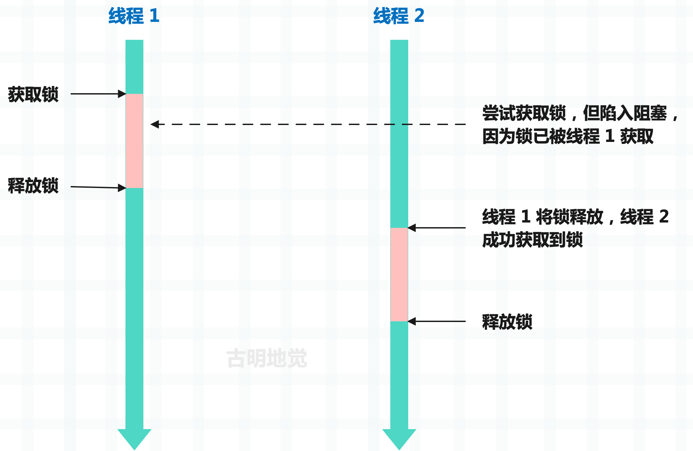
通过锁，可以确保同一时刻只能有一个线程操作共享资源，从而很好地解决资源竞争问题。这里的锁指的是互斥锁，也被称为排它锁。而在 Python 里面，锁可以通过 asyncio 和 threading 模块来创建，这两个模块都提供了锁，一个是协程锁，一个是线程锁。
import asyncio
import threading
lock1 = asyncio.Lock()
lock2 = threading.Lock()
当我们对类 Lock 实例化，便可以得到锁，然后锁有两个常用方法。
- acquire()：获取锁；
- release()：释放锁；
协程锁
之前在介绍 Future 和 Task 时说过，Future 对象可以看作是一个容器，它保存了在未来某个时刻才会出现的结果。如果 Future 对象里面还没有结果集，那么它就处于未完成状态，否则处于已完成状态。
import asyncio
future = asyncio.Future()
# 是否完成
print(future.done()) # False
# 因为 future 此时还没有结果集，所以是未完成状态（PENDING）
# 设置结果集
future.set_result("1 + 1")
# 由于设置了结果集，所以变成已完成状态（FINISHED）
print(future.done()) # True
# 获取结果
print(future.result()) # 1 + 1
问题来了，如何在 future 完成时立刻拿到结果呢？总不能一直调用 done 方法轮询吧。
很简单，我们可以对 future 使用 await 表达式，如果 future 内部还没有结果集，那么 await 会处于阻塞状态，否则不会阻塞，并且还会将值取出来。
import asyncio
async def delay(future, seconds):
await asyncio.sleep(seconds)
print("给 future 设置结果集")
future.set_result(666)
async def main():
# 创建一个 future
future = asyncio.Future()
loop = asyncio.get_running_loop()
# 创建一个任务，扔到事件循环
loop.create_task(delay(future, 3))
print("await future 会陷入阻塞，因为它内部还没有结果集")
# 该表达式会返回 666，因为给 future 设置的结果是 666
await future
print(f"3 秒后结束阻塞，因为 delay 协程内部给 future 设置了结果集")
asyncio.run(main())
"""
await future 会陷入阻塞，因为它内部还没有结果集
给 future 设置结果集
3 秒后结束阻塞，因为 delay 协程内部给 future 设置了结果集
"""
而协程在进入事件循环时会自动创建一个 future，并将协程和 future 组合起来得到任务，而 await 一个任务等价于 await future。当协程没有执行完毕时会处于阻塞，而协程执行完毕时会将返回值设置在 future 中，然后 await 表达式会拿到里面的结果。
在实际编码中，我们一般很少手动创建 Future 对象（future），但 Future 和 asyncio 的实现密切相关，其中就包括了锁。当协程在获取锁时，如果发现锁已被获取，那么如何陷入阻塞呢？当锁被释放时，它又如何解除阻塞呢？答案就是通过 future。
假设协程 1 和协程 2 都要获取锁，它们都会调用锁的 acquire 方法。其中协程 1 先获取到，那么协程 2 就会创建一个 future 并 await。由于 future 内部还没有结果集，因此协程 2 会处于阻塞。当协程 1 释放锁时，会给协程 2 创建的 future 设置一个结果，从而让协程 2 解除阻塞、获取到锁。
我们手动实现一下锁。
import asyncio
from collections import deque
class Lock:
def __init__(self):
# 保存创建的 future
self._waiters = deque()
# 锁是否已被获取
self._locked = False
async def acquire(self):
# 如果锁没有被获取，那么获取锁
if not self._locked:
self._locked = True
return True
# 否则说明锁已被获取，创建一个 future
future = asyncio.Future()
# 将它放在双端队列里面
self._waiters.append(future)
# 此时获取锁的协程就会陷入阻塞，等待其它协程唤醒
await future
# 如果解除阻塞，意味着该协程获取到锁了
self._locked = True
return True
def release(self):
# 释放锁，如果发现锁没被获取，说明对锁进行了二次释放
if not self._locked:
raise RuntimeError("锁没有被获取")
# 将锁的状态改成 False，表示锁被释放了
self._locked = False
if len(self._waiters) == 0:
return
# 从双端队列 deque 的左侧弹出 future
# 这个 future 就是某个协程在获取不到锁时创建的
# 并通过 await future 让自身陷入阻塞状态，等待被唤醒
future = self._waiters.popleft()
# 拿到 future 之后，执行 future.set_result()，也就是设置结果集
# 那么对应的协程就会解除阻塞，从而获取到锁
future.set_result(True)
# 注意：因为 future 是从右边添加的，所以要从 deque 的左侧弹出
# 因为先获取锁的协程要优先解除阻塞
async def __aenter__(self):
await self.acquire()
return self
async def __aexit__(self, exc_type, exc_val, exc_tb):
self.release()
整个过程非常简单，就是在获取不到锁时，创建一个 Future 对象并 await，此时就会陷入阻塞。当然获取锁的协程可能有很多，它们创建的 future 会保存在一个双端队列里面。而拿到锁的协程，在操作完临界区并释放锁时，会从双端队列的左侧弹出一个 future，并为其设置结果集。那么创建该 future 的协程就会解除阻塞，从而获取到锁。
因此这就是 asyncio 锁的实现方式，一点都不神秘。当然 asyncio 内部还做了一些异常检测，以及检测 future 是否已取消等等，我们这里省略了。有兴趣可以看一看 asyncio 内部锁的实现细节，整体逻辑和我们这里基本一致，并且我们这里手动实现的锁在大部分场景下和 asyncio 的锁都是等效的。
然后补充一点，你在使用 asyncio 锁的时候，一定不要以全局变量的形式创建。
import asyncio
lock = asyncio.Lock()
async def a():
async with lock:
print("协程 a 成功获取了锁, 并进入临界区执行操作")
await asyncio.sleep(2)
print("协程 a 释放了锁")
async def b():
async with lock:
print("协程 b 成功获取了锁, 并进入临界区执行操作")
await asyncio.sleep(2)
print("协程 b 释放了锁")
async def main():
await asyncio.gather(a(), b())
asyncio.run(main())
如果这样做，很快会看到崩溃的发生，并报告多个事件循环的错误：RuntimeError: ..... attached to a different loop
这是 asyncio 库的一个令人困惑的地方，而且这种现象也不是锁特有的，asyncio 中的大多数对象在创建时都会提供一个可选的 loop 参数，允许你指定要运行的事件循环。
当未提供此参数时，asyncio 尝试获取当前正在运行的事件循环，如果没有，则创建一个新的事件循环。在上例中，创建锁的同时会创建一个事件循环，因为此时还没有事件循环。然后 asyncio.run(main()) 会创建第二个事件循环，试图使用锁时，这两个独立的事件循环就会混合在一起导致崩溃。
这种行为比较棘手，因此在 Python 3.10 中会移除 loop 参数，这种令人困惑的行为也会消失。但在 3.10 之前，在使用全局 asyncio 变量时需要认真考虑这些情况。
线程锁
线程锁可以通过 threading 模块创建。
import threading
lock = threading.Lock()
注意：Lock 并不是一个类，而是一个函数，看一下源代码。
Lock = _allocate_lock
# threading.Lock() 其实就是 _thread.allocate_lock()
_allocate_lock = _thread.allocate_lock
调用 _thread.allocate_lock() 时会在内部创建锁，而锁是由 _thread 模块实现的。
import threading
import _thread
lock = threading.Lock()
print(type(lock))
"""
<class '_thread.lock'>
"""
lock = _thread.allocate_lock()
print(type(lock))
"""
<class '_thread.lock'>
"""
所以线程锁其实是一个 _thread.lock 对象。另外再补充一下，Python 有很多的模块是由 C 实现的，因为它们和性能密切相关，编译之后会内嵌在解释器里面，举个例子：
import random, _random
import re, _sre
import ssl, _ssl
import io, _io
import bisect, _bisect
import heapq, _heapq
import asyncio, _asyncio
import threading, _thread
这些 C 实现的模块，名字前面一般会带有一个下滑线，它们内嵌在解释器里面，你在 Lib 目录下是找不到的。但我们不需要直接使用这些模块，解释器会提供相应的 Python 模块对其进行封装。我们只需要导入 Python 模块即可，在内部会调用具体的 C 实现，比如内置函数 open，它其实就是 io.open，而 io 里面的 open 是从 _io 导入进来的。
import io
import _io
print(open is io.open is _io.open) # True
好了，说了这么多只是想表示线程锁的具体实现不在 threading 里面，而是在 _thread 里面。_thread 是一个 C 实现的模块，我们需要到解释器里面才能看到具体实现。在 Modules/_threadmodule.c 中，有一个结构体实例 Locktype，它便是 _thread.lock 这个类的底层实现。

_thread.lock 实例化后会得到锁，锁在底层对应的是 lockobject 结构体。
// Modules/_threadmodule.c
typedef struct {
// 每个对象都具备的头部信息，它包含了对象的引用计数和类型
PyObject_HEAD
// PyThread_type_lock 是 void * 的类型别名，所以 lock_lock 是一个 void * 指针
// 该指针指向了真正的锁，这个锁是底层操作系统提供的
// 和协程锁不同，由于操作系统感知不到协程，因此协程锁是基于 Future 对象实现的
// 但线程锁则是基于操作系统实现的，当 Python 代码创建锁、获取锁、解锁时
// 会通过 lock_lock 指针将这些操作转发到具体的锁实现上
PyThread_type_lock lock_lock;
// 用于创建弱引用，这里不用关注
PyObject *in_weakreflist;
// 用于标记锁状态，把它当成 Python 的布尔值即可
// 值为 1 表示锁已被获取（已锁定），0 表示未被获取（未锁定）。
char locked;
} lockobject;
// Include/pythread.h
typedef void *PyThread_type_lock;
结构体应该很好理解，然后来看一下锁的具体方法，那么方法都定义在哪呢？前面说过，实例对象有哪些行为，取决于类型对象定义了哪些操作。因此锁的操作都定义在 Locktype 里面，由内部的 tp_methods 字段负责维护。而该字段被赋值为 lock_methods，所以锁的方法都在 lock_methods 数组中。

以上就是锁能够使用的方法，我们来验证一下。
import threading
lock = threading.Lock()
# acquire_lock 和 acquire 基本是等价的
# release_lock 和 release 也基本是等价的
# 不过我们一般都会使用 acquire 和 lock
lock.acquire_lock() # 获取锁
lock.release_lock() # 释放锁
lock.acquire() # 获取锁
lock.release() # 释放锁
# 同理 locked_lock 和 locked 也是等价的
# 表示锁是否被获取（已锁定），不过我们一般使用 locked
print(lock.locked_lock()) # False
print(lock.locked()) # False
lock.acquire()
print(lock.locked_lock()) # True
print(lock.locked()) # True
lock.release()
# 还提供了上下文管理，等价于 lock.acquire + lock.release
with lock:
pass
好，接下来我们看看 acquire 方法，也就是锁是怎么获取的。
static PyObject *
lock_PyThread_acquire_lock(lockobject *self, PyObject *args, PyObject *kwds)
{
_PyTime_t timeout; // 超时时间
// 一个枚举，表示锁状态，有三个可选值
// PY_LOCK_FAILURE：表示因为锁已被持有，而获取失败
// PY_LOCK_ACQUIRED：表示锁可用，并成功获取锁
// PY_LOCK_INTR：表示获取锁的操作被中断，比如抵达超时时间
PyLockStatus r;
// 参数解析，该方法接收一个 timeout 参数
if (lock_acquire_parse_args(args, kwds, &timeout) < 0)
return NULL;
// 获取锁，并指定一个超时时间，不传则表示没有超时时间
// 那么在获取不到锁时，会无限等待
r = acquire_timed(self->lock_lock, timeout);
// 如果返回的状态为 PY_LOCK_INTR，说明达到超时时间
// 因此获取锁的操作被中断，并且会抛出异常
if (r == PY_LOCK_INTR) {
return NULL;
}
// 如果返回的状态为 PY_LOCK_ACQUIRED，表示锁获取成功
// 将锁的 locked 字段设置为 1，表示锁已被获取
if (r == PY_LOCK_ACQUIRED)
self->locked = 1;
// 如果以上两种状态都不是，那么说明获取失败了
// 将 r == PY_LOCK_ACQUIRED 转成布尔值返回
// 获取成功返回 True，获取失败返回 False
return PyBool_FromLong(r == PY_LOCK_ACQUIRED);
}
整个过程仍然很简单，因此我们看到协程锁和线程锁的实现是类似的，它们都有一个 locked 字段用于表示锁是否已被获取。
只不过协程锁是基于 Future 对象实现的，当 await future 陷入阻塞时，表示锁已被其它协程获取。当解除阻塞时，代表锁被释放了，自己获取到锁。而线程锁是基于操作系统实现的，它本质上是对操作系统提供的锁做了一个封装，Python 线程在获取锁时，底层会获取操作系统的锁。
那么操作系统的锁是怎么获取的呢？在源码中使用的是 acquire_time 函数，它接收一个指针和一个超时时间。该指针便是 lockobject 的 lock_lock 字段，类型是 void *，它指向了操作系统提供的锁实现。
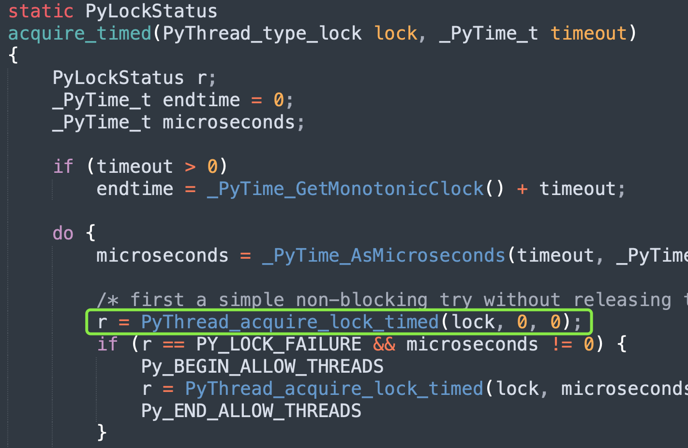
acquire_time 函数做了一些参数处理后，又调用了 PyThread_acquire_lock_timed 函数，显然获取锁的逻辑位于该函数里面。PyThread_acquire_lock_timed 函数在不同平台有着不同的实现，因为不同操作系统的锁实现是不一样的，所以源码中使用 void *。
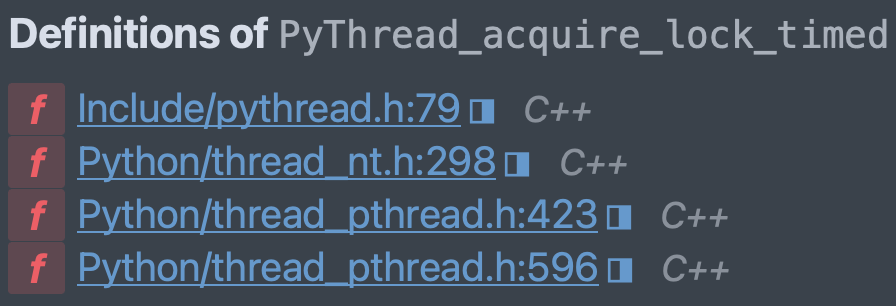
我们以 Windows 系统为例：
// Python/thread_nt.h
// 虽然不同系统的函数实现不一样，但参数是一致的
/* aLock：void * 指针，指向操作系统提供的锁；
* microseconds：等待锁的时间，以微妙为单位。如果值是负数，表示无限等待，直到获取锁；
* intr_flag：如果设置为 1，那么当等待过程中出现了信号中断时，函数会提前返回；*/
PyLockStatus
PyThread_acquire_lock_timed(PyThread_type_lock aLock,
PY_TIMEOUT_T microseconds, int intr_flag)
{
PyLockStatus success;
PY_TIMEOUT_T milliseconds;
// 如果 microseconds >= 0，将微妙转成毫秒
if (microseconds >= 0) {
milliseconds = microseconds / 1000;
if (microseconds % 1000 > 0)
++milliseconds;
if (milliseconds > PY_DWORD_MAX) {
Py_FatalError("Timeout larger than PY_TIMEOUT_MAX");
}
}
// 否则无限等待
else {
milliseconds = INFINITE;
}
dprintf(("%lu: PyThread_acquire_lock_timed(%p, %lld) called\n",
PyThread_get_thread_ident(), aLock, microseconds));
// 调用 EnterNonRecursiveMutex 获取锁
if (aLock && EnterNonRecursiveMutex((PNRMUTEX)aLock,
(DWORD)milliseconds) == WAIT_OBJECT_0) {
success = PY_LOCK_ACQUIRED;
}
else {
success = PY_LOCK_FAILURE;
}
dprintf(("%lu: PyThread_acquire_lock(%p, %lld) -> %d\n",
PyThread_get_thread_ident(), aLock, microseconds, success));
return success;
}
源码中又调用了 EnterNonRecursiveMutex 函数，该函数是真正获取锁的逻辑，参数 aLock 指向了操作系统的互斥锁。前面说过，不同系统有着不同的锁实现，所以实际使用时需要转换，在 Windows 系统上，它被转成了 PNRMUTEX。
// Python/thread_nt.h
typedef struct _NRMUTEX
{
// 对操作系统互斥锁的封装
PyMUTEX_T cs;
// 对条件变量的封装，用于线程间的同步
// 允许线程在条件不满足时等待，条件满足时由其它线程通知等待的线程
// 条件变量一般和互斥锁一起使用，避免竞争条件和死锁
PyCOND_T cv;
// 标记互斥锁是否已被获取，1 表示已被获取，0 表示未被获取
int locked;
} NRMUTEX;
typedef NRMUTEX *PNRMUTEX;
所以 lockobject 的 lock_lock 指针指向的其实依旧不是 OS 互斥锁，而是一个结构体实例，结构体内部的 cs 字段封装的才是 OS 互斥锁。

lockobject 是线程锁，也就是 Python 代码中使用的锁的底层实现，而 NRMUTEX 则是封装了操作系统提供的互斥锁。注意这里面的两个 locked，它们都用于标记锁是否已被获取。
最后来看看 EnterNonRecursiveMutex 函数的具体逻辑。
// Python/thread_nt.h
DWORD
EnterNonRecursiveMutex(PNRMUTEX mutex, DWORD milliseconds)
{
DWORD result = WAIT_OBJECT_0;
// 对 OS 互斥锁进行锁定，用于保护共享数据，如果锁定失败直接返回
if (PyMUTEX_LOCK(&mutex->cs))
return WAIT_FAILED;
// 如果锁定成功，那么将 locked 字段设置为 1，表示互斥锁被获取
// 但如果发现 locked 已经为 1 了，则说明已有别的线程将 locked 修改为 1
// 那么当前线程就要等待，直到 locked 不为 1（锁被释放）
if (milliseconds == INFINITE) {
// 无限等待
while (mutex->locked) {
if (PyCOND_WAIT(&mutex->cv, &mutex->cs)) {
result = WAIT_FAILED;
break;
}
}
} else if (milliseconds != 0) {
// 有时间限制的等待
ULONGLONG now, target = GetTickCount64() + milliseconds;
while (mutex->locked) {
if (PyCOND_TIMEDWAIT(&mutex->cv, &mutex->cs, (long long)milliseconds*1000) < 0) {
result = WAIT_FAILED;
break;
}
now = GetTickCount64();
if (target <= now)
break;
milliseconds = (DWORD)(target-now);
}
}
// 被唤醒之后，说明当前线程获取互斥锁成功，于是将 locked 改成 1
if (!mutex->locked) {
mutex->locked = 1;
result = WAIT_OBJECT_0;
} else if (result == WAIT_OBJECT_0)
result = WAIT_TIMEOUT;
// 这里必须将操作系统的锁释放掉，因为对于外界的线程而言
// 锁是否被获取（锁定），取决于 locked 字段是否为 1
PyMUTEX_UNLOCK(&mutex->cs);
return result;
}
代码逻辑有一些让人疑惑的地方，下面解释一下。Python 里面调用 lock.acquire() 方法时，表示要获取线程锁，但获取线程锁之前，要先获取 OS 互斥锁，如果获取不到，那么压根不允许进入临界区。
但解释器在互斥锁的基础上又封装了一层，如果获取到了互斥锁，还要将 locked 字段修改为 1。因为从代码逻辑上讲，无论是线程锁还是互斥锁，只有当它们内部的 locked 字段为 1 时，才算是获取了锁。所以将互斥锁的 locked 字段修改为 1 之后，后续还要将线程锁的 locked 字段修改为 1，这样才算是获取了线程锁。
到这里可能有人会产生一个疑问，为啥函数在一开始要获取系统的互斥锁，最后又释放掉，这岂不是多此一举？
if (PyMUTEX_LOCK(&mutex->cs))
return WAIT_FAILED;
//...
PyMUTEX_UNLOCK(&mutex->cs);
直接检测 locked 字段是否等于 1 不就行了吗？其实原因有三个：
- 保护共享状态：操作系统的互斥锁
mutex->cs用于保护共享状态mutex->locked的读写，在多线程环境中，任何对共享状态的访问都要同步，以防止竞态条件； - 条件变量的同步：在使用条件变量
mutex->cv时，通常需要结合互斥锁使用，条件变量的等待和通知需要在互斥锁的保护下进行，以保证操作的原子性； - 避免忙等待：如果只使用
mutex->locked进行检查，可能会陷入忙等待，即不断地检查锁状态而占用 CPU 资源。使用互斥锁和条件变量可以让线程在等待时被挂起，从而更有效地利用 CPU；
所以解释器为 OS 互斥锁引入了一个自定义的锁状态 locked，OS 互斥锁提供了对 locked 的基本保护，因为多个线程都要修改它。而自定义的锁状态 locked 则用于实现同步逻辑，如果 locked 为 1，我们就认为锁被获取了，locked 为 0，锁就没有被获取。
协程锁和线程锁都是如此，所谓的获取锁、释放锁都是在修改 locked 字段的值。只不过在等待的时候，协程锁使用的是 Future 对象，而线程锁使用的是操作系统提供的互斥锁和条件变量。
所以上面代码中的 PyMUTEX_LOCK 通过之后，还要检测 locked 字段是否等于 1，代码片段如下。
while (mutex->locked) {
if (PyCOND_WAIT(&mutex->cv, &mutex->cs)) {
result = WAIT_FAILED;
break;
}
//...
如果 locked 是 1，说明互斥锁已经被获取了，当前线程要进行等待，直到 locked 字段的值为 0。当其它线程释放锁时，会将 locked 字段修改为 0，并通过条件变量唤醒当前线程。该线程醒来后检测到 locked 为 0，就知道互斥锁已被释放，自己可以获取了，于是再将 locked 字段修改为 1。
说完了线程锁的获取，再来看看线程锁的释放，所谓释放，其实就是将 locked 字段修改为 0 而已。
// Python/_threadmodule.c
static PyObject *
lock_PyThread_release_lock(lockobject *self, PyObject *Py_UNUSED(ignored))
{
/* Sanity check: the lock must be locked */
if (!self->locked) {
PyErr_SetString(ThreadError, "release unlocked lock");
return NULL;
}
// 释放互斥锁，在内部会将 locked 字段设置为 0
PyThread_release_lock(self->lock_lock);
self->locked = 0; // 将 locked 字段设置为 0，释放线程锁
Py_RETURN_NONE;
}
释放互斥锁的逻辑最终会调用如下函数：
// Python/thread_nt.h
BOOL
LeaveNonRecursiveMutex(PNRMUTEX mutex)
{
BOOL result;
if (PyMUTEX_LOCK(&mutex->cs))
return FALSE;
// 将 locked 设置为 0
mutex->locked = 0;
/* condvar APIs return 0 on success. We need to return TRUE on success. */
result = !PyCOND_SIGNAL(&mutex->cv);
PyMUTEX_UNLOCK(&mutex->cs);
return result;
}
修改 locked 是不安全的，需要加锁保护。所以 OS 互斥锁就是为了保护 locked 变量的修改，再配合条件变量实现阻塞等待以及自动唤醒，但从代码逻辑上讲，将 locked 字段设置为 0，才算是真正释放了锁。
这部分逻辑稍微有点绕，总之记住一个重点：所谓的锁，它的核心就是结构体的一个字段，这里是 locked。如果字段的值为 1，表示锁被获取了，字段的值为 0，表示锁没有被获取。
- 而获取锁，本质上就是将 locked 字段修改为 1；
- 而释放锁，本质上就是将 locked 字段修改为 0；
线程在获取锁和释放锁时的逻辑可以简化为如下：

但实际情况会有多个线程一起竞争锁，因此为了保护这个共享字段，以及实现阻塞等待和自动唤醒，解释器使用了操作系统的互斥锁和条件变量。
信号量
说完了锁，再来说说信号量。锁负责保证同一时刻只能有一个协程去操作临界区，而信号量在创建时会接收一个初始值 value，可以保证同一时刻最多有 value 个协程去操作临界区。
因此可以把锁看成是初始值 value 等于 1 的信号量，它在源码中的实现和锁基本是类似的，我们也手动实现一下（这里只看协程信号量）。
import asyncio
from collections import deque
class Semaphore:
def __init__(self, value=1):
self._waiters = deque()
# 可以把 self._value 看成是令牌的数量
# 每当一个协程进入临界区，令牌数减 1，离开临界区，令牌数加 1
# 如果 self._value 小于等于 0，说明令牌用光了，此时就不允许进入临界区
self._value = value
@property
def locked(self):
return self._value <= 0
async def acquire(self):
# 如果 self._value > 0，说明可以进入临界区
if not self.locked:
self._value -= 1 # self._value 要减 1
return True
# 如果 self._value <= 0，说明此时不能进入临界区，必须等待某个协程从临界区出来
# 那么和锁一样，也是创建一个 future 并放在双端队列里面
future = asyncio.Future()
self._waiters.append(future)
# 此时获取信号量的协程会陷入阻塞
await future
# 解除阻塞，意味着该协程获取到信号量了
self._value -= 1
return True
def release(self):
# 释放信号量，说白了就是将 self._value 加 1
self._value += 1
if len(self._waiters) == 0:
return
future = self._waiters.popleft()
future.set_result(True)
async def __aenter__(self):
await self.acquire()
return self
async def __aexit__(self, exc_type, exc_val, exc_tb):
self.release()
信号量和锁的实现方式是一样的，锁可以看成是 value 为 1 的信号量。当协程进入临界区，value 的值会减少 1，离开临界区 value 的值会增加 1。如果 value 为 0，那么后续协程就不允许进入临界区了，必须等到某个协程从临界区出来。
说到这，再来补充一个有界信号量，因为信号量有一个问题。
import asyncio
from asyncio import Semaphore
import time
async def bar(sem: Semaphore):
async with sem:
await asyncio.sleep(3)
async def main():
# 每次允许两个协程进入临界区
sem = Semaphore(2)
# 创建 4 个任务
task = [asyncio.create_task(bar(sem)) for _ in range(4)]
# 直接对 sem 执行 release
sem.release()
sem.release()
await asyncio.gather(*task)
start = time.perf_counter()
asyncio.run(main())
end = time.perf_counter()
print(f"总耗时: {end - start}")
"""
总耗时: 3.003426834
"""
创建了 4 个任务，每次只允许两个协程进入临界区，因此总耗时应该是 6 秒才对。但问题是我们创建完信号量之后，调用了两次 release 方法，将内部的 value 值增加了 2，此时信号量就变成了同时允许 4 个协程进入临界区。
因此和锁不一样，锁一旦被释放，就不能再二次释放。而信号量被释放，其实就是将内部的 value 加 1，并且不会对内部的 value 进行检测。
import asyncio
from asyncio import Semaphore
async def main():
sem = Semaphore(2)
print(f"before value: {sem._value}")
for _ in range(100):
sem.release()
print(f"after value: {sem._value}")
asyncio.run(main())
"""
before value: 2
after value: 102
"""
不过这个问题基本很少发生，当然也可以使用 async with 语句，这样获取和释放一定是成对出现的。而有界信号量在信号量的基础上做了一层检测，如果在 release 的时候发现 value 已经达到了初始值，那么会报错。

有界信号量会将初始值 value 单独保存起来，如果释放时发现 value 大于等于初始值，那么报错。但是注意：有界信号量依旧可以多次 release，不过我们基本不会这么干，因为获取和释放应该是成对出现的。
以上就是协程信号量，至于线程信号量可以自己尝试阅读源码，看看是怎么实现的。
队列
队列是一种特殊的线性表，具有先进先出（FIFO）的特性，这意味着元素的入队顺序和出队顺序是一致的。
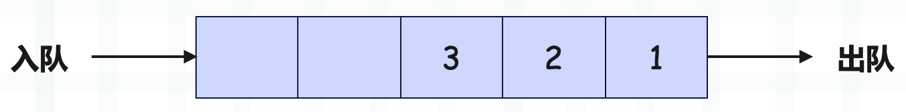
而 Python 也提供了队列，分别是协程队列和线程队列。
import asyncio
import queue
# 协程队列
coroutine_queue = asyncio.Queue()
# 线程队列
threading_queue = queue.Queue()
如果你的程序基于 asyncio，那么应该使用协程队列，如果你的程序采用了多线程，那么应该使用线程队列。
协程队列
协程队列的具体实现由 asyncio 提供，以下是它的基本用法。
import asyncio
async def main():
# 创建队列时可以指定能够存储的最大元素个数
# 不指定则没有容量限制
queue = asyncio.Queue(maxsize=20)
# 返回容量
print(queue.maxsize) # 20
# 添加元素，如果队列满了会阻塞，直到有剩余空间
await queue.put(111)
# 添加元素，如果队列满了会抛异常
# 因为不需要阻塞等待，所以 put_nowait 不是协程函数
queue.put_nowait(222)
# 队列是否已满
print(queue.full()) # False
# 返回队列内部的元素个数
print(queue.qsize()) # 2
# 从队列中获取元素，如果队列为空，会阻塞，直到队列中有可用元素
print(await queue.get()) # 111
# 从队列中获取元素，如果队列为空，会抛异常
# 因为不需要阻塞等待，所以 put_nowait 不是协程函数
print(queue.get_nowait()) # 222
# 队列是否为空
print(queue.empty()) # True
asyncio.run(main())
所以协程队列的 API 很简单，我们再罗列一下：
- queue = asyncio.Queue()，创建一个队列。
- queue.maxsize，返回队列的容量。
- queue.qsize()，返回队列中的元素个数。
- queue.full()，队列是否已满。
- queue.empty()，队列是否为空。
- await queue.put(item)，往队列中添加元素，队列满了会阻塞。
- queue.put_nowait(item)，往队列中添加元素，队列满了会抛异常。
- await queue.get()，从队列中取出元素，队列为空会阻塞。
- queue.get_nowait()，从队列中取出元素，队列为空会抛异常。
然后协程队列还有两个 API，需要单独说明，分别是 task_done() 和 join()。
首先在协程队列内部有一个 _unfinished_tasks 属性，初始值为 0，每当往队列添加一个元素时，该属性的值就会自增 1。但是从队列取出元素时，该属性不会自动减 1，需要手动调用 task_done() 方法。所以 _unfinished_tasks 记录了队列中有多少个任务数据需要处理，每来一个自动加 1，但取走一个不会自动减 1，而是需要调用 task_done 实现。
然后 join() 的作用是，当 _unfinished_tasks 不为 0 的时候，await queue.join() 会阻塞，直到为 0。
import asyncio
async def consumer(queue, n):
print(f"consumer{n} 开始消费")
await asyncio.sleep(3)
await queue.get()
# 获取数据后，调用 task_done
queue.task_done()
print(f"consumer{n} 消费完毕")
async def main():
queue = asyncio.Queue()
await queue.put(123)
await queue.put(456)
await queue.put(789)
# 队列里面有三个数据，开启三个消费者去消费
await asyncio.gather(
consumer(queue, 1),
consumer(queue, 2),
consumer(queue, 3),
)
# 这里会陷入阻塞，直到 _unfinished_tasks 变为 0
await queue.join()
print("main 解除阻塞")
asyncio.run(main())
"""
consumer1 开始消费
consumer2 开始消费
consumer3 开始消费
consumer1 消费完毕
consumer2 消费完毕
consumer3 消费完毕
main 解除阻塞
"""
还是比较简单的，然后我们来看一下协程队列的具体实现细节。

协程队列内部有一个 _queue 属性，它是一个双端队列，负责保存具体的元素。因为要保证两端的操作都是高效的，所以采用双端队列实现。
然后是 _getters 和 _putters 两个属性，它们是做什么的呢？首先在队列满了的时候，协程往队列添加元素时会陷入阻塞，等到队列有剩余空间时会解除阻塞。同理，在队列为空时，协程从队列获取元素时会陷入阻塞，等到队列有可用元素时会解除阻塞。那么这个阻塞等待，以及自动唤醒并解除阻塞是怎么实现的呢？在介绍锁和信号量的时候，我们分析过整个实现过程，协程队列与之类似。
假设协程从队列获取元素，但是队列为空，于是会创建一个 Future 对象，并保存起来，而保存的地方就是 _getters，它也是双端队列。然后 await future 会陷入阻塞，当其它协程往队列中添加元素时，会将 _getters 里面的 future 弹出，设置结果集，此时 await future 的协程就会解除阻塞，因为队列有可用元素了。
同理，协程往队列添加元素也是如此，如果队列满了，同样创建一个 Future 对象，并保存起来，而保存的地方就是 _putters。然后 await future，陷入阻塞，当其它协程从队列中取出元素，会将 _putters 里面的 future 弹出，设置结果集。因此 await future 的协程就会解除阻塞，因为队列有可用空间了。

以上是内部调用的三个方法，_get 方法负责从队列的头部弹出元素，_put 方法负责从队列的尾部追加元素，比较简单。然后是 _wakeup_next 方法，它负责唤醒阻塞的协程。参数 waiters 要么是 _getters，要么是 _putters，从里面弹出一个 future，设置结果集，让对应的协程解除阻塞。

以上几个方法都比较简单，接下来重点来了，我们看看元素是怎么放入和获取的。
def put_nowait(self, item):
"""Put an item into the queue without blocking.
If no free slot is immediately available, raise QueueFull.
"""
if self.full():
raise QueueFull
self._put(item)
self._unfinished_tasks += 1
self._finished.clear()
self._wakeup_next(self._getters)
def get_nowait(self):
"""Remove and return an item from the queue.
Return an item if one is immediately available, else raise QueueEmpty.
"""
if self.empty():
raise QueueEmpty
item = self._get()
self._wakeup_next(self._putters)
return item
put_nowait 负责往队列添加元素，如果添加时发现队列已满，那么抛出异常。如果未满，则调用 _put 方法往 _queue 里面添加元素，因为元素的实际存储是由 self._queue 这个双端队列负责的。添加完毕后，将 _unfinished_task 加 1。最后从 _getters 里面弹出 future，设置结果集，让因获取不到元素而陷入阻塞的协程解除阻塞（同时会将添加的元素取走）。
get_nowait 的逻辑也很简单，如果队列为空，直接抛异常。如果不为空，则调用 _get 方法从队列中弹出元素。最后从 _putters 里面弹出 future，设置结果集，让因队列已满、无法添加元素而陷入阻塞的协程解除阻塞（同时会将元素添加进队列）。
无论是 put_nowait 还是 get_nowait，在调用时都不会阻塞，因此队列还提供了阻塞的 put 和 get 方法。
async def put(self, item):
while self.full(): # 如果队列已满
putter = self._get_loop().create_future() # 创建一个 future
self._putters.append(putter) # 添加到 self._putters 中
try:
# await 陷入阻塞，直到别的协程从队列中取走元素
# 然后弹出该 future 并设置结果集
await putter
except:
putter.cancel() # Just in case putter is not done yet.
try:
# Clean self._putters from canceled putters.
self._putters.remove(putter)
except ValueError:
# The putter could be removed from self._putters by a
# previous get_nowait call.
pass
if not self.full() and not putter.cancelled():
# We were woken up by get_nowait(), but can't take
# the call. Wake up the next in line.
self._wakeup_next(self._putters)
raise
# 说明队列有可用空间了，直接调用 put_nowait 方法
return self.put_nowait(item)
async def get(self):
while self.empty(): # 如果队列为空
getter = self._get_loop().create_future() # 创建一个 future
self._getters.append(getter) # 添加到 self,_getters 中
try:
# await 陷入阻塞，直到别的协程往队列中添加元素
# 然后弹出该 future 并设置结果集
await getter
except:
getter.cancel() # Just in case getter is not done yet.
try:
# Clean self._getters from canceled getters.
self._getters.remove(getter)
except ValueError:
# The getter could be removed from self._getters by a
# previous put_nowait call.
pass
if not self.empty() and not getter.cancelled():
# We were woken up by put_nowait(), but can't take
# the call. Wake up the next in line.
self._wakeup_next(self._getters)
raise
# 说明队列有可用元素了，直接调用 get_nowait 方法
return self.get_nowait()
比较简单，还是没什么难度的，最后再来看看 task_done 和 join 两个方法。
def task_done(self):
if self._unfinished_tasks <= 0:
raise ValueError('task_done() called too many times')
self._unfinished_tasks -= 1
if self._unfinished_tasks == 0:
self._finished.set()
async def join(self):
if self._unfinished_tasks > 0:
await self._finished.wait()
协程队列里面使用了 asyncio.Event，它表示事件，我们稍后说。如果事件对象没有调用 set 方法设置标志位，那么调用 wait 方法时会陷入阻塞。当事件对象调用 set 方法时，wait 会解除阻塞。所以协程队列的 join 方法的逻辑就是，当 _unfinished_tasks 大于 0 时，调用事件对象的 wait 方法陷入阻塞。
而 task_done 方法的作用就是将 _unfinished_tasks 减 1，当 _unfinished_tasks 的值为 0 时，调用事件对象的 set 方法，让 join 解除阻塞。
以上就是整个协程队列的实现细节，具体的元素存储是由 collections.deque 来承载的。并在队列已满或者为空时，通过 Future 对象来实现阻塞等待和自动唤醒。
另外除了先进先出队列之外，还有先进后出队列，一般称为 LIFO 队列，它的效果类似于栈。
class LifoQueue(Queue):
def _init(self, maxsize):
self._queue = []
def _put(self, item):
self._queue.append(item)
def _get(self):
return self._queue.pop()
这个没什么好说的，因为是先进后出，所以添加和弹出都在同一端，直接使用列表实现即可。并且由于 LifoQueue 继承 Queue，所以它的 API 和普通的协程队列是一样的。
除了先进先出队列，还有一个优先队列。
class PriorityQueue(Queue):
def _init(self, maxsize):
self._queue = []
def _put(self, item, heappush=heapq.heappush):
heappush(self._queue, item)
def _get(self, heappop=heapq.heappop):
return heappop(self._queue)
它的 API 和普通的协程队列也是一致的，只不过优先队列在添加元素时，需要指定一个优先级：(优先级, 元素)，优先级的值越低，表示优先级越高。然后在内部，会按照优先级的高低，维护一个小根堆，堆顶元素便是优先级最高的元素。
这几个队列具体使用哪一种，则取决于具体的业务场景。
线程队列
说完了协程队列，再来看看线程队列，它们的 API 是类似的，但实现细节则不同。因为操作系统感知不到协程，所以协程队列的阻塞等待是基于 Future 实现的，而线程队列的阻塞等待是基于条件变量（和互斥锁）实现的。
还是先来看看线程队列的一些 API，和协程队列是类似的。
from queue import Queue
# 可以指定一个 maxsize 参数，表示队列的容量
# 不指定则表示队列的容量无限
queue = Queue(maxsize=20)
# 查看容量
print(queue.maxsize) # 20
# 查看队列的元素个数
print(queue.qsize()) # 0
# 判断队列是否已满
print(queue.full()) # False
# 判断队列是否为空
print(queue.empty()) # True
# 往队列中添加元素，block 参数表示是否阻塞，默认为 True，当队列已满时，线程会阻塞
# timeout 表示超时时间，默认为 None，表示会无限等待
# 当然也可以给 timeout 传一个具体的值，如果在规定时间内，没有将元素放入队列，那么抛异常
queue.put(123, block=True, timeout=None)
# 也是往队列中添加元素，但是当队列已满时，会直接抛异常
# put_nowait(item) 本质上就是 put(item, block=False)
queue.put_nowait(456)
# 从队列中取出元素，同样可以传递 block 和 timeout 参数
# block 默认为 True，当队列为空时会陷入阻塞，timeout 默认为 None，表示会无限等待
print(queue.get(block=True, timeout=None)) # 123
# 也是从队列中取出元素，但是当队列为空时，会直接抛异常
# get_nowait() 本质上就是 get(block=False)
print(queue.get_nowait()) # 456
print(queue.unfinished_tasks) # 2
# task_done()，将 unfinished_tasks 属性的值减 1
queue.task_done()
queue.task_done()
print(queue.unfinished_tasks) # 0
# join()，当 unfinished_tasks 不为 0 时，陷入阻塞
queue.join()
线程队列的具体使用我们已经知道了，下面来看看它的具体实现。
class Queue:
def __init__(self, maxsize=0):
self.maxsize = maxsize
self._init(maxsize)
# 互斥锁，当队列发生变化时，必须持有互斥锁
# 所有需要获取互斥锁的方法在返回前都必须释放它
self.mutex = threading.Lock()
# 互斥锁在以下三种条件变量（threading.Condition 对象）之间共享
# 因此获取和释放这些条件变量也相当于获取和释放互斥锁
# 往队列中添加元素时，要通知条件变量 not_empty
# 这样等待获取元素的线程就会被通知到，从而解除阻塞
self.not_empty = threading.Condition(self.mutex)
# 从队列中弹出元素时，要通知条件变量 not_full
# 这样等待添加元素的线程就会被通知到，从而解除阻塞
self.not_full = threading.Condition(self.mutex)
# 当 unfinished_task 属性的值为 0 时，要通知条件变量 all_tasks_done
# 这样执行 join 方法的线程就会被通知到，从而解除阻塞
self.all_tasks_done = threading.Condition(self.mutex)
self.unfinished_tasks = 0
def _init(self, maxsize):
self.queue = deque()
线程队列的内部依旧使用双端队列进行元素存储，并且还使用了一个互斥锁和三个条件变量。
为了保证数据的一致性和线程安全，当队列在多线程环境中被修改（比如添加或删除元素）时，需要使用互斥锁。任何需要修改队列的操作都必须在获取到互斥锁之后进行，以防止多个线程同时对队列进行修改，否则会导致数据不一致或其它错误。同时，一旦对队列的修改完成，必须立即释放互斥锁，以便其它线程可以访问队列。
然后是 not_empty 条件变量，当一个新元素被添加到队列时，应该向 not_empty 发送一个信号。这个动作会通知那些想从队列中获取元素，但因队列为空而陷入阻塞的线程，现在队列中已经有了新的元素，它们可以继续执行获取元素的操作。
接下来是 not_full 条件变量，当从队列中取走一个元素时，应该向 not_full 发送一个信号。这个动作会通知那些想往队列添加元素，但因队列已满而陷入阻塞的线程，现在队列中已经有了可用空间，它们可以继续执行添加元素的操作。
最后是 all_tasks_done 条件变量，当处理的任务全部完成，即计数器 unfinished_task 为 0 时，应该向 all_tasks_done 发送一个信号。这个动作会通知那些执行了 join() 方法而陷入阻塞的线程，它们可以继续往下执行了。
def qsize(self):
with self.mutex:
return self._qsize()
def empty(self):
with self.mutex:
return not self._qsize()
def full(self):
with self.mutex:
return 0 < self.maxsize <= self._qsize()
def _qsize(self):
return len(self.queue)
因为线程队列采用了双端队列存储元素，所以双端队列的长度就是线程队列的元素个数。如果元素个数为 0，那么队列就是空；如果容量大于 0，并且小于等于元素个数，那么队列就满了。此外我们看到执行这些操作时，必须要在互斥锁的保护下进行。
def put_nowait(self, item):
return self.put(item, block=False)
def get_nowait(self):
return self.get(block=False)
前面说了，put_nowait 和 get_nowait 本质上就是调用了 put 和 get，所以我们的重点是 put 和 get 两个方法。
def _put(self, item):
self.queue.append(item)
def put(self, item, block=True, timeout=None):
# 条件变量支持 with 语句，在内部会自动获取锁
with self.not_full:
# 如果指定了具体的容量，并且设置了非阻塞，以及元素个数达到了指定的容量
# 那么直接抛异常
if self.maxsize > 0:
if not block:
if self._qsize() >= self.maxsize:
raise Full
# 否则说明 block 为 True，如果元素个数达到了指定的容量
# 那么调用条件变量的 wait 方法进行等待，直到队列有可用空间
elif timeout is None:
while self._qsize() >= self.maxsize:
self.not_full.wait()
# 超时时间必须大于等于 0
elif timeout < 0:
raise ValueError("'timeout' must be a non-negative number")
else: # 否则说明 block 为 True，并且也指定了具体的超时时间
endtime = time() + timeout
# 如果规定时间内，元素没有放入到队列中，那么抛出异常，表示队列已满
while self._qsize() >= self.maxsize:
remaining = endtime - time()
if remaining <= 0.0:
raise Full
self.not_full.wait(remaining)
# 到此，说明队列有可用空间，那么将元素添加进去
self._put(item)
# unfinished_tasks 属性的值加 1
self.unfinished_tasks += 1
# 给条件变量 not_empty 发一个信号，表示队列有元素了
# 那些因获取不到条件变量而陷入阻塞的线程可以解除阻塞了
self.not_empty.notify()
以上就是 put 方法的底层实现，不难理解。说完了 put，再来看看 get。
def _get(self):
return self.queue.popleft()
def get(self, block=True, timeout=None):
with self.not_empty:
if not block: # 如果 block 为 False，并且队列为空，那么抛异常
if not self._qsize():
raise Empty
elif timeout is None: # 说明 block 为 True，并且没有超时时间
# 当队列为空时，调用条件变量的 wait 方法进入等待
# 那么问题来了，什么时候解除阻塞呢
while not self._qsize():
# 还记得 put 方法里面添加完元素后，做了一件什么事吗？
# 没错，就是调用了 self.not_empty.notify()，它会发送一个信号
# 让 self.not_empty.wait() 解除阻塞，因为队列有可用元素了
self.not_empty.wait()
elif timeout < 0: # 超时时间必须大于等于 0
raise ValueError("'timeout' must be a non-negative number")
else:
# 如果规定时间内，还没有从队列中获取到元素
# 那么抛异常，表示队列为空，没有可用元素
endtime = time() + timeout
while not self._qsize():
remaining = endtime - time()
if remaining <= 0.0:
raise Empty
self.not_empty.wait(remaining)
# 到此，说明队列有可用元素，那么将元素取出
item = self._get()
# put 方法在添加元素后，会通知 not_empty 有可用元素
# 那么同理，get 方法在获取元素后，也会通知 not_full，表示队列有可用空间了
# 让 self.not_full.wait() 解除阻塞
self.not_full.notify()
# 返回队列元素
return item
最后是 task_done 和 join 方法，看看它们的内部逻辑。
def task_done(self):
with self.all_tasks_done:
unfinished = self.unfinished_tasks - 1
if unfinished <= 0:
if unfinished < 0:
raise ValueError('task_done() called too many times')
self.all_tasks_done.notify_all()
self.unfinished_tasks = unfinished
def join(self):
with self.all_tasks_done:
while self.unfinished_tasks:
self.all_tasks_done.wait()
调用 join 方法，当 unfinished_task 大于 0 时，会陷入阻塞。调用 task_done 方法，会将未完成任务数减 1，如果为 0，那么唤醒阻塞等待的线程。需要注意的是，唤醒调用的方法不是 notify，而是 notify_all。对于添加元素和获取元素，每次显然只能唤醒一个线程，因此调用 notify。而 unfinished_task 为 0 时，应该要唤醒所有等待的线程，因此要调用 notify_all。
最后线程队列也有相应的 PriorityQueue 和 LifoQueue，它们的用法、实现和协程里面的这两个队列是一样的。
以上便是协程队列和线程队列的具体用法和实现原理，它们本质上都是基于双端队列实现具体的元素存储，并且在队列已满和队列为空时，可以阻塞等待。只不过协程队列是通过 Future 对象实现的，而线程队列是通过条件变量实现的。
Event
说完了锁、信号量、队列之后，再来说一说 asyncio 的事件（Event 对象），它负责多任务之间的同步。在看队列的时候，我们注意到队列的 join 方法内部使用了 Event。
Event 对象内部维护了一个标志位，初始时为 False，如果调用 event.set()，可以将它设置为 True，调用 event.clear() 可以重置为 False。然后 Event 对象还有一个 wait() 方法，如果内部的标志位是 False，那么调用该方法会阻塞。而当标志被设置为 True（通过 set 方法）时，所有任务会解除阻塞并继续执行。
因此 Event 对象（事件）常用于多任务之间的协调和同步，例如一个任务在等待某个事件发生，而另一个任务在发生时将标志设置为 True，以此来通知正在等待的任务。
协程 Event
协程 Event 由 asyncio 模块提供。
import asyncio
from asyncio import Event
async def task(event: Event):
# 如果 event 内部的标志位是 False，会陷入阻塞
print(f"陷入阻塞，因为标志位 = {event.is_set()}")
await event.wait()
print(f"解除阻塞，因为标志位 = {event.is_set()}")
async def main():
event = Event()
# 任务开始执行
asyncio.create_task(task(event))
await asyncio.sleep(3)
# task 内部的 event.wait() 会陷入阻塞
# 3 秒后将标志设置为 True
print("将 event 内部的标志位设置为 True")
event.set()
asyncio.run(main())
"""
陷入阻塞，因为标志位 = False
将 event 内部的标志位设置为 True
解除阻塞，因为标志位 = True
"""
非常简单，当调用 event.wait() 时，如果标志是 True，那么相当于绿灯，直接通过；如果标志是 False，那么相当于红灯，需要等待。
默认情况下是红灯，通过 event.set() 可以设置为绿灯，也可以通过 event.clear() 重置为红灯。调用 is_set() 方法可以判断当前是红灯还是绿灯，True 为绿灯，False 为红灯。
然后再来看看它的源码实现：
class Event:
def __init__(self, *, loop=mixins._marker):
super().__init__(loop=loop)
self._waiters = collections.deque()
self._value = False
当标志位是 False 时，协程调用 wait 方法会陷入阻塞，那么阻塞要如何实现呢？没错，还是要通过 Future 对象。所以 Future 对象和 asyncio 的实现紧密相关，协程里面的阻塞等待都是基于 Future 实现的。
而 _waiters 负责保存协程内部创建的 Future 对象，_value 则表示标志位。
def is_set(self):
# 查看标志位
return self._value
def clear(self):
# 将标志位设置为 False
self._value = False
async def wait(self):
# 如果调用时发现标志位是 True，那么说明是绿灯，直接通过
if self._value:
return True
# 否则说明是红灯，于是创建一个 Future 对象，并添加到 _waiters 中
fut = self._get_loop().create_future()
self._waiters.append(fut)
try:
# 然后 await 它，从而陷入阻塞
await fut
return True
finally:
self._waiters.remove(fut)
def set(self):
# 如果标志位是 False，将其设置为 True
# 然后将 _waiters 里面的 future 依次弹出，设置结果集，让 await fut 的协程解除阻塞
if not self._value:
self._value = True
for fut in self._waiters:
if not fut.done():
fut.set_result(True)
整个过程没有任何难度，非常简单。
线程 Event
线程 Event 也很简单，它是由 threading 模块提供的。
import time
import threading
from threading import Event
def task():
# 如果 event 内部的标志位是 False，会陷入阻塞
print(f"陷入阻塞，因为标志位 = {event.is_set()}")
event.wait()
print(f"解除阻塞，因为标志位 = {event.is_set()}")
def main():
time.sleep(3)
print("将 event 内部的标志位设置为 True")
event.set()
event = Event()
t1 = threading.Thread(target=task)
t2 = threading.Thread(target=main)
t1.start()
t2.start()
"""
陷入阻塞，因为标志位 = False
将 event 内部的标志位设置为 True
解除阻塞，因为标志位 = True
"""
用法和协程 Event 几乎没什么区别，然后看一下它的内部实现。
class Event:
def __init__(self):
# 条件变量，所以事件对象其实是基于条件变量的一个封装
self._cond = Condition(Lock())
# 标志位，初始为 False
self._flag = False
def is_set(self):
# 标志位是否被设置
return self._flag
isSet = is_set
def set(self):
# 修改共享变量时需要加锁保护
with self._cond:
# 设置标志位，并唤醒所有阻塞线程
self._flag = True
self._cond.notify_all()
def clear(self):
# 将标志位设置为 False
with self._cond:
self._flag = False
def wait(self, timeout=None):
# 阻塞等待，但支持超时时间
with self._cond:
signaled = self._flag
if not signaled:
signaled = self._cond.wait(timeout)
return signaled
非常简单，Event 内部是基于 Condition 实现的。
小结
以上我们就分析了常见的同步原语。
锁（Lock）
- 本质是互斥机制，一次只允许一个线程访问共享资源。
- 适合用于保护简单的共享数据访问。
- 最基本也最常用的同步原语。
- 要注意避免死锁问题。
信号量（Semaphore）
- 可以控制同时访问特定资源的线程数量。
- 比锁更灵活，因为可以允许多个线程并发访问。
- 适合用于限制资源池的并发访问。
- 常用于控制资源的使用数量（如连接池、线程池）。
队列（Queue）
- 提供了线程安全的 FIFO 数据结构。
- 内置了必要的锁机制，使用起来更简单安全。
- 特别适合生产者 - 消费者模式。
- 可用于线程间的数据传递和任务分发。
事件（Event）
- 用于线程间的通知机制。
- 一个线程等待信号，另一个线程发送信号。
- 适用于简单的线程协调和状态同步。
- 常用于启动信号、停止信号等场景。
欢迎大家关注我的公众号：古明地觉的编程教室。
如果觉得文章对你有所帮助，也可以请作者吃个馒头，Thanks♪(･ω･)ﾉ。
楔子
到目前为止我们使用 asyncio 获得的性能提升，一直专注在并发运行 IO 密集型任务上面，当然运行 IO 密集型任务是 asyncio 的主要工作，并且按照目前编写代码的方式，需要注意尽量不要在协程中运行 CPU 密集型代码。但这似乎严重限制了 asyncio 的使用，因为这个库能做的事情不仅仅限于处理 IO 密集型任务。
asyncio 有一个用于和 multiprocessing 库进行互操作的 API，通过这个 API，即便执行 CPU 密集型代码，也可以获得 asyncio 库带来的优势。这使我们能够为 CPU 密集型工作（如数学计算或数据处理）实现性能提升，避开全局解释器锁，充分利用多核机器资源。
标准库 multiprocessing
CPython 有一个全局解释器锁（GIL），GIL 可防止多个字节码并行运行。这意味着 IO 密集型任务以外的其它任务，除了一些小的异常，使用多线程不会像在 Java 和 C++ 等语言中那样提供任何性能优势。因此对于 CPU 密集型工作，可以通过 multiprocessing 库生成子进程来实现性能提升。
每个子进程都有自己的 Python 解释器，且遵循 GIL，所以会有多个解释器，每个解释器都有自己的 GIL。假设运行在具有多个 CPU 核的机器上，这意味着可以有效地并行处理任何 CPU 密集型的工作负载。即使进程比内核数要多，操作系统也会使用抢占式多任务，来允许多个任务同时运行。这种设置既是并发的，也是并行的。
import time
from multiprocessing import Process
def count(to: int):
start = time.perf_counter()
counter = 0
while counter < to:
counter += 1
end = time.perf_counter()
if __name__ == '__main__':
start = time.perf_counter()
task1 = Process(target=count, args=(100000000,))
task2 = Process(target=count, args=(100000000,))
# 启动进程
task1.start()
task2.start()
# 该方法会一直阻塞主进程，直到子进程执行完成，并且 join 方法内部也可以接收一个超时时间
# 如果子进程在规定时间内没有完成，那么主进程不再等待
task1.join()
task2.join()
end = time.perf_counter()
print(f"在 {end - start} 秒内完成")
"""
在 1.813750300000038 秒内完成
"""
我们看到总耗时是 1.8 秒，如果把子进程换成子线程，那么耗时就不一样了，我们来测试一下。
import time
from threading import Thread
def count(to: int):
start = time.perf_counter()
counter = 0
while counter < to:
counter += 1
end = time.perf_counter()
if __name__ == '__main__':
start = time.perf_counter()
# 多线程和多进程相关的 API 是一致的，只需要将 Process 换成 Thread 即可
task1 = Thread(target=count, args=(100000000,))
task2 = Thread(target=count, args=(100000000,))
task1.start()
task2.start()
task1.join()
task2.join()
end = time.perf_counter()
print(f"在 {end - start} 秒内完成")
"""
在 3.3010417999998936 秒内完成
"""
因为线程存在切换，所以不会运行完一个任务之后再运行下一个，而是并发运行的。但不管怎么并发，同一时刻只会有一个任务在运行。所以对于 CPU 密集型任务来说，上面的耗时是两个任务加起来的时间，因为同一时刻只会用到一个 CPU 核心。而采用多进程，那么两个任务就是并行运行的了。
虽然启动多进程带来了不错的性能提升，但是有一点却很尴尬，因为必须为启动的每个进程调用 start 和 join。并且我们也不知道哪个进程会先完成，如果想实现 asyncio.as_completed 之类的效果，并在结果完成时处理它们，那么上面的解决方案就无法满足要求了。此外 join 方法不会返回目标函数的返回值，事实上，目前在不使用共享进程内存的情况下是无法获取函数的返回值的。
因此这个 API 适用于简单的情况，但如果我们想要获取函数的返回值，或想要在结果生成时立即处理，它显然不起作用。幸运的是，进程池提供了一种解决方法。
在使用多进程时，必须要加上 if __name__ == '__main__'，否则会报错：An attempt has been made to start a new process before the current process has finished its bootstrapping phase。这样做的原因是为了防止其他人导入代码时不小心启动多个进程。
from multiprocessing import Pool
def say_hello(name) -> str:
return f"hello, {name}"
if __name__ == '__main__':
with Pool() as pool:
hi1 = pool.apply(say_hello, args=("satori",))
hi2 = pool.apply(say_hello, args=("koishi",))
print(hi1)
print(hi2)
"""
hello, satori
hello, koishi
"""
我们使用 with Pool() as pool 创建了一个进程池，这是一个上下文管理器，因为一旦使用了进程池，那么就需要在适当的时候关闭创建的 Python 进程。如果不这样做，会存在进程泄露的风险，这可能导致资源利用的问题。当实例化这个池时，它会自动创建与你使用的机器上的 CPU 内核数量相等的 Python 进程。
可通过运行 multiprocessing.cpu_count() 函数来确定当前机器拥有的 CPU 核心数，并且在调用 Pool() 时也可以通过指定 processes 参数设置需要使用的核心数。一般情况下，使用默认值即可。
接下来调用进程池的 apply 方法在一个单独的进程中运行 say_hello 函数，这个方法看起来类似于之前对 Process 类所做的，我们传递了一个目标函数和一个参数元组。但区别是不需要自己启动进程或调用 join，并且还得到了函数的返回值，这在前面的例子中是无法完成的。
上面的代码可以成功执行，但有一个问题，apply 方法会一直阻塞，直到函数执行完成。这意味着，如果每次调用 say_hello 需要 10 秒，那么整个程序的运行时间将是大约 20秒，因为是串行运行的，无法并行运行。因此可以将 apply 换成 apply_async 来解决这个问题，一旦调用的是 apply_async 方法，那么返回的就不再是目标函数的返回值了，而是一个 AsyncResult 对象，进程会在后台运行。
如果想要返回值，那么可以调用 AsyncResult 的 get 方法，该方法会阻塞并获取目标函数的返回值。
from multiprocessing import Pool
def say_hello(name) -> str:
return f"hello, {name}"
if __name__ == '__main__':
with Pool() as pool:
hi1_async = pool.apply_async(say_hello, args=("satori",))
hi2_async = pool.apply_async(say_hello, args=("koishi",))
# 可以接收一个超时时间，如果在规定时间内没有完成
# 那么抛出 multiprocessing.context.TimeoutError，默认会一直阻塞
print(hi1_async.get())
print(hi2_async.get())
"""
hello, satori
hello, koishi
"""
调用 apply_async 时，对 say_hello 的两个调用会立即在不同的进程中开始执行。然后调用 get 方法时，父进程会阻塞，直到子进程运行完毕、将值返回。但这里还隐藏了一个问题，如果 hi1_async 需要 10 秒，hi2_async 需要 1 秒，会发生什么呢？因为先调用 hi1_async 的 get 方法，所以在第二个 print 打印之前需要先阻塞 10 秒，即使 hi2_async 只需要 1 秒就完成了。
如果想在事情完成后立即作出回应，就会遇到问题，这种情况下，我们真正想要的是类似于 asyncio.as_completed 返回的对象。接下来看看如何将进程池执行器与 asyncio 一起使用，以便我们解决这个问题。但在此之前，需要先了解一个模块。
concurrent.futures 的相关用法
本来这个模块不应该放在这里介绍的，但如果它不说，后面的内容就不方便展开，所以我们就来先聊聊这个模块。
concurrent.futures 模块提供了使用线程池或进程池运行任务的接口，线程池和进程池的 API 是一致的，所以应用只需要做最小的修改就可以在线程和进程之间进行切换。这个模块提供了两种类型的类与这些池交互：执行器（executor）用来管理工作线程池或进程池，future 用来管理计算的结果。要使用工作线程池或进程池，应用要创建适当的执行器，然后向它提交任务。
该模块和 asyncio 里面的一些概念非常相似，或者说 asyncio 在设计的时候借鉴了 concurrent.futures 的很多理念。
Future 对象
当我们将一个函数提交到线程池里面运行时，会立即返回一个对象，这个对象就叫做 Future 对象，里面包含了函数的执行状态等等，当然我们也可以手动创建一个 Future 对象。
concurrent.futures 里的 Future 和 asyncio 里的 Future 在概念上是类似的。
from concurrent.futures import Future
# 创建一个 Future 对象
future = Future()
def callback(future):
print(f"当 set_result 的时候，执行回调，返回值：{future.result()}")
# 通过调用 add_done_callback 方法，可以将 future 绑定一个回调函数
# 这里只需要传入函数名即可，future 会自动传递给 callback 的第一个参数
# 如果需要多个参数的话，怎么办呢？很简单，使用偏函数即可
future.add_done_callback(callback)
# 什么时候会触发回调函数的执行呢？当 future 执行 set_result 的时候
future.set_result("some value")
"""
当 set_result 的时候，执行回调，返回值：some value
"""
我们说过，将函数提交到线程池里面运行的时候，会立即返回，并得到一个 Future 对象。这个 Future 对象里面就包含了函数的执行状态，比如此时是处于暂停、运行中、还是完成等等，并且在函数执行完毕之后，还可以拿到返回值。
from concurrent.futures import ThreadPoolExecutor
import time
def task(name, age, n):
time.sleep(n)
return f"name is {name}，age is {age}，sleep {n}s"
# 创建一个线程池，里面还可以指定 max_workers 参数，表示最多创建多少个线程
# 如果不指定，那么会为每一个任务创建一个线程
executor = ThreadPoolExecutor()
# 通过 submit 就直接将任务提交到线程池里面了，一旦提交，就会立刻运行
# 提交之后，相当于开启了一个新的线程，主线程会继续往下走
future = executor.submit(task, "古明地觉", 16, 3)
# 由于 n = 3，所以会休眠 3 秒，此时任务处于 running 状态
print(future) # <Future at 0x226b860 state=running>
# 让主程序也休眠 3s
time.sleep(3)
# 此时再打印
print(future) # <Future at 0x226b860 state=finished returned str>
可以看到，一开始任务处于 running（正在运行）状态，3 秒过后，任务处于 finished（完成）状态，并告诉我们返回了一个 str 对象。
然后获取任务的返回值：
from concurrent.futures import ThreadPoolExecutor
import time
def task(name, age, n):
time.sleep(n)
return f"name is {name}，age is {age}，sleep {n}s"
executor = ThreadPoolExecutor()
future = executor.submit(task, "古明地觉", 16, 3)
start_time = time.perf_counter()
print(future.result()) # name is 古明地觉，age is 16，sleep 3s
print(f"耗时：{time.perf_counter() - start_time}") # 耗时：2.999359371
可以看到，打印 future.result() 这一步花了将近 3s。其实也不难理解，future.result() 是干嘛的，就是为了获取函数的返回值，可函数都还没有执行完毕，它又从哪里获取呢？所以只能先等待函数执行完毕，将返回值通过 set_result 设置到 future 里面之后，外界的 future.result() 才能够获取到值。所以 future.result() 这一步实际上是会阻塞的，会等待任务执行完毕。
当然也可以绑定一个回调：
from concurrent.futures import ThreadPoolExecutor
import time
def task(name, age, n):
time.sleep(n)
return f"name is {name}，age is {age}，sleep {n}s"
def callback(future):
print(future.result())
executor = ThreadPoolExecutor()
future = executor.submit(task, "古明地觉", 16, 3)
time.sleep(5)
future.add_done_callback(callback)
"""
name is 古明地觉，age is 16，sleep 3s
"""
等到函数执行完毕之后，依旧会获取到返回值，但这里加上了 time.sleep(5)，只是为了证明即使等函数完成之后再去添加回调，依旧是可以的。函数完成之前添加回调，那么会在函数执行完毕后触发回调；函数完成之后添加回调，由于函数已经执行完成，代表此时的 future 已经有值了，或者说已经 set_result 了，那么会立即触发回调，因此 time.sleep(5) 完全可以去掉。
提交多个函数
提交函数的话，可以提交任意多个，我们来看一下：
from concurrent.futures import ThreadPoolExecutor
import time
def task(name, age, n):
time.sleep(n)
return f"name is {name}，age is {age}，sleep {n}s"
executor = ThreadPoolExecutor()
futures = [executor.submit(task, "古明地觉", 16, 3),
executor.submit(task, "古明地觉", 16, 4),
executor.submit(task, "古明地觉", 16, 1),
]
# 此时都处于 running
print(futures)
"""
[<Future at 0x226b860 state=running>,
<Future at 0x9f4b160 state=running>,
<Future at 0x9f510f0 state=running>]
"""
time.sleep(3.5)
# 主程序 sleep 3.5s 后，futures[0] 和 futures[2] 处于 finished，futures[1] 处于running
print(futures)
"""
[<Future at 0x271642c2e50 state=finished returned str>,
<Future at 0x2717b5f6e50 state=running>,
<Future at 0x2717b62f1f0 state=finished returned str>]
"""
获取任务的返回值：
from concurrent.futures import ThreadPoolExecutor
import time
def task(name, age, n):
time.sleep(n)
return f"name is {name}，age is {age}，sleep {n}s"
executor = ThreadPoolExecutor()
futures = [executor.submit(task, "古明地觉", 16, 5),
executor.submit(task, "古明地觉", 16, 2),
executor.submit(task, "古明地觉", 16, 4),
executor.submit(task, "古明地觉", 16, 3),
executor.submit(task, "古明地觉", 16, 6),
]
# 此时的 futures 里面相当于有了 5 个 future
# 我们记做 future1，future2，future3，future4，future5
for future in futures:
print(future.result())
"""
name is 古明地觉，age is 16，sleep 5s
name is 古明地觉，age is 16，sleep 2s
name is 古明地觉，age is 16，sleep 4s
name is 古明地觉，age is 16，sleep 3s
name is 古明地觉，age is 16，sleep 6s
"""
当使用 for 循环的时候，实际上会依次遍历这 5 个 future，所以返回值的顺序就是我们添加的 future 的顺序。但 future1 对应的任务休眠了 5s，那么必须等到 5s 后，future1 里面才会有值。由于这五个任务是并发执行的，future2、future3、future4 只休眠了 2s、4s、3s，所以肯定会先执行完毕，然后执行 set_result，将返回值设置到对应的 future 里。
但 Python 的 for 循环不可能在第一次迭代还没有结束，就去执行第二次迭代，因为 futures 里面的几个 future 的顺序一开始就被定好了，只有当第一个 future.result() 执行完成之后，才会执行下一个 future.result()。即便后面的任务已经执行完毕，但由于 for 循环的顺序，也只能等着，直到前面的 future.result() 执行完毕。
所以会先打印 name is 古明地觉，age is 16，sleep 5s"，当这句打印完时，由于后面的任务早已执行完毕，只是第一个 future.result() 太慢，又把路给堵住了，才导致后面的无法输出。因此第一个 future.result() 执行完毕之后，后面的 3 个 future.result() 会瞬间执行，从而立刻打印。
而最后一个任务由于是 6s，因此再过 1s 后，打印 "name is 古明地觉，age is 16，sleep 6s"。
查看函数是否执行完毕
我们之前说 future 里面包含了函数的执行状态，所以可以通过 future.done() 查看任务是否完成。
from concurrent.futures import ThreadPoolExecutor
import time
def task(name, age, n):
time.sleep(n)
return f"name is {name}，age is {age}，sleep {n}s"
executor = ThreadPoolExecutor()
# 之前说过，可以打印 future 来查看任务的状态，其实还有一种方法来确定任务是否完成
future = executor.submit(task, "椎名真白", 16, 3)
while True:
if future.done():
print(f"任务执行完毕：{future.done()}")
break
else:
print(f"任务尚未执行完毕：{future.done()}")
time.sleep(1)
"""
任务尚未执行完毕：False
任务尚未执行完毕：False
任务尚未执行完毕：False
任务尚未执行完毕：False
任务执行完毕：True
"""
# 当任务尚未执行完毕的时候，future.done() 是 False，执行完毕之后是 True
除此之外，还有一个 future.running() ，表示任务是否正在运行。如果正在运行返回 True，运行结束或者失败，返回 False。
使用 map 来提交多个函数
使用 map 来提交会更简单一些，如果任务的量比较多，并且不关心为某个具体任务设置回调的话，可以使用 map。
# 如果我想将以下这种用 submit 提交的方式，改用 map 要怎么做呢？
"""
futures = [executor.submit(task, "椎名真白", 16, 5),
executor.submit(task, "古明地觉", 16, 2),
executor.submit(task, "古明地恋", 15, 4),
executor.submit(task, "坂上智代", 19, 3),
executor.submit(task, "春日野穹", 16, 6)]
"""
# 可以直接改成
"""
results = executor.map(task,
["椎名真白", "古明地觉", "古明地恋", "坂上智代", "春日野穹"],
[16, 16, 15, 19, 16],
[5, 2, 4, 3, 6])
"""
map 这样写确实是简化了不少，但是使用这种方式就无法为某个具体的任务添加回调函数了。并且 map 内部也是使用了 submit，我们测试一下：
from concurrent.futures import ThreadPoolExecutor
import time
def task(name, age, n):
time.sleep(n)
return f"name is {name}，age is {age}，sleep {n}s"
executor = ThreadPoolExecutor()
results = executor.map(task,
["椎名真白", "古明地觉", "古明地恋", "坂上智代", "春日野穹"],
[16, 16, 15, 19, 16],
[5, 2, 4, 3, 6])
# 此时返回的是一个生成器，里面存放的就是函数的返回值
print(results)
"""
<generator object Executor.map.<locals>.result_iterator at 0x0000000009F4C840>
"""
for result in results:
print(result)
"""
name is 椎名真白，age is 16，sleep 5s
name is 古明地觉，age is 16，sleep 2s
name is 古明地恋，age is 15，sleep 4s
name is 坂上智代，age is 19，sleep 3s
name is 春日野穹，age is 16，sleep 6s
"""
如果想等所有任务都执行完毕之后再一并处理的话，可以直接调用 list。
from concurrent.futures import ThreadPoolExecutor
import time
import pprint
def task(name, age, n):
time.sleep(n)
return f"name is {name}，age is {age}，sleep {n}s"
executor = ThreadPoolExecutor()
results = executor.map(task,
["椎名真白", "古明地觉", "古明地恋", "坂上智代", "春日野穹"],
[16, 16, 15, 19, 16],
[5, 2, 4, 3, 6])
# 由于 results 是一个生成器，当转化为 list 之后，会将里面所有的值全部生产出来
# 这就意味着，要将所有任务的返回值都获取到才行
# 尽管我们不需要手动调用 result()，但这一步是无法避免的，只是 map 内部自动帮我们调用了
# 因此调用 result() 方法是不可避免的，调用的时候依旧会阻塞
# 而耗时最长的任务是 6s，因此这一步会阻塞 6s，等 6s 过后会打印所有任务的返回值
start_time = time.perf_counter()
pprint.pprint(list(results))
print(f"总耗时：{time.perf_counter() - start_time}")
"""
['name is 椎名真白，age is 16，sleep 5s',
'name is 古明地觉，age is 16，sleep 2s',
'name is 古明地恋，age is 15，sleep 4s',
'name is 坂上智代，age is 19，sleep 3s',
'name is 春日野穹，age is 16，sleep 6s']
总耗时：6.00001767
"""
当然调用 list 和直接使用 for 循环本质是一样的，并且我们看到，这个和 asyncio 的 gather 是比较类似的。
按照顺序等待
现在有这么一个需求，就是哪个任务先完成，哪个就先返回，这要怎么做呢？
from concurrent.futures import ThreadPoolExecutor, as_completed
import time
def task(name, age, n):
time.sleep(n)
return f"name is {name}，age is {age}，sleep {n}s"
executor = ThreadPoolExecutor()
futures = [executor.submit(task, "椎名真白", 16, 5),
executor.submit(task, "古明地觉", 16, 2),
executor.submit(task, "古明地恋", 15, 4),
executor.submit(task, "坂上智代", 19, 3),
executor.submit(task, "春日野穹", 16, 6)]
for future in as_completed(futures):
print(future.result())
"""
name is 古明地觉，age is 16，sleep 2s
name is 坂上智代，age is 19，sleep 3s
name is 古明地恋，age is 15，sleep 4s
name is 椎名真白，age is 16，sleep 5s
name is 春日野穹，age is 16，sleep 6s
"""
只需要将 futures 传递给 as_completed 即可。
如何取消一个任务
我们可以将任务添加到线程池当中，但如果想取消怎么办呢？
from concurrent.futures import ThreadPoolExecutor
import time
def task(name, age, n):
time.sleep(n)
return f"name is {name}，age is {age}，sleep {n}s"
executor = ThreadPoolExecutor()
future1 = executor.submit(task, "椎名真白", 16, 5)
future2 = executor.submit(task, "古明地觉", 16, 2)
future3 = executor.submit(task, "古明地恋", 15, 4)
# 取消任务，可以使用 future.cancel()
print(future3.cancel()) # False
但是调用 cancel 方法的时候，返回的是 False，这是为什么？很简单，因为任务已经提交到线程池里面了，任务已经运行了，只有在任务还没有运行时，取消才会成功。可这不矛盾了吗？任务一旦提交就会运行，只有不运行才会取消成功，这怎么办？还记得线程池的一个叫做 max_workers 的参数吗？用于控制线程池内的线程数量，我们可以将最大的任务数设置为 2，那么当第三个任务进去的时候，就不会执行了，而是处于等待状态。
from concurrent.futures import ThreadPoolExecutor
import time
def task(name, age, n):
time.sleep(n)
return f"name is {name}，age is {age}，sleep {n}s"
# 此时最多只能同时执行两个任务
executor = ThreadPoolExecutor(max_workers=2)
future1 = executor.submit(task, "椎名真白", 16, 5)
future2 = executor.submit(task, "古明地觉", 16, 2)
future3 = executor.submit(task, "古明地恋", 15, 4)
print(future3.cancel()) # True
"""
sleep 5
sleep 2
"""
# 可以看到结果为 True，说明取消成功了，而 sleep 4 也没有被打印
而事实上在启动线程池的时候，肯定是需要设置容量的，不然处理几千个任务就要开几千个线程吗。
任务中的异常
如果任务当中产生了一个异常，同样会被保存到 future 当中，可以通过 future.exception() 获取。
from concurrent.futures import ThreadPoolExecutor
def task1():
1 / 0
def task2():
pass
executor = ThreadPoolExecutor(max_workers=2)
future1 = executor.submit(task1)
future2 = executor.submit(task2)
print(future1.exception()) # division by zero
print(future2.exception()) # None
# 或者
try:
future1.result()
except Exception as e:
print(e) # division by zero
等待所有任务完成
一种方法是遍历所有的 future，调用它们的 result 方法。
from concurrent.futures import ThreadPoolExecutor
import time
def task(name, age, n):
time.sleep(n)
return f"name is {name}，age is {age}，sleep {n}s"
executor = ThreadPoolExecutor()
future1 = executor.submit(task, "椎名真白", 16, 5)
future2 = executor.submit(task, "古明地觉", 16, 2)
future3 = executor.submit(task, "古明地恋", 15, 4)
# 这里是不会阻塞的
print(123)
for future in [future1, future2, future3]:
print(future.result())
"""
123
name is 椎名真白，age is 16，sleep 5s
name is 古明地觉，age is 16，sleep 2s
name is 古明地恋，age is 15，sleep 4s
"""
或者使用 wait 方法：
from concurrent.futures import ThreadPoolExecutor, wait
import time
def task(name, age, n):
time.sleep(n)
return f"name is {name}，age is {age}，sleep {n}s"
executor = ThreadPoolExecutor()
future1 = executor.submit(task, "椎名真白", 16, 5)
future2 = executor.submit(task, "古明地觉", 16, 2)
future3 = executor.submit(task, "古明地恋", 15, 4)
# 这里是不会阻塞的
print(123)
"""
123
"""
# 直到所有的 future 完成，这里的 return_when 有三个可选值
# FIRST_COMPLETED，当任意一个任务完成或者取消
# FIRST_EXCEPTION，当任意一个任务出现异常，如果都没出现异常等同于 ALL_COMPLETED
# ALL_COMPLETED，所有任务都完成，默认是这个值
# 会卡在这一步，直到所有的任务都完成
fs = wait([future1, future2, future3], return_when="ALL_COMPLETED")
# 此时返回的 fs 是 DoneAndNotDoneFutures 类型的 namedtuple
# 里面有两个值，一个是 done，一个是 not_done
print(fs.done)
"""
{<Future at 0x1df1400 state=finished returned str>,
<Future at 0x2f08e48 state=finished returned str>,
<Future at 0x9f7bf60 state=finished returned str>}
"""
print(fs.not_done)
"""
set()
"""
for f in fs.done:
print(f.result())
"""
name is 椎名真白，age is 16，sleep 5s
name is 古明地恋，age is 15，sleep 4s
name is 古明地觉，age is 16，sleep 2s
"""
也可以使用上下文管理：
from concurrent.futures import ThreadPoolExecutor
import time
def task(name, age, n):
time.sleep(n)
return f"name is {name}，age is {age}，sleep {n}s"
with ThreadPoolExecutor() as executor:
future1 = executor.submit(task, "椎名真白", 16, 5)
future2 = executor.submit(task, "古明地觉", 16, 2)
future3 = executor.submit(task, "古明地恋", 15, 4)
print(future1.result())
print(future2.result())
print(future3.result())
# 直到 with 语句全部执行完毕，才会往下走
print(123)
"""
name is 椎名真白，age is 16，sleep 5s
name is 古明地觉，age is 16，sleep 2s
name is 古明地恋，age is 15，sleep 4s
123
"""
或者调用 executor 的 shutdown：
from concurrent.futures import ThreadPoolExecutor
import time
def task(name, age, n):
time.sleep(n)
return f"name is {name}，age is {age}，sleep {n}s"
executor = ThreadPoolExecutor()
future1 = executor.submit(task, "椎名真白", 16, 5)
future2 = executor.submit(task, "古明地觉", 16, 2)
future3 = executor.submit(task, "古明地恋", 15, 4)
executor.shutdown()
print(future1.result())
print(future2.result())
print(future3.result())
print(123)
"""
name is 椎名真白，age is 16，sleep 5s
name is 古明地觉，age is 16，sleep 2s
name is 古明地恋，age is 15，sleep 4s
123
"""
以上就是 concurrent.futures 的基本用法， 这里为了方便介绍，使用的是线程池执行器。如果想换成进程池，那么只需要将 ThreadPoolExecutor 换成 ProcessPoolExecutor。
from concurrent.futures import ThreadPoolExecutor
from concurrent.futures import ProcessPoolExecutor
并且在看这个模块的时候，会发现它里面的很多概念和 asyncio 基本是一致的，所以当发现概念上和 asyncio 有重叠时，不用担心，在 asyncio 里面学到的知识放在 concurrent.futures 里面也是适用的。
进程池执行器与 asyncio
我们已经了解了如何使用进程池同时运行 CPU 密集型操作，这些池适用于简单的用例，但 Python 在 concurrent.futures 模块中提供了进程池的一个抽象。该模块包含进程和线程的执行器，它们可以单独使用，也可与 asyncio 互操作。
因为 Python 的进程池 API 与进程强耦合，而 multiprocessing 是实现抢占式多任务的两种方法之一，另一种方法是多线程。如果我们需要轻松改变处理并发的方式，在进程和线程之间无缝切换怎么办？如果想要这样的设计，我们需要构建一个抽象，它包含将工作分配到资源池的核心内容，而不关心这些资源是进程、线程还是其它构造。
所以 concurrent.futures 模块通过 Executor 抽象类提供了这个抽象，该类定义了两种异步执行工作的方法：第一个是 submit，它接收一个可调用对象并返回一个 future，类似于 pool.apply_async 方法。第二个则是 map，该方法接收可调用对象和参数列表，并返回调用结果的迭代器，类似于 gather，因为结果一旦完成就可被使用。
Executor 有两个具体的实现：ProcessPoolExecutor 和 ThreadPoolExecutor，分别用于进程池和线程池。
而我们上面已经介绍了这个模块，虽然介绍的是线程池执行器，但进程池执行器和它的用法是一样的。那么下面就来学习一下，如何将其挂接到 asyncio 中。
from concurrent.futures import ProcessPoolExecutor
import time
def count(to: int) -> int:
start = time.perf_counter()
counter = 0
while counter < to:
counter += 1
end = time.perf_counter()
print(f"在 {end - start} 秒内将 counter 增加到 {to}")
return counter
if __name__ == '__main__':
with ProcessPoolExecutor() as executor:
numbers = [1, 3, 5, 22, 100000000]
for result in executor.map(count, numbers):
print(result)
"""
在 4.000003173132427e-07 秒内将 counter 增加到 1
在 2.999995558639057e-07 秒内将 counter 增加到 3
在 4.000003173132427e-07 秒内将 counter 增加到 5
在 6.000000212225132e-07 秒内将 counter 增加到 22
1
3
5
22
在 1.6254752999993798 秒内将 counter 增加到 100000000
100000000
"""
运行代码时，会看到对较小数字的调用将很快完成，并立即输出。然而当参数为 100000000 的调用则花费很长时间，并在几个较小的数字之后输出。
虽然看起来这与 asyncio.as_completed 的工作方式相同，但迭代顺序是根据在数字列表中传递的顺序确定的。这意味着如果 100000000 是传入的第一个数字，程序将等待该调用完成，然后才能输出之前完成的其它结果，因此无法像 asyncio.as_completed 那样可以迅速响应。
带有异步事件循环的进程池执行器
现在我们已经了解了进程池执行器如何工作的基础知识，接下来看看如何将它挂接到 asyncio 事件循环中。
事件循环有一个 run_in_executor 方法，该方法接收一个池（可以是线程池或进程池）和一个可调用对象，并将在池中运行该可调用对象。然后它返回一个 awaitable 对象，我们可在 await 语句中使用它，或将它传递给一个 API 函数，例如 gather。
from concurrent.futures import ProcessPoolExecutor
import asyncio
from asyncio.events import AbstractEventLoop
def count(to: int) -> int:
counter = 0
while counter < to:
counter += 1
return counter
async def main():
with ProcessPoolExecutor() as executor:
loop: AbstractEventLoop = asyncio.get_running_loop()
numbers = [1, 3, 5, 22, 100000000]
tasks = [loop.run_in_executor(executor, count, n) for n in numbers]
results = await asyncio.gather(*tasks)
print(results)
if __name__ == '__main__':
asyncio.run(main())
"""
[1, 3, 5, 22, 100000000]
"""
首先创建一个进程池执行器，就像我们之前所做的那样。一旦有了进程池执行器，就可以进行 asyncio 事件循环，run_in_executor 是 AbstractEventLoop 上的一个方法。我们将这些耗时的调用扔到进程池，跟踪它返回的可等待对象，然后使用 asyncio.gather 等待所有操作完成。
如有必要，也可使用 asyncio.as_completed 在子进程完成时立即获得结果，这将解决进程池的 map 方法中的问题。
async def main():
with ProcessPoolExecutor() as executor:
loop: AbstractEventLoop = asyncio.get_running_loop()
numbers = [100000000, 1, 3, 5, 22]
tasks = [loop.run_in_executor(executor, count, n) for n in numbers]
for result in asyncio.as_completed(tasks):
print(await result)
if __name__ == '__main__':
asyncio.run(main())
"""
1
3
5
22
100000000
"""
需要注意的是：run_in_executor 返回的是一个可等待对象，如果希望它完成之后才能往下执行，那么可以直接放在 await 表达式中。
await loop.run_in_executor(线程池或进程池执行器, 函数, 参数1, 参数2, ...)
而说白了 run_in_executor 返回的就是 asyncio 的 future，另外 concurrent.futures 里面也有 future，这两者在概念上非常相似，它们的设计理念是一样的。另外 asyncio 也提供了一个函数 wrapped_future，可以将 concurrent.futures 的 future 转成 asyncio 的 future。
不知道你有没有感到奇怪，我们扔到进程池执行器里面运行，为啥返回的是 asyncio 里面的 future 呢？其实就是通过该函数转换了。
from concurrent.futures import ProcessPoolExecutor, Future
import asyncio
from asyncio.events import AbstractEventLoop
def count(to: int) -> int:
counter = 0
while counter < to:
counter += 1
return counter
async def main():
with ProcessPoolExecutor() as executor:
# 提交任务返回 future（Future 对象）
future = executor.submit(count, 100000000)
# 虽然两个 future 在设计上很相似，但 concurrent.futures 里面的 future 不能直接 await
print(type(future) is Future)
# 转成 asyncio.Future
future2 = asyncio.wrap_future(future)
print(type(future2) is asyncio.Future)
print(await future2)
print(future2.result())
print(future.result())
if __name__ == '__main__':
asyncio.run(main())
"""
True
True
100000000
100000000
100000000
"""
比较简单，现在我们已经看到了使用 asyncio 进程池所需要的一切，接下来看看如何使用 multiprocessing 和 asyncio 提高实际性能。
使用 asyncio 解决 MapReduce 问题
为了理解可以用 MapReduce 解决的问题类型，我们先引入一个假设的问题，然后通过对它的理解，来解决一个类似的问题，这里将使用一个免费的大型数据集。
我们假设网站通过客户在线提交信息收到大量的文本数据，由于站点访问人数较多，这个客户反馈数据集的大小可能是 TB 级的，并且每天都在增长。为了更好地了解用户面临的常见问题，我们的任务是在这个数据集内找到最常用的词。一个简单的解决方案是使用单个进程循环每个评论，并跟踪每个单词出现的次数。这样做可以实现目标，但由于数据很大，因此串行执行该操作可能需要很长时间。有没有更快的方法解决此类问题呢?
这正是 MapReduce 解决的问题，MapReduce 编程模型首先将大型数据集划分为较小的块，然后针对较小的数据子集而不是整个集合来解决问题（这被称为映射，mapping），因为我们将数据映射到部分结果。一旦解决了每个子集的问题，就可将结果组合成最终答案，此步骤称为归约（reducing），因为我们将多个答案归约为一个。
计算大型文本数据集中单词的频率是一个典型的 MapReduce 问题，如果我们有足够大的数据集，将其分成更小的块可以带来性能优势，因为每个映射操作都可以并行执行。
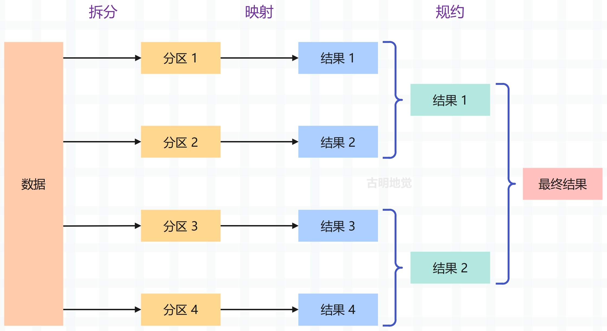
像 Hadoop 和 Spark 这样的系统是为真正的大型数据集在计算机集群中执行 MapReduce 操作而存在的，然而许多较小的工作负载可以通过 multiprocessing 在单台计算机上完成。为了充分理解 MapReduce 是如何工作的，让我们来看一个具体的例子。假设文件的每一行都有文本数据，对于这个例子，假设有四行文本需要处理：
I know what I know
I know that I know
I don't know that much
They don't know much
我们想要计算每个不同的单词在这个数据集中出现的次数，这个示例非常小，可以用一个简单的 for 循环来解决它，但此处使用 MapReduce 模型来处理它。
首先需要将这个数据集分割成更小的块，为简单起见，我们将一行文本定义为一个块。接下来需要定义映射操作，因为我们想要计算单词频率，所以使用空格对文本行进行分隔，这将得到由单词组成的数组。然后对其进行循环，跟踪字典文本行中每个不同的单词。最后需要定义一个 reduce 操作，这将从 map 操作中获取一个或多个结果，并将它们组合成一个答案。
from typing import Dict
from functools import reduce
def map_frequency(text: str) -> Dict[str, int]:
"""
计算每一行文本中的单词的频率
"""
words = text.split(" ")
frequencies = {}
for word in words:
if word in frequencies:
frequencies[word] += 1
else:
frequencies[word] = 1
return frequencies
def merge_dict(first: Dict[str, int],
second: Dict[str, int]) -> Dict[str, int]:
"""
对两行文本统计出的词频进行合并
"""
keys = first.keys() | second.keys()
return {key: first.get(key, 0) + second.get(key, 0) for key in keys}
lines = ["I know what I know", "I know that I know",
"I don't know that much", "They don't know much"]
mapped_results = [map_frequency(line) for line in lines]
print(reduce(merge_dict, mapped_results))
"""
{'that': 2, 'know': 6, 'what': 1, 'much': 2, 'They': 1, "don't": 2, 'I': 5}
"""
现在我们已经了解了 MapReduce 的基础知识，并学习了一个示例，下面将其应用到实际的数据集。
Google Books Ngram 是一个足够大的数据集，为了理解这个数据集是什么，我们首先解释一下什么是 n-gram。n-gam 是来自自然语言处理的概念，它可以将文本中的连续 N 个单词或字符作为一个单元来进行处理。比如短语 "the fast dog" 就有 6 个 n-gram，怎么计算的呢？
- 三个 1-gram，分别是：the、fast 和 dog
- 两个 2-gram，分别是：the fast 和 fast dog
- 一个 3-gram，即：the fast dog
Google Books Ngram 数据集是对超过 8000000 本书的 n-gram 扫描，可追溯到 1500 年，占所有已出版书籍的 6% 以上。它计算不同 n-gram 在文本中出现的次数，并按出现的年份分组。该数据集以制表符，对 1-gram 到 5-gram 的所有内容进行了分隔，每一行都有一个 n-gram，它出现的年份、出现的次数以及出现在多少本书中。让我们看一下数据集中的前几个条目中关于单词 aardvark 的情况：
aardvark 1822 2 1
aardvark 1824 3 1
aardvark 1827 10 7
这意味着在 1822 年，aardvark 单词在 1 本书中出现了 2 次，然后 1827 年，aardvark 单词在 7 本不同的书中出现了 10 次。
该数据集大小约为 1.8 GB，里面有大量的单词，现在我们要解决一个问题：自 1500 年以来，aardvark 单词在文学作品中出现了多少次？
使用的相关文件可以从这个地址下载。
由于文件比较大，因此为了让处理速度更快，需要将文件进行切分，然后对每个分区并行处理。但有一个问题：分区应该设置为多大？
对此没有一个简单的答案，一个经验法则是 Goldilocks 方法，即分区不宜过大或过小。分区大小不应该很小的原因是，当创建分区时，它们会被序列化并发送到 worker 进程，然后 worker 进程将它们解开。序列化和反序列化这些数据的过程可能会占用大量时间，如果我们经常这样做，就会抵消并行所带来的性能提升。因为数据量是固定的，那么当分区大小过小时，分区数量就会过大，这样就会产生大量的序列化和反序列化操作。
这个和 HDFS 存储文件是一个道理，HDFS 存储文件的时候，如果块过小，那么 NameNode 的寻址时间甚至可能会超过文件的处理时间。
当然我们也不希望分区太大，否则可能无法充分利用机器的算力。例如有 16 个 CPU 内核，但分区太大导致只创建了两个分区，那么就浪费了可以并行运行工作负载的 14 个内核。对于当前的数据集来说，总共 86618505 行，而我的机器有 24 个核心，所以我就把 chunk_size 定位 4000000，然后来编写代码测试一下。
import time
from typing import Dict, List
from functools import reduce
from concurrent.futures import ProcessPoolExecutor
import asyncio
def partition(data: List, chunk_size: int) -> List:
"""
将一个大型列表，以 chunk_size 为单位，分割成若干个小列表（chunk）
"""
for i in range(0, len(data), chunk_size):
yield data[i: i + chunk_size]
def map_frequencies(chunk: List[str]) -> Dict[str, int]:
"""
计算一个 chunk 中，单词的频率
"""
frequencies = {}
# chunk 的每一行都是如下格式：单词\t年份\t出现次数\t出现在多少本书中
for line in chunk:
word, _, count, _ = line.split("\t")
if word in frequencies:
frequencies[word] += int(count)
else:
frequencies[word] = int(count)
return frequencies
def merge_dict(first: Dict[str, int],
second: Dict[str, int]) -> Dict[str, int]:
keys = first.keys() | second.keys()
return {key: first.get(key, 0) + second.get(key, 0) for key in keys}
async def main(chunk_size):
with open(r"googlebooks-eng-all-1gram-20120701-a", encoding="utf-8") as f:
contents = f.readlines()
loop = asyncio.get_running_loop()
tasks = []
start = time.perf_counter()
with ProcessPoolExecutor() as pool:
for chunk in partition(contents, chunk_size):
tasks.append(
loop.run_in_executor(pool, map_frequencies, chunk)
)
middle_results = await asyncio.gather(*tasks)
final_results = reduce(merge_dict, middle_results)
print(f"Aardvark 总共出现了 {final_results['Aardvark']} 次")
end = time.perf_counter()
print(f"MapReduce 总耗时: {end - start}")
if __name__ == '__main__':
asyncio.run(main(4000000))
"""
Aardvark 总共出现了 15209 次
MapReduce 总耗时: 27.760561799999778
"""
在主协程中，我们创建一个进程池，并对数据进行分区。对于每个分区，我们在单独的进程中启动 map_frequencies 函数，然后使用 asyncio.gather 等待所有中间字典完成。一旦所有 map 操作完成，将运行 reduce 操作来生成最终结果。
小结
以上我们就了解了如何在 asyncio 中引入多进程，先创建一个进程池执行器，然后通过事件循环的 run_in_executor 将任务丢到进程池当中。
另外关于并行计算，这里再推荐一个第三方库 joblib，使用起来非常方便，sklearn 内部也使用了 joblib。
欢迎大家关注我的公众号：古明地觉的编程教室。
如果觉得文章对你有所帮助，也可以请作者吃个馒头，Thanks♪(･ω･)ﾉ。
楔子
作为开发者，我们会经历很多工具、框架和语言，但无论这些东西怎么变，底层逻辑都是不变的。所以今天我们就回头重新思考编程中那些耳熟能详却又似懂非懂的基础概念，搞清楚底层逻辑。而代码中最基本的概念是变量和值，而存放它们的地方是内存，所以我们就从内存开始。
说到内存，很多人其实并没有搞懂什么时候数据应该放在栈上，什么时候应该放在堆上，直到工作中实际出现问题了，才意识到数据的存放方式居然会严重影响并发安全。那么下面就以 C 语言的可执行文件为例，来探讨一下内存模型，以及变量的值究竟是放在栈上还是放在堆上。
可执行文件的内存模型
首先 C 源文件被编译成可执行程序总共需要四步，假设源文件叫 main.c：
- 1）预处理：gcc -E main.c -o main.i，根据 C 源文件得到预处理之后的文件。这一步只是对 main.c 进行了预处理，比如宏定义展开、头文件展开、条件编译等等，同时将代码中的注释删除，注意：这一步并不会检查语法；
- 2）编译：gcc -S main.i -o main.s，将预处理后的文件进行编译、生成汇编文件，这一步会进行语法检测、变量的内存分配等等；
- 3）汇编：gcc -c main.s -o main.o，根据汇编文件生成目标文件；
- 4）链接：gcc main.o -o main.exe，程序是需要依赖各种库的，可以是静态库也可以是动态库，因此需要将目标文件和其引用的库链接在一起，最终才能构成可执行的二进制文件；
所以从 C 源文件到可执行文件会经历以上几步，不过我们一般都会将这几步组合起来，整体称之为编译。比如我们常说，将某个源文件编译成可执行程序。
而对于一个可执行程序而言，还没有运行之前，也就是程序还没有加载到内存之前，可执行程序内部就已经分好了三个区域，分别是：代码区（text）、初始化数据区（data）、未初始化数据区（bss）。

代码区（text）：负责存放 CPU 执行的机器指令。通常代码区是可共享的（即另外的执行程序可以调用它），可共享的目的是对于频繁被执行的程序，只需要在内存中存储一份代码区的内容即可。并且代码区通常是只读的，只读的原因是既然可以被其它程序读取，那么就还要保证它不会被其它程序篡改。此外，代码区还负责存放常量，常量在程序运行期间也不能修改，例如字符串常量 "hello world"、数组的名字等。
初始化数据区（data）：该区域包含了在程序中明确被初始化的全局变量，以及被初始化的静态变量（包括全局静态变量和局部静态变量）。
未初始化数据区（bss）：该区域存储的是未初始化的全局变量和未初始化的静态变量，而未初始化数据区的数据在程序开始执行前会被内核初始化为 0 或 nil。
初始化数据区和未初始化数据区统称为静态区或全局区，而静态区的内存和整个程序具有相同的生命周期，也就是说，静态区的内存会等到程序全部结束之后才释放。
以上这几个区域是固定的，程序还没运行的时候就已经划分好了。但是当运行可执行程序的时候，系统会把程序加载到内存中，然后除了上面说的几个区域之外，还会额外增加两个区域：堆区、栈区。
堆区（heap）：堆是一个大容器，主要用于动态内存分配，它的容量要远大于栈，但没有栈那样先进后出的顺序。根据语言的不同，如果是 C 、C艹 等语言，堆区内存由程序猿手动释放，如果程序猿不释放，那么程序结束时会由操作系统回收。但是这并不代表使用 C、C++ 编程就可以不管堆区内存了，如果你的程序占用内存过大并且不及时释放的话，很有可能造成内存溢出。而像 Go、Python、Java 等语言都带有垃圾回收机制，你尽管使用，内存管理交给对应的编译器或解释器来做即可。虽然垃圾回收机制会占用额外的资源，但也将程序猿从内存管理的繁忙工作中解放了出来。
栈区（stack）：栈是一种先入后出的数据结构（非常高效），由操作系统自动分配释放，存放函数的参数值、返回值、局部变量等等。在程序运行过程中实时加载和释放，因此局部变量的生命周期为相应的栈空间从申请到释放的这段时间。
text、data、bss 解析
光用文字解释的话还不够直观，下面我们就来举几个栗子，分析一下这几个区。
代码区（text）
首先是代码区：
#include <stdio.h>
void main() {
// 定义一个 char * 指针，存放字符串常量 "hello cruel world" 的首地址
// 注意：此时的字符串是存在 "代码区" 当中的，因为它是一个字符串常量
char *s = "hello cruel world";
printf("%p, %s\n", s, s);
// 同样，在代码区创建一个新的字符串，然后让 s 指向新字符串的首元素
s = "hello beautiful world";
printf("%p, %s\n", s, s);
}
编译执行一下：
打印的结果是没有问题的，而且编译之后这些字符串就是可执行文件的一部分了，在执行的时候直接拿来用即可，没有动态申请这一步。我们可以看一下它内部区域的大小信息：

我们看到结果显示了代码区（text）、初始化数据区（data）、未初始化数据区（bss）的大小信息，说明这些区域在生成可执行文件的时候就已经确定好了。
#include <stdio.h>
void main() {
char *s = "hello cruel world...";
printf("%p, %s\n", s, s);
s = "hello beautiful world...";
printf("%p, %s\n", s, s);
}
修改源文件，给每个常量字符串各自增加三个字符，然后重新生成可执行文件并查看大小信息。
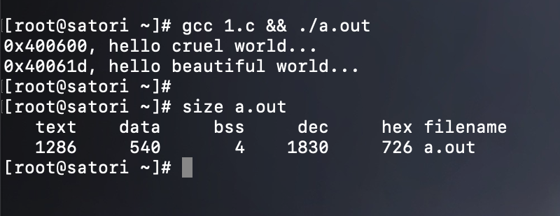
可以看到代码区（text）的大小变成了 1286，因为两个常量字符串加起来相比之前多了 6 个字符，所以这完全符合我们的预期。
然后再看一下地址，之前第一个常量字符串的地址是 0x400600，现在也是，说明分配的地址是相同的。但是之前第二个常量字符串的地址是 0x40061a，现在变成了 0x40061d，如果将两者转成 10 进制相减的话，结果相差 3。相信原因很好想，因为相比之前，第一个常量字符串多了 3 字节，那么第二个常量字符串的地址相比之前自然就要往后移 3 个字节，这一切都是符合预期的。
因为我们只修改了字符串常量，所以只会影响 text，而 data 和 bss 则不受影响，整体还是很好理解的。然后我们还说代码区中的常量是不能修改的，因为在编译之后它们就已经是可执行文件的一部分了，然后在读取的时候只需一条指令即可，效率非常高。并且和静态区（data、bss）一样，这些常量也和执行时的可执行文件具有相同的生命周期。
#include <stdio.h>
void main() {
char *s = "hello cruel world";
s[0] = 'H';
printf("%p, %s\n", s, s);
}
我们尝试修改常量字符串的第一个元素，将其改为 'H'，看看会有什么后果。
直接段错误了，因为常量不允许修改。另外根据 size 命令可以得出常量是存在代码区当中的，不过有时我们更喜欢将存放常量的区域单独称为常量区。但很明显，常量区也是代码区的一部分。
但如果我们就是想修改字符串该怎么办呢？答案是如果想修改，就不要将其放在常量区（代码区），而是将其放在栈区。
#include <stdio.h>
void main() {
// 这里将 char *s 改成了 char s[]，那么这两者有什么区别呢？
// char *s = "abc" 相当于声明了一个字符串常量 "abc"，它是放在常量区当中的，然后让指针 s 指向这个常量
// char s[] = "abc" 等价于 char s[] = {'a', 'b', 'c', '\0'}，此时的 "abc" 是放在栈区的，因为 s 是一个局部数组
// 所以要注意声明数组和声明指针的区别
char s[] = "hello cruel world";
printf("%p, %s\n", s, s);
// 将 s[0] 进行修改
s[0] = 'H';
printf("%p, %s\n", s, s);
}
再来测试一下：

显然数组声明完之后，地址是固定的，同时内部元素是可修改的，因此我们成功将首字母 'h' 改成了 'H'。此外 char *s 和 char s[] 还有一个显著的区别，就是当作为返回值的时候。
#include <stdio.h>
char *test1() {
char *s = "hello cruel world";
return s;
}
char *test2() {
char s[] = "hello cruel world";
return s;
}
void main() {
printf("%s\n", test1());
printf("%s\n", test2());
}
对于 test1 而言，代码是没有任何问题的，但是 test2 就不行了。原因是 test2 里面的字符串是存放在栈区的，函数结束之后就被销毁了，所以我们直接返回一个局部数组是不行的；而 test1 里面的字符串存放在常量区当中，在整个可执行文件执行结束之前都可以使用，所以返回它的指针没有任何问题。

打印结果告诉我们不应该返回局部变量的地址，那么如何解决呢？很简单，将数组变成静态数组即可。
初始化数据区（data）
初始化数据区（data）负责存储已初始化的全局变量和静态变量，它也是和可执行文件具有相同的生命周期，在程序执行结束之前我们都可以使用它。
#include <stdio.h>
char *test1() {
char *s = "hello cruel world";
return s;
}
char *test2() {
// 此时的 s 就是一个静态数组，里面的元素会放在初始化数据区当中，而不会放在栈区
static char s[] = "hello cruel world";
return s;
}
void main() {
printf("%s\n", test1());
printf("%s\n", test2());
}
此时再来执行，看看有没有问题：

正常输出，没有任何警告⚠️。除了静态局部变量，还有静态全局变量、全局变量，它们都是放在初始化数据区当中的。
#include <stdio.h>
static int a = 123; // 静态全局变量
int b = 234; // 全局变量
int *test() {
// 静态局部变量
static int c = 345;
c++;
// 返回静态局部变量的地址没有任何问题，因为函数结束之后不会被销毁
return &c;
}
void main() {
printf("%d %d\n", a, b);
for (int i=0; i < 5; i++) {
int *p = test();
printf("%p %d\n", p, *p);
}
}

注意：静态变量只会初始化一次，所以我们调用了 5 次 test，但是变量 c 只会初始化一次，因为它是静态的。
那么问题来了，如果我们想要获取一个局部变量的地址，那么除了将变量声明为静态变量之外，还有没有其它的方法呢？因为静态变量会伴随着程序一直存在，但有时我们希望用完之后就将它回收掉，避免内存占用，这个时候就可以在堆区为变量申请内存。
因为栈上的内存会随着函数的调用完毕而被释放，但堆则不会，它需要程序猿手动释放，我们以 Go 为例：
package main
import "fmt"
func test() *int {
var a int = 123
return &a
}
func main() {
var a *int = test()
fmt.Println("*a =", *a) // *a = 123
}
类似的逻辑如果放在 C 里面显然是有问题的，因为在 test 里面返回了局部变量的地址，但在 Go 里面为什么是正常的呢？原因就是 Go 编译器会进行逃逸分析，如果返回了变量的地址，就意味着该变量对应的值要被外界访问，那么 Go 编译器会在堆区为该变量分配内存。但是在 C 里面，我们需要手动实现这一点。
#include <stdio.h>
#include <stdlib.h>
int *test() {
// 在堆区分配 int 大小的内存，然后返回它的指针
int *a = (int *)malloc(sizeof(int));
*a = 123;
return a;
}
void main() {
int *a = test();
printf("%d\n", *a);
// 用完之后释放掉，否则可能造成内存泄漏
if (a != NULL)
free(a);
}

此时也是可以正常运行的，因此当返回一个局部变量的地址的时候，除了将其声明为静态变量之外，还可以通过 malloc 在堆区为其分配内存。只不过和栈不同，堆区的内存不会自动回收，需要我们调用 free 手动回收。但在 Go 里面貌似没有进行 free 之类的操作，原因是 Go 是一门带有 GC 的语言，它会自动进行垃圾回收，找出堆上不被使用的内存，然后将其释放掉。
因此虽然 Go 也是静态编译型语言，但因为带有 GC，导致它的性能不如 C/C++/Rust 这类语言。但 Go 语法简单、天生擅长并发编程，仍然是值得学习的。
这里我们就得出了一个结论：如果一个局部变量的地址要返回给外界，那么它的值要申请在堆上。
未初始化数据区（bss）
最后是未初始化数据区 bss，它负责存储未初始化全局变量、未初始化静态变量。
#include <stdio.h>
static int a;
static int b = 123;
void main() {
static int c;
static int d = 345;
printf("%d %d %d %d\n", a, b, c, d);
}

变量 a、c 存储在 bss 中，变量 b、d 存储在 data 中，并且 bss 中的变量会被初始化为 0 或 nil。
观察可执行文件，发现 data 的大小为 548、bss 的大小为 12。然后我们修改代码，将变量 b、d 的值给删掉，也就是只声明、不赋初始值，那么此时 a、b、c、d 就都会存在 bss 中。而一个 int 占 4 字节，那么将变量 b、d 修改之后重新编译，新生成的可执行文件的 data 区的大小相比之前就会少 8 个字节，bss 区的大小会多 8 个字节，我们看看是不是这样。
和我们分析的是一样的。
以上就是可执行文件中，代码区（text）、初始化数据区（data）、未初始化数据区（bss）的区别与作用，但显然还没有完。因为我们的重头戏还没有说（也不知道是谁的头这么重哈），就是栈区和堆区。
栈区
栈是程序运行的基础，每当一个函数被调用时，一块连续的内存就会在栈顶被分配出来，供函数执行使用，这块内存被称为栈帧（stack frame），或者简称为帧。我们以一个简单的函数调用为例：
#include <stdio.h>
int hello() {
return world();
}
int world() {
return 666;
}
void main() {
printf("%d\n", hello()); // 666
}
这段程序非常简单，但是这背后的函数调用栈是怎么一回事呢？我们来解释一下。
首先栈是自顶向下增长的，也就是从栈顶到栈底的地址是逐渐增大的，一个程序的调用栈的最底部，除去入口对应的栈帧之外，就是 main 函数对应的栈帧。而随着函数一层层调用，栈帧也会一层层地被创建，比如 main 函数里面调用了 hello 函数，那么就会在 main 函数对应的栈帧之上为 hello 函数创建栈帧（并保存当前 main 函数执行的上下文），然后将执行的控制权交给 hello 函数的栈帧。
然后在 hello 函数内部又调用了 world 函数，那么就又会在 hello 函数的栈帧之上为 world 函数创建栈帧（并保存当前 hello 函数执行的上下文），然后将执行的控制权交给 world 函数对应的栈帧。而调用结束之后，栈帧又会一层层地被销毁，并释放对应的内存。比如 world 函数调用完毕之后，就会将 world 函数对应的栈帧销毁，然后回到上一个调用者（hello 函数）对应的栈帧中，恢复其之前执行的上下文，并赋予执行的控制权。
所以整个过程就像递归一样，一层层创建，一层层返回，但如果栈帧创建的过多，那么有可能会造成栈溢出。因为调用栈的大小是有阈值的，一旦当前程序的调用栈超出了系统允许的最大栈空间，就会无法创建新的帧来运行下一个要执行的函数，从而发生栈溢出，这时程序会被系统终止，产生崩溃信息。比如递归函数没有妥善终止，那么一个递归函数会不断调用自己，而每次调用都会形成一个新的帧，最终导致栈溢出。
而在调用的过程中，一个新的帧会分配足够的空间来存储寄存器的上下文。在函数里使用到的通用寄存器会在栈上保存一个副本，当这个函数调用结束，通过副本，可以恢复出原本的寄存器的上下文，就像什么都没有经历一样。此外，函数所需要使用到的局部变量，也都会在帧分配的时候被预留出来。
那么问题来了，当一个函数运行时，怎么确定究竟需要多大的帧呢？
这要归功于编译器，在编译并优化代码的时候，一个函数就是一个最小的编译单元。在这个函数里，编译器得知道要用到哪些寄存器、栈上要放哪些局部变量，而这些都要在编译时确定。所以编译器就需要明确每个局部变量的大小，以便预留空间。
这里我们就又得出了一个结论：在编译时，如果局部变量的大小不确定、或者大小可以改变，那么它的值就无法安全地放在栈上，应该要放在堆上。也就是在堆上为变量分配内存，并且还要在栈上分配一个指针，引用堆上的内存。
数据放在栈上的问题
首先栈上的数据在传递时永远都是拷贝一份，但栈上的内存分配是非常高效的，和堆是天壤之别。只需要改动栈指针（stack pointer），就可以预留相应的空间；把栈指针改动回来，预留的空间又会被释放掉。空间的申请和释放只是动动寄存器，不涉及额外计算、不涉及系统调用，因而效率很高。并且栈还是由操作系统自动维护的，根本不需要我们关心。
而在 Go 里面，很多朋友喜欢返回指针，即使数据不需要被共享。这么做的原因是认为拷贝指针比拷贝值更有效率，因为指针的大小相对较小一些。但事实真的如此吗？答案是不一定，因为如果拷贝值的话，那么复制是在栈上完成的，而我们说栈的效率极高。要是返回指针的话，那么当发生内存逃逸时，就会将变量的值从栈上分配改为堆上分配，这个过程反而会消耗更多的资源。
所以理论上说，我们应该把变量的值分配到栈上，这样可以达到更好的运行速度。但是实际工作中，我们却又避免这么做，这又是为什么呢？原因就是栈空间是有限的，分配过大的栈内存容易导致栈溢出。
所以我们又得到了一个结论：当变量的值占用内存过大时，那么优先在堆上分配。
因此变量的值究竟分配在栈上还是分配在堆上，结论如下：
- 1）如果一个函数返回了局部变量的指针，那么要在堆上为其分配内存；
- 2）如果在编译时，局部变量的大小不确定、或者大小可以改变，那么它的值就无法安全地放在栈上，所以此时也要在堆上为其分配内存；
- 3）如果变量的值过大，那么优先在堆上为其分配内存；
堆区
栈的效率虽然很高，不用我们维护，但它的局限性也显而易见，就是要求变量的大小必须明确、固定。而当我们需要动态大小的内存时，只能使用堆，比如要实现可变长度的数组，那么必须分配在堆上，否则无法扩容。而堆上分配内存时，一般都会预留一些空间，这是最佳实践。
在堆上分配内存除了可以让大小动态化，还可以让生命周期动态化。我们说过，函数调用结束之后，对应的栈帧会被回收，同时相关变量对应的内存也会被回收。所以栈上内存的生命周期是不受开发者控制的，并且局限在当前调用栈。而堆则不同，堆上分配出来的每一块内存都需要显式地释放，这就使得堆内存有更加灵活的生命周期，可以在不同的调用栈之间共享数据。因为数据只要我们不回收，那么就始终驻留在堆上，并且何时回收也是由我们来决定的。
因此当内存动态可变的时候，会在堆上分配。当然啦，堆内存是负责存储具体数据的，然后还要在栈上分配一个指针，它引用堆区的内存。我们以 Rust 的 String 为例：
fn main() {
let s1 = String::from("hello");
let s2 = s1;
}
此时 s1 的内存布局如下：
String 实际上由 3 部分组成：指向字符串的指针（ptr）、长度（len）、容量（capacity），这部分的数据存储在了栈中，即图中的左半部分。然后 ptr 指向了字符串存储在堆上的文本内容，也就是图中的右半部分。
但下面又把 s1 赋值给了 s2，于是会把 s1 拷贝一份给 s2，因为 s1 和 s2 都是栈上的数据，所以会直接拷贝一份。因为栈上的数据拷贝的效率非常高，和堆根本不在一个层次，并且也不需要我们来维护。只不过大小固定，不能动态变化，毕竟速度摆在那里。
但需要注意的是，这里的拷贝仅仅是针对栈上的数据，字符串里面的 ptr 指向的存储在堆区的文本并没有拷贝。
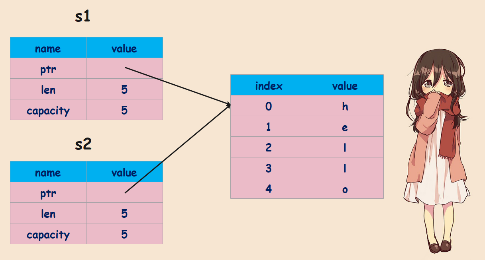
这么做完全可以理解，因为在堆上拷贝数据的效率远不如栈，所以不能像栈那样直接将数据拷贝一份。而且存在堆上的数据也可能会比较大，这样的话拷贝就更加消耗资源了。对于任何一门语言来说，默认情况下，堆区的数据都不会自动拷贝。如果非要拷贝，只能手动拷贝。
但是这里就产生了一个问题，上面的 s1 和 s2 都引用了同一份堆内存，那这份堆内存要何时回收呢？
对于 Python 而言，申请在堆上的内存都有一个引用计数，每当有一个指针引用它，引用计数就会加 1。当引用计数为 0 时，堆内存就会被回收。
而对于 Rust 而言则不是这样，首先 Rust 是一个没有 GC 的语言，并且还能保证内存安全，那么对于当前这个例子它是怎么做的呢？很简单，Rust 内部提出了一个所有权的概念，在这里你可以把所有权简单理解为操作堆内存的权限。一开始 s1 是持有所有权的，但是在 s1 赋值给 s2 之后，所有权就发生了转移。也就是说 s1 不再具有操作堆内存的权利，所有权被转移到了 s2 上面，如果使用 s1 就会报错。
所以 Rust 是保证每块堆内存同时只能被一个变量所持有，因此堆内存是否释放，就看持有所有权的变量是否还存活。
数据放在堆上的问题
堆是非常灵活的，然而堆内存的这种灵活性也给内存管理带来了很多挑战。如果手动管理堆内存的话，那么堆内存分配后忘记释放，就会造成内存泄漏。一旦有内存泄漏，程序运行得越久，就越吃内存，最终会因为占满内存而被操作系统终止运行。
如果堆上内存被多个线程的调用栈引用，那么该内存的改动就要特别小心，需要加锁以独占访问，来避免潜在的问题。比如一个线程在访问某一个指针，但另一个线程将该指针指向的内存释放了，此时就可能出现访问悬空指针的情况，轻则程序崩溃，重则隐含安全隐患。根据微软安全反应中心（MSRC）的研究，这是第二大内存安全问题。
除此之外还有堆越界（heap out of bounds），比如程序在堆区申请的内存只能容纳 5 个 int，但是我们尝试操作第 6 个 int，此时就会引发堆越界，而堆越界是第一大内存安全问题。
垃圾回收机制是如何解决的？
很多语言带有垃圾回收机制，它们是如何解决堆内存回收的问题呢？
垃圾回收针对的是堆内存，因为栈内存由操作系统维护，不需要我们关心。
首先无论何种垃圾回收机制，一般都分为两个阶段：垃圾检测和垃圾回收。
垃圾检测是从已经分配的堆内存中区别出可回收和不可回收的内存，而垃圾回收则是使操作系统重新掌握垃圾检测阶段所标识出来的可回收内存块。所以垃圾回收，并不是说直接把这块内存的数据清空了，而是将使用权重新交给了操作系统，不会自己霸占了。
那么，常见的垃圾回收算法都有哪些呢？
- 引用计数法（reference count）：记录对象的被引用次数，引用计数降为 0 时回收；
- 标记-清除法（mark-sweep）：从根集合触发，遍历所有能访问到的对象并对其进行标记，然后将未被标记的对象清除；
- 停止-复制法（stop-copy）：将内存划分为大小相同的内存块，一块用完后启用另一块、并将存活的对象拷贝过去，原来那块则整体被回收；
- 分代回收法（generational-collection）：根据对象的存活时间将对象分为若干代，并按照不同代的特征采用最合适的回收策略；
以 Java 为首的一系列编程语言，采用了标记-清除法。这种方式通过定期标记（mark）找出不再被引用的对象，然后将其清除（sweep）掉，因此该方法也被称为追踪式垃圾回收（Tracing GC）。而 Objective-C 和 Swift 则走了另一条路，也就是引用计数（reference count）法。在编译时，它为每个函数插入 retain/release 语句来自动维护堆上对象的引用计数，当引用计数为零的时候，就通过 release 语句释放对象。
从效率上来讲，标记清除在内存分配和释放上无需额外操作，而引用计数法则添加了额外的代码来处理引用计数，所以标记-清除法的效率更高，吞吐量（throughout）更大。
但标记-清除法释放内存的时机是不确定的，并且是定期批量操作，因此在释放内存时会引发 STW（Stop The World），从而导致某些时刻延迟（latency）较高。我们使用 Android 手机偶尔感觉卡顿，就是这个原因，出现卡顿说明此时内部正在进行垃圾回收。但引用计数法是当对象的引用计数为 0 时就立即回收，所以相当于将垃圾回收的开销分摊在了整个运行时，因此使用 IOS 手机时始终会感觉很丝滑，不会出现卡顿。
所以尽管标记清除法在分配和释放内存的效率和吞吐量上比引用计数法要高，但因为偶尔的高延迟，导致被感知的性能较差。
栈与堆总结
我们上面已经介绍了栈和堆，这里再总结一下。
栈和堆都是代码在运行时可以使用的内存空间，不过它们通常以不同的结构组织而成。栈会以我们放入值时的顺序来存储它们，并以相反的顺序将值取出，这也就是所谓的后进先出（Last In First Out，LIFO）策略。
你可以把栈上的操作想象成放盘子：当你需要放置盘子时，你只能将它们放置在最上面，而当你需要取出盘子时，你也只能从最上面取出。换句话说，你没有办法从中间或底部插入、移除盘子。用术语来讲，添加数据这一操作被称作入栈，移除数据则被称作出栈。所有存储在栈中的数据都必须拥有一个已知且固定的大小，对于那些在编译期无法确定大小的数据，只能将它们存储在堆中（在栈上是不安全的）。
而堆空间的管理较为松散：当你希望将数据放入堆中时，你可以请求特定大小的空间。操作系统会根据你的请求在堆中找到一块足够大的可用空间，将它标记为已使用，并把指向这片空间的指针返回。这一过程就是所谓的堆分配，它也常常被简称为分配，至于将值压入栈中则不叫分配。由于指针的大小是固定的，且可以在编译期确定（64 位系统固定 8 字节），所以会将指针存储在栈中，也就是栈区的指针指向堆区的数据。
可以想象一下到餐厅聚餐，当你到达餐厅表明自己需要的座位数后，服务员会找到一张足够大的空桌子，并将你们领过去入座。即便这时有小伙伴来迟了，他们也可以通过询问你们就座的位置来找到你们。
向栈上压入数据要远比在堆上进行分配更有效率，因为如果是堆的话，操作系统还要搜索新数据的存储位置，需要额外开销；但栈不用，对于栈而言这个位置永远处于栈的顶端。除此之外，操作系统在堆上分配空间时还必须要先找到足够大的空间，并进行某些记录，来协调随后的其余分配操作。
访问数据也是同理，由于指针存在栈上，数据存在堆上，所以要通过指针存储的地址来访问数据。而这会多一步指针跳转的环节，因此访问堆上的数据要慢于访问栈上的数据。一般来说，现代处理器在进行计算的过程中，由于缓存的缘故，指令在内存中跳转的次数越多，性能就越差。
继续使用上面的餐厅来作类比，假设现在同时有许多桌的顾客正在等待服务员的处理，那么最高效的处理方式自然是报完一张桌子所有的订单之后再接着服务下一张桌子的顾客。而一旦服务员每次在单个桌子前只处理单个订单，那么他就不得不浪费较多的时间往返于不同的桌子之间。出于同样的原因，处理器操作排布紧密的数据（比如在栈上）要比操作排布稀疏的数据（比如在堆上）有效率得多。另外，分配命令本身也可能消耗不少的时钟周期。
所以 Python 为什么这么慢，就是因为它所有的对象都分配在堆上，即使是栈帧，也是分配在堆上的，虽然名字里面带了一个栈字。这也是 Python 效率低下的原因之一，至于另一个原因则是无法在编译期间确定类型，因为 Python 的变量只是一个指针，执行任何操作，都需要先通过 ob_type 判断指向的对象的类型是什么。
为此，Python 不得不大量使用缓存技术，在对象被销毁时不释放内存，而是缓存起来留着下次备用。但即便如此，依旧架不住效率低。
小结
以上我们就分析了可执行文件的内存模型，以及栈和堆的特点。
对于存入栈上的值，它的大小不能变化、以及在编译期就需要确定。并且栈上存储的变量的生命周期局限在当前调用栈的作用域内，无法跨调用栈引用。
堆可以存入大小未知或者动态伸缩的数据类型，堆上数据的生命周期从分配后开始，一直到释放时才结束，因此堆上的变量允许在多个调用栈之间引用。但也导致堆变量的管理非常复杂，手动管理会引发很多内存安全问题，而自动管理，无论垃圾回收算法采用的是哪一种，都有性能损耗和其它问题。
所以才有了 Rust。
一句话总结就是：栈上存放的数据是静态的，固定大小，固定生命周期；堆上存放的数据是动态的，不固定大小，不固定生命周期。
思考题
1）如果有一个数据结构需要在多个线程中访问，可以把它放在栈上吗？为什么？
在多线程场景下，每个线程的生命周期是不固定的，无法在编译期得知谁先结束谁后结束，所以不能把属于线程 A 调用栈上的内存共享给线程 B，因为 A 可能先于 B 结束，因此这时应该使用堆内存。
但是有个例外，如果我们能保证结束的顺序是确定的，那么可以共享，比如 scoped thread。
2）可以使用指针引用栈上的某个变量吗？如果可以，是在什么情况下呢？
显然是可以的，比如在函数中创建一个局部变量，然后再用一个指针指向它。
int test() {
int a = 123;
int *p = &a; // 引用栈上的变量
return 0;
}
只要指针的生命周期小于等于引用源就行，但如果指针的生命周期大于引用源，那么就不行了。比如上面的代码不能将 p 返回，否则的话，函数结束后 a 会被销毁，但 p 还在，所以会出现悬空指针的情况，因为此时指针 p 的生命周期超过了引用源 a。
本文参考自：
- 极客时间，陈天《Rust 编程第一课》
- 《Rust 权威指南》
欢迎大家关注我的公众号：古明地觉的编程教室。
如果觉得文章对你有所帮助，也可以请作者吃个馒头，Thanks♪(･ω･)ﾉ。
楔子
内存管理，对于 Python 这样的动态语言来说是非常重要的一部分，它在很大程度上决定了 Python 的执行效率。因为 Python 在运行的过程中会创建和销毁大量的对象，这些都涉及内存的管理，因此精湛的内存管理技术是确保内存使用效率的关键。
内存管理架构
Python 的内存管理机制是分层次的，可以认为有 6 层：-2，-1，0，1，2，3。
Object-specific allocators
_____ ______ ______ ________
[ int ] [ dict ] [ list ] ... [ string ] Python core |
+3 | <----- Object-specific memory -----> | <-- Non-object memory --> |
_______________________________ | |
[ Python's object allocator ] | |
+2 | ####### Object memory ####### | <------ Internal buffers ------> |
______________________________________________________________ |
[ Python's raw memory allocator (PyMem_ API) ] |
+1 | <----- Python memory (under PyMem manager's control) ------> | |
__________________________________________________________________
[ Underlying general-purpose allocator (ex: C library malloc) ]
0 | <------ Virtual memory allocated for the python process -------> |
=========================================================================
_______________________________________________________________________
[ OS-specific Virtual Memory Manager (VMM) ]
-1 | <--- Kernel dynamic storage allocation & management (page-based) ---> |
__________________________________ __________________________________
[ ] [ ]
-2 | <-- Physical memory: ROM/RAM --> | | <-- Secondary storage (swap) --> |
每一层的作用如下：
- 第 3层：特定对象内存分配器，用于对象的缓存池，为对象的内存分配提供优化。
- 第 2 层：Python 对象分配器，通过实现内存池机制，提升小对象的分配效率。
- 第 1 层：Python 原始内存分配器，提供了 PyMem_Malloc / PyMem_RawMalloc 等 API，这些 API 封装了 C 的 malloc，用于申请内存。
- 第 0 层：通用内存分配器，即 C 的 malloc 函数，该函数则是封装了操作系统内存分配相关的系统调用。
- 第 -1 层：操作系统虚拟内存管理器（VMM），负责页面管理和动态存储分配，以及将虚拟内存映射到物理内存。
- 第 -2 层：物理内存层，管理 RAM / ROM 以及交换空间（swap）。
显然 -2 和 -1 层是由操作系统负责的，Python 无权干预。而第 0 层是由 C 负责，Python 同样无权干预。而第 1、2、3 层才是属于 Python 自己的内存管理，我们来详细解释一下。
第 1 层：基于第 0 层的"通用内存分配器"包装而成。
这一层并没有在第 0 层上加入太多的动作，其目的仅仅是为 Python 提供统一的 raw memory 管理接口。这么做的原因是，虽然不同的操作系统都提供了 ANSI C 标准定义的内存管理接口，但在某些特殊情况下，不同的操作系统有着不同的行为。
比如调用 malloc(0)，有的操作系统会返回 NULL，表示申请失败；有的操作系统会返回一个貌似正常的指针，但这个指针指向的内存并不是有效的。为了最广泛的可移植性，Python 必须保证相同的语义一定代表着相同的运行时行为，为了处理这些与平台相关的内存分配行为，Python 必须要在 C 的内存分配接口之上再提供一层包装。
在 Python 中，第一层的实现就是一组以 PyMem_* 为前缀的函数簇，下面来看一下。
// Include/pymem.h
PyAPI_FUNC(void *) PyMem_Malloc(size_t size);
PyAPI_FUNC(void *) PyMem_Realloc(void *ptr, size_t new_size);
PyAPI_FUNC(void) PyMem_Free(void *ptr);
#define PyMem_MALLOC(n) PyMem_Malloc(n)
#define PyMem_REALLOC(p, n) PyMem_Realloc(p, n)
#define PyMem_FREE(p) PyMem_Free(p)
// Objects/obmalloc.c
void *
PyMem_Malloc(size_t size)
{
if (size > (size_t)PY_SSIZE_T_MAX)
return NULL;
return _PyMem.malloc(_PyMem.ctx, size);
}
void *
PyMem_Calloc(size_t nelem, size_t elsize)
{
if (elsize != 0 && nelem > (size_t)PY_SSIZE_T_MAX / elsize)
return NULL;
return _PyMem.calloc(_PyMem.ctx, nelem, elsize);
}
void
PyMem_Free(void *ptr)
{
_PyMem.free(_PyMem.ctx, ptr);
}
我们看到在第一层，Python 提供了类似于 C 的 malloc、realloc、free 函数的语义。比如 PyMem_Malloc 负责分配内存，首先会检测申请的内存大小，如果超过了 PY_SSIZE_T_MAX 则直接返回 NULL，否则调用 _PyMem.malloc 申请内存。这个 _PyMem.malloc 和 C 的库函数 malloc 几乎没啥区别，但是会对特殊值进行一些处理。
到目前为止，仅仅是分配了 raw memory 而已。当然在第一层，Python 还提供了基于类型的内存分配器。
// Include/pymem.h
#define PyMem_New(type, n) \
( ((size_t)(n) > PY_SSIZE_T_MAX / sizeof(type)) ? NULL : \
( (type *) PyMem_Malloc((n) * sizeof(type)) ) )
#define PyMem_NEW(type, n) \
( ((size_t)(n) > PY_SSIZE_T_MAX / sizeof(type)) ? NULL : \
( (type *) PyMem_MALLOC((n) * sizeof(type)) ) )
#define PyMem_Resize(p, type, n) \
( (p) = ((size_t)(n) > PY_SSIZE_T_MAX / sizeof(type)) ? NULL : \
(type *) PyMem_Realloc((p), (n) * sizeof(type)) )
#define PyMem_RESIZE(p, type, n) \
( (p) = ((size_t)(n) > PY_SSIZE_T_MAX / sizeof(type)) ? NULL : \
(type *) PyMem_REALLOC((p), (n) * sizeof(type)) )
很明显，在 PyMem_Malloc 中需要程序员自行提供申请的空间大小。然而在 PyMem_New 中，只需要提供类型和数量，Python 会自动侦测其所需的内存空间大小。
第 2 层：在第 1 层提供的通用 PyMem_* 接口的基础上，实现统一的对象内存分配（tp_alloc）。
第 1 层所提供的内存管理接口的功能是非常有限的，如果创建一个 PyLongObject 对象，还需要做很多额外的工作，比如设置对象的类型、初始化对象的引用计数等等。
因此为了简化自身的开发，Python 在第 1 层的基础上抽象出了第 2 层内存管理接口。在这一层，是一组以 PyObject_* 为前缀的函数簇，主要提供了创建对象的接口。这一套函数簇又被称为 Pymalloc 机制，因此在第 2 层的内存管理机制上，Python 对一些内置对象构建了更高抽象层次的内存管理策略。
第 3 层：为特定对象服务。
这一层主要是用于对象的缓存机制，比如：小整数对象池，浮点数缓存池等等。
那么问题来了，Python 的 GC 是隐藏在哪一层呢？不用想，肯定是第二层，也是在 Python 的内存管理中发挥巨大作用的一层，我们后面也会基于第二层进行剖析。
为什么要有内存池
在 Python 中，很多时候申请的内存都是小块的内存，这些小块的内存在申请后很快又被释放，并且这些内存的申请并不是为了创建对象，所以并没有对象一级的缓存机制。这就意味着 Python 在运行期间需要大量地执行底层的 malloc 和 free 操作，导致操作系统在用户态和内核态之间进行切换，这将严重影响效率。
所以为了提高执行效率，Python 引入了内存池机制，用于管理对小块内存的申请和释放，并且提供了 pymalloc_alloc，pymalloc_realloc，pymalloc_free 三个接口。可以认为 Python 会向操作系统预申请一部分内存，专门用于那些占用内存小的对象，这就是所谓的内存池机制。
另外要注意这里的内存池和前面介绍对象时提到的缓存池不同，缓存池可以理解为是数组或者链表，目的是在对象不用的时候缓存起来，需要的时候再拿来用。也就是说，对象自始至终都存在于内存当中。而内存池是用来申请和释放内存的，一申请，对象就横空出世了，一释放，对象就会归于湮灭。
而整个内存池也可以视为一个层次结构，从下至上分别是：block、pool、arena。当然内存池只是一个概念上的东西，表示 Python 对小块内存的分配和释放行为的内存管理机制。
block
在最底层，block 是一个确定大小的内存块。并且 block 有很多种，不同种类的 block 拥有不同的内存大小。为了在当前主流的 32 位平台和 64 位平台都能获得最佳性能，所有 block 的大小都是 8 字节对齐的。
// Objects/obmalloc.c
#define ALIGNMENT 8
那么问题来了，为什么会有这么多种类的 block 呢？答案是为了优化内存使用，避免内存碎片。
如果申请的内存小于等于 512 字节，会从内存池中分配一个相应规格的 block 给它。但如果申请的内存超过了 512 字节，那么会将申请内存的请求转交给第一层的内存管理机制，即 PyMem 函数簇来处理（进而调用 malloc）。所以从内存池中申请的内存大小是有上限的，只有不超过 512 字节的时候才会使用内存池，如果超过了这个值还是要经过操作系统临时申请的。
- 1 ~ 512：由专门的内存池负责分配；
- 512 以上：临时从系统堆上申请；
// Objects/obmalloc.c
#define SMALL_REQUEST_THRESHOLD 512
// SMALL_REQUEST_THRESHOLD 为 512，ALIGNMENT 为 8
// 所以 NB_SMALL_SIZE_CLASSES 等于 64
#define NB_SMALL_SIZE_CLASSES (SMALL_REQUEST_THRESHOLD / ALIGNMENT)
那么 block 有多少种呢？其实 NB_SMALL_SIZE_CLASSES 这个宏已经告诉我们了，总共 64 种。咦，当大小不超过 512 字节时，会从内存池中获取一个 block，那么 block 不应该有 512 种吗？很明显不是的，因为某个规格的 block 如果使用频率很低，用完一次之后就再也不用了怎么办？所以这会造成内存浪费。
因此 Python 的做法是以 8 字节为基准，将 block 划分为 64 种，即 8 字节 block、16 字节 block、24 字节 block，···、512 字节 block。
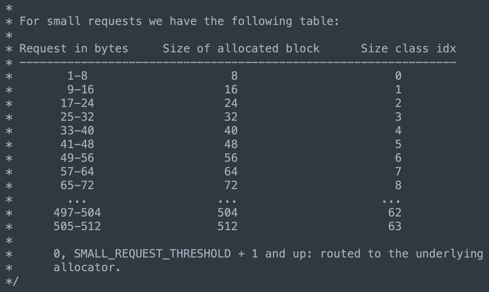
- 里面的 Size class idx 指的就是 block 的种类，总共 64 种，分别用 0 ~ 63 表示；
- 里面的 Size of allocated block 指的就是 block 对应的大小；
当然 Python 也提供了一个宏，来描述这两者的关系，事实上我们也能看出来。
// Objects/obmalloc.c
#define ALIGNMENT_SHIFT 3
#define INDEX2SIZE(I) (((uint)(I) + 1) << ALIGNMENT_SHIFT)
索引为 0 的话，就是 1 << 3，显然结果为 8。索引为 1 的话，就是 2 << 3，显然结果为 16，以此类推。因此当申请一个 44 字节的内存时，pymalloc_alloc 会从内存池中划分一个 48 字节的 block 给我们。
另外在 Python 底层，block 其实只是一个概念，源码中没有与之对应的实体存在。和对象不同，对象在源码中有对应的 PyObject，但这里的 block 仅仅是概念上的东西，我们知道它具有一定大小的内存，但它并不与 Python 源码里面的某个结构相对应。不过 Python 提供了一个管理 block 的东西，也就是下面要介绍的 pool。
pool
内存池由多个内存页组成，这里的 pool 便可理解为内存页，然后每个内存页又划分为多个具有相同规格的内存块（block）。因此一组 block 的集合就是一个 pool，换句话说，一个 pool 管理着一堆具有固定大小的内存块（block），而一个 pool 的大小通常为一个系统内存页，也就是 4kb。
// Objects/obmalloc.c
#define SYSTEM_PAGE_SIZE (4 * 1024)
#define SYSTEM_PAGE_SIZE_MASK (SYSTEM_PAGE_SIZE - 1)
#define POOL_SIZE SYSTEM_PAGE_SIZE /* must be 2^N */
#define POOL_SIZE_MASK SYSTEM_PAGE_SIZE_MASK
SYSTEM_PAGE_SIZE 指的是内存页大小，至于它下面的 MASK 负责将取模运算优化成按位与运算。然后 POOL_SIZE 和内存页大小相等，因此可以把 pool 理解成内存页。
虽然 Python 没有为 block 提供对应的结构，但是提供了和 pool 相关的结构，因为 Python 是将内存页看成由一个个内存块（block）组成的池子（pool），我们来看看 pool 的结构。
// Objects/obmalloc.c
struct pool_header {
// ref._padding 用于内存对齐，不用关注
// ref.count 表示当前 pool 里面已经分配出去的 block 的数量
union { block *_padding;
uint count; } ref;
// 指向第一个可用的 block
block *freeblock;
// 底层会有多个 pool，而多个 pool 之间也会形成一个链表
// 所以 nextpool 字段会指向下一个 pool
struct pool_header *nextpool;
// 指向上一个 pool
struct pool_header *prevpool;
// 该 pool 所属的 arena 在数组中的索引，关于什么是 arena，后面会说
uint arenaindex;
// 每个 pool 都维护了一组相同规格的 block
// 而 szindex 指的就是 block 的 Size class idx
// 如果 szindex 为 2，那么管理的每个 block 的大小就是 24
uint szidx;
// 下一个可用 block 的偏移量
uint nextoffset;
// 最后一个 block 的偏移量
uint maxnextoffset;
};
一个 pool 管理着一组相同规格的 block，也就是说，一个 pool 可以管理 8 字节的 block，可以管理 16 字节的 block 等等。但同一个 pool 不可能同时既管理 8 字节 block、又管理 16 字节 block，每个 pool 里面的 block 的内存大小一定是相同的。至于 pool 管理的 block 究竟是多大，则通过 szidx 字段体现。
然后是里面的 nextpool 和 prevpool，它们指向的 pool 和当前 pool 一定具有相同的 szindex。换句话说，如果一个 pool 管理的 block 是 24 字节，那么它的 nextpool 字段和 prevpool 字段指向的 pool 管理的 block 一定也是 24 字节。
前面说了，一个 pool 的大小是 4KB，但从当前的这个结构体来看，用鼻子想也知道吃不完 4KB 的内存，事实上这个结构体只占 48 字节。所以这个结构体叫做 struct pool_header，它仅仅是一个 pool 的头部，除去这个 pool_header，剩下的就是所有 block 占用的内存。
我们以 16 字节（szidx=1）的 block 为例，看看 Python 如何将一块 4KB 的内存改造成管理 16 字节 block 的 pool。
// Objects/obmalloc.c
typedef uint8_t block;
typedef struct pool_header *poolp;
#define POOL_OVERHEAD _Py_SIZE_ROUND_UP(sizeof(struct pool_header), ALIGNMENT)
// 当申请的内存不超过 512 字节，会从内存池中申请，此时由 pymalloc_alloc 负责
// 当申请的内存超过了 512 字节，会从系统堆上申请，此时由 PyMem_Malloc 负责
// 因为我们是要探究内存池，所以 pymalloc_alloc 函数是重中之重，它包含了全部细节
static void*
pymalloc_alloc(void *ctx, size_t nbytes)
{
block *bp; // 指向内存块
poolp pool; // 指向 struct pool_header
poolp next; // 指向 struct pool_header
uint size; // pool 的 szidx
// 这段代码不用关注，它的逻辑是如果编译时启用了 Valgrind 支持
// 并且程序运行在 Valgrind 下，那么禁用 Python 的内存池
#ifdef WITH_VALGRIND
if (UNLIKELY(running_on_valgrind == -1)) {
running_on_valgrind = RUNNING_ON_VALGRIND;
}
if (UNLIKELY(running_on_valgrind)) {
return NULL;
}
#endif
// 如果申请的内存大小为 0，那么申请失败
if (nbytes == 0) {
return NULL;
}
// 如果申请的内存大小超过了 512 字节，那么申请失败
if (nbytes > SMALL_REQUEST_THRESHOLD) {
return NULL;
}
// 根据申请的内存大小计算对应 block 的规格
size = (uint)(nbytes - 1) >> ALIGNMENT_SHIFT;
// usedpools 是一个长度为 64 的数组，负责管理 64 条双向链表，具体细节之后说
// 总之通过 usedpools[size + size] 拿到了相应的 pool
pool = usedpools[size + size];
// 如果 pool == pool->nextpool，说明没有可用 pool
// 那么要创建新的 pool，然后插入到链表中，并使用新的 pool 进行内存分配
// 如果 pool != pool->nextpool，说明当前的 pool 可用
// 至于背后的细节，等稍后介绍 usedpools 时再说
if (pool != pool->nextpool) {
// ...
// 到这里说明获取了一个可用 pool，显然它之前就已经申请好了
// 这部分逻辑后续再聊，我们要观察 pool 是如何创建的
}
// 到这里说明没有找到管理符合规格的 block 的可用 pool，那么要新创建一个
// 以下是 arena 相关的逻辑，这里先省略掉
// ...
// 正如 block 的上一级是 pool，而 pool 同样有自己的上级 arena
// 关于 arena，同样后续再说
init_pool: // 到这里 pool 指向了一块 4K 的内存，由 48 字节的 pool_header 加一堆 block 组成
next = usedpools[size + size]; /* == prev */
// 将新 pool 插入到双向链表
pool->nextpool = next;
pool->prevpool = next;
next->nextpool = pool;
next->prevpool = pool;
// 因为创建一个新的 pool，一定伴随着 block 的申请
// 所以第一个 block 一定会被使用，因此要将已使用的 block 数量设置为 1
pool->ref.count = 1;
// pool 之前存储的 block 的规格，和当前申请的 block 的规格恰好相等
if (pool->szidx == size) {
bp = pool->freeblock;
assert(bp != NULL);
pool->freeblock = *(block **)bp;
goto success;
}
// 否则说明不相等，那么要重新对 pool 初始化
pool->szidx = size;
// 基于 Size class idx 计算 block 的大小
size = INDEX2SIZE(size);
// POOL_OVERHEAD 就是 pool_header 的大小
// 指针 pool 向后偏移 POOL_OVERHEAD 个字节，显然会指向第一个 block
bp = (block *)pool + POOL_OVERHEAD;
// nextoffset 表示下一个可用 block 的偏移量，注意这里的"下一个可用"
// 首先 pool 里的 freeblock 字段指向第一个可用的 block
// 而对于新创建的内存页来说，第一个可用的 block 就是第二个 block
// 那么下一个可用的 block 指的就是第三个 block
// 所以 nextoffset 应该等于 POOL_OVERHEAD 加上两个 block 的大小
pool->nextoffset = POOL_OVERHEAD + (size << 1);
// maxnextoffset 表示最后一个 block 的内存偏移量
// 显然它等于 POOL_SIZE（4096）减去一个内存块的大小
pool->maxnextoffset = POOL_SIZE - size;
// 指向第二个内存块，所以是 bp + size
pool->freeblock = bp + size;
*(block **)(pool->freeblock) = NULL;
goto success;
}
// ...
// arena 相关，暂时先跳过
success:
assert(bp != NULL);
// 将 block 返回，对于一个刚初始化的 pool 来说，返回的就是第一个 block
// 然后 pool 的 freeblock 指向第二个 block，nextoffset 保存第三个 block 的偏移量
return (void *)bp;
failed:
return NULL;
}
再来简单描述一下，首先是里面的 freeblock，它指向第一块可用的 block。由于新内存页（pool）总是伴随着内存的申请触发，所以第一个 block 一定会被分配出去（不可用），第二个 block 才是可用的。而 bp 指向 pool 中的第一块 block，那么 freeblock 显然就等于 bp + size。
从 ref.count 也可以看出端倪，它记录了当前已经被分配的 block 的数量，但初始化的时候不是 0，而是 1，也证明了这一点。而 freeblock 指向第一个可用的 block，所以它在源码中被设置成了 bp + size，也就是第二个 block。
然后是 nextoffset 字段，它表示下一个可用 block 的偏移量。对于新创建的内存页来说，第一个可用的 block 是第二个 block，那么下一个可用的 block 指的就是第三个 block。所以它应该等于 POOL_OVERHEAD 加上两个 block 的大小，因此在源码中被设置成了 48 + (size << 1)。
因此这里的下一个可用，容易让人产生歧义，我们可以认为它记录的是第二个可用 block 的偏移量。
最后是 maxnextoffset，它表示最后一个 block 的内存偏移量，显然它等于 POOL_SIZE 减去一个内存块的大小。
因此通过 freeblock 能拿到第一个可用 block，至于剩余的可用 block 由于还没有人用，暂时先不管，只是通过 nextoffset 和 maxnextoffset 记录了第二个可用 block 和最后一个可用 block 相对于 pool 头部的偏移量。
最终改造成 pool 之后的 4kb 内存如图所示：

里面的实线箭头是指针，虚线箭头则是偏移位置的形象表示。
在了解完初始化之后的 pool 的结构之后，再来看看 Python 在申请 block 时，pool_header 中的各个字段是怎么变动的。假设我们再申请 1 个 16 字节的内存块：
static void*
pymalloc_alloc(void *ctx, size_t nbytes)
{
// ...
// 还记得这行代码吗？如果 pool != pool->nextpool，说明当前的 pool 可用
// 因为刚才已经创建完 pool 了，所以当再次获取 block 时，这里的 if 条件成立
if (pool != pool->nextpool) {
// pool 中已分配的 block 数量自增 1
++pool->ref.count;
// freeblock 指向第一块可用的 block
bp = pool->freeblock;
assert(bp != NULL);
// 这行代码是做什么的，我们稍后说，目前先不管它
if ((pool->freeblock = *(block **)bp) != NULL) {
goto success;
}
// 由于 freeblock 本身就指向可用的 block
// 因此当再次申请 16 字节的 block 时，返回 freeblock 即可
// 但返回之前还要更新 freeblock，让它指向下一块可用的 block
// 分配之前，第一块可用 block 是第二块 block，被 freeblock 指向
// 分配之后，第二块 block 就不可用了
// 所以 freeblock 要指向第三块 block（作为新的第一块可用 block）
// 那怎么才能获取下一块可用的 block 呢？
if (pool->nextoffset <= pool->maxnextoffset) {
// 显然要依赖于 nextoffset，它保存的正是下一块可用 block 的偏移量（分配前的第三块）
// 所以 pool + nextoffset 就是下一块可用 block 的偏移量了
// 将它赋值给 freeblock 即可
pool->freeblock = (block*)pool +
pool->nextoffset;
// 同理，nextoffset 也要向前移动一个 block 的距离
// 因为分配之后，第三块 block 成为了第一块可用 block
// 那么下一个可用 block 就应该是第四块 block
pool->nextoffset += INDEX2SIZE(size);
// 不断重复这个过程，即可对所有的 block 进行遍历
// 而 maxnextoffset 记录了该 pool 中最后一个可用 block 的偏移量
// 当 pool->nextoffset > pool->maxnextoffset
// 也就是上面的 if 条件不满足时，就说明遍历完 pool 中所有的 block 了
*(block **)(pool->freeblock) = NULL;
goto success;
}
/* Pool is full, unlink from used pools. */
next = pool->nextpool;
pool = pool->prevpool;
next->prevpool = pool;
pool->nextpool = next;
goto success;
}
// ...
}
所以当我们再申请 1 个 16 字节的内存块时，pool 的结构图就变成了这样。

freeblock 指向了第三块 block，当然它仍是第一块可用 block。nextoffset 表示下一块可用 block 的偏移量，显然下一块的可用 block 在分配之后就变成了第四块，因此偏移量是 96。至于 maxnextoffset 仍然是 4080，它是不变的。
随着内存分配请求不断发起，可用的内存块（block）也将不断地分配出去。而 freeblock 则是不断指向新的第一个可用内存块，当然 nextoffset 也在不断前进、偏移量每次增加内存块的大小，也就是保存新的下一个可用内存块的偏移量，直到所有的空闲内存块被消耗完。
所以，申请、前进、申请、前进，一直重复着相同的动作，整个过程非常自然，也很容易理解。但 pool 的大小是固定的，这就使得一个 pool 只能满足 (POOL_SIZE - 48) / size 次对 block 的申请，这就存在一个问题。我们知道内存块不可能一直被使用，肯定有释放的那一天。假设分配了两个内存块，理论上讲下一次应该申请第三个内存块，但某一时刻第一个内存块被释放了，那么下一次申请的时候，是申请第一个内存块、还是第三个内存块呢？
显然为了 pool 的使用效率，最好分配第一个 block。因此可以想象，一旦 Python 运转起来，内存的释放动作将导致 pool 中出现大量的离散可用 block。而 Python 为了知道哪些 block 是被使用之后再次释放（离散可用）的，必须建立一种机制，将这些离散可用的 block 组合起来，后续优先使用。这个机制就是 block 链表，这个链表的关键就在 pool_header 里面的 freeblock 字段身上。
再来回顾一下 pool_header 的定义：
// Objects/obmalloc.c
struct pool_header {
union { block *_padding;
uint count; } ref;
// 指向第一块可用的 block
// 或者说指向可用 block 链表中的第一块 block
block *freeblock;
struct pool_header *nextpool;
struct pool_header *prevpool;
uint arenaindex;
uint szidx;
uint nextoffset;
uint maxnextoffset;
};
当 pool 初始化完后之后，freeblock 指向了一个有效的地址，也就是可以分配出去的 block 的地址。然而奇特的是，当 Python 设置了 freeblock 时，还设置了 *freeblock。这个动作看似诡异，然而我们马上就能看到设置 *freeblock 的动作正是建立离散可用 block 链表的关键所在。
目前我们看到的 freeblock 只是在机械地前进，因为它在等待一个特殊的时刻。在这个特殊的时刻，你会发现 freeblock 开始成为一个苏醒的精灵，在这 4kb 的内存上灵活地舞动，而这个特殊的时刻就是一个 block 被释放的时刻。
// Objects/obmalloc.c
// 将 block 的地址 P 向后对齐到 POOL_SIZE 的整数倍，比如 POOL_SIZE 是 4096，即 4K
// 那么 POOL_ADDR(4156) 就是 4096，POOL_ADDR(8234) 就是 8192
#define POOL_ADDR(P) ((poolp)_Py_ALIGN_DOWN((P), POOL_SIZE))
/*
内存布局：
4096 [pool header][block1][block2][block3]... 8192
| |
pool起始 某个 block 的地址（比如 4356）
*/
// 之所以需要这个宏，是为了给定一个 block 的地址，能找到它所属的 pool 的起始地址
// 因为 pool 总是按 POOL_SIZE 对齐的
static int
pymalloc_free(void *ctx, void *p)
{
poolp pool;
block *lastfree;
poolp next, prev;
uint size;
assert(p != NULL);
#ifdef WITH_VALGRIND
if (UNLIKELY(running_on_valgrind > 0)) {
return 0;
}
#endif
// 获取 block 所属的 pool
pool = POOL_ADDR(p);
if (!address_in_range(p, pool)) {
return 0;
}
assert(pool->ref.count > 0);
// 将 pool->freeblock 赋值给 p
*(block **)p = lastfree = pool->freeblock;
pool->freeblock = (block *)p;
// ...
}
假设这时候 Python 释放的是 block 1，那么 block 1 被设置成了当前 freeblock 的值，然后 freeblock 的值被更新了，指向了 block 1 的首地址。就是这两个步骤，一个 block 被插入到了离散可用的 block 链表中。说人话就是：原来 freeblock 指向 block 3，而 block 1 在被释放之后就变成了 block 1 指向 block 3，而 freeblock 则指向了 block 1，此时就形成了一个 block 链表，里面的每一个块都指向下一个可用的块。这时再回过头来看一下 pymalloc_alloc 函数，里面有一行代码刚才没有解释：

首先 bp 表示当前可用的 block，但在返回它之前，还要将 freeblock 设置为新的第一个可用 block。如果 bp 是申请之后又被释放的 block，那么 *(block **)bp 就是离散可用 block 链表中的下一个可用 block，即新的可用 block。因此当 *(block **)bp 不为空时，那么直接返回当前 block，即 bp，并且此时返回的 block 一定是申请之后又被释放的 block。
如果始终没有 block 被释放，或者说离散可用 block 链表中的 block 都用完了，那么上面的 if 不会成立，而是继续向下执行，从 pool 的未使用空间中获取 block。通过这种方式可以优先复用已回收的内存，减少内存碎片，并提高内存使用效率。
所以当释放一个 block 之后，pool 的结构图变化如下（假设释放的是第一个 block）：

后续再分配内存的时候，会返回第一个 block，由于它保存了第三个 block 的地址，所以返回之前还会让 freeblock 指向第三个 block。到此这条实现方式非常奇特的 block 链表就被我们挖掘出来了，从 freeblock 开始，我们可以很容易地以 freeblock = *freeblock 的方式遍历这条链表。而当发现 *freeblock 为 NULL 时，则表明到达该链表（可用 block 链表）的尾部了，那么下次就需要从 pool 的未使用空间中申请新的 block 了。
逻辑还是很好理解的，另外我们也可以得出，一个 pool 在其生命周期内，可以处于以下三种状态：
- empty：所有内存块（block）均可用，ref.count == 0。
- used：内存块部分可用，ref.count != 0 && freeblock != NULL。
- full：内存块均不可用，freeblock == NULL。
值得一提的是 empty 状态，此时内存块全部都是可用的，而可用有两种情况，第一种是从未被使用过，第二种是使用完之后又被释放了。我们知道内存页一旦创建，第一个块肯定会分配出去，所以 empty 状态的内存页，至少有一个块是分配之后又被释放了的。当然不管怎么样，此时它们都是可用的。
然后再来考虑一个新的问题，在上面的代码中可以看到，如果离散可用的 block 链表中不存在可用的 block 时，会从 pool 中申请。而这是有条件的，必须满足：nextoffset <= maxnextoffset。但如果连这个条件都不成立了呢？说明 pool 中已经没有可用的 block 了，因为 pool 是有大小限制的。
那这个时候如果想再申请一个 block 要怎么做呢？答案很简单，再来一个 pool，然后从新的 pool 里面申请不就好了。
所以多个 block 组合起来可以成为一个 pool，那么同理多个 pool 也是可以组合起来的，而多个 pool 组合起来会得到什么呢。我们说内存池是分层次的，从下至上分别是：block、pool、arena，显然多个 pool 组合起来，就是 arena。
arena
arena 是对多个 pool 聚合之后的结果，pool 的大小默认是 4kb，那么同样 arena 的大小也有一个默认值。
// Objects/obmalloc.c
#define ARENA_SIZE (256 << 10) /* 256KB */
显然一个 arena 的大小默认是 256 kb，也就是 64 个 pool 的大小，我们来看看 arena 的底层结构体定义。
// Objects/obmalloc.c
struct arena_object {
// 通过 malloc 分配的内存区域的首地址，用于存储 pool 集合
uintptr_t address;
// address 按照 4KB 对齐之后的地址，即 pool 集合中第一个 pool 的首地址
// 如果 address 本身恰好就是 4KB 对齐的，那么这两个字段的值就是一样的
// 否则 pool_address 会大于 address，差值就是对齐的偏移量
block* pool_address;
// pool 有三种状态：empty（内存块全部可用）、used（内存块部分可用）、full（内存块均不可用）
// 而 nfreepools 维护的便是 arena 中 empty 状态的 pool 的数量
uint nfreepools;
// 该 arena 中所有 pool 的数量
uint ntotalpools;
// 如果 pool 里的内存块都是可用的，那么这样的 pool 会组成一个单向链表
// 而 freepools 会指向这个链表的头结点，具体细节后续聊
struct pool_header* freepools;
// 从名字上也能看出这两个字段是干啥的
// nextarena 指向下一个 arena，prevarena 指向上一个 arena
struct arena_object* nextarena;
struct arena_object* prevarena;
};
一个概念上的 arena 在源码中对应一个 arena_object 结构体实例，确切的说，arena_object 实例仅仅是 arena 的一部分，就像 pool_header 仅仅是 pool 的一部分一样。
一个完整的 pool 包括一个 pool_header 实例和透过这个 pool_header 实例管理的 block 集合，同理一个完整的 arena 也包括一个 arena_object 实例和透过这个 arena_object 实例管理的 pool 集合。
未使用的 arena 和可用的 arena
在 arena_object 结构体的定义中，我们看到了 nextarena 和 prevarena，这似乎意味着会有一个或多个 arena 构成的链表。呃，这种猜测实际上只对了一半，实际上多个 arena_object 确实会组织在一起，但构成的不是链表，而是数组。
数组的首地址由全局变量 arenas 来维护，这个数组就是 Python 中通用小块内存的内存池，所以现在我们算是知道这个内存池究竟是啥了。另一方面，nextarea 和 prevarena 也确实是用来连接 arena_object 组成链表的，咦，不是已经构成数组了吗？为啥又要来一个链表。
首先 arena 负责管理一组 pool 集合，pool 负责管理一组 block 集合，所以 arena_object 的实现看上去和 pool_header 有点类似。但实际上，arena_object 管理的内存（pool 使用）和 pool_header 管理的内存（block 使用）有一点细微的差别。
- pool_header 和其管理的内存是连在一起的，整体是一块连续的内存。
- arena_object 和其管理的内存则是分离的。

乍一看，貌似没啥区别，不过一个是连着的，一个是分开的。但是这背后隐藏了一个事实：当 pool_header 被申请时，它所管理的 block 的内存一定也被申请了；但是当 arena_object 被申请时，它所管理的 pool 集合的内存则没有被申请，此时 arena_object 的 address 字段为 0。
之后 arena_object 和 pool 集合会在某一时刻建立联系，所谓建立联系，其实就是为 pool 集合申请内存空间，然后让 address 字段保存这片空间的起始地址。
当一个 arena 的 arena_object 没有与 pool 集合建立联系的时候，这时 arena 就处于未使用状态；一旦建立了联系，这时 arena 就变成了可用状态。这两种状态，都会分别对应一个 arena 链表。
- 对于未使用的 arena，会通过 nextarena 链接成一个单向链表，prevarena 在这种情况下不使用。
- 对于可用的 arena（关联的 pool 集合中至少有一个可用 pool），会通过 nextarena 和 prevarena 链接成一个双向链表，这个链表按照 nfreepools 的值递增排序。
- 如果和 arena 关联的 pool 集合都不可用，此时两个指针无意义。
未使用的 arena 链表的表头是 unused_arena_objects，多个 arena_object 之间通过 nextarena 连接，并且是一个单向的链表；而可用的 arena 链表的表头是 usable_arenas，多个 arena_object 之间通过 nextarena、prevarena 连接，是一个双向链表。

当然啦，arena 指的是 arena_object 和管理的一组 pool 集合，所以图中应该是 arena_object，而不是 arena。不过为了避免图像太长，就用 arena 代替了，我们理解就好。
总结一下就是：arena 的 arena_object 是通过数组进行组织的，这个数组（arenas）就是所谓的内存池。然后 arena 又分为未使用和可用，未使用的 arena 里面的 arena_object 会用单向链表组织起来，可用的 arena 里面的 arena_object 会用双向链表组织起来。
申请 arena
在运行期间，虚拟机会使用 new_arena 函数来创建一个 arena_object，我们来看看它是如何创建的。
// arenas，指向 arena_object 数组的首元素
static struct arena_object* arenas = NULL;
// arena 数组中一共有多少个 arena_object
static uint maxarenas = 0;
// 指向未使用的 arena 链表的头结点
static struct arena_object* unused_arena_objects = NULL;
// 指向可用的 arena 链表的头结点
static struct arena_object* usable_arenas = NULL;
// 初始时需要申请的 arena_object 的个数
#define INITIAL_ARENA_OBJECTS 16
static struct arena_object*
new_arena(void)
{
// 指向 arena_object 实例
struct arena_object* arenaobj;
// address 指向申请的内存空间，这片空间用于存储 pool 集合
// 但 address 不一定是 4KB 对齐的，所以计算 address & POOL_SIZE_MASK 得到 excess
// 那么 POOL_SIZE - excess 便是 address 距离下一个 4KB 对齐还差多少字节
// 而 address + POOL_SIZE - excess 显然就是 pool_address
uint excess;
void *address;
// 调试标志，-1 表示未初始化
static int debug_stats = -1;
// 检查环境变量来决定是否输出调试信息
if (debug_stats == -1) {
const char *opt = Py_GETENV("PYTHONMALLOCSTATS");
debug_stats = (opt != NULL && *opt != '\0');
}
if (debug_stats)
_PyObject_DebugMallocStats(stderr);
// 如果未使用的 arena 链表为空
if (unused_arena_objects == NULL) {
uint i;
uint numarenas;
size_t nbytes;
// 计算要申请的 arena 数量，如果 maxarenas 不为 0，那么翻倍扩容
// 如果 maxarenas 为 0，说明是第一次申请，那么默认申请 16 个
numarenas = maxarenas ? maxarenas << 1 : INITIAL_ARENA_OBJECTS;
// maxarenas 的类型是 uint，因此最多申请 2 ** 32 - 1 个 arena
// 如果 numarenas <= maxarenas，说明发生了溢出
if (numarenas <= maxarenas)
return NULL; /* overflow */
// 在 32 位系统上的额外溢出检查
#if SIZEOF_SIZE_T <= SIZEOF_INT
if (numarenas > SIZE_MAX / sizeof(*arenas))
return NULL; /* overflow */
#endif
// 计算需要的总字节数并重新分配内存
nbytes = numarenas * sizeof(*arenas);
// arenaobj 指向了包含 numarenas 个 arena_object 实例的数组的首元素
arenaobj = (struct arena_object *)PyMem_RawRealloc(arenas, nbytes);
if (arenaobj == NULL)
return NULL;
// 赋值给 arenas
// 这个 arenas 数组就是我们说的内存池，它里面包含了 N 个 arena_object
// 每个 arena_object 的 address 会关联一片用于存储 pool 的内存区域
arenas = arenaobj;
assert(usable_arenas == NULL);
assert(unused_arena_objects == NULL);
// 初始化新的 arena_objects 并将它们链接起来
for (i = maxarenas; i < numarenas; ++i) {
// 标记为未关联，即当前的每个 arena_object 尚未关联对应的内存区域
arenas[i].address = 0;
// 未使用的 arena 之间会通过 nextarena 字段组成一个单向链表
// 所以这些 arena 对应的 arena_object 不仅在一个数组中，它们之间还构成了一个链表
arenas[i].nextarena = i < numarenas - 1 ?
&arenas[i+1] : NULL;
}
// 让 unused_arena_objects 指向未使用 arena 链表的头结点
unused_arena_objects = &arenas[maxarenas];
// 更新 arena 数组的实际元素个数，显然第一次申请的话，maxarenas 为 16
// 如果后续未使用的 arena 用完了，那么会再次申请，然后 maxarenas 会变成 32
// 至于 unused_arena_objects 则会变成 &arenas[16]，因为它始终指向未使用 arena 链表的头结点
maxarenas = numarenas;
}
// 到这里说明未使用 arena 链表不为空
assert(unused_arena_objects != NULL);
// 那么从头部取出一个 arena，或者说 arena_object，我们理解就好
arenaobj = unused_arena_objects;
// 取出之后，还要更新 unused_arena_objects，让它指向链表中下一个未使用 arena 的 arena_object
unused_arena_objects = arenaobj->nextarena;
// 对于未使用 arena，它还没有关联到某片内存区域，所以 address 一定是 0
assert(arenaobj->address == 0);
// 申请内存空间，大小为 256KB，用于存储 pool 集合
address = _PyObject_Arena.alloc(_PyObject_Arena.ctx, ARENA_SIZE);
// 如果 address 为 NULL，说明分配失败，那么将 arena_object 放回未使用链表
if (address == NULL) {
arenaobj->nextarena = unused_arena_objects;
unused_arena_objects = arenaobj;
return NULL;
}
// 保存分配的内存地址
arenaobj->address = (uintptr_t)address;
// 更新统计信息
++narenas_currently_allocated;
++ntimes_arena_allocated;
if (narenas_currently_allocated > narenas_highwater)
narenas_highwater = narenas_currently_allocated;
// 设置属性
// freepools 初始为 NULL
arenaobj->freepools = NULL;
// 先将 arenaobj->pool_address 赋值为 arenaobj->address
arenaobj->pool_address = (block*)arenaobj->address;
// 对于未使用 arena，它在申请空间之后，里面的所有 pool 都是空闲的（状态为 empty）
// 所以空闲 pool 的数量为 MAX_POOLS_IN_ARENA，即 256 / 4 = 64
// #define MAX_POOLS_IN_ARENA (ARENA_SIZE / POOL_SIZE)
arenaobj->nfreepools = MAX_POOLS_IN_ARENA;
// 将 address 按照 4KB 对齐，这里的 excess 是距离上一个 4KB 对齐的偏移量
/*
上一个 4KB 对齐 address 下一个 4KB 对齐
*/
// 但很明显我们不能要上一个 4KB 对齐的地址，因为 address 是内存区域的首地址
// 如果是上一个 4KB 对齐，那么就越界了，所以应该要下一个 4KB 对齐的地址
excess = (uint)(arenaobj->address & POOL_SIZE_MASK);
// 虽然 address 指向的内存区域是 256KB，能容纳 64 个 pool
// 但 address 按照 4KB 对齐之后的地址，才是用于存储 pool 集合的首地址
if (excess != 0) {
// 如果 excess != 0，说明为了 4KB 对齐，需要向后跳 POOL_SIZE - excess 个字节
// 这样留给 pool 集合的空间就会小于 256KB，因此空闲 pool 的数量要减 1
--arenaobj->nfreepools; // 此时能存储的 pool 的数量是 63
// pool_address 应该等于 address + POOL_SIZE - excess
// 这才是用于存储 pool 集合的首地址
arenaobj->pool_address += POOL_SIZE - excess;
}
// 如果 excess == 0，那么不用做额外处理
// nfreepools 就是 64，pool_address 就是 address
// 初始状态下 ntotalpools 等于 nfreepools
arenaobj->ntotalpools = arenaobj->nfreepools;
// 返回 arenaobj，即未使用 arena 链表中的首个 arena_object
// 当然一旦返回，它的状态就变成了可用
return arenaobj;
}
我们再描述一下上面代码所做的事情，Python 首先会检查未使用 arena 链表中是否还有未使用的 arena，检查的结果将决定后续的动作。
如果未使用 arena 链表中还存在未使用的 arena，那么会从头取走一个 arena，准确的说是 arena_object。接着调整未使用 arena 链表，让它和抽取的 arena_object 断绝一切联系。
然后 Python 申请了一块 256kb 大小的内存，并将内存的首地址赋给了取出来的 arena_object 的 address 字段，显然这块 256kb 的内存就是 pool 的容身之处，这时候 arena_object 就已经和 pool 集合建立联系了。既然建立了联系，那么这个 arena 就具备了成为可用的条件，该 arena 和未使用 arena 链表便脱离了关系，就等着被可用 arena 链表接收了，不过什么时候接收呢？先别急。
随后 Python 设置了一些 arena 用于维护 pool 集合的信息，需要注意的是，Python 将申请到的 256kb 内存进行了处理，将可使用的内存边界（pool_address）调整到了与系统页对齐。
接着通过 arenaobj->freepools = NULL 将 freepools 设置为 NULL，这不奇怪，基于对 freeblock 的了解，我们知道要等到释放一个 pool 时，这个 freepools 才会有用。最后我们看到，pool 集合占用的 256kb 内存在进行边界对齐后，实际是交给 pool_address 来维护的。
以上是未使用 arena 链表中还存在未使用 arena 的情况，但如果 unused_arena_objects 为 NULL，则表明目前系统中已经没有未使用的 arena 了，那么首先会扩大系统的 arenas 数组（内存池）。Python 在内部通过一个 maxarenas 变量维护了数组的元素个数，然后将待申请的 arena_object 的个数设置为 maxarenas 的 2 倍，当然首次初始化的时候因为 maxarenas 为 0，所以会申请 16 个。
在获得了新的 maxarenas 后，Python 会检查它是否溢出，即是否超过了 uint 的最大值。如果检查顺利通过，Python 会通过 realloc 扩大 arenas 指向的数组，并对新申请的 arena_object 进行设置，特别是那个不起眼的 address，要将新申请的 address 一律设置为 0。因为 address 负责标识 arena 是处于未使用状态还是可用状态，一旦 arena（内部的 arena_object）和 pool 集合建立了联系，这个 address 就变成了非 0。
内存池
先来回顾一个宏：
#define SMALL_REQUEST_THRESHOLD 512
显然它是小块内存与大块内存的分界点，也就是说，当申请的内存不超过 512 个字节，pymalloc_alloc 会在内存池中申请内存；而当申请的内存超过了 512 字节，那么 pymalloc_alloc 将退化为 PyMem_Malloc，该函数会调用 C 的 malloc 在系统堆上申请内存。当然，我们也可以修改 Python 源代码，改变这个宏的大小，从而改变 Python 的默认内存管理行为。
虽然我们上面花了不少笔墨介绍 arena，同时也看到 arena 是 Python 小块内存池的最上层结构，其实所有 arena_object（和它关联的内存）的集合就是小块内存池（arenas）。然而在实际的使用中，Python 并不直接与 arena 打交道，当申请内存时，最基本的操作单元并不是 arena，而是 pool。估计有人到这里懵了，别急，慢慢来。
举个例子，当申请一个 28 字节的内存时，内部会在内存池中寻找一块能够满足需求的 pool，然后从中取出一个 block，而不会去寻找 arena，这实际上是由 pool 和 arena 的属性决定的。
- 因为 pool 是一个有 size 概念的内存管理抽象体，一个 pool 中的 block 总是有确定的大小，这个 pool 总是和某个 Size class idx 对应。
- 而 arena 是没有 size 概念的内存管理抽象体，它内部会管理一个 pool 集合，也就是一组 pool。每一个 pool 里面所有 block 的大小都是相同的，但是不同 pool 里面的 block 的大小可以不同。
这就意味着，一个 arena 在某个时刻，其内部的所有 pool 的 szidx 可能都是相同的，也就是这些 pool 管理的都是同一种规格的 block，比如 32 字节。而到了另一个时刻，由于系统需要，这个 arena 被重新划分，其内部的所有 pool 管理的 block 可能又都变成 64 字节了。或者一半的 pool 管理 32 字节 block，另一半的 pool 管理 64 字节 block，当然还有更多可能。
总之因为 arena 没有 size 的概念，这就决定了在进行内存分配和销毁时，所有的动作都是在 pool 上完成的。
一个 arena，并不要求 pool 集合中所有 pool 管理的 block 都必须一样，可以有管理 16 字节 block 的 pool，也可以有管理 32 字节 block 的 pool 等等。但是同一个 pool，里面的 block 一定都是一样的。
对了， 一个 arena 可以管理一组 pool，那么对于 pool 而言，它怎么知道自己是隶属于哪一个 arena 呢？很简单，还记得 pool_header 里面的 arenaindex 字段吗？该字段负责维护 pool 隶属的 arena（或者说 arena_object）在数组中的索引。
此外内存池中的 pool 不仅仅是一个有 size 概念的内存管理抽象体，更进一步的，它还是一个有状态的内存管理抽象体。正如我们之前说的，一个 pool 在 Python 运行的任何一个时刻，总是处于以下三种状态中的一种：
empty 状态
pool 中所有的 block 都未被使用，处于这个状态的 pool 会通过 nextpool 字段构成一个链表，这个链表的表头就是 arena_object 里的 freepools 字段。另外，虽然不同 szidx 的 pool 会管理不同规格的 block，但不管什么样的 pool，只要处于 empty 状态，都会被加入到这个链表中。
used 状态
pool 中至少有一个 block 已经被使用，并且至少有一个 block 未被使用，这种类型的 pool 会通过内部的 prevpool 字段和 nextpool 字段组成一个双向链表。但是注意，和 empty 状态的 pool 不同，used 状态的 pool 组成的双向链表有 64 条。
也就是说，对于 used 状态的 pool 而言，每条链表上面的 pool 的种类是相同的（szidx 一样），管理的都是同一种规格的 block。而不同 szidx 的 pool，则位于不同的双向链表中。而这 64 条双向链表会由一个名为 usedpools 的数组进行管理。
full 状态
pool 中所有的 block 都已经被使用，此时 Python 会将它闲置在一旁。因为 full 状态的 pool 是各自独立的，没有像其它状态的 pool 一样串成一个链表。
used 状态的 pool 组成的双向链表
used 状态的 pool 会组成一个双向链表，而这样的链表有 64 条，并且这 64 条双向链表会放在一个名为 usedpools 的数组中。关于这个数组一会再说，我们先以其中的一条链表为例，看看它的结构。
同一个双向链表中所有 pool 的 szidx 都是一样的，它们管理的都是同一种规格的 block，并且越靠后，可用的内存块（block）就越多。另外为了简化链表处理逻辑，Python 引入了一个 dummyHead，也就是虚拟头结点，如果这个链表为空，那么 dummyHead 的 nextpool 和 prevpool 都指向它自己。
既然是 dummyHead，说明它只是为了方便链表的维护，并不实际管理内存块，所以它只有一个 pool_header。但即便如此，仍然存在着内存浪费，因为 pool_header 内部有很多字段，可对于维护链表而言，只需要用 nextpool 和 prevpool 两个字段就够了。这两个字段总共 16 字节，而一个完整的 pool_header 是 48 字节，所以给 dummyHead 分配一个完整的 pool_header 会浪费 32 字节的内存。一条链表会浪费 32 字节，而这样的链表有 64 条，所以总共会浪费 2048 字节、也就是 2kb 的内存。
因此 Python 官方为了不让这样的事情发生，在分配的时候真的就只分配了 16 字节，并且把它当成是一个完整的 pool_header 来用。但问题是一个 pool_header 实例是 48 字节，只分配 16 字节也不够啊，那 Python 是怎么把 16 字节当成 48 字节来用的呢？

非常简单，分配的 16 字节不够的话，再借 32 字节不就行了吗。因此将 nextpool 和 prevpool 字段前后的空间都当做是 pool_header 的一部分，这样就能够得到一个完整的 pool_header 结构体实例。虽然这个实例是非法的，因为实际上这两个字段前后的空间不属于自己，但这并不妨碍在精神层面上 YY 一下，就假装是自己的（相当于借用），因为除了 nextpool 和 prevpool 之外，其它部分的内存根本不会访问到。
所以我们上面画的那张双向链表的图，里面的 dummyHead 是不对的，真正存在的只有 nextpool 和 prevpool 两个字段，至于这两个字段前后的空间到底存了什么内容，在介绍 usedpools 时再聊。
现在假设来了一个内存分配请求，那么会使用链表的头结点分配内存块，如果可用的内存块都分配完了，即 pool 从 used 变成 full，那么就将它从链表中剔除。

但如果 full 状态的 pool 的某个内存块释放了，即 pool 变成了 used 态，那么 Python 还会将它重新插入到双向链表的头部。为什么是插入到头部呢？前面说了，pool 链表中越是靠后的 pool，其内部可用的内存块（block）就越多，所以对于一个刚从 full 变成 used 的 pool 来说，要插入到链表的头部，确保它后续会被优先使用。
如果一个 pool 里面所有的 block 都变得可用，那么这个 pool 的状态就从 used 变成了 empty，此时依旧会将它从链表中移除。
因为每次获取内存块时，都会从链表的头部的 pool 开始获取，当 pool 从 full 变成 used 时也会插入到链表的头部，因此链表中越是靠后的 pool，其内部可用的内存块就越多，越有可能变成 empty。
当 pool 变成 empty 时，Python 会将它从可用 pool 链表中移除，然后加入到 freepools 链表中，或者直接归还给操作系统。
64 个可用 pool 链表组成的数组
可用 pool 链表有 64 条，每条链表上的 pool 都管理相同规格的 block，但这么多条链表要如何组织呢？最直接的办法就是分配一个长度为 64 的数组，这个数组就是上面提到的 usedpools，它里面存储了 64 个 pool 双向链表的 dummyHead。但我们知道这个 dummyHead 并不是一个正常的 pool_header，而是 nextpool 和 prevpool 两个字段、再加上前后各 16 字节的内存假装出来的 pool_header。
那么问题来了，每个 dummyHead 只能访问 nextpool 和 prevpool 两个字段，至于它前后的内存只是假装是自己的，实际上并不属于自己。那属于谁呢？很明显，因为每个 dummyHead 只分配了 16 字节的内存，用于 nextpool 和 prevpool，要想把自己当成 48 字节的 pool_header，那么只能借助它的上一个 dummyHead 和下一个 dummyHead。也正因为如此，Python 才能从这个 usedpools 数组中扣掉 2k 的内存。
而 usedpools 数组则维护着所有处于 used 状态的 pool 双向链表（的 dummyHead），当申请内存时，Python 就会通过 usedpools 寻找到一个可用的 pool（处于 used 状态），从中分配一个 block。那么这个数组长什么样子呢？
可能有人感觉这个数组看起来有点怪异，别急，我们画一张图就清晰了。
因此更准确的说，数组里面存储的其实是一组组的 nextpool 和 prevpool。当我们想获取第二个 dummyHead，那么就获取第二组的 nextpool 和 prevpool 即可。但别忘了，此时只有 16 字节，如果想伪装成 pool_header 还差 32 字节。而差的这 32 字节，就由第一组和第三组的 nextpool、prevpool 来承载，只不过它们不能访问。
所以 usedpools 里面实际上有 128 个元素，但如果把 nextpool 和 prevpool 整体看成是一个 dummyHead（少了 32 字节）的话，那么逻辑上还是维护了 64 条双向链表。
但是在查找的时候有一个小 trick，再看一下上图，里面的每一个 nextpool 和 prevpool 都指向了上一个 nextpool。考虑一下当申请 18 字节的情形，由于 18 字节对应的 block 是 24 字节，所以 Size class idx 为 2，或者说对应的 pool 的 szidx 为 2，那么显然要获取 usedpools 中 szidx 为 2 的 pool 链表对应的 dummyHead，而 Python 会返回 usedpools[2+2]。同理，如果要获取 szidx 为 N 的 pool 链表对应的 dummyHead，那么会返回 usedpools[N+N] 。
我们继续以 szidx 为 2 的 pool 为例，对于这样的 pool，会返回 usedpools[4]，注意：虽然 usedpools 在逻辑上维护了 64 条链表，但它内部实际上有 128 个元素。然后 usedpools[4] 和 usedpools[5] 分别对应 dummyHead 的 nextpool 和 prevpool，但如果想要当成 pool_header 来操作，它还需要向上借 16 字节、向下借 16 字节，所以会将 usedpools[2]、usedpools[3]、usedpools[4]、usedpools[5]、usedpools[6]、usedpools[7] 这 48 字节整体看作是一个 pool_header。
因此如果要当作 pool_header 来操作的话，那么内存地址是从 usedpools[2] 开始的，只是能操作的内存只有中间的 16 字节，即 usedpools[4]、usedpools[5]，当然也只需操作这 16 字节。然后关键来了，从图中可以看到，usedpools[4] 的值正是指向 usedpools[2] 的地址。
所以这个设计就很巧妙，主要也和 pool_header 结构体有关。

在 pool_header 中，nextpool 和 prevpool 加起来是 16 字节，而它们之前的字段和之后的字段各自加起来仍都是 16 字节，所以 nextpool 向上偏移 16 个字节之后正好是 pool_header 的起始位置。
因此 Python 的做法不是向上借 32 字节，也不是向下借 32 字节，而是向上借 16 字节、向下借 16 字节，就是因为这种做法和 pool_header 结构体本身是完美契合的。以后再分配 block 的时候，只需要通过 usedpools[szidx + szidx]->nextpool 便可快速地从 64 条 pool 链表中寻找到一条最适合当前内存需求的 pool 链表，然后从链表的头结点获取一个可用 pool，再从中分配一块 block。当然，也可以很方便地将一个 pool 加入到 usedpools 中。
// 快速查找表，可以根据空闲 pool 的数量快速找到对应的 arena
// 比如想找有 5 个空闲 pool 的 arena，就可以直接查找 nfp2lasta[5]
static struct arena_object* nfp2lasta[MAX_POOLS_IN_ARENA + 1] = { NULL };
static void*
pymalloc_alloc(void *ctx, size_t nbytes)
{
block *bp;
poolp pool;
poolp next;
uint size;
// ...
// 获取 Size class index
size = (uint)(nbytes - 1) >> ALIGNMENT_SHIFT;
// 通过 usedpools[size + size] 获取对应的 pool 链表的 dummyHead
pool = usedpools[size + size];
// 如果 pool != pool->nextpool，说明有可用 pool，否则 nextpool 会指向它自身
if (pool != pool->nextpool) {
// ...
// 这部分逻辑前面介绍过
}
// 可用的 arena 关联的 pool 集合中至少有一个可用 pool
// 而 usable_arenas 维护可用 arena 组成的链表
// 如果 usable_arenas 为空，说明没有可用的 arena
if (usable_arenas == NULL) {
// 如果启用了内存限制，会检查已分配的 arena 数量是否达到上限
#ifdef WITH_MEMORY_LIMITS
if (narenas_currently_allocated >= MAX_ARENAS) {
goto failed;
}
#endif
// 调用 new_arena 申请 arena，这个函数上面已经介绍了
usable_arenas = new_arena();
if (usable_arenas == NULL) {
goto failed;
}
// 因为是链表中的第一个 arena，将其前后指针都设置为 NULL
usable_arenas->nextarena =
usable_arenas->prevarena = NULL;
assert(nfp2lasta[usable_arenas->nfreepools] == NULL);
// 将新的 arena 记录到 nfp2lasta 数组中
// 这个数组用于根据空闲 pool 的数量索引到对应的 arena
nfp2lasta[usable_arenas->nfreepools] = usable_arenas;
}
assert(usable_arenas->address != 0);
assert(usable_arenas->nfreepools > 0);
// 到这里说明有可用 arena，但如果当前 arena 是具有该数量空闲 pool 的最后一个
if (nfp2lasta[usable_arenas->nfreepools] == usable_arenas) {
// 就将在 nfp2lasta 数组中对应的值设置为 NULL。
nfp2lasta[usable_arenas->nfreepools] = NULL;
}
// 如果剩余的空闲 pool 数量大于 1，将这个 arena 记录为具有更少空闲 pool 的最后一个
if (usable_arenas->nfreepools > 1) {
assert(nfp2lasta[usable_arenas->nfreepools - 1] == NULL);
nfp2lasta[usable_arenas->nfreepools - 1] = usable_arenas;
}
// 获取并处理空闲 pool
pool = usable_arenas->freepools;
if (pool != NULL) {
// 从链表中移除这个 pool
usable_arenas->freepools = pool->nextpool;
// 空闲 pool 的个数减 1
--usable_arenas->nfreepools;
// 完全分配完了，需要从可用 arena 链表中移除
if (usable_arenas->nfreepools == 0) {
/* Wholly allocated: remove. */
assert(usable_arenas->freepools == NULL);
assert(usable_arenas->nextarena == NULL ||
usable_arenas->nextarena->prevarena ==
usable_arenas);
usable_arenas = usable_arenas->nextarena;
if (usable_arenas != NULL) {
usable_arenas->prevarena = NULL;
assert(usable_arenas->address != 0);
}
}
else {
// nfreepools > 0 的情况
// 说明要么还有空闲 pool，要么是第一次从 arena 中分配 pool
assert(usable_arenas->freepools != NULL ||
usable_arenas->pool_address <=
(block*)usable_arenas->address +
ARENA_SIZE - POOL_SIZE);
}
init_pool:
// ...
// 需要重新创建一个 pool
}
/* Carve off a new pool. */
assert(usable_arenas->nfreepools > 0);
assert(usable_arenas->freepools == NULL);
// 从当前可用 arena 中获取一个新的池，并转换为 pool 指针类型
pool = (poolp)usable_arenas->pool_address;
// 断言：确保这个 pool 的地址在 arena 的合法地址范围内
assert((block*)pool <= (block*)usable_arenas->address +
ARENA_SIZE - POOL_SIZE);
// 设置 pool 的 arenaindex，即这个 pool 所属的 arena 在 arenas 数组中的索引
pool->arenaindex = (uint)(usable_arenas - arenas);
// 断言：通过计算出的索引反向验证确实能找到正确的 arena
assert(&arenas[pool->arenaindex] == usable_arenas);
// 初始化 pool 的 szidx 为一个虚拟值
pool->szidx = DUMMY_SIZE_IDX;
// 将 arena 的 pool_address 向前移动一个 pool 的大小，为下次分配做准备
usable_arenas->pool_address += POOL_SIZE;
// 减少该 arena 的空闲 pool 的数量
--usable_arenas->nfreepools;
// 如果这个 arena 没有空闲 pool 了
if (usable_arenas->nfreepools == 0) {
assert(usable_arenas->nextarena == NULL ||
usable_arenas->nextarena->prevarena ==
usable_arenas);
// 将这个已经完全分配的 arena 从可用链表中移除
usable_arenas = usable_arenas->nextarena;
if (usable_arenas != NULL) {
usable_arenas->prevarena = NULL;
assert(usable_arenas->address != 0);
}
}
goto init_pool;
success:
assert(bp != NULL);
return (void *)bp;
failed:
return NULL;
}
到此我们就将 pymalloc_alloc 中关于 arena 的部分说完了，当然整个 pymalloc_alloc 函数也说完了，它和内存池分配内存息息相关。当申请的内存不超过 512 字节时，会从内存池中分配内存，而这个过程就由 pymalloc_alloc 函数负责。
关于函数里面查找 arena、pool 的逻辑可能不是很好理解，不过没关系，其实不必深究，只需要理解 usedpools 即可。可以认为 usedpools 里面存储了 64 个 dummyHead，分配 8 字节内存块，就去找索引为 0 的 dummyHead；分配 64 字节内存块，就去找索引为 7 的 dummyHead。
整个 usedpools 全貌如下：
当然啦，每条链表上的 pool 的个数是不固定的，这里为了画图方便，就假设每条链表上面都挂了三个 pool。
block 的释放
最后看看 block 的释放，释放 block 实际上就是将它归还给 pool。我们知道 pool 存在 3 种状态，这 3 种状态的区别也说的很清楚了，总之状态不同，所在的位置也不同。
- empty 状态的 pool，内部的 block 全部可用，这样的 pool 会通过 nextpool 字段组成一个单向链表，然后 arena 的 freepools 会指向这个头结点。注：不管 pool 的 szidx 是多少，只要它是 empty 状态，那么一律会加入到这条链表中。
- used 状态的 pool，内部的 block 部分可用，这样的 pool 会通过 nextpool 和 prevpool 字段组成一个双向链表，并且每个双向链表中的 pool 的 szidx 是相同的，这就说明类似的双向链表会有 64 条，它们统一由 usedpools 数组维护。
- full 状态的 pool，内部的 block 均不可用，这样的 pool 会被闲置在一旁。
而当我们释放一个 block 时，可能会引起 pool 状态的转变，这种转变分为两种情况：
- 从 used 状态转变为 empty 状态；
- 从 full 状态转变为 used 状态；
我们看一下具体逻辑，释放 block 由 pymalloc_free 函数负责。
static int
pymalloc_free(void *ctx, void *p)
{
// 指向 pool_header 的指针，直接理解为 pool 即可
poolp pool;
// 为了提高性能和减少内存碎片，会维护一个由已释放的 block 组成的单向链表
// 这个链表就是之前说的离散可用 block 链表
// 当一个内存块被释放时，它会被加入到这个链表中
// 而 lastfree 会指向链表中最后被释放的那个块，这么做有以下几个目的
/* 1）快速插入：新释放的块可以直接插入到 lastfree 之后
* 2）保持局部性：通过将新释放的块放在链表尾部，可以让最近释放的块相邻
* 3）内存重用：当需要分配新的内存块时，可以优先使用最近释放的块，从而保证内存访问的局部性
*/
block *lastfree;
// 指向链表中下一个 pool 和上一个 pool 的指针
poolp next, prev;
// szidx
uint size;
assert(p != NULL);
// 如果编译时启用了 Valgrind 支持，并且程序运行在 Valgrind 下
// 那么禁用 Python 的内存池，这里我们不用关注
#ifdef WITH_VALGRIND
if (UNLIKELY(running_on_valgrind > 0)) {
return 0;
}
#endif
// POOL_ADDR 上面已经介绍了，它的作用是获取 block 所属的 pool
pool = POOL_ADDR(p);
// 检查内存块地址 p 是否在这个 pool 的合法地址范围内
if (!address_in_range(p, pool)) {
return 0;
}
// 因为要释放 block，所以 pool 中已分配出去的 block 的数量一定大于 0
assert(pool->ref.count > 0);
// 将被释放的 block 插入到离散可用 block 链表的头部
*(block **)p = lastfree = pool->freeblock;
pool->freeblock = (block *)p;
// 如果之前没有空闲块，说明 pool 是满的
if (!lastfree) {
// 分配出去的 block 的数量减 1，然后 pool 变成 used 态
--pool->ref.count;
// ref.count 减 1 之后依旧大于 0
assert(pool->ref.count > 0);
// 获取 block 的 Size class idx
size = pool->szidx;
// 从 usedpools 中获取 szidx 等于 size 的 pool 链表的 dummyHead
next = usedpools[size + size];
// 将 used 态的 pool 插入到链表中
prev = next->prevpool;
pool->nextpool = next;
pool->prevpool = prev;
next->prevpool = pool;
prev->nextpool = pool;
goto success;
}
// 到这里说明 pool 不是满的，即 pool 的状态为 used
struct arena_object* ao;
uint nf;
// 如果 ref.count 减 1 之后不为 0，说明 pool 中还有其它块在使用
// 那么 pool 仍是 used 态，此时直接跳转即可
if (--pool->ref.count != 0) {
goto success;
}
// 到这里说明 ref.count 减 1 之后等于 0，那么 pool 会变成 empty 态
// 此时要将它从链表中移除，因为这个链表是 used 态的 pool 组成的链表（双向链表）
// 至于 empty 态的 pool，会有另外的链表管理它
next = pool->nextpool;
prev = pool->prevpool;
next->prevpool = prev;
prev->nextpool = next;
// 获取 pool 所属的 arena
ao = &arenas[pool->arenaindex];
// 采用头插法，将该 pool 插入到 freepools 链表中
pool->nextpool = ao->freepools;
ao->freepools = pool;
// 获取当前空闲 pool 的数量，或者说 empty 态的 pool 的数量
nf = ao->nfreepools;
struct arena_object* lastnf = nfp2lasta[nf];
assert((nf == 0 && lastnf == NULL) ||
(nf > 0 &&
lastnf != NULL &&
lastnf->nfreepools == nf &&
(lastnf->nextarena == NULL ||
nf < lastnf->nextarena->nfreepools)));
// 如果当前 arena 是最右边的
if (lastnf == ao) {
// 更新为前一个具有相同空闲 pool 数量的 arena，或者 NULL
struct arena_object* p = ao->prevarena;
nfp2lasta[nf] = (p != NULL && p->nfreepools == nf) ? p : NULL;
}
ao->nfreepools = ++nf;
// 以下是 block 被释放后的 arena 处理，一共有四种情况
// 1）当 arena 中所有的 pool 都空闲时
if (nf == ao->ntotalpools) {
assert(ao->prevarena == NULL ||
ao->prevarena->address != 0);
assert(ao ->nextarena == NULL ||
ao->nextarena->address != 0);
// 从 usable_arenas 链表中移除该 arena
if (ao->prevarena == NULL) {
usable_arenas = ao->nextarena;
assert(usable_arenas == NULL ||
usable_arenas->address != 0);
}
else {
assert(ao->prevarena->nextarena == ao);
ao->prevarena->nextarena =
ao->nextarena;
}
/* Fix the pointer in the nextarena. */
if (ao->nextarena != NULL) {
assert(ao->nextarena->prevarena == ao);
ao->nextarena->prevarena =
ao->prevarena;
}
// 将 arena 对象放入 unused_arena_objects 链表中以便重用
ao->nextarena = unused_arena_objects;
unused_arena_objects = ao;
// 释放整个 arena 的内存
_PyObject_Arena.free(_PyObject_Arena.ctx,
(void *)ao->address, ARENA_SIZE);
// 状态变成未使用，所以 address 字段要修改为 0，表示不再和指定的内存相关联
ao->address = 0; /* mark unassociated */
--narenas_currently_allocated;
goto success;
}
// 2）如果该 pool 是 arena 中唯一的空闲 pool
if (nf == 1) {
// 将 arena 放到 usable_arenas 链表的头部
ao->nextarena = usable_arenas;
ao->prevarena = NULL;
if (usable_arenas)
usable_arenas->prevarena = ao;
usable_arenas = ao;
assert(usable_arenas->address != 0);
// 更新 nfp2lasta[1]，如果需要的话
if (nfp2lasta[1] == NULL) {
nfp2lasta[1] = ao;
}
goto success;
}
if (nfp2lasta[nf] == NULL) {
nfp2lasta[nf] = ao;
} /* else the rightmost with nf doesn't change */
// 4）其它情况，不做处理
if (ao == lastnf) {
goto success;
}
/* If ao were the only arena in the list, the last block would have
* gotten us out.
*/
assert(ao->nextarena != NULL);
// 3）如果右边的 arena 有更少的空闲 pool
if (ao->prevarena != NULL) {
/* ao isn't at the head of the list */
assert(ao->prevarena->nextarena == ao);
ao->prevarena->nextarena = ao->nextarena;
}
else {
/* ao is at the head of the list */
assert(usable_arenas == ao);
usable_arenas = ao->nextarena;
}
// 需要将当前 arena 向右移动以保持 usable_arenas 按 nfreepools 排序
ao->nextarena->prevarena = ao->prevarena;
/* And insert after lastnf. */
ao->prevarena = lastnf;
ao->nextarena = lastnf->nextarena;
if (ao->nextarena != NULL) {
ao->nextarena->prevarena = ao;
}
lastnf->nextarena = ao;
/* Verify that the swaps worked. */
assert(ao->nextarena == NULL || nf <= ao->nextarena->nfreepools);
assert(ao->prevarena == NULL || nf > ao->prevarena->nfreepools);
assert(ao->nextarena == NULL || ao->nextarena->prevarena == ao);
assert((usable_arenas == ao && ao->prevarena == NULL)
|| ao->prevarena->nextarena == ao);
goto success;
success:
return 1;
}
释放 block 的逻辑很简单，关键在于 block 释放之后的 arena 处理，一共四种情况。
- 1）如果 arena 中所有的 pool 都是 empty 状态，则释放 pool 集合所占用的内存。而一旦 pool 集合被释放，那么 arena_object 就和管理的 pool 集合失去了联系，因此状态就从可用变成了未使用。
- 2）如果之前 arena 中没有空闲 pool，那么在可用 arena 链表中就找不到该 arena，但由于现在 arena 中有了一个 pool，所以需要将这个 arena 链入到可用 arena 链表的表头。
- 3）如果 arena 中 empty 状态的 pool 的个数为 n，那么会从可用 arena 链表中开始寻找可以插入该 arena 的位置，并将 arena 插入到可用链表。然后我们说可用 arena 链表实际上是一个有序的链表，从表头开始往后，空闲 pool（empty 状态的 pool）的个数、即 nfreepools，是依次递增的。保持这样的有序性是因为分配 block 时，会从可用链表的表头开始寻找可用 arena，因此一个 arena 的 empty pool 的数量越多，它被使用的机会就越少，最终释放维护的 pool 集合的机会就越大，这样就能保证多余的内存会被归还给操作系统。
- 4）其它情况，则不对 arena 进行任何处理；
实际上在 Python2.4 之前，arena 是不会释放 pool 的，这样的话就会引起内存泄漏。比如我们申请 10 * 1024 * 1024 个 16 字节的小内存，这就意味着必须使用 160MB 的内存。
由于 Python 默认会使用全部的 arena 来满足你的需求（这一点前面没有提到），那么当后续将所有的 16 字节内存全部释放了，这些内存也会回到 arena 的控制之中，这都没有问题。但关键的是，这些内存是被 arena 控制的，并没有交还给操作系统，所以这 160MB 的内存始终会被 Python 占用，即使后面程序不再需要这 160MB 的内存，那么这不就相当于浪费了吗？
由于这种情况必须在大量持续申请小内存对象时才会出现，因为大的话会自动交给操作系统，小的才会由 arena 控制，而持续申请大量小内存的情况几乎不会碰到，所以这个问题在 2.4 之前一直没有人发现，因此也就留在了 Python 中。但直到某一天，国外一个工程师在跑任务的时候发现即使是在低峰期，内存占用仍然居高不下，这才挖出了这个隐藏的问题并进行了反馈，于是在 Python2.5 的时候得到了解决。
而早期的 Python 之所以不将内存归还给操作系统，是因为当时 arena 还没有区分未使用和可用两种状态。但到了 Python2.5，arena 已经可以将自己维护的 pool 集合释放，交给操作系统了，然后状态也从可用变成了未使用。而当 Python 处理完 pool，就开始处理 arena 了，而处理逻辑就是上面说的那四种情况。
小结
对于一个用 C 开发的庞大软件（虽然 Python 是一门高级语言，但是执行对应代码的解释器则可以看成是 C 的一个软件），其中的内存管理可谓是最复杂、最繁琐的地方了。不同尺度的内存会有不同的抽象，这些抽象在各种情况下会组成各式各样的链表，非常复杂。
不过我们还是能从一个整体的尺度把握整个内存池，尽管不同的链表变幻无常，但只需记住，所有的内存都在 arenas（或者说那个存放多个 arena_object 的数组）的掌握之中。
整个内存池全景如下：

以上就是 Python 内存管理的全部秘密，包括内存池的实现细节等等。总之凡是和内存管理相关的都不简单，更详细的内容可以自己进入 Objects/obmalloc.c 中查看对应的源码。
关于内存管理和内存池我们就说到这里，下一篇文章介绍 Python 的垃圾回收机制。
欢迎大家关注我的公众号：古明地觉的编程教室。
如果觉得文章对你有所帮助，也可以请作者吃个馒头，Thanks♪(･ω･)ﾉ。
楔子
现在绝大部分高级语言都自带了垃圾回收机制，将开发者从繁重的内存管理工作中解放了出来。Python 作为一门高级语言，同样自带了垃圾回收，然而 Python 的垃圾回收和 Java，C# 等语言有一个很大的不同，那就是 Python 中大多数对象的生命周期是通过对象的引用计数来管理的。
引用计数
Python 对象的基石 PyObject 有两个属性，一个是对象的类型，还有一个就是引用计数。

所以从广义上讲，引用计数也算是一种垃圾回收机制，而且是一种最简单、最直观的垃圾回收机制。尽管需要一个值来维护引用计数，但引用计数有一个最大的优点，就是实时性。任何内存，一旦没有指向它的引用，那么就会被回收。而其它的垃圾回收技术必须在某种特定条件下才能进行无效内存的回收。
引用计数机制会带来一些额外开销，因为要时刻维护引用计数的值，并且与 Python 运行时所进行的内存分配、释放、引用赋值的次数成正比。这一点和主流的垃圾回收技术，比如标记-清除（mark-sweep）、停止-复制（stop-copy）等方法相比是一个弱点，因为它们带来的额外开销只和内存数量有关，至于有多少变量引用了这块内存则不关心。
因此为了与引用计数搭配，在内存的分配和释放上获得最高的效率，Python 设计了大量的缓存池机制，比如小整数对象池、字符串的 intern 机制，列表的 freelist 缓存池等等，这些大量使用的面向特定对象的缓存机制弥补了引用计数的软肋。
那么引用计数什么时候会增加，什么时候会减少呢？
引用计数加 1
- 对象被创建，如 a = 1；
- 对象被引用，如 b = a；
- 对象的引用作为参数传到一个函数中，如 func(a)；
- 对象的引用作为列表、元组等容器里面的元素；
引用计数减 1
- 对象的引用被显式地销毁，如 del a；
- 对象的引用指向了其它的对象，如 a = 2；
- 对象的引用离开了它所在的作用域，比如函数的局部变量，在函数执行完毕时会被销毁；
- 对象的引用所在的容器被销毁，或者从容器中删除等等；
查看引用计数
查看一个对象的引用计数，可以通过 sys.getrefcount(obj)，但由于又作为了 getrefcount 函数的参数，所以引用计数会多 1。

Python 的变量只是一个和对象绑定的符号，在底层都是 PyObject * 泛型指针，所谓 b = a 在底层其实是把指针变量 a 存储的地址拷贝给了指针变量 b，所以此时 b 也指向了 a 指向的对象，因此字符串对象的引用计数就会加 1。

而每当减少一个引用，引用计数就会减 1。尽管我们用 sys.getrefcount 得到的结果是 2，但是当这个函数执行完，由于局部变量的销毁，其实结果已经变成了 1。
因此引用计数机制非常简单，就是多一个引用，引用计数加 1；少一个引用，引用计数减 1；如果引用计数为 0，说明对象已经没有变量引用了，那么就直接销毁（但内存不一定释放）。这就是引用计数机制的实现原理，简单且直观。
从目前来看，引用计数机制貌似还挺不错的，虽然需要额外用一个字段（ob_refcnt）来时刻维护引用计数的值，但对于现在的 CPU 和内存来说，完全不是事儿。最主要的是，引用计数机制真的很简单、很直观。但可惜的是，它存在一个致命的缺陷，导致它在垃圾回收机制中几乎被判了"死刑"，这一缺陷就是"循环引用"。而且也正是因为"循环引用"这个致命伤，导致在狭义上并不把引用计数看成是垃圾回收机制的一种。
lst1 = []
lst2 = []
lst1.append(lst2)
lst2.append(lst1)
del lst1, lst2
初始的时候，lst1 和 lst2 指向的对象的引用计数都为 1，而在 lst1.append(lst2) 之后，lst2 指向的对象的引用计数就变成了 2，同理 lst2.append(lst1) 导致 lst1 指向的对象的引用计数也变成了 2。因此当我们 del lst1, lst2 的时候，引用计数会从 2 变成 1，由于不为 0，所以 lst1 和 lst2 指向的对象都不会被回收。此时我们就说 lst1 和 lst2 指向的对象之间发生了循环引用，如果只有引用计数机制的话，那么显然这两者是回收不了的。
为了更直观的观察到这个现象，我们用 ctypes 来模拟一下这个过程。
from ctypes import *
import gc
class PyObject(Structure):
_fields_ = [
("ob_refcnt", c_ssize_t),
("ob_type", c_void_p)
]
# 创建两个列表
lst1 = []
lst2 = []
# 获取它们的 PyObject *
# 注意：这一步不会改变对象的引用计数
py_lst1 = PyObject.from_address(id(lst1))
py_lst2 = PyObject.from_address(id(lst2))
# 显然初始的时候，引用计数都为 1
print(py_lst1.ob_refcnt) # 1
print(py_lst2.ob_refcnt) # 1
# lst2 作为列表的一个元素，所以指向的对象的引用计数加 1
lst1.append(lst2)
print(py_lst1.ob_refcnt) # 1
print(py_lst2.ob_refcnt) # 2
# lst1 作为列表的一个元素，所以指向的对象的引用计数加 1
lst2.append(lst1)
print(py_lst1.ob_refcnt) # 2
print(py_lst2.ob_refcnt) # 2
# 删除 lst1、lst2 之后，发现引用计数还为 1
del lst1, lst2
print(py_lst1.ob_refcnt) # 1
print(py_lst2.ob_refcnt) # 1
# 显然我们希望的结果是引用计数为 0
# 但是现在不为 0，原因就是发生了循环引用
# 于是 Python 的垃圾回收就登场了，调用 gc.collect() 发动一次 gc
gc.collect()
print(py_lst1.ob_refcnt) # 0
print(py_lst2.ob_refcnt) # 0
# nice，我们看到此时引用计数都变成了 0，两个对象也都会被回收
这里提前给出结论，一个对象是否被回收只取决于它的引用计数（ob_refcnt）是否为 0，只要为 0 就回收，不为 0 就存活。但由于对象之间会发生循环引用，导致引用计数失效，所以严格意义上不能把引用计数机制看成是垃圾回收机制的一种。于是 Python 除了引用计数机制之外，还提供了真正的垃圾回收技术（标记-清除和分代收集），来弥补这一漏洞。其工作方式也很简单，就是找出那些发生循环引用的对象，然后将循环引用导致增加的引用计数再给减掉，这样对象的引用计数不就正常了吗？
比如上面代码中 lst1 和 lst2 指向的对象，当 gc 触发时，垃圾回收器发现循环引用导致它们的引用计数增加了 1，于是会再将它们的引用计数减去 1，然后变成 0。而引用计数机制发现引用计数变为 0，便会将对象回收。
所以对象回收与否，完全是由它的引用计数决定的，垃圾回收只是在给引用计数机制擦屁股。如果程序不出现循环引用，那么引用计数机制足矣。但当出现了循环引用，垃圾回收机制就要出来解决这一点，将循环引用造成的影响抵消掉，从而让引用计数机制能够正常工作。
那么接下来的重点，就是要看看 Python 的垃圾回收是怎么解决循环引用的？
三色标记模型
无论何种垃圾回收机制，一般都分为两个阶段：垃圾检测和垃圾回收。
- 垃圾检测：从所有已经分配的内存中区别出可回收和不可回收的内存。
- 垃圾回收：将垃圾检测阶段所标识出来的可回收内存块交还给系统堆，后续可以分配给其它对象。所以垃圾回收，并不是说直接把这块内存的数据清空，而是将使用权交出去，不会自己霸占了。
而 Python 的垃圾回收采用的是标记-清除和分代收集，分代收集我们一会儿再说，先来看看标记-清除是怎么实现的。从具体的实现上来讲，标记-清除方法同样遵循垃圾回收的两个阶段，其简要过程如下：
- 1）寻找根对象（root object）集合，所谓的 root object 就是一些全局引用和函数栈的引用，这些引用指向的对象是不可被删除的，而这个 root object 集合也是垃圾检测动作的起点；
- 2）从 root object 集合出发，沿着 root object 集合中的每一个引用进行探索，如果能到达某个对象，则称该对象是可达的（reachable），可达的对象也不能被删除。这个阶段就是垃圾检测阶段；
- 3）当垃圾检测阶段结束后，所有的对象被分成了可达的（reachable）和不可达的（unreachable）。所有可达对象都必须予以保留，而不可达对象所占用的内存将被回收；
而在这个过程中，Python 会建立一个三色标记模型，它为标记-清除算法提供了一个清晰的实现框架。这个模型的核心就在于，它会将对象标记为三种颜色，分别是黑色、灰色、白色，所以叫三色标记模型。
- 黑色（Black）：对象已被访问 / 标记，并且其引用的其它对象也都已经扫描完毕，该对象确定为可达对象。
- 灰色（Gray）：对象已被访问 / 标记，但其引用的其它对象还未被扫描，该对象处于正在处理的过渡状态。
- 白色（White）：对象尚未被访问 / 标记。
如果将三色标记模型考虑进去，那么整个回收过程如下：
- 1）垃圾回收开始时，所有对象都是白色。
- 2）将 root 对象标记为灰色。
- 3）遍历灰色对象，将其引用的对象也标记为灰色，然后再将自身标记为黑色（从灰变黑）。
- 4）重复步骤 3）直到没有灰色对象。
- 5）检测结束后，对象要么是黑色，要么是白色。如果是黑色，那么说明对象可达，不能删除；如果是白色，那么说明对象不可达（为垃圾），需要删除。
我们再用图像的方式，来解释一下上述过程。
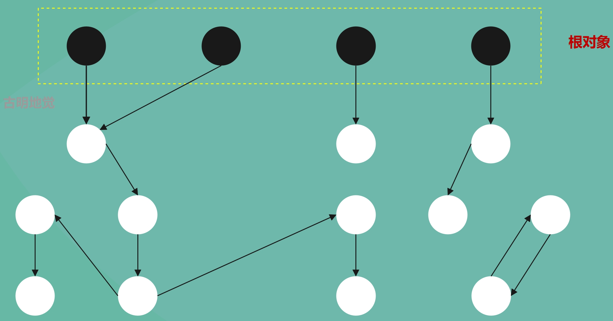
在垃圾回收动作被激活之前，系统中已分配的对象之间的引用关系组成了一张有向图，对象是图中的节点，而对象之间的引用关系则是节点和节点之间的连线。
黑色的节点表示被引用的活跃对象，也就是可达对象；白色的节点表示需要回收、但因循环引用而导致无法回收的垃圾对象，也就是不可达对象。由于根对象本身就是可达的，所以直接将它标记为黑色。然后我们假设除了根对象之外都是不可达的，所以下面都标记成了白色，至于它到底是不是白色，需要通过遍历才知道。
然后开始遍历了，显然从根对象开始遍历，根对象是可达的，被根对象引用的对象同样也是可达的。所以从根对象出发，沿着引用关系遍历，能够遍历到的对象都是可达的，我们将其标记为灰色。

这里可能有人会产生一个疑问，既然都可达了，为啥不直接标记成黑色呢？或者说三色标记模型本身就不太需要灰色，只要黑色和白色就够了。其实灰色状态有两个重要作用：
- 标记扫描进度：引入灰色状态能够清晰地显示当前正在处理哪些对象，可以避免重复扫描或遗漏，如果没有灰色就无法得知扫描到哪里了。
- 支持增量回收：灰色作为中间状态，允许垃圾回收过程动态暂停和恢复。暂停时灰色对象记录了未完成的扫描位置，这对减少程序停顿时间很重要。
所以虽然理论上可以没有灰色状态，但在实际实现中它能提高效率和灵活性。
然后继续扫描，遍历灰色对象。
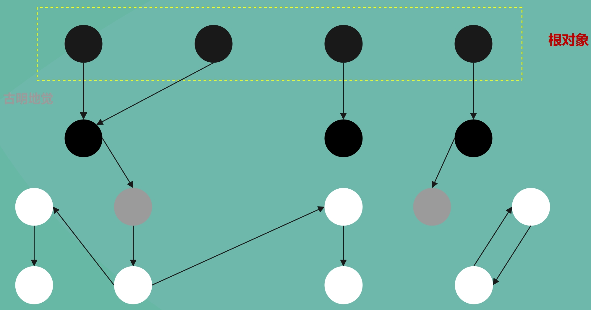
将灰色对象引用的其它对象也设置为灰色，然后再将自身设置为黑色。所以灰色只是一层中间状态，它和黑色都代表可达，只是通过引入灰色能够显示扫描进度和支持增量回收。因此对于那些可达对象，会先被标记为灰色，等到遍历这些灰色对象引用的对象（也标记为灰色）之后，再将上一层的灰色对象标记为黑色。
事实上 root 对象也应该先标记为灰色的，等到遍历它引用的对象时，再将它标记为黑色。只是为了方便，我们这里就直接标记为黑色了，大家理解就好。
然后继续从新的被标记成灰色的对象开始往下找，就是一层一层遍历嘛。所以遍历灰色对象，整个过程就做两件事：
- 将其直接引用的对象设置为灰色。
- 然后再将其自身设置为黑色（从灰变黑）。

凡是被引用到了的对象，都是可达的，不能删除。

如果从根对象集合开始，按照广度优先的策略进行搜索的话，那么不难想象，灰色节点就如同波纹一样不断向外扩散。凡是被灰色波纹触碰到的就会变成黑色，没有被触碰到的则还是原来的白色。

遍历完所有的对象之后，说明垃圾检测阶段结束了。如果是白色，说明是不可达的，会被回收；如果是黑色，说明是可达的，不会被回收。
比如图中的两个白色节点，从任何一个根节点出发都遍历不到，显然它们是因为循环引用而无法被回收的垃圾对象。这时垃圾回收器会将它们的引用计数减 1，所以上面说的垃圾回收并不是真的就直接把对象回收了，而是减少它的引用计数。至于对象的回收，则是由引用计数机制发现对象的引用计数为 0、然后调用 tp_dealloc 实现的。
正如一开始说的那样，垃圾回收只是在给引用计数机制擦屁股。垃圾回收做的工作就是修正对象的引用计数，解决循环引用带来的问题，而对象的回收则由引用计数机制负责。
以上就是垃圾回收中的标记-清除法，还是很好理解的，Python 内部采用的就是这种方法，先找出所有的根对象，然后再从根对象出发找到所有的可达对象。
分代收集技术
上面说了，Python 主要的内存管理手段是引用计数，而标记-清除和分代收集只是为了打破循环引用而引入的补充技术。
这一事实意味着垃圾回收只关注可能会产生循环引用的对象，而像整数、字符串这些对象是绝对不可能产生循环引用的，因为它们内部不可能持有对其它对象的引用，所以直接通过引用计数机制就可以实现，另外后面我们说的垃圾回收也专指那些可能产生循环引用的对象。
循环引用只会发生在 container 对象之间，所谓 container 对象指的就是内部可持有对其它对象的引用的对象，比如字典、列表、元组、自定义类对象、自定义类对象的实例对象等等。所以当垃圾回收机制开始运行时，只需要检查这些 container 对象即可，对于整数、字符串、浮点数等对象则不需要理会，这使得垃圾回收带来的开销只取决于 container 对象的数量，而非所有对象的数量。
为了达到这一点，Python 就必须跟踪所创建的每一个 container 对象，并将这些对象组织到一个集合中，只有这样，才能将垃圾回收的动作限制在这些对象上。而 Python 的做法是维护一条双向链表（实际上是 3 条），我们称之为可收集对象链表，所有的 container 对象在创建之后，都会被插入到这条链表当中，成为可收集对象。
可收集对象，指的一定是 container 对象。
当然，除了维护用于 container 对象的链表之外，还会维护一个名为 refchain 的链表，这个链表也是双向的，用于引用计数机制。程序中产生的所有对象都会挂到这个链表上，注意是所有对象。当对象要被回收时，就将它从 refchain 里面摘除，比较简单。
所以 refchain 会跟踪所有对象的生命周期，而 GC 链表（可收集对象链表）只跟踪可能产生循环引用的 container 对象的生命周期。任何一个对象在创建之后都会加入到 refchain 里面，而 container 对象由于要参与垃圾回收，所以它还必须加入到可收集对象链表里面。
可收集对象链表
在分析 Python 对象机制的时候我们看到，任何一个对象都可以分为两部分，一部分是 PyObject_HEAD，另一部分是对象自身的数据。然而对于需要被垃圾回收机制跟踪的 container 对象来说还不够，因为要加入到可收集对象链表中，所以 container 对象还需要一些额外的信息，这个信息位于 PyObject_HEAD 之前，称为 PyGC_Head。
// Include/cpython/objimpl.h
typedef struct {
// 指向链表中的下一个对象
// 当然，由于类型不是指针，所以准确的说应该是保存链表中下一个对象的地址
// 如果值为 0，表示对象还未被加入到链表中
uintptr_t _gc_next;
// 指向链表中的上一个对象（保存链表中上一个对象的地址）
// 注：_gc_prev 只用前 62 个位来存储地址，至于后两个位有其它用途，到时候再细说
uintptr_t _gc_prev;
} PyGC_Head;
对于可收集的 container 对象，其内存布局与我们之前了解的内存布局是不同的，这一点可以从可收集 container 对象的创建进行窥探。
// Modules/gcmodule.c
PyObject *
_PyObject_GC_New(PyTypeObject *tp)
{
// 对于 container 对象，会调用 _PyObject_GC_New 申请内存，之前见过的
// 然后 _PyObject_GC_New 内部调用了 _PyObject_GC_Malloc
PyObject *op = _PyObject_GC_Malloc(_PyObject_SIZE(tp));
if (op != NULL)
op = PyObject_INIT(op, tp);
return op;
}
PyObject *
_PyObject_GC_Malloc(size_t basicsize)
{
return _PyObject_GC_Alloc(0, basicsize);
}
static PyObject *
_PyObject_GC_Alloc(int use_calloc, size_t basicsize)
{
struct _gc_runtime_state *state = &_PyRuntime.gc;
PyObject *op;
PyGC_Head *g;
size_t size;
if (basicsize > PY_SSIZE_T_MAX - sizeof(PyGC_Head))
return PyErr_NoMemory();
// 将对象和 PyGC_Head 所需的内存加起来
size = sizeof(PyGC_Head) + basicsize;
// 为对像和 PyGC_Head 申请内存
if (use_calloc)
g = (PyGC_Head *)PyObject_Calloc(1, size);
else
g = (PyGC_Head *)PyObject_Malloc(size);
if (g == NULL)
return PyErr_NoMemory();
// ...
// 根据 PyGC_Head 的地址得到 PyObject 的地址
op = FROM_GC(g);
return op;
}
可以很清晰地看到，当 Python 为可收集的 container 对象申请内存空间时，还额外为 PyGC_Head 申请了空间，并且地址位于 container 对象之前。但是返回的时候又调用了 FROM_GC，也就是说返回的仍是 container 对象的地址。
所以像列表、字典等 container 对象的内存分布就应该变成这样。
可收集 container 对象的内存可以分为三个部分，首先第一部分用于垃圾回收机制，然后紧跟着的是 Python 所有对象都会有的 PyObject，最后才是 container 自身的数据。这里的 container 对象，既可以是 PyDictObject，也可以是 PyListObject、PyTupleObject 等等。
另外当垃圾回收机制运行期间，我们需要在可收集 container 对象的 PyGC_Head 和 PyObject 之间来回切换。更确切的说，有时我们持有一个对象 A 的 PyObject 的地址，但是需要根据这个地址来获得 PyGC_Head 的地址，而有时又需要反过来进行逆运算。所以 Python 提供了两个地址之间的转换算法：
// Modules/gcmodule.c
// 根据 PyObject 得到 PyGC_Head
#define AS_GC(o) ((PyGC_Head *)(o)-1)
// 根据 PyGC_Head 得到 PyObject
#define FROM_GC(g) ((PyObject *)(((PyGC_Head *)g)+1))
所以每个 container 对象在创建时都会额外包含一个 PyGC_Head，但此时它还不是可收集的，如果要成为可收集对象，那么还要加入到可收集对象链表中。而这个动作是发生在创建 container 对象的最后一步，以 PyListObject 的创建为例。
// Objects/listobject.c
PyObject *
PyList_New(Py_ssize_t size)
{
PyListObject *op;
// ...
Py_SIZE(op) = size;
op->allocated = size;
// 在返回 op 之前调用了 _PyObject_GC_TRACK
_PyObject_GC_TRACK(op);
return (PyObject *) op;
}
这个 _PyObject_GC_TRACK 已经见过很多回了，之前的解释是开启 GC 跟踪，但是现在我们明白了，这一步本质上就是将创建的 container 对象链接到了可收集对象链表中。而链接到可收集对象链表之后，这个 container 对象就成为了可收集对象，开始被 GC 跟踪了。
我们简单看一下这个函数，后续还会详细说。
// Include/internal/pycore_object.h
#define _PyObject_GC_TRACK(op) \
_PyObject_GC_TRACK_impl(__FILE__, __LINE__, _PyObject_CAST(op))
static inline void _PyObject_GC_TRACK_impl(const char *filename, int lineno,
PyObject *op)
{
_PyObject_ASSERT_FROM(op, !_PyObject_GC_IS_TRACKED(op),
"object already tracked by the garbage collector",
filename, lineno, "_PyObject_GC_TRACK");
PyGC_Head *gc = _Py_AS_GC(op);
_PyObject_ASSERT_FROM(op,
(gc->_gc_prev & _PyGC_PREV_MASK_COLLECTING) == 0,
"object is in generation which is garbage collected",
filename, lineno, "_PyObject_GC_TRACK");
PyGC_Head *last = (PyGC_Head*)(_PyRuntime.gc.generation0->_gc_prev);
_PyGCHead_SET_NEXT(last, gc);
_PyGCHead_SET_PREV(gc, last);
_PyGCHead_SET_NEXT(gc, _PyRuntime.gc.generation0);
_PyRuntime.gc.generation0->_gc_prev = (uintptr_t)gc;
}
前面说了，Python 会将垃圾回收限制在其维护的可收集对象链表上，因为所有的循环引用一定是在这个链表的对象里面发生的。而在 _PyObject_GC_TRACK 之后，我们创建的 container 对象也就置身于垃圾回收机制的掌控之中了，也就是之前所说的开启 GC 跟踪。
同样的，Python 也提供了将一个 container 对象从链表中摘除的方法，显然这个方法会在对象被销毁的时候调用。
// Include/internal/pycore_object.h
#define _PyObject_GC_UNTRACK(op) \
_PyObject_GC_UNTRACK_impl(__FILE__, __LINE__, _PyObject_CAST(op))
static inline void _PyObject_GC_UNTRACK_impl(const char *filename, int lineno,
PyObject *op)
{
_PyObject_ASSERT_FROM(op, _PyObject_GC_IS_TRACKED(op),
"object not tracked by the garbage collector",
filename, lineno, "_PyObject_GC_UNTRACK");
PyGC_Head *gc = _Py_AS_GC(op);
PyGC_Head *prev = _PyGCHead_PREV(gc);
PyGC_Head *next = _PyGCHead_NEXT(gc);
_PyGCHead_SET_NEXT(prev, next);
_PyGCHead_SET_PREV(next, prev);
gc->_gc_next = 0;
gc->_gc_prev &= _PyGC_PREV_MASK_FINALIZED;
}
很明显，_PyObject_GC_UNTRACK 只是 _PyObject_GC_TRACK 的逆运算而已。就这样，借助 _gc_next 和 _gc_prev 指针，Python 将需要跟踪的对象一个接一个地组织成双向链表。
零代链表、一代链表、二代链表
无论什么语言，写出来的程序都有共同之处，那就是不同对象的生命周期会存在不同。有的对象所占的内存块的生命周期很短，而有的内存块的生命周期则很长，甚至可能从程序的开始持续到程序结束，这两者的比例大概是 80~90%。这对垃圾回收机制有着重要的意义，因为像标记-清除这样的算法所带来的额外开销和系统中内存块的数量有很大关系，当内存块越多的时候，垃圾检测带来的额外开销就越多，相反则越少。
因此我们可以采用一种空间换时间的策略，因为目前所有 container 对象都在一个链子上，每当进行垃圾回收的时候，都要把所有对象全部检查一遍。而其实有不少比较稳定的对象（经历多次垃圾回收的洗礼后仍保持存活），完全没有必要每次都检查，或者说检查的频率可以降低一些。
于是聪明如你已经猜到了，再来一条链子不就可以了，把那些比较稳定的对象移到另外一条链子上，而新的链子进行垃圾回收的频率会低一些。
所以思想就是：将系统中的 container 对象根据其存活时间划分为不同的集合，每一个集合就称为一个"代"，垃圾回收的频率随着"代"的存活时间的增大而减小。也就是说，存活时间越长的对象就越可能不是垃圾，就越可能是程序中需要一直存在的对象，就应该少去检测它。
那么问题来了，这个存活时间是如何衡量的呢？或者说怎么判断一个对象是否稳定呢？显然上面已经给出结论了，就是通过经历垃圾回收的次数来评判，如果一个对象经历的垃圾回收次数越多，那么显然其存活时间就越长。
Python 的垃圾回收器会在条件满足时（至于什么条件稍后说），进行一次垃圾回收（注意：不同的代的垃圾回收频率是不同的），而一些对象在多次垃圾回收之后都能活下来，这就说明这些对象存活的时间更长，或者像上面说的更稳定，那么就不应该再把它们放在这条链子上了，而是会移动到新的链子上。而在新的链子上，进行垃圾回收的频率会降低，因为既然稳定了，检测就不必那么频繁了，或者说新的链子上触发垃圾回收所需要的时间更长了。
另外关于"代"，似乎是一个比较抽象的概念，但在 Python 中，你可以把"代"想象成多个对象组成的集合，或者把"代"想象成链表也可以。因为这些对象都挂在链表上面，并且属于同一"代"的对象都被链接到同一个链表中。
而 Python 底层总共存在三条链表，说明对象可以分为三代，即零代、一代、二代，一个"代"就是一条上面提到的可收集对象链表。
// Include/internal/pycore_mem.h
#define NUM_GENERATIONS 3
struct gc_generation {
PyGC_Head head;
// "代"不同，这两个字段的含义也不同，一会儿再聊
int threshold;
int count;
};
// Modules/gcmodule.c
#define _GEN_HEAD(n) GEN_HEAD(state, n)
struct gc_generation generations[NUM_GENERATIONS] = {
/* PyGC_Head, threshold, count */
{{(uintptr_t)_GEN_HEAD(0), (uintptr_t)_GEN_HEAD(0)}, 700, 0},
{{(uintptr_t)_GEN_HEAD(1), (uintptr_t)_GEN_HEAD(1)}, 10, 0},
{{(uintptr_t)_GEN_HEAD(2), (uintptr_t)_GEN_HEAD(2)}, 10, 0},
};
for (int i = 0; i < NUM_GENERATIONS; i++) {
state->generations[i] = generations[i];
};
state->generation0 = GEN_HEAD(state, 0);
struct gc_generation permanent_generation = {
{(uintptr_t)&state->permanent_generation.head,
(uintptr_t)&state->permanent_generation.head}, 0, 0
};
state->permanent_generation = permanent_generation;
}
每一个"代"就是一个 gc_generation 结构体实例，而维护了三个 gc_generation 结构体实例的数组 generations，控制了三条可收集对象链表的头结点，这就是 Python 用于分代垃圾收集的三个"代"。
对于零代 gc_generation，其中的 count 记录了当前这条可收集对象链表中一共有多少个 container 对象。而在 _PyObject_GC_Alloc 中可以看到每当分配了内存，就会执行 _PyRuntime.gc.generations[0].count++ 动作，将零代链表中所维护的对象数量加 1。这预示着所有新创建的 container 对象都会被加入到零代链表中，而这一点也确实如此，已经被 _PyObject_GC_TRACK 证明了。
而当三个"代"初始化完毕之后，对应的 gc_generation 数组大概是这样的。

我们看到"代"不同，对应的 threshold 也不同。对于零代链表而言，threshold 字段表示该条可收集对象链表中最多可容纳多少个新创建的 container 对象，从源码中我们看到是 700 个。而一旦零代链表中新创建的 container 对象超过了 700 个，那么会立刻触发垃圾回收。
// Modules/gcmodule.c
static Py_ssize_t
collect_generations(struct _gc_runtime_state *state)
{
Py_ssize_t n = 0;
// 当 count 大于 threshold 的时候
for (int i = NUM_GENERATIONS-1; i >= 0; i--) {
if (state->generations[i].count > state->generations[i].threshold) {
if (i == NUM_GENERATIONS - 1
&& state->long_lived_pending < state->long_lived_total / 4)
continue;
// 执行此函数对链表进行清理
n = collect_with_callback(state, i);
break;
}
}
return n;
}
当调用 _PyObject_GC_Alloc 为 container 对象分配内存时，零代链表的 count 字段自增 1，并将该对象接入零代链表。当调用 PyObject_GC_Del 释放 container 对象的内存时，零代链表的 count 字段自减 1。
// Modules/gcmodule.c
static PyObject *
_PyObject_GC_Alloc(int use_calloc, size_t basicsize)
{
// ...
state->generations[0].count++; /* number of allocated GC objects */
// ...
}
void
PyObject_GC_Del(void *op)
{
// ..
if (state->generations[0].count > 0) {
state->generations[0].count--;
}
// ...
}
当 count 大于 threshold 时，也就是新创建的 container 对象的个数（准确的说，还要减去已回收的 container 对象的个数）超过了 700 个，那么清理一次零代链表。等清理完零代链表之后，将 count 重置为 0，然后继续重新统计新创建的 container 对象的个数，如果它减去已回收的 container 对象的个数又超过了 threshold（默认 700），那么继续清理零代链表。
然后零代链表每清理一次，一代链表的 count 字段自增 1，一代链表每清理一次，二代链表的 count 字段自增 1。所以可以得出结论：
- 零代链表的 count 字段维护的是新创建的 container 对象的数量减去已回收的 container 对象的数量，如果 count 超过了 700，那么清理零代链表，并将自身的 count 字段清零，一代链表的 count 字段自增 1。
- 一代链表的 count 字段维护的是零代链表的清理次数，它的 threshold 是 10。所以当零代链表的清理次数达到 11 次时，会清理一次一代链表。然后将自身的 count 字段和零代链表的 count 字段清零，二代链表的 count 字段自增 1。
- 二代链表的 count 字段维护的是一代链表的清理次数，它的 threshold 是 10。所以当一代链表的清理次数达到 11 次时，会清理一次二代链表。然后将自身的 count 字段和一代链表、零代链表的 count 字段都清零。
而上面用于清理链表的 collect_generations 函数，内部是一个 for 循环，所以无论是清理哪一代链表，都是执行的这个函数。当然，真正用来清理的其实是内部调用的 collect_with_callback 函数，清理零代链表，里面的参数 i 就是 0；清理一代链表，里面的参数 i 就是 1；清理二代链表，里面的参数 i 就是 2。
其实 collect_with_callback 函数也不是终点，它内部又调用了collect 函数，我们后续再聊。
总之清理完毕之后，就可以区分出可达和不可达的对象。可达的对象会被移入到下一"代"，因为它们是稳定的，所以检测频率应该降低。而不可达的对象，在引用计数被修正之后，显然会被引用计数机制干掉。
以上就是分代收集的秘密，总结一下就是：
- 零代链表中新创建的 container 对象的个数减去已回收的 container 对象的个数达到了 701，触发一次零代链表的清理；
- 零代链表的清理次数达到了 11 次，触发一次一代链表的清理；
- 一代链表的清理次数达到了 11 次，触发一次二代链表的清理；
需要补充一点，清理某个"代"时，会将它前面的"代"都合并到该"代"，一起清理。然后可达的对象会移入下一个代，不可达的对象由于循环引用的影响被消除，最终会被引用计数机制干掉。
再透过源码验证一下我们的结论：
// Modules/gcmodule.c
static Py_ssize_t
collect(struct _gc_runtime_state *state, int generation,
Py_ssize_t *n_collected, Py_ssize_t *n_uncollectable, int nofail)
{
int i;
Py_ssize_t m = 0; // 可达对象的个数
Py_ssize_t n = 0; // 不可达对象的个数
PyGC_Head *young; // 正在检测的代
PyGC_Head *old; // 下一个代
// ...
// 当清理的是零代或一代链表时
if (generation+1 < NUM_GENERATIONS)
// 将下一代链表的 count 字段自增 1
state->generations[generation+1].count += 1;
// 同时将它前面的代的 count 字段清零
for (i = 0; i <= generation; i++)
state->generations[i].count = 0;
// 将前面的代都合并到该代
for (i = 0; i < generation; i++) {
gc_list_merge(GEN_HEAD(state, i), GEN_HEAD(state, generation));
}
// ...
// 将可达的对象移入下一个代
if (young != old) {
if (generation == NUM_GENERATIONS - 2) {
state->long_lived_pending += gc_list_size(young);
}
gc_list_merge(young, old);
}
else {
untrack_dicts(young);
state->long_lived_pending = 0;
state->long_lived_total = gc_list_size(young);
}
// 所有不可达的对象都是垃圾，要被清理
gc_list_init(&finalizers);
move_legacy_finalizers(&unreachable, &finalizers);
move_legacy_finalizer_reachable(&finalizers);
// 返回可达对象的个数 + 不可达对象的个数
return n+m;
}
以上就是分代收集技术。
小结
到目前为止，我们算是理解 Python 的垃圾回收到底是怎么一回事了。总结一下就是引用计数机制为主，标记-清除和分代收集为辅，后者主要是为了弥补前者的致命缺点而存在的。因为光有引用计数是不够的，严格意义上讲它也算不上垃圾回收，所以还需要依赖标记-清除和分代收集为其兜底（这两者才是真正的垃圾回收机制）。
下一篇，我们将从源码层面，来剖析垃圾回收是怎么实现的。
欢迎大家关注我的公众号：古明地觉的编程教室。
如果觉得文章对你有所帮助，也可以请作者吃个馒头，Thanks♪(･ω･)ﾉ。
楔子
Python 的垃圾回收是通过标记-清除和分代收集实现的，下面就通过源码来考察一下。
我们知道，清理一代链表时会顺带清理零代链表，总之就是把比自己"代"小的链子也清理了。那么这是怎么做到的呢？其实答案就在 gc_list_merge 函数中。
如果清理的是一代链表，那么在开始垃圾回收之前，Python 会将零代链表（比它年轻的），整个链接到一代链表之后，这样的话在清理一代的时候也会清理零代。当然啦，清理二代链表也是同理，会将一代链表和零代链表，整个链接到二代链表之后，这样清理二代的时候也会清理一代和零代。
// Include/cpython/objimpl.h
// 获取 PyGC_Head 的 _gc_next 字段，它保存了可收集对象链表中下一个 container 对象的地址
#define _PyGCHead_NEXT(g) ((PyGC_Head*)(g)->_gc_next)
// 获取 PyGC_Head 的 _gc_prev 字段，它保存了可收集对象链表中上一个 container 对象的地址
// 但由于 _gc_prev 的后两位（低地址的两位）有其它用，所以要和 _PyGC_PREV_MASK 按位与
#define _PyGCHead_PREV(g) ((PyGC_Head*)((g)->_gc_prev & _PyGC_PREV_MASK))
// _gc_prev 的倒数第一个位表示 tp_finalize 是否被调用
#define _PyGC_PREV_MASK_FINALIZED (1)
// _gc_prev 的倒数第二个位表示对象所处的"代"是否正在被 GC
#define _PyGC_PREV_MASK_COLLECTING (2)
// _gc_prev 的前 62 个位表示地址，由于 uintptr_t 是 64 位无符号整型
// 所以 (((uintptr_t) -1) << _PyGC_PREV_SHIFT) 会得到一个前 62 个位是 1，后 2 个位是 0 的数
// 因此 _gc_prev & _PyGC_PREV_MASK 得到的就是地址
#define _PyGC_PREV_SHIFT (2)
#define _PyGC_PREV_MASK (((uintptr_t) -1) << _PyGC_PREV_SHIFT)
// 将 g->_gc_next 设置为 p
#define _PyGCHead_SET_NEXT(g, p) ((g)->_gc_next = (uintptr_t)(p))
// 将 g->_gc_prev 设置为 p，注意：前 62 个位表示地址
#define _PyGCHead_PREV(g) ((PyGC_Head*)((g)->_gc_prev & _PyGC_PREV_MASK))
// Modules/gcmodule.c
static void
gc_list_merge(PyGC_Head *from, PyGC_Head *to)
{
// from 和 to 分别表示对应的链表的虚拟头结点（dummyHead）
assert(from != to);
if (!gc_list_is_empty(from)) {
// 因为是双向链表，所以 to 的 _prev 是对应链表的尾节点
PyGC_Head *to_tail = GC_PREV(to);
// from 的 _gc_next 是对应链表的真实头结点
PyGC_Head *from_head = GC_NEXT(from);
// from 的 _gc_prev 是对应链表的尾节点
PyGC_Head *from_tail = GC_PREV(from);
assert(from_head != from);
assert(from_tail != from);
// 更新指针
_PyGCHead_SET_NEXT(to_tail, from_head);
_PyGCHead_SET_PREV(from_head, to_tail);
_PyGCHead_SET_NEXT(from_tail, to);
_PyGCHead_SET_PREV(to, from_tail);
}
gc_list_init(from);
}
gc_list_merge 做的事情就是将 from 链表合并到 to 链表的末尾，假设清理的是零代链表，那么这里的 from 就是零代链表，to 就是一代链表，此后的标记-清除算法就在 merge 之后的那一条链表上进行。
在探究标记-清除垃圾回收方法之前，我们需要建立一个简单的循环引用的例子。
lst1 = []
lst2 = []
lst1.append(lst2)
lst2.append(lst1)
# 注意这里多了一个外部引用
a = lst1
lst3 = []
lst4 = []
lst3.append(lst4)
lst4.append(lst3)
示意图如下：
数字指的是当前对象的引用计数，显然 lst1 为 3，其它的都为 2，因为有一个额外的变量 a 也指向了 lst1 指向的对象。而 lst1 和 lst2，lst3 和 lst4 之间均发生了循环引用。
寻找 root object 集合
按照之前对垃圾收集算法的一般性描述，如果要使用标记-清除算法，首先需要找到 root object。那么在上面的那幅图中，哪些是属于 root object 呢？
让我们换个角度来思考，前面提到 root object 是不能被删除的对象。也就是说，在可收集对象链表的外部存在着对该对象的引用，删除这个对象会导致错误的行为，而在当前这个例子中显然只有 lst1 属于 root object。但这仅仅是观察的结果，那么如何设计一种算法来得到这个结果呢？
我们注意到这样一个事实，如果两个对象的引用计数都为 1，但仅仅是它们之间存在着循环引用，那么这两个对象是需要被回收的。也就是说，尽管它们的引用计数表现为非 0，但实际上有效的引用计数为 0。
这里提出了一个有效引用计数的概念，为了获得有效的引用计数，必须将循环引用的影响消除，或者将这个闭环从引用中摘除（循环引用在有向图中会形成一个环），而具体的实现方式就是将两个对象的引用计数都减去 1。这样一来，两个对象的引用计数都会变成 0，我们便挥去了循环引用的迷雾，使有效引用计数现出了真身。
那么如何使两个对象的引用计数都减 1 呢，很简单，假设这两个对象为 A 和 B，那么从 A 出发，由于它有一个对 B 的引用，于是将 B 的引用计数减 1；然后顺着引用达到 B，发现它有一个对 A 的引用，那么同样会将 A 的引用计数减1，这样就完成了循环引用对象间环的删除。
总结一下就是，Python 会寻找那些具有循环引用的对象，并尝试把它们的引用计数都减去 1。
但是这样就出现了一个问题，假设可收集对象链表中的 container 对象 A 有一个对对象 C 的引用，而 C 并不在这个链表中。如果在 A 没有被回收的情况下，将 C 的引用计数减 1，那么显然 C 的引用计数会被错误地减少 1，这将导致未来的某个时刻对 C 的引用会出现悬空。要想解决这个问题，就需要我们在 A 没有被删除的情况下恢复 C 的引用计数，可如果采用这样的方案的话，那么维护引用计数的复杂度将成倍增长。
换一个角度，其实有更好的做法，我们不改动真实的引用计数，而是改动引用计数的副本。对于副本，无论做什么样的改动，都不会影响对象生命周期的维护，因为它唯一的作用就是寻找 root object 集合。那么这个副本在哪里体现呢？答案是 PyGC_Head 的 _gc_prev 字段。这里有人可能好奇了，_gc_prev 不是用来存储地址的吗。
- 在正常时期：_gc_prev 的前 62 个位用来存储地址；
- 在 GC 时期：_gc_prev 的前 62 个位用来存储引用计数副本。
所以这是两个不同时期的用途，我们看一下源码。
// Include/cpython/objimpl.h
#define _PyGC_PREV_MASK_FINALIZED (1)
#define _PyGC_PREV_MASK_COLLECTING (2)
#define _PyGC_PREV_SHIFT (2)
#define _PyGC_PREV_MASK (((uintptr_t) -1) << _PyGC_PREV_SHIFT)
// Modules/gcmodule.c
#define PREV_MASK_COLLECTING _PyGC_PREV_MASK_COLLECTING
static inline int
gc_is_collecting(PyGC_Head *g)
{
// 对象所处的代是否正在被 GC，如果 _gc_prev 的倒数第二位是 1，表示正在被 GC
return (g->_gc_prev & PREV_MASK_COLLECTING) != 0;
}
static inline void
gc_clear_collecting(PyGC_Head *g)
{
// 将 _gc_prev 的倒数第二位设置为 0，表示对象所处的代没有被 GC
g->_gc_prev &= ~PREV_MASK_COLLECTING;
}
static inline Py_ssize_t
gc_get_refs(PyGC_Head *g)
{
// 将 _gc_prev 右移 2 位，返回引用计数副本
return (Py_ssize_t)(g->_gc_prev >> _PyGC_PREV_SHIFT);
}
static inline void
gc_set_refs(PyGC_Head *g, Py_ssize_t refs)
{
// 让 _gc_prev 的前 62 个位存储引用计数副本
g->_gc_prev = (g->_gc_prev & ~_PyGC_PREV_MASK)
| ((uintptr_t)(refs) << _PyGC_PREV_SHIFT);
}
static inline void
gc_reset_refs(PyGC_Head *g, Py_ssize_t refs)
{
// 只保留 _gc_prev 的倒数第一位，然后将倒数第二位设置为 1
// 再让前 62 个位保存引用计数副本
g->_gc_prev = (g->_gc_prev & _PyGC_PREV_MASK_FINALIZED)
| PREV_MASK_COLLECTING
| ((uintptr_t)(refs) << _PyGC_PREV_SHIFT);
}
在垃圾回收的第一步，就是遍历可收集对象链表，将每个对象的引用计数拷贝给引用计数副本。
// Modules/gcmodule.c
static void
update_refs(PyGC_Head *containers)
{
// 获取链表的真实头结点
PyGC_Head *gc = GC_NEXT(containers);
for (; gc != containers; gc = GC_NEXT(gc)) {
// FROM_GC(gc) 会拿到 PyObject 的地址，再调用 Py_REFCNT 便可拿到引用计数
// 然后将引用计数拷贝给 PyGC_Head 的 _gc_prev 字段，作为副本
gc_reset_refs(gc, Py_REFCNT(FROM_GC(gc)));
_PyObject_ASSERT(FROM_GC(gc), gc_get_refs(gc) != 0);
}
}
而接下来的动作就是要将环引用摘除。
// Modules/gcmodule.c
static void
subtract_refs(PyGC_Head *containers)
{
traverseproc traverse;
PyGC_Head *gc = GC_NEXT(containers);
// 遍历链表的每一个对象
for (; gc != containers; gc = GC_NEXT(gc)) {
// 获取 PyObject 的地址
PyObject *op = FROM_GC(gc);
// 调用类型对象的 tp_traverse 字段
traverse = Py_TYPE(op)->tp_traverse;
(void) traverse(FROM_GC(gc),
(visitproc)visit_decref,
op);
}
}
我们注意到里面有一个 tp_traverse，介绍类型对象的时候说过这个字段，它用于垃圾回收的检测阶段，通过遍历对象所引用的其它对象，确定对象之间的引用关系，帮助垃圾回收器识别出所有活跃的对象和出现循环引用的对象。除了 tp_traverse 之外还有一个和它搭配的 tp_clear，用于清除阶段，负责减少出现循环引用的对象的引用计数。
因为 tp_traverse 定义在类型对象中，所以它和特定的 container 对象有关。一般来说，tp_traverse 的动作就是遍历 container 对象中的每一个引用，然后对引用执行 visit_decref 操作。
// Include/object.h
typedef int (*visitproc)(PyObject *, void *);
typedef int (*traverseproc)(PyObject *, visitproc, void *);
// Include/objimpl.h
#define Py_VISIT(op) \
do { \
if (op) { \
int vret = visit(_PyObject_CAST(op), arg); \
if (vret) \
return vret; \
} \
} while (0)
// Objects/listobject.c
PyTypeObject PyList_Type = {
//...
(traverseproc)list_traverse, /* tp_traverse */
//...
};
static int
list_traverse(PyListObject *o, visitproc visit, void *arg)
{
Py_ssize_t i;
// 对列表中的每一个元素都执行 Py_VISIT，Py_VISIT 是一个宏，会调用参数 visit
// 而 visit 就是 subtract_refs 函数内部在调用 tp_traverse 时传递的 visit_decref 函数
for (i = Py_SIZE(o); --i >= 0; )
Py_VISIT(o->ob_item[i]);
return 0;
}
// Modules/gcmodule.c
static int
visit_decref(PyObject *op, void *parent)
{
_PyObject_ASSERT(_PyObject_CAST(parent), !_PyObject_IsFreed(op));
// 如果 op 指向的对象参与垃圾回收
if (PyObject_IS_GC(op)) {
// 基于 PyObject 的地址获取 PyGC_Head 的地址
PyGC_Head *gc = AS_GC(op);
// 如果所处的代正在被 GC
if (gc_is_collecting(gc)) {
// 调用 gc_decref 减少引用计数
gc_decref(gc);
}
}
return 0;
}
比如我们要删除一个列表，那么显然在删除之前，列表里面每个元素的引用计数肯定要减一。
在完成了 subtract_refs 之后，可收集对象链表中所有 container 对象之间的环引用就被摘除了。这时有一些 container 对象的 PyGC_Head._gc_prev 还不为 0，这就意味着存在对这些对象的外部引用，这些对象就是开始标记-清除算法的 root object。
举个栗子：
import sys
lst1 = []
lst2 = []
lst1.append(lst2)
lst2.append(lst1)
# 注意这里多了一个外部引用
a = lst1
print(sys.getrefcount(a)) # 4
print(sys.getrefcount(lst1)) # 4
print(sys.getrefcount(lst2[0])) # 4
由于 sys.getrefcount 函数本身会多一个引用，所以减去 1 的话，结果都是 3，表示它们指向的对象的引用计数为 3。所以这个时候 a 就想到了，除了我，还有两位老铁 lst1 和 lst2[0] 也指向了我指向的对象。
垃圾标记
还是以上面的代码为例。
import sys
lst1 = []
lst2 = []
lst1.append(lst2)
lst2.append(lst1)
# 注意这里多了一个外部引用
a = lst1
print(sys.getrefcount(a)) # 4
print(sys.getrefcount(lst1)) # 4
print(sys.getrefcount(lst2[0])) # 4
假设现在执行了删除操作 del lst1, lst2, lst3, lst4，那么成功地寻找到 root object 集合之后，我们就可以从 root object 出发，沿着引用链，一个接一个地标记不能回收的内存。但是从 root object 出发前，需要先将现在的内存链表一分为二，一条链表维护 root object 集合，成为 root 链表；而另一条链表中维护剩下的对象，成为 unreachable 链表。
由于 unreachable 链表上面的对象都是可回收的垃圾，那么显然目前的 unreachable 链表是名不副实的，或者说不符合上面的对象都可回收的条件。因为里面可能存在被 root 链表中的对象直接引用或间接引用的对象，这些对象是不可以回收的，因此一旦在标记中发现了这样的对象，那么就应该将其从 unreachable 移到 root 链表中。当完成标记之后，unreachable 链表中剩下的对象就是名副其实的垃圾对象了，那么接下来的垃圾回收只需要限制在 unreachable 链表中即可。
正如我们一开始介绍的三色标记模型，确定完 root object 集合之后，就假设剩下的对象都是不可达的。然后遍历，如果可达，证明我们冤枉它了，那么就为它平冤昭雪（标记为可达）。为此 Python 专门准备了一条名为 unreachable 的链表，通过 move_unreachable 函数完成了对原始链表的切分。
// Modules/gcmodule.c
static void
move_unreachable(PyGC_Head *young, PyGC_Head *unreachable)
{
// 记录 young 链表中的前一个节点
PyGC_Head *prev = young;
// 从 young 链表的真实头结点开始遍历
PyGC_Head *gc = GC_NEXT(young);
// 遍历整个 young 链表，直到 gc 等于链表的 dummyHead
while (gc != young) {
// 如果引用计数不为 0，说明对象可达
if (gc_get_refs(gc)) {
// 获取 PyObject 的地址
PyObject *op = FROM_GC(gc);
// 获取 tp_traverse
traverseproc traverse = Py_TYPE(op)->tp_traverse;
_PyObject_ASSERT_WITH_MSG(op, gc_get_refs(gc) > 0,
"refcount is too small");
// 通过 tp_traverse 调用 visit_reachable 标记可达对象
(void) traverse(op,
(visitproc)visit_reachable,
(void *)young);
// 重新链接 prev 指针
_PyGCHead_SET_PREV(gc, prev);
// 清除 collecting 标记，即对象不再处于 GC 中
gc_clear_collecting(gc);
prev = gc;
}
// 引用计数为 0
else {
// 对象可能不可达，将其移到 unreachable 链表
// 首先从 young 链表中移除
prev->_gc_next = gc->_gc_next;
// 加入 unreachable 链表的尾部
PyGC_Head *last = GC_PREV(unreachable);
last->_gc_next = (NEXT_MASK_UNREACHABLE | (uintptr_t)gc);
_PyGCHead_SET_PREV(gc, last);
gc->_gc_next = (NEXT_MASK_UNREACHABLE | (uintptr_t)unreachable);
unreachable->_gc_prev = (uintptr_t)gc;
}
gc = (PyGC_Head*)prev->_gc_next;
}
// 更新 young 链表尾指针
young->_gc_prev = (uintptr_t)prev;
}
函数调用完之后会将 young 链表中的对象进行分类，young 链表保留可达对象，unreachable 链表存放不可达对象。
然后是里面的 visit_reachable 函数，它是怎么将对象标记为可达的呢？来看一下。
// Modules/gcmodule.c
static int
visit_reachable(PyObject *op, PyGC_Head *reachable)
{
// 如果对象不参与垃圾回收，直接返回
if (!PyObject_IS_GC(op)) {
return 0;
}
// 获取 PyGC_Head 的地址
PyGC_Head *gc = AS_GC(op);
// 获取引用计数
const Py_ssize_t gc_refs = gc_get_refs(gc);
// 忽略未跟踪对象和其它代的对象
if (gc->_gc_next == 0 || !gc_is_collecting(gc)) {
return 0;
}
// 对象虽然在 unreachable 链表中，但实际是可达的，那么从 unreachable 链表中移除
if (gc->_gc_next & NEXT_MASK_UNREACHABLE) {
PyGC_Head *prev = GC_PREV(gc);
PyGC_Head *next = (PyGC_Head*)(gc->_gc_next & ~NEXT_MASK_UNREACHABLE);
_PyObject_ASSERT(FROM_GC(prev),
prev->_gc_next & NEXT_MASK_UNREACHABLE);
_PyObject_ASSERT(FROM_GC(next),
next->_gc_next & NEXT_MASK_UNREACHABLE);
prev->_gc_next = gc->_gc_next; // copy NEXT_MASK_UNREACHABLE
_PyGCHead_SET_PREV(next, prev);
gc_list_append(gc, reachable);
gc_set_refs(gc, 1);
}
else if (gc_refs == 0) {
// 对象在 young 链表中，但还未被遍历到，标记为可达
gc_set_refs(gc, 1);
}
// 无需处理
else {
_PyObject_ASSERT_WITH_MSG(op, gc_refs > 0, "refcount is too small");
}
return 0;
}
所以该函数主要处理三种情况：
- unreachable 中的可达对象：移回 young 链表。
- young 中未遍历的对象：标记为可达。
- 其它可达对象：无需处理。
当 move_unreachable 完成之后，最初的一条链表就被切分成了两条链表，在 unreachable 链表中，就是发现的垃圾对象，是垃圾回收的目标。
但是等一等，在 unreachable 链表中，所有的对象都可以安全回收吗？垃圾回收在清理对象的时候，一旦发现对象的类对象里面定义了 __del__ 函数，那么在清理该对象的时候就会调用 __del__，因此也叫析构函数，这是 Python 为开发人员提供的在对象被销毁时进行某些资源释放的 Hook 机制。
现在问题来了，我们已经知道最终在 unreachable 链表中出现的对象都是只存在循环引用的对象，需要被销毁。但是假如现在在 unreachbale 中，有两个对象 A 和 B， 对象 B 在 __del__ 中调用了对象 A 的某个操作，这意味着安全的垃圾回收必须保证对象 A 要在对象 B 之后被回收，但 Python 无法做到这一点，Python 在回收垃圾时不能保证回收的顺序。因此有可能 A 已经被销毁了，然后 B 在销毁时又访问已经不存在的 A，毫无疑问，Python 遇到麻烦了。虽然同时满足存在 __del__ 和循环引用这两个条件的概率非常低，但 Python 不能对此置之不理。
于是 Python 采用了一种保守的做法，会将 unreachable 链表中拥有 __del__ 的实例对象统统都移到 _gc_runtime_state.garbage 中。
// Include/internal/pycore_pymem.h
struct _gc_runtime_state {
// 需要延迟删除的对象组成的单向链表，通过 gc_prev 指针连接
PyObject *trash_delete_later;
// tp_dealloc 的递归调用深度，防止递归过深
int trash_delete_nesting;
// 是否启用 GC
int enabled;
// 是否启用调试模式
int debug;
// 存储三条可收集对象链表的虚拟头结点
struct gc_generation generations[NUM_GENERATIONS];
// 零代链表的虚拟头结点，为优化访问效率，单独使用一个字段保存
PyGC_Head *generation0;
// 永久代，存放不需要回收的对象
struct gc_generation permanent_generation;
// 记录每代的统计信息（收集次数、对象数等）
struct gc_generation_stats generation_stats[NUM_GENERATIONS];
// 标记当前是否正在进行 GC，防止 GC 重入
int collecting;
// 指向一个列表，里面存储了产生循环引用但无法安全回收的对象（一般是重写了 __del__）
PyObject *garbage;
// GC 事件回调函数列表，允许外部监控 GC 过程
PyObject *callbacks;
// 完整 GC（第二代）后存活的对象数，用于评估长期存活的对象数量
Py_ssize_t long_lived_total;
// 在非完整 GC 中存活且等待首次完整 GC 的对象数，用于优化 GC 策略
Py_ssize_t long_lived_pending;
};
这些字段共同构成了 Python GC 的运行时状态，支持分代回收、延迟删除、调试等功能。
垃圾回收
要回收 unreachable 链表中的垃圾对象，就必须先打破对象间的循环引用，上面我们已经阐述了如何打破循环引用的办法，下面来看看具体的销毁过程。
// Modules/gcmodule.c
// 检查链表是否为空（链表中是否只有 dummyHead）
static inline int
gc_list_is_empty(PyGC_Head *list)
{
// 对于一个双向链表来说，如果为空
// 那么它的 _gc_next、_gc_prev 都指向 dummyHead 自身
return (list->_gc_next == (uintptr_t)list);
}
// 将对象添加到链表的尾节点
static inline void
gc_list_append(PyGC_Head *node, PyGC_Head *list)
{
// list 就是 dummyHead，它的上一个节点显然是链表的尾节点
PyGC_Head *last = (PyGC_Head *)list->_gc_prev;
// node->_gc_prev = last
_PyGCHead_SET_PREV(node, last);
// last->_gc_next = node
_PyGCHead_SET_NEXT(last, node);
// node->_gc_next = dummyHead
_PyGCHead_SET_NEXT(node, list);
// dummyHead->_gc_prev = node
list->_gc_prev = (uintptr_t)node;
}
// 将对象从链表中摘除
static inline void
gc_list_remove(PyGC_Head *node)
{
// node 的上一个节点
PyGC_Head *prev = GC_PREV(node);
// node 的下一个节点
PyGC_Head *next = GC_NEXT(node);
// 让 node 的上一个节点的 _gc_next 指向 node 的下一个节点
_PyGCHead_SET_NEXT(prev, next);
// 让 node 的下一个节点的 _gc_prev 指向 node 的上一个节点
_PyGCHead_SET_PREV(next, prev);
// 此时便完成了对象的摘除
// 将 _gc_next 设置为 0，表示不再被 GC 跟踪
node->_gc_next = 0; /* object is not currently tracked */
}
static void
delete_garbage(struct _gc_runtime_state *state,
PyGC_Head *collectable, PyGC_Head *old)
{
assert(!PyErr_Occurred());
// 遍历 collectable 链表直到为空
while (!gc_list_is_empty(collectable)) {
// 获取可收集对象链表中的下一个 container 对象，但拿到的是 PyGC_Head 的地址
PyGC_Head *gc = GC_NEXT(collectable);
// 基于 PyGC_Head 的地址获取 PyObject 的地址
PyObject *op = FROM_GC(gc);
// 断言引用计数 > 0
_PyObject_ASSERT_WITH_MSG(op, Py_REFCNT(op) > 0,
"refcount is too small");
// debug 模式：保存到 garbage 列表
if (state->debug & DEBUG_SAVEALL) {
assert(state->garbage != NULL);
if (PyList_Append(state->garbage, op) < 0) {
PyErr_Clear();
}
}
// 非 debug 模式：尝试清理对象
else {
inquiry clear;
// 调用 tp_clear
if ((clear = Py_TYPE(op)->tp_clear) != NULL) {
Py_INCREF(op);
(void) clear(op);
if (PyErr_Occurred()) {
_PyErr_WriteUnraisableMsg("in tp_clear of",
(PyObject*)Py_TYPE(op));
}
Py_DECREF(op);
}
}
// 如果对象仍在原位置，说明还活着，移到 old 链表，但它后续可能会死亡（稍后解释相关细节）
if (GC_NEXT(collectable) == gc) {
gc_list_move(gc, old);
}
}
}
整个过程会调用 container 对象的类型对象中的 tp_clear 字段，该调用会调整 container 对象中引用的其它对象的引用计数，从而打破循环引用的最终目标。还是以 PyListObject 为例：
// Objects/listobject.c
PyTypeObject PyList_Type = {
PyVarObject_HEAD_INIT(&PyType_Type, 0)
"list",
sizeof(PyListObject),
// ...
(traverseproc)list_traverse, /* tp_traverse */
(inquiry)_list_clear, /* tp_clear */
// ...
};
static int
_list_clear(PyListObject *a)
{
Py_ssize_t i;
PyObject **item = a->ob_item;
if (item != NULL) {
// 获取 ob_size
i = Py_SIZE(a);
// 因为要被销毁了，所以将 ob_size 设置为 0
Py_SIZE(a) = 0;
// 将指向指针数组的二级指针设置为 NULL
a->ob_item = NULL;
// 容量设置为 0
a->allocated = 0;
// 数组里面指针指向的对象，也全部减少引用计数
// 因为列表要被销毁了，不再持有对它们的引用
while (--i >= 0) {
Py_XDECREF(item[i]);
}
// 释放数组所占的内存
PyMem_FREE(item);
}
return 0;
}
我们注意到，在 delete_garbage 中，有一些 unreachable 链表中的对象会被重新送回到 reachable 链表（即 delete_garbage 的 old 参数）中。这是由于进行 clear 动作时，如果成功进行，通常一个对象会把自己从可收集对象链表中摘除。但由于某些原因，对象可能在 clear 动作时，没有成功完成必要的动作，从而没有将自己从 collectable 链表中摘除。这表示对象认为自己还不能被销毁，所以 Python 需要将这种对象放回到 reachable 链表中。
然后当对象被销毁时，肯定要调用析构函数，我们在上面看到了_list_clear。假设是调用了 lst3 的 _list_clear，那么不好意思，接下来会调用 lst4 的析构函数。因为 lst3 和 lst4 存在循环引用，所以调用了 lst3 的 _list_clear 会减少 lst4 的引用计数。由于这两位老铁都被删除了，还惺惺相惜赖在内存里面不走，所以将 lst4 的引用计数减少 1 之后，只能归于湮灭了，会调用其 list_dealloc，注意：这时候调用的是 lst4 的 list_dealloc。
// Objects/listobject.c
static void
list_dealloc(PyListObject *op)
{
Py_ssize_t i;
// 从可收集对象链表中移除
PyObject_GC_UnTrack(op);
Py_TRASHCAN_BEGIN(op, list_dealloc)
if (op->ob_item != NULL) {
i = Py_SIZE(op);
// 依次遍历，减少内部元素的引用计数
while (--i >= 0) {
Py_XDECREF(op->ob_item[i]);
}
// 释放内存
PyMem_FREE(op->ob_item);
}
// 缓存池机制
if (numfree < PyList_MAXFREELIST && PyList_CheckExact(op))
free_list[numfree++] = op;
else
Py_TYPE(op)->tp_free((PyObject *)op);
Py_TRASHCAN_END
}
调用 lst3 的 _list_clear，减少内部元素引用计数的时候，会导致 lst4 的引用计数为 0。而一旦 lst4 的引用计数为 0，那么是不是也要执行和 lst3 一样的 _list_clear动作呢？然后会发现 lst3 的引用计数也为 0 了，因此 lst3 也会被销毁，准确的说是指向的对象被销毁。
循环引用，彼此共生，销毁之路，怎能独自前行？最终 lst3 和 lst4 都会执行内部的 list_dealloc，释放内部元素，调整参数，当然还有所谓的缓存池机制等等。总之如此一来，lst3 和 lst4 指向的对象就都被安全地回收了。
虽然有很多对象挂在可收集对象链表中，但大部分时间都是引用计数机制在维护这些对象，只有面对引用计数无能为力的循环引用，垃圾收集机制才会起到作用。这里没有把引用计数看成垃圾回收机制的一种，事实上，如果不是循环引用的话，那么垃圾回收完全不用出马。因为没有循环引用的话，垃圾回收的作用相当于只是将对象标记为可达，并移入下一代链表。
所以挂在可收集对象链表上的对象都是引用计数不为 0 的，如果为 0 早被引用计数机制干掉了。而引用计数不为 0 的情况也有两种：一种是被程序使用的对象，二是产生循环引用的对象。被程序使用的对象是不能被回收的，所以垃圾回收只能处理那些循环引用的对象。
这里多提一句，可收集对象链表中的对象越多，那么垃圾回收发动一次的开销就越大。假设有一个类的实例对象，显然它也是需要被 GC 跟踪的，但如果我们能保证这个对象一定不会发生循环引用，那么可不可以不让它参与 GC 呢？因为不会发生循环引用，GC 检测也只是在做无用功，这样还不如不检测。
答案是可以的，当我们写 C 扩展的时候可以这么做，但是纯 Python 代码不行，解释器没有在 Python 的层面将这一特性暴露出来。因为解释器并不知道实际会不会产生循环引用，所以只要是有能力产生循环引用的 container 对象，统统会被 GC 跟踪，也就是会被挂在可收集对象链表上。而我们在用 C 或 Cython 写扩展时是可以实现的，如果能够人为保证某个对象一定不会出现循环引用，那么可以不让它参与 GC，从而降低 GC 的成本。
PyObject_GC_Track
container 对象如果想成为可收集对象，那么必须调用 PyObject_GC_Track 函数加入到可收集对象链表中，这个函数之前看到过，但没有详细介绍，这里再补充一下。
// Modules/gcmodule.c
void
PyObject_GC_Track(void *op_raw)
{
// 将对象加入到可收集对象链表中，也就是让对象被 GC 跟踪
PyObject *op = _PyObject_CAST(op_raw);
// 如果对象已经被 GC 跟踪了（_gc_next 不为 0），那么报错
if (_PyObject_GC_IS_TRACKED(op)) {
_PyObject_ASSERT_FAILED_MSG(op,
"object already tracked "
"by the garbage collector");
}
// 调用 _PyObject_GC_TRACK
_PyObject_GC_TRACK(op);
}
// Include/internal/pycore_object.h
#define _PyObject_GC_TRACK(op) \
_PyObject_GC_TRACK_impl(__FILE__, __LINE__, _PyObject_CAST(op))
static inline void _PyObject_GC_TRACK_impl(const char *filename, int lineno,
PyObject *op)
{
// 如果对象已经被 GC 跟踪，那么报错
_PyObject_ASSERT_FROM(op, !_PyObject_GC_IS_TRACKED(op),
"object already tracked by the garbage collector",
filename, lineno, "_PyObject_GC_TRACK");
// _Py_AS_GC 和之前介绍的 AS_GC 做的事情是一样的，都是基于 PyObject 的地址得到 PyGC_Head 的地址
PyGC_Head *gc = _Py_AS_GC(op);
// _gc_prev 的倒数第二个位表示对象所处的"代"是否正在被 GC
// 如果它和 _PyGC_PREV_MASK_COLLECTING 按位与之后不等于 0，说明正在被 GC，那么报错
// 注意：这里的第二个参数（断言条件）有点反直觉，刚好是相反的
_PyObject_ASSERT_FROM(op,
(gc->_gc_prev & _PyGC_PREV_MASK_COLLECTING) == 0,
"object is in generation which is garbage collected",
filename, lineno, "_PyObject_GC_TRACK");
// _PyRuntime.gc.generation0 表示零代链表的头结点，准确来说是虚拟头结点（dummyHead）
// 那么它的 _gc_prev 字段便是零代链表中的最后一个对象的地址
PyGC_Head *last = (PyGC_Head*)(_PyRuntime.gc.generation0->_gc_prev);
// 将 last->_gc_next 设置为 gc
_PyGCHead_SET_NEXT(last, gc);
// 将 gc->_gc_prev 设置为 last
_PyGCHead_SET_PREV(gc, last);
// 将 gc->_gc_next 设置为 _PyRuntime.gc.generation0，即链表的虚拟头结点
_PyGCHead_SET_NEXT(gc, _PyRuntime.gc.generation0);
// 将虚拟头结点的 _gc_prev 设置为 gc
_PyRuntime.gc.generation0->_gc_prev = (uintptr_t)gc;
// 以上几步执行完之后，新的对象就插入到了零代链表的尾部
}
所以这个函数的作用就是将对象插入到零代链表的尾部，非常简单，这里算是补充了一下之前遗漏的内容。当然除了 PyObject_GC_Track 之外，还有 PyObject_GC_UnTrack，可以自己看一下。
对象的弱引用
再来聊一聊弱引用，关于引用分为两种，分别是强引用和弱引用。默认情况下，引用都是强引用，会导致对象的引用计数加 1，而弱引用则不会导致对象的引用计数增加。
如何实现弱引用
如果想实现弱引用，需要使用 weakref 模块，一般来说这个模块用的比较少，因为弱引用本身用的就不多。但是弱引用在很多场景中，可以发挥出很神奇的功能。
import weakref
class RefObject:
def __del__(self):
print("del executed")
obj = RefObject()
# 对象的弱引用通过 weakref.ref 类来创建
r = weakref.ref(obj)
print(obj)
"""
<__main__.RefObject object at 0x7faf3a1578b0>
"""
# 显示关联 RefObject
print(r)
"""
<weakref at 0x7faf3a293d60; to 'RefObject' at 0x7faf3a1578b0>
"""
# 对引用进行调用的话, 即可得到原对象
print(r() is obj)
"""
True
"""
# 删除 obj 会执行析构函数
del obj
"""
del executed
"""
# 之前说过 r() 等价于 obj, 但是 obj 被删除了, 所以返回 None
# 从这里返回 None 也能看出这个弱引用是不会增加引用计数的
print("r():", r())
"""
r(): None
"""
# 打印弱引用, 告诉我们状态已经变成了 dead
print(r)
"""
<weakref at 0x7faf3a293d60; dead>
"""
通过弱引用可以实现缓存的效果，当弱引用的对象存在时，则对象可用；当对象不存在时，则返回 None，程序不会因此而报错。这个和缓存本质上是一样的，也是一个有则用、无则重新获取的技术。
此外 weak.ref 还可以接收一个可选的回调函数，删除引用指向的对象时就会调用这个回调函数。
import weakref
class RefObject:
def __del__(self):
print("del executed")
obj = RefObject()
r = weakref.ref(obj, lambda ref: print("引用被删除了", ref))
del obj
print("r():", r())
"""
del executed
引用被删除了 <weakref at 0x7faf3a0deae0; dead>
r(): None
"""
# 回调函数会接收一个参数, 也就是死亡之后的弱引用
前面说了，对象的弱引用会由单独的字段保存，也就是保存在列表中。当对象被删除时，会遍历这个列表，依次执行弱引用绑定的回调函数。
创建弱引用除了通过 weakref.ref 之外，还可以使用代理。有时候使用代理比使用弱引用更方便，使用代理可以像使用原对象一样，而且不要求在访问对象之前先调用代理。这说明，可以将代理传递到一个库，而这个库并不知道它接收的是一个代理，而不是一个真正的对象。
import weakref
class RefObject:
def __init__(self, name):
self.name = name
def __del__(self):
print("del executed")
obj = RefObject("my obj")
r = weakref.ref(obj)
p = weakref.proxy(obj)
# 可以看到引用加上()才相当于原来的对象
# 而代理不需要，直接和原来的对象保持一致
print(obj.name) # my obj
print(r().name) # my obj
print(p.name) # my obj
# 但是注意: 弱引用在调用之后就是原对象, 而代理不是
print(r() is obj) # True
print(p is obj) # False
del obj # del executed
try:
# 删除对象之后, 再调用引用, 打印为 None
print(r()) # None
# 如果是使用代理, 则会报错
print(p)
except Exception as e:
print(e) # weakly-referenced object no longer exists
weakref.proxy 和 weakref.ref 一样，也可以接收一个额外的回调函数。
字典的弱引用
weakref 专门提供了 key 为弱引用或 value 为弱引用的字典，先来看看普通字典。
class A:
def __del__(self):
print("__del__")
a = A()
# 创建一个普通字典
d = {}
# 由于 a 作为了字典的 key, 那么 a 指向的对象的引用计数会加 1, 变成 2
d[a] = "xxx"
# 删除 a, 对对象无影响, 不会触发析构函数
del a
print(d)
"""
{<__main__.A object at 0x7f27bdeb8c70>: 'xxx'}
"""
# 删除字典，内部元素的引用计数减 1，因此会触发对象的析构
del d
"""
__del__
"""
但如果是对 key 为弱引用的字典的话，就不一样了。
import weakref
class A:
def __del__(self):
print("__del__")
a = A()
# 创建一个弱引用字典, 它的 api 和普通字典一样
d = weakref.WeakKeyDictionary()
print("d:", d)
"""
d: <WeakKeyDictionary at 0x7fc1c529f370>
"""
# 此时 a 指向的对象的引用计数不会增加
d[a] = "xxx"
print("before del a:", list(d.items()))
"""
before del a: [(<__main__.A object at 0x7fc1c52a2c70>, 'xxx')]
"""
# 删除 a, 对象会被回收
del a
"""
__del__
"""
print("after del a:", list(d.items()))
"""
after del a: []
"""
key 为弱引用的字典不会增加 key 的引用计数，并且当对象被回收时，会自动从字典中消失。当然除了可以创建 key 为弱引用的字典，还可以创建 value 为弱引用的字典。
import weakref
class A:
def __del__(self):
print("__del__")
a = A()
d = weakref.WeakValueDictionary()
# value 为弱引用
d["xxx"] = a
print("before del a:", list(d.items()))
"""
before del a: [('xxx', <__main__.A object at 0x7fd20737dc70>)]
"""
# 删除 a, 对象会被回收
del a
"""
__del__
"""
print("after del a:", list(d.items()))
"""
after del a: []
"""
整个过程是一样的，当对象被回收时，键值对会自动从字典中消失。除了字典，我们还可以创建弱引用集合，将对象放入集合中不会增加对象的引用计数。
import weakref
class A:
def __del__(self):
print("__del__")
a = A()
s = weakref.WeakSet()
s.add(a)
print(len(s))
del a
print(len(s))
"""
1
__del__
0
"""
让自定义类支持弱引用
每一个自定义类的实例，都会有自己的属性字典 __dict__。而我们知道字典使用的是哈希表，这是一个空间换时间的数据结构，因此如果想省内存的话，那么通常的做法是指定 __slots__ 属性，这样实例就不会再有属性字典 __dict__ 了。
import weakref
class A:
__slots__ = ("name", "age")
def __init__(self):
self.name = "古明地觉"
self.age = 17
a = A()
try:
weakref.ref(a)
except Exception as e:
print(e) # cannot create weak reference to 'A' object
try:
weakref.proxy(a)
except Exception as e:
print(e) # cannot create weak reference to 'A' object
try:
d = weakref.WeakSet()
d.add(a)
except Exception as e:
print(e) # cannot create weak reference to 'A' object
此时我们发现，A 的实例对象没办法被弱引用，因为指定了 __slots__。那么要怎么解决呢？很简单，直接在 __slots__ 里面加一个属性就好了。
import weakref
class A:
# 多指定一个 __weakref__, 表示支持弱引用
__slots__ = ("name", "age", "__weakref__")
def __init__(self):
self.name = "古明地觉"
self.age = 17
a = A()
weakref.ref(a)
weakref.proxy(a)
d = weakref.WeakSet()
d.add(a)
没有报错，可以看到此时就支持弱引用了。
从 C 的角度来看强引用和弱引用
首先 C 源代码变成可执行文件会经历如下几个步骤：
- 预处理：进行头文件展开，宏替换等等；
- 编译：通过词法分析和语法分析，将预处理之后的文件翻译成汇编代码，内存分配也是在此过程完成的；
- 汇编：将汇编代码翻译成目标文件，目标文件中存放的也就是和源文件等效的机器代码；
- 链接：程序中会引入一些外部库，需要将目标文件中的符号与外部库的符号链接起来，最终形成一个可执行文件；
而在链接这一步，这些符号必须能够被正确决议，如果没有找到某些符号的定义，连接器就会报错，这种就是强引用。而对于弱引用，如果该符号有定义，则链接器将该符号的引用决议，如果该符号未被定义，则链接器也不会报错。链接器处理强引用和弱引用的过程几乎一样，只是对于未定义的弱引用，链接器不认为它是一个错误的值。一般对于未定义的弱引用，链接器默认其为 0，或者是一个其它的特殊的值，以便于程序代码能够识别。
弱引用是怎么实现的
弱引用看起来很神奇，但实现起来比想象中简单的多。对象本质上是一个结构体实例，结构体内部会有一个字段专门负责维护该对象的弱引用。

从注释可以看出这个字段指向一个列表，而弱引用在创建之后，会添加到该列表中。由于弱引用保存了原对象的指针和一个回调函数（但是不增加对象的引用计数），所以当原对象被销毁时，虚拟机会遍历这个列表，清理弱引用保存的指针并执行回调函数（如果设置了）。
但是奇怪了，我们之前在介绍整数、浮点数等结构的时候，没有看到类似 weakreflist 这样的字段啊。是的，所以它们无法被弱引用。
Python 的 gc 模块
这个 gc 模块之前提到过，它是用 C 编写的，源码对应 Modules/gcmodule.c，当 Python 编译好时，就内嵌在解释器里面了。我们可以导入它，但在 Python 安装目录里面是看不到的。
gc.enable()：开启垃圾回收
这个函数表示开启垃圾回收机制，默认是自动开启的。
gc.disable()：关闭垃圾回收
import gc
class A:
pass
# 关掉 gc
gc.disable()
while True:
a1 = A()
a2 = A()
# 此时内部出现了循环引用
a1.__dict__["attr"] = a2
a2.__dict__["attr"] = a1
# 由于循环引用，所以光靠引用计数是不够的
# 还需要垃圾回收，但是我们给关闭了
del a1, a2
看一下内存占用：

无限循环，并且每次循环都会创建新的对象，最终导致内存占用无限增大，几秒钟的时间便增长到 33 个 G。
import gc
class A:
pass
# 关掉 gc
gc.disable()
while True:
a1 = A()
a2 = A()
这里我们依旧关闭了 GC，但由于每一次循环都会指向一个新的对象，而之前的对象由于没有变量指向了，那么引用计数为 0，直接就被引用计数机制干掉了，内存会一直稳定，不会出现增长。
所以即使关闭了 GC，对于那些引用计数为 0 的，该删除还是会删除的。因此引用计数很简单，就是按照对应的规则该加 1 加 1，该减 1 减 1，一旦为 0，直接销毁。而当出现循环引用的时候，才需要 GC 闪亮登场。因此这里虽然关闭了 GC，但没有循环引用，所以没事。
而第一个例子出现了循环引用，而引用计数机制只会根据引用计数来判断，发现引用计数不为 0，所以就一直傻傻地不回收，程序又一直创建新的对象，最终导致内存越用越多。如果第一个例子开启了 GC，那么就会通过标记-清除的方式将产生循环引用的对象的引用计数减 1，而引用计数机制发现引用计数为 0 了，就会将对象回收掉。
gc.isenabled()：判断 GC 是否开启
import gc
print(gc.isenabled()) # True
gc.disable()
print(gc.isenabled()) # False
默认是开启的。
gc.collect()：立刻触发垃圾回收
import gc
class A:
def __init__(self, name):
self.name = name
def __del__(self):
print(f"{self.name} 被删除了")
a1 = A("古明地觉")
a2 = A("古明地恋")
# 发生循环引用
a1.obj = a2
a2.obj = a1
# 无事发生
del a1, a2
print("------")
# 强行触发垃圾回收，参数表示指定的"代"
# 目前对象显然是在零代链表上，应该清理零代
# 但是清理一代和二代也可以，因为会顺带清理零代
gc.collect(0)
"""
------
古明地觉 被删除了
古明地恋 被删除了
"""
gc.get_threshold()：返回每一代的阈值
import gc
print(gc.get_threshold()) # (700, 10, 10)
gc.set_threshold()：设置每一代的阈值
import gc
gc.set_threshold(1000, 100, 100)
print(gc.get_threshold()) # (1000, 100, 100)
gc.get_count()：查看每一代的值达到了多少
import gc
# 你的结果可能和我这里不一样
print(gc.get_count()) # (133, 7, 8)
gc.get_stats()：返回每一代的具体信息
from pprint import pprint
import gc
pprint(gc.get_stats())
"""
[{'collected': 678, 'collections': 95, 'uncollectable': 0},
{'collected': 569, 'collections': 8, 'uncollectable': 0},
{'collected': 0, 'collections': 0, 'uncollectable': 0}]
"""
gc.get_objects()：返回一个列表，里面是被垃圾回收器跟踪的所有对象
import gc
print(gc.get_objects())
打印的内容会很多，因为有大量的 container 对象在被跟踪。
gc.is_tracked(obj)：查看对象 obj 是否被垃圾回收器跟踪
import gc
a = 1
b = []
print(gc.is_tracked(a)) # False
print(gc.is_tracked(b)) # True
# 只有那些有能力产生循环引用的对象才会被垃圾回收器跟踪
gc.get_referrers(obj)：返回所有引用了 obj 的对象
gc.get_referents(obj)：返回所有被 obj 引用了的对象
import gc
lst = [[1, 2, 3]]
# 引用了 lst[0] 的对象，显然就是 lst 本身
# 因为引用的对象可以有多个，所以会返回一个列表，因此结果是 [lst]
print(gc.get_referrers(lst[0])) # [[[1, 2, 3]]]
# 被 lst[0] 引用的对象，显然是三个整数
print(gc.get_referents(lst[0])) # [3, 2, 1]
gc.freeze()：冻结所有被垃圾回收器跟踪的对象，并在以后的垃圾回收中不处理
gc.unfreeze()：取消所有冻结的对象，让它们继续参与垃圾回收
gc.get_freeze_count()：获取冻结的对象的个数
import gc
# 不需要参数，会自动找到被垃圾回收器跟踪的对象
gc.freeze()
# 说明有很多内置对象在被跟踪，但被我们冻结了
print(gc.get_freeze_count()) # 40132
# 再冻结一个
b = []
gc.freeze()
# 只要打印的结果比上面多 1 就行
print(gc.get_freeze_count()) # 40133
# 取消冻结
gc.unfreeze()
print(gc.get_freeze_count()) # 0
gc.get_debug()：获取 debug 级别
gc.set_debug()：设置 debug 级别
import gc
print(gc.get_debug()) # 0
# DEBUG_STATS：在垃圾收集过程中打印所有统计信息
# DEBUG_COLLECTABLE：打印发现的可收集对象
# DEBUG_UNCOLLECTABLE：打印 unreachable 对象（除了 uncollectable 对象）
# DEBUG_SAVEALL：将对象保存到 gc.garbage（一个列表）里面，而不是释放它
# DEBUG_LEAK：对内存泄漏的程序进行 debug（everything but STATS）
class A:
pass
class B:
pass
a = A()
b = B()
gc.set_debug(gc.DEBUG_STATS | gc.DEBUG_SAVEALL)
print(gc.garbage) # []
a.b = b
b.a = a
del a, b
gc.collect() # 强制触发垃圾回收
# 下面都是自动打印的
"""
gc: collecting generation 2...
gc: objects in each generation: 213 3203 36737
gc: objects in permanent generation: 0
gc: done, 4 unreachable, 0 uncollectable, 0.0000s elapsed
gc: collecting generation 2...
gc: objects in each generation: 0 0 39551
gc: objects in permanent generation: 0
gc: done, 0 unreachable, 0 uncollectable, 0.0000s elapsed
gc: collecting generation 2...
gc: objects in each generation: 630 0 39421
gc: objects in permanent generation: 0
gc: done, 19090 unreachable, 0 uncollectable, 0.0150s elapsed
gc: collecting generation 2...
gc: objects in each generation: 0 0 36645
gc: objects in permanent generation: 0
gc: done, 5792 unreachable, 0 uncollectable, 0.0000s elapsed
gc: collecting generation 2...
gc: objects in each generation: 0 0 36526
gc: objects in permanent generation: 0
gc: done, 373 unreachable, 0 uncollectable, 0.0000s elapsed
"""
print(gc.garbage)
"""
[<__main__.A object at 0x000001BBEEBC3670>,
<__main__.B object at 0x000001BBBE145780>,
{'b': <__main__.B object at 0x000001BBBE145780>},
{'a': <__main__.A object at 0x000001BBEEBC3670>}]
"""
以上就是 gc 模块相关的内容，对于平常的业务开发来说，使用频率不高。
小结
Python 采用了最经典的（最土的）引用计数机制来作为自动管理内存的方案，但由于无法解决循环引用，于是又引入标记-清除、分代收集，进行了极大的完善。
尽管引用计数机制需要花费额外的开销来维护引用计数，但是在如今这个年代，这点开销算个啥。而且引用计数也有好处，不然早就随着时代的前进而被扫进历史的垃圾堆里面了。至于好处有两点：第一，引用计数机制很方便，很直观，由于大部分对象都不会出现循环引用，所以引用计数机制能够直接解决，不需要什么复杂的操作；第二，引用计数机制将对象回收的开销分摊在了整个运行时，这对 Python 的响应是有好处的。
当然内存管理和垃圾回收是一门非常精细和繁琐的技术，有兴趣的话可以自己大刀阔斧地冲进 Python 的源码中自由翱翔。
欢迎大家关注我的公众号：古明地觉的编程教室。
如果觉得文章对你有所帮助，也可以请作者吃个馒头，Thanks♪(･ω･)ﾉ。
楔子
分析了那么久的虚拟机，多少会有点无聊，那么本次我们来介绍一个好玩的，看看如何修改 Python 的底层数据结构和运行时。了解虚拟机除了可以让我们写出更好的代码之外，还可以对 Python 进行改造。举个栗子：

是不是很有趣呢？通过 Python 内置的 ctypes 模块即可做到，而具体的实现方式一会儿说。所以本次的工具就是 ctypes 模块，需要你对它已经或多或少有一些了解，如果不了解的话也没关系，我们会在下一篇文章介绍 ctypes。
Python 的对象本质上就是 C 的 malloc 函数为结构体实例在堆区申请的一块内存，比如整数是 PyLongObject、浮点数是 PyFloatObject、列表是 PyListObject，以及所有的类型都是 PyTypeObject 等等。
下面就来构造这些数据结构并观察 Python 对象的运行时表现。
免责声明：本文介绍的内容绝不能用于生产环境，仅仅只是为了更好地理解 Python 虚拟机、或者做测试的时候使用，用于生产环境是绝对的大忌。
浮点数
先来看看浮点数，因为浮点数比整数要简单，看一下底层的定义。
typedef struct {
PyObject_HEAD
double ob_fval;
} PyFloatObject;
除了 PyObject 这个公共的头部信息之外，只有一个额外的 ob_fval，用于存储具体的值，而类型直接使用 C 的 double。
from ctypes import *
class PyObject(Structure):
# PyObject，所有对象底层都会有这个结构体
_fields_ = [
("ob_refcnt", c_ssize_t),
# 类型对象一会儿说，这里就先用 void * 模拟
("ob_type", c_void_p)
]
class PyFloatObject(PyObject):
# 定义 PyFloatObject，继承 PyObject
_fields_ = [
("ob_fval", c_double)
]
# 创建一个浮点数
f = 3.14
# 构造 PyFloatObject，将对象的地址传进去
# float_obj 就是 f 在底层的表现形式
float_obj = PyFloatObject.from_address(id(f))
print(float_obj.ob_fval) # 3.14
# 修改一下
print(
f"f = {f}，id(f) = {id(f)}"
) # f = 3.14，id(f) = 39868760276016
float_obj.ob_fval = 1.73
print(
f"f = {f}，id(f) = {id(f)}"
) # f = 1.73，id(f) = 39868760276016
我们修改 float_obj.ob_fval 也会影响 f，并且修改前后 f 指向的对象的地址没有发生改变。同时我们也可以观察一个对象的引用计数，举个栗子：
f = 3.14
float_obj = PyFloatObject.from_address(id(f))
# 此时 3.14 这个浮点数的引用计数为 3
print(float_obj.ob_refcnt) # 3
# 再来一个
f2 = f
print(float_obj.ob_refcnt) # 4
f3 = f
print(float_obj.ob_refcnt) # 5
# 删除变量
del f2, f3
print(float_obj.ob_refcnt) # 3
所以这就是引用计数机制，当对象被引用，引用计数加 1；当引用该对象的变量被删除，引用计数减 1；当对象的引用计数为 0 时，对象被销毁。
整数
再来看看整数，我们知道 Python 整数是不会溢出的，换句话说，它可以计算无穷大的数。那么问题来了，它是怎么办到的呢？想要知道答案，只需看底层的结构体定义即可。
typedef struct {
PyObject_VAR_HEAD
// digit 等价于 unsigned int
digit ob_digit[1];
} PyLongObject;
明白了，原来 Python 的整数在底层是用数组存储的，通过串联多个无符号 32 位整数来表示更大的数。
from ctypes import *
class PyVarObject(Structure):
_fields_ = [
("ob_refcnt", c_ssize_t),
("ob_type", c_void_p),
("ob_size", c_ssize_t)
]
class PyLongObject(PyVarObject):
_fields_ = [
("ob_digit", (c_uint32 * 1))
]
num = 1024
long_obj = PyLongObject.from_address(id(num))
print(long_obj.ob_digit[0]) # 1024
# PyLongObject 的 ob_size 表示 ob_digit 数组的长度
# 此时显然为 1
print(long_obj.ob_size) # 1
# 但是在介绍整数的时候说过，ob_size 还可以表示整数的符号
# 我们将 ob_size 改成 -1，再打印 num
long_obj.ob_size = -1
print(num) # -1024
# 此时就悄悄地将 num 改成了负数
当然我们也可以修改值：
num = 1024
long_obj = PyLongObject.from_address(id(num))
long_obj.ob_digit[0] = 4096
print(num) # 4096
digit 是 32 位无符号整型，不过虽然占 32 个位，但实际只用 30 个位，这也意味着一个 digit 能存储的最大整数就是 2 的 30 次方减 1。如果数值再大一些，那么就需要两个 digit 来存储，第二个 digit 的最低位从 31 开始。
# 此时一个 digit 能够存储的下，所以 ob_size 为 1
num1 = 2 ** 30 - 1
long_obj1 = PyLongObject.from_address(id(num1))
print(long_obj1.ob_size) # 1
# 此时一个 digit 存不下了，所以需要两个 digit，因此 ob_size 为 2
num2 = 2 ** 30
long_obj2 = PyLongObject.from_address(id(num2))
print(long_obj2.ob_size) # 2
当然了，用数组实现大整数的思路其实没什么新鲜的，难点在于大整数的数学运算的具体实现，它们才是重点，也是比较考验编程功底的地方。
字节序列
字节序列就是 Python 的 bytes 对象，在存储或网络通讯时，传输的都是字节序列。bytes 对象在底层的结构体为 PyBytesObject，看一下相关定义。
typedef struct {
PyObject_VAR_HEAD
Py_hash_t ob_shash;
char ob_sval[1];
} PyBytesObject;
解释一下里面每个字段的含义：
- PyObject_VAR_HEAD：变长对象的公共头部；
- ob_shash：保存该字节序列的哈希值，之所以选择保存是因为在很多场景都需要 bytes 对象的哈希值。而 Python 在计算哈希值的时候，需要遍历每一个字节，因此开销比较大。所以在计算一次之后会保存起来，这样以后就不需要算了，可以直接拿来用，并且 bytes 对象是不可变的，所以哈希值是不变的；
- ob_sval：这个和 PyLongObject 中的 ob_digit 的声明方式是类似的，虽然声明的时候长度是 1，但具体是多少则取决于 bytes 对象的字节数量。这是 C 语言中定义"变长数组"的技巧，虽然写的长度是 1，但是你可以当成 n 来用，n 可取任意值。显然这个 ob_sval 存储的是所有的字节，因此 Python 中的 bytes 对象在底层是通过字符数组存储的。而且数组会多申请一个空间，用于存储 \0，因为 C 是通过 \0 来表示一个字符数组的结束，但是计算 ob_size 的时候不包括 \0；
from ctypes import *
class PyVarObject(Structure):
_fields_ = [
("ob_refcnt", c_ssize_t),
("ob_type", c_void_p),
("ob_size", c_ssize_t)
]
class PyBytesObject(PyVarObject):
_fields_ = [
("ob_shash", c_ssize_t),
# 这里我们就将长度声明为 100
("ob_sval", (c_char * 100))
]
b = b"hello"
bytes_obj = PyBytesObject.from_address(id(b))
# 长度
print(bytes_obj.ob_size, len(b)) # 5 5
# 哈希值
print(bytes_obj.ob_shash) # 967846336661272849
print(hash(b)) # 967846336661272849
# 修改哈希值，再调用 hash 函数会发现结果变了
# 说明 hash(b) 会直接获取底层已经计算好的 ob_shash 字段的值
bytes_obj.ob_shash = 666
print(hash(b)) # 666
# 修改 ob_sval
bytes_obj.ob_sval = b"hello world"
print(b) # b'hello'
# 我们看到打印的依旧是 "hello"
# 原因是 ob_size 为 5，只会选择前 5 个字节
# 修改之后再次打印
bytes_obj.ob_size = 11
print(b) # b'hello world'
bytes_obj.ob_size = 15
# 用 \0 填充
print(b) # b'hello world\x00\x00\x00\x00'
除了 bytes 对象之外，Python 还有一个 bytearray 对象，它和 bytes 对象类似，只不过 bytes 对象是不可变的，而 bytearray 对象是可变的。
列表
列表可以说使用的非常广泛了，在初学列表的时候，有人会告诉你列表就是一个大仓库，什么都可以存放。但我们知道，列表中存放的元素其实都是泛型指针 PyObject *。
看看列表的底层结构：
typedef struct {
PyObject_VAR_HEAD
PyObject **ob_item;
Py_ssize_t allocated;
} PyListObject;
里面有如下字段：
- PyObject_VAR_HEAD：变长对象的公共头部信息；
- ob_item：一个二级指针，指向一个 PyObject * 类型的指针数组，这个指针数组保存的便是对象的指针，而操作底层数组都是通过 ob_item 来进行操作的；
- allocated：容量，我们知道列表底层是使用了 C 的数组，而底层数组的长度就是列表的容量；
from ctypes import *
class PyVarObject(Structure):
_fields_ = [
("ob_refcnt", c_ssize_t),
("ob_type", c_void_p),
("ob_size", c_ssize_t)
]
class PyListObject(PyVarObject):
_fields_ = [
# ctypes 下面有一个 py_object 类，它等价于底层的 PyObject *
# 但 ob_item 类型为 PyObject **，所以这里的类型声明为 POINTER(py_object)
("ob_item", POINTER(py_object)),
("allocated", c_ssize_t)
]
lst = [1, 2, 3, 4, 5]
list_obj = PyListObject.from_address(id(lst))
# 列表在计算长度的时候，会直接获取 ob_size 字段的值
# 对元素进行添加、删除，ob_size 也会动态变化，因为该字段负责维护列表的长度
print(list_obj.ob_size) # 5
print(len(lst)) # 5
# 修改 ob_size 为 2，打印列表只会显示两个元素
list_obj.ob_size = 2
print(lst) # [1, 2]
try:
lst[2] # 访问索引为 2 的元素会越界
except IndexError as e:
print(e) # list index out of range
# 修改元素，由于 ob_item 里面的元素是 PyObject *
# 所以这里需要调用 py_object 显式转一下
list_obj.ob_item[0] = py_object("😂")
print(lst) # ['😂', 2]
是不是很有趣呢？
元组
下面来看看元组，我们可以把元组看成是不支持元素添加、修改、删除等操作的列表。元组的实现机制非常简单，可以看作是在列表的基础上丢弃了增删改等操作。
typedef struct {
PyObject_VAR_HEAD
PyObject *ob_item[1];
} PyTupleObject;
元组的底层结构体定义也非常简单，一个引用计数、一个类型、一个指针数组，数组里面的 1 可以想象成 n。和列表不同，元组没有 allocated，因为它是不可变的，不支持扩容操作。
from ctypes import *
class PyVarObject(Structure):
_fields_ = [
("ob_refcnt", c_ssize_t),
("ob_type", c_void_p),
("ob_size", c_ssize_t)
]
class PyTupleObject(PyVarObject):
_fields_ = [
# 这里我们假设里面可以存 10 个元素
("ob_item", (py_object * 10)),
]
tpl = (11, 22, 33)
tuple_obj = PyTupleObject.from_address(id(tpl))
print(tuple_obj.ob_size) # 3
print(len(tpl)) # 3
# 修改元组内的元素
print(f"修改前：id(tpl) = {id(tpl)}，tpl = {tpl}")
tuple_obj.ob_item[0] = py_object("🍑")
print(f"修改后：id(tpl) = {id(tpl)}，tpl = {tpl}")
"""
修改前：id(tpl) = 140570376749888，tpl = (11, 22, 33)
修改后：id(tpl) = 140570376749888，tpl = ('🍑', 22, 33)
"""
此时我们就成功修改了元组里面的元素，并且修改前后元组的地址没有改变。
所谓的对象是否可变，取决于解释器有没有将修改对象的接口暴露给我们，但站在解释器的角度上，没有什么可变不可变，都是可变的。
给类对象增加属性
我们知道类对象是有自己的属性字典的，但这个字典不允许修改，因为准确来说它不是字典，而是一个 mappingproxy 对象。
print(str.__dict__.__class__) # <class 'mappingproxy'>
try:
str.__dict__["嘿"] = "蛤"
except Exception as e:
print(e) # 'mappingproxy' object does not support item assignment
我们无法通过修改 mappingproxy 对象来给类增加属性，因为它不支持增加、修改以及删除操作。当然自定义的类可以通过 setattr 方法实现，但内置的类是行不通的，内置的类无法通过 setattr 进行属性添加。
因此如果想给内置的类增加属性，只能通过 mappingproxy 入手，我们看一下它的底层结构。

所谓的 mappingproxy 就是对字典包了一层，并只提供了查询功能。而且从函数 mappingproxy_len 和 mappingproxy_getitem 可以看出，mappingproxy 对象的长度就是内部字典的长度，获取 mappingproxy 对象的元素实际上就是获取内部字典的元素，因此操作 mappingproxy 对象就等价于操作其内部的字典。
所以我们只要能拿到 mappingproxy 对象内部的字典，那么就可以直接操作字典来修改类属性。而 Python 有一个模块叫 gc，它可以帮我们实现这一点，举个栗子：
import gc
tpl = ("hello", 123, "😒")
# gc.get_referents(obj) 返回所有被 obj 引用的对象
# 以列表的形式返回
print(gc.get_referents(tpl)) # ['😒', 123, 'hello']
# 显然 tpl 引用的就是内部的三个元素
# 此外还有 gc.get_referrers(obj)，它会返回所有引用了 obj 的对象
那么问题来了，你觉得 mappingproxy 对象引用了谁呢？显然就是内部的字典。
import gc
# str.__dict__ 是一个 mappingproxy 对象
# 这里拿到其内部的字典
d = gc.get_referents(str.__dict__)[0]
# 随便增加一个属性
d["嘿"] = "蛤"
print(str.嘿) # 蛤
print("嘿".嘿) # 蛤
# 当然我们也可以增加一个函数，记得要有一个 self 参数
d["smile"] = lambda self: self + "😊"
print("微笑".smile()) # 微笑😊
print(str.smile("微笑")) # 微笑😊
但需要注意的是，我们上面添加的是不存在的新属性，如果是覆盖一个已经存在的属性或者函数，那么还缺一步。
from ctypes import *
import gc
s = "hello world"
print(s.split()) # ['hello', 'world']
d = gc.get_referents(str.__dict__)[0]
# 覆盖 split 函数
d["split"] = lambda self, *args: "我被 split 了"
# 这里需要调用 pythonapi.PyType_Modified 来更新上面所做的修改
# 如果没有这一步，那么是没有效果的，甚至还会出现丑陋的段错误，使得解释器异常退出
pythonapi.PyType_Modified(py_object(str))
print(s.split()) # 我被 split 了
但是还不够完善，因为函数的名字没有修改，而且覆盖之后原来的名字也找不到了。
print(s.split.__name__) # <lambda>
函数在修改之后名字就变了，匿名函数的名字就叫 <lambda>，所以我们可以再完善一下。
from ctypes import *
import gc
def patch_builtin_class(cls, name, value):
"""
:param cls: 要修改的类
:param name: 属性名或者函数名
:param value: 值
:return:
"""
if type(cls) is not type:
raise ValueError("cls 必须是一个类对象")
# 获取 cls.__dict__ 内部的字典
cls_attrs = gc.get_referents(cls.__dict__)[0]
# 如果该属性或函数不存在，结果为 None
# 否则将值取出来，赋值给 old_value
old_value = cls_attrs.get(name, None)
# 将 name、value 组合起来放到 cls_attrs 中，为 cls 这个类添砖加瓦
cls_attrs[name] = value
# 如果 old_value 为 None，说明我们添加了一个新的属性或函数
# 如果 old_value 不为 None，说明我们覆盖了一个已存在的属性或函数
if old_value is not None:
try:
# 将原来函数的 __name__、__qualname__ 赋值给新的函数
# 如果不是函数，而是普通属性，那么会因为没有 __name__ 而抛出 AttributeError
# 这里我们直接 pass 掉即可，无需关心
value.__name__ = old_value.__name__
value.__qualname__ = old_value.__qualname__
except AttributeError:
pass
# 但是原来的属性或函数最好也不要丢弃，我们可以改一个名字
# 假设我们修改 split 函数，那么修改之后
# 原来的 split 就需要通过 _str_split 进行调用
cls_attrs[f"_{cls.__name__}_{name}"] = old_value
# 不要忘了最关键的一步
pythonapi.PyType_Modified(py_object(cls))
s = "hello world"
print(s.title()) # Hello World
# 修改内置属性
patch_builtin_class(str, "title", lambda self: "我单词首字母大写了")
print(s.title()) # 我单词首字母大写了
print(s.title.__name__) # title
# 而原来的 title 则需要通过 _str_title 进行调用
print(s._str_title()) # Hello World
是不是很好玩呢？很明显，我们不仅可以修改 str，任意的内置的类都是可以修改的。
lst = [1, 2, 3]
# 将 append 函数换成 pop 函数
patch_builtin_class(list, "append", lambda self: list.pop(self))
# 我们知道 append 需要接收一个参数，但这里不需要传，因为函数已经被换掉了
lst.append()
print(lst) # [1, 2]
# 而原来的 append 函数，则需要通过 _list_append 进行调用
lst._list_append(666)
print(lst) # [1, 2, 666]
我们还可以添加一个类方法或静态方法：
patch_builtin_class(
list,
"new",
classmethod(lambda cls, n: list(range(n)))
)
print(list.new(5)) # [0, 1, 2, 3, 4]
还是很有趣的，但需要注意的是，目前的 patch_builtin_class 只能为类添加属性或函数，但其 "实例对象" 使用操作符时的表现是无法操控的。什么意思呢？我们举个栗子：
a, b = 3, 4
# 每一个操作背后都被抽象成了一个魔法方法
print(int.__add__(a, b)) # 7
print(a.__add__(b)) # 7
print(a + b) # 7
# 重写 __add__
patch_builtin_class(int, "__add__", lambda self, other: self * other)
print(int.__add__(a, b)) # 12
print(a.__add__(b)) # 12
print(a + b) # 7
我们看到重写了 __add__ 之后，直接调用魔法方法的话是没有问题的，打印的是重写之后的结果。而使用操作符 + 时，却没有走我们重写之后的 __add__，所以 a + b 的结果还是 7。
s1, s2 = "hello", "world"
patch_builtin_class(str,
"__sub__",
lambda self, other: (self, other))
print(s1.__sub__(s2))
# ('hello', 'world')
try:
s1 - s2
except TypeError as e:
print(e)
# unsupported operand type(s) for -: 'str' and 'str'
重写了 __sub__ 之后，直接调用魔法方法的话也是没有问题的，但是用操作符的方式就会报错，告诉我们字符串不支持减法操作，但明明实现了 __sub__ 方法啊。
介绍类型对象的时候，我们看到里面有三个操作簇：
- tp_as_number：实例对象为数值时，所支持的操作；
- tp_as_sequence：实例对象为序列时，所支持的操作；
- tp_as_mapping：实例对象为映射时，所支持的操作；
它们都是结构体指针，指向的结构体中的每一个字段都是一个函数指针，指向的函数便是实例对象可执行的操作。以 int 类型为例，int 在底层对应 PyLong_Type，它的 tp_as_number 字段被初始化为 &long_as_number，我们来看一下。

因此 PyNumberMethods 的字段就是整数所拥有的魔法方法，当然也包括浮点数。
而我们若想改变操作符的表现行为，需要修改的是 tp_as_* 里面的字段，而不是简单地修改属性字典。比如我们想修改 a + b 的表现行为，那么就将类对象的 tp_as_number 里面的 nb_add 给改掉。
修改方式也很简单，如果是整形，那么就覆盖掉 long_add，也就是 (&PyLong_Type)->long_as_number->nb_add；同理，如果是浮点型，那么就覆盖掉 float_add，也就是 (&PyFloat_Type)->float_as_number->nb_add。
重载操作符
先说明一下，我们这里针对的都是内置的类。如果是自定义的类，那么利用 Python 的动态特性就足够了。
类对象有 4 个方法簇，分别是 tp_as_number、tp_as_sequence、tp_as_mapping、tp_as_async。这个 tp_as_async 我们没有说，它是和协程有关的，暂时不需要管。总之如果想改变操作符的表现结果，那么就重写里面对应的函数即可。
from ctypes import *
import gc
# 将这些对象提前声明好，之后再进行成员的初始化
class PyObject(Structure): pass
class PyTypeObject(Structure): pass
class PyNumberMethods(Structure): pass
class PySequenceMethods(Structure): pass
class PyMappingMethods(Structure): pass
class PyAsyncMethods(Structure): pass
class PyFile(Structure): pass
PyObject._fields_ = [("ob_refcnt", c_ssize_t),
("ob_type", POINTER(PyTypeObject))]
PyTypeObject._fields_ = [
('ob_base', PyObject),
('ob_size', c_ssize_t),
('tp_name', c_char_p),
('tp_basicsize', c_ssize_t),
('tp_itemsize', c_ssize_t),
('tp_dealloc', CFUNCTYPE(None, py_object)),
('printfunc', CFUNCTYPE(c_int, py_object, POINTER(PyFile), c_int)),
('getattrfunc', CFUNCTYPE(py_object, py_object, c_char_p)),
('setattrfunc', CFUNCTYPE(c_int, py_object, c_char_p, py_object)),
('tp_as_async', CFUNCTYPE(PyAsyncMethods)),
('tp_repr', CFUNCTYPE(py_object, py_object)),
('tp_as_number', POINTER(PyNumberMethods)),
('tp_as_sequence', POINTER(PySequenceMethods)),
('tp_as_mapping', POINTER(PyMappingMethods)),
('tp_hash', CFUNCTYPE(c_int64, py_object)),
('tp_call', CFUNCTYPE(py_object, py_object, py_object, py_object)),
('tp_str', CFUNCTYPE(py_object, py_object)),
# 不需要的可以不用写
]
# 方法集就是一个结构体实例，结构体成员都是函数指针
# 所以这里我们要将相关的函数类型声明好
inquiry = CFUNCTYPE(c_int, py_object)
unaryfunc = CFUNCTYPE(py_object, py_object)
binaryfunc = CFUNCTYPE(py_object, py_object, py_object)
ternaryfunc = CFUNCTYPE(py_object, py_object, py_object, py_object)
lenfunc = CFUNCTYPE(c_ssize_t, py_object)
ssizeargfunc = CFUNCTYPE(py_object, py_object, c_ssize_t)
ssizeobjargproc = CFUNCTYPE(c_int, py_object, c_ssize_t, py_object)
objobjproc = CFUNCTYPE(c_int, py_object, py_object)
objobjargproc = CFUNCTYPE(c_int, py_object, py_object, py_object)
PyNumberMethods._fields_ = [
('nb_add', binaryfunc),
('nb_subtract', binaryfunc),
('nb_multiply', binaryfunc),
('nb_remainder', binaryfunc),
('nb_divmod', binaryfunc),
('nb_power', ternaryfunc),
('nb_negative', unaryfunc),
('nb_positive', unaryfunc),
('nb_absolute', unaryfunc),
('nb_bool', inquiry),
('nb_invert', unaryfunc),
('nb_lshift', binaryfunc),
('nb_rshift', binaryfunc),
('nb_and', binaryfunc),
('nb_xor', binaryfunc),
('nb_or', binaryfunc),
('nb_int', unaryfunc),
('nb_reserved', c_void_p),
('nb_float', unaryfunc),
('nb_inplace_add', binaryfunc),
('nb_inplace_subtract', binaryfunc),
('nb_inplace_multiply', binaryfunc),
('nb_inplace_remainder', binaryfunc),
('nb_inplace_power', ternaryfunc),
('nb_inplace_lshift', binaryfunc),
('nb_inplace_rshift', binaryfunc),
('nb_inplace_and', binaryfunc),
('nb_inplace_xor', binaryfunc),
('nb_inplace_or', binaryfunc),
('nb_floor_divide', binaryfunc),
('nb_true_divide', binaryfunc),
('nb_inplace_floor_divide', binaryfunc),
('nb_inplace_true_divide', binaryfunc),
('nb_index', unaryfunc),
('nb_matrix_multiply', binaryfunc),
('nb_inplace_matrix_multiply', binaryfunc)]
PySequenceMethods._fields_ = [
('sq_length', lenfunc),
('sq_concat', binaryfunc),
('sq_repeat', ssizeargfunc),
('sq_item', ssizeargfunc),
('was_sq_slice', c_void_p),
('sq_ass_item', ssizeobjargproc),
('was_sq_ass_slice', c_void_p),
('sq_contains', objobjproc),
('sq_inplace_concat', binaryfunc),
('sq_inplace_repeat', ssizeargfunc)]
# 将这些魔法方法的名字和底层的结构体成员组合起来
magic_method_dict = {
"__add__": ("tp_as_number", "nb_add"),
"__sub__": ("tp_as_number", "nb_subtract"),
"__mul__": ("tp_as_number", "nb_multiply"),
"__mod__": ("tp_as_number", "nb_remainder"),
"__pow__": ("tp_as_number", "nb_power"),
"__neg__": ("tp_as_number", "nb_negative"),
"__pos__": ("tp_as_number", "nb_positive"),
"__abs__": ("tp_as_number", "nb_absolute"),
"__bool__": ("tp_as_number", "nb_bool"),
"__inv__": ("tp_as_number", "nb_invert"),
"__invert__": ("tp_as_number", "nb_invert"),
"__lshift__": ("tp_as_number", "nb_lshift"),
"__rshift__": ("tp_as_number", "nb_rshift"),
"__and__": ("tp_as_number", "nb_and"),
"__xor__": ("tp_as_number", "nb_xor"),
"__or__": ("tp_as_number", "nb_or"),
"__int__": ("tp_as_number", "nb_int"),
"__float__": ("tp_as_number", "nb_float"),
"__iadd__": ("tp_as_number", "nb_inplace_add"),
"__isub__": ("tp_as_number", "nb_inplace_subtract"),
"__imul__": ("tp_as_number", "nb_inplace_multiply"),
"__imod__": ("tp_as_number", "nb_inplace_remainder"),
"__ipow__": ("tp_as_number", "nb_inplace_power"),
"__ilshift__": ("tp_as_number", "nb_inplace_lshift"),
"__irshift__": ("tp_as_number", "nb_inplace_rshift"),
"__iand__": ("tp_as_number", "nb_inplace_and"),
"__ixor__": ("tp_as_number", "nb_inplace_xor"),
"__ior__": ("tp_as_number", "nb_inplace_or"),
"__floordiv__": ("tp_as_number", "nb_floor_divide"),
"__div__": ("tp_as_number", "nb_true_divide"),
"__ifloordiv__": ("tp_as_number", "nb_inplace_floor_divide"),
"__idiv__": ("tp_as_number", "nb_inplace_true_divide"),
"__index__": ("tp_as_number", "nb_index"),
"__matmul__": ("tp_as_number", "nb_matrix_multiply"),
"__imatmul__": ("tp_as_number", "nb_inplace_matrix_multiply"),
"__len__": ("tp_as_sequence", "sq_length"),
"__concat__": ("tp_as_sequence", "sq_concat"),
"__repeat__": ("tp_as_sequence", "sq_repeat"),
"__getitem__": ("tp_as_sequence", "sq_item"),
"__setitem__": ("tp_as_sequence", "sq_ass_item"),
"__contains__": ("tp_as_sequence", "sq_contains"),
"__iconcat__": ("tp_as_sequence", "sq_inplace_concat"),
"__irepeat__": ("tp_as_sequence", "sq_inplace_repeat")
}
keep_method_alive = {}
keep_method_set_alive = {}
# 以上就准备就绪了
# 下面再将之前的 patch_builtin_class 函数补充一下即可
def patch_builtin_class(cls, name, value):
"""
:param cls: 要修改的类
:param name: 属性名或者函数名
:param value: 值
:return:
"""
if type(cls) is not type:
raise ValueError("cls 必须是一个类对象")
cls_attrs = gc.get_referents(cls.__dict__)[0]
old_value = cls_attrs.get(name, None)
cls_attrs[name] = value
if old_value is not None:
try:
value.__name__ = old_value.__name__
value.__qualname__ = old_value.__qualname__
except AttributeError:
pass
cls_attrs[f"_{cls.__name__}_{name}"] = old_value
pythonapi.PyType_Modified(py_object(cls))
# 以上逻辑不变，然后对参数 name 进行检测
# 如果是魔方方法、并且 value 是一个可调用对象，那么修改操作符
# 否则直接 return
if not (name in magic_method_dict and callable(value)):
return
# 比如 name 是 __sub__
# 那么 tp_as_name, rewrite == "tp_as_number", "nb_sub"
tp_as_name, rewrite = magic_method_dict[name]
# 获取类对应的底层结构，PyTypeObject 实例
type_obj = PyTypeObject.from_address(id(cls))
# 根据 tp_as_name 判断到底是哪一个方法集
# 这里我们没有实现 tp_as_mapping 和 tp_as_async
# 有兴趣可以自己实现一下
struct_method_set_class = (
PyNumberMethods if tp_as_name == "tp_as_number"
else PySequenceMethods if tp_as_name == "tp_as_sequence"
else PyMappingMethods if tp_as_name == "tp_as_mapping"
else PyAsyncMethods)
# 获取具体的方法集（指针）
struct_method_set_ptr = getattr(type_obj, tp_as_name, None)
if not struct_method_set_ptr:
# 如果不存在此方法集，我们实例化一个，然后设置到里面去
struct_method_set = struct_method_set_class()
# 注意我们要传一个指针进去
setattr(type_obj, tp_as_name, pointer(struct_method_set))
# 然后对指针进行解引用，获取方法集，也就是对应的结构体实例
struct_method_set = struct_method_set_ptr.contents
# 遍历 struct_method_set_class，判断到底重写的是哪一个魔法方法
cfunc_type = None
for field, ftype in struct_method_set_class._fields_:
if field == rewrite:
cfunc_type = ftype
# 构造新的函数
cfunc = cfunc_type(value)
# 更新方法集
setattr(struct_method_set, rewrite, cfunc)
# 至此我们的功能就完成了，但还有一个非常重要的点，就是上面的 cfunc
# 虽然它是一个底层可以识别的 C 函数，但它本质上仍然是一个 Python 对象
# 其内部维护了 C 级数据，赋值之后底层会自动提取，而这一步不会增加引用计数
# 所以这个函数结束之后，cfunc 就被销毁了（连同内部的 C 级数据）
# 这样后续再调用相关操作符的时候就会出现段错误，解释器异常退出
# 因此我们需要在函数结束之前创建一个在外部持有它的引用
keep_method_alive[(cls, name)] = cfunc
# 当然还有我们上面的方法集，也是同理
keep_method_set_alive[(cls, name)] = struct_method_set
代码量还是稍微有点多的，但是不难理解，我们将这些代码放在一个单独的文件里面，文件名就叫 unsafe_magic.py，然后导入它。
from unsafe_magic import patch_builtin_class
# 重载 [] 操作符
patch_builtin_class(int,
"__getitem__",
lambda self, item: "_".join([str(self)] * item))
# 重载 @ 操作符
patch_builtin_class(str,
"__matmul__",
lambda self, other: (self, other))
# 重载 - 操作符
patch_builtin_class(str,
"__sub__",
lambda self, other: other + self)
# 添加一个方法
patch_builtin_class(str,
"笑一个",
lambda self: "😊笑一个😊")
你觉得之后会发生什么呢？我们测试一下：
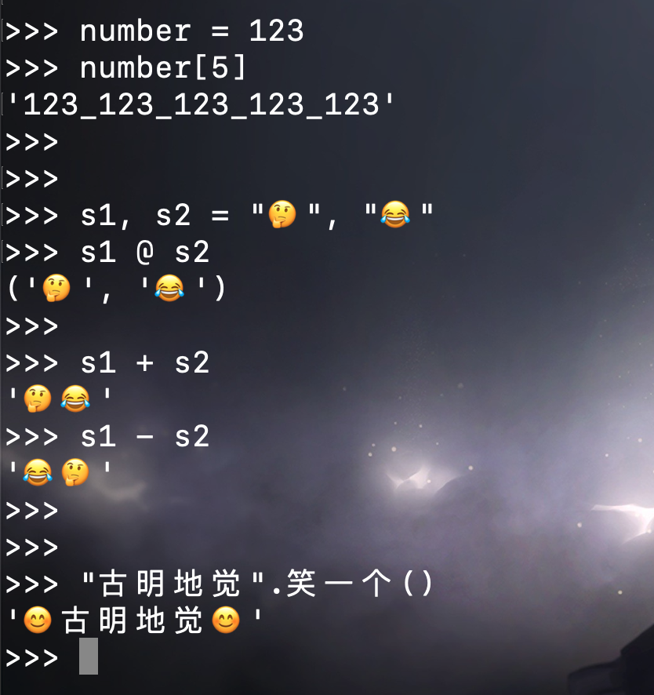
怎么样，是不是很好玩呢？
from unsafe_magic import patch_builtin_class
patch_builtin_class(tuple, "append", lambda self, item: self + (item, ))
t = ()
print(t.append(1).append(2).append(3).append(4)) # (1, 2, 3, 4)
因此 Python 给开发者赋予的权限是非常高的，你可以玩出很多意想不到的新花样。
另外再多说一句，当对象不支持某个操作符的时候，我们能够让它实现该操作符；但如果对象已经实现了某个操作符，那么其逻辑就改不了了，举个栗子：
from unsafe_magic import patch_builtin_class
# str 没有 __div__，我们可以为其实现，此时字符串便拥有了除法的功能
patch_builtin_class(str,
"__div__",
lambda self, other: (self, other))
print("hello" / "world") # ('hello', 'world')
# 但 __add__ 是 str 本身就有的，也就是说字符串本身就可以相加
# 那么此时我们就无法覆盖加法这个操作符了
patch_builtin_class(str,
"__add__",
lambda self, other: (self, other))
print("你" + "好") # 你好
# 上面使用加号，并没有走我们重写之后的 __add__ 方法，因为字符串本身就支持加法运算
# 但也有例外，就是当出现 TypeError 的时候，那么解释器会执行我们重写的方法
# 比如字符串和整数相加会出现 TypeError，因此解释器会执行重写的 __add__
print("你" + 123) # ('你', 123)
# 但如果是调用魔方方法，那么会直接走重写的 __add__
print("你".__add__("好")) # ('你', '好')
不过上述这个问题在 3.6 版本的时候是没有的，操作符会无条件地执行我们重写的魔法方法。但在 3.8 的时候出现了这个现象，至于更高版本的 Python，可以自己测试一下。
小结
以上我们就用 ctypes 玩了一些骚操作，内容还是有点单调，当然你也可以玩的再嗨一些。但是无论如何，一定不要在生产上使用，线上不要出现这种会改变解释器运行逻辑的代码。如果只是为了调试、或者想从实践的层面更深入地了解虚拟机，那么没事可以玩一玩。
欢迎大家关注我的公众号：古明地觉的编程教室。
如果觉得文章对你有所帮助，也可以请作者吃个馒头，Thanks♪(･ω･)ﾉ。
楔子
关于 Python 调用 C 库有很多种方式，通过 ctypes 调用 C 库是最简单的一种方式，因为只对操作系统有要求。比如 Windows 上编译的动态库是 .dll 文件，Linux 上编译的动态库是 .so 文件，只要操作系统一致，那么任何提供了 ctypes 模块的 Python 解释器都可以调用。所以当 Python 和 C 的交互不复杂时一般会使用 ctypes，比如嵌入式设备，可能只是简单调用底层驱动提供的某个接口而已。
再比如我们使用 C 写了一个高性能的算法，然后通过 ctypes 模块进行调用也是可以的。只是 ctypes 具有相应的局限性，就是 C 提供的接口不能太复杂。因为 ctypes 提供的交互能力还是比较有限的，最明显的问题就是不同语言的数据类型不同，一些复杂的交互方式还是比较难做到的，还有多线程的控制问题等等。
举个小例子
首先举个例子演示一下，我们创建一个文件 main.c。
int f() {
return 123;
}
这是个简单到不能再简单的 C 函数，然后将它编译成动态库，编译方式如下：

其中源文件可以指定多个，这里我们将 main.c 编译成 main.dll，那么命令就是：gcc main.c -shared -o main.dll。编译成功之后，通过 ctypes 来进行调用。
import ctypes
# 使用 ctypes 很简单，直接 import 进来
# 然后通过 ctypes.CDLL 或 ctypes.cdll.LoadLibrary 加载动态链接库
lib = ctypes.CDLL("./main.dll")
# 加载之后就得到了动态链接库对象，我们起名为 lib
# 然后通过属性访问的方式去调用里面的函数
print(lib.f()) # 123
# 如果不确定函数是否存在，那么建议使用反射
# 因为函数不存在，通过 . 的方式获取是会抛异常的
f = getattr(lib, "f", None)
if f:
print(f) # <_FuncPtr object at 0x7fc0388bb640>
print(lib.f()) # 123
# 不存在 f2 这个函数，所以得到的结果为 None
f2 = getattr(lib, "f2", None)
print(f2) # None
所以使用 ctypes 去调用动态链接库非常方便，过程很简单：
- 1）通过 ctypes.CDLL 去加载动态库；
- 2）加载动态链接库之后会返回一个对象，我们上面起名为 lib；
- 3）然后可以直接通过 lib 调用里面的函数，但为了程序的健壮性，我们会更倾向于使用反射，确定调用的函数存在后才会调用。
另外上面是以 Windows 系统演示的，Linux 也是一样的，只不过动态库在 Linux 系统上是以 .so 结尾。
此外也可以在 C 中进行打印，举个例子：
#include <stdio.h>
void f(){
printf("hello world\n");
}
然后编译，进行调用。
import ctypes
lib = ctypes.CDLL("./main.dll")
lib.f() # hello world
以上的输出是 C 里面的 printf 打印的。
另外需要注意：ctypes 调用的都是 C 函数，如果你用 C++ 编译器，那么会编译成 C++ 中的函数，而这两种函数是不一样的。比如 C 的函数不支持重载，说白了就是不能定义两个同名的函数；而 C++ 的函数是支持重载的，只要参数类型不一样即可，然后调用的时候会根据传递的参数调用对应的函数。
所以当我们使用 C++ 编译器的时候，需要通过 extern "C" {} 将函数包起来，这样 C++ 编译器在编译的时候会将其编译成 C 的函数。
#include <stdio.h>
#ifdef __cplusplus
extern "C" {
#endif
void f() {
printf("hello world\n");
}
#ifdef __cplusplus
}
#endif
当然我们在介绍 ctypes 时使用的都是 gcc，会编译成 C 的函数，所以后面 extern "C" 的逻辑就不加了。
以上就演示了如何通过 ctypes 模块来调用 C 的动态库，但显然目前还是远远不够的。比如说：
double f() {
return 3.14;
}
函数返回了一个浮点数，那么调用的时候，会得到什么结果呢？来试一下：
import ctypes
lib = ctypes.CDLL(r"./main.dll")
print(lib.f()) # 1374389535
我们看到返回了一个不符合预期的结果，先暂且不纠结它是怎么来的，现在的问题是它返回的为什么不是 3.14 呢？原因是 ctypes 在解析的时候默认是按照整型来解析的，但当前的 C 函数返回的是浮点型，因此函数在调用之前需要显式地指定其返回值类型。
不过在这之前，我们需要先来看看 Python 类型和 C 类型之间的转换关系。
Python 类型与 C 类型之间的转换
使用 ctypes 调用动态链接库，主要是调用库里面使用 C 编写好的函数，但这些函数肯定是需要参数的，还有返回值。那么问题来了，不同语言的变量类型不同，所以 Python 能够直接往 C 编写的函数中传参吗？显然不行，因此 ctypes 提供了大量的类，帮我们将 Python 中的类型转成 C 语言中的类型。
数值类型转换
C 语言的数值类型分为如下：
- int：整型；
- unsigned int：无符号整型；
- short：短整型；
- unsigned short：无符号短整型；
- long：该类型取决于系统，可能是长整型，也可能等同于 int；
- unsigned long：该类型取决于系统，可能是无符号长整型，也可能等同于 unsigned int；
- long long：长整型；
- unsigned long long：无符号长整型；
- float：单精度浮点型；
- double：双精度浮点型；
- long double：长双精度浮点型，此类型的浮点数占 16 字节；
- _Bool：布尔类型；
- ssize_t：等同于长整型；
- size_t：等同于无符号长整型；
和 Python 以及 ctypes 之间的对应关系如下：

下面来演示一下：
import ctypes
# 以下都是 ctypes 提供的类
# 将 Python 的数据传进去，就可以转换为 C 的数据
print(ctypes.c_int(1)) # c_long(1)
print(ctypes.c_uint(1)) # c_ulong(1)
print(ctypes.c_short(1)) # c_short(1)
print(ctypes.c_ushort(1)) # c_ushort(1)
print(ctypes.c_long(1)) # c_long(1)
print(ctypes.c_ulong(1)) # c_ulong(1)
print(ctypes.c_longlong(1)) # c_longlong(1)
print(ctypes.c_ulonglong(1)) # c_ulonglong(1)
print(ctypes.c_float(1.1)) # c_float(1.100000023841858)
print(ctypes.c_double(1.1)) # c_double(1.1)
print(ctypes.c_longdouble(1.1)) # c_double(1.1)
print(ctypes.c_bool(True)) # c_bool(True)
# 相当于 c_longlong 和 c_ulonglong
print(ctypes.c_ssize_t(10)) # c_longlong(10)
print(ctypes.c_size_t(10)) # c_ulonglong(10)
而 C 的数据转成 Python 的数据也非常容易，只需要在此基础上获取 value 属性即可。
import ctypes
print(ctypes.c_int(1024).value) # 1024
print(ctypes.c_int(1024).value == 1024) # True
以上是数值类型，比较简单。
字符类型转换
C 语言的字符类型分为如下：
- char：一个 -128~127 的整数；
- unsigned char：一个 0~255 的整数；
- wchar：一个 unicode 字符；
和 Python 以及 ctypes 之间的对应关系如下：

举个例子：
import ctypes
# 必须传递一个字节，或者一个 int，代表 C 里面的字符
print(ctypes.c_char(b"a")) # c_char(b'a')
print(ctypes.c_char(97)) # c_char(b'a')
# 和 c_char 类似，但是 c_char 既可以接收单个字节、也可以接收整数
# 而这里的 c_byte 只接收整数
print(ctypes.c_byte(97)) # c_byte(97)
# 同样只能传递整数
print(ctypes.c_ubyte(97)) # c_ubyte(97)
# 传递一个 unicode 字符
# 当然 ascii 字符也是可以的，并且不是字节形式
print(ctypes.c_wchar("憨")) # c_wchar('憨')
以上是字符类型。
字符串类型转换
C 的字符串分为以下两种：
- char *：ASCII 字符组成的字符串；
- wchar_t *：宽字符组成的字符串；
对应关系如下：
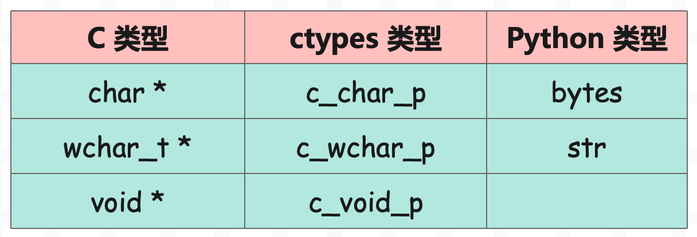
举个例子：
from ctypes import *
# c_char_p 就是 c 里面的字符数组了，可以把它看成是 Python 中的 bytes 对象
# 而里面也要传递一个 bytes 对象，然后返回一个地址
# 下面就等价于 char *s = "hello world";
x = c_char_p(b"hello world")
print(x) # c_char_p(2196869884000)
print(x.value) # b'hello world'
# 直接传递一个字符串，同样返回一个地址
y = c_wchar_p("古明地觉")
print(y) # c_wchar_p(2196868827808)
print(y.value) # 古明地觉
常见的类型就是上面这些，至于其它的类型，比如指针、数组、结构体、回调函数等等，ctypes 也是支持的，我们后面会介绍。
参数传递
下面来看看如何向 C 函数传递参数。
#include <stdio.h>
void test(int a, float f, char *s) {
printf("a = %d, b = %.2f, s = %s\n", a, f, s);
}
一个简单的 C 文件，编译成 dll 之后让 Python 去调用，这里编译之后的文件名还叫做 main.dll。
from ctypes import *
lib = CDLL("./main.dll")
try:
lib.test(1, 1.2, b"hello world")
except Exception as e:
print(e)
# argument 2: <class 'TypeError'>: Don't know how to convert parameter 2
# 我们看到报错了，告诉我们不知道如何转化第二个参数
# 因为 Python 的数据和 C 的数据不一样，所以不能直接传递
# 除了整数之外，其它的数据都需要使用 ctypes 来包装一下
# 另外整数最好也包装一下，这里传入 c_int(1) 和 1 是一样的
lib.test(
c_int(1), c_float(1.2), c_char_p(b"hello world")
) # a = 1, b = 1.20, s = hello world
我们看到完美地打印出来了，再来试试布尔类型。
#include <stdio.h>
void test(_Bool flag)
{
// 布尔类型本质上是一个 int
printf("a = %d\n", flag);
}
布尔类型在 C 里面对应的名字是 _Bool。
import ctypes
from ctypes import *
lib = ctypes.CDLL("./main.dll")
lib.test(c_bool(True)) # a = 1
lib.test(c_bool(False)) # a = 0
# 可以看到 True 被解释成了 1，False 被解释成了 0
# 我们说整数会自动转化
# 而布尔类型继承自整型，所以布尔值也可以直接传递
lib.test(True) # a = 1
lib.test(False) # a = 0
以上就是 Python 向 C 函数传递参数，因为是 C 的函数，所以 Python 的数据不能直接传，需要使用 ctypes 转一下才能传递。
传递可变的字符串
通过调用 c_char_p 即可得到一个 C 的字符串，或者说字符数组，并且在传递之后，C 函数还可以对其进行修改。
#include <stdio.h>
void test(char *s)
{
s[0] = 'S';
printf("%s\n", s);
}
文件名为 main.c，编译成 main.dll。
from ctypes import *
lib = CDLL("./main.dll")
lib.test(c_char_p(b"satori")) # Satori
我们看到小写的字符串，第一个字符变成了大写，但即便能修改我们也不建议这么做，因为 bytes 对象在 Python 中是不能更改的，所以在 C 中也不应该更改。当然不是说不让修改，而是应该换一种方式。
如果需要修改的话，那么不要使用 c_char_p 的方式来传递，而是建议通过 create_string_buffer 来给 C 函数传递可以修改字符的空间。
from ctypes import *
# 传入一个 int，表示创建一个具有固定大小的字符缓存
s = create_string_buffer(10)
# 直接打印就是一个对象
print(s) # <ctypes.c_char_Array_10 object at 0x00...>
# 也可以获取 value 打印它的值，此时是空字节串
print(s.value) # b''
# 并且它还有一个 raw 方法，表示 C 的字符数组
# 由于长度为 10，并且没有内容，所以全部是 \x00，即 C 的 \0
print(s.raw) # b'\x00\x00\x00\x00\x00\x00\x00\x00\x00\x00'
# 还可以查看长度
print(len(s)) # 10
create_string_buffer 如果只传一个 int，那么表示创建对应长度的字符缓存。除此之外，还可以指定字节串，此时的字符缓存大小和指定的字节串长度是一致的：
from ctypes import *
# 直接创建了一个字符缓存
s = create_string_buffer(b"hello")
print(s) # <ctypes.c_char_Array_6 object at 0x000...>
print(s.value) # b'hello'
# 我们知道在 C 中，字符数组是以 \0 作为结束标记的
# 所以结尾会有一个 \0，因为 raw 表示 C 中原始的字符数组
print(s.raw) # b'hello\x00'
# 长度为 6，b"hello" 五个字符再加上 \0 一共 6 个
print(len(s))
当然 create_string_buffer 还可以在指定字节串的同时，指定空间大小。
from ctypes import *
# 如果不指定容量，那么默认和对应的字符数组大小一致
# 但还可以同时指定容量，记得容量要比前面的字节串的长度要大
s = create_string_buffer(b"hello", 10)
print(s) # <ctypes.c_char_Array_10 object at 0x000...>
print(s.value) # b'hello'
# 长度为 10，剩余的 5 个显然是 \0
print(s.raw) # b'hello\x00\x00\x00\x00\x00'
print(len(s)) # 10
由于 C 使用 \0 作为字符串结束标记，因此缓存大小为 10 的 buffer，最多能容纳 9 个有效字符。下面我们来看看如何传递 create_string_buffer：
#include <stdio.h>
int test(char *s)
{
// 变量的形式依旧是 char *s
// 下面的操作相当于把字符数组中索引为 5 到 11 的部分换成 " satori"
s[5] = ' ';
s[6] = 's';
s[7] = 'a';
s[8] = 't';
s[9] = 'o';
s[10] = 'r';
s[11] = 'i';
printf("s = %s\n", s);
}
来测试一下：
from ctypes import *
lib = CDLL("./main.dll")
s = create_string_buffer(b"hello", 20)
lib.test(s) # s = hello satori
此时就成功地修改了，这里的 b"hello" 占五个字节，下一个正好是索引为 5 的地方，然后把索引为 5 到 11 的部分换成对应的字符。但需要注意的是，一定要小心 \0，因为 C 字符串一旦遇到了 \0 就表示这个字符串结束了。
from ctypes import *
lib = CDLL("./main.dll")
# 这里把 "hello" 换成 "hell"，看看会发生什么
s = create_string_buffer(b"hell", 20)
lib.test(s) # s = hell
# 我们看到只打印了 "hell"，这是为什么？
# 再打印一下这个 s.raw
print(s.raw) # b'hell\x00 satori\x00\x00\x00\x00\x00\x00
create_string_buffer 返回的对象是可变的，在将 s 传进去之后被修改了。如果没有传递的话，我们知道它是长这样的：
b'hell\x00\x00\x00\x00\x00\x00\x00\x00\x00\x00\x00\x00\x00\x00\x00\x00'
hell 的后面全部是 C 的 \0，修改之后变成了这样：
b'hell\x00 satori\x00\x00\x00\x00\x00\x00\x00\x00'
我们看到确实是把索引为 5 到 11 的部分变成了 " satori"，但是 C 语言在扫描字符数组的时候一旦遇到了 \0，就表示结束了，而 hell 的下一个字符就是 \0。因此即便后面还有内容也不会输出了，所以直接就只打印了 hell。
另外除了 create_string_buffer 之外，还有一个 create_unicode_buffer，针对于 wchar_t *，用法和 create_string_buffer 类似。
ctypes 获取返回值
通过 ctypes 向动态链接库中的函数传参是没有问题的，但如何拿到返回值呢？之前都是使用 printf 直接打印的，这样显然不行，我们肯定是要拿到返回值去做一些别的事情的。
可能有人觉得在 C 函数中直接 return 不就可以啦，还记得之前演示的返回浮点数的例子吗？明明返回了 3.14，但得到的却是一大长串整数，所以我们需要在调用函数之前告诉 ctypes 返回值的类型。
int test1(int a, int b)
{
int c;
c = a + b;
return c;
}
float test2()
{
return 2.71;
}
编译成 main.dll，测试一下：
from ctypes import *
lib = CDLL("./main.dll")
print(lib.test1(25, 33)) # 58
print(lib.test2()) # -1076719780
我们看到 test1 的结果是正常的，但是 test2 就有问题了，因为默认都会按照整型进行解析，所以 test2 函数的结果肯定是不正确的。
因为 Python 的数据类型和 C 的数据类型是不同的，正如我们传递参数一样，需要使用 ctypes 转化一下。那么在获取返回值的时候，也需要提前使用 ctypes 指定一下返回值到底是什么类型，只有这样才能正确地拿到动态链接库中函数的返回值。
from ctypes import *
lib = CDLL("./main.dll")
print(lib.test1(25, 33)) # 58
# 相当于告诉 ctypes，在解析 test2 函数返回值的时候
# 请按照 c_float 进行解析，然后拿到的就是 Python 的 float
lib.test2.restype = c_float
print(lib.test2()) # 2.7100000381469727
字符串也是同理：
#include <wchar.h>
char * test1()
{
char *s = "hello satori";
return s;
}
wchar_t * test2()
{
// 遇到 wchar_t 的时候，需要导入 wchar.h 头文件
wchar_t *s = L"古明地觉";
return s;
}
测试一下：
from ctypes import *
lib = CDLL("./main.dll")
# 在不指定返回值类型的时候，一律按照整型解析
# 那么拿到的就是 Python 的整数
print(lib.test1()) # 1788100608
# 我们需要指定一下返回的类型，也就是 c_char_p
# 告诉 ctypes 在解析的时候，将 test1 的返回值按照 c_char_p 进行解析
lib.test1.restype = c_char_p
# 然后拿到的就是 bytes 对象，此时就没有问题了
print(lib.test1()) # b'hello satori'
# 同理对于 unicode 也是一样的
# 如果不指定类型，得到的依旧是一个整数
lib.test2.restype = c_wchar_p
print(lib.test2()) # 古明地觉
因此我们就将 Python 的类型和 C 的类型通过 ctypes 关联起来了，传参的时候需要转化，同理获取返回值的时候也要使用 ctypes 来声明一下类型。因为默认是按照整型来解析的，至于返回的整型的值到底是什么？从哪里来的？我们不需要关心，你可以理解为地址、或者某块内存的脏数据，但是不管怎么样，结果肯定是不正确的（如果函数返回的就是整型则除外）。
所以需要提前声明一下返回值的类型，声明方式：lib.CFunction.restype = ctypes类型。lib 就是 ctypes 调用 .dll 或者 .so 得到的动态链接库，而里面的函数则是一个个的 CFunction，然后设置内部的 restype（返回值类型），这样在调用时就可以得到正确的返回值了。
另外即便返回值类型设置的不对，比如：test1 返回一个 char *，但我们将类型设置为 c_float，调用的时候也不会报错，而且得到的也是一个 float，但这个结果肯定是不对的。
from ctypes import *
lib = CDLL("./main.dll")
lib.test1.restype = c_char_p
print(lib.test1()) # b'hello satori'
# 设置为 c_float
lib.test1.restype = c_float
# 获取了不知道从哪里来的脏数据
print(lib.test1()) # 2.5420596244190436e+20
# 另外 ctypes 调用还有一个特点
lib.test2.restype = c_wchar_p
print(
lib.test2(123, c_float(1.35), c_wchar_p("呼呼呼"))
) # 古明地觉
我们看到 test2 是不需要参数的，如果我们传了那么就会忽略掉，依旧能得到正常的返回值。但是不要这么做，因为没准就出问题了，所以还是该传几个参数就传几个参数。
然后还需要注意：C 的 float 和 double 虽然都表示浮点数，但精度不同，两者也不能混用。
#include <math.h>
float test1(int a, int b)
{
float c;
c = sqrt(a * a + b * b);
return c;
}
测试一下：
from ctypes import *
lib = CDLL("./main.dll")
# 得到的结果是一个整数，默认都是按照整型解析的
print(lib.test1(3, 4)) # 1084227584
# 我们需要指定返回值的类型，告诉 ctypes 返回的是一个 c_float
lib.test1.restype = c_float
# 此时结果就是对的
print(lib.test1(3, 4)) # 5.0
# 如果指定为 double 呢？
lib.test1.restype = c_double
# 得到的结果也有问题，总之类型一定要匹配
print(lib.test1(3, 4)) # 5.356796015e-315
# 至于 int 就不用说了，因为默认就是 c_int，所以和第一个结果是一样的
lib.test1.restype = c_int
print(lib.test1(3, 4)) # 1084227584
所以类型一定要匹配，该是什么类型就是什么类型。即便动态库中返回的是 float，我们在 Python 中通过 ctypes 也要指定为 c_float，而不是指定为 c_double，尽管都是浮点数并且 double 的精度还更高，但结果依旧是不正确的。
至于整型就不需要关心了，但即便如此，int、long 也建议不要混用，而且传参的时候最好也进行转化。
给函数传递指针
指针是 C 语言的灵魂，而且绝大部分的 Bug 也都是指针所引起的，那么指针类型在 Python 里面如何表示呢？非常简单，通过 ctypes.POINTER 即可表示 C 的指针类型，比如：
- C 的 int * 可以用 POINTER(c_int) 表示；
- C 的 float * 可以用 POINTER(c_float) 表示；
所以通过 POINTER(类型) 即可表示对应的指针类型，而如果是获取某个对象的指针，可以通过 pointer 函数。
from ctypes import *
# 在 C 里面就相当于，long a = 1024; long *p = &a;
p = pointer(c_long(1024))
print(p) # <__main__.LP_c_long object at 0x7ff3639d0dc0>
print(p.__class__) # <class '__main__.LP_c_long'>
# pointer 可以获取任意类型的指针
print(
pointer(c_float(3.14)).__class__
) # <class '__main__.LP_c_float'>
print(
pointer(c_double(2.71)).__class__
) # <class '__main__.LP_c_double'>
同理，我们也可以通过指针获取指向的值，也就是对指针进行解引用。
from ctypes import *
p = pointer(c_long(123))
# 通过 contents 即可获取指向的值，相当于对指针进行解引用
print(p.contents) # c_long(123)
print(p.contents.value) # 123
# 如果对 p 再使用一次 pointer 函数，那么会获取 p 的指针
# 此时相当于二级指针 long **，所以类型为 LP_LP_c_long
print(
pointer(pointer_p)
) # <__main__.LP_LP_c_long object at 0x7fe6121d0bc0>
# c_long 的三级指针，类型为 LP_LP_LP_c_long
print(
pointer(pointer(pointer_p))
) # <__main__.LP_LP_LP_c_long object at 0x7fb2a29d0bc0>
# 三次解引用，获取对应的值
print(
pointer(pointer(pointer_p)).contents.contents.contents
) # c_long(123)
print(
pointer(pointer(pointer_p)).contents.contents.contents.value
) # 123
除了使用 pointer 函数获取指针之外，还可以使用 byref 函数，那这两者有什么区别呢？很简单，byref 返回的指针相当于右值，而 pointer 返回的指针相当于左值。举个栗子：
// 以整型指针为例：
int num = 123;
int *p = &num
对于上面的例子，如果是 byref，那么结果相当于 &num，拿到的就是一个具体的值。如果是 pointer，那么结果相当于 p。这两者在传递的时候是没有区别的，只是对于 pointer 来说，它返回的是一个左值，我们可以继续拿来做文章。
from ctypes import *
n = c_int(123)
# 拿到变量 n 的指针
p1 = byref(n)
p2 = pointer(n)
# pointer 返回的是左值，我们可以继续做文章
# 比如继续获取指针，此时获取的就是 p2 的指针
print(byref(p2)) # <cparam 'P' (0000023953796888)>
# 但是 p1 不行，因为 byref 返回的是一个右值
try:
print(byref(p1))
except Exception as e:
print(e) # byref() argument must be a ctypes instance, not 'CArgObject'
因此两者的区别就在这里，不过我们在传递的时候是无所谓的，传递哪一个都可以。不过相比 byref，pointer 的功能更强大一些，因此直接使用 pointer 即可。下面实际演示一下：
// 接收两个 float *，返回一个 float *
float *test1(float *a, float *b)
{
// 因为返回指针，所以为了避免被销毁，我们使用 static 静态声明
static float c;
c = *a + *b;
return &c;
}
编译成动态库，调用一下：
from ctypes import *
lib = CDLL("./main.dll")
# 声明返回值类型是 POINTER(c_float)，也就是 float *
lib.test1.restype = POINTER(c_float)
# 别忘了传递指针，因为函数接收的是指针，两种传递方式都可以
res = lib.test1(byref(c_float(3.14)), pointer(c_float(5.21)))
print(res) # <__main__.LP_c_float object at 0x000001FFF1F468C0>
print(type(res)) # <class '__main__.LP_c_float'>
# 这个 res 和调用 pointer() 得到的值的类型是一样的
# 都是 <class '__main__.LP_c_float'>
# 我们调用 contents 即可拿到 ctypes 中的值
# 然后再调用 value 就能拿到 Python 中的值
print(res.contents) # c_float(8.350000381469727)
print(res.contents.value) # 8.350000381469727
因此我们看到，如果返回的是指针类型，可以使用 POINTER(类型) 来声明。也就是说 POINTER 是用来声明指针类型的，而 byref、pointer 则是用来获取指针的。
然后在 C 里面还有 char *、wchar_t *、void *，这几个虽然也是指针，但在 ctypes 里面专门提供了 c_char_p、c_wchar_p、c_void_p 与之对应。由于 c_char_p 和 c_wchar_p 是作为一个单独的类型存在的（虽然也是指针类型），因此和调用 pointer 得到的指针不同，它们没有 contents 属性，直接通过 value 属性即可拿到 Python 中的对象。
声明类型
如果想拿到正确的返回值，那么需要事先声明返回值的类型。而我们传递参数的时候，也是可以事先声明的。
from ctypes import *
lib = CDLL("./main.dll")
# 注意：要指定为一个元组，即便只有一个参数也要指定为元组
lib.test1.argtypes = (POINTER(c_float), POINTER(c_float))
lib.test1.restype = POINTER(c_float)
# 和 restype 不同，argtypes 实际上是可以不要的
# 因为返回值默认按照整型解析，所以我们需要通过 restype 事先声明返回值的类型
# 但是对于 argtypes 来说，由于传参的时候，类型已经体现在参数中了
# 所以 argtypes 即便没有也是可以的
# 因此 argtypes 的作用就类似于静态语言中的类型声明
# 先把类型定好，如果传的类型不对，直接报错
try:
# 这里第二个参数传 c_int
res = lib.test1(byref(c_float(3.21)), c_int(123))
except Exception as e:
# 所以直接就报错了
print(e)
# argument 2: <class 'TypeError'>: expected LP_c_float instance instead of c_long
# 此时正确执行
res1 = lib.test1(byref(c_float(3.21)), byref(c_float(666)))
print(res1.contents.value) # 669.2100219726562
比较简单。
传递数组
下面来看看如何使用 ctypes 传递数组，这里我们只讲传递，不讲返回。因为 C 语言返回数组给 Python 实际上会存在很多问题，比如：返回的数组的内存由谁来管理，不用了之后空间由谁来释放，事实上 ctypes 内部对于返回数组支持的也不是很好。
import ctypes
# C 里面创建数组的方式如下：int a[5] = {1, 2, 3, 4, 5}
# 使用 ctypes 的话
array = (ctypes.c_int * 5)(1, 2, 3, 4, 5)
# (ctypes.c_int * N) 等价于 int a[N]，相当于构造出了一个类型
# 然后再通过调用的方式指定数组的元素即可
# 这里指定元素的时候可以用 Python 的 int
# 会自动转成 C 的 int，当然我们也可以使用 c_int 手动包装
print(len(array)) # 5
print(array) # <__main__.c_int_Array_5 object at 0x7f96276fd4c0>
for i in range(len(array)):
print(array[i], end=" ") # 1 2 3 4 5
print()
array = (ctypes.c_char * 3)(97, 98, 99)
print(list(array)) # [b'a', b'b', b'c']
array = (ctypes.c_byte * 3)(97, 98, 99)
print(list(array)) # [97, 98, 99]
我们看一下数组在 Python 里面的类型，因为数组存储的元素类型为 c_int、数组长度为 5，所以这个数组在 Python 里面的类型就是 c_int_Array_5，而打印的时候则显示为 c_int_Array_5 的实例对象。
可以调用 len 方法获取长度，也可以通过索引的方式获取指定的元素，并且由于内部实现了迭代器协议，因此还能使用 for 循环去遍历，或者使用 list 直接转成列表等等，都是可以的。
另外，数组在作为参数传递的时候会退化为指针，所以长度信息就丢失了，使用 sizeof 计算出来的结果就是一个指针的大小。因此将数组作为参数传递的时候，应该将当前数组的长度信息也传递过去，否则可能会访问非法的内存。
// 字符数组默认是以 \0 作为结束的，可以通过 strlen 来计算长度
// 但是对于整型数组来说我们不知道有多长
// 所以要再指定一个参数 int size，调用函数的时候告诉函数这个数组有多长
int sum(int *arr, int size)
{
int i;
int s = 0;
arr[3] = 10;
arr[4] = 20;
for (i = 0;i < size; i++){
s += arr[i];
}
return s;
}
测试一下：
from ctypes import *
lib = CDLL("./main.dll")
# 创建包含 5 个元素的数组，但是只给 3 个元素
arr = (c_int * 5)(1, 2, 3)
# 在动态链接库中，设置剩余两个元素
# 所以如果没问题的话，结果应该是 1 + 2 + 3 + 10 + 20
print(lib.sum(arr, 5)) # 36
以上就是传递数组相关的内容，但是不建议返回数组。
传递结构体
结构体应该是 C 里面最重要的结构之一了，假设有这样一个结构体：
typedef struct {
int field1;
float field2;
long field3[5];
} MyStruct;
要如何在 Python 里面表示它呢？
import ctypes
# C 的结构体在 Python 里面显然要通过类来实现
# 但这个类一定要继承 ctypes.Structure
class MyStruct(ctypes.Structure):
# 结构体的每一个字段对应一个元组
# 第一个元素为字段名，第二个元素为类型
# 然后多个字段放在一个列表中，并用变量 _fields_ 指定
_fields_ = [
("field1", ctypes.c_int),
("field2", ctypes.c_float),
("field3", ctypes.c_long * 5),
]
# field1、field2、field3 就类似函数参数一样
# 可以通过位置参数、关键字参数指定
s = MyStruct(field1=ctypes.c_int(123),
field2=ctypes.c_float(3.14),
field3=(ctypes.c_long * 5)(11, 22, 33, 44, 55))
print(s) # <__main__.MyStruct object at 0x7ff9701d0c40>
print(s.field1) # 123
print(s.field2) # 3.140000104904175
print(s.field3) # <__main__.c_long_Array_5 object at 0x...>
print(list(s.field3)) # [11, 22, 33, 44, 55]
就像实例化一个普通的类一样，然后也可以像获取实例属性一样获取结构体字段。这里获取之后会自动转成 Python 的类型，比如 c_int 类型会自动转成 int，c_float 会自动转成 float，而数组由于 Python 没有内置，所以直接打印为 c_long_Array_5 的实例对象，我们需要调用 list 转成列表。
然后来测试一下：
struct Girl {
char *name;
int age;
char *gender;
int class;
};
// 接收一个结构体，返回一个结构体
struct Girl test1(struct Girl g){
g.name = "古明地觉";
g.age = 16;
g.gender = "female";
g.class = 2;
return g;
}
我们向 C 中传递一个结构体，然后再返回：
from ctypes import *
lib = CDLL("./main.dll")
class Girl(Structure):
_fields_ = [
("name", c_char_p),
("age", c_int),
("gender", c_char_p),
("class", c_int)
]
# 此时返回值类型就是一个 Girl 类型
# 另外这里类型的名称和 C 中结构体的名字不一样也是可以的
lib.test.restype = Girl
# 传入一个实例，拿到返回值
g = Girl()
res = lib.test(g)
print(res) # <__main__.Girl object at 0x000...>
print(res.name) # b'\xe5\x8f\xa4\xe6\x98\x8e\xe5\x9c\xb0\xe8\xa7\x89'
print(str(res.name, encoding="utf-8")) # 古明地觉
print(res.age) # 16
print(res.gender) # b'female'
print(getattr(res, "class")) # 2
如果是结构体指针呢？
struct Girl {
char *name;
int age;
char *gender;
int class;
};
// 接收一个指针，返回一个指针
struct Girl *test(struct Girl *g){
g -> name = "satori";
g -> age = 16;
g -> gender = "female";
g -> class = 2;
return g;
}
向 C 传递一个结构体指针，然后返回一个结构体指针。
from ctypes import *
lib = CDLL("./main.dll")
class Girl(Structure):
_fields_ = [
("name", c_char_p),
("age", c_int),
("gender", c_char_p),
("class", c_int)
]
# 此时指定为 Girl 类型的指针
lib.test.restype = POINTER(Girl)
# 传入一个 Girl *，拿到返回值
g = Girl()
res = lib.test(pointer(g))
# 但返回的是指针，所以还需要通过 contents 才可以拿到对应的值
print(res.contents.name) # b'satori'
print(res.contents.age) # 16
print(res.contents.gender) # b'female'
print(getattr(res.contents, "class")) # 2
# 另外我们不仅可以通过返回的 res 去访问字段，还可以通过 g 来访问
# 因为传递的是 g 的指针，修改指针指向的内存就相当于修改 g
print(res.contents.name) # b'satori'
因此对于结构体来说，先创建一个结构体实例 g，如果动态链接库的函数中接收的是结构体，那么直接把 g 传进去等价于将 g 拷贝了一份，此时函数中进行任何修改都不会影响原来的 g。
但如果函数中接收的是结构体指针，我们传入 pointer(g) 相当于把 g 的指针拷贝了一份，在函数中修改是会影响 g 的。而返回的 res 也是一个指针，所以除了通过 res.contents 来获取结构体中的值之外，还可以通过 g 来获取。再举个栗子对比一下：
struct Num {
int x;
int y;
};
struct Num test1(struct Num n){
n.x += 1;
n.y += 1;
return n;
}
struct Num *test2(struct Num *n){
n->x += 1;
n->y += 1;
return n;
}
测试一下：
from ctypes import *
lib = CDLL("./main.dll")
class Num(Structure):
_fields_ = [
("x", c_int),
("y", c_int),
]
num = Num(x=1, y=2)
print(num.x, num.y) # 1 2
lib.test1.restype = Num
res = lib.test1(num)
# 我们看到通过 res 得到的结果是修改之后的值
# 但是对于 num 来说没有变
print(res.x, res.y) # 2 3
print(num.x, num.y) # 1 2
# 因为我们将 num 传进去之后，相当于将 num 拷贝了一份
# 所以 res 获取的结果是自增之后的结果，但是 num 还是之前的 num
# 再来试试传递指针，将 pointer(num) 传进去
lib.test2.restype = POINTER(Num)
res = lib.test2(pointer(num))
print(num.x, num.y) # 2 3
print(res.contents.x, res.contents.y) # 2 3
# 我们看到将指针传进去之后，相当于把 num 的指针拷贝了一份
# 然后在函数中修改，相当于修改指针指向的内存，所以会影响外面的 num
在 C 中实现多返回值，一般也是通过传递指针实现的。比如想让一个函数返回三个值，那么就接收三个参数，调用之前先将这几个变量声明好，调用的时候将指针传进去，然后在函数内部修改指针指向的值。当函数调用结束之后，这几个变量的值不就被改变了吗？不就相当于实现了多返回值吗？至于函数本身，可以返回一个 int，如果返回值为 0 代表变量修改成功，返回值为 -1 代表修改失败。
像 Nginx 就是这么做的，对于 C 想要实现多返回值这是最简洁的办法。
另外可能有人好奇，这里的 C 函数直接返回一个指针没有问题吗？答案是没问题，因为指针指向的结构体是在 Python 里面创建的。
回调函数
最后看一下如何在 Python 中表示 C 的函数，首先 C 的函数可以有多个参数，但只有一个返回值。举个栗子：
long add(long *a, long *b) {
return *a + *b;
}
该函数接收两个 long *、返回一个 long，这种函数要如何表示呢？答案是通过 CFUNCTYPE。
from ctypes import *
# 第一个参数是函数的返回值类型，后面是函数的参数类型
# 参数有多少写多少，没有关系，但是返回值只能有一个
# 比如函数返回一个 long，接收两个 long *，所以就是
t = CFUNCTYPE(c_long, POINTER(c_long), POINTER(c_long))
# 如果函数不需要返回值，那么写一个 None 即可，然后得到一个类型 t
# 此时的类型 t 就等同于 C 的 typedef long (*t)(long*, long*);
# 定义一个 Python 函数
# a、b 为 long *，返回值为 c_long
def add(a, b):
return a.contents.value + b.contents.value
# 将我们自定义的函数传进去，就得到了 C 的函数
c_add = t(add)
# C 实现的函数对应的类型在底层是 PyCFunction_Type 类型
print(c_add) # <CFunctionType object at 0x7fa52fa29040>
print(
c_add(pointer(c_long(22)), pointer(c_long(33)))
) # 55
下面实际演示一下，看看如何使用回调函数，说白了就是把一个函数指针作为函数的参数。
int add(int a, int b, int (*f)(int *, int *)){
return f(&a, &b);
}
add 函数返回一个 int，接收两个 int 和一个函数指针。
from ctypes import *
lib = CDLL("./main.dll")
def add(a, b):
return a.contents.value + b.contents.value
t = CFUNCTYPE(c_int, POINTER(c_int), POINTER(c_int))
func = t(add)
# 然后调用，别忘了声明返回值类型，当然这里是 int 就无所谓了
lib.add.restype = c_int
print(lib.add(88, 96, func))
print(lib.add(59, 55, func))
print(lib.add(94, 105, func))
"""
184
114
199
"""
类型转换
然后再说一下类型转换，ctypes 提供了一个 cast 函数，可以将指针的类型进行转换。
from ctypes import *
# cast 的第一个参数接收的必须是某种 ctypes 对象的指针
# 第二个参数是 ctypes 指针类型
# 这里相当于将 long * 转成了 float *
p1 = pointer(c_long(123))
p2 = cast(p1, POINTER(c_float))
print(p2) # <__main__.LP_c_float object at 0x7f91be201dc0>
print(p2.contents) # c_float(1.723597111119525e-43)
指针在转换之后，还是引用相同的内存块，所以整型指针转成浮点型指针之后，打印的结果乱七八糟。当然数组也可以转化，因为数组等价于数组首元素的地址，我们举个栗子：
from ctypes import *
t1 = (c_int * 3)(1, 2, 3)
# 将 int * 转成 long long *
t2 = cast(t1, POINTER(c_longlong))
print(t2[0]) # 8589934593
原来数组元素是 int 类型（4 字节），现在转成了 long long（8 字节），但是内存块并没有变。因此 t2 获取元素时会一次性获取 8 字节，所以 t1[0] 和 t1[1] 组合起来等价于 t2[0]。
from ctypes import *
t1 = (c_int * 3)(1, 2, 3)
t2 = cast(t1, POINTER(c_long))
print(t2[0]) # 8589934593
# 将 32 位整数 1 和 32 位整数 2 组合起来，当成一个 64 位整数
print((2 << 32) + 1) # 8589934593
小结
再次总结一下，ctypes 调用 C 库非常简单，它和 Python 的版本完全无关，也不涉及任何的 Python/C API，只是将 Python 的数据转成 C 的数据然后调用而已，这就要求 C 库的接口不能太复杂。
以 Golang 为例，Python 还可以调用 Golang 编写的动态库，当然 Python 和 Golang 无法直接交互，它们需要以 C 作为媒介。假如 Golang 的一个导出函数的参数是接口类型，那你觉得 Python 有办法调用吗？显然几乎是不可能实现的，因为 Python 没有办法表示 Golang 的接口类型。
因此在调用动态库的时候，库函数内部的逻辑可以很复杂，但是参数和返回值一定要简单，最好是整数、浮点数、字符串之类的。
欢迎大家关注我的公众号：古明地觉的编程教室。
如果觉得文章对你有所帮助，也可以请作者吃个馒头，Thanks♪(･ω･)ﾉ。
楔子
Rust 让 Python 更加伟大，随着 Rust 的流行，反而让 Python 的生产力提高了不少。因为有越来越多的 Python 工具，都选择了 Rust 进行开发，并且性能也优于同类型的其它工具。比如：
- ruff：速度极快的代码分析工具，以及代码格式化工具；
- orjson：一个高性能的 JSON 解析库；
- watchfiles：可以对指定目录进行实时监控；
- polars：和 pandas 类似的数据分析工具；
- pydantic：数据验证工具；
- ......
总之现在 Rust + Python 已经成为了一个趋势，并且 Rust 也提供了一系列成熟好用的工具，比如 PyO3、Maturin，专门为 Python 编写扩展。不过关于 PyO3 我们以后有机会再聊，本篇文章先来介绍如何将 Rust 代码编译成动态库，然后交给 Python 的 ctypes 模块调用。
正如上一篇文章所说，通过 ctypes 调用动态库是最简单的一种方式，它只对操作系统有要求，只要操作系统一致，那么任何提供了 ctypes 模块的 Python 解释器都可以调用。当然这也侧面要求，Rust 提供的接口不能太复杂，因为 ctypes 提供的交互能力还是比较有限的，最明显的问题就是不同语言的数据类型不同，一些复杂的交互方式还是比较难做到的，还有多线程的控制问题等等。
举个例子
下面我们举个例子感受一下 Python 和 Rust 的交互过程，首先通过如下命令创建一个 Rust 项目：
cargo new py_lib --lib
创建完之后修改 Cargo.toml，在里面加入如下内容：
[lib]
# 编译之后的动态库的名称
name = "py_lib"
# 表示编译成一个和 C 语言二进制接口（ABI）兼容的动态链接库
crate-type = ["cdylib"]
cdylib 表示生成动态库，如果想生成静态库，那么就指定为 staticlib。
下面开始编写源代码，在生成项目之后，src 目录下会有一个 lib.rs，它是整个库的入口点。我们的代码比较简单，直接写在 lib.rs 里面即可。
#![allow(unused)] fn main() { #[no_mangle] pub extern "C" fn add(a: i32, b: i32) -> i32 { a + b } #[no_mangle] pub extern "C" fn get_square_root(v: i32) -> f64 { (v as f64).sqrt() } }
在定义函数时需要使用 pub extern "C" 进行声明，它表示创建一个外部可见、遵循 C 语言调用约定的函数，因为 Python 使用的是 C ABI。此外还要给函数添加一个 #[no_mangle] 属性，让编译器在将 Rust 函数导出为 C 函数时，不要改变函数的名称，确保在编译成动态库后，函数名保持不变，否则在调用动态库时就找不到指定的函数了。
Rust 有个名称修饰（Name Mangling）的机制，在跨语言操作时，会修改函数名，增加一些额外信息。这种修改对 Rust 内部使用没有影响，但会干扰其它语言的调用，因此需要通过 #[no_mangle] 将该机制禁用掉。
代码编写完成，我们通过 cargo build 进行编译，然后在 target/debug 目录下就会生成相应的动态库。由于库的名称为 py_lib，那么生成的库文件名就叫 libpy_lib.dylib（我的系统是 macOS）。
当功能全部实现并且测试通过时，最好重新编译一次，并加上 --release 参数。这样可以对代码进行优化，当然编译时间也会稍微长一些，并且生成的库文件会在 target/release 目录中。
编译器生成动态库后，会自动加上一个 lib 前缀（Windows 系统除外），至于后缀则与操作系统有关。
- Windows 系统，后缀名为 .dll；
- macOS 系统，后缀名为 .dylib；
- Linux 系统，后缀名为 .so；
然后通过 Python 进行调用。
import ctypes
# 和调用 C 的动态库的逻辑是一样的
# 因为 Python 不关心动态库是 C 编译的，还是 Rust 编译的
py_lib = ctypes.CDLL("../py_lib/target/debug/libpy_lib.dylib")
print(py_lib.add(11, 22)) # 33
get_square_root = getattr(py_lib, "get_square_root", None)
print(get_square_root) # <_FuncPtr object at 0x7fae30a2b040>
以上就是通过 ctypes 模块来调用 Rust 编译生成的动态库，但显然目前还是远远不够的，比如说：
from ctypes import CDLL
py_lib = CDLL("../py_lib/target/debug/libpy_lib.dylib")
square_root = py_lib.get_square_root(100)
print(square_root) # 0
100 的平方根是 10，但却返回了 0。这是因为 ctypes 在解析返回值的时候默认是按照整型来解析的，但当前的函数返回的是浮点型，因此函数在调用之前需要显式地指定其返回值类型。
不过在这之前，我们需要先来看看 Python 类型和 Rust 类型之间的转换关系。
数值类型
使用 ctypes 调用动态链接库，主要是调用库里面使用 Rust 编写好的函数，但这些函数是需要参数的，还有返回值。而不同语言的变量类型不同，Python 不能直接往 Rust 编写的函数中传参，因此 ctypes 提供了大量的类，帮我们将 Python 的类型转成 Rust 的类型。
与其说转成 Rust 的类型，倒不如说转成 C 的类型，因为 Rust 导出的函数要遵循 C 的调用约定。

下面来测试一下，首先编写 Rust 代码：
#[no_mangle]
pub extern "C" fn add_u32(a: u32) -> u32 {
a + 1
}
#[no_mangle]
pub extern "C" fn add_isize(a: isize) -> isize {
a + 1
}
#[no_mangle]
pub extern "C" fn add_f32(a: f32) -> f32 {
a + 1.
}
#[no_mangle]
pub extern "C" fn add_f64(a: f64) -> f64 {
a + 1.
}
#[no_mangle]
pub extern "C" fn reverse_bool(a: bool) -> bool {
!a
}
编译之后 Python 进行调用。
from ctypes import *
py_lib = CDLL("../py_lib/target/debug/libpy_lib.dylib")
print(py_lib.add_u32(123)) # 124
print(py_lib.add_isize(666)) # 667
try:
print(py_lib.add_f32(3.14))
except Exception as e:
print(e) # <class 'TypeError'>: Don't know how to convert parameter 1
# 可以看到报错了，告诉我们不知道如何转化第 1 个参数
# 因为 Python 的数据和 C 的数据不一样，所以不能直接传递
# 但整数是个例外，除了整数，其它数据都需要使用 ctypes 包装一下
# 另外整数最好也包装一下，因为不同整数之间，精度也有区别
print(py_lib.add_f32(c_float(3.14))) # 1
# 虽然没报错，但是结果不对，结果应该是 3.14 + 1 = 4.14，而不是 1
# 因为 ctypes 调用函数时默认使用整型来解析，但该函数返回的不是整型
# 需要告诉 ctypes，add_f32 函数返回的是 c_float，请按照 c_float 来解析
py_lib.add_f32.restype = c_float
print(py_lib.add_f32(c_float(3.14))) # 4.140000343322754
# f32 和 f64 是不同的类型，占用的字节数也不一样
# 所以 c_float 和 c_double 之间不可混用，虽然都是浮点数
py_lib.add_f64.restype = c_double
print(py_lib.add_f64(c_double(3.14))) # 4.140000000000001
py_lib.reverse_bool.restype = c_bool
print(py_lib.reverse_bool(c_bool(True))) # False
print(py_lib.reverse_bool(c_bool(False))) # True
不复杂，以上我们就实现了数值类型的传递。
字符类型
字符类型有两种，一种是 ASCII 字符，本质上是个 u8；一种是 Unicode 字符，本质上是个 u32。
#![allow(unused)] fn main() { #[no_mangle] pub extern "C" fn get_char(a: u8) -> u8 { a + 1 } #[no_mangle] pub extern "C" fn get_unicode(a: u32) -> u32 { let chr = char::from_u32(a).unwrap(); if chr == '憨' { '批' as u32 } else { a } } }
我们知道 Rust 专门提供了 4 个字节的 char 类型来表示 unicode 字符，但对于外部导出函数来说，使用 char 是不安全的，所以直接使用 u8 和 u32 就行。编译之后，Python 调用：
from ctypes import *
py_lib = CDLL("../py_lib/target/debug/libpy_lib.dylib")
# 指定返回值为 c_byte，会返回一个整数
py_lib.get_char.restype = c_byte
print(py_lib.get_char(97)) # 98
# 指定返回值为 c_char，会返回一个字符（长度为 1 的 bytes 对象）
py_lib.get_char.restype = c_char
print(py_lib.get_char(97)) # b'b'
py_lib.get_unicode.restype = c_wchar
print(py_lib.get_unicode(c_wchar("嘿"))) # 嘿
# 直接传一个 u32 整数也可以，因为 unicode 字符在底层就是个 u32
print(py_lib.get_unicode(ord("憨"))) # 批
以上就是字符类型的操作，比较简单。
字符串类型
再来看看字符串，我们用 Rust 实现一个函数，它接收一个字符串，然后返回大写形式。
#![allow(unused)] fn main() { use std::ffi::{CStr, CString}; use std::os::raw::c_char; #[no_mangle] pub extern "C" fn to_uppercase(s: *const c_char) -> *mut c_char { // 将 *const c_char 转成 &CStr let s = unsafe { CStr::from_ptr(s) }; // 将 &CStr 转成 &str，然后调用 to_uppercase 转成大写，得到 String let s = s.to_str().unwrap().to_uppercase(); // 将 String 转成 *mut char 返回 CString::new(s).unwrap().into_raw() } }
解释一下里面的 CStr 和 CString，在 Rust 中，CString 用于创建 C 风格的字符串（以 \0 结尾），拥有自己的内存。关键的是，CString 拥有值的所有权，当实例离开作用域时，它的析构函数会被调用，相关内存会被自动释放。而 CStr，它和 CString 之间的关系就像 str 和 String 的关系，所以 CStr 一般以引用的形式出现。并且 CStr 没有 new 方法，不能直接创建，它需要通过 from_ptr 方法从原始指针转化得到。
然后指针类型是 *const 和 *mut，分别表示指向 C 风格字符串首字符的不可变指针和可变指针，它们的区别主要在于指向的数据是否可以被修改。如果不需要修改，那么使用 *const 会更安全一些。
我们编写 Python 代码测试一下。
from ctypes import *
py_lib = CDLL("../py_lib/target/debug/libpy_lib.dylib")
s = "hello 古明地觉".encode("utf-8")
# 默认是按照整型解析的，所以不指定返回值类型的话，会得到脏数据
print(py_lib.to_uppercase(c_char_p(s)))
"""
31916096
"""
# 指定返回值为 c_char_p，表示按照 char * 来解析
py_lib.to_uppercase.restype = c_char_p
print(
py_lib.to_uppercase(c_char_p(s)).decode("utf-8")
)
"""
HELLO 古明地觉
"""
从表面上看似乎挺顺利的，但背后隐藏着内存泄露的风险，因为 Rust 里面创建的 CString 还驻留在堆区，必须要将它释放掉。所以我们还要写一个函数，用于释放字符串。
#![allow(unused)] fn main() { use std::ffi::{CStr, CString}; use std::os::raw::c_char; #[no_mangle] pub extern "C" fn to_uppercase(s: *const c_char) -> *mut c_char { let s = unsafe { CStr::from_ptr(s) }; let s = s.to_str().unwrap().to_uppercase(); CString::new(s).unwrap().into_raw() } #[no_mangle] pub extern "C" fn free_cstring(s: *mut c_char) { unsafe { if s.is_null() { return } // 基于原始指针创建 CString，拿到堆区字符串的所有权 // 然后离开作用域，自动释放 CString::from_raw(s) }; } }
然后来看看 Python 如何调用：
from ctypes import *
py_lib = CDLL("../py_lib/target/debug/libpy_lib.dylib")
s = "hello 古明地觉".encode("utf-8")
# Rust 返回的是原始指针，这里必须要拿到它保存的地址，所以指定返回值为 c_void_p
# 如果指定为 c_char_p，那么会直接转成 bytes 对象，这样地址就拿不到了
py_lib.to_uppercase.restype = c_void_p
ptr = py_lib.to_uppercase(c_char_p(s))
# 将 ptr 转成 c_char_p，获取 value 属性，即可得到具体的 bytes 对象
print(cast(ptr, c_char_p).value.decode("utf-8"))
"""
HELLO 古明地觉
"""
# 内容我们拿到了，但堆区的字符串还没有释放，所以调用 free_cstring
py_lib.free_cstring(c_void_p(ptr))
通过 CString 的 into_raw，可以基于 CString 创建原始指针 *mut，然后 Python 将指针指向的堆区数据拷贝一份，得到 bytes 对象。但这个 CString 依旧驻留在堆区，所以 Python 不能将返回值指定为 c_char_p，因为它会直接创建 bytes 对象，这样就拿不到指针了。因此将返回值指定为 c_void_p，调用函数会得到一串整数，这个整数就是指针保存的地址。
我们使用 cast 函数可以将地址转成 c_char_p，获取它的 value 属性拿到具体的字节串。再通过 c_void_p 创建原始指针交给 Rust，调用 CString 的 from_raw，可以基于 *mut 创建 CString，从而将所有权夺回来，然后离开作用域时释放堆内存。
给函数传递指针
如果扩展函数里面接收的是指针，那么 Python 要怎么传递呢？
#![allow(unused)] fn main() { #[no_mangle] pub extern "C" fn add(a: *mut i32, b: *mut i32) -> i32 { // 定义为 *mut，那么可以修改指针指向的值，定义为 *const，则不能修改 if a.is_null() || b.is_null() { 0 } else { let res = unsafe { *a + *b }; unsafe { // 这里将 *a 和 *b 给改掉 *a = 666; *b = 777; } res } } }
定义了一个 add 函数，接收两个 i32 指针，返回解引用后相加的结果。但是在返回之前，我们将 *a 和 *b 的值也修改了。
from ctypes import *
py_lib = CDLL("../py_lib/target/debug/libpy_lib.dylib")
a = c_int(22)
b = c_int(33)
# 计算
print(py_lib.add(pointer(a), pointer(b))) # 55
# 我们看到 a 和 b 也被修改了
print(a, a.value) # c_int(666) 666
print(b, b.value) # c_int(777) 777
非常简单，那么问题来了，能不能返回一个指针呢？答案是当然可以，只不过存在一些注意事项。
由于 Rust 本身的内存安全原则，直接从函数返回一个指向本地局部变量的指针是不安全的。因为该变量的作用域仅限于函数本身，一旦函数返回，该变量的内存就会被回收，从而出现悬空指针。
为了避免这种情况出现，我们应该在堆上分配内存，但这又出现了之前 CString 的问题。Python 在拿到值之后，堆内存依旧驻留在堆区。因此 Rust 如果想返回指针，那么同时还要定义一个释放函数。
#[no_mangle]
pub extern "C" fn add(a: *const i32, b: *const i32) -> *mut i32 {
// 返回值的类型是 *mut i32，所以 res 不能直接返回，因此它是 i32
let res = unsafe {*a + *b};
// 创建智能指针（将 res 装箱），然后返回原始指针
Box::into_raw(Box::new(res))
}
#[no_mangle]
pub extern "C" fn free_i32(ptr: *mut i32) {
if !ptr.is_null() {
// 转成 Box<i32>，同时拿到所有权，在离开作用域时释放堆内存
unsafe { let _ = Box::from_raw(ptr); }
}
}
然后 Python 进行调用：
from ctypes import *
py_lib = CDLL("../py_lib/target/debug/libpy_lib.dylib")
a, b = c_int(22), c_int(33)
# 指定类型为 c_void_p
py_lib.add.restype = c_void_p
# 拿到指针保存的地址
ptr = py_lib.add(pointer(a), pointer(b))
# 将 c_void_p 转成 POINTER(c_int) 类型，也就是 c_int *
# 通过它的 contents 属性拿到具体的值
print(cast(ptr, POINTER(c_int)).contents) # c_int(55)
print(cast(ptr, POINTER(c_int)).contents.value) # 55
# 释放堆内存
py_lib.free_i32(c_void_p(ptr))
这样我们就拿到了指针，并且也不会出现内存泄露。但是单独定义一个释放函数还是有些麻烦的，所以 Rust 自动提供了一个 free 函数，专门用于释放堆内存。举个例子：
#![allow(unused)] fn main() { use std::ffi::{CStr, CString}; use std::os::raw::c_char; #[no_mangle] pub extern "C" fn to_uppercase(s: *const c_char) -> *mut c_char { let s = unsafe { CStr::from_ptr(s) }; let s = s.to_str().unwrap().to_uppercase(); CString::new(s).unwrap().into_raw() } #[no_mangle] pub extern "C" fn add(a: *const i32, b: *const i32) -> *mut i32 { let res = unsafe {*a + *b}; Box::into_raw(Box::new(res)) } }
这是出现过的两个函数，它们的内存都申请在堆区，但我们将内存释放函数删掉了，因为 Rust 自动提供了一个 free 函数，专门用于堆内存的释放。
from ctypes import *
py_lib = CDLL("../py_lib/target/debug/libpy_lib.dylib")
# 返回值类型指定为 c_void_p，表示万能指针
py_lib.to_uppercase.restype = c_void_p
py_lib.add.restype = c_void_p
ptr1 = py_lib.to_uppercase(
c_char_p("Serpen 老师".encode("utf-8"))
)
ptr2 = py_lib.add(
pointer(c_int(123)), pointer(c_int(456))
)
# 函数调用完毕，将地址转成具体的类型的指针
print(cast(ptr1, c_char_p).value.decode("utf-8"))
"""
SERPEN 老师
"""
print(cast(ptr2, POINTER(c_int)).contents.value)
"""
579
"""
# 释放堆内存，直接调用 free 函数即可，非常方便
py_lib.free(c_void_p(ptr1))
py_lib.free(c_void_p(ptr2))
以上我们就实现了指针的传递和返回，但对于整数、浮点数而言，直接返回它们的值即可，没必要返回指针。
传递数组
下面来看看如何传递数组，由于数组在作为参数传递的时候会退化为指针，所以数组的长度信息就丢失了，使用 sizeof 计算出来的结果就是一个指针的大小。因此将数组作为参数传递的时候，应该将当前数组的长度信息也传递过去，否则可能会访问非法的内存。
我们实现一个功能，Rust 接收一个 Python 数组，进行原地排序。
#![allow(unused)] fn main() { use std::slice; #[no_mangle] pub extern "C" fn sort_array(arr: *mut i32, len: usize) { assert!(!arr.is_null()); unsafe { // 得到一个切片 &mut[i32] let slice = slice::from_raw_parts_mut(arr, len); slice.sort(); // 排序 } } }
然后 Python 进行调用：
from ctypes import *
py_lib = CDLL("../py_lib/target/debug/libpy_lib.dylib")
# 一个列表
data = [3, 2, 1, 5, 4, 7, 6]
# 但是列表不能传递，必须要转成 C 数组
# Array_Type 就相当于 C 的 int array[len(data)]
Array_Type = c_int * len(data)
# 创建数组
array = Array_Type(*data)
print(list(array)) # [3, 2, 1, 5, 4, 7, 6]
py_lib.sort_array(array, len(array))
print(list(array)) # [1, 2, 3, 4, 5, 6, 7]
排序实现完成，这里的数组是 Python 传过去的，并且进行了原地修改。那 Rust 可不可以返回数组给 Python 呢？从理论上来说可以，但实际不建议这么做，因为你不知道返回的数组的长度是多少？
如果你真的想返回数组的话，那么可以将数组拼接成字符串，然后返回。
#![allow(unused)] fn main() { use std::ffi::{c_char, CString}; #[no_mangle] pub extern "C" fn create_array() -> *mut c_char { // 筛选出 1 到 50 中，能被 3 整除的数 // 并以逗号为分隔符，将这些整数拼接成字符串 let vec = (1..=50) .filter(|c| *c % 3 == 0) .map(|c| c.to_string()) .collect::<Vec<String>>() .join(","); CString::new(vec).unwrap().into_raw() } }
编译之后交给 Python 调用。
from ctypes import *
py_lib = CDLL("../py_lib/target/debug/libpy_lib.dylib")
# 只要是需要释放的堆内存，都建议按照 c_void_p 来解析
py_lib.create_array.restype = c_void_p
# 此时拿到的就是指针保存的地址，在 Python 里面就是一串整数
ptr = py_lib.create_array()
# 由于是字符串首字符的地址，所以转成 char *，拿到具体内容
print(cast(ptr, c_char_p).value.decode("utf-8"))
"""
3,6,9,12,15,18,21,24,27,30,33,36,39,42,45,48
"""
# 此时我们就将数组拼接成字符串返回了
# 但是堆区的 CString 还在，所以还要释放掉，调用 free 函数即可
# 注意：ptr 只是一串整数，或者说它就是 Python 的一个 int 对象
# 换句话说 ptr 只是保存了地址值，但它不具备指针的含义
# 因此需要再使用 c_void_p 包装一下（转成指针），才能传给 free 函数
py_lib.free(c_void_p(ptr))
因此虽然不建议返回数组，但将数组转成字符串返回也不失为一个办法，当然除了数组，你还可以将更复杂的结构转成字符串返回。
传递结构体
结构体应该是 Rust 里面最重要的结构之一了，它要如何和外部交互呢？
#![allow(unused)] fn main() { use std::ffi::c_char; #[repr(C)] pub struct Girl { pub name: *mut c_char, pub age: u8, } #[no_mangle] pub extern "C" fn create_struct(name: *mut c_char, age: u8) -> Girl { Girl { name, age } }
因为结构体实例要返回给外部，所以它的字段类型必须是兼容的，不能定义 C 理解不了的类型。然后还要设置 #[repr(C)] 属性，来保证结构体的内存布局和 C 是兼容的。
下面通过 cargo build 命令编译成动态库，Python 负责调用。
from ctypes import *
py_lib = CDLL("../py_lib/target/debug/libpy_lib.dylib")
class Girl(Structure):
_fields_ = [
("name", c_char_p),
("age", c_uint8),
]
# 指定 create_struct 的返回值类型为 Girl
py_lib.create_struct.restype = Girl
girl = py_lib.create_struct(
c_char_p("S 老师".encode("utf-8")),
c_uint8(18)
)
print(girl.name.decode("utf-8")) # S 老师
print(girl.age) # 18
调用成功，并且此时是没有内存泄露的。
当通过 FFI 将数据从 Rust 传递到 Python 时，如果传递的是指针，那么会涉及内存释放的问题。但如果传递的是值，那么它会复制一份给 Python，而原始的值（这里是结构体实例）会被自动销毁，所以无需担心。
然后是结构体内部的字段，虽然里面的 name 字段是 *mut c_char，但它的值是由 Python 传过来的，而不是在 Rust 内部创建的，因此没有问题。但如果将 Rust 代码改一下：
#![allow(unused)] fn main() { use std::ffi::{c_char, CString}; #[repr(C)] pub struct Girl { pub name: *mut c_char, pub age: u8, } #[no_mangle] pub extern "C" fn create_struct() -> Girl { let name = CString::new("S 老师").unwrap().into_raw(); let age = 18; Girl { name, age } } }
这时就尴尬了，此时的字符串是 Rust 里面创建的，转成原始指针之后，Rust 将不再管理相应的堆内存（因为 into_raw 将所有权转移走了），此时就需要手动管理堆内存了。
from ctypes import *
py_lib = CDLL("../py_lib/target/debug/libpy_lib.dylib")
class Girl(Structure):
_fields_ = [
("name", c_char_p),
("age", c_uint8),
]
# 指定 create_struct 的返回值类型为 Girl
py_lib.create_struct.restype = Girl
girl = py_lib.create_struct()
print(girl.name.decode("utf-8")) # S 老师
print(girl.age) # 18
# 直接传递 girl 即可，会释放 girl 里面的字段在堆区的内存
py_lib.free(girl)
此时就不会出现内存泄露了，在 free 的时候，将变量 girl 传进去，释放掉内部字段占用的堆内存。当然，Rust 也可以返回结构体指针，通过 Box<T> 实现。
#![allow(unused)] fn main() { #[no_mangle] pub extern "C" fn create_struct() -> *mut Girl { let name = CString::new("S 老师").unwrap().into_raw(); let age = 18; Box::into_raw(Box::new(Girl { name, age })) } }
注意：之前是 name 字段在堆上，但结构体实例在栈上，现在 name 字段和结构体实例都在堆上。然后 Python 调用也很简单，关键是释放的问题。
from ctypes import *
py_lib = CDLL("../py_lib/target/debug/libpy_lib.dylib")
class Girl(Structure):
_fields_ = [
("name", c_char_p),
("age", c_uint8),
]
# 此时返回值类型就变成了 c_void_p
# 当返回指针时，建议将返回值设置为 c_void_p
py_lib.create_struct.restype = c_void_p
# 拿到指针（一串整数）
ptr = py_lib.create_struct()
# 将指针转成指定的类型，而类型显然是 POINTER(Girl)
# 调用 POINTER(T) 的 contents 方法，拿到相应的结构体实例
girl = cast(ptr, POINTER(Girl)).contents
# 访问具体内容
print(girl.name.decode("utf-8")) # S 老师
print(girl.age) # 18
# 释放堆内存，这里的释放分为两步，并且顺序不能错
# 先 free(girl)，释放掉内部字段（name）占用的堆内存
# 然后 free(c_void_p(ptr))，释放掉结构体实例 girl 占用的堆内存
py_lib.free(girl)
py_lib.free(c_void_p(ptr))
不难理解，只是在释放结构体实例的时候需要多留意，如果内部有字段占用堆内存，那么需要先将这些字段释放掉。而释放的方式是将结构体实例作为参数传给 free 函数，然后再传入 c_void_p 释放结构体实例。
回调函数
最后看一下 Python 如何传递函数给 Rust，因为 Python 和 Rust 之间使用的是 C ABI，所以函数必须遵循 C 的标准。
#![allow(unused)] fn main() { // calc 接收三个参数，前两个参数是 *const i32 // 最后一个参数是函数，它接收两个 *const i32，返回一个 i32 #[no_mangle] pub extern "C" fn calc( a: *const i32, b: *const i32, op: extern "C" fn(*const i32, *const i32) -> i32 ) -> i32 { op(a, b) } }
然后看看 Python 如何传递回调函数。
from ctypes import *
py_lib = CDLL("../py_lib/target/debug/libpy_lib.dylib")
# 基于 Python 函数创建 C 函数，通过 @CFUNCTYPE() 进行装饰
@CFUNCTYPE(c_int, POINTER(c_int), POINTER(c_int))
def add(a, b): # a、b 为 int *，通过 .contents.value 拿到具体的值
return a.contents.value + b.contents.value
@CFUNCTYPE(c_int, POINTER(c_int), POINTER(c_int))
def sub(a, b):
return a.contents.value - b.contents.value
@CFUNCTYPE(c_int, POINTER(c_int), POINTER(c_int))
def mul(a, b):
return a.contents.value * b.contents.value
@CFUNCTYPE(c_int, POINTER(c_int), POINTER(c_int))
def div(a, b):
return a.contents.value // b.contents.value
a = pointer(c_int(10))
b = pointer(c_int(2))
print(py_lib.calc(a, b, add)) # 12
print(py_lib.calc(a, b, sub)) # 8
print(py_lib.calc(a, b, mul)) # 20
print(py_lib.calc(a, b, div)) # 5
成功实现了向 Rust 传递回调函数，当然例子举得有点刻意了，比如参数类型指定为 i32 即可，没有必要使用指针。
小结
以上我们就介绍了 Python 如何调用 Rust 编译的动态库，再次强调一下，通过 ctypes 调用动态库是最方便、最简单的方式。它和 Python 的版本无关，也不涉及底层的 C 扩展，它只是将 Rust 编译成 C ABI 用。
因此这也侧面要求，函数的参数和返回值的类型应该是 C 可以表示的类型，比如 Rust 函数不能返回一个 trait 对象。总之在调用动态库的时候，库函数内部的逻辑可以很复杂，但是参数和返回值最好要简单。
如果你发现 Python 代码存在大量的 CPU 密集型计算，并且不怎么涉及复杂的 Python 数据结构，那么不妨将这些计算交给 Rust。
欢迎大家关注我的公众号：古明地觉的编程教室。
如果觉得文章对你有所帮助，也可以请作者吃个馒头，Thanks♪(･ω･)ﾉ。
本篇文章来介绍怎么用 C 去写 Python 扩展，从而将 C 的性能引入到 Python 中。由于这部分内容我曾经介绍过，并整理成了一份 PDF，所以这里直接将链接发出来。
百度网盘链接：https://pan.baidu.com/s/1j2-dz69fv64qxLJW95_bNw
提取码: 2023
阿里网盘链接：https://www.aliyundrive.com/s/JenA6iwYZXb
目前大家可以下载 PDF 然后阅读，后续有空的话，我会将内容重新整理一遍，然后发布在这里。
欢迎大家关注我的公众号：古明地觉的编程教室。
如果觉得文章对你有所帮助，也可以请作者吃个馒头，Thanks♪(･ω･)ﾉ。
1. Cython 是什么？为什么会有 Cython？
作者：古明地觉
公众号：古明地觉的编程教室
公众号二维码：
Cython 估计很多人都听说过，它是用来对 Python 进行加速的。如果你在使用 Python 编程时，有过如下想法，那么 Cython 非常适合你。
- 1）因为某些需求导致不得不编写一些多重嵌套的循环，而这些循环如果用 C 语言来实现会快上百倍，但是不熟悉 C 或者不知道 Python 如何与 C 进行交互；
- 2）因为 Python 解释器的性能原因，如果将 CPython 解释器换成 PyPy，或者干脆换一门语言，比如 Rust，将会得到明显的性能提升，可是换不得。因为你的项目组规定只能使用 Python 语言，解释器只能是 CPython；
- 3）Python 是一门动态语言，但你希望至少在数字计算方面，能够加入可选的静态类型，这样可以极大地加速运算效果。因为单纯的数字相加不太需要所谓的动态性，尤其是当你的程序中出现了大量的计算逻辑时；
- 4）对于一些计算密集型的部分，你希望能够写出一些媲美 Numpy, Scipy, Pandas 的算法；
- 5）你有一些已经用 C、C++ 实现的库，你想直接在 Python 内部更好地调用它们，并且不使用 ctypes、cffi 等模块；
- 6）也许你听说过 Python 和 C 可以无缝结合，通过 C 来为 Python 编写扩展模块，将 Python 代码中性能关键的部分使用 C 进行重写，来达到提升性能的效果。但是这需要你对 Python 解释器有很深的了解，熟悉底层的 Python/C API，而这是一件非常痛苦的事情；
如果你有过上面的一些想法，那么证明你的 Python 水平是很优秀的，然而这些问题总归是要解决的，于是 Cython 便闪亮登场了。注意：Cython 并不是一个什么实验性的项目，它出现的时间已经不短了，并且在生产环境中久经考验，我们完全是有理由学习它的。
下面让我们开始 Cython 的学习之旅吧，悄悄说一句，我个人非常喜欢 Cython 的语法。
1.1 Cython 是什么？
关于 Cython，我们必须要清楚两件事：
1）Cython 是一门编程语言，它将 C 和 C++ 的静态类型系统融合在了 Python 身上。Cython 源文件的后缀是 .pyx，它是 Python 的一个超集，语法是 Python 语法和 C 语法的混血。当然我们说它是 Python 的一个超集，因此你写纯 Python 代码也是可以的。
2）当我们编写完 Cython 代码时，需要先将 Cython 代码翻译成高效的 C 代码，然后再将 C 代码编译成 Python 的扩展模块。
在早期，编写 Python 扩展都是拿 C 去写，但是这对开发者有两个硬性要求：一个是熟悉 C，另一个是要熟悉解释器提供的 C API，这对开发者是一个非常大的挑战。此外，拿 C 编写代码，开发效率也非常低。
而 Cython 的出现则解决了这一点，Cython 和 Python 的语法非常相似，我们只需要编写 Cython 代码，然后再由 Cython 编译器将 Cython 代码翻译成 C 代码即可。所以从这个角度上说，拿 C 写扩展和拿 Cython 写扩展是等价的。
至于如何将 Cython 代码翻译成 C 代码，则依赖于相应的编译器，这个编译器本质上就是 Python 的一个第三方模块。它就相当于是一个翻译官，既然用 C 写扩展是一件痛苦的事情，那就拿 Cython 去写，写完了再帮你翻译成 C。
因此 Cython 的强大之处就在于它将 Python 和 C 结合了起来，可以让你像写 Python 代码一样的同时还可以获得 C 的高效率。所以我们看到 Cython 相当于是高级语言 Python 和低级语言 C 之间的一个融合，因此有人也称 Cython 是 "克里奥尔编程语言"（creole programming language）。
克里奥尔人是居住在西印度群岛的欧洲人和非洲人的混血儿，以此来形容 Cython 也类似于一个（Python 和 C 的）混血儿。
1.2 为什么要有 Cython？
Python 和 C 语言大相径庭，为什么要将它们融合在一起呢？答案是：因为这两者并不是对立的，而是互补的。
Python 是高阶语言、动态、易于学习，并且灵活。但这些优秀的特性是需要付出代价的，因为 Python 的动态性、以及它是解释型语言，导致其运行效率比静态编译型语言慢了好几个数量级。
而 C 语言是最古老的静态编译型语言之一，并且至今也被广泛使用。从时间来算的话，其编译器已有半个世纪的历史，在性能上做了足够的优化，因此 C 语言是非常低级、同时又非常强大的。然而不同于 Python 的是，C 语言没有提供保护措施（没有 GC、容易内存泄露），以及使用起来很不方便。
所以两个语言都是主流语言，只是特性不同使得它们被应用在了不同的领域。而 Cython 的美丽之处就在于：它将 Python 语言丰富的表达能力、动态机制和 C 语言的高性能汇聚在了一起，并且代码写起来仍然像写 Python 一样。
注意：除了极少数的例外，Python 代码（2.x和3.x版本）已经是有效的 Cython 代码，因为 Cython 可以看成是 Python 的超集。并且 Cython 在 Python 语言的基础上添加了一些少量的关键字来更好地开发 C 的类型系统，从而允许 Cython 编译器生成高效的 C 代码。如果你已经知道 Python 并且对 C 或 C++ 有一定的基础了解，那么你可以直接学习 Cython，无需再学习其它的接口语言。
另外，我们其实可以将 Cython 当成两个身份来看待：
- 1）如果将 Cython 翻译成 C，那么可以看成 Cython 的 '阴'；
- 2）如果将 Python 作为胶水连接 C 或者 C++，那么可以看成是 Cython 的 '阳'。
我们可以从需要高性能的 Python 代码开始，也可以从需要优化 Python 接口的 C、C++ 开始，而我们这里是为了学习 Cython，因此显然选择前者。为了加速 Python 代码，Cython 将使用可选的静态类型声明并通过算法来实现大量的性能提升，尤其是静态类型系统，这是实现高性能的关键。
1.3 Cython 和 CPython 的区别？
关于 Cython，最让人困惑的就是它和 CPython 之间的关系，但需要强调的是这两者是完全不同的。
首先 Python 是一门语言，它有自己的语法规则，我们按照 Python 语言规定的语法规则所编写的代码就是 Python 源代码。但源代码只是一个或多个普通的文本文件，我们需要使用 Python 语言对应的解释器来执行它。
而 Python 解释器也会按照同样的语法规则来对我们编写的 Python 源代码进行分词、语法解析等等，如果我们编写的代码不符合 Python 的语法规则，那么会报出语法错误，也就是 SyntaxError。如果符合语法规范的话，那么会顺利地生成抽象语法树（Abstract Syntax Tree，简称 AST），然后将 AST 编译成指令集合，也就是所谓的字节码（bytes code），最后再执行字节码。
所以 Python 源代码是需要 Python 解释器来操作的，如果我们想做一些事情的话，光写成源代码是不行的，必须要由 Python 解释器将我们的代码解释成机器可以识别的指令进行执行才可以。而 CPython 正是 Python 语言对应的解释器，并且它也是官方实现的标准解释器，同时还是使用最广泛的一种解释器。基本上我们使用的解释器都是 CPython，也就是从官网下载、然后安装之后所得到的。
标准解释器 CPython 是由 C 语言实现的，除了 CPython 之外还有 Jython（Java实现的 Python 解释器）、PyPy（Python 语言实现的 Python 解释器）等等。总之设计出一门语言，还要有相应的解释器才可以；至于编译型语言，则是对应的编译器。
最后重点来了，我们说 CPython 解释器是由 C 实现的，它给 Python 语言提供了 C 级别的接口，也就是熟知的 Python/C API。比如：Python 的列表，底层对应的是 PyListObject；字典则对应 PyDictObject，等等等等。
所以当我们在 Python 中创建一个列表，那么 CPython 在执行的时候，就会在底层创建一个 PyListObject。因为 CPython 是用 C 来实现的，最终肯定是将 Python 代码翻译成 C 级别的代码，然后再变成机器码交给 CPU 执行。
而 Cython 也是如此，Cython 代码也要被翻译成 C 代码，然后 C 代码再变成扩展（本质上也是机器码），导入之后直接执行，而无需动态解释。因此 Cython 是一门语言，它并不是 Python 解释器的另一种实现，它的地位和 CPython 不是等价的，不过和 Python 是平级的。
总结：Cython 是一门语言，可以通过 Cython 源代码生成高效的 C 代码，再将 C 代码编译成扩展模块，同样需要 CPython 来进行调用。
以上我们就解释了什么是 Cython，以及为什么需要 Cython。下面我们来比较一下 Cython、Python、C 扩展、还有原生的 C 语言之间的效率差异。通过一点点地深入了解，你一定会发现 Cython 的魅力。
2. 比较一下 Python、C、C 扩展、Cython 之间的差异
作者：古明地觉
公众号：古明地觉的编程教室
公众号二维码：
我们以简单的斐波那契数列为例，来测试一下它们执行效率的差异。
Python 代码：
def fib(n):
a, b = 0.0, 1.0
for i in range(n):
a, b = a + b, a
return a
C 代码：
double cfib(int n) {
int i;
double a=0.0, b=1.0, tmp;
for (i=0; i<n; ++i) {
tmp = a; a = a + b; b = tmp;
}
return a;
}
上面便是 C 实现的一个斐波那契数列，可能有人好奇为什么我们使用浮点型，而不是整型呢？答案是 C 的整型是有范围的，所以我们使用 double，而且 Python 的 float 在底层对应的是 PyFloatObject、其内部也是通过 double 来存储的。
C 扩展：
然后是 C 扩展，注意：C 扩展不是我们的重点，写 C 扩展和写 Cython 本质是一样的，都是为 Python 编写扩展模块，但是写 Cython 绝对要比写 C 扩展简单的多。
#include "Python.h"
double cfib(int n) {
int i;
double a=0.0, b=1.0, tmp;
for (i=0; i<n; ++i) {
tmp = a; a = a + b; b = tmp;
}
return a;
}
static PyObject *fib(PyObject *self, PyObject *n) {
if (!PyLong_CheckExact(n)) {
wchar_t *error = L"函数 fib 需要接收一个整数";
PyErr_SetObject(PyExc_ValueError,
PyUnicode_FromWideChar(error, wcslen(error)));
return NULL;
}
double result = cfib(PyLong_AsLong(n));
return PyFloat_FromDouble(result);
}
static PyMethodDef methods[] = {
{"fib",
(PyCFunction) fib,
METH_O,
"这是 fib 函数"},
{NULL, NULL, 0, NULL}
};
static PyModuleDef module = {
PyModuleDef_HEAD_INIT,
"c_extension",
"这是模块 c_extension",
-1,
methods,
NULL, NULL, NULL, NULL
};
PyMODINIT_FUNC PyInit_c_extension(void) {
return PyModule_Create(&module);
}
可以看到，如果是写 C 扩展，即便一个简单的斐波那契，都是非常复杂的事情。
Cython 代码：
最后看看如何使用 Cython 来编写斐波那契，你觉得使用 Cython 编写的代码应该是一个什么样子的呢？
def fib(int n):
cdef int i
cdef double a = 0.0, b = 1.0
for i in range(n):
a, b = a + b, a
return a
怎么样，Cython 代码和 Python 代码是不是很相似呢？虽然我们现在还没有正式学习 Cython 的语法，但你也应该能够猜到上面代码的含义是什么。我们使用 cdef 关键字定义了一个 C 级别的变量，并声明了它们的类型。
Cython 代码也是要编译成扩展模块之后，才能被解释器识别，所以它需要先被翻译成 C 的代码，然后再编译成扩展模块。再次说明，写 C 扩展和写 Cython 本质上没有什么区别，Cython 代码也是要被翻译成 C 代码的。
但很明显，写 Cython 比写 C 扩展要简单很多，如果编写的 Cython 代码质量很高，那么翻译出来的 C 代码的质量同样很高，而且在翻译的过程中还会自动进行最大程度的优化。但如果是手写 C 扩展，那么一切优化都要开发者手动去处理，更何况在功能复杂的时候，写 C 扩展本身就是一件让人头疼的事情。
2.1 Cython 为什么能够加速？
观察一下 Cython 代码，和纯 Python 的斐波那契相比，我们看到区别貌似只是事先规定好了变量 i、a、b 的类型而已，关键是为什么这样就可以起到加速的效果呢（虽然还没有测试，但速度肯定会提升的，否则就没必要学 Cython 了）。
但是原因就在这里，因为 Python 中所有的变量都是一个泛型指针 PyObject *，而 PyObject（C 的一个结构体）内部有两个成员。
- ob_refcnt：保存对象的引用计数；
- ob_type：保存对象类型的指针。
不管是整数、浮点数、字符串、元组、字典，亦或是其它的什么，所有指向它们的变量都是一个 PyObject *。当进行操作的时候，首先要通过 -> ob_type 来获取对应类型的指针，再进行转化。
比如 Python 代码中的 a 和 b，我们知道无论进行哪一层循环，结果指向的都是浮点数，但是解释器不会做这种推断。每一次相加都要进行检测，判断到底是什么类型并进行转化；然后执行加法的时候，再去找内部的 __add__ 方法，将两个对象相加，创建一个新的对象；执行结束后再将这个新对象的指针转成 PyObject *，然后返回。
并且 Python 的对象都是在堆上分配空间，再加上 a 和 b 不可变，所以每一次循环都会创建新的对象，并将之前的对象给回收掉。
以上种种都导致了 Python 代码的执行效率不可能高，虽然 Python 也提供了内存池以及相应的缓存机制，但显然还是架不住效率低。
至于 Cython 为什么能加速，我们后面会慢慢聊。
2.2 效率差异
那么它们之间的效率差异是什么样的呢？我们用一个表格来对比一下：
提升的倍数，指的是相对于纯 Python 来说在效率上提升了多少倍。
第二列是 fib(0)，显然它没有真正进入循环，fib(0) 测量的是调用一个函数所需要花费的开销。而倒数第二列 "循环体耗时" 指的是执行 fib(90) 的时候，排除函数调用本身的开销，也就是执行内部循环体所花费的时间。
整体来看，纯 C 语言编写的斐波那契，毫无疑问是最快的，但是这里面有很多值得思考的地方，我们来分析一下。
纯 Python
众望所归，各方面都是表现最差的那一个。从 fib(0) 来看，调用一个函数要花 590 纳秒，和 C 相比慢了这么多，原因就在于 Python 调用一个函数的时候需要创建一个栈帧，而这个栈帧是分配在堆上的，而且结束之后还要涉及栈帧的销毁等等。至于 fib(90)，显然无需分析了。
纯 C
显然此时没有和 Python 运行时的交互，因此消耗的性能最小。fib(0) 表明了，C 调用一个函数，开销只需要 2 纳秒；fib(90) 则说明执行一个循环，C 比 Python 快了将近80倍。
C 扩展
C 扩展是干什么的上面已经说了，就是使用 C 来为 Python 编写扩展模块。我们看一下循环体耗时，发现 C 扩展和纯 C 是差不多的，区别就是函数调用上花的时间比较多。原因就在于当我们调用扩展模块的函数时，需要先将 Python 的数据转成 C 的数据，然后用 C 函数计算斐波那契数列，计算完了再将 C 的数据转成 Python 的数据。
所以 C 扩展本质也是 C 语言，只不过在编写的时候还需要遵循 CPython 提供的 API 规范，这样就可以将 C 代码编译成 pyd 文件，直接让 Python 来调用。从结果上看，和 Cython 做的事情是一样的。但是还是那句话，用 C 写扩展，本质上还是写 C，而且还要熟悉底层的 Python/C API，难度是比较大的。
Cython
单独看循环体耗时的话，纯 C 、C 扩展、Cython 都是差不多的，但是编写 Cython 显然是最方便的。而我们说 Cython 做的事情和 C 扩展本质是类似的，都是为 Python 提供扩展模块，区别就在于：一个是手动写 C 代码，另一个是编写 Cython 代码、然后再自动翻译成 C 代码。所以对于 Cython 来说，将 Python 的数据转成 C 的数据、进行计算，然后再转成 Python 的数据返回，这一过程也是无可避免的。
但是我们看到 Cython 在函数调用时的耗时相比 C 扩展却要少很多，主要是 Cython 生成的 C 代码是经过高度优化的。不过说实话，函数调用花的时间不需要太关心，内部代码块执行所花的时间才是我们需要注意的。当然啦，如何减少函数调用本身的开销，我们后面也会说。
2.3 Python 的 for 循环为什么这么慢？
通过循环体耗时我们看到，Python 的 for 循环真的是出了名的慢，那么原因是什么呢？来分析一下。
1. Python 的 for 循环机制
Python 在遍历一个可迭代对象的时候，会先调用可迭代对象内部的 __iter__ 方法得到其对应的迭代器；然后再不断地调用迭代器的 __next__ 方法，将值一个一个的迭代出来，直到迭代器抛出 StopIteration 异常，for 循环捕捉，终止循环。
而迭代器是有状态的，Python 解释器需要时刻记录迭代器的迭代状态。
2. Python 的算数操作
这一点我们上面其实已经提到过了，Python 由于自身的动态特性，使得其无法做任何基于类型的优化。
比如：循环体中的 a + b，这个 a、b 指向的可以是整数、浮点数、字符串、元组、列表，甚至是我们实现了魔法方法 __add__ 的类的实例对象，等等等等。
尽管我们知道是浮点数，但是 Python 不会做这种假设，所以每次执行 a + b 的时候，都会检测其类型到底是什么？然后判断内部是否有 __add__ 方法，有的话则以 a 和 b 为参数进行调用，将 a 和 b 指向的对象相加。计算出结果之后，再将其指针转成 PyObject * 返回。
而对于 C 和 Cython 来说，在创建变量的时候就事先规定了类型为 double，不是其它的，因此编译之后的 a + b 只是一条简单的机器指令。这对比下来，Python 尼玛能不慢吗。
3. Python 对象的内存分配
Python 的对象是分配在堆上面的，因为 Python 对象本质上就是 C 的 malloc 函数为结构体在堆区申请的一块内存。在堆区进行内存的分配和释放需要付出很大的代价，而栈则要小很多，并且它是由操作系统维护的，会自动回收，效率极高，栈上内存的分配和释放只是动一动寄存器而已。
但堆显然没有此待遇，而恰恰 Python 的对象都分配在堆上，尽管 Python 引入了内存池机制使得其在一定程度上避免了和操作系统的频繁交互，并且还引入了小整数对象池、字符串的 intern 机制，以及缓存池等。
但事实上，当涉及到对象（任意对象、包括标量）的创建和销毁时，都会增加动态分配内存、以及 Python 内存子系统的开销。而 float 对象又是不可变的，因此每循环一次都会创建和销毁一次，所以效率依旧是不高的。
而 Cython 分配的变量（当类型是 C 里面的类型时），它们就不再是指针了（Python 的变量都是指针），对于当前的 a 和 b 而言就是分配在栈上的双精度浮点数。而栈上分配的效率远远高于堆，因此非常适合 for 循环，所以效率要比 Python 高很多。另外不光是分配，在寻址的时候，栈也要比堆更高效。
所以在 for 循环方面，C 和 Cython 要比纯 Python 快了几个数量级，这并不是奇怪的事情，因为 Python 每次迭代都要做很多的工作。
2.4 什么时候使用 Cython？
我们看到在 Cython 代码中，只是添加了几个 cdef 就能获得如此大的性能改进，显然这是非常让人振奋的。但是，并非所有的 Python 代码在使用 Cython 编写时，都能获得巨大的性能改进。
我们这里的斐波那契数列示例是刻意的，因为里面的数据是绑定在 CPU 上的，运行时都花费在处理 CPU 寄存器的一些变量上，而不需要进行数据的移动。如果此函数做的是如下工作：
- 内存密集，比如给大数组添加元素；
- I/O 密集，比如从磁盘读取大文件；
- 网络密集，比如从 FTP 服务器下载文件；
那么 Python，C，Cython 之间的差异可能会显著减少（对于存储密集操作），甚至完全消失（对于 I/O 密集或网络密集操作）。
当提升 Python 程序性能是我们的目标时，Pareto 原则对我们帮助很大，即：程序百分之 80 的运行耗时是由百分之 20 的代码引起的。但如果不进行仔细的分析，那么是很难找到这百分之 20 的代码的。因此我们在使用 Cython 提升性能之前，分析整体业务逻辑是第一步。
如果我们通过分析之后，确定程序的瓶颈是由网络 IO 所导致的，那么我们就不能期望 Cython 可以带来显著的性能提升。因此在你使用 Cython 之前，有必要先确定到底是哪种原因导致程序出现了瓶颈。所以尽管 Cython 是一个强大的工具，但前提是它必须应用在正确的道路上。
另外 Cython 将 C 的类型系统引入进了 Python，所以 C 的数据类型的限制也是我们需要关注的。我们知道，Python 的整数不受长度的限制，但 C 的整数是受到限制的，这意味着它们不能正确地表示无限精度的整数。
不过 Cython 的一些特性可以帮助我们捕获这些溢出，总之最重要的是：C 数据类型的速度比 Python 数据类型快，但是会受到限制导致其不够灵活和通用。从这里我们也能看出，在速度以及灵活性、通用性上面，Python 选择了后者。
此外，思考一下 Cython 的另一个特性：连接外部代码。假设起点不是 Python，而是 C/C++，我们希望使用 Python 将多个 C/C++ 模块进行连接。而 Cython 理解 C 和 C++ 的声明，并且它能生成高度优化的代码，因此更适合作为连接的桥梁。
2.5 小结
到目前为止，只是介绍了一下 Cython，并且主要讨论了它的定位，以及和 Python、C 之间的差异。至于如何使用 Cython 加速 Python，如何编写 Cython 代码、以及它的详细语法，我们将后续介绍。
总之，Cython 是一门成熟的语言，它是为 Python 而服务的。Cython 代码不能够直接拿来执行，因为它不符合 Python 的语法规则。
我们使用 Cython 的方式是：先将 Cython 代码翻译成 C 代码，再将 C 代码编译成扩展模块（pyd 文件），然后在 Python 代码中导入它、调用里面的功能方法，这是我们使用 Cython 的正确途径、当然也是唯一的途径。
比如我们上面用 Cython 编写的斐波那契，如果直接执行的话是会报错的，因为 cdef 明显不符合 Python 的语法规则。所以 Cython 代码需要编译成扩展模块，然后在普通的 py 文件中被导入，而这么做的意义就在于可以提升运行速度。因此 Cython 代码应该都是一些 CPU 密集型的代码，不然效率很难得到大幅度提升。
所以在使用 Cython 之前，最好先仔细分析一下业务逻辑，或者暂时先不用 Cython，直接完全使用 Python 编写。编写完成之后开始测试、分析程序的性能，看看有哪些地方耗时比较严重，但同时又是可以通过静态类型的方式进行优化的。找出它们，使用 Cython 进行重写，编译成扩展模块，然后调用扩展模块里面的功能。
那么接下来，我们就来说一说如何编译 Cython 代码。
3. 编译并运行 Cython 代码的几种方式
作者：古明地觉
公众号：古明地觉的编程教室
公众号二维码：
Python 和 C、C++ 之间的一个最重要的差异就是 Python 是解释型语言，而 C、C++ 是编译型语言。如果开发 Python 程序，那么在修改代码之后可以立刻运行，而 C、C++ 则需要一个编译步骤。编译一个规模比较大的 C、C++ 程序，可能会花费几个小时的时间；而使用 Python 则可以让我们进行更敏捷的开发，从而更具有生产效率。
所以在开发游戏的时候，都会引入类似 Lua、Python 之类的脚本语言。特别是手游，脚本语言是必不可少的。
而 Cython 同 C、C++ 类似，在源代码运行之前也需要一个编译的步骤，不过这个编译可以是显式的，也可以是隐式的。如果是显式，那么在使用之前需要提前手动编译好；如果是隐式，那么会在使用的时候自动编译。
而自动编译 Cython 的一个很棒的特性就是它使用起来和纯 Python 是差不多的，但无论是显式还是隐式，我们都可以将 Python 的一部分（计算密集）使用 Cython 重写。因此 Cython 的编译需求可以达到最小化，没有必要将所有的代码都用 Cython 编写，而是将那些需要优化的代码使用 Cython 编写即可。
那么本次就来介绍编译 Cython 代码的几种方式，并结合 Python 使用。因为我们说 Cython 是为 Python 提供扩展模块，最终还是要通过 Python 解释器来调用的。
而编译 Cython 有以下几个选择：
- Cython 代码可以在 IPython 解释器中进行编译，并交互式运行；
- Cython 代码可以在导入的时候自动编译；
- Cython 代码可以通过类似于 Python 内置模块 disutils 的编译工具进行独立编译；
- Cython 代码可以被继承到标准的编译系统，例如：make、CMake、SCons；
这些选择可以让我们在几个特定的场景中应用 Cython，从一端的快速交互式，探索到另一端的快速构建。
但无论是哪一种编译方式，从 Cython 代码到 Python 可以导入和使用的扩展模块都需要经历两个步骤。在我们讨论每种编译方式的细节之前，需要了解一下这两个步骤到底在做些什么。
3.1 编译步骤
因为 Cython 是 Python 的超集，所以 Python 解释器无法直接运行 Cython 代码，那么如何才能将 Cython 代码变成 Python 解释器可以识别的有效代码呢？
- 1）由 Cython 编译器负责将 Cython 代码转换成经过优化并且依赖当前平台的 C 代码；
- 2）使用标准 C 编译器将第一步得到的 C 代码进行编译并生成标准的扩展模块，并且这个扩展模块是依赖特定平台的。如果是 Linux 或者 Mac OS，那么得到的扩展模块的后缀名为 .so，如果是 Windows ，那么得到的扩展模块的后缀名为 .pyd（本质上是一个 DLL 文件）；
不管是什么平台，最终得到的都会是一个成熟的 Python 扩展模块，它是可以直接被 Python 解释器识别并 import 的。
Cython 编译器是一种源到源的编译器，并且生成的扩展模块也是经过高度优化的，因此由 Cython 生成的 C 代码编译得到的扩展模块， 比我们手写的 C 代码编译得到的扩展模块运行的要快，并不是一件稀奇的事情。因为 Cython 生成的 C 代码经过高度精炼，所以大部分情况下比手写所使用的算法更优，而且 Cython 生成的 C 代码支持所有的通用 C 编译器。
所以 Cython 和 C 扩展本质上干的事情是一样的，都是将符合 Python/C API 的 C 代码编译成 Python 扩展模块。只不过写 Cython 的话，我们不需要直接面对 C，Cython 编译器会自动将 Cython 代码翻译成 C 代码，然后我们再将其编译成扩展模块。
因此两者本质是一样的，只不过 C 比较复杂，而且难编程；但是 Cython 简单，语法本来就和 Python 很相似，所以我们选择编写 Cython，然后让 Cython 编译器帮我们把 Cython 代码翻译成 C 的代码。而且重点是得到的 C 代码是经过优化的，如果我们能写出很棒的 Cython 代码，那么也会得到同样高质量的 C 代码。
3.2 安装环境
编译 Cython 代码有两个步骤：先将它翻译成 C 代码，然后将 C 代码编译成扩展模块。要实现这两个步骤需要我们确保机器上有 C 编译器以及 Cython 编译器，而不同的平台有不同的选择。
C 编译器
Linux 和 Mac OS 无需多说，因为它们都自带 gcc，但是注意：如果是 Linux 的话，我们还需要安装 python3-devel。安装也很简单，以 CentOS 为例，直接 yum install python3-devel 即可。
至于 Windows，可以下载一个 Visual Studio，但是那个玩意比较大。如果不想下载 VS 的话，那么可以选择安装一个 MinGW 并设置到环境变量中，至于下载方式可以去官网进行下载。

我这里已经配置好了，包括 MinGW 和 Visual Studio。
Cython 编译器
安装 Cython 编译器的话，直接 pip install Cython 即可。因此我们看到 Cython 编译器只是 Python 的一个第三方包，它的作用就是对 Cython 代码进行解析，然后生成 C 代码。因此 Cython 编译器想要运行，同样需要借助 CPython 解释器。
from Cython import __version__
print(__version__) # 0.29.14
如果能够正常执行，那么证明安装成功。
disutils
有了 Cython 编译器，我们就可以生成 C 代码了；有了 C 编译器，我们就能基于 C 代码生成扩展模块了。但是第二步比较麻烦，因为要输入的命令参数非常多，而 Python 有一个标准库 disutils，专门用来构建、打包、分发 Python 工程，可以方便我们编译。
disutils 有一个对我们非常有用的特性，就是它可以借助 C 编译器将 C 源码编译成扩展模块，并且 disutils 是自带的，考虑了平台、架构、Python 版本等因素，因此我们在任意地方使用 disutils 都可以得到扩展模块。
那么废话不多说，下面就来看看如何编译。
3.3 手动编译 Cython 代码
先来编写 Cython 源文件，还以斐波那契数列为例，文件就叫 fib.pyx。Cython 源文件的后缀，以 .pyx 结尾。
def fib(n):
"""这是一个扩展模块"""
cdef int i
cdef double a=0.0, b=1.0
for i in range(n):
a, b = a + b, a
return a
然后我们对其进行编译，首先在当前目录中再创建一个 setup.py，里面写上编译相关的代码：
from distutils.core import setup
from Cython.Build import cythonize
# 我们说构建扩展模块的过程分为两步:
# 1）将 Cython 代码翻译成 C 代码;
# 2）根据 C 代码生成扩展模块
# 第一步要由 Cython 编译器完成, 通过 cythonize;
# 第二步要由 distutils 完成, 通过 distutils.core 下的 setup
setup(ext_modules=cythonize("fib.pyx", language_level=3))
# 里面还有一个参数 language_level=3
# 表示只需要兼容 Python3 即可，而默认是 2 和 3 都兼容
# 如果你是 Python3 环境，那么建议加上这个参数
# cythonize 负责将 Cython 代码转成 C 代码
# 然后 setup 根据 C 代码生成扩展模块
下面就可以进行编译了，通过 python setup.py build 即可完成编译。
执行完命令之后，当前目录会多出一个 build 目录，里面的结构如图所示。重点是那个 fib.cp38-win_amd64.pyd 文件，该文件就是根据 fib.pyx 生成的扩展模块，至于其它的可以直接删掉了。我们把这个文件单独拿出来测试一下：
import fib
# 我们看到该 pyd 文件直接就被导入了
# 至于中间的 cp38-win_amd64 指的是解释器版本、操作系统等信息
print(fib)
"""
<module 'fib' from 'D:\\satori\\fib.cp38-win_amd64.pyd'>
"""
# 我们在里面定义了一个 fib 函数
# fib.pyx 里面定义的函数在编译成扩展模块之后可以直接用
print(fib.fib(20))
"""
6765.0
"""
# doc string
print(fib.fib.__doc__)
"""
这是一个扩展模块
"""
我们在 Linux 上再测试一下，代码以及编译方式都不需要改变，并且生成的扩展模块的位置也不变。
>>> import fib
>>> fib
<module 'fib' from '/root/fib.cpython-36m-x86_64-linux-gnu.so'>
>>> exit()
我们看到依旧是可以导入的，只不过扩展模块在 Linux 上是 .so 的形式，Windows 上是 .pyd。因此我们可以看出，所谓 Python 的扩展模块，本质上就是当前操作系统上一个动态库。只不过生成该动态库的 C 源文件遵循标准的 Python/C API，所以它是可以被解释器识别、直接通过 import 语句导入的，就像导入普通的 py 文件一样。
而对于其它的动态库，比如 Linux 中存在大量的动态库（.so文件），而它们则不是由遵循标准 Python/C API 的 C 文件生成的，所以此时再通过 import 导入，解释器就无法识别了。如果 Python 真的想调用这样的动态库，则需要使用 ctypes、cffi 等模块。
另外在 Windows 环境，编译器可以使用 gcc 或者 vs，那么问题来了，在生成扩展时，要如何指定编译器种类呢？非常简单，可以在标准库 distutils 的目录下新建一个 distutils.cfg 文件，里面写入如下内容：
[build]
compiler=mingw32 或者 msvc
mingw32 代表 gcc，msvc 代表 vs。
然后 Cython 还可以引入 C 源文件，因为 Cython 同时理解 C 和 Python。如果已经有现成的 C 库，那么 Cython 可以直接拿来用。
// 文件名：cfib.h
// 定义一个函数声明
double cfib(int n);
// 文件名：cfib.c
// 函数体的实现
double cfib(int n) {
int i;
double a=0.0, b=1.0, tmp;
for (i=0; i<n; ++i) {
tmp = a; a = a + b; b = tmp;
}
return a;
}
目前已经有 C 实现好的斐波那契函数了，那么在 Cython 里面要如何使用呢？我们来编写 Cython 文件，文件名还是 fib.pyx。
# 通过 cdef extern from 导入头文件
# 写上要用的函数
cdef extern from "cfib.h":
double cfib(int n)
# 然后 Cython 可以直接调用
def fib_with_c(n):
"""调用 C 编写的斐波那契数列"""
return cfib(n)
然后是编译：
from distutils.core import setup, Extension
from Cython.Build import cythonize
"""
之前是直接往 cythonize 里面传入一个文件名即可
但是现在我们传入了一个 Extension 对象
通过 Extension 对象的方式可以实现更多功能
这里指定的 name 表示编译之后的文件名
显然编译之后会得到 wrapper_cfib.cp38-win_amd64.pyd
如果是之前的方式, 那么得到的就是 fib.cp38-win_amd64.pyd
默认会和 .pyx 文件名保持一致, 这里我们可以自己指定
sources 则是代表源文件，需要指定 .pyx 以及使用的 c 源文件
"""
ext = Extension(name="wrapper_cfib",
sources=["fib.pyx", "cfib.c"])
setup(ext_modules=cythonize(ext, language_level=3))
编译之后，进行调用：
import wrapper_cfib
print(wrapper_cfib.fib_with_c(20))
"""
6765.0
"""
print(wrapper_cfib.fib_with_c.__doc__)
"""
调用 C 编写的斐波那契数列
"""
成功调用了 C 编写的斐波那契数列函数，这里我们使用了一种新的创建扩展模块的方法，来总结一下。
- 1）如果是单个 pyx 文件的话，那么直接通过 cythonize("xxx.pyx") 即可。
- 2）如果 pyx 文件还引入了 C 文件，那么 cythonize 里面需要指定一个 Extension 对象。参数 name 是编译之后的扩展模块的名字，参数 sources 是编译的源文件，并且不光要指定 .pyx 文件，依赖的 C 文件同样要指定。
建议后续都使用第二种方式，可定制性更强。
而且我们之前使用的 cythonize("fib.pyx") 完全可以用 cythonize(Extension("fib", ["fib.pyx"])) 进行替代。
关于使用 Cython 包装 C、C++ 代码的更多细节，我们会在后续详细介绍，总之编译的时候相应的源文件是不能少的。
3.4 通过 IPython 动态交互 Cython
使用 distutils 编译 Cython 可以让我们控制每一步的执行过程，但也意味着我们在使用之前必须要先经过独立的编译，不涉及到交互式。而 Python 的一大特性就是交互式，比如 IPython，所以需要想个法子让 Cython 也支持交互式，而实现的办法就是魔法命令。
我们打开 IPython，在上面演示一下。
# 我们在 IPython 上运行
# 执行 %load_ext cython 便会加载 Cython 的一些魔法函数
In [1]: %load_ext cython
# 然后神奇的一幕出现了
# 加上一个魔法命令，就可以直接写Cython代码
In [2]: %%cython
...: def fib(int n):
...: """这是一个 Cython 函数，在 IPython 上编写"""
...: cdef int i
...: cdef double a = 0.0, b = 1.0
...: for i in range(n):
...: a, b = a + b, a
...: return a
# 测试用时，平均花费82.6ns
In [6]: %timeit fib(50)
82.6 ns ± 0.677 ns per loop (mean ± std. dev. of 7 runs, 10000000 loops each)
注意：以上同样涉及到编译成扩展模块的过程。
首先 IPython 中存在一些魔法命令，这些命令以一个或两个百分号开头，它们提供了普通 Python 解释器所不提供的功能。%load_ext cython 会加载 Cython 的一些魔法函数，如果执行成功将不会有任何的输出。
然后重点来了，%%cython 允许我们在 IPython 解释器中直接编写 Cython 代码，当我们按下两次回车时，显然这个代码块就结束了。但是里面的 Cython 代码会被 copy 到名字唯一的 .pyx 文件中，并将其编译成扩展模块，编译成功之后 IPython 会再将该模块里的所有内容都导入到当前环境中，以便我们使用。
因此上述的编译过程、编译完成之后的导入过程，都是我们在按下两次回车键之后自动发生的。但是不管怎么样，它都涉及到编译成扩展模块的过程，包括后面要说的即时编译也是如此，只不过这一步不需要手动做了。
当然相比 IPython，我们更常用 jupyter notbook，既然 Cython 在前者中可以使用，那么后者肯定也是可以的。
jupyter notebook 底层也是使用了 IPython，所以它的原理和 IPython 是等价的，会先将代码块 copy 到名字唯一的 .pyx 文件中，然后进行编译。编译完毕之后再将里面的内容导入进来，而第二次编译的时候由于单元格里面的内容没有变化，所以不再进行编译了。
另外在编译的时候如果指定了 --annotate 选项，那么还可以看到对应的代码分析。

可以看到还是非常强大的，尤其是在和 jupyter 结合之后，真的非常方便。
3.5 使用 pyximport 即时编译
因为 Cython 是以 Python 为中心的，所以我们希望 Python 解释器在导包的时候能够自动识别 Cython 文件，导入 Cython 就像导入常规、动态的 Python 文件一样。但是不好意思，Python 在导包的时候并不会自动识别以 .pyx 结尾的文件，但是我们可以通过 pyximport 来改变这一点。
pyximport 也是一个第三方模块，安装 Cython 的时候会自动安装。
def fib(int n):
cdef int i
cdef double a = 0.0, b = 1.0
for i in range(n):
a, b = a + b, a
return a
文件名仍叫 fib.pyx，下面来导入它。
import pyximport
# 这里同样指定 language_level=3
# 表示针对的是 py3
pyximport.install(language_level=3)
# 执行完之后, 解释器在导包的时候就会识别 Cython 文件了
# 当然这个过程也是需要先编译的
import fib
print(fib.fib(20)) # 6765.0
正如我们上面演示的那样，使用 pyximport 可以让我们省去 cythonize 和 distutils 这两个步骤（注意：这两个步骤还是存在的，只是不用我们做了）。
另外 Cython 源文件不会立刻编译，只有当被导入的时候才会编译。即便后续 Cython 源文件被修改了，pyximport 也会自动检测，当重新导入的时候也会再度重新编译，机制就和 Python 的 pyc 文件是一个道理。
自动编译之后的 pyd 文件位于 ~/.pyxbld/lib.xxx 中。

但是这样有一个弊端，我们说 pyx 文件并不是直接导入的，而是在导入之前先有一个编译成扩展模块的步骤，然后导入的是这个扩展模块，只不过这一步骤不需要我们手动来做了。
所以它要求你的当前环境中有一个 Cython 编译器以及合适的 C 编译器，而这些环境是不受控制的，没准哪天就编译失败了。因此最保险的方式还是使用我们之前说的 distutils，先编译成扩展模块（.pyd 或者 .so），然后再放在生产模式中使用。
但是问题来了，如果 Cython 文件中还引入了其它的 C 文件该怎么办呢？还以我们之前的斐波那契数列为例：
// 文件名：cfib.h
// 定义一个函数声明
double cfib(int n);
// 文件名：cfib.c
// 函数体的实现
double cfib(int n) {
int i;
double a=0.0, b=1.0, tmp;
for (i=0; i<n; ++i) {
tmp = a; a = a + b; b = tmp;
}
return a;
}
然后是 fib.pyx 文件。
cdef extern from "cfib.h":
double cfib(int n)
def fib_with_c(n):
return cfib(n)
那么问题来了，如果这个时候通过 pyximport 来导入 fib 会发生什么后果呢？答案是报错，因为它不知道该去哪里寻找这些外部文件，而显然这些文件应该是要链接在一起的。那么要如何做呢？就是我们下面要说的问题了。
3.6 控制 pyximport 并管理依赖
我们说手动编译的时候，需要指定依赖的 C 文件的位置，但是直接导入 .pyx 文件的时候就不知道这些依赖在哪里了。所以我们应该还要定义一个 .pyxbld 文件，.pyxbld 文件要和 .pyx 文件具有相同的基名称，比如我们是为了指定 fib.pyx 文件的依赖，那么 .pyxbld 文件就应该叫做 fib.pyxbld，并且它们要位于同一目录中。
那么这个 fib.pyxbld 文件里面应该写什么内容呢？
# fib.pyxbld
from distutils.extension import Extension
def make_ext(modname, pyxfilename):
"""
如果 .pyxbld 文件中定义了这个函数
那么在编译之前会进行调用，并自动往进行传参
modname 是编译之后的扩展模块名，显然这里就是 fib
pyxfilename 是编译的 .pyx 文件，显然是 fib.pyx
注意: .pyx 和 .pyxbld 要具有相同的基名称
然后它要返回一个我们之前说的 Extension 对象
:param modname:
:param pyxfilename:
:return:
"""
return Extension(modname,
sources=[pyxfilename, "cfib.c"],
# include_dir 表示在当前目录中寻找头文件
include_dirs=["."])
# 我们看到整体还是类似的逻辑，因为编译这一步是怎么也绕不过去的
# 区别就是手动编译还是自动编译，如果是自动编译，显然限制会比较多
# 想解除限制，则需要定义 .pyxbld 文件
# 但很明显，这和手动编译没啥区别了
此时我们再来直接导入看看，会不会得到正确的结果。
import pyximport
pyximport.install(language_level=3)
import fib
print(fib.fib_with_c(50))
"""
12586269025.0
"""
一切正常。
.pyxbld 文件中除了通过定义 make_ext 函数之外，还可以定义 make_setup_args 函数。对于 make_ext 函数，在编译的时候会自动传递两个参数：modname 和 pyxfilename。但如果定义的是 make_setup_args 函数，那么在编译时不会传递任何参数，一些都由你自己决定。
但这里还有一个问题，首先 Cython 源文件一旦改变了，那么再导入的时候就会重新编译；但如果 Cython 源文件（.pyx）依赖的 C 文件改变了呢？这个时候导入的话还会自动重新编译吗？答案是会的，Cython 编译器不仅会检测 Cython 文件的变化，还会检测它依赖的 C 文件的变化。
我们将 fib.c 中的函数 cfib 的返回值加上 1.1，然后其它条件不变，看看结果如何。
import pyximport
pyximport.install(language_level=3)
import fib
print(fib.fib_with_c(50))
"""
12586269026.1
"""
可以看到结果变了，之前的话还需要定义一个具有相同基名的 .pyxdeps 文件，来指定 .pyx 文件具有哪些依赖，但是目前不需要了，会自动检测依赖文件的变化。
但是说实话，像这种依赖 C 文件的情况，建议还是事先编译好，这样才能百分百稳定运行。当然如果你部署服务的环境具备编译条件，那么也可以不用提前编译。
3.7 小结
目前我们介绍了如何将 pyx 文件编译成扩展模块，对于一个简单的 pyx 文件来说，方法如下：
from distutils.core import setup, Extension
from Cython.Build import cythonize
# 推荐以后就使用这种方法
ext = Extension(
# 生成的扩展模块的名字
name="wrapper_fib",
# 源文件
sources=["fib.pyx", "cfib.c"],
)
setup(ext_modules=cythonize(ext, language_level=3))
如果还依赖 C 文件，那么就在 sources 参数里面把依赖的 C 文件写上即可。另外，如果你在编译时发现报错，找不到相应的头文件、C 源文件，那么说明你的查找目录没有指定正确，而关于这一方面我们后续再聊。
此外还可以通过 pyximport 自动编译，我们后面在学习 Cython 语法的时候，就采用这种自动编译的方式了。因为方便，不需要我们每次都来手动编译，但如果要将服务放在生产环境中，建议还是提前编译好。
4. 探究 Cython 和 Python 的本质差异
作者：古明地觉
公众号：古明地觉的编程教室
公众号二维码：
前面我们说了 Cython 是什么，为什么我们要用它，以及如何编译和运行 Cython 代码。有了这些知识，那么是时候进入 Cython 的深度探索之路了。不过在此之前，我们还是要深入分析一下 Python 和 Cython 的区别。
Python 和 Cython 的差别从大方向上来说无非有两个，一个是：运行时解释和预先编译；另一个是：动态类型和静态类型。
4.1 解释执行和编译执行
为了更好地理解为什么 Cython 可以提高 Python 代码的执行性能，有必要对比一下虚拟机执行 Python 代码和操作系统执行已经编译好的 C 代码之间的差别。
Python 代码在运行之前，会先被编译成 pyc 文件（里面存储的是 PyCodeObject 对象），然后读取里面的 PyCodeObject 对象，创建栈帧，执行内部的字节码。而字节码是能够被 Python 虚拟机解释或者执行的基础指令集，并且虚拟机独立于平台，因此在一个平台生成的字节码可以在任意平台运行。
虚拟机将一个高级字节码翻译成一个或者多个可以被操作系统调度 CPU 执行的低级操作（指令）。这种虚拟化很常见并且十分灵活，可以带来很多好处：其中一个好处就是不会被挑剔的操作系统嫌弃（相较于编译型语言，你在一个平台编译的可执行文件在其它平台上就用不了了），而缺点是运行速度比本地编译好的机器码慢。
站在 C 的角度，由于不存在虚拟机，因此也就不存在所谓的高级字节码。C 代码会被直接编译成机器码，以一个可执行文件或者动态库（.dll 或 .so）的形式存在。但是注意：它依赖于当前的操作系统，是为当前平台和架构量身打造的，可以直接被 CPU 执行，而且级别非常低（伴随着速度快），所以它与所在的操作系统是有关系的。
那么有没有一种办法可以弥补虚拟机的字节码和 CPU 的机器码之间的宏观差异呢？答案是有的，那就是 C 代码可以被编译成一种名为扩展模块的特定类型的动态库，并且这些库可以作为成熟的 Python 模块，但是里面的内容已经是由标准 C 编译器编译成的机器码。Python 虚拟机在导入扩展模块执行的时候，不会再解释高级字节码，而是直接运行机器代码，这样就能移除性能开销。
这里再提一下扩展模块，我们说 Windows 中存在 .dll（动态链接库）、Linux 中存在 .so（共享文件）。如果只是 C 或者 C++、甚至是 Go 等等编写的普通源文件，然后编译成 .dll 或者 .so，那么这两者可以通过 ctypes 调用，但是无法通过 import 导入。如果你强行导入，那么会报错：
ImportError: dynamic module does not define module export function
但如果是遵循 Python/C API 编写，尽管编译出的扩展模块在 Linux 上也是 .so、Windows 上是 .pyd（.pyd 也是个 .dll），但它们是可以直接被解释器识别被导入的。
将一个普通的 Python 代码编译成扩展模块的话（Cython 是 Python 的超集，即使是纯 Python 也可以编译成扩展模块），效率上可以有多大的提升呢？根据 Python 代码所做的事情，这个差异会非常广泛，但是通常将 Python 代码转换成等效的扩展模块的话，效率大概有 10% 到 30% 的提升。因为一般情况下，代码既有 IO 密集也会有 CPU 密集。
所以即便没有任何的 Cython 代码，纯 Python 在编译成扩展模块之后也会有性能的提升。并且如果代码是计算密集型，那么效率会更高。
Cython 给了我们免费加速的便利，让我们在不写 Cython、也就是只写纯 Python 的情况下，还能得到优化。但这种只针对纯 Python 进行的优化显然只是扩展模块的冰山一角，真正的性能改进是使用 Cython 的静态类型来替换 Python 的动态解析。因为 Python 不会进行基于类型的优化，所以即使编译成扩展模块，但如果类型不确定，还是没有办法达到高效率的。
就拿两个变量相加举例：由于 Python 不会做基于类型方面的优化，所以这一行代码对应的机器码的数量显然会很多，即使编译成了扩展模块，其对应的机器码数量也是类似的（内部会有优化，因此机器码数量可能会少一些，但不会少太多）。
这两者区别就是：普通的模块有一个翻译的过程，将字节码翻译成机器码；而扩展模块是事先就已经全部翻译成机器码了。但是 CPU 执行的时候，由于机器码数量是差不多的，因此执行时间也是差不多的，区别就是少了一个翻译的过程。但是很明显，Python 将字节码翻译成机器码花费的时间几乎是不需要考虑的，重点是 CPU 在执行机器码所花费的时间。
因此将纯 Python 代码编译成扩展模块，速度不会提升太明显，提升的 10~30% 也是 Cython 编译器内部的优化，比如发现函数中某个对象在函数结束后就不再使用了，所以将其分配的栈上等等。但如果使用 Cython 时指定了类型，那么由于类型确定，机器码的数量就会大幅度减少。CPU 执行 10 条机器码花的时间和执行 1 条机器码花的时间哪个长，不言而喻。
因此使用 Cython，重点是规定好类型，一旦类型确定，那么速度会快很多。
4.2 动态类型和静态类型
Python 语言和 C、C++ 之间的另一个重要的差异就是：前者是动态语言，后者是静态语言。静态语言要求在编译的时候就必须确定变量的类型，一般通过显式的声明来完成这一点。另一方面，如果一旦声明某个变量，那么之后此作用域中该变量的类型就不可以再改变了。
看起来限制还蛮多的，那么静态类型可以带来什么好处呢？除了编译时的类型检测，编译器也可以根据静态类型生成适应当前平台的高性能机器码。
动态语言（针对于 Python）则不一样，对于动态语言来说，类型不是和变量绑定的，而是和对象绑定的，变量只是一个指向对象的指针罢了。因此 Python 中如果想创建一个变量，那么必须在创建的同时赋上值，不然解释器不知道这个变量到底指向哪一个对象。而像 C 这种静态语言，可以创建一个变量的同时不赋上初始值，比如：int n，因为已经知道 n 是一个 int 类型了，所以分配的空间大小也就确定了。
并且对于动态语言来说，变量即使在同一个作用域中，也可以指向任意的对象，因为变量只是一个指针罢了。举个栗子：
var = 666
var = "古明地觉"
首先是 var = 666，相当于创建了一个整数 666，然后让 var 这个变量指向它；再来一个 var = "古明地觉"，那么会创建一个字符串，然后让 var 指向这个字符串。或者说 var 不再存储整数 666 的地址，而是存储新创建的字符串的地址。
所以在运行 Python 程序时，解释器要花费很多时间来确认执行的低阶操作，并抽取相应的数据。不仅如此，考虑到 Python 设计的灵活性，解释器还要以一种非常通用的方式来执行相应的低阶操作，因为 Python 的变量在任意时刻可以指向任意类型的数据。以上便是所谓的动态解析，而 Python 的通用动态解析是缓慢的，还是以 a + b 为栗：
- 1）解释器要检测 a 指向的对象的类型，这在 C 一级至少需要一次指针查找；
- 2）解释器从对应的类型对象中寻找加法的实现，这可能又需要一个或者多个额外的指针查找和内部函数调用；
- 3）如果解释器找到了相应的实现，那么解释器就要发起一个函数调用；
- 4）解释器会调用这个加法函数，并将 a 和 b 作为参数传递进去；
- 5）Python 的对象在 C 中都是一个结构体，比如：整数在 C 中是 PyLongObject，内部有引用计数、类型、ob_size、ob_digit，这些成员是什么不必关心，总之其中一个成员肯定是存放具体的值的，其它成员则是存储额外的属性的。而加法函数显然要从这两个结构体中抽出实际的数据，这需要指针查找以及将数据从 Python 类型转换到 C 类型。如果成功，那么会执行加法操作；如果不成功，比如类型不对，发现 a 是整数但 b 是个字符串，就会报错；
- 6）执行完加法操作之后，必须将结果再转回 Python 对象，因此获取它的指针、转成 PyObject * 之后再返回；
以上就是 Python 执行 a + b 的流程，而 C 语言面对 a + b 这种情况，表现则是不同的。因为 C 是静态编译型语言，C 编译器在编译的时候就决定了执行的低阶操作和要传递的参数数据。
在运行时，一个编译好的 C 程序几乎跳过了 Python 解释器要必须执行的所有步骤。对于 a + b，编译器提前就确定好了类型，比如整型，那么编译器生成的机器码指令是寥寥可数的：将数据加载至寄存器进行相加，然后存储结果。
所以我们看到编译后的 C 程序几乎将时间都只花在了调用快速的 C 函数以及执行等基本操作上，没有 Python 那些花里胡哨的动作。并且由于静态语言对变量类型的限制，编译器会生成更快速、更专业的指令，这些指令是为其数据以及所在平台量身打造的。因此 C 语言比 Python 快上几十倍甚至上百倍，这简直再正常不过了。
而 Cython 在性能上可以带来如此巨大提升的原因就在于，它将 C 的静态类型引入到 Python 中，而静态类型会将运行时的动态解析转化成基于类型优化的机器码。
在 Cython 诞生之前，我们只能通过 C 来实现 Python 代码，然后从静态类型中获益，也就是用 C 编写所谓的扩展模块。但 Cython 的出现则简化了这一点，可以让我们在写类似于 Python 代码的同时，还能使用 C 的静态类型系统。
那么下面我们就来学习 Cython 的第一个、也是最重要的关键字：cdef，它是我们通往 C 性能的大门。
5. 通过 cdef 进行静态类型声明
作者：古明地觉
公众号：古明地觉的编程教室
公众号二维码：
首先 Python 中声明变量的方式在 Cython 里面也是可以使用的，因为 Python 代码也是合法的 Cython 代码。
a = [x for x in range(12)]
b = a
a[3] = 42.0
assert b[3] == 42.0
a = "xxx"
assert isinstance(b, list)
在 Cython 中，没有类型化的动态变量的行为和 Python 完全相同，通过赋值语句 b = a 让 b 和 a 都指向同一个列表。在 a[3] = 42.0 之后，b[3] == 42.0 也是成立的，因此断言成立。
即便后面将 a 修改了，也只是让 a 指向了新的对象，调整相应的引用计数。而对 b 而言则没有受到丝毫影响，因此 b 指向的依旧是一个列表。这是完全合法、并且有效的 Python 代码。
而对于静态类型变量，我们在 Cython 中需要通过 cdef 关键字进行声明，比如：
cdef int i
cdef int j
cdef float k
# 我们看到就像使用 Python 和 C 的混合体一样
j = 0
i = j
k = 12.0
j = 2 * i
assert i != j
上面除了变量的声明之外，其它的使用方式和 Python 并无二致，当然简单的赋值的话，基本上所有语言都是类似的。但是 Python 的一些内置函数、类、关键字等等都是可以直接使用的，因为我们在 Cython 中可以直接写 Python 代码，它是 Python 的超集。
但是有一点需要注意：我们上面创建的变量 i、j、k 是 C 中的类型（int、float 比较特殊，后面会解释），其意义最终要遵循 C 的标准。
不仅如此，就连使用 cdef 声明变量的方式也遵循 C 的标准。
cdef int i, j, k
cdef float x, y
# 声明的同时并赋值
cdef int a = 1, b = 2
cdef float c = 3.0, b = 4.1
而在函数内部，cdef 也是要进行缩进的，它们声明的变量也是一个局部变量。
def foo():
# 这里的 cdef 缩进在函数内部
cdef int i
cdef int N = 2000
# a 没有初始值，默认是零值，即 0.0
cdef float a, b = 2.1
并且 cdef 还可以使用类似于 Python 上下文管理器的方式。
def foo():
# 这种声明方式也是可以的
# 和上面的方式完全等价
cdef:
int i
int N = 2000
float a, b = 2.1
# 但是声明变量时，要注意缩进
# Python 对缩进是有讲究的, 它规定了作用域
# 所以 Cython 在语法方面还是保留了 Python 的风格
所以使用 cdef 声明变量非常简单，格式：cdef 类型 变量名。当然啦，同时也可以赋上初始值。然而一旦使用 cdef 静态声明，那么后续再给变量赋值的时候，就不能那么随心所欲了，举个例子：
# 如果是动态声明，以下都是合法的
# a 可以指向任意的对像，没有限制
a = 123
a = []
# 但如果是静态声明
# 那么 b 的类型必须是整型
cdef int b = 123
# 将一个列表赋值给 a 会出现编译错误
b = [] # compile error
也正是因为在编译阶段就能检测出类型，并分配好内存，所以在执行的时候速度才会快。
5.1 static 和 const
如果你了解 C 的话，那么思考一下：假设要在函数中返回一个局部变量的指针、并且外部在接收这个指针之后，还能访问指针指向的值，这个时候该怎么办呢？我们知道 C 函数中的变量是分配在栈上的（不使用 malloc 函数，而是直接创建一个变量），函数结束之后变量对应的值就被销毁了，所以这个时候即使返回一个指针也是无意义的。
尽管有些时候，在返回指针之后还是能够访问指向的内存，但这只是当前使用的编译器比较笨，在编译时没有检测出来。如果是高级一点的编译器，那么在访问的时候会报出段错误或者打印一个错误的值；而更高级的编译器甚至连指针都不让返回了，因为指针指向的内存已经被回收了，那还要这个指针做什么？因此指针都不让返回了。
而如果想返回指针，那么只需要在声明变量的同时在前面加上 static 关键字，比如 static int i，这样的话 i 这个变量就不会被分配到栈区，而是会被分配到数据区。数据区里变量的生命周期不会随着函数的结束而结束，而是伴随着整个程序。
但可惜的是，static 不是一个有效的 Cython 关键字，因此我们无法在 Cython 中声明一个 C 的 static 变量。
除了 static，在 C 中还有一个 const，用来声明常量。一旦使用 const 声明，比如 const int i = 3，那么这个 i 在后续就不可以被修改了。而在 Cython 中，const 是支持的。
cdef int a = 11
a = 22
print(a)
cdef const int b = 11
b = 22 # 编译错误
print(b)
总之 C 的 static 和 const 目前在 Cython 中无需太关注。
5.2 C 类型
我们上面声明变量的时候，指定的类型是 int 和 float，而在 Python 和 C 里面都有 int 和 float，那么用的到底是谁的呢？其实上面已经说了，用的是 C 的 int 和 float，至于原因，我们后面再聊。
而 Cython 可以使用的 C 类型不仅有 int 和 float，像 short, int, long, unsigned short, long long, size_t, ssize_t, float, double 等基础类型都是支持的，声明变量的方式均为 cdef 类型 变量名。声明的时候可以赋初始值，也可以不赋初始值。
而除了基础类型，还有指针、数组、定义类型别名、结构体、共同体、函数指针等等也是支持的，我们后面细说。
5.3 Cython 的自动类型推断
Cython 还会对函数体中没有进行类型声明的变量自动执行类型推断，比如：for 循环里面全部都是浮点数相加，没有涉及到其它类型的变量，那么 Cython 在自动对变量进行推断的时候会发现这个变量可以被优化为静态类型的 double。
但程序显然无法对动态类型的语言进行非常智能的全方位优化，默认情况下，Cython 只有在确认这么做不会改变代码块的语义之后才会进行类型推断。
看一个简单的函数：
def automatic_inference():
i = 1
d = 2.0
c = 3 + 4j
r = i * d + c
return r
在这个例子中，Cython 会将赋给变量 i、c、r 的值标记为通用的 Python 对象。尽管这些对象的类型和 C 的类型具有高度的相似性，但 Cython 会保守地推断 i 可能无法用 C 的整数表示（C 的整数有范围，而 Python 没有、可以无限大），因此会将其作为符合 Python 代码语义的 Python 对象。
而对于 d = 2.0，则可以自动推断为 C 的 double，因为 Python 的浮点数对应的值在底层就是使用一个 double 来存储的。所以最终对于开发者来讲，变量 d 看似是一个 Python 的对象，但 Cython 在执行的时候会将其视为 C 的 double 以提高性能。
这就是即使我们写纯 Python 代码，Cython 编译器也能进行优化的原因，因为会进行推断。但是很明显，我们不应该让 Cython 编译器去推断，而是明确指定变量的类型。
当然如果非要 Cython 编译器去猜，也是可以的，而且还可以通过 infer_types 编译器指令，在一些可能会改变 Python 代码语义的情况下给 Cython 留有更多的余地来推断一个变量的类型。
cimport cython
@cython.infer_types(True)
def more_inference():
i = 1
d = 2.0
c = 3 + 4j
r = i * d + c
return r
这里出现了一个新的关键字 cimport，它的含义我们以后会说，目前只需要知道它和 import 关键字一样，是用来导入模块的即可。然后我们通过装饰器 @cython.infer_types(True)，启动了相应的类型推断，也就是给 Cython 留有更多的猜测空间。
当 Cython 支持更多推断的时候，变量 i 会被类型化为 C 的整型；d 和之前一样是 double，而 c 和 r 都是复数变量，复数则依旧使用 Python 的复数类型。
但是注意：并不代表启用 infer_types 时，就万事大吉了。我们知道在不指定 infer_types 的时候，Cython 推断类型显然是采用最最保险的方法、在保证程序正确执行的情况下进行优化，不能为了优化而导致程序出现错误，显然正确性和效率之间，正确性是第一位的。
而 C 的整型由于存在溢出的问题，所以 Cython 不会擅自使用。但是我们通过 infer_types 启动了更多的类型推断，让 Cython 在不改变语义的情况下使用 C 的类型。但是溢出的问题它不知道，所以在这种情况下是需要我们来负责确保不会出现溢出。
对于一个函数来说，如果启动这样的类型推断的话，我们可以使用 infer_types 装饰器的方式。不过还是那句话，我们应该手动指定类型，而不是让 Cython 编译器去猜，因为我们是代码的编写者，类型什么的我们自己最清楚。因此 infer_types 这个装饰器，在工作中并不常用，而且想提高速度，就必须事先明确地规定好变量的类型是什么。
5.4 小结
以上就是在 Cython 中如何静态声明一个变量，方法是使用 cdef 关键字。事先规定好类型是非常重要的，一旦类型确定了，那么生成的机器码的数量会少很多，从而实现速度的提升。
而 C 类型的变量的运算速度比 Python 要快很多，这也是为什么 int 和 float 会选择 C 的类型。而除了 int 和 float，C 的其它类型在 Cython 中也是支持的，包括指针、结构体、共同体这样的复杂结构。
但 C 的整型有一个问题，就是它是有范围的，在使用的时候我们要确保不会溢出。所以 Cython 在自动进行类型推断的时候，只要有可能改变语义，就不会擅自使用 C 的整型，哪怕赋的整数非常小。这个时候可以通过 infer_types 装饰器，留给 Cython 更多的猜测空间。
不过还是那句话，我们不应该让 Cython 编译器去猜，是否溢出是由我们来确定的。如果能保证整数不会超过 int 所能表示的最大范围，那么就将变量声明为 int；如果 int 无法表示，那么就使用 long long；如果还无法表示，那就没办法了，只能使用 Python 的整型了。而使用 Python 整型（不光整型，所有类型都是如此）的方式就是不使用 cdef，直接动态声明即可。
所以如果要将变量声明为整型，可以直接使用 ssize_t，等价于 long long。而在工作中，能超过 ssize_t 最大表示范围的整数还是极少的。
# 需要确保赋给 a 的整数，不会超过 ssize_t 所能表示的最大范围
cdef ssize_t a
# b 可能会非常非常大，甚至连 ssize_t 都无法表示
# 此时就需要动态声明了，但很少会遇到这么大的整数
b = ...
另外 ssize_t 我们更喜欢写成 Py_ssize_t，后者是前者的别名。
再次强调，事先规定好类型对速度的提升起着非常重要的作用。因此在声明变量的时候，一定将类型指定好，特别是涉及到数值计算的时候。只不过此时使用的是 C 的类型，需要额外考虑整数溢出的情况，但如果将类型声明为 ssize_t 的话，还是很少会发生溢出的。
以上就是 cdef 的用法，但是还没有结束，我们接下来要介绍更多与类型相关的内容。
6. 支持静态声明的类型
作者：古明地觉
公众号：古明地觉的编程教室
公众号二维码：
上一节我们说了，C 的类型在 Cython 里面都是支持的，下面我们来看一下指针。
cdef double a
cdef double *b = NULL
# 和 C 一样, * 要放在类型或者变量的附近
# 但如果在一行中声明多个指针变量
# 那么每一个变量都要带上 *
cdef double *c, *d
# 如果是下面这样的话
# 则表示声明一个指针变量和一个整型变量
cdef int *e, f
既然可以声明指针变量，那么也能够取得某个变量的地址才对。是的，在 Cython 中通过 & 获取一个变量的地址。
cdef double a = 3.14
cdef double *b = &a
问题来了，既然可以获取指针，那么能不能通过 * 来获取指针指向的值呢？答案是可以获取值，但方式不是通过 * 来实现。Python 的 * 有特殊含义，没错，就是 *args 和 **kwargs，它们允许一个函数接收任意个数的参数，并且通过 * 还可以对一个序列进行解包。
因此对于 Cython 来讲，无法通过 *p 来获取 p 指向的内存。在 Cython 中获取指针指向的内存，可以通过类似于 p[0] 这种方式，p 是一个指针变量，那么 p[0] 就是 p 指向的内存。
cdef double a = 3.14
cdef double *b = &a
print(f"a = {a}")
# 修改 b 指向的内存
b[0] = 6.28
# 再次打印 a
print(f"a = {a}")
该文件叫做 cython_test.pyx，我们在另一个 py 文件中导入它。
import pyximport
pyximport.install(language_level=3)
import cython_test
"""
a = 3.14
a = 6.28
"""
.pyx 文件里面有 print 语句，导入的时候自动打印，而打印结果显示 a 确实被修改了。因此我们在 Cython 中可以通过 & 来获取指针，也可以通过指针[0]的方式获取指针指向的内存。唯一的区别就是 C 里面使用 * 来解引用，而 Cython 里面如果也使用 *，比如 *b = 6.28，那么在语法上是不被允许的。
C 和 Cython 中关于指针还有一个区别，就是指针在指向一个结构体的时候。假设有一个结构体指针叫做 s，里面有两个成员 a 和 b，都是整型。那么对于 C 而言，可以通过 s -> a + s -> b 的方式将两个成员相加；但对于 Cython 来说，则是 s.a + s.b。我们看到这个和 Rust 是类似的，无论是结构体指针还是结构体本身，都是使用 . 的方式访问结构体内部的成员。
6.1 静态类型变量和动态类型变量的混合
Cython 允许静态类型变量和动态类型变量之间进行赋值，这是一个非常强大的特性。它允许我们使用动态的 Python 对象，并且在决定性能的地方能很轻松地将其转化为快速的静态对象。
假设我们有几个静态的 C 整数要组合成一个 Python 的元组，如果使用 Python/C API 创建和初始化的话，会很乏味，需要几十行代码以及大量的错误检查；而在Cython中，只需要像 Python 一样做即可：
cdef int a, b, c
t = (a, b, c)
然后我们来导入一下：
import pyximport
pyximport.install(language_level=3)
import cython_test
# 静态声明的变量如果没有指定初始值
# 那么默认为零值
print(cython_test.t) # (0, 0, 0)
print(type(cython_test.t)) # <class 'tuple'>
print(type(cython_test.t[0])) # <class 'int'>
# 虽然 t 可以访问，但 a、b、c 是无法访问的，因为它们是 C 中的变量
# 使用 cdef 定义的变量都会被屏蔽掉，在 Python 中是无法使用的
try:
print(cython_test.a)
except Exception as e:
print(e) # module 'cython_test' has no attribute 'a'
执行的过程很顺畅，这里要说的是：a、b、c 都是使用 cdef 静态声明的变量，Cython 允许使用它们创建动态类型的 Python 元组，然后将该元组分配给 t。所以这个例子便体现了 Cython 的美丽和强大之处，可以用一种显而易见的方式创建一个元组，而无需考虑其它情况。因为 Cython 的目的就在于此，希望概念上简单的事情在实际操作上也很简单。
想象一下使用 Python/C API 的场景，如果要创建一个元组该怎么办？首先要使用 PyTuple_New 申请指定元素个数的空间，还要考虑申请失败的情况；然后调用 PyTuple_SetItem 将元素一个一个的设置进去，并维护引用计数，这显然是非常麻烦的，肯定没有 t = (a, b, c) 来的直接。
不过话虽如此，但并不是所有东西都可以这么做的。上面的例子之所以有效，是因为 Python 的 int 和 C 的 int（还有 short、long 等等）有明显的对应关系。但如果是指针呢？我们知道 Python 里面没有指针这个概念，或者说指针被隐藏了，只有解释器才能操作指针。因此在 Cython 中，我们不可以在 def 定义的函数里面返回和接收指针，以及打印指针、指针作为 Python 的动态数据结构（如：元组、列表、字典等等）中的某个元素，这些都是不可以的。
回到元组的那个例子，如果 a、b、c 是一个指针，那么必须要在放入元组之前解引用，或者说放入元组中的只能是它们指向的值。因为 Python 在语法层面没有指针的概念，所以不能将指针放在元组里面。
同理：假设 cdef int a = 3，那么可以是 cdef int *b = &a，但绝不能是 b = &a。因为直接 b = ... 的话，那么 b 是 Python 的变量，其类型则需要根据值来推断，然而值是一个指针，所以这是不允许的。
但 cdef int b = a 和 b = a 则都是合法的，因为 a 是一个整数，C 的整数可以转化成 Python 的整数，所以编译的时候会自动转化。只不过前者相当于创建了一个 C 的变量 b，Python 导入的时候无法访问；而后者相当于创建一个 Python 变量 b，Python 导入的时候可以访问。
举个例子：
cdef int a
b = &a
"""
cdef int a
b = &a
^
------------------------------------------------------------
cython_test.pyx:5:4: Cannot convert 'int *' to Python object
Traceback (most recent call last):
"""
我们看到在导入的时候，编译失败了。因为 b 是 Python 的变量，而 &a 是一个 int *，所以无法将 int * 转化成 Python 对象。
再看个例子：
cdef int a = 3
cdef int b = a
c = a
然后导入变量 c 是没问题的，而 a 和 b 则无法导入。
import pyximport
pyximport.install(language_level=3)
import cython_test
try:
print(cython_test.a)
except Exception as e:
print(e) # module 'cython_test' has no attribute 'a'
try:
print(cython_test.b)
except Exception as e:
print(e) # module 'cython_test' has no attribute 'b'
print(cython_test.c) # 3
整数显然是可以赋值的，因为 C 和 Python 都有整数，只不过静态声明的 C 变量，无法被外界访问。
6.2 变量的重名问题
看一下下面的几种情况。
1）先定义一个 C 的变量，然后给这个变量重新赋值：
cdef int a = 3
a = 4
Python 在导入的时候能否访问到 a 呢？答案是访问不到的，虽说是 a = 4 像是创建一个 Python 的变量，但是不好意思，上面已经创建了 C 的变量 a。因此下面再操作 a，都是操作 C 的变量 a，如果来一个 a = "xxx"，那么是不合法的。因为 a 已经是整数了，再将一个字符串赋值给 a 显然会报错。
2）先定义一个 Python 变量，再定义一个同名的 C 变量：
b = 3
cdef int b = 4
"""
b = 3
^
------------------------------------------------------------
cython_test.pyx:4:0: Previous declaration is here
"""
即使一个是 Python 的变量，一个是 C 的变量，也依旧不可以重名。不然在 Cython 内部访问 b 的话，究竟访问哪一个变量呢？
所以 b = 3 的时候，变量就已经被定义了，而 cdef int b = 4 又定义了一遍，显然是不合法的。
不光如此，cdef int c = 4 之后再写上 cdef int c = 5 仍然属于重复定义，不合法。但 cdef int c = 4 之后，写上 c = 5 是合法的，因为这相当于改变 c 的值，并没有重复定义。
3）先定义一个 Python 变量，再定义一个同名的 Python 变量：
cdef int a = 666
v = a
print(v)
cdef double b = 3.14
v = b
print(v)
这么做是合法的，其实从 Cython 是 Python 的超集这一点就能理解。主要是：Python 中变量的创建方式和 C 中变量的创建方式是不一样的，Python 的变量只是一个指向某个值的指针，而 C 的变量就是代表值本身。
cdef int a = 5 相当于创建了一个变量 a，这个变量 a 代表的就是 5 本身，只不过这个 5 是 C 的整数 5。而 v = a 相当于先根据 a 的值、也就是 C 的整数 5 创建一个 Python 的整数 5， 然后再让 v 指向它。
那么 v = b 也是同理，因为 v 是 Python 的变量，它想指向谁就指向谁。而 b 是一个 C 的 double，可以转成 Python 的 float。但如果将一个指针赋值给 v 就不可以了，因为 Python 没有任何一个数据类型可以和 C 的指针相对应。
再来看一个栗子：
num = 666
a = num
b = num
print(id(a) == id(b)) # True
首先这个栗子很简单，因为 a 和 b 指向了同一个对象，但如果是下面这种情况呢？
# 这里声明的变量 num 的类型是 long long
# 像 int、long、long long、unsigned int、ssize_t 等等
# 这些类型都表示整型，无非是能表达的整数的范围不同
# 对于 666 这个整数来说，以下的声明方式都行
"""
cdef int num = 666
cdef unsigned long long num = 666
cdef ssize_t num = 666
cdef short num = 666
"""
cdef long long num = 666
a = num
b = num
print(id(a) == id(b))
但当你导入的时候，你会发现打印的是 False，因为此时这个 num 是 C 的变量，然后 a = num 会先根据 num 的值创建一个 Python 的整数，再让 a 指向它；同理 b 也是如此，而显然这会创建两个不同的 666，虽然值一样，但是地址不一样。
如果将 666 改成 123，会发现打印的是 True，原因是 Python 内部存在小整数对象池，池子里面的整数只会创建一次。
所以这就是 Cython 的方便之处，不需要我们自己转化，而是在编译的时候自动转化。当然还是按照我们之前说的，自动转化的前提是可以转化，也就是两者之间要互相对应，比如整数、浮点数。
那么 C 类型和 Python 类型之间的对应关系都有哪些呢？我们总结一下：
注意：C 的布尔类型在 Cython 里面叫做 bint，0 为假，非 0 为真。
这里再多说一句整数溢出的情况，举个例子：
# 显然 C 的 int 是存不下的
i = 2 << 81
# 此处会溢出
cdef int j = i
执行一下看看：

我们看到转成 C 的 int 时，如果存不下会自动尝试使用 long。若还存不下，则报错。
6.3 使用 Python 类型进行静态声明
使用 cdef 声明变量属于静态声明，这种方式声明的变量只能在 Cython 内部使用，Python 是无法访问的；而不使用 cdef、也就是直接创建一个变量，属于动态声明，这种方式声明的变量 Python 可以访问。
然后使用 cdef 声明变量的时候，我们给变量指定类型可以提升效率，但到目前为止我们用的都是 C 的类型，那么 Python 的类型可不可以呢？显然是可以的。
只要是在 CPython 中实现了，并且 Cython 有权限访问的话，都可以用来进行静态声明，而 Python 的内建类型都是满足要求的。换句话说，只要在 Python 中可以直接拿来用的，都可以直接当成 C 的类型来进行声明（bool 类型除外，bool 的话使用 bint）。
# 声明的时候直接初始化
cdef tuple b = tuple("123")
cdef list c = list("123")
cdef dict d = {"name": "古明地觉"}
cdef set e = {"古明地觉", "古明地恋"}
cdef frozenset f = frozenset(["古明地觉", "古明地恋"])
A = a
B = b
C = c
D = d
E = e
F = f
我们测试一下：
import pyximport
pyximport.install(language_level=3)
from cython_test import *
print(A) # 古明地觉
print(B) # ('1', '2', '3')
print(C) # ['1', '2', '3']
print(D) # {'name': '古明地觉'}
print(E) # {'古明地恋', '古明地觉'}
print(F) # frozenset({'古明地恋', '古明地觉'})
得到的结果是正确的，完全可以使用 Python 的类型静态声明。并且声明的时候，我们都赋上了一个初始值，但如果只是声明没有赋上初始值，那么默认为 None。
注意：只要是用 Python 的类型进行静态声明且不赋初始值，那么结果都是 None。比如：cdef tuple b; B = b，那么 Python 在打印 B 的时候显示的就是 None，而不是一个空元组。不过整型是个例外，因为 int 我们实际上用的是 C 里面 int，会得到一个 0，当然还有 float。
问题来了，为什么 Cython 可以做到这一点呢？实际上这些结构在 CPython 中都是已经实现好了的，Cython 只需将变量设置为指向底层某个数据结构的 C 指针。比如 cdef tuple a，那么 a 就是一个 PyTupleObject *，它们可以像普通变量一样使用。
6.4 用于加速的静态类型
我们上面介绍了在 Cython 中使用 Python 的类型进行静态声明，这咋一看有点古怪，为什么不直接使用 Python 的方式创建变量呢？
比如 a = [1, 2, 3] 不香么？为什么非要使用 cdef list a = [1, 2, 3] 这种形式呢？答案是为了遵循一个通用的 Cython 原则：我们提供的静态信息越多，Cython 就越能优化结果。
因为 a = [1, 2, 3]，这个 a 可以指向任意的对象，但是 cdef list a = [1, 2, 3] 的话，这个 a 只能指向列表。
cdef list a = [1, 2, 3]
# 合法
a = [2, 3, 4]
# 不合法，因为 a 只能指向列表
a = (2, 3, 4)
在使用 cdef 声明时，如果变量的类型是 C 的类型，那么变量代表值；如果变量的类型是 Python 的类型，那么变量仍是指向值的指针，只不过指针的类型确定了。
比如通过 cdef list a 声明的变量 a 仍是一个指针，但它不再是泛型指针 PyObject *，而是 PyListObject *，在明确了类型的时候，执行的速度会更快。我们举个例子：
a = []
a.append(1)
我们只看 a.append(1) 这一行，显然它再简单不过了，但你知道解释器是怎么操作的吗？
- 1）检测类型，Python 的变量是一个 PyObject *，因为任何对象在底层都嵌套了 PyObject 这个结构体，但具体是什么类型则需要进一步检索才知道。通过 ob_type 成员，拿到其类型。
- 2）判断类型对象内部是否有 append 方法，有的话则获取，这又需要一次查找。
- 3）进行调用。
因此我们看到一个简单的 append，Python 内部是需要执行以上几个步骤的，但如果我们事先规定好了类型呢？
cdef list a = []
a.append(1)
对于动态变量而言，解释器事先并不知道它指向哪种类型的对象，只能运行时动态转化。但如果创建的时候指定了类型为 list，那么此时的 a 不再是 PyObject *，而是 PyListObject *，解释器知道 a 指向了一个列表。
而我们对列表进行 append 的时候，底层会调用的 C 一级的函数 PyList_Append，索引赋值调用的是 PyList_SetItem，索引取值调用的是 PyList_GetItem，等等等等。每一个操作在 C 一级都指向了一个具体的函数，如果提前知道了类型，那么 Cython 生成的代码可以将上面的三步变成一步。
没错，既然知道指向的是列表了，那么 a.append(1) 会直接调用 PyList_Append 这个 C 一级的函数，这样省去了类型检测、属性查找等步骤，直接调用即可。
所以列表解析比普通的 for 循环快也是如此，因为 Python 对内置结构非常熟悉，当我们使用的是列表解析式，那么解释器就知道要创建一个列表了，因此同样会直接使用 PyList_Append 这个 C 一级的函数。而如果是普通的 for 循环加上 append，那么解释器就要花费很多时间在类型转化和属性查找上面，需要先兜兜转转经过几次查找，然后才能找到 PyList_Append。
但需要注意的是，上面的变量 a 虽然是 list 类型，但它是使用 cdef 静态声明的变量，所以依旧不能被 Python 访问，只能在 Cython 内部使用。可能有人好奇这是为什么，下面来解释一下。
我们知道 Python 的变量存储在名字空间里面，名字空间是一个字典，但字典在底层是用 C 的数组实现的。而 C 的数组要求里面的元素类型必须一致，所以这也是为什么 Python 的变量都是泛型指针 PyObject *。因为指向不同对象的指针，类型是不同的，但指针可以互相转化，因此它们都要转成同一种类型的指针之后，才能放到名字空间里面，而这个指针就是泛型指针 PyObject *。
PyObject 是对象的基石，它里面保存了对象的引用计数（ob_refcnt）和类型（ob_type），任何一个对象，内部都嵌套了 PyObject。所以无论什么对象，它的指针都必须转成 PyObject * 之后才能交给变量保存，然后通过变量操作的时候，也要先根据 ob_type 判断对象的类型，然后再去寻找相关操作。
但我们上面的是静态列表，使用 cdef 声明变量 a 的时候指定了 list，那么 a 就是PyListObject *。所以解释器在操作变量 a 的时候，知道它指向一个列表，因此就省去了类型判断相关的步骤，得到性能的提升。但与此相对的，由于它不是 PyObject *，所以无法放在名字空间中，自然也无法被 Python 访问了。
如果是动态声明的列表，那么 PyListObject * 会转成 PyObject *，然后交给变量保存，此时会放到名字空间中，让 Python 能够访问。但很明显，在具体操作的时候，速度就不那么快了。
同理我们在 Cython 中使用 for 循环的时候，也是如此。如果我们循环一个可迭代对象，而这个可迭代对象内部的元素都是同一种类型（假设是 dict 对象），那么在循环之前可以先声明循环变量的类型。比如：cdef dict item，然后再 for item in iterator，这样也能提高效率。
总之 Python 慢的原因就是无法基于类型进行优化， 以及对象都申请在堆区。所以我们使用 Cython 的时候，一定要规定好类型，通过 cdef 引入静态类型系统，来保证执行的效率。但这么做的缺点就是一旦规定好类型（无论是 C 的类型还是 Python 的类型），后续就不能再改变了，不过动态性和程序的运行效率本身就是无法兼得的。
而提升效率的另一个手段就是不要把对象放在堆区申请，换句话说如果能用 C 的类型，就不要用 Python 的类型。但很明显，我们不可能不用 Python 的类型，像整型、浮点型还好，而其它复杂的 Python 类型该用还是要用的。
总之，使用 Cython 的重点是做好类型标注。
6.5 Python 类型不可以使用指针
这里还需要强调一下，使用 Python 的类型声明变量的时候不可以使用指针的形式，比如：cdef tuple *t，这么做是不合法的，会报错：
Pointer base type cannot be a Python object
此外，我们使用 cdef 的时候指定了类型，那么赋值的时候就不可以那么无拘无束了。比如：cdef tuple a = list("123") 就是不合法的，因为声明了 a 指向一个元组，但是我们给了一个列表，那么编译扩展模块的时候就会报错：TypeError: Expected tuple, got list。
这里再思考一个问题，我们说 Cython 中使用 cdef 创建的变量无法被直接访问，需要将其赋值给 Python 中的变量才可以使用。那么，在赋完值的时候，这两个变量指向的是同一个对象吗？
cdef list a = list("123")
# a 是一个 PyListObject *, 但 b 是一个 PyObject *
# 那么这两位老铁是不是指向同一个 PyListObject 对象呢？
b = a
# 打印一下 a is b
print(a is b)
# 修改 a 的第一个元素之后，再次打印b
a[0] = "xxx"
print(b)
我们测试一下：
import pyximport
pyximport.install(language_level=3)
import cython_test
"""
True
['xxx', '2', '3']
"""
我们看到 a 和 b 确实指向同一个对象，并且 a 在本地修改了之后，会影响到 b。因为 b = a 本质上就是将 PyListObject * 转成了 PyObject *，然后交给变量 b。很明显，虽然指针类型不一样，但存储的地址是一样的。

两个变量指向的是同一个列表、或者 PyListObject 结构体实例，所以操作任何一个变量都会影响另一个。只不过变量 a 操作的时候会快一些，而变量 b 操作的时候会做一些额外的工作。
6.6 小结
Cython 将 C 的类型引入到了 Python 中，通过 cdef 声明变量时规定好类型，可以极大地减少 CPU 执行的机器码数量。并且 C 的数据默认是分配在栈上面的，执行的时候会更快。当然啦，Cython 同时理解 C 和 Python，所以 Cython 里面不仅可以使用 C 的类型，还可以使用 Python 的内置类型。
如果使用 Python 的类型静态声明，那么对象仍会分配在堆上，只是返回的指针不再是泛型指针，而是某个具体对象的指针。这样可以避免类型检测等开销，依旧能实现效率的提升。
要是你觉得效率提升的还不够，那么在 Cython 里面还可以将列表替换成 C 数组，将字典替换成 C 结构体，进一步实现效率的提升。但很明显，此时就不像是写 Python 了。当用到 C 数组、结构体等复杂结构时，一般都是为了调用已存在的 C 库函数，比如某个 C 库函数需要接收一个结构体。
所以在不涉及已有的 C 库时，C 的数据结构我们只使用整数、浮点数即可（默认行为）。如果列表、集合、字典之类的复杂数据结构也想办法用 C 的数据结构代替的话，那我觉得还不如直接用 C++ 或者 Rust。
关于 C 数组、结构体相关的内容后面会介绍，而要不要在你的项目中使用它们就看你自己了。总之使用 Python 开发程序，能够轻松地获得开发效率，因为 Python 灵活且动态，但与此同时也要忍受运行时的低效率。
虽然通过引入 Cython，可以轻松地将程序的性能从 60 分提高到 90 分。但 Cython 毕竟是为 Python 服务的，所以想从 90 分再往上提高就非常困难了，代码也会变得更加复杂。如果真的追求极致的性能，那么最佳做法是换一门更有效率的静态语言，因为 Python 程序不管怎么优化，也不可能真的媲美 C++ 和 Rust 之类的静态语言。
7. 静态整型和静态字符串类型
作者：古明地觉
公众号：古明地觉的编程教室
公众号二维码：
7.1 静态整型
Cython 的变量和 Python 的变量是等价的，只不过前者是静态的，后者是动态的，而动态变量可以使用的 API，静态变量都可以使用。只不过对于 int 和 float 来说，C 里面也存在同名的类型，而且会默认使用 C 的类型，这也是我们期望的结果。
而一旦使用的是 C 里面的 int 和 float，比如 cdef int a = 1, cdef float b = 22.33，那么 a 和 b 就不再是指针了，它们代表的就是 C 的整数和浮点数。
那为什么在使用 int 和 float 的时候，要选择 C 的 int 和 float 呢？答案很好理解，因为 Cython 本身就是用来加速计算的，而提到计算，显然避不开整数和浮点数，因此 int 和 float 默认使用 C 里面的类型。
事实上单就 Python 的整数和浮点数来说，在运算时底层也是先转化成 C 的类型，然后再操作，最后将操作完的结果再转回 Python 的类型。而如果默认使用 C 的类型，就少了转换这一步，可以极大地提高效率。但我们要知道 C 的整型是有范围的，我们在使用的时候要确保数值的大小不会溢出，这一点前面已经说过了。但是除此之外，还有一个重要的区别，就是除法和取模，在除法和取模上，C 的整型使用的却不是 C 的标准。
当使用有符号整数计算模的时候，C 和 Python 有着明显不同的行为：比如 -7 % 5，如果是 Python 的话那么结果为 3，C 的话结果为 -2。显然 C 的结果是符合我们正常人思维的，但是为什么 Python 得到的结果这么怪异呢？
事实上不光是 C，Go、Js 也是如此，计算 -7 % 5 的结果都是 -2，但 Python 得到 3，原因就是因为其内部的机制不同。我们知道 a % b，等于 a - (a / b) * b，其中 a / b 表示两者的商。比如 7 % 2，等于 7 - (7 / 2) * 2 = 7 - 3 * 2 = 1，对于正数，显然以上所有语言计算的结果都是一样的。
而负数出现差异的原因就在于：C 在计算 a / b 的时候是截断小数点，而 Python 是向下取整。比如上面的 -7 % 5，等于 -7 - (-7 / 5) * 5。-7 / 5 得到的结果是负的一点多，C 的话直接截断得到 -1，因此结果是 -7 - (-1) * 5 = -2；但 Python 是向下取整，负的一点多变成 -2，因此结果变成了 -7 - (-2) * 5 = 3。
# Python 的 / 默认是得到浮点数
# 整除的话使用 //
# 我们看到得到的是 -2
print(-7 // 5) # -2
因此在除法和取模方面，尤其需要注意。另外即使在 Cython 中，也是一样的。
cdef int a = -7
cdef int b = 5
cdef int c1 = a / b
cdef int c2 = a // b
print(c1) # -2
print(c2) # -2
print(-7 // 5) # -2
以上打印的结果都是 -2，说明 Cython 默认使用 Python 的语义执行除法操作，当然还有取模，即使操作的对象是静态类型的 C 标量。这么做的原因就在于为了在最大程度上和 Python 保持一致，如果想要启动 C 语义都需要显式地进行开启。
然后我们看到 a 和 b 是静态类型的 C 变量，它们也是可以使用 // 的，因为 Cython 的目的就像写 Python 一样。但无论是 c1 还是 c2，打印的结果都是 -2，这很好理解。
首先 c1 和 c2 都是静态的 int，在赋值的时候会将浮点数变成整数，至于是直接截断还是向下取整则是和 Python 保持一致，是按照 Python 的标准来的。而 a / b 得到的是 -1.4，在赋值给 int 类型的 c1 时会向下取整。至于 a // b 就更不用说了，a // b 本身就表示整除，因此 c2 也是 -2。然后我们再来举个浮点数的例子。
cdef float a = -7.
cdef float b = 5.
cdef float c1 = a / b
cdef float c2 = a // b
print(c1) # -1.399999976158142
print(c2) # -2.0
a / b 是 -1.4，但此时的 c1 是浮点数，所以没有必要取整了，小数位会保留；而 a // b虽然得到的也是浮点（只要 a 和 b 中有一个是浮点，那么 a / b 和 a // b 得到的也是浮点），但它依旧具备整除的意义，所以 a // b 得到结果是 -2.0，然后赋值给一个 float 变量，还是 -2.0。
关于 Python 中 / 和 // 在不同操作数之间的差异，我们再举个栗子看一下：
# 3.5, 很好理解
7 / 2 == 3.5
# // 表示整除，因此 3.5 会向下取整, 得到 3
7 // 2 == 3
# -3.5，很好理解
-7 / 2 == -3.5
# // 表示取整，因此 -3.5 会向下取整，得到 -4
-7 // 2 == -4
# 3.5, 依旧没问题
7.0 / 2 == 3.5
# // 两边出现了浮点，结果也是浮点，但 // 又代表整除
# 所以你可以简单认为是先取整(得到 3), 然后变成浮点(得到3.0)
7.0 // 2 == 3.0
# -3.5，依旧很简单
-7.0 / 2 == -3.5
# -3.5 和 -3.9 都会向下取整，然后得到-4
# 但结果是浮点，所以是-4.0
-7.0 // 2 == -7.8 // 2 == -4.0
# 3.5，没问题
-7.0 / -2 == 3.5
# 3.5 向下取整，得到3
-7.0 // -2 == 3
所以 Python 的整除或者说地板除还是比较奇葩的，主要原因就在于其它语言是截断（小数点后面直接不要了），而 Python 是向下取整。如果结果为正数的话，截断和向下取整是等价的，所以此时基本所有语言都是一样的。
而结果为负数的话，那么截断和向下取整就不同了，因为 -3.14 截断得到的是 -3、但向下取整得到的是 -4。因此这一点务必要记住，算是 Python 的一个坑吧。话说如果没记错的话，好像只有 Python 采用了向下取整这种方式，别的语言（至少 C、JS、Go）都是截断的方式。
还有一个问题，那就是整数和浮点数之间可不可以相互赋值呢？先说结论：
- 整数赋值给浮点数是可以的；
- 浮点数赋值给整数不行；
# 7 是一个纯数字，那么它既可以在赋值给 int 类型的变量时表示整数 7
# 也可以在赋值给 float 类型的变量时表示 7.0
cdef int a = 7
cdef float b = 7
# 但如果是下面这种形式，虽然也是可以的，但是会弹出警告
cdef float c = a
# 提示: '=': conversion from 'int' to 'float', possible loss of data
# 因为 a 的值虽然也是 7，但它已经具有相应的类型了
# a 是一个 int，将 int 赋值给 float 会警告
# 而将浮点数赋值给整数则不行
# 这行代码在编译的时候会报错：Cannot assign type 'double' to 'int'
cdef int d = 7.0
前面说了，使用 cdef int、cdef float 声明的变量不再是指向 Python 整数对象和浮点数对象的指针，而是 C 在栈上分配的整数和浮点数。尽管 C 整数没有考虑溢出，但是它在做运算的时候是遵循 Python 的规则（主要是除法），那么可不可以让其强制遵循 C 的规则呢？答案是可以的。
cimport cython
# 使用@cython.cdivision(True)装饰器
@cython.cdivision(True)
def divides(int a, int b):
return a / b
文件名还是叫 cython_test.pyx，我们来测试一下。
import cython_test
print(-7 // 2) # -4
# 函数参数 a 和 b 都是整型，相除得到还是整型
# 如果是 Python 语义，那么在转化的时候会向下取整得到 -4
# 但这里是 C 语义，所以是截断得到 -3
print(cython_test.divides(-7, 2)) # -3
除了装饰器的方式，还可以用下面两种方式来指定。
1）通过上下文管理器的方式
cimport cython
def divides(int a, int b):
with cython.cdivision(True):
return a / b
2）通过注释的方式进行全局声明
# cython: cdivision=True
def divides(int a, int b):
return a / b
通过这三种方式，在 Cython 中可以让 C 整型变量的除法遵循 C 的语义。
然后再选择不使用 cython.cdivision，测试一下看看。
def divides(int a, int b):
return a / b
导入执行：
import cython_test
print(-7 // 2) # -4
print(cython_test.divides(-7, 2)) # -4
a 和 b 都是 C 的 int，相除得到的还是 int，而我们没有使用 cython.cdivision，那么默认使用 Python 的语义。相除之后的 -3.5 会向下取整，所以结果不是 -3，而是 -4。
总结
- 使用 cdef int、cdef float 声明的变量的类型不再是 Python 的 int、float，也不再表示 CPython 的 PyLongObject * 和 PyFloatObject *，而就是 C 的整数和浮点数；
- 虽然是 C 的 int 和 float，但在进行运算的时候是遵循 Python 语义的。因为 Cython 就是为了优化 Python 而生的，因此在各个方面都要和 Python 保持一致；
- 但是也提供了一些方式去禁用掉 Python 的语义，而采用 C 的语义。方式就是上面说的那三种，它们专门针对于整除和取模，因为加减乘都是一样的，只有除和取模会有歧义；
另外 Cython 中还有一个 @cdivision_warnings，使用方式和 @cdivision 完全一样，表示：当取模的时候如果两个操作数中有一个是负数，那么会抛出警告。
cimport cython
@cython.cdivision_warnings(True)
def mod(int a, int b):
return a % b
测试一下：
import cython_test
# -7 - (2 * -4) == 1
print(cython_test.mod(-7, 2))
# 提示我们取整操作在 C 和 Python 中有着不同的语义
# 同理 cython_test.mod(7, -2) 也会警告
"""
RuntimeWarning: division with oppositely signed operands, C and Python semantics differ
return a % b
1
"""
# -7 - (-2 * 3) = -1
print(cython_test.mod(-7, -2)) # -1
# 但是这里的 cython_test.mod(-7, -2) 却没有弹出警告，这是为什么呢？
# 很好理解，我们说只有商是负数的时候才会存在歧义
# 但是 -7 除以 -2 得到的商是 3.5，是个正数
# 而正数的表现形式对于截断和向下取整都是一致的，所以不会警告
# 同理 cython_test.mod(7, 2) 一样不会警告
另外这里的警告同时针对 Python 和 C，即使我们事先使用 @cython.cdivision(True) 装饰、将其改变为 C 的语义，也一样会弹出警告。个人觉得 cdivision_warnings 意义不是很大，了解一下即可。
7.2 引用计数和静态字符串类型
我们知道解释器会自动管理内存，方法是通过引用计数来判断一个对象是否应该被回收，引入计数为 0 则对象回收，否则不回收。但是引用计数无法解决循环引用，于是又引入了垃圾回收来弥补引用计数的缺陷。
而 Cython 也会为我们处理所有的引用计数问题，确保 Python 对象（无论是静态声明、还是动态声明）在引用计数为 0 时被销毁。
很好理解，就是说内存管理的问题 Cython 也会负责的。其实不用想也大概能猜到 Cython 会这么做，毕竟 cdef tuple a = (1, 2, 3) 和 a = (1, 2, 3) 底层都指向 PyTupleObject，只不过后者在操作的时候需要先通过 PyObject * 获取类型然后再转化，而前者则省略了这一步。但它们底层都是 CPython 中的结构体，所以内存都由解释器管理。还是那句话，Cython 代码是要被翻译成 C 代码的，在翻译的时候会自动处理内存的问题，当然这点和 Python 也是一样的。
不过当 Cython 中动态变量和静态变量混合时，那么内存管理就会有微妙的影响。我们举个栗子：
# char * 表示 C 的字符串
# 它对应 Python 的 bytes 对象
# 但下面这行代码是编译不过去的
cdef char *name = "古明地觉".encode("utf-8")
编译的时候会失败，咦，不是说后面可以跟一个 bytes 对象吗？话是没错，但问题是这个 bytes 对象是一个临时对象，什么是临时对象呢？就是创建完了却没有变量指向它，准确的说是没有 Python 类型的变量指向它。
因为这里的 name 使用的是 C 的类型，所以它不会增加这个 bytes 对象的引用计数，因此这个 bytes 对象创建出来之后就会被销毁。编译时会抛出：Storing unsafe C derivative of temporary Python reference，告诉我们创建出来的 Python 对象是临时的。
那么如何解决这一点呢？答案是使用变量保存起来就可以了。
# 这种做法是完全合法的
# 因为这个 bytes 对象是被 Python 类型的变量指向了
cdef bytes name_py = "古明地觉".encode("utf-8")
# 或者动态声明也可以：name_py = "古明地觉".encode("utf-8")
cdef char *name = name_py
所以 char * 比较特殊，它底层是使用一个指针来表示字符串。和整型和浮点型不同，cdef long a = 123，这个 123 直接就是 C 中的 long，可以直接使用。
但将 Python 的 bytes 对象赋值给 char *，在 C 的级别 char * 所引用的数据还是由 CPython 进行管理的，因为 bytes 对象内部有一个缓冲区，负责存储具体的数据，而 char * 会直接指向这个缓冲区。但它无法告诉解释器还有一个变量（非 Python 类型的变量）引用它，这就导致了 bytes 对象的引用计数不会加1，而是创建完之后就会被销毁。而 bytes 对象都销毁了，char * 类型的变量也就拿不到内部的数据了。
所以我们需要提前使用 Python 类型的变量（不管是静态声明还是动态声明）将其保存起来，让其引用计数加 1，这样就不会删除了。
那么下面的代码有没有问题呢？如果有问题该怎么改呢？
word1 = "hello".encode("utf-8")
word2 = "satori".encode("utf-8")
cdef char *word = word1 + word2
会不会出问题呢？显然会有大问题，尽管 word1 和 word2 指向了相应的 bytes 对象，但是 word1 + word2 则是会创建一个新的 bytes 对象，这个新的 bytes 对象可没有变量指向。所以这个新创建的 bytes 对象注定是昙花一现，创建完之后会被立刻销毁，因此无法赋值给 char * 变量。
另外创建 char * 还有一种方式：
cdef char *name = "satori"
此时的 "satori" 会被当成是 C 的字符串来解析，所以这种做法也是可以的，不过很明显，它只能是 ascii 字符串。
但下面这种做法不行：
name_py = "satori"
cdef char *name = name_py
char * 需要接收 C 的字符串，但我们赋值给了一个变量，那么它就是 Python 类型了，而 Python 的 str 和 C 的 char * 无法直接转化，两者没有对应关系。于是报错：TypeError: expected bytes, str found。
而 char * 和 Python 的 bytes 是对应的，每个元素都是 0 到 255 的整数。
cdef bytes var_py = b"abc"
# 等价于 C 的 char *var = {'a', 'b', 'c', '\0'};
# 或者 char *var = {97, 98, 99, '\0'};
cdef char *var = var_py
同理 char * 在赋值给 Python 类型的变量时，也会自动转成 bytes 对象，因为这两者是对应的。
# char *name = {'s', 'a', 't', 'o', 'r', 'i', '\0'}
cdef char *name = "satori"
# 赋值给 Python 类型的变量
name_py = name
print(name) # b'satori'
以上就是 char * 相关的内容，它表示 C 的字符串类型，对应 Python 的 bytes。显然它在操作的时候，速度要比 bytes 对象快很多，如果你希望程序运行的更快一些，那么不妨将 bytes 类型替换成 char * 类型。
因此关于 char * 来总结一下：
当然啦，char * 是 C 的字符串类型，Python 也有自己的字符串类型，也就是 str。
cdef str name_py = "satori"
# 通过字面量的方式，"satori" 会被当成 C 字符串来解析
cdef char *name_c = "satori"
print(name_py) # satori
print(name_c) # b'satori'
比较简单，没什么可说的。然后 Cython 还提供了一个 Py_UCS4，它表示只有一个字符的字符串。
def foo(Py_UCS4 single_char):
print(single_char)
# 合法
foo("你")
# 不合法，长度不为 1
foo("你好")
"""
ValueError: only single character unicode strings
can be converted to Py_UCS4, got length 2
"""
以上代码会编译失败，另外 Py_UCS4 表示一个 UNICODE，所以这个 Py_UCS4 还可以换成 Py_UNICODE，效果是一样的，都表示长度为 1 的 Python 字符串。
以上就是字符串相关的内容，str 表示 Python 的字符串类型，char * 表示 C 的字符串类型，对应 Python 的 bytes 类型。使用 char * 的速度会更快，asyncpg 这个数据库驱动在解析数据时就将 bytes 换成了 char *，速度从而得到了很大的提升。
但我们说，C 的类型虽然速度快，可是不够灵活，它使用起来肯定没有 bytes 对象方便。如果你的程序没有到达性能瓶颈，可以考虑不使用 char *，直接使用 bytes 和 str 就行。通过 cdef bytes 和 cdef str 静态声明，速度依旧可以提升，至于要不要使用 char * 就看你自己的需求了。
以上就是静态字符串类型相关的内容，在使用的时候会有一些意想不到的小陷阱，所以需要注意。
8. 使用 def、cdef、cpdef 创建函数
作者：古明地觉
公众号：古明地觉的编程教室
公众号二维码：
我们前面所学的关于动态变量和静态变量的内容也适用于函数，Python 的函数和 C 的函数都有一些共同的属性：函数名称、接收参数、返回值，但是 Python 中的函数更加的灵活和强大。因为 Python 中一切皆对象，所以函数也是一等公民，可以随意赋值、并具有相应的状态和行为，这种抽象是非常有用的。
一个 Python 函数可以：
- 在运行时动态创建；
- 使用 lambda 关键字匿名创建；
- 在另一个函数（或其它嵌套范围）中定义；
- 从其它函数中返回；
- 作为一个参数传递给其它函数；
- 使用位置参数和关键字参数调用；
- 函数参数可以使用默认值；
C 函数调用开销最小，比 Python 函数快几个数量级。一个 C 函数可以：
- 作为一个参数传递给其它函数，但这样做比 Python 麻烦的多；
- 不能在其它函数内部定义，但这在 Python 中不仅可以、而且还非常常见，毕竟 Python 的装饰器就是通过高阶函数加上闭包实现的；
- 具有不可修改的静态分配名称；
- 只能接受位置参数；
- 函数参数不支持默认值；
正所谓鱼和熊掌不可兼得，Python 的函数调用虽然慢几个数量级（即使没有参数），但是它的灵活性和可扩展性都比 C 强大很多，这是以效率为代价换来的。而 C 的效率虽然高，但是灵活性没有 Python 好，这便是各自的优缺点。
那么说完 Python 函数和 C 函数各自的优缺点之后该说啥啦，对啦，肯定是 Cython 如何将它们组合起来、吸取精华剔除糟粕的啦。
8.1 使用 def 关键字定义 Python 函数
Cython 支持使用 def 关键字定义一个通用的 Python 函数，并且还可以按照我们预期的那样工作。比如：
def rec(n):
if n == 1:
return 1
return n * rec(n - 1)
文件名为 cython_test.pyx，我们来导入它。
import pyximport
pyximport.install(language_level=3)
import cython_test
print(cython_test.rec(10))
"""
3628800
"""
显然这是一个 Python 语法的函数，参数 n 接收一个动态的 Python 变量，但它在 Cython 中也是合法的，并且表现形式是一样的。
我们知道即使是普通的 Python 函数，也可以通过 Cython 进行编译，但是就调用而言，这两者是没有任何区别的。不过执行扩展里面的代码时，已经绕过了解释器解释字节码这一过程；但 Python 代码则不一样，它是需要被解释执行的，因此在运行期间可以随便动态修改内部的属性。我们举个栗子就很清晰了：
Python 版本
# 文件名：a.py
def foo():
return 123
# 另一个文件
from a import foo
print(foo()) # 123
print(foo.__name__) # foo
foo.__name__ = "哈哈"
print(foo.__name__) # 哈哈
Cython 版本
# 文件名：cython_test.pyx
def foo():
return 123
导入测试：
import pyximport
pyximport.install(language_level=3)
from cython_test import foo
print(foo()) # 123
print(foo.__name__) # foo
try:
foo.__name__ = "哈哈"
except AttributeError as e:
print(e)
"""
attribute '__name__' of 'builtin_function_or_method' objects is not writable
"""
我们看到报错了，报错信息告诉我们 builtin_function_or_method 的属性 __name__ 不可写。Python 的函数是一个动态类型函数，所以它可以修改自身的一些属性。
但是 Cython 代码在编译之后，函数变成了 builtin_function_or_method，绕过了解释这一步，因为不能对它自身的属性进行修改。事实上，Python 的内置函数也是不能修改的。
try:
getattr.__name__ = "xxx"
except Exception as e:
print(e)
"""
attribute '__name__' of 'builtin_function_or_method' objects is not writable
"""
内置函数和扩展模块里的函数都是直接指向了底层 C 一级的结构，因此它们的属性是不能够被修改的。
Python 的动态性是解释器将字节码翻译成 C 代码的时候动态赋予的，而 Cython 代码在被编译成扩展模块时，内部已经是机器码了，所以解释器无法再对其动手脚，或者说失去了相应的动态性，但换来的是速度的提升。但很明显，当前速度的提升是不大的，因为我们没有做类型标注，也就是没有基于类型进行优化。
回到上面用递归计算阶乘的例子上来，显然 rec 函数里面的 n 是一个动态变量，如果想要加快速度，就要使用静态变量，也就是规定好类型。
def rec(int n):
if n == 1:
return 1
return n * rec(n - 1)
此时当我们传递的时候，会将值转成 C 中的 int，如果无法转换则会抛出异常。
另外在 Cython 中定义任何函数，我们都可以将动态类型的参数和静态类型的参数混合使用。Cython 还允许静态参数具有默认值，并且可以按照位置参数或者关键字参数的方式传递。
# 这样的话就可以不传参了，默认 n 是 10
def rec(int n=10):
if n == 1:
return 1
return n * rec(n - 1)
这么做虽然可以提升效率，但提升幅度有限。因为这里的 rec 还是一个 Python 函数，它的返回值也是一个 Python 的整数，而不是静态的 C int。
因此在计算 n * rec(n - 1) 的时候，Cython 必须生成大量代码，将返回的 Python 整型转成 C int，然后乘上静态类型的变量 n。最后再将结果得到的 C int 打包成 Python 的整型，所以整个过程还是存在可以优化的地方。
那么如何才能提升性能呢？显然可以不使用递归、而是使用循环的方式，当然这个我们不谈，因为这个 Cython 没啥关系。我们想做的是告诉 Cython："函数返回的是一个 C int，你在计算的时候不要有 Python 的整型参与。"
那么要如何完成呢？往下看。
8.2 使用 cdef 关键字定义 C 函数
cdef 关键字除了创建变量之外，还可以创建具有 C 语义的函数。cdef 定义的函数，其参数和返回值通常都是静态类型的，它们可以处理 C 指针、结构体、以及其它一些无法自动转换为 Python 类型的 C 类型。
所以把 cdef 定义的函数看成是长得像 Python 函数的 C 函数即可。
cdef int rec(int n):
if n == 1:
return 1
return n * rec(n - 1)
我们之前的例子就可以改写成上面这种形式，我们看到结构非常相似，主要区别就是指定了返回值的类型。
因为指定了返回值的类型，此时的函数是没有任何 Python 对象参与的，因此不需要从 Python 类型转化成 C 类型。该函数和纯 C 函数一样有效，调用函数的开销最小。
所以在使用 cdef 定义函数时，格式为：cdef 类型 函数名。并且 cdef 函数返回的类型可以是任何的静态类型（如：指针、结构体、C数组、静态 Python 类型），如果不指定类型，也就是 cdef 函数名 的格式，那么返回值类型默认为 object。
另外，即便是 cdef 定义的函数，我们依旧可以创建 Python 对象和动态变量，或者接收它们作为参数也是可以的。
# 合法，返回的是一个 list 对象
cdef list f1():
return []
# 等价于 cdef object f2()
# 而 Python 中任何对象都是 object 类型
cdef f2():
pass
# 虽然要求返回列表
# 但是返回 None 也是可以的（None 特殊，后面会说）
cdef list f3():
pass
# 同样道理
cdef list f4():
return None
# 这里是会报错的
# TypeError: Expected list, got tuple
cdef list f5():
return 1, 2, 3
使用 cdef 定义的函数，可以被其它的函数（cdef 和 def 都行）调用，但是 Cython 不允许从外部的 Python 代码来调用 cdef 函数，我们之前使用 cdef 定义的变量也是如此。因为 cdef 定义的函数相当于是 C 函数，可以返回任意的 C 类型，而某些 C 类型在 Python 中无法与之对应。
所以我们通常会定义一个 Python 函数，然后让 Python 函数来调用 cdef 定义的函数，所以此时的 Python 函数就类似于一个包装器，用于向外界提供一个访问的接口。
cdef int _rec(int n):
if n == 1:
return 1
return n * rec(n - 1)
def rec(n):
return _rec(n)
def 函数效率不高，但它可以被 Python 代码访问；cdef 函数效率虽然高，但是无法被 Python 代码访问。于是我们可以定义一个 cdef 函数，用来执行具体的代码逻辑，然后再定义一个 def 函数，负责调用 C 函数，也就是给外部的 Python 代码提供一个接口。
通过 cdef 和 def 结合，从而实现最优的效果。因为计算逻辑都发生在 C 函数中，Python 函数只是提供一个包装而已，不负责实际代码的执行。这样就既保证了效率，又保证了外部的 Python 代码可以访问。
可能有人觉得，调用一个 Python 函数的开销会比调用 C 函数要大吧。这里的开销不包括函数体内部代码的执行时间，而是指调用函数本身的开销，也就是从调用函数、到开始执行函数内部代码之间的这段开销。很明显，调用 def 函数的开销是要比 cdef 函数大的。
可能有小伙伴觉得能不能把函数调用本身的开销也给优化一下，答案是不能，因为 cdef 定义的函数无法被外部的 Python 访问。如果你希望 Cython 里面的函数能够被外部的 Python 调用，要么将逻辑使用 def 函数实现，要么交给 cdef 函数实现、然后再定义一个 def 函数作为包装器。
总之我们可以对函数体内部的代码逻辑进行优化，但函数调用本身的开销是无法避免的。正如之前说的，Python 程序再怎么优化，在极限上也不可能和静态语言相媲美。而且 Cython 是为 Python 服务的，在函数调用时，Python 数据要转成 C 数据、在函数返回时，C 数据还要再转成 Python 数据，这些也是有开销的。
因此即便引入了 Cython，在极限上，Python 还是无法与 C++、Rust 之类的静态语言相抗衡。
当然啦，相比函数调用本身和返回时的数据类型转换，这些开销实际上微不足道，重点是函数体内部代码的执行逻辑，它们才是需要优化的地方。如果函数体内部的代码已经优化到极致了，还达不到内心的预期，甚至连函数调用本身的开销都需要成为优化的地方（比如一个 Python 函数需要调用一百万次），那最好的方式就是换一门静态语言，比如 Rust。
8.3 使用 cpdef 结合 def、cdef
我们在 Cython 中定义一个函数可以使用 def 和 cdef，但还有第三种定义函数的方式，也就是使用 cpdef 关键字声明。cpdef 是 def 和 cdef 的混合体，结合了这两种函数的特性，并解决了局限性。
我们之前使用 cdef 定义了一个函数 _rec，但是它无法被外部访问，因此又定义了一个 Python 函数 rec 供外部调用，相当于提供了一个接口。所以我们需要定义两个函数，一个是用来执行逻辑的（C 版本），另一个是让外部访问的（Python版本），一般这种函数我们称之为 Python 包装器。很形象，C 版本不能被外部访问，因此定义一个 Python 函数将其包起来。
但是 cpdef 定义的函数会同时具备这两种身份，也就是说，一个 cpdef 定义的函数会自动为我们提供上面那两种函数的功能，怎么理解呢？从 Cython 中调用函数时，会调用 C 的版本，在外部的 Python 中导入并访问时，会调用包装器。这样的话，cpdef 函数就可以将 cdef 函数的性能和 def 函数的可访问性结合起来了。
因此上面那个例子，我们就可以改写成如下：
cpdef int rec(int n):
if n == 1:
return 1
return n * rec(n - 1)
如果是之前的方式，则需要两个函数，这两个函数还不能重名，但是使用 cpdef 就不需要关心了，使用起来会更方便。
需要注意，cpdef 和 cdef 一样，支持定义函数的时候指定返回值类型，从而实现基于类型的优化（def 函数不可以指定返回值类型，但参数类型可以指定）。但 cpdef 函数毕竟是可以被外部的 Python 访问的，因此在指定返回值类型的时候就会受到限制，cpdef 函数指定的返回值类型要和 Python 的某个类型能够对应。举个例子：
cdef int* test1():
pass
cpdef int* test2():
pass
这段代码编译的时候会报错，原因在于 test2 函数的返回值类型声明有问题。首先 test1 是一个 cdef 函数，它的返回值类型不受限制，因为外部的 Python 代码无法访问。但 test2 不行，它支持外部的 Python 代码访问，所以返回值类型要能和 Python 的某个类型相对应，但很明显，Python 里面没有哪个类型可以和 C 的指针相对应，于是编译错误。

所以使用 cpdef 定义函数的时候，返回值类型有一些限制，当然还有参数类型。因为 cpdef 函数要同时兼容 Python 和 C，这意味着它的参数和返回值类型必须同时兼容 Python 类型和 C 类型。但我们知道，并非所有的 C 类型都可以用 Python 类型表示，比如：C 指针、C 数组等等，所以它们不可以作为 cpdef 函数的参数类型和返回值类型。
除此之外，cpdef 函数还有一个局限性，就是它的内部不可以出现闭包。
# 不指定返回值类型，默认为 object
cpdef func():
lam = lambda x: x
显然上述逻辑在 def 定义的函数中再正常不过了，但如果是 cpdef 的话，那么编译的时候会报错。
报错信息很直观，在 cpdef 函数内部定义闭包还不支持，说白了就是我们不可以在 cpdef 函数里面再定义函数，包括匿名函数。所以如果需要使用闭包，那么还是建议通过 cdef 函数加上 def 函数作为包装器的方式，def 和 cdef 都是支持闭包的。另外，使用闭包时，内层函数必须是 Python 的 def 函数或者匿名函数。
cdef deco():
cdef inner():
pass
上面的代码会报错，虽然 cdef 支持闭包，但是内层函数必须是 def 函数或者匿名函数。我们不能在一个函数里面去定义一个 cdef 函数，也就是说，cdef 函数在定义的时候，位置是有讲究的。
报错信息也很明显，cdef 定义的 C 函数不可以出现在当前的位置，cpdef 也是同理。当然不光是函数，像 if, for, while 等语句的内部也不可以。
if 2 > 1:
cdef f1():
pass
while 1:
cdef f2():
pass
for i in range(10):
cdef f3():
pass
上面三个 cdef 函数的出现位置都是不允许的，在编译的时候就会报错：cdef statement not allowed here，cpdef 函数也是同理。
所以 cdef 定义的 C 函数应该出现在最外层，或者说没有缩进的地方。如果有缩进，那么应该是在类里面，作为类的成员函数，关于类我们后面会说。
总结一下：
1）cdef 和 def 一样，不会受到闭包的限制，但 def 起不到加速效果，cdef 无法被外界访问；
2）cpdef 是两者的结合体，既能享受加速带来的收益，又能自动提供包装器给外界；
3）但 cpdef 在闭包语法上会受到限制，内部无法定义函数，因此最完美的做法是使用 cdef 定义函数之后再手动提供包装器。但是当不涉及到闭包的时候，还是推荐使用 cpdef 定义的；
8.4 内联函数
在 C 和 C++ 中，定义函数时还可以使用一个可选的关键字 inline，这个 inline 是做什么的呢？我们知道 C 和 C++ 的函数调用也是有开销的（即使很微小），因为要涉及到跳转、压栈、创建栈帧等一般性操作。而定义函数时使用 inline 关键字，那么代码会被放在符号表中，在使用时直接进行替换（像宏一样展开），这样就没有了调用的开销，提高效率。
Cython 同样支持 inline（但在 Cython 中不是关键字），使用时只需要将 inline 放在 cdef 或者 cpdef 后面即可，但是不能放在 def 后面。
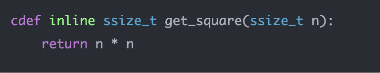
当调用 get_square 函数的时候，会将函数内部的代码直接贴过来，此时不涉及函数的调用，从而减少开销。
inline 如果使用得当，可以提高性能，特别是在深度嵌套循环中调用的小型内联函数。因为它们会被多次调用，这个时候通过 inline 可以省去函数调用的开销。
可能有人觉得，既然 inline 可以省去函数调用时的开销，并且使用上还能像函数一样，那能不能每次声明函数的时候都加上 inline 呢？显然这种做法不可取，因为内联函数是以代码膨胀为代价的，你在任何地方调用内联函数都会把函数内的代码拷贝一份，这样会消耗很多的内存空间。如果函数体内的代码执行时间比较长，那么节省下来的函数调用的开销，与之相比意义不是很大。
因为函数调用本身的开销非常微小，所以只有当函数体逻辑简单、并且还要在深度嵌套循环中反复调用的情况下，才会使用内联函数。
另外 inline 只是一个对编译器的建议，至于最后到底是否内联，还要看编译器的意思。如果编译器认为函数不复杂、以及不涉及递归，可以在调用点展开，就会真正内联。所以并不是使用了 inline 就会内联，使用 inline 只是给编译器一个建议。
以上就是如何在 Cython 中定义函数，总共提供了三种方式，都各有优缺点，需要在工作中搭配结合使用。
9. Cython 的异常处理
作者：古明地觉
公众号：古明地觉的编程教室
公众号二维码：
def 定义的函数在 C 的级别总是会返回一个 PyObject *，这个是恒定的，不会改变，因为 Python 的变量本质上就是一个 PyObject *。因此正常调用一个函数时，它的返回值一定指向了一个合法的 Python 对象。
但如果报错了，在 C 的层面返回的就不再是 PyObject *，而是一个 NULL。解释器在返回 NULL 之前，会将异常信息写入到 stderr（标准错误输出）里面。对于 Python 使用者而言，表现就是：先输出一堆错误信息，然后解释器中止运行。
cpdef test():
lst = [0]
# 显然会索引越界
lst[3]
return None
文件名仍叫 cython_test.pyx，我们测试一下。
import pyximport
pyximport.install(language_level=3)
import cython_test
print(cython_test.test())
"""
Traceback (most recent call last):
File "...", line 5, in <module>
print(cython_test.test())
File "cython_test.pyx", line 1, in cython_test.test
cpdef test():
File "cython_test.pyx", line 4, in cython_test.test
lst[3]
IndexError: list index out of range
"""
如果程序正常执行完毕，返回的状态码为 0；执行的时候报错了，返回的状态码为 1；如果返回的状态码很古怪，是一个乱七八糟的数字，那么说明解释器内部出现了异常，这种情况基本只有在写 C 扩展的时候才会发生。
总之，解释器抛出异常的本质就是，发现程序出错了，然后将错误信息写入到标准错误输出当中，然后 return NULL 并停止运行。
所以异常输出在 Cython 中的表现也是一样的，它允许 Cython 正确地从函数中抛出异常。但这有一个前提，那就是函数的返回值必须是 Python 类型，显然对于 def 函数是没有问题的。而 cdef 和 cpdef 可能会返回一个非 Python 类型，那么此时则需要一些其它的异常提示机制。
我们举个例子：
cpdef long test():
lst = [0]
# 显然会索引越界
lst[3]
return 123
此时 test1 的返回值类型是 C 的类型，并且里面的代码会报错，那么 Python 在调用的时候会不会将异常抛出来呢？
import pyximport
pyximport.install(language_level=3)
import cython_test
print(cython_test.test())
"""
IndexError: list index out of range
Exception ignored in: 'cython_test.test'
Traceback (most recent call last):
File "...", line 5, in <module>
print(cython_test.test())
IndexError: list index out of range
0
"""
print("我会执行吗？")
"""
我会执行吗？
"""
我们看到了神奇的一幕，程序报错了，但是没有停止运行，而是将异常忽略掉了。并且当函数内部出异常的时候，自动返回零值。
CPython 在判断是否出现异常的时候，首先会根据返回值来判断。如果返回值的类型是 PyObject *，那么正常执行一定会返回一个非 NULL 指针，因为要指向一个合法的 Python 对象；可要是出现异常，那么就会返回一个空指针 NULL，代表函数执行失败，应该将异常抛出来。
因此在调用一个返回值为 Python 类型的函数时，根据返回值是否为 NULL 可以很轻松地判断调用是否出异常。所以当异常发生在 def 函数、或者返回值为 Python 类型的 cdef、cpdef 函数中，那么表现和 Python 代码是一致的。
但如果返回值是一个 C 的类型（针对 cdef 和 cpdef 函数），比如这里返回的是 long 类型，那么执行出错时会设置异常、并返回 0，也就是对应类型的零值。但问题是解释器不知道此时的 0，是因为调用出错返回的 0，还是正常执行完毕后返回的 0，因为返回值也可能是 0。
所以当返回值是 C 的类型时，如果函数调用出错，那么异常没有办法传递给它的调用方。换句话说就是异常没有办法向上抛，最终的结果就是将异常输出到 stderr 当中，但是却无法停止运行。
而为了正确传递异常，Cython 提供了一个 except 字句，允许 cdef、cpdef 函数和调用方通信，如果函数在执行过程中发生了 Python 异常，要将它抛出来。
cpdef long test() except -1:
lst = [0]
# 显然会索引越界
lst[3]
return 123
此时再调用的话，会有什么结果呢？异常能正常抛出来吗？
import pyximport
pyximport.install(language_level=3)
import cython_test
print(cython_test.test())
print("我会执行吗？")
"""
Traceback (most recent call last):
File "...", line 5, in <module>
print(cython_test.test())
File "cython_test.pyx", line 1, in cython_test.test
cpdef long test() except -1:
File "cython_test.pyx", line 4, in cython_test.test
lst[3]
IndexError: list index out of range
"""
我们看到此时异常就正确地传递给调用方了，当出现异常时，将异常信息打印出来，然后中止运行。
所以 except -1 相当于充当异常发生时的哨兵，当然啦不仅是 -1，任何整数都是可以的。但是还有一个问题，如果返回值恰好也是 -1 怎么办？我们举个例子：
cpdef int test(int i, int j) except -1:
return i // j
这里需要写成 i // j，不能写 i / j，因为返回值是 int 类型，而 i / j 得到的是浮点数。虽然在变量赋值的时候，表达式计算得到的浮点数会自动向下取整，但此处不行，我们必须显式地返回一个整数。
然后测试一下：
import pyximport
pyximport.install(language_level=3)
import cython_test
try:
cython_test.test(3, 0)
except ZeroDivisionError as e:
print(e)
"""
integer division or modulo by zero
"""
print(ext.test(3, -3))
"""
Traceback (most recent call last):
File "...", line 14, in <module>
print(cython_test.test(3, -3))
SystemError: <built-in function test> returned NULL without setting an error
"""
神奇的地方出现了，虽然异常依旧能够正常抛出来，但是当返回值为 -1 时居然又抛出了一个 SystemError。
如果你使用 C 编写过扩展模块的话，应该会遇见过这个问题。前面说了，Python 的函数一定会返回一个 PyObject *，但如果函数执行出错了，那么在 C 一级就会返回一个 NULL，并且将发生的异常设置进去。
如果返回了 NULL 但是没有设置异常的话，就会抛出上面的那个错误。因为解释器发现函数返回了 NULL，所以知道出现异常了，于是会将回溯栈里设置好的异常信息打印出来，告诉开发者出现异常的具体原因，到底是哪部分代码出错了。但问题是解释器发现异常回溯栈是空的，所以会抛出一个 SystemError，表示函数返回了 NULL，但却没有设置异常。
而出现上述结果的原因就是我们这里的 except -1，它允许 -1 充当异常发生时的哨兵。但如果函数正常执行、只是返回的恰好是 -1，那么也表示发生异常了，于是底层会返回NULL。然而实际上异常并没有发生，所以没有设置异常，而解释器又发现返回值为 NULL，所以提示我们 returned NULL without setting an error。
一个比较笨的解决办法是将 except -1 换成 except -2，显然这是治标不治本，因为当返回值为 -2 的时候还是可能会出现上面的结果。所以能不能有这样一种机制，就是当返回值恰好和哨兵相等时，让解释器去看一眼异常回溯栈。如果回溯栈为空，证明没有执行出错，而是返回值和哨兵恰好相等，那么此时就不要返回 NULL 了，因为没有报错，所以应该将返回值正常返回。
cpdef int test(int i, int j) except ? -1:
return i // j
我们在 except 后面加上了一个问号，来看看执行结果。
import pyximport
pyximport.install(language_level=3)
import cython_test
print(cython_test.test(3, -3)) # -1
此时就没有问题了。
总结一下，except ? -1 只是单纯为了在发生异常的时候能够往上抛，这里可以是 -1、也可以是其它的什么值。而函数如果也返回了相同的值，那么就会检测异常回溯栈，如果为空（表示没有报错）就会正常返回。而触发检测的条件就是中间的那个 ?，如果不指定 ?，那么当函数返回了和哨兵相同的值，也是会报错的，因此这个时候你应该确保函数不可能返回 except 后面指定的值（哨兵）。
但很明显，这样的逻辑不具备可靠性，还是在 except 后面加上 ? 要更保险一些。
事实上，在 CPython 源码内部也有大量相似的判断逻辑。

调用 new_values 如果成功，那么 values 一定指向一个合法的 Python 对象，但如果调用失败，values 则为 NULL。所以下一步就要判断 values 是不是等于 NULL，如果等于 NULL，证明执行失败了，应该设置异常、然后返回 NULL。而解释器发现为 NULL 了，证明执行出现异常了，于是会将回溯栈里的异常信息打印出来，然后中止运行。
所以当返回值是 PyObject * 时，根据返回值是否为 NULL 即可判断执行是否出现了异常。但如果返回值不是 PyObject *、或者说不是 Python 类型呢？比如是 C 的整型。
我们看到 CPython 内部也是使用 -1 充当的哨兵，如果返回值不是 -1，证明正常执行。如果返回值是 -1，则说明有可能出异常了，此时需要调用 PyErr_Occurred 检测回溯栈是否为空，如果不为空，证明确实出现异常了；如果为空则证明没有出现异常，只是返回值恰好是 -1。
另外哨兵的值要和返回值类型相匹配，返回值类型为整型，那么哨兵可以是任意的整数；返回值类型是浮点型，那么哨兵可以是任意的浮点数。如果我们将 -1 改成 -1.0 的话：
编译的时候报错了，因为哨兵的值的类型和返回值类型不兼容。
所以工作中建议加上 except ? val 作为异常传递的哨兵，val 的值任意，只要和返回值类型匹配即可。但只有当返回值是 C 的类型时，才需要这么做。如果返回值是 Python 类型，那么使用 except 子句会报错，比如下面的代码就是不合法的。
cpdef tuple test(long i, long j) except ? ():
pass
我们的本意是使用空元组作为异常传递的哨兵，但当返回值为 Python 类型时，异常是可以正常抛的，它的表现和 Python 是一致的。只有当返回值是 C 的类型，才需要哨兵，所以上面的代码属于画蛇添足，反而会编译错误。

报错信息很明显，当返回值是 Python 类型时，不允许使用 except 子句。
以上就是 Cython 中的异常处理，准确来说是异常在 Cython 中的一个坑，因为当返回值是 C 的类型时，异常无法正常抛给调用方，需要使用哨兵。至于异常处理本身（try except），在 Cython 和 Python 中的表现都是一致的。
10. Cython 中的类型转换
作者：古明地觉
公众号：古明地觉的编程教室
公众号二维码：
C 和 Python 在数据类型上都有各自的成熟特性，比如支持数据在不同类型之间进行转换。
# Py_ssize_t 是 ssize_t 的别名
cdef Py_ssize_t num = 123
# 声明一个指针类型的变量
cdef Py_ssize_t *p = &num
# 转成浮点型指针
cdef double *p2 = <double *> p
指针类型可以任意转换，这里我们将整型指针转成了浮点型指针，显然这是合法的。在 C 里面类型转换使用的是小括号，这里使用的是尖括号。
由于指针类型的转换不受限制，所以我们可以手动实现内置函数 id 的功能。
我们来测试一下：
import pyximport
pyximport.install(language_level=3)
import cython_test
num = 123
print(cython_test.my_id(num))
print(id(num))
"""
140706631063024
140706631063024
"""
s = "古明地觉"
print(cython_test.my_id(s))
print(id(s))
"""
2125601466576
2125601466576
"""
print(cython_test.my_id(object))
print(id(object))
"""
140706630839120
140706630839120
"""
我们实现的函数 my_id 和内置函数 id 打印的结果是一样的，所以 Python 虽然一切皆对象，但我们操作的都是指向对象的指针，也就是通过指针来间接操作对象。所以 id(obj) 表示的不是获取 obj 的地址，而是 obj 指向对象的地址，如果站在 C 的角度，那么就是 obj 存储的值本身。
所以 id 函数所做的事情就是把变量存储的地址转成 10 进制整数返回，我们如果想实现 id 函数的功能，只需要将变量（PyObject *）转成 void *，因为不同类型的指针可以相互转换，虽然转换之后指针的含义变了，但存储的地址不变。然后再将 void * 转成 Py_ssize_t，即可拿到存储的地址。
可能有人好奇，为什么先要转成 void * 之后，才能转成整型呢？直接转成整型不行吗？我们来测试一下，这两者的区别。
def my_id1(obj):
# 先转成 void *，再转成 Py_ssize_t
return <Py_ssize_t> <void *> obj
def my_id2(obj):
# 直接转成 Py_ssize_t
return <Py_ssize_t> obj
num = 666
print(my_id1(num))
print(my_id2(num))
"""
1617542740432
666
"""
区别很明显了，因为 Python 的变量是一个指向值的指针。如果转换之后的类型是指针类型，那么转换的是变量；如果转换之后的类型不是指针类型，那么转换的是对象。
所以 my_id2 返回的是 666，由于转换之后的类型不是指针类型，因此参与转换的是对象，相当于将 Python 整数转成了静态的 C 整数。并且 num 必须指向一个整数，否则它无法和 C 的 Py_ssize_t 类型相对应。
而对于 my_id1 函数，转换之后的类型是指针类型，所以参与转换的是变量、即 PyObject *。任何指针都可以和 void * 转换，因此先将变量转成 void *，然后再由 void * 转成整型，而此时打印的是对象的地址。
另外再补充一点，我们前面说指针的转换不受限制，针对的是纯 C 代码。但现在不是纯 C，而是 Cython，所以指针转换还是有限制的，这个限制主要针对 PyObject *，它只能转成 void *。
<int *> obj
像上面的代码是有问题的，Python 类型的变量在指针转换的时候，只能转成 void *。当然啦，char * 是个例外。
name = b"satori"
print(<char *> name) # b'satori'
char * 表示 C 的字符串类型，上述代码做的事情就是将 Python 字节串转成 C 字符串，当然打印的时候还是以 Python 字节串的形式打印的。所以 char * 算是一个例外吧，在 Cython 里面是把 char * 整体作为一个基础类型来看的，并且在转换的时候 name 必须指向一个 bytes 对象，否则会转换失败，因为 char * 和 Python 里面的 bytes 是相对应的。
但是我们发现，无论是指针类型、还是常规类型，这里都是 C 的类型。那么可不可以转成 Python 类型呢？答案是可以的，来看个例子。
def func(a):
cdef list lst1 = list(a)
print(lst1)
print(type(lst1))
cdef list lst2 = <list> a
print(lst2)
print(type(lst2))
func([1, 2, 3])
"""
[1, 2, 3]
<class 'list'>
[1, 2, 3]
<class 'list'>
"""
func((1, 2, 3))
"""
[1, 2, 3]
<class 'list'>
(1, 2, 3)
<class 'tuple'>
"""
打印的结果很明显，如果是 list(a)，那么会根据 a 指向的对象创建一个新的列表，所以 lst1 一定指向一个列表。但 <list> a 则是将变量 a、也就是 PyObject * 拷贝一份，然后转成 PyListObject *，相当于将动态变量转成静态变量。
第一次调用 func，参数 a 指向了一个列表，但它是泛型指针。于是通过 <list> a 将它转成静态的，在操作的时候可以避免一些额外开销，当然不管是动态还是静态，指向的都是列表。另外这个例子有点刻意了，其实直接 cdef list lst2 = a 就可以了，因为做好了类型标注，那么会自动转换。
然后第二次调用 func，参数 a 指向了一个元组，显然对于 list(a) 是没有影响的，因为它会创建新列表。但 <list> a 就有问题了，因为 a 实际指向的是元组，应该是 <tuple> a，所以转换失败。在早期的 Cython 中会引发一个SystemError，但目前不会了，如果转换失败还保留原来的类型。
可如果我们希望在无法转换的时候报错，这个时候要怎么做呢？
def func(a):
# 将 <list> 换成 <list?> 即可
cdef list lst2 = <list?> a
print(lst2)
print(type(lst2))
此时传递其它对象就会报错了，比如我们传递了一个元组，会报出 TypeError: Expected list, got tuple。其实，如果类型不对希望报错的话，还有一个最简单的做法， 直接 cdef list lst2 = a 即可。
尖括号里面的类型可以任意，包括 C 类型以及 Python 内置类型。但说实话，使用尖括号做类型转换的场景不是很多，我们通过 cdef 指定类型时，会自动转换，但转化失败则会报错（相当于 <...?>）。当然后续，我们也会给出使用尖括号做类型转换的一些最佳实践。
11. 在 Cython 中声明结构体、共同体、枚举
作者：古明地觉
公众号：古明地觉的编程教室
公众号二维码：
C 语言里面存在结构体、共同体、枚举，而这些在 Cython 里面也是支持的，只不过声明的方式不太一样，下面来看一看。
11.1 结构体
在 C 里面定义一个结构体，一般有两种方式。
#include <stdio.h>
// 直接定义，此时 struct Girl 整体是一个类型
struct Girl {
char *name;
int age;
};
// 使用 typedef 起一个别名
// 此时 Boy 是一个类型
typedef struct {
char *name;
int age;
} Boy;
int main() {
// 声明一个 struct Girl 类型的实例
struct Girl g;
g.name = "mercy";
g.age = 37;
// 声明一个 Body 类型的实例
Boy b;
b.name = "hanzo";
b.age = 38;
printf("name = %s, age = %d\n", g.name, g.age);
printf("name = %s, age = %d\n", b.name, b.age);
/*
name = mercy, age = 37
name = hanzo, age = 38
*/
}
以上是 C 的结构体，在 Cython 里面要如何定义呢？
# 相当于 C 的 struct Girl{...};
cdef struct Girl:
char *name
int age
# 相当于 C 的 typedef struct {...} Boy;
ctypedef struct Boy:
char *name
int age
# 创建结构体实例，无论结构体使用哪一种方式定义
# 在创建实例的时候，格式都是一样的
cdef Girl g1
cdef Boy b1
# 创建的时候也可以直接赋值，支持位置参数和关键字参数
# 但是使用关键字参数要注意顺序
# 结构体字段出现的顺序，就是参数的顺序
cdef Girl g2 = Girl("mercy", 37)
cdef Boy b2 = Boy("hanzo", age=38)
# 打印的时候会以字典的形式打印
print(g2)
print(b2)
"""
{'name': b'mercy', 'age': 37}
{'name': b'hanzo', 'age': 38}
"""
# 当然啦，也可以先声明，然后单独赋值
# 我们上面创建了 g1 和 b1，下面赋值
g1.name, g1.age = "mercy", 37
b1.name, b1.age = "hanzo", 38
print(g1)
print(b1)
"""
{'name': b'mercy', 'age': 37}
{'name': b'hanzo', 'age': 38}
"""
# 通过 Python 的字典赋值
# 显然它涉及数据转换，会有额外开销
# 不建议使用此方式
cdef Girl g3 = {"name": "mercy", "age": 37}
cdef Boy b3 = {"name": "hanzo", "age": 38}
print(g3)
print(b3)
"""
{'name': b'mercy', 'age': 37}
{'name': b'hanzo', 'age': 38}
"""
在 C 里面还存在结构体的嵌套：
struct Girl {
struct {
char *name;
int age;
} Person;
int length;
};
Cython 也是允许结构体嵌套的，但是定义必须要单独拿出来，什么意思呢？看个例子就明白了。
cdef struct Person:
char *name
int age
# Person 的定义必须要单独拿出来定义
# 不可以嵌套定义
cdef struct Girl:
Person person
int length
cdef Girl g = Girl(person=Person("mercy", 37), length=167)
print(g)
"""
{'person': {'name': b'mercy', 'age': 37}, 'length': 167}
"""
另外，当定义结构体的时候，字段的类型必须都是 C 的类型。
11.2 共同体
共同体的声明在 C 和 Cython 里面都和结构体类似，我们来看一下。
cdef union U1:
short n1
int n2
ctypedef union U2:
short n1
int n2
cdef U1 u1
u1.n2 = 0X1234_4321
print(u1.n1 == 0X4321) # True
cdef U2 u2
u2.n2 = 0X4321_1234
print(u2.n1 == 0X1234) # True
使用方法和结构体类似，关于共同体的具体知识这里就不多说了，可以查询 C 语言共同体相关的内容。总之它的目的是为了节省内存，一个结构体实例所占的内存，等于内部所有字段所占内存之和（当然还要考虑内存对齐）；而一个共同体实例所占的内存，等于内部占用内存最大的字段。
cdef struct S:
short field1 # 2 字节
int field2 # 4 字节
ssize_t field3 # 8 字节
cdef union U:
short field1
int field2
ssize_t field3
cdef S s
cdef U u
# 等于所有字段所占内存之和
# 2 + 4 + 8 = 14，但由于存在内存对齐
# 所以是 16
print(sizeof(s)) # 16
# 最长字段所占的内存
# 因此是 8
print(sizeof(u)) # 8
因此共同体明显要省内存，但是修改某一个字段，会影响其它字段，因为字段之间共用一组内存。而结构体则不会，字段之间互不影响，因为它们使用的是不同的内存。
11.3 枚举
定义枚举也很简单，我们可以在多行中定义，也可以在单行中定义然后用逗号隔开。
# 相当于 C 的 enum COLOR1 {};
cdef enum COLOR1:
RED = 1
YELLOW = 3
GREEN = 5
# 相当于 C 的 typedef enum {} COLOR2;
ctypedef enum COLOR2:
PURPLE, BROWN
# 在 C 里面声明一个枚举变量
# 可以是 enum COLOR1，整体是一个类型
# 也可以直接使用 COLOR2
# 但在 Cython 里面声明方式是一样的
# 一律是 cdef COLOR1、cdef COLOR2
cdef COLOR1 c1 = YELLOW
cdef COLOR2 c2 = BROWN
print(YELLOW)
print(BROWN)
"""
3
1
"""
枚举比较简单。
以上就是结构体、共同体和枚举在 Cython 中的使用方式，但说实话，如果只是写 Cython，那么我们很少会用到这些 C 级结构。因为像结构体、共同体、枚举这些结构，一般都是在和外部的 C 代码交互的时候才会用到，比如我们要调用一个现有的 C 库函数，但这个函数接收一个结构体，那么这个时候我们会构造一个结构体实例然后传过去。
11.4 使用 ctypedef 给类型起别名
在 C 语言中有一个 typedef 关键字，可以用来给类型起别名，就像我们上面演示的那样。如果是使用 struct S {}; 这种方式定义结构体，那么 struct S 整体是一个类型。但我们可以通过 typedef 起一个别名，比如 typedef struct S{} S2; 那么声明的时候既可以使用 struct S，也可以直接使用 S2，因为 typedef 给 struct S 起了一个别名叫 S2。
注意：typedef 并不是定义了一个新的类型，它只是给一个已经存在的类型起了一个别名而已，像 CPython 里面有一个 Py_ssize_t，它就是 ssize_t 的别名，而 ssize_t 又是 long long 的别名。所以这个关键字的名字起的不好，会让人以为使用 typedef 是定义一个新类型一样。
#include <stdio.h>
typedef int MY_INT;
int main() {
MY_INT age = 17;
printf("%d\n", age); // 17
}
我们上面给 int 起了一个别名叫 MY_INT，而在 Cython 里面也是支持的，只不过关键字不叫 typedef，而是叫 ctypedef。
ctypedef list MY_LIST
def foo(MY_LIST lst):
pass
文件名叫 cython_test.pyx，我们调用一下看看。
import pyximport
pyximport.install(language_level=3)
import cython_test
try:
cython_test.foo(123)
except TypeError as e:
print(e)
"""
Argument 'lst' has incorrect type (expected list, got int)
"""
参数接收的是 list 类型，因为 MY_LIST 是 list 的别名，但是我们传了一个整数进去，所以报错了。当然不管什么 Python 类型，None 都是满足的。
ctypedef 可以作用于 C 的类型也可以作用于 Python 类型，起别名之后，这个别名可以像上面那样应用在函数参数身上，也可以用于声明一个变量，比如 cdef MY_LIST lst。
但是不可以像这样：MY_LIST("123")，或者 isinstance(xxx, MY_LIST)。起的别名只能用在 C 语义当中，比如类型声明、或者 <MY_LIST?> 将变量静态化。但是不能用在 Python 语义当中，比如调用之类的，否则会报错：'MY_LIST' is not a constant, variable or function identifier。
ctypedef 一般也是用在和外部 C 代码交互上面，如果是纯 Cython，那么很少使用 ctypedef 起别名。但是对于 C++ 来说起别名则很常见，因为使用 typedef 可以显著的缩短长模板类型。
另外 ctypedef 对出现的位置也是有要求的，如果不和外部 C 代码交互的话，它应该出现在全局作用域中，不可以出现在函数等局部作用域里，也不可以出现在 if, for, while 语句块内。
12. Cython 的融合类型
作者：古明地觉
公众号：古明地觉的编程教室
公众号二维码：
Cython 将静态类型系统引入到了 Python 中，实现了基于类型的优化。但问题来了， 如果一个变量可能是不同的类型，该怎么办呢？比如一个变量既可能是整型，也可能是浮点型。
而 Cython 也考虑到了这一点，就是下面要介绍的融合类型。说融合类型可能让人感到陌生，但如果说泛型是不是就很熟悉了。
Cython 目前提供了三种我们可以直接使用的融合类型，integral、floating、numeric，含义如下：
- integral：等价于 C 的 short, int, long；
- floating：等价于 C 的 float, double；
- numeric：最通用的类型，包含上面的 integral、floating 以及复数；
当然这三个融合类型无法直接用，需要通过 cimport 导入。
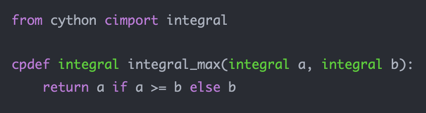
上面这段代码，Cython 将会创建三个版本的函数：1）参数 a 和 b 都是 short 类型；2）参数 a 和 b 都是 int 类型；3）参数 a 和 b 都是 long 类型。
在调用的时候可以显式指定类型，否则会选择范围最大的类型，举个例子：
print(integral_max(<short> 1, <short> 2))
print(integral_max(<int> 1, <int> 2))
print(integral_max(<long> 1, <long> 2))
如果一个融合类型声明了多个参数，那么这些参数的类型必须是融合类型中的同一种，所以下面的调用都是不合法的。
print(integral_max(<short> 1, <int> 2))
print(integral_max(<int> 1, <long> 2))
print(integral_max(<long> 1, <short> 2))
融合类型相当于多个类型的组合，比如 integral 是 short, int, long 的组合，至于 integral 最终会表现出哪一种，则取决于传递的参数。但融合类型在同一时刻，只能表示一种类型，什么意思呢？比如我们上面的参数 a 和 b 的类型是相同的，都是 integral 类型，那么最终 a 和 b 要么都是 short、要么都是 int、要么都是 long，不存在 a 是 int、b 是 short 这种情况。
当然这背后的原理我们也说了，如果出现了融合类型，那么 Cython 会根据融合类型里面的每一个类型都单独创建一个函数。在调用时，根据传递的参数类型，来判断调用哪一个版本的函数。
到目前为止，总共出现了三个融合类型，都需要从 cython 这个名字空间里面 cimport 之后才能使用。那么问题来了，我们能不能自己创建融合类型呢？答案是可以的。
# 通过 ctypedef fused 定义融合类型
ctypedef fused list_tuple:
list
tuple
# a 和 b 要么都为列表、要么都为元组
# 但不可以一个是列表、一个是元组
cpdef list_tuple func(list_tuple a, list_tuple b):
return a + b
# Cython 会根据我们传递的参数来判断，调用哪一种函数
print(
func([1, 2], [3, 4])
) # [1, 2, 3, 4]
# 我们也可以显式指定要调用的函数版本
print(
func[list]([11, 22], [33, 44])
) # [11, 22, 33, 44]
print(
func[tuple]((111, 222), (333, 444))
) # (111, 222, 333, 444)
还是挺简单的，并且组成融合类型的多个类型，可以是 C 的类型，也可是 Python 的类型。
另外再次强调，list_tuple 虽然既可以是 list，也可以是 tuple，但是在同一个函数中只能表现出一种类型。如果我们给 a 传递 list、给 b 传递 tuple，看看会有什么结果。
import pyximport
pyximport.install(language_level=3)
import cython_test
try:
cython_test.func([], ())
except TypeError as e:
print(e)
"""
Argument 'b' has incorrect type (expected list, got tuple)
"""
# 当 a 接收的是一个列表时
# 那么就可以将 list_tuple 看成是 list 了
# 因此 b 也必须接收一个列表
try:
cython_test.func((), [])
except TypeError as e:
print(e)
"""
Argument 'b' has incorrect type (expected tuple, got list)
"""
# 当 a 接收的是一个元组时
# 那么就可以将 list_tuple 看成是 tuple 了
# 因此 b 也必须接收一个元组
另外上面只出现了一种融合类型，我们还可以定义多种。
ctypedef fused list_tuple:
list
tuple
ctypedef fused dict_set:
dict
set
# 会生成如下四种版本的函数：
# 1) 参数 a、c 为列表，b、d 为字典
# 2) 参数 a、c 为列表，b、d 为集合
# 3) 参数 a、c 为元组，b、d 为字典
# 4) 参数 a、c 为元组，b、d 为集合
cdef func(list_tuple a,
dict_set b,
list_tuple c,
dict_set d):
print(a, b, c, d)
# 会根据我们传递的参数来判断选择哪一个版本的函数
func([1], {"x": ""}, [], {})
"""
[1] {'x': ''} [] {}
"""
# 依旧可以显式指定类型，不让 Cython 帮我们判断
# 但由于存在多种混合类型，因此一旦指定、那么每一个混合类型都要指定
func[list, dict]([1], {"x": ""}, [], {})
"""
[1] {'x': ''} [] {}
"""
此外，我们必须写成 func[list, dict] 这种形式，不可以是 func[dict, list]。因为类型为 list_tuple 的参数先出现，类型为 dict_set 的参数后出现。所以中括号里面第一个出现的类型一定是 list_tuple 里面的类型（list 或 tuple），第二个才是 dict_set 里面的类型（dict 或 set）。
因此一旦指定版本，那么只能是以下四种之一：
func[list, dict](...)func[list, set](...)func[tuple, dict](...)func[tuple, set](...)
当然啦，别忘记在传参的时候务必保证参数类型正确。
多说一句题外话，如果你用过 Go 的话，你会发现 Go 的泛型和 Cython 的融合类型非常相似，我们举个栗子。
Go 泛型
Cython 融合类型：
对比一下之后，是不是发现两者非常像呢？但很明显，Cython 的融合类型、或者也叫泛型，在设计上要更优秀一些。比如定义完 T 之后，直接使用 T 即可；而 Go 里面在定义完 T 之后还不能直接用，必须要再起一个名字（T1），然后用这个新起的名字。
好了，言归正传，在定义函数时，不仅仅只有融合类型，还可以有具体的类型，举个例子：
最后，上面的 func 函数还有一种调用方式，我们来看一下：
cdef func(list_tuple a,
dict_set b,
int xxx,
list_tuple c,
dict_set d):
print(a, b, c, d, xxx)
# 声明一个函数指针，指向的函数接收五个参数
# 类型分别是 list, set, int, list, set，返回 object
# 此时必须将所有参数的类型全部指定，不能只指定融合类型
# 并且声明为同一种融合类型的参数的具体类型仍然要一致
cdef object (*func_with_list_set)(list, set, int, list, set)
# 赋值
func_with_list_set = func
func([], {1}, 123, [], {2})
"""
[] {1} [] {2} 123
"""
# 或者这种方式也是可以的
# 将 func 转成 <object (*)(list, set, int, list, set)>
# 相当于将函数指针转成了接收五个参数、返回一个 object 的指针
(<object (*)(list, set, int, list, set)> func)([], {1}, 123, [], {2})
"""
[] {1} [] {2} 123
"""
# 还有就是之前的方式，只不过可以拆开使用
# [] 里面只需要指定融合类型
cdef func_with_tuple_dict = func[tuple, dict]
func_with_tuple_dict((1, 2), {"a": "b"}, 456, (11, 22), {"b": "a"})
"""
(1, 2) {'a': 'b'} (11, 22) {'b': 'a'} 456
"""
到此，关于融合类型的创建和用法我们就说完了，总之融合类型不仅可以用在函数的参数和返回值中，也可以用于普通的变量声明。
但变量到底是融合类型的哪一种，还需要我们动态判断。
ctypedef fused list_tuple_dict:
list
tuple
dict
# 在判断的时候，可以对 val 进行判断
# 比如使用 type 或者 isinstance
# 但是我们还可以对融合类型本身进行判断
cpdef func(list_tuple_dict val):
"""
Cython 会生成以下三个版本的函数
cdef func(list val)
cdef func(tuple val)
cdef func(dict val)
根据 val 类型的不同，调用不同版本的函数
所以不管最终调用的是哪一个版本的函数
类型都是确定的
"""
# 因此在编写代码的时候
# 根据融合类型本身就可以判断
if list_tuple_dict is list:
print("val 是 list 类型")
elif list_tuple_dict is tuple:
print("val 是 tuple 类型")
else:
print("val 是 dict 类型")
然后我们调用一下试试：
import pyximport
pyximport.install(language_level=3)
import cython_test
cython_test.func([])
cython_test.func(())
cython_test.func({})
"""
val 是 list 类型
val 是 tuple 类型
val 是 dict 类型
"""
# 如果类型不是融合类型中的任意一种
# 那么就会报错
try:
cython_test.func(123)
except TypeError as e:
print(e)
"""
No matching signature found
"""
融合类型具体会是哪一种类型，在参数传递的时候便可得到确定。
因此 Cython 的泛型编程还是很强大的，但在工作中的使用频率其实并不是那么频繁。
13. 让 for 和 while 循环具有 C 级别的性能
作者：古明地觉
公众号：古明地觉的编程教室
公众号二维码：
Python 的 for 和 while 循环是灵活并且高级的，语法自然、读起来像伪代码。而 Cython 也支持 for 和 while，无需修改。但由于循环通常占据程序运行时的大部分时间，因此我们可以通过一些优化，确保 Cython 能够将 Python 循环转换为高效的 C 循环。
n = 100
for i in range(n):
...
上面是一个标准的 Python for 循环，如果这个 i 和 n 是静态类型，那么 Cython 就能生成更快的 C 代码。
cdef int i, n = 100
for i in range(n):
...
# 这段代码和下面的 C 代码是等效的
"""
int i, n = 100;
for (i=0; i<n; ++i) {
/* ... */
}
"""
所以当通过 range 进行循环时，我们应该将 range 里面的参数以及循环变量换成 C 的整型。如果不显式地进行静态声明的话，Cython 就会采用最保守的策略：
cdef ssize_t n = 100
for i in range(n):
print(i + 2 ** 30)
在循环的时候，如果我们使用了变量 i，那么在和一个数字相加的时候，由于 Cython 无法确定是否会发生溢出，因此会保守地选择 Python 的整型。如果我们能保证表达式的结果一定不会发生溢出，那么可以显式地将 i 也声明为 C 的整型，比如 int。如果你觉得 int 表示的范围可能不够，那么就换成 ssize_t。
当然不光是整型，其它的 Python 类型也可以提前声明，举个例子：
cdef list lst = [
{"name": "satori", "age": 17},
{"name": "koishi", "age": 16},
{"name": "marisa", "age": 15},
]
# lst 里面都是字典，在遍历之前可以提前声明好
cdef dict item
for item in lst:
print(f"{item['name']}, {item['age']}")
"""
satori, 17
koishi, 16
marisa, 15
"""
# 通过 cdef dict item 提前声明循环变量的类型
# 然后遍历以及操作的时候，速度会快很多
# 因为我们实现了基于类型的优化
以上是 for 循环，至于 while 循环也是同理，说白了还是规定好类型，实现基于类型的优化。
当然目前的优化还只是一部分，我们在后续将会了解优化循环体的更多信息，包括 Numpy 在 Cython 中的使用以及类型化内存视图。
13.1 循环的另一种方式
对于 Cython 而言，循环还有另一种方式，不过已经过时了，不建议使用，了解一下即可：
cdef int i
# 等价于 for i in range(0, 5)
# 不可以写成 for i from i >=0 and i < 5
for i from 0<= i < 5:
print(i)
"""
0
1
2
3
4
"""
# for i in range(0, 5, 2)
for i from 0 <= i < 5 by 2:
print(i)
"""
0
2
4
"""
这种循环在语法上看起来很酷，但是已经过时了，因此直接使用 range 即可。
14. Cython 的宏定义
作者：古明地觉
公众号：古明地觉的编程教室
公众号二维码：
我们知道在 C 里面可以使用 #define 定义一个宏，这在 Cython 里面也是可以的，不过使用的是 DEF 关键字。
DEF NUMBER = 123
DEF NAME = "古明地觉"
print(NUMBER)
print(NAME)
"""
123
古明地觉
"""
DEF 定义的宏在编译的时候会被替换成我们指定的值，但是需要注意：宏对应的值必须在编译的时候就能确定，我们不能给宏赋一个运行时才能构建的值。举个例子：
DEF ARRAY = [1, 2, 3, 4]
print(ARRAY)
这行代码编译时会报错，因为列表需要运行时动态构建.
但元组是可以的，因为元组在编译的时候会作为一个常量加载进来（前提是元组里面的元素都能在编译时确定）。
DEF ARRAY = (1, 2, 3, 4)
print(ARRAY) # (1, 2, 3, 4)
另外我们知道 C 里面的宏是可以带参数的，但在 Cython 里面不支持。所以在 Cython 里面使用宏的话，替换的一般都是数值、字符串之类的。
在 C 里面还可以使用 IF ELIF ELSE 进行条件编译，Cython 也是支持的。
DEF SYSNAME = "Windows"
IF SYSNAME == "Windows":
print("这是 Windows")
ELIF SYSNAME == "Darwin":
print("这是 Mac OS")
ELIF SYSNAME == "Linux":
print("这是 Liunx")
ELSE:
print("其它类型的系统")
该文件在编译之后实际上只有两行：
DEF SYSNAME = "Windows"
print("这是 Windows")
当不同的系统，需要执行不同的逻辑时，IF ELIF ELSE 就很有用。为此，Cython 提供了几个预定义的宏，专门用于判断操作系统类型。
- UNAME_SYSNAME：操作系统的名称；
- UNAME_RELEASE：操作系统的发行版；
- UNAME_VERSION：操作系统的版本；
- UNAME_MACHINE：操作系统的机型、或者硬件名称；
- UNAME_NODENAME：网络名称；
IF UNAME_SYSNAME == "Windows":
print("这是 Windows")
ELIF UNAME_SYSNAME == "Darwin":
print("这是 Mac OS")
ELIF UNAME_SYSNAME == "Linux":
print("这是 Liunx")
ELSE:
print("其它类型的系统")
"""
这是 Windows
"""
这些宏都是预定义好的，但必须搭配 IF ELIF ELSE 使用，否则报错。
阶段性小结
到目前为止，我们深入介绍了 Cython 的语言特性，并且为了更好地理解，我们使用了很多 CPython 解释器里面才出现的术语，比如：PyObject、PyFunctionObject 等等。在学习 Cython 的某些知识时相当于站在了解释器的角度上，当然也介绍了 CPython 解释器的一些知识。
我们后续将会以这些特性为基础，进行深入地使用。
Cython 是一个辅助语言，它是建立在 Python 之上的，为 Python 提供扩展模块。但程序的性能瓶颈，一般是由百分之二十的代码决定的，所以很少有项目会完全使用 Cython 编写（uvloop 例外）。但它确实是一个成熟的语言，有自己的语法（个人非常喜欢，觉得设计的真酷），在 GitHub 上搜索，会发现大量的 Cython 源文件分布在众多的存储库中。
考虑到 numpy, pandas, scipy, sklearn 等知名模块内部都在使用，所以 Cython 也算是被数百万的开发人员、分析师、工程师和科学家直接或者间接使用。
如果 Pareto 原理是可信的，程序中百分之 80 的运行时开销是由百分之 20 的代码引起的，那么对于一个 Python 项目来说，只需要将少部分 Python 代码转换成 Cython 代码即可。
另外我们发现，用到 Cython 的顶尖项目都与数据分析和科学计算有关，这并非偶然。Cython 之所以会在这些领域大放异彩，有以下几个原因：
-
1）Cython 可以高效且简便地封装现有的 C, C++, FORTRAN 库，从而对那些已经优化并调试过的功能进行访问。这里多提一句，FORTRAN 算是一个上古的语言了，它的历史比 C 还要早，不过别看它出现的早、但速度是真的快，尤其是在数值计算方面甚至比 C 还要快。
包括 numpy 使用的 blas 内部也用到了 FORTRAN，虽然 FORTRAN 编写代码异常的痛苦，但是它在一些学术界和工业界还是具有一席之地的。原因就是它内部的一些算法，都是经过大量的优化、并且久经考验的，直接拿来用就可以。而 Cython 也提供了相应的姿势来调用 FORTRAN 已经编写好的功能。
-
2）当转化为静态类型时，内存和 CPU 密集的 Python 计算会有更好的执行性能。
-
3）在处理大型的数据集时，与 Python 内置的数据结构相比，在低级别控制精确的数据类型和数据结构可以让存储更高效、执行性能更优秀。
-
4）Cython 可以和 C, C++, FORTRAN 库共享同类型的连续数组，并通过 numpy 的数组直接暴露给 Python。
虽说用到 Cython 的一些顶尖项目都是和数据科学相关的，但即便不是在数据分析和科学计算领域，Cython 也可以大放异彩，因为它还能加速一般的 Python 代码，包括数据结构密集型算法。例如：lxml 这个高性能的 xml 解析器内部就大量使用了 Cython。因此即使它不在科学计算和数据分析的保护伞下，也依旧有很大的用途。
15. Cython 的扩展类
作者：古明地觉
公众号：古明地觉的编程教室
公众号二维码：
前面我们介绍了 Cython 的语法，主要是一些基本的数据结构和函数，通过将静态类型引入到 Python 中，提升 Python 的执行效率。但 Cython 能做的事情还不仅如此，它还可以增强 Python 的类。
不过在了解细节之前，我们必须先了解动态类和静态类之间的区别，这样我们才能明白 Cython 增强 Python 类的做法是什么，以及它为什么要这么做。
15.1 动态类和静态类
我们知道 Python 一切皆对象，怎么理解呢？首先在最基本的层次上，一个对象有三样东西：地址、值、类型，通过 id 函数可以获取地址并将每一个对象都区分开来，通过 type 获取类型。至于对象的属性则放在自身的属性字典里面，这个字典可以通过 __dict__ 获取。而获取对象的某一个属性的时候，既可以通过 . 的方式来获取，也可以直接操作属性字典。
每一个对象都由一个类实例化得到，Python 也允许我们使用 class 关键字自定义一个类。使用 class 关键字定义的类，就叫做动态类。
class A:
pass
print(A.__name__) # A
A.__name__ = "B"
print(A.__name__) # B
动态类的属性可以被动态修改，解释器允许我们这么做，但是内置的类、和扩展类不行。
try:
int.__name__ = "INT"
except Exception as e:
# 内置类型 和 扩展类型 不允许修改属性
print(e)
"""
can't set attributes of built-in/extension type 'int'
"""
内置类和扩展类，统称为静态类，当然这两者本质上一样的，它们都是用 Python/C API 实现的。只不过前者已经由官方实现好了，内嵌在解释器里，比如 int, str, dict 等等，所以称之为内置类；而后者是我们根据业务逻辑，编写 C 扩展时手动实现的，所以叫扩展类，但它们没有什么本质上的区别，所以后面就用扩展类来描述了。
当操作扩展类的时候，操作的是编译好的静态代码，因此在访问内部属性的时候，可以实现快速的 C 一级的访问，这种访问可以显著的提高性能，这就是 Cython 要增强 Python 类的原因。
因为扩展类必须使用 Python/C API 在 C 的级别进行定义，但在 C 里面实现一个类、以及相关方法等等，这个过程很复杂，需要有专业的 Python/C API 知识。但麻烦的好处就是，扩展类的操作要比动态类高效很多。
而 Cython 则允许我们像实现动态类一样，去实现扩展类，这样既能拥有动态类的开发效率，又能有扩展类的运行效率。当然我们心里很清楚，用 Cython 实现的扩展类，和在 C 里面手动使用 Python/C API 实现的扩展类，效果上是一样的，因为 Cython 代码也是要被翻译成使用标准 Python/C API 的 C 代码，只不过这一步不需要我们手动做了。
下面来看看如何在 Cython 里面定义一个扩展类。
15.2 扩展类的定义
在 Cython 中定义一个扩展类通过 cdef class 的形式，和 Python 的动态类保持了高度的相似性。
尽管在语法上有着相似之处，但 cdef class 定义的扩展类对所有方法和数据都有快速的 C 级别的访问，这也是和扩展类和动态类之间的一个最显著的区别。而且扩展类和 int, str, list 等内置类都属于静态类，它们的属性默认不可修改。
我们先来写一个 Python 的类（动态类）：
class Rectangle:
def __init__(self, width, height):
self.width = width
self.height = height
def get_area(self):
return self.width * self.height
如果我们是对这个动态类编译的话，那么得到的类依旧是一个动态类，而不是扩展类。所有的操作，仍然是通过动态调度通用的 Python 对象来实现的。只不过由于编译的开销省去了，因此效率上会提升一点点，但是它无法从静态类型上获益，因为此时的 Python 代码仍然需要在运行时动态调度来解析类型。
改成扩展类的话，我们需要这么做。
cdef class Rectangle:
cdef long width, height
def __init__(self, w, h):
self.width = w
self.height = h
def get_area(self):
return self.width * self.height
此时的关键字我们使用的是 cdef class，表示这个类不是一个普通的 Python 动态类，而是一个扩展类。并且在内部，我们还多了一个 cdef long width, height，它负责指定实例 self 所拥有的属性，因为扩展类实例不像动态类实例一样可以自由添加属性，静态类实例有哪些属性需要在类中使用 cdef 事先指定好。
这里的 cdef long width, height 就表示 Rectangle 实例只能有 width 和 height 两个属性、并且类型是 long，因此我们在实例化的时候，参数 w、h 只能传递整数。另外对于 cdef 来说，定义的类是可以被外部访问的，虽然函数不行、但类可以。
文件名叫 cython_test.pyx，我们编译测试一下：
import pyximport
pyximport.install(language_level=3)
import cython_test
rect = cython_test.Rectangle(3, 4)
print(rect.get_area()) # 12
try:
rect = cython_test.Rectangle("3", "4")
except TypeError as e:
print(e) # an integer is required
注意：我们在 __init__ 中给实例绑定的属性，都必须在类中使用 cdef 声明，举个例子。
cdef class Rectangle:
# 这里我们只声明了 width, 没有声明 height
# 那么是不是意味着这个 height 可以接收任意类型的对象呢？
cdef long width
def __init__(self, w, h):
self.width = w
self.height = h
def get_area(self):
return self.width * self.height
导入该文件，然后实例化的时候会报错：AttributeError: 'cython_test.Rectangle' object has no attribute 'height'。
凡是没有在类里面使用 cdef 声明的属性，都不可以访问，即使是赋值操作。也就是说，无论是获取还是赋值，self 的属性必须使用 cdef 在类里面声明。我们举一个Python 内置类型的例子：
a = 1
try:
a.xx = 123
except Exception as e:
print(e)
"""
'int' object has no attribute 'xx'
"""
扩展类和内置类是同级别的，无论是获取属性还是绑定属性，如果想通过 self. 的方式访问，那么一定要在类里面使用 cdef 声明。
所以扩展类无法动态绑定属性，扩展类有哪些属性在定义的时候就已经确定了。因为动态修改、添加属性，都是解释器在解释执行的时候动态操作的。而扩展类直接指向了 C 一级的结构，不需要解释器解释这一步，因此也失去了动态修改的能力。也正因为如此，才能提高效率，毕竟很多时候我们不需要动态修改。
另外当一个类实例化后，会给实例对象一个属性字典，通过 __dict__ 获取，它的所有属性以及相关的值都会存储在这里。其实获取一个实例对象的属性，本质上也是从属性字典里面获取，instance.attr 等价于 instance.__dict__["attr"]，同理修改、创建也是。但是注意：这只是针对动态类而言，扩展类的实例对象是没有属性字典的。
class A:
pass
cdef class B:
pass
print(
hasattr(A(), "__dict__"),
hasattr(B(), "__dict__")
) # True False
原因很好想，因为动态类的实例可以自由添加属性，最合适的办法就是使用一个字典来存储。而扩展类的实例有哪些属性都是写死的，所以内部会使用数组保存，每个属性一个萝卜一个坑，按照顺序排好，在访问的时候是基于索引访问的，因此效率会更高，也更节省空间。
print(A().__sizeof__()) # 32
print(B().__sizeof__()) # 16
还是那句话，动态添加、删除属性，这些都是解释器在解释字节码的时候动态操作的，在解释的时候允许开发者做一些动态操作。但扩展类不需要解释这一步，它是彪悍的人生，编译之后直接指向了 C 一级的数据结构，因此也就丧失了这种动态的能力。
所以扩展类的实例没有属性字典，无法动态添加和删除属性。当然啦，虽然扩展类的实例没有属性字典，但扩展类本身是有属性字典的，这一点和动态类一样。只是这个字典不允许修改，因为虽然叫属性字典，但它的类型实际上一个 mappingproxy。
mappingproxy 对象在底层就是对字典进行了一层封装，在字典的基础上移除了增删改操作，只保留了查询，查询 mappingproxy 对象本质上也是在查询内部的字典。
此外，默认情况下，扩展类实例的已有属性，外界也是不可访问的。
cdef class Rectangle:
cdef long width, height
def __init__(self, w, h):
self.width = w
self.height = h
def get_area(self):
return self.width * self.height
和之前的逻辑一样，我们测试一下。
import pyximport
pyximport.install(language_level=3)
import cython_test
rect = cython_test.Rectangle(3, 4)
try:
rect.width
except AttributeError as e:
print(e)
"""
'cython_test.Rectangle' object has no attribute 'width'
"""
我们看到没有 width 属性，height 也是同理，默认情况下，已有属性也不可被外界访问。但如果我们就是想修改 self 的已有属性呢？答案是将其暴露给外界即可。
cdef class Rectangle:
# 通过 cdef public 的方式进行声明
# 这样的话就会暴露给外界了
cdef public long width, height
def __init__(self, w, h):
self.width = w
self.height = h
def get_area(self):
return self.width * self.height
import pyximport
pyximport.install(language_level=3)
import cython_test
rect = cython_test.Rectangle(3, 4)
print(rect.get_area()) # 12
rect.width = 10
print(rect.get_area()) # 40
通过 cdef public 声明的属性，是可以被外界获取并修改的，但是实例依旧没有属性字典，此时修改属性等价于修改数组元素。因为扩展类的实例有哪些属性是确定的，是通过数组静态存储的。
另外除了 cdef public 之外还有 cdef readonly，同样会将属性暴露给外界，但是只能访问不能修改。我们将代码中的 public 改成 readonly，然后再测试一下。
import pyximport
pyximport.install(language_level=3)
import cython_test
rect = cython_test.Rectangle(3, 4)
# 可以访问属性
print(rect.width * rect.height) # 12
try:
rect.width = 10
except AttributeError as e:
print(e)
"""
attribute 'width' of 'cython_test.Rectangle' objects is not writable
"""
我们看到修改属性的时候报错了，告诉我们属性不可写。
所以扩展类的实例有哪些属性，需要在扩展类里面使用 cdef 提前声明好，实例对象在创建之后，这些属性就会顺序存储在数组中，不可以动态添加和删除。另外，即便是已有属性，根据声明方式的不同，也会有不同的表现。
- cdef readonly 类型 变量名：实例属性可以被外界访问，但是不可以被修改；
- cdef public 类型 变量名：实例属性既可以被外界访问，也可以被修改；
- cdef 类型 变量名：实例属性既不可以被外界访问，更不可以被修改；
当然实例属性无论是使用 cdef public 还是 cdef readonly，如果是在类里面通过 self. 的方式的话，那么实例属性在任何情况下都是可以自由访问和修改的。因为扩展类的内部会屏蔽 readonly 和 public 声明，它们存在的目的只是为了控制来自外界的访问。
这里还有一点需要注意，当在类里面使用 cdef 声明变量的时候，其属性就已经绑定在 self 中了。我们举个栗子：
cdef class Rectangle:
cdef public long width, height
cdef public float area
cdef public list lst
cdef public tuple tpl
cdef public dict d
测试一下：
import pyximport
pyximport.install(language_level=3)
import cython_test
rect = cython_test.Rectangle()
print(rect.width) # 0
print(rect.height) # 0
print(rect.area) # 0.0
print(rect.lst) # None
print(rect.tpl) # None
print(rect.d) # None
即便我们没有定义初始化函数，这些属性也是可以访问的，因为在使用 cdef 声明的时候，它们就已经绑定在上面了，只不过这些属性对应的值都是零值。
所以 self.xxx = ... 相当于是为绑定在 self 上的属性重新赋值，但赋值的前提是 xxx 必须已经是 self 的一个属性，否则是没办法赋值的。而 xxx 如果想成为 self 的一个属性，那么就必须在类里面使用 cdef 进行声明。
但是问题来了，这毕竟是在类里面声明的，那么类是否可以访问呢？
import pyximport
pyximport.install(language_level=3)
import cython_test
print(cython_test.Rectangle.width)
"""
<attribute 'width' of 'cython_test.Rectangle' objects>
"""
# 内置的类也是如此
print(int.numerator)
"""
<attribute 'numerator' of 'int' objects>
"""
答案是可以访问，不过类访问没有太大意义，打印的结果只是告诉你这是实例的一个属性。
如果想设置类属性，那么不需要使用 cdef，直接像动态类一样去定义类属性即可。
在类里面使用 cdef 声明属性的时候不可以赋初始值（会有一个零值），否则编译时会报错，赋值这一步应该在初始化函数中完成。但不使用 cdef、而是像动态类一样定义常规类属性的话，是需要赋初始值的（这是显然的，否则就出现 NameError了）。
16. C 一级的构造函数和析构函数
作者：古明地觉
公众号：古明地觉的编程教室
公众号二维码：
每一个实例对象都对应了一个 C 结构体，其指针就是类型对象里面的 self，我们以 __init__ 为例。当 __init__ 被调用时，会对 self 进行属性的初始化，而且 __init__ 是自动调用的。
但是我们知道在 __init__ 调用之前，会先调用 __new__， __new__ 的作用就是为创建的实例对象开辟一份内存，然后返回其指针并交给 self。在 C 层面就是，调用 __init__ 之前，实例对象对应的结构体必须已经分配好内存，并且结构体的所有字段都处于可以接收初始值的有效状态。
Cython 扩充了一个名为 __cinit__ 的特殊方法，用于执行 C 级别的内存分配和初始化。如果不涉及 C 级别的内存分配，那么只需要使用 __init__。但如果涉及 C 级别的内存分配，那么就不可以使用 __init__ 了，而是需要使用 __cinit__。
"""
我们说过 Cython 同时理解 C 和 Python
所以 C 的一些标准库在 Cython 里面也可以用
比如 stdio.h、stdlib.h 等等
在 Cython 里面直接通过 libc 导入即可
比如 from libc cimport stdlib, stdio
然后通过 stdlib.malloc、stdlib.free 调用
"""
# 当然也可以导入具体的函数
from libc.stdlib cimport malloc, free
cdef class A:
cdef:
Py_ssize_t n
# 一个指针，指向了 double 类型的数组
double *array
def __cinit__(self, n):
self.n = n
# 在 C 一级进行动态分配内存
self.array = <double *>malloc(n * sizeof(double))
if self.array == NULL:
raise MemoryError()
def __dealloc__(self):
"""
如果进行了动态内存分配，也就是定义了 __cinit__
那么必须要定义 __dealloc__，否则在编译的时候会抛出异常
Storing unsafe C derivative of temporary Python reference
"""
# 在 __dealloc__ 里面用于释放堆内存
if self.array != NULL:
free(self.array)
def set_value(self):
cdef Py_ssize_t i
for i in range(self.n):
self.array[i] = (i + 1) * 2
def get_value(self):
cdef Py_ssize_t i
for i in range(self.n):
print(self.array[i])
编译测试，文件名叫 cython_test.pyx：
import pyximport
pyximport.install(language_level=3)
import cython_test
a = cython_test.A(5)
a.set_value()
a.get_value()
"""
2.0
4.0
6.0
8.0
10.0
"""
所以 __cinit__ 用来进行 C 一级的内存动态分配，另外我们说如果在 __cinit__ 里面使用 malloc 进行了内存分配，那么必须要定义 __dealloc__ 函数将指针指向的内存释放掉。当然即使不释放也不会报错，只不过可能发生内存泄露，但是 __dealloc__ 这个函数必须要定义，它会在实例对象回收时被调用。
__cinit__ 和 __dealloc__ 是成对出现的，即使在 __cinit__ 里面没有 C 一级的内存分配，也必须要定义 __dealloc__。但如果不涉及 C 一级的内存分配，我们也没必要定义 __cinit__。
这个时候可能有人好奇了，__cinit__ 和 __init__ 函数有什么区别呢？区别还是蛮多的，我们细细道来。
首先它们只能通过 def 来定义，另外在不涉及 malloc 动态分配内存的时候， __cinit__ 和 __init__ 是等价的。然而一旦涉及到 malloc，那么动态分配内存只能在 __cinit__ 中进行。如果这个过程写在了 __init__ 中，比如将我们上面例子的 __cinit__ 改为 __init__，你会发现 self 的所有属性都没有设置进去、或者说设置失败，并且其它的方法若是访问了 self.array，还会导致丑陋的段错误。
还有一点就是，__cinit__ 会在 __init__ 之前调用，我们实例化一个扩展类的时候，参数会先传递给 __cinit__，然后 __cinit__ 再将接收到的参数原封不动的传递给 __init__。
cdef class A:
cdef public:
Py_ssize_t a, b
def __cinit__(self, a, b):
print("__cinit__")
print(a, b)
def __init__(self, c, d):
"""
__cinit__ 中接收两个参数
然后会将参数原封不动的传递到这里
所以这里也要接收两个参数
参数名可以不一致，但是个数和类型要匹配
"""
print("__init__")
print(c, d)
A(33, 44)
"""
__cinit__
33 44
__init__
33 44
"""
所以当涉及 C 级别的内存分配时使用 __cinit__，并且建议 __cinit__ 只负责内存的动态分配，由 __init__ 负责其它属性的初始化。而如果没有涉及那么使用 __init__ 就可以，虽然在不涉及 malloc 的时候这两者是等价的，但是 __cinit__ 会比 __init__ 的开销要大一些
from libc.stdlib cimport malloc, free
cdef class A:
cdef public:
Py_ssize_t a, b, c
# 这里的 array 不可以使用 public 或者 readonly
# 原因很简单，因为一旦指定了 public 或 readonly
# 就意味着这些属性是可以被 Python 访问的
# 所以需要能够转化为 Python 中的对象
# 而 C 的指针除了 char *， 都是不能转化为 Python 对象的
# 因此这里的 array 一定不能暴露给外界
# 否则编译出错，提示我们：double * 无法转为 Python 对象
cdef double *array
def __cinit__(self, *args, **kwargs):
# 这里面只做内存分配
# 其它的属性设置交给 __init__
self.array = <double *>malloc(3 * sizeof(double))
def __init__(self, a, b, c):
self.a = a
self.b = b
self.c = c
def __dealloc__(self):
free(self.array)
还是很简单的，并且我们上面使用了 malloc 函数进行内存申请、free 函数进行内存释放。但是相比 malloc, free 这种 C 级别的函数，Python 提供了更受欢迎的用于内存管理的函数，这些函数对较小的内存块进行了优化，通过避免昂贵的系统调用来加快分配速度。
from cpython.mem cimport (
PyMem_Malloc,
PyMem_Realloc,
PyMem_Free
)
cdef class AllocMemory:
cdef double *data
def __cinit__(self, Py_ssize_t number):
# 等价于 C 的 malloc
self.data = <double *> PyMem_Malloc(sizeof(double) * number)
if self.data == NULL:
raise MemoryError("内存不足，分配失败")
print(f"分配了 {sizeof(double) * number} 字节的内存")
def resize(self, Py_ssize_t new_number):
# 等价于 C 的 realloc，一般是容量不够了才会使用
# 相当于是申请一份更大的内存
# 然后将原来的 self.data 里面的内容拷过去
# 如果申请的内存比之前还小，那么内容会发生截断
mem = <double *> PyMem_Realloc(self.data, sizeof(double) * new_number)
if mem == NULL:
raise MemoryError("内存不足，分配失败")
self.data = mem
print(f"重新分配了 {sizeof(double) * new_number} 字节的内存")
def __dealloc__(self):
"""
定义了 __cinit__
那么必须定义 __dealloc__
"""
if self.data != NULL:
PyMem_Free(self.data)
print("内存被释放")
Python 提供的这些内存分配、释放的函数和 C 提供的原生函数，两者的使用方式是一致的，事实上 PyMem_* 系列函数只是在 C 的 malloc, realloc, free 的基础上做了一些简单的封装。但不管是哪种，一旦分配了，那么就必须要释放，否则只有等到 Python 进程退出之后它们才会被释放，这种情况便称之为内存泄漏。
import pyximport
pyximport.install(language_level=3)
import cython_test
alloc_memory = cython_test.AllocMemory(50)
alloc_memory.resize(60)
del alloc_memory
print("--------------------")
"""
分配了 400 字节的内存
重新分配了 480 字节的内存
内存被释放
--------------------
"""
我们看到是没有任何问题的，因此以后在涉及动态内存分配的时候，建议使用 PyMem_* 系列函数。当然后面为了演示方便，我们还是使用 malloc 和 free。
17. 扩展类的成员函数
作者：古明地觉
公众号：古明地觉的编程教室
公众号二维码：
我们之前介绍了定义函数的三个关键字，分别是 def, cdef 和 cpdef。def 定义的是纯 Python 函数，可以被外界访问，但性能不足；cdef 定义的是高性能的 C 函数，但是无法被外界访问。
而 cpdef 定义的函数既可以在 Cython 内部访问，也可以被外界访问，因为它相当于定义了两个版本的函数：一个是高性能的纯 C 版本，另一个是 Python 包装器（相当于我们手动定义的 Python 函数）。所以这就要求使用 cpdef 定义的函数的参数和返回值类型必须是 Python 可以表示的，像 char * 之外的指针就不行。
同理，def, cdef 和 cpdef 也可以定义扩展类的成员函数，其表现和定义普通函数是一样的。但是注意：cdef 和 cpdef 修饰的成员函数必须位于 cdef class 定义的扩展类里面，如果是 class 定义的动态类，那么成员函数只能用 def 定义。
cdef class A:
cdef public:
Py_ssize_t a, b
def __init__(self, a, b):
self.a = a
self.b = b
# cdef 修饰
cdef Py_ssize_t f1(self):
return self.a * self.b
# cpdef 修饰
cpdef Py_ssize_t f2(self):
return self.a * self.b
文件名为 cython_test.pyx，我们编译测试一下：
import pyximport
pyximport.install(language_level=3)
import cython_test
a = cython_test.A(3, 5)
print(a.f2())
"""
15
"""
try:
a.f1()
except AttributeError as e:
print(e)
"""
'cython_test.A' object has no attribute 'f1'
"""
f1 是 cdef 定义的，所以它无法被外界访问，cdef 和 cpdef 之间在函数上的差异，在方法中得到了同样的体现。
此外，这个类的实例也可以作为函数的参数，这是肯定的。
cdef class A:
cdef public:
Py_ssize_t a, b
def __init__(self, a, b):
self.a = a
self.b = b
cpdef Py_ssize_t f2(self):
return self.a * self.b
def traverse(ins_lst):
s = 0
for ins in ins_lst:
s += ins.f2()
return s
测试一下：
import pyximport
pyximport.install(language_level=3)
import cython_test
a1 = cython_test.A(1, 2)
a2 = cython_test.A(2, 4)
a3 = cython_test.A(2, 3)
print(
cython_test.traverse([a1, a2, a3])
) # 16
这就是 Python 的特性，一切都是对象，尽管没有指明 ins_lst 是什么类型，但只要它可以被 for 循环即可。尽管没有指明 ins_lst 里面的元素是什么类型，只要它有 f2 方法即可。
并且这里的 traverse 函数可以在 Cython 中定义，同样也可以在 Python 中定义，这两者是没有差别的，因为都是 Python 函数。另外在遍历的时候仍然需要确定 ins_lst 里面的元素，意味着里面的元素仍然是 PyObject *，它需要获取类型、转化、属性查找，因为 Cython 不知道类型是什么、导致其无法优化。但如果我们规定了类型，那么调用 f2 的时候，会直接指向 C 一级的数据结构，因此不需要那些无用的检测。
# 规定接收一个 list，返回一个 Py_ssize_t
# 它们都是静态的，总之静态类型越多，速度会越快
cpdef Py_ssize_t traverse(list ins_lst):
# 声明 Py_ssize_t 类型的 s，A 类型的 ins
cdef Py_ssize_t s = 0
cdef A ins
for ins in ins_lst:
s += ins.f2()
return s
调用得到的结果是一样的，可以自己尝试一下。这样的话速度会变快很多，因为我们在循环的时候，规定了变量类型，并且求和也是一个只使用 C 的操作，因为 s 是一个 Py_ssize_t。
这个版本的速度比之前快了 10 倍，这表明类型化比非类型化要快了 10 倍。如果我们删除了 cdef A ins，也就是不规定类型，而还是按照 Python 的语义来调用，那么速度仍然和之前一样，即便使用 cpdef 定义。
所以重点在于指定类型为静态类型，只要规定好类型，让变量指向具体的 C 一级数据结构，那么就可以提升速度。如果是 int 和 float，那么 Cython 会自动采用 C 的 int 和 float，这样速度能进一步提升，当然怕溢出的话就使用 size_t, Py_ssize_t, double 等类型。
因此重点是一定要静态定义类型，只要类型明确，那么就能进行大量的优化。
前面说过 Python 慢主要有两个原因，一个是它无法对类型进行优化，另一个是对象分配在堆上。
- 1）无法基于类型进行优化，就意味着每次都要进行大量的检测，如果规定好类型，那么就不用兜那么大圈子了；
- 2）对象分配在堆上这是无法避免的，只要你用 Python 的对象，都是分配在堆上。当然你可以用 C/C++ 中的结构进行替换，但这会增加代码的复杂度，而且也不像是写 Python 了。但是对于整型和浮点型，我们可以通过 cdef 将其声明为 C 的类型，使对象分配在栈上，进一步提升效率。
总之记住一句话：Cython 加速的关键就在于，类型的静态声明，以及将整型和浮点型换成 C 的类型。
17.1 成员函数中的参数类型
无论 def、cdef、cpdef 定义的是普通函数，还是类的成员函数，它们的表现都是一致的，都是函数。所以在定义的时候，都可以给参数规定类型，如果类型传递的不对就会报错。
比如上面的 traverse 函数，如果不规定参数类型，那么参数只要能够被 for 循环即可，所以它可以是列表、元组、集合。但我们上面规定了是 list 类型，那么参数只能传递 list 对象或者其子类的实例对象，如果传递 tuple 对象就会报错。
然后再来看一下 __init__。
cdef class A:
cdef public:
Py_ssize_t a, b
def __init__(self, float a, float b):
self.a = a
self.b = b
这里我们规定了类型，但是有没有发现什么问题呢？这里的参数 a 和 b 必须是一个 float，如果传递的是其它类型会报错，但是赋值的时候 self.a 和 self.b 又需要接收一个 Py_ssize_t，所以这是一个自相矛盾的死结，在编译的时候就会报错。因此给 __init__ 参数传递的值的类型，要和类中使用 cdef 声明的类型保持一致。
即使在类里面，cpdef 仍然不支持闭包。
以上就是类的成员函数，和普通函数的表现是一致的。但是扩展类的内容还没有结束，为了更好地解释 Cython 带来的性能改进，下面我们将了解关于继承、子类化、和扩展类型的多态性。
18. 扩展类的继承与私有属性
作者：古明地觉
公众号：古明地觉的编程教室
公众号二维码：
18.1 扩展类的继承
扩展类和动态类不同，扩展类只能继承单个基类，并且继承的基类必须也是扩展类（或者内置类，扩展类和内置类等价，都是静态类）。如果扩展类继承的基类是常规的动态类，或者继承了多个基类，那么编译时会报错。
cdef class Person:
cdef public:
str name
int age
def __init__(self, str name, int age):
self.name = name
self.age = age
cpdef str get_info(self):
return f"name: {self.name}, " \
f"age: {self.age}, where: {self.where}"
cdef class CGirl(Person):
cdef public str where
def __init__(self,
str name,
int age,
str where):
self.where = where
super().__init__(name, age)
class PyGirl(Person):
def __init__(self,
str name,
int age,
str where):
self.where = where
super().__init__(name, age)
文件名为 cython_test.pyx，下面来测试一下：
import pyximport
pyximport.install(language_level=3)
import cython_test
c_girl = cython_test.CGirl("古明地觉", 17, "东方地灵殿")
py_girl = cython_test.PyGirl("古明地觉", 17, "东方地灵殿")
print(c_girl.get_info())
print(py_girl .get_info())
"""
name: 古明地觉, age: 17, where: 东方地灵殿
name: 古明地觉, age: 17, where: 东方地灵殿
"""
print(c_girl.name, c_girl.age, c_girl.where)
print(py_girl.name, py_girl.age, py_girl.where)
"""
古明地觉 17 东方地灵殿
古明地觉 17 东方地灵殿
"""
我们看一下扩展类 Person 里面的 get_info，返回值获取了 self.where，但 self 明明没有绑定 where 属性，居然不会报错。原因很简单，我们是通过子类调用的 get_info，所以 self 是子类的 self，而子类的 self 是有 where 属性的。
另外我们看到，虽然扩展类不可以继承动态类，但动态类可以继承扩展类。根据我们使用 Python 的经验也能得出结论，我们定义动态类的时候可以继承内置类，而内置类和扩展类是等价的。
因此在继承方面，扩展类和动态类的用法类似，但扩展类对继承有要求，就是它继承的必须也是扩展类，而且只能继承一个。
18.2 私有属性（方法）
继承的时候，子类是否可以访问父类所有的属性呢？我们说 cdef 定义的成员函数，无法被外部的 Python 代码访问，那么内部的 Python 类在继承的时候可不可以访问呢？以及私有属性（方法）的访问又是什么情况呢？
我们先来看看 Python 里面关于私有属性的例子。
class A:
def __init__(self):
self.__name = "xxx"
def __foo(self):
return self.__name
try:
A().__name
except Exception as e:
print(e)
"""
'A' object has no attribute '__name'
"""
try:
A().__foo()
except Exception as e:
print(e)
"""
'A' object has no attribute '__foo'
"""
print(A()._A__name) # xxx
print(A()._A__foo()) # xxx
私有属性只能在当前类里面使用，一旦出去了就不能再访问了。其实私有属性本质上只是解释器给你改了个名字，在原来的名字前面加上一个 _类名，所以 __name 和 __foo 其实相当于是 _A__name 和 _A__foo。
但是当我们在外部用实例去获取 __name 和 __foo 的时候，获取的就是 __name 和 __foo，而显然 A 里面没有这两个属性或方法，因此报错。解决的办法就是使用 _A__name 和 _A__foo，但是不建议这么做，因为这是私有变量，如果非要访问的话，那就不要定义成私有的。
但如果是在 A 这个类里面获取的话，那么解释器会自动为我们加上 _类名 这个前缀，所以是没问题的。比如我们在类里面获取 self.__name 的时候，实际上获取的也是 self._A__name，但是在类的外面就不会了。
另外再补充一下，我们说私有属性只是解释器给改了个名字，但不光是私有属性，只要类里面是以双下划线开头（不以双下划线结尾）的变量，名字都会被解释器给改掉，举个例子：
_A__name = "古明地觉"
class A:
name = __name
def __init__(self):
self.name = __name
print(A.name)
print(A().name)
"""
古明地觉
古明地觉
"""
在 A 这个类里面，__name 实际上就是 _A__name。凡是以双下划线开头（不以双下划线结尾）的变量，解释器都会将它的名字给改掉，在原有的名字的前面加上 _类名，而这样的变量如果绑定在 self 上面，我们就称它为私有属性。
这里如果我们再将类的名字改成 B，那么会有什么结果呢？显然是报错，因为找不到 _B__name。
所以在类里面操作的私有属性，其实早已被解释器改了个名字，但是在类里面使用的时候是无感知的。然而一旦在类的外部使用就不行了，我们需要手动的加上 _类名，但是不建议在类的外部访问私有属性。
如果是继承的话，会有什么结果呢？
class A:
def __init__(self):
self.__name = "xxx"
def __foo(self):
return self.__name
class B(A):
def test(self):
try:
self.__name
except Exception as e:
print(e)
try:
self.__foo()
except Exception as e:
print(e)
B().test()
"""
'B' object has no attribute '_B__name'
'B' object has no attribute '_B__foo'
"""
通过报错信息我们可以得知原因，B 也是一个类，那么在 B 里面获取私有属性，同样会加上 _类名 这个前缀。但这个类名显然是 B 的类名，不是 A 的类名，因此找不到 _B__name 和 _B__foo，当然我们强制通过 _A__name 和 _A__foo 也是可以访问的，只是不建议这么做。
因此动态类里面不存在绝对的私有，只不过是解释器内部偷梁换柱将私有属性换了个名字罢了，但我们可以认为它是私有的，因为在类的外面按照原本的逻辑没有办法访问了。同理继承的子类，也没有办法使用在父类里面绑定的私有属性。
以上就是 Python 的私有，但在 Cython 里面是否也是这样呢？
cdef class Person:
cdef public:
long __age
str __name
long length
def __init__(self, name, age, length):
self.__age = age
self.__name = name
self.length = length
cdef str __get_info(self):
return f"name: {self.__name}, " \
f"age: {self.__age}, length: {self.length}"
cdef str get_info(self):
return f"name: {self.__name}, " \
f"age: {self.__age}, length: {self.length}"
cdef class CGirl(Person):
cpdef test1(self):
return self.__name, self.__age, self.length
cpdef test2(self):
return self.__get_info()
cpdef test3(self):
return self.get_info()
静态类 CGirl 继承静态类 Person，那么 CGirl 对象能否使用 Person 里面的私有属性或方法呢？
import pyximport
pyximport.install(language_level=3)
import cython_test
c_g = cython_test.CGirl("古明地觉", 17, 156)
print(c_g.__name, c_g.__age, c_g.length)
"""
古明地觉 17 156
"""
print(c_g.test1())
print(c_g.test2())
print(c_g.test3())
"""
('古明地觉', 17, 156)
name: 古明地觉, age: 17, length: 156
name: 古明地觉, age: 17, length: 156
"""
我们看到没有任何问题，对于扩展类而言，子类的实例对象可以使用父类中 cdef 定义的方法。除此之外，私有属性（方法）也是可以使用的，就仿佛这些属性定义在自身内部一样。
其实根本原因就在于，对于扩展类而言，里面的所有属性名称、方法名称都是所见即所得。比如我们设置了 self.__name，那么它的属性名就叫做 __name，不会在属性名的前面加上 _类名，获取的时候也是一样。所以对于扩展类而言，属性（方法）名称是否以双下划线开头根本无关紧要。
然后我们再来看看动态类继承扩展类之后会有什么表现。
cdef class Person:
cdef public:
long __age
str __name
long length
def __init__(self, name, age, length):
self.__age = age
self.__name = name
self.length = length
cdef str __get_info(self):
return f"name: {self.__name}, " \
f"age: {self.__age}, length: {self.length}"
cdef str get_info(self):
return f"name: {self.__name}, " \
f"age: {self.__age}, length: {self.length}"
class PyGirl(Person):
def __init__(self, name, age,
length, where):
self.__where = where
super().__init__(name, age, length)
def test1(self):
return self.__name, self.__age, self.length
def test2(self):
return self.__get_info()
def test3(self):
return self.get_info()
我们来测试一下：
import pyximport
pyximport.install(language_level=3)
import cython_test
py_g = cython_test.PyGirl("古明地觉", 17,
156, "东方地灵殿")
# 首先 __name、__age、length 这三个属性
# 都是在 Person 里面设置的，Person 是一个静态类
# 而我们说静态类里面没有那么多花里胡哨的
# 不会在以双下划线开头的成员变量前面加上 "_类名"
# 所以直接获取是没有问题的
print(py_g.__name) # 古明地觉
print(py_g.__age) # 17
print(py_g.length) # 156
# 但是 __where 不一样，它不是在静态类中设置的
# 所以它会加上 "_类名"
try:
py_g.__where
except AttributeError as e:
print(e)
"""
'PyGirl' object has no attribute '__where'
"""
print(py_g._PyGirl__where) # 东方地灵殿
try:
py_g.test1()
except AttributeError as e:
print(e)
"""
'PyGirl' object has no attribute '_PyGirl__name'
"""
# 我们看到调用 test1 的时候报错了
# 原因就在于对于动态类而言，在类里面调用以双下划线开头的属性
# 会自动加上 "_类名"，所以此时反而不正确了
try:
py_g.test2()
except AttributeError as e:
print(e)
"""
'PyGirl' object has no attribute '_PyGirl__get_info'
"""
# 对于调用方法也是如此
# 因为解释器 "自作聪明" 的加上了 "_类名"，导致方法名错了
try:
py_g.test3()
except AttributeError as e:
print(e)
"""
'PyGirl' object has no attribute 'get_info'
"""
# 无法调用 cdef 定义的方法
因此结论很清晰了，静态类非常单纯，里面的属性（方法）名称所见即所得，双下划线开头的属性（方法）对于静态类而言并没有什么特殊含义，动态类之所以不能访问是因为"多此一举"地在前面加上了 "_类名"，导致名字指定错了。
然后是 cdef 定义的方法，即使在 Cython 中，动态类也是不可以调用的。因为我们说 cdef 定义的是 C 一级的方法，它既不是 Python 的方法、也不像 cpdef 定义的时候自带 Python 包装器，因此它无法被 Python 的动态 class 继承，因此也就没有跨语言的边界。
如果将 cdef 改成 def 或者 cpdef，那么动态类就可以调用了。
18.3 真正的私有
双下划线开头、非双下划线结尾的属性，在动态类里面叫私有属性，但在静态类里面则没有任何特殊的含义。因为私有不是通过名称前面是否有双下划线决定的，而是通过是否在类里面使用 cdef public 或者 cdef readonly 进行了声明所决定的。并且通过这种方式定义的私有，是真正意义上的私有，如果不想让外界访问，那么外界是无论如何都访问不到的。
cdef class Person:
cdef public:
str where
def __init__(self, where):
self.where = where
cdef class CGirl(Person):
cdef:
str name
int age
int length
def __init__(self, name, age, length, where):
self.name = name
self.age = age
self.length = length
super(CGirl, self).__init__(where)
注意：对于 CGirl 而言，我们不需要声明 where，因为继承的 Person 类里面有 where，如果 CGirl 中也声明了 where 那么反而会报错。
import pyximport
pyximport.install(language_level=3)
import cython_test
c_g = cython_test.CGirl("古明地觉", 16,
157, "东方地灵殿")
# where 是使用 cdef public 声明的，所以不是私有的
# name、age、length 是使用 cdef 声明的，所以是私有的
print(c_g.where) # 东方地灵殿
print(hasattr(c_g, "where")) # True
print(hasattr(c_g, "name")) # False
print(hasattr(c_g, "age")) # False
print(hasattr(c_g, "length")) # False
此时实现的私有，是真正意义上的私有。
但如果私有的同时仍希望外界能够访问该怎么办？比如我们允许修改年龄，但是不能小于 18、大于 100，那么这个时候就可以单独定义一个方法，给外界提供一个接口用于修改，举个例子。
cdef class CGirl(Person):
cdef:
str name
int age
int length
def __init__(self, name, age, length, where):
self.name = name
self.age = age
self.length = length
super(CGirl, self).__init__(where)
def set_age(self, int age):
# 单独提供一个方法用于修改 age，但是会对 age 进行限制
if age < 18 or age > 100:
raise ValueError("age 必须为 18 ~ 100")
self.age = age
这里为了避免外界随意修改数据，我们将属性设置成了私有，但提供一个单独的接口用于修改。这里可能有人好奇了，属性不是私有的吗？为啥还能修改呢。
还是之前说的，如果是在类里面操作，那么任何属性都是可以自由访问并且修改的，比如代码中的 self.age = age。至于 cdef 在声明实例属性的时候，是否指定 readonly 和 public 根本无影响，因为它们会被忽略掉，readonly 和 public 存在的目的是为了控制来自外界的访问。
另外，如果属性绑定发生在父类中，那么在子类里面也是可以修改的。比如这里的 where，即使不用 public 声明，在子类中依旧可以修改，但外界就无法修改了。
19. 扩展类的附加特性
作者：古明地觉
公众号：古明地觉的编程教室
公众号二维码：
扩展类还提供了很多动态类不具备的特性，可以让我们对类进行更细粒度的控制。而这些特性是动态类所不具备的，或者说解释器没有将这些特性的修改权暴露给动态类。
那么下面就来看一看这些特性。
19.1 创建不可被继承的类
我们创建扩展类的时候，可以让该类不能被其它类继承。
cimport cython
# 通过 cython.final 进行装饰
# 那么这个类就不可被继承了
@cython.final
cdef class NotInheritable:
pass
通过 cython.final，那么被装饰的类就是一个不可继承类，不光是外界普通的 Python 类，内部的扩展类也是不可继承的。
文件名为 cython_test.pyx，我们导入测试一下：
import pyximport
pyximport.install(language_level=3)
import cython_test
class A(cython_test.NotInheritable):
pass
"""
TypeError: type 'cython_test.NotInheritable' is not an acceptable base type
"""
告诉我们 NotInheritable 不是一个可以被继承的基类。
另外，动态类其实也可以实现这一点，但它需要实现一个魔法函数。
class NotInheritable:
def __init_subclass__(cls, **kwargs):
raise TypeError("NotInheritable 不可被继承")
class A(NotInheritable):
pass
"""
Traceback (most recent call last):
File "...", line 6, in <module>
class A(NotInheritable):
File "...", line 4, in __init_subclass__
raise TypeError("NotInheritable 不可被继承")
TypeError: NotInheritable 不可被继承
"""
__init_subclass__ 是一个钩子函数，如果所在的类被继承时，就会触发该函数的调用，然后我们在内部手动 raise 一个异常。这种做法也能实现不可被继承的类，只不过此时的逻辑是我们手动实现的。
其实 __init_subclass__ 最大的用处还是元编程，因为在一些简单的场景下，它可以替代元类，举个例子：
class Base:
def __init_subclass__(cls, **kwargs):
print(cls)
print(kwargs)
for k, v in kwargs.items():
type.__setattr__(cls, k, v)
class A(Base, a=1, b=2):
pass
"""
<class '__main__.A'>
{'a': 1, 'b': 2}
"""
# A 继承了 Base，所以会立即触发 __init_subclass__
# 参数 cls 就是继承 Base 的类，这里是 A
# 然后 **kwargs，就是继承时指定的关键字参数
print(A.a)
print(A.b)
"""
1
2
"""
# 在 __init_subclass__ 里面
# 我们将相关属性绑定在了类 A 上面
# 当然也可以绑定其它属性
所以当元编程的场景不复杂时，我们可以使用 __init_subclass__ 来代替元类。
19.2 让扩展类的实例可以被弱引用
Python 的每一个对象都有一个引用计数，当一个变量引用它时，引用计数会增加一。但我们可以对一个对象进行弱引用，弱引用的特点就是不会使对象的引用计数增加，举个例子：
import sys
import weakref
class Girl:
def __init__(self):
self.name = "古明地觉"
g = Girl()
# 因为 g 作为 sys.getrefcount 的参数
# 所以引用计数会多 1
print(sys.getrefcount(g)) # 2
g2 = g
# 又有一个变量引用
# 所以引用计数增加 1，结果是 3
print(sys.getrefcount(g)) # 3
# 注意：这里是一个弱引用，不会增加引用计数
g3 = weakref.ref(g)
print(sys.getrefcount(g)) # 3
print(g3) # <weakref at 0x00...; to 'Girl' at 0x000...>
# 删除 g、g2，对象的引用计数会变为 0
# 此时再打印 g3，会发现引用的对象已经被销毁了
del g, g2
print(g3) # <weakref at 0x00000222F0ED13B0; dead>
默认情况下，动态类的实例对象都是可以被弱引用的。
那么问题来了，扩展类的实例对象可不可以被弱引用呢？我们拿内置类型来试试吧，因为 Cython 中定义的扩展类和内置类是等价的，它们同属于静态类。如果内置类的实例对象不可以被弱引用的话，那么 Cython 中定义的扩展类也是一样的结果。
import weakref
try:
weakref.ref(123)
except TypeError as e:
print(e)
"""
cannot create weak reference to 'int' object
"""
try:
weakref.ref("")
except TypeError as e:
print(e)
"""
cannot create weak reference to 'str' object
"""
try:
weakref.ref(())
except TypeError as e:
print(e)
"""
cannot create weak reference to 'tuple' object
"""
我们看到内置类的实例是不可以被弱引用的，那么扩展类必然也是如此。其实也很好理解，因为要保证速度，自然会丧失一些 "花里胡哨" 的功能。但是问题来了，扩展类是我们自己实现的，我们就是要让其实例可以被弱引用该怎么办呢？
cdef class A:
# 类似于动态类中的 __slots__
# 只需要声明一个 __weakref__ 即可
cdef object __weakref__
cdef class B:
pass
测试一下：
import weakref
import pyximport
pyximport.install(language_level=3)
import cython_test
# A 实例是可以被弱引用的
# 因为声明了 __weakref__
print(weakref.ref(cython_test.A()))
"""
<weakref at 0x0000016E962D2220; dead>
"""
# 但 B 实例则是不允许的
# 因为它没有声明 __weakref__
try:
print(weakref.ref(cython_test.B()))
except TypeError as e:
print(e)
"""
cannot create weak reference to 'cython_test.B' object
"""
以上就是让扩展类实例支持弱引用的方式。
19.3 扩展类实例对象的销毁以及垃圾回收
当对象的引用计数为 0 时会被销毁，这个销毁可以是放入缓存池中、也可以是交还给系统堆，当然不管哪一种，我们的程序都不能再用了。
name = "古明地觉 o(￣ヘ￣o＃)"
name = "古明地恋 o(￣ヘ￣o＃)"
在执行完第二行的时候，由于 name 指向了别的字符串，因此第一个字符串对象的引用计数为 0、会被销毁。而这个过程在底层会调用 tp_dealloc，Python 的类对象在底层对应的都是一个 PyTypeObject 结构体实例，其内部有一个 tp_dealloc 成员专门负责其实例对象的销毁。
因此判断一个 Python 对象是否会被销毁非常简单，就看它的引用计数，只要引用计数为 0，就会被销毁，不为 0，就不会被销毁，就这么简单。但引用计数最大的硬伤就是它解决不了循环引用，所以 Python 才会有垃圾回收机制，专门负责解决循环引用。
class Object:
pass
def make_cycle_ref():
x = Object()
y = [x]
x.attr = y
当我们调用 make_cycle_ref 函数时，就会出现循环引用，y 内部引用了 x 指向的对象、x 内部又引用了 y 指向的对象。如果我们将垃圾回收机制关闭的话，即使函数退出，对象也不会被回收。
而如果想解决这一点，那么就必须在销毁对象之前，先将对象内部引用的其它对象的引用计数减一，也就是打破循环引用，这便是 Python 底层的垃圾回收器所做的事情。也就是说，对于出现循环引用的对象，垃圾回收器会再次将它们的引用计数减一。
而如果想做到这一点，那么就必须在 tp_traverse 中指定垃圾回收器要跟踪的属性。PyTypeObject 内部有一个 tp_traverse 成员，它接收一个函数，在内部指定要跟踪的属性（x 的话就是 attr，y 由于是列表，解释器会自动跟踪）。
垃圾回收器根据 tp_traverse 指定的要跟踪的属性，找到这些属性引用的其它对象（循环引用）；然后 PyTypeObject 内部还有一个 tp_clear，在这里面会将循环引用的其它对象的引用计数减 1，所以寻找（tp_traverse）和清除（tp_clear）是在两个函数中实现的。
而当引用计数为 0 了，那么再由引用计数机制负责销毁。所以引用计数是判断对象是否被销毁的唯一准则，为 0 则调用 tp_dealloc 销毁掉，不为 0 则保留。至于垃圾回收只是为了弥补引用计数机制的不足而引入的，负责将循环引用带来的影响给规避掉，而对象的回收还是由引用计数机制负责的。
- tp_traverse：指定垃圾回收器要跟踪的属性，垃圾回收器会找到这些属性引用的对象；
- tp_clear：将 tp_traverse 中指定属性引用的对象的引用计数减 1；
- tp_dealloc：负责对象本身被销毁时的工作，在扩展类中可以用 __dealloc__ 实现；
禁用 tp_clear
对于扩展类而言，默认是支持垃圾回收的，底层会自动生成 tp_traverse 和 tp_clear，显然这也是我们期待的结果。但在某些场景下，就不一定是我们期待的了，比如你需要在 __dealloc__ 中清理某些外部资源，但是你的对象又恰好在循环引用当中，举个例子：
cdef class DBCursor:
cdef DBConnection conn
cdef DBAPI_Cursor *raw_cursor
# ...
def __dealloc__(self):
DBAPI_close_cursor(self.conn.raw_conn, self.raw_cursor)
当我们在销毁对象时，想要通过数据库连接来关闭游标，但如果游标碰巧处于循环引用当中，那么垃圾回收器可能会删除数据库连接，从而无法对游标进行清理。所以解决办法就是禁用该扩展类的 tp_clear，而实现方式可以通过 no_gc_clear 装饰器。
cimport cython
@cython.no_gc_clear
cdef class DBCursor:
cdef DBConnection conn
cdef DBAPI_Cursor *raw_cursor
# ...
def __dealloc__(self):
DBAPI_close_cursor(self.conn.raw_conn, self.raw_cursor)
如果使用 no_gc_clear，那么多个引用当中至少有一个没有 no_gc_clear 的对象，否则循环引用无法被打破，从而引发内存泄露。但是说实话，这种情况很少见，因此 no_gc_clear 这个装饰器不常用。
禁用垃圾回收
垃圾回收是为了解决循环引用而存在的，解释器会将那些可以产生循环引用的对象放在可收集对象链表（零代、一代、二代）上，然后从根节点出发进行遍历，而显然链表上的对象越少，垃圾回收的耗时就越短。
默认情况下，对于解释器而言，只要一个对象可以发生循环引用、或者说有能力发生循环引用，都会被挂到可收集对象链表上。至于实际到底有没有发生，需要检测的时候才知道。
而如果一个对象虽然可以发生循环引用，但是我们能保证实际情况中它不会发生，那么就可以让这个对象不参与垃圾回收（减少链表上的对象个数），从而减少垃圾回收的开销，特别是程序中存在大量这种对象时。
比如我们定义一个不可能发生循环引用的扩展类：
cdef class Girl:
cdef readonly str name
cdef readonly int age
扩展类的实例也是可以发生循环引用的，所以它默认会被挂到链表上，但是很明显，对于我们当前这个扩展类而言，它的实例对象不会发生循环引用。因为内部只有两个属性，分别是字符串和整数，都是不可变对象，再加上扩展类无法动态添加属性，所以实际情况下 Girl 的实例不可能产生循环引用。
但是解释器不会做这种假设，只要有能力产生循环引用，都会将它挂到链表上，因此我们可以使用 no_gc 装饰器来阻止解释器这么做。
cimport cython
@cython.no_gc
cdef class Girl:
cdef public str name
cdef public int age
def __init__(self, name, age):
self.name = name
self.age = age
此时 Girl 的实例对象就不会参与垃圾回收了，特别当程序中要创建大量的 Girl 的实例对象，程序的运行效率也会得到提升。但是注意：使用 no_gc 一定要确保不会发生循环引用，如果给上面的类再添加一个声明。
cimport cython
@cython.no_gc
cdef class Girl:
cdef public str name
cdef public int age
cdef public list hobby
def __init__(self, name, age, hobby):
self.name = name
self.age = age
self.hobby = hobby
这个时候就必须要小心了，因为实例对象的 hobby 属性是列表、也就是可变对象，而列表是可以发生循环引用的。虽然我们很少会写出产生循环引用的代码，但是为了保险起见，如果出现了可变对象的属性，那么还是建议将 no_gc 这个装饰器给去掉。
19.4 启用 trashcan
在 Python 中，我们可以创建具有深度递归的对象，比如：
L = None
for i in range(2 ** 20):
L = [L]
del L
此时的 L 就是一个嵌套了 2 ** 20 层的列表，当我们删除 L 的时候，会先销毁 L[0]、然后销毁 L[0][0]、L[0][0][0]，以此类推，直到递归深度达到 2 ** 20。
而这样的深度毫无疑问会溢出 C 的调用栈，导致解释器崩溃。但事实上我们在 del L 的时候解释器并没有崩溃，原因就是 CPython 发明了一种名为 trashcan 的机制，它通过延迟销毁的方式来限制销毁的递归深度。
比如我们可以通过 CPython 源代码查看列表销毁时的动作，由 Object/listobject.c 的 list_dealloc 函数负责。
但是对于早期的 Cython 而言，扩展类默认是没有开启 trashcan 机制的：
cdef class A:
def __init__(self):
cdef list L = None
cdef Py_ssize_t i
for i in range(2 ** 20):
L = [L]
del L
如果你导入 A 这个类并实例化，那么你的内存占用率会越来越高，最终程序崩溃。如果希望扩展类的实例对象也能开启 trashcan 机制，同样可以使用装饰器：
cimport cython
@cython.trashcan(True)
cdef class A:
def __init__(self):
cdef list L = None
cdef Py_ssize_t i
for i in range(2 ** 20):
L = [L]
del L
如果一个类开启了 trashcan 机制，那么继承它的子类也会开启，如果不想开启，则需要通过 trashcan(False) 显式关闭。
但这是对早期的 Cython 而言，目前的话，Cython 的扩展类会自动开启 trashcan 机制。所以这个特性我们了解一下就好，在工作中不需要使用它。
19.5 扩展类实例的 freelist
有些时候我们需要多次对某个类执行实例化和销毁操作，这也意味着会有多次内存的创建和销毁。那么为了减少开销，我们能不能像解释器底层采用的缓存池策略一样，每次销毁的时候不释放内存，而是放入一个链表（freelist）中呢，这样申请的时候直接从链表中获取即可。
cimport cython
# 声明一个可以容纳 8 个实例的链表
# 每当销毁的时候就会放入到链表中，最多可以放 8 个
# 如果销毁第 9 个实例，那么就不会再放到 freelist 里了
@cython.freelist(8)
cdef class Girl:
cdef str name
cdef int age
def __init__(self, name, age):
self.name = name
self.age = age
girl1 = Girl("satori", 17)
girl2 = Girl("koishi", 16)
girl3 = Girl("marisa", 15)
# 查看地址
print(<Py_ssize_t> <void *> girl1)
print(<Py_ssize_t> <void *> girl2)
print(<Py_ssize_t> <void *> girl3)
"""
3000841100144
3000841099952
3000841100048
"""
# 会放入到 freelist 中
del girl1, girl2, girl3
# 从 freelist 中获取，此时无需重新申请内存
girl1 = Girl("satori", 17)
girl2 = Girl("koishi", 16)
girl3 = Girl("marisa", 15)
print(<Py_ssize_t> <void *> girl1)
print(<Py_ssize_t> <void *> girl2)
print(<Py_ssize_t> <void *> girl3)
"""
3000841100048
3000841099952
3000841100144
"""
# freelist 放入元素和获取元素的顺序是相反的
# 因此两次打印的地址正好也是相反的
所以对于那些数量不多，但需要频繁创建和销毁的实例对象，可以使用 freelist 保存起来。
关于扩展类的一些附加特性，我们就暂时说到这里。
20. 扩展类实例的类型转换，和关键字 None
作者：古明地觉
公众号：古明地觉的编程教室
公众号二维码：
20.1 类型转换
前面说了，动态类在继承扩展类、或者说静态类的时候，无法继承父类使用 cdef 定义的成员函数。因为动态类是 Python 一级的，而 cdef 定义的成员函数是 C 一级的，所以动态类的实例无法调用，因此也就没有跨语言的边界。
但我们可以通过类型转换实现这一点。
cdef class A:
cdef funcA(self):
return 123
class B(A):
# B 是动态类，它的实例无法访问 C 一级的 cdef 方法
# 显然 func1 内部无法访问扩展类 A 的 funcA
def func1(self):
return self.funcA()
# 但是我们在使用的时候将其类型转化一下
def func2(self):
return (<A> self).funcA()
文件名叫 cython_test.pyx，编译测试一下：
import pyximport
pyximport.install(language_level=3)
import cython_test
b = cython_test.B()
try:
b.func1()
except Exception as e:
print(e)
"""
'B' object has no attribute 'funcA'
"""
# 动态类的实例, 无法调用父类的 cdef 方法
# 但 b.func2() 没有报错
# 因为内部在调用 funcA() 的时候进行了类型转换
print(b.func2()) # 123
在 func2 的内部我们将 self 转成了 A 的类型，所以它可以调用 funcA。
但我们知道对于 Python 类型而言，即便使用 <> 这种方式转化不成功，也不会有任何影响，会保留原来的值。而这可能有点危险，因此我们可以通过 (<A?> self) 进行转换，这样 self 必须是 A 或者其子类的实例对象，否则报错。
另外，如果使用 <> 进行转化的话，那么即使调用的是以双下划线开头的方法也是可行的。
cdef class A:
cdef __funcA(self):
return 123
class B(A):
def func1(self):
return self.__funcA()
def func2(self):
return (<A> self).__funcA()
这里的 func1 内部无法访问 __funcA，虽然我们知道动态类实例不能访问扩展类中使用 cdef 定义的方法，但真正的原因却不是这个。真正的原因是对于动态类实例而言，self.__funcA() 实际上会执行 self._B__funcA()，而这个方法没有。
但对于 func2 是可以的，我们在使用的时候将其类型转化一下，此时调用的就是 __funcA()，即便此时的名称以双下划线开头。
我们在前面说过，扩展类内部设置和获取属性（方法）时，不会在双下划线开头的名称前面加上 "_类名"，其实说的还不够完善。如果一个对象是扩展类的实例对象，那么即使不在扩展类的内部，其设置和获取属性（方法）时也不会在双下划线开头的名称前面加上 "_类名"。
比如这里的 func2，虽然是在动态类内部，但我们将 self 转成了扩展类型，所以在调用双下划线开头的方法时，是不会自动加上 "_类名" 的，所以此时仍然可以调用。
测试一下：
import pyximport
pyximport.install(language_level=3)
import cython_test
b = cython_test.B()
try:
b.func1()
except Exception as e:
print(e)
"""
'B' object has no attribute '_B__funcA'
"""
print(b.func2()) # 123
然后再介绍一个比较神奇的地方，我们来看一下：
cdef class Person:
cdef str name
cdef int age
def __init__(self):
self.name = "古明地觉"
self.age = 16
cdef str get_info(self):
# 注意: Person 的实例并没有 gender 属性
return f"name: {self.name}, " \
f"age: {self.age}, " \
f"gender: {self.gender}"
class Girl(Person):
def __init__(self):
self.name = "satori"
self.gender = "female"
super().__init__()
g = Girl()
# g.get_info() 会报错
# 因为 get_info 是 cdef 定义的
# 这里将 g 的类型转化为 Person
print((<Person?> g).get_info())
"""
name: 古明地觉, age: 16, gender: female
"""
我们将 g 转成了 Person 类型之后，查找属性优先从 Person 实例里面查找，所以 self.name 得到的是 "古明地觉"。而如果某个属性 Person 的实例没有，那么再回到 Girl 的实例里面去找，比如 gender 属性。
所以这一点比较神奇，而方法也是同理。
cdef class A:
cdef func3(self):
return "A_func3"
cdef __funcA(self):
return self.func3(), self.func4()
class B(A):
def func2(self):
return (<A> self).__funcA()
def func3(self):
return "B_func3"
def func4(self):
return "B_func4"
b = B()
print(
b.func2()
) # ('A_func3', 'B_func4')
在调用 b.func2() 的时候，内部又调用了 __funcA()，但由于它是静态方法，所以需要类型转换，转换之后就是 A 的类型。然后 __funcA() 里面调用了 func3()，而 A 里面有 func3，所以直接调用；但是 func4 没有，于是再到 B 里面去找。因此最终返回 ('A_func3', 'B_func4')。
所以这一点可能有些绕，可以多理解一会儿。然后我们上面说 <A> self 会将 self 转成 A 的类型，这种说法其实不太准确，举个例子：
b = B()
print((<A ?> b).__class__)
"""
<class 'cython_test.B'>
"""
我们将 b 转成 A 类型之后再查看类型，发现显示的还是 B 的类型。但转化之后，之所以能够调用 A 的静态方法，原因就是 B 是 A 的子类，这里相当于将变量静态化了。类型转换之后，优先查找 A 的属性，但实际类型仍然是 B，所以 A 里面找不到会去 B 里面找。
子类如果是扩展类，也是一样的结果。
20.2 特殊的 None
看一段简单的代码。
cdef class Girl:
cdef:
str name
int age
def __init__(self, name, age):
self.name = name
self.age = age
# 补充一点：Girl 里面的 name 和 age 虽然没有用 public 或 readonly 修饰
# 但实例对象如果是静态声明的，那么在类的外部仍然可以获取，比如：
"""
cdef Girl g = Girl("satori", 17)，可以访问并修改 name 和 age 属性
g = Girl("satori", 17)，由于是动态声明，因此不能访问，不管这行代码是在 Cython 里面，还是 Python 里面
所以至少对于 Python 代码而言，要是没有 public 或 readonly
那么是绝对访问不到的，因为 Python 里面只能动态声明，没有静态声明这么一说
"""
def dispatch(Girl g):
# 这里的 g 是静态类型，因此可以访问并修改内部的属性
return g.name, g.age
代码里面扯的有点远，主要是顺便回顾一下之前的内容。但代码本身很简单，就是定义一个类 Girl 和一个函数 dispatch，而 dispatch 的参数类型是 Girl。
编译测试一下：
import pyximport
pyximport.install(language_level=3)
from cython_test import Girl, dispatch
print(dispatch(Girl("古明地觉", 16)))
print(dispatch(Girl("古明地恋", 15)))
"""
('古明地觉', 16)
('古明地恋', 15)
"""
class _Girl(Girl):
pass
print(dispatch(_Girl("雾雨魔理沙", 17)))
"""
('雾雨魔理沙', 17)
"""
try:
dispatch(object())
except TypeError as e:
print(e)
"""
Argument 'g' has incorrect type (expected cython_test.Girl, got object)
"""
我们传递一个 Girl 或者其子类的实例对象的话是没有问题的，但传递一个其它的则不行。
不过在 Cython 中 None 是一个例外，即使它不是 Girl 的实例对象，也是可以传递的。除了 C 规定的类型之外，只要是 Python 的类型，不管什么，传递一个 None 都是可以的。这就类似于 C 的空指针，任何的指针类型，都可以接收空指针，只是没办法做什么操作。
所以这里可以传递一个 None，但是执行逻辑的时候显然会报错。

然而报错还是轻的，上面代码执行的时候会发生段错误，解释器直接异常退出了，而这里返回的状态码也很有意思。
首先每个进程退出的时候都有一个状态码，对于解释器而言，正常结束返回 0，出现异常返回 1。但如果出现上述这种很奇怪的状态码，则说明是解释器内部出问题了，一般这种情况都是在和 C 交互的时候才有可能发生。
对于当前这个例子来说，原因就在于不安全地访问了 Girl 实例对象的成员属性，属性和方法都是 C 接口的一部分，而 Python 的 None 没有相应的 C 接口，因此访问属性或者调用方法都是无效的。为了确保这些操作的安全，最好加上一层检测。
def dispatch(Girl g):
if g is None:
raise TypeError("g 不可以为 None")
return g.name, g.age
但是除了上面那种做法，Cython 还提供了一种特殊的语法。
def dispatch(Girl g not None):
return g.name, g.age
此时如果我们传递了 None，那么就会报错。不过这个版本由于要预先进行类型检查，判断是否为 None，从而会牺牲一些效率。不过虽说如此，但由于传递 None 所造成的段错误是非常致命的，因此我们非常有必要防范这一点。
当然还是那句话，虽然效率会牺牲一点点，但与 Cython 带来的效率提升相比，这点牺牲是非常小的，况且这也是必要的。另外注意：not None 只能出现在 def 定义的函数中，cdef 和 cpdef 是不合法的。
我们执行一下，看看效果：
此时对 None 也一视同仁，传递一个 None 也是不符合类型的。另外这里我们设置的是 not None，但是除了 None 还能设置别的吗？答案是不行，只能设置 None，因为 Cython 只有对 None 不会进行检测。

许多人认为 not None 字句的意义不大，这个特性经常被争论，但幸运的是，在函数的参数声明中使用 not None 是非常方便的。
个人觉得 Cython 的语法设计的真酷，笔者本人非常喜欢。
21. 扩展类实例的序列化和反序列化
作者：古明地觉
公众号：古明地觉的编程教室
公众号二维码：
本次来聊一聊序列化和反序列化，像内置的 pickle, json 库都可以将对象序列化和反序列化，但这里我们要说的是 pickle。
pickle 和 json 不同，json 序列化之后的结果是人类可阅读的，但是能序列化的对象有限，因为序列化的结果可以在不同语言之间传递；而 pickle 序列化之后是二进制格式，只有 Python 才认识，因此它可以序列化 Python 的绝大部分对象。
import pickle
class Girl:
def __init__(self, name, age):
self.name = name
self.age = age
girl = Girl("古明地觉", 16)
# 这便是序列化的结果
dumps_obj = pickle.dumps(girl)
# 显然这是什么东西我们不认识, 但解释器认识
print(dumps_obj[: 20])
"""
b'\x80\x04\x95;\x00\x00\x00\x00\x00\x00\x00\x8c\x08__main_'
"""
# 我们可以再进行反序列化
loads_obj = pickle.loads(dumps_obj)
print(loads_obj.name) # 古明地觉
print(loads_obj.age) # 16
这里我们不探究 pickle 的实现原理，我们来说一下如何自定制序列化和反序列化的过程。如果想自定制的话，需要实现 __getstate__ 和 __setstate__ 两个魔法方法：
import pickle
class Girl:
def __init__(self, name, age):
self.name = name
self.age = age
def __getstate__(self):
"""序列化的时候会调用"""
# 对 Girl 的实例对象进行序列化的时候
# 默认会返回其属性字典
# 这里我们多添加一个属性
print("被序列化了")
return {**self.__dict__, "gender": "female"}
def __setstate__(self, state):
"""反序列化时会调用"""
# 对 Girl 的实例对象进行反序列化的时候
# 会将 __getstate__ 返回的字典传递给这里的 state 参数
# 我们再设置到 self 当中
# 如果不设置，那么反序列化之后是无法获取属性的
print("被反序列化了")
self.__dict__.update(**state)
girl = Girl("古明地觉", 16)
dumps_obj = pickle.dumps(girl)
"""
被序列化了
"""
loads_obj = pickle.loads(dumps_obj)
"""
被反序列化了
"""
print(loads_obj.name)
print(loads_obj.age)
print(loads_obj.gender)
"""
古明地觉
16
female
"""
虽然反序列化的时候会调用 __setstate__，但实际上会先调用 __reduce__，__reduce__ 必须返回一个字符串或元组。
我们先来看看返回字符串是什么结果。
import pickle
class Girl:
def __init__(self, name, age):
self.name = name
self.age = age
def __reduce__(self):
print("__recude__")
# 当返回字符串时，这里是 "girl"
# 那么在反序列化之后就会返回 eval("girl")
return "girl"
girl = Girl("古明地觉", 16)
dumps_obj = pickle.dumps(girl)
# 反序列化
loads_obj = pickle.loads(dumps_obj)
print(loads_obj.name)
print(loads_obj.age)
"""
__recude__
古明地觉
16
"""
如果我们返回一个别的字符串是会报错的，假设返回的是 "xxx"，那么反序列化的时候会提示找不到变量 xxx。那如果我们在外面再定义一个变量 xxx 呢？比如 xxx = 123。这样做也是不可以的，因为 pickle 要求序列化的对象和反序列化得到的对象必须是同一个对象。
因此 __reduce__ 很少会返回一个字符串，更常用的是返回一个元组，并且元组里面的元素个数为 2 到 6 个，每个含义都不同，我们分别举例说明。
21.1 返回的元组包含两个元素
当只有两个元素时，第一个元素必须是可调用对象，第二个元素表示可调用对象的参数（必须也是一个元组），相信你已经猜到会返回什么了。
import pickle
class Girl:
def __init__(self, name, age):
self.name = name
self.age = age
def __reduce__(self):
# 反序列化时会返回 range(*(1, 10, 2))
return range, (1, 10, 2)
# 如果是 return int, ("123",)
# 那么反序列化时会返回 int("123")
# 所以此时返回的可以是任意的对象
girl = Girl("古明地觉", 16)
dumps_obj = pickle.dumps(girl)
loads_obj = pickle.loads(dumps_obj)
print(loads_obj) # range(1, 10, 2)
print(list(loads_obj)) # [1, 3, 5, 7, 9]
21.2 返回的元组包含三个元素
当包含三个元素时，那么第三个元素是一个字典，会将该字典设置到返回对象的属性字典中。
import pickle
class A: pass
class Girl:
def __init__(self, name, age):
self.name = name
self.age = age
def __reduce__(self):
# 当然返回 Girl 的实例也是可以的
# 只要保证对象有属性字典即可
return A, (), {"a": 1, "b": 2}
girl = Girl("古明地觉", 16)
dumps_obj = pickle.dumps(girl)
loads_obj = pickle.loads(dumps_obj)
print(loads_obj.__class__)
print(loads_obj.__dict__)
"""
<class '__main__.A'>
{'a': 1, 'b': 2}
"""
如果定义了 __reduce__ 的同时还定义了 __setstate__，那么第三个元素就不会设置到返回对象的属性字典中了，而是会作为参数传递到 __setstate__ 中进行调用：
import pickle
class Girl:
def __init__(self, name, age):
self.name = name
self.age = age
def __setstate__(self, state):
# state 就是 __reduce__ 返回的元组里的第三个元素
# 注意这个 self 也是 __reduce__ 的返回对象，当前就是 Girl("古明地恋", 15)
print(state)
def __reduce__(self):
# 此时的第三个元素可以任意
return Girl, ("古明地恋", 15), ("ping", "pong")
girl = Girl("古明地觉", 16)
dumps_obj = pickle.dumps(girl)
loads_obj = pickle.loads(dumps_obj)
"""
('ping', 'pong')
"""
print(loads_obj.__dict__)
"""
{'name': '古明地恋', 'age': 15}
"""
所以当定义了 __reduce__ 的同时还定义了 __setstate__，那么第三个元素就可以不是字典了。如果没有 __setstate__，那么第三个元素必须是一个字典（或者指定为 None 相当于没指定）。
21.3 返回的元组包含四个元素
当包含四个元素时，那么第四个元素必须是一个迭代器，然后返回的对象内部必须有 append 方法。反序列化的时候会遍历迭代器的每一个元素，并作为参数传递到 append 中进行调用。
import pickle
class Girl:
def __init__(self, name, age):
self.name = name
self.age = age
self.where = []
def append(self, item):
self.where.append(item)
def __reduce__(self):
"""
从第三个元素开始，如果指定为 None，那么相当于什么也不做
比如这里第三个元素我们指定为 None
那么是不会有 "往属性字典添加属性" 这一步的
即使定义了 __setstate__，该方法也不会调用
但是前两个元素必须指定、且不可以为 None
"""
return Girl, ("雾雨魔理沙", 17), None, \
iter(["雾雨魔理沙", "雾雨魔法店", "魔法森林"])
girl = Girl("古明地觉", 16)
dumps_obj = pickle.dumps(girl)
loads_obj = pickle.loads(dumps_obj)
print(
loads_obj.where
) # ['雾雨魔理沙', '雾雨魔法店', '魔法森林']
注意 append 方法里面的 self，这个 self 指的是 __reduce__ 的返回对象。因此这种方式非常适合列表，因为列表本身就有 append 方法。
import pickle
class Girl:
def __init__(self, name, age):
self.name = name
self.age = age
def __reduce__(self):
return list, (), None, \
iter(["雾雨魔理沙", "雾雨魔法店", "魔法森林"])
girl = Girl("古明地觉", 16)
dumps_obj = pickle.dumps(girl)
loads_obj = pickle.loads(dumps_obj)
print(
loads_obj
) # ['雾雨魔理沙', '雾雨魔法店', '魔法森林']
所以还是有点神奇的，我们明明是对 Girl 的实例对象序列化之后的结果进行反序列化，理论上也应该得到 Girl 的实例才对，现在却得到了一个列表，原因就是里面指定了 __reduce__。
并且此时第三个元素就不能指定了，如果指定为字典，那么会加入到返回对象的属性字典中。但我们的返回对象是一个列表，列表没有自己的属性字典，并且它也没有 __setstate__。
21.4 返回的元组包含五个元素
当包含五个元素时，那么第五个元素必须也是一个迭代器，并且内部的每个元素都是一个 2-tuple，反序列化的时候会进行遍历。同时要求返回的对象内部必须有 __setitem__ 方法，举个栗子：
import pickle
class Girl:
def __init__(self, name, age):
self.name = name
self.age = age
def __reduce__(self):
# 依旧会遍历可迭代对象, 得到的是一个 2-tuple
# 然后传递到 __setitem__ 中
return Girl, ("古明地觉", 16), None, None, \
iter([("name", "雾雨魔理沙"), ("age", "17")])
def __setitem__(self, key, value):
print(f"key = {key!r}, value = {value!r}")
self.__dict__[key] = value
girl = Girl("古明地觉", 16)
dumps_obj = pickle.dumps(girl)
loads_obj = pickle.loads(dumps_obj)
"""
key = 'name', value = '雾雨魔理沙'
key = 'age', value = '17'
"""
# 在 __setitem__ 中我们将 name 和 age 属性给换掉了
print(
loads_obj.__dict__
) # {'name': '雾雨魔理沙', 'age': '17'}
21.5 返回的元组包含六个元素
当包含六个元素时，那么第六个元素必须是一个可调用对象，但是在测试的时候发现这个可调用对象始终没被调用。由于 pickle 底层实际上是 C 写的，位于 Modules/_pickle.c 中，所以试着查看了一下，没想到发现了玄机。
我们说在没有定义 __setstate__ 的时候，__reduce__ 返回的元组的第三个元素应该是一个字典（或者 None），会将字典加入到返回对象的属性字典中；但如果定义了，那么就不会加入到返回对象的属性字典中了，而是会作为参数传递给 __setstate__（此时第三个元素就可以不是字典了）。而第六个元素和 __setstate__ 的作用是相似的，举个栗子。
import pickle
class Girl:
def __init__(self, name, age):
self.name = name
self.age = age
def __setstate__(self, state):
print("__setstate__ 被调用了")
def sixth_element(self, ins, val):
print(f"sixth_element 被调用了")
print(ins.__dict__, val)
self.__dict__["name"] = val
def __reduce__(self):
# 我们指定的第六个元素需要是一个可调用对象
# 如果指定了，那么此时 __setstate__ 会无效化
return Girl, ("古明地觉", 16), "古明地恋", \
None, None, self.sixth_element
girl = Girl("古明地觉", 16)
dumps_obj = pickle.dumps(girl)
# 反序列化的时候，会将返回对象和第三个元素作为参数
# 传递给 self.sixth_element 进行调用
loads_obj = pickle.loads(dumps_obj)
"""
sixth_element 被调用了
{'name': '古明地觉', 'age': 16} 古明地恋
"""
# 这里我们将 name 属性的值给换掉了
print(
loads_obj.__dict__
) # {'name': '古明地恋', 'age': 16}
我们看到当指定了第六个元素的时候，__setstate__ 就不会被调用了，但需要注意的是：self.sixth_element 里面的 self 指的是元组的前两个元素组成的返回对象。
假设返回的不是 Girl 实例，而是一个列表，那么就会报错，因为列表没有 sixth_element 方法。当然第六个元素比较特殊，我们也可以不指定为方法，指定为普通的函数也是可以的，只要它是一个接收两个参数的可调用对象即可。
以上就是 __reduce__ 的相关内容，除了 __reduce__ 之外还有一个 __reduce_ex__，用法类似，只不过在调用的时候会传递协议的版本。
关于 pickle 底层的原理其实也蛮有意思，但这里就不展开了，有兴趣可以自己了解一下。总之 pickle 是不安全的，它在反序列化的时候不会对数据进行检测。这个特点可以被坏蛋们用来攻击别人，因此建议在反序列化的时候，只对那些受信任的数据进行反序列化。
21.6 扩展类实例的序列化和反序列化
最后是扩展类实例的序列化和反序列化，终于到我们的主角了。默认情况下 Cython 编译器也会为扩展类生成 __reduce__，和动态类一样，扩展类实例在反序列化之后和序列化之前的表现也是一致的，但是仅当所有成员都可以转成 Python 对象并且没有 __cinit__ 方法时才可以序列化。
cdef class Girl:
cdef int *p
如果是这样的一个扩展类，那么在对它的实例序列化时就会报错：self.p cannot be converted to a Python object for pickling。
如果我们想禁止扩展类的实例被 pickle 的话，可以通过装饰器 @cython.auto_pickle(False) 来实现，此时 Cython 编译器不会再为该扩展类生成 __reduce__ 方法。
cimport cython
@cython.auto_pickle(False)
cdef class Girl1:
cdef readonly str name
cdef int age
def __init__(self):
self.name = "古明地觉"
self.age = 16
cdef class Girl2:
cdef readonly str name
cdef int age
def __init__(self):
self.name = "古明地觉"
self.age = 16
文件名为 cython_test.pyx，下面编译测试一下：
import pyximport
pyximport.install(language_level=3)
import pickle
import cython_test
girl1 = cython_test.Girl1()
try:
pickle.dumps(girl1)
except Exception as e:
print(e)
"""
cannot pickle 'cython_test.Girl1' object
"""
girl2 = cython_test.Girl2()
loads_obj = pickle.loads(pickle.dumps(girl2))
print(loads_obj.name) # 古明地觉
try:
loads_obj.age
except AttributeError as e:
print(e)
"""
'cython_test.Girl2' object has no attribute 'age'
"""
# 因为 age 没有对外暴露，所以访问不到
# 因此序列化之前的 girl2 和反序列化之后的 loads_obj 是一致的
以上就是自定义序列化和反序列化操作，说实话一般用 __getstate__ 和 __setstate__ 就足够了。
22. 扩展类的 property
作者：古明地觉
公众号：古明地觉的编程教室
公众号二维码：
Python 的 property 非常的易用且强大，可以让我们精确地控制某个属性的访问和修改，而 Cython 也是支持 property 的，但是方式有些不一样。不过在介绍 Cython 的 property 之前，我们先来看看 Python 的 property。
class Girl:
def __init__(self):
self.name = None
@property
def x(self):
# 不需要我们对 x 进行调用
# 直接通过 self.x 即可获取返回值
# 让函数像属性一样直接获取
return self.name
@x.setter
def x(self, value):
# 当执行 self.x = "古明地觉" 的时候，会调用这个函数
# "古明地觉" 就会传递给这里的 value
self.name = value
@x.deleter
def x(self):
# 执行 del self.x 的时候，就会调用这个函数
print("被调用了")
del self.name
girl = Girl()
print(girl.x) # None
girl.x = "古明地觉"
print(girl.x) # 古明地觉
del girl.x # 被调用了
这里是通过装饰器的方式实现的，三个函数都是一样的名字，除了使用装饰器，我们还可以这么做。
class Girl:
def __init__(self):
self.name = None
def fget(self):
return self.name
def fset(self, value):
self.name = value
def fdel(self):
print("被调用了")
del self.name
# 传递三个函数即可，除此之外还有一个 doc 属性
x = property(fget, fset, fdel,
doc="这是property")
girl = Girl()
print(girl.x) # None
girl.x = "古明地觉"
print(girl.x) # 古明地觉
del girl.x # 被调用了
所以 property 就是让我们像访问属性一样访问函数，那么它内部是怎么做到的呢？不用想，肯定是通过描述符。
下面我们来手动模拟一下。
# 模仿类 property，实现与其一样的功能
class MyProperty:
def __init__(self, fget=None, fset=None,
fdel=None, doc=None):
self.fget = fget
self.fset = fset
self.fdel = fdel
self.doc = doc
def __get__(self, instance, owner):
return self.fget(instance)
def __set__(self, instance, value):
return self.fset(instance, value)
def __delete__(self, instance):
return self.fdel(instance)
def setter(self, func):
return type(self)(self.fget, func,
self.fdel, self.doc)
def deleter(self, func):
return type(self)(self.fget, self.fset,
func, self.doc)
class Girl1:
def __init__(self):
self.name = None
@MyProperty
def x(self):
return self.name
@x.setter
def x(self, value):
self.name = value
@x.deleter
def x(self):
print("被调用了")
del self.name
class Girl2:
def __init__(self):
self.name = None
def fget(self):
return self.name
def fset(self, value):
self.name = value
def fdel(self):
print("被调用了")
del self.name
x = MyProperty(fget, fset, fdel)
girl1 = Girl1()
print(girl1.x) # None
girl1.x = "古明地觉"
print(girl1.x) # 古明地觉
del girl1.x # 被调用了
girl2 = Girl2()
print(girl2.x) # None
girl2.x = "古明地觉"
print(girl2.x) # 古明地觉
del girl2.x # 被调用了
我们通过描述符的方式手动实现了 property 的功能，描述符事实上在 Python 解释器的层面也用的非常多。当一个类定义了 __get__ 时，它的实例对象被称为非数据描述符；如果又实现了 __set__，那么它的实例对象被称为数据描述符。
而函数就是一个非数据描述符，我们看一下函数的类型对象在底层的定义：
我们看到函数的类型对象实现了 __get__，那么函数显然就是一个描述符。当我们在调用类的成员函数时，底层就会执行 func_descr_get。
在里面会进行检测，如果 obj 为空，说明是类获取的成员函数，那么直接将 func 返回。所以此时得到的 func 就是函数本身，和定义在全局的普通函数并无二致。
但如果 obj 不为空，说明是实例获取的成员函数，那么会调用 PyMethod_New 将成员函数和实例绑定在一起，封装成一个方法并返回。后续解释器发现调用的不是函数，而是方法时，会将方法内部的实例和我们传递的参数组合起来，一起传给方法内部的成员函数进行调用。
所以都说实例在调用的时候会将自身作为第一个参数自动传给 self，相信这背后的原理你已经了解了，我们用代码验证一下：
class A:
def __init__(self):
self.a = 1
self.b = 2
def foo(self):
pass
# 类来获取，拿到的就是函数本身
print(A.foo.__class__)
"""
<class 'function'>
"""
a = A()
# 实例获取，会将函数和自身绑定在一起
# 封装成一个方法
print(a.foo.__class__)
"""
<class 'method'>
"""
# 我们通过方法也可以拿到对应的实例和成员函数
m = a.foo
print(m.__self__ is a) # True
print(m.__self__.a, m.__self__.b) # 1 2
print(m.__func__ is A.foo) # True
好了，到目前为止算是跑题了，不过也无所谓，想到啥说啥，而且探寻一下 Python 背后的秘密也是很有趣的。
下面来看一看 Cython 中的 property，针对扩展类的 property，Cython 有着不同的语法，但是实现了相同的结果。
cdef class Girl:
cdef str name
def __init__(self):
self.name = None
property x:
def __get__(self):
return self.name
def __set__(self, value):
self.name = value
# __del__ 在 Cython 中不表示析构，析构是 __dealloc__
# 但是在 __del__ 里面我们并没有 del self.name
# 原因就是扩展类的属性不可以删除，删除的话会报出以下错误
# Cannot delete C attribute of extension type
# 因此 __del__ 很少使用，一般都是 __get__ 和 __set__
def __del__(self):
print("__del___")
下面我们来测试一下：
import pyximport
pyximport.install(language_level=3)
import cython_test
g = cython_test.Girl()
print(g.x) # None
g.x = "古明地觉"
print(g.x) # 古明地觉
del g.x # __del___
所以 Cython 将 property 和描述符结合在一起了，但是实现起来感觉更方便了。
下一章来介绍魔法方法，魔法方法算是 Python 中非常强大的一个特性， Python 将每一个操作符都抽象成了对应的魔法方法，也正因为如此 numpy 才得以很好地实现。那么在 Cython 中，魔法方法是如何体现的呢？
23. 魔法方法在 Cython 中更加魔法
作者：古明地觉
公众号：古明地觉的编程教室
公众号二维码：
通过魔法方法可以对运算符进行重载，魔法方法的特点就是它的名称以双下划线开头、并以双下划线结尾。我们之前讨论了 __cinit__, __init__, __dealloc__，并了解了它们分别用于 C 一级的初始化、Python 一级的初始化、对象的释放（特指 C 中的指针）。
除了那三个，Cython 也支持其它的魔法方法，但是注意：Cython 的析构不是 __del__，它用于描述符。至于析构函数则由 __dealloc__ 负责实现，所以 __dealloc__ 不仅用于 C 指针指向内存的释放，还负责 Python 对象的析构。
23.1 算术魔法方法
假设在 Python 中定义了一个类 class A，如果希望 A 的实例对象可以进行加法运算，那么内部需要定义 __add__ 或 __radd__。关于 __add__ 和 __radd__ 的区别就在于该实例对象是在加号的左边还是右边。我们以 A() + B() 为例，A 和 B 是我们自定义的类：
首先尝试寻找 A 的 __add__, 如果有直接调用；如果 A 中不存在 __add__, 那么会去寻找 B 的 __radd__；
但如果是内置对象（比如整数）和我们自定义类的实例对象相加呢？
123 + A(): 先寻找 A 的 __radd__；A() + 123: 先寻找 A 的 __add__；
代码演示一下：
class A:
def __add__(self, other):
return "A add"
def __radd__(self, other):
return "A radd"
class B:
def __add__(self, other):
return "B add"
def __radd__(self, other):
return "B radd"
print(A() + B()) # A add
print(B() + A()) # B add
print(123 + B()) # B radd
print(A() + 123) # A add
除了类似于 __add__ 这种实例对象放在左边、__radd__ 这种实例对象放在右边，还有 __iadd__，它用于 += 这种形式。
class A:
def __iadd__(self, other):
print("__iadd__ is called")
return 1 + other
a = A()
a += 123
print(a)
"""
__iadd__ is called
124
"""
如果没定义__iadd__，也可以使用 += 这种形式，会退化成 a = a + 123，所以会调用__add__方法。
当然这都比较简单，其它的算数魔法方法也是类似的，并且里面的 self 就是对应类的实例对象。有人会觉得这不是废话吗？之所以要提这一点，是为了给下面的 Cython 做铺垫。
对于 Cython 的扩展类来说，不使用类似于 __radd__ 这种实现方式，我们只需要定义一个 __add__ 即可同时实现 __add__ 和 __radd__。
比如有一个扩展类型 A，a 是 A 的实例对象，如果是 a + 123，那么会调用 __add__ 方法，然后第一个参数是 a、第二个参数是123；但如果是 123 + a，那么依旧会调用 __add__，不过此时 __add__ 的第一个参数是 123、第二个参数才是 a。
所以不像动态类的魔法方法，第一个参数 self 永远是实例本身，对于静态类来说，第一个参数是谁取决于谁在运算符的左边。所以将第一个参数叫做 self 容易产生误解，官方也不建议将第一个参数使用 self 作为参数名。
但是说实话，用了 Python 这么些年，第一个参数不写成 self 感觉有点别扭。
cdef class Girl:
def __add__(x, y):
return x, y
def __repr__(self):
return "Girl 实例"
编译测试一下：
import pyximport
pyximport.install(language_level=3)
from cython_test import Girl
print(Girl() + 123)
print(123 + Girl())
"""
(Girl 实例, 123)
(123, Girl 实例)
"""
我们看到，__add__ 中的参数确实是由位置决定的，那么再来看一个例子。
cdef class Girl:
cdef long a
def __init__(self, a):
self.a = a
def __add__(x, y):
# 这里必须要通过 <Girl> 转化一下
# 因为 x 和 y 都是外界传来的动态变量
# 而属性 a 不是一个 public 或者 readonly
# 所以动态变量无法访问，真正的私有对动态变量是屏蔽的
# 但静态变量可以自由访问，所以我们需要转成静态变量
if isinstance(x, Girl):
return (<Girl> x).a + y
# 或者使用 cdef 重新静态声明一个静态变量
# 比如 cdef Girl y1 = y，然后 y1.a + x 也可以
return (<Girl> y).a + x
编译测试一下：
import pyximport
pyximport.install(language_level=3)
import cython_test
g = cython_test.Girl(3)
print(g + 2) # 5
print(2 + g) # 5
# 和浮点数运算也是可以的
print(g + 2.1) # 5.1
print(2.1 + g) # 5.1
g += 4
print(g) # 7
除了 __add__，Cython 也支持 __iadd__，此时的第一个参数是 self，因为 += 这种形式，第一个参数永远是实例对象。另外这里说的 __add__ 和 __iadd__ 只是举例，其它的算术操作也是可以的。
23.2 富比较
Cython 的扩展类也可以使用 __eq, __ne__ 等等和 Python 一致的富比较魔法方法。
cdef class A:
# 比较操作，Cython 和 Python 类似
# 第一个参数永远是 self
# 调用谁的 __eq__，第一个参数就是谁
def __eq__(self, y):
return self, y
def __repr__(self):
return "A 实例"
print(A() == 123)
print(123 == A())
"""
(A 实例, 123)
(A 实例, 123)
"""
其它的操作符也类似，可以自己试一下。
23.3 小结
Python 里面的魔法方法有很多，像迭代器协议、上下文管理、反射等等，Cython 都支持，并且用法一致，这里就不多说了。
注意：魔法方法只能用 def 定义，不可以使用 cdef 或者 cpdef。
关于扩展类的内容就说到这里，总之扩展类和内置类是等价的，都是直接指向了 C 一级的数据结构，不需要字节码的翻译过程。也正因为如此，它会失去一些动态特性，但同时也获得了效率，因为这两者本来就是不可兼得的。
Cython 的类有点复杂，还是需要多使用，不过它毕竟在各方面都和 Python 保持接近，因此学习来也不是那么费劲。虽然创建扩展类最简单的方式是通过 Cython，但是通过 Python/C API 直接在 C 中实现的话，则是最有用的练习。
但还是那句话，这需要我们对 Python/C API 有一个很深的了解，而这是一件非常难得的事情，因此使用 Cython 就变成了我们最佳的选择。
24. 通过对象的地址获取对象
作者：古明地觉
公众号：古明地觉的编程教室
公众号二维码：
像 C, Go, Rust 这样的静态语言都有指针的概念，通过对指针解引用即可拿到指针指向的内存。而指针在 Cython 里面也是支持的，但前提指针指向的必须是 C 类型的变量。
cdef int n = 123
# 拿到 n 的地址
cdef int *p = &n
# Cython 里面不能使用 *p 来解引用
# 因为 * 有着其它的含义
# 我们需要使用 p[0] 来解引用
p[0] += 1
# 打印 n, 会发现被修改了
# 因为 p 指向的内存中保存的就是 n
print(n) # 124
当对象是 C 类型的变量时，那么可以获取指针，因为对于 C 而言，变量就是内存的别名。但是 Python 不行，因为 Python 的变量存储的是对象的地址，我们可以通过 id 函数查看。
cdef list names = ["satori", "koishi", "marisa"]
# 我们不能使用 &names 获取列表对象的指针
# 因为 names 保存的本身就是列表对象的地址
print(id(names)) # 1918122496768
# 只不过 Python 在语言层面上摒弃了指针
# 所以我们叫它地址，但它不具备指针的含义
# 虽然以前一直说 Python 的变量本质上是 PyObject *
# 但那是站在 C 的角度上来说的，而 Python 没有指针
# 因此 id(names) 返回的就是一串数字
# 不过这里是 Cython，Cython 同时理解 C 和 Python
# 所以我们可以把 Python 的变量当成指针来用
print(
<Py_ssize_t><void *>names
) # 1918122496768
# 打印的结果仍然是一串数字
那么问题来了，我们能不能根据这一串数字，再反推出 Python 对象呢？
比如外部的 Python 代码将对象的地址传过来，我们根据地址来反推出这个对象是什么，你觉得可以办到吗？如果是纯 Python 的话，应该是办不到的，但有了 Cython 一切都有可能。
# 一个纯 Python 类型的变量，指向一个列表
names = ["satori", "koishi", "marisa"]
# 拿到它的地址
# 此时的 address 就是一串数字
address = id(names)
# 下面我们要进行反推了
print(
<object><void *><Py_ssize_t>address
) # ['satori', 'koishi', 'marisa']
怎么样，是不是很神奇呢？首先 void * 可以转成整数，那么整数也可以变成 void *，只不过这个整数需要是 C 的整数。转成 void * 之后，再转成 object 类型即可。
为了更直观地看到现象，我们封装一个函数：
def infer_object(Py_ssize_t address):
return <object> <void *> address
文件名为 cython_test.pyx，我们测试一下：
import pyximport
pyximport.install(language_level=3)
from cython_test import infer_object
number = 666
print(
infer_object(id(number))
) # 666
name = "古明地觉"
print(
infer_object(id(name))
) # 古明地觉
class Girl:
name = "古明地恋"
age = 15
print(
infer_object(id(Girl)).name,
infer_object(id(Girl)).age
) # 古明地恋 15
还是很有趣的，我们后续会介绍如何在 Cython 中引入 C，即便是 C 函数返回一个地址，我们也是可以拿到相应的值的。
25. Cython 模块之间的相互导入，组织你的 Cython 代码
作者：古明地觉
公众号：古明地觉的编程教室
公众号二维码：
前面介绍 Cython 语法的时候，一直都是一个 pyx 文件，而且文件名也一直叫 cython_test.pyx 就没变过，但如果是多个 pyx 文件该怎么办？怎么像 Python 那样进行导入呢？
Python 提供了模块和包来帮助我们组织项目，这允许我们将函数、类、变量等等，按照各自的功能或者实现的业务，分组到各自的逻辑单元中，从而使项目更容易理解和定位。并且模块和包也使得代码重用变得容易，如果需要访问彼此之间的功能，直接通过 import 语句导入即可。
而 Cython 也支持我们将项目分成多个模块，首先它完全支持 import 语句，并且含义与 Python 完全相同。这就允许我们在运行时访问已经写好的模块中定义的 Python 对象，这个模块也可以是编译好的扩展模块。
但故事显然没有到此为止，因为只有 import 的话，Cython 是不允许两个 pyx 文件访问彼此的静态数据的。比如：cython_test1.pyx 和 cython_test2.pyx ，这两个文件之间无法通过 import 互相访问。而为了解决这一问题，Cython 提供了相应类型的文件来组织 Cython 文件以及 C 文件。到目前为止，我们一直使用扩展名为 .pyx 的 Cython 源文件，它是包含代码逻辑的实现文件，但除了它还有扩展名为 .pxd 的文件。
pxd 文件你可以想象成类似于 C 中的头文件，用于存放一些声明之类的，而 Cython 的 cimport 就是从 .pxd 文件中进行属性导入。
本篇文章就来介绍 cimport 语句的详细信息，以及 .pyx、.pxd 文件之间的相互联系，我们如何使用它们来构建更大的 Cython 项目。有了 cimport 和这两种类型的文件，我们就可以有效地组织 Cython 项目，而不会影响性能。
25.1 .pyx 文件和 .pxd 文件
我们目前一直在处理 .pyx 文件，它是我们编写具体 Cython 代码的文件。如果 Cython 项目非常小，那么一个 .pyx 文件足够了。但如果功能变得繁杂，需要进行文件上的划分、并且还能相互导入，那么就需要 .pxd 文件了。
举个例子，我们的文件还叫 cython_test.pyx。
from libc.stdlib cimport malloc, free
# 给 double 起一个别名
ctypedef double real
cdef class Girl:
cdef public :
str name # 姓名
long age # 年龄
str gender # 性别
cdef real *scores # 分数
def __cinit__(self, *args, **kwargs):
self.scores = <real *> malloc(3 * sizeof(real))
def __init__(self, name, age, gender):
self.name = name
self.age = age
self.gender = gender
def __dealloc__(self):
if self.scores != NULL:
free(self.scores)
cpdef str get_info(self):
return f"name: {self.name}, age: {self.age}," \
f" gender: {self.gender}"
cpdef set_score(self, list scores):
# 虽然 not None 也可以写在参数后面
# 但是它只适用于 Python 函数, 也就是 def 定义的函数
assert scores is not None and len(scores) == 3
cdef real score
cdef Py_ssize_t idx
# 遍历 scores，设置在 self.scores 里面
for idx, score in enumerate(scores):
self.scores[idx] = score
cpdef list get_score(self):
# 获取 self.scores，但它是一个 real *
# 我们需要转成列表之后返回
cdef list res = [self.scores[0],
self.scores[1],
self.scores[2]]
return res
目前来讲，由于所有内容都在一个 pyx 文件里面，因此任何 C 级属性都可以自由访问。
import pyximport
pyximport.install(language_level=3)
import cython_test
g = cython_test.Girl('古明地觉', 16, 'female')
print(g.get_info())
"""
name: 古明地觉, age: 16, gender: female
"""
g.set_score([90.4, 97.3, 97.6])
print(g.get_score())
"""
[90.4, 97.3, 97.6]
"""
访问非常的自由，没有任何限制，但是随着我们 Girl 这个类的功能越来越多的话，该怎么办呢？
所以我们需要创建一个 cython_test.pxd 文件，然后把希望暴露给外界访问的结构放在里面。
# cython_test.pxd
ctypedef double real
cdef class Girl:
cdef public :
str name
long age
str gender
cdef real *scores
cpdef str get_info(self)
# 如果参数有默认值，那么在声明的时候让其等于 * 即可
# 比如：arg=*，表示该函数的 arg 参数有默认值
cpdef set_score(self, list scores)
cpdef list get_score(self)
我们看到在 pxd 文件中只存放了结构的声明，像 ctypedef, cdef, cpdef 等等，并且函数的话我们只是存放了定义，函数体并没有写在里面，同理后面也不可以有冒号。另外，pxd 文件是在编译时访问的，我们不可以在里面放类似于 def 这样的纯 Python 声明，否则会发生编译错误，因为纯 Python 的数据结构直接定义就好，不需要什么声明。
所以 pxd 文件只放相应的声明，而它们的具体实现是在 pyx 文件中，因此有人发现了，这个 pxd 文件不就是 C 中的头文件吗？答案确实如此。
然后我们的 cython_test.pyx 文件也需要修改，cython_test.pyx 和 cython_test.pxd 具有相同的基名称，Cython 会将它们视为一个命名空间。另外，如果我们在 pxd 文件中声明了一个函数或者变量，那么在 pyx 文件中不可以再次声明，否则会发生编译错误。怎么理解呢？
类似于 cpdef func(): pass 这种形式，它是一个函数（有定义）；但是 cpdef func() 这种形式，它只是一个函数声明。所以 Cython 的函数声明和 C 的函数声明也是类似的，如果函数在 Cython 中没有冒号、以及函数体的话，那么就是函数声明。
而在 Cython 的 pyx 文件中也可以进行函数声明，就像 C 源文件中也可以声明函数一样，但是一般都会把声明写在 h 头文件中。在 Cython 里面也是如此，会把 C 级结构、一些声明写在 pxd 文件中。
而一旦声明了，就不可再次声明。比如 cdef public 那些成员变量，它们在 pxd 文件中已经声明了，那么 pyx 中就不可以再有了，否则就会出现变量的重复声明。
重新修改我们的 pyx 文件：
from libc.stdlib cimport malloc, free
cdef class Girl:
def __cinit__(self, *args, **kwargs):
self.scores = <real *> malloc(3 * sizeof(real))
def __init__(self, name, age, gender):
self.name = name
self.age = age
self.gender = gender
def __dealloc__(self):
if self.scores != NULL:
free(self.scores)
cpdef str get_info(self):
return f"name: {self.name}, age: {self.age}," \
f" gender: {self.gender}"
cpdef set_score(self, list scores):
assert scores is not None and len(scores) == 3
cdef real score
cdef Py_ssize_t idx
# 遍历 scores，设置在 self.scores 里面
for idx, score in enumerate(scores):
self.scores[idx] = score
cpdef list get_score(self):
cdef list res = [self.scores[0],
self.scores[1],
self.scores[2]]
return res
虽然结构没有什么变化，但是我们把一些声明拿到 pxd 文件中了，所以 pyx 文件中的声明可以直接删掉了，会自动到对应的 pxd 文件里面找，因为它们有相同的基名称，Cython 会将其整体看成一个命名空间。所以：这里的 pyx 文件和 pxd 文件一定要有相同的基名称，只有这样才能够找得到，否则你会发现代码中的 real 是没有被定义的，当然还有 self 的一些属性，因为它们必须要使用 cdef 在类里面进行声明。
然后调用方式还是和之前一样，也是没有任何问题的。
但是哪些东西我们才应该写在 pxd 文件中呢？本质上讲，任何在 C 级别上，需要对其它模块（pyx）公开的，我们才需要写在 pxd 文件中，比如：
- C 类型声明，比如 ctypedef、结构体、共同体、枚举；
- 外部的 C、C++ 库的声明(后续系列中介绍)；
- cdef、cpdef 模块级函数的声明；
- cdef class 扩展类的声明；
- 扩展类实例的 cdef 属性；
- 使用 cdef、cpdef 方法的声明；
- C 级内联函数或者方法的实现；
但是，一个 pxd 文件不可以包含如下内容：
- Python 函数；
- Python 类；
- 外部的 Python 可执行代码；
当然这些东西也没有必要刻意去记，总之 pyx 文件负责功能的具体实现，但有些时候，我们希望某个 pyx 文件里的功能，可以被其它的 pyx 文件访问。比如我想在 b.pyx 里面访问 a.pyx 里面的某个函数、扩展类等等，那么就再定义一个 a.pxd，将 a.pyx 里面需要被 b.pyx 或其它文件导入的内容，在对应的 a.pxd 文件中进行声明即可。
然后在导入的时候会去找 pxd 文件，根据里面的声明去（和当前 pxd 文件具有相同基名称的 pyx 文件中）寻找对应的实现逻辑，而导入方式是使用 cimport。
cimport 和 import 语法一致，只不过前者多了一个 c，但是 cimport 是用来导入 pxd 文件中声明的静态数据。
有了 pxd 文件，pyx 文件就可以被其它的 pyx 文件导入了，这几个 pyx 文件作为一个整体为 Python 提供更强大的功能，否则的话 pyx 文件之间是无法相互导入的。
最后再说一句，具有相同基名称的 pxd 和 pyx 文件是一个整体，pxd 文件里面的声明，对应的 pyx 文件可以直接用。虽然编写代码的时候 IDE 会提示，但是编译时 Cython 编译器会将它们当成一个整体，但前提是它们的基名称相同。
25.2 多文件相互导入
那么下面就来测试一下多文件之间的相互导入吧，假设再定义一个 caller.pyx，在里面导入 cython_test.pyx。当然导入的话其实寻找的是 cython_test.pxd，然后调用的是 cython_test.pyx 里面的具体实现。
from cython_test cimport Girl
# cython_test.pyx 里面定义了一个扩展类 Girl
# 我们导入它，当然啦，如果想要导入
# 那么 Girl 必须在 cython_test.pxd 中声明
cdef class NewGirl(Girl):
pass
这里由于涉及到了多个 pyx 文件，所以我们需要手动编译，建立一个 setup.py。
from distutils.core import Extension, setup
from Cython.Build import cythonize
# 不用管 pxd, 会自动包含, 因为它们具有相同的基名称
# cython 在编译的时候会自动寻找
ext = [Extension("caller", ["caller.pyx"]),
Extension("cython_test", ["cython_test.pyx"])]
setup(ext_modules=cythonize(ext, language_level=3))
执行 python setup.py build 进行编译，编译之后会发现 build 目录中有两个 pyd 文件了。
cython_test.c 和 caller.c 是 Cython 编译器生成的 C 文件，然后基于 C 文件生成扩展模块。我们将这两个扩展模块移动到当前的主目录下，然后在 main.py 里面导入测试。
import caller
print(caller)
"""
<module 'caller' from 'D:\\satori\\caller.cp38-win_amd64.pyd'>
"""
g = caller.NewGirl("古明地觉", 17, "female")
print(g.get_info()) # name: 古明地觉, age: 17, gender: female
g.set_score([99.9, 90.4, 97.6])
print(g.get_score()) # [99.9, 90.4, 97.6]
我们看到结果没有任何问题，在编译的时候，caller.pyx 会从 cython_test.pxd 里面导入变量 Girl，如果里面找不到，就会报出编译错误。如果找到了，那么就去对应的 cython_test.pyx 里面寻找具体实现。
所以光在 pyx 文件里面实现还不够，如果希望被别的 pyx 访问，那么还要在对应的 pxd 里面进行声明。
我们还可以将 caller.pyx 写更复杂一些。
from cython_test cimport Girl
cdef class NewGirl(Girl):
cdef public str where
def __init__(self, name, age, gender, where):
self.where = where
super().__init__(name, age, gender)
def new_get_info(self):
cdef str info = super(NewGirl, self).get_info()
return info + f", where: {self.where}"
重新编译之后，再次导入。
import caller
# 自己定义了 __init__
# 接收 4 个参数, 前面 3 个会交给父类处理
g = caller.NewGirl("古明地觉", 17, "female", "地灵殿")
print(g.get_info())
"""
name: 古明地觉, age: 17, gender: female
"""
print(g.new_get_info())
"""
name: 古明地觉, age: 17, gender: female, where: 东方地灵殿
"""
因此我们看到使用起来基本上和 Python 没有区别，主要就是如果涉及到多个 pyx，那么这些 pyx 都要进行编译。并且要想被其它 pyx 文件导入，那么该 pyx 文件一定要有相同基名称的 pxd 文件。导入的时候使用 cimport，会去 pxd 文件中寻找相关声明，然后具体实现则是去 pyx 文件中找。
当然啦，如果某个 pyx 文件不需要被别的 pyx 文件访问，那么就不需要 pxd 文件了。比如这里的 caller.pyx，它不需要被其它的 pyx 文件访问，所以我们没有定义 caller.pxd。但如果 caller.pyx 功能变得复杂的话，从 C 语言工程的角度来说，我们还是倾向于定义一个 caller.pxd，然后将声明写在里面。
另外可能有人发现了，我们这里是绝对导入。但实际上，一些 pyd 文件会放在单独的工程目录中，这时候应该采用相对导入，况且它无法作为启动文件，只能被导入。所以我们可以在 pyx 文件中进行相对导入，因为编译之后的 pyd 文件和之前的 pyx 文件之间的关系是对应的。
然后我们将之前的 cython_test.pxd, cython_test.pyx, caller.pyx 放在一个单独的目录中。

此时里面的 caller.pyx 就应该采用相对导入，我们修改 caller.pyx。
from .cython_test cimport Girl
只需要改动这一行代码即可，然后编译扩展模块。但是有些细节需要注意，首先当出现相对导入的时候，它们一定在一个单独的目录中，而这个目录里面要存在一个 _init_.py。然后编译脚本，也需要变化。
from distutils.core import Extension, setup
from Cython.Build import cythonize
# 需要注意 Extension 的第一个参数
# 首先我们这个文件叫做 setup.py
# 当前的目录层级如下
"""
D:\satori:
cython_relative_demo:
__init__.py
caller.pyx
cython_test.pxd
cython_test.pyx
main.py
setup.py
"""
# 我们的 setup.py 和 cython_relative_demo 是同级的
# 然后 Extension 的第一个参数不可以指定为 caller、cython_test
# 如果这么做的话, 当代码中涉及到相对导入的时候
# 在编译时就会报错: relative cimport beyond main package is not allowed
# Cython 编译器要求在编译 pyx 文件、指定模块名的时候
# 还要把该 pyx 文件所在的目录也带上
ext = [Extension("cython_relative_demo.caller",
["cython_relative_demo/caller.pyx"]),
Extension("cython_relative_demo.cython_test",
["cython_relative_demo/cython_test.pyx"])]
setup(ext_modules=cythonize(ext, language_level=3))
这样编译就没有问题了，然后我们来看一下编译之后的目录：

我们看到多了之前指定的目录，然后将这两个文件移动到下面的 cython_relative_demo 目录中，因为我们的 pyx 文件就是在那里定义的，所以编译之后也应该放在原来的位置。
# 这里不需要 pyximport 了
# 因为导入的是已经编译好的 pyd 文件
# 当然即使有 pyximport, 也会优先导入 pyd 文件
from cython_relative_demo import caller
g = caller.NewGirl("古明地觉", 17, "female", "地灵殿")
print(g.get_info())
"""
name: 古明地觉, age: 17, gender: female
"""
print(g.new_get_info())
"""
name: 古明地觉, age: 17, gender: female, where: 东方地灵殿
"""
结果是一样的。
但是问题来了，如果这两个 pyx 文件的路径更复杂呢？
我们将其移动到了各自的目录中，那么这个时候要如何编译呢？不过编译之前，我们首先要修改一下 caller.pyx。
# 应该将导入改成这样才行
from ..cython_test_dir.cython_test cimport Girl
然后修改编译脚本：
from distutils.core import Extension, setup
from Cython.Build import cythonize
# 当前的程序主目录层级如下
"""
D:\satori 目录:
cython_relative_demo:
caller_dir:
__init__.py
caller.pyx
cython_test_dir:
__init__.py
cython_test.pxd
cython_test.pyx
__init__.py
main.py
setup.py
"""
ext = [Extension("cython_relative_demo.caller_dir.caller",
["cython_relative_demo/caller_dir/caller.pyx"]),
Extension("cython_relative_demo.cython_test_dir.cython_test",
["cython_relative_demo/cython_test_dir/cython_test.pyx"])]
setup(ext_modules=cythonize(ext, language_level=3))
最后再来重新编译，看看目录的结构如何：
我们看到目录变成了这样，接着将 pyd 文件移动到对应 pyx 文件所在的目录中即可，然后导入测试一下。
# 这里导入的位置也要变
from cython_relative_demo.caller_dir import caller
g = caller.NewGirl("古明地觉", 17, "female", "东方地灵殿")
print(g.get_info())
"""
name: 古明地觉, age: 17, gender: female
"""
print(g.new_get_info())
"""
name: 古明地觉, age: 17, gender: female, where: 东方地灵殿
"""
依旧可以执行成功，因此以上我们便介绍了当出现相对导入时 pyx 文件的编译方式，并且此时需要手动编译。如果是 pyximport 自动编译的话，需要通过我们之前介绍的定义 .pyxbld 文件的方式，指定编译过程。否则的话，也会出现编译失败的情况。
其实通过定义 .pyxbld 文件的方式要更简单一些，因为所有的 .pyxbld 文件都是一样的，比如 caller.pyxbld 和 cython_test.pyxbld 的内容都长下面这样：
from distutils.core import Extension, setup
from Cython.Build import cythonize
def make_ext(modname, pyxfilename):
# 可以直接返回一个 ext
# 但生成的 C 文件会以 Python2 的语法为主
# 所以通过 pyxbld 文件手动指定依赖的时候
# pyximport.install 里面的 language_level 无效
ext = Extension(modname,
sources=[pyxfilename])
# 因此还可以提前编译好，然后在这里指定 language_level=3
# 但 cythonize 可以对多个 Extension 对象编译
# 返回的是列表，因此我们选择第一个元素
return cythonize(ext, language_level=3)[0]
好了，编写完成，还是很简单的，我们看一下当前目录结构。
里面的 setup.py 文件可以无视掉，然后我们使用 pyximport 自动编译并导入。
import pyximport
pyximport.install(language_level=3)
from cython_relative_demo.caller_dir import caller
g = caller.NewGirl("古明地觉", 17, "female", "地灵殿")
print(g.get_info())
"""
name: 古明地觉, age: 17, gender: female
"""
print(g.new_get_info())
"""
name: 古明地觉, age: 17, gender: female, where: 东方地灵殿
"""
还是很简单的，如果你的线上机器能够保证环境稳定，那么也可以通过定义 .pyxbld 的方式，导入起来更方便。
再次强调：在相对导入 pyx 文件时，要确保 pyx 文件所在的目录里有 _init_.py。
以上我们便将多个 Cython 源代码组织起来了，但是除了这种方式之外，我们还可以使用 include 的方式。
# 文件名：cython_test1.pyx
cdef a = 123
# 文件名：cython_test2.pyx
include "./cython_test1.pyx"
cdef b = 234
print(a + b)
这里的两个 pyx 文件都定义在当前目录，然后我们看到可以像 C 一样使用 include 将别的 pyx 文件包含进来，就像在当前文件中定义的一样。
import pyximport
pyximport.install(language_level=3)
import cython_test2
"""
357
"""
如果我们要手动编译的话也是可以的，但只需要对 cython_test2 编译即可，include 的内容会自动加进来。
25.3 小结
pyx 文件、pxd 文件，再加上 cimport 和 include，可以让我们将 Cython 代码组织到单独的模块和包中，而不牺牲性能。这使得 Cython 可以进行扩展，而不仅仅用来加速，它完全可以作为主力语言开发一个成熟的项目。
26. 预定义的 .pxd 文件
作者：古明地觉
公众号：古明地觉的编程教室
公众号二维码：
之前我们使用了这样一条导入语句：from libc.stdlib cimport malloc，显然这是 Cython 提供的预定义 .pxd 文件，位于 Cython 主目录的 Includes 目录中。

C 的头文件在 Cython 里面是以 .pxd 文件的形式存在的，所以这个目录相当于包含了常用的 C 头文件。当然这些都只是声明，至于具体实现则隐藏在编译器当中，我们看不到罢了。
from libc cimport stdio
stdio.printf(<char *>"name = %s, age = %d\n",
<char *>"satori", <int> 16)
"""
name = satori, age = 16
"""
在 C 里面 #include <stdio.h> 之后，可以直接使用 printf，但是在 Cython 里面则需要通过 stdio.printf 的形式。这是由 Python 的命名空间决定的，因为 printf 位于 stdio 里面，在属性查找时必须先找到 stdio，然后才能找到 printf。
或者使用 from libc.stdio cimport printf 直接将某个具体的函数导入进来也行，这样就能直接使用 printf 了。当然啦，我们也可以 cimport *，这样就和 C 的 #include 一致了。
另外在导入的时候，记得名字不要冲突：
from libc.math cimport sin
from math import sin
"""
from libc.math cimport sin
from math import sin
^
------------------------------------------------------------
cython_test.pyx:2:17: Assignment to non-lvalue 'sin'
"""
显然导入的两个函数重名了，因此 Cython 引发了一个编译错误。而为了修复这一点，我们只需要这么做。
from libc.math cimport sin as c_sin
from math import sin as py_sin
print(c_sin(3.1415926 / 2))
print(py_sin(3.1415926 / 2))
"""
0.9999999999999997
0.9999999999999997
"""
此时就没有任何问题了。
另外导入函数的时候不可以重名，但如果我们导入的是模块的话，那么是可以重名的。
from libc cimport math
import math
print(math.sin(math.pi / 2))
"""
1.0
"""
尽管 import math 是在下面，但调用的时候会从 C 标准库中进行调用。不过这种做法总归是不好的，我们应该修改一下：
from libc cimport math as c_math
import math as py_math
所以这些预定义的 .pxd 文件就类似于 C 的头文件：
- 它们都声明了 C 一级的数据结构供外界调用；
- 它们都允许开发者对功能进行拆分，分别通过不同的模块实现；
- 它们都实现了公共的 C 级接口；
至于每个文件里面都可以使用哪些函数，可以点进源码中查看：
关于这部分语法下一节会说，总之可以看到和 C 的标准库是一致的，只不过声明的方式不同，一个是 C 的语法，一个是 Cython 的语法。但我们知道 Cython 代码也是要翻译成 C 代码的，所以 from libc cimport stdlib 最终也会被翻译成 #include <stdlib.h>。
并且 Includes 目录下除了 libc 之外，还有其它的包：
其中 libcpp 里面包含了 C++ 标准模板库（STL）容器的声明，如：string, vector, list, map, pair, set 等等。而 cpython 则可以让我们访问 Python/C API，当然还有一个重要的包就是 numpy，Cython 也是支持的。
26.1 访问 Python/C API
from cpython.list cimport (
PyList_SetItem,
PyList_GetItem
)
cdef list names = ["古明地觉"]
# names[0] = "古明地恋" 等价于如下
PyList_SetItem(names, 0, "古明地恋")
print(names)
"""
['古明地恋']
"""
# print(names[0]) 等价于如下
# 由于 PyList_GetItem 返回的是 PyObject *
# 我们需要转成 object
# PyObject * 是 C 层面的, object 是 Python 层面的
print(<object>PyList_GetItem(names, 0))
"""
古明地恋
"""
from cpython.object cimport (
PyObject_RichCompareBool,
Py_LT, Py_LE, Py_EQ,
Py_NE, Py_GT, Py_GE
)
# 2 < 1 等价于如下
print(
PyObject_RichCompareBool(2, 1, Py_LT)
) # False
# 2 > 1 等价于如下
print(
PyObject_RichCompareBool(2, 1, Py_GT)
) # True
from cpython.object cimport (
PyObject_IsInstance,
PyObject_IsSubclass
)
# isinstance(123, int) 等价于如下
print(
PyObject_IsInstance(123, int)
) # True
# issubclass(int, object) 等价于如下
print(
PyObject_IsSubclass(int, object)
) # True
Python 的操作都可以通过 Python/C API 来实现，并且这种方式的速度要稍微快那么一点点。但是很明显会比较麻烦，使用 names[0] 肯定比 PyList_GetItem 这种方式来的直接，如果你还对其它的 API 感兴趣，也可以进入源码中查看。
想查看哪个对象的 API，就直接去对应的文件里面找即可。然后在导入的时候，可以直接通过 cpython 来导入，因为其它 .pxd 文件的内容都被导入到 _init_.pxd 里面了。
这个 __init__.pxd 和 __init__.py 类似，import 一个包会自动查找内部的 __init__.py，而 cimport 一个包会自动查找内部的 __init__.pxd。
26.2 小结
C、C++ 头文件通过 #include 命令进行访问，该命令会对相应的头文件进行包含。而 Cython 的 cimport 更智能，也更不容易出错，我们可以把它看做是一个使用命名空间的编译时导入语句。
而早期的 Cython 没有 cimport 语句，只有一个在源码级对文件进行包含的 include 语句，但有了 cimport 之后就更加智能了。
27. 使用 Cython 包装外部的 C 代码
作者：古明地觉
公众号：古明地觉的编程教室
公众号二维码：
通过前面介绍的内容我们知道了 Cython 如何通过提前编译的方式来对 Python 代码进行加速，本次我们聚焦在另一个方向上：假设有一个现成的 C 源文件，那么如何才能让 Python 访问它呢？
事实上 Python 访问 C 源文件，可以将 C 源文件编译成动态库，然后通过 Python 自带的 ctypes 模块来调用它，当然除了 ctypes，还有 swig、cffi 等专门的工具。而 Cython 也是支持我们访问 C 源文件的，只不过它是通过包装的方式让我们访问。
因为 Cython 同时理解 C 和 Python，所以它可以在 Python 语言和 C 语言结合的时候控制所有的方方面面，在完成这一壮举的同时，不仅保持了 Python 的风格，还使得 Cython 代码更加容易定位和调试。
如果做得好的话，那么生成的扩展将具有 C 级的性能、最小的包装开销，和一个友好的 Python 接口，我们也不需要怀疑正在使用的是包装的 C 代码。那么下面就来看看 Cython 如何包装 C 源文件。
要用 Cython 包装 C 源文件，我们必须在 Cython 中声明要使用的 C 组件的接口。为此，Cython 提供了一个 extern 语句，它的目的就是告诉 Cython，我们希望从指定的 C 头文件中使用 C 结构。语法如下：
cdef extern from "header_name":
# 你希望使用哪些 C 结构, 那么就在这里声明
# 如果不需要的话可以写上一个pass
我们知道 C 头文件存放声明，C 源文件存放实现。而在 C 语言中，如果一个源文件想使用另一个源文件定义的函数，那么只需要导入相应的头文件即可，会自动去源文件中寻找对应的实现。
比如在 a.c 中想使用 b.c 里面的一个函数，那么我们需要在 a.c 中 #include "b.h"，然后就可以使用 b.c 里面的内容了。而对于当前的 Cython 也是同理，如果想要包装 C 源文件，那么也是要引入对应的头文件的，通过 cdef extern from 来引入。引入之后也可以在 Cython 里面直接使用，真的是非常方便，因为我们说 Cython 它同时理解 C 和 Python。此外 Cython 还会在编译时检查 C 的声明是否正确，如果不正确则出现编译错误。
下面我们就来详细介绍 cdef extern from 的用法。
27.1 声明外部的 C 函数以及给类型起别名
extern 块中最常见的声明是 C 函数和 typedef，这些声明几乎可以直接写在 Cython 中，只需要做一下修改。
1）将 typedef 变成 ctypedef；
2）删除类似于 restrict、volatile 等不必要、以及不支持的关键字；
3）确保函数的返回值类型和函数名在同一行；
// 在 C 中，可以这么写，但是 Cython 不行
// 因为 Cython 要求返回值类型和函数名在同一行
int
foo(){
return 123
}
4）删除行尾的分号；
下面我们定义一个 C 的头文件：header.h，写上一些简单的 C 声明和宏。
#define M_PI 3.1415926
#define MAX(a, b) ((a) >= (b) ? (a) : (b))
double hypot(double, double);
typedef int integral;
typedef double real;
void func(integral, integral, real);
real *func_arrays(integral[], integral[][10], real **);
如果你想在 Cython 中使用的话，那么就把那些想用的写在 Cython 中，当然我们说不能直接照搬，因为 C 和 Cython 的声明还是有些略微的差异的，而差异就是上面说的那些。
cdef extern from "header.h":
double M_PI
double MAX(double a, double b)
double hypot(double x, double y)
ctypedef int integral
ctypedef double real
void func(integral a, integral b, real c)
real *func_arrays(integral[] i, integral[][10] j, real **k)
注意：M_PI 这个宏，我们根据值将其声明为 double 类型的变量；同理对于 MAX 宏也是如此，把它当成接收两个 double、返回一个 double 的函数。
另外在 extern 块的声明中，我们为函数参数添加了一个名字。这是推荐的，但并不是强制的；如果有参数名的话，那么可以通过关键字参数调用，对于接口的使用会更加明确。
然后还有一点需要注意，我们上面声明变量和函数的时候，没有使用 cdef。这是因为在 cdef extern from 语句块里面，cdef 可以省略掉，但在外部则不可以省略。

Cython 支持 C 中的所有声明，甚至复杂的函数指针也是可以的，比如：
cdef extern from "header2.h":
ctypedef void (*void_int_fptr)(int)
void_int_fptr signal(void_int_fptr)
# 上面两行等价于 void (*signal(void(*)(int)))(int)
所以我们可以进行非常复杂的声明，当然日常也很少会用到。由于简单的类型声明，像数值、字符串、数组、指针、void 等等已经构成了 C 声明的大多数，因此很多时候我们直接将 C 中的声明复制粘贴过来，然后去掉分号就可以了。
27.2 声明并包装 C 结构体、共同体、枚举
关于结构体、共同体和枚举，前面已经介绍过了，这里以结构体为例，再结合头文件说一遍。
// header.h
struct Girl1 {
char *name;
int age;
};
typedef struct {
char *name;
int age;
} Girl2;
以上是一个 C 的头文件，我们在 Cython 中导入之后要怎么使用呢？
# cython_test.pyx
cdef extern from "header.h":
# 定义结构体要和 C 保持一致
# C 使用 struct Girl1{...}，那么这里也是如此
# 这里依旧省略了 cdef，写成 cdef struct Girl1 也可以
struct Girl1:
char *name
int age
# C 使用 typedef struct {...} Girl2
# 这里也要使用 ctypedef
ctypedef struct Girl2:
char *name
int age
# 对于结构体而言, 里面的成员只能用 C 的类型
# 创建结构体实例都是使用 "cdef 结构体类型 变量名 = " 的方式
cdef Girl1 g1 = Girl1("komeiji satori", 16)
cdef Girl2 g2 = Girl2("komeiji koishi", age=16)
# 可以看到无论是 cdef struct 定义的
# 还是通过 ctypedef 起的类型别名, 使用方式没有任何区别
print(g1)
print(g2)
结构体的定义必须是完整的，里面的成员、类型都必须写清楚。所以结构体我们拿到 cdef extern from 外面定义也是可以的，只不过在外面定义的话，第一种定义方式前面的 cdef 关键字不可以省略。
然后我们来进行编译，当涉及到 C 文件时，需要采用手动编译的方式（或者定义 .pyxbld 文件指定编译过程）。
from distutils.core import setup, Extension
from Cython.Build import cythonize
# 我们只导入了一个头文件
ext = [Extension("cython_test",
sources=["cython_test.pyx"],
include_dirs=["."])]
setup(ext_modules=cythonize(ext, language_level=3))
里面的 include_dirs 表示头文件的搜索路径，header.h 位于当前目录。
导入测试：
import cython_test
"""
{'name': b'komeiji satori', 'age': 16}
{'name': b'komeiji koishi', 'age': 16}
"""
因为里面有 print 所以导入的时候自动打印了，我们看到 C 的结构体到 Python 中会变成字典。
注意：我们使用 cdef extern from 导入头文件的时候，代码块里的声明在 C 头文件中应该已经存在。假设我们还想通过 ctypedef 给 int 起一个别名，但这个逻辑在 C 的头文件中是不存在的，而是我们自己想这么做，那么这个逻辑就不应该放在 cdef extern from 块中，而是应该放在全局区域，否则是不起作用的。
cdef extern from 里面的类型别名、声明什么的，都是根据头文件来的，我们将头文件中想要使用的结构，放在 cdef extern from 中进行声明。而我们自己单独设置的声明（头文件中不存在的逻辑）应该放在外面。
27.3 包装 C 函数
在最开始介绍斐波那契数列的时候，我们已经演示过这种方式了，这里再来详细介绍一下。
// header.h
typedef struct {
char *name;
int age;
} Girl;
// 里面定义一个结构体类型 和 一个函数声明
char *return_info (Girl g);
// source.c
#include <stdio.h>
#include <stdlib.h>
#include "header.h"
char *return_info (Girl g) {
// 堆区申请一块内存
char *info = (char *)malloc(50);
// 拷贝一个字符串进去
sprintf(info, "name: %s, age: %d", g.name, g.age);
// 返回指针
return info;
}
然后在 Cython 里面调用：
from libc.stdlib cimport free
cdef extern from "header.h":
# C 里面使用 typedef sturct {...} Girl
# 那么这里也要使用 ctypedef
ctypedef struct Girl:
char *name
int age
# 声明函数时，可以省略 cdef
# 当然也可以不省略
char *return_info(Girl)
# cdef extern from 里面声明的是 C 函数
# 它类似于使用 cdef 关键字定义的函数，显然无法被外界访问
# 因此我们还需要定义一个包装器
cpdef bytes info(dict d):
cdef:
# 接收一个字典
str name = d["name"]
int age = d["age"]
# 根据对应的值创建结构体实例, 但 name 需要转成 bytes 对象
# 因为 char * 对应 Python 的 bytes 对象
cdef Girl g = Girl(name=bytes(name, encoding="utf-8"),
age=age)
# 构造出结构体实例之后, 传到 C 的函数中
# 得到返回值, 也就是字符串的首地址
cdef char *p = return_info(g)
# 这里需要先拷贝给 Python
# 会根据 char *p 创建一个 bytes 对象, 然后让变量 res 指向
# 至于为什么不直接返回 p, 是因为 p 是在堆区申请的, 我们需要将它释放掉
cdef bytes res = p
free(p)
# 返回 res
return res
然后来进行编译：
from distutils.core import setup, Extension
from Cython.Build import cythonize
ext = [Extension("cython_test",
sources=["cython_test.pyx", "source.c"],
include_dirs=["."])]
setup(ext_modules=cythonize(ext, language_level=3))
导入测试：
import cython_test
print(cython_test.info({"name": "satori", "age": 16}))
"""
b'name: satori, age: 16'
"""
我们看到整体没有任何问题，但很明显这个例子有点刻意了，故意兜这么一个圈子。但这么做主要是想介绍 C 和 Cython 之间的交互方式，以及 Cython 调用 C 库是有多么的方便。
当然我们还可以写一些更加复杂的逻辑，比如定义一个类，但这样也会带来一些方便之处，那就是 __dealloc__。我们把指向堆内存的指针的释放逻辑写在这里面，然后当对象被销毁时会自动调用。
另外 cdef extern from 除了可以引入 C 头文件之外，还可以引入 C 源文件：
// source.c
int func(int a, int b) {
return a + b;
}
以上是一个 C 源文件，我们也是可以通过 cdef extern from 来引入的：
cdef extern from "source.c":
# func 不能直接被 Python 调用，因为它是 C 的函数
# 我们需要手动创建包装器
int func(int a, int b)
def py_func(int a, int b):
return func(a, b)
下面进行编译，并且当涉及到 C 文件时，我们需要手动编译。
from distutils.core import setup, Extension
from Cython.Build import cythonize
ext = [Extension("cython_test",
sources=["cython_test.pyx"])]
setup(ext_modules=cythonize(ext, language_level=3))
在 sources 参数里面只写了 cython_test.pyx，并没有写 source.c。原因是它已经在 pyx 文件中通过 cdef extern from 的方式引入了，如果这里再将其指定在 sources 参数中的话，那么相当于将 source.c 里面的内容写入了两遍，在编译的时候就会出现符号多重定义的错误。
但如果导入的是只存放声明的头文件，那么为了在编译的时候能找到具体的实现，就必须要在 sources 参数中指定 C 源文件，否则编译时会出现符号找不到的错误。
编译成扩展模块之后导入一下：
import cython_test
print(cython_test.py_func(22, 33)) # 55
我们看到是没有问题的，但规范的做法是头文件存放声明，源文件存放具体实现，然后 cdef extern from 导入头文件，编译时在 sources 参数中指定源文件。
27.4 头文件的包含
如果一个头文件包含了另一个头文件，比如：在 a.h 里面引入了 b.h 和 c.h，那我们只需要 cdef extern from "a.h" 即可，然后可以同时使用 a.h、b.h、c.h 里面的内容。
// a.h
#include "b.h"
#include "c.h"
#define ADD(x, y) ((x) + (y))
// b.h
#define SUB(x, y) ((x) - (y))
// c.h
#define MUL(x, y) ((x) * (y))
在头文件中定义了一个宏，而在 Cython 里面我们可以看成是一个函数，函数参数的类型可以是整型、浮点型，只要在 C 里面合法即可。
cdef extern from "a.h":
int ADD(int a, int b)
int SUB(int a, int b)
int MUL(int a, int b)
def py_ADD(int a, int b):
return ADD(a, b)
def py_SUB(int a, int b):
return SUB(a, b)
def py_MUL(int a, int b):
return MUL(a, b)
注意：SUB 函数和 MUL 函数对应的宏分别定义在 b.h 和 c.h 里面，但是我们只引入了 a.h，原因就是 a.h 里面已经包含了 b.h 和 c.h。
当然下面这种做法也是可以的：
cdef extern from "a.h":
int ADD(int a, int b)
cdef extern from "b.h":
int SUB(int a, int b)
cdef extern from "c.h":
int MUL(int a, int b)
def py_ADD(int a, int b):
return ADD(a, b)
def py_SUB(int a, int b):
return SUB(a, b)
def py_MUL(int a, int b):
return MUL(a, b)
a.h 里面包含了 b.h 和 c.h，所以上面相当于将 b.h 和 c.h 引入了两遍，但 C 允许将一个头文件 include 多次，所以没问题。
可毕竟 a.h 里面已经包含了所有的内容，我们直接在 cdef extern from "a.h" 里面把想要使用的 C 结构写上即可，没有必要再引入 b.h 和 c.h。如果真的不想写在 cdef extern from "a.h" 里面的话，还可以这么做：
cdef extern from "a.h":
int ADD(int a, int b)
cdef extern from *:
int SUB(int a, int b)
cdef extern from *:
int MUL(int a, int b)
因为 SUB 和 MUL 在引入 a.h 的时候就已经在里面了，只不过我们需要显式地在 extern 块里面声明之后才能使用它。而 cdef extern from * 则表示里面的 C 结构在其它使用 cdef extern from 导入的头文件中已经存在了，因此会去别的已导入的头文件中查找，所以下面的做法也是可以的：
cdef extern from "a.h":
pass
cdef extern from *:
int ADD(int a, int b)
int SUB(int a, int b)
int MUL(int a, int b)
在 Cython 中导入了头文件，但是可以不使用里面的 C 结构，并且不用的话需要使用 pass 做一个占位符。而我们将使用的 C 结构写在了 cdef extern from * 下面，表示这些 C 结构在导入的头文件中已经存在了，而我们目前只导入了 a.h，那么 ADD、SUB、MUL 就都会去 a.h 当中找，所以此时也是可以的。
以上四种导入方式都是合法的，可以自己测试一下。
导入头文件的花样还是比较多的，但最好还是以直观、清晰为主，像最后两种导入方式就有点刻意了。
27.5 以注释的形式嵌入 C 代码
如果你用过 CGO 的话估计深有体会，Go 支持以注释的形式嵌入 C 代码，而 Cython 同样是支持的，并且这些 C 代码要写在 extern 块中。当然我们说是注释其实不太准确，应该是三引号括起来的字符串，或者说 docstring 也可以。
// header.h
int add(int a, int b);
以上是一个简单的头文件，里面只有一个 add 函数的声明，但是没有具体实现，因为实现我们放在了 pyx 文件中。
cdef extern from "header.h":
"""
int add(int a, int b) {
return a + b;
}
"""
int add(int a, int b)
def my_add(int a, int b):
return add(a, b)
然后我们来进行编译：
from distutils.core import setup, Extension
from Cython.Build import cythonize
ext = [Extension("cython_test",
sources=["cython_test.pyx"])]
setup(ext_modules=cythonize(ext, language_level=3))
最后导入一下进行测试：
import cython_test
print(cython_test.my_add(6, 5)) # 11
是不是很有趣呢？直接将 C 代码写在 docstring 里面，等同于写在源文件中。另外我们说 cdef extern from 除了可以导入头文件之外，还可以导入源文件，所以上面的代码还可以再改一下。当然，虽然 Cython 支持这么做，但还是不建议这么用。
cdef extern from *:
"""
int add(int a, int b) {
return a + b;
}
"""
int add(int a, int b)
def my_add(int a, int b):
return add(a, b)
此时没有涉及到任何的头文件、源文件，但确实是合法的 Cython 代码，因为我们将 C 代码写在了 docstring 中。不过显然这么做没什么意义，直接在里面通过 cdef 定义一个 C 级函数即可，没必要先用 C 定义、然后再使用 cdef extern from 引入，之所以这么做只是想表明 Cython 支持这种做法。
并且当涉及到 C 时，绝大部分都不是源文件的形式，而是动态库，至于如何引入动态库后面会说，总之通过 docstring 写入 C 代码这个功能了解一下即可。
27.6 小结
以上我们就了解了如何使用 Cython 包装外部的 C 代码，具体做法是通过 cdef extern from 引入头文件，在里面写上想要使用的 C 级结构。但头文件只存放声明，而负责具体实现的源文件，则在编译的时候通过 sources 参数指定。
并且 Cython 除了可以包装以源文件形式存在的 C 代码，还可以包装静态库和动态库。而本节介绍的包装方式，需要 C 代码以源文件（或者说文本文件）的形式存在，至于如何包装静态库和动态库，我们后续再聊。
28. 常量、修饰符，以及回调函数
作者：古明地觉
公众号：古明地觉的编程教室
公众号二维码：
28.1 常量
我们之前提到，Cython 理解 const 修饰符，可以用来定义一个常量。
cdef int age = 17
# 此时 *p 是不可变的
cdef const int *p = &age
print(age) # 17
print(p[0]) # 17
# age += 1 之后，p[0] 也会改变
# 但是不能 p[0] += 1，否则报错：Assignment to const dereference
age += 1
print(p[0]) # 18
不过在 cython 里面很少会单独使用 const 修饰符，它主要出现在 cdef extern from 语句块中，用来修饰一个 C 函数的参数或者返回值。
假设在 header.h 中有这样一段声明：
typedef const int *const_int_ptr;
const double *returns_ptr_to_const(const_int_ptr);
在 Cython 中就可以这么写：
cdef extern from "header.h":
ctypedef const int* const_int_ptr
const double *returns_ptr_to_const(const_int_ptr)
# 函数、变量、结构体等等，声明的时候可以加上 cdef，比如这里写成 cdef const double *... 也可以
# 但不加也是合法的，我个人一般习惯不加，可以和 C 的声明在最大程度上保持一致
可以看到声明真的非常类似，基本上没太大改动，只需要将 typedef 换成 ctypedef、并将结尾的分号去掉即可。但事实上即使分号不去掉在 Cython 中也是合法的，只不过这不是符合 Cython 风格的代码。
C 里面除了 const 还有 volatile 和 restrict，但这两个在 Cython 中是不合法的。
然后 const 除了可以在 cdef extern from 语句块里面，还可以出现在函数（方法）的参数和返回值类型声明当中：
cdef const int* func(const int* p):
pass
但说实话，const 对于 Cython 而言，意义不大。
如果你不修改值的话，那么有没有 const 效果都一样。
28.2 给 C 变量起别名
在 Cython 中，偶尔为 C 的变量起别名是很有用的，这允许我们可以在 Cython 中以不同的名称引用一个 C 级对象，怎么理解呢？举个例子：
// header.h
unsigned long __return_int(unsigned long);
// source.c
unsigned long __return_int(unsigned long n) {
return n + 1;
}
C 函数前面带了两个下划线，我们看着别扭，再或者它和 Python 的某个内置函数、关键字发生冲突等等，这个时候我们需要为其指定一个别名。
# cython_test.pyx
cdef extern from "header.h":
# 在 C 中定义的是 __return_int
# 但这里我们为其起了一个别名 return_int
unsigned long return_int "__return_int"(unsigned long)
# 然后直接通过别名进行调用
def py_return_int(n):
return return_int(n)
我们测试一下，编写编译脚本 setup.py：
from distutils.core import setup, Extension
from Cython.Build import cythonize
ext = [Extension("cython_test",
sources=["cython_test.pyx", "source.c"],
include_dirs=["."])]
setup(ext_modules=cythonize(ext, language_level=3))
编译之后导入测试一下：
import cython_test
print(cython_test.py_return_int(123)) # 124
我们看到没有任何问题，Cython 做的还是比较周密的，为我们考虑到了方方面面。并且这里起别名不仅仅可以用于函数，还可以是结构体、枚举、类型别名之类的。举个例子：
// header.h
typedef int class;
struct del {
int a;
float b;
};
enum yield {
ALOT, SOME, ALITTLE
};
我们给 int 起了一个别名叫 class，定义了一个结构体 del 和枚举 yield，这些都是 Python 的关键字，我们不能直接用，需要换一个名字。
cdef extern from "header.h":
# C 里面的是 class，这里起个别名叫 klass
ctypedef int klass "class"
# del 是 Python 的关键字，这里换成 _del
struct _del "del":
int a
float b
# yield 是 Python 的关键字，这里换成 _yield
enum _yield "yield":
ALOT
SOME
ALITTLE
cdef klass num = 123
cdef _del s = _del(a=1, b=3.14)
print(num)
print(s)
print(ALOT, SOME, ALITTLE)
"""
123
{'a': 1, 'b': 3.140000104904175}
0 1 2
"""
执行没有问题，Cython 考虑到了 Python 和 C 在关键字上会有冲突，因此设计了这一语法。冲突了没有关系，换一个名字就可以了，比如 del 是 Python 的关键字，那么就写成 struct _del。但是这么做还不够，因为头文件里面没有定义 _del 这个结构体，所以这么写会报错，我们需要写成 struct _del "del"，表示使用的是 C 中的 del，但我们在 Cython 中换了个名字叫 _del。
在任何情况下，引号里的字符串都是生成的 C 代码中的对象名，而 Cython 不会检查该字符串的内容，因此可以使用（滥用）这一特性来控制 C 一级的声明。
28.3 错误检测和引发异常
对于外部的 C 函数而言，如果出现了异常，那么一种常见的做法是返回一个错误的状态码或者错误标志。但这些异常是在 C 中出现的异常，不是 Cython 中的，因此为了正确地表示 C 中出现的异常，我们必须要对其进行包装。当在 C 中出现异常时，显式地将其引发出来。如果不这么做、而只是单纯的异常捕获的话，那么是无效的，因为 Cython 不会对 C 中出现的异常进行检测，所以在 Python 中也是无法进行异常捕获的。
而如果想做到这一点，需要将 except 字句和 cdef 回调一起绑定起来。
我们说过 Cython 支持 C 函数指针，通过这个特性，可以包装一个接收函数指针作为回调的 C 函数。回调函数可以是不调用 Python/C API 的纯 C 函数，也可以调用任意的 Python 代码，这取决于你要实现的功能逻辑，因此这个强大的特性允许我们在运行时通过 cdef 创建一个函数来控制底层 C 函数的行为。
下面举例说明，首先在 C 的标准库 stdlib 中有一个 qsort 函数，用于对数组排序，函数的原型如下：
我们看到里面接收四个参数，含义如下：
- array：数组指针；
- count：数组的元素个数，因为数组在传递的时候会退化为指针，所以无法通过 sizeof 计算元素个数，需要显式传递；
- size：数组元素的大小；
- compare：比较函数，a > b 返回正数、a < b 返回负数、a == b 返回 0；
下面我们就来测试一下，定义一个函数，接收一个列表，然后根据列表创建 C 数组，调用 qsort 对 C 数组排序。排完序之后，再将 C 数组的元素重新设置在列表中，所以整个过程相当于对列表进行排序。
# 因为 stdlib.h 位于标准库中，所以加上 <> 可以让编译器直接去标准库中找
# 另外也可以通过 libc.stdlib 进行导入
# from libc.stdlib cimport qsort, malloc, free
# 事实上在 stdlib.pxd 里面也是使用了 cdef extern from
# 既然 stdlib.pxd 里面已经声明了，那么直接导入也是可以的
cdef extern from "<stdlib.h>":
void qsort(
void *array,
size_t count,
size_t size,
int (*compare)(const void *, const void *)
)
void *malloc(size_t size)
void free(void *ptr)
# 定义排序函数
cdef int int_compare(const void *a,
const void *b):
cdef:
int ia = (<int *>a)[0]
int ib = (<int *>b)[0]
return ia - ib
# 因为列表支持倒序排序
# 所以我们需要再定义一个倒序排序函数
cdef int int_compare_reverse(const void *a,
const void *b):
# 直接在正序排序的基础上乘一个 -1 即可
return -int_compare(a, b)
# 给一个函数指针起的类型别名
ctypedef int(*qsort_cmp)(const void *, const void *)
# 一个包装器, 外界调用的是这个 pyqsort
# 在 pyqsort 内部会调用 qsort
cpdef pyqsort(list x, bint reverse=False):
"""
将 Python 中的列表转成 C 的数组, 用于排序
排序之后再将结果设置到列表中
:param x: 列表
:param reverse: 是否倒序排序
:return:
"""
cdef:
int *array
int i, N
# 计算列表长度, 并申请对应容量的内存
N = len(x)
array = <int *>malloc(sizeof(int) * N)
if array == NULL:
raise MemoryError("内存不足, 申请失败")
# 将列表中的元素拷贝到数组中
for i, val in enumerate(x):
array[i] = val
# 获取排序函数
cdef qsort_cmp cmp_callback
if reverse:
cmp_callback = int_compare_reverse
else:
cmp_callback = int_compare
# 调用 C 中的 qsort 函数进行排序
qsort(<void *> array, <size_t> N,
sizeof(int), cmp_callback)
# 调用 qsort 结束之后, array 就排序好了
# 然后再将排序好的结果设置在列表中
for i in range(N):
# 注意: 此时不能对 array 使用 enumerate
# 因为它是一个 int *
x[i] = array[i]
# 此时 Python 中的列表就已经排序好了
# 别忘记最后将 array 释放掉
free(array)
我们说当导入自定义的 C 文件时，应该通过手动编译的方式，否则会找不到相应的文件。但这里我们导入的是标准库中的头文件，具体实现也位于编译器当中，不是我们自己写的，因此可以不用手动编译，直接通过 pyximport 自动编译并导入即可。
import pyximport
pyximport.install(language_level=3)
import random
import cython_test
# 我们看到此时的 pyqsort 和 内置函数 一样
# 都属于 built-in function 级别, 是不是很有趣呢
print(cython_test.pyqsort)
print(max)
print(isinstance)
print(getattr)
"""
<built-in function pyqsort>
<built-in function max>
<built-in function isinstance>
<built-in function getattr>
"""
# 然后我们来看看结果如何吧, 是不是能起到排序的效果呢
lst = [random.randint(10, 100) for _ in range(10)]
print(lst)
"""
[47, 35, 82, 74, 76, 76, 46, 50, 27, 35]
"""
# 排序
cython_test.pyqsort(lst)
# 再次打印
print(lst)
"""
[27, 35, 35, 46, 47, 50, 74, 76, 76, 82]
"""
# 然后倒序排序
cython_test.pyqsort(lst, reverse=True)
print(lst)
"""
[82, 76, 76, 74, 50, 47, 46, 35, 35, 27]
"""
目前看起来一切顺利，没有任何障碍，而且我们在外部自己实现了一个内置函数，这是非常了不起的。
但如果出现了异常呢？我们目前还没有对异常进行处理，下面将逻辑改一下。
cdef int int_compare_reverse(const void *a,
const void *b):
# 在用于倒序排序的比较函数中加入一行 [][3],
# 故意引发一个索引越界，其它地方完全不变
[][3]
return -int_compare(a, b)
然后我们再调用它，看看会有什么现象：
import pyximport
pyximport.install(language_level=3)
import cython_test
lst = [1, 2, 3]
# 倒序排序
cython_test.pyqsort(lst, reverse=True)
print("正常执行")
输出如下：

我们看到，明明出现了索引越界错误，但是程序居然没有停下来，而是把异常忽略掉了。而每一次排序都需要调用这个函数，所以出现了多次 IndexError，并且最后的 print 还打印了。
显然这个问题我们在前面说过，当返回值是 C 的类型时，函数里面的错误会被忽略掉，因此需要使用 except ? -1 充当哨兵。
cdef extern from "<stdlib.h>":
void qsort(
void *array,
size_t count,
size_t size,
int (*compare)(const void *, const void *) except ? -1
)
void *malloc(size_t size)
void free(void *ptr)
# 定义排序函数
cdef int int_compare(const void *a,
const void *b) except ? -1:
cdef:
int ia = (<int *>a)[0]
int ib = (<int *>b)[0]
return ia - ib
cdef int int_compare_reverse(const void *a,
const void *b) except ? -1:
[][3]
return -int_compare(a, b)
# 给一个函数指针起的类型别名
ctypedef int(*qsort_cmp)(const void *, const void *) except ? -1
# pyqsort 函数的部分不变
# ......
由于 except ? -1 也是函数类型的一部分，所以必须都要声明，然后我们再调用试试。

此时异常就正确地抛出来了，但是我们看到 Cython 在接收到 IndexError 之后，又抛出了一个 SystemError。原因就在于 int_compare_reverse 这个函数的返回值类型是 C 的类型，以及它不是在 Cython 中调用的，而是作为回调在 C 里面调用的。
所以异常传递真的是非常的不容易，主要是这个异常它不是在 Cython 里面发生的，而是在 C 函数内部执行回调时发生的，也就相当于是在 C 里面发生的。
在 Cython 中定义一个 C 函数的回调函数、并且在 C 函数里面因执行回调而出现了 Python 异常时，还能通过 except ? -1 将异常从 C 传递给 Cython，这个过程真的是走了很长的一段路。
注意：我们这里是 except ? -1，也就是采用 -1 充当的哨兵，但哨兵值的类型应该和返回值类型保持一致。如果返回值类型是 double，那么哨兵值就应该写成 -1.0。或者干脆直接点，写成 except * 也是可以的，无论返回值类型是什么，except * 都是满足的，但是会多一点点开销。
29. 用 Cython 包装静态库和动态库
作者：古明地觉
公众号：古明地觉的编程教室
公众号二维码：
引入 C 源文件我们已经知道该怎么做了，但如果引入的不是源文件，而是已经存在的静态库或者动态库该怎么办呢？C 语言发展到现在已经拥有非常多成熟的库了，我们可以直接拿来用，这些库可以是静态库、也可以是动态库，这个时候 Cython 要如何和它们勾搭在一起呢？
要搞清楚这一点，我们需要先了解静态库和动态库。并且 C 源文件可以被编译成可执行文件，那么我们还要搞清楚在将 C 源文件编译成可执行文件的时候，静态库和动态库是如何起作用的。所以暂时不提 Cython，先来说一下静态库和动态库。
29.1 C 的编译过程
假设有一个 C 源文件 main.c，只需要通过 gcc main.c -o main.exe 即可编译生成可执行文件（ 如果只写 gcc main.c，那么 Windows 上默认会生成 a.exe、Linux 上默认会生成 a.out ），但是这一步可以拆解成如下步骤：

- 预处理：gcc -E main.c -o main.i，根据 C 源文件得到预处理之后的文件，这一步只是对 main.c 进行了预处理：比如宏定义展开、头文件展开、条件编译等等，同时将代码中的注释删除，注意：这里并不会检查语法；
- 编译：gcc -S main.i -o main.s，将预处理后的文件进行编译、生成汇编文件，这一步会进行语法检测、变量的内存分配等等；
- 汇编：gcc -c main.s -o main.o，根据汇编文件生成目标文件，当然我们也可以通过 gcc -c main.c -o main.o 直接通过 C 源文件得到目标文件；
- 链接：gcc main.o -o main.exe，程序是需要依赖各种库的，可以是静态库也可以是动态库，因此需要将目标文件和其引用的库链接在一起，最终才能构成可执行的二进制文件；
从 C 源文件到可执行文件会经历以上几步，不过我们一般都会将这几步组合起来，整体称之为编译。比如我们常说，将某个源文件编译成可执行文件。
而静态库和动态库是在链接这一步发生的，比如我们在 main.c 中引入了 stdio.h 这个头文件，里面的函数（ 比如 printf ）不是我们自己实现的，所以在编译成可执行文件的时候还需要将其链接进去。
所以静态库和动态库的作用都是一样的，都是和汇编生成的目标文件（ .o 文件）搅和在一起，共同组合生成可执行文件。那么它们之间有什么区别呢？下面就来介绍一下。
在 Windows 上静态库是以 .lib 结尾、动态库是以 .dll 结尾；在 Linux 上静态库则以 .a 结尾、动态库以 .so 结尾。而动态库的生成，两个系统没太大区别，但生成静态库，Windows 系统要麻烦一些。考虑到生产上大部分都是 Linux 系统，并且动态库的使用频率更高，所以这里只以 Linux 系统为例。
29.2 静态库
一个静态库可以简单看成是一组目标文件的集合，也就是多个目标文件经过压缩打包之后形成的文件。而静态库最大的特点就是一旦链接成功，那么就可以删掉了，因为它已经链接到生成的可执行文件中了。所以从侧面也可以看出使用静态库会比较浪费空间和资源，说白了就是生成的可执行文件会比较大，因为里面还包含了静态库。
而在 Linux 中静态库是有命名规范的，必须以 lib 开头、.a 结尾。假设你想生成一个名为 hello 的静态库，那么它的文件名就必须是 libhello.a，这是一个规范。
在 Linux 中生成静态库的方式如下：
- 先得到目标文件：
gcc -c 源文件 -o 目标文件，比如gcc -c test.c -o test.o。这里要指定 -c 参数，否则生成的就是可执行文件； - 通过 ar 工具基于目标文件构建静态库：ar rcs libtest.a test.o，此时就得到了静态库 。但我们说在 Linux 中静态库是有格式要求的，必须以 lib 开头、.a 结尾，所以是 libtest.a；
我们来做一个测试，首先是编写一个 C 文件 test.c，里面内容如下：
// 计算 start 到 end 之间所有整数的和
int sum(int start, int end) {
int res = 0;
for (; start <= end; start++) {
res += start;
}
return res;
}
执行命令：
[root@satori ~]# gcc -c test.c -o test.o
[root@satori ~]# ar rcs libtest.a test.o
[root@satori ~]# ls | grep test.
libtest.a
test.c
test.o
此时 libtest.a 就成功生成了，然后我们再来编写一个 main.c 直接调用：
#include <stdio.h>
int sum(int, int);
int main() {
printf("%d\n", sum(1, 100));
}
我们看到这里只是声明了 sum，但是具体实现则没有编写，因为它已经在 libtest.a 中实现了，我们只需要在 gcc 编译的时候指定即可。
[root@satori ~]# gcc main.c -L . -l test -o main
[root@satori ~]# ./main
5050
可以看到执行成功了，打印结果也是正确的，但这里需要解释一下里面的参数。首先 gcc main.c 无需解释，表示对 main.c 文件进行编译。而结尾的 -o main 也无需解释，表示生成的可执行文件的文件名叫 main。
中间的 -L . 表示追加库文件的搜索路径，因为 gcc 在寻找库的时候，只会从标准位置进行查找。因此需要通过 -L 参数将写好的静态库所在的路径追加进去，libtest.a 位于当前目录，所以是 -L .。
然后是 -l test，首先 -l 表示要链接的静态库（也可以是动态库，后面会说，目前就只看静态库即可），因为当前的静态库名字叫做 libtest.a，那么把开头的 lib 和结尾的 .a 去掉再和 -l 进行组合即可。
如果我们将静态库改名为 libxxx.a 的话，那么就需要指定 -l xxx；同理，要是我们指定的是 -l foo，那么在链接的时候会自动寻找 libfoo.a。所以从这里也能看出，在 Linux 中创建静态库的时候一定要遵循命名规范，以 lib 开头、.a 结尾，否则链接是会失败的。当然追加搜索路径、链接静态库的数量是没有限制的，比如除了 libtest.a 之外还想链接 libfoo.a，那么就指定 -l test -l foo 即可。
注：
-l test也可以写成-ltest，即中间没有空格，这种写法更为常见。但这里我为了清晰，之间加了一个空格，对于编译而言是没有影响的。
同理还有头文件，虽然这里没有涉及到，但还是需要说一说，因为导入头文件更常见。如果想导入的头文件不在搜索路径中，我们在编译的时候也是需要指定的。假设 main.c 还引入了一个自定义的头文件，其位于当前目录下的 header 目录里，那么编译的时候为了让编译器能够找得到，我们需要通过 -I 来追加相应的头文件的搜索路径：

对于头文件搜索路径、库文件搜索路径、引入的静态库的数量，都是没有限制的，可以指定任意个：-I、-L、-l。
29.3 动态库
通过静态库，我们算是实现了代码复用，而且静态库的使用也比较方便。那么问题来了，既然有了静态库，为什么我们还要使用动态库呢？
首先是资源浪费，假设有一个静态库大小是 1M，而它被 1000 个可执行程序依赖，那么这个静态库就相当于被拷贝了 1000 份，因为静态库是需要被链接到可执行文件当中的。然后是静态库的更新和部署会带来麻烦，假设静态库更新了，那么所有使用它的应用程序都必须重新编译、然后发布给用户。即使只改动了一小部分，也要重新编译生成可执行文件，因为要重新链接静态库。
而动态库则不同，动态库在链接的时候不会将自身的内容包含在可执行文件中，而是在程序运行的时候动态加载。相当于只是告诉可执行文件："你的内部会依赖我，但由于我是动态库，因此我不会像静态库一样被包含在你的内部，而是需要你运行的时候再去查找、加载"。所以多个可执行文件可以共享同一个动态库，因此也就避免了空间浪费的问题，并且动态库是程序运行时动态加载的，我们对动态库做一些更新之后可以不用重新编译生成可执行文件。
有优点就自然有缺点，相信都看出来了，既然是动态加载，就意味着即使在编译成可执行文件之后，依赖的动态库也不能丢。和静态库不同，静态库和最终的可执行文件是完全独立的，因为在编译成可执行文件的时候静态库的内容就已经被链接在里面了；而动态库是要被动态加载的，因此它是被可执行文件所依赖的，所以不能丢。
然后我们来生成一下动态库，生成动态库要比生成静态库简单许多：gcc 源文件 -shared -o 动态库文件，还是以之前的 test.c 为例：
gcc test.c -shared -o libtest.so
在 Linux 中，动态库也具有相同的命名规范，只不过它是以 .so 结尾。但是你真的不按照这个格式命名也是可以的，只不过在使用 gcc 的时候会找不到相应的库。因为编译的时候会按照指定格式去查找库文件，所以我们在生成库文件的时候也要按照相同的格式起名字。
Windows 上生成动态库的方式与 Linux 相同，只需把动态库的后缀 .so 换成 .dll 即可。
然后使用 gcc 对之前的 test.c 源文件进行编译：
[root@satori ~]# gcc test.c -shared -o libtest.so
[root@satori ~]# ls libtest.so
libtest.so
[root@satori ~]# gcc main.c -L . -l test -o main1
我们看到可执行文件成功生成了，这里起名为 main1。引入动态库和引入静态库的方式是一样的，因为 -l 既可以链接静态库、也可以链接动态库（要是静态库和动态库都有怎么办？别急，后面说，目前只考虑动态库）。
[root@satori ~]# ./main1
./main1: error while loading shared libraries: libtest.so:
cannot open shared object file: No such file or directory
但是问题来了，虽然编译成功了，但是执行的时候却报错了，说找不到这个 libtest.so，尽管它就在当前可执行文件所在的目录下。
原因是可执行文件在查找动态库的时候也是会从指定的位置进行查找的，而我们当前目录不在搜索范围内。这时候可能有人会好奇，我们不是在编译的时候通过 -L 参数将当前路径追加进去了吗？
答案是动态库和静态库不同，动态库在链接的时候自身不会被包含在可执行文件当中，我们指定的 -L . -l test 相当于只是在链接的时候告诉即将生成的可执行文件："在当前目录下有一个 libtest.so，它将来会是你的依赖，你赶紧记录一下"。我们可以通过 ldd 命令查看可执行文件依赖的动态库：
[root@satori ~]# ldd main1
linux-vdso.so.1 => (0x00007ffe67379000)
libtest.so => not found
libc.so.6 => /lib64/libc.so.6 (0x00007f8d89bf9000)
/lib64/ld-linux-x86-64.so.2 (0x00007f8d89fc6000)
[root@satori ~]#
我们看到 libtest.so 已经被记录下来了，所以链接动态库时只是记录了动态库的信息，当程序执行时再去动态加载，因此它们会有一个指向。但我们发现 libtest.so 指向的是 not found，这是因为动态库 libtest.so 不在动态库查找路径中，所以会指向 not found。
因此我们还需要将当前目录加入到动态库查找路径中，vim /etc/ld.so.conf，将当前目录（ 我这里是 /root ）追加在里面，或者直接 echo "/root" >> /etc/ld.so.conf，然后执行 /sbin/ldconfig 使得修改生效。
最后再来重新执行一下 main1，看看结果如何：
[root@satori ~]# echo "/root" >> /etc/ld.so.conf
[root@satori ~]# /sbin/ldconfig
[root@satori ~]#
[root@satori ~]# ./main1
5050
可以看到此时成功执行了，因此使用动态库实际上会比静态库要麻烦一些，因为静态库在编译的时候就通过 -L 和 -l 参数把自身链接到可执行文件中了。而动态库则不是这样，用大白话来说就是，它在链接的时候并没有把自身内容加入到可执行文件中，而是告诉可执行文件自己的信息、然后让其执行时再动态加载。但是加载的时候，为了让可执行文件能加载的到，我们还需要将动态库的路径配置到 /etc/ld.so.conf 中。
[root@satori ~]# ldd main1
linux-vdso.so.1 => (0x00007ffdbc324000)
libtest.so => /root/libtest.so (0x00007fccdf5db000)
libc.so.6 => /lib64/libc.so.6 (0x00007fccdf20e000)
/lib64/ld-linux-x86-64.so.2 (0x00007fccdf7dd000
此时 libtest.so 就指向 /root/libtest.so 了，而不是 not found。虽然麻烦，但是它更省空间，因为此时只需要有一份动态库，如果可执行文件想用的话直接动态加载即可。除此之外，我们说修改了动态库之后，原来的可执行文件不需要重新编译：
int sum(int start, int end) {
int res = 0;
for (; start <= end; start++) {
res += start;
}
return res + 1;
}
这里我们将返回的 res 加上一个 1，然后重新生成动态库：
结果变成了 5051，并且我们没有对可执行文件做修改，因为动态库的内容不是嵌入在可执行文件中的，而是可执行文件执行时动态加载的。如果是静态库的话，那么就需要重新编译生成可执行文件了。
29.4 同时指定静态库和动态库
无论是静态库 libtest.a 还是动态库 libtest.so，在编译时都是通过 -l test 进行链接的。那问题来了，如果内部同时存在 libtest.a 和 libtest.so，-l test 是会去链接 libtest.a 还是会去链接 libtest.so 呢？其实上面的内容已经告诉答案了，首先我们上面所有的操作都是在 /root 目录下进行的，而且文件都没有删除。
[root@satori ~]# ls | grep test.
libtest.a
libtest.so
test.c
test.o
我们介绍静态库的时候已经生成了 libtest.a，然后 -l test 找到了 libtest.a 这没有任何问题。然后介绍动态库的时候又生成了 libtest.so，但是并没有删除当前目录下的 libtest.a，而 -l test 依然会去找 libtest.so，说明了 -l 会优先链接动态库。如果当前目录不存在相应的动态库，才会去寻找静态库。
# 修改配置，将当前目录给去掉
[root@satori ~]# vim /etc/ld.so.conf
[root@satori ~]# /sbin/ldconfig
[root@satori ~]#
[root@satori ~]# gcc main.c -L . -l test -o main2
[root@satori ~]# ./main2
./main2: error while loading shared libraries: libtest.so:
cannot open shared object file: No such file or directory
我们在 /etc/ld.so.conf 中将当前目录给删掉了，所以编译成可执行文件之后再执行就报错了，因为找不到 libtest.so，证明默认加载的确实是动态库。
但是问题来了，如果同时存在静态库和动态库，而我就想链接静态库的话该怎么做呢？
[root@satori ~]# gcc main.c -L . -static -l test -o main2
[root@satori ~]# ./main2
5050
通过 -static，可以强制让 gcc 链接静态库。
另外，如果执行上面的命令报错了，提示 /usr/bin/ld: cannot find -lc，那么执行 yum install glibc-static 即可。因为高版本的 Linux 系统下安装 glibc-devel、glibc 和 gcc-c++ 时不会安装 libc.a，而是只安装libc.so。所以当使用 -static 时，libc.a 不能使用，因此报错 "找不到 lc"。
并且我们说生成可执行文件之后，将静态库删掉也是没关系的，来测试一下：
[root@satori ~]# gcc main.c -L . -static -l test -o main2
[root@satori ~]# ./main2
5050
# 删除静态库，依旧不影响执行
# 因为它已经链接在可执行文件中了
[root@satori ~]# rm -rf libtest.a
[root@satori ~]# ./main2
5050
这里再提一个问题：链接 libtest.a 生成的可执行文件 和 链接 libtest.so 生成的可执行文件，哪一个占用的空间更大呢？好吧，这个问题问的有点幼稚了，很明显前者更大，但是究竟大多少呢？我们来比较一下吧。
我们看到大小确实差的不是一点半点，再加上静态库是每一个可执行文件内部都要包含一份，可想而知空间占用量是多么恐怖😱，所以才要有动态库。因此静态库和动态库各有优缺点，具体使用哪一种完全由你自己决定，就我个人而言更喜欢静态库，因为生成可执行文件之后就不用再管了（尽管对空间占用有点不负责任）。
29.5 Cython 和静态库结合
然后回到我们的主题，我们的重点是 Cython 和它们的结合，当然先了解一下静态库和动态库是很有必要的。下面来看看 Cython 要如何引入静态库，这里我们编写斐波那契数列，然后生成静态库。当然为了追求刺激，这里采用 CGO 进行编写。
// 文件名：go_fib.go
package main
import "C"
import "fmt"
//export go_fib
func go_fib(n C.int) C.double {
var i C.int = 0
var a, b C.double = 0.0, 1.0
for ; i < n; i++ {
a, b = a + b, a
}
fmt.Println("斐波那契计算完毕，我是 Go 语言")
return a
}
func main() {}
关于 CGO 这里不做过多介绍，你也可以使用 C 来编写，效果是一样的。然后我们来使用 go build 根据 go 源文件生成静态库：
go build -buildmode=c-archive -o 静态库文件 go源文件
[root@satori ~]# go build -buildmode=c-archive -o libfib.a go_fib.go
然后还需要一个头文件，这里定义为 go_fib.h：
double go_fib(int);
里面只需要放入一个函数声明即可，具体实现在 libfib.a 中，然后编写 Cython 源文件，文件名为 wrapper_gofib.pyx：
cdef extern from "go_fib.h":
double go_fib(int)
def fib_with_go(n):
"""
调用 Go 编写的斐波那契数列
以静态库形式存在
"""
return go_fib(n)
函数的具体实现逻辑是以源文件形式存在、还是以静态库形式存在，实际上并不关心。然后是编译脚本 setup.py：
from distutils.core import setup, Extension
from Cython.Build import cythonize
# 我们不能在 sources 里面写上 ["wrapper_gofib.pyx", "libfib.a"]
# 这是不合法的，因为 sources 里面需要放入源文件
# 静态库和动态库需要通过其它参数指定
ext = Extension(name="wrapper_gofib",
sources=["wrapper_gofib.pyx"],
# 相当于 -L 参数，路径可以指定多个
library_dirs=["."],
# 相当于 -l 参数，链接的库可以指定多个
# 注意：不能写 libfib.a，直接写 fib 就行
# 所以命名还是需要遵循规范，要以 lib 开头、.a 结尾，
libraries=["fib"],
# 相当于 -I 参数
include_dirs=["."])
setup(ext_modules=cythonize(ext, language_level=3))
然后我们执行 python3 setup.py build，因为我现在使用的是 Linux，所以需要输入 python3，要是输入 python 的话会指向 python2。
执行成功之后，会生成一个 build 目录，我们将里面的扩展模块移动到当前目录，然后进入交互式 Python 中导入它，看看会有什么结果。

此时我们就将 Cython, Go, C, Python 结合在一起了，当然你还可以再加入 C 源文件、或者 C 生成的库文件，怎么样，是不是很好玩呢。如果用 Go 写了一个程序，那么就可以通过编译成静态库的方式，嵌入到 Cython 中，然后再生成扩展模块交给 Python 调用。之前我本人也将 Python 和 Go 结合起来使用过，只不过当时是编译成的动态库，然后通过 Python 的 ctypes 模块调用的。
注意：无论是这里的静态库还是一会要说的动态库，我们举的例子都会比较简单。但实际上我们使用 CGO 的话，内部是可以编写非常复杂的逻辑的，因此我们需要注意 Go 和 C 之间内存模型的差异。因为 Python 和 Go 之间是无法直接结合的，但是它们都可以和 C 勾搭上，所以需要 C 在这两者之间搭一座桥。
但不同语言的内存模型是不同的，因此当跨语言操作同一块内存时需要格外小心，比如 Go 的导出函数不能返回 Go 的指针等等。所以里面的细节还是比较多的，当然我们这里的主角是 Cython，因此 Go 就不做过多介绍了。
29.6 Cython 和动态库结合
然后是 Cython 和 动态库结合，我们还用刚才的 go_fib.go，而 Go 生成动态库的命令如下：
go build -buildmode=c-shared -o 动态库文件 go源文件
[root@satori ~]# go build -buildmode=c-shared -o libfib.so go_fib.go
动态库的话我们只需要生成 libfib.so 即可，然后其它地方不做任何改动，直接执行 python3 setup.py build 生成扩展模块，因为加载动态库和加载静态库的逻辑是一样的。而我们的动态库和刚才的静态库的名字也保持一致，所以整体不需要做任何改动。

整体效果和 C 使用动态库的表现是一致的，仍然优先寻找动态库，并且还要将动态库所在路径加入到 ld.so.conf 中。如果在动态库和静态库同时存在的情况下，想使用静态库的话，那么可以这么做：
ext = Extension(
name="wrapper_gofib",
sources=["wrapper_gofib.pyx"],
# 库的搜索路径
library_dirs=["."],
# libraries 参数可以同时指定动态库和静态库
# 但优先寻找动态库，动态库不存在则找静态库
# 如果就想链接静态库，那么可以使用 extra_objects 参数
# 该参数可以链接任意的对象，我们只需要将路径写上去即可
# 注意：此时是文件路径，需要写 libfib.a，不能只写 fib
extra_objects=["./libfib.a"],
include_dirs=["."])
当然我们这里使用 Go 来生成库文件实际上有点刻意了，因为主要是想展现 Cython 的强大之处。但其实使用 C 来生成库文件也是一样的，只不过用 Go 写代码肯定比用 C 写代码舒服，毕竟 Go 是一门带垃圾回收的高级语言。
至于 Go 和 C 之间怎么转，那就不需要我们来操心了，Go 编译器会为我们处理好一切。正如我们此刻学习 Cython 一样，用 Cython 写扩展肯定比用 C 写扩展舒服，但 Cython 代码同样也要转成 C 的代码，至于怎么转，也不需要我们来操心，Cython 编译器会为我们处理好一切。
以上就是 Cython 和库文件（静态库、动态库）之间的结合，注：以上 Cython 引入库文件的相关操作都是基于 Linux，至于 Windows 如何引入库文件可以自己试一下。
29.7 小结
在最开始的时候我们就说过，其实可以将 Cython 当成两个身份来看待：如果编译成 C，那么可以看作是 Cython 的 '阴'；如果作为胶水连接 C 或者 C++，那么可以看作是 Cython 的 '阳'。
但其实两者之间并没有严格区分，一旦在 cdef extern from 块中声明了 C 函数，那么就可以像 Cython 本身定义的常规 cdef 函数一样使用。并且对外而言，在使用 Python 调用时，没有人知道里面的方法是我们自己辛辛苦苦编写的，还是调用了其它已经存在的。
这次我们介绍了 Cython 的一些接口特性和使用方法，感受一下它包装 C 库是多么的方便。而 C 已经存在很多年了，拥有大量经典的库，通过 Cython 我们可以很轻松地调用它们。
当然不只是 C，Cython 还可以调用同样被广泛使用的 C++ 中的库函数，有兴趣可以自己了解一下。
30. 解密缓冲区协议
作者：古明地觉
公众号：古明地觉的编程教室
公众号二维码：
Cython 的两个优秀的品质就是它的广度和成熟度，可以编译所有的 Python 代码，并且将 C 的速度引入到了 Python 中，此外还能轻松的和 C、C++ 集成。而本节的任务就是完善 Cython 的功能，并介绍 Cython 的阵列特性，比如：对 Numpy 数组的深入支持。
我们已经知道，Cython 可以很好地支持列表、元组、字典等内置容器，这些容器非常容易使用，可以包含指向任意 Python 对象的变量，并且对 Python 对象的查找、分配、检索都进行了高度的优化。
但对于同质容器（只包含一种固定的类型），可以在存储开销和性能方面做得更好，比如 Numpy 的数组。Numpy 的数组就有一个准确的类型，这样的话，在存储和计算的时候可以表现的更加优秀，我们举个例子：
import numpy as np
# 创建一个整型数组
# 可以指定 dtype 为: int, int8, int16, int32, int64
# 或者: uint, uint8, uint16, uint32, uint64
arr1 = np.zeros((3, 3), dtype="uint32")
print(arr1)
"""
[[0 0 0]
[0 0 0]
[0 0 0]]
"""
try:
arr1[0, 0] = "xx"
except Exception as e:
print(e)
"""
invalid literal for int() with base 10: 'xx'
"""
# 我们看到报错了，因为已经规定了 arr 是一个整型数组
# 那么存储和计算都是按照整型来处理的
# 既然是整型数组，那么赋值一个字符串是不允许的
arr1[0, 0] = -123
print(arr1)
"""
[[4294967173 0 0]
[ 0 0 0]
[ 0 0 0]]
"""
# 因为是 uint32, 只能存储正整数
# 所以结果是 2 ** 32 - 123
print((2 << 31) - 123) # 4294967173
# 创建一个浮点数组, 可以指定 dtype 为如下:
# float, float16, float32, float64
arr2 = np.zeros((3, 3), dtype="float")
print(arr2)
"""
[[0. 0. 0.]
[0. 0. 0.]
[0. 0. 0.]]
"""
# 创建一个字符串数组, dtype 可以为: U, str
# 如果是 U, 那么加上一个数值, 比如: U3, 表示最多存储 3 个字符。
# 并且还可以通过 <U 或者 >U 的方式来指定是小端存储还是大端存储
arr3 = np.zeros((3, 3), dtype="U3")
print(arr3)
"""
[['' '' '']
['' '' '']
['' '' '']]
"""
arr3[0, 0] = "古明地觉"
print(arr3)
"""
[['古明地' '' '']
['' '' '']
['' '' '']]
"""
# 我们看到被截断了，并且截断是按照字符来的，不是按照字节
# 创建一个元素指向 Python 对象的数组
# 注意：没有 tuple、list、dict 等类型
# 特定的类型只有整型、浮点型、字符串
# 至于其它的类型统统用 object 表示，可以指定 dtype="O"
arr4 = np.zeros((3, 3), dtype="O")
print(arr4)
"""
[[0 0 0]
[0 0 0]
[0 0 0]]
"""
# 虽然打印的也是 0，但它是一个 object 类型
print(arr4.dtype) # object
# 也可以使用 empty 创建
print(np.empty((3, 3), dtype="O"))
"""
[[None None None]
[None None None]
[None None None]]
"""
实现同质容器是通过缓冲区的方式，它允许我们将连续的简单数据使用单个数据类型表示，支持缓冲区协议的 Numpy 数组在 Python 中则是使用最广泛的数组，所以 Numpy 数组的高性能是有目共睹的。
有效地使用缓冲区通常是从 Cython 代码中获得 C 性能的关键，而幸运的是，Cython 使处理缓冲区变得非常容易，它对缓冲区协议和 Numpy 数组有着一流的支持。
30.1 什么是缓冲区协议？
下面来说一下缓冲区协议，缓冲区协议是一个 C 级协议，它定义了一个具有数据缓冲区和元数据的 C 级结构体，并用它来描述缓冲区的布局、数据类型和读写权限，并且还定义了支持协议的对象所必须实现的 API。
而实现了该协议的 Python 对象之间可以向彼此暴露自身的原始字节数组，这在科学计算中非常有用，因为在科学计算中我们经常会使用诸如 Numpy 之类的包来存储和操作大型数组，因为要对数据做各种各样的变换，所以难免要涉及到数组的拷贝。而使用缓冲区协议，那么数组之间就可以不用拷贝了，而是共享同一份数据缓冲区，这些数组都可以看成是该缓冲区的一个视图，那么也意味着操作任何一个数组都会影响其它数组。
那么都有哪些类型实现了缓冲区协议呢？
-
Numpy 中的 ndarray：Python 中最知名、使用最广泛的 Numpy 包里面有一个 ndarray 对象，它是一个支持缓冲区协议的有效 Python 缓冲区。
-
Python2 中的 str：Python2 中的 str 也实现了该协议，但是 Python3 的 str 则没有。
-
Python3 中的 bytes 和 bytearray：既然 Python2 中的 str 实现了该协议，那么代表 Python3 的 bytes 也实现了，当然还有 bytearray。
-
标准库 array 中的 array：Python 标准库中有一个 array 模块，里面的 array 也实现了该协议，但是我们用的不多。
-
标准库 ctypes 中的 array：这个我们用的也不多。
-
其它的第三方数据类型：比如第三方库 PIL，用于处理图片的，将图片读取进来得到的对象也实现了缓冲区协议。当然这个很好理解，因为它们读取进来可以直接转成 Numpy 的 ndarray。
缓冲区协议最重要的特性就是它能以不同的方式来表示相同的底层数组，它允许 Numpy 数组、几个 Python 的内置类型、标准库的数组之间共享相同的数据，而无需再拷贝。当然 Cython 级别的数组也是可以的，并且使用 Cython，我们还可以轻松地扩展缓冲区协议去处理来自外部库的数据（后面说）。
我们举个例子，看看不同类型的数据之间如何共享内存：
import array
import numpy as np
"""
'b' signed integer
'B' unsigned integer
'u' Unicode character
'h' signed short
'H' unsigned short
'i' signed int
'I' unsigned int
'l' signed long
'L' unsigned long
'q' signed long long
'Q' unsigned long long
'f' float
'd' double
"""
arr = array.array("i", range(6))
print(arr)
"""
array('i', [0, 1, 2, 3, 4, 5])
"""
# array（数组）是标准库 array 中提供的数据结构，它不是 Python 内置的
# 数组不同于列表，因为数组里面存储的都是连续的整数块
# 它的数据存储要比列表紧凑得多，因此一些操作也可以更快的执行
# 基于 arr 创建 Numpy 的数组
np_arr = np.asarray(arr)
print(np_arr)
"""
[0 1 2 3 4 5]
"""
# 修改 Numpy 数组
np_arr[0] = 123
# arr 也被改变了，因为它们共享内存
print(arr)
"""
array('i', [123, 1, 2, 3, 4, 5])
"""
Python 提供的数组使用的不是特别多，而 Numpy 的数组使用的则是非常广泛，并且支持的操作非常丰富。而这两种数组都实现了缓冲区协议，因此可以共享同一份数据缓冲区，它们在转化的时候是不用复制原始数据的。所以 np_arr 在将第一个元素修改之后，打印 arr 也发生了变化。
然后我们上面创建数组使用的是 np.asarray，它等价于不拷贝的 np.array：
import array
import numpy as np
arr = array.array("i", range(6))
# np.array 内部有一个 copy 参数，默认是 True
# 也就是会将原始数组拷贝一份
np_arr1 = np.array(arr)
np_arr1[0] = 123
# 此时 arr 是没有变化的，因为操作的不是同一个数组
print(arr) # array('i', [0, 1, 2, 3, 4, 5])
# 不进行拷贝，则共享缓冲区，等价于 asarray
np_arr2 = np.array(arr, copy=False)
np_arr2[0] = 123
# 因此结果变了
print(arr) # array('i', [123, 1, 2, 3, 4, 5])
问题来了，如果我们将 array 换成 list 的话会怎么样呢？
import numpy as np
s = [1, 2, 3]
np_arr = np.asarray(s)
np_arr[0] = 123
print(s) # [1, 2, 3]
因为列表不支持、或者说没有实现缓冲区协议，所以 Numpy 没办法与之共享数据缓冲区，因而只能将数据拷贝一份。
可能有人觉得以现如今的硬件来说，根本不需要考虑内存占用方面的问题，但即便如此，共享内存也是非常有必要的。因为在科学计算中，大部分的经典算法都是采用编译型语言实现的，像我们熟知的 scipy 本质上就是基于 NetLib 实现的一些包装器，NetLib 才是负责提供大量高效算法的工具箱，而这些高效算法几乎都是采用 Fortran 和 C 编写的。Python 能够和这些编译库（NetLib）共享本地数据对于科学计算而言非常重要，这也是 Numpy 被开发的一个重要原因，更是缓冲区协议被提出、并添加到 Python 中的原因。
在这里我们提一下 PyPy，我们知道它是用 CPython 编写的 Python 解释器，它的速度要比 Python 快很多，但是对于使用 Python 进行科学计算的人来说却反而没什么吸引力。原因是在科学计算时所使用的算法实际上都是采用 Fortran 和 C 等语言编写的、并被编译成库的形式，Python 只是负责对这些库进行包装、提供一个友好的接口，因此这意味着 Python 能够与之进行很好的交互。而 PyPy 还无法做到这一点，因此现在用的解释器基本都是 CPython，至于 PyPy 引入 JIT（即时编译）所带来的性能收益实际上用处不大。
Python 能成为有效的科学计算平台，主要得益于缓冲区协议的实现和 Numpy。
30.2 缓冲区协议长什么样子？
Python 的缓冲区协议本质上是一个结构体，它为多维数组定义了一个非常灵活的接口，我们看一下底层实现，源码位于 object.h 中。
typedef struct bufferinfo {
void *buf;
PyObject *obj;
Py_ssize_t len;
Py_ssize_t itemsize;
int readonly;
int ndim;
char *format;
Py_ssize_t *shape;
Py_ssize_t *strides;
Py_ssize_t *suboffsets;
void *internal;
} Py_buffer;
以上就是缓冲区协议的底层定义，我们来解释一下里面的成员都代表什么含义，至于如何实现一会再说。
void *buf
实现了缓冲区协议的对象的内部缓冲区（指针），数据都存储在缓冲区当中，可以被多个不同的对象共享，只要这些对象都实现了缓冲区协议。
PyObject *obj
实现了缓冲区协议的对象（指针），比如 ndarray 对象、bytes 对象等等。
Py_ssize_t len
不要被名字误导了，这里表示缓冲区的总大小。比如一个 shape 为 (3, 4, 5) 的数组，存储的元素是 8 字节的 int64，那么这个 len 就等于 3 * 4 * 5 * 8。
Py_ssize_t itemsize
缓冲区存储的元素都是同质的，每一个元素都占用相同的字节，而 itemsize 就表示每个元素所占的大小。比如缓冲区存储的元素是 int64，那么 itemsize 就是 8。
int readonly
缓冲区是否是只读的，为 0 表示可读写，为 1 表示只读。
int ndim
维度，比如 shape 为 (3, 4, 5) 的数组，那么 ndim 就是 3。注意：如果 ndim 为 0，表示 buf 指向的缓冲区代表的只是一个标量，这种情况下，字段 shape, strides, suboffsets 都必须为 NULL。
而且维度最大不超过 64，但在 Numpy 里面支持的最大维度是 32。
char *format
格式化字符，用于描述缓冲区元素的类型，和 Python 标准库 struct 使用的 format 是一致的。比如：i 表示 C 的 int，L 表示 C 的 unsigned long 等等。
Py_ssize_t *shape
这个很好理解，等同于 Numpy array 的 shape，只不过在 C 里面是一个数组。
Py_ssize_t *strides
维度为 ndim 的数组，里面的值表示在某个维度下，从一个元素到下一个元素所需要跳跃的字节数。举个栗子，假设有一个 shape 为 (10, 20, 30) 的数组，里面的元素是 int64，那么 strides 就是 (4800, 240, 8)。
因为有三个维度：对于第一个维度而言，每一个元素都是 (20, 30) 的二维数组，所以当前元素和下一个元素的地址差了 20 * 30 * 8 = 4800 个字节；对于第二个维度而言，每一个元素都是 (30,) 的一维数组，所以当前元素和下一个元素的地址差了 30 * 8 = 240 个字节；对于第三个维度而言，每一个元素都是一个标量，所以当前元素和下一个元素的地址差了 8 个字节。
根据 strides 我们可以引出一个概念：full strided array，直接解释的话比较费劲，我们用代码说明。
import numpy as np
arr1 = np.array(range(10), dtype="int64")
print(arr1.strides) # (8,)
arr2 = arr1[:: 2]
print(arr2.strides) # (16,)
显然 arr1 和 arr2 是共享缓冲区的，也就是说它们底层的 buf 指向的是同一块内存，但它们的 strides 不同。因此 arr1 从一个元素到下一个元素需要跳跃 8 字节，但是 arr2 则是跳跃 16 个字节，否则就无法实现步长为 2 了。
假设把步长从 2 改成 3，那么 arr2 的 strides 显然就变成了 (24,)，所以此刻你应该对 Numpy 数组有更深的认识了。使用切片，本质上是通过改变 strides 来实现跨步访问，但仍然共享同一个缓冲区。
但 arr2 只有一个维度，所以 strides 的元素个数为 1，里面的 16 表示数组 arr2 从一个元素到下一个元素所跳跃的字节数。但是问题来了，arr2 里面的元素大小只有 8 字节，所以像这种元素大小和对应的 strides 不相等的数组，我们称之为 full strided 数组。
对于多维数组也是一样，我们举个例子：
import numpy as np
arr = np.ones((10, 20, 30), dtype="int64")
print(arr.strides) # (4800, 240, 8)
arr2 = arr[:: 2]
# arr2 是 full strided，因为在第一个维度中
# 一个元素到下一个元素应该需要 4800 个字节
# 但是 arr2 的 strides 的第一个元素是 9600
# 因为不相等，所以是 full strided
print(arr2.strides) # (9600, 240, 8)
arr3 = arr[:, :: 2]
# arr3 是 full strided，因为在第二个维度中
# 一个元素到下一个元素应该需要 240 个字节
# 但是 arr3 的 strides 的第二个元素是 480，
# 因为不相等，所以是 full strided
print(arr3.strides) # (4800, 480, 8)
arr4 = arr[:, :, :: 2]
# arr4 是 full strided，因为在第三个维度中
# 一个元素到下一个元素应该需要 8 个字节
# 但是 arr4 的 strides 的第三个元素是 16
# 因为不相等，所以是 full strided
print(arr4.strides) # (4800, 240, 16)
说白了，只要任意维度出现了数组的跨步访问、且步长不为 1，那么这个数组就是 full strided 数组。之所以要说这个 full strided，是因为后面会用到。
30.3 代码演示缓冲区协议
再来看一下缓冲区协议长什么样子？
typedef struct bufferinfo {
void *buf;
PyObject *obj;
Py_ssize_t len;
Py_ssize_t itemsize;
int readonly;
int ndim;
char *format;
Py_ssize_t *shape;
Py_ssize_t *strides;
Py_ssize_t *suboffsets;
void *internal;
} Py_buffer;
Py_buffer 内部的 obj 指向了实现缓冲区协议的对象，内部的 buf 则指向了缓冲区本身。而缓冲区本质上就是一个一维数组，负责存储具体的数据，可以被任意多个对象共享。
像 Numpy 的数组，在拷贝的时候只会将 Py_buffer 拷贝一份，但是内部的 buf 成员指向的缓冲区则不会拷贝。
import numpy as np
# Py_buffer -> buf 指向了缓冲区
# Py_buffer -> shape 为 (6,)
arr1 = np.array([3, 9, 5, 7, 6, 8])
# 将 Py_buffer 拷贝一份
# 同时 Py_buffer -> shape 变成了 (2, 3)
# 但是 Py_buffer -> buf 指向的缓冲区没有拷贝
arr2 = arr1.reshape((2, 3))
# 然后在通过索引访问的时候
# 可以认为 Numpy 为其创建了虚拟的索引轴
# 由于 arr1 只有一个维度
# 那么 Numpy 会为其创建一个虚拟的索引轴
"""
arr1 = [3 9 5 7 6 8]:
index1: 0 1 2 3 4 5
buf: 3 9 5 7 6 8
"""
# arr2 有两个维度，shape 是 (2, 3)
# 那么 Numpy 会为其创建两个虚拟的索引轴
"""
arr2 = [[3 9 5]
[7 6 8]]:
index1: 0 0 0 1 1 1
index2: 0 1 2 0 1 2
buf: 3 9 5 7 6 8
"""
# 缓冲区中索引为 4 的元素被修改
arr2[1, 1] = 666
# 但由于 arr1 和 arr2 共享一个缓冲区
# 所以 print(arr1[4]) 也会打印 666
print(arr1[4]) # 666
所以缓冲区非常简单，它就是一个一维数组，由 buf 成员指向，而其它的成员则负责描述该如何使用这个缓冲区，可以理解为元信息。正如 Numpy 的数组，虽然多个数组底层共用一个缓冲区，数据也只有那一份，但是在 Numpy 的层面却可以表现出不同的维度，究其原因就是元信息不同。
Py_buffer 的实现，也是 Numpy 诞生的一个重要原因。另外，类型对象内部有一个 tp_as_buffer 成员，它是一个函数指针，在函数内部负责对 Py_buffer 进行初始化。如果实现了该成员，那么其实例对象便支持缓冲区协议。并且实现了缓冲区协议的对象，不会直接操作缓冲区，而是会借助于 Py_buffer。
相信你现在肯定明白 Py_buffer 存在的意义了，就是共享内存，实现了缓冲区协议的对象可以直接向彼此暴露对应的缓冲区，比如 bytes 对象和 ndarray 对象。
import numpy as np
# 缓冲区是 char 类型的一维数组:
# {'a', 'b', 'c', 'd', '\0'}
b = b"abcd"
# 直接共享底层的缓冲区
# 但是 Numpy 不知道如何使用这个缓冲区
# 所以我们必须显式地指定 dtype
# "S1" 表示按照单个字节来进行解析
arr1 = np.frombuffer(b, dtype="S1")
print(arr1) # [b'a' b'b' b'c' b'd']
# "S2" 表示按照两个字节来进行解析
arr2 = np.frombuffer(b, dtype="S2")
print(arr2) # [b'ab' b'cd']
# 那么问题来了，按照三个字节解析是否可行呢？
# 答案是不可行，因为缓冲区的大小不是 3 的整数倍
# 而 "S4" 显然是可以的
arr3 = np.frombuffer(b, dtype="S4")
print(arr3) # [b'abcd']
# 按照 int8 进行解析
arr4 = np.frombuffer(b, dtype="int8")
print(arr4) # [ 97 98 99 100]
# 按照 int16 进行解析
# 显然 97 98 会被解析成一个整数
# 99 100 会被解析成一个整数
"""
97 -> 01100001
98 -> 01100010
那么 97 98 组合起来就是 01100010_01100001
99 -> 01100011
100 -> 01100100
那么 99 100 组合起来就是 01100100_01100011
"""
print(0b01100010_01100001) # 25185
print(0b01100100_01100011) # 25699
print(
np.frombuffer(b, dtype="int16")
) # [25185 25699]
# 按照 int32 来解析，显然这 4 个 int8 表示一个 int32
print(
0b01100100_01100011_01100010_01100001
) #1684234849
print(
np.frombuffer(b, dtype="int32")
) # [1684234849]
怎么样，是不是有点神奇呢？相信你在使用 Numpy 的时候应该会有更加深刻的认识了，这就是缓冲区协议的威力。哪怕是不同的对象，只要都实现了缓冲区协议，那么彼此之间就可以暴露底层的缓冲区，从而实现共享内存。
所以 np.frombuffer 就是直接根据对象的缓冲区来创建数组，然后它底层的 buf 成员也指向这个缓冲区。但它不知道该如何解析这个缓冲区，所以我们需要显式地指定 dtype 来告诉它，相当于告诉它一些元信息。
那么问题来了，我们能不能修改缓冲区呢？
import numpy as np
b = b"abcd"
arr = np.frombuffer(b, dtype="S1")
try:
arr[0] = b'A'
except ValueError as e:
print(e)
"""
assignment destination is read-only
"""
答案是不可以的，因为原始的 bytes 对象不可修改，所以缓冲区是只读的。如果想修改的话，可以使用 bytearray。
import numpy as np
# 可以理解为可变的 bytes 对象
b = bytearray(b"abcd")
print(b) # bytearray(b'abcd')
# 修改 arr
arr = np.frombuffer(b, dtype="S1")
arr[0] = b'A'
# 再次打印
print(b) # bytearray(b'Abcd')
30.4 小结
到目前为止，我们就解释了什么是缓冲区协议，下面再来总结一下：
- 如果一个类型对象实现了 tp_as_buffer，那么它的实例对象便支持缓冲区协议；
- tp_as_buffer 是一个函数指针，指向的函数内部负责初始化 Py_buffer；
- Py_buffer 的 buf 成员指向的就是缓冲区，支持缓冲区协议的对象内部的数据都存在缓冲区里面，操作缓冲区数据都是通过 Py_buffer 操作的；
- 实现了缓冲区协议的多个对象可以共享同一个缓冲区，具体做法就是让内部的 buf 成员都指向同一个缓冲区。比如 Numpy 的数组进行切片的时候会得到新数组，而新数组和原数组是共享内存的，原因就是创建新数组的时候只是将 Py_buffer 拷贝了一份，但是 buf 成员指向的缓冲区却没有拷贝；
- 在共享缓冲区的时候，比如 np.frombuffer(obj)，会直接调用 obj 的类型对象的 tp_as_buffer 成员指向的函数，拿到 Py_buffer 实例的 buf 成员指向的缓冲区。但我们说 numpy 不知道该怎么解析这个缓冲区，所以还需要指定 dtype 参数；
- 缓冲区存在的最大意义就是共享内存，Numpy 的数组在切片的时候，只拷贝 Py_buffer 实例，至于 Py_buffer 里面的 buf 成员指向的缓冲区是不会拷贝的。比如数组有 100 万个元素，这些元素都存在缓冲区中，被 Py_buffer 里面的 buf 成员指向，拷贝的时候这 100 万个元素是不会拷贝的；
- Numpy 数组的维度、shape，是借助于 Py_buffer 中的元信息体现的，至于存储元素的缓冲区，永远是一个一维数组，由 buf 成员指向。只是维度、shape，以及 strides 不同，访问缓冲区元素的方式也不同。但还是那句话，缓冲区本身很单纯，就是一个一维数组。
31. 实现缓冲区协议
作者：古明地觉
公众号：古明地觉的编程教室
公众号二维码：
了解完缓冲区协议之后，我们就来手动实现一下。而实现方式可以使用原生的 Python/C API，也可以使用 Cython，但前者实现起来会非常麻烦，牵扯的知识也非常多，而 Cython 则简化了这一点。
我们来分别介绍一下这两种方式。
31.1 使用 Cython 实现缓冲区协议
Cython 对缓冲区协议也有着强大的支持，我们只需要定义一个魔法方法即可实现缓冲区协议。
from cpython cimport Py_buffer
from cpython.mem cimport PyMem_Malloc, PyMem_Free
cdef class Matrix:
cdef Py_ssize_t shape[2] # 数组的形状
cdef Py_ssize_t strides[2] # 数组的 stride
cdef float *array
def __cinit__(self, row, col):
self.shape[0] = <Py_ssize_t> row
self.shape[1] = <Py_ssize_t> col
self.strides[1] = sizeof(float)
self.strides[0] = self.strides[1] * self.shape[1]
self.array = <float *> PyMem_Malloc(
self.shape[0] * self.shape[1] * sizeof(float))
def set_item_by_index(self, int index, float value):
"""留一个接口，用来设置元素"""
if index >= self.shape[0] * self.shape[1] or index < 0:
raise ValueError("索引无效")
self.array[index] = value
def __getbuffer__(self, Py_buffer *buffer, int flags):
"""自定义缓冲区需要实现 __getbuffer__ 方法"""
cdef int i;
for i in range(self.shape[0] * self.shape[1]):
self.array[i] = float(i)
# 缓冲区，这里是就是 array 本身，但是需要转成 void *
buffer.buf = <void *> self.array
# 实现缓冲区协议的对象，显然是 selfself.shape[0] * self.shape[1]
buffer.obj = self
# 缓冲区的总大小
buffer.len = self.shape[0] * self.shape[1] * sizeof(float)
# 读写权限，这里让缓冲区可读写
buffer.readonly = 0
# 缓冲区每个元素的大小
buffer.itemsize = sizeof(float)
# 元素类型，"f" 表示 float
buffer.format = "f"
# 该对象的维度
buffer.ndim = 2
# shape
buffer.shape = self.shape
# strides
buffer.strides = self.strides
# 直接设置为 NULL 即可
buffer.suboffsets = NULL
def dealloc(self):
if self.array != NULL:
PyMem_Free(<void *> self.array)
在 Cython 中我们只需要实现一个相应的魔法方法即可，真的是非常方便，当然我们为了验证是否共享内存，专门定义了一个方法。
import pyximport
pyximport.install(language_level=3)
import cython_test
import numpy as np
m = cython_test.Matrix(5, 4)
# 基于 m 创建 Numpy 数组
np_m = np.asarray(m)
# m 和 np_m 是共享内存的
print(m)
"""
<cython_test.Matrix object at 0x7f96ba55a3f0>
"""
print(np_m)
"""
[[ 0. 1. 2. 3.]
[ 4. 5. 6. 7.]
[ 8. 9. 10. 11.]
[12. 13. 14. 15.]
[16. 17. 18. 19.]]
"""
# 通过 m 修改元素，然后打印 np_m
m.set_item_by_index(13, 666.666)
print(np_m)
"""
[[ 0. 1. 2. 3. ]
[ 4. 5. 6. 7. ]
[ 8. 9. 10. 11. ]
[ 12. 666.666 14. 15. ]
[ 16. 17. 18. 19. ]]
"""
结果没有任何问题，以上就是 Cython 实现缓冲区协议，其实在日常工作中我们不需要直接面对它，但了解一下总是好的。
31.2 使用 Python/C API 实现缓冲区协议
注：通过原生的 Python/C API 实现缓冲区协议，这个过程非常麻烦，因为这需要你熟悉解释器源代码，以及这些 API 本身。我们的重点是 Cython，只要知道 Cython 如何实现缓冲区协议即可。至于原生的 Python/C API，感兴趣的话可以看一看，不感兴趣的话跳过即可。
下面编写 C 源文件，文件名为 py_array.c。
#include <stdio.h>
#include <stdlib.h>
#include <Python.h>
// 定义一个一维的数组
typedef struct {
int *arr;
int length;
} Array;
// 初始化函数
void initial_Array(Array *array, int length) {
array->length = length;
if (length == 0) {
array->arr = NULL;
} else {
array->arr = (int *) malloc(sizeof(int) * length);
for (int i = 0; i < length; i++) {
array->arr[i] = i;
}
}
}
// 释放内存
void dealloc_Array(Array *array) {
if (array->arr != NULL) free(array->arr);
array->arr = NULL;
}
// Python 的对象在 C 中都嵌套了 PyObject
typedef struct {
PyObject_HEAD
Array array;
} PyArray;
// 初始化 __init__ 函数
static int
PyArray_init(PyArray *self, PyObject *args, PyObject *kwargs) {
if (self->array.arr != NULL) {
dealloc_Array(&self->array);
}
int length = 0;
static char *kwlist[] = {"length", NULL};
if (!PyArg_ParseTupleAndKeywords(args, kwargs, "|i", kwlist, &length)) {
return -1;
}
// 因为给 Python 调用，所以这里额外对 length 进行一下检测
if (length < 0) {
PyErr_SetString(PyExc_ValueError, "argument 'length' can not be negative");
return -1;
}
initial_Array(&self->array, length);
return 0;
}
// 析构函数
static void
PyArray_dealloc(PyArray *self) {
dealloc_Array(&self->array);
Py_TYPE(self)->tp_free((PyObject *) self);
}
static PyObject *
PyArray_repr(PyArray *self) {
//转成列表打印
PyObject *list = PyList_New(self->array.length);
Py_ssize_t i;
for (i=0; i<self->array.length; i++){
PyList_SetItem(list, i, PyLong_FromLong(*(self->array.arr + i)));
}
PyObject *ret = PyObject_Str(list);
Py_DECREF(list);
return ret;
}
// 实现缓冲区协议
static int
PyArray_getbuffer(PyObject *obj, Py_buffer *view, int flags) {
if (view == NULL) {
PyErr_SetString(PyExc_ValueError,
"NULL view in getbuffer");
return -1;
}
PyArray* self = (PyArray *)obj;
view->obj = (PyObject*)self;
view->buf = (void*)self->array.arr;
view->len = self->array.length * sizeof(int);
view->readonly = 0;
view->itemsize = sizeof(int);
view->format = "i";
view->ndim = 1;
view->shape = (Py_ssize_t *) &self->array.length;
view->strides = &view->itemsize;
view->suboffsets = NULL;
view->internal = NULL;
Py_INCREF(self);
return 0;
}
// 将上面的函数放入到 PyBufferProcs 结构体中
static PyBufferProcs PyArray_as_buffer = {
(getbufferproc)PyArray_getbuffer,
(releasebufferproc)0
};
static PyTypeObject PyArrayType = {
PyVarObject_HEAD_INIT(NULL, 0)
"py_array.PyArray",
sizeof(PyArray),
0,
(destructor) PyArray_dealloc,
0,
0, /* tp_getattr */
0, /* tp_setattr */
0, /* tp_reserved */
(reprfunc)PyArray_repr, /* tp_repr */
0, /* tp_as_number */
0, /* tp_as_sequence */
0, /* tp_as_mapping */
0, /* tp_hash */
0, /* tp_call */
0, /* tp_str */
0, /* tp_getattro */
0, /* tp_setattro */
// 指定 tp_as_buffer
&PyArray_as_buffer, /* tp_as_buffer */
Py_TPFLAGS_DEFAULT, /* tp_flags */
"PyArray object", /* tp_doc */
0, /* tp_traverse */
0, /* tp_clear */
0, /* tp_richcompare */
0, /* tp_weaklistoffset */
0, /* tp_iter */
0, /* tp_iternext */
0, /* tp_methods */
0, /* tp_members */
0, /* tp_getset */
0, /* tp_base */
0, /* tp_dict */
0, /* tp_descr_get */
0, /* tp_descr_set */
0, /* tp_dictoffset */
(initproc) PyArray_init, /* tp_init */
};
static PyModuleDef py_array_module = {
PyModuleDef_HEAD_INIT,
"py_array",
"this is a module named py_array",
-1,
0,
NULL,
NULL,
NULL,
NULL
};
PyMODINIT_FUNC
PyInit_py_array(void) {
PyObject *m;
PyArrayType.tp_new = PyType_GenericNew;
if (PyType_Ready(&PyArrayType) < 0) return NULL;
m = PyModule_Create(&py_array_module);
if (m == NULL) return NULL;
Py_XINCREF(&PyArrayType);
PyModule_AddObject(m, "PyArray",
(PyObject *) &PyArrayType);
return m;
}
现在相信你一定能体会到为什么要有 Cython 存在，因为写原生的 Python/C API 太痛苦了，而且为了简便我们这里使用的是一维数组，但即便如此，也已经很麻烦了。
我们编译成扩展，首先编写 setup.py：
from distutils.core import setup, Extension
from Cython.Build import cythonize
ext = [Extension("py_array",
sources=["py_array.c"])]
setup(ext_modules=cythonize(ext, language_level=3))
执行 python setup.py build 生成扩展模块，然后我们来导入它。
import numpy as np
import py_array
print(py_array)
"""
<module 'py_array' from ..\\py_array.cp38-win_amd64.pyd'>
"""
arr = py_array.PyArray(5)
print(arr)
"""
[0, 1, 2, 3, 4]
"""
np_arr = np.asarray(arr)
print(np_arr)
"""
[0 1 2 3 4]
"""
# 两者也是共享内存
np_arr[0] = 123
print(arr)
print(np_arr)
"""
[123, 1, 2, 3, 4]
[123 1 2 3 4]
"""
显然此时万事大吉了，因为实现了缓冲区协议，Numpy 知道了缓冲区数据，因此会在此基础之上建一个 view，并且 array 和 np_arr 是共享内存的。
因此核心就在于对缓冲区协议的理解，它本质上就是一个结构体，内部的成员描述了缓冲区数据的所有信息。而我们只需要定义一个函数，然后根据数组初始化这些信息即可，最后构建 PyBufferProcs 实例作为 tp_as_buffer 成员的值。
31.3 小结
以上我们就介绍了如何通过原生的 Python/C API 和 Cython 实现缓冲区协议，通过两个例子的对比，我们算是体会到了 Cython 的难能可贵，对于想写扩展的人来说，Cython 无疑是一大福音。即使是缓冲区协议，Cython 也有着超一流的支持。
但说实话，缓冲区协议我们在工作中几乎不用手动实现，因为它还是比较原始和底层的，我们知道就好。而 Cython 在缓冲区协议的基础上提供了一种新的数据结构：内存视图，它屏蔽了缓冲区协议的具体细节，可以让我们在不和缓冲区协议直接打交道的情况下，使用缓冲区协议。关于内存视图，我们马上介绍。
32. 基于缓冲区协议的类型化 memoryview
作者：古明地觉
公众号：古明地觉的编程教室
公众号二维码：
32.1 memoryview
Python 有一个内置类型叫 memoryview（内存视图），它存在的唯一目的就是在 Python 级别表示 C 级的缓冲区（避免数据的复制）。我们可以向 memoryview 传递一个实现了缓冲区协议的对象（比如：bytes对象），来创建一个 memoryview 对象。
b = b"komeiji satori"
m = memoryview(b)
# 此时 m 和 b 之间是共享内存的
print(m) # <memory at 0x000001C3A54EFA00>
# 通过索引访问，得到的是一个整数
print(m[0], m[-1]) # 107 105
print(f"{m[0]:c}", f"{m[-1]:c}") # k i
# 还可以通过切片访问
# 得到的仍是一个 memoryview 对象
print(m[0: 2]) # <memory at 0x00000229D637F880>
print(m[0: 2][1], f"{m[0: 2][1]:c}") # 111 o
可以通过索引来访问，也可以通过切片来对 memoryview 进行任意截取，使用这种方式，灵活性就变得非常高。
问题来了，memoryview 对象能不能修改呢？答案是不能，因为 bytes 对象不可以修改，所以 memoryview 对象也不可以修改，也就是只读的。
b = b"komeiji satori"
m = memoryview(b)
print(m.readonly) # True
try:
m[0] = "K"
except Exception as e:
print(e)
"""
cannot modify read-only memory
"""
bytes 对应的缓冲区是不可以修改的，如果想修改，我们应该使用 bytearray。
b = bytearray(b"my name is satori")
m = memoryview(b)
# 此时 m 和 b 共享内存
print(b) # bytearray(b'my name is satori')
m[0] = ord("M")
print(b) # bytearray(b'My name is satori')
b[1] = ord("Y")
print(chr(m[1])) # Y
当然我们还可以传一个 Numpy 的 ndarray，只要是实现了缓冲区协议的对象，都可以传递到 memoryview 中。
import numpy as np
array = np.ones((10, 20, 30))
mv = memoryview(array)
# 查看维度
print(mv.ndim) # 3
# 查看 shape
print(mv.shape) # (10, 20, 30)
# strides 属性表示某个维度中
# 一个元素和下一个元素之间差了多少个字节
print(mv.strides) # (4800, 240, 8)
# 查看缓冲区每个元素的大小
print(mv.itemsize) # 8
# 查看缓冲区占用的字节数
# 等于 itemsize * 元素的个数
print(mv.nbytes) # 48000
# 查看缓冲区的元素类型
print(mv.format) # d
# 缓冲区是否只读
print(mv.readonly) # False
# 实现了缓冲区协议的对象，显然这里就是 array 本身
print(mv.obj is array) # True
# 基于当前 memoryview 创建一个新的 memoryview
# 但缓冲区是只读的
print(mv.toreadonly().readonly) # True
# 将缓冲区转成列表
mv = memoryview(b"abc")
print(mv.tolist()) # [97, 98, 99]
# 将缓冲区的内容转成 bytes 对象
mv = memoryview(np.array([[1, 2], [3, 4]], dtype="int8"))
# 虽然这里的 array 是二维的，但缓冲区永远是一个一维数组
print(mv.tobytes()) # b'\x01\x02\x03\x04'
# 还能以16进制格式打印
print(mv.hex()) # 01020304
结构化数据也是支持的，首先我们来创建一个 Numpy 的 dtype，其中 name 和 age 的类型分别是 unicode 和 int8。
import numpy as np
dt = np.dtype([("name", "U"), ("age", "int8")])
print(dt)
"""
[('name', '<U'), ('age', 'i1')]
"""
print(np.empty(5, dtype=dt))
"""
[('', 0) ('', 0) ('', 0) ('', 0) ('', 0)]
"""
structured_mv = memoryview(np.empty(5, dtype=dt))
print(structured_mv.format)
"""
T{=0w:name:b:age:}
"""
# 这里的 format(格式化字符串) 来自标准库 struct 的规范
# 对于结构化类型来说是相当神秘的，读起来也让人头疼
# 所以我们将 memoryview 的格式化字符串的细节留给官方文档吧
# 我们不需要与它们直接打交道
以上就是 memoryview 的基本用法，那么问题来了，memoryview 对象和缓冲区如何转换到 Cython 中呢？考虑到 Cython 是专门用来连接 Python 和 C 的，所以它一定非常适合在 C 级别使用 memoryview 对象和缓冲区协议。
32.2 类型化 memoryview
Cython 有一个 C 级类型：类型化 memoryview，它在概念上和 Python 的 memoryview 重叠、并且在其基础上展开，用于查看（共享）来自缓冲区对象的数据。
并且类型化 memoryview 是在 C 级别操作，所以它有着最小的 Python 开销，因此非常高效，而且比直接使用 C 级缓冲区更方便。此外类型化 memoryview 是为了和缓冲区一起工作而被设计的，因此它可以有效支持任何来自缓冲区的对象，从而允许在不复制的情况下共享缓冲区数据。
假设我们想在 Cython 中有效地处理一维数据的缓冲区，而不关心如何在 Python 级别创建数据，我们只是想以一种有效的方式访问它。
# 文件名：cython_test.pyx
def summer(double[:] numbers):
cdef double res = 0
cdef double number
# memoryview 对象可以像迭代器一样进行遍历
for number in numbers:
res += number
return res
double[:] numbers 声明了 numbers 是一个类型化 memoryview 对象，而 double 指定了该 memoryview 对象的基本类型，[:] 则表明这是一个一维的 memoryview 对象。
当我们调用 summer 函数时，会传入一个 Python 对象，并将该对象隐式地分配给参数 numbers。我们可以提供一个 memoryview 对象，但如果提供的不是，那么看该对象是否支持缓冲区协议，如果支持缓冲区协议，那么根据内部的 C 级缓冲区构建 memoryview 对象；如果不支持缓冲区协议（没有提供相应的缓冲区），那么引发 ValueError。
import pyximport
pyximport.install(language_level=3)
import numpy as np
from cython_test import summer
# 必须传递支持缓冲区协议的对象
print(
summer(np.array([1.2, 2.3, 3.4, 4.5]))
) # 11.4
# 可以直接传入数组，也可以传入 memoryview 对象
print(
summer(memoryview(np.array([1.2, 2.3, 3.4, 4.5])))
) # 11.4
# 但传递列表是不行的，因为它不支持缓冲区协议
print(summer([1.2, 2.3, 3.4, 4.5]))
"""
def summer(double[:] numbers):
File "stringsource", line 658, in View.MemoryView.memoryview_cwrapper
File "stringsource", line 349, in View.MemoryView.memoryview.__cinit__
TypeError: a bytes-like object is required, not 'list'
"""
不过当我们在编译类型化 memoryview 对象时，Cython 本质上还是将它当成通用的迭代器来看待的，因为上面对 numbers 进行了遍历操作。所以还有优化空间，我们可以做得更好。
32.3 C 级访问类型化 memoryview 数据
类型化 memoryview 对象是为 C 风格的访问而设计的，没有开销，因此也可以用另一种方式去遍历 numbers。
def summer(double[:] numbers):
cdef double res = 0
cdef Py_ssize_t i, N
# 调用 shape 拿到其长度
N = numbers.shape[0]
for i in range(N):
res += numbers[i]
return res
这个版本会有更好的性能：对于百万元素的数组来说大约是 1 毫秒，因为我们用了一个有类型的整数去作为索引。而基于索引访问类型化 memoryview 时，Cython 会生成绕过 Python/C API 调用的代码，直接操作底层缓冲区，所以速度进一步提升。
但是还没有结束，我们还能继续优化。
32.4 用安全换取性能
每次访问 memoryview 对象时，Cython 都会检测索引是否越界。如果越界，那么 Cython 将引发一个 IndexError，而且 Cython 也允许我们像 Python 一样通过负数索引对 memoryview 对象进行访问。
对于上面的 summer 函数，我们在访问内部的 memoryview 对象之前就已经获取了它的元素个数，所以在遍历的时候永远不会越界。因此我们可以指示 Cython 关闭这些检查以获取更高的性能，而关闭检查可以使用上下文的方式：
from cython cimport boundscheck, wraparound
def summer(double[:] numbers):
cdef double res = 0
cdef int i, N
N = numbers.shape[0]
# 关闭检查
with boundscheck(False), wraparound(False):
for i in range(N):
res += numbers[i]
return res
基于索引访问时，解释器会判断索引是否越界，可以通过 boundscheck(False) 关闭检查；如果索引是负数，解释器会自动转成对应的正数索引，而 wraparound(False) 则表示禁用这一逻辑。
所以这两者组合起来就相当于告诉解释器：索引是合法的，不会越界、并且也不是负数，你不要再花时间去检查了，赶紧执行吧。
关闭检测之后，性能会有小幅度的提高（当然我们这里数据很少，看不出来）。但性能提升的后果就是我们必须确保索引不会越界、并且不可以使用负数索引，否则的话可能会导致段错误（非常危险，不仅程序崩溃，解释器也直接退出）。因此如果没有百分之百的把握，不要关闭检查。
当然我们上面是通过上下文管理的方式，关闭检查这一功能仅局限在 with 语句内部。我们还可以给函数打上装饰器，让整个函数内部关闭检查。
from cython cimport boundscheck, wraparound
@boundscheck(False)
@wraparound(False)
def summer(double[:] numbers):
cdef double res = 0
cdef int i, N
N = numbers.shape[0]
for i in range(N):
res += numbers[i]
return res
如果想关闭全局的边界检测，那么可以在文件开头使用注释的形式。
# cython: boundscheck=False
# cython: wraparound=False
所以关闭边界检测有多种方式，不同的方式对应不同的作用域。但是有了以上这些方法，我们的 summer 函数的性能，和 Numpy 中 sum 函数的性能便在一个数量级了。我们编译成扩展模块测试一下吧：
一个求和操作，Numpy 用时 203 微秒，Cython 用时 980 微秒，内置函数 sum 用时 82 毫秒。可以看到，我们自己实现的 summer 函数虽然没有 Numpy 的 sum 函数那么厉害，但至少在同一水平线上，反正都甩开内置函数 sum 一条街。
那么到目前为止，我们都了解到了什么呢？首先我们知道如何在 Cython 中声明一个简单的类型化 memoryview，以及对它进行索引、访问内部缓冲区的数据。并且还通过 boundscheck 和 wraparound 关闭边界检查，来生成更加高效的代码，但前提是我们能确保不会出现索引越界，否则还是不要关闭检查。因为为了安全，这些都是值得的。
32.5 类型化 memoryview 的声明
当我们声明一个类型化 memoryview 时，可以控制很多的属性。
1）元素类型
类型化 memoryview 的元素类型可以任意，在 Cython 中凡是能拿来做变量类型声明的都可以，因此也可以是 ctypedef 起的别名。
2）维度
类型化 memoryview 最多可以有 7 个维度，我们之前声明了一个一维的，使用的是 double[:] 这种形式，如果是 3 维，那么写成 double[:, :, :] 即可。当然类型不一定是 double，也可以是其它的。
3）C 和 Fortran 的连续性
通过指定数据打包约束的 C、Fortran 类型化内存视图是一个非常重要的特例，C 连续和 Fortran 连续都意味着缓冲区在内存中是连续的。但如果是多维度，那么 C 连续的 memoryview 的最后一个维度是连续的，而 Fortran 连续的 memoryview 的第一个维度是连续的。
如果可能的话，从性能的角度上来说，将数组声明为 C 或者 Fortran 连续是有利的，因为这使得 Cython 可以生成更快的代码。如果不是 C 连续，也不是 Fortran 连续，那么我们称之为 full strided。还记得这个 full strided 吗？我们在介绍缓冲区协议的时候说过的。
下面通过 Numpy 来对比一下 C 连续和 Fortran 连续的区别。
import numpy as np
arr = np.arange(16)
print(arr.reshape((4 , 4), order="C"))
# 默认是 C 连续, 即 order="C"
# 最后一个维度是连续的
"""
[[ 0 1 2 3]
[ 4 5 6 7]
[ 8 9 10 11]
[12 13 14 15]]
"""
print(arr.reshape((4, 4), order="F"))
# 如果 Fortran, 即 order="F"
# 那么第一个维度是连续的
"""
[[ 0 4 8 12]
[ 1 5 9 13]
[ 2 6 10 14]
[ 3 7 11 15]]
"""
# 所以 C 连续的数组在转置之后就会变成 Fortran 连续
4）直接或间接访问
直接访问是默认的，涵盖了几乎所有的情况，它指定对应的维度可以通过索引的方式直接访问底层数据。如果将某个维度指定为间接访问，那么底层缓冲区将存储一个指向数组剩余部分的指针，该指针必须在访问时解引用（因此是间接访问）。
而 Numpy 不支持间接访问，所以我们不使用这种访问规范，因此直接访问是默认的。事实上，官方一般设置为默认的都是最好的。
下面我们来举例说明：
import numpy as np
# 这是最灵活的声明方式
# 可以从任何一个元素类型为 int 的二维类型化 memoryview 对象中获取缓冲区
def func(int[:, :] ages):
# 直接打印是一个 memoryview 对象，这里转成 ndarray
# 这里说一句: Numpy 中数组的类型是 <class 'ndarray'>
# 但为了方便，有时会叫它 array
print(np.array(ages))
然后我们测试一下：
import pyximport
pyximport.install(language_level=3)
import numpy as np
import cython_test
# 这里类型要匹配，C 的 int 对应 numpy 的 int32
# 而 numpy 的整型默认是 int64，所以不指定 dtype 会类型不匹配
# 因为 memoryview 对类型的要求很严格
arr = np.random.randint(1, 10, (3, 3), dtype="int32")
cython_test.func(arr)
"""
[[7 9 2]
[9 6 9]
[9 9 1]]
"""
# 也可以对 arr 进行切片
cython_test.func(arr[1: 3, 0: 2])
"""
[[9 6]
[9 9]]
"""
所以当对数据进行索引的时候，Cython 生成的索引代码默认会兼容数据的跨步访问。什么意思呢？我们举个例子：
import numpy as np
import cython_test
arr = np.array([1, 2, 3, 4, 5, 6], dtype="int32")
arr2 = arr[:: 2]
print(arr) # [1 2 3 4 5 6]
print(arr2) # [1 3 5]
# arr 和 arr2 的元素类型都是 int32，占 4 字节
# 所以 arr[0] 和 arr[1] 之间差了 4 字节
# 但是 arr2[0] 和 arr2[1] 之间差了 8 字节
# 因为 arr2 是基于 arr[:: 2] 得到的，它们指向的是同一个缓冲区
# 数据存储在缓冲区中，只有一份
# 所以对于 arr2 而言，从当前元素到下一个元素要跨 8 字节
# 否则的话，arr2[1] 不可能访问到缓冲区里的第三个元素
# 而缓冲区每个元素占 4 字节，但 arr2 每次却要跨 8 字节
# 当两者不相等的时候，我们就说出现了跨步访问
# 而 arr2 也被称为 full strided 数组
# 至于 arr，它从当前元素到下一个元素需要跨 4 字节
# 和缓冲区的每个元素大小相等，所以 arr 被称为连续数组
# 注：为了解释方便，这里以一维数组为例，多维数组也是同理
不管是连续数组，还是 full strided 数组，Cython 的 memoryview 都是支持的（具备一定的灵活性）。但如果我们愿意用一些灵活性来换取速度的话，也就是强制数组必须是连续的，那么在交给类型化 memoryview 之后可以建立更有效的索引。
import numpy as np
def func(int[:, :: 1] ages):
print(np.array(ages))
声明一个 C 连续的类型化内存视图，需要对最后一个维度进行修改。前 n - 1 个维度不变，还是一个冒号，最后一个维度换成两个冒号并跟一个数字 1。
举个栗子：之前的声明是 double [:, :, :]，如果想要 C 连续，那么应该改成 double [:, :, :: 1] ，表示最后一个维度具有统一的步长。而 Numpy 的数组默认是 C 连续的。
import pyximport
pyximport.install(language_level=3)
import numpy as np
import cython_test
arr = np.random.randint(1, 10, (3, 3), dtype="int32")
cython_test.func(arr)
"""
[[5 2 2]
[8 8 4]
[2 3 2]]
"""
try:
cython_test.func(arr[1: 3, 0: 2])
except ValueError as e:
print(e)
"""
ndarray is not C-contiguous
"""
我们看到将 arr 传进去一切正常，但是将 arr 进行切片之后就不行了，因为切片之后得到数组不再连续，而是 full strided。
除了 C 连续之外，还有 Fortran 连续，如果声明 Fortran 连续的数组，那么第一个维度需要指定为 :: 1。
import numpy as np
def func(int[:: 1, :] ages):
print(np.array(ages))
测试一下：
import pyximport
pyximport.install(language_level=3)
import numpy as np
import cython_test
arr = np.random.randint(1, 10, (3, 3), dtype="int32")
try:
# 默认是 C 连续的
cython_test.func(arr)
except ValueError as e:
print(e)
"""
ndarray is not C-contiguous
"""
# 对 C 连续的数组进行转置，即可 Fortran 连续
cython_test.func(arr.T)
"""
[[2 5 7]
[2 3 2]
[3 3 5]]
"""
一个多维数组要么 C 连续，要么 Fortran 连续，但不可能同时既 C 连续又 Fortran 连续。不过一维数组特殊，一维数组可以同时保证 C 连续和 Fortran 连续。
import numpy as np
def func(int[::1] ages):
print(np.array(ages))
到目前为止，我们已经介绍了三种类型化内存视图，分别是：C 连续、Fortran 连续、full strided。常见的情况下，所有数组都是 C 连续的，这是最常见的内存布局。特别是在需要和外部的 C、C++ 库进行交互的时候，这种布局就显得尤为重要，可以提升速度。并且在传递了非 C 连续的数组时，比如：full strided 或者 Fortran 连续，将会引发一个 ValueError。
但如果你的程序是以 Fortran 为中心的，那么应该将数组声明为 Fortran 连续，这样会更好一些。
而 Numpy 也提供了两个转换函数，分别是 ascontiguousarray 和 asfortranarray，可以接收一个数组并返回一个 C 连续或者 Fortran 连续的数组。
import numpy as np
# Numpy 数组默认是 C 连续
arr = np.arange(16).reshape((4, 4))
print(arr.flags["C_CONTIGUOUS"]) # True
print(arr.flags["F_CONTIGUOUS"]) # False
# 转成 Fortran 连续
arr = np.asfortranarray(arr)
print(arr.flags["C_CONTIGUOUS"]) # False
print(arr.flags["F_CONTIGUOUS"]) # True
# 这两个函数底层都调用了 np.array
# 所以下面这种做法也是可以的
arr2 = np.arange(16).reshape((4, 4))
print(arr2.flags["F_CONTIGUOUS"]) # False
# 将 order 指定为 "F"，表示 Fortran 连续
# 并且里面还有一个 copy 参数, 默认为 True
# 表示拷贝数组的同时，还会拷贝底层的缓冲区
# 如果为 False，则表示不拷贝缓冲区
# 所以当指定 copy=True，新数组和老数组之间没有关系
# 指定 copy=False，由于两个数组共用一个缓冲区
# 那么任何一个进行了修改，都会影响另一个
arr2 = np.array(arr2, order="F", copy=False)
print(arr2.flags["F_CONTIGUOUS"]) # True
# 如果要将一个数组改成 C 连续或者 Fortran 连续, 推荐上面两种做法
# 另外, 我们说一维数组既是 C 连续又是 Fortran 连续
arr3 = np.arange(16)
print(arr3.flags["C_CONTIGUOUS"]) # True
print(arr3.flags["F_CONTIGUOUS"]) # True
注意：在 Cython 中声明 memoryview 为 C 连续或者 Fortran 连续时，虽然可以生成更快速的索引访问代码，但并不代表我们就一定要将其声明为 C 连续或者 Fortran 连续。因为这取决于接收的数组，如果接收的数组的连续性不确定时，应该采用 full strided 类型，也就是声明的时候不指定 :: 1。
因为一旦指定连续，不管是 C 连续、还是 Fortran 连续，那么你的数组必须要满足，否则就会报出我们之前出现的错误：ndarray is not C-contiguous 或者 ndarray is not Fortran contiguous。
这个时候就需要新创建一个 C 连续或者 Fortran 连续的数组，说白了就是将那些指定步长访问的数组对应的元素拷贝一份，建立一个新的连续数组。但这会带来额外的开销，甚至超过连续访问带来的性能收益。我们举个例子：
import numpy as np
arr = np.arange(16).reshape((4, 4))
arr2 = arr[:: 2]
arr2[0, 0] = 111
# arr 和 arr2 共享缓冲区，修改 arr2 会改变 arr
print(arr[0, 0]) # 111
# 但 arr2 不是 C 连续
# 因为它实现了跨步访问，所以不再具备连续性
print(arr2.flags["C_CONTIGUOUS"]) # False
# 还是以相同的方式创建，但是强行让 arr3 连续
# arr3 = np.ascontiguousarray(arr[:: 2])
# 或者使用 np.array 也行，两者等价
arr3 = np.array(arr[:: 2], order="C", copy=False)
print(arr3.flags["C_CONTIGUOUS"]) # True
arr3[0, 0] = 222
# 但是我们看到 arr 并没有被改变，还是之前的 111
# 原因就在于将一个不是连续的数组变成连续的数组
# 会将不是连续的数组中对应的元素拷贝一份，以此来构建一个连续的数组
print(arr[0, 0]) # 111
np.array 里面有个 copy 参数默认为 True，表示拷贝数组时会将缓冲区也拷贝一份；指定为 False，那么只拷贝数组结构本身，存储数据的缓冲区则不拷贝。
对数组进行切片操作，就不会拷贝缓冲区，所以上面的 arr2 修改之后会影响 arr，因为两者共享同一个缓冲区。
创建 arr3 的时候，我们指定了 copy=False，同样表示不拷贝缓冲区，但修改 arr3 的时候 arr 却并没有受到影响。原因就在于里面的 order 参数，我们强行让创建的数组是 C 连续的，但很明显 arr[:: 2] 实现了跨步访问，如果 arr3 还用 arr 的缓冲区，那么它就不可能 C 连续。于是 Numpy 只能将 arr[:: 2] 对应的元素全部拷贝出来，然后创建一个新的缓冲区，所以 copy 参数会无效化。
因此当 Cython 的类型化 memoryview 不要求连续性的时候，数组之间可以共享缓冲区。而如果要求连续性，那么虽然会失去灵活性，但却能获得连续访问带来的性能收益。不过这前提是数组应该已经是连续的，如果不连续，那么你必须基于不连续数组创建一个连续数组，而这会涉及缓冲区的拷贝，产生的消耗甚至会大于连续访问带来的收益。
对于类型化 memoryview，我们传递 None 也是合法的，因此需要有一步检测，或者使用 not None 子句声明。
32.6 混合类型
还记得我们之前提到的混合类型吗？假设我希望某一个参数既可以接收 list 对象，也可以接收 dict 对象，那么可以这么做。
cdef fused list_dict:
list
dict
cpdef func(list_dict var):
return var
而类型化 memoryview 的类型也可以是混合类型，这样可以保证更强的泛化能力和灵活性。但是很明显，所谓的混合类型无非就是创建了多个版本的函数。
from cython cimport floating
cpdef floating generic_summer(floating[:] m):
cdef floating f, s = 0.0
for f in m:
s += f
return s
编译测试一下：
import pyximport
pyximport.install(language_level=3)
import numpy as np
from cython_test import generic_summer
print(
generic_summer(np.array([1, 2, 3], dtype="float64"))
) # 6.0
print(
generic_summer(np.array([1, 2, 3], dtype="float32"))
) # 6.0
类型化 memoryview 对元素类型的要求是很严格的，float32 和 float 64 不可混用，因为占用的内存大小不同。但是我们通过混合类型的方式可以同时接收 float32 和 float64，也就是 C 中的 float 和 double。
32.7 使用类型化 memoryview
一旦声明了类型化 memoryview，就必须给它分配一个支持缓冲区协议的对象，然后两者共享底层缓冲区。那么问题来了，类型化 memoryview 都支持哪些操作呢？
首先我们可以像 Numpy 一样，对类型化 memoryview 进行访问和修改。
import numpy as np
cpdef array(int[:, :] numbers):
print("----------")
print(np.array(numbers))
numbers[0, 0] = 66666
print("----------")
print(np.array(numbers))
print("----------")
print(np.array(numbers[1: 3, : 2]))
编译测试一下：
import pyximport
pyximport.install(language_level=3)
import numpy as np
import cython_test
# 必须指定 dtype="int32"
# 因为 C 的 int 等价于 Numpy int32
arr = np.random.randint(1, 10, (3, 3), dtype="int32")
cython_test.array(arr)
"""
----------
[[4 3 1]
[5 6 3]
[4 6 1]]
----------
[[66666 3 1]
[ 5 6 3]
[ 4 6 1]]
----------
[[5 6]
[4 6]]
"""
正如之前说的，类型化内存视图可以建立高效的索引，特别是当我们通过 boundscheck 和 wraparound 关闭检查的时候。
from cython cimport boundscheck, wraparound
cpdef summer(int[:, :] numbers):
cdef int N, M, i, j
cdef long s=0
# 类型化 memoryview 的 shape 是一个含有 8 个元素的元组
# 但我们这里只有两个维度, 所以截取前两位, 至于后面的元素都是 0
N, M = numbers.shape[: 2]
with boundscheck(False), wraparound(False):
for i in range(N):
for j in range(M):
s += numbers[i, j]
return s
编译测试一下：
import pyximport
pyximport.install(language_level=3)
import numpy as np
import cython_test
# 必须指定 dtype="int32"
# 因为 C 的 int 等价于 Numpy int32
arr = np.random.randint(1, 10, (300, 300), dtype="int32")
print(np.sum(arr))
print(cython_test.summer(arr))
"""
449467
449467
"""
另外类型化 memoryview 和 Numpy 中的 array 一样，也支持 ... 语法糖，表示某个维度上、或者整体的全部筛选。
import numpy as np
cdef int[:, :] m = np.zeros((2, 2), dtype="int32")
# 直接打印会显示一个 memoryview 对象
# 需要转成 array 再进行打印
print(np.array(m))
"""
[[0 0]
[0 0]]
"""
# 通过 ... 表示全局筛选
# 因此 m[...] 等价于 m[:]
m[...] = 123
print(np.array(m))
"""
[[123 123]
[123 123]]
"""
# 在某一个维度上使用 ..., 可以实现某个维度上的全局修改
# 等价于 m[0, :] = 456
m[0, ...] = 456
print(np.array(m))
"""
[[456 456]
[123 123]]
"""
因此在用法上，类型化 memoryview 和 Numpy 的 array 是一致的，当然我们也可以指定步长等等。
但在功能上其实还是有些差别的，类型化 memoryview 没有Numpy array 那么多的通用方法，并且在赋值的时候也只能赋一个简单的标量。
import numpy as np
arr = np.arange(9).reshape((3, 3))
print(arr)
"""
[[0 1 2]
[3 4 5]
[6 7 8]]
"""
# 会将所有元素都赋值为 123, 因为是标量赋值
# 所以类型化 memoryview 也是支持该操作的
arr[:] = 123
print(arr)
"""
[[123 123 123]
[123 123 123]
[123 123 123]]
"""
# 这里就涉及到了广播, 因为 (3, 3) 和 (3,) 两个维度明显不一致
# 所以会将 arr 的每一行都替换成 [11 22 33]
# 但这个是 Numpy 的 array 的功能, 类型化 memoryview 是不支持的
# 因为它在广播的时候右边只能跟标量
arr[:] = [11, 22, 33]
print(arr)
"""
[[11 22 33]
[11 22 33]
[11 22 33]]
"""
所以在操作上面，类型化 memoryview 有很多都是不支持的。不过办法总比困难多，我们可以根据类型化 memoryview 拿到对应的 Numpy array，然后对这个 array 进行操作不就行了。
但问题是这么做的效率会不会低呢？答案是不会的，因为类型化 memoryview 和 array 之间是共享内存的，这么做不会有什么性能损失。正如 torch 里面的 tensor 一样，它和 Numpy 的 array 之间也是共享内存的。由于 Numpy 的 API 用起来非常方便，已经习惯了，加上个人也懒得使用 tensor 的一些操作，所以我都会先将 tensor 转成 array，对 array 操作之后再转回 tensor。虽然多了两次转化，但还是那句话，它们是共享内存的，所以完全没问题。
from cython cimport boundscheck, wraparound
import numpy as np
cdef long[:, :] m = np.arange(9).reshape((3, 3))
# 这里一定要指定 copy=False
# 否则在创建数组时，还会将缓冲区拷贝一份
# 而这么做的话, 就会有性能损失了, 因为两者本来就是共享内存的
# 直接操作就可以了, 为什么要再创建一个缓冲区呢
np.array(m, copy=False)[:] = [1, 2, 3]
# 以上我们就实现了修改, 这里再来打印一下看看
print(np.array(m))
"""
[[1 2 3]
[1 2 3]
[1 2 3]]
"""
因此我们可以把类型化 memoryview 看成是非常灵活的 Cython 空间，可以有效地共享、索引定位、以及修改同质数据。它具有很多 Numpy array 的特性，特别是通过索引定位数据。至于那些没有的特性，也很容易被两者之间转换的高效性所掩盖。
所以类型化 memoryview 构建在 memoryview 之上，并提供了很多新的功能。但实际上类型化 memoryview 也超越了缓冲区协议，因此它还有额外的特性，那就是对 C 一级的数组进行 view，我们下一节再聊。
33. 基于类型化 memoryview 让 Numpy 数组和 C 数组共享内存
作者：古明地觉
公众号：古明地觉的编程教室
公众号二维码：
33.1 view C 级数组
Cython 的类型化 memoryview 还可以 view 一个 C 级数组，并且数组可以是在堆上分配的，也可以是在栈上分配的。如果要 view 一个栈上分配的 C 数组，那么直接将该数组赋值即可，因为数组的大小是固定的（或完整的），Cython 有足够的信息来跟踪这个 C 数组。
import numpy as np
# 声明一个 C 数组
cdef int a[3][5][7]
# 类型化 memoryview 是 C 连续的
# 因为 C 里面的数组是 C 连续的
cdef int[:, :, :: 1] m = a
# 然后将其赋值为 123
m[...] = 123
# 转成 Numpy 中的数组
arr = np.array(m, copy=False)
print(np.sum(arr), 3 * 5 * 7 * 123)
"""
12915 12915
"""
print(arr[:, 1: 3])
"""
[[[123 123 123 123 123 123 123]
[123 123 123 123 123 123 123]]
[[123 123 123 123 123 123 123]
[123 123 123 123 123 123 123]]
[[123 123 123 123 123 123 123]
[123 123 123 123 123 123 123]]]
"""
上面的 C 数组是在栈区分配的，在赋值给类型化 memoryview 的时候，等号右边写一个数组名即可，因为 Cython 清楚 C 数组的形状。当然我们也可以改为堆区分配：
from libc.stdlib cimport malloc, free
import numpy as np
cdef int *a = <int *>malloc(3 * 5 * 7 * sizeof(int))
# 很明显, 改成堆区分配的话, 形状的信息就丢失了
# Cython 只知道这个一个 int *，如果将 a 赋值给类型化 memoryview
# 编译时会出现 "Cannot convert long * to memoryviewslice"
# 因此我们在赋值给类型化 memoryview 的时候, 必须给 Cython 提供更多的信息
# 而 <int[:3, :5, :7]> a 会告诉 Cython 这是一个三维数组, 维度分别是 3 5 7
# 当然我们这里变成 7 5 3 也是可以的, 因为形状是由我们决定的
cdef int[:, :, :: 1] m = <int[:3, :5, :7]> a
m[...] = 123
# 转成 Numpy 中的数组
arr = np.array(m, copy=False)
print(np.sum(arr), 3 * 5 * 7 * 123)
"""
12915 12915
"""
print(arr[:, 1: 3])
"""
[[[123 123 123 123 123 123 123]
[123 123 123 123 123 123 123]]
[[123 123 123 123 123 123 123]
[123 123 123 123 123 123 123]]
[[123 123 123 123 123 123 123]
[123 123 123 123 123 123 123]]]
"""
在 C 级别，光靠一个头指针没有办法确定动态分配的 C 数组的形状，而这一点则需要由我们来确定。因此将一个 C 数组赋值给类型化 memoryview 时，如果数据不正确，那么可能会导致缓冲区溢出、段错误，或者数据损坏等等。
到此我们就算介绍完了类型化 memoryview 的特性，并展示了如何在支持缓冲区协议的 Python 对象和 C 级数组中使用它。如果 Cython 函数中有一个类型化 memoryview 参数，那么可以传递一个支持缓冲区协议的 Python 对象或者 C 数组作为参数进行调用。
然后是返回值，Python 中有一个 memoryview，而 Cython 在 memoryview 的基础上构建了类型化 memoryview。当在函数中想返回一个类型化 memoryview 时，Cython 会根据缓冲区内容（没有拷贝）构建一个 Python 的 memoryview 返回。
但这会有一些问题，假设在函数中返回一个由 C 数组构建的类型化 memoryview，如果这个 C 数组是在堆区通过 malloc 动态分配的，那么返回没有任何问题（表面上）；但如果它是在栈区分配的，在函数结束后就会被销毁，而我们说 Cython 又不会对缓冲区内容进行拷贝，因此会出现错误。
所以如果想返回 C 数组给其它函数使用，那么需要在堆区分配。但即便 C 数组在堆区分配，也是存在问题的。那就是当我们不再使用 memoryview 的时候，谁来释放这个在堆上申请的数组呢？如何正确地管理它的内存呢？不过在探讨这个问题之前，我们需要先来说一下另一种 Numpy。
33.2 另一种 Numpy
为啥会有另一种 Numpy 呢？因为我们在 Cython 中除了 import numpy 之外，还可以 cimport numpy。
在类型化 memoryview 出现之前，Cython 也可以使用不同的语法来很好地处理 Numpy 数组，这便是原始缓冲区语法。尽管它已经被类型化 memoryview 所取代，但我们依旧可以正常使用它。
# 文件名：cython_test.pyx
# 这里一定要使用 cimport numpy
# 或者 from numpy cimport ndarray
cimport numpy as np
# 如果是 import numpy as np
# 那么不好意思, np.ndarray 是无法作为参数类型和返回值类型的
# 编译时会报错: 'np' is not a cimported module
# 如果是 from numpy import ndarray
# 编译时同样报错: 'ndarray' is not a type identifier
cpdef np.ndarray func(np.ndarray array):
return array
但是注意：此时不能自动编译，因为它依赖 numpy 的一个头文件，所以我们需要通过手动编译的方式。
from pathlib import Path
import numpy as np
from distutils.core import Extension, setup
from Cython.Build import cythonize
ext = Extension(
"cython_test",
["cython_test.pyx"],
# cimport numpy 时会使用 Numpy 提供的一个头文件：arrayobject.h
# 但是很明显, 我们并没有指定它的位置
# 因此需要通过 include_dirs 告诉 Cython 编译器去哪里找这个头文件
# 如果没有这个参数, 那么编译时会报错：
# fatal error: numpy/arrayobject.h: No such file or directory
include_dirs=[str(Path(np.__file__).parent / "core" / "include")])
# 当然 numpy 也为我们封装了一个函数, 直接通过 np.get_include() 即可获取该路径
# 对于我当前的环境来说就是 C:\python38\lib\site-packages\numpy\core\include
setup(
ext_modules=cythonize(ext, language_level=3),
)
编译之后导入测试一下：
import numpy as np
from cython_test import func
print(func(np.array([[1, 2], [3, 4]])))
"""
[[1 2]
[3 4]]
"""
print(
func(np.array([["xx", None], [(1, 2), {1, 2}]], dtype="O"))
)
"""
[['xx' None]
[(1, 2) {1, 2}]]
"""
测试是没有问题的，接收的是 array，返回的也是 array。并且我们看到，这对 array 的类型没有任何限制，但如果我们希望限制 array 的类型、甚至是维度，这个时候该怎么做呢？
Cython 为 numpy 提供了专门的方法，比如希望接收一个元素类型为 int64、维度为 2 的数组，就可以使用 ndarray[long, ndim=2] 这种方式，我们演示一下。
cimport numpy as np
# C 类型和 Numpy 的类型要统一
# long 对应 np.int64, int 对应 np.int32
# short 对应 np.int16, char 对应 np.int8
# unsigned long 对应 np.uint64, 其它同理
def func1(np.ndarray[long, ndim=2] array):
print(array)
def func2(np.ndarray[double, ndim=1] array):
print(array)
def func3(np.ndarray[object, ndim=1] array):
print(array)
# 除了作为函数参数和返回值类型之外, 还可以用来声明普通的静态变量
# 比如: cdef np.ndarray[double, ndim=2] arr
编译之后导入测试：
import numpy as np
import cython_test
# 这里我们传递的时候, 参数和维度一定要匹配
# Numpy 的整型默认是 int64
cython_test.func1(np.array([[1, 2], [3, 4]]))
"""
[[1 2]
[3 4]]
"""
try:
cython_test.func1(np.array([1, 2, 3, 4]))
except ValueError as e:
print(e)
"""
Buffer has wrong number of dimensions (expected 2, got 1)
"""
try:
cython_test.func2(np.array([1, 2, 3, 4]))
except ValueError as e:
print(e)
"""
Buffer dtype mismatch, expected 'double' but got 'long'
"""
cython_test.func2(np.array([1, 2, 3, 4], dtype="float64"))
"""
[1. 2. 3. 4.]
"""
cython_test.func3(np.array(["a", "b", object], dtype="O"))
"""
['a' 'b' <class 'object'>]
"""
以上就是原始缓冲区语法，现在更推荐类型化 memoryview，虽然它比 Numpy 中的 array 少了许多功能，但我们说这两者之间是可以高效转换的。并且如果是通过 np 来调用的话，那么两者是等价的。举个例子：
import numpy as np
def func(int[:, :: 1] m):
# m 本身没有 sum 方法
# 但是我们可以将它传递给 np.sum
print(np.sum(m))
print(np.sum(m, axis=0))
print(np.sum(m, axis=1))
func(np.array([[1, 2], [3, 4]], dtype="int32"))
"""
10
[4 6]
[3 7]
"""
因此这种声明方式是更加推荐的，而且也更加清晰和简洁，以及我们可以使用 pyximport 自动编译了。之前的方式由于依赖一个头文件，必须要手动编译，并告诉 Cython 编译器头文件去哪里找。但是现在不需要了，因为我们根本没有 cimport numpy。
但是以上这些说实话都不能算是优点，所以肯定还有其它的优点，那么都有哪些呢？
1）类型化 memoryview 支持的对象种类非常多，只要它们实现了缓冲区协议，比如：Numpy array, bytes 对象等等，并且它也适用于 C 数组。所以它比原始缓冲区语法更加通用，原始缓冲区语法只适用于 Numpy array。
2）类型化 memoryview 有着更多的选择来控制数组的特性，比如是 C 连续还是 Fortran 连续，是直接访问还是间接访问。并且一些选项可以按照维度逐个控制，而 Numpy 的原始缓冲区语法不提供这种级别的控制。
3）在任何情况下，类型化 memoryview 都有着超越原始缓冲区语法的性能，这一点才是我们最关注的。
33.3 包装 C 数组
回到之前的问题，当 C 数组在堆上分配，那么返回之后要如何释放堆区申请的内存呢？我们举个例子：
// heap_malloc.h
float *make_matrix_c(int nrows, int ncols);
// heap_malloc.c
#include <stdlib.h>
float *make_matrix_c(int nrows, int ncols) {
float *matrix = (float *) malloc(nrows * ncols * sizeof(float));
return matrix;
}
以上返回一个在堆上分配的 C 数组：
cdef extern from "heap_malloc.h":
float *make_matrix_c(int nrows, int ncols)
def make_matrix(int nrows, int ncols):
cdef float *arr = make_matrix_c(nrows, ncols)
cdef float[:, :: 1] m = <float[:nrows, :ncols]> arr
# 因为元素都未初始化, 所以里面的值是不确定的
# 虽然这无伤大雅, 但是更优雅的处理方式是将值都初始化为零值
m[...] = 0.0
# m 是类型化 memoryview，返回之后会转成 Python 的 memoryview
return m
显然这个例子已经无需解释了，我们直接编译：
from distutils.core import Extension, setup
from Cython.Build import cythonize
ext = Extension("cython_test",
["cython_test.pyx", "heap_malloc.c"],
include_dirs=["."])
setup(
ext_modules=cythonize(ext, language_level=3),
)
编译完成之后将 pyd 文件移动到当前目录，导入测试：
import numpy as np
import cython_test
m = cython_test.make_matrix(3, 4)
# 转成 memoryview 返回
print(m)
"""
<MemoryView of 'array' object>
"""
print(m.shape)
"""
(3, 4)
"""
# 基于 m 创建 numpy 数组
# np.asarray 等价于 np.array，但是它不会拷贝缓冲区
# 而 np.array 默认会拷贝缓冲区
# 当然也可以通过指定 copy=False，让其不拷贝
arr1 = np.asarray(m)
arr2 = np.asarray(m)
# arr1 和 arr2 都是基于 m 创建的
# 它们使用的都是 m 的缓冲区
# 也就是 heap_malloc.c 里面的 make_matrix_c 函数返回的 C 数组
print(arr1)
"""
[[0. 0. 0. 0.]
[0. 0. 0. 0.]
[0. 0. 0. 0.]]
"""
print(arr2)
"""
[[0. 0. 0. 0.]
[0. 0. 0. 0.]
[0. 0. 0. 0.]]
"""
# 修改 arr1，也会影响 arr2
# 因为它们共享同一个缓冲区
arr1[1, 1] = 123
print(arr2)
"""
[[ 0. 0. 0. 0.]
[ 0. 123. 0. 0.]
[ 0. 0. 0. 0.]]
"""
我们实现的函数 make_matrix 的功能就是初始化一个元素全为 0、行和列分别为 nrows 和 ncols 的数组，然后根据这个数组创建一个 memoryview 并返回。从打印结果来看，代码没有任何问题，很 happy，但事实真是如此吗？
明显不是，因为 arr1 和 arr2 对应的 C 数组是在堆上申请的，那么这个堆区的 C 数组咋办？所以目前这个 make_matrix 函数是存在致命缺陷的，它有内存泄露的风险，而这个风险对于任何一个程序而言都是致命的。
33.4 使用 Cython 正确（自动）地管理 C 数组
作为开发者，我们需要对内存负责，但当和 C 共享数组的时候，合适的解决内存问题就变成了一件很棘手的事情，因为 C 语言没有自动管理内存的特性。通常在这种情况下，最干净利索的做法就是复制数据，来澄清各自对数据的所有权。
比如我们可以不返回 memoryview，而是直接创建一个 Numpy 数组返回，并且不使用 copy=False，这样就会将缓冲区拷贝一份。所以结果就是：你的是你的，我的是我的，两者之间没有关系。
from libc.stdlib cimport free
import numpy as np
cdef extern from "heap_malloc.h":
float *make_matrix_c(int nrows, int ncols)
def make_matrix(int nrows, int ncols):
cdef float *arr = make_matrix_c(nrows, ncols)
cdef float[:, :: 1] m = <float[:nrows, :ncols]> arr
m[...] = 0.0
# 不加 copy=False，会创建新的缓冲区
result = np.array(m)
# 释放掉 C 数组 arr
free(<void *> arr)
return result
通过将缓冲区拷贝一份，这样就可以放心地释放 C 数组了，不会出现内存泄露。但很明显，如果数据量非常大，我们这么做是不是会影响效率呢？所以这虽然是一个解决问题的办法，但不是最好的办法。
而最好的办法还是共享内存，不要让 Numpy 新建一个缓冲区，而是使用已有的 C 数组，避免内存的拷贝。但这又回到了之前的问题，如果 Python 后续不再使用，那对应的 C 数组应该怎么释放呢？
先来介绍第一种方法：
from libc.stdlib cimport free
import numpy as np
# 定义一个全局变量
cdef void *release_pointer = NULL
cdef extern from "heap_malloc.h":
float *make_matrix_c(int nrows, int ncols)
def make_matrix(int nrows, int ncols):
cdef float *arr = make_matrix_c(nrows, ncols)
# 将指针 arr 赋值给全局变量 release_pointer
global release_pointer
release_pointer = <void *> arr
cdef float[:, :: 1] m = <float[:nrows, :ncols]> arr
m[...] = 0.0
# 可以返回 memoryview，也可以返回一个 array
# 这里直接返回 array，并且不拷贝缓冲区
return np.asarray(m)
def dealloc():
if release_pointer != NULL:
free(release_pointer)
我们在创建 C 数组的时候，将指针用全局变量保存起来，这样 Python 就可以调用 dealloc 函数释放了。
重新编译，然后导入：
import cython_test
while True:
# 会在堆区创建一个 C 数组
cython_test.make_matrix(3, 4)
# 调用 dealloc 函数将 C 数组释放掉
# 如果没有这一步，内存占用会不断往上涨
cython_test.dealloc()
写了一个死循环，每一次循环都会在堆区申请一个 C 数组，如果不调用 dealloc，那么内存占用会蹭蹭往上涨。但是我们调用了 dealloc，每次不用了就会释放掉，所以内存不会出现泄露。
上面这种做法虽然能解决问题，但仍存在两个缺陷。第一个缺陷是实现方式比较 low，因为每次不用了，还需要手动调用 dealloc 函数进行释放；而第二个缺陷就比较严重了，当第一次调用 make_matrix 函数时，会在堆区分配一个 C 数组，然后全局变量保存该数组的地址。如果再调用一次 make_matrix 函数，那么又会在堆区分配一个 C 数组，然后全局变量会保存这个新数组的地址。那么问题来了，第一次在堆上申请的 C 数组怎么办？
如果文字不好理解的话，我们用代码来解释：
# arr1 会对应一个堆区的 C 数组
# 全局变量 release_pointer 保存该数组的地址
arr1 = cython_test.make_matrix(6, 6)
# arr2 也会对应一个堆区的 C 数组
# 全局变量又会保存新的 C 数组的地址
arr2 = cython_test.make_matrix(5, 10)
# 此时调用 dealloc 释放的是 arr2 对应的 C 数组
# 那么 arr1 对应的 C 数组咋办？
cython_test.dealloc()
相信你应该发现问题所在了，因为全局变量 release_pointer 每次只能保存一个地址，所以在调用完 make_matrix 之后，必须先调用 dealloc 将已有的 C 数组给释放掉，然后才能再一次调用 make_matrix。
比如上面的 arr1，在创建 arr2 之前必须先把 arr1 对应的 C 数组释放掉，否则的话，全局变量就会保存 arr2 对应的 C 数组的地址。那么 arr1 对应的 C 数组，就永远也没有机会释放了。
所以这种做法的局限性比较高（但是方便），而优雅的做法应该是把 C 数组和返回的 Numpy 数组关联起来，一旦当 Numpy 数组被回收，那么就自动释放堆区的 C 数组。
cimport numpy as c_np
import numpy as np
cdef extern from "heap_malloc.h":
float *make_matrix_c(int nrows, int ncols)
cdef extern from "numpy/ndarraytypes.h":
# 需要使用 Numpy 提供的 C API
# 另外 Numpy 的数组在底层对应的结构体是 PyArrayObject
void PyArray_ENABLEFLAGS(c_np.PyArrayObject *arr, int flags)
def make_matrix(int nrows, int ncols):
cdef float *arr = make_matrix_c(nrows, ncols)
cdef float[:, ::1] m = <float [:nrows, :ncols]>arr
m[...] = 0
# 转成 Numpy 的数组，并且和 C 数组共享内存
result = np.asarray(m)
# 对于 Numpy 数组而言，缓冲区有两种选择方式
# 可以使用已有的缓冲区，也可以新创建一个缓冲区
# 如果是新创建的缓冲区，那么该缓冲区就归属于对应的 Numpy 数组
# 当 Numpy 数组被回收时，会顺带将缓冲区一块回收
# 但如果使用已有的缓冲区，那么该缓冲区就不属于 Numpy 数组了
# 比如当前的 result，它就是直接使用已有的 C 数组作为缓冲区
# 那么当 Numpy 数组被回收时，缓冲区是不会被回收的，因为缓冲区不属于它
# 但我们通过下面这个函数将 Numpy 数组的 flags 设置为 NPY_ARRAY_OWNDATA
# 相当于告诉 Numpy：缓冲区属于数组 result，如果它被回收了，
# 请在 __dealloc__ 里面将缓冲区(C 数组)也释放掉
PyArray_ENABLEFLAGS(<c_np.PyArrayObject *>result,
c_np.NPY_ARRAY_OWNDATA)
# 此时我们就解决了内存泄漏问题
return result
再来描述一下背后的原理，实现了缓冲区协议的对象，数据都存在缓冲区里面。缓冲区是一个一维数组，由 Py_buffer 里面的 buf 成员指向。缓冲区可以是自己的，也就是对象在创建的时候，也会新建一个缓冲区；当然缓冲区也可以是别人的，就是对象在创建的时候，直接使用已有的缓冲区。
对于当前代码来说，里面的缓冲区不属于数组 result，它属于 C 数组。因此 result 在被回收的时候，是不会管这个缓冲区的；但我们通过 PyArray_ENABLEFLAGS 将它的 flags 设置成了 NPY_ARRAY_OWNDATA，让它拥有了缓冲区的所有权。然后当 Numpy 数组被回收时，也会将缓冲区给回收掉，对于当前的例子而言，表现就是 Numpy 数组回收时，C 数组也被回收了（或者说内存被释放了），避免了内存泄漏。
编译测试一下：
import cython_test
arr = cython_test.make_matrix(3, 3)
print(arr.__class__)
"""
<class 'numpy.ndarray'>
"""
print(arr)
"""
[[0. 0. 0.]
[0. 0. 0.]
[0. 0. 0.]]
"""
arr[1, 1] = 111
print(arr)
"""
[[ 0. 0. 0.]
[ 0. 111. 0.]
[ 0. 0. 0.]]
"""
一切正常，并且此时不会出现内存泄漏。
基于缓冲区所有权引发的一些思考
我们上面的例子中，Numpy 数组在创建的时候直接使用了 C 数组作为自己的缓冲区，然后通过 PyArray_ENABLEFLAGS 让 Numpy 数组具有对缓冲区的所有权。这样在释放 Numpy 数组的时候，同时也会释放缓冲区（即 C 数组所占内存）。
所以看下面一段代码：
cimport numpy as c_np
import numpy as np
cdef extern from "numpy/ndarraytypes.h":
void PyArray_ENABLEFLAGS(c_np.PyArrayObject *arr, int flags)
b = b"hello world"
arr = np.frombuffer(b, dtype="S1")
PyArray_ENABLEFLAGS(<c_np.PyArrayObject *>arr,
c_np.NPY_ARRAY_OWNDATA)
del arr
print(b)
你觉得上面代码在执行时会发生什么结果呢？很明显，解释器会异常崩溃。原因是数组 arr 使用的缓冲区不是它自己的，缓冲区是 bytes 对象的，但它获取了缓冲区的所有权。所以 del arr 之后，释放的不只是 Numpy 数组，还有它内部的缓冲区。
而 b 和 arr 共用一个缓冲区，并且 del arr 会将缓冲区也释放掉，那么再打印 b 会有什么后果呢？毫无疑问，解释器直接崩溃挂掉。因此当 Numpy 数组需要拥有所有权时，缓冲区基本都是来自堆区的 C 数组。
通过包装器实现堆区 C 数组的释放
上面释放 C 数组的方式可以说非常的优雅，但它使用了 Numpy 提供的 C API，而如果我们事先不知道这个 API 的话，那么能不能用其它的方式实现呢？
Linux 之父说过：一层架构搞不定，那就再套一层。我们这里的做法与之类似，只需要再定义一个包装器即可。
from libc.stdlib cimport free
cimport numpy as c_np
import numpy as np
cdef extern from "heap_malloc.h":
float *make_matrix_c(int nrows, int ncols)
cdef class ArrayResult:
# 堆区的 C 指针
cdef void *_ptr
# 转成 array 让外界访问
cdef public c_np.ndarray array
def __dealloc__(self):
if self._ptr != NULL:
free(self._ptr)
def make_matrix(int nrows, int ncols):
cdef float *arr = make_matrix_c(nrows, ncols)
cdef float[:, ::1] m = <float [:nrows, :ncols]>arr
m[...] = 0
# 创建一个 ArrayResult 实例对象充当包装器
cdef ArrayResult art = ArrayResult()
# 设置指针和数组
art._ptr = <void *> arr
art.array = np.asarray(m)
# 然后将 ArrayResult 实例对象返回
return art
编译测试一下：
import cython_test
art = cython_test.make_matrix(3, 3)
array = art.array
print(array)
"""
[[0. 0. 0.]
[0. 0. 0.]
[0. 0. 0.]]
"""
array[0, 1] = 111
print(array)
"""
[[ 0. 111. 0.]
[ 0. 0. 0.]
[ 0. 0. 0.]]
"""
# 删除 art，会执行 __dealloc__ 方法
# 在内部会将堆区的 C 数组释放掉
del art
# 此时 array 就不能再用了
# 虽然这里打印没有报错，但内存已经被回收了
# 所以打印出来的就是乱七八糟的脏数据
print(array)
"""
[[-4.1069705e-16 7.1694633e-41 2.8628528e-42]
[ 0.0000000e+00 0.0000000e+00 0.0000000e+00]
[ 0.0000000e+00 0.0000000e+00 0.0000000e+00]]
"""
以上我们就实现了 Numpy 数组和 C 数组共享内存，当然这并不复杂，重点是 C 数组要如何释放？总共有三种方式：
1）每次创建 C 数组时，就用一个全局变量将其指针保存起来，然后再单独定义一个函数用于释放。但这种方式有一个很大的弊端，就是不能同时保存多个，在申请第二个 C 数组之前，必须先把第一个 C 数组释放掉。
2）让 Numpy 数组拥有缓冲区（C 数组）的所有权，这样在 Numpy 数组被回收时，C 数组也会被自动释放掉。该方式最优雅，但它需要用到 Numpy 提供的 C API，而你已经知道了这个 API，那么在工作中推荐使用第二种方式。
3）将 Numpy 数组和 C 数组封装起来，变成某个实例对象的两个属性，然后将 C 数组的释放逻辑写在 __dealloc__ 方法中。这样外界便可以通过该对象拿到想要的结果，并且也能保证 C 数组被回收。
当然啦，最方便也是最稳妥的方式还是将数据拷贝一份。如果引入 C 只是为了快速计算，但返回的 C 数组不是很大，那么将数据拷贝一份也是个不错的选择。至于具体怎么做，则取决于你的业务需求。
33.5 小结
到目前为止，我们介绍了 Python 的各种可以转成类型化 memoryview 的对象，但是 Numpy array 绝对最具普遍性、灵活性以及表现力。而且除了 Python 对象之外，类型化 memoryview 还可以使用 C 级数组，不管是栈上分配，还是堆上分配。
Cython 的类型化 memoryview 的核心就在于，它提供了一个一致的抽象，这个抽象适用于所有支持缓冲区协议的对象。此外针对缓冲区，它还为我们提供了高效的 C 级访问，并且共享内存。
34. 如何优雅地将 C 指针返回给 Python
作者：古明地觉
公众号：古明地觉的编程教室
公众号二维码：
在介绍 Numpy 数组和 C 数组共享内存的时候，我们提供了三种方式。但 Python 底层还提供了一个对象，专门负责包装 C 指针，下面来看一下。
假设有一个 C 头文件 rect.h 和一个 C 源文件 rect.c，其中 rect.h 的内容如下：
typedef struct {
int x;
int y;
} Rectangle;
Rectangle *create_rectangle(int, int);
rect.c 的内容如下：
#include "rect.h"
#include <stdlib.h>
Rectangle *create_rectangle(int x, int y) {
Rectangle *r = (Rectangle *)malloc(sizeof(Rectangle));
r->x = x;
r->y = y;
return r;
}
然后我们要基于 create_rectangle 这个 C 函数构建相应的结构体实例，拿到它的指针并返回给 Python，那么该怎么做呢？首先 Python 在语言层面没有指针的概念，所以如果想返回指针的话，那么只能将指针包上一层。
编写 Cython 源文件：
from libc.stdlib cimport free
cdef extern from "./rect.h":
# 我们暴露给 Python 的类也叫 Rectangle
# 因此为了避免冲突，这里起个别名
ctypedef struct _Rectangle "Rectangle":
int x
int y
_Rectangle *create_rectangle (int x, int y);
cdef class Rectangle:
"""
定义一个扩展类，用于包装结构体指针
"""
cdef _Rectangle *rect
def __init__(self, int x, int y):
# 创建结构体实例，拿到它的指针保存起来
# 显然这个 rect 属性不能暴露给外界
self.rect = create_rectangle(x, y)
# 提供专门的接口用于操作属性
property x:
def __get__(self):
return self.rect.x
def __set__(self, int x):
self.rect.x = x
property y:
def __get__(self):
return self.rect.y
def __set__(self, int y):
self.rect.y = y
def get_area(self):
"""返回矩形的面积"""
return self.x * self.y
def __dealloc__(self):
# 当实例被销毁时
# 释放堆区的 C 结构体内存
if self.rect != NULL:
free(<void *> self.rect)
print("堆内存被释放")
文件名叫 cython_test.pyx，我们编译一下，然后导入测试：
import cython_test
rect = cython_test.Rectangle(10, 20)
print(rect.x, rect.y) # 10 20
print(rect.get_area()) # 200
rect.x = 100
rect.y = 200
print(rect.x, rect.y) # 100 200
print(rect.get_area()) # 20000
del rect
print("--------------")
"""
堆内存被释放
--------------
"""
从目前来看效果还是不错的，因为 Python 无法操作指针，因此直接返回指针是会报错的，只能在 Cython 内部操作。但可以自定义一个类，将指针隐藏在里面，然后再专门提供一些接口，供外界使用。外界调用相应的接口，然后再由 Cython 在内部操作，非常完美。
所以通过自定义类的方式，自由度非常的高，工作中也推荐大家使用这种方式。但其实 Python 底层也提供了一个对象，叫 PyCapsule。它专门负责包装 C 指针，然后返回给 Python，而单词 Capsule 的意思是胶囊，所以很形象。
PyCapsle 结构体定义在 capsule.c 中，我们看一下：

这个结构体还是有点复杂的，不过我们也不会手动创建，而是会专门调用一个函数。

该函数调用之后会返回一个 PyCapsule 对象，而参数有三个。
- pointer：要保存的 C 指针，需要转成 void * 之后保存；
- name：创建 PyCapsule 对象之后，如果想要拿到内部的 C 指针，该怎么做呢？答案是调用 PyCapsule_GetPointer 函数，将 PyCapsule 对象和字符串 name 传进去，即可获取；
- destructor：绑定的析构函数，PyCapsule 对象被销毁时会执行此函数，显然释放 C 指针的逻辑应该写在这里面；
我们实际演示一下：
from libc.stdlib cimport free
from cpython.pycapsule cimport (
PyCapsule_New,
PyCapsule_Destructor,
PyCapsule_GetPointer,
)
cdef extern from "./rect.h":
# 这里不再使用类，因此也就没有必要起别名了
ctypedef struct Rectangle:
int x
int y
# 但我们会再定义一个 create_rectangle 函数用于暴露给 Python
# 所以这里需要起一个别名，_create_rectangle 表示内部的 C 函数
# create_rectangle 表示 Python 包装器
Rectangle *_create_rectangle "create_rectangle" (int x, int y)
def create_rectangle(int x, int y):
cdef Rectangle *rect = _create_rectangle(x, y)
return PyCapsule_New(
# C 结构体指针，需要转成 void *
<void *> rect,
# 指定一个 name，用于获取 C 指针
<const char *> b"rect",
# 析构函数，需要转成 PyCapsule_Destructor 类型
<PyCapsule_Destructor> dealloc_rectangle
)
cdef void dealloc_rectangle(object o):
# 当 PyCapsule 对象被析构时
# 会执行此函数，并将自身作为参数
# 这里通过 PyCapsule_GetPointer 拿到 C 指针
cdef void *rect = PyCapsule_GetPointer(o, <const char *>b"rect")
if rect != NULL:
free(rect)
print("堆区结构体被释放")
代码编写完成，下面进行测试。
import cython_test
rect = cython_test.create_rectangle(10, 20)
print(rect)
print(rect.__class__)
"""
<capsule object "rect" at 0x7fb2f807cb40>
<class 'PyCapsule'>
"""
del rect
print("---------------")
"""
堆区结构体被释放
---------------
"""
这个 capsule object 可能有人遇到过，比如在编写 QT 的时候。
此时借助于 PyCapsule，我们就将 C 指针封装在了胶囊中，返回给了 Python。在创建胶囊的时候，需要指定一个 C 指针和 name，会将两者关联起来。后续以 name 作参数，调用 PyCapsule_GetPointer 函数，便可拿到相应的 C 指针。
当然 name 也可以不指定，直接传一个 NULL 进去也行。
from cpython.pycapsule cimport (
PyCapsule_New,
PyCapsule_GetPointer,
)
cdef extern from "./rect.h":
ctypedef struct Rectangle:
int x
int y
Rectangle *_create_rectangle "create_rectangle" (int x, int y)
cdef Rectangle *rect = _create_rectangle(10, 20)
# 将 name 指定为 NULL（省略析构函数相关逻辑）
cdef capsule = PyCapsule_New(<void *> rect, NULL, NULL)
# 获取的时候，name 也要指定为 NULL
print(
<Py_ssize_t> PyCapsule_GetPointer(capsule, NULL),
<Py_ssize_t> rect
) # 105553170221584 105553170221584
# 因为存储的都是同一个对象的地址，所以结果是相同的
# is 也为真
print(
PyCapsule_GetPointer(capsule, NULL) is rect
) # True
# 虽然 PyCapsule_GetPointer 返回的是 void *，而 rect 是 Rectangle *
# 但是不要紧，因为 is 比较的是地址是否相同
所以你可以将 name 指定为一个你感兴趣的字符串，也可以写成 NULL。
然后关于 PyCapsule，还有一些其它的 API。
from cpython.pycapsule cimport (
PyCapsule_New,
PyCapsule_GetName,
PyCapsule_SetName,
PyCapsule_GetPointer,
PyCapsule_SetPointer,
)
cdef extern from "./rect.h":
ctypedef struct Rectangle:
int x
int y
Rectangle *_create_rectangle "create_rectangle" (int x, int y)
cdef Rectangle *rect = _create_rectangle(10, 20)
cdef capsule = PyCapsule_New(<void *> rect, <char *>"rect", NULL)
# 获取内部的 name 属性
cdef const char *name = PyCapsule_GetName(capsule)
# char * 和 bytes 对象是对应的，但必须检查是否为 NULL
# 如果为 NULL，那么就不能对它做任何操作，否则会出现段错误
if name != NULL:
print(name) # b'rect'
# 还可以重新设置内部的 name 属性
# 这里设置为 NULL，然后再重新获取
PyCapsule_SetName(capsule, NULL)
print(PyCapsule_GetName(capsule) == NULL) # True
# 不仅可以设置 name，也可以重新设置内部的 C 指针
cdef int num = 123
PyCapsule_SetPointer(capsule, <void *> &num)
PyCapsule_SetName(capsule, "num")
print(
(<int *> PyCapsule_GetPointer(capsule, "num"))[0]
) # 123
(<int *> PyCapsule_GetPointer(capsule, "num"))[0] = 777
print(num) # 777
还是很好理解的，当然啦，除了可以设置 name 和 C 指针之外，还可以重新设置析构函数。
- PyCapsule_GetDestructor：获取析构函数，析构函数的类型是 PyCapsule_Destructor，它接收一个 object，返回 void；
- PyCapsule_SetDestructor：设置析构函数；
我们测试一下：
from libc.stdlib cimport malloc, free
from cpython.pycapsule cimport (
PyCapsule_New,
PyCapsule_Destructor,
PyCapsule_GetDestructor,
PyCapsule_SetDestructor,
PyCapsule_GetPointer,
PyCapsule_SetPointer,
)
cdef int *num = <int *> malloc(sizeof(int))
# 析构函数为空
cdef capsule = PyCapsule_New(<void *> num, "num", NULL)
print(
# 指针和 NULL 之间判断是否相等，可以使用 == 和 is
# 判断是否不等，可以使用 != 和 is not
PyCapsule_GetDestructor(capsule) == NULL
) # True
cdef list lst = []
cdef void dealloc(object o):
cdef void *p = PyCapsule_GetPointer(o, "num")
if p != NULL:
free(p)
lst.append("古明地觉的编程教室")
# 设置析构函数，PyCapsule_Destructor 是一个类型别名
# ctypedef void (*PyCapsule_Destructor)(object o)
# 我们直接传递 dealloc 也可以，但是按照规范，应该转换一下
PyCapsule_SetDestructor(capsule, <PyCapsule_Destructor> dealloc)
print(
PyCapsule_GetDestructor(capsule) is dealloc
) # True
print(lst) # []
# 销毁 PyCapsule 对象，但是 del 关键字不能删除 C 级变量
# 所以我们可以让 capsule 指向其它对象，这样原来的对象就会因为引用计数为 0 而被销毁
# 然后在销毁之前，会调用 dealloc，并将自身作为参数
capsule = None
print(lst) # ['古明地觉的编程教室']
怎么样，是不是很有趣呢？
如果想再实现其它功能的话，那么只需要定义相应的函数即可。比如我们在原来的基础上定义一个 can_hold 函数，判断一个矩形是否能完全包含另一个矩形。
from libc.stdlib cimport free
from cpython.pycapsule cimport (
PyCapsule_New,
PyCapsule_GetPointer,
PyCapsule_CheckExact
)
cdef extern from "./rect.h":
ctypedef struct Rectangle:
int x
int y
Rectangle *_create_rectangle "create_rectangle" (int x, int y)
cdef void dealloc_rectangle(object o):
cdef void *rect = PyCapsule_GetPointer(o, NULL)
if rect != NULL:
free(rect)
def create_rectangle(int x, int y):
return PyCapsule_New(_create_rectangle(x, y), NULL, dealloc_rectangle)
def can_hold(object capsule1, object capsule2):
if not PyCapsule_CheckExact(capsule1) or not PyCapsule_CheckExact(capsule2):
raise ValueError("参数必须均为 capsule 对象")
cdef Rectangle *rect1 = <Rectangle *> PyCapsule_GetPointer(capsule1, NULL)
cdef Rectangle *rect2 = <Rectangle *> PyCapsule_GetPointer(capsule2, NULL)
if rect1.x >= rect2.x and rect1.y >= rect2.y:
return True
return False
编译测试一下：
import cython_test
rect1 = cython_test.create_rectangle(10, 5)
rect2 = cython_test.create_rectangle(10, 5)
rect3 = cython_test.create_rectangle(12, 6)
print(
cython_test.can_hold(rect1, rect2),
cython_test.can_hold(rect1, rect3)
) # True False
测试结果没有任何问题，以上就是 PyCapsule 对象的相关用法。
总结：当我们想返回一个 C 指针给 Python 的时候，有两种做法。一种是自定义一个类，将指针作为内部的一个属性，另一种是使用 PyCapsule 对象。当然这两种做法本质上都是一样的，都是对指针进行一层封装。
具体使用哪一种取决于你自己，使用自定义类的方式，可控程度会更高一些。当然不管哪一种，都不要忘记释放指针指向的堆内存。
35. 在 Cython 中处理 C 字符串
作者：古明地觉
公众号：古明地觉的编程教室
公众号二维码：
在介绍数据类型的时候我们说过，Python 的数据类型相比 C 来说要更加的通用，但速度却远不及 C。如果你在使用 Cython 加速 Python 时遇到了瓶颈，但还希望更进一步，那么可以考虑将数据替换成 C 的类型，特别是那些频繁出现的数据，比如整数、浮点数、字符串。
由于整数和浮点数默认使用的就是 C 的类型，于是我们可以从字符串入手。
35.1 创建 C 字符串
先来回顾一下如何在 Cython 中创建 C 字符串。
cdef char *s1 = b"abc"
print(s1) # b'abc'
C 的数据和 Python 数据如果想互相转化，那么两者应该存在一个对应关系，像整数和浮点数就不必说了。但 C 的字符串本质上是一个字符数组，所以它和 Python 的 bytes 对象是对应的，我们可以将 b"abc" 直接赋值给 s1。并且在打印的时候，也会转成 Python 的 bytes 对象之后再打印。
或者还可以这么做：
cdef char s1[4]
s1[0], s1[1], s1[2] = 97, 98, 99
cdef bytes s2 = bytes([97, 98, 99])
print(s1) # b'abc'
print(s2) # b'abc'
直接声明一个字符数组，然后再给数组的每个元素赋值即可。
Python 的 bytes 对象也是一个字符数组，和 C 一样，数组的每个元素不能超过 255，所以两者存在对应关系。在赋值的时候，会相互转化，其它类型也是同理，举个例子：
# Python 整数和 C 整数是存在对应关系的
# 因为都是整数，所以可以相互赋值
py_num = 123
# 会根据 Python 的整数创建 C 的整数，然后赋值给 c_num
cdef unsigned int c_num = py_num
# print 是 Python 的函数，它接收的一定是 PyObject *
# 所以在打印 C 的整数时，会转成 Python 的整数再进行打印
print(c_num, py_num)
"""
123 123
"""
# 但如果写成 cdef unsigned int c_num = "你好" 就不行了
# 因为 Python 的字符串和 C 的整数不存在对应关系
# 两者无法相互转化，自然也就无法赋值
# 浮点数也是同理，Python 和 C 的浮点数可以相互转化
cdef double c_pi = 3.14
# 赋值给 Python 变量时，也会转成 Python 的浮点数再赋值
py_pi = 3.14
print(c_pi, py_pi)
"""
3.14 3.14
"""
# Python 的 bytes 对象和 C 的字符串可以相互转化
cdef bytes py_name = bytes("古明地觉", encoding="utf-8")
cdef char *c_name = py_name
print(py_name == c_name)
"""
True
"""
# 注意：如果 Python 字符串所有字符的 ASCII 🐴均不超过 255
# 那么也可以赋值给 C 字符串
cdef char *name1 = "satori"
cdef char *name2 = b"satori"
print(name1, name2)
"""
b'satori' b'satori'
"""
# "satori" 会直接当成 C 字符串来处理，因为它里面的字符均为 ASCII
# 就像写 C 代码一样，所以 name1 和 name2 是等价的
# 而在转成 Python 对象的时候，一律自动转成 bytes 对象
# 但是注意：cdef char *c_name = "古明地觉" 这行代码不合法
# 因为里面出现了非 ASCII 字符，所以建议在给 C 字符串赋值的时候，一律使用 bytes 对象
# C 的结构体和 Python 的字典存在对应关系
ctypedef struct Girl:
char *name
int age
cdef Girl g
g.name, g.age = b"satori", 17
# 在打印的时候，会转成字典进行打印
# 当然前提是结构体的所有成员，都能用 Python 表示
print(g)
"""
{'name': b'satori', 'age': 17}
"""
所以 Python 数据和 C 数据是可以互相转化的，哪怕是结构体，也是可以的，只要两者存在对应关系，可以互相表示。但像指针就不行了，Python 没有任何一种原生类型能和 C 的指针相对应，所以 print 一个指针的时候就会出现编译错误。
以上这些都是之前介绍过的内容，这里专门再回顾一下。
35.2 引用计数陷阱
这里需要再补充一个关键点，由于 bytes 对象实现了缓冲区协议，所以它内部有一个缓冲区，这个缓冲区内部存储了所有的字符。而在基于 bytes 对象创建 C 字符串的时候，不会拷贝缓冲区里的内容（整数、浮点数都是直接拷贝一份），而是直接创建一个指针指向这个缓冲区。
# 合法的代码
py_name = "古明地觉".encode("utf-8")
cdef char *c_name1 = py_name
# 不合法的代码，会出现如下编译错误
# Storing unsafe C derivative of temporary Python reference
cdef char *c_name2 = "古明地觉".encode("utf-8")
为啥在创建 c_name2 的时候就会报错呢？很简单，因为这个过程中进行了函数调用，所以产生了临时对象。换句话创建的 bytes 对象是临时的，这行代码执行结束后就会因为引用计数为 0 而被销毁。
问题来了，c_name2 不是已经指向它了吗？引用计数应该为 1 才对啊。相信你能猜到原因，这个 c_name2 的类型是 char *，它是一个 C 类型的变量，不会增加对象的引用计数。这个过程就是创建了一个 C 级指针，指向了临时的 bytes 对象内部的缓冲区，而解释器是不知道的。
所以临时对象最终会因为引用计数为 0 被销毁，但是这个 C 指针却仍指向它的缓冲区，于是就报错了。我们需要先创建一个 Python 变量指向它，让其不被销毁，然后才能赋值给 C 级指针。为了更好地说明这个现象，我们使用 bytearray 举例说明。
cdef bytearray buf = bytearray("hello", encoding="utf-8")
cdef char *c_str = buf
print(buf) # bytearray(b'hello')
# 基于 c_str 修改数据
c_str[0] = ord("H")
# 再次打印 buf
print(buf) # bytearray(b'Hello')
# 我们看到 buf 被修改了
bytearray 对象可以看作是可变的 bytes 对象，它们内部都实现了缓冲区，但 bytearray 对象的缓冲区是可以修改的，而 bytes 对象的缓冲区不能修改。所以这个例子就证明了上面的结论，C 字符串会直接共享 Python 对象的缓冲区。
因此在赋值的时候，我们应该像下面这么做。
print(
"你好".encode("utf-8")
) # b'\xe4\xbd\xa0\xe5\xa5\xbd'
# 如果出现了函数或类的调用，那么会产生临时对象
# 而临时对象不能直接赋值给 C 指针，必须先用 Python 变量保存起来
cdef bytes greet = "你好".encode("utf-8")
cdef char *c_greet1 = greet
# 如果非要直接赋值，那么赋的值一定是字面量的形式
# 这种方式也是可以的，但显然程序开发中我们不会这么做
# 除非它是纯 ASCII 字符
# 比如 cdef char *c_greet2 = b"hello"
cdef char *c_greet2 = b"\xe4\xbd\xa0\xe5\xa5\xbd"
print(c_greet1.decode("utf-8")) # 你好
print(c_greet2.decode("utf-8")) # 你好
以上就是 C 字符串本身相关的一些内容。
那么重点来了，假设我们将 Python 的字符串编码成 bytes 对象之后，赋值给了 C 字符串，那么 C 语言都提供了哪些 API 让我们去操作呢？
35.3 strlen（计算字符串长度）
strlen 函数会返回字符串的长度，不包括末尾的空字符。C 字符串的结尾会有一个 \0，用于标识字符串的结束，而 strlen 不会统计 \0。
# C 的库函数，一律通过 libc 进行导入
from libc.string cimport strlen
cdef char *s = b"satori"
print(strlen(s)) # 6
注意：strlen 和 sizeof 是两个不同的概念，strlen 计算的是字符串的长度，只能接收字符串。而 sizeof 计算的是数据所占用的内存大小，可以接收所有 C 类型的数据。
from libc.string cimport strlen
cdef char s[50]
# strlen 是从头遍历，只要字符不是 \0，那么数量加 1
# 遇到 \0 停止遍历，所以 strlen 计算的结果是 0
print(strlen(s)) # 0
# 而 sizeof 计算的是内存大小，当前数组 s 的长度为 50
print(sizeof(s)) # 50
s[0] = 97
print(strlen(s)) # 1
s[1] = 98
print(strlen(s)) # 2
print(sizeof(s)) # 50
当然啦，你也可以手动模拟 strlen 函数。
from libc.string cimport strlen
cdef ssize_t my_strlen(const char *string):
"""
计算 C 字符串 string 的长度
"""
cdef ssize_t count = 0
while string[count] != b"\0":
count += 1
return count
cdef char *name = b"Hello Cruel World"
print(strlen(name)) # 17
print(my_strlen(name)) # 17
还是很简单的，当然啦，我们也可以调用内置函数 len 进行计算，结果也是一样的。只不过调用 len 的时候，会先基于 C 字符串创建 bytes 对象，这会多一层转换，从而影响效率。
35.4 strcpy（字符串拷贝）
然后是拷贝字符串，这里面有一些需要注意的地方。
from libc.string cimport strcpy
cdef char name[10]
strcpy(name, b"satori")
print(name) # b'satori'
strcpy(name, b"koishi")
print(name) # b'koishi'
# 以上就完成了字符串的拷贝，但要注意 name 是数组的名字
# 我们不能给数组名赋值，比如 name = b"satori"
# 这是不合法的，因为它是一个常量
# 我们需要通过 name[索引] 或者 strcpy 的方式进行修改
# 或者还可以这么做，创建一个 bytearray 对象，长度 10
# 注意：这里不能用 bytes 对象，因为 bytes 对象的缓冲区不允许修改
cdef buf = bytearray(10)
cdef char *name2 = buf
strcpy(name2, b"marisa")
print(buf) # bytearray(b'marisa\x00\x00\x00\x00')
print(name2) # b'marisa'
# 不过还是不建议使用 bytearray 作为缓冲区
# 直接通过 cdef char name2[10] 声明即可
char name[10] 这种形式创建的数组是申请在栈区的，如果想跨函数调用，那么应该使用 malloc 申请在堆区。
然后 strcpy 这个函数存在一些隐患，就是它不会检测目标字符串是否有足够的空间去容纳源字符串，因此可能导致溢出。
from libc.string cimport strcpy
cdef char name[6]
# 会发生段错误，解释器异常退出
# 因为源字符串有 6 个字符，再加上一个 \0
# 那么 name 的长度至少为 7 才可以
strcpy(name, b"satori")
print(name)
因此如果你无法保证一定不会发生溢出，那么可以考虑使用 strncpy 函数。它和 strcpy 的用法完全一样，只是多了第三个参数，用于指定复制的最大字符数，从而防止目标字符串发生溢出。
第三个参数 size 定义了复制的最大字符数，如果达到最大字符数以后，源字符串仍然没有复制完，就会停止复制。如果源字符串的字符数小于目标字符串的容量，则 strncpy 的行为与 strcpy 完全一致。
from libc.string cimport strncpy
cdef char name[6]
# 最多拷贝 5 个字符，因为要留一个给 \0
strncpy(name, b"satori", 5)
print(name) # b'sator'
# 当然，即使目标字符串容量很大，我们也可以只拷贝一部分
cdef char words[100]
strncpy(words, b"hello world", 5)
print(words) # b'hello'
以上就是字符串的拷贝，并且对于目标字符串来说，每一次拷贝都相当于一次覆盖，什么意思呢？举个例子。
from libc.string cimport strcpy
cdef char words[10]
strcpy(words, b"abcdef")
# 此时的 words 就是 {a, b, c, d, e, f, \0, \0, \0, \0}
# 然后我们继续拷贝，会从头开始覆盖
strcpy(words, b"xyz")
# 此时的 words 就是 {x, y, z, \0, e, f, \0, \0, \0, \0}
# 因为字符串自带 \0，所以 z 的结尾会有一个 \0
# 而 C 字符串在遇到 \0 的时候会自动停止
print(words) # b'xyz'
# 将 words[3] 改成 D
words[3] = ord("D")
print(words) # b'xyzDef'
所以要注意 \0，它是 C 编译器判断字符串是否结束的标识。
35.5 strcat（字符串追加）
strcat 函数用于连接字符串，它接收两个字符串作为参数，把第二个字符串的副本添加到第一个字符串的末尾。这个函数会改变第一个字符串，但是第二个字符串不变。
from libc.string cimport strcpy, strcat
cdef char words1[20]
strcpy(words1, b"Hello")
print(words1) # b'Hello'
strcpy(words1, b"World")
print(words1) # b'World'
cdef char words2[20]
strcat(words2, b"Hello")
print(words2) # b'Hello'
strcat(words2, b"World")
print(words2) # b'HelloWorld'
注意，strcat 会从目标字符串的第一个 \0 处开始，追加源字符串，所以目标字符串的剩余容量，必须足以容纳源字符串。否则拼接后的字符串会溢出第一个字符串的边界，写入相邻的内存单元，这是很危险的，建议使用下面的 strncat 代替。
strncat 和 strcat 的用法一致，但是多了第三个参数，用于指定追加的最大字符数。
from libc.string cimport strncat, strlen
cdef char target[10]
cdef char *source = b"Hello World"
# 追加的最大字符数等于：容量 - 当前的长度 - 1
strncat(target, source,
sizeof(target) - strlen(target) - 1)
print(target) # b'Hello Wor'
为了安全，建议使用 strncat。
35.6 strcmp（字符串大小比较）
strcmp 用于字符串的比较，它会按照字符串的字典序比较两个字符串的内容。
from libc.string cimport strcmp
# s1 == s2，返回 0
print(
strcmp(b"abc", b"abc")
) # 0
# s1 > s2，返回 1
print(
strcmp(b"abd", b"abc")
) # 1
# s1 < s2，返回 0
print(
strcmp(b"abc", b"abd")
) # -1
由于 strcmp 比较的是整个字符串，于是 C 语言又提供了 strncmp 函数。strncmp 增加了第三个参数，表示比较的字符个数。
from libc.string cimport strcmp, strncmp
print(
strcmp(b"abcdef", b"abcDEF")
) # 1
# 只比较 3 个字符
print(
strncmp(b"abcdef", b"abcDEF", 3)
) # 0
比较简单，并且比较规则和 strcmp 一样。
35.7 sprintf（格式化字符串）
sprintf 函数 printf 类似，但是用于将数据写入字符串，而不是输出到显示器。
from libc.stdio cimport sprintf
cdef char s1[25]
sprintf(s1, b"name: %s, age: %d", b"satori", 17)
print(s1)
"""
b'name: satori, age: 17'
"""
# 也可以指向 bytearray 的缓冲区
cdef buf = bytearray(25)
cdef char *s2 = buf
sprintf(s2, b"name: %s, age: %d", b"satori", 17)
print(s2)
print(buf)
"""
b'name: satori, age: 17'
bytearray(b'name: satori, age: 17\x00\x00\x00\x00')
"""
# 或者申请在堆区
from libc.stdlib cimport malloc
cdef char *s3 = <char *>malloc(25)
sprintf(s3, b"name: %s, age: %d", b"satori", 17)
print(s3)
"""
b'name: satori, age: 17'
"""
同样的，sprintf 也有严重的安全风险，如果写入的字符串过长，超过了目标字符串的长度，sprintf 依然会将其写入，导致发生溢出。为了控制写入的字符串的长度，C 语言又提供了另一个函数 snprintf。
snprintf 多了一个参数，用于控制写入字符的最大数量。
from libc.stdio cimport snprintf
cdef char s1[10]
# 写入的字符数量不能超过: 最大容量 - 1
snprintf(s1, sizeof(s1) - 1,
b"name: %s, age: %d", b"satori", 17)
print(s1)
"""
b'name: sa'
"""
建议使用 snprintf，要更加的安全，如果是 sprintf，那么当溢出时会发生段错误，这是一个非常严重的错误。
35.8 动态申请字符串内存
我们还可以调用 malloc, calloc, realloc 函数为字符串动态申请内存，举个例子：
from libc.stdlib cimport (
malloc, calloc
)
from libc.string cimport strcpy
# 这几个函数所做的事情都是在堆上申请一块内存
# 并且返回指向这块内存的 void * 指针
cdef void *p1 = malloc(4)
# 我们想用它来存储字符串，那么就将 void * 转成 char *
strcpy(<char *>p1, b"abc")
# 或者也可以这么做
cdef char *p2 = <char *>malloc(4)
strcpy(p2, b"def")
print(<char *>p1) # b'abc'
print(p2) # b'def'
# 当然，申请的内存不光可以存储字符串，其它数据也是可以的
cdef int *p3 = <int *> malloc(8)
p3[0], p3[1] = 11, 22
print(p3[0] + p3[1]) # 33
# 以上是 malloc 的用法，然后是 calloc
# 它接收两个参数，分别是申请的元素个数、每个元素占用的大小
cdef int *p4 = <int *>calloc(10, sizeof(int))
# 它和下面是等价的
cdef int *p5 = <int *>calloc(10 * 4)
如果是在 C 里面，那么 malloc 申请的内存里的数据是不确定的，而 calloc 申请的内存里的数据会被自动初始化为 0。但在 Cython 里面，它们都会被初始化为 0。
并且还要注意两点：
- 1）malloc 和 calloc 在申请内存的时候可能会失败，如果失败则返回 NULL，因此在申请完之后最好判断一下指针是否为 NULL；
- 2）malloc 和 calloc 申请的内存都在堆区，不用了之后一定要调用 free 将内存释放掉，free 接收一个 void *，用于释放指向的堆内存。当然啦，为了安全起见，在释放之前，先判断指针是否为 NULL，不为 NULL 再释放；
最后一个函数是 realloc，它用于修改已经分配的内存块的大小，可以放大也可以缩小，返回一个指向新内存块的指针。
from libc.stdlib cimport (
malloc, realloc
)
from libc.string cimport strcpy
cdef char *p1 = <char *>malloc(4)
strcpy(p1, b"abc")
# p1 指向的内存最多能容纳 3 个有效字符串
# 如果希望它能容纳更多，那么就要重新分配内存
p1 = <char *>realloc(p1, 8)
# 如果新内存块小于原来的大小，则丢弃超出的部分；
# 大于原来的大小，则返回一个全新的地址，数据也会自动复制过去
# 如果第二个参数是 0，那么会释放掉内存块
# 如果 realloc 的第一个参数是 NULL，那么等价于 malloc
cdef char *p2 = <char *>realloc(NULL, 40)
# 等价于 cdef char *p2 = <char *>malloc(40)
# 由于有分配失败的可能，所以调用 realloc 之后
# 最好检查一下它的返回值是否为 NULL
# 并且分配失败时，原有内存块中的数据不会发生改变。
在 C 里面，malloc 和 realloc 申请的内存不会自动初始化，一般申请完之后还要手动初始化为 0。但在 Cython 里面，一律会自动初始化为 0，这一点就很方便了。
35.9 memset
memset 是一个初始化函数，它的作用是将某一块内存的所有字节都设置为指定的值。
from libc.stdlib cimport malloc
from libc.string cimport memset
# 函数原型
# void *memset (void *block, int c, size_t size)
cdef char *s1 = <char *>malloc(10)
memset(<void *> s1, ord('a'), 10 - 1)
# 全部被设置成了 a
print(s1) # b'aaaaaaaaa'
cdef char *s2 = <char *>malloc(10)
# 只设置前三个字节
memset(<void *> s2, ord('a'), 3)
print(s2) # b'aaa'
在使用 memset 的时候，一般都是将内存里的值都初始化为 0。
35.10 memcpy
memcpy 用于将一块内存拷贝到另一块内存，用法和 strncpy 类似，但前者不光可以拷贝字符串，任意内存都可以拷贝，所以它接收的指针是 void *。
from libc.string cimport memcpy
cdef char target[10]
cdef char *source = "Hello World"
# 接收的指针类型是 void *，它与数据类型无关
# 就是以字节为单位，将数据逐个拷贝过去
# 并且还有第三个参数，表示拷贝的最大字节数
memcpy(<void *> target, <void *> source, 9)
print(target) # b'Hello Wor'
# 同样的，整数数组也可以
cdef int target2[5]
cdef int source2[3]
source2[0], source2[1], source2[2] = 11, 22, 33
memcpy(<void *> target2, <void *> source2, 5 * sizeof(int))
print(target2[0], target2[1], target2[2]) # 11, 22, 33
# 当然你也可以自己实现一个 memcpy
cdef void my_memcpy(void *src, void *dst, ssize_t count):
# 不管 src 和 dst 指向什么类型，统一当成 1 字节的 char
# 逐个遍历，然后拷贝过去即可
cdef char *s = <char *>src
cdef char *d = <char *>dst
# 在 Cython 里面解引用不可以通过 *p 的方式，而是要使用 p[0]
# 因为 *p 这种形式在 Python 里面有另外的含义
while count != 0:
s[0] = d[0]
s += 1
d += 1
count -= 1
# 测试一下
cdef float target3[5]
cdef float source3[3]
source3[0], source3[1], source3[2] = 3.14, 2.71, 1.732
my_memcpy(<void *> target3, <void *> source3, 5 * sizeof(float))
print(target3[0], target3[1], target3[2]) # 3.14, 2.71, 1.732
所以在拷贝字符串的时候，memcpy 和 strcpy 都可以使用，但是推荐 memcpy，速度更快也更安全。
35.11 memmove
memmove 函数用于将一段内存数据复制到另一段内存，它跟 memcpy 的作用相似，用法也一模一样。但区别是 memmove 允许目标区域与源区域有重叠。如果发生重叠，源区域的内容会被更改；如果没有重叠，那么它与 memcpy 行为相同。
from libc.string cimport memcpy, memmove
cdef char target1[20]
cdef char target2[20]
cdef char *source = "Hello World"
# target1、target2 和 source 均不重叠
# 所以 memcpy 和 memmove 是等价的
memcpy(<void *>target1, <void *>source, 20 - 1)
memmove(<void *>target2, <void *>source, 20 - 1)
print(target1) # b'Hello World'
print(target2) # b'Hello World'
# 但 &target1[0] 和 &target[1] 是有重叠的
# 将 target1[1:] 拷贝到 target1[0:]，相当于每个字符往前移动一个位置
memmove(<void *>&target1[0], <void *>&target1[1], 19 - 1)
print(target1) # b'ello World'
# 显然此时内容发生了覆盖，这时候应该使用 memmove
应该很好理解。
35.12 memcmp
memcmp 用于比较两个内存区域是否相同，前两个参数是 void * 指针，第三个参数比较的字节数，所以它的用法和 strncmp 是一致的。
from libc.string cimport memcmp, strncmp
cdef char *s1 = b"Hello1"
cdef char *s2 = b"Hello2"
# s1 == s2 返回 0；s1 >= s2 返回 1；s1 <= s2 返回 -1
print(memcmp(<void *> s1, <void *> s2, 6)) # -1
print(memcmp(<void *> s1, <void *> s2, 5)) # 0
print(strncmp(s1, s2, 6)) # -1
print(strncmp(s1, s2, 5)) # 0
# 所以 memcmp 和 strncmp 的用法是一样的
# 但 memcmp 在比较的时候会考虑 \0
cdef char s3[5]
cdef char s4[5]
# '\0' 的 ASCII 码就是 0
# 所以 s3 就相当于 {'a', 'b', 'c', '\0', 'e'}
s3[0], s3[1], s3[2], s3[3], s3[4] = 97, 98, 99, 0, 100
# s4 就相当于 {'a', 'b', 'c', '\0', 'f'}
s4[0], s4[1], s4[2], s4[3], s4[4] = 97, 98, 99, 0, 101
# strncmp 在比较的时候，如果遇到 \0，那么字符串就结束了
print(strncmp(s3, s4, 5)) # 0
# memcmp 支持所有数据类型的比较，不单单针对字符串
# 所以它在比较的时候不会关注 \0，就是逐一比较每个字节，直到达到指定的字节数
# 因为 e 的 ASCII 码小于 f，所以结果是 -1
print(memcmp(<void *> s3, <void *> s4, 5)) # -1
以上就是 memcmp 的用法，我们总结一下出现的函数。

此外还有一些针对于宽字符串（wchar_t *）的 API，用法和 char * 一致，并且 API 的命名也很相似。比如 strlen 是判断 char * 的长度，那么 wcslen 就是判断 wchar_t * 的长度；strcmp 是比较两个 char * 是否相等，而 wcscmp 则是比较两个 wchar_t * 是否相等。
所有 char * 相关的 API，wchar_t * 都支持，只需要把开头的 str 换成 wcs 即可。而如果想使用宽字符相关的 API，则需要导入 wchar.h 头文件。
35.13 小结
以上就是在 Cython 中处理 C 字符串的一些操作，说实话大部分都是和 C 相关的内容，如果你熟悉 C 的话，那么这篇文章其实可以不用看。
因为 Cython 同理理解 C 和 Python，在加速的时候不妨把字符串换成 char * 试试吧。比如有一个操作 pgsql 的异步驱动 asyncpg 就是这么做的，因此速度非常快。
36. 通过 Cython 带你认清 Python 变量的本质
作者：古明地觉
公众号：古明地觉的编程教室
公众号二维码：
Python 和其它静态语言之间有一个显著的不同，就是 Python 的变量其实只是一个名字。站在 C 语言的角度来看，Python 变量本质上就是一个指针（准确的说是引用），存储的是对象的内存地址，指针指向的内存才是对象。
所以在 Python 中，我们都说变量指向了某个对象。而在其它静态语言中，变量相当于是为某个对象起的别名，获取变量就等于获取这块内存所存储的值。但 Python 变量代表的内存所存储的不是对象，而是对象的地址。
我们用两段代码，一段 C 语言的代码，一段 Python 的代码，来看一下差别。
#include <stdio.h>
void main()
{
int a = 123;
printf("address of a = %p\n", &a);
a = 456
printf("address of a = %p\n", &a);
}
//输出结果
/*
address of a = 0x7fffa94de03c
address of a = 0x7fffa94de03c
*/
可以看到前后输出的地址是一样的，再来看看 Python 的。
a = 666
print(hex(id(a))) # 0x1b1333394f0
a = 667
print(hex(id(a))) # 0x1b133339510
然而我们看到地址前后发生了变化，我们分析一下原因。
首先在 C 中，创建一个变量的时候必须规定好类型，比如 int a = 666，那么变量 a 就是 int 类型，以后在所处的作用域中就不可以变了。如果这时候，再设置 a = 777，那么等于是把内存中存储的 666 换成 777，但 a 的地址和类型是不会变化的。
而在 Python 中，a = 666 等于是先开辟一块内存，存储的值为 666，然后让变量 a 指向这片内存，或者说让变量 a 存储这块内存的地址。然后 a = 777 的时候，再开辟一块内存，然后让 a 指向存储 777 的内存，由于是两块不同的内存，所以它们的地址是不一样的。
所以 Python 的变量只是一个和对象关联的名字罢了，它是一个指针，代表的是对象的地址。换句话说 Python 变量就是个便利贴，可以贴在任何对象上，一旦贴上去了，就代表这个对象被引用了。
再来看看变量之间的传递，在 Python 中是如何体现的。
a = 666
print(hex(id(a))) # 0x1e6c51e3cf0
b = a
print(hex(id(b))) # 0x1e6c51e3cf0
我们看到打印的地址是一样的，用一张图解释一下。

我们说 a = 666 的时候，先开辟一份内存，再让 a 存储对应内存的地址；然后 b = a 的时候，会把 a 拷贝一份给 b，所以 b 存储了和 a 相同的地址，它们都指向了同一个对象。
因此说 Python 是值传递、或者引用传递都是不准确的，准确的说 Python 是变量的赋值传递，对象的引用传递。因为 Python 变量本质上就是一个指针，所以在 b = a 的时候，等于把 a 指向的对象的地址（a 本身）拷贝一份给 b，所以对于变量来说是赋值传递；然后 a 和 b 又都是指向对象的指针，因此对于对象来说是引用传递。
另外还有最关键的一点，我们说 Python 的变量是一个指针，当传递一个变量的时候，传递的是指针；但是在操作一个变量的时候，会操作变量指向的内存。
所以 id(a) 获取的不是 a 的地址，而是 a 指向的内存的地址（在底层其实就是 a 本身）；同理 b = a 也是将 a 本身，或者说将 a 存储的、指向某个具体对象的地址传递给了 b。
在 C 的层面上，显然 a 和 b 属于指针变量，那么 a 和 b 有没有地址呢？显然是有的，也就是二级指针。只不过在 Python 中你是看不到的，Python 解释器只允许你看到对象的地址，也就是一级指针。
为了更好地理解上述内容，我们看一段 Cython 代码：
# name 是一个变量，它是一个指针
name = "古明地觉"
# 而在 C 中，指针是可以相互转化的，因此这里我们转成 void * 类型
# 而 void * 又可以转成整型（Py_ssize_t 是 ssize_t 的别名）
print(<Py_ssize_t><void *> name)
"""
2198935240400
"""
# 我们得到了一串数字，因为地址本身就是一串数字
# 所以它和我们调用 id 函数的结果是一样的
print(id(name))
"""
2198935240400
"""
如果你对解释器有一定了解的话，那么你应该知道变量是一个泛型指针 PyObject *，而指针存储的地址其实就是一串数字。我们将变量转成 void * 之后再转成整型，那么就能拿到它存储的数字，而这显然也是内置函数 id 所做的事情。
那么问题来了，如果我知道对象的地址，那么能不能反推出对象是什么呢？答案是可以的，只需要将上述过程逆转过来就可以了。

解释一下，首先这串数字虽然表示对象的地址，但它不具备指针的含义，很明显它就是一个普通的 Python 整数而已。如果想让它变成指针，那么需要先转成 void *，因为 void * 和整数是可以相互转化的。只不过这个整数是 C 的整数，因此要先转成 Py_ssize_t，再转成 void *。
具备指针的含义之后，再转成 object 即可拿到对象本身，是不是很神奇呢？如果不借助 Cython，那么你能不能基于对象的地址反推出对象是什么呢？
37. 让 Python 的属性查找具有 C 一级的性能
作者：古明地觉
公众号：古明地觉的编程教室
公众号二维码：
前面我们介绍了静态类，静态类实例在属性查找方面比动态类要高效很多，因为静态类实例的属性是通过数组存储的，一个萝卜一个坑，访问的时候基于索引访问。但无论是静态类还是动态类，其实例在查找属性时，底层都会调用 PyObject_GetAttr 这个 C API。
那么问题来了，能不能再快一点呢？因为一旦涉及到 Python/C API，效率都是不高的，而 Python 的对象在底层都是一个 C 结构体，那么在查找属性的时候能不能直接访问 C 结构体的字段呢？不要再走 Python 的 C API 了。
我们举例说明：
cdef class Score:
cdef public:
int chinese, math, english
def __init__(self, int chinese,
int math, int english):
self.chinese = chinese
self.math = math
self.english = english
s = Score(90, 98, 92)
print(
s.chinese, s.math, s.english
) # 90 98 92
以上是一段 Cython 代码，如果换成功能相同的 C 代码的话：
#include <stdio.h>
typedef struct {
int chinese;
int math;
int english;
} Score;
int main() {
Score s = {90, 98, 92};
printf("%d %d %d\n",
s.chinese, s.math, s.english); // 90 98 92
}
那么问题来了，我们能不能将 Cython 中的属性访问，转成 C 一级的属性访问呢？答案是可以的，下面来看一下具体的做法。
# 文件名：score.pyx
cdef class Score:
cdef public:
int chinese, math, english
def __init__(self, int chinese,
int math, int english):
self.chinese = chinese
self.math = math
self.english = english
我们需要先将 score.pyx 编译成扩展模块，编译方式很简单，这里不再赘述了。然后还要编写一个头文件 score.h：
#include <Python.h>
// 定义一个 C 结构体，模拟扩展类 Score
typedef struct {
PyObject_HEAD
int chinese;
int math;
int english;
} C_Score;
接下来再编写一个 Cython 源文件导入它：
# 文件名：cython_test.pyx
cdef extern from "score.h":
ctypedef class score.Score [object C_Score]:
cdef:
int chinese
int math
int english
# 这里我们使用了 ctypedef class，可以简单认为导入了一个类
# 而 ctypedef class 紧跟的是 score.Score，编译器在看到之后
# 就知道要从 score 模块里导入类 Score
# 所以我们不需要 from score import Score，会自动导入
# 但是导入了还不算完，后面还跟了一个 C_Score
# C_Score 和 score.Score 里面的成员都是一样的
# 然后 Cython 编译器会生成 C 结构体字段的直接访问
# 而不会再走 Python 的 C API
def summer(Score s):
# 进行类型声明的话，只需要使用 Score 即可
# 并且这里的 Score 只能在 Cython 内部使用
return s.chinese + s.math + s.english
然后进行编译，导入测试一下：
from score import Score
import cython_test
s = Score(99, 98, 97)
print(cython_test.summer(s)) # 294
结果没有任何问题，并且此时 Cython 是直接访问的结构体字段，而不是使用 __getattr__。
然后要说明的是，类的名字和 C 结构体的名字不要求相同，但是内部字段的名字应该是相同的。假设 C_Score 的字段如下：
#include <Python.h>
// 定义一个 C 结构体，模拟扩展类 Score
typedef struct {
PyObject_HEAD
int a;
int b;
int c;
} C_Score;
那么声明的时候就应该这么做：
# 文件名：cython_test.pyx
cdef extern from "score.h":
ctypedef class score.Score [object C_Score]:
cdef:
int chinese "a"
int math "b"
int english "c"
否则的话，在 C 结构体中就找不到对应的字段。当然啦，找不到的话会退化使用 __getattr__，不会报错。
此外该方法也适用于内置类型，不过用的不多，而且我们也很少使用 ctypedef class，因此本节的内容了解一下即可。
38. 为什么会有 GIL？如何释放 GIL 实现并行？
作者：古明地觉
公众号：古明地觉的编程教室
公众号二维码：
在前面的章节中，我们看到 Cython 可以将 Python 的性能提升数十倍甚至数百倍，而这些性能的提升只需要做一些简单的修改即可。并且我们还了解了 Cython 的类型化 memoryview，通过类型化 memoryview，我们实现了一个比内置函数 sum 快了将近 100 倍的算法。
但以上的这些改进都是基于单线程的，这一次我们来学习 Cython 的多线程特性，以及如何在 Cython 中释放 GIL 实现并行执行。并且 Cython 还提供了一个 prange 函数，它可以轻松地将普通的 for 循环转成使用多个线程的循环，接入所有可用的 CPU 核心。使用的时候我们会看到，平常令人尴尬的 CPU 并行操作，通过 prange 会有很好的表现。
但在介绍 prange 之前，我们必须要先了解 Python 的运行时（runtime）和本机线程的交互，以及全局解释器锁（GIL）。
38.1 线程并行和全局解释器锁
如果讨论基于线程的并行，那么全局解释器锁（GIL）是一个绕不开的话题。我们知道 GIL 是一个施加在解释器之上的互斥锁，用于防止本机多个线程同时执行字节码。
换句话说 ，GIL 确保解释器在程序执行期间，同一时刻只会使用操作系统的一个线程。不管你的 CPU 是多少核， 以及你开了多少个线程，但是同一时刻只会使用操作系统的一个线程、去调度一个 CPU。而且 GIL 不仅影响 Python 代码，也会影响 Python/C API。
首先我们来分析一下为什么会有 GIL 这个东⻄存在？举个例子：
import dis
dis.dis("del obj")
"""
0 DELETE_NAME 0 (obj)
2 LOAD_CONST 0 (None)
4 RETURN_VALUE
"""
当使用 del 删除一个变量的时候，对应的指令是 DELETE_NAME，这条指令做的事情非常简单：通过宏 Py_DECREF 将对象的引用计数减 1，并且判断减少之后其引用计数是否为 0，如果为 0 就进行回收。伪代码如下:
--obj->ob_refcnt
if (obj -> ob_refcnt == 0){
销毁obj
}
所以总共是两步：第一步先将对象的引用计数减 1；第二步判断引用计数是否为 0，为 0 则进行销毁。那么问题来了，假设有两个线程 A 和 B，内部都引用了某个变量 obj，此时 obj 指向的对象的引用计数为 2，然后让两个线程都执行 del obj 这行代码。
其中 A 线程先执行，A 线程在执行完 --obj -> ob_refcnt 之后，会将对象的引用计数减一，但不幸的是，这个时候调度机制将 A 挂起了，唤醒了 B。而 B 也执行 del obj，但它比较幸运，将两步一块执行完了。而由于之前 A 已经将引用计数减 1，所以 B 再减 1 之后会发现对象的引用计数为 0，从而执行了对象的销毁动作（tp_dealloc），内存被释放。
然后 A 又被唤醒了，此时开始执行第二个步骤，但由于 obj->ob_refcnt 已经被减少到 0，所以条件满足，那么 A 依旧会对 obj 指向的对象进行释放。但问题是这个对象所占的内存已经被释放了，所以 obj 此时就成了悬空指针。如果再对 obj 指向的对象进行释放，最终会引发什么后果，只有天知道，这也是臭名昭著的二次释放。
关键来了，所以 CPython 引入了 GIL，GIL 是解释器层面上的一把超级大锁，它是字节码级别的互斥锁。作用就是：在同时一刻，只让一个线程执行字节码，并且保证每一条字节码在执行的时候都不会被打断。
因此由于 GIL 的存在，会使得线程只有把当前的某条字节码指令执行完毕之后才有可能发生调度。所以无论是 A 还是 B，线程调度时，要么发生在 DELETE_NAME 这条指令执行之前，要么发生在 DELETE_NAME 这条指令执行完毕之后，但是不存在指令（不仅是 DELETE_NAME，而是所有指令）执行到一半的时候发生调度。
所以 GIL 才被称之为是字节码级别的互斥锁，它保护每条字节码指令只有在执行完毕之后才会发生线程调度。
回到上面那个 del obj 的例子当中，由于引入了 GIL，所以就不存在我们之前说的：在 A 将引用计数减一之后，挂起 A、唤醒 B 这一过程。因为 A 已经开始了 DELETE_NAME 这条指令的执行，而在没执行完之前是不会发生线程调度的，所以此时不会出现悬空指针的问题。
因此 Python 的一条字节码指令会对应多行 C 代码，这其中可能会涉及很多个 C 函数的调用，我们举个例子:

这是 FOR_ITER 指令，Python 的 for 循环对应的就是这条指令。可以看到里面的逻辑非常多，当然也涉及了多个函数调用，而且函数内部又会调用其它的函数。如果没有 GIL，那么这些逻辑在执行的时候，任何一处都可能被打断，发生线程调度。
但是有了 GIL 就不同了，它是施加在字节码层面上的互斥锁，保证每次只有一个线程执行字节码指令。并且不允许指令执行到一半时发生调度，因此 GIL 就保证了每条指令内部的 C 逻辑整体都是原子的。
而如果没有 GIL，那么即使是简单的引用计数，在计算上都有可能出问题。事实上，GIL 最初的目的就是为了解决引用计数的安全性问题。
因此 GIL 对于 Python 对象的内存管理来说是不可或缺的；但是还有一点需要注意，GIL 和 Python 语言本身没有什么关系，它只是官方在实现 CPython 时，为了方便管理内存所引入的一个实现。而对于其它种类的 Python 解释器则不一定需要 GIL，比如 JPython。
38.2 GIL 有没有可能被移除
那么 CPython 中的 GIL 将来是否会被移除呢？因为对于现在的多核 CPU 来说，GIL 无疑是进行了限制。关于能否移除 GIL，就我本人来看不太可能（针对 CPython），这都几十年了，能移除早就移除了。事实上在 Python 诞生没多久，就有人发现了这一诡异之处，因为当时的人发现使用多线程在计算上居然没有任何的性能提升，反而还比单线程慢了一点。
而 Python 的官方人员回复的是：不要使用多线程，去使用多进程。此时站在上帝视⻆的我们知道，因为 GIL 的存在使得同一时刻只有一个核被使用，所以对于纯计算的代码来说，理论上多线程和单线程是没有区别的。但由于多线程涉及上下文的切换，会有一些额外开销，反而还慢一些。
因此在得知 GIL 的存在之后，有两位勇士站了出来表示要移除 GIL，当时 Python 还是 1.5 的版本，非常的古老了。当他们在去掉 GIL 之后，发现多线程的效率相比之前确实提升了，但是单线程的效率只有原来的一半，这显然是不能接受的。因为把 GIL 去掉了，就意味着需要更细粒度的锁来解决共享数据的安全问题，这就会导致大量的加锁、解锁。而加锁、解锁对于操作系统来说是一个比较重量级的操作，所以 GIL 的移除是极其困难的。
另外还有一个关键，就是当 GIL 被移除之后，会使得扩展模块的编写难度大大增加。因为 GIL 保护的不仅仅是解释器，还有 Python/C API。像很多现有的 C 扩展，在很大程度上都依赖 GIL 提供的解决方案，如果要移除 GIL，就需要重新解决这些库的线程安全性问题。
比如我们熟知的 numpy，numpy 的速度之所以这么快，就是因为底层是 C 写的，然后封装成 Python 的扩展模块。而其它的库，像 pandas、scipy、sklearn 都是在 numpy 之上开发的，如果把 GIL 移除了，那么这些库就都不能用了。还有深度学习，像 tensorflow、pytorch 等框架所使用的底层算法也都不是 Python 编写的，而是 C 和 C++，Python 只是起到了一个包装器的作用。Python 在深度学习领域很火，主要是它可以和 C 无缝结合，如果 GIL 被移除，那么这些框架也没法用了。
因此在 2023 年的今天，生态如此成熟的 Python，几乎是不可能摆脱 GIL 了。否则这些知名的科学计算相关的库就要重新洗牌了，可想而知这是一个什么样的工作量。
小插曲：我们说去掉 GIL 的老铁有两位，分别是 Greg Stein 和 Mark Hammond，这个 Mark Hammond 估计很多人都⻅过。

特别感谢 Mark Hammond，如果没有他这些年无偿分享的 Windows 专业技术，那么 Python 如今仍会运行在 DOS 上。
补充：这里我说 GIL 无法被移除其实有一些过于绝对，如果在移除 GIL 之后能够保证以下三点，那么 GIL 的移除就是成功的。
1. GIL 移除之后不能影响单线程的运行速度;2. GIL 移除之后不能影响 IO 密集场景下的多线程运行速度;3. GIL 移除之后不能破坏现有的 C 扩展;
如果这三点能够保证的话，那么 GIL 是可以被移除的，而只要有一点无法保证，那么就无法移除 GIL。而关于移除 GIL 的尝试，也从来都没有停止，但无一例外都失败了，原因也都是因为在移除 GIL 之后会有性能问题、以及要改变很多的 C API。
38.3 图解 GIL
Python 启动一个线程，底层会启动一个 C 线程，最终启动一个操作系统的线程。所以 Python 的线程实际上是封装了 C 的线程，进而封装了 OS 线程，一个 Python 线程对应一个 OS 线程。
实际执行的肯定是 OS 线程，而 OS 线程 Python 解释器是没有权限控制的，它能控制的只有 Python 的线程。假设有 4 个 Python 线程，那么肯定对应 4 个 OS 线程，但是解释器每次只让一个 Python 线程调用 OS 线程去执行，其它的线程只能干等着，只有当前的 Python 线程将 GIL 释放了，其它的某个线程在拿到 GIL 时，才可以调用相应的 OS 线程去执行。
总结一下就是，没有拿到 GIL 的 Python 线程，对应的 OS 线程会处于休眠状态；拿到 GIL 的 Python 线程，对应的 OS 线程会从休眠状态被唤醒。

所以 Python 线程是调用 C 的线程、进而调用操作系统的 OS 线程，而 OS 线程在执行过程中解释器是控制不了的。因为解释器的控制范围只有 Python 线程，它无权干预 C 的线程、更无权干预 OS 线程。
再次强调：GIL 并不是 Python 语言的特性，它是 CPython 开发人员为了方便内存管理才加上去的。只不过解释器我们大部分用的都是 CPython，所以很多人认为 GIL 是 Python 语言本身的一个特性，但其实不是的。
Python 是一⻔语言，而 CPython 是对使用 Python 语言编写的源代码进行解释执行的一个解释器。而解释器不止 CPython 一种，还有 JPython，JPython 就没有 GIL。因此 Python 语言本身是和 GIL 无关的，只不过我们平时在说 Python 的 GIL 的时候，指的都是 CPython 里面的 GIL，这一点要注意。

所以就类似于上图，一个线程执行一会儿，另一个线程执行一会儿，至于线程怎么切换、什么时候切换，我们后面会说。
对于 Python 而言，解释执行字节码是其核心所在，所以通过 GIL 来互斥不同线程执行字节码。如果一个线程想要执行，就必须拿到 GIL，而一旦拿到 GIL，其他线程就无法执行了，如果想执行，那么只能等 GIL 释放、被自己获取之后才可以执行。并且我们说 GIL 保护的不仅仅是 Python 解释器，还有 Python 的 C API，在使用 C/C++ 和 Python 混合开发，涉及到原生线程和 Python 线程相互合作时，也需要通过 GIL 进行互斥。
那么问题来了，有了 GIL，在编写多线程代码的时候是不是就意味着不需要加锁了呢？
答案显然不是的，因为 GIL 保护的是每条字节码不会被打断，而很多代码都是一行对应多条字节码，所以每行代码是可以被打断的。比如：a = a + 1 这样一条语句，它对应 4 条字节码：LOAD_NAME, LOAD_CONST, BINARY_ADD, STORE_NAME。
假设此时 a = 8，两个线程同时执行 a = a + 1，线程 A 执行的时候已经将 a 和 1 压入运行时栈，栈里面的 a 指向的是 8。但还没有执行 BINARY_ADD 的时候，发生线程切换，轮到线程 B 执行，此时 B 得到的 a 显然还是指向 8，因为线程 A 还没有对变量 a 做加法操作。然后 B 比较幸运，它一次性将这 4 条字节码全部执行完了，所以 a 应该指向 9。
然后线程调度再切换回 A，此时会执行 BINARY_ADD，不过注意：栈里面的 a 目前指向的还是 8，所以加完之后是 9。
因此本来 a 应该指向10，但是却指向 9，就是因为在执行的时候发生了线程调度。所以我们在编写多线程代码的时候还是需要加锁的，GIL 只是保证每条字节码执行的时候不会被打断，但是一行代码往往对应多条字节码，所以我们会通过 threading.Lock() 再加上一把锁。这样即便发生了线程调度，但由于我们在 Python 的层面上又加了一把锁，别的线程依旧无法执行，这样就保证了数据的安全。
38.4 GIL 何时被释放
那么问题来了，GIL 啥时候会被释放呢？关于这一点，Python 有一个自己的调度机制：
- 1）当遇⻅ IO 阻塞的时候会释放，因为 IO 阻塞是不耗费 CPU 的，所以此时虚拟机会把该线程的锁释放；
- 2）即便是耗费 CPU 的运算，也不会一直执行，会在执行一小段时间之后释放锁，为了保证其他线程都有机会执行，就类似于 CPU 时间片轮转的方式；
调度机制虽然简单，但是这背后还隐藏着两个问题：
- 在何时挂起线程，选择处于等待状态的下一个线程？
- 在众多处于等待状态的候选线程中，选择激活哪一个线程？
在 Python 的多线程机制中，这两个问题分别是由不同的层次解决的。对于何时进行线程调度问题，是由 Python 自身决定的。考虑一下操作系统是如何进行进程切换的，当一个进程运行了一段时间之后，发生了时钟中断，操作系统响应时钟，并开始进行进程的调度。
同样，Python 也是模拟了这样的时钟中断，来激活线程的调度。我们知道字节码的执行原理就是按照指令的顺序一条一条执行，而解释器内部维护着一个数值，这个数值就是 Python 内部的时钟。在 Python2 中如果一个线程执行的字节码指令数达到了这个值，那么会进行线程切换，并且这个值在 Python3 中仍然存在。
import sys
# 默认执行 100 条字节码之后
# 启动线程调度机制，进行切换
print(sys.getcheckinterval()) # 100
# 但是在 Python3 中，改成了时间间隔
# 表示一个线程在执行 0.005s 之后进行切换
print(sys.getswitchinterval()) # 0.005
# 上面的方法我们都可以手动设置
# sys.setcheckinterval(N) # sys.setswitchinterval(N)
sys.getcheckinterval 和 sys.setcheckinterval 在 Python3.8 的时候已经废弃了，因为线程发生调度不再取决于执行的字节码条数，而是时间间隔。
除了执行时间之外，还有就是我们之前说的遇⻅ IO 阻塞的时候会进行切换，所以多线程在 IO 密集型的场景下还是很有用处的。说实话如果 IO 都不会自动切换的话，那么 Python 的多线程才是真的没有用。
然后一个问题就是，Python 在切换的时候会从等待的线程中选择哪一个呢？很简单，Python 是借用了底层操作系统所提供的调度机制来决定下一个进入 Python 解释器的线程究竟是谁。
所以目前为止可以得到如下结论：
- GIL 对于 Python 对象的内存管理来说是不可或缺的；
- GIL 和 Python 语言本身没有什么关系，它只是 CPython 为了方便管理内存所引入的一个实现，只不过 CPython 是使用最为广泛的一种 Python 解释器，我们默认指的就是它。但是别的 Python 解释器则不一定需要 GIL，比如 JPython；
到目前为止我们介绍了很多关于 GIL 的内容，主要是为了解释 GIL 到底是个什么东⻄（底层就是一个结构体实例），以及为什么要有 GIL。然后重点来了，我们能不能手动释放 GIL 呢？
在 Python 里面不可以，但在 C 里面是可以的。因为 GIL 是为了解决 Python 的内存管理而引入的，但如果是那些不需要和 Python 代码一起工作的纯 C 代码，那么是可以在没有 GIL 的情况下运行的。
因为 GIL 是字节码级别的互斥锁，显然这是在解释器解释执行字节码的时候所施加的。而且不仅是 GIL，还有 Python 的动态性，都是在解释字节码的时候由解释器所赐予的。而 C 代码经过编译之后直接就是二进制码了，所以它相当于绕过了解释执行这一步，因此也就是失去了相应动态特性（换来的是速度的提升）。那么同理，既然能绕过解释执行这一步，那么就意味着也能绕过 GIL 的限制，因为 GIL 也是在解释执行字节码的时候施加的。
因此当我们在 C 中创建了不绑定任何 Python 对象的 C 级结构时，也就是在处理 C-Only 部分时，可以将全局解释器锁给释放掉。换句话说，我们可以使用 C 绕过 GIL，实现基于线程的并行。
注意：GIL 是为了保护 Python 对象的内存管理而设置的，如果我们尝试释放 GIL，那么一定一定一定不能和 Python 对象发生任何的交互，必须是纯 C 的数据结构。
38.5 GIL 在 C 的层面要如何释放?
首先必须要澄清一点，GIL 只有在多线程的情况下才会出现，如果是单线程，那么 CPython 是不会创建 GIL 的。而一旦我们启动了多线程，那么 GIL 就被创建了。
线程如果想安全地访问 Python 对象，就必须要持有全局解释器锁（GIL），如果没有这个锁，那么多线程基本上算是废了，即便是最简单的操作都有可能发生问题。例如两个线程同时引用了一个对象，那么这个对象的引用计数应该增加 2，但可能出现只增加 1 的情况。
因此存在一个铁打不动的规则：单线程除外，如果是多线程，只有获得了 GIL 的线程才能操作 Python 对象或者调用 Python / C API。而为了保证每个线程都能有机会执行，解释器有着自己的一套规则，可以定期迫使线程释放 GIL，让其它线程有机会执行，因为线程都是抢占式的。但当出现了 IO 阻塞，会立即强制释放。
而 Python 为了维护 OS 线程执行的状态信息，提供了一个线程状态对象：PyThreadState。虽然真正用来执行的线程以及状态肯定是由操作系统进行维护的，但虚拟机在运行的时候总需要其它的一些与线程相关的状态和信息，比如：是否发生了异常等等，这些信息显然操作系统没有办法提供。
所以 PyThreadState 对象正是 Python 为 OS 线程准备的，在虚拟机层面保存其状态信息的对象，也就是线程状态对象。在 Python 中，当前活动的 OS 线程对应的 PyThreadState 对象可以通过调用 PyThreadState_GET 获得，有了线程状态对象之后，就可以设置一些额外信息了。
当然这些都是一些概念性的东⻄，下面来看看底层是怎么做的，如果用大白话解释的话：

以上在编写扩展模块的时候非常常用，因此 Python 底层提供了两个宏:
// 从名字上来看, 直译就是开始允许多线程（并行执行)）
// 这一步就是释放 GIL, 表示这 GIL 不要也罢
Py_BEGIN_ALLOW_THREADS
/* 做一些耗时的纯 C 操作, 当然 IO 操作也是如此
而我们使用这两个宏很明显是为了耗时的 C 操作 */
// 执行完毕之后, 如果要和 Python 对象进行交互
// 那么必须要再度获取 GIL, 相当于结束多线程的并行执行
Py_END_ALLOW_THREADS
// 除了上面这两个宏之外，还可以使用下面这两个宏，效果是一样的
// Py_UNBLOCK_THREADS、Py_BLOCK_THREADS
我们来看一下这两个宏在底层是什么定义的？
#define Py_BEGIN_ALLOW_THREADS { \
PyThreadState *_save; \
_save = PyEval_SaveThread();
#define Py_END_ALLOW_THREADS PyEval_RestoreThread(_save); \
}
所以，如果将这两个宏展开的话，那么就是下面这个样子。

浅蓝色的部分就是 Py_BEGIN_ALLOW_THREADS，⻩色的部分则是 Py_END_ALLOW_THREADS，它们组成了一个新的代码块，我们的纯 C 逻辑也会写在里面。很明显，这两者必须同时出现，如果只出现一个，那么编译时就会出现语法错误，因为大括号没有成对出现。
- 所以 Py_BEGIN_ALLOW_THREADS 宏会打开一个新的代码块（大括号的左半部分），并定义一个隐藏的局部变量；
- Py_END_ALLOW_THREADS 宏则是关闭这个代码块（大括号的右半部分）。
如果 Python 编译为不支持线程的版本（几乎没⻅过），它们定义为空；如果支持线程，那么代码块会进行展开，而展开的结果就是上图展示的样子。
{
PyThreadState *_save;
_save = PyEval_SaveThread();
// ... ...
PyEval_RestoreThread(_save);
}
我们也可以使用更低级的 API 来实现这一点：
{
PyThreadState *_save;
_save = PyThreadState_Swap(NULL);
PyEval_ReleaseLock();
// ... ...
PyEval_AcquireLock();
PyThreadState_Swap(_save);
}
当然低级的 API 会有一些微妙的差异，因为锁操作不一定保持变量的一致性，而 PyEval_RestoreThread 可以对这个变量进行保存和恢复。同样，如果是不支持线程的解释器，那么 PyEval_SaveThread 和 PyEval_RestoreThread 就会不操作锁，然后让 PyEval_ReleaseLock 和 PyEval_AcquireLock 不可用，这就使得不支持线程的解释器可以动态加载支持线程的扩展。
如果不是很理解没有关系，我们梳理一下整个过程。首先有一个全局变量，它保存了当前活跃线程的线程状态对象（指针），这里的活跃线程显然就是获取到 GIL 的线程。换句话说，这个关键的全局变量保存的是谁的状态对象，那么获取到 GIL 的活跃线程就是谁。
然后是释放 GIL：
{
PyThreadState *_save;
// PyThreadState_Swap(NULL) 会将保存线程状态对象指针的全局变量设置为 NULL
// 也就是不让全局变量再保存自身的线程状态对象，因为要释放 GIL 了
// 并且该函数设置的时候，还会返回之前保存的线程状态对象(显然对应当前线程)
// 这里用局部变量 _save 保存起来
_save = PyThreadState_Swap(NULL);
// 释放锁
// 而锁一旦释放，就会立刻被其它线程获取
// 其它线程在获取之后，还会将自身的线程状态对象设置给那个关键的全局变量
// 设置的方式依旧是通过 PyThreadState_Swap 函数
PyEval_ReleaseLock();
// ... 当前线程在释放锁之后，就可以和其它线程并行执行了 ...
// ... 但当前线程执行的操作，一定是不涉及 Python/C API 的纯 C 操作 ...
// 当 C 级操作执行完毕之后，需要使用 Python/C API 了，那么显然要再度获取锁
// 此处会等待获取全局锁
PyEval_AcquireLock();
// 一旦获取到锁，还要将自身的线程状态对象设置给专⻔负责保存的全局变量
PyThreadState_Swap(_save);
}
所以过程就是这个样子，简化一下就是五个步骤，用大白话解释就是：
1. 通过 PyThreadState_Swap 获取当前活跃线程的线程状态对象，同时将保存线程状态对象的全局变量设置为 NULL；2. 释放全局锁；3. 做一些需要并行的纯 C 操作；4. 获取全局锁；5. 调用 PyThreadState_Swap 再将全局变量设置为自身的线程状态对象
以上就是全局解释器锁的释放逻辑，它用于保护当前的线程状态对象。但需要注意的是，1 和 2 两个步骤不能颠倒，当然 4 和 5 也是如此。也就是说，我们必须在拿到当前线程状态对象并用局部变量保存之后，才能释放锁（因为另一个线程会获取锁，全局变量会保存新的线程状态对象）；同理，在重新获取锁时，锁必须要先获取，然后才能恢复线程状态对象（将其设置给全局变量）。
到此我们就介绍完 GIL 的内容了，这些概念性的东西有一个理解即可，因为只有写原生的 C 扩展时才会遇到它。而我们现在用的是 Cython，在释放 GIL 的问题上，Cython 同样为我们提供了优雅的解决方案，也就是下面要说的 nogil 函数属性和 with nogil 上下文管理器。
38.6 nogil 函数属性
我们可以告诉 Cython，在 GIL 释放的情况下应该并行调用 C 级函数，一般这个函数来自于外部库或者使用 cdef、cpdef 声明。但是注意，def 函数不可以没有 GIL，因为它是 Python 函数。
然后我们来看看如何释放：
cdef int func(int a, double b) nogil:
pass
我们只需要在函数的结尾 （冒号之前）加上 nogil 即可，然后在调用的时候就可以通过并行的方式调用，但是注意：在函数中不可以创建任何的 Python 对象，记住是任何 Python 对象。
在编译时，Cython 尽其所能确保 nogil 函数不接收 Python 中的对象，或者以其它的方式与之交互。在实践中，这方面做得很好，如果和 Python 对象发生了交互，那么编译时会报出错误。
不过话虽如此，但 Cython 编译器并不能保证它可以百分百做到精确捕捉每一个这样的错误（事实上除非你是刻意不想让编译器捕捉，否则的话都能捕捉到），因此在编写 nogil 函数时需要时刻保持警惕。例如我们可以将 Python 对象转成 void *，从而将其偷运到 nogil 函数中（但这么做明显就是故意而为之）。
我们也可以将外部库的 C、C++ 函数声明为 nogil 的形式：

通常情况下，外部库的函数不会和 Python 对象交互，因此我们声明 nogil 函数还有另一种方式：
此时里面的所有函数都是 nogil 的。
注意：我们以上只是声明了可以不需要 GIL 的函数，然后调用的时候，还需要借助 with nogil 上下文管理器才能真正摆脱 GIL。
38.7 with nogil 上下文管理器
为了释放和获取 GIL，Cython 必须生成合适的 Python/C API 调用。一旦 GIL 被释放，那么便可以独立地执行 C 代码，而之后如果要重新和 Python 对象交互，则再度获取 GIL，因此这个过程我们很自然地想到了上下文管理器。
cdef double func(int a, double b) nogil:
return <double> a + b
def add(int a, double b):
cdef double res
# 进入 with nogil 上下文时，会释放 GIL
# 所以内部必须是不能和 Python 有任何交互的纯 C 操作
with nogil:
# res 的赋值均不涉及 Python /C API，所以它们是 C 操作
# 可以放在 with nogil 上下文中
res = 0.0
res = 3.14
# 在 with nogil: 里面如果出现了函数调用
# 那么该函数必须是使用 nogil 声明的函数
# 并且函数内部都是纯 C 操作、不能涉及 Python，否则是编译不过去的
# 但如果定义的函数不使用 nogil 声明，那么即使内部不涉及 Python
# 也不可以在 with nogil: 上下文中调用
# 而这里的 func 是一个 nogil 函数，因此它可以在此处被调用
res = func(a, b)
# with 上下文结束之后，会再度获取 GIL
return res
文件名为 cython_test.pyx，我们编译测试一下：
import pyximport
pyximport.install(language_level=3)
import cython_test
print(cython_test.add(1, 2.0)) # 3.0
结果没有任何问题，在调用 func 这个 nogil 函数之前释放掉 GIL，然后当函数执行完毕、退出上下文管理之后，再获取 GIL。而且函数的参数和返回值都要是 C 的类型，并且在 with nogil: 这个上下文管理器中也不可以使用 Python 对象，否则会编译错误。比如：我们里面加上一个 print，那么 Cython 就会很生气，因为 print 会将内部的参数强制转换为 PyObject *。
上面在 res = func(a, b) 之前，我们先在外面声明了一个 res，但如果不声明会怎么样？答案是会出现编译错误，因为如果不在外面声明的话，那么 res 就是一个 Python 变量了，因此会将结果（C 的浮点数）转成 PyFloatObject，返回其 PyObject *，这样就会涉及和 Python 的交互。那将变量的声明写在 with nogil: 内部可以吗？答案也是不行的，因为 cdef 不允许出现在 with nogil 上下文管理器中。
# 返回值如果不写的话默认是 object
# 所以必须指定一个 C 的返回值
cpdef int func(int a, int b) nogil:
return a + b
# 我们不在 with nogil 上下文中调用也是可以的
# 只不过此时将函数声明为 nogil 就没有太大意义了
print(func(1, 2)) # 3
# 我们也可以在全局使用 with nogil
cdef int res
with nogil:
res = func(22, 33)
print(res) # 55
所以 with nogil 上下文管理器的一个用途是在阻塞操作期间释放GIL，从而允许其它 Python 线程执行另一个代价昂贵的操作。
另外，还记得前面说的异常传递的问题吗？如果返回值是 C 的类型，那么函数中出现异常的时候不会向上抛，而是会把异常忽略掉。至于解决办法也很简单，通过 except ? 指定一个哨兵即可，然后该特性是可以和 nogil 结合的。
# except ? -1 要写在 nogil 的后面
cpdef double func(int a, int b) nogil except ? -1:
return a / b
编译测试一下：
import pyximport
pyximport.install(language_level=3)
import cython_test
cython_test.func(1, 0)
"""
Traceback (most recent call last):
File "D:/satori/main.py", line 5, in <module>
cython_test.func(1, 0)
File "cython_test.pyx", line 1, in cython_test.func
cpdef double func(int a, int b) nogil except ? -1:
File "cython_test.pyx", line 2, in cython_test.func
return a / b
ZeroDivisionError: float division
"""
如果我们是在 with nogil 中出现了除零错误，那么 Cython 会生成正确的错误处理代码，并且任何错误都会在重新获取 GIL 之后进行传播。
但如果一个 nogil 函数里面大部分都是纯 C 代码，只有一小部分是 Python 代码，那么我们可以在执行到 Python 代码时获取 GIL，举个例子：
cpdef int func(int a, int b) nogil:
# 由于 print 涉及到 Python/C API
# 因此该函数本来不可以声明为 nogil
# 但可以通过 with gil 上下文，让其获取 GIL
# 所以一个 nogil 函数，如果里面出现了 Python/C API
# 那么应该放在 with gil 上下文中，否则的话，编译报错
cdef int res = a + b;
with gil:
print("-------")
return res
cdef int res
with nogil:
res = func(11, 22)
# 同理在 with nogil 中如果涉及了 Python/C API
# 我们也可以使用 with gil
with gil:
print(res)
# 在 with gil 中如果有不需要 Python/C API 的操作
# 那么也可以继续 with nogil
with nogil:
res = 666
# 同理
with gil:
print(res)
"""
-------
33
666
"""
# 当然上面的做法有点神经病了
# 因为进入 with nogil 上下文会释放 GIL、上下文结束会获取 GIL
# 进入 with gil 上下文会获取 GIL，上下文结束会释放 GIL
# 所以应该写成下面这种方式：
with nogil:
res = func(11, 22) # 并行操作
with gil:
print(res)
res = 666 # 并行操作
with gil:
print(res)
"""
-------
33
666
"""
所以 Cython 支持我们自由操控 GIL，但需要注意的是：with nogil 上下文必须在已经持有 GIL 的情况下使用，表示要释放 GIL；with gil 上下文必须在已经释放 GIL 的情况下使用，表示要持有 GIL。比如下面的代码就是不合法的：
with gil:
pass
"""
Trying to acquire the GIL while it is already held.
"""
# 由于当前已经处于持有 GIL 的状态
# 而 with gil 又会获取 GIL，因此编译会报错
# 所以 with gil 上下文要么出现在 nogil 函数中
# 要么出现在 with nogil 上下文中
with nogil:
with nogil:
pass
"""
Trying to release the GIL while it was previously released.
"""
# 同样的道理，因为外层的 with nogil 已经把 GIL 释放了
# 此时已经不再持有 GIL 了，而内层的 with nogil 会再次尝试释放 GIL
# 同样会导致编译错误
自由操控 GIL 的感觉还是蛮爽的，但不建议乱用，因为 GIL 的获取和释放是一个阻塞的线程同步操作，比较昂贵。如果只是简单的 C 计算，没有必要特意释放，只有在遇到大量的 C 计算时，才建议这么做。
38.8 测试：是否真的实现了并行
我们上面虽然成功地释放了 GIL，但并没有验证是否能够利用多核，所以下面就来测试一下。
# cython_test.pyx
cdef int func() nogil:
cdef int a = 0
# 开启死循环, 执行计算操作
while 0 < 1:
a += 1
return a
def py_func():
# 一个包装器, 一旦进入了 with nogil:
# 此线程的 GIL 就会被释放掉, 被其它线程获取
# 从而实现线程的并行执行
with nogil:
res = func()
return res
编译测试一下：
import pyximport
pyximport.install(language_level=3)
import threading
import cython_test
# 开启一个线程, 执行 cython_test.py_func()
t1 = threading.Thread(target=cython_test.py_func)
t1.start()
# 主线程同样开启死循环, 执行纯计算逻辑
a = 0
while True:
a += 1
这里我测试用的系统是 Mac，查看 CPU 利用率直接使用 top 命令即可。当然代码和系统是无关的，都可以正常执行。只是用 Windows 系统的话，查看 CPU 利用率需要打开进程管理器。

我们看到跑满了两个核心，证明确实是利用了多核，但如果我们不使用 with nogil 的话：
cdef int func() nogil:
cdef int a = 0
while 0 < 1:
a += 1
return a
def py_func():
# 直接调用, 此时是不会释放 GIL 的
# 虽然 func 是一个 nogil 函数
# 但我们还需要通过 with nogil 上下文管理器, 才能释放它
res = func()
return res
其它代码不变，再来测试一下：
我们看到只用了一个核心。
所以如果想利用多核，那么需要使用 Python/C API 主动释放，而在 Cython 中可以通过 with nogil: 上下文管理来实现。进入上下文，释放 GIL，独立执行，完事了再退出上下文并获取 GIL。
另外，我们说写 Cython 和写原生的 C 扩展本质是一样的，所以 Cython 的 with nogil: 在翻译之后，一定也会对应上面介绍的那两个宏。
Py_BEGIN_ALLOW_THREADS
Py_END_ALLOW_THREADS
// 这两组宏的效果是等价的，都是用于释放 GIL
Py_UNBLOCK_THREADS
Py_BLOCK_THREADS
然后随便写一段释放 GIL 的 Cython 代码，看看它翻译之后的 C 代码是不是我们说的那样。
# 文件名：cython_test.pyx
cpdef int func(int a, int b) nogil:
return a + b
cdef int res
with nogil:
res = func(22, 33)
print(res) # 55
我们编译一下，手动编译和自动编译均可，编译结束之后会在 cython_test.pyx 所在目录下生成 cython_test.c 文件。这个 cython_test.c 就是 Cython 编译器对 cython_test.pyx 翻译之后的结果，到此 Cython 的使命就完成了。然后再通过 gcc 将 cython_test.c 编译成扩展模块即可，当然我们不会直接输入 gcc 命令，而是通过 distutils 自动帮我们完成。
因此，如果你对自己的 C 语言水平和 Python/C API 的掌握很有自信，想要自己把握一切，那么你也可以不借助 Cython。对于当前来说，就是手动编写 cython_test.c。但如果觉得写 C 麻烦，那就写 cython_test.pyx 吧，然后让 Cython 编译器帮你翻译成 cython_test.c。
但不管哪一种，我们都要得到一个遵循标准 Python/C API 的 C 文件，然后再由 gcc 将 C 文件编译成扩展，而该扩展是解释器可以识别并导入的。
好了，扯得有点多了，这里把说过的内容又啰嗦了一遍。我们打开 cython_test.c，看看它翻译之后的 C 代码在释放 GIL 时候的逻辑。

结果和我们分析的一样。
另外这里补充一点，Cython 翻译之后的 C 文件非常的大，上面截图中的代码大概在 1747 行。因为 Cython 编译器就相当于一个翻译官，但将 Cython 代码转成经过优化的 C 代码不是一件容易的事，因为编译器要考虑很多很多事情，比如兼容不同系统的编译器后端以及 ABI。所以翻译之后的 C 文件内容会非常多，但是这并不影响它的效率，况且这也不是我们需要关注的点。
38.9 小结
通过本节的内容，我们理解了 GIL 是个什么东西，以及如何释放它，从而达到并行执行的效果。
但是这还不够，假设有一个循环需要遍历 4 次，而我们的机器正好有 4 个核，然后现在希望这 4 层循环能够并行执行该怎么办呢？虽然我们也可以通过上面的方式实现，但明显会比较麻烦。而 Cython 提供了一个 prange 函数，可以非常方便地实现，只不过为了引出它做了大量的准备工作，但这一切都是值得的。那么下一节，我们就来聊聊 prange。
39. 使用 prange 实现 for 循环的并行
作者：古明地觉
公众号：古明地觉的编程教室
公众号二维码：
上一节我们探讨了 GIL 的原理，以及如何释放 GIL 实现并行，做法是将函数声明为 nogil，然后使用 with nogil 上下文管理器即可。在使用上非常简单，但如果我们想让循环也能够并行执行，那么该方式就不太方便了，为此 Cython 提供了一个 prange 函数，专门用于循环的并行执行。
这个 prange 的特殊功能是 Cython 独一无二的，并且 prange 只能与 for 循环搭配使用，不能独立存在。
Cython 使用 OpenMP API 实现 prange，用于多平台共享内存的处理。但 OpenMP 需要 C 或者 C++ 编译器支持，并且编译时需要指定特定的编译参数来启动。例如：当我们使用 gcc 时，必须在编译和链接二进制文件的时候指定一个 -fopenmp，以确保启用 OpenMP。
许多编译器均支持 OpenMP ，包括免费的和商业的。但 Clang/LLVM 则是一个最显著的例外，它只在一个单独的分支中得到了初步的支持，而为它完全实现的 OpenMP 还在开发当中。所以本节的内容，使用的操作系统是 CentOS，因为 Mac 还不支持 -fopenmp 这个选项。
而使用 prange，需要从 cython.parallel 中进行导入。但是在这之前，我们先来看一个例子：
import numpy as np
from cython cimport boundscheck, wraparound
cdef inline double norm2(double complex z) nogil:
"""
接收一个复数 z, 计算它的模的平方
由于 norm2 要被下面的 escape 函数多次调用
这里通过 inline 声明成内联函数
:param z:
:return:
"""
return z.real * z.real + z.imag * z.imag
cdef int escape(double complex z,
double complex c,
double z_max,
int n_max) nogil:
"""
这个函数具体做什么, 不是我们的重点
我们不需要关心
"""
cdef:
int i = 0
double z_max2 = z_max * z_max
while norm2(z) < z_max2 and i < n_max:
z = z * z + c
i += 1
return i
@boundscheck(False)
@wraparound(False)
def calc_julia(int resolution,
double complex c,
double bound=1.5,
double z_max=4.0,
int n_max=1000):
"""
我们将要在 Python 中调用的函数
"""
cdef:
double step = 2.0 * bound / resolution
int i, j
double complex z
double real, imag
int[:, :: 1] counts
counts = np.zeros((resolution + 1, resolution + 1), dtype="int32")
for i in range(resolution + 1):
real = -bound + i * step
for j in range(resolution + 1):
imag = -bound + j * step
z = real + imag * 1j
counts[i, j] = escape(z, c, z_max, n_max)
return np.array(counts, copy=False)
我们手动编译一下，然后调用 calc_julia 函数，这个函数做什么不需要关心，我们只需要将注意力放在那两层 for 循环（准确的说是外层循环）上即可，这里我们采用手动编译的形式。
import cython_test
import numpy as np
import matplotlib.pyplot as plt
arr = cython_test.calc_julia(1000, 0.322 + 0.05j)
plt.imshow(np.log(arr))
plt.show()

那么 calc_julia 这个函数耗时多少呢？我们来测试一下：
39.1 使用 prange
对于上面的代码来说，外层循环里面的逻辑是彼此独立的，即当前循环不依赖上一层循环的结果，因此这非常适合并行执行。所以 prange 便闪亮登场了，我们只需要做简单的修改即可：
import numpy as np
from cython cimport boundscheck, wraparound
from cython.parallel cimport prange
cdef inline double norm2(double complex z) nogil:
return z.real * z.real + z.imag * z.imag
cdef int escape(double complex z,
double complex c,
double z_max,
int n_max) nogil:
cdef:
int i = 0
double z_max2 = z_max * z_max
while norm2(z) < z_max2 and i < n_max:
z = z * z + c
i += 1
return i
@boundscheck(False)
@wraparound(False)
def calc_julia(int resolution,
double complex c,
double bound=1.5,
double z_max=4.0,
int n_max=1000):
cdef:
double step = 2.0 * bound / resolution
int i, j
double complex z
double real, imag
int[:, :: 1] counts
counts = np.zeros((resolution + 1, resolution + 1), dtype="int32")
# 只需要将外层的 range 换成 prange
for i in prange(resolution + 1, nogil=True):
real = -bound + i * step
for j in range(resolution + 1):
imag = -bound + j * step
z = real + imag * 1j
counts[i, j] = escape(z, c, z_max, n_max)
return np.array(counts, copy=False)
我们只需要将外层循环的 range 换成 prange 即可，里面指定 nogil=True，便可实现并行的效果，至于这个函数的其它参数以及用法后面会说。而且一旦使用了 prange，那么在编译的时候，必须启用 OpenMP，下面看一下编译脚本。
from distutils.core import setup, Extension
from Cython.Build import cythonize
ext = [Extension("cython_test",
sources=["cython_test.pyx"],
# 增加一些编译参数
extra_compile_args=["-fopenmp"],
extra_link_args=["-fopenmp"])]
setup(ext_modules=cythonize(ext, language_level=3))
编译测试一下：

我们看到效率大概是提升了两倍，因为我 CentOS 服务器只有两个核，因此效率提升大概两倍左右。
所以只是做了一些非常简单的修改，便可带来如此巨大的性能提升，简直妙啊。prange 是要搭配 for 循环来使用的，如果 for 循环内部的逻辑彼此独立，即第二层循环不依赖第一层循环的某些结果，那么不妨使用 prange 吧。
注意还没完，我们还能做得更好，下面就来看看 prange 里面的其它的参数，这样我们能更好地利用 prange 的并行特性。
39.2 prange 的其它参数
prange 函数的原型如下：
# 第一个参数 self 我们不需要管
# prange 实际上是类 CythonDotParallel 的成员函数
# 因为 Cython 内部执行了下面这行逻辑
# sys.modules['cython.parallel'] = CythonDotParallel()
# 所以它将一个实例对象变成了一个模块
def prange(self, start=0, stop=None, step=1,
nogil=False, schedule=None,
chunksize=None, num_threads=None):
我们先来看前三个参数，start、stop、step。
- prange(3): 相当于 start=0、stop=3；
- prange(1, 3): 相当于 start=1、stop=3；
- prange(1, 3, 2): 相当于 start=1、stop=3、step=2；
类似于 range，同样不包含结尾 stop。
然后是第四个参数 nogil，它默认是 False，但事实上我们必须将其设置为 True，否则会报出编译错误。
然后剩下的三个参数，如果我们不指定的话，那么 Cython 编译器采取的策略是将整个循环分成多个大小相同的连续块，然后给每一个可用线程一个块。然而这个策略实际上并不是最好的，因为每一层循环用的时间不一定一样，如果一个线程很快就完成了，那么不就造成资源上的浪费了吗？
我们修改一下，将 schedule 指定为 "static"，chunksize 指定为 1：
for i in prange(resolution + 1, nogil=True,
schedule="static", chunksize=1):
其它地方不变，只是加两个参数，然后重新测试一下。

我们看到效率上是差不多的，原因是我的机器只有两个核，如果核数再多一些的话，那么速度就会明显地提升。
下面来解释一下剩余的三个参数的含义，首先是 schedule，它有以下几个选项：
"static"
整个循环在编译时会以一种固定的方式分配给多个线程，如果 chunksize 没有指定，那么会分成 num_threads 个连续块，一个线程一个块。如果指定了 chunksize，那么每一块会以轮询调度算法（Round Robin）交给线程进行处理，适用于任务均匀分布的情况。
"dynamic"
线程在运行时动态地向调度器申请下一个块，chunksize 默认为 1，当任务负载不均时，动态调度是最佳的选择。
"guided"
块是动态分布的，就像 dynamic 一样，但这与 dynamic 还不同，chunksize 的比例不是固定的，而是和 剩余迭代次数 / 线程数 成比例关系。
"runtime"
不常用。
控制 schedule 和 chunksize 可以方便地探索不同的并行执行策略、以及工作负载分配，通常指定 schedule 为 "static"，加上设置一个合适的 chunksize 是最好的选择。而 dynamic 和 guided 适用于动态变化的执行上下文，但会导致运行时开销。
当然还有最后一个参数 num_threads，很明显不需要解释，就是使用的线程数量。如果不指定，那么 prange 会使用尽可能多的线程。所以我们只是做了一点修改，便可以带来巨大的性能提升，这种性能提升与 Cython 在纯 Python 上带来的性能提升成倍增关系。
39.3 在 reductions 操作上使用 prange
我们经常会循环遍历数组计算它们的累和、累积等等，这种数据量减少的操作我们称之为 reduction 操作。而 prange 对这样的操作也是支持并行执行的，我们举个例子：
from cython cimport boundscheck, wraparound
@boundscheck(False)
@wraparound(False)
def calc_julia(int [:, :: 1] counts,
int val):
cdef:
int total = 0
int i, j, M, N
N, M = counts.shape[: 2]
for i in range(M):
for j in range(N):
if counts[i, j] == val:
total += 1
return total / float(counts.size)
显然我们是希望计算一个数组中值为 val 的元素的个数，下面测试一下：

如果改成 prange 的话，会有什么效果呢？代码的其它部分不变，只需要导入 prange，然后将 range(M) 改成 prange(M, nogil=True) 即可。

速度比原来快了两倍多，还是很可观的，如果你的 CPU 是多核的，那么效率提升会更明显。
这里我们没有使用 schedule 和 chunksize 参数，你也可以加上去。当然啦，如果占用内存过大的话，它可能无法像预期的一样显著地提升性能，因为 prange 的优化重点是在 CPU 上面。
但是可能有人会有疑问，多个线程同时对 total 变量进行自增操作，这么做不会造成冲突吗？答案是不会的，因为加法是可交换的，即无论是 a + b 还是 b + a，结果都是相同的。Cython（通过 OpenMP）生成线程代码，每个线程计算循环子集的和，然后所有线程再将各自的和汇总在一起。
如果是交给 Numpy 来做的话，那么等价于如下：
np.sum(counts == val) / float(counts.size)
但是效率如何呢？我们来对比一下：
我们采用并行计算用的是 6.13 毫秒，Numpy 用的是 20 毫秒，看样子是我们赢了，并且 CPU 核心数越多，差距越明显，这便是并行计算的威力。当然对于这种算法来说，还是直接交给 Numpy 吧，毕竟人家都帮你封装好了，一个函数调用就可以解决了。
因此有效利用计算机硬件资源确实是最直接的办法。
39.4 并行编程的局限性
虽然 Cython 的 prange 容易使用，但其实还是有局限性的，当然这个局限性和 Cython无关，因为理想化的并行扩展本身就是一个难以实现的事情。我们举个例子：
def filter(nrows, ncols):
for i in range(nrows):
for j in range(ncols):
b[i, j] = (a[i, j] + a[i - 1, j] + a[i + 1, j] +
a[i, j - 1] + a[i, j + 1]) / 5.0)
假设我们要做一个过滤器，计算每一个点加上它周围四个点的平均值。但如果这里将外层的 range 换成 prange，那么它的整体性能不会明显提升。因为内层循环访问的是不连续的数组元素，由于缺乏数据本地性，CPU 的缓存无法生效，反而导致 prange 变慢。
那么我们什么时候使用 prange 呢？遵循以下法则即可：
- 1） prange 能够很好地利用 CPU 并行操作，这一点我们已经说过了；
- 2）非本地读写的那些和内存绑定的操作很难提高速度；
- 3）用较少的线程更容易实现加速，因为对于 CPU 密集而言，即便指定了超越核心数的线程也是没有意义的；
- 4）使用优化的线程并行库是将 CPU 所有核心都用于常规计算的最佳方式；
当然，其实我们在开发的时候是可以随时使用 prange 的，只要循环体不和 Python 对象进行交互即可。
39.5 小结
Cython 允许我们绕过全局解释器锁，只要我们把和 Python 无关的代码分离出来即可。对于那些不需要和 Python 交互的 C 代码，可以轻松地使用 prange 实现基于线程的并行。
在其它语言中，基于线程的并行很容易出错，并且难以正确处理。而 Cython 的 prange 则不需要我们在这方面费心，能够轻松地处理很多性能瓶颈。
40. Cython 系列，完结撒花
到目前为止，Cython 相关的内容我们就介绍完了，不知道有没有帮到你呢？
下面回顾一下我们都学习了哪些内容：
1）了解了 Cython 是什么？以及它存在的意义，为什么 Cython 会出现。
2）通过对比 Cython, C, C 扩展以及纯 Python 之间的性能差异，了解了 Cython 如何对 Python 进行加速，以及应该在何时使用 Cython。
3）了解了编译 Cython 代码的几种方式，因为 Cython 代码是要经过编译的，编译方式可以是手动编译、也可以是自动编译。
4）通过对比静态语言和动态语言、以及编译执行和解释执行之间的差异，进一步理解了 Cython 的定位以及作用。
5）然后就是 Cython 的基础语法，包括变量的静态声明、静态函数、静态类、类型转换、异常处理、魔法方法等等。
6）Cython 同时理解 C 和 Python，在 Cython 里面可以直接声明 C 一级的结构，比如数组、指针、结构体、共同体、枚举等等。此外一些 C 级结构和 Python 结构是可以相互转换的，但是要注意内存管理相关的问题。
7）如果代码量很大、功能很复杂的话，就需要多文件编程了，所以我们还学习了 Cython 的工程化，如何将多个文件组织起来。核心就在于定义一个和 .pyx 文件具有相同基名称的 .pxd 文件，将那些想要提供给别的文件使用的 C 级结构都写在里面，然后通过 cimport 导入。
8）然后是 Cython 最核心的特性，就是包装外部的 C 代码。假设你有现成的 C 源文件，那么 Cython 可以直接对其进行包装，外界调用 Python 函数，在 Python 函数内部调用 C 函数。这样调用者就不清楚，这个功能是我们自己实现的，还是已经存在的。
9）Cython 不光可以封装 C 源文件，还可以封装动态库和静态库，而 C 已经存在大半个世纪了，拥有非常多的库。并且库的话，也可以使用 Go, Rust 编写，然后封装给 Cython 使用。
10）Python 在科学计算领域大放异彩的原因就在于，它能和 C 进行非常好的交互，并且数据之间可以共享内存，而共享内存的实现得益于缓冲区协议。Python 底层有一个结构体叫 Py_buffer，它内部有一个 buf 字段指向了缓冲区，所有实现缓冲区协议的对象一律通过 Py_buffer 来操作缓冲区，这样就屏蔽了不同对象之间的类型差异。
数据拷贝的时候，可以只拷贝 Py_buffer 结构体，但是结构体内部的 buf 字段指向的缓冲区不拷贝，从而实现共享内存。而我们也学习了缓冲区协议的具体细节，以及不同对象之间是如何共享缓冲区的，并且还通过 Cython 和 Python/C API 手动实现了缓冲区协议。
11）Python 有一个内置类型 memoryview，它存在的目的是在 Python 级别表示 C 级的缓冲区。但 Cython 提供了一个 typed memoryview，它是专门为 C 风格的访问而设计的，并且功能更加强大。
12）Numpy 数组是使用最广泛的数组，不仅具有出色的性能，还提供了大量丰富的 API 供我们使用。而 typed memoryview 和 Numpy 数组之间也是可以共享内存的，而共享内存的方式我们提供了三种。
13）最后是并行计算，上面不管再怎么优化，都是基于单线程的。这样性能的提升幅度有限，而合理地利用硬件资源是最有效的办法。所以我们介绍了 GIL 到底是个什么东西？它为什么会存在，存在的意义是什么？如何通过 Cython 将 GIL 释放掉，真正实现并行？以及 Cython 释放 GIL 的原理是什么，我们应该在何时释放 GIL，释放 GIL 又有哪些注意事项？
14）虽然 Cython 可以释放 GIL，但对于 for 循环来说其实是不够方便的。所以我们又学习了 prange，它专门用于 for 循环的并行。只需要将 range 换成 prange，即可接入所有可用的 CPU 核心，非常方便，但这个特性并不是所有的 C 编译器都支持。
总的来说，Cython 还是非常值得我们去学习的，通过学习 Cython，你也能更加深刻地了解 Python。
如果你觉得内容对你有所帮助，可以请作者喝杯咖啡。
作者：古明地觉
日期：2023-02-06